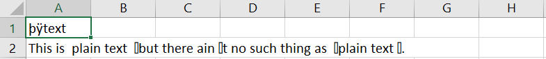
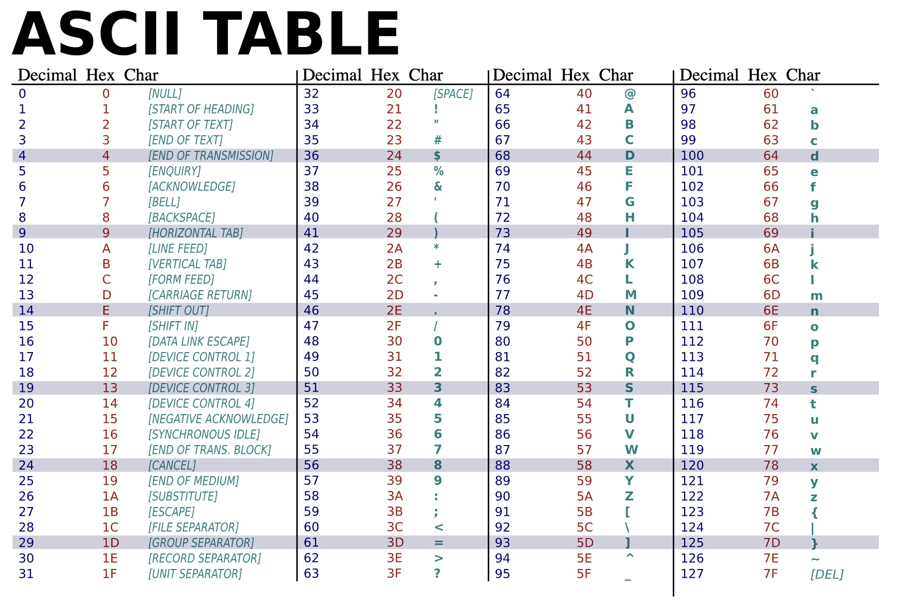
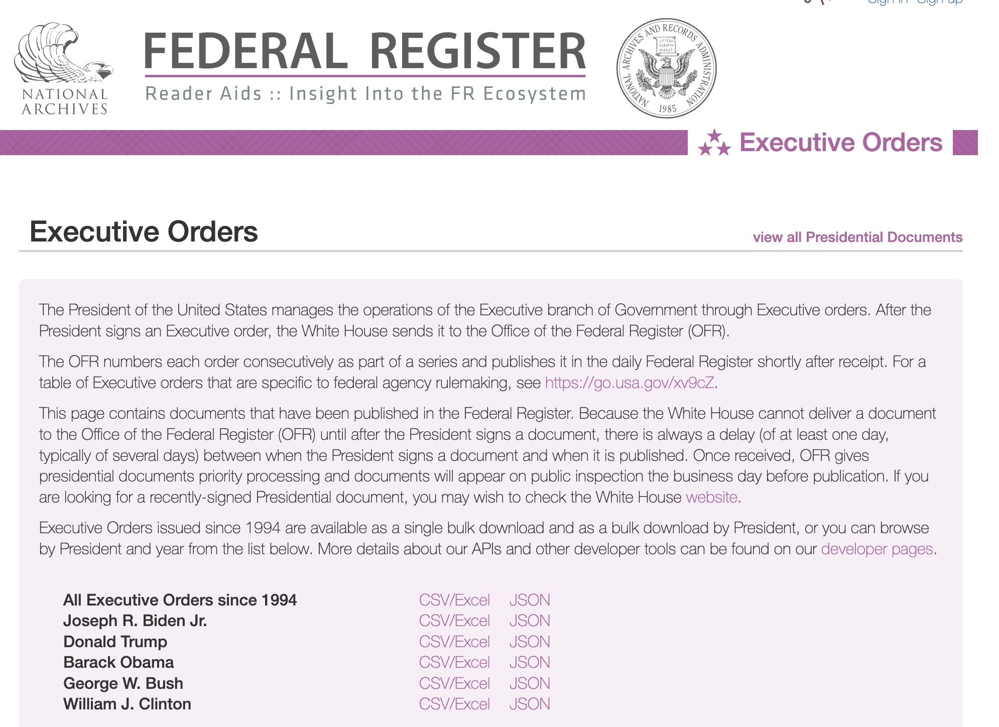
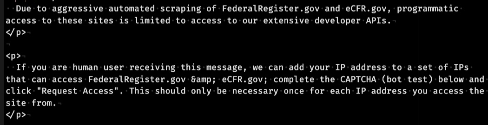
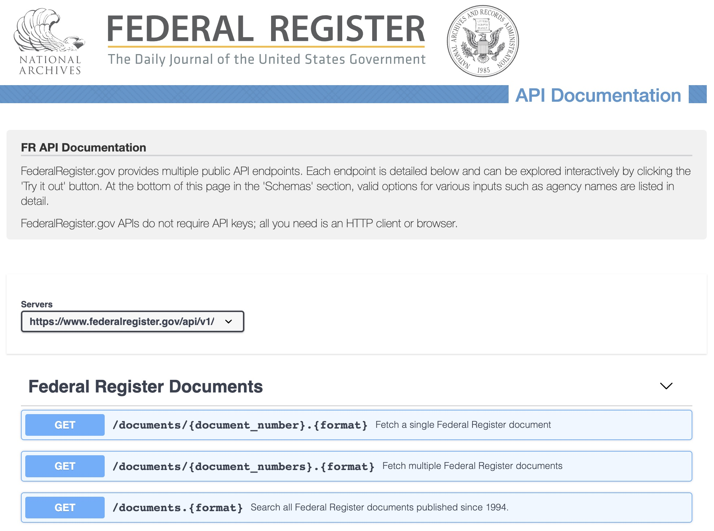
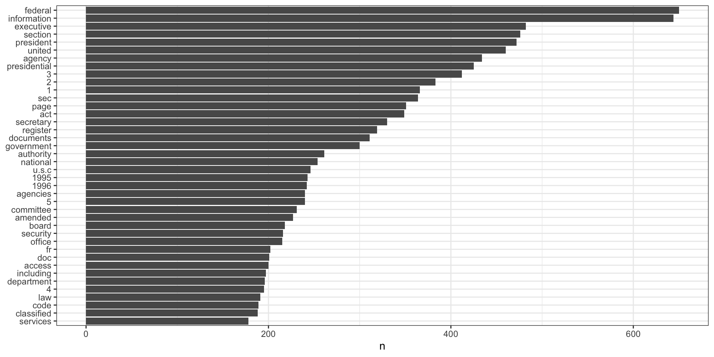
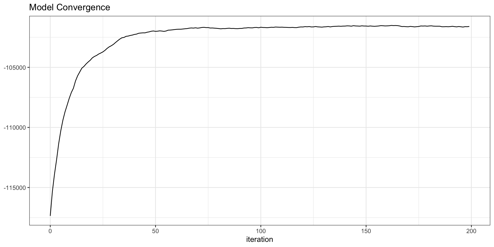
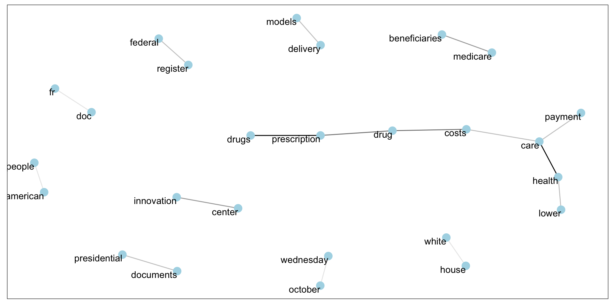
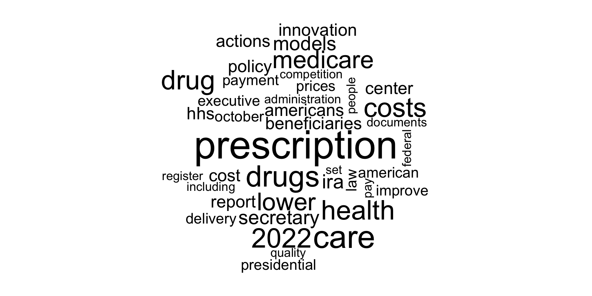
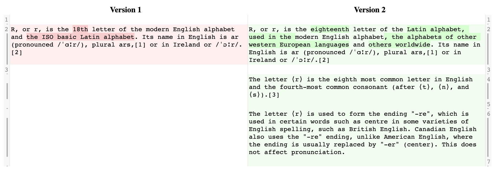

William E. J. Doane
| Day | Time | Title | Speaker |
|---|---|---|---|
| Thursday | 09:00 | Using Quarto to Write and Update Reports | Shirley Han |
| 11:05 | Deploying R in a Secure Environment | Jared Lander | |
| 13:25 | Data and American Politics | David Shor | |
| 15:55 | Natural Language Statistics with LDA | Tommy Jones | |
| Friday | 10:00 | Building Knowledge Systems | Jake Dyal |
| 13:35 | Qual: Shiny Qualitative Coding | William Doane | |
| 15:40 | O*NET and ORS… Topic Modeling | Drake Gibson |
Meta’s Galactica
Microsoft Github’s Copilot
Microsoft Tay Chatbot
See N-gram Language Models. https://web.stanford.edu/~jurafsky/slp3/3.pdf
Saving the documents you access in their original form
This is the heart of NLP: finding the signal in your textual data and tagging it for later analysis.
Consider maintaining tags as separate data, so you can continue to grow the set of tags associated with your data over time.
Converting textual data into frequency counts, co-occurrence matrices, similarity scores, topic models.
The goal is to reduce the number of documents that need to be considered and produce insights into patterns within and across the documents.
Existence flags, frequency counts, co-occurrences, sentiment analysis, and topic modeling are common methods.
Visualizing the results of text analyses can range from trivial to challenging.
Tables of frequency counts are often the most direct way to convey top terms followed by bar charts of the same data, if needed. Word clouds are also popular
Visualizing the results of topic modeling is akin to spotting constellations in the night sky. You’re projecting 100,000+ dimensional spaces onto 2- or 3-dimensional surfaces.
What topics you research and what constitutes evidence for or against policy alternatives varies greatly.
I often find myself considering a policy matrix:
| Do Less | Do the Same | Do More | Do Something Else | |
|---|---|---|---|---|
| Would it be Feasible? | ||||
| Would it be Ethical? | ||||
| Would it be Legal? | ||||
| Who Benefits? | ||||
| Who Doesn’t? | ||||
| What are the costs? | ||||
| Who would be responsible? |
Reproducible research involves collecting data, analyzing it, and communicating findings in ways that support review, reproduction, and (to your intended audience) transparency.
Tools such as RMarkdown and the newer and more capable Quarto help you to structure your analyses as executable documents.
https://www.r-bloggers.com/2016/06/escaping-from-character-encoding-hell-in-r-on-windows/
Data—including text—is represented in digital storage as a set of OFFs and ONs—ZEROs and ONEs.
How should those 0s and 1s be interpreted? Are they numbers? Letters? Sounds? Colors? Dates?
Character encodings are conventions by which the 0s and 1s can be interpreted as text and other symbols.
ASCII and LATIN-1 use a single byte to encode a character
UTF-8 uses 1, 2, 3, or 4 bytes
UTF-16 uses 2, 3, or 4 bytes
The Byte Order Marker (BOM) is a usually invisible pair of bytes (FF FE or FE FF) at the start of a file indicating whether the byte order is encoded as 00 0a or 0a 00. See:

It began upon the following occasion.
It is allowed on all hands, that the primitive way of breaking eggs before we eat them, was upon the larger end: but his present Majesty’s grandfather, while he was a boy, going to eat an egg, and breaking it according to the ancient practice, happened to cut one of his fingers. Whereupon the Emperor his father published an edict, commanding all his subjects, upon great penalties, to break the smaller end of their eggs.
Gulliver’s Travels (1726)

| Hexadecimal | Character |
|---|---|
| 00 | NULL… End of File/EOF |
| 0a | Line Feed |
| 0d | Carriage Return |
| 20 | Space |
| 30–39 | 0, 1, 2, 3, 4, 5, 6, 7, 8, 9 |
| 41–5a | A, B, C, …, X, Y, Z |
| 61–7a | a, b, c, …, x, y, z |
| 77 77 77 | www |
| a0 | Non-breaking space |
| ef bb bf | UTF-8 BOM |
| fe ff | UTF-16BE (Big Endian) |
| ff fe | UTF-16LE (Little Endian) |
A single text file saved from BBEdit using 4 different character encodings.
0 : 74 65 78 74 0d 0a 22 54 68 69 73 20 69 73 20 e2 80 9c 70 6c 61 69 6e 20 74 65 78 74 e2 80 9d e2 80 94 | text.."This is ...plain text......
34 : 62 75 74 20 74 68 65 72 65 20 61 69 6e e2 80 99 74 20 6e 6f 20 73 75 63 68 20 74 68 69 6e 67 20 61 73 | but there ain...t no such thing as
68 : 20 e2 80 98 70 6c 61 69 6e 20 74 65 78 74 e2 80 99 2e 22 0d 0a | ...plain text....".. 0 : ef bb bf 74 65 78 74 0d 0a 22 54 68 69 73 20 69 73 20 e2 80 9c 70 6c 61 69 6e 20 74 65 78 74 e2 80 9d | ...text.."This is ...plain text...
34 : e2 80 94 62 75 74 20 74 68 65 72 65 20 61 69 6e e2 80 99 74 20 6e 6f 20 73 75 63 68 20 74 68 69 6e 67 | ...but there ain...t no such thing
68 : 20 61 73 20 e2 80 98 70 6c 61 69 6e 20 74 65 78 74 e2 80 99 2e 22 0d 0a | as ...plain text....".. 0 : ff fe 74 00 65 00 78 00 74 00 0d 00 0a 00 22 00 54 00 68 00 69 00 73 00 20 00 69 00 73 00 20 00 1c 20 | ..t.e.x.t.....".T.h.i.s. .i.s. ..
34 : 70 00 6c 00 61 00 69 00 6e 00 20 00 74 00 65 00 78 00 74 00 1d 20 14 20 62 00 75 00 74 00 20 00 74 00 | p.l.a.i.n. .t.e.x.t.. . b.u.t. .t.
68 : 68 00 65 00 72 00 65 00 20 00 61 00 69 00 6e 00 19 20 74 00 20 00 6e 00 6f 00 20 00 73 00 75 00 63 00 | h.e.r.e. .a.i.n.. t. .n.o. .s.u.c.
102 : 68 00 20 00 74 00 68 00 69 00 6e 00 67 00 20 00 61 00 73 00 20 00 18 20 70 00 6c 00 61 00 69 00 6e 00 | h. .t.h.i.n.g. .a.s. .. p.l.a.i.n.
136 : 20 00 74 00 65 00 78 00 74 00 19 20 2e 00 22 00 0d 00 0a 00 | .t.e.x.t.. .."..... 0 : fe ff 00 74 00 65 00 78 00 74 00 0d 00 0a 00 22 00 54 00 68 00 69 00 73 00 20 00 69 00 73 00 20 20 1c | ...t.e.x.t.....".T.h.i.s. .i.s. .
34 : 00 70 00 6c 00 61 00 69 00 6e 00 20 00 74 00 65 00 78 00 74 20 1d 20 14 00 62 00 75 00 74 00 20 00 74 | .p.l.a.i.n. .t.e.x.t . ..b.u.t. .t
68 : 00 68 00 65 00 72 00 65 00 20 00 61 00 69 00 6e 20 19 00 74 00 20 00 6e 00 6f 00 20 00 73 00 75 00 63 | .h.e.r.e. .a.i.n ..t. .n.o. .s.u.c
102 : 00 68 00 20 00 74 00 68 00 69 00 6e 00 67 00 20 00 61 00 73 00 20 20 18 00 70 00 6c 00 61 00 69 00 6e | .h. .t.h.i.n.g. .a.s. ..p.l.a.i.n
136 : 00 20 00 74 00 65 00 78 00 74 20 19 00 2e 00 22 00 0d 00 0a | . .t.e.x.t ....".... We can exploit patterns that occur in textual data, but we need a language to describe those patterns.
Generally, letters match themselves and numbers match themselves. Some punctuation marks match themselves
a b c... x y z lower case English letters
A B C... X Y Z upper case English letters
0 1 2... 7 8 9 digits
! @ # % & = _ < > , punctuation| Pattern | Matches | Does Not Natch |
|---|---|---|
| apple | apple | applle |
| 555-1212 | 555-1212 | 555+1212, 123-1212 |
It may be necessary to describe a pattern which one or more characters are unknown.
. (the period or full-stop character) stands for any single character| Pattern | Matches | Does Not Natch |
|---|---|---|
| c.t | cat, cbt, cct, … c1t, c2t, …, c#t | caat, ct |
| app.e | apple, appbe, appce, appde, … | applle |
| 555.1212 | 555-1212, 555+1212, 555x1212 | 123-1212 |
It may be necessary to describe patterns where a symbol or set of symbols repeats: “five digits”
{m,n} at least m and as many as n of the previous element
? zero or one of the previous element {0,1}
* zero or more of the previous element {0, } known as the Kleene Star
+ one or more of the previous element {1, }| Pattern | Matches | Does Not Natch |
|---|---|---|
| c.?t | ct, cat, cat, cbt, cct, … c1t, c2t, …, c#t | caat |
| c.{2,3}t | caat, c11t, c##t, caaat, c123t, … | ct, cat, caaaat, … |
| app.+e | apple, appbe, appce, appde, …, appllllle, appabcdefghie | ae, … |
It may be necessary to indicate a group of options. For example, “the English vowels”.
[ ] any one of the enclosed characters
[^ ] none of the enclosed characters
( ) all of the enclosed characters
( | ) either all of the first part or all of the second part of enclosed characters
| Pattern | Matches | Does Not Natch |
|---|---|---|
c[aeiou]t |
cat, cet, cit, cot, cut | cbt, c2t, c#t |
c[^aeiou]t |
cbt, cct, cdt, cft, cgt… c1t, c2t, c#t… | cat, cet, cit, cot, cut |
c(a|anno)t |
cat, cannot | cant, cannt, cbt, cct |
c[-+]t |
c-t, c+t | cat, cbt, c2t, c#t |
c[a-z]t |
cat, cbt, cct, cdt, cet… | c2t, c#t |
It may be necessary to find a pattern only when it appears at the start or end of a line.
^ the start of a line of text
$ the end of a line of textThe backslash is used to escape the meaning of a character. For example, if you wanted to match a literal question mark how would yo do it? Remember: the question mark is used as a quantifier meaning zero or one of the previous element.
\r carriage return (ASCII 13)
\n newline/line feed (ASCII 10)
\t tab (ASCII 9)
\b word boundary (start or end of line, punctuation, whitespace)
\d a single digit (0, 1, 2, 3, 4, 5, 6, 7, 8, 9)
\s whitespace (usually includes \r \n \t or a space)
\\ literal backslash
\( literal opening parenthesis
\[ literal opening square bracket
\{ literal opening braceCreate a regular expression to match each of the following and that matches only the intended pattern.
Regular Expressions generally don’t have memory. So, any pattern that requires remembering an earlier part of the pattern it out of scope.
suppressPackageStartupMessages({
library(janitor)
library(stringr)
library(humaniformat)
library(tidylda)
})
nih_sample
pis <-
nih_sample |>
select(PI_NAMEs) |>
magrittr::set_colnames("pi_names")
pis <-
pis |>
mutate(pi_names = str_split(pi_names, ";")) |>
unnest(pi_names) |>
filter(str_trim(pi_names) != "") |>
mutate(pi_names = str_replace(pi_names, " \\(contact\\)", "")) |>
mutate(pi_names = format_reverse(pi_names))
pis
parse_names(pis$pi_names)# A tibble: 100 × 44
APPLICATION…¹ ABSTR…² ACTIV…³ ADMIN…⁴ APPLI…⁵ ARRA_…⁶ AWARD…⁷ BUDGE…⁸ BUDGE…⁹ CFDA_…˟ CORE_…˟ ED_IN…˟ FOA_N…˟ FULL_…˟ FUNDI…˟ FUNDI…˟ FY IC_NAME
<chr> <chr> <chr> <chr> <chr> <chr> <chr> <chr> <chr> <chr> <chr> <chr> <chr> <chr> <chr> <chr> <chr> <chr>
1 8693991 "Metha… P50 DA 5 N 06/30/… 07/01/… 06/30/… "" P50DA0… "" PAR-10… 5P50DA… "NIDA:… Resear… 2014 NATION…
2 8693362 " Proj… R01 GM 2 N 05/27/… 06/01/… 04/30/… "859" R01GM0… "" PA-11-… 2R01GM… "NIGMS… Resear… 2014 NATION…
3 8607498 " D… R21 AI 5 N 01/03/… 02/01/… 01/31/… "855" R21AI1… "SCHOO… PA-11-… 5R21AI… "NIAID… Resear… 2014 NATION…
4 8697008 " D… K01 AI 5 N 07/11/… 08/01/… 07/31/… "855" K01AI1… "SCHOO… PA-11-… 5K01AI… "NIAID… Other … 2014 NATION…
5 8725943 "Antig… P01 CA 7 N 09/19/… 09/01/… 08/31/… "" P01CA0… "" PAR-09… 7P01CA… "NCI:7… Resear… 2014 NATION…
6 8574224 " D… R01 MH 2 N 03/21/… 05/01/… 04/30/… "242" R01MH0… "SCHOO… PA-11-… 2R01MH… "NIMH:… Resear… 2014 NATION…
7 8716060 "The g… P20 GM 2 N 05/27/… 06/01/… 04/30/… "" P20GM1… "" PAR-12… 2P20GM… "NIGMS… Resear… 2014 NATION…
8 8692071 " D… R21 CA 1 N 02/19/… 04/01/… 03/31/… "395" R21CA1… "" PAR-13… 1R21CA… "NCI:2… Resear… 2014 NATION…
9 8644130 " DE… R01 HL 5 N 03/15/… 04/01/… 03/31/… "837" R01HL0… "SCHOO… PA-10-… 5R01HL… "NHLBI… Resear… 2014 NATION…
10 8702828 " D… R21 CA 1 N 08/27/… 09/01/… 08/31/… "394" R21CA1… "BIOME… PA-12-… 1R21CA… "NCI:1… Resear… 2014 NATION…
# … with 90 more rows, 26 more variables: NIH_SPENDING_CATS <chr>, ORG_CITY <chr>, ORG_COUNTRY <chr>, ORG_DEPT <chr>, ORG_DISTRICT <chr>,
# ORG_DUNS <chr>, ORG_FIPS <chr>, ORG_NAME <chr>, ORG_STATE <chr>, ORG_ZIPCODE <chr>, PHR <chr>, PI_IDS <chr>, PI_NAMEs <chr>,
# PROGRAM_OFFICER_NAME <chr>, PROJECT_START <chr>, PROJECT_END <chr>, PROJECT_TERMS <chr>, PROJECT_TITLE <chr>, SERIAL_NUMBER <chr>,
# STUDY_SECTION <chr>, STUDY_SECTION_NAME <chr>, SUBPROJECT_ID <chr>, SUFFIX <chr>, SUPPORT_YEAR <chr>, TOTAL_COST <chr>,
# TOTAL_COST_SUB_PROJECT <chr>, and abbreviated variable names ¹APPLICATION_ID, ²ABSTRACT_TEXT, ³ACTIVITY, ⁴ADMINISTERING_IC, ⁵APPLICATION_TYPE,
# ⁶ARRA_FUNDED, ⁷AWARD_NOTICE_DATE, ⁸BUDGET_START, ⁹BUDGET_END, ˟CFDA_CODE, ˟CORE_PROJECT_NUM, ˟ED_INST_TYPE, ˟FOA_NUMBER, ˟FULL_PROJECT_NUM,
# ˟FUNDING_ICs, ˟FUNDING_MECHANISM# A tibble: 100 × 1
pi_names
<chr>
1 PHILLIPS, TAMARA J;
2 ZHENG, YINGYE;
3 MOTHES, WALTHER H;
4 HSIEH, YU-HSIANG;
5 REDDY, PAVAN;
6 KLEIN, DANIEL N;
7 HAND, PATRICIA H.;
8 KURUPPU, KUMUDU DARSHINI;
9 BANERJEE, UTPAL;
10 MARCU, LAURA;
11 INGRAM, JANI CHERI;PEARSON, TALIMA ROSS (contact);STEARNS, DIANE M;TRUJILLO, OCTAVIANA V;
12 METCALFE, DEAN D;
13 GUZZO, KAREN B (contact);HAYFORD, SARAH R;
14 CIRELLI, CHIARA;TONONI, GIULIO (contact);
15 PAYNE, SHELLEY M.;
16 BLASER, MARTIN J;
17 LARSEN, SCOTT D (contact);SHAYMAN, JAMES ALAN;
18 BAKER, NATHAN A.;
19 PETERLIN, BORIS MATIJA;
20 WELLS, MARK;
21 KOMRO, KELLI ANN;
22 CHANCE, MARK R;
23 LEE, JAE K;STILES, TRAVIS LEE (contact);
24 WILSON, EMMA HARRIET;
25 BRASIER, ALLAN R.;
26 RATHMACHER, JOHN A;
27 WEAVER, ERIC A.;
28 NUCERA, CARMELO;
29 CZERNIN, JOHANNES;
30 PRIMACK, JENNIFER MARIE;
31 BLANCO, CARLOS;
32 BATSHAW, MARK L.;
33 PLEMMONS, DENA;
34 GUREJE, OYEWUSI;
35 GIACCIA, AMATO J.;
36 HEITZEG, MARY M;ZUCKER, ROBERT ALPERT (contact);
37 THOMAS, MARK JOHN;
38 LATTAL, KENNON MATTHEW (contact);WOOD, MARCELO ANDRES;
39 TAWAKOL, AHMED A;
40 HAIRE-JOSHU, DEBRA;
41 COLLARD, HAROLD R (contact);RAGHU, GANESH;
42 SMELTZER, MARK S;
43 SHI, YONGGANG;
44 LOCKMAN, PAUL R;
45 MANOACH, DARA S (contact);STICKGOLD, ROBERT;
46 CORKEY, BARBARA E. (contact);GUO, WEN;SHIRIHAI, ORIAN S;
47 ZOLLA-PAZNER, SUSAN B;
48 GARG, ARUN;
49 MCKAY, MARY MCKERNAN;
50 EPSTEIN, JONATHAN A;
51 SEED, PATRICK C.;
52 MILES, PAMELA W;
53 ARONOFF, DAVID M;
54 SHNITSER, PAUL;
55 KRAVITZ, HOWARD M;
56 TIAN, LU;
57 METCALF, WILLIAM W.;
58 BUYNAK, JOHN D;
59 ZINGMAN, LEONID;
60 DESIMONE, ROBERT;
61 XIE, SHARON XIANGWEN;
62 BREGA, ANGELA GWEN;
63 PIERCE, J. MICHAEL;
64 ZHAO, KEJI;
65 DENARDO, DAVID G;
66 MACKELLAR, DREW CARL;
67 CASSIS, LISA A;
68 GILCHRIST, KRISTIN HEDGEPATH (contact);KRONER, BARBARA L;
69 CHEN, YUQING EUGENE;
70 RIBISL, KURT M.;
71 LUSTER, ANDREW D;
72 HOCKENBERY, DAVID M.;
73 KNOX, SARAH MONICA;
74 WRAY, CHARLES G;
75 UMBRICHT, CHRISTOPHER B;
76 PUGA, ALVARO;
77 YANG, IVANA VERONA;
78 CHANG, SHINE;
79 DOUMBIA, SEYDOU;
80 MACPHERSON, DAVID;
81 FIGUEROA, CARLOS ALBERTO;HUMPHREY, JAY D. (contact);
82 TORDOFF, MICHAEL G;
83 LEE, MICHAEL K;
84 RODGERS, DAVID W;
85 COOPER, DAVID KC;
86 PADMANABHAN, VASANTHA;PETERSON, KAREN EILEEN (contact);
87 SANCAR, AZIZ;
88 SADAYAPPAN, SAKTHIVEL;
89 MCDONALD, KERRY S;
90 EMELIANOV, STANISLAV Y (contact);SOKOLOV, KONSTANTIN V;
91 NEELAMEGHAM, SRIRAM;
92 REYNOLDS, KEVIN A;
93 SMITH, MARTYN T;
94 LIPTON, STUART A;
95 WEEKS, KEVIN M;
96 MCCORMICK, FRANK PATRICK;
97 BIBB, JAMES A;
98 SWENBERG, JAMES A;
99 SHAIKH, ZAHIR A;
100 BASU, SANJAY; # A tibble: 117 × 1
pi_names
<chr>
1 TAMARA J PHILLIPS
2 YINGYE ZHENG
3 WALTHER H MOTHES
4 YU-HSIANG HSIEH
5 PAVAN REDDY
6 DANIEL N KLEIN
7 PATRICIA H. HAND
8 KUMUDU DARSHINI KURUPPU
9 UTPAL BANERJEE
10 LAURA MARCU
11 JANI CHERI INGRAM
12 TALIMA ROSS PEARSON
13 DIANE M STEARNS
14 OCTAVIANA V TRUJILLO
15 DEAN D METCALFE
16 KAREN B GUZZO
17 SARAH R HAYFORD
18 CHIARA CIRELLI
19 GIULIO TONONI
20 SHELLEY M. PAYNE
21 MARTIN J BLASER
22 SCOTT D LARSEN
23 JAMES ALAN SHAYMAN
24 NATHAN A. BAKER
25 BORIS MATIJA PETERLIN
26 MARK WELLS
27 KELLI ANN KOMRO
28 MARK R CHANCE
29 JAE K LEE
30 TRAVIS LEE STILES
31 EMMA HARRIET WILSON
32 ALLAN R. BRASIER
33 JOHN A RATHMACHER
34 ERIC A. WEAVER
35 CARMELO NUCERA
36 JOHANNES CZERNIN
37 JENNIFER MARIE PRIMACK
38 CARLOS BLANCO
39 MARK L. BATSHAW
40 DENA PLEMMONS
41 OYEWUSI GUREJE
42 AMATO J. GIACCIA
43 MARY M HEITZEG
44 ROBERT ALPERT ZUCKER
45 MARK JOHN THOMAS
46 KENNON MATTHEW LATTAL
47 MARCELO ANDRES WOOD
48 AHMED A TAWAKOL
49 DEBRA HAIRE-JOSHU
50 HAROLD R COLLARD
51 GANESH RAGHU
52 MARK S SMELTZER
53 YONGGANG SHI
54 PAUL R LOCKMAN
55 DARA S MANOACH
56 ROBERT STICKGOLD
57 BARBARA E. CORKEY
58 WEN GUO
59 ORIAN S SHIRIHAI
60 SUSAN B ZOLLA-PAZNER
61 ARUN GARG
62 MARY MCKERNAN MCKAY
63 JONATHAN A EPSTEIN
64 PATRICK C. SEED
65 PAMELA W MILES
66 DAVID M ARONOFF
67 PAUL SHNITSER
68 HOWARD M KRAVITZ
69 LU TIAN
70 WILLIAM W. METCALF
71 JOHN D BUYNAK
72 LEONID ZINGMAN
73 ROBERT DESIMONE
74 SHARON XIANGWEN XIE
75 ANGELA GWEN BREGA
76 J. MICHAEL PIERCE
77 KEJI ZHAO
78 DAVID G DENARDO
79 DREW CARL MACKELLAR
80 LISA A CASSIS
81 KRISTIN HEDGEPATH GILCHRIST
82 BARBARA L KRONER
83 YUQING EUGENE CHEN
84 KURT M. RIBISL
85 ANDREW D LUSTER
86 DAVID M. HOCKENBERY
87 SARAH MONICA KNOX
88 CHARLES G WRAY
89 CHRISTOPHER B UMBRICHT
90 ALVARO PUGA
91 IVANA VERONA YANG
92 SHINE CHANG
93 SEYDOU DOUMBIA
94 DAVID MACPHERSON
95 CARLOS ALBERTO FIGUEROA
96 JAY D. HUMPHREY
97 MICHAEL G TORDOFF
98 MICHAEL K LEE
99 DAVID W RODGERS
100 DAVID KC COOPER
# … with 17 more rows salutation first_name middle_name last_name suffix full_name
1 <NA> TAMARA J PHILLIPS <NA> TAMARA J PHILLIPS
2 <NA> YINGYE <NA> ZHENG <NA> YINGYE ZHENG
3 <NA> WALTHER H MOTHES <NA> WALTHER H MOTHES
4 <NA> YU-HSIANG <NA> HSIEH <NA> YU-HSIANG HSIEH
5 <NA> PAVAN <NA> REDDY <NA> PAVAN REDDY
6 <NA> DANIEL N KLEIN <NA> DANIEL N KLEIN
7 <NA> PATRICIA H. HAND <NA> PATRICIA H. HAND
8 <NA> KUMUDU DARSHINI KURUPPU <NA> KUMUDU DARSHINI KURUPPU
9 <NA> UTPAL <NA> BANERJEE <NA> UTPAL BANERJEE
10 <NA> LAURA <NA> MARCU <NA> LAURA MARCU
11 <NA> JANI CHERI INGRAM <NA> JANI CHERI INGRAM
12 <NA> TALIMA ROSS PEARSON <NA> TALIMA ROSS PEARSON
13 <NA> DIANE M STEARNS <NA> DIANE M STEARNS
14 <NA> OCTAVIANA V TRUJILLO <NA> OCTAVIANA V TRUJILLO
15 <NA> DEAN D METCALFE <NA> DEAN D METCALFE
16 <NA> KAREN B GUZZO <NA> KAREN B GUZZO
17 <NA> SARAH R HAYFORD <NA> SARAH R HAYFORD
18 <NA> CHIARA <NA> CIRELLI <NA> CHIARA CIRELLI
19 <NA> GIULIO <NA> TONONI <NA> GIULIO TONONI
20 <NA> SHELLEY M. PAYNE <NA> SHELLEY M. PAYNE
21 <NA> MARTIN J BLASER <NA> MARTIN J BLASER
22 <NA> SCOTT D LARSEN <NA> SCOTT D LARSEN
23 <NA> JAMES ALAN SHAYMAN <NA> JAMES ALAN SHAYMAN
24 <NA> NATHAN A. BAKER <NA> NATHAN A. BAKER
25 <NA> BORIS MATIJA PETERLIN <NA> BORIS MATIJA PETERLIN
26 <NA> MARK <NA> WELLS <NA> MARK WELLS
27 <NA> KELLI ANN KOMRO <NA> KELLI ANN KOMRO
28 <NA> MARK R CHANCE <NA> MARK R CHANCE
29 <NA> JAE K LEE <NA> JAE K LEE
30 <NA> TRAVIS LEE STILES <NA> TRAVIS LEE STILES
31 <NA> EMMA HARRIET WILSON <NA> EMMA HARRIET WILSON
32 <NA> ALLAN R. BRASIER <NA> ALLAN R. BRASIER
33 <NA> JOHN A RATHMACHER <NA> JOHN A RATHMACHER
34 <NA> ERIC A. WEAVER <NA> ERIC A. WEAVER
35 <NA> CARMELO <NA> NUCERA <NA> CARMELO NUCERA
36 <NA> JOHANNES <NA> CZERNIN <NA> JOHANNES CZERNIN
37 <NA> JENNIFER MARIE PRIMACK <NA> JENNIFER MARIE PRIMACK
38 <NA> CARLOS <NA> BLANCO <NA> CARLOS BLANCO
39 <NA> MARK L. BATSHAW <NA> MARK L. BATSHAW
40 <NA> DENA <NA> PLEMMONS <NA> DENA PLEMMONS
41 <NA> OYEWUSI <NA> GUREJE <NA> OYEWUSI GUREJE
42 <NA> AMATO J. GIACCIA <NA> AMATO J. GIACCIA
43 <NA> MARY M HEITZEG <NA> MARY M HEITZEG
44 <NA> ROBERT ALPERT ZUCKER <NA> ROBERT ALPERT ZUCKER
45 <NA> MARK JOHN THOMAS <NA> MARK JOHN THOMAS
46 <NA> KENNON MATTHEW LATTAL <NA> KENNON MATTHEW LATTAL
47 <NA> MARCELO ANDRES WOOD <NA> MARCELO ANDRES WOOD
48 <NA> AHMED A TAWAKOL <NA> AHMED A TAWAKOL
49 <NA> DEBRA <NA> HAIRE-JOSHU <NA> DEBRA HAIRE-JOSHU
50 <NA> HAROLD R COLLARD <NA> HAROLD R COLLARD
51 <NA> GANESH <NA> RAGHU <NA> GANESH RAGHU
52 <NA> MARK S SMELTZER <NA> MARK S SMELTZER
53 <NA> YONGGANG <NA> SHI <NA> YONGGANG SHI
54 <NA> PAUL R LOCKMAN <NA> PAUL R LOCKMAN
55 <NA> DARA S MANOACH <NA> DARA S MANOACH
56 <NA> ROBERT <NA> STICKGOLD <NA> ROBERT STICKGOLD
57 <NA> BARBARA E. CORKEY <NA> BARBARA E. CORKEY
58 <NA> WEN <NA> GUO <NA> WEN GUO
59 <NA> ORIAN S SHIRIHAI <NA> ORIAN S SHIRIHAI
60 <NA> SUSAN B ZOLLA-PAZNER <NA> SUSAN B ZOLLA-PAZNER
61 <NA> ARUN <NA> GARG <NA> ARUN GARG
62 <NA> MARY MCKERNAN MCKAY <NA> MARY MCKERNAN MCKAY
63 <NA> JONATHAN A EPSTEIN <NA> JONATHAN A EPSTEIN
64 <NA> PATRICK C. SEED <NA> PATRICK C. SEED
65 <NA> PAMELA W MILES <NA> PAMELA W MILES
66 <NA> DAVID M ARONOFF <NA> DAVID M ARONOFF
67 <NA> PAUL <NA> SHNITSER <NA> PAUL SHNITSER
68 <NA> HOWARD M KRAVITZ <NA> HOWARD M KRAVITZ
69 <NA> LU <NA> TIAN <NA> LU TIAN
70 <NA> WILLIAM W. METCALF <NA> WILLIAM W. METCALF
71 <NA> JOHN D BUYNAK <NA> JOHN D BUYNAK
72 <NA> LEONID <NA> ZINGMAN <NA> LEONID ZINGMAN
73 <NA> ROBERT <NA> DESIMONE <NA> ROBERT DESIMONE
74 <NA> SHARON XIANGWEN XIE <NA> SHARON XIANGWEN XIE
75 <NA> ANGELA GWEN BREGA <NA> ANGELA GWEN BREGA
76 <NA> J. MICHAEL PIERCE <NA> J. MICHAEL PIERCE
77 <NA> KEJI <NA> ZHAO <NA> KEJI ZHAO
78 <NA> DAVID G DENARDO <NA> DAVID G DENARDO
79 <NA> DREW CARL MACKELLAR <NA> DREW CARL MACKELLAR
80 <NA> LISA A CASSIS <NA> LISA A CASSIS
81 <NA> KRISTIN HEDGEPATH GILCHRIST <NA> KRISTIN HEDGEPATH GILCHRIST
82 <NA> BARBARA L KRONER <NA> BARBARA L KRONER
83 <NA> YUQING EUGENE CHEN <NA> YUQING EUGENE CHEN
84 <NA> KURT M. RIBISL <NA> KURT M. RIBISL
85 <NA> ANDREW D LUSTER <NA> ANDREW D LUSTER
86 <NA> DAVID M. HOCKENBERY <NA> DAVID M. HOCKENBERY
87 <NA> SARAH MONICA KNOX <NA> SARAH MONICA KNOX
88 <NA> CHARLES G WRAY <NA> CHARLES G WRAY
89 <NA> CHRISTOPHER B UMBRICHT <NA> CHRISTOPHER B UMBRICHT
90 <NA> ALVARO <NA> PUGA <NA> ALVARO PUGA
91 <NA> IVANA VERONA YANG <NA> IVANA VERONA YANG
92 <NA> SHINE <NA> CHANG <NA> SHINE CHANG
93 <NA> SEYDOU <NA> DOUMBIA <NA> SEYDOU DOUMBIA
94 <NA> DAVID <NA> MACPHERSON <NA> DAVID MACPHERSON
95 <NA> CARLOS ALBERTO FIGUEROA <NA> CARLOS ALBERTO FIGUEROA
96 <NA> JAY D. HUMPHREY <NA> JAY D. HUMPHREY
97 <NA> MICHAEL G TORDOFF <NA> MICHAEL G TORDOFF
98 <NA> MICHAEL K LEE <NA> MICHAEL K LEE
99 <NA> DAVID W RODGERS <NA> DAVID W RODGERS
100 <NA> DAVID KC COOPER <NA> DAVID KC COOPER
101 <NA> VASANTHA <NA> PADMANABHAN <NA> VASANTHA PADMANABHAN
102 <NA> KAREN EILEEN PETERSON <NA> KAREN EILEEN PETERSON
103 <NA> AZIZ <NA> SANCAR <NA> AZIZ SANCAR
104 <NA> SAKTHIVEL <NA> SADAYAPPAN <NA> SAKTHIVEL SADAYAPPAN
105 <NA> KERRY S MCDONALD <NA> KERRY S MCDONALD
106 <NA> STANISLAV Y EMELIANOV <NA> STANISLAV Y EMELIANOV
107 <NA> KONSTANTIN V SOKOLOV <NA> KONSTANTIN V SOKOLOV
108 <NA> SRIRAM <NA> NEELAMEGHAM <NA> SRIRAM NEELAMEGHAM
109 <NA> KEVIN A REYNOLDS <NA> KEVIN A REYNOLDS
110 <NA> MARTYN T SMITH <NA> MARTYN T SMITH
111 <NA> STUART A LIPTON <NA> STUART A LIPTON
112 <NA> KEVIN M WEEKS <NA> KEVIN M WEEKS
113 <NA> FRANK PATRICK MCCORMICK <NA> FRANK PATRICK MCCORMICK
114 <NA> JAMES A BIBB <NA> JAMES A BIBB
115 <NA> JAMES A SWENBERG <NA> JAMES A SWENBERG
116 <NA> ZAHIR A SHAIKH <NA> ZAHIR A SHAIKH
117 <NA> SANJAY <NA> BASU <NA> SANJAY BASUhttps://www.federalregister.gov/
https://www.federalregister.gov/developers/documentation/api/v1
(https://FederalRegister.gov)

(https://www.federalregister.gov/developers/documentation/api/v1)
https://www.federalregister.gov/developers/documentation/api/v1
library(here)
library(httr)
library(jsonlite)
library(dplyr)
agencies <- GET("https://www.federalregister.gov/api/v1/agencies")
str(agencies)
txt <- content(agencies, as = "text")
print(txt)
cat(txt)
prettify(txt)
agencies_df <-
content(agencies, as = "text") |>
fromJSON() |>
as_tibble()
head(agencies_df)
names(agencies_df)
agencies_df <-
agencies_df |>
select(short_name, name)
saveRDS(agencies_df, here("data", "fr_agencies.rds"))
agencies_dfList of 10
$ url : chr "https://www.federalregister.gov/api/v1/agencies"
$ status_code: int 200
$ headers :List of 17
..$ date : chr "Fri, 02 Dec 2022 04:00:48 GMT"
..$ content-type : chr "application/json; charset=utf-8"
..$ content-length : chr "162396"
..$ status : chr "200 OK"
..$ access-control-allow-origin : chr "*"
..$ referrer-policy : chr "strict-origin-when-cross-origin"
..$ x-permitted-cross-domain-policies: chr "none"
..$ x-xss-protection : chr "1; mode=block"
..$ x-request-id : chr "Root1-63894111-3e4ba9e27f2df72225a5bd5d"
..$ x-download-options : chr "noopen"
..$ x-frame-options : chr "SAMEORIGIN"
..$ x-runtime : chr "0.237503"
..$ x-content-type-options : chr "nosniff"
..$ content-encoding : chr "gzip"
..$ vary : chr "Accept-Encoding"
..$ age : chr "14174"
..$ accept-ranges : chr "bytes"
..- attr(*, "class")= chr [1:2] "insensitive" "list"
$ all_headers:List of 1
..$ :List of 3
.. ..$ status : int 200
.. ..$ version: chr "HTTP/2"
.. ..$ headers:List of 17
.. .. ..$ date : chr "Fri, 02 Dec 2022 04:00:48 GMT"
.. .. ..$ content-type : chr "application/json; charset=utf-8"
.. .. ..$ content-length : chr "162396"
.. .. ..$ status : chr "200 OK"
.. .. ..$ access-control-allow-origin : chr "*"
.. .. ..$ referrer-policy : chr "strict-origin-when-cross-origin"
.. .. ..$ x-permitted-cross-domain-policies: chr "none"
.. .. ..$ x-xss-protection : chr "1; mode=block"
.. .. ..$ x-request-id : chr "Root1-63894111-3e4ba9e27f2df72225a5bd5d"
.. .. ..$ x-download-options : chr "noopen"
.. .. ..$ x-frame-options : chr "SAMEORIGIN"
.. .. ..$ x-runtime : chr "0.237503"
.. .. ..$ x-content-type-options : chr "nosniff"
.. .. ..$ content-encoding : chr "gzip"
.. .. ..$ vary : chr "Accept-Encoding"
.. .. ..$ age : chr "14174"
.. .. ..$ accept-ranges : chr "bytes"
.. .. ..- attr(*, "class")= chr [1:2] "insensitive" "list"
$ cookies :'data.frame': 0 obs. of 7 variables:
..$ domain : logi(0)
..$ flag : logi(0)
..$ path : logi(0)
..$ secure : logi(0)
..$ expiration: 'POSIXct' num(0)
..$ name : logi(0)
..$ value : logi(0)
$ content : raw [1:676511] 5b 7b 22 61 ...
$ date : POSIXct[1:1], format: "2022-12-02 04:00:48"
$ times : Named num [1:6] 0 0.025 0.0415 0.0823 0.104 ...
..- attr(*, "names")= chr [1:6] "redirect" "namelookup" "connect" "pretransfer" ...
$ request :List of 7
..$ method : chr "GET"
..$ url : chr "https://www.federalregister.gov/api/v1/agencies"
..$ headers : Named chr "application/json, text/xml, application/xml, */*"
.. ..- attr(*, "names")= chr "Accept"
..$ fields : NULL
..$ options :List of 2
.. ..$ useragent: chr "libcurl/7.84.0 r-curl/4.3.3 httr/1.4.4"
.. ..$ httpget : logi TRUE
..$ auth_token: NULL
..$ output : list()
.. ..- attr(*, "class")= chr [1:2] "write_memory" "write_function"
..- attr(*, "class")= chr "request"
$ handle :Class 'curl_handle' <externalptr>
- attr(*, "class")= chr "response"[1] "[{\"agency_url\":\"\",\"child_ids\":[],\"child_slugs\":[],\"description\":\"ACTION was established by Reorganization Plan No. 1 of 1971, effective July 1, 1971. \\r\\n\\r\\nACTION's purpose was to mobilize Americans for voluntary service throughout the United States and in developing countries overseas through programs which help meet basic human needs and support the self-help efforts of low-income individuals and communities.\\r\\n\\r\\nACTION's functions relating to SCORE and ACT programs were transferred to the Small Business Administration. Other functions exercised by the Director of ACTION prior to March 31, 1995 were transferred to the Corporation for National and Community Service by 107 Stat. 888 and Proclamation 6662 of April 4, 1994. \",\"id\":557,\"logo\":null,\"name\":\"ACTION\",\"parent_id\":null,\"recent_articles_url\":\"https://www.federalregister.gov/api/v1/documents?conditions%5Bagency_ids%5D%5B%5D=557&order=newest\",\"short_name\":\"ACTION\",\"slug\":\"action\",\"url\":\"https://www.federalregister.gov/agencies/action\",\"json_url\":\"https://www.federalregister.gov/api/v1/agencies/557\"},{\"agency_url\":\"http://www.whitehouse.gov/administration/eop/oa\",\"child_ids\":[317],\"child_slugs\":[\"national-commission-on-fiscal-responsibility-and-reform\"],\"description\":\"The Office of Administration (OA) was created by Reorganization Plan No. 1 of 1977 and Executive Order 12028. As a component of the Executive Office of the President, the Office's primary function is to provide common administrative and support services for the various agencies and offices of the EOP.\\r\\n\\r\\n\",\"id\":2,\"logo\":{\"thumb_url\":\"https://agency-logos.federalregister.gov/2/thumb.png?1279162074\",\"small_url\":\"https://agency-logos.federalregister.gov/2/small.png?1279162074\",\"medium_url\":\"https://agency-logos.federalregister.gov/2/medium.png?1279162074\"},\"name\":\"Administration Office, Executive Office of the President\",\"parent_id\":538,\"recent_articles_url\":\"https://www.federalregister.gov/api/v1/documents?conditions%5Bagency_ids%5D%5B%5D=2&order=newest\",\"short_name\":\"OA\",\"slug\":\"administration-office-executive-office-of-the-president\",\"url\":\"https://www.federalregister.gov/agencies/administration-office-executive-office-of-the-president\",\"json_url\":\"https://www.federalregister.gov/api/v1/agencies/2\"},{\"agency_url\":\"http://www.acus.gov/\",\"child_ids\":[],\"child_slugs\":[],\"description\":\"The Administrative Conference of the United States (ACUS) was established under the Administrative Conference Act (5 U.S.C. 591-96), as a permanent independent agency of the Federal Government.\\r\\n\\r\\nACUS provides suitable arrangements through which Federal agencies, assisted by outside experts, may cooperatively study mutual problems, exchange information, and develop recommendations for action by proper authorities to the end that private rights may be fully protected and regulatory activities and other Federal responsibilities may be carried out expeditiously in the public interest.\\r\\n\\r\\nOther purposes of the ACUS include the promotion of effective public participation and efficiency in the rulemaking process; The reduction of unnecessary litigation in the regulatory process; the improvement of the use of science in the regulatory process; and the improvement of the effectiveness of laws applicable to the regulatory process.\\r\\n\\r\\nFollowing the loss of its funding in 1995, ACUS ceased operations from 1995 to 2010 at which time Congress reauthorized and refunded ACUS to re-initiate operations. \",\"id\":566,\"logo\":{\"thumb_url\":\"https://agency-logos.federalregister.gov/566/thumb.gif?1308250528\",\"small_url\":\"https://agency-logos.federalregister.gov/566/small.gif?1308250528\",\"medium_url\":\"https://agency-logos.federalregister.gov/566/medium.gif?1308250528\"},\"name\":\"Administrative Conference of the United States\",\"parent_id\":null,\"recent_articles_url\":\"https://www.federalregister.gov/api/v1/documents?conditions%5Bagency_ids%5D%5B%5D=566&order=newest\",\"short_name\":\"ACUS\",\"slug\":\"administrative-conference-of-the-united-states\",\"url\":\"https://www.federalregister.gov/agencies/administrative-conference-of-the-united-states\",\"json_url\":\"https://www.federalregister.gov/api/v1/agencies/566\"},{\"agency_url\":\"http://www.uscourts.gov/FederalCourts/UnderstandingtheFederalCourts/AdministrativeOffice.aspx\",\"child_ids\":[],\"child_slugs\":[],\"description\":\"Created in 1939, the Administrative Office of the United States Courts (AO) serves the federal Judiciary in carrying out its constitutional mission to provide equal justice under law.\\r\\n\\r\\nThe AO is the central support entity for the Judicial Branch. It provides a wide range of administrative, legal, financial, management, program, and information technology services to the federal courts. The AO provides support and staff counsel to the Judicial Conference of the United States and its committees, and implements and executes Judicial Conference policies, as well as applicable federal statutes and regulations. The AO facilitates communications within the Judiciary and with Congress, the Executive Branch, and the public on behalf of the Judiciary.\\r\\n\\r\\n\\r\\n\\r\\n\",\"id\":3,\"logo\":null,\"name\":\"Administrative Office of United States Courts\",\"parent_id\":null,\"recent_articles_url\":\"https://www.federalregister.gov/api/v1/documents?conditions%5Bagency_ids%5D%5B%5D=3&order=newest\",\"short_name\":\"AO\",\"slug\":\"administrative-office-of-united-states-courts\",\"url\":\"https://www.federalregister.gov/agencies/administrative-office-of-united-states-courts\",\"json_url\":\"https://www.federalregister.gov/api/v1/agencies/3\"},{\"agency_url\":\"http://www.achp.gov/\",\"child_ids\":[],\"child_slugs\":[],\"description\":\"The Advisory Council on Historic Preservation (ACHP) is an independent federal agency that promotes the preservation, enhancement, and productive use of our nation's historic resources, and advises the President and Congress on national historic preservation policy. \\r\\n\\r\\nThe goal of the National Historic Preservation Act (NHPA), which established the ACHP in 1966, is to have federal agencies act as responsible stewards of our nation's resources when their actions affect historic properties. The ACHP is the only entity with the legal responsibility to encourage federal agencies to factor historic preservation into federal project requirements. \",\"id\":225,\"logo\":{\"thumb_url\":\"https://agency-logos.federalregister.gov/225/thumb.gif?1322513916\",\"small_url\":\"https://agency-logos.federalregister.gov/225/small.gif?1322513916\",\"medium_url\":\"https://agency-logos.federalregister.gov/225/medium.gif?1322513916\"},\"name\":\"Advisory Council on Historic Preservation\",\"parent_id\":null,\"recent_articles_url\":\"https://www.federalregister.gov/api/v1/documents?conditions%5Bagency_ids%5D%5B%5D=225&order=newest\",\"short_name\":\"ACHP\",\"slug\":\"advisory-council-on-historic-preservation\",\"url\":\"https://www.federalregister.gov/agencies/advisory-council-on-historic-preservation\",\"json_url\":\"https://www.federalregister.gov/api/v1/agencies/225\"},{\"agency_url\":\"http://www.outreach.usda.gov/index.htm\",\"child_ids\":[],\"child_slugs\":[],\"description\":\"USDA’s Office of Advocacy and Outreach was established by the 2008 Farm Bill to improve access to USDA programs and to improve the viability and profitability of small farms and ranches, beginning farmers and ranchers, and socially disadvantaged farmers or ranchers. As such, OAO is split into five key program areas: Socially disadvantaged farmers, small and beginning farmers and ranchers, Higher education institutions program, farm worker coordination, and community engagement.\\r\\n\",\"id\":581,\"logo\":null,\"name\":\"Advocacy and Outreach Office\",\"parent_id\":12,\"recent_articles_url\":\"https://www.federalregister.gov/api/v1/documents?conditions%5Bagency_ids%5D%5B%5D=581&order=newest\",\"short_name\":\"OAO\",\"slug\":\"advocacy-and-outreach-office\",\"url\":\"https://www.federalregister.gov/agencies/advocacy-and-outreach-office\",\"json_url\":\"https://www.federalregister.gov/api/v1/agencies/581\"},{\"agency_url\":\"http://www.ahrq.gov/about/ahrqfact.htm\",\"child_ids\":[],\"child_slugs\":[],\"description\":\"The Agency for Healthcare Policy and Research was renamed the Agency for Health Care Research and Quality (AHRQ) under the Healthcare Research and Quality Act of 1999 which amended Title IX of the Public Health Service Act (42 U.S.C. 299 et seq). \\r\\n\\r\\nAHRQ is the health services research arm of the U.S. Department of Health and Human Services (HHS). AHRQ is a home to research centers that specialize in major areas of health care research such as: quality improvement and patient safety, outcomes and effectiveness of care, clinical practice and technology assessment, and health care organization and delivery systems. AHRQ is also a major source of funding and technical assistance for health services research and research training at leading U.S. universities and other institutions. In addition AHRQ acts as a science partner, working with the public and private sectors to build the knowledge base for what works—and does not work—in health and health care and to translate this knowledge into everyday practice and policymaking. \\r\\n\\r\\nFor more information on the Agency for Healthcare Research and Quality and its activities, please visit the agency homepage at http://www.ahrq.gov.\\r\\n\\r\\n__________\\r\\nSource:\\r\\nhttp://www.ahrq.gov/about/ahrqfact.htm.\\r\\n\",\"id\":5,\"logo\":{\"thumb_url\":\"https://agency-logos.federalregister.gov/5/thumb.jpg?1321651510\",\"small_url\":\"https://agency-logos.federalregister.gov/5/small.jpg?1321651510\",\"medium_url\":\"https://agency-logos.federalregister.gov/5/medium.jpg?1321651510\"},\"name\":\"Agency for Healthcare Research and Quality\",\"parent_id\":221,\"recent_articles_url\":\"https://www.federalregister.gov/api/v1/documents?conditions%5Bagency_ids%5D%5B%5D=5&order=newest\",\"short_name\":\"AHRQ\",\"slug\":\"agency-for-healthcare-research-and-quality\",\"url\":\"https://www.federalregister.gov/agencies/agency-for-healthcare-research-and-quality\",\"json_url\":\"https://www.federalregister.gov/api/v1/agencies/5\"},{\"agency_url\":\"http://www.usaid.gov\",\"child_ids\":[258],\"child_slugs\":[\"international-development-cooperation-agency\"],\"description\":\"The United States Agency for International Development (USAID) is an independent Federal agency established by 22 U.S.C. 6563 that receives overall foreign policy guidance from the Secretary of State. Its principal statutory authority is the Foreign Assistance Act of 1961, as amended (22 U.S.C. 2151 et seq.). \\r\\n\\r\\nUSAID serves as the focal point within the Government for economic matters affecting U.S. relations with developing countries. USAID administers international economic and humanitarian assistance programs. The Administrator is under the direct authority and foreign policy guidance of the Secretary of State.\\r\\n\\r\\nFor more information on the U.S. Agency for International Development’s organization and activities, please visit the agency homepage at http://www.usaid.gov/.\\r\\n\\r\\n\\r\\n\",\"id\":6,\"logo\":{\"thumb_url\":\"https://agency-logos.federalregister.gov/6/thumb.tif?1333045732\",\"small_url\":\"https://agency-logos.federalregister.gov/6/small.tif?1333045732\",\"medium_url\":\"https://agency-logos.federalregister.gov/6/medium.tif?1333045732\"},\"name\":\"Agency for International Development\",\"parent_id\":null,\"recent_articles_url\":\"https://www.federalregister.gov/api/v1/documents?conditions%5Bagency_ids%5D%5B%5D=6&order=newest\",\"short_name\":\"USAID\",\"slug\":\"agency-for-international-development\",\"url\":\"https://www.federalregister.gov/agencies/agency-for-international-development\",\"json_url\":\"https://www.federalregister.gov/api/v1/agencies/6\"},{\"agency_url\":\"http://www.atsdr.cdc.gov\",\"child_ids\":[],\"child_slugs\":[],\"description\":\"In 1980, Congress created the Agency for Toxic Substances and Disease Registry (ATSDR) to implement the health-related sections of laws that protect the public from hazardous wastes and environmental spills of hazardous substances. The Comprehensive Environmental Response, Compensation, and Liability Act of 1980 (CERCLA), commonly known as the \\\"Superfund\\\" Act, provided the Congressional mandate to remove or clean up abandoned and inactive hazardous waste sites and to provide federal assistance in toxic emergencies.\\r\\n \\r\\nAs the lead Agency within the Public Health Service for implementing the health-related provisions of CERCLA, ATSDR is charged under the Superfund Act to assess the presence and nature of health hazards at specific Superfund sites, to help prevent or reduce further exposure and the illnesses that result from such exposures, and to expand the knowledge base about health effects from exposure to hazardous substances. \",\"id\":7,\"logo\":{\"thumb_url\":\"https://agency-logos.federalregister.gov/7/thumb.png?1279161493\",\"small_url\":\"https://agency-logos.federalregister.gov/7/small.png?1279161493\",\"medium_url\":\"https://agency-logos.federalregister.gov/7/medium.png?1279161493\"},\"name\":\"Agency for Toxic Substances and Disease Registry\",\"parent_id\":221,\"recent_articles_url\":\"https://www.federalregister.gov/api/v1/documents?conditions%5Bagency_ids%5D%5B%5D=7&order=newest\",\"short_name\":\"ATSDR\",\"slug\":\"agency-for-toxic-substances-and-disease-registry\",\"url\":\"https://www.federalregister.gov/agencies/agency-for-toxic-substances-and-disease-registry\",\"json_url\":\"https://www.federalregister.gov/api/v1/agencies/7\"},{\"agency_url\":\"https://www.acl.gov/about-acl/administration-aging\",\"child_ids\":[],\"child_slugs\":[],\"description\":\"The Administration on Aging (AoA) was created under the Older Americans Act of 1965.\\r\\n \\r\\nThe AoA is the Federal agency responsible for advancing the concerns and interests of older people and their caregivers. AoA works with and through the Aging Services Network to promote the development of a comprehensive and coordinated system of home and community-based long-term care that is responsive to the needs and preferences of older people and their family caregivers. AoA is part of the Department of Health and Human Services and is headed by the Assistant Secretary for Aging, who reports directly to the Secretary. \\r\\n \\r\\n\",\"id\":8,\"logo\":{\"thumb_url\":\"https://agency-logos.federalregister.gov/8/thumb.jpg?1308257982\",\"small_url\":\"https://agency-logos.federalregister.gov/8/small.jpg?1308257982\",\"medium_url\":\"https://agency-logos.federalregister.gov/8/medium.jpg?1308257982\"},\"name\":\"Aging Administration\",\"parent_id\":221,\"recent_articles_url\":\"https://www.federalregister.gov/api/v1/documents?conditions%5Bagency_ids%5D%5B%5D=8&order=newest\",\"short_name\":\"AOA\",\"slug\":\"aging-administration\",\"url\":\"https://www.federalregister.gov/agencies/aging-administration\",\"json_url\":\"https://www.federalregister.gov/api/v1/agencies/8\"},{\"agency_url\":\"http://www.ams.usda.gov\",\"child_ids\":[218],\"child_slugs\":[\"grain-inspection-packers-and-stockyards-administration\"],\"description\":\"The Agricultural Marketing Service (AMS) was established by the Secretary of Agriculture on April 2, 1972, under the authority of Reorganization Plan No. 2 of 1953 (5 U.S.C. app.) and other authorities. The Service administers standardization, grading, certification, market news, marketing orders, research and promotion, and regulatory programs.\\r\\n\\r\\nThe Agricultural Marketing Service includes five commodity programs--Dairy, Fruit and Vegetable, Livestock and Seed, Poultry, and Cotton and Tobacco. The programs provide standardization, grading and market news services for those commodities. They enforce such Federal Laws as the Perishable Agricultural Commodities Act and the Federal Seed Act. AMS commodity programs also oversee marketing agreements and orders, administer research and promotion programs, and purchase commodities for Federal food programs.\\r\\n\\r\\nThe AMS National Organic Program (NOP) develops, implements, and administers national production, handling, and labeling standards for organic agricultural products. The NOP also accredits the certifying agents (foreign and domestic) who inspect organic production and handling operations to certify that they meet USDA standards.\\r\\n\\r\\nThe AMS Science and Technology Program lends centralized scientific support to AMS programs, including laboratory analyses, laboratory quality assurance, coordination of scientific research conducted by other agencies for AMS, and statistical and mathematical consulting services.\\r\\n\\r\\nThe AMS Transportation and Marketing Program brings together a unique combination of traffic managers, engineers, rural policy analysts, international trade specialists, and agricultural marketing specialists to help solve problems of U.S. and world agricultural transportation., provides better quality products to the consumer at reasonable cost, improves market access for growers with small-to medium sized farms, and promotes regional economic development.\\r\\n\\r\\nAMS is part of the Marketing and Regulatory Programs (MRP) mission area. MRP agencies facilitate the domestic and international marketing of U.S. agricultural products and ensure the health and care of animals and plants. MRP agencies are active participants in setting national and international standards.\\r\\n\",\"id\":9,\"logo\":null,\"name\":\"Agricultural Marketing Service\",\"parent_id\":12,\"recent_articles_url\":\"https://www.federalregister.gov/api/v1/documents?conditions%5Bagency_ids%5D%5B%5D=9&order=newest\",\"short_name\":\"AMS\",\"slug\":\"agricultural-marketing-service\",\"url\":\"https://www.federalregister.gov/agencies/agricultural-marketing-service\",\"json_url\":\"https://www.federalregister.gov/api/v1/agencies/9\"},{\"agency_url\":\"http://www.ars.usda.gov/main/main.htm\",\"child_ids\":[],\"child_slugs\":[],\"description\":\"The Agricultural Research Service (ARS) was established on November 2, 1953 under the Secretary of Agriculture’s Reorganization Plan No. 2 of 1953. ARS is the principal in-house research agency of the U.S. Department of Agriculture (USDA).\\r\\n\\r\\nARS conducts research to develop and transfer solutions to agricultural problems of high national priority. It provides information access and dissemination to ensure high-quality safe food and other agricultural products; assess the nutritional needs of Americans; sustain a competitive agricultural economy; enhance the natural resource base and the environment; and provide economic opportunities for rural citizens, communities, and society as a whole.\\r\\n\\r\\nResearch activities are carried out at 103 domestic locations (including Puerto Rico and the U.S. Virgin Islands) and 5 overseas locations. Much of this research is conducted in cooperation with partners in State universities and experiment stations, other Federal agencies, and private organizations. National Programs, headquartered in Beltsville, MD, is the focal point in the overall planning and coordination of ARS' research programs. Day-to-day management of the respective programs for specific field locations is assigned to eight area offices.\\r\\n\\r\\nARS also includes the National Agricultural Library (NAL), which is the primary resource in the United States for information about food, agriculture, and natural resources, and serves as an electronic gateway to a widening array of scientific literature, printed text, and agricultural images. NAL serves USDA and a broad customer base including policymakers, agricultural specialists, research scientists, and the general public. NAL works with other agricultural libraries and institutions to advance open and democratic access to information about agriculture and the Nation's agricultural knowledge.\\r\\n\\r\\n\\r\\n\\r\\n\",\"id\":10,\"logo\":{\"thumb_url\":\"https://agency-logos.federalregister.gov/10/thumb.png?1308257666\",\"small_url\":\"https://agency-logos.federalregister.gov/10/small.png?1308257666\",\"medium_url\":\"https://agency-logos.federalregister.gov/10/medium.png?1308257666\"},\"name\":\"Agricultural Research Service\",\"parent_id\":12,\"recent_articles_url\":\"https://www.federalregister.gov/api/v1/documents?conditions%5Bagency_ids%5D%5B%5D=10&order=newest\",\"short_name\":\"ARS\",\"slug\":\"agricultural-research-service\",\"url\":\"https://www.federalregister.gov/agencies/agricultural-research-service\",\"json_url\":\"https://www.federalregister.gov/api/v1/agencies/10\"},{\"agency_url\":\"http://www.usda.gov/wps/portal/usda/usdahome\",\"child_ids\":[9,10,22,76,85,119,123,157,163,198,200,201,202,209,244,302,303,350,376,395,454,456,457,458,459,460,536,547,549,581,593,597,604],\"child_slugs\":[\"agricultural-marketing-service\",\"agricultural-research-service\",\"animal-and-plant-health-inspection-service\",\"commodity-credit-corporation\",\"cooperative-state-research-education-and-extension-service\",\"economic-analysis-staff\",\"economic-research-service\",\"farm-service-agency\",\"federal-crop-insurance-corporation\",\"food-and-consumer-service\",\"food-and-nutrition-service\",\"food-safety-and-inspection-service\",\"foreign-agricultural-service\",\"forest-service\",\"inspector-general-office-agriculture-department\",\"national-agricultural-library\",\"national-agricultural-statistics-service\",\"national-institute-of-food-and-agriculture\",\"natural-resources-conservation-service\",\"operations-office\",\"risk-management-agency\",\"rural-business-cooperative-service\",\"rural-housing-and-community-development-service\",\"rural-housing-service\",\"rural-telephone-bank\",\"rural-utilities-service\",\"energy-policy-and-new-uses-office\",\"procurement-and-property-management-office-of\",\"transportation-office\",\"advocacy-and-outreach-office\",\"office-of-the-chief-financial-officer-agriculture-department\",\"us-codex-office\",\"partnerships-and-public-engagement-office\"],\"description\":\"The Department of Agriculture works to improve and maintain farm income and to develop and expand markets abroad for agricultural products. The Department helps to curb and cure poverty, hunger, and malnutrition. It works to enhance the environment and to maintain production capacity by helping landowners protect the soil, water, forests, and other natural resources. The Department, through inspection and grading services, safeguards and ensures standards of quality in the daily food supply.\\r\\n\\r\\nThe Department of Agriculture (USDA) was created by act of May 15, 1862 (7 U.S.C. 2201).\",\"id\":12,\"logo\":{\"thumb_url\":\"https://agency-logos.federalregister.gov/12/thumb.png?1572032644\",\"small_url\":\"https://agency-logos.federalregister.gov/12/small.png?1572032644\",\"medium_url\":\"https://agency-logos.federalregister.gov/12/medium.png?1572032644\"},\"name\":\"Agriculture Department\",\"parent_id\":null,\"recent_articles_url\":\"https://www.federalregister.gov/api/v1/documents?conditions%5Bagency_ids%5D%5B%5D=12&order=newest\",\"short_name\":\"USDA\",\"slug\":\"agriculture-department\",\"url\":\"https://www.federalregister.gov/agencies/agriculture-department\",\"json_url\":\"https://www.federalregister.gov/api/v1/agencies/12\"},{\"agency_url\":\"http://www.af.mil/\",\"child_ids\":[],\"child_slugs\":[],\"description\":\"The Department of the Air Force is responsible for defending the United States through control and exploitation of air and space. The Department of the Air Force (USAF) was established as part of the National Military Establishment by the National Security Act of 1947 (61 Stat. 502) and came into being on September 18, 1947. The National Security Act Amendments of 1949 redesignated the National Military Establishment as the Department of Defense, established it as an executive department, and made the Department of the Air Force a military department within the Department of Defense (63 Stat. 578). The Department of the Air Force is separately organized under the Secretary of the Air Force. It operates under the authority, direction, and control of the Secretary of Defense (10 U.S.C. 8010). The Department consists of the Office of the Secretary of the Air Force, the Air Staff, and field organizations.\",\"id\":13,\"logo\":{\"thumb_url\":\"https://agency-logos.federalregister.gov/13/thumb.png?1279143624\",\"small_url\":\"https://agency-logos.federalregister.gov/13/small.png?1279143624\",\"medium_url\":\"https://agency-logos.federalregister.gov/13/medium.png?1279143624\"},\"name\":\"Air Force Department\",\"parent_id\":103,\"recent_articles_url\":\"https://www.federalregister.gov/api/v1/documents?conditions%5Bagency_ids%5D%5B%5D=13&order=newest\",\"short_name\":\"USAF\",\"slug\":\"air-force-department\",\"url\":\"https://www.federalregister.gov/agencies/air-force-department\",\"json_url\":\"https://www.federalregister.gov/api/v1/agencies/13\"},{\"agency_url\":\"\",\"child_ids\":[],\"child_slugs\":[],\"description\":\"The National Commission on Air Quality was a 13 member Commission created by the 1977 Clean Air Act Amendments. The Commission was required to report to Congress on the effectiveness of that law and on alternative approaches to controlling air pollution, in time for the next Congressional revision of clean air legislation. \\r\\n\\r\\nNCAQ was terminated upon submission of its final report on March 3, 1981.\\r\\n\",\"id\":14,\"logo\":null,\"name\":\"Air Quality National Commission\",\"parent_id\":null,\"recent_articles_url\":\"https://www.federalregister.gov/api/v1/documents?conditions%5Bagency_ids%5D%5B%5D=14&order=newest\",\"short_name\":\"NCAQ\",\"slug\":\"air-quality-national-commission\",\"url\":\"https://www.federalregister.gov/agencies/air-quality-national-commission\",\"json_url\":\"https://www.federalregister.gov/api/v1/agencies/14\"},{\"agency_url\":\"\",\"child_ids\":[],\"child_slugs\":[],\"description\":\"On September 22, 2001, President Bush signed into law the Air Transportation Safety and System Stabilization Act (\\\"Act\\\") (Public Law 107-42). The Act establishes the Air Transportation Stabilization Board (\\\"Board\\\"). The Board may issue up to $10 billion in Federal credit instruments, e.g. (loan guarantees).\",\"id\":15,\"logo\":null,\"name\":\"Air Transportation Stabilization Board\",\"parent_id\":null,\"recent_articles_url\":\"https://www.federalregister.gov/api/v1/documents?conditions%5Bagency_ids%5D%5B%5D=15&order=newest\",\"short_name\":\"ATSB\",\"slug\":\"air-transportation-stabilization-board\",\"url\":\"https://www.federalregister.gov/agencies/air-transportation-stabilization-board\",\"json_url\":\"https://www.federalregister.gov/api/v1/agencies/15\"},{\"agency_url\":\"\",\"child_ids\":[],\"child_slugs\":[],\"description\":\"The Alaska Power Administration was established by the Secretary of the Interior in 1967. The Administration was abolished and its responsibilities transferred to the Department of Energy by act of August 4, 1977 (91 Stat. 578).\",\"id\":17,\"logo\":null,\"name\":\"Alaska Power Administration\",\"parent_id\":136,\"recent_articles_url\":\"https://www.federalregister.gov/api/v1/documents?conditions%5Bagency_ids%5D%5B%5D=17&order=newest\",\"short_name\":\"APA\",\"slug\":\"alaska-power-administration\",\"url\":\"https://www.federalregister.gov/agencies/alaska-power-administration\",\"json_url\":\"https://www.federalregister.gov/api/v1/agencies/17\"},{\"agency_url\":\"http://www.ttb.gov\",\"child_ids\":[],\"child_slugs\":[],\"description\":\"The Alcohol and Tobacco Tax and Trade Bureau, statutorily named the Tax and Trade Bureau (TTB) was established under the Homeland Security Act of 2002 (the Act) on January 24, 2003. Rendering the functions of the Bureau of Alcohol, Tobacco and Firearms (ATF) into two new organizations with separate functions, the Act created a new tax and trade bureau within the Department of the Treasury, and shifted certain law enforcement functions of ATF to the Department of Justice. The Act called for the tax collection functions to remain with the Department of the Treasury; and the new organization was called the “Alcohol and Tobacco Tax and Trade Bureau.”\\r\\n\\r\\nThe mission of TTB is to collect alcohol, tobacco, firearms, and ammunition excise taxes that are rightfully due; to protect the consumer of alcohol beverages through compliance programs that are based upon education and enforcement of the industry to ensure an effectively regulated marketplace; and to assist industry members to understand and comply with Federal tax, product, and marketing requirements associated with the commodities we regulate.\\r\\n\\r\\n\\r\\n\",\"id\":18,\"logo\":{\"thumb_url\":\"https://agency-logos.federalregister.gov/18/thumb.png?1321298190\",\"small_url\":\"https://agency-logos.federalregister.gov/18/small.png?1321298190\",\"medium_url\":\"https://agency-logos.federalregister.gov/18/medium.png?1321298190\"},\"name\":\"Alcohol and Tobacco Tax and Trade Bureau\",\"parent_id\":497,\"recent_articles_url\":\"https://www.federalregister.gov/api/v1/documents?conditions%5Bagency_ids%5D%5B%5D=18&order=newest\",\"short_name\":\"TTB\",\"slug\":\"alcohol-and-tobacco-tax-and-trade-bureau\",\"url\":\"https://www.federalregister.gov/agencies/alcohol-and-tobacco-tax-and-trade-bureau\",\"json_url\":\"https://www.federalregister.gov/api/v1/agencies/18\"},{\"agency_url\":\"http://www.atf.gov/\",\"child_ids\":[],\"child_slugs\":[],\"description\":\"The Bureau of Alcohol, Tobacco, Firearms and Explosives (ATF) is responsible for enforcing Federal criminal laws and regulating the firearms and explosives industries. \\r\\n\\r\\nATF, formerly known as the Bureau of Alcohol, Tobacco, and Firearms, was initially established by Department of Treasury Order No. 221, effective July 1, 1972, which transferred the functions, powers, and duties arising under laws relating to alcohol, tobacco, firearms, and explosives from the Internal Revenue Service to ATF. The Homeland Security Act of 2002 (6 U.S.C. 531) transferred certain functions and authorities of ATF to the Department of Justice and established it under its current name. ATF works, directly and through partnerships, to investigate and reduce violent crime involving firearms and explosives, acts of arson, and illegal trafficking of alcohol and tobacco products. \\r\\n\\r\\nThe Bureau provides training and support to its Federal, State, local, and international law enforcement partners and works primarily in 23 field divisions across the 50 States, Puerto Rico, the U.S. Virgin Islands, and Guam. It also has foreign offices in Mexico, Canada, Colombia, and France.\",\"id\":19,\"logo\":{\"thumb_url\":\"https://agency-logos.federalregister.gov/19/thumb.png?1279143727\",\"small_url\":\"https://agency-logos.federalregister.gov/19/small.png?1279143727\",\"medium_url\":\"https://agency-logos.federalregister.gov/19/medium.png?1279143727\"},\"name\":\"Alcohol, Tobacco, Firearms, and Explosives Bureau\",\"parent_id\":268,\"recent_articles_url\":\"https://www.federalregister.gov/api/v1/documents?conditions%5Bagency_ids%5D%5B%5D=19&order=newest\",\"short_name\":\"ATF\",\"slug\":\"alcohol-tobacco-firearms-and-explosives-bureau\",\"url\":\"https://www.federalregister.gov/agencies/alcohol-tobacco-firearms-and-explosives-bureau\",\"json_url\":\"https://www.federalregister.gov/api/v1/agencies/19\"},{\"agency_url\":\"http://www.abmc.gov\",\"child_ids\":[],\"child_slugs\":[],\"description\":\"The American Battle Monuments Commission (ABMC) was established by Congress in 1923 to commemorate the service, achievements, and sacrifice of U.S. armed forces where they have served overseas since 1917, and within the U.S. when directed by public law.\\r\\n\\r\\nThe ABMC commemorative mission is reflected in 24 overseas military cemeteries that serve as resting places for almost 125,000 American war dead; on Tablets of the Missing that memorialize more than 94,000 U.S. servicemen and women; and through 25 memorials, monuments and markers.\",\"id\":20,\"logo\":{\"thumb_url\":\"https://agency-logos.federalregister.gov/20/thumb.png?1306287839\",\"small_url\":\"https://agency-logos.federalregister.gov/20/small.png?1306287839\",\"medium_url\":\"https://agency-logos.federalregister.gov/20/medium.png?1306287839\"},\"name\":\"American Battle Monuments Commission\",\"parent_id\":null,\"recent_articles_url\":\"https://www.federalregister.gov/api/v1/documents?conditions%5Bagency_ids%5D%5B%5D=20&order=newest\",\"short_name\":\"ABMC\",\"slug\":\"american-battle-monuments-commission\",\"url\":\"https://www.federalregister.gov/agencies/american-battle-monuments-commission\",\"json_url\":\"https://www.federalregister.gov/api/v1/agencies/20\"},{\"agency_url\":\"http://govinfo.library.unt.edu/arc/\",\"child_ids\":[],\"child_slugs\":[],\"description\":\"The Amtrak Reform Council was an independent bipartisan Federal commission established under the Amtrak Reform and Accountability Act of 1997 (P.L. 105-134). The Council consisted of eleven members whose statutory mandate was to make recommendations to Amtrak in order to help it reach operational self-sufficiency, and to report annually to Congress on Amtrak's performance.\\r\\n\\r\\nOn February 7, 2002, the Council released to Congress its Action Plan for the Restructuring and Rationalization of the National Intercity Rail Passenger System. The Council, in a vote of nine Council members in favor, one against, and one abstaining (Secretary of Transportation), adopted the Action Plan.\",\"id\":21,\"logo\":null,\"name\":\"Amtrak Reform Council\",\"parent_id\":null,\"recent_articles_url\":\"https://www.federalregister.gov/api/v1/documents?conditions%5Bagency_ids%5D%5B%5D=21&order=newest\",\"short_name\":\"ARC\",\"slug\":\"amtrak-reform-council\",\"url\":\"https://www.federalregister.gov/agencies/amtrak-reform-council\",\"json_url\":\"https://www.federalregister.gov/api/v1/agencies/21\"},{\"agency_url\":\"http://www.aphis.usda.gov/\",\"child_ids\":[],\"child_slugs\":[],\"description\":\"The Animal and Plant Health Inspection Service was reestablished by the Secretary of Agriculture on March 14, 1977, pursuant to authority contained in 5 U.S.C. 301 and Reorganization Plan No. 2 of 1953 (5 U.S.C. app.).\\r\\n\\r\\nThe Service was established to conduct regulatory and control programs to protect and improve animal and plant health for the benefit of man and the environment. In cooperation with State governments, the agency administers Federal laws and regulations pertaining to animal and plant health and quarantine, humane treatment of animals, and the control and eradication of pests and diseases. Regulations to prevent the introduction or interstate spread of certain animal or plant pests or diseases are also enforced by the Service. It also carries out research and operational activities to reduce crop and livestock depredation caused by birds, rodents, and predators.\\r\\n\\r\\n\",\"id\":22,\"logo\":null,\"name\":\"Animal and Plant Health Inspection Service\",\"parent_id\":12,\"recent_articles_url\":\"https://www.federalregister.gov/api/v1/documents?conditions%5Bagency_ids%5D%5B%5D=22&order=newest\",\"short_name\":\"APHIS\",\"slug\":\"animal-and-plant-health-inspection-service\",\"url\":\"https://www.federalregister.gov/agencies/animal-and-plant-health-inspection-service\",\"json_url\":\"https://www.federalregister.gov/api/v1/agencies/22\"},{\"agency_url\":\"http://www.justice.gov/atr/\",\"child_ids\":[],\"child_slugs\":[],\"description\":\"The Assistant Attorney General in charge of the Antitrust Division is responsible for promoting and maintaining competitive markets by enforcing the Federal antitrust laws. This involves investigating possible antitrust violations, conducting grand jury proceedings, reviewing proposed mergers and acquisitions, preparing and trying antitrust cases, prosecuting appeals, and negotiating and enforcing final judgments. The Division prosecutes serious and willful violations of antitrust laws by filing criminal suits that can lead to large fines and jail sentences. \\r\\n\\r\\nWhere criminal prosecution is not appropriate, the Division seeks a court order forbidding future violations of the law and requiring steps by the defendant to remedy the anticompetitive effects of past violations.\\r\\n\\r\\nThe Division also is responsible for acting as an advocate of competition within the Federal Government as well as internationally. This involves formal appearances in Federal administrative agency proceedings, development of legislative initiatives to promote deregulation and eliminate unjustifiable exemptions from the antitrust laws, and participation on executive branch policy task forces and in multilateral international organizations. The Division provides formal advice to other agencies on the competitive implications of proposed transactions requiring Federal approval, such as mergers of financial institutions.\",\"id\":23,\"logo\":null,\"name\":\"Antitrust Division\",\"parent_id\":268,\"recent_articles_url\":\"https://www.federalregister.gov/api/v1/documents?conditions%5Bagency_ids%5D%5B%5D=23&order=newest\",\"short_name\":\"ANTITRUST\",\"slug\":\"antitrust-division\",\"url\":\"https://www.federalregister.gov/agencies/antitrust-division\",\"json_url\":\"https://www.federalregister.gov/api/v1/agencies/23\"},{\"agency_url\":\"\",\"child_ids\":[],\"child_slugs\":[],\"description\":\"The Antitrust Modernization Commission was created pursuant to the Antitrust Modernization Commission Act of 2002 (P.L. 107-273). \\r\\nThe Commission was charged by statute to examine whether the need exists to modernize the antitrust laws and to identify and study related issues; to solicit views of all parties concerned with the operation of the antitrust laws; to evaluate the advisability of proposals and current arrangements with respect to any issues so identified; and to prepare and submit to Congress and the President a report.\\r\\nThe Antitrust Modernization Commission submitted its Report and Recommendations to Congress and the President on April 2, 2007. The Antitrust Modernization Commission terminated on May 31, 2007, pursuant to the Antitrust Modernization Commission Act, as amended\",\"id\":24,\"logo\":null,\"name\":\"Antitrust Modernization Commission\",\"parent_id\":null,\"recent_articles_url\":\"https://www.federalregister.gov/api/v1/documents?conditions%5Bagency_ids%5D%5B%5D=24&order=newest\",\"short_name\":\"AMC\",\"slug\":\"antitrust-modernization-commission\",\"url\":\"https://www.federalregister.gov/agencies/antitrust-modernization-commission\",\"json_url\":\"https://www.federalregister.gov/api/v1/agencies/24\"},{\"agency_url\":\"http://www.arc.gov/\",\"child_ids\":[],\"child_slugs\":[],\"description\":\"The Appalachian Regional Commission (ARC) is a regional economic development agency that represents a partnership of federal, state, and local government. Established by an act of Congress in 1965, ARC is composed of the governors of the 13 Appalachian states and a federal co-chair, who is appointed by the president. Local participation is provided through multi-county local development districts.\\r\\n\\r\\nARC funds projects that address the four goals identified in the Commission's strategic plan:\\r\\n\\r\\n(1) Increase job opportunities and per capita income in Appalachia to reach parity with the nation. \\r\\n(2) Strengthen the capacity of the people of Appalachia to compete in the global economy. \\r\\n(3) Develop and improve Appalachia's infrastructure to make the Region economically competitive. \\r\\n(4) Build the Appalachian Development Highway System to reduce Appalachia's isolation. \\r\\n\\r\\nEach year ARC provides funding for several hundred projects in the Appalachian Region, in areas such as business development, education and job training, telecommunications, infrastructure, community development, housing, and transportation. These projects create thousands of new jobs; improve local water and sewer systems; increase school readiness; expand access to health care; assist local communities with strategic planning; and provide technical and managerial assistance to emerging businesses.\",\"id\":25,\"logo\":{\"thumb_url\":\"https://agency-logos.federalregister.gov/25/thumb.jpg?1321308918\",\"small_url\":\"https://agency-logos.federalregister.gov/25/small.jpg?1321308918\",\"medium_url\":\"https://agency-logos.federalregister.gov/25/medium.jpg?1321308918\"},\"name\":\"Appalachian Regional Commission\",\"parent_id\":null,\"recent_articles_url\":\"https://www.federalregister.gov/api/v1/documents?conditions%5Bagency_ids%5D%5B%5D=25&order=newest\",\"short_name\":\"ARC\",\"slug\":\"appalachian-regional-commission\",\"url\":\"https://www.federalregister.gov/agencies/appalachian-regional-commission\",\"json_url\":\"https://www.federalregister.gov/api/v1/agencies/25\"},{\"agency_url\":\"\",\"child_ids\":[],\"child_slugs\":[],\"description\":\"In 1986, Maryland ratified the Appalachian States Low-Level Radioactive Waste Compact (Chapter 33, Acts of 1986). Delaware, Pennsylvania, and West Virginia also have ratified the Compact. The Compact established the Appalachian States Low-Level Radioactive Waste Commission to assure interstate cooperation for the proper management and disposal of low-level radioactive wastes. \\r\\n\\r\\nThe Commission identifies a host state (based on the volume and curie content of radioactive waste generated) to receive and dispose of radioactive waste from party states. Pennsylvania is currently the host state. Costs and benefits are distributed equitably among party states. Wastes generated outside the region may be banned by the Commission. \\r\\n\\r\\nTo reduce the volume of low-level radioactive waste, the Commission conducts research and recommends regulations. The Commission also prepares contingency plans in the event the regional facility is closed and enters into temporary agreements for emergency disposal.\",\"id\":26,\"logo\":null,\"name\":\"Appalachian States Low-Level Radioactive Waste Commission\",\"parent_id\":null,\"recent_articles_url\":\"https://www.federalregister.gov/api/v1/documents?conditions%5Bagency_ids%5D%5B%5D=26&order=newest\",\"short_name\":\"APPAL\",\"slug\":\"appalachian-states-low-level-radioactive-waste-commission\",\"url\":\"https://www.federalregister.gov/agencies/appalachian-states-low-level-radioactive-waste-commission\",\"json_url\":\"https://www.federalregister.gov/api/v1/agencies/26\"},{\"agency_url\":\"http://www.aoc.gov/\",\"child_ids\":[],\"child_slugs\":[],\"description\":\"The Architect of the Capitol is responsible for the care and maintenance of the U.S. Capitol and the buildings and grounds of the Capitol complex. The agency implements construction, renovation, conservation, and landscape improvement projects as authorized by the Congress.\\r\\n\\r\\nThe Architect of the Capitol is charged with operating and maintaining the buildings of the Capitol complex committed to his care by Congress. Permanent authority for the care and maintenance of the Capitol was established by the act of August 15, 1876 (40 U.S.C. 162, 163). The Architect's duties include the mechanical and structural maintenance of the Capitol, the conservation and care of works of art in the building under the Architect's jurisdiction, the upkeep and improvement of the Capitol grounds, and the arrangement of inaugural and other ceremonies held in the building or on the grounds.\\r\\n\\r\\nIn addition to the Capitol, the Architect is responsible for the upkeep of all of the congressional office buildings, the Library of Congress buildings, the U.S. Supreme Court building, the Thurgood Marshall Federal Judiciary Building, the Capitol Power Plant, the Capitol Police headquarters, and the Robert A. Taft Memorial. The Architect performs his duties in connection with the Senate side of the Capitol and the Senate office buildings subject to the approval of the Senate Committee on Rules and Administration. In matters of general policy in connection with the House office buildings, his activities are subject to the approval and direction of the House Office Building Commission. The Architect is under the direction of the Speaker in matters concerning the House side of the Capitol. He is subject to the oversight of the Committee on House Administration with respect to many administrative matters affecting operations on the House side of the Capitol complex. In addition, the Architect of the Capitol serves as the Acting Director of the U.S. Botanic Garden under the Joint Committee on the Library.\",\"id\":27,\"logo\":{\"thumb_url\":\"https://agency-logos.federalregister.gov/27/thumb.jpg?1321309136\",\"small_url\":\"https://agency-logos.federalregister.gov/27/small.jpg?1321309136\",\"medium_url\":\"https://agency-logos.federalregister.gov/27/medium.jpg?1321309136\"},\"name\":\"Architect of the Capitol\",\"parent_id\":null,\"recent_articles_url\":\"https://www.federalregister.gov/api/v1/documents?conditions%5Bagency_ids%5D%5B%5D=27&order=newest\",\"short_name\":\"AOC\",\"slug\":\"architect-of-the-capitol\",\"url\":\"https://www.federalregister.gov/agencies/architect-of-the-capitol\",\"json_url\":\"https://www.federalregister.gov/api/v1/agencies/27\"},{\"agency_url\":\"http://www.access-board.gov/\",\"child_ids\":[],\"child_slugs\":[],\"description\":\"The Access Board is an independent Federal agency devoted to accessibility for people with disabilities. Created in 1973 to ensure access to federally funded facilities, the Board is now a leading source of information on accessible design. The Board develops and maintains design criteria for the built environment, transit vehicles, telecommunications equipment, and for electronic and information technology. It also provides technical assistance and training on these requirements and on accessible design and continues to enforce accessibility standards that cover federally funded facilities.\\r\\n\\r\\nThe Board is structured to function as a coordinating body among Federal agencies and to directly represent the public, particularly people with disabilities. Half of its members are representatives from most of the Federal departments. The other half is comprised of members of the public appointed by the President, a majority of whom must have a disability. \\r\\n\",\"id\":28,\"logo\":{\"thumb_url\":\"https://agency-logos.federalregister.gov/28/thumb.gif?1319744135\",\"small_url\":\"https://agency-logos.federalregister.gov/28/small.gif?1319744135\",\"medium_url\":\"https://agency-logos.federalregister.gov/28/medium.gif?1319744135\"},\"name\":\"Architectural and Transportation Barriers Compliance Board\",\"parent_id\":null,\"recent_articles_url\":\"https://www.federalregister.gov/api/v1/documents?conditions%5Bagency_ids%5D%5B%5D=28&order=newest\",\"short_name\":\"ATBCB\",\"slug\":\"architectural-and-transportation-barriers-compliance-board\",\"url\":\"https://www.federalregister.gov/agencies/architectural-and-transportation-barriers-compliance-board\",\"json_url\":\"https://www.federalregister.gov/api/v1/agencies/28\"},{\"agency_url\":\"http://www.arctic.gov/\",\"child_ids\":[],\"child_slugs\":[],\"description\":\"The United States Arctic Research Commission was established by the Arctic Research and Policy Act of 1984 (as amended, Public Law 101-609). The Commission's principal duties are (1) to establish the national policy, priorities, and goals necessary to construct a federal program plan for basic and applied scientific research with respect to the Arctic, including natural resources and materials, physical, biological and health sciences, and social and behavioral sciences; (2) to promote Arctic research, to recommend Arctic research policy, and to communicate our research and policy recommendations to the President and the Congress; (3) to work with the National Science Foundation as the lead agency responsible for implementing the Arctic research policy and to support cooperation and collaboration throughout the Federal Government; (4) to give guidance to the Interagency Arctic Research Policy Committee (IARPC) to develop national Arctic research projects and a five-year plan to implement those projects; and (5) to interact with Arctic residents, international Arctic research programs and organizations and local institutions including regional governments in order to obtain the broadest possible view of Arctic research needs.\",\"id\":29,\"logo\":{\"thumb_url\":\"https://agency-logos.federalregister.gov/29/thumb.gif?1321309727\",\"small_url\":\"https://agency-logos.federalregister.gov/29/small.gif?1321309727\",\"medium_url\":\"https://agency-logos.federalregister.gov/29/medium.gif?1321309727\"},\"name\":\"Arctic Research Commission\",\"parent_id\":null,\"recent_articles_url\":\"https://www.federalregister.gov/api/v1/documents?conditions%5Bagency_ids%5D%5B%5D=29&order=newest\",\"short_name\":\"ARCTIC\",\"slug\":\"arctic-research-commission\",\"url\":\"https://www.federalregister.gov/agencies/arctic-research-commission\",\"json_url\":\"https://www.federalregister.gov/api/v1/agencies/29\"},{\"agency_url\":\"https://www.afrh.gov/afrh/\",\"child_ids\":[],\"child_slugs\":[],\"description\":\"The Armed Forces Retirement Home is the nation's oldest retirement community for enlisted military veterans. Established by Congress in 1851, a permanent trust fund was established and was fed by monthly, by active duty payroll deductions of 25 cents, when the average pay of a soldier was $7 a month. Fines and forfeitures from the armed forces and the monthly withholding have provided the principal support for the Home throughout its history. \\r\\n\\r\\nIn 1991, Congress incorporated the U.S. Naval Home in Gulfport, MS, and U.S. Soldiers' and Airmen's Home into an independent establishment in the Executive Branch of the Federal government known as the Armed Forces Retirement Home (AFRH). Each facility was maintained as a separate entity of the Retirement Home for administrative purposes. \\r\\n\\r\\nIn 2001, Congress renamed the U.S. Naval Home and the U.S. Soldiers' and Airmen's Home the Armed Forces Retirement Home - Gulfport and the Armed Forces Retirement Home - Washington, respectively. \",\"id\":30,\"logo\":{\"thumb_url\":\"https://agency-logos.federalregister.gov/30/thumb.png?1321309497\",\"small_url\":\"https://agency-logos.federalregister.gov/30/small.png?1321309497\",\"medium_url\":\"https://agency-logos.federalregister.gov/30/medium.png?1321309497\"},\"name\":\"Armed Forces Retirement Home\",\"parent_id\":null,\"recent_articles_url\":\"https://www.federalregister.gov/api/v1/documents?conditions%5Bagency_ids%5D%5B%5D=30&order=newest\",\"short_name\":\"AFRH\",\"slug\":\"armed-forces-retirement-home\",\"url\":\"https://www.federalregister.gov/agencies/armed-forces-retirement-home\",\"json_url\":\"https://www.federalregister.gov/api/v1/agencies/30\"},{\"agency_url\":\"\",\"child_ids\":[],\"child_slugs\":[],\"description\":\"The mission of the United States Arms Control and Disarmament Agency is to strengthen the national security of the United States by formulating, advocating, negotiating, implementing and verifying effective arms control, nonproliferation, and disarmament policies, strategies, and agreements. In so doing, ACDA ensures that arms control is fully integrated into the development and conduct of United States national security policy.\",\"id\":31,\"logo\":null,\"name\":\"Arms Control and Disarmament Agency\",\"parent_id\":null,\"recent_articles_url\":\"https://www.federalregister.gov/api/v1/documents?conditions%5Bagency_ids%5D%5B%5D=31&order=newest\",\"short_name\":\"ACDA\",\"slug\":\"arms-control-and-disarmament-agency\",\"url\":\"https://www.federalregister.gov/agencies/arms-control-and-disarmament-agency\",\"json_url\":\"https://www.federalregister.gov/api/v1/agencies/31\"},{\"agency_url\":\"http://www.army.mil/\",\"child_ids\":[],\"child_slugs\":[],\"description\":\"The mission of the Department of the Army is to organize, train, and equip active duty and reserve forces for the preservation of peace, security, and the defense of our Nation. As part of our national military team, the Army focuses on land operations; its soldiers must be trained with modern arms and equipment and be ready to respond quickly.\\r\\n \\r\\nThe Army also administers programs aimed at protecting the environment, improving waterway navigation, flood and beach erosion control, and water resource development. It provides military assistance to Federal, State, and local government agencies, including natural disaster relief assistance.\\r\\n \\r\\nThe American Continental Army, now called the United States Army, was established by the Continental Congress on June 14, 1775, more than a year before the Declaration of Independence. The Department of War was established as an executive department at the seat of government by act approved August 7, 1789 (1 Stat. 49). The Secretary of War was established as its head. The National Security Act of 1947 (50 U.S.C. 401) created the National Military Establishment, and the Department of War was designated the Department of the Army. The title of its Secretary became Secretary of the Army (5 U.S.C. 171). The National Security Act Amendments of 1949 (63 Stat. 578) provided that the Department of the Army be a military department within the Department of Defense.\",\"id\":32,\"logo\":{\"thumb_url\":\"https://agency-logos.federalregister.gov/32/thumb.png?1321309985\",\"small_url\":\"https://agency-logos.federalregister.gov/32/small.png?1321309985\",\"medium_url\":\"https://agency-logos.federalregister.gov/32/medium.png?1321309985\"},\"name\":\"Army Department\",\"parent_id\":103,\"recent_articles_url\":\"https://www.federalregister.gov/api/v1/documents?conditions%5Bagency_ids%5D%5B%5D=32&order=newest\",\"short_name\":\"USA\",\"slug\":\"army-department\",\"url\":\"https://www.federalregister.gov/agencies/army-department\",\"json_url\":\"https://www.federalregister.gov/api/v1/agencies/32\"},{\"agency_url\":\"\",\"child_ids\":[],\"child_slugs\":[],\"description\":\"The Assassination Records Review Board was an independent federal agency created to oversee the identification and release of records related to the assassination of President John F. Kennedy. \\r\\nThe Review Board was established by the President John F. Kennedy Assassination Records Collection act of 1992 (PL 102-526), and was signed into law by George Bush. The five members of the Board were appointed by President Clinton, confirmed by the United States Senate, and sworn in on April 11, 1994. \\r\\nHaving until October 1, 1996 to fulfill its mandate, plus an additional year at the Board's discretion to complete its responsibilities, the Board was terminated in September of 1998 following the issuance of its Final Report. [http://mcadams.posc.mu.edu/arrb/]\",\"id\":33,\"logo\":{\"thumb_url\":\"https://agency-logos.federalregister.gov/33/thumb.gif?1279161473\",\"small_url\":\"https://agency-logos.federalregister.gov/33/small.gif?1279161473\",\"medium_url\":\"https://agency-logos.federalregister.gov/33/medium.gif?1279161473\"},\"name\":\"Assassination Records Review Board\",\"parent_id\":null,\"recent_articles_url\":\"https://www.federalregister.gov/api/v1/documents?conditions%5Bagency_ids%5D%5B%5D=33&order=newest\",\"short_name\":null,\"slug\":\"assassination-records-review-board\",\"url\":\"https://www.federalregister.gov/agencies/assassination-records-review-board\",\"json_url\":\"https://www.federalregister.gov/api/v1/agencies/33\"},{\"agency_url\":\"http://www.act.org/goldwater/\",\"child_ids\":[],\"child_slugs\":[],\"description\":\"The Barry M. Goldwater Scholarship and Excellence in Education Program was established by the United States Congress in 1986 in honor of former United States Senator and 1964 Presidential candidate Barry Goldwater (R-Arizona). Its goal is to provide a continuing source of highly qualified scientists, mathematicians, and engineers by awarding scholarships to college students who intend to pursue careers in these fields. \",\"id\":36,\"logo\":null,\"name\":\"Barry M. Goldwater Scholarship and Excellence in Education Foundation\",\"parent_id\":null,\"recent_articles_url\":\"https://www.federalregister.gov/api/v1/documents?conditions%5Bagency_ids%5D%5B%5D=36&order=newest\",\"short_name\":\"BGSEEF\",\"slug\":\"barry-m-goldwater-scholarship-and-excellence-in-education-foundation\",\"url\":\"https://www.federalregister.gov/agencies/barry-m-goldwater-scholarship-and-excellence-in-education-foundation\",\"json_url\":\"https://www.federalregister.gov/api/v1/agencies/36\"},{\"agency_url\":\"https://www.dol.gov/brb/welcome.html\",\"child_ids\":[],\"child_slugs\":[],\"description\":\"The Department of Labor's Benefits Review Board was created in 1972, by Congress, to review and issue decisions on appeals of worker's compensation claims arising under the Longshore and Harbor Worker's Compensation Act and the Black Lung Benefits amendments to the Federal Coal Mine Health and Safety Act of 1969.\",\"id\":596,\"logo\":{\"thumb_url\":\"https://agency-logos.federalregister.gov/596/thumb.png?1536075040\",\"small_url\":\"https://agency-logos.federalregister.gov/596/small.png?1536075040\",\"medium_url\":\"https://agency-logos.federalregister.gov/596/medium.png?1536075040\"},\"name\":\"Benefits Review Board\",\"parent_id\":271,\"recent_articles_url\":\"https://www.federalregister.gov/api/v1/documents?conditions%5Bagency_ids%5D%5B%5D=596&order=newest\",\"short_name\":\"BRB\",\"slug\":\"benefits-review-board\",\"url\":\"https://www.federalregister.gov/agencies/benefits-review-board\",\"json_url\":\"https://www.federalregister.gov/api/v1/agencies/596\"},{\"agency_url\":\"\",\"child_ids\":[],\"child_slugs\":[],\"description\":\"The Bipartisan Commission on Entitlement Reform was established on November 5, 1993 by Executive Order 12878. The Commission, which began work in February 1994, was comprised of ten U.S. Senators, ten members of Congress, and twelve members of the public, along with a professional staff of 27.\\r\\nIn their approach, the Commission went well beyond the topics of Social Security and Medicare and lumped together everything that might be considered an \\\"entitlement\\\" --from welfare programs to the home mortgage interest tax deduction to the cost of federal civilian and military retirement. Its goal was to devise a package of proposals which would reduce the overall cost of all of these programs. \\r\\nThe Commission failed to achieve consensus and went out of business without issuing any recommendations. Instead, its final report was a compilation of competing proposals.\",\"id\":38,\"logo\":null,\"name\":\"Bipartisan Commission on Entitlement and Tax Reform\",\"parent_id\":null,\"recent_articles_url\":\"https://www.federalregister.gov/api/v1/documents?conditions%5Bagency_ids%5D%5B%5D=38&order=newest\",\"short_name\":null,\"slug\":\"bipartisan-commission-on-entitlement-and-tax-reform\",\"url\":\"https://www.federalregister.gov/agencies/bipartisan-commission-on-entitlement-and-tax-reform\",\"json_url\":\"https://www.federalregister.gov/api/v1/agencies/38\"},{\"agency_url\":\"http://www.hud.gov/offices/hsg/sfh/h4h/\",\"child_ids\":[],\"child_slugs\":[],\"description\":\"Hope for Homeowners Program along with the Board of Directors of the Hope for Homeowners Program were established under Title II, sec. 257 of the National Housing Act, as amended by the HOPE for Homeowners Act of 2008, located in Title IV of division A of the Housing and Economic Recovery Act of 2008 (HERA),(Pub. L. 110-289, 122 Stat. 2654, approved July 30, 2008).\\r\\n\\r\\nUnder the National Housing Act, the Board's duties are to establish requirements and standards for the HOPE for Homeowners Program. This program is a temporary program established within the Federal Housing Administration (FHA) of the Department of Housing and Urban Development (HUD) that offers homeowners and existing loan holders (or servicers acting on their behalf) FHA insurance on refinanced loans for distressed borrowers to support long-term sustainable homeownership by, among other things, allowing homeowners to avoid foreclosure. The HOPE for Homeowners Program is administered by HUD through FHA.\\r\\n\\r\\nThe Board is composed of the Secretary of HUD, the Secretary of Treasury, the Chairman of the Board of Governors of the Federal Reserve System, and the Chairperson of the Board of Directors of the Federal Deposit Insurance Corporation, or their respective designees.\",\"id\":39,\"logo\":null,\"name\":\"Board of Directors of the Hope for Homeowners Program\",\"parent_id\":null,\"recent_articles_url\":\"https://www.federalregister.gov/api/v1/documents?conditions%5Bagency_ids%5D%5B%5D=39&order=newest\",\"short_name\":\"HOPE\",\"slug\":\"board-of-directors-of-the-hope-for-homeowners-program\",\"url\":\"https://www.federalregister.gov/agencies/board-of-directors-of-the-hope-for-homeowners-program\",\"json_url\":\"https://www.federalregister.gov/api/v1/agencies/39\"},{\"agency_url\":\"http://www.bpa.gov/corporate/\",\"child_ids\":[],\"child_slugs\":[],\"description\":\"The Bonneville Power Administration's mission as a public service organization is to create and deliver the best value for our customers and constituents as we act in concert with others to assure the Pacific Northwest:\\r\\n\\r\\n(1) An adequate, efficient, economical and reliable power supply; \\r\\n(2) A transmission system that is adequate to the task of integrating and transmitting power from federal and non-federal generating units, providing service to BPA's customers, providing interregional interconnections, and maintaining electrical reliability and stability; and \\r\\n(3) Mitigation of the Federal Columbia River Power System's impacts on fish and wildlife. \\r\\n\\r\\nBPA is committed to cost-based rates, and public and regional preference in its marketing of power. BPA will set its rates as low as possible consistent with sound business principles and the full recovery of all of its costs, including timely repayment of the federal investment in the system.\",\"id\":40,\"logo\":{\"thumb_url\":\"https://agency-logos.federalregister.gov/40/thumb.jpg?1321379607\",\"small_url\":\"https://agency-logos.federalregister.gov/40/small.jpg?1321379607\",\"medium_url\":\"https://agency-logos.federalregister.gov/40/medium.jpg?1321379607\"},\"name\":\"Bonneville Power Administration\",\"parent_id\":136,\"recent_articles_url\":\"https://www.federalregister.gov/api/v1/documents?conditions%5Bagency_ids%5D%5B%5D=40&order=newest\",\"short_name\":\"BPA\",\"slug\":\"bonneville-power-administration\",\"url\":\"https://www.federalregister.gov/agencies/bonneville-power-administration\",\"json_url\":\"https://www.federalregister.gov/api/v1/agencies/40\"},{\"agency_url\":\"http://www.bbg.gov/\",\"child_ids\":[],\"child_slugs\":[],\"description\":\"The Broadcasting Board of Governors' mission is to promote freedom and democracy and to enhance understanding by broadcasting accurate, objective, and balanced news and information about the United States and the world to audiences abroad.\\r\\n\\r\\nThe Broadcasting Board of Governors (BBG) became an independent agency on October 1, 1999, by authority of the Foreign Affairs Reform and Restructuring Act of 1998 (22 U.S.C. 6501 note). It is composed of nine members. Eight members are appointed by the President and confirmed by the Senate; the ninth, an ex-officio member, is the Secretary of State.\\r\\n\\r\\nThe BBG serves as the governing body for all nonmilitary U.S. broadcasting and provides programming in 56 languages via radio, television, and the Internet. The BBG broadcast services include the Voice of America, the Office of Cuba Broadcasting, Radio Free Europe/ Radio Liberty, Radio Free Asia, and the Middle East Broadcasting Networks.\\r\\n\\r\\nAll BBG broadcast services adhere to the broadcasting standards and principles of the International Broadcasting Act of 1994, which include reliable, accurate, and comprehensive news; balanced and comprehensive presentations of U.S. thought, institutions, and policies, as well as discussions about those policies; information about developments throughout the world; and a variety of opinions from nations around the world.\\r\\n\",\"id\":41,\"logo\":{\"thumb_url\":\"https://agency-logos.federalregister.gov/41/thumb.png?1321379861\",\"small_url\":\"https://agency-logos.federalregister.gov/41/small.png?1321379861\",\"medium_url\":\"https://agency-logos.federalregister.gov/41/medium.png?1321379861\"},\"name\":\"Broadcasting Board of Governors\",\"parent_id\":null,\"recent_articles_url\":\"https://www.federalregister.gov/api/v1/documents?conditions%5Bagency_ids%5D%5B%5D=41&order=newest\",\"short_name\":\"BBG\",\"slug\":\"broadcasting-board-of-governors\",\"url\":\"https://www.federalregister.gov/agencies/broadcasting-board-of-governors\",\"json_url\":\"https://www.federalregister.gov/api/v1/agencies/41\"},{\"agency_url\":\"http://www.treasury.gov/about/organizational-structure/offices/Pages/Office-of-Fiscal-Service.aspx\",\"child_ids\":[],\"child_slugs\":[],\"description\":\"The Fiscal Service consists of the Office of the Fiscal Assistant Secretary (OFAS) and two Treasury Bureaus: The Financial Management Service (FMS) and the Bureau of the Public Debt (BPD). The Fiscal Assistant Secretary reports to the Under Secretary for Domestic Finance. \\r\\nThe Fiscal Service's mission is to develop policy for and operate the financial infrastructure of the Federal government, including payments, collections, cash management, financing, central accounting, and delinquent debt collection. [http://www.ustreas.gov/offices/domestic-finance/fiscal-service/]\",\"id\":196,\"logo\":null,\"name\":\"Bureau of the Fiscal Service\",\"parent_id\":497,\"recent_articles_url\":\"https://www.federalregister.gov/api/v1/documents?conditions%5Bagency_ids%5D%5B%5D=196&order=newest\",\"short_name\":null,\"slug\":\"bureau-of-the-fiscal-service\",\"url\":\"https://www.federalregister.gov/agencies/bureau-of-the-fiscal-service\",\"json_url\":\"https://www.federalregister.gov/api/v1/agencies/196\"},{\"agency_url\":\"http://www.census.gov/\",\"child_ids\":[],\"child_slugs\":[],\"description\":\"The U.S.Census Bureau was established as a permanent office by act of March 6, 1902 (32 Stat. 51). The major functions of the Census Bureau are authorized by the Constitution, which provides that a census of population shall be taken every 10 years, and by laws codified as title 13 of the United States Code. The law also provides that the information collected by the Census Bureau from individual persons, households, or establishments be kept strictly confidential and be used only for statistical purposes. \\r\\n\\r\\nThe Census Bureau is responsible for the the decennial censuses of population and housing; the quinquennial censuses of State and local governments, manufacturers, mineral industries, distributive trades, construction industries, and transportation; current surveys that provide information on many of the subjects covered in the censuses at monthly, quarterly, annual, or other intervals; the compilation of current statistics on U.S. foreign trade, including data on imports, exports, and shipping; special censuses at the request and expense of State and local government units; publication of estimates and projections of the population; publication of current data on population and housing characteristics; and current reports on manufacturing, retail and wholesale trade, services, construction, imports and exports, State and local government finances and employment, and other subjects.\",\"id\":42,\"logo\":{\"thumb_url\":\"https://agency-logos.federalregister.gov/42/thumb.png?1279143873\",\"small_url\":\"https://agency-logos.federalregister.gov/42/small.png?1279143873\",\"medium_url\":\"https://agency-logos.federalregister.gov/42/medium.png?1279143873\"},\"name\":\"Census Bureau\",\"parent_id\":54,\"recent_articles_url\":\"https://www.federalregister.gov/api/v1/documents?conditions%5Bagency_ids%5D%5B%5D=42&order=newest\",\"short_name\":\"USBC\",\"slug\":\"census-bureau\",\"url\":\"https://www.federalregister.gov/agencies/census-bureau\",\"json_url\":\"https://www.federalregister.gov/api/v1/agencies/42\"},{\"agency_url\":\"\",\"child_ids\":[],\"child_slugs\":[],\"description\":\"The Census Monitoring Board was established under the Act of Nov. 26, 1997 (111 Stat. 2483)\\r\\n\\r\\nThe Board consisted of 8 members, whose duties were to monitor all aspects of the preparation and implementation of the 2000 decennial census (including dress rehearsals and other simulations of a census in preparation therefore). \\r\\n\\r\\nThe Board was terminated as provided in the establishing act as of September 30, 2001.\",\"id\":43,\"logo\":null,\"name\":\"Census Monitoring Board\",\"parent_id\":null,\"recent_articles_url\":\"https://www.federalregister.gov/api/v1/documents?conditions%5Bagency_ids%5D%5B%5D=43&order=newest\",\"short_name\":null,\"slug\":\"census-monitoring-board\",\"url\":\"https://www.federalregister.gov/agencies/census-monitoring-board\",\"json_url\":\"https://www.federalregister.gov/api/v1/agencies/43\"},{\"agency_url\":\"http://www.cdc.gov/\",\"child_ids\":[],\"child_slugs\":[],\"description\":\"The Centers for Disease Control and Prevention (CDC), as part of the Public Health Service, is charged with protecting the public health of the Nation by providing leadership and direction in the prevention of and control of diseases and other preventable conditions and responding to public health emergencies. Within the CDC, there are four coordinating centers, two coordinating offices, and the National Institute for Occupational Safety and Health.\",\"id\":44,\"logo\":{\"thumb_url\":\"https://agency-logos.federalregister.gov/44/thumb.png?1279143855\",\"small_url\":\"https://agency-logos.federalregister.gov/44/small.png?1279143855\",\"medium_url\":\"https://agency-logos.federalregister.gov/44/medium.png?1279143855\"},\"name\":\"Centers for Disease Control and Prevention\",\"parent_id\":221,\"recent_articles_url\":\"https://www.federalregister.gov/api/v1/documents?conditions%5Bagency_ids%5D%5B%5D=44&order=newest\",\"short_name\":\"CDC\",\"slug\":\"centers-for-disease-control-and-prevention\",\"url\":\"https://www.federalregister.gov/agencies/centers-for-disease-control-and-prevention\",\"json_url\":\"https://www.federalregister.gov/api/v1/agencies/44\"},{\"agency_url\":\"http://www.cms.gov/\",\"child_ids\":[],\"child_slugs\":[],\"description\":\"The Centers for Medicare and Medicaid Services, originally designated the Health Care Finance Administration (HCFA), was established as a subagency under the Department of Health and Human Services by the Reorganization Order of march 9, 1977.\\r\\nThe Centers for Medicare and Medicaid Services (CMS) was created to administer oversight of the Medicare Program and the federal portion of the Medicaid Program. It also ensures that program beneficiaries are aware of the services for which they are eligible and that those services are accessible and of high quality and develops health and safety standards for providers of health care services authorized by Medicare and Medicaid legislation. CMS is also responsible for administering the State Children’s Health Insurance Program (SCHIP), the Health Insurance Portability and Accountability Act (HIPAA), and several other health-related programs. \\r\\n\\r\\n \",\"id\":45,\"logo\":{\"thumb_url\":\"https://agency-logos.federalregister.gov/45/thumb.jpg?1279148862\",\"small_url\":\"https://agency-logos.federalregister.gov/45/small.jpg?1279148862\",\"medium_url\":\"https://agency-logos.federalregister.gov/45/medium.jpg?1279148862\"},\"name\":\"Centers for Medicare & Medicaid Services\",\"parent_id\":221,\"recent_articles_url\":\"https://www.federalregister.gov/api/v1/documents?conditions%5Bagency_ids%5D%5B%5D=45&order=newest\",\"short_name\":\"CMS\",\"slug\":\"centers-for-medicare-medicaid-services\",\"url\":\"https://www.federalregister.gov/agencies/centers-for-medicare-medicaid-services\",\"json_url\":\"https://www.federalregister.gov/api/v1/agencies/45\"},{\"agency_url\":\"https://www.cia.gov/\",\"child_ids\":[],\"child_slugs\":[],\"description\":\"The Central Intelligence Agency was established by the National Security Act of 1947, as amended (50 U.S.C. 401 et seq.). It now functions under that statute, Executive Order 12333 of December 4, 1981, the Intelligence Reform and Terrorism Prevention Act of 2004 (50 U.S.C. 401 note), and other laws, Executive orders, regulations, and directives.\\r\\n\\r\\nThe Central Intelligence Agency (CIA) collects intelligence from human sources and other appropriate means, but, it does not carry out internal security functions nor exercise police, subpoena, or law enforcement powers. The Agency also correlates, evaluates, and disseminates intelligence related to national security; provides overall direction for and coordination of intelligence collecting outside the United States by U.S. Intelligence Community elements authorized to engage in human source collection. In coordination with other departments, agencies, or authorized elements of the United States Government, the CIA ensures that resources are used effectively and that adequate consideration is given to the risks to those involved in such collection and to the United States; it also carries out other intelligence-related functions and duties necessary for safeguarding national security as the President or the Director of National Intelligence (DNI) may direct; and it coordinates, under the direction of the DNI and consistent with section 207 of the Foreign Service Act of 1980, relationships between elements of the U.S. Intelligence Community and the intelligence or security services of foreign governments or international organizations in matters of national security or intelligence that is acquired clandestinely.\",\"id\":46,\"logo\":{\"thumb_url\":\"https://agency-logos.federalregister.gov/46/thumb.png?1279143943\",\"small_url\":\"https://agency-logos.federalregister.gov/46/small.png?1279143943\",\"medium_url\":\"https://agency-logos.federalregister.gov/46/medium.png?1279143943\"},\"name\":\"Central Intelligence Agency\",\"parent_id\":null,\"recent_articles_url\":\"https://www.federalregister.gov/api/v1/documents?conditions%5Bagency_ids%5D%5B%5D=46&order=newest\",\"short_name\":\"CIA\",\"slug\":\"central-intelligence-agency\",\"url\":\"https://www.federalregister.gov/agencies/central-intelligence-agency\",\"json_url\":\"https://www.federalregister.gov/api/v1/agencies/46\"},{\"agency_url\":\"http://www.csb.gov/\",\"child_ids\":[],\"child_slugs\":[],\"description\":\"The CSB is an independent federal agency charged with investigating industrial chemical accidents. The agency's board members are appointed by the President and confirmed by the Senate.\\r\\n\\r\\nThe CSB conducts root cause investigations of chemical accidents at fixed industrial facilities. Root causes are usually deficiencies in safety management systems, but can be any factor that would have prevented the accident if that factor had not occurred. Other accident causes often involve equipment failures, human errors, unforeseen chemical reactions or other hazards. The agency does not issue fines or citations, but does make recommendations to plants, regulatory agencies such as the Occupational Safety and Health Administration (OSHA) and the Environmental Protection Agency (EPA), industry organizations, and labor groups. Congress designed the CSB to be non-regulatory and independent of other agencies so that its investigations might, where appropriate, review the effectiveness of regulations and regulatory enforcement. [http://www.csb.gov]\",\"id\":47,\"logo\":{\"thumb_url\":\"https://agency-logos.federalregister.gov/47/thumb.png?1321381108\",\"small_url\":\"https://agency-logos.federalregister.gov/47/small.png?1321381108\",\"medium_url\":\"https://agency-logos.federalregister.gov/47/medium.png?1321381108\"},\"name\":\"Chemical Safety and Hazard Investigation Board\",\"parent_id\":null,\"recent_articles_url\":\"https://www.federalregister.gov/api/v1/documents?conditions%5Bagency_ids%5D%5B%5D=47&order=newest\",\"short_name\":\"CSB\",\"slug\":\"chemical-safety-and-hazard-investigation-board\",\"url\":\"https://www.federalregister.gov/agencies/chemical-safety-and-hazard-investigation-board\",\"json_url\":\"https://www.federalregister.gov/api/v1/agencies/47\"},{\"agency_url\":\"http://www.acf.hhs.gov/programs/cse/\",\"child_ids\":[],\"child_slugs\":[],\"description\":\"The Office of Child Support Enforcement was established pursuant to act of January 4, 1975 (42 U.S.C. 651). Its mission is to provide leadership in the planning, development, management, and coordination of the Department's Child Support Enforcement programs and activities authorized and directed by title IV-D of the Social Security Act, as amended (42 U.S.C. 651), and other pertinent legislation. The general purpose of this legislation and the Child Support Enforcement programs is to require States to enforce support obligations owed by absent parents to their children by locating absent parents, establishing paternity when necessary, and obtaining child support.\",\"id\":48,\"logo\":null,\"name\":\"Child Support Enforcement Office\",\"parent_id\":221,\"recent_articles_url\":\"https://www.federalregister.gov/api/v1/documents?conditions%5Bagency_ids%5D%5B%5D=48&order=newest\",\"short_name\":\"CSEO\",\"slug\":\"child-support-enforcement-office\",\"url\":\"https://www.federalregister.gov/agencies/child-support-enforcement-office\",\"json_url\":\"https://www.federalregister.gov/api/v1/agencies/48\"},{\"agency_url\":\"http://www.acf.hhs.gov/\",\"child_ids\":[],\"child_slugs\":[],\"description\":\"The Administration for Children and Families was created April 15, 1991, under authority of section 6 of the Reorganization Plan No. 1 of 1953.\\r\\n\\r\\nThe Administration provides advice to the Secretary of Health and Human Services on issues pertaining to children, youth, and families; child support enforcement; community services; developmental disabilities; family assistance; Native American assistance; refugee resettlement; and legalized aliens.\",\"id\":49,\"logo\":null,\"name\":\"Children and Families Administration\",\"parent_id\":221,\"recent_articles_url\":\"https://www.federalregister.gov/api/v1/documents?conditions%5Bagency_ids%5D%5B%5D=49&order=newest\",\"short_name\":\"ACF\",\"slug\":\"children-and-families-administration\",\"url\":\"https://www.federalregister.gov/agencies/children-and-families-administration\",\"json_url\":\"https://www.federalregister.gov/api/v1/agencies/49\"},{\"agency_url\":\"\",\"child_ids\":[],\"child_slugs\":[],\"description\":\"The Christopher Columbus Quincentenary Jubilee Commission was established by the act of August 7, 1984 (98 Stat.1257) and was formed on September 12, 1985. The Commission consisted of 30 members whose mission was to plan, encourage, coordinate and conduct the commemoration of the voyages of Christopher Columbus and to set forth general provisions and policies governing the process of recognition and support of the Quincentenary projects. In accordance with the terms of the act that established it, the Commission was terminated on December 31, 1993 after submitting a comprehensive report to Congress that incorporated the Commission's recommendations for the commemoration.\",\"id\":50,\"logo\":null,\"name\":\"Christopher Columbus Quincentenary Jubilee Commission\",\"parent_id\":null,\"recent_articles_url\":\"https://www.federalregister.gov/api/v1/documents?conditions%5Bagency_ids%5D%5B%5D=50&order=newest\",\"short_name\":\"Christopher Columbus Quincentenary Jubilee Commission\",\"slug\":\"christopher-columbus-quincentenary-jubilee-commission\",\"url\":\"https://www.federalregister.gov/agencies/christopher-columbus-quincentenary-jubilee-commission\",\"json_url\":\"https://www.federalregister.gov/api/v1/agencies/50\"},{\"agency_url\":\"http://www.usccr.gov/\",\"child_ids\":[],\"child_slugs\":[],\"description\":\"The U.S. Commission on Civil Rights (USCCR) was created under the Civil Rights Act of 1957, as amended, and reestablished by the United States Commission on Civil Rights Act of 1994, as amended (42 U.S.C. 1975).\\r\\n\\r\\nThe Commission on Civil Rights collects and studies information on discrimination or denials of equal protection of the laws because of race, color, religion, sex, age, disability, national origin, or in the administration of justice in such areas as voting rights, enforcement of Federal civil rights laws, and equal opportunity in education, employment, and housing.\\r\\n\",\"id\":52,\"logo\":{\"thumb_url\":\"https://agency-logos.federalregister.gov/52/thumb.png?1321382257\",\"small_url\":\"https://agency-logos.federalregister.gov/52/small.png?1321382257\",\"medium_url\":\"https://agency-logos.federalregister.gov/52/medium.png?1321382257\"},\"name\":\"Civil Rights Commission\",\"parent_id\":null,\"recent_articles_url\":\"https://www.federalregister.gov/api/v1/documents?conditions%5Bagency_ids%5D%5B%5D=52&order=newest\",\"short_name\":\"CRC\",\"slug\":\"civil-rights-commission\",\"url\":\"https://www.federalregister.gov/agencies/civil-rights-commission\",\"json_url\":\"https://www.federalregister.gov/api/v1/agencies/52\"},{\"agency_url\":\"http://www.uscg.mil/\",\"child_ids\":[],\"child_slugs\":[],\"description\":\"The United States Coast Guard was established by act of January 28, 1915 (14 U.S.C. 1) and became a component of the Department of Transportation on April 1, 1967, pursuant to the Department of Transportation Act of October 15, 1966. Following the enactment of the Homeland Security Act of 2002, The Coast Guard was transferred from Department of Transportation to the Department of Homeland Security on March 1, 2003 (116 Stat. 2135).\\r\\n\\r\\nThe Coast Guard protects the public, the environment, and U.S. economic interests in the Nation's ports and waterways, along the coast, on international waters, or in any maritime region, as required, to support national security. Among its duties are: search and rescue operations in and over the high seas and navigable waters, maritime law enforcement, marine inspection and licensing, pilotage of the Great Lakes, protection of the marine environment by enforcing the Federal Water Pollution Control Act, ensuring the safety and security of ports and anchorages, maintaining the management of waterways, providing navigational aids, and regulating the construction, maintenance and operation of bridges and causeways across navigable waters.\",\"id\":53,\"logo\":{\"thumb_url\":\"https://agency-logos.federalregister.gov/53/thumb.jpg?1321388388\",\"small_url\":\"https://agency-logos.federalregister.gov/53/small.jpg?1321388388\",\"medium_url\":\"https://agency-logos.federalregister.gov/53/medium.jpg?1321388388\"},\"name\":\"Coast Guard\",\"parent_id\":227,\"recent_articles_url\":\"https://www.federalregister.gov/api/v1/documents?conditions%5Bagency_ids%5D%5B%5D=53&order=newest\",\"short_name\":\"USCG\",\"slug\":\"coast-guard\",\"url\":\"https://www.federalregister.gov/agencies/coast-guard\",\"json_url\":\"https://www.federalregister.gov/api/v1/agencies/53\"},{\"agency_url\":\"http://www.commerce.gov/\",\"child_ids\":[42,118,120,124,150,208,241,261,291,352,361,369,372,373,402,484,496,599],\"child_slugs\":[\"census-bureau\",\"economic-analysis-bureau\",\"economic-development-administration\",\"economics-and-statistics-administration\",\"export-administration-bureau\",\"foreign-trade-zones-board\",\"industry-and-security-bureau\",\"international-trade-administration\",\"minority-business-development-agency\",\"national-institute-of-standards-and-technology\",\"national-oceanic-and-atmospheric-administration\",\"national-shipping-authority\",\"national-technical-information-service\",\"national-telecommunications-and-information-administration\",\"patent-and-trademark-office\",\"technology-administration\",\"travel-and-tourism-administration\",\"under-secretary-for-economic-affairs\"],\"description\":\"The Department of Commerce encourages, serves, and promotes the Nation's international trade, economic growth, and technological advancement. The Department provides a wide variety of programs through the competitive free enterprise system. It offers assistance and information to increase America's competitiveness in the world economy; administers programs to prevent unfair foreign trade competition; provides social and economic statistics and analyses for business and government planners; provides research and support for the increased use of scientific, engineering, and technological development; works to improve our understanding and benefits of the Earth's physical environment and oceanic resources; grants patents and registers trademarks; develops policies and conducts research on telecommunications; provides assistance to promote domestic economic development; and assists in the growth of minority businesses.\",\"id\":54,\"logo\":{\"thumb_url\":\"https://agency-logos.federalregister.gov/54/thumb.png?1279148895\",\"small_url\":\"https://agency-logos.federalregister.gov/54/small.png?1279148895\",\"medium_url\":\"https://agency-logos.federalregister.gov/54/medium.png?1279148895\"},\"name\":\"Commerce Department\",\"parent_id\":null,\"recent_articles_url\":\"https://www.federalregister.gov/api/v1/documents?conditions%5Bagency_ids%5D%5B%5D=54&order=newest\",\"short_name\":\"DOC\",\"slug\":\"commerce-department\",\"url\":\"https://www.federalregister.gov/agencies/commerce-department\",\"json_url\":\"https://www.federalregister.gov/api/v1/agencies/54\"},{\"agency_url\":\"http://www.faa.gov/about/office_org/headquarters_offices/ast/\",\"child_ids\":[],\"child_slugs\":[],\"description\":\"The Commercial Space Transportation Office regulates and encourages the U.S. commercial space transportation industry. It licenses the private sector launching of space payloads on expendable launch vehicles and commercial space launch facilities. It also sets insurance requirements for the protection of persons and property and ensures that space transportation activities comply with U.S. domestic and foreign policy. Registration The agency provides a system for registering aircraft and recording documents affecting title or interest in the aircraft, aircraft engines, propellers, appliances, and spare parts.\",\"id\":55,\"logo\":null,\"name\":\"Commercial Space Transportation Office\",\"parent_id\":492,\"recent_articles_url\":\"https://www.federalregister.gov/api/v1/documents?conditions%5Bagency_ids%5D%5B%5D=55&order=newest\",\"short_name\":\"AST\",\"slug\":\"commercial-space-transportation-office\",\"url\":\"https://www.federalregister.gov/agencies/commercial-space-transportation-office\",\"json_url\":\"https://www.federalregister.gov/api/v1/agencies/55\"},{\"agency_url\":\"http://www.cfa.gov/\",\"child_ids\":[],\"child_slugs\":[],\"description\":\"The U.S. Commission of Fine Arts, established in 1910 by Act of Congress, is charged with giving expert advice to the President, Congress and the heads of departments and agencies of the Federal and District of Columbia governments on matters of design and aesthetics, as they affect the Federal interest and preserve the dignity of the nation's capital. The Commission consists of seven \\\"well qualified judges of the fine arts\\\" who are appointed by the President and serve for a term of four years; they may also be reappointed.\\r\\n\\r\\nThe Commission provides advice to the U. S. Mint on the design of coins and medals, and approves the site and design of national memorials, both in the United States and on foreign soil, in accordance with the Commemorative Works Act or the American Battle Monuments Act, whichever applies.\",\"id\":57,\"logo\":{\"thumb_url\":\"https://agency-logos.federalregister.gov/57/thumb.png?1279150002\",\"small_url\":\"https://agency-logos.federalregister.gov/57/small.png?1279150002\",\"medium_url\":\"https://agency-logos.federalregister.gov/57/medium.png?1279150002\"},\"name\":\"Commission of Fine Arts\",\"parent_id\":null,\"recent_articles_url\":\"https://www.federalregister.gov/api/v1/documents?conditions%5Bagency_ids%5D%5B%5D=57&order=newest\",\"short_name\":\"CFA\",\"slug\":\"commission-of-fine-arts\",\"url\":\"https://www.federalregister.gov/agencies/commission-of-fine-arts\",\"json_url\":\"https://www.federalregister.gov/api/v1/agencies/57\"},{\"agency_url\":\"\",\"child_ids\":[],\"child_slugs\":[],\"description\":\"The Commission on Immigration Reform was established by the Immigration Act of 1990 (Pub. L. 101-649) as an independent advisory commission.\\r\\n\\r\\nThe Commission was created to review and evaluate the implementation and impact of U.S. immigration policy. Specifically, it focused on how the provisions of the implementing Act impacted family reunification, employment-based immigration, and diversifying the source of immigration, among other things.\\r\\nThe Commission was terminated December 31, 1997.\\r\\n\",\"id\":61,\"logo\":null,\"name\":\"Commission on Immigration Reform\",\"parent_id\":null,\"recent_articles_url\":\"https://www.federalregister.gov/api/v1/documents?conditions%5Bagency_ids%5D%5B%5D=61&order=newest\",\"short_name\":\"CIR\",\"slug\":\"commission-on-immigration-reform\",\"url\":\"https://www.federalregister.gov/agencies/commission-on-immigration-reform\",\"json_url\":\"https://www.federalregister.gov/api/v1/agencies/61\"},{\"agency_url\":\"\",\"child_ids\":[],\"child_slugs\":[],\"description\":\"The Commission on Protecting and Reducing Government Secrecy was established under Title IX of the Act of April 30, 1994 (Pub.L. 103-236. \\r\\n\\r\\nThe purpose of the Commission was to review and provide comprehensive recommendations for reform designed to reduce the volume of classified information to strengthen the protection of legitimate classified information. \\r\\n\\r\\nThe Commission was terminated in 1997 following the submission of its final report to Congress.\",\"id\":65,\"logo\":null,\"name\":\"Commission on Protecting and Reducing Government Secrecy\",\"parent_id\":null,\"recent_articles_url\":\"https://www.federalregister.gov/api/v1/documents?conditions%5Bagency_ids%5D%5B%5D=65&order=newest\",\"short_name\":null,\"slug\":\"commission-on-protecting-and-reducing-government-secrecy\",\"url\":\"https://www.federalregister.gov/agencies/commission-on-protecting-and-reducing-government-secrecy\",\"json_url\":\"https://www.federalregister.gov/api/v1/agencies/65\"},{\"agency_url\":\"\",\"child_ids\":[],\"child_slugs\":[],\"description\":\"The Commission on Review of Overseas Military Facility Structure of the United States was established as an ad hoc independent presidential advisory Commission by the Act of November 22, 2003 (Pub. L. 108-32).\\r\\n\\r\\nAlso known as the Overseas Basing Commission (OSBC), the Commission was created to conduct a comprehensive study of matters relating to the military facility structure overseas.\\r\\n\\r\\nThe Commission was terminated in 2005.\\r\\n\",\"id\":67,\"logo\":null,\"name\":\"Commission on Review of Overseas Military Facility Structure of the United States\",\"parent_id\":null,\"recent_articles_url\":\"https://www.federalregister.gov/api/v1/documents?conditions%5Bagency_ids%5D%5B%5D=67&order=newest\",\"short_name\":null,\"slug\":\"commission-on-review-of-overseas-military-facility-structure-of-the-united-states\",\"url\":\"https://www.federalregister.gov/agencies/commission-on-review-of-overseas-military-facility-structure-of-the-united-states\",\"json_url\":\"https://www.federalregister.gov/api/v1/agencies/67\"},{\"agency_url\":\"\",\"child_ids\":[],\"child_slugs\":[],\"description\":\"The Commission on Structural Alternatives for the Federal Courts of Appeals was established by the Act of Nov. 26, 1997 (Pub. L. 105-119).\\r\\n\\r\\nThe Commission was formed to study the structure and alignment of the federal appellate system, with particular focus on the Ninth Circuit. \\r\\n\\r\\nThe Commission was terminated March 19, 1999 upon the submission of its final report.\\r\\n\",\"id\":68,\"logo\":null,\"name\":\"Commission on Structural Alternatives for the Federal Courts of Appeals\",\"parent_id\":null,\"recent_articles_url\":\"https://www.federalregister.gov/api/v1/documents?conditions%5Bagency_ids%5D%5B%5D=68&order=newest\",\"short_name\":null,\"slug\":\"commission-on-structural-alternatives-for-the-federal-courts-of-appeals\",\"url\":\"https://www.federalregister.gov/agencies/commission-on-structural-alternatives-for-the-federal-courts-of-appeals\",\"json_url\":\"https://www.federalregister.gov/api/v1/agencies/68\"},{\"agency_url\":\"\",\"child_ids\":[],\"child_slugs\":[],\"description\":\"The Commission on the Advancement of Federal Law Enforcement was established by the Anti-Terrorism and Effective Death Penalty Act of 1996 (Pub. L. 104-132).\\r\\nThe Commission was created to review and ascertain, evaluate, report and recommend actions to the Congress on a broad spectrum of issues affecting federal law enforcement priorities for the Twenty-First Century.\\r\\n\\r\\nThe Commission was terminated following the submission of its final report in February, 2000.\\r\\n\",\"id\":69,\"logo\":null,\"name\":\"Commission on the Advancement of Federal Law Enforcement\",\"parent_id\":null,\"recent_articles_url\":\"https://www.federalregister.gov/api/v1/documents?conditions%5Bagency_ids%5D%5B%5D=69&order=newest\",\"short_name\":null,\"slug\":\"commission-on-the-advancement-of-federal-law-enforcement\",\"url\":\"https://www.federalregister.gov/agencies/commission-on-the-advancement-of-federal-law-enforcement\",\"json_url\":\"https://www.federalregister.gov/api/v1/agencies/69\"},{\"agency_url\":\"\",\"child_ids\":[],\"child_slugs\":[],\"description\":\"The Commission on the Bicentennial of the United States Constitution was established as an independent advisory commission by an Act of September 29, 1983 (Pub. L. 98-101).\\r\\n\\r\\nThe Commission was created to plan and develop appropriate activities to commemorate the bicentennial of the signing of the Constitution, September 17, 1787, the formation of the three branches of government, and the Bill of Rights. \\r\\nThe Commission was terminated on December 31, 1991.\\r\\n\",\"id\":70,\"logo\":null,\"name\":\"Commission on the Bicentennial of the United States Constitution\",\"parent_id\":null,\"recent_articles_url\":\"https://www.federalregister.gov/api/v1/documents?conditions%5Bagency_ids%5D%5B%5D=70&order=newest\",\"short_name\":null,\"slug\":\"commission-on-the-bicentennial-of-the-united-states-constitution\",\"url\":\"https://www.federalregister.gov/agencies/commission-on-the-bicentennial-of-the-united-states-constitution\",\"json_url\":\"https://www.federalregister.gov/api/v1/agencies/70\"},{\"agency_url\":\"\",\"child_ids\":[],\"child_slugs\":[],\"description\":\"The Commission on the Future of the United States Aerospace Industry was established as an independent public advisory commission by the Floyd D. Spence National Defense Authorization Act for Fiscal Year 2001 (Pub. L. 106-398).\\r\\n\\r\\nThe Commission was created to conduct a study of issues pertaining to the future of the U.S. aerospace industry in the global economy, particularly as it pertained to national security; and to assess the future importance of the domestic aerospace industry for the economic and national security of the national security of the United States. \\r\\n\",\"id\":71,\"logo\":null,\"name\":\"Commission on the Future of the United States Aerospace Industry\",\"parent_id\":null,\"recent_articles_url\":\"https://www.federalregister.gov/api/v1/documents?conditions%5Bagency_ids%5D%5B%5D=71&order=newest\",\"short_name\":null,\"slug\":\"commission-on-the-future-of-the-united-states-aerospace-industry\",\"url\":\"https://www.federalregister.gov/agencies/commission-on-the-future-of-the-united-states-aerospace-industry\",\"json_url\":\"https://www.federalregister.gov/api/v1/agencies/71\"},{\"agency_url\":\"\",\"child_ids\":[],\"child_slugs\":[],\"description\":\"The Commission on the Social Security Notch Issue was established by an Act of October 6, 1992 (Pub. L. 102-393). \\r\\n\\r\\nThe Commission was charging with examining the question of whether those born in the \\\"Notch\\\" years had been treated unfairly and recommending, if necessary, remedial legislation and the means to pay for it. This so-called \\\"Notch issue\\\" has its origins in 1972, when Congress decided to create automatic cost-of-living adjustments to help Social Security benefits keep pace with inflation.\\r\\n\",\"id\":72,\"logo\":null,\"name\":\"Commission on the Social Security Notch Issue\",\"parent_id\":null,\"recent_articles_url\":\"https://www.federalregister.gov/api/v1/documents?conditions%5Bagency_ids%5D%5B%5D=72&order=newest\",\"short_name\":null,\"slug\":\"commission-on-the-social-security-notch-issue\",\"url\":\"https://www.federalregister.gov/agencies/commission-on-the-social-security-notch-issue\",\"json_url\":\"https://www.federalregister.gov/api/v1/agencies/72\"},{\"agency_url\":\"http://www.abilityone.gov/\",\"child_ids\":[],\"child_slugs\":[],\"description\":\"The Committee for Purchase From People Who Are Blind or Severely Disabled (CITA) was established as an independent Federal agency by the Javits-Wagner-O'Day (JWOD) amendments of 1971. The function of the Committee was to provide \\r\\nemployment opportunities for people who were blind or severely disabled. In 2006 JWOD was re-named AbilityOne.\\r\\n\\r\\nThe AbilityOne Program uses the purchasing power of the federal government to buy products and services from participating, community-based nonprofit agencies nationwide dedicated to training and employing individuals with disabilities.\\r\\n\\r\\nCurrently, AbilityOne employs more than 40,000 Americans who are blind or have other severe disabilities, making it the single largest source of jobs for such individuals in the United States. \",\"id\":74,\"logo\":{\"thumb_url\":\"https://agency-logos.federalregister.gov/74/thumb.gif?1321395456\",\"small_url\":\"https://agency-logos.federalregister.gov/74/small.gif?1321395456\",\"medium_url\":\"https://agency-logos.federalregister.gov/74/medium.gif?1321395456\"},\"name\":\"Committee for Purchase From People Who Are Blind or Severely Disabled\",\"parent_id\":null,\"recent_articles_url\":\"https://www.federalregister.gov/api/v1/documents?conditions%5Bagency_ids%5D%5B%5D=74&order=newest\",\"short_name\":\"CPPBSD\",\"slug\":\"committee-for-purchase-from-people-who-are-blind-or-severely-disabled\",\"url\":\"https://www.federalregister.gov/agencies/committee-for-purchase-from-people-who-are-blind-or-severely-disabled\",\"json_url\":\"https://www.federalregister.gov/api/v1/agencies/74\"},{\"agency_url\":\"http://otexa.ita.doc.gov/cita.htm\",\"child_ids\":[],\"child_slugs\":[],\"description\":\"The Committee for the Implementation of Textile Agreements (CITA), an interagency group chaired by the Department of Commerce, is responsible for matters affecting textile trade policy and for supervising the implementation of all textile trade agreements. CITA negotiates and administers provisions of Free Trade Agreements; implements the short supply, wool provisions, and other aspects of the Trade Preference Acts; and takes textile and apparel safeguard actions, when appropriate, under the World Trade Organization (WTO). CITA administers textile and apparel quotas on non-WTO countries and safeguard limits. CITA coordinates the administration's efforts to combat illegal textile and apparel transshipment. \\r\\n\\r\\nCITA was established by the President in Executive Order 11651 on March 3, 1972 and is comprised of the Departments of Commerce, State, Labor, and Treasury and the Office of the U.S. Trade Representative's Office. CITA is chaired by the Commerce Department's Deputy Assistant Secretary for Textiles and Apparel. The Commerce Department's Office of Textiles and Apparel (OTEXA) provides the staff support for the Committee, monitors all agreements and provides economic analysis and statistical data upon which the Committee relies in taking action. \",\"id\":75,\"logo\":null,\"name\":\"Committee for the Implementation of Textile Agreements\",\"parent_id\":null,\"recent_articles_url\":\"https://www.federalregister.gov/api/v1/documents?conditions%5Bagency_ids%5D%5B%5D=75&order=newest\",\"short_name\":\"CITA\",\"slug\":\"committee-for-the-implementation-of-textile-agreements\",\"url\":\"https://www.federalregister.gov/agencies/committee-for-the-implementation-of-textile-agreements\",\"json_url\":\"https://www.federalregister.gov/api/v1/agencies/75\"},{\"agency_url\":\"http://www.fsa.usda.gov/FSA/webapp?area=about&subject=landing&topic=sao-cc\",\"child_ids\":[],\"child_slugs\":[],\"description\":\"The Commodity Credit Corporation (CCC) is a Government-owned and operated entity that was created to stabilize, support, and protect farm income and prices. CCC also helps maintain balanced and adequate supplies of agricultural commodities and aids in their orderly distribution.\\r\\n\\r\\nThe Commodity Credit Corporation (CCC) was originally incorporated October 17, 1933, under a Delaware charter with a capitalization of $3 million. It was initially managed and operated in close affiliation with the Reconstruction Finance Corporation, which funded its operations. On July 1, 1939, CCC was transferred to the U.S. Department of Agriculture and later reincorporated under the Commodity Credit Corporation Charter Act (62 Stat.1070; 15 U.S.C. 714) on July 1, 1948 as a Federal corporation within the USDA.\\r\\n\\r\\nThe CCC stabilizes, supports, and protects farm income and prices, assists in maintaining balanced and adequate supplies of agricultural commodities and their products, and facilitates the orderly distribution of commodities.\\r\\n \\r\\nCCC also carries out assigned foreign assistance activities, such as guaranteeing the credit sale of U.S. agricultural commodities abroad. Major emphasis is also being directed toward meeting the needs of developing nations. Agricultural commodities are supplied and exported to combat hunger and malnutrition and to encourage economic development in developing countries. In addition, under the Food for Progress Program, CCC supplies commodities to provide assistance to developing democracies.\",\"id\":76,\"logo\":null,\"name\":\"Commodity Credit Corporation\",\"parent_id\":12,\"recent_articles_url\":\"https://www.federalregister.gov/api/v1/documents?conditions%5Bagency_ids%5D%5B%5D=76&order=newest\",\"short_name\":\"CCC\",\"slug\":\"commodity-credit-corporation\",\"url\":\"https://www.federalregister.gov/agencies/commodity-credit-corporation\",\"json_url\":\"https://www.federalregister.gov/api/v1/agencies/76\"},{\"agency_url\":\"http://www.cftc.gov/index.htm\",\"child_ids\":[],\"child_slugs\":[],\"description\":\"The Commodity Futures Trading Commission, the Federal regulatory agency for futures trading, was established by the Commodity Futures Trading Commission Act of 1974 (7 U.S.C. 4a). The Commission began operation in April 1975, and its authority to regulate futures trading was renewed by Congress in 1978, 1982, 1986, 1992, 1995, and 2000.\\r\\n\\r\\nThe mission of the Commodity Futures Trading Commission is to protect market users and the public from fraud, manipulation, and abusive practices related to the sale of commodity futures and options, and to foster open, competitive, and financially sound commodity futures and option markets.\\r\\n\\r\\nThe Commission consists of five Commissioners who are appointed by the President, with the advice and consent of the Senate. One \\r\\nCommissioner is designated by the President to serve as Chairman. The \\r\\nCommissioners serve staggered 5-year terms, and by law no more than three Commissioners can belong to the same political party.\\r\\n\\r\\nThe Commission has six major operating components: the Divisions of Market Oversight, Clearing and Intermediary Oversight, and Enforcement and the Offices of the Executive Director, General Counsel, and Chief Economist.\",\"id\":77,\"logo\":{\"thumb_url\":\"https://agency-logos.federalregister.gov/77/thumb.png?1321454775\",\"small_url\":\"https://agency-logos.federalregister.gov/77/small.png?1321454775\",\"medium_url\":\"https://agency-logos.federalregister.gov/77/medium.png?1321454775\"},\"name\":\"Commodity Futures Trading Commission\",\"parent_id\":null,\"recent_articles_url\":\"https://www.federalregister.gov/api/v1/documents?conditions%5Bagency_ids%5D%5B%5D=77&order=newest\",\"short_name\":\"CFTC\",\"slug\":\"commodity-futures-trading-commission\",\"url\":\"https://www.federalregister.gov/agencies/commodity-futures-trading-commission\",\"json_url\":\"https://www.federalregister.gov/api/v1/agencies/77\"},{\"agency_url\":\"http://www.cdfifund.gov/\",\"child_ids\":[],\"child_slugs\":[],\"description\":\"The CDFI Fund was created for the purpose of promoting economic revitalization and community development through investment in and assistance to community development financial institutions (CDFIs). The CDFI Fund was established by the Riegle Community Development and Regulatory Improvement Act of 1994.\",\"id\":78,\"logo\":{\"thumb_url\":\"https://agency-logos.federalregister.gov/78/thumb.jpg?1481819385\",\"small_url\":\"https://agency-logos.federalregister.gov/78/small.jpg?1481819385\",\"medium_url\":\"https://agency-logos.federalregister.gov/78/medium.jpg?1481819385\"},\"name\":\"Community Development Financial Institutions Fund\",\"parent_id\":497,\"recent_articles_url\":\"https://www.federalregister.gov/api/v1/documents?conditions%5Bagency_ids%5D%5B%5D=78&order=newest\",\"short_name\":\"CDFI\",\"slug\":\"community-development-financial-institutions-fund\",\"url\":\"https://www.federalregister.gov/agencies/community-development-financial-institutions-fund\",\"json_url\":\"https://www.federalregister.gov/api/v1/agencies/78\"},{\"agency_url\":\"http://www.acl.gov/\",\"child_ids\":[],\"child_slugs\":[],\"description\":\"All Americans—including people with disabilities and older adults—should be able to live at home with the supports they need, participating in communities that value their contributions. To help meet these needs, the U.S. Department of Health and Human Services (HHS) created a new organization, the Administration for Community Living (ACL).\\r\\n\\r\\nACL brings together the efforts and achievements of the Administration on Aging, the Administration on Intellectual and Developmental Disabilities, and the HHS Office on Disability to serve as the Federal agency responsible for increasing access to community supports, while focusing attention and resources on the unique needs of older Americans and people with disabilities across their lifespan.\",\"id\":587,\"logo\":{\"thumb_url\":\"https://agency-logos.federalregister.gov/587/thumb.png?1426095304\",\"small_url\":\"https://agency-logos.federalregister.gov/587/small.png?1426095304\",\"medium_url\":\"https://agency-logos.federalregister.gov/587/medium.png?1426095304\"},\"name\":\"Community Living Administration\",\"parent_id\":221,\"recent_articles_url\":\"https://www.federalregister.gov/api/v1/documents?conditions%5Bagency_ids%5D%5B%5D=587&order=newest\",\"short_name\":null,\"slug\":\"community-living-administration\",\"url\":\"https://www.federalregister.gov/agencies/community-living-administration\",\"json_url\":\"https://www.federalregister.gov/api/v1/agencies/587\"},{\"agency_url\":\"\",\"child_ids\":[],\"child_slugs\":[],\"description\":\"The Competitiveness Policy Council was established in 1991as an independent public advisory council by the Omnibus Trade and Competitiveness Act of 1988 (Pub. L. 100-418).\\r\\n\\r\\nThe Council was created to develop recommendations for national strategies and on specific policies intended to enhance the productivity and international competitiveness of U.S. industries. During its existence, the Council made a number of important recommendations during its years of operation regarding pensions, education, public investment, trade negotiations, and many other issues.\\r\\n\\r\\nThe Council was terminated in July 1996 after the House of Representatives Appropriations Committee withheld further funding of its operations on the grounds that the Council was \\\"duplicative of private sector organizations\\\" that performed the same function without receiveing Federal funding. \\r\\n\\r\\n[Source: Wickipedia: http://en.wikipedia.org/wiki/Competitiveness_Policy_Council]\",\"id\":79,\"logo\":null,\"name\":\"Competitiveness Policy Council\",\"parent_id\":null,\"recent_articles_url\":\"https://www.federalregister.gov/api/v1/documents?conditions%5Bagency_ids%5D%5B%5D=79&order=newest\",\"short_name\":\"CPC\",\"slug\":\"competitiveness-policy-council\",\"url\":\"https://www.federalregister.gov/agencies/competitiveness-policy-council\",\"json_url\":\"https://www.federalregister.gov/api/v1/agencies/79\"},{\"agency_url\":\"https://www.occ.gov\",\"child_ids\":[],\"child_slugs\":[],\"description\":\"The Office of the Comptroller of the Currency was created February 25, 1863, (12 Stat. 665), as an independent bureau of the Department of the Treasury. Its mission is to ensure that national banks, federal savings associations, and federal branches and agencies of foreign banking organizations operating in the United States (banks) operate in a safe and sound manner, provide fair access to financial services, treat customers fairly, and comply with applicable laws and regulations.\\r\\n\\r\\nThe Office is headed by the Comptroller, who is appointed for a 5-year term by the President with the advice and consent of the Senate.\\r\\n\\r\\nThe Office has the power to supervise and examine banks; approve or deny applications for new bank charters, branches, or mergers; take enforcement action against banks that do not comply with laws and regulations; and issue regulations and interpretations pertaining to banks.\\r\\n\\r\\nThe Office supervises approximately 1,200 banks. The Office is independently funded through assessments on the assets of banks.\\r\\n\",\"id\":80,\"logo\":{\"thumb_url\":\"https://agency-logos.federalregister.gov/80/thumb.gif?1612295540\",\"small_url\":\"https://agency-logos.federalregister.gov/80/small.gif?1612295540\",\"medium_url\":\"https://agency-logos.federalregister.gov/80/medium.gif?1612295540\"},\"name\":\"Comptroller of the Currency\",\"parent_id\":497,\"recent_articles_url\":\"https://www.federalregister.gov/api/v1/documents?conditions%5Bagency_ids%5D%5B%5D=80&order=newest\",\"short_name\":\"OCC\",\"slug\":\"comptroller-of-the-currency\",\"url\":\"https://www.federalregister.gov/agencies/comptroller-of-the-currency\",\"json_url\":\"https://www.federalregister.gov/api/v1/agencies/80\"},{\"agency_url\":\"http://www.cbo.gov/\",\"child_ids\":[],\"child_slugs\":[],\"description\":\"The Congressional Budget Office provides the Congress with economic analyses of alternative fiscal, budgetary, and programmatic policy issues, and with information and estimates required for the congressional budget process.\\r\\n\\r\\nThe Congressional Budget Office (CBO) was established by the Congressional Budget Act of 1974 (2 U.S.C. 601), which also created a procedure by which the United States Congress considers and acts upon the annual Federal budget. This process enables the Congress to have an overview of the Federal budget and to make overall decisions regarding spending and taxing levels and the deficit or surplus these levels incur.\",\"id\":81,\"logo\":{\"thumb_url\":\"https://agency-logos.federalregister.gov/81/thumb.jpg?1321473557\",\"small_url\":\"https://agency-logos.federalregister.gov/81/small.jpg?1321473557\",\"medium_url\":\"https://agency-logos.federalregister.gov/81/medium.jpg?1321473557\"},\"name\":\"Congressional Budget Office\",\"parent_id\":null,\"recent_articles_url\":\"https://www.federalregister.gov/api/v1/documents?conditions%5Bagency_ids%5D%5B%5D=81&order=newest\",\"short_name\":\"CBO\",\"slug\":\"congressional-budget-office\",\"url\":\"https://www.federalregister.gov/agencies/congressional-budget-office\",\"json_url\":\"https://www.federalregister.gov/api/v1/agencies/81\"},{\"agency_url\":\"http://www.consumerfinance.gov/\",\"child_ids\":[],\"child_slugs\":[],\"description\":\"The Bureau of Consumer Financial Protection (CFPB) is an independent bureau within the Federal Reserve System that empowers consumers with the information they need to make financial decisions in the best interests of them and their families. The CFPB was created under the Dodd-Frank Wall Street Reform and Consumer Protection Act (Dodd-Frank Act). \\r\\n\\r\\nThe purpose of the CFPB is to promote fairness and transparency for mortgages, credit cards, and other consumer financial products and services. The CFPB will set and enforce clear, consistent rules that allow banks and other consumer financial services providers to compete on a level playing field and that let consumers see clearly the costs and features of products and services. \\r\\n \\r\\nThe functions of the CFPB to assist people in borrowing money or using other financial services include: implementing and enforcing Federal consumer financial laws; reviewing business practices to ensure that financial services providers are following the law; monitoring the marketplace and taking appropriate action to make sure markets work as transparently as they can for consumers; and establishing a toll-free consumer hotline and website for complaints and questions about consumer financial products and services. \\r\\n\\r\\n\",\"id\":573,\"logo\":{\"thumb_url\":\"https://agency-logos.federalregister.gov/573/thumb.png?1314203433\",\"small_url\":\"https://agency-logos.federalregister.gov/573/small.png?1314203433\",\"medium_url\":\"https://agency-logos.federalregister.gov/573/medium.png?1314203433\"},\"name\":\"Consumer Financial Protection Bureau\",\"parent_id\":null,\"recent_articles_url\":\"https://www.federalregister.gov/api/v1/documents?conditions%5Bagency_ids%5D%5B%5D=573&order=newest\",\"short_name\":\"CFPB\",\"slug\":\"consumer-financial-protection-bureau\",\"url\":\"https://www.federalregister.gov/agencies/consumer-financial-protection-bureau\",\"json_url\":\"https://www.federalregister.gov/api/v1/agencies/573\"},{\"agency_url\":\"http://www.cpsc.gov/\",\"child_ids\":[],\"child_slugs\":[],\"description\":\"The Consumer Product Safety Commission was established as an independent regulatory agency by the Consumer Product Safety Act (15 U.S.C. 2051 et seq.) in 1973 and reauthorized by the Consumer Product Safety Improvement Act of 2008. The Commission consists of up to five members, who are appointed by the President with the advice and consent of the Senate, for 7-year terms.\\r\\n\\r\\nThe Commission implements provisions of the Flammable Fabrics Act (15 U.S.C. 1191); Poison Prevention Packaging Act of 1970 (15 U.S.C. 1471); Federal Hazardous Substances Act (15 U.S.C. 1261); act of August 2, 1956 (15 U.S.C. 1211), prohibiting the transportation of refrigerators without door safety devices; Children's Gasoline Burn Prevention Act (15 U.S.C. 2056 note); and Virginia Graeme Baker Pool and Spa Safety Act (15 U.S.C. 8001 et seq.).\",\"id\":84,\"logo\":{\"thumb_url\":\"https://agency-logos.federalregister.gov/84/thumb.png?1321477218\",\"small_url\":\"https://agency-logos.federalregister.gov/84/small.png?1321477218\",\"medium_url\":\"https://agency-logos.federalregister.gov/84/medium.png?1321477218\"},\"name\":\"Consumer Product Safety Commission\",\"parent_id\":null,\"recent_articles_url\":\"https://www.federalregister.gov/api/v1/documents?conditions%5Bagency_ids%5D%5B%5D=84&order=newest\",\"short_name\":\"CPSC\",\"slug\":\"consumer-product-safety-commission\",\"url\":\"https://www.federalregister.gov/agencies/consumer-product-safety-commission\",\"json_url\":\"https://www.federalregister.gov/api/v1/agencies/84\"},{\"agency_url\":\"http://www.csrees.usda.gov/\",\"child_ids\":[],\"child_slugs\":[],\"description\":\"The Cooperative State Research, Education, and Extension Service (CSREES) links the research and education resources and activities of USDA and works with academic and land-grant institutions throughout the Nation. In cooperation with its partners and customers, CSREES advances a global system of research, extension, and higher education in the food and agricultural sciences and related environmental and human sciences to benefit people, communities, and the Nation.\\r\\n\\r\\nCSREES's programs increase and provide access to scientific knowledge; strengthen the capabilities of land-grant and other institutions in research, extension, and higher education; increase access to and use of improved communication and network systems; and promote informed decisionmaking by producers, consumers, families, and community leaders to improve social conditions in the United States and around the world. These conditions include improved agricultural and other economic enterprises; safer, cleaner water, food, and air; enhanced stewardship and management of natural resources; healthier, more responsible and more productive individuals, families, and communities; and a stable, secure, diverse, and affordable national food supply.\\r\\n\\r\\nCSREES provides research, extension, and education leadership through programs in plant and animal systems; natural resources and environment; economic and community systems; families, 4-H, and nutrition; competitive research and integrated research, education, and extension programs and awards management; science and education resources development; and information systems and technology management.\\r\\n\\r\\nIn 2009, CSREES was reorganized into the National Institute of Food and Agriculture (NIFA) under the Food, Conservation, and Energy Act of 2008.\",\"id\":85,\"logo\":{\"thumb_url\":\"https://agency-logos.federalregister.gov/85/thumb.png?1279162229\",\"small_url\":\"https://agency-logos.federalregister.gov/85/small.png?1279162229\",\"medium_url\":\"https://agency-logos.federalregister.gov/85/medium.png?1279162229\"},\"name\":\"Cooperative State Research, Education, and Extension Service\",\"parent_id\":12,\"recent_articles_url\":\"https://www.federalregister.gov/api/v1/documents?conditions%5Bagency_ids%5D%5B%5D=85&order=newest\",\"short_name\":\"CSREES\",\"slug\":\"cooperative-state-research-education-and-extension-service\",\"url\":\"https://www.federalregister.gov/agencies/cooperative-state-research-education-and-extension-service\",\"json_url\":\"https://www.federalregister.gov/api/v1/agencies/85\"},{\"agency_url\":\"http://www.juvenilecouncil.gov/\",\"child_ids\":[],\"child_slugs\":[],\"description\":\"\\r\\n\\r\\n\\r\\nThe Coordinating Council on Juvenile Justice and Delinquency Prevention was established as an independent organization under the authority of the Juvenile Justice and Delinquency Prevention Act of 1974 (Pub. L. 93-415) as amended.\\r\\n\\r\\nAccess information about the Council, an independent organization in the executive branch that coordinates all federal juvenile delinquency prevention programs, all federal programs and activities that detain or care for unaccompanied juveniles, and all federal programs relating to missing and exploited children.\\r\\n\",\"id\":86,\"logo\":null,\"name\":\"Coordinating Council on Juvenile Justice and Delinquency Prevention\",\"parent_id\":null,\"recent_articles_url\":\"https://www.federalregister.gov/api/v1/documents?conditions%5Bagency_ids%5D%5B%5D=86&order=newest\",\"short_name\":\"CCJJDP\",\"slug\":\"coordinating-council-on-juvenile-justice-and-delinquency-prevention\",\"url\":\"https://www.federalregister.gov/agencies/coordinating-council-on-juvenile-justice-and-delinquency-prevention\",\"json_url\":\"https://www.federalregister.gov/api/v1/agencies/86\"},{\"agency_url\":\"http://www.copyright.gov/\",\"child_ids\":[],\"child_slugs\":[],\"description\":\"The United States Copyright Office, a part of the Library of Congress. It is the official U.S. government body that maintains records of copyright registration in the United States. It is used by copyright title searchers who are attempting to clear a chain of title for copyrighted works.\",\"id\":87,\"logo\":{\"thumb_url\":\"https://agency-logos.federalregister.gov/87/thumb.png?1458312864\",\"small_url\":\"https://agency-logos.federalregister.gov/87/small.png?1458312864\",\"medium_url\":\"https://agency-logos.federalregister.gov/87/medium.png?1458312864\"},\"name\":\"Copyright Office, Library of Congress\",\"parent_id\":277,\"recent_articles_url\":\"https://www.federalregister.gov/api/v1/documents?conditions%5Bagency_ids%5D%5B%5D=87&order=newest\",\"short_name\":\"COLC\",\"slug\":\"copyright-office-library-of-congress\",\"url\":\"https://www.federalregister.gov/agencies/copyright-office-library-of-congress\",\"json_url\":\"https://www.federalregister.gov/api/v1/agencies/87\"},{\"agency_url\":\"https://www.crb.gov\",\"child_ids\":[],\"child_slugs\":[],\"description\":\"The Copyright Royalty and Distribution Reform Act of 2004 (CRDRA) established the Copyright Royalty Judges program in the Library of Congress. The Copyright Royalty Judges (Judges) oversee the copyright law’s statutory licenses, which permit qualified parties to use multiple copyrighted works without obtaining separate licenses from each copyright owner.\\r\\n\\r\\nThe Judges determine and adjust royalty rates and terms applicable to the statutory copyright licenses. They also oversee distribution of royalties deposited with the Copyright Office by certain statutory licensees and adjudicate controversies relating to the distributions.\",\"id\":88,\"logo\":{\"thumb_url\":\"https://agency-logos.federalregister.gov/88/thumb.png?1549561669\",\"small_url\":\"https://agency-logos.federalregister.gov/88/small.png?1549561669\",\"medium_url\":\"https://agency-logos.federalregister.gov/88/medium.png?1549561669\"},\"name\":\"Copyright Royalty Board\",\"parent_id\":277,\"recent_articles_url\":\"https://www.federalregister.gov/api/v1/documents?conditions%5Bagency_ids%5D%5B%5D=88&order=newest\",\"short_name\":\"LOC\",\"slug\":\"copyright-royalty-board\",\"url\":\"https://www.federalregister.gov/agencies/copyright-royalty-board\",\"json_url\":\"https://www.federalregister.gov/api/v1/agencies/88\"},{\"agency_url\":\"https://www.crb.gov\",\"child_ids\":[],\"child_slugs\":[],\"description\":\"The Copyright Royalty Judges, who make up the Library of Congress’ Copyright Royalty Board, were established under the Copyright Royalty and Distribution Act of 2004 (Pub. L. 108-418). \\r\\n\\r\\nThe Copyright Royalty Judges were created to replace copyright arbitration royalty panels and to make determinations and adjustments of reasonable terms and rates of certain royalty payments under certain sections of Title 17 of the United States Code. Other duties assigned to the Judges included making determinations concerning the adjustment of the copyright royalty rates; authorizing certain royalty fees collected to the extent that the Copyright Royalty Judges find that the distribution of such fees is not subject to controversy; accepting or rejecting certain royalty claims filed on the basis of timeliness or the failure to establish the basis for a claim; accepting or rejecting rate adjustment petitions and petitions to participate; determining the status of a digital audio recording device or a digital audio interface device; adopting as a basis for statutory terms and rates or as a basis for the distribution of statutory royalty payments, an agreement concerning such matters reached among some or all of the participants in a proceeding at any time during the proceeding; and performing other duties, as assigned by the Register of Copyrights within the Library of Congress.\\r\\n\",\"id\":89,\"logo\":{\"thumb_url\":\"https://agency-logos.federalregister.gov/89/thumb.png?1549561748\",\"small_url\":\"https://agency-logos.federalregister.gov/89/small.png?1549561748\",\"medium_url\":\"https://agency-logos.federalregister.gov/89/medium.png?1549561748\"},\"name\":\"Copyright Royalty Judges\",\"parent_id\":277,\"recent_articles_url\":\"https://www.federalregister.gov/api/v1/documents?conditions%5Bagency_ids%5D%5B%5D=89&order=newest\",\"short_name\":\"CRJ\",\"slug\":\"copyright-royalty-judges\",\"url\":\"https://www.federalregister.gov/agencies/copyright-royalty-judges\",\"json_url\":\"https://www.federalregister.gov/api/v1/agencies/89\"},{\"agency_url\":\"http://www.nationalservice.gov/\",\"child_ids\":[],\"child_slugs\":[],\"description\":\"The Corporation for National and Community Service engages Americans of all ages and backgrounds in community-based service that addresses the Nation's educational, public safety, environmental, and other human needs to achieve direct and demonstrable results. In so doing, the Corporation fosters civic responsibility, strengthens the ties that bind us together as a people, and provides educational opportunity for those who make a substantial commitment to service.\\r\\n\\r\\nThe Corporation was established on October 1, 1993, by the National and Community Service Trust Act of 1993 (42 U.S.C. 12651 et seq.). In addition to creating several new service programs, the Act consolidated the functions and activities of the former Commission on National and Community Service and the Federal agency ACTION.\",\"id\":91,\"logo\":{\"thumb_url\":\"https://agency-logos.federalregister.gov/91/thumb.jpg?1321482046\",\"small_url\":\"https://agency-logos.federalregister.gov/91/small.jpg?1321482046\",\"medium_url\":\"https://agency-logos.federalregister.gov/91/medium.jpg?1321482046\"},\"name\":\"Corporation for National and Community Service\",\"parent_id\":null,\"recent_articles_url\":\"https://www.federalregister.gov/api/v1/documents?conditions%5Bagency_ids%5D%5B%5D=91&order=newest\",\"short_name\":\"CORP/CNCS\",\"slug\":\"corporation-for-national-and-community-service\",\"url\":\"https://www.federalregister.gov/agencies/corporation-for-national-and-community-service\",\"json_url\":\"https://www.federalregister.gov/api/v1/agencies/91\"},{\"agency_url\":\"http://www.ignet.gov/cigie1.html\",\"child_ids\":[],\"child_slugs\":[],\"description\":\"The Council of the Inspectors General on Integrity and Efficiency (CIGIE) was established as an independent entity within the Executive branch under the Inspector General Reform Act of 2008.\\r\\n\\r\\nPrior to its establishment of the CIGIE, the Federal Inspectors General operated under the auspices of the President's Council on Integrity and Efficiency (PCIE) and the Executive Council on Integrity and Efficiency (ECIE)\\r\\n\\r\\nThe mission of the CIGIE is to address integrity, economy and effectiveness issues that transcend individual Government agencies; and to increase the professionalism and effectiveness of personnel by developing policies, standards, and approaches to aid in the establishment of a well-trained and highly skilled workforce in the offices of the Inspectors General.\",\"id\":578,\"logo\":{\"thumb_url\":\"https://agency-logos.federalregister.gov/578/thumb.jpg?1323193024\",\"small_url\":\"https://agency-logos.federalregister.gov/578/small.jpg?1323193024\",\"medium_url\":\"https://agency-logos.federalregister.gov/578/medium.jpg?1323193024\"},\"name\":\"Council of the Inspectors General on Integrity and Efficiency\",\"parent_id\":null,\"recent_articles_url\":\"https://www.federalregister.gov/api/v1/documents?conditions%5Bagency_ids%5D%5B%5D=578&order=newest\",\"short_name\":\"CIGIE\",\"slug\":\"council-of-the-inspectors-general-on-integrity-and-efficiency\",\"url\":\"https://www.federalregister.gov/agencies/council-of-the-inspectors-general-on-integrity-and-efficiency\",\"json_url\":\"https://www.federalregister.gov/api/v1/agencies/578\"},{\"agency_url\":\"http://www.whitehouse.gov/administration/eop/ceq/\",\"child_ids\":[],\"child_slugs\":[],\"description\":\"The Council on Environmental Quality (CEQ) was established within the Executive Office of the President by the National Environmental Policy Act of 1969 (NEPA) (42 U.S.C. 4321 et seq.). The Environmental Quality Improvement Act of 1970 (42 U.S.C. 4371 et seq.) established the Office of Environmental Quality (OEQ) to provide professional and administrative support for the Council. The Council and OEQ are collectively referred to as the Council on Environmental Quality, and the CEQ Chair, who is appointed by the President, serves as the Director of OEQ.\\r\\n\\r\\nThe Council develops policies which bring into productive harmony the Nation's social, economic, and environmental priorities, with the goal of improving the quality of Federal decisionmaking. As required by NEPA, CEQ evaluates, coordinates, and mediates Federal activities; advises and assists the President on both national and international environmental policy matters; and prepares the President's annual environmental quality report to Congress. In addition, it oversees Federal agency and department implementation of NEPA.\",\"id\":92,\"logo\":{\"thumb_url\":\"https://agency-logos.federalregister.gov/92/thumb.jpg?1651504823\",\"small_url\":\"https://agency-logos.federalregister.gov/92/small.jpg?1651504823\",\"medium_url\":\"https://agency-logos.federalregister.gov/92/medium.jpg?1651504823\"},\"name\":\"Council on Environmental Quality\",\"parent_id\":538,\"recent_articles_url\":\"https://www.federalregister.gov/api/v1/documents?conditions%5Bagency_ids%5D%5B%5D=92&order=newest\",\"short_name\":\"CEQ\",\"slug\":\"council-on-environmental-quality\",\"url\":\"https://www.federalregister.gov/agencies/council-on-environmental-quality\",\"json_url\":\"https://www.federalregister.gov/api/v1/agencies/92\"},{\"agency_url\":\"\",\"child_ids\":[],\"child_slugs\":[],\"description\":\"The Office of Counsel to the President was created in 1943, and is responsible for advising on all legal aspects of policy questions, legal issues arising in connection with the President's decision to sign or veto legislation, ethical questions, financial disclosures, and conflicts of interest during employment and post employment. The Counsel's Office also helps define the line between official and political activities, oversees executive appointments and judicial selection, handles Presidential pardons, reviews legislation and Presidential statements, and handles lawsuits against the President in his role as President, as well as serving as the White House Contact for the Department of Justice.\",\"id\":93,\"logo\":null,\"name\":\"Counsel to the President\",\"parent_id\":538,\"recent_articles_url\":\"https://www.federalregister.gov/api/v1/documents?conditions%5Bagency_ids%5D%5B%5D=93&order=newest\",\"short_name\":null,\"slug\":\"counsel-to-the-president\",\"url\":\"https://www.federalregister.gov/agencies/counsel-to-the-president\",\"json_url\":\"https://www.federalregister.gov/api/v1/agencies/93\"},{\"agency_url\":\"http://www.csosa.gov/\",\"child_ids\":[],\"child_slugs\":[],\"description\":\"The Court Services and Offender Supervision Agency for the District of Columbia (CSOSA) is a Federal, Executive branch agency, created by Congress in 1997 to perform the offender supervision function for D.C. Code offenders. It does so in coordination with the Superior Court of the District of Columbia and the U.S. Parole Commission. CSOSA's mission is to increase public safety, prevent crime, reduce recidivism, and support the fair administration of justice in close collaboration with the community. With a budget of $140 million and nearly 1,000 employees, CSOSA provides community supervision to 15,000 individuals on probation, parole or supervised release each day. [http://www.csosa.gov/about.aspx]\",\"id\":94,\"logo\":null,\"name\":\"Court Services and Offender Supervision Agency for the District of Columbia\",\"parent_id\":null,\"recent_articles_url\":\"https://www.federalregister.gov/api/v1/documents?conditions%5Bagency_ids%5D%5B%5D=94&order=newest\",\"short_name\":\"CSOSA\",\"slug\":\"court-services-and-offender-supervision-agency-for-the-district-of-columbia\",\"url\":\"https://www.federalregister.gov/agencies/court-services-and-offender-supervision-agency-for-the-district-of-columbia\",\"json_url\":\"https://www.federalregister.gov/api/v1/agencies/94\"},{\"agency_url\":\"\",\"child_ids\":[],\"child_slugs\":[],\"description\":\"The Interagency Commission on Crime and Security in U.S. Seaports was established by Executive Memorandum of April 27, 1999 by President Clinton.\\r\\nThe Commission was formed to examine and report on the importance of seaports to the nation’s commerce and the presence at seaports of crime and conspiracies associated with those crimes that “pose threats to the people and criminal infrastructures of seaport cities. The President called for a comprehensive review of the nature and extent of seaport crime and the overall state of security in seaports, as well as the ways in which governments at all levels are responding to the problem.\\r\\n\\r\\n__________\\r\\nSource:\\r\\nhttp://www.securitymanagement.com/archive/library/seaport1200.pdf.\\r\\n\",\"id\":95,\"logo\":null,\"name\":\"Crime and Security in U.S. Seaports, Interagency Commission\",\"parent_id\":null,\"recent_articles_url\":\"https://www.federalregister.gov/api/v1/documents?conditions%5Bagency_ids%5D%5B%5D=95&order=newest\",\"short_name\":null,\"slug\":\"crime-and-security-in-u-s-seaports-interagency-commission\",\"url\":\"https://www.federalregister.gov/agencies/crime-and-security-in-u-s-seaports-interagency-commission\",\"json_url\":\"https://www.federalregister.gov/api/v1/agencies/95\"},{\"agency_url\":\"\",\"child_ids\":[],\"child_slugs\":[],\"description\":\"Until March 2003, the United States Customs Service was an agency of the U.S. Federal Government that collected import tariffs and performed other selected border security duties.\\r\\n\\r\\nBefore it was dissolved to form part of the U.S. Department of Homeland Security as the Bureau of Customs and Border Protection and Immigration and Customs Enforcement, the United States Customs Service had three major missions: collecting tariff revenue, protecting the U.S. economy from smuggling and illegal goods, and processing people and goods at ports of entry.\",\"id\":96,\"logo\":{\"thumb_url\":\"https://agency-logos.federalregister.gov/96/thumb.png?1321482921\",\"small_url\":\"https://agency-logos.federalregister.gov/96/small.png?1321482921\",\"medium_url\":\"https://agency-logos.federalregister.gov/96/medium.png?1321482921\"},\"name\":\"Customs Service\",\"parent_id\":497,\"recent_articles_url\":\"https://www.federalregister.gov/api/v1/documents?conditions%5Bagency_ids%5D%5B%5D=96&order=newest\",\"short_name\":null,\"slug\":\"customs-service\",\"url\":\"https://www.federalregister.gov/agencies/customs-service\",\"json_url\":\"https://www.federalregister.gov/api/v1/agencies/96\"},{\"agency_url\":\"http://www.acq.osd.mil/dpap/dars/index.html\",\"child_ids\":[],\"child_slugs\":[],\"description\":\"The Defense Acquisition Regulations System (DARS) develops and maintains acquisition rules and guidance to facilitate the acquisition workforce as they acquire the goods and services DoD requires to ensure America's warfighters continued worldwide success.\",\"id\":97,\"logo\":null,\"name\":\"Defense Acquisition Regulations System\",\"parent_id\":103,\"recent_articles_url\":\"https://www.federalregister.gov/api/v1/documents?conditions%5Bagency_ids%5D%5B%5D=97&order=newest\",\"short_name\":\"DARS\",\"slug\":\"defense-acquisition-regulations-system\",\"url\":\"https://www.federalregister.gov/agencies/defense-acquisition-regulations-system\",\"json_url\":\"https://www.federalregister.gov/api/v1/agencies/97\"},{\"agency_url\":\"http://www.brac.gov/\",\"child_ids\":[],\"child_slugs\":[],\"description\":\"The Defense Base Closure and Realignment Commission was a presidential advisory commission under the Office of the Secretary, Department of Defense. The Commission was established March 26, 1991 under the authority of the National Defense Authorization Act for Fiscal Year 1991 (Pub. L. 101-510).\\r\\n\\r\\nThe Commission was created to readdress charges brought against the process of a prior Defense Secretary’s Commission on Base Realignment and Closure established in 1988. The 1991 Commission reviewed recommendations made by the Secretary of Defense regarding base closures and realignments in 1991, 1993 and 1995.\\r\\n\\r\\nThe Commission was terminated December 31, 1995.\\r\\n\",\"id\":99,\"logo\":null,\"name\":\"Defense Base Closure and Realignment Commission\",\"parent_id\":null,\"recent_articles_url\":\"https://www.federalregister.gov/api/v1/documents?conditions%5Bagency_ids%5D%5B%5D=99&order=newest\",\"short_name\":\"BRAC\",\"slug\":\"defense-base-closure-and-realignment-commission\",\"url\":\"https://www.federalregister.gov/agencies/defense-base-closure-and-realignment-commission\",\"json_url\":\"https://www.federalregister.gov/api/v1/agencies/99\"},{\"agency_url\":\"http://www.dcaa.mil/\",\"child_ids\":[],\"child_slugs\":[],\"description\":\"The Defense Contract Audit Agency (DCAA) is a subagency of the Department of Defense under the authority, direction, and control of the Under Secretary of Defense Comptroller. It was established January 8, 1965.\\r\\n\\r\\nWhile serving the public interest as its primary customer, The DCAA performs all necessary contract audits for the Department of Defense and provides accounting and financial advisory services regarding contracts and subcontracts to all DoD Components responsible for procurement and contract administration. These services are provided in connection with negotiation, administration, and settlement of contracts and subcontracts to ensure taxpayer dollars are spent on fair and reasonable contract prices. The DCAA also provides contract audit services to other Federal agencies as appropriate.\\r\\n\",\"id\":101,\"logo\":{\"thumb_url\":\"https://agency-logos.federalregister.gov/101/thumb.jpg?1321485595\",\"small_url\":\"https://agency-logos.federalregister.gov/101/small.jpg?1321485595\",\"medium_url\":\"https://agency-logos.federalregister.gov/101/medium.jpg?1321485595\"},\"name\":\"Defense Contract Audit Agency\",\"parent_id\":103,\"recent_articles_url\":\"https://www.federalregister.gov/api/v1/documents?conditions%5Bagency_ids%5D%5B%5D=101&order=newest\",\"short_name\":\"DCAA\",\"slug\":\"defense-contract-audit-agency\",\"url\":\"https://www.federalregister.gov/agencies/defense-contract-audit-agency\",\"json_url\":\"https://www.federalregister.gov/api/v1/agencies/101\"},{\"agency_url\":\"http://www.dodig.mil/INV/DCIS/\",\"child_ids\":[],\"child_slugs\":[],\"description\":\"The Defense Criminal Investigative Service (DCIS) was established in 1981 as the criminal investigative arm of the Office of Inspector General, Department of Defense. The Office of the Inspector General along with the DCIS was established under the DOD Authorization Act in 1983 (Pub. L. 97-252).\\r\\n\\r\\nThe DCIS protects America’s Warfighters by investigating terrorism; preventing the illegal transfer of sensitive defense technologies to proscribed nations and criminal elements; investigating companies that use defective parts in weapons systems and equipment utilized by the military; stopping cyber crimes and computer intrusions; and investigating cases of fraud, bribery, and corruption to ensure taxpayer dollars are better spent defending our Nation.\\r\\n\",\"id\":102,\"logo\":{\"thumb_url\":\"https://agency-logos.federalregister.gov/102/thumb.jpg?1321486469\",\"small_url\":\"https://agency-logos.federalregister.gov/102/small.jpg?1321486469\",\"medium_url\":\"https://agency-logos.federalregister.gov/102/medium.jpg?1321486469\"},\"name\":\"Defense Criminal Investigative Service\",\"parent_id\":103,\"recent_articles_url\":\"https://www.federalregister.gov/api/v1/documents?conditions%5Bagency_ids%5D%5B%5D=102&order=newest\",\"short_name\":\"DCIS\",\"slug\":\"defense-criminal-investigative-service\",\"url\":\"https://www.federalregister.gov/agencies/defense-criminal-investigative-service\",\"json_url\":\"https://www.federalregister.gov/api/v1/agencies/102\"},{\"agency_url\":\"http://www.defense.gov/\",\"child_ids\":[13,32,97,101,102,104,105,106,107,108,110,142,344,367,378,506],\"child_slugs\":[\"air-force-department\",\"army-department\",\"defense-acquisition-regulations-system\",\"defense-contract-audit-agency\",\"defense-criminal-investigative-service\",\"defense-information-systems-agency\",\"defense-intelligence-agency\",\"defense-investigative-service\",\"defense-logistics-agency\",\"defense-mapping-agency\",\"defense-special-weapons-agency\",\"engineers-corps\",\"national-geospatial-intelligence-agency\",\"national-security-agency-central-security-service\",\"navy-department\",\"uniformed-services-university-of-the-health-sciences\"],\"description\":\"The Department of Defense is responsible for providing the military forces needed to deter war and protect the security of our country. The major elements of these forces are the Army, Navy, Marine Corps, and Air Force, consisting of about 1.3 million men and women on active duty. They are backed, in case of emergency, by the 825,000 members of the Reserve and National Guard. In addition, there are about 600,000 civilian employees in the Defense Department. Under the President, who is also Commander in Chief, the Secretary of Defense exercises authority, direction, and control over the Department, which includes the separately organized military departments of Army, Navy, and Air Force, the Joint Chiefs of Staff providing military advice, the combatant commands, and defense agencies and field activities established for specific purposes. The National Security Act Amendments of 1949 redesignated the National Military Establishment as the Department of Defense and established it as an executive department (10 U.S.C. 111), headed by the Secretary of Defense.\",\"id\":103,\"logo\":{\"thumb_url\":\"https://agency-logos.federalregister.gov/103/thumb.jpg?1321486605\",\"small_url\":\"https://agency-logos.federalregister.gov/103/small.jpg?1321486605\",\"medium_url\":\"https://agency-logos.federalregister.gov/103/medium.jpg?1321486605\"},\"name\":\"Defense Department\",\"parent_id\":null,\"recent_articles_url\":\"https://www.federalregister.gov/api/v1/documents?conditions%5Bagency_ids%5D%5B%5D=103&order=newest\",\"short_name\":\"DOD\",\"slug\":\"defense-department\",\"url\":\"https://www.federalregister.gov/agencies/defense-department\",\"json_url\":\"https://www.federalregister.gov/api/v1/agencies/103\"},{\"agency_url\":\"http://disa.mil/\",\"child_ids\":[],\"child_slugs\":[],\"description\":\"The Defense Information Systems Agency (DISA) was originally established as the Defense Communication Agency (DCA) within the Department of Defense by direction of the Secretary of Defense on May 12, 1960. The DCA was renamed Defense Information Systems Agency by DoD Directive 5105.19 of June 25, 1991.\\r\\n\\r\\nDISA is a combat support agency comprised of military, federal civilian, and contractor partners. DISA engineers and provides command and control capabilities and enterprise infrastructure to continuously operate and assure a global net-centric enterprise in direct support to joint warfighters, National level leaders, and other mission and coalition partners across the full spectrum of operations.\\r\\n\\r\\n(Source: http://www.disa.mil/)\\r\\n\",\"id\":104,\"logo\":{\"thumb_url\":\"https://agency-logos.federalregister.gov/104/thumb.png?1321486804\",\"small_url\":\"https://agency-logos.federalregister.gov/104/small.png?1321486804\",\"medium_url\":\"https://agency-logos.federalregister.gov/104/medium.png?1321486804\"},\"name\":\"Defense Information Systems Agency\",\"parent_id\":103,\"recent_articles_url\":\"https://www.federalregister.gov/api/v1/documents?conditions%5Bagency_ids%5D%5B%5D=104&order=newest\",\"short_name\":\"DISA\",\"slug\":\"defense-information-systems-agency\",\"url\":\"https://www.federalregister.gov/agencies/defense-information-systems-agency\",\"json_url\":\"https://www.federalregister.gov/api/v1/agencies/104\"},{\"agency_url\":\"http://www.dia.mil\",\"child_ids\":[],\"child_slugs\":[],\"description\":\"The Defense Intelligence Agency (DIA) was established on October 1, 1961 by DoD Directive 5105.21 of August 1, 1961.\\r\\n\\r\\nThe Defense Intelligence Agency (DIA) is a Department of Defense combat support agency and an important member of the United States Intelligence Community. It is comprised of more than 16,500 military and civilian employees worldwide, DIA is a major producer and manager of foreign military intelligence. We provide military intelligence to warfighters, defense policymakers and force planners, in the Department of Defense and the Intelligence Community, in support of U.S. military planning and operations and weapon systems acquisition.\\r\\n\",\"id\":105,\"logo\":{\"thumb_url\":\"https://agency-logos.federalregister.gov/105/thumb.png?1321486880\",\"small_url\":\"https://agency-logos.federalregister.gov/105/small.png?1321486880\",\"medium_url\":\"https://agency-logos.federalregister.gov/105/medium.png?1321486880\"},\"name\":\"Defense Intelligence Agency\",\"parent_id\":103,\"recent_articles_url\":\"https://www.federalregister.gov/api/v1/documents?conditions%5Bagency_ids%5D%5B%5D=105&order=newest\",\"short_name\":\"DIA\",\"slug\":\"defense-intelligence-agency\",\"url\":\"https://www.federalregister.gov/agencies/defense-intelligence-agency\",\"json_url\":\"https://www.federalregister.gov/api/v1/agencies/105\"},{\"agency_url\":\"\",\"child_ids\":[],\"child_slugs\":[],\"description\":\"The Defense Investigative Service (DIS) was established by the Secretary of Defense, effective January 1, 1972, to consolidate certain investigative activities within the Department of Defense. \\r\\n\\r\\nThe DIS's functions were to provide DoD components, and other U.S. Government agencies when authorized, with a single centrally directed personnel security investigative service. \\r\\n\\r\\nIn 1999 The Defense Investigative Service changed its name to Defense Security Service.\",\"id\":106,\"logo\":null,\"name\":\"Defense Investigative Service\",\"parent_id\":103,\"recent_articles_url\":\"https://www.federalregister.gov/api/v1/documents?conditions%5Bagency_ids%5D%5B%5D=106&order=newest\",\"short_name\":\"DIS\",\"slug\":\"defense-investigative-service\",\"url\":\"https://www.federalregister.gov/agencies/defense-investigative-service\",\"json_url\":\"https://www.federalregister.gov/api/v1/agencies/106\"},{\"agency_url\":\"http://www.dla.mil/Pages/default.aspx\",\"child_ids\":[],\"child_slugs\":[],\"description\":\"In 1977, The Defense Supply Agency was renamed the Defense Logistics Agency (DLA) and was placed under the authority, direction, and control of the Under Secretary of Defense for Acquisition, Technology, and Logistics. \\r\\n\\r\\nDLA supports both the logistics requirements of the military services and their acquisition of weapons and other materiel. The Agency provides logistics support and technical services to all branches of the military and to a number of Federal agencies. Agency supply centers consolidate the requirements of the military services and procure the supplies in sufficient quantities to meet their projected needs. The Agency manages supplies in eight commodity areas: fuel, food, clothing, construction material, electronic supplies, general supplies, industrial supplies, and medical supplies.\",\"id\":107,\"logo\":{\"thumb_url\":\"https://agency-logos.federalregister.gov/107/thumb.jpg?1321487130\",\"small_url\":\"https://agency-logos.federalregister.gov/107/small.jpg?1321487130\",\"medium_url\":\"https://agency-logos.federalregister.gov/107/medium.jpg?1321487130\"},\"name\":\"Defense Logistics Agency\",\"parent_id\":103,\"recent_articles_url\":\"https://www.federalregister.gov/api/v1/documents?conditions%5Bagency_ids%5D%5B%5D=107&order=newest\",\"short_name\":\"DLA\",\"slug\":\"defense-logistics-agency\",\"url\":\"https://www.federalregister.gov/agencies/defense-logistics-agency\",\"json_url\":\"https://www.federalregister.gov/api/v1/agencies/107\"},{\"agency_url\":\"\",\"child_ids\":[],\"child_slugs\":[],\"description\":\"The Defense Mapping Agency (DMA) was established from the Mapping Charting and Geodesy Division, Defense Intelligence Agency (DIA), by DoD Directive 5105.40 of January 1 1972, pursuant to a Presidential directive (press release), November 5, 1971, under authority of the National Security Act of 1947 (61 Stat. 495), July 26, 1947, as amended, initiating the consolidation of mapping functions previously dispersed among the military services. Consolidation effected, and DMA became operational, effective July 1, 1972, pursuant to General Order 3, DMA, on June 16, 1972, which formally transferred specified DOD components to DMA.\\r\\n\\r\\nDMA was terminated and its functions were transferred to the National Imagery and Mapping Agency by Pub. L. 104-201 (Sept. 23, 1996) In 2003, NIMA was redesignated as the National Geospatial-Intelligence Agency (NGA).\\r\\n\",\"id\":108,\"logo\":null,\"name\":\"Defense Mapping Agency\",\"parent_id\":103,\"recent_articles_url\":\"https://www.federalregister.gov/api/v1/documents?conditions%5Bagency_ids%5D%5B%5D=108&order=newest\",\"short_name\":\"DMA\",\"slug\":\"defense-mapping-agency\",\"url\":\"https://www.federalregister.gov/agencies/defense-mapping-agency\",\"json_url\":\"https://www.federalregister.gov/api/v1/agencies/108\"},{\"agency_url\":\"http://www.dnfsb.gov/\",\"child_ids\":[],\"child_slugs\":[],\"description\":\"The Defense Nuclear Facilities Safety Board reviews and evaluates the content and implementation of standards relating to the design, construction, operation, and decommissioning of defense nuclear facilities of the Department of Energy (DOE). The Defense Nuclear Facilities Safety Board was established as an independent agency on September 29, 1988, by the Atomic Energy Act of 1954, as amended (42 U.S.C. 2286-2286i).\\r\\n\\r\\nThe Board is composed of five members appointed by the President with the advice and consent of the Senate. Members of the Board are appointed from among United States citizens who are respected experts in the field of nuclear safety.\",\"id\":109,\"logo\":{\"thumb_url\":\"https://agency-logos.federalregister.gov/109/thumb.jpg?1321487533\",\"small_url\":\"https://agency-logos.federalregister.gov/109/small.jpg?1321487533\",\"medium_url\":\"https://agency-logos.federalregister.gov/109/medium.jpg?1321487533\"},\"name\":\"Defense Nuclear Facilities Safety Board\",\"parent_id\":null,\"recent_articles_url\":\"https://www.federalregister.gov/api/v1/documents?conditions%5Bagency_ids%5D%5B%5D=109&order=newest\",\"short_name\":\"DNFSB\",\"slug\":\"defense-nuclear-facilities-safety-board\",\"url\":\"https://www.federalregister.gov/agencies/defense-nuclear-facilities-safety-board\",\"json_url\":\"https://www.federalregister.gov/api/v1/agencies/109\"},{\"agency_url\":\"\",\"child_ids\":[],\"child_slugs\":[],\"description\":\"The Defense Special Weapons Agency (DSWA) was established by General Order No. 1 of July 1, 1971.\\r\\n\\r\\nDSWA serves as the DoD center for nuclear and advanced weapons effects expertise and performs essential missions in the areas of nuclear weapons stockpile support, nuclear effects research and operational support and nuclear threat reduction to include arms control verification technology development. \\r\\n\\r\\nThe functions of DSWA were absorbed into the Defense Threat Reduction Agency (DTRA) by DoD Directive 5105.62 of September 30, 1998.\\r\\n\",\"id\":110,\"logo\":null,\"name\":\"Defense Special Weapons Agency\",\"parent_id\":103,\"recent_articles_url\":\"https://www.federalregister.gov/api/v1/documents?conditions%5Bagency_ids%5D%5B%5D=110&order=newest\",\"short_name\":\"DSWA\",\"slug\":\"defense-special-weapons-agency\",\"url\":\"https://www.federalregister.gov/agencies/defense-special-weapons-agency\",\"json_url\":\"https://www.federalregister.gov/api/v1/agencies/110\"},{\"agency_url\":\"\",\"child_ids\":[],\"child_slugs\":[],\"description\":\"The Delaware River Basin Commission was created under the terms of the Delaware River Basin Compact, Part I of Public Law 87-328 (September 27, 1961 75 Stat. 688) as a body politic and corporate, with succession for the duration of this compact, as an agency and instrumentality of the governments of the respective signatory parties (Delaware, New Jersey, Pennsylvania and New York). The Commission membership consisted of the Governors of the signatory states, ex officio, and one commissioner to be appointed by the President. The Commission’s ex officio membership consists of the Governors of the signatory states and the Division Engineer, North Atlantic Division, U.S. Army Corps of Engineers.\\r\\n\\r\\nThe Commission was ordered to develop and effectuate plans, policies and projects relating to the water resources of the basin. As such it was given the authority to adopt and promote uniform and coordinated policies for water conservation, control, use and management in the basin. Other responsibilities included the encouragement, planning, development and financing of water resources projects according to such plans and policies. [http://www.state.nj.us/drbc/regs/compa.pdf]\",\"id\":112,\"logo\":null,\"name\":\"Delaware River Basin Commission\",\"parent_id\":null,\"recent_articles_url\":\"https://www.federalregister.gov/api/v1/documents?conditions%5Bagency_ids%5D%5B%5D=112&order=newest\",\"short_name\":\"DRBC\",\"slug\":\"delaware-river-basin-commission\",\"url\":\"https://www.federalregister.gov/agencies/delaware-river-basin-commission\",\"json_url\":\"https://www.federalregister.gov/api/v1/agencies/112\"},{\"agency_url\":\"\",\"child_ids\":[],\"child_slugs\":[],\"description\":\"The Denali Commission is an independent federal agency with its office in Anchorage, Alaska. Congress created it in 1998 through the Denali Commission Act (P.L. 105-277, 42 U.S.C. 3121.\\r\\n\\r\\nThe Commission was designed to provide critical utilities, infrastructure, and economic support throughout Alaska. With the creation of the Denali Commission, Congress acknowledged the need for increased inter-agency cooperation and focus on Alaska’s remote communities. Since its first meeting in April 1999, the Commission is credited with providing numerous cost-shared infrastructure projects across the State that exemplify effective and efficient partnership between federal and state agencies, and the private sector.\\r\\n\",\"id\":113,\"logo\":null,\"name\":\"Denali Commission\",\"parent_id\":null,\"recent_articles_url\":\"https://www.federalregister.gov/api/v1/documents?conditions%5Bagency_ids%5D%5B%5D=113&order=newest\",\"short_name\":\"DC\",\"slug\":\"denali-commission\",\"url\":\"https://www.federalregister.gov/agencies/denali-commission\",\"json_url\":\"https://www.federalregister.gov/api/v1/agencies/113\"},{\"agency_url\":\"\",\"child_ids\":[],\"child_slugs\":[],\"description\":\"The Office of Disability Employment (ODEP) is a sub-cabinet level policy agency within the Department of Labor authorized by Congress in the Department of Labor's FY 2001 appropriation. \\r\\n\\r\\nODEP provides national leadership on disability employment policy by developing and influencing the use of evidence-based disability employment policies and practices, building collaborative partnerships, and delivering authoritative and credible data on employment of people with disabilities.\\r\\n\\r\\nWith the ultimate goal of increasing the number of people with disabilities who work, either as employees or entrepreneurs, ODEP provides policy analysis, technical assistance, development of innovative practices and strategies, and education and outreach to employers, employees, and the disability community. Related to these efforts, ODEP also conducts a variety of employment-related programs and initiatives. \\r\\n\",\"id\":115,\"logo\":null,\"name\":\"Disability Employment Policy Office\",\"parent_id\":271,\"recent_articles_url\":\"https://www.federalregister.gov/api/v1/documents?conditions%5Bagency_ids%5D%5B%5D=115&order=newest\",\"short_name\":\"ODEP\",\"slug\":\"disability-employment-policy-office\",\"url\":\"https://www.federalregister.gov/agencies/disability-employment-policy-office\",\"json_url\":\"https://www.federalregister.gov/api/v1/agencies/115\"},{\"agency_url\":\"http://www.justice.gov/dea/\",\"child_ids\":[],\"child_slugs\":[],\"description\":\"The Drug Enforcement Administration (DEA) is the lead Federal agency in enforcing narcotics and controlled substances laws and regulations. DEA also enforces the Federal money laundering and bulk currency smuggling statutes when the funds involved in the transactions or smuggling are derived from the sale of narcotics. It was created in July 1973 by Reorganization Plan No. 2 of 1973 (5 U.S.C. app.).\\r\\n\\r\\nDEA enforces the provisions of the controlled substances and chemical diversion and trafficking laws and regulations of the United States, and operates on a worldwide basis. It presents cases to the criminal and civil justice systems of the United States--or any other competent jurisdiction--on those significant organizations and their members involved in cultivation, production, smuggling, distribution, laundering of proceeds, or diversion of controlled substances appearing in or destined for illegal traffic in the United States. DEA disrupts and dismantles these organizations by arresting their members, confiscating their drugs, and seizing their assets; and creates, manages, and supports enforcement-related programs--domestically and internationally--aimed at reducing the availability of and demand for illicit controlled substances.\",\"id\":116,\"logo\":{\"thumb_url\":\"https://agency-logos.federalregister.gov/116/thumb.png?1321564326\",\"small_url\":\"https://agency-logos.federalregister.gov/116/small.png?1321564326\",\"medium_url\":\"https://agency-logos.federalregister.gov/116/medium.png?1321564326\"},\"name\":\"Drug Enforcement Administration\",\"parent_id\":268,\"recent_articles_url\":\"https://www.federalregister.gov/api/v1/documents?conditions%5Bagency_ids%5D%5B%5D=116&order=newest\",\"short_name\":\"DEA\",\"slug\":\"drug-enforcement-administration\",\"url\":\"https://www.federalregister.gov/agencies/drug-enforcement-administration\",\"json_url\":\"https://www.federalregister.gov/api/v1/agencies/116\"},{\"agency_url\":\"http://www.bea.gov/\",\"child_ids\":[],\"child_slugs\":[],\"description\":\"The Bureau of Economic Analysis (BEA) promotes a better understanding of the U.S. economy by providing the most timely, relevant, and accurate economic accounts data in an objective and cost-effective manner. BEA's economic statistics are closely watched and provide a comprehensive picture of the U.S. economy. BEA prepares national, regional, industry, and international accounts that present essential information on such issues in the world economy.\\r\\n\\r\\nBEA's national economic statistics provide a comprehensive look at U.S. production, consumption, investment, exports and imports, and income and saving. The international transactions accounts provide information on trade in goods and services (including the balance of payments and trade), investment income, and government and private finances. In addition, the accounts measure the value of U.S. international assets and liabilities and direct investment by multinational companies.\\r\\n\\r\\nThe regional accounts provide data on total and per capita personal income by region, State, metropolitan area, and county, and on gross State product. The industry economic account provides a detailed view of the interrelationships between U.S. producers and users and the contribution to production across industries.\",\"id\":118,\"logo\":{\"thumb_url\":\"https://agency-logos.federalregister.gov/118/thumb.png?1321564848\",\"small_url\":\"https://agency-logos.federalregister.gov/118/small.png?1321564848\",\"medium_url\":\"https://agency-logos.federalregister.gov/118/medium.png?1321564848\"},\"name\":\"Economic Analysis Bureau\",\"parent_id\":54,\"recent_articles_url\":\"https://www.federalregister.gov/api/v1/documents?conditions%5Bagency_ids%5D%5B%5D=118&order=newest\",\"short_name\":\"EAB\",\"slug\":\"economic-analysis-bureau\",\"url\":\"https://www.federalregister.gov/agencies/economic-analysis-bureau\",\"json_url\":\"https://www.federalregister.gov/api/v1/agencies/118\"},{\"agency_url\":\"\",\"child_ids\":[],\"child_slugs\":[],\"description\":\"The Economic Analysis Staff (EAS) was established on June 15, 1982, by Secretary of Agriculture’s Memorandum 1020-6.\\r\\n \\r\\nThe primary responsibility of the EAS was to advise and assist the Assistant Secretary for Economics in fulfilling his responsibility for economic policy review and analysis in the Department of Agriculture.\\r\\n \\r\\nRegulations that related to the organization and functions of EAS at 7 CFR XXXIX were removed in the Federal Register of December 31, 1996 (61 FR 68997).\",\"id\":119,\"logo\":null,\"name\":\"Economic Analysis Staff\",\"parent_id\":12,\"recent_articles_url\":\"https://www.federalregister.gov/api/v1/documents?conditions%5Bagency_ids%5D%5B%5D=119&order=newest\",\"short_name\":\"EAS\",\"slug\":\"economic-analysis-staff\",\"url\":\"https://www.federalregister.gov/agencies/economic-analysis-staff\",\"json_url\":\"https://www.federalregister.gov/api/v1/agencies/119\"},{\"agency_url\":\"http://www.eda.gov/\",\"child_ids\":[],\"child_slugs\":[],\"description\":\"The Economic Development Administration (EDA) was created in 1965 under the Public Works and Economic Development Act (42 U.S.C. 3121) as part of an effort to target Federal resources to economically distressed areas and to help develop local economies in the United States. It was mandated to assist rural and urban communities that were outside the mainstream economy and that lagged in economic development, industrial growth, and personal income.\\r\\n\\r\\nEDA provides grants to States, regions, and communities across the Nation to help create wealth and minimize poverty by promoting a favorable business environment to attract private capital investment and higher skill, higher wage jobs through capacity building, planning, infrastructure, research grants, and strategic initiatives. Through its grant program, EDA utilizes public sector resources to create an environment where the private sector risks capital and job opportunities are created.\",\"id\":120,\"logo\":{\"thumb_url\":\"https://agency-logos.federalregister.gov/120/thumb.png?1322066164\",\"small_url\":\"https://agency-logos.federalregister.gov/120/small.png?1322066164\",\"medium_url\":\"https://agency-logos.federalregister.gov/120/medium.png?1322066164\"},\"name\":\"Economic Development Administration\",\"parent_id\":54,\"recent_articles_url\":\"https://www.federalregister.gov/api/v1/documents?conditions%5Bagency_ids%5D%5B%5D=120&order=newest\",\"short_name\":\"EDA\",\"slug\":\"economic-development-administration\",\"url\":\"https://www.federalregister.gov/agencies/economic-development-administration\",\"json_url\":\"https://www.federalregister.gov/api/v1/agencies/120\"},{\"agency_url\":\"http://www.ers.usda.gov/\",\"child_ids\":[],\"child_slugs\":[],\"description\":\"The mission of the Economic Research Service (ERS) is to inform and enhance public and private decisionmaking on economic and policy issues related to agriculture, food, the environment, and rural development. \\r\\n\\r\\nActivities to support this mission and the following goals involve research and development of economic and statistical indicators on a broad range of topics including, but not limited to, global agricultural market conditions, trade restrictions, agribusiness concentration, farm and retail food prices, foodborne illnesses, food labeling, nutrition, food assistance programs, worker safety, agrichemical usage, livestock waste management, conservation, sustainability, genetic diversity, technology transfer, rural infrastructure, and rural employment. Research results and economic indicators on such important agricultural, food, natural resource, and rural issues are fully disseminated to \\r\\npublic and private decisionmakers through published and electronic reports and articles; special staff analyses, briefings, presentations, and papers; databases; and individual contacts. Through such activities, ERS provides public and private decisionmakers with economic and related social science information and analysis in support of the department's goals of enhancing economic opportunities for agricultural producers; \\r\\nsupporting economic opportunities and quality of life in rural America; enhancing the protection and safety of U.S. agriculture and food; improving U.S. nutrition and health; and enhancing the natural resource base and environment. \",\"id\":123,\"logo\":null,\"name\":\"Economic Research Service\",\"parent_id\":12,\"recent_articles_url\":\"https://www.federalregister.gov/api/v1/documents?conditions%5Bagency_ids%5D%5B%5D=123&order=newest\",\"short_name\":\"ERS\",\"slug\":\"economic-research-service\",\"url\":\"https://www.federalregister.gov/agencies/economic-research-service\",\"json_url\":\"https://www.federalregister.gov/api/v1/agencies/123\"},{\"agency_url\":\"http://www.bea.gov/\",\"child_ids\":[],\"child_slugs\":[],\"description\":\"The Economics and Statistics Administration (ESA) provides broad and targeted economic data, analyses, and forecasts for use by Government agencies, businesses, and others, as well as develops domestic and international economic policy. The Under Secretary is the chief economic adviser to the Secretary and provides leadership and executive management of the Bureau of the Census and the Bureau of Economic Analysis.\\r\\n\\r\\nESA provides key business, economic, and international trade information products that American business and the public can use to make informed decisions through STAT.USA.\",\"id\":124,\"logo\":{\"thumb_url\":\"https://agency-logos.federalregister.gov/124/thumb.png?1321566182\",\"small_url\":\"https://agency-logos.federalregister.gov/124/small.png?1321566182\",\"medium_url\":\"https://agency-logos.federalregister.gov/124/medium.png?1321566182\"},\"name\":\"Economics and Statistics Administration\",\"parent_id\":54,\"recent_articles_url\":\"https://www.federalregister.gov/api/v1/documents?conditions%5Bagency_ids%5D%5B%5D=124&order=newest\",\"short_name\":\"ECSA\",\"slug\":\"economics-and-statistics-administration\",\"url\":\"https://www.federalregister.gov/agencies/economics-and-statistics-administration\",\"json_url\":\"https://www.federalregister.gov/api/v1/agencies/124\"},{\"agency_url\":\"http://www.ed.gov/\",\"child_ids\":[600],\"child_slugs\":[\"national-assessment-governing-board\"],\"description\":\"The Department of Education was established by the Department of Education Organization Act (Pub. L. 96-88) of October 17, 1979.\\r\\n\\r\\nThe U.S. Department of Education is the agency of the federal government that establishes policy for, administers and coordinates most federal assistance to education. It assists the president in executing his education policies for the nation and in implementing laws enacted by Congress. The Department's mission is to serve America's students—to promote student achievement and preparation for global competitiveness by fostering educational excellence and ensuring equal access.\\r\\n\",\"id\":126,\"logo\":{\"thumb_url\":\"https://agency-logos.federalregister.gov/126/thumb.png?1279149145\",\"small_url\":\"https://agency-logos.federalregister.gov/126/small.png?1279149145\",\"medium_url\":\"https://agency-logos.federalregister.gov/126/medium.png?1279149145\"},\"name\":\"Education Department\",\"parent_id\":null,\"recent_articles_url\":\"https://www.federalregister.gov/api/v1/documents?conditions%5Bagency_ids%5D%5B%5D=126&order=newest\",\"short_name\":\"ED\",\"slug\":\"education-department\",\"url\":\"https://www.federalregister.gov/agencies/education-department\",\"json_url\":\"https://www.federalregister.gov/api/v1/agencies/126\"},{\"agency_url\":\"http://www.eac.gov/\",\"child_ids\":[],\"child_slugs\":[],\"description\":\"The U.S. Election Assistance Commission (EAC) was established by the Help America Vote Act of 2002 (HAVA). EAC is an independent, bipartisan commission charged with developing guidance to meet HAVA requirements, adopting voluntary voting system guidelines, and serving as a national clearinghouse of information about election administration. EAC also accredits testing laboratories and certifies voting systems, as well as audits the use of HAVA funds.\\r\\n\\r\\nOther responsibilities include maintaining the national mail voter registration form developed in accordance with the National Voter Registration Act of 1993.\",\"id\":127,\"logo\":{\"thumb_url\":\"https://agency-logos.federalregister.gov/127/thumb.png?1620684477\",\"small_url\":\"https://agency-logos.federalregister.gov/127/small.png?1620684477\",\"medium_url\":\"https://agency-logos.federalregister.gov/127/medium.png?1620684477\"},\"name\":\"Election Assistance Commission\",\"parent_id\":null,\"recent_articles_url\":\"https://www.federalregister.gov/api/v1/documents?conditions%5Bagency_ids%5D%5B%5D=127&order=newest\",\"short_name\":\"EAC\",\"slug\":\"election-assistance-commission\",\"url\":\"https://www.federalregister.gov/agencies/election-assistance-commission\",\"json_url\":\"https://www.federalregister.gov/api/v1/agencies/127\"},{\"agency_url\":\"\",\"child_ids\":[],\"child_slugs\":[],\"description\":\"The Advisory Commission on Electronic Commerce was a public advisory commission under the Internal Revenue Service. The Commission was established in 1999 by the internet Tax Freedom Act (Pub. L. 105-277) \\r\\n\\r\\nThe general duties of the Commission were to conduct a thorough study of Federal, State and local, and international taxation and tariff treatment of transactions using the Internet and Internet access and other comparable intrastate, interstate or international sales activities.\\r\\n\\r\\nThe Commission was adjourned on March 30, 2000 with the submission of its final report.\\r\\n\\r\\n[Source: http://govinfo.library.unt.edu/ecommerce/index.htm]\",\"id\":128,\"logo\":null,\"name\":\"Electronic Commerce Advisory Commission\",\"parent_id\":null,\"recent_articles_url\":\"https://www.federalregister.gov/api/v1/documents?conditions%5Bagency_ids%5D%5B%5D=128&order=newest\",\"short_name\":\"eCOMMERCE\",\"slug\":\"electronic-commerce-advisory-commission\",\"url\":\"https://www.federalregister.gov/agencies/electronic-commerce-advisory-commission\",\"json_url\":\"https://www.federalregister.gov/api/v1/agencies/128\"},{\"agency_url\":\"\",\"child_ids\":[],\"child_slugs\":[],\"description\":\"The Emergency Oil and Gas Guaranteed Loan Board was established under Chapter II of the Emergency Steel Loan Guarantee and Emergency Oil and Gas Guaranteed Loan Act of 1999 (Aug. 17, 1999, 113 Stat. 252), to oversee the activities indicated in the Emergency Oil and Gas Guaranteed Loan Program established under the same act. The Program was created to provide loan guarantees to qualified oil and gas companies, as described in the act's provisions, by private banking and investment institutions.\\r\\n\\r\\nThe Board is composed of the Secretary of Commerce, the Chairman of the Board of Governors of the Federal Reserve System, and the Chairman of the Securities and Exchange Commission.\",\"id\":129,\"logo\":null,\"name\":\"Emergency Oil and Gas Guaranteed Loan Board\",\"parent_id\":null,\"recent_articles_url\":\"https://www.federalregister.gov/api/v1/documents?conditions%5Bagency_ids%5D%5B%5D=129&order=newest\",\"short_name\":null,\"slug\":\"emergency-oil-and-gas-guaranteed-loan-board\",\"url\":\"https://www.federalregister.gov/agencies/emergency-oil-and-gas-guaranteed-loan-board\",\"json_url\":\"https://www.federalregister.gov/api/v1/agencies/129\"},{\"agency_url\":\"\",\"child_ids\":[],\"child_slugs\":[],\"description\":\"The Emergency Steel Loan Guarantee Board was established under Chapter I of the Emergency Steel Loan Guarantee and Emergency Oil and Gas Guaranteed Loan Act of 1999 (Aug. 17, 1999, 113 Stat. 252), to oversee the activities indicated in the Emergency Steel Loan Guarantee Program established under the same act. The Program is designated to provide guaranteed loans to qualified steel and iron ore companies by private banking and investment institutions. The Board is composed of the Chairman of the Federal Reserve Board, the Chairman on the Securities and Exchange Commission, and the Secretary of the Commerce Department.\",\"id\":130,\"logo\":null,\"name\":\"Emergency Steel Guarantee Loan Board\",\"parent_id\":null,\"recent_articles_url\":\"https://www.federalregister.gov/api/v1/documents?conditions%5Bagency_ids%5D%5B%5D=130&order=newest\",\"short_name\":null,\"slug\":\"emergency-steel-guarantee-loan-board\",\"url\":\"https://www.federalregister.gov/agencies/emergency-steel-guarantee-loan-board\",\"json_url\":\"https://www.federalregister.gov/api/v1/agencies/130\"},{\"agency_url\":\"http://www.dol.gov/ebsa/\",\"child_ids\":[],\"child_slugs\":[],\"description\":\"The Employee Benefits Security Administration (EBSA) promotes and protects the pension, health, and other benefits of the over 150 million participants and beneficiaries in over 6 million private sector employee benefit plans. In administering its responsibilities, EBSA assists workers in understanding their rights and protecting their benefits; facilitates compliance by plan sponsors, plan officials, service providers, and other members of the regulated community; encourages the growth of employment-based benefits; and deters and corrects violations of the relevant statutes. The Employee Retirement Income Security Act (ERISA) is enforced through 15 EBSA field offices nationwide and the national office in Washington, DC.\",\"id\":131,\"logo\":null,\"name\":\"Employee Benefits Security Administration\",\"parent_id\":271,\"recent_articles_url\":\"https://www.federalregister.gov/api/v1/documents?conditions%5Bagency_ids%5D%5B%5D=131&order=newest\",\"short_name\":\"EBSA\",\"slug\":\"employee-benefits-security-administration\",\"url\":\"https://www.federalregister.gov/agencies/employee-benefits-security-administration\",\"json_url\":\"https://www.federalregister.gov/api/v1/agencies/131\"},{\"agency_url\":\"http://www.dol.gov/ecab/welcome.html\",\"child_ids\":[],\"child_slugs\":[],\"description\":\"Employees' Compensation Appeals Board The Board is a three-member quasi-judicial body appointed by the Secretary which has been delegated exclusive jurisdiction by Congress to hear and make final decisions on workers' compensation appeals of Federal employees from determinations of the Office of Workers' Compensation Programs (Office) arising under the Federal Employees' Compensation Act. The Employees' Compensation Appeals Board (Board) was created by Reorganization Plan No. 2 of 1946 (60 Stat. 1095). The Board is independent of the Office, and its jurisdiction is strictly appellate and extends to questions of fact and law. The Board's decisions are not reviewable and are binding upon the Office.\",\"id\":132,\"logo\":null,\"name\":\"Employees Compensation Appeals Board\",\"parent_id\":271,\"recent_articles_url\":\"https://www.federalregister.gov/api/v1/documents?conditions%5Bagency_ids%5D%5B%5D=132&order=newest\",\"short_name\":\"ECAB\",\"slug\":\"employees-compensation-appeals-board\",\"url\":\"https://www.federalregister.gov/agencies/employees-compensation-appeals-board\",\"json_url\":\"https://www.federalregister.gov/api/v1/agencies/132\"},{\"agency_url\":\"http://www.doleta.gov/\",\"child_ids\":[],\"child_slugs\":[],\"description\":\"The Employment and Training Administration (ETA) was originally established as the Manpower Administration, a subagency of the Department of Labor by General Order No. 63 on August 25, 1954. Renamed Employment and Training Administration by Secretarial Order 14-75 of November12, 1975\\r\\n\\r\\nETA fulfills responsibilities assigned to the Secretary of Labor that relate to employment services, job training, and unemployment insurance. Component offices and services administer a Federal/State employment security system; fund and oversee programs to provide work experience and training for groups having difficulty entering or returning to the work force; formulate and promote apprenticeship standards and programs; and conduct continuing programs of research development, and evaluation.\\r\\n\",\"id\":133,\"logo\":null,\"name\":\"Employment and Training Administration\",\"parent_id\":271,\"recent_articles_url\":\"https://www.federalregister.gov/api/v1/documents?conditions%5Bagency_ids%5D%5B%5D=133&order=newest\",\"short_name\":\"ETA\",\"slug\":\"employment-and-training-administration\",\"url\":\"https://www.federalregister.gov/agencies/employment-and-training-administration\",\"json_url\":\"https://www.federalregister.gov/api/v1/agencies/133\"},{\"agency_url\":\"\",\"child_ids\":[],\"child_slugs\":[],\"description\":\"The Employment Standards Administration (ESA), originally designated the Workplace Standards Administration, was established as a subagency within the Department of Labor, effective April 28, 1971, by Secretary's Order 13-71, May 4, 1971.\\r\\n\\r\\nThe role of ESA was to administer Federal employment standards programs in areas of minimum wage and overtime, nondiscrimination and affirmative action, and workers' compensation. Supervises the activities of the Wage and Hour Division, Office of Federal Contract Compliance Programs, and Office of Workers' Compensation Programs. Prior to 1978, ESA also administered, through the Women's Bureau, programs directed at improving employment conditions of working women.\\r\\n\\r\\nESA was eliminated in 2009, leaving its four component agencies to function as independent agencies.\\r\\n\",\"id\":134,\"logo\":null,\"name\":\"Employment Standards Administration\",\"parent_id\":271,\"recent_articles_url\":\"https://www.federalregister.gov/api/v1/documents?conditions%5Bagency_ids%5D%5B%5D=134&order=newest\",\"short_name\":\"DOL\",\"slug\":\"employment-standards-administration\",\"url\":\"https://www.federalregister.gov/agencies/employment-standards-administration\",\"json_url\":\"https://www.federalregister.gov/api/v1/agencies/134\"},{\"agency_url\":\"http://www.doe.gov/\",\"child_ids\":[17,40,137,138,140,144,167,224,292,359,382,471,472,525],\"child_slugs\":[\"alaska-power-administration\",\"bonneville-power-administration\",\"energy-efficiency-and-renewable-energy-office\",\"energy-information-administration\",\"energy-research-office\",\"environment-office-energy-department\",\"federal-energy-regulatory-commission\",\"hearings-and-appeals-office-energy-department\",\"minority-economic-impact-office\",\"national-nuclear-security-administration\",\"nuclear-energy-office\",\"southeastern-power-administration\",\"southwestern-power-administration\",\"western-area-power-administration\"],\"description\":\"The Department of Energy's mission is to foster a secure and reliable energy system that is environmentally and economically sustainable; to be a responsible steward of the Nation's nuclear weapons; to clean up the Department's facilities; to lead in the physical sciences and advance the biological, environmental, and computational sciences; and to provide premier scientific instruments for the Nation's research enterprise.\\r\\nThe Department of Energy (DOE) was established by the Department of Energy Organization Act (42 U.S.C. 7131), effective October 1, 1977, pursuant to Executive Order 12009 of September 13, 1977. The act consolidated the major Federal energy functions into one Cabinet-level Department.\",\"id\":136,\"logo\":{\"thumb_url\":\"https://agency-logos.federalregister.gov/136/thumb.jpg?1321650119\",\"small_url\":\"https://agency-logos.federalregister.gov/136/small.jpg?1321650119\",\"medium_url\":\"https://agency-logos.federalregister.gov/136/medium.jpg?1321650119\"},\"name\":\"Energy Department\",\"parent_id\":null,\"recent_articles_url\":\"https://www.federalregister.gov/api/v1/documents?conditions%5Bagency_ids%5D%5B%5D=136&order=newest\",\"short_name\":\"DOE\",\"slug\":\"energy-department\",\"url\":\"https://www.federalregister.gov/agencies/energy-department\",\"json_url\":\"https://www.federalregister.gov/api/v1/agencies/136\"},{\"agency_url\":\"http://www.eere.energy.gov/\",\"child_ids\":[],\"child_slugs\":[],\"description\":\"The Office of Energy Efficiency and Renewable Energy (EERE) is responsible for formulating and directing programs designed to increase the production and utilization of renewable energy (solar, biomass, wind, geothermal, alcohol fuels, etc.) and hydrogen, and improving the energy efficiency of the transportation, buildings, industrial, and utility sectors through support of research and development and technology transfer activities. It also has responsibility for administering programs that provide financial assistance for State energy planning; the weatherization of housing owned by the poor and disadvantaged; implementing State and local energy conservation programs; and the promotion of energy efficient construction and renovation of Federal facilities.\",\"id\":137,\"logo\":null,\"name\":\"Energy Efficiency and Renewable Energy Office\",\"parent_id\":136,\"recent_articles_url\":\"https://www.federalregister.gov/api/v1/documents?conditions%5Bagency_ids%5D%5B%5D=137&order=newest\",\"short_name\":\"DOE\",\"slug\":\"energy-efficiency-and-renewable-energy-office\",\"url\":\"https://www.federalregister.gov/agencies/energy-efficiency-and-renewable-energy-office\",\"json_url\":\"https://www.federalregister.gov/api/v1/agencies/137\"},{\"agency_url\":\"http://www.eia.gov/\",\"child_ids\":[],\"child_slugs\":[],\"description\":\"The U.S.Energy Information Administration (EIA) was established by the Department of Energy Organization Act of 1977 (Pub. L. 95-91).\\r\\n\\r\\nEIA is the statistical and analytical agency within the U.S. Department of Energy. The Administration collects, analyzes, and disseminates independent and impartial energy information to promote sound policymaking, efficient markets, and public understanding of energy and its interaction with the economy and the environment. EIA is the Nation’s premier source of energy information and, by law, its data, analyses, and forecasts are independent of approval by any other officer or employee of the United States Government.\\r\\n\\r\\n(Source: http://tonto.eia.doe.gov/abouteia/mission_overview.cfm )\\r\\n\",\"id\":138,\"logo\":{\"thumb_url\":\"https://agency-logos.federalregister.gov/138/thumb.jpg?1321650371\",\"small_url\":\"https://agency-logos.federalregister.gov/138/small.jpg?1321650371\",\"medium_url\":\"https://agency-logos.federalregister.gov/138/medium.jpg?1321650371\"},\"name\":\"Energy Information Administration\",\"parent_id\":136,\"recent_articles_url\":\"https://www.federalregister.gov/api/v1/documents?conditions%5Bagency_ids%5D%5B%5D=138&order=newest\",\"short_name\":\"EIA\",\"slug\":\"energy-information-administration\",\"url\":\"https://www.federalregister.gov/agencies/energy-information-administration\",\"json_url\":\"https://www.federalregister.gov/api/v1/agencies/138\"},{\"agency_url\":\"http://www.usda.gov/oce/energy/\",\"child_ids\":[],\"child_slugs\":[],\"description\":\"The Office of Energy Policy and New Uses (OEPNU) was established in 1999 as a subagency under the Department of Agriculture. The primary role of the OEPNU is to assist the Secretary of Agriculture in developing and coordinating Departmental energy policy, programs, and strategies. \\r\\n\\r\\nOEPNU is responsible for conducting research on the feasibility and economic and market potential of new uses for agricultural products. Current research has been focused on the development of biodiesel fuels, ethanol fuels, and other sources of biomass energy.\\r\\n\\r\\nSince 2009, an important area of analysis by OEPNU has been the integration of renewable energy (wind, solar, geothermal) and agriculture. OEPNU in cooperation with the Rural Utilities Service also tracks the potential effects of deregulation of electric utilities on rural communities. \",\"id\":536,\"logo\":null,\"name\":\"Energy Policy and New Uses Office\",\"parent_id\":12,\"recent_articles_url\":\"https://www.federalregister.gov/api/v1/documents?conditions%5Bagency_ids%5D%5B%5D=536&order=newest\",\"short_name\":\"OEPNU\",\"slug\":\"energy-policy-and-new-uses-office\",\"url\":\"https://www.federalregister.gov/agencies/energy-policy-and-new-uses-office\",\"json_url\":\"https://www.federalregister.gov/api/v1/agencies/536\"},{\"agency_url\":null,\"child_ids\":[],\"child_slugs\":[],\"description\":null,\"id\":140,\"logo\":null,\"name\":\"Energy Research Office\",\"parent_id\":136,\"recent_articles_url\":\"https://www.federalregister.gov/api/v1/documents?conditions%5Bagency_ids%5D%5B%5D=140&order=newest\",\"short_name\":\"OER\",\"slug\":\"energy-research-office\",\"url\":\"https://www.federalregister.gov/agencies/energy-research-office\",\"json_url\":\"https://www.federalregister.gov/api/v1/agencies/140\"},{\"agency_url\":\"http://www.usace.army.mil/Pages/default.aspx\",\"child_ids\":[],\"child_slugs\":[],\"description\":\"The Corps story began more than 200 years ago when Congress established the Continental Army with a provision for a chief engineer on June 16, 1775. The Army established the Corps of Engineers as a separate, permanent branch on March 16, 1802, and gave the engineers responsibility for founding and operating the U.S. Military Academy at West Point. \\r\\n\\r\\nSince then, the U.S. Army Corps of Engineers has responded to changing defense requirements and played an integral part in the development of the country. Throughout the 19th century, the Corps built coastal fortifications, surveyed roads and canals, eliminated navigational hazards, explored and mapped the Western frontier, and constructed buildings and monuments in the Nation's capital. While the mission and tasks have evolved with the needs and priorities of the Nation, the dedication and commitment of the workforce has remained constant.\\r\\n\\r\\nToday, the U.S. Army Corps of Engineers has approximately 34,000 dedicated Civilians and Soldiers delivering engineering services to customers in more than 90 countries worldwide. With environmental sustainability as a guiding principle, our disciplined Corps team is working diligently to strengthen our Nation's security by building and maintaining America's infrastructure and providing military facilities where our servicemembers train, work and live. We are also researching and developing technology for our war fighters while protecting America's interests abroad by using our engineering expertise to promote stability and improve quality of life. We are energizing the economy by dredging America's waterways to support the movement of critical commodities and providing recreation opportunities at our campgrounds, lakes and marinas. And by devising hurricane and storm damage reduction infrastructure, we are reducing risks from disasters. [http://www.usace.army.mil/]\",\"id\":142,\"logo\":{\"thumb_url\":\"https://agency-logos.federalregister.gov/142/thumb.png?1321651103\",\"small_url\":\"https://agency-logos.federalregister.gov/142/small.png?1321651103\",\"medium_url\":\"https://agency-logos.federalregister.gov/142/medium.png?1321651103\"},\"name\":\"Engineers Corps\",\"parent_id\":103,\"recent_articles_url\":\"https://www.federalregister.gov/api/v1/documents?conditions%5Bagency_ids%5D%5B%5D=142&order=newest\",\"short_name\":\"COE\",\"slug\":\"engineers-corps\",\"url\":\"https://www.federalregister.gov/agencies/engineers-corps\",\"json_url\":\"https://www.federalregister.gov/api/v1/agencies/142\"},{\"agency_url\":\"http://www.moneyfactory.gov/\",\"child_ids\":[],\"child_slugs\":[],\"description\":\"The Bureau of Engraving and Printing operates on basic authorities conferred by act of July 11, 1862 (31 U.S.C. 303), and additional authorities contained in past appropriations made to the Bureau that are still in force. Operations are financed by a revolving fund established in 1950 in accordance with Public Law 81-656. The Bureau is headed by a Director who is selected by the Secretary of the Treasury.\\r\\n\\r\\nThe Bureau designs, prints, and finishes all of the Nation's paper currency and many other security documents, including White House invitations and military identification cards. It also is responsible for advising and assisting Federal agencies in the design and production of other Government documents that, because of their innate value or for other reasons, require security or counterfeit-deterrence characteristics.\",\"id\":143,\"logo\":{\"thumb_url\":\"https://agency-logos.federalregister.gov/143/thumb.png?1321892188\",\"small_url\":\"https://agency-logos.federalregister.gov/143/small.png?1321892188\",\"medium_url\":\"https://agency-logos.federalregister.gov/143/medium.png?1321892188\"},\"name\":\"Engraving and Printing Bureau\",\"parent_id\":497,\"recent_articles_url\":\"https://www.federalregister.gov/api/v1/documents?conditions%5Bagency_ids%5D%5B%5D=143&order=newest\",\"short_name\":\"BEP\",\"slug\":\"engraving-and-printing-bureau\",\"url\":\"https://www.federalregister.gov/agencies/engraving-and-printing-bureau\",\"json_url\":\"https://www.federalregister.gov/api/v1/agencies/143\"},{\"agency_url\":\"\",\"child_ids\":[],\"child_slugs\":[],\"description\":\"Through the development of Environmental Readiness documents (ERD’s ) and Environmental Development plans (EDP’s), the Office of Environment provided an independent and objective assessment of the environmental risks and potential impacts associated with the extensive use of energy technology. (Jan. 2, 1980, 45 FR 6641)\",\"id\":144,\"logo\":null,\"name\":\"Environment Office, Energy Department\",\"parent_id\":136,\"recent_articles_url\":\"https://www.federalregister.gov/api/v1/documents?conditions%5Bagency_ids%5D%5B%5D=144&order=newest\",\"short_name\":null,\"slug\":\"environment-office-energy-department\",\"url\":\"https://www.federalregister.gov/agencies/environment-office-energy-department\",\"json_url\":\"https://www.federalregister.gov/api/v1/agencies/144\"},{\"agency_url\":\"http://www.epa.gov/\",\"child_ids\":[],\"child_slugs\":[],\"description\":\"The Environmental Protection Agency protects human health and safeguards the natural environment.\\r\\n\\r\\nThe Environmental Protection Agency was established in the executive branch as an independent agency pursuant to Reorganization Plan No. 3 of 1970 (5 U.S.C. app.), effective December 2, 1970. It was created to permit coordinated and effective governmental action on behalf of the environment. The Agency is designed to serve as the public's advocate for a livable environment.\",\"id\":145,\"logo\":{\"thumb_url\":\"https://agency-logos.federalregister.gov/145/thumb.png?1279149236\",\"small_url\":\"https://agency-logos.federalregister.gov/145/small.png?1279149236\",\"medium_url\":\"https://agency-logos.federalregister.gov/145/medium.png?1279149236\"},\"name\":\"Environmental Protection Agency\",\"parent_id\":null,\"recent_articles_url\":\"https://www.federalregister.gov/api/v1/documents?conditions%5Bagency_ids%5D%5B%5D=145&order=newest\",\"short_name\":\"EPA\",\"slug\":\"environmental-protection-agency\",\"url\":\"https://www.federalregister.gov/agencies/environmental-protection-agency\",\"json_url\":\"https://www.federalregister.gov/api/v1/agencies/145\"},{\"agency_url\":\"http://www.eeoc.gov/\",\"child_ids\":[],\"child_slugs\":[],\"description\":\"The Equal Employment Opportunity Commission enforces laws prohibiting employment discrimination based on race, color, gender, religion, national origin, age, and disability in the Federal and private sectors.\\r\\n\\r\\nThe Equal Employment Opportunity Commission (EEOC) was created by title VII of the Civil Rights Act of 1964 (42 U.S.C. 2000e-4), and became operational July 2, 1965. Laws under the EEOC's enforcement mission include title VII of the Civil Rights Act of 1964 (42 U.S.C. 2000e et \\r\\nseq.), the Age Discrimination in Employment Act of 1967 (29 U.S.C. 621 et seq.), sections of the Rehabilitation Act of 1973 (29 U.S.C. 791 et seq.), the Equal Pay Act of 1963 (29 U.S.C. 206), title I of the Americans with Disabilities Act of 1990 (42 U.S.C. 12101 et seq.), and sections of the Civil Rights Act of 1991 (105 Stat. 1071).\\r\\n\\r\\nThe EEOC is a bipartisan commission composed of five members appointed by the President, with the advice and consent of the Senate, for staggered 5-year terms. The President designates a Chairman and Vice Chairman. In addition to the members of the Commission, the President appoints a General Counsel, with the advice and consent of the Senate, to support the Commission and provide direction, coordination, and supervision of the EEOC's litigation program. The General Counsel serves for a term of 4 years.\",\"id\":147,\"logo\":{\"thumb_url\":\"https://agency-logos.federalregister.gov/147/thumb.png?1321893134\",\"small_url\":\"https://agency-logos.federalregister.gov/147/small.png?1321893134\",\"medium_url\":\"https://agency-logos.federalregister.gov/147/medium.png?1321893134\"},\"name\":\"Equal Employment Opportunity Commission\",\"parent_id\":null,\"recent_articles_url\":\"https://www.federalregister.gov/api/v1/documents?conditions%5Bagency_ids%5D%5B%5D=147&order=newest\",\"short_name\":\"EEOC\",\"slug\":\"equal-employment-opportunity-commission\",\"url\":\"https://www.federalregister.gov/agencies/equal-employment-opportunity-commission\",\"json_url\":\"https://www.federalregister.gov/api/v1/agencies/147\"},{\"agency_url\":\"\",\"child_ids\":[],\"child_slugs\":[],\"description\":\"The Executive Council on Integrity and Efficiency (ECIE) was established by Executive Order 12805 of May 11, 1992. The ECIE, along with the President’s Council on Integrity and Efficiency (PCIE) were created as interagency committees chaired by the Office of Management and Budget's Deputy Director for Management. The mission of the ECIE is to continually identify, review, and discuss areas of weakness and vulnerability in Federal programs and operations to fraud, waste, and abuse, and to develop plans for coordinated, Government-wide activities that address these problems and promote economy and efficiency in Federal programs and operations. \",\"id\":148,\"logo\":null,\"name\":\"Executive Council on Integrity and Efficiency\",\"parent_id\":null,\"recent_articles_url\":\"https://www.federalregister.gov/api/v1/documents?conditions%5Bagency_ids%5D%5B%5D=148&order=newest\",\"short_name\":\"ECIE\",\"slug\":\"executive-council-on-integrity-and-efficiency\",\"url\":\"https://www.federalregister.gov/agencies/executive-council-on-integrity-and-efficiency\",\"json_url\":\"https://www.federalregister.gov/api/v1/agencies/148\"},{\"agency_url\":\"http://www.justice.gov/eoir/\",\"child_ids\":[],\"child_slugs\":[],\"description\":\"The Executive Office for Immigration Review, under a delegation of authority from the Attorney General, is charged with adjudicating matters brought under various immigration statutes to its three administrative tribunals: the Board of Immigration Appeals, the Office of the Chief Immigration Judge, and the Office of the Chief Administrative Hearing Officer.\",\"id\":149,\"logo\":null,\"name\":\"Executive Office for Immigration Review\",\"parent_id\":268,\"recent_articles_url\":\"https://www.federalregister.gov/api/v1/documents?conditions%5Bagency_ids%5D%5B%5D=149&order=newest\",\"short_name\":\"EOIR\",\"slug\":\"executive-office-for-immigration-review\",\"url\":\"https://www.federalregister.gov/agencies/executive-office-for-immigration-review\",\"json_url\":\"https://www.federalregister.gov/api/v1/agencies/149\"},{\"agency_url\":\"http://www.whitehouse.gov/administration/eop\",\"child_ids\":[2,92,93,611,612],\"child_slugs\":[\"administration-office-executive-office-of-the-president\",\"council-on-environmental-quality\",\"counsel-to-the-president\",\"intellectual-property-enforcement-coordinator-office\",\"national-space-council\"],\"description\":\"Under authority of the Reorganization Act of 1939 (5 U.S.C. 133-133r, 133t note), various agencies were transferred to the Executive Office of the President by the President's Reorganization Plans I and II of 1939 (5 U.S.C. app.), effective July 1, 1939. Executive Order 8248 of September 8, 1939, established the divisions of the Executive Office and defined their functions. Subsequently, Presidents have used Executive orders, reorganization plans, and legislative initiatives to reorganize the Executive Office to make its composition compatible with the goals of their administrations.\",\"id\":538,\"logo\":{\"thumb_url\":\"https://agency-logos.federalregister.gov/538/thumb.jpg?1321893883\",\"small_url\":\"https://agency-logos.federalregister.gov/538/small.jpg?1321893883\",\"medium_url\":\"https://agency-logos.federalregister.gov/538/medium.jpg?1321893883\"},\"name\":\"Executive Office of the President\",\"parent_id\":null,\"recent_articles_url\":\"https://www.federalregister.gov/api/v1/documents?conditions%5Bagency_ids%5D%5B%5D=538&order=newest\",\"short_name\":\"EOP\",\"slug\":\"executive-office-of-the-president\",\"url\":\"https://www.federalregister.gov/agencies/executive-office-of-the-president\",\"json_url\":\"https://www.federalregister.gov/api/v1/agencies/538\"},{\"agency_url\":\"\",\"child_ids\":[],\"child_slugs\":[],\"description\":\"Established as a separate agency within the Department of Commerce on Oct. 1, 1987 (50 U.S.C. app. 2401 et seq.\\r\\n\\r\\nThe Bureau directed the Nation’s dual –use export control policy. Major functions included processing license applications and enforcing export control laws. These activities were central not only to fighting proliferation, but also to pursuing other national security, short supply, and foreign policy goals.\\r\\n\\r\\nRenamed the Bureau of Industry and Security by order of April 18, 2002 (67 FR 20630).\\r\\n\\r\\n__________\\r\\nSource: \\r\\nU.S. Government Manual (1999/2000 ed.), p. 153.\\r\\nU.S. Government Manual (2009/2010 ed.), p. 603.\\r\\n\",\"id\":150,\"logo\":null,\"name\":\"Export Administration Bureau\",\"parent_id\":54,\"recent_articles_url\":\"https://www.federalregister.gov/api/v1/documents?conditions%5Bagency_ids%5D%5B%5D=150&order=newest\",\"short_name\":\"EAB\",\"slug\":\"export-administration-bureau\",\"url\":\"https://www.federalregister.gov/agencies/export-administration-bureau\",\"json_url\":\"https://www.federalregister.gov/api/v1/agencies/150\"},{\"agency_url\":\"http://www.exim.gov/\",\"child_ids\":[],\"child_slugs\":[],\"description\":\"The Export-Import Bank of the United States helps the private sector to create and maintain U.S. jobs by financing exports of the Nation's goods and services. To accomplish this mission, the Bank offers a variety of loan, guarantee, and insurance programs to support transactions that would not be awarded to U.S. companies without the Bank's assistance.\\r\\n\\r\\nThe Export-Import Bank of the United States (Ex-Im Bank), established in 1934, operates as an independent agency of the U.S. Government under the authority of the Export-Import Bank Act of 1945, as amended (12 U.S.C. 635 et seq.). Its Board of Directors consists of a President and Chairman, a First Vice President and Vice Chair, and three other Directors, all are appointed by the President with the advice and consent of the Senate.\\r\\n\\r\\nEx-Im Bank's mission is to help American exporters meet government-supported financing competition from other countries, so that U.S. exports can compete for overseas business on the basis of price, performance, and service, and in doing so help create and sustain U.S. jobs. The Bank also fills gaps in the availability of commercial financing for creditworthy export transactions.\\r\\n\\r\\nEx-Im Bank is required to find a reasonable assurance of repayment for each transaction it supports. Its legislation requires it to meet the financing terms of competitor export credit agencies, but not to compete with commercial lenders. Legislation restricts the Bank's operation in some countries and its support for military goods and services.\\r\\n\",\"id\":151,\"logo\":{\"thumb_url\":\"https://agency-logos.federalregister.gov/151/thumb.png?1321894417\",\"small_url\":\"https://agency-logos.federalregister.gov/151/small.png?1321894417\",\"medium_url\":\"https://agency-logos.federalregister.gov/151/medium.png?1321894417\"},\"name\":\"Export-Import Bank\",\"parent_id\":null,\"recent_articles_url\":\"https://www.federalregister.gov/api/v1/documents?conditions%5Bagency_ids%5D%5B%5D=151&order=newest\",\"short_name\":\"EIB/USEIB\",\"slug\":\"export-import-bank\",\"url\":\"https://www.federalregister.gov/agencies/export-import-bank\",\"json_url\":\"https://www.federalregister.gov/api/v1/agencies/151\"},{\"agency_url\":\"http://www.acf.hhs.gov/programs/ofa/\",\"child_ids\":[],\"child_slugs\":[],\"description\":\"The Office of Family Assistance administers the Temporary Assistance for Needy Families (TANF) and Child Care and Development Fund (CCDF) programs. The TANF Bureau provides assistance and work opportunities to needy families by granting States, Territories and Tribes the federal funds and wide flexibility to develop and implement their own welfare programs. The Child Care Bureau (CCB) provides funds to States, Territories and Tribes to support low-income working families' access to affordable, quality early care and afterschool programs. In February 2006, former President George W. Bush signed the Deficit Reduction Act of 2005, which reauthorized the TANF program. The DRA reauthorization also included $150 million for discretionary grants to support programs designed to help couples form and sustain healthy marriages. Up to $50 million of this amount may be used for programs designed to encourage responsible fatherhood. \",\"id\":153,\"logo\":{\"thumb_url\":\"https://agency-logos.federalregister.gov/153/thumb.gif?1321894711\",\"small_url\":\"https://agency-logos.federalregister.gov/153/small.gif?1321894711\",\"medium_url\":\"https://agency-logos.federalregister.gov/153/medium.gif?1321894711\"},\"name\":\"Family Assistance Office\",\"parent_id\":221,\"recent_articles_url\":\"https://www.federalregister.gov/api/v1/documents?conditions%5Bagency_ids%5D%5B%5D=153&order=newest\",\"short_name\":\"OFA\",\"slug\":\"family-assistance-office\",\"url\":\"https://www.federalregister.gov/agencies/family-assistance-office\",\"json_url\":\"https://www.federalregister.gov/api/v1/agencies/153\"},{\"agency_url\":\"http://www.fca.gov/index.html\",\"child_ids\":[],\"child_slugs\":[],\"description\":\"The Farm Credit Administration is responsible for ensuring the safe and sound operation of the banks, associations, affiliated service organizations, and other entities that collectively comprise what is known as the Farm Credit System, and for protecting the interests of the public and those who borrow from Farm Credit institutions or invest in Farm Credit securities.\\r\\n \\r\\nThe Farm Credit Administration (FCA) was established as an independent financial regulatory agency in the executive branch of the Federal Government by Executive Order 6084 on March 27, 1933. FCA carries out its responsibilities by conducting examinations of the various Farm Credit lending institutions, which are Farm Credit Banks, the Agricultural Credit Bank, Agricultural Credit Associations, and Federal Land Credit Associations. \\r\\n\\r\\nFCA also examines the service organizations owned by the Farm Credit lending institutions, as well as the National Cooperative Bank.\",\"id\":154,\"logo\":{\"thumb_url\":\"https://agency-logos.federalregister.gov/154/thumb.png?1321993576\",\"small_url\":\"https://agency-logos.federalregister.gov/154/small.png?1321993576\",\"medium_url\":\"https://agency-logos.federalregister.gov/154/medium.png?1321993576\"},\"name\":\"Farm Credit Administration\",\"parent_id\":null,\"recent_articles_url\":\"https://www.federalregister.gov/api/v1/documents?conditions%5Bagency_ids%5D%5B%5D=154&order=newest\",\"short_name\":\"FCA\",\"slug\":\"farm-credit-administration\",\"url\":\"https://www.federalregister.gov/agencies/farm-credit-administration\",\"json_url\":\"https://www.federalregister.gov/api/v1/agencies/154\"},{\"agency_url\":\"http://www.fcsic.gov/\",\"child_ids\":[],\"child_slugs\":[],\"description\":\"The Farm Credit System Insurance Corporation (Corporation) is a Federal government-controlled corporation established by the Agricultural Credit Act of 1987 (1987 Act). Congress created the Insurance Corporation to enhance the financial integrity of the Farm Credit System (System). The Corporation insures the timely payment of principal and interest on certain System notes, bonds, and other obligations issued to investors and is administered by a board of directors who serve concurrently as the Farm Credit Administration (FCA) Board. The Corporation also administers the Farm Credit Insurance Fund (the Fund) and collects annual insurance premiums from System banks.\",\"id\":156,\"logo\":null,\"name\":\"Farm Credit System Insurance Corporation\",\"parent_id\":null,\"recent_articles_url\":\"https://www.federalregister.gov/api/v1/documents?conditions%5Bagency_ids%5D%5B%5D=156&order=newest\",\"short_name\":\"FCSIC\",\"slug\":\"farm-credit-system-insurance-corporation\",\"url\":\"https://www.federalregister.gov/agencies/farm-credit-system-insurance-corporation\",\"json_url\":\"https://www.federalregister.gov/api/v1/agencies/156\"},{\"agency_url\":\"http://www.fsa.usda.gov/FSA/webapp?area=home&subject=landing&topic=landing\",\"child_ids\":[],\"child_slugs\":[],\"description\":\"The Farm Service Agency (FSA) administers farm commodity, disaster, and conservation programs for farmers and ranchers, and makes and guarantees farm emergency, ownership, and operating loans through a network of State and county offices.\\r\\n\",\"id\":157,\"logo\":null,\"name\":\"Farm Service Agency\",\"parent_id\":12,\"recent_articles_url\":\"https://www.federalregister.gov/api/v1/documents?conditions%5Bagency_ids%5D%5B%5D=157&order=newest\",\"short_name\":\"FSA\",\"slug\":\"farm-service-agency\",\"url\":\"https://www.federalregister.gov/agencies/farm-service-agency\",\"json_url\":\"https://www.federalregister.gov/api/v1/agencies/157\"},{\"agency_url\":\"http://www.fasab.gov/\",\"child_ids\":[],\"child_slugs\":[],\"description\":\"The Federal Accounting Standards Advisory Board was created in October 1990 as a federal advisory committee charged with the purpose of developing accounting standards and principles for the United States Government.\\r\\n\\r\\n The mission of the FASAB is to promulgate Federal accounting standards after considering the financial and budgetary information needs of citizens, congressional oversight groups, executive agencies, and the needs of other users of federal financial information. Accounting and financial reporting standards are essential for public accountability and for an efficient and effective functioning of our democratic system of government. Thus, Federal accounting standards and financial reporting play a major role in fulfilling the government's duty to be publicly accountable and can be used to assess (1) the government's accountability and its efficiency and effectiveness, and (2) the economic, political, and social consequences of the allocation and various uses of Federal resources. \\r\\n[http://www.fasab.gov/pdffiles/fasab_facts_2009.pdf]\",\"id\":158,\"logo\":{\"thumb_url\":\"https://agency-logos.federalregister.gov/158/thumb.png?1321993236\",\"small_url\":\"https://agency-logos.federalregister.gov/158/small.png?1321993236\",\"medium_url\":\"https://agency-logos.federalregister.gov/158/medium.png?1321993236\"},\"name\":\"Federal Accounting Standards Advisory Board\",\"parent_id\":null,\"recent_articles_url\":\"https://www.federalregister.gov/api/v1/documents?conditions%5Bagency_ids%5D%5B%5D=158&order=newest\",\"short_name\":\"FASAB\",\"slug\":\"federal-accounting-standards-advisory-board\",\"url\":\"https://www.federalregister.gov/agencies/federal-accounting-standards-advisory-board\",\"json_url\":\"https://www.federalregister.gov/api/v1/agencies/158\"},{\"agency_url\":\"https://www.acquisition.gov/far/\",\"child_ids\":[],\"child_slugs\":[],\"description\":\"The Federal Acquisition Regulations System is established for the codification and publication of uniform policies and procedures for acquisition by all executive agencies. The Federal Acquisition Regulations System consists of the Federal Acquisition Regulation (FAR), which is the primary document, and agency acquisition regulations that implement or supplement the FAR. \\r\\n\\r\\nThe vision for the Federal Acquisition System is to deliver on a timely basis the best value product or service to the customer, while maintaining the public's trust and fulfilling public policy objectives. \",\"id\":539,\"logo\":null,\"name\":\"Federal Acquisition Regulation System\",\"parent_id\":null,\"recent_articles_url\":\"https://www.federalregister.gov/api/v1/documents?conditions%5Bagency_ids%5D%5B%5D=539&order=newest\",\"short_name\":\"FAR\",\"slug\":\"federal-acquisition-regulation-system\",\"url\":\"https://www.federalregister.gov/agencies/federal-acquisition-regulation-system\",\"json_url\":\"https://www.federalregister.gov/api/v1/agencies/539\"},{\"agency_url\":\"http://www.faa.gov/\",\"child_ids\":[],\"child_slugs\":[],\"description\":\"The Federal Aviation Administration (FAA), formerly the Federal Aviation Agency, was established by the Federal Aviation Act of 1958 (72 Stat. 731). The agency became a component of the Department of Transportation in 1967 pursuant to the Department of Transportation Act (49 U.S.C. 106). The mission of the FAA is to regulate civil aviation and U.S. commercial space transportation, maintain and operate air traffic control and navigation systems for both civil and military aircrafts, and develop and administer programs relating to aviation safety and the National Airspace System.\",\"id\":159,\"logo\":{\"thumb_url\":\"https://agency-logos.federalregister.gov/159/thumb.png?1321993036\",\"small_url\":\"https://agency-logos.federalregister.gov/159/small.png?1321993036\",\"medium_url\":\"https://agency-logos.federalregister.gov/159/medium.png?1321993036\"},\"name\":\"Federal Aviation Administration\",\"parent_id\":492,\"recent_articles_url\":\"https://www.federalregister.gov/api/v1/documents?conditions%5Bagency_ids%5D%5B%5D=159&order=newest\",\"short_name\":\"FAA\",\"slug\":\"federal-aviation-administration\",\"url\":\"https://www.federalregister.gov/agencies/federal-aviation-administration\",\"json_url\":\"https://www.federalregister.gov/api/v1/agencies/159\"},{\"agency_url\":\"http://www.fbi.gov/\",\"child_ids\":[],\"child_slugs\":[],\"description\":\"The Federal Bureau of Investigation (FBI) is the principal investigative arm of the United States Department of Justice. It is primarily charged with gathering and reporting facts, locating witnesses, and compiling evidence in cases involving Federal jurisdiction. It also provides law enforcement leadership and assistance to State and international law enforcement agencies.\\r\\n\\r\\nThe Federal Bureau of Investigation was established in 1908 by the Attorney General, who directed that Department of Justice investigations be handled by its own staff. The Bureau is charged with investigating all violations of Federal law except those that have been assigned by legislative enactment or otherwise to another Federal agency. Its jurisdiction includes a wide range of responsibilities in the national security, criminal, and civil fields. Priority has been assigned to areas such as counterterrorism, counterintelligence, cyber-crimes, internationally and nationally organized crime/drug matters, and financial crimes.\\r\\n\\r\\nThe FBI also offers cooperative services to local, State, and international law enforcement agencies. These services include fingerprint identification, laboratory examination, police training, the Law Enforcement Online communication and information service for use by the law enforcement community, the National Crime Information Center, and the National Center for the Analysis of Violent Crime.\",\"id\":160,\"logo\":{\"thumb_url\":\"https://agency-logos.federalregister.gov/160/thumb.png?1321992917\",\"small_url\":\"https://agency-logos.federalregister.gov/160/small.png?1321992917\",\"medium_url\":\"https://agency-logos.federalregister.gov/160/medium.png?1321992917\"},\"name\":\"Federal Bureau of Investigation\",\"parent_id\":268,\"recent_articles_url\":\"https://www.federalregister.gov/api/v1/documents?conditions%5Bagency_ids%5D%5B%5D=160&order=newest\",\"short_name\":\"FBI\",\"slug\":\"federal-bureau-of-investigation\",\"url\":\"https://www.federalregister.gov/agencies/federal-bureau-of-investigation\",\"json_url\":\"https://www.federalregister.gov/api/v1/agencies/160\"},{\"agency_url\":\"http://www.fcc.gov/\",\"child_ids\":[],\"child_slugs\":[],\"description\":\"The Federal Communications Commission regulates interstate and foreign communications by radio, television, wire, satellite, and cable. It is responsible for the orderly development and operation of broadcast services and the provision of rapid, efficient nationwide and worldwide telephone and telegraph services at reasonable rates. Its responsibilities also include the use of communications for promoting safety of life and property and for strengthening the national defense.\\r\\n \\r\\nThe Federal Communications Commission (FCC) was created by the Communications Act of 1934 (47 U.S.C. 151 et seq.) to regulate interstate and foreign communications by wire and radio in the public interest. The scope of FCC regulation includes radio and television broadcasting; telephone, telegraph, and cable television operation; two-way radio and radio operators; and satellite communication.\\r\\n\\r\\nThe Commission is composed of five members, who are appointed by the President with the advice and consent of the Senate. One of the members is designated by the President as Chairman.\",\"id\":161,\"logo\":{\"thumb_url\":\"https://agency-logos.federalregister.gov/161/thumb.jpg?1321992815\",\"small_url\":\"https://agency-logos.federalregister.gov/161/small.jpg?1321992815\",\"medium_url\":\"https://agency-logos.federalregister.gov/161/medium.jpg?1321992815\"},\"name\":\"Federal Communications Commission\",\"parent_id\":null,\"recent_articles_url\":\"https://www.federalregister.gov/api/v1/documents?conditions%5Bagency_ids%5D%5B%5D=161&order=newest\",\"short_name\":\"FCC\",\"slug\":\"federal-communications-commission\",\"url\":\"https://www.federalregister.gov/agencies/federal-communications-commission\",\"json_url\":\"https://www.federalregister.gov/api/v1/agencies/161\"},{\"agency_url\":\"http://www.dol.gov/ofccp/\",\"child_ids\":[],\"child_slugs\":[],\"description\":\"The Office of Federal Contract Compliance Programs (OFCCP) administers and enforces three equal opportunity mandates: Executive Order 11246, as amended; section 503 of the Rehabilitation Act of 1973, as amended; and the Vietnam Era Veterans' Readjustment Assistance Act of 1974, as amended, 38 U.S.C. 4212. These mandates prohibit Federal contractors and subcontractors from discriminating on the basis of race, color, religion, sex, national origin, disability, or veteran status. They also require Federal contractors and subcontractors to take affirmative steps to ensure equal opportunity in their employment processes. OFCCP also shares responsibility with the U.S. Equal Opportunity Employment Commission in enforcing Title I of the Americans with Disabilities Act.\",\"id\":162,\"logo\":{\"thumb_url\":\"https://agency-logos.federalregister.gov/162/thumb.jpg?1321992489\",\"small_url\":\"https://agency-logos.federalregister.gov/162/small.jpg?1321992489\",\"medium_url\":\"https://agency-logos.federalregister.gov/162/medium.jpg?1321992489\"},\"name\":\"Federal Contract Compliance Programs Office\",\"parent_id\":271,\"recent_articles_url\":\"https://www.federalregister.gov/api/v1/documents?conditions%5Bagency_ids%5D%5B%5D=162&order=newest\",\"short_name\":\"OFCCP\",\"slug\":\"federal-contract-compliance-programs-office\",\"url\":\"https://www.federalregister.gov/agencies/federal-contract-compliance-programs-office\",\"json_url\":\"https://www.federalregister.gov/api/v1/agencies/162\"},{\"agency_url\":\"\",\"child_ids\":[],\"child_slugs\":[],\"description\":\"The Federal Council on the Arts and the Humanities is composed of the Chairman of the National Endowment for the Arts, the Chairman of the National Endowment for the Humanities, the Secretary of Education, the Director of the National Science Foundation, the Librarian of Congress, the Chairman of the Commission of Fine Arts, the Archivist of the United States, the Commissioner, Public Buildings Service, General Services Administration, the Administrator of the General Services Administration, the Director of the United States Information Agency, the Secretary of the Interior, the Secretary of Commerce, the Secretary of Transportation, the Chairman of the National Museum Services Board, the Director of the Institute of Museum and Library Services, the Secretary of Housing and Urban Development, the Secretary of Labor, the Secretary of Veterans Affairs, and the Commissioner of the Administration on Aging.\",\"id\":598,\"logo\":null,\"name\":\"Federal Council on the Arts and the Humanities\",\"parent_id\":342,\"recent_articles_url\":\"https://www.federalregister.gov/api/v1/documents?conditions%5Bagency_ids%5D%5B%5D=598&order=newest\",\"short_name\":\"FCAH\",\"slug\":\"federal-council-on-the-arts-and-the-humanities\",\"url\":\"https://www.federalregister.gov/agencies/federal-council-on-the-arts-and-the-humanities\",\"json_url\":\"https://www.federalregister.gov/api/v1/agencies/598\"},{\"agency_url\":\"http://www.rma.usda.gov/fcic/\",\"child_ids\":[],\"child_slugs\":[],\"description\":\"The Federal Crop Insurance Corporation (FCIC) promotes the economic stability of agriculture through a sound system of crop insurance and providing the means for the research and experience helpful in devising and establishing such insurance. Management is vested in a Board of Directors, subject to the general supervision of the Secretary of Agriculture.\\r\\n\\r\\nThe corporation takes actions necessary to improve the actuarial soundness of Federal multiperil crop insurance coverage, and apply the system to all insured producers in a fair and consistent manner.\\r\\n\",\"id\":163,\"logo\":null,\"name\":\"Federal Crop Insurance Corporation\",\"parent_id\":12,\"recent_articles_url\":\"https://www.federalregister.gov/api/v1/documents?conditions%5Bagency_ids%5D%5B%5D=163&order=newest\",\"short_name\":\"FCIC\",\"slug\":\"federal-crop-insurance-corporation\",\"url\":\"https://www.federalregister.gov/agencies/federal-crop-insurance-corporation\",\"json_url\":\"https://www.federalregister.gov/api/v1/agencies/163\"},{\"agency_url\":\"http://www.fdic.gov/\",\"child_ids\":[],\"child_slugs\":[],\"description\":\"The Federal Deposit Insurance Corporation (FDIC) is an independent agency created by the Congress to maintain stability and public confidence in the nation's financial system by: insuring deposits; examining and supervising financial institutions for safety and soundness and consumer protection; making large and complex financial institutions resolvable; and managing the resolution of failed banks.\\r\\n\\r\\nThe FDIC was established under the Banking Act of 1933 in response to numerous bank failures during the Great Depression. The FDIC began insuring banks on January 1, 1934. Today, the basic insurance coverage amount for deposit accounts is $250,000.\\r\\n\\r\\nThe FDIC does not operate on funds appropriated by Congress. Its income is derived from insurance premiums on deposits held by insured banks and savings associations and from interest on the required investment of the premiums in U.S. Government securities. It also has authority to borrow from the Treasury up to $100 billion for insurance purposes.\\r\\n\\r\\nManagement of the FDIC consists of a five-member Board of Directors. The members include a Chairman, Vice Chairman, Appointive Director, the Comptroller of the Currency, and the Director of the Bureau of Consumer Financial Protection. No more than three members of the Board can be from the same political party.\",\"id\":164,\"logo\":{\"thumb_url\":\"https://agency-logos.federalregister.gov/164/thumb.jpg?1641325805\",\"small_url\":\"https://agency-logos.federalregister.gov/164/small.jpg?1641325805\",\"medium_url\":\"https://agency-logos.federalregister.gov/164/medium.jpg?1641325805\"},\"name\":\"Federal Deposit Insurance Corporation\",\"parent_id\":null,\"recent_articles_url\":\"https://www.federalregister.gov/api/v1/documents?conditions%5Bagency_ids%5D%5B%5D=164&order=newest\",\"short_name\":\"FDIC\",\"slug\":\"federal-deposit-insurance-corporation\",\"url\":\"https://www.federalregister.gov/agencies/federal-deposit-insurance-corporation\",\"json_url\":\"https://www.federalregister.gov/api/v1/agencies/164\"},{\"agency_url\":\"http://www.fec.gov/\",\"child_ids\":[],\"child_slugs\":[],\"description\":\"The Federal Election Commission has exclusive jurisdiction in the administration and civil enforcement of laws regulating the acquisition and expenditure of campaign funds to ensure compliance by participants in the Federal election campaign process. Its chief mission is to provide public disclosure of campaign finance activities and effect voluntary compliance by providing the public with information on the laws and regulations concerning campaign finance.\\r\\n\\r\\nThe Federal Election Commission is an independent agency established by section 309 of the Federal Election Campaign Act of 1971, as amended (52 U.S.C. 30106). It is composed of six Commissioners appointed by the President with the advice and consent of the Senate. The act also provides for three statutory officers--the Staff Director, the General Counsel, and the Inspector General--who are appointed by the Commission.\",\"id\":165,\"logo\":{\"thumb_url\":\"https://agency-logos.federalregister.gov/165/thumb.png?1620684398\",\"small_url\":\"https://agency-logos.federalregister.gov/165/small.png?1620684398\",\"medium_url\":\"https://agency-logos.federalregister.gov/165/medium.png?1620684398\"},\"name\":\"Federal Election Commission\",\"parent_id\":null,\"recent_articles_url\":\"https://www.federalregister.gov/api/v1/documents?conditions%5Bagency_ids%5D%5B%5D=165&order=newest\",\"short_name\":\"FEC\",\"slug\":\"federal-election-commission\",\"url\":\"https://www.federalregister.gov/agencies/federal-election-commission\",\"json_url\":\"https://www.federalregister.gov/api/v1/agencies/165\"},{\"agency_url\":\"http://www.fema.gov/\",\"child_ids\":[],\"child_slugs\":[],\"description\":\"The Federal Emergency Management Agency coordinates the federal government's role in preparing for, preventing, mitigating the effects of, responding to, and recovering from all domestic disasters, whether natural or man-made, including acts of terror. FEMA can trace its beginnings to the Congressional Act of 1803. This act, generally considered the first piece of disaster legislation, provided assistance to a New Hampshire town following an extensive fire. In the century that followed, ad hoc legislation was passed more than 100 times in response to hurricanes, earthquakes, floods and other natural disasters.\\r\\nIn 2001, the terrorist attacks of Sept. 11th focused the agency on issues of national preparedness and homeland security, and tested the agency in unprecedented ways. The agency coordinated its activities with the newly formed Office of Homeland Security, and FEMA's Office of National Preparedness was given responsibility for helping to ensure that the nation's first responders were trained and equipped to deal with weapons of mass destruction.\\r\\nIn March 2003, FEMA joined 22 other federal agencies, programs and offices in becoming the Department of Homeland Security. The new department, headed by Secretary Tom Ridge, brought a coordinated approach to national security from emergencies and disasters - both natural and man-made.\\r\\nOn October 4, 2006, President George W. Bush signed into law the Post-Katrina Emergency Reform Act. The act significantly reorganized FEMA, provided it substantial new authority to remedy gaps that became apparent in the response to Hurricane Katrina in August 2005, the most devastating natural disaster in U.S. history, and included a more robust preparedness mission for FEMA. \\r\\n\",\"id\":166,\"logo\":{\"thumb_url\":\"https://agency-logos.federalregister.gov/166/thumb.jpg?1321991907\",\"small_url\":\"https://agency-logos.federalregister.gov/166/small.jpg?1321991907\",\"medium_url\":\"https://agency-logos.federalregister.gov/166/medium.jpg?1321991907\"},\"name\":\"Federal Emergency Management Agency\",\"parent_id\":227,\"recent_articles_url\":\"https://www.federalregister.gov/api/v1/documents?conditions%5Bagency_ids%5D%5B%5D=166&order=newest\",\"short_name\":\"FEMA\",\"slug\":\"federal-emergency-management-agency\",\"url\":\"https://www.federalregister.gov/agencies/federal-emergency-management-agency\",\"json_url\":\"https://www.federalregister.gov/api/v1/agencies/166\"},{\"agency_url\":\"http://www.ferc.gov/\",\"child_ids\":[],\"child_slugs\":[],\"description\":\"The Federal Energy Regulatory Commission (FERC) is an independent agency within the Department of Energy which regulates the interstate transmission of electricity, natural gas, and oil. FERC has retained many of the functions of the Federal Power Commission, such as setting rates and charges for the transportation and sale of natural gas and the transportation of oil by pipelines, as well the valuation of such pipelines. FERC also reviews proposals to build liquefied natural gas terminals and interstate natural gas pipelines as well as licensing hydropower projects. FERC is composed of five members appointed by the President of the United States with the advice and consent of the Senate. FERC Commissioners serve 5-year terms and have an equal vote on regulatory matters. One member is designated by the President to serve as both Chairman and FERC's administrative head.\",\"id\":167,\"logo\":{\"thumb_url\":\"https://agency-logos.federalregister.gov/167/thumb.png?1321991563\",\"small_url\":\"https://agency-logos.federalregister.gov/167/small.png?1321991563\",\"medium_url\":\"https://agency-logos.federalregister.gov/167/medium.png?1321991563\"},\"name\":\"Federal Energy Regulatory Commission\",\"parent_id\":136,\"recent_articles_url\":\"https://www.federalregister.gov/api/v1/documents?conditions%5Bagency_ids%5D%5B%5D=167&order=newest\",\"short_name\":\"FERC\",\"slug\":\"federal-energy-regulatory-commission\",\"url\":\"https://www.federalregister.gov/agencies/federal-energy-regulatory-commission\",\"json_url\":\"https://www.federalregister.gov/api/v1/agencies/167\"},{\"agency_url\":\"http://www.ffiec.gov/\",\"child_ids\":[],\"child_slugs\":[],\"description\":\"The Council is a formal interagency body empowered to prescribe uniform principles, standards, and report forms for the federal examination of financial institutions by the Board of Governors of the Federal Reserve System (FRB), the Federal Deposit Insurance Corporation (FDIC), the National Credit Union Administration (NCUA), the Office of the Comptroller of the Currency (OCC), and the Consumer Financial Protection Bureau (CFPB), and to make recommendations to promote uniformity in the supervision of financial institutions. In 2006, the State Liaison Committee (SLC) was added to the Council as a voting member. The SLC includes representatives from the Conference of State Bank Supervisors (CSBS), the American Council of State Savings Supervisors (ACSSS), and the National Association of State Credit Union Supervisors (NASCUS). . \",\"id\":168,\"logo\":{\"thumb_url\":\"https://agency-logos.federalregister.gov/168/thumb.jpg?1405114063\",\"small_url\":\"https://agency-logos.federalregister.gov/168/small.jpg?1405114063\",\"medium_url\":\"https://agency-logos.federalregister.gov/168/medium.jpg?1405114063\"},\"name\":\"Federal Financial Institutions Examination Council\",\"parent_id\":null,\"recent_articles_url\":\"https://www.federalregister.gov/api/v1/documents?conditions%5Bagency_ids%5D%5B%5D=168&order=newest\",\"short_name\":\"FFIEC\",\"slug\":\"federal-financial-institutions-examination-council\",\"url\":\"https://www.federalregister.gov/agencies/federal-financial-institutions-examination-council\",\"json_url\":\"https://www.federalregister.gov/api/v1/agencies/168\"},{\"agency_url\":\"http://www.fhwa.dot.gov/\",\"child_ids\":[],\"child_slugs\":[],\"description\":\"The Federal Highway Administration (FHWA) was established as an agency of the Department of Transportation by the Department of Transportation Act (49 U.S.C. 104). Title 23 of the United States Code and other supporting legislation authorize the Administration's various activities.\\r\\nFHWA's mission is to improve mobility on our Nation's highways through national leadership, innovation, and program delivery. The \\r\\nAdministration works with Federal, State, and local agencies as well as other stakeholders and partners to preserve and improve the National \\r\\nHighway System, which includes the Interstate System and other roads of importance for national defense and mobility. The FHWA works to improve highway safety and minimize traffic congestion on these and other key facilities. The FHWA bears the responsibility of ensuring that America's roads and highways remain safe, technologically up-to-date, and environmentally-friendly. Through surface transportation programs, innovative and traditional financing mechanisms, and new types of pavement and operational technology, FHWA increases the efficiency by which people and goods move throughout the Nation. The Administration also works to improve the efficiency of highway and road connections to other modes of transportation. The Federal-aid Highway Program's budget is primarily divided between Federal-aid funding and the Federal Lands Highway Program.\",\"id\":170,\"logo\":{\"thumb_url\":\"https://agency-logos.federalregister.gov/170/thumb.png?1321991143\",\"small_url\":\"https://agency-logos.federalregister.gov/170/small.png?1321991143\",\"medium_url\":\"https://agency-logos.federalregister.gov/170/medium.png?1321991143\"},\"name\":\"Federal Highway Administration\",\"parent_id\":492,\"recent_articles_url\":\"https://www.federalregister.gov/api/v1/documents?conditions%5Bagency_ids%5D%5B%5D=170&order=newest\",\"short_name\":\"FHWA\",\"slug\":\"federal-highway-administration\",\"url\":\"https://www.federalregister.gov/agencies/federal-highway-administration\",\"json_url\":\"https://www.federalregister.gov/api/v1/agencies/170\"},{\"agency_url\":\"\",\"child_ids\":[],\"child_slugs\":[],\"description\":\"The Federal Housing Enterprise Oversight Office oversees the financial safety and soundness of the Federal National Mortgage Association (Fannie Mae) and the Federal Home Loan Mortgage Corporation (Freddie Mac) to ensure that they are adequately capitalized and operating safely. \",\"id\":173,\"logo\":{\"thumb_url\":\"https://agency-logos.federalregister.gov/173/thumb.png?1321995483\",\"small_url\":\"https://agency-logos.federalregister.gov/173/small.png?1321995483\",\"medium_url\":\"https://agency-logos.federalregister.gov/173/medium.png?1321995483\"},\"name\":\"Federal Housing Enterprise Oversight Office\",\"parent_id\":228,\"recent_articles_url\":\"https://www.federalregister.gov/api/v1/documents?conditions%5Bagency_ids%5D%5B%5D=173&order=newest\",\"short_name\":\"OFHEO\",\"slug\":\"federal-housing-enterprise-oversight-office\",\"url\":\"https://www.federalregister.gov/agencies/federal-housing-enterprise-oversight-office\",\"json_url\":\"https://www.federalregister.gov/api/v1/agencies/173\"},{\"agency_url\":\"\",\"child_ids\":[],\"child_slugs\":[],\"description\":\"The Federal Housing Finance Agency (FHFA) was created on July 30, 2008, when the President signed into law the Housing and Economic Recovery Act of 2008. The Act created a world-class, empowered regulator with all of the authorities necessary to oversee vital components of our country's secondary mortgage markets - Fannie Mae, Freddie Mac, and the Federal Home Loan Banks. In addition, this law combined the staffs of the Office of Federal Housing Enterprise Oversight (OFHEO), the Federal Housing Finance Board (FHFB), and the GSE mission office at the Department of Housing and Urban Development (HUD). With a very turbulent market facing our nation, the strengthening of the regulatory and supervisory oversight of the 14 housing-related GSEs is imperative. The establishment of FHFA will promote a stronger, safer U.S. housing finance system. As of June 2008, the combined debt and obligations of these GSEs totaled $6.6 trillion, exceeding the total publicly held debt of the USA by $1.3 trillion. The GSEs also purchased or guaranteed 84% of new mortgages. Considering the impact of these GSEs on the U.S. economy and mortgage market, it is critical that we intensify our focus on oversight of Fannie Mae, Freddie Mac, and the Federal Home Loan Banks. \\r\\n\\r\\n\\r\\nFHFA is comprised of combined staffs of the former Office of Federal Housing Enterprise Oversight (OFHEO), the former Federal Housing Finance Board (FHFB), and the GSE mission office at the Department of Housing and Urban Development (HUD). \",\"id\":174,\"logo\":{\"thumb_url\":\"https://agency-logos.federalregister.gov/174/thumb.png?1279149781\",\"small_url\":\"https://agency-logos.federalregister.gov/174/small.png?1279149781\",\"medium_url\":\"https://agency-logos.federalregister.gov/174/medium.png?1279149781\"},\"name\":\"Federal Housing Finance Agency\",\"parent_id\":null,\"recent_articles_url\":\"https://www.federalregister.gov/api/v1/documents?conditions%5Bagency_ids%5D%5B%5D=174&order=newest\",\"short_name\":\"FHFA\",\"slug\":\"federal-housing-finance-agency\",\"url\":\"https://www.federalregister.gov/agencies/federal-housing-finance-agency\",\"json_url\":\"https://www.federalregister.gov/api/v1/agencies/174\"},{\"agency_url\":\"\",\"child_ids\":[],\"child_slugs\":[],\"description\":\"The Federal Housing Finance Board (FHFB) is an independent agency of the United States Government, created by the Financial Institutions Reform, Recovery, and Enforcement Act of 1989 or FIRREA (pronounced \\\"fur-EE-ah\\\"). In the aftermath of the savings and loan crisis, the FHFB took over supervision of the Federal Home Loan Banks from the now-defunct Federal Home Loan Bank Board (\\\"FHLBB\\\"). (The Office of Thrift Supervision took over most other functions of the FHLBB.) On July 30, 2008, the Housing and Economic Recovery Act of 2008 combined the FHFB and the Office of Federal Housing Enterprise Oversight (OFHEO) to form the new Federal Housing Finance Agency (FHFA), and will cease its existence one year later, on July 30, 2009.\\r\\n\\r\\nThe FHFB provided regulatory oversight of the nation's Federal Home Loan Banks (FHLBs). The twelve regional FHLBs are privately-held government sponsored enterprises that ensure the supply of funds to local lenders that, in turn, finance loans for home mortgages. The FHLBs are located in Atlanta, Boston, Chicago, Cincinnati, Dallas, Des Moines, Indianapolis, New York, Pittsburgh, San Francisco, Seattle, and Topeka. Each bank serves a separate, non-overlapping district within the United States.\",\"id\":175,\"logo\":{\"thumb_url\":\"https://agency-logos.federalregister.gov/175/thumb.png?1322497339\",\"small_url\":\"https://agency-logos.federalregister.gov/175/small.png?1322497339\",\"medium_url\":\"https://agency-logos.federalregister.gov/175/medium.png?1322497339\"},\"name\":\"Federal Housing Finance Board\",\"parent_id\":null,\"recent_articles_url\":\"https://www.federalregister.gov/api/v1/documents?conditions%5Bagency_ids%5D%5B%5D=175&order=newest\",\"short_name\":\"FHFB\",\"slug\":\"federal-housing-finance-board\",\"url\":\"https://www.federalregister.gov/agencies/federal-housing-finance-board\",\"json_url\":\"https://www.federalregister.gov/api/v1/agencies/175\"},{\"agency_url\":\"http://www.flra.gov/\",\"child_ids\":[190],\"child_slugs\":[\"federal-service-impasses-panel\"],\"description\":\"The Federal Labor Relations Authority oversees the Federal service labor-management relations program. It administers the law that protects the right of employees of the Federal Government to organize, bargain collectively, and participate through labor organizations of their own choosing in decisions affecting them. The Authority also ensures compliance with the statutory rights and obligations of Federal employees and the labor organizations that represent them in their dealings with Federal agencies.\\r\\n\\r\\nThe Federal Labor Relations Authority was created as an independent establishment by Reorganization Plan No. 2 of 1978 (5 U.S.C. app.), effective January 1, 1979, pursuant to Executive Order 12107 of December 28, 1978, to consolidate the central policymaking functions in Federal labor-management relations. Its duties and authority are specified in title VII (Federal Service Labor-Management Relations) of the Civil Service Reform Act of 1978 (5 U.S.C. 7101-7135).\",\"id\":176,\"logo\":{\"thumb_url\":\"https://agency-logos.federalregister.gov/176/thumb.png?1279150021\",\"small_url\":\"https://agency-logos.federalregister.gov/176/small.png?1279150021\",\"medium_url\":\"https://agency-logos.federalregister.gov/176/medium.png?1279150021\"},\"name\":\"Federal Labor Relations Authority\",\"parent_id\":null,\"recent_articles_url\":\"https://www.federalregister.gov/api/v1/documents?conditions%5Bagency_ids%5D%5B%5D=176&order=newest\",\"short_name\":\"FLRA\",\"slug\":\"federal-labor-relations-authority\",\"url\":\"https://www.federalregister.gov/agencies/federal-labor-relations-authority\",\"json_url\":\"https://www.federalregister.gov/api/v1/agencies/176\"},{\"agency_url\":\"http://www.fletc.gov/\",\"child_ids\":[],\"child_slugs\":[],\"description\":\"The FLETC serves as an interagency law enforcement training organization for 88 Federal agencies. The FLETC also provides services to state, local, tribal, and international law enforcement agencies. The FLETC is headquartered at Glynco, Ga., near the port city of Brunswick, halfway between Savannah, Ga., and Jacksonville, Fla.\\r\\nIn addition to Glynco, the FLETC operates two other residential training sites in Artesia, N.M., and Charleston, S.C. The FLETC also operates a non-residential in-service re-qualification and advanced training facility in Cheltenham, Md., for use by agencies with large concentrations of personnel in the Washington, D.C., area.\\r\\nThe FLETC has oversight and program management responsibilities at the International Law Enforcement Academies (ILEA) in Gaborone, Botswana, and Bangkok, Thailand. The FLETC also supports training at other ILEAs in Hungary and El Salvador.\",\"id\":177,\"logo\":{\"thumb_url\":\"https://agency-logos.federalregister.gov/177/thumb.jpg?1324408371\",\"small_url\":\"https://agency-logos.federalregister.gov/177/small.jpg?1324408371\",\"medium_url\":\"https://agency-logos.federalregister.gov/177/medium.jpg?1324408371\"},\"name\":\"Federal Law Enforcement Training Center\",\"parent_id\":227,\"recent_articles_url\":\"https://www.federalregister.gov/api/v1/documents?conditions%5Bagency_ids%5D%5B%5D=177&order=newest\",\"short_name\":\"FLETC\",\"slug\":\"federal-law-enforcement-training-center\",\"url\":\"https://www.federalregister.gov/agencies/federal-law-enforcement-training-center\",\"json_url\":\"https://www.federalregister.gov/api/v1/agencies/177\"},{\"agency_url\":\"http://www.fmc.gov/\",\"child_ids\":[],\"child_slugs\":[],\"description\":\"The Federal Maritime Commission regulates the waterborne foreign commerce of the United States. It ensures that U.S. oceanborne trades are open to all on fair and equitable terms and protects against concerted activities and unlawful practices.\\r\\n \\r\\nThe Federal Maritime Commission was established by Reorganization Plan No. 7 of 1961 (46 U.S.C. 301-307), effective August 12, 1961. It is an independent agency that regulates shipping under the following statutes: the Shipping Act of 1984, as amended (46 U.S.C. 40101-41309); Section 19 of the Merchant Marine Act, 1920 (46 U.S.C. 42101-42109); the Foreign Shipping Practices Act of 1988 (46 U.S.C. 42301-42307); and the act of November 6, 1966 (46 U.S.C. 44101-44106).\",\"id\":178,\"logo\":{\"thumb_url\":\"https://agency-logos.federalregister.gov/178/thumb.jpg?1659980299\",\"small_url\":\"https://agency-logos.federalregister.gov/178/small.jpg?1659980299\",\"medium_url\":\"https://agency-logos.federalregister.gov/178/medium.jpg?1659980299\"},\"name\":\"Federal Maritime Commission\",\"parent_id\":null,\"recent_articles_url\":\"https://www.federalregister.gov/api/v1/documents?conditions%5Bagency_ids%5D%5B%5D=178&order=newest\",\"short_name\":\"FMC\",\"slug\":\"federal-maritime-commission\",\"url\":\"https://www.federalregister.gov/agencies/federal-maritime-commission\",\"json_url\":\"https://www.federalregister.gov/api/v1/agencies/178\"},{\"agency_url\":\"http://www.fmcs.gov/internet/\",\"child_ids\":[],\"child_slugs\":[],\"description\":\"The Federal Mediation and Conciliation Service, created in 1947, is an independent agency whose mission is to preserve and promote labor-management peace and cooperation. Headquartered in Washington, DC, with two regional offices and more than 70 field offices, the agency provides mediation and conflict resolution services to industry, government agencies and communities.\\r\\n\\r\\nThe Agency helps build better relationships through joint problem-solving and constructive responses to inevitable conflict. In turn, this improves the ability of organizations to create value for customers, shareholders and employees alike, and substantially benefits the national economy. The Agency concentrates its efforts on assisting employers and employees in coping with the demands of a rapidly changing workplace.[http://www.fmcs.gov/internet/index.asp]\",\"id\":179,\"logo\":{\"thumb_url\":\"https://agency-logos.federalregister.gov/179/thumb.jpg?1322070105\",\"small_url\":\"https://agency-logos.federalregister.gov/179/small.jpg?1322070105\",\"medium_url\":\"https://agency-logos.federalregister.gov/179/medium.jpg?1322070105\"},\"name\":\"Federal Mediation and Conciliation Service\",\"parent_id\":null,\"recent_articles_url\":\"https://www.federalregister.gov/api/v1/documents?conditions%5Bagency_ids%5D%5B%5D=179&order=newest\",\"short_name\":\"FMCS\",\"slug\":\"federal-mediation-and-conciliation-service\",\"url\":\"https://www.federalregister.gov/agencies/federal-mediation-and-conciliation-service\",\"json_url\":\"https://www.federalregister.gov/api/v1/agencies/179\"},{\"agency_url\":\"http://www.fmshrc.gov/\",\"child_ids\":[],\"child_slugs\":[],\"description\":\"The Federal Mine Safety and Health Review Commission ensures compliance with occupational safety and health standards in the Nation's surface and underground coal, metal, and nonmetal mines.\\r\\n\\r\\nThe Federal Mine Safety and Health Review Commission is an independent, adjudicative agency established by the Federal Mine Safety and Health Act of 1977 (30 U.S.C. 801 et seq.), as amended. It provides administrative trial and appellate review of legal disputes arising from enforcement actions taken by the Department of Labor.\\r\\n\\r\\nThe Commission consists of five members who are appointed by the President with the advice and consent of the Senate and who serve staggered 6-year terms. The Chairman is appointed from among the Commissioners by the President.\\r\\n\\r\\nThe Commission and its Office of Administrative Law Judges are charged with deciding cases brought before it by the Mine Safety and\\r\\nHealth Administration, mine operators, and miners or their representatives. These cases generally involve review of the Administration's enforcement actions, including citations, mine-closure orders, and proposals for civil penalties issued for violations of the act or the mandatory safety and health standards promulgated by the Secretary of Labor. The Commission also has jurisdiction over discrimination complaints filed by miners or their representatives in connection with their safety and health, complaints for compensation filed on behalf of miners idled as a result of mine closure orders issued by the Administration, and disputes over mine emergency response plans.\",\"id\":180,\"logo\":{\"thumb_url\":\"https://agency-logos.federalregister.gov/180/thumb.png?1322070063\",\"small_url\":\"https://agency-logos.federalregister.gov/180/small.png?1322070063\",\"medium_url\":\"https://agency-logos.federalregister.gov/180/medium.png?1322070063\"},\"name\":\"Federal Mine Safety and Health Review Commission\",\"parent_id\":null,\"recent_articles_url\":\"https://www.federalregister.gov/api/v1/documents?conditions%5Bagency_ids%5D%5B%5D=180&order=newest\",\"short_name\":\"MSHFRC\",\"slug\":\"federal-mine-safety-and-health-review-commission\",\"url\":\"https://www.federalregister.gov/agencies/federal-mine-safety-and-health-review-commission\",\"json_url\":\"https://www.federalregister.gov/api/v1/agencies/180\"},{\"agency_url\":\"http://www.fmcsa.dot.gov/\",\"child_ids\":[],\"child_slugs\":[],\"description\":\"The Federal Motor Carrier Safety Administration was established within the Department of Transportation on January 1, 2000, pursuant to the Motor Carrier Safety Improvement Act of 1999 (49 U.S.C. 113).\\r\\nFormerly a part of the Federal Highway Administration, the Federal Motor Carrier Safety Administration's primary mission is to prevent commercial motor vehicle-related fatalities and injuries. Activities of the Administration contribute to ensuring safety in motor carrier operations through strong enforcement of safety regulations, targeting high-risk carriers and commercial motor vehicle drivers; improving safety information systems and commercial motor vehicle technologies; strengthening commercial motor vehicle equipment and operating standards; and increasing safety awareness. To accomplish these activities, the Administration works with Federal, State, and local enforcement agencies, the motor carrier industry, labor safety interest groups, and others.\",\"id\":181,\"logo\":null,\"name\":\"Federal Motor Carrier Safety Administration\",\"parent_id\":492,\"recent_articles_url\":\"https://www.federalregister.gov/api/v1/documents?conditions%5Bagency_ids%5D%5B%5D=181&order=newest\",\"short_name\":\"FMCSA\",\"slug\":\"federal-motor-carrier-safety-administration\",\"url\":\"https://www.federalregister.gov/agencies/federal-motor-carrier-safety-administration\",\"json_url\":\"https://www.federalregister.gov/api/v1/agencies/181\"},{\"agency_url\":\"\",\"child_ids\":[],\"child_slugs\":[],\"description\":\"The Advisory Committee on Federal Pay was established by the Federal Pay Comparability Act of 1970. It consisted of three experts on pay and labor relations who were Federal employees only for the time that they served on this Committee.\\r\\n\\r\\nThe Committee served as an independent third party in advising the President on salary adjustments for Federal white-collar employees. In making its recommendations on pay increases for these Federal employees, the Committee considered pay in the private sector, the view of Federal employee organizations, government officials and pay experts.\\r\\n\\r\\n__________\\r\\nSource:\\r\\nFederal Register (Feb. 26, 1982, [47 FR 8388]). \",\"id\":182,\"logo\":null,\"name\":\"Federal Pay, Advisory Committee\",\"parent_id\":null,\"recent_articles_url\":\"https://www.federalregister.gov/api/v1/documents?conditions%5Bagency_ids%5D%5B%5D=182&order=newest\",\"short_name\":null,\"slug\":\"federal-pay-advisory-committee\",\"url\":\"https://www.federalregister.gov/agencies/federal-pay-advisory-committee\",\"json_url\":\"https://www.federalregister.gov/api/v1/agencies/182\"},{\"agency_url\":\"https://www.permits.performance.gov/\",\"child_ids\":[],\"child_slugs\":[],\"description\":\"The Federal Permitting Improvement Steering Council (FPISC) is established under Title XLI of the Fixing America’s Surface Transportation Act of 2015 (Public Law 114-94) (FAST Act). The FPISC is responsible for leading ongoing government-wide efforts to modernize the Federal permitting and review process for major infrastructure projects and work with Federal agency partners to implement and oversee adherence to the statutory requirements set forth in the FAST Act. \",\"id\":595,\"logo\":null,\"name\":\"Federal Permitting Improvement Steering Council\",\"parent_id\":null,\"recent_articles_url\":\"https://www.federalregister.gov/api/v1/documents?conditions%5Bagency_ids%5D%5B%5D=595&order=newest\",\"short_name\":\"FPISC\",\"slug\":\"federal-permitting-improvement-steering-council\",\"url\":\"https://www.federalregister.gov/agencies/federal-permitting-improvement-steering-council\",\"json_url\":\"https://www.federalregister.gov/api/v1/agencies/595\"},{\"agency_url\":\"http://www.unicor.gov/\",\"child_ids\":[],\"child_slugs\":[],\"description\":\"Federal Prison Industries (commonly referred to as FPI, or by its trade name UNICOR), is a wholly-owned government corporation established by the Congress June 23, 1934. Its mission is to employ and provide job skills training to the greatest practicable number of inmates confined within the Federal Bureau of Prisons; contribute to the safety and security of our Nation's federal correctional facilities by keeping inmates constructively occupied; provide market-quality products and services; operate in a self-sustaining manner; and to minimize FPI's impact on private sector business and labor. [http://www.unicor.gov/about/faqs/faqsgeneral.cfm]\",\"id\":183,\"logo\":{\"thumb_url\":\"https://agency-logos.federalregister.gov/183/thumb.png?1322070530\",\"small_url\":\"https://agency-logos.federalregister.gov/183/small.png?1322070530\",\"medium_url\":\"https://agency-logos.federalregister.gov/183/medium.png?1322070530\"},\"name\":\"Federal Prison Industries\",\"parent_id\":268,\"recent_articles_url\":\"https://www.federalregister.gov/api/v1/documents?conditions%5Bagency_ids%5D%5B%5D=183&order=newest\",\"short_name\":\"FPI\",\"slug\":\"federal-prison-industries\",\"url\":\"https://www.federalregister.gov/agencies/federal-prison-industries\",\"json_url\":\"https://www.federalregister.gov/api/v1/agencies/183\"},{\"agency_url\":\"http://www.whitehouse.gov/omb/procurement_default/\",\"child_ids\":[],\"child_slugs\":[],\"description\":\"The Office of Federal Procurement Policy (OFPP) in the Office of Management and Budget plays a central role in shaping the policies and practices federal agencies use to acquire the goods and services they need to carry out their responsibilities. OFPP was established by Congress in 1974 to provide overall direction for government-wide procurement policies, regulations and procedures and to promote economy, efficiency, and effectiveness in acquisition processes. OFPP is headed by an Administrator who is appointed by the President and confirmed by the Senate. \\r\\n\\r\\nThrough a variety of statutory authorities and results-oriented policy initiatives, OFPP seeks to ensure the federal acquisition system provides the best value to the taxpayer. Current priorities are designed to provide for a better skilled and more agile workforce, consistent and effective use of competition, contract vehicles that reflect the government's buying power, and a data system that gives federal managers the information they need to evaluate results and plan effectively for the future.\\r\\n[http://www.whitehouse.gov/omb/procurement_mission/]\",\"id\":184,\"logo\":null,\"name\":\"Federal Procurement Policy Office\",\"parent_id\":280,\"recent_articles_url\":\"https://www.federalregister.gov/api/v1/documents?conditions%5Bagency_ids%5D%5B%5D=184&order=newest\",\"short_name\":\"OFPP\",\"slug\":\"federal-procurement-policy-office\",\"url\":\"https://www.federalregister.gov/agencies/federal-procurement-policy-office\",\"json_url\":\"https://www.federalregister.gov/api/v1/agencies/184\"},{\"agency_url\":\"http://www.fra.dot.gov/\",\"child_ids\":[],\"child_slugs\":[],\"description\":\"The Federal Railroad Administration was created pursuant to section 3(e)(1) of the Department of Transportation Act of 1966 (49 U.S.C. 103). \\r\\nThe purpose of the Administration is to promulgate and enforce rail safety regulations, administer railroad financial assistance programs, \\r\\nconduct research and development in support of improved railroad safety and national rail transportation policy, provide for the rehabilitation \\r\\nof Northeast Corridor rail passenger service, and consolidate government support of rail transportation activities.\",\"id\":185,\"logo\":null,\"name\":\"Federal Railroad Administration\",\"parent_id\":492,\"recent_articles_url\":\"https://www.federalregister.gov/api/v1/documents?conditions%5Bagency_ids%5D%5B%5D=185&order=newest\",\"short_name\":\"FRA\",\"slug\":\"federal-railroad-administration\",\"url\":\"https://www.federalregister.gov/agencies/federal-railroad-administration\",\"json_url\":\"https://www.federalregister.gov/api/v1/agencies/185\"},{\"agency_url\":\"https://www.archives.gov/federal-register\",\"child_ids\":[],\"child_slugs\":[],\"description\":\"The Office of the Federal Register (OFR) prepares and publishes a wide variety of public documents. Upon issuance, acts of Congress are published in slip law (pamphlet) form and then cumulated and published for each session of Congress in the United States Statutes at Large.\\r\\n\\r\\nEach Federal workday, the OFR publishes the Federal Register, which contains current Presidential proclamations and Executive orders, Federal agency regulations having general applicability and legal effect, proposed agency rules, and documents required by statute to be published. All Federal regulations in force are codified annually in the Code of Federal Regulations.\\r\\n\\r\\nPresidential speeches, news conferences, messages, and other materials released by the White House Office of the Press Secretary are published online in the Daily Compilation of Presidential Documents and annually in the Public Papers of the Presidents.\\r\\n\\r\\nThe United States Government Manual,published annually, serves as the official handbook of the Federal Government, providing extensive information on the legislative, judicial, and executive branches.\",\"id\":186,\"logo\":null,\"name\":\"Federal Register Office\",\"parent_id\":304,\"recent_articles_url\":\"https://www.federalregister.gov/api/v1/documents?conditions%5Bagency_ids%5D%5B%5D=186&order=newest\",\"short_name\":\"OFR\",\"slug\":\"federal-register-office\",\"url\":\"https://www.federalregister.gov/agencies/federal-register-office\",\"json_url\":\"https://www.federalregister.gov/api/v1/agencies/186\"},{\"agency_url\":\"http://www.archives.gov/federal-register/acfr/\",\"child_ids\":[],\"child_slugs\":[],\"description\":\"The Administrative Committee of the Federal Register (ACFR) was established in 1935 under the Federal Register Act (FRA) (44 U.S.C. Chapter 15) as a permanent executive/legislative branch authority charged with overseeing the functions of the Federal Register publication system.\",\"id\":187,\"logo\":null,\"name\":\"Federal Register, Administrative Committee\",\"parent_id\":null,\"recent_articles_url\":\"https://www.federalregister.gov/api/v1/documents?conditions%5Bagency_ids%5D%5B%5D=187&order=newest\",\"short_name\":\"ACFR\",\"slug\":\"federal-register-administrative-committee\",\"url\":\"https://www.federalregister.gov/agencies/federal-register-administrative-committee\",\"json_url\":\"https://www.federalregister.gov/api/v1/agencies/187\"},{\"agency_url\":\"http://www.federalreserve.gov/\",\"child_ids\":[],\"child_slugs\":[],\"description\":\"The Federal Reserve System, the central bank of the United States, is charged with administering and formulating the Nation's credit and monetary policy. Through its supervisory and regulatory banking functions, the Federal Reserve maintains the safety and soundness of the Nation's economy, responding to the Nation's domestic and international financial needs and objectives.\\r\\n\\r\\nThe Federal Reserve System was established by the Federal Reserve Act (12 U.S.C. 221), approved December 23, 1913. Its major responsibility is in the execution of monetary policy. It also performs other functions, such as the transfer of funds, handling Government deposits and debt issues, supervising and regulating banks, and acting as lender of last resort.\\r\\n\\r\\nIt is the responsibility of the Federal Reserve System to contribute to the strength and vitality of the U.S. economy. By influencing the lending and investing activities of depository institutions and the cost and availability of money and credit, the Federal Reserve System helps promote the full use of human and capital resources, the growth of productivity, relatively stable prices, and equilibrium in the Nation's international balance of payments. Through its supervisory and regulatory banking functions, the Federal Reserve System helps maintain a commercial banking system that is responsive to the Nation's financial needs and objectives.\\r\\n\",\"id\":188,\"logo\":{\"thumb_url\":\"https://agency-logos.federalregister.gov/188/thumb.png?1322071292\",\"small_url\":\"https://agency-logos.federalregister.gov/188/small.png?1322071292\",\"medium_url\":\"https://agency-logos.federalregister.gov/188/medium.png?1322071292\"},\"name\":\"Federal Reserve System\",\"parent_id\":null,\"recent_articles_url\":\"https://www.federalregister.gov/api/v1/documents?conditions%5Bagency_ids%5D%5B%5D=188&order=newest\",\"short_name\":\"FRS\",\"slug\":\"federal-reserve-system\",\"url\":\"https://www.federalregister.gov/agencies/federal-reserve-system\",\"json_url\":\"https://www.federalregister.gov/api/v1/agencies/188\"},{\"agency_url\":\"http://www.frtib.gov/\",\"child_ids\":[],\"child_slugs\":[],\"description\":\"The Federal Retirement Thrift Investment Board administers the Thrift Savings Plan, which provides Federal employees the opportunity to save for additional retirement security.\\r\\n\\r\\nThe Federal Retirement Thrift Investment Board was established as an independent agency by the Federal Employees' Retirement System Act of 1986 (5 U.S.C. 8351 and 8401-79). The act vests responsibility for the agency in six named fiduciaries: the five Board members and the Executive Director. The five members of the Board, one of whom is designated as Chairman, are appointed by the President with the advice and consent of the Senate and serve on the Board on a part-time basis. The members appoint the Executive Director, who is responsible for the management of the agency and the Plan.\\r\\n\",\"id\":189,\"logo\":{\"thumb_url\":\"https://agency-logos.federalregister.gov/189/thumb.gif?1322071744\",\"small_url\":\"https://agency-logos.federalregister.gov/189/small.gif?1322071744\",\"medium_url\":\"https://agency-logos.federalregister.gov/189/medium.gif?1322071744\"},\"name\":\"Federal Retirement Thrift Investment Board\",\"parent_id\":null,\"recent_articles_url\":\"https://www.federalregister.gov/api/v1/documents?conditions%5Bagency_ids%5D%5B%5D=189&order=newest\",\"short_name\":\"FRTIB\",\"slug\":\"federal-retirement-thrift-investment-board\",\"url\":\"https://www.federalregister.gov/agencies/federal-retirement-thrift-investment-board\",\"json_url\":\"https://www.federalregister.gov/api/v1/agencies/189\"},{\"agency_url\":\"http://www.flra.gov/fsip\",\"child_ids\":[],\"child_slugs\":[],\"description\":\"The Federal Service Impasses Panel, an entity within the Federal Labor Relations Authority, is assigned the function of providing assistance in resolving negotiation impasses between agencies and unions. After investigating an impasse, the Panel can either recommend procedures to the parties for the resolution of the impasse or assist the parties in resolving the impasse through whatever methods and procedures it considers appropriate, including fact-finding and recommendations. If the parties do not arrive at a settlement after assistance by the Panel, the Panel may hold hearings and take whatever action is necessary to resolve the impasse.\",\"id\":190,\"logo\":null,\"name\":\"Federal Service Impasses Panel\",\"parent_id\":176,\"recent_articles_url\":\"https://www.federalregister.gov/api/v1/documents?conditions%5Bagency_ids%5D%5B%5D=190&order=newest\",\"short_name\":\"FSIP\",\"slug\":\"federal-service-impasses-panel\",\"url\":\"https://www.federalregister.gov/agencies/federal-service-impasses-panel\",\"json_url\":\"https://www.federalregister.gov/api/v1/agencies/190\"},{\"agency_url\":\"http://ftc.gov/\",\"child_ids\":[],\"child_slugs\":[],\"description\":\"The Federal Trade Commission has jurisdiction to enhance consumer welfare and protect competition in broad sectors of the economy. The Commission enforces the laws that prohibit business practices that are anticompetitive, deceptive, or unfair to consumers; promotes informed consumer choice and public understanding of the competitive process; and seeks to accomplish its mission without impeding legitimate business activity.\\r\\n\\r\\nThe Federal Trade Commission was established in 1914 by the Federal Trade Commission Act (15 U.S.C. 41-58). The Commission is composed of five members appointed by the President, with the advice and consent of the Senate, for a term of 7 years. Not more than three of the Commissioners may be members of the same political party. One Commissioner is designated by the President as Chairman of the Commission and is responsible for its administrative management.\",\"id\":192,\"logo\":{\"thumb_url\":\"https://agency-logos.federalregister.gov/192/thumb.png?1279150436\",\"small_url\":\"https://agency-logos.federalregister.gov/192/small.png?1279150436\",\"medium_url\":\"https://agency-logos.federalregister.gov/192/medium.png?1279150436\"},\"name\":\"Federal Trade Commission\",\"parent_id\":null,\"recent_articles_url\":\"https://www.federalregister.gov/api/v1/documents?conditions%5Bagency_ids%5D%5B%5D=192&order=newest\",\"short_name\":\"FTC\",\"slug\":\"federal-trade-commission\",\"url\":\"https://www.federalregister.gov/agencies/federal-trade-commission\",\"json_url\":\"https://www.federalregister.gov/api/v1/agencies/192\"},{\"agency_url\":\"http://www.fta.dot.gov/\",\"child_ids\":[],\"child_slugs\":[],\"description\":\"The Federal Transit Administration (FTA) (formerly the Urban Mass Transportation Administration) was established as an operating administration of the Department of Transportation by section 1 of Reorganization Plan No. 2 of 1968 (5 U.S.C. app. 1), effective July 1, 1968. FTA's mission is to assist in developing improved mass transportation, encourage the planning and establishment of areawide mass transportation systems, and provide financial assistance to State and local governments to finance mass transportation systems and carry \\r\\nout national transit goals and policy.\",\"id\":193,\"logo\":null,\"name\":\"Federal Transit Administration\",\"parent_id\":492,\"recent_articles_url\":\"https://www.federalregister.gov/api/v1/documents?conditions%5Bagency_ids%5D%5B%5D=193&order=newest\",\"short_name\":\"FTA\",\"slug\":\"federal-transit-administration\",\"url\":\"https://www.federalregister.gov/agencies/federal-transit-administration\",\"json_url\":\"https://www.federalregister.gov/api/v1/agencies/193\"},{\"agency_url\":\"http://www.fincen.gov/\",\"child_ids\":[],\"child_slugs\":[],\"description\":\"The U.S. Department of the Treasury established the Financial Crimes Enforcement Network in 1990 to provide a government-wide multisource financial intelligence and analysis network. The organization's operation was broadened in 1994 to include regulatory responsibilities for administering the Bank Secrecy Act, one of the nation's most potent weapons for preventing corruption of the U.S. financial system.\\r\\n\\r\\nThe mission of the Financial Crimes Enforcement Network is to enhance U.S. national security, deter and detect criminal activity, and safeguard financial systems from abuse by promoting transparency in the U.S. and international financial systems.\\r\\n\",\"id\":194,\"logo\":{\"thumb_url\":\"https://agency-logos.federalregister.gov/194/thumb.png?1322076999\",\"small_url\":\"https://agency-logos.federalregister.gov/194/small.png?1322076999\",\"medium_url\":\"https://agency-logos.federalregister.gov/194/medium.png?1322076999\"},\"name\":\"Financial Crimes Enforcement Network\",\"parent_id\":497,\"recent_articles_url\":\"https://www.federalregister.gov/api/v1/documents?conditions%5Bagency_ids%5D%5B%5D=194&order=newest\",\"short_name\":\"TD\",\"slug\":\"financial-crimes-enforcement-network\",\"url\":\"https://www.federalregister.gov/agencies/financial-crimes-enforcement-network\",\"json_url\":\"https://www.federalregister.gov/api/v1/agencies/194\"},{\"agency_url\":\"\",\"child_ids\":[],\"child_slugs\":[],\"description\":\"The Financial Crisis Inquiry Commission was created by the Fraud Enforcement and Recovery Act of 2009. It's purpose being to \\\"examine the causes, domestic and global, of the current financial and economic crisis in the United States.\\\"\\r\\n\\r\\nThe membership of the bi-partisan Commission consists of 10 prominent private citizens with significant experience in banking, market regulation, taxation, finance, economics, housing, and consumer protection. \\r\\n\\r\\nThe FCIC is charged with conducting a comprehensive examination of 22 specific and substantive areas of inquiry related to the financial crisis.\",\"id\":195,\"logo\":null,\"name\":\"Financial Crisis Inquiry Commission\",\"parent_id\":null,\"recent_articles_url\":\"https://www.federalregister.gov/api/v1/documents?conditions%5Bagency_ids%5D%5B%5D=195&order=newest\",\"short_name\":\"FINCIC\",\"slug\":\"financial-crisis-inquiry-commission\",\"url\":\"https://www.federalregister.gov/agencies/financial-crisis-inquiry-commission\",\"json_url\":\"https://www.federalregister.gov/api/v1/agencies/195\"},{\"agency_url\":\"http://www.treasury.gov/initiatives/Pages/ofr.aspx\",\"child_ids\":[],\"child_slugs\":[],\"description\":\"The Office of Financial Research (OFR) was established within the Department of the Treasury under Sec. 152 of the Dodd-Frank Wall Street Reform and Consumer Protection Act (Public Law 111-203). The OFR was created to improve the quality of financial data available to policymakers and facilitate more robust and sophisticated analysis of the financial system. To execute these functions, the OFR has two primary operational centers: a Data Center to standardize, validate, and maintain the data necessary to help regulators identify vulnerabilities in the system as a whole, and a Research and Analysis Center to conduct, coordinate, and sponsor research to support and improve operational simplicity.\",\"id\":574,\"logo\":null,\"name\":\"Financial Research Office\",\"parent_id\":497,\"recent_articles_url\":\"https://www.federalregister.gov/api/v1/documents?conditions%5Bagency_ids%5D%5B%5D=574&order=newest\",\"short_name\":\"OFR\",\"slug\":\"financial-research-office\",\"url\":\"https://www.federalregister.gov/agencies/financial-research-office\",\"json_url\":\"https://www.federalregister.gov/api/v1/agencies/574\"},{\"agency_url\":\"http://www.treasury.gov/initiatives/fsoc/\",\"child_ids\":[],\"child_slugs\":[],\"description\":\"The Financial Stability Oversight Council (FSOC) was established on July 21, 2010 by Public Law 111-203 (Dodd-Frank Wall Street Reform and Consumer Protection Act).\\r\\n\\r\\nThe Council was created to provide collective accountability for identifying risks and responding to emerging threats to financial stability.\\r\\n\\r\\nThe FSOC has been granted the authority to constrain excessive risk in the financial system and to .avoid the regulatory gaps that existed before the recent crisis to help minimize the risk of a nonbank financial firm threatening the stability of the financial system.\\r\\n\\r\\nAdditionally, the duties of the FSOC include assisting with the identification of emerging risks to financial stability, the FSOC provides direction to, and requests data and analyses from the Treasury Department’s Office of Financial Research.\\r\\n\\r\\n(Source: Financial Stability Oversight Council http://www.treas.gov/FSOC)\\r\\n\",\"id\":565,\"logo\":null,\"name\":\"Financial Stability Oversight Council\",\"parent_id\":null,\"recent_articles_url\":\"https://www.federalregister.gov/api/v1/documents?conditions%5Bagency_ids%5D%5B%5D=565&order=newest\",\"short_name\":\"FSOC\",\"slug\":\"financial-stability-oversight-council\",\"url\":\"https://www.federalregister.gov/agencies/financial-stability-oversight-council\",\"json_url\":\"https://www.federalregister.gov/api/v1/agencies/565\"},{\"agency_url\":\"http://www.Firstnet.gov\",\"child_ids\":[],\"child_slugs\":[],\"description\":\"The First Responder Network Authority, or FirstNet, is an independent government authority mandated to provide a single interoperable platform for emergency and daily public safety communications.\\r\\n\\r\\nFirstNet was created by the Middle Class Tax Relief and Job Creation Act, signed into law on February 22, 2012. Under that law, FirstNet was directed to build, operate and maintain the first high-speed, nationwide wireless broadband network dedicated to public safety. Using nationwide the 700 MHz spectrum, FirstNet puts an end to decades-long interoperability and communications challenges and helps to keep communities and emergency responders safer.\\r\\n\",\"id\":584,\"logo\":{\"thumb_url\":\"https://agency-logos.federalregister.gov/584/thumb.png?1407340221\",\"small_url\":\"https://agency-logos.federalregister.gov/584/small.png?1407340221\",\"medium_url\":\"https://agency-logos.federalregister.gov/584/medium.png?1407340221\"},\"name\":\"First Responder Network Authority\",\"parent_id\":373,\"recent_articles_url\":\"https://www.federalregister.gov/api/v1/documents?conditions%5Bagency_ids%5D%5B%5D=584&order=newest\",\"short_name\":\"FirstNet\",\"slug\":\"first-responder-network-authority\",\"url\":\"https://www.federalregister.gov/agencies/first-responder-network-authority\",\"json_url\":\"https://www.federalregister.gov/api/v1/agencies/584\"},{\"agency_url\":\"\",\"child_ids\":[],\"child_slugs\":[],\"description\":\"\",\"id\":585,\"logo\":null,\"name\":\"Fiscal Service\",\"parent_id\":497,\"recent_articles_url\":\"https://www.federalregister.gov/api/v1/documents?conditions%5Bagency_ids%5D%5B%5D=585&order=newest\",\"short_name\":\"FS\",\"slug\":\"fiscal-service\",\"url\":\"https://www.federalregister.gov/agencies/fiscal-service\",\"json_url\":\"https://www.federalregister.gov/api/v1/agencies/585\"},{\"agency_url\":\"http://www.fws.gov/\",\"child_ids\":[],\"child_slugs\":[],\"description\":\"The United States Fish and Wildlife Service is the principal Federal agency dedicated to fish and wildlife conservation. The Service's history spans nearly 140 years, dating from the establishment of its predecessor agency, the Bureau of Fisheries, in 1871. First created as an independent agency, the Bureau of Fisheries was later placed in the Department of Commerce. A second predecessor agency, the Bureau of Biological Survey, was established in 1885 in the Department of Agriculture. In 1939, the two Bureaus and their functions were transferred to the Department of the Interior. In 1940, they were consolidated into one agency and redesignated the Fish and Wildlife Service by Reorganization Plan III (5 U.S.C. app.).\",\"id\":197,\"logo\":{\"thumb_url\":\"https://agency-logos.federalregister.gov/197/thumb.png?1322081285\",\"small_url\":\"https://agency-logos.federalregister.gov/197/small.png?1322081285\",\"medium_url\":\"https://agency-logos.federalregister.gov/197/medium.png?1322081285\"},\"name\":\"Fish and Wildlife Service\",\"parent_id\":253,\"recent_articles_url\":\"https://www.federalregister.gov/api/v1/documents?conditions%5Bagency_ids%5D%5B%5D=197&order=newest\",\"short_name\":\"FWS\",\"slug\":\"fish-and-wildlife-service\",\"url\":\"https://www.federalregister.gov/agencies/fish-and-wildlife-service\",\"json_url\":\"https://www.federalregister.gov/api/v1/agencies/197\"},{\"agency_url\":\"\",\"child_ids\":[],\"child_slugs\":[],\"description\":\"The Food and Consumer Service (FCS) was originally named the Food and Nutrition Service as established under Reorganization Plan No. 2 of 1953 by the Secretary of Agriculture. The Food and Nutrition Service was abolished by the Secretary’s Memorandum 1010-1 dated Oct. 20, 1994. The functions of which were assumed by Food and Consumer Service. In 1998, the Food and Consumer Service was again renamed the Food and Nutrition Service as per the regulation published in the Federal Register of Feb. 26, 1998 (63 FR 9721).\\r\\n\\r\\nThe duties of the Food and Consumer and Food and Nutrition Services as stated in the US Government Manual were to administer programs (Food Stamp Program, Special Nutrition Programs, Food Distribution Programs, Supplemental Food Programs, Commodity Supplemental Food Programs, and Nutrition, Education and Training Programs) to make food assistance available to people who need it. \\r\\n\\r\\nThese programs were operated in cooperation with State and local governments. \\r\\n\\r\\nFor further information on the functions, organization, and activities applicable to the current Food and Nutrition Service, please click on the agency description via this site, or visit the FNS webpage at http://www.fns.usda.gov/fns/about.htm.\\r\\n\\r\\n__________\\r\\nSource:\\r\\nInformation taken from U.S. Government Manual, 1996/97 and 2009/2010 editions\",\"id\":198,\"logo\":null,\"name\":\"Food and Consumer Service\",\"parent_id\":12,\"recent_articles_url\":\"https://www.federalregister.gov/api/v1/documents?conditions%5Bagency_ids%5D%5B%5D=198&order=newest\",\"short_name\":\"FCS\",\"slug\":\"food-and-consumer-service\",\"url\":\"https://www.federalregister.gov/agencies/food-and-consumer-service\",\"json_url\":\"https://www.federalregister.gov/api/v1/agencies/198\"},{\"agency_url\":\"http://www.fda.gov/\",\"child_ids\":[],\"child_slugs\":[],\"description\":\"The Food and Drug Administration (FDA) is responsible for protecting the public health by ensuring the safety, efficacy, and security of human and veterinary drugs, biological products, medical devices, the Nation's food supply, cosmetics, and products that emit radiation. FDA is also responsible for advancing the public health by accelerating innovations to make medicines more effective and providing the public with accurate, science-based information on medicines and food to improve their health. FDA plays a significant role in addressing the Nation's counterterrorism capability and ensuring the security of the food supply.\",\"id\":199,\"logo\":{\"thumb_url\":\"https://agency-logos.federalregister.gov/199/thumb.png?1279161805\",\"small_url\":\"https://agency-logos.federalregister.gov/199/small.png?1279161805\",\"medium_url\":\"https://agency-logos.federalregister.gov/199/medium.png?1279161805\"},\"name\":\"Food and Drug Administration\",\"parent_id\":221,\"recent_articles_url\":\"https://www.federalregister.gov/api/v1/documents?conditions%5Bagency_ids%5D%5B%5D=199&order=newest\",\"short_name\":\"FDA\",\"slug\":\"food-and-drug-administration\",\"url\":\"https://www.federalregister.gov/agencies/food-and-drug-administration\",\"json_url\":\"https://www.federalregister.gov/api/v1/agencies/199\"},{\"agency_url\":\"\",\"child_ids\":[],\"child_slugs\":[],\"description\":\"The Food and Nutrition Service (FNS) administers the USDA food assistance programs. These programs, which serve one in six Americans, represent our Nation's commitment to the principle that no one in this country should fear hunger or experience want. They provide a Federal safety net to people in need. The goals of the programs are to provide needy persons with access to a more nutritious diet, to improve the eating habits of the Nation's children, and to help America's farmers by providing an outlet for distributing foods purchased under farmer assistance authorities.\\r\\n\\r\\n The Service works in partnership with the States in all its programs. State and local agencies determine most administrative details regarding distribution of food benefits and eligibility of participants, and FNS provides commodities and funding for additional food and to cover administrative costs.\",\"id\":200,\"logo\":null,\"name\":\"Food and Nutrition Service\",\"parent_id\":12,\"recent_articles_url\":\"https://www.federalregister.gov/api/v1/documents?conditions%5Bagency_ids%5D%5B%5D=200&order=newest\",\"short_name\":\"FNS\",\"slug\":\"food-and-nutrition-service\",\"url\":\"https://www.federalregister.gov/agencies/food-and-nutrition-service\",\"json_url\":\"https://www.federalregister.gov/api/v1/agencies/200\"},{\"agency_url\":\"http://www.fsis.usda.gov/\",\"child_ids\":[],\"child_slugs\":[],\"description\":\"The Food Safety and Inspection Service (FSIS) was established by the Secretary of Agriculture on June 17, 1981, pursuant to authority contained in 5 U.S.C. 301 and Reorganization Plan No. 2 of 1953 (5 U.S.C. app.). FSIS is responsible for ensuring that the nation's commercial supply of meat, poultry, and egg products is safe, wholesome, and correctly labeled and packaged.\\r\\n\\r\\nMeat, Poultry, and Egg Products Inspection Federal meat and poultry inspection is mandatory for cattle, calves, swine, goats, sheep, lambs, horses (and other equines), chickens, turkeys, ducks, geese, and guineas used for human food. FSIS provides for the inspection of each animal or bird at slaughter and processed products during various stages of production.\\r\\n\\r\\nFSIS inspects all raw meat and poultry sold in interstate and foreign commerce, including imported products. It monitors meat and poultry products after they leave federally inspected plants. FSIS tests samples of egg products and meat and poultry products for microbial and chemical contaminants to monitor trends for enforcement purposes.\\r\\n\\r\\nFSIS provides inspection at Federal facilities for meat, poultry, and egg products, as well as voluntary inspection for animals not covered under mandatory inspection regulations such as buffalo, rabbit, and deer. It monitors meat and poultry products in storage, distribution, and retail channels; and takes necessary compliance actions to protect the public, including detention of products, voluntary product recalls, court-ordered seizures of products, administrative withdrawal of inspection, and referral for criminal prosecution. FSIS also monitors state inspection programs which inspect meat and poultry products sold only within the state in which they were produced.\",\"id\":201,\"logo\":null,\"name\":\"Food Safety and Inspection Service\",\"parent_id\":12,\"recent_articles_url\":\"https://www.federalregister.gov/api/v1/documents?conditions%5Bagency_ids%5D%5B%5D=201&order=newest\",\"short_name\":\"FSIS\",\"slug\":\"food-safety-and-inspection-service\",\"url\":\"https://www.federalregister.gov/agencies/food-safety-and-inspection-service\",\"json_url\":\"https://www.federalregister.gov/api/v1/agencies/201\"},{\"agency_url\":\"http://www.fas.usda.gov/\",\"child_ids\":[],\"child_slugs\":[],\"description\":\"The Foreign Agricultural Service (FAS) works to improve foreign market access for U.S. products, to build new markets, to improve the competitive position of U.S. agriculture in the global marketplace, and to provide food aid and technical assistance to foreign countries.\\r\\n\\r\\nFAS has the primary responsibility for USDA's activities in the areas of international marketing, trade agreements and negotiations, and the collection and analysis of international statistics and market information. It also administers the USDA's export credit guarantee and food aid programs. FAS helps increase income and food availability in developing nations by mobilizing expertise for agriculturally led economic growth.\\r\\n\\r\\nFAS also enhances U.S. agricultural competitiveness through a global network of agricultural economists, marketing experts, negotiators, and other specialists. FAS agricultural counselors, attaches, trade officers, and locally employed FAS staff stationed in over 90 countries support U.S. agricultural interests and cover 140 countries.\\r\\n\\r\\nIn addition to agricultural affairs offices in U.S. embassies, agricultural trade offices also have been established in a number of key foreign markets and function as service centers for U.S. exporters and foreign buyers seeking market information.\\r\\n\\r\\nReports prepared by our overseas offices cover changes in policies and other developments that could affect U.S. agricultural exports. FAS staff in U.S. embassies around the world assess U.S. export marketing opportunities and respond to the daily informational needs of those who develop, initiate, monitor, and evaluate U.S. food and agricultural policies and programs.\\r\\n\\r\\nIn addition to data collection, FAS also maintains a worldwide agricultural reporting system based on information from U.S. agricultural traders, remote sensing systems, and other sources. Analysts in Washington, DC, prepare production forecasts, assess export marketing opportunities, and track changes in policies affecting U.S. agricultural exports and imports.\\r\\n\\r\\nFAS programs help U.S. exporters develop and maintain markets for hundreds of food and agricultural products, from bulk commodities to brand name items. Formal market promotion activities are carried out chiefly in cooperation with agricultural trade associations, State-regional trade groups, small businesses, and cooperatives that plan, manage, and contribute staff resources and funds to support these efforts. FAS also provides guidance to help exporters locate buyers and provides assistance through a variety of other methods. This includes supporting U.S. participation in several major trade shows and a number of single-industry exhibitions each year.\",\"id\":202,\"logo\":null,\"name\":\"Foreign Agricultural Service\",\"parent_id\":12,\"recent_articles_url\":\"https://www.federalregister.gov/api/v1/documents?conditions%5Bagency_ids%5D%5B%5D=202&order=newest\",\"short_name\":\"FAS\",\"slug\":\"foreign-agricultural-service\",\"url\":\"https://www.federalregister.gov/agencies/foreign-agricultural-service\",\"json_url\":\"https://www.federalregister.gov/api/v1/agencies/202\"},{\"agency_url\":\"http://www.treasury.gov/about/organizational-structure/offices/Pages/Office-of-Foreign-Assets-Control.aspx\",\"child_ids\":[],\"child_slugs\":[],\"description\":\" The Office of Foreign Assets Control (\\\"OFAC\\\") of the US Department of the Treasury administers and enforces economic and trade sanctions based on US foreign policy and national security goals against targeted foreign countries and regimes, terrorists, international narcotics traffickers, those engaged in activities related to the proliferation of weapons of mass destruction, and other threats to the national security, foreign policy or economy of the United States. OFAC acts under Presidential national emergency powers, as well as authority granted by specific legislation, to impose controls on transactions and freeze assets under US jurisdiction. Many of the sanctions are based on United Nations and other international mandates, are multilateral in scope, and involve close cooperation with allied governments.\",\"id\":203,\"logo\":null,\"name\":\"Foreign Assets Control Office\",\"parent_id\":497,\"recent_articles_url\":\"https://www.federalregister.gov/api/v1/documents?conditions%5Bagency_ids%5D%5B%5D=203&order=newest\",\"short_name\":\"OFAC\",\"slug\":\"foreign-assets-control-office\",\"url\":\"https://www.federalregister.gov/agencies/foreign-assets-control-office\",\"json_url\":\"https://www.federalregister.gov/api/v1/agencies/203\"},{\"agency_url\":\"http://www.justice.gov/fcsc/\",\"child_ids\":[],\"child_slugs\":[],\"description\":\"The Foreign Claims Settlement Commission of the United States is a quasi-judicial, independent agency within the Department of Justice which adjudicates claims of U.S. nationals against foreign governments, either under specific jurisdiction conferred by Congress or pursuant to international claims settlement agreements. The decisions of the Commission are final and are not reviewable under any standard by any court or other authority. Funds for payment of the Commission's awards are derived from congressional appropriations, international claims settlements, or the liquidation of foreign assets in the United States by the Departments of Justice and the Treasury.\\r\\n\\r\\nThe Commission also has authority to receive, determine the validity and amount, and provide for the payment of claims by members of the U.S. armed services and civilians held as prisoners of war or interned by a hostile force in Southeast Asia during the Vietnam conflict, or by the survivors of such service members and civilians.\\r\\n\\r\\n The Commission is also responsible for maintaining records and responding to inquiries related to the various claims programs it has conducted against the Governments of Albania, Bulgaria, China, Cuba, Czechoslovakia, Egypt, Ethiopia, the Federal Republic of Germany, the German Democratic Republic, Hungary, Iran, Italy, Panama, Poland, Romania, the Soviet Union, Vietnam, and Yugoslavia, as well as those authorized under the War Claims Act of 1948 and other statutes.\",\"id\":204,\"logo\":null,\"name\":\"Foreign Claims Settlement Commission\",\"parent_id\":268,\"recent_articles_url\":\"https://www.federalregister.gov/api/v1/documents?conditions%5Bagency_ids%5D%5B%5D=204&order=newest\",\"short_name\":\"FCSC\",\"slug\":\"foreign-claims-settlement-commission\",\"url\":\"https://www.federalregister.gov/agencies/foreign-claims-settlement-commission\",\"json_url\":\"https://www.federalregister.gov/api/v1/agencies/204\"},{\"agency_url\":\"http://www.fsgb.gov/\",\"child_ids\":[],\"child_slugs\":[],\"description\":\"The Foreign Service Grievance Board was established under Section 1105 of the Foreign Service Act of 1980, as amended (the Act). \\r\\n\\r\\nThe purpose of the Board is to determine jurisdiction in cases involving grievances and separation for cause proceedings; to compile a record of such cases; to conduct hearings in such cases, when required or deemed necessary; and to decide such cases, or otherwise disposing of them so as to ensure the fullest measure of due process for the members of the foreign service. \\r\\nT\\r\\nhe Board consists of no fewer than five members who are independent, distinguished citizens of the United States. Well known for their integrity, they are not employees of the foreign affairs agencies or members of the Service. \",\"id\":205,\"logo\":null,\"name\":\"Foreign Service Grievance Board\",\"parent_id\":null,\"recent_articles_url\":\"https://www.federalregister.gov/api/v1/documents?conditions%5Bagency_ids%5D%5B%5D=205&order=newest\",\"short_name\":\"FSGB\",\"slug\":\"foreign-service-grievance-board\",\"url\":\"https://www.federalregister.gov/agencies/foreign-service-grievance-board\",\"json_url\":\"https://www.federalregister.gov/api/v1/agencies/205\"},{\"agency_url\":\"http://www.flra.gov/fsidp\",\"child_ids\":[],\"child_slugs\":[],\"description\":\"The Foreign Service Impasse Disputes Panel (the Disputes Panel) was created by the Foreign Service Act of 1980. \\r\\n\\r\\nThe purpose of the Disputes Panel is to resolve impasses between Federal agencies and Foreign Service personnel in the Agency for International Development and the Departments of State, Agriculture and Commerce over conditions of employment under the Foreign Service Act of 1980. \\r\\n\\r\\nThe Disputes Panel consists of five part-time members appointed by the Chair of the Foreign Service Labor Relations Board (the FLRA Chair). The staff of the Federal Service Impasses Panel supports the Disputes Panel.\",\"id\":206,\"logo\":null,\"name\":\"Foreign Service Impasse Disputes Panel\",\"parent_id\":null,\"recent_articles_url\":\"https://www.federalregister.gov/api/v1/documents?conditions%5Bagency_ids%5D%5B%5D=206&order=newest\",\"short_name\":\"Disputes Panel\",\"slug\":\"foreign-service-impasse-disputes-panel\",\"url\":\"https://www.federalregister.gov/agencies/foreign-service-impasse-disputes-panel\",\"json_url\":\"https://www.federalregister.gov/api/v1/agencies/206\"},{\"agency_url\":\"http://www.flra.gov/fsidp\",\"child_ids\":[],\"child_slugs\":[],\"description\":\"The Foreign Service Labor Relations Board (the Board), which is composed of three Members appointed by the Chairman of the Federal Labor Relations Authority, was created by the Foreign Service Act of 1980 to administer the labor-management relations program for Foreign Service employees in the U.S. Information Agency, the Agency for International Development, and the Departments of State, Agriculture and Commerce. The Board is supported by the staff of the FLRA. The FLRA Chairman serves as Chairman of the Board and the FLRA General Counsel serves as General Counsel for the Board.\",\"id\":207,\"logo\":null,\"name\":\"Foreign Service Labor Relations Board\",\"parent_id\":null,\"recent_articles_url\":\"https://www.federalregister.gov/api/v1/documents?conditions%5Bagency_ids%5D%5B%5D=207&order=newest\",\"short_name\":\"FSLRB\",\"slug\":\"foreign-service-labor-relations-board\",\"url\":\"https://www.federalregister.gov/agencies/foreign-service-labor-relations-board\",\"json_url\":\"https://www.federalregister.gov/api/v1/agencies/207\"},{\"agency_url\":\"http://ia.ita.doc.gov/ftzpage/grantee/regs.html\",\"child_ids\":[],\"child_slugs\":[],\"description\":\"The Foreign-Trade Zones Board was established under the Foreign-Trade Zones Act of June 18, 1934, as amended (Pub. L. 397, 48 Stat. 998-1003). The FTZB consists of the Secretary of the Department of Commerce (chairman) and the Secretary of the Treasury, or their designated alternates.\\r\\n\\r\\nThe Board has the authority to Prescribe rules and regulations concerning zones; issue grants of authority for zones and subzones, and approve modifications to the original zone project; approve manufacturing and processing certain activity in zones and subzones; make determinations on matters requiring Board decisions; decide appeals in regard to certain decisions of the Commerce Department's Assistant Secretary for Import Administration or the Executive Secretary; inspect the premises, operations and accounts of zone grantees and operators; require zone grantees to report on zone operations; report annually to the Congress on zone operations; restrict or prohibit zone operations; impose fines for violations of the Act; revoke grants of authority for cause; and determine, as appropriate, whether zone activity is or would be in the public interest or detrimental to the public interest.\",\"id\":208,\"logo\":{\"thumb_url\":\"https://agency-logos.federalregister.gov/208/thumb.jpg?1322495838\",\"small_url\":\"https://agency-logos.federalregister.gov/208/small.jpg?1322495838\",\"medium_url\":\"https://agency-logos.federalregister.gov/208/medium.jpg?1322495838\"},\"name\":\"Foreign-Trade Zones Board\",\"parent_id\":54,\"recent_articles_url\":\"https://www.federalregister.gov/api/v1/documents?conditions%5Bagency_ids%5D%5B%5D=208&order=newest\",\"short_name\":\"FTZB\",\"slug\":\"foreign-trade-zones-board\",\"url\":\"https://www.federalregister.gov/agencies/foreign-trade-zones-board\",\"json_url\":\"https://www.federalregister.gov/api/v1/agencies/208\"},{\"agency_url\":\"http://www.fs.fed.us/\",\"child_ids\":[],\"child_slugs\":[],\"description\":\"The U.S.Forest Service was established in 1905 under the Transfer Act of February 1, 1905 (16 U.S.C. 472) which transferred the Federal forest reserves and the responsibility for their management from the Department of the Interior to the Department of Agriculture. The mission of the USDA Forest Service is to sustain the health, diversity, and productivity of the Nation’s forests and grasslands to meet the needs of present and future generations.\\r\\n\",\"id\":209,\"logo\":{\"thumb_url\":\"https://agency-logos.federalregister.gov/209/thumb.tif?1322497125\",\"small_url\":\"https://agency-logos.federalregister.gov/209/small.tif?1322497125\",\"medium_url\":\"https://agency-logos.federalregister.gov/209/medium.tif?1322497125\"},\"name\":\"Forest Service\",\"parent_id\":12,\"recent_articles_url\":\"https://www.federalregister.gov/api/v1/documents?conditions%5Bagency_ids%5D%5B%5D=209&order=newest\",\"short_name\":\"FS\",\"slug\":\"forest-service\",\"url\":\"https://www.federalregister.gov/agencies/forest-service\",\"json_url\":\"https://www.federalregister.gov/api/v1/agencies/209\"},{\"agency_url\":\"http://www.gsa.gov/\",\"child_ids\":[],\"child_slugs\":[],\"description\":\"The General Services Administration (GSA) was established by section 101 of the Federal Property and Administrative Services Act of 1949 (40 U.S.C. 751).\\r\\n\\r\\nThe General Services Administration establishes policy for and provides economical and efficient management of Government property and records, including construction and operation of buildings; procurement and distribution of supplies; utilization and disposal of real and personal property; transportation, travel, fleet, and communications management; and management of the governmentwide automatic data processing resources program.\\r\\n \\r\\n\",\"id\":210,\"logo\":{\"thumb_url\":\"https://agency-logos.federalregister.gov/210/thumb.jpeg?1322497553\",\"small_url\":\"https://agency-logos.federalregister.gov/210/small.jpeg?1322497553\",\"medium_url\":\"https://agency-logos.federalregister.gov/210/medium.jpeg?1322497553\"},\"name\":\"General Services Administration\",\"parent_id\":null,\"recent_articles_url\":\"https://www.federalregister.gov/api/v1/documents?conditions%5Bagency_ids%5D%5B%5D=210&order=newest\",\"short_name\":\"GSA\",\"slug\":\"general-services-administration\",\"url\":\"https://www.federalregister.gov/agencies/general-services-administration\",\"json_url\":\"https://www.federalregister.gov/api/v1/agencies/210\"},{\"agency_url\":\"http://geonames.usgs.gov/\",\"child_ids\":[],\"child_slugs\":[],\"description\":\"The U.S. Board on Geographic Names is a Federal body created in 1890 and established in its present form by Public Law in 1947.\\r\\n\\r\\nThe Board was created to maintain uniform geographic name usage throughout the Federal Government. Sharing its responsibilities with the Secretary of the Interior, the Board promulgates official geographic feature names with locative attributes as well as principles, policies, and procedures governing the use of domestic names, foreign names, Antarctic names, and undersea feature names.\\r\\n\\r\\nThe Board is made up of representatives of Federal agencies concerned with geographic information, population, ecology, and management of public lands. \\r\\n\",\"id\":211,\"logo\":{\"thumb_url\":\"https://agency-logos.federalregister.gov/211/thumb.gif?1322497863\",\"small_url\":\"https://agency-logos.federalregister.gov/211/small.gif?1322497863\",\"medium_url\":\"https://agency-logos.federalregister.gov/211/medium.gif?1322497863\"},\"name\":\"Geographic Names Board\",\"parent_id\":null,\"recent_articles_url\":\"https://www.federalregister.gov/api/v1/documents?conditions%5Bagency_ids%5D%5B%5D=211&order=newest\",\"short_name\":\"BGN\",\"slug\":\"geographic-names-board\",\"url\":\"https://www.federalregister.gov/agencies/geographic-names-board\",\"json_url\":\"https://www.federalregister.gov/api/v1/agencies/211\"},{\"agency_url\":\"http://www.usgs.gov/\",\"child_ids\":[],\"child_slugs\":[],\"description\":\"The U.S. Geological Survey (USGS) was established by the Organic Act of March 3, 1879 (43 U.S.C. 31). USGS classifies public lands, examines the geological structure, and assesses the energy, mineral, water, and biology resources and products within and outside the national domain.\\r\\n\\r\\nUSGS provides relevant, objective scientific studies and information used to help address issues and solve problems dealing with natural resources, natural hazards, and the environmental effects on human and wildlife health. \",\"id\":212,\"logo\":{\"thumb_url\":\"https://agency-logos.federalregister.gov/212/thumb.png?1279150544\",\"small_url\":\"https://agency-logos.federalregister.gov/212/small.png?1279150544\",\"medium_url\":\"https://agency-logos.federalregister.gov/212/medium.png?1279150544\"},\"name\":\"Geological Survey\",\"parent_id\":253,\"recent_articles_url\":\"https://www.federalregister.gov/api/v1/documents?conditions%5Bagency_ids%5D%5B%5D=212&order=newest\",\"short_name\":\"USGS\",\"slug\":\"geological-survey\",\"url\":\"https://www.federalregister.gov/agencies/geological-survey\",\"json_url\":\"https://www.federalregister.gov/api/v1/agencies/212\"},{\"agency_url\":\"http://www.gao.gov/\",\"child_ids\":[],\"child_slugs\":[],\"description\":\"The Government Accountability Office is the investigative arm of the Congress and is charged with examining all matters relating to the receipt and disbursement of public funds.\\r\\nThe Government Accountability Office (GAO) is an independent, nonpartisan Agency that works for Congress. GAO is often called the \\\"congressional watchdog'' because it investigates how the Federal Government spends taxpayer dollars. The GAO was established as the General Accounting Office by the Budget Accounting Act of 1921 (31 U.S.C. 702). It was renamed the Government Accountability Office pursuant to the GAO Capital Reform Act of 2004 (31 U.S.C. 702 note).\",\"id\":213,\"logo\":{\"thumb_url\":\"https://agency-logos.federalregister.gov/213/thumb.png?1322498622\",\"small_url\":\"https://agency-logos.federalregister.gov/213/small.png?1322498622\",\"medium_url\":\"https://agency-logos.federalregister.gov/213/medium.png?1322498622\"},\"name\":\"Government Accountability Office\",\"parent_id\":null,\"recent_articles_url\":\"https://www.federalregister.gov/api/v1/documents?conditions%5Bagency_ids%5D%5B%5D=213&order=newest\",\"short_name\":\"GAO\",\"slug\":\"government-accountability-office\",\"url\":\"https://www.federalregister.gov/agencies/government-accountability-office\",\"json_url\":\"https://www.federalregister.gov/api/v1/agencies/213\"},{\"agency_url\":\"http://www.oge.gov/\",\"child_ids\":[],\"child_slugs\":[],\"description\":\"The Office of Government Ethics (OGE), a small agency within the executive branch, was established by the Ethics in Government Act of 1978. Originally part of the Office of Personnel Management, OGE became a separate agency on October 1, 1989 as part of the Office of Government Ethics Reauthorization Act of 1988. The Office of Government Ethics exercises leadership in the executive branch to prevent conflicts of interest on the part of Government employees, and to resolve those conflicts of interest that do occur. In partnership with executive branch agencies and departments, OGE fosters high ethical standards for employees and strengthens the public's confidence that the Government's business is conducted with impartiality and integrity.\",\"id\":215,\"logo\":{\"thumb_url\":\"https://agency-logos.federalregister.gov/215/thumb.png?1322499363\",\"small_url\":\"https://agency-logos.federalregister.gov/215/small.png?1322499363\",\"medium_url\":\"https://agency-logos.federalregister.gov/215/medium.png?1322499363\"},\"name\":\"Government Ethics Office\",\"parent_id\":null,\"recent_articles_url\":\"https://www.federalregister.gov/api/v1/documents?conditions%5Bagency_ids%5D%5B%5D=215&order=newest\",\"short_name\":\"OGE\",\"slug\":\"government-ethics-office\",\"url\":\"https://www.federalregister.gov/agencies/government-ethics-office\",\"json_url\":\"https://www.federalregister.gov/api/v1/agencies/215\"},{\"agency_url\":\"http://ginniemae.gov/\",\"child_ids\":[],\"child_slugs\":[],\"description\":\"The Government National Mortgage Association (GNMA) was created in 1968 under the National Housing Act of 1934 and its subsequent amendments. GNMA, also known as 'Ginnie Mae' was created as a Government-owned corporation within the Department of Housing and Urban Development. \\r\\n\\r\\nThe mission of Ginnie Mae, is to support expanded affordable housing by providing an efficient Government-guaranteed secondary market vehicle to link the capital markets with Federal housing markets. Ginnie Mae guarantees mortgage-backed securities composed of FHA-insured or VA-guaranteed mortgage loans that are issued by private lenders and guaranteed by GNMA with the full faith and credit of the United States. Through these programs, Ginnie Mae increases the overall supply of credit available for housing by providing a vehicle for channeling funds from the securities market into the mortgage market.\",\"id\":216,\"logo\":{\"thumb_url\":\"https://agency-logos.federalregister.gov/216/thumb.jpg?1322500015\",\"small_url\":\"https://agency-logos.federalregister.gov/216/small.jpg?1322500015\",\"medium_url\":\"https://agency-logos.federalregister.gov/216/medium.jpg?1322500015\"},\"name\":\"Government National Mortgage Association\",\"parent_id\":228,\"recent_articles_url\":\"https://www.federalregister.gov/api/v1/documents?conditions%5Bagency_ids%5D%5B%5D=216&order=newest\",\"short_name\":\"GinnieMae\",\"slug\":\"government-national-mortgage-association\",\"url\":\"https://www.federalregister.gov/agencies/government-national-mortgage-association\",\"json_url\":\"https://www.federalregister.gov/api/v1/agencies/216\"},{\"agency_url\":\"http://www.gpo.gov/\",\"child_ids\":[],\"child_slugs\":[],\"description\":\"The Government Printing Office was created by Congress in June of 1860 as an agency of the legislative branch of the Federal Government. GPO is the Federal Government's primary centralized resource for gathering, cataloging, producing, providing, authenticating, and preserving published information in all its forms. GPO is also responsible for the production and distribution of information products and services for all three branches of the Federal Government.\\r\\n\\r\\nIn December 2014 legislation was passed that changed the agency's name from Government Printing Office to Government Publishing Office. \\r\\n\\r\\n\",\"id\":217,\"logo\":{\"thumb_url\":\"https://agency-logos.federalregister.gov/217/thumb.png?1322586866\",\"small_url\":\"https://agency-logos.federalregister.gov/217/small.png?1322586866\",\"medium_url\":\"https://agency-logos.federalregister.gov/217/medium.png?1322586866\"},\"name\":\"Government Publishing Office\",\"parent_id\":null,\"recent_articles_url\":\"https://www.federalregister.gov/api/v1/documents?conditions%5Bagency_ids%5D%5B%5D=217&order=newest\",\"short_name\":\"GPO\",\"slug\":\"government-publishing-office\",\"url\":\"https://www.federalregister.gov/agencies/government-publishing-office\",\"json_url\":\"https://www.federalregister.gov/api/v1/agencies/217\"},{\"agency_url\":\"http://www.gipsa.usda.gov/\",\"child_ids\":[],\"child_slugs\":[],\"description\":\"The Grain Inspection, Packers, and Stockyards Administration (GIPSA) was established in 1994 to facilitate the marketing of livestock, poultry, meat, cereals, oilseeds, and related agricultural products, and to promote fair and competitive trading practices for the overall benefit of consumers and American agriculture. The Agency's mission is carried out in two different segments of American agriculture. The Federal Grain Inspection Service provides the U.S. grain market with Federal quality standards and a uniform system for applying them. The Packers and Stockyards Programs (P&SP) enforces the Packers and Stockyards Act of 1921 (P&S Act), 7 U.S.C. 181 et seq., to promote fair and competitive marketing environments for the livestock, meat, and poultry industries. \\r\\n\\r\\nGIPSA also certifies State central filing systems for notification of liens against farm products. GIPSA is responsible for establishing official U.S. standards for grain and other assigned commodities, and for administering a nationwide official inspection and weighing system.\",\"id\":218,\"logo\":null,\"name\":\"Grain Inspection, Packers and Stockyards Administration\",\"parent_id\":9,\"recent_articles_url\":\"https://www.federalregister.gov/api/v1/documents?conditions%5Bagency_ids%5D%5B%5D=218&order=newest\",\"short_name\":\"GIPSA\",\"slug\":\"grain-inspection-packers-and-stockyards-administration\",\"url\":\"https://www.federalregister.gov/agencies/grain-inspection-packers-and-stockyards-administration\",\"json_url\":\"https://www.federalregister.gov/api/v1/agencies/218\"},{\"agency_url\":\"https://www.seaway.dot.gov/\",\"child_ids\":[],\"child_slugs\":[],\"description\":\"The Great Lakes St. Lawrence Seaway Development Corporation (GLS) is a wholly owned government corporation created by statute May 13, 1954, to construct, operate and maintain that part of the St. Lawrence Seaway between the Port of Montreal and Lake Erie, within the territorial limits of the United States.\\r\\n\\r\\nThe mission of the Corporation is to serve the U.S. intermodal and international transportation system by improving the operation and maintenance of a safe, reliable, efficient, and environmentally responsible deep-draft waterway, in cooperation with its Canadian counterpart. The GLS also encourages the development of trade through the Great Lakes Seaway System, which contributes to the comprehensive economic and environmental development of the entire Great Lakes region.\\r\\n\\r\\nThe Great Lakes St. Lawrence Seaway Development Corporation was formerly the St. Lawrence Seaway Development Corporation (See Pub. L. 116-260).\",\"id\":609,\"logo\":null,\"name\":\"Great Lakes St. Lawrence Seaway Development Corporation\",\"parent_id\":492,\"recent_articles_url\":\"https://www.federalregister.gov/api/v1/documents?conditions%5Bagency_ids%5D%5B%5D=609&order=newest\",\"short_name\":\"SAINT\",\"slug\":\"great-lakes-st-lawrence-seaway-development-corporation\",\"url\":\"https://www.federalregister.gov/agencies/great-lakes-st-lawrence-seaway-development-corporation\",\"json_url\":\"https://www.federalregister.gov/api/v1/agencies/609\"},{\"agency_url\":\"http://www.restorethegulf.gov/\",\"child_ids\":[],\"child_slugs\":[],\"description\":\"The Gulf Coast Ecosystem Restoration Council was created under the Resources and Ecosystems Sustainability, Tourist Opportunities, and Revived Economies of the Gulf Coast States Act of 2012 (RESTORE Act) (title I, subtitle F of Public Law 112-14.) Established as an independent entity, the Council is charged with developing a comprehensive plan for ecosystem restoration in the Gulf Coast (Comprehensive Plan), as well as any future revisions to the Comprehensive Plan. Among its other duties, the Gulf Restoration Council is tasked with identifying projects and programs aimed at restoring and protecting the natural resources and ecosystems of the Gulf Coast region, to be funded from a portion of the Trust Fund; establishing such other advisory committees as may be necessary to assist the Gulf Restoration Council, including a scientific advisory committee and a committee to advise the Gulf Restoration Council on public policy issues; gathering information relevant to Gulf Coast restoration, including through research, modeling, and monitoring; and providing an annual report to the Congress on implementation progress. Consistent with the RESTORE Act, the Comprehensive Plan developed by the Gulf Restoration Council will include provisions necessary to fully incorporate the Strategy, projects, and programs recommended by the Task Force.\",\"id\":583,\"logo\":null,\"name\":\"Gulf Coast Ecosystem Restoration Council\",\"parent_id\":null,\"recent_articles_url\":\"https://www.federalregister.gov/api/v1/documents?conditions%5Bagency_ids%5D%5B%5D=583&order=newest\",\"short_name\":\"Gulf Restoration Council\",\"slug\":\"gulf-coast-ecosystem-restoration-council\",\"url\":\"https://www.federalregister.gov/agencies/gulf-coast-ecosystem-restoration-council\",\"json_url\":\"https://www.federalregister.gov/api/v1/agencies/583\"},{\"agency_url\":\"http://truman.gov/\",\"child_ids\":[],\"child_slugs\":[],\"description\":\"The Harry S. Truman Scholarship Foundation - the federal memorial to our thirty-third President - awards merit-based scholarships to college students who plan to pursue careers in government or elsewhere in public service. Truman Scholars receive up to $30,000 for graduate or professional school, participate in leadership development activities, and have special opportunities for internships and employment with the federal government.\\r\\n\\r\\nThe mission of the Truman Scholarship Foundation is to find and recognize college juniors with exceptional leadership potential who are committed to careers in government, the nonprofit or advocacy sectors, education or elsewhere in the public service; and to provide them with financial support for graduate study, leadership training, and fellowship with other students who are committed to making a difference through public service.\",\"id\":220,\"logo\":{\"thumb_url\":\"https://agency-logos.federalregister.gov/220/thumb.jpg?1322509607\",\"small_url\":\"https://agency-logos.federalregister.gov/220/small.jpg?1322509607\",\"medium_url\":\"https://agency-logos.federalregister.gov/220/medium.jpg?1322509607\"},\"name\":\"Harry S. Truman Scholarship Foundation\",\"parent_id\":null,\"recent_articles_url\":\"https://www.federalregister.gov/api/v1/documents?conditions%5Bagency_ids%5D%5B%5D=220&order=newest\",\"short_name\":\"HST\",\"slug\":\"harry-s-truman-scholarship-foundation\",\"url\":\"https://www.federalregister.gov/agencies/harry-s-truman-scholarship-foundation\",\"json_url\":\"https://www.federalregister.gov/api/v1/agencies/220\"},{\"agency_url\":\"http://www.hhs.gov/\",\"child_ids\":[5,7,8,44,45,48,49,153,199,222,237,245,353,356,439,442,448,479,559,587],\"child_slugs\":[\"agency-for-healthcare-research-and-quality\",\"agency-for-toxic-substances-and-disease-registry\",\"aging-administration\",\"centers-for-disease-control-and-prevention\",\"centers-for-medicare-medicaid-services\",\"child-support-enforcement-office\",\"children-and-families-administration\",\"family-assistance-office\",\"food-and-drug-administration\",\"health-resources-and-services-administration\",\"indian-health-service\",\"inspector-general-office-health-and-human-services-department\",\"national-institutes-of-health\",\"national-library-of-medicine\",\"program-support-center\",\"public-health-service\",\"refugee-resettlement-office\",\"substance-abuse-and-mental-health-services-administration\",\"health-care-finance-administration\",\"community-living-administration\"],\"description\":\"The Department of Health and Human Services (HHS) was created as the Department of Health, Education, and Welfare on April 11, 1953 (5 U.S.C. app.).\\r\\n\\r\\nHHS is the Cabinet-level department of the Federal executive branch most involved with the Nation's human concerns. In one way or another, it touches the lives of more Americans than any other Federal agency. It is a department of people serving people, from newborn infants to persons requiring health services to our most elderly citizens.\\r\\n\",\"id\":221,\"logo\":{\"thumb_url\":\"https://agency-logos.federalregister.gov/221/thumb.png?1322510045\",\"small_url\":\"https://agency-logos.federalregister.gov/221/small.png?1322510045\",\"medium_url\":\"https://agency-logos.federalregister.gov/221/medium.png?1322510045\"},\"name\":\"Health and Human Services Department\",\"parent_id\":null,\"recent_articles_url\":\"https://www.federalregister.gov/api/v1/documents?conditions%5Bagency_ids%5D%5B%5D=221&order=newest\",\"short_name\":\"HHS\",\"slug\":\"health-and-human-services-department\",\"url\":\"https://www.federalregister.gov/agencies/health-and-human-services-department\",\"json_url\":\"https://www.federalregister.gov/api/v1/agencies/221\"},{\"agency_url\":\"\",\"child_ids\":[],\"child_slugs\":[],\"description\":\"The Health Care Financing Administration (HCFA) was created in 1977 to combine under one administration the oversight of the Medicare program, the Federal portion of the Medicaid program, and related quality assurance activities.\\r\\n\\r\\nMedicare provides health insurance coverage for people age 65 and over, younger people who are receiving social security disability benefits, and persons who need dialysis or kidney transplants for treatment of end-stage renal disease.\\r\\n\\r\\nMedicaid is a medical assistance program jointly financed by State and Federal governments for eligible low-income individuals. It covers health care expenses for all recipients of Aid to Families With Dependent Children, and most States also cover the needy elderly, blind, and disabled receiving cash assistance under the Supplemental Security Income Program. Coverage also is extended to certain infants and low-income pregnant women and, at the option of the State, other low-income individuals with medical bills that qualify them as categorically or medically needy.\\r\\n\\r\\nThe Medicare/Medicaid programs include a quality assurance focal point to carry out the quality assurance provisions of the Medicare and Medicaid programs; the development and implementation of health and safety standards of care providers in Federal health programs; and the implementation of the end-stage renal disease and the peer review provisions.\\r\\n\\r\\nHCFA was renamed the Centers for Medicare and Medicaid Services in July, 2001.\",\"id\":559,\"logo\":{\"thumb_url\":\"https://agency-logos.federalregister.gov/559/thumb.jpg?1322510279\",\"small_url\":\"https://agency-logos.federalregister.gov/559/small.jpg?1322510279\",\"medium_url\":\"https://agency-logos.federalregister.gov/559/medium.jpg?1322510279\"},\"name\":\"Health Care Finance Administration\",\"parent_id\":221,\"recent_articles_url\":\"https://www.federalregister.gov/api/v1/documents?conditions%5Bagency_ids%5D%5B%5D=559&order=newest\",\"short_name\":\"HCFA\",\"slug\":\"health-care-finance-administration\",\"url\":\"https://www.federalregister.gov/agencies/health-care-finance-administration\",\"json_url\":\"https://www.federalregister.gov/api/v1/agencies/559\"},{\"agency_url\":\"http://www.hrsa.gov/index.html\",\"child_ids\":[],\"child_slugs\":[],\"description\":\"The Health Resources and Services Administration (HRSA) was created in 1982 as a subagency of the Department of the Health and Human Services. Formed from the merger of the Health Resources Administration and Health Services Administration, HRSA is the primary Federal agency for improving access to health care services for people who are uninsured, isolated or medically vulnerable. \\r\\n\\r\\nAmong its duties, HRSA provides leadership and financial support to health care providers in every State and U.S. Territory; it oversees organ, bone marrow and cord blood donation; it supports programs that prepare against bioterrorism, compensates individuals harmed by vaccination, and maintains databases that protect against health care malpractice and health care waste, fraud and abuse.\\r\\n\",\"id\":222,\"logo\":{\"thumb_url\":\"https://agency-logos.federalregister.gov/222/thumb.gif?1322511940\",\"small_url\":\"https://agency-logos.federalregister.gov/222/small.gif?1322511940\",\"medium_url\":\"https://agency-logos.federalregister.gov/222/medium.gif?1322511940\"},\"name\":\"Health Resources and Services Administration\",\"parent_id\":221,\"recent_articles_url\":\"https://www.federalregister.gov/api/v1/documents?conditions%5Bagency_ids%5D%5B%5D=222&order=newest\",\"short_name\":\"HRSA\",\"slug\":\"health-resources-and-services-administration\",\"url\":\"https://www.federalregister.gov/agencies/health-resources-and-services-administration\",\"json_url\":\"https://www.federalregister.gov/api/v1/agencies/222\"},{\"agency_url\":\"http://www.oha.doe.gov/default.asp\",\"child_ids\":[],\"child_slugs\":[],\"description\":\"The Office of Hearings and Appeals is the focus of the Department of Energy's adjudicatory process and reviews and issues all final DOE orders of adjudicatory nature, in accordance with departmental procedures. The Office is responsible for considering and issuing decisions on appeals from orders of a programmatic or regulatory nature issued by any other part of DOE and requests for exception or exemption from any regulatory or mandatory requirements.\",\"id\":224,\"logo\":null,\"name\":\"Hearings and Appeals Office, Energy Department\",\"parent_id\":136,\"recent_articles_url\":\"https://www.federalregister.gov/api/v1/documents?conditions%5Bagency_ids%5D%5B%5D=224&order=newest\",\"short_name\":\"DOE OHA\",\"slug\":\"hearings-and-appeals-office-energy-department\",\"url\":\"https://www.federalregister.gov/agencies/hearings-and-appeals-office-energy-department\",\"json_url\":\"https://www.federalregister.gov/api/v1/agencies/224\"},{\"agency_url\":\"http://www.oha.doi.gov/\",\"child_ids\":[],\"child_slugs\":[],\"description\":\"The Office of Hearings and Appeals (OHA) exercises the delegated authority of the Secretary of the Interior to conduct hearings and decide appeals from decisions of the bureaus and offices of the Department of the Interior.\\r\\n\\r\\nOHA provides an impartial forum for parties who are affected by the decisions of the Department's bureaus and offices to obtain independent review of those decisions.\\r\\n\\r\\nOHA also handles the probating of Indian trust estates, ensuring that individual Indian interests in allotted lands, their proceeds, and other trust assets are conveyed to the decedents' rightful heirs and beneficiaries.\\r\\n\",\"id\":223,\"logo\":null,\"name\":\"Hearings and Appeals Office, Interior Department\",\"parent_id\":253,\"recent_articles_url\":\"https://www.federalregister.gov/api/v1/documents?conditions%5Bagency_ids%5D%5B%5D=223&order=newest\",\"short_name\":\"DOI OHA\",\"slug\":\"hearings-and-appeals-office-interior-department\",\"url\":\"https://www.federalregister.gov/agencies/hearings-and-appeals-office-interior-department\",\"json_url\":\"https://www.federalregister.gov/api/v1/agencies/223\"},{\"agency_url\":\"http://www.dhs.gov/\",\"child_ids\":[53,166,177,329,465,494,499,501,503],\"child_slugs\":[\"coast-guard\",\"federal-emergency-management-agency\",\"federal-law-enforcement-training-center\",\"national-communications-system\",\"secret-service\",\"transportation-security-administration\",\"u-s-citizenship-and-immigration-services\",\"u-s-customs-and-border-protection\",\"u-s-immigration-and-customs-enforcement\"],\"description\":\"The Department of Homeland Security (DHS) was established by the Homeland Security Act of 2002, (6 U.S.C. 101 note). The Department came into existence on January 24, 2003, and is administered under the supervision and direction of the Secretary of Homeland Security.\\r\\n\\r\\nThe Department of Homeland Security leads the unified national effort to secure America. It will prevent and deter terrorist attacks and protect against and respond to threats and hazards to the Nation. The Department will ensure safe and secure borders, welcome lawful immigrants and visitors, and promote the free-flow of commerce.\\r\\n\\r\\n\",\"id\":227,\"logo\":{\"thumb_url\":\"https://agency-logos.federalregister.gov/227/thumb.jpg?1324401638\",\"small_url\":\"https://agency-logos.federalregister.gov/227/small.jpg?1324401638\",\"medium_url\":\"https://agency-logos.federalregister.gov/227/medium.jpg?1324401638\"},\"name\":\"Homeland Security Department\",\"parent_id\":null,\"recent_articles_url\":\"https://www.federalregister.gov/api/v1/documents?conditions%5Bagency_ids%5D%5B%5D=227&order=newest\",\"short_name\":\"DHS\",\"slug\":\"homeland-security-department\",\"url\":\"https://www.federalregister.gov/agencies/homeland-security-department\",\"json_url\":\"https://www.federalregister.gov/api/v1/agencies/227\"},{\"agency_url\":\"http://portal.hud.gov/\",\"child_ids\":[173,216],\"child_slugs\":[\"federal-housing-enterprise-oversight-office\",\"government-national-mortgage-association\"],\"description\":\"The Department of Housing and Urban Development (HUD) was established in 1965 by the Department of Housing and Urban Development Act (42 U.S.C. 3532-3537).\\r\\n\\r\\nHUD is the principal Federal agency responsible for programs concerned with the Nation's housing needs, fair housing opportunities, and improvement and development of the Nation's communities.\\r\\n\\r\\n\",\"id\":228,\"logo\":{\"thumb_url\":\"https://agency-logos.federalregister.gov/228/thumb.png?1322514405\",\"small_url\":\"https://agency-logos.federalregister.gov/228/small.png?1322514405\",\"medium_url\":\"https://agency-logos.federalregister.gov/228/medium.png?1322514405\"},\"name\":\"Housing and Urban Development Department\",\"parent_id\":null,\"recent_articles_url\":\"https://www.federalregister.gov/api/v1/documents?conditions%5Bagency_ids%5D%5B%5D=228&order=newest\",\"short_name\":\"HUD\",\"slug\":\"housing-and-urban-development-department\",\"url\":\"https://www.federalregister.gov/agencies/housing-and-urban-development-department\",\"json_url\":\"https://www.federalregister.gov/api/v1/agencies/228\"},{\"agency_url\":\"\",\"child_ids\":[],\"child_slugs\":[],\"description\":\"The Immigration and Naturalization Service (INS) was established under the Department of Labor in 1933 through the merger of the Bureau of Immigration and Bureau of Naturalization. The role of the INS was to administer matters related to establishing immigration and naturalization policy.\\r\\n\\r\\nAfter being transferred to the Department of Justice in 1940, the INS was subsequently dismantled by the Homeland Security Act of 2002 (Pub. L. No. 107-296, 116 Stat. 2135) at which time its various duties were split up and transferred to three new agencies established under the Department of Homeland Security: \\r\\n\\r\\nThe administration of immigration services, including permanent residence, naturalization, asylum and similar functions became the responsibility of the Bureau of Citizenship and Immigration Services (later renamed U.S. Immigration and Customs Enforcement); \\r\\nThe INS investigative and enforcement functions were combined with related activities of U.S. Customs investigators, the Federal Protective Service, and the Federal Air Marshal Service to create the U.S. Immigration and Customs Enforcement; and\\r\\nThe border functions were combined with U.S. Customs Inspectors to create the U.S.Customs and Border Protection. \\r\\n\",\"id\":232,\"logo\":{\"thumb_url\":\"https://agency-logos.federalregister.gov/232/thumb.png?1322517460\",\"small_url\":\"https://agency-logos.federalregister.gov/232/small.png?1322517460\",\"medium_url\":\"https://agency-logos.federalregister.gov/232/medium.png?1322517460\"},\"name\":\"Immigration and Naturalization Service\",\"parent_id\":268,\"recent_articles_url\":\"https://www.federalregister.gov/api/v1/documents?conditions%5Bagency_ids%5D%5B%5D=232&order=newest\",\"short_name\":\"INS\",\"slug\":\"immigration-and-naturalization-service\",\"url\":\"https://www.federalregister.gov/agencies/immigration-and-naturalization-service\",\"json_url\":\"https://www.federalregister.gov/api/v1/agencies/232\"},{\"agency_url\":\"http://www.bia.gov/\",\"child_ids\":[],\"child_slugs\":[],\"description\":\"The Bureau of Indian Affairs (BIA) was created as part of the War Department in 1824 and transferred to the Department of the Interior when the latter was established in 1849. The mission of BIA is to fulfill its trust responsibilities and promote self-determination on behalf of federally recognized tribal governments, American Indians, and Alaska Natives. BIA provides services directly or through contracts, grants, or compacts to approximately 1.9 million American Indians and Alaska Natives, members of 573 federally recognized Indian tribes in the 48 contiguous United States and Alaska.\",\"id\":234,\"logo\":{\"thumb_url\":\"https://agency-logos.federalregister.gov/234/thumb.gif?1322517889\",\"small_url\":\"https://agency-logos.federalregister.gov/234/small.gif?1322517889\",\"medium_url\":\"https://agency-logos.federalregister.gov/234/medium.gif?1322517889\"},\"name\":\"Indian Affairs Bureau\",\"parent_id\":253,\"recent_articles_url\":\"https://www.federalregister.gov/api/v1/documents?conditions%5Bagency_ids%5D%5B%5D=234&order=newest\",\"short_name\":\"BIA\",\"slug\":\"indian-affairs-bureau\",\"url\":\"https://www.federalregister.gov/agencies/indian-affairs-bureau\",\"json_url\":\"https://www.federalregister.gov/api/v1/agencies/234\"},{\"agency_url\":\"http://www.doi.gov/iacb/\",\"child_ids\":[],\"child_slugs\":[],\"description\":\"The Indian Arts and Crafts Board, an agency located in the U.S. Department of the Interior, was created by Congress to promote the economic development of American Indians and Alaska Natives through the expansion of the Indian arts and crafts market. \\r\\n\\r\\nA top priority of the IACB is the implementation and enforcement of the Indian Arts and Crafts Act of 1990, a truth-in-advertising law that provides criminal and civil penalties for marketing products as \\\"Indian-made\\\" when such products are not made by Indians, as defined by the Act. \\r\\n\\r\\nThe IACB's other activities include providing professional business advice, information on the Act and related marketing issues, fundraising assistance, and promotional opportunities to Native American artists, craftspeople, and cultural organizations. The IACB operates three regional museums, the Sioux Indian Museum, the Museum of the Plains Indian, and the Southern Plains Indian Museum. The IACB also produces a consumer directory of approximately 290 Native American owned and operated arts and crafts businesses.\\r\\n\\r\\nThese activities are not duplicated in either the federal or private sector. The Indian Arts and Crafts Board is the only federal agency that is consistently and exclusively concerned with the economic benefits of Native American cultural development. The IACB's policies are determined by five commissioners who are appointed by the Secretary of the Interior, and serve without compensation. The IACB's activities and programs are carried out by a professional, experienced staff. \",\"id\":235,\"logo\":{\"thumb_url\":\"https://agency-logos.federalregister.gov/235/thumb.jpg?1322518114\",\"small_url\":\"https://agency-logos.federalregister.gov/235/small.jpg?1322518114\",\"medium_url\":\"https://agency-logos.federalregister.gov/235/medium.jpg?1322518114\"},\"name\":\"Indian Arts and Crafts Board\",\"parent_id\":null,\"recent_articles_url\":\"https://www.federalregister.gov/api/v1/documents?conditions%5Bagency_ids%5D%5B%5D=235&order=newest\",\"short_name\":\"IACB\",\"slug\":\"indian-arts-and-crafts-board\",\"url\":\"https://www.federalregister.gov/agencies/indian-arts-and-crafts-board\",\"json_url\":\"https://www.federalregister.gov/api/v1/agencies/235\"},{\"agency_url\":\"http://www.ihs.gov/\",\"child_ids\":[],\"child_slugs\":[],\"description\":\"The Indian Health Service, as part of the Public Health Service, provides a comprehensive health services delivery system for American Indians and Alaska Natives. It assists Native American tribes in developing their health programs; facilitates and assists tribes in coordinating health planning, obtaining and utilizing health resources available through Federal, State, and local programs, operating comprehensive health programs, and evaluating health programs; and provides comprehensive health care services including hospital and ambulatory medical care, preventive and rehabilitative services, and development of community sanitation facilities.\",\"id\":237,\"logo\":{\"thumb_url\":\"https://agency-logos.federalregister.gov/237/thumb.png?1322518554\",\"small_url\":\"https://agency-logos.federalregister.gov/237/small.png?1322518554\",\"medium_url\":\"https://agency-logos.federalregister.gov/237/medium.png?1322518554\"},\"name\":\"Indian Health Service\",\"parent_id\":221,\"recent_articles_url\":\"https://www.federalregister.gov/api/v1/documents?conditions%5Bagency_ids%5D%5B%5D=237&order=newest\",\"short_name\":\"IHS\",\"slug\":\"indian-health-service\",\"url\":\"https://www.federalregister.gov/agencies/indian-health-service\",\"json_url\":\"https://www.federalregister.gov/api/v1/agencies/237\"},{\"agency_url\":\"\",\"child_ids\":[],\"child_slugs\":[],\"description\":\"The Office of Indian Trust Transition (OITT) was organized in November 2001 by DOI Secretarial Order 3235 as a temporary office under the Department of the Interior by the authority of the American Indian Trust Fund Management Reform Act of 1994.\\r\\n\\r\\n OITT was created to provide support in DOI’s efforts to reorganize the fiduciary Indian trust functions within the Department into a more efficient, effective and reliable organization. \\r\\n\\r\\nIn accordance with the provisions of the establishing Order, the duties and existence of the OITT were terminated and considered obsolete on December 31, 2002.\\r\\n\",\"id\":238,\"logo\":null,\"name\":\"Indian Trust Transition Office\",\"parent_id\":253,\"recent_articles_url\":\"https://www.federalregister.gov/api/v1/documents?conditions%5Bagency_ids%5D%5B%5D=238&order=newest\",\"short_name\":\"OITT\",\"slug\":\"indian-trust-transition-office\",\"url\":\"https://www.federalregister.gov/agencies/indian-trust-transition-office\",\"json_url\":\"https://www.federalregister.gov/api/v1/agencies/238\"},{\"agency_url\":\"http://www.bis.doc.gov/\",\"child_ids\":[],\"child_slugs\":[],\"description\":\"The mission of the Bureau of Industry and Security (BIS) is to advance U.S. national security, foreign policy, and economic objectives by ensuring an effective export control and treaty compliance system and promoting continued U.S. strategic technology leadership. BIS activities include regulating the export of sensitive goods and technologies in an effective and efficient manner; enforcing export control, antiboycott, and public safety laws; cooperating with and assisting other countries on export control and strategic trade issues; assisting U.S. industry to comply with international arms control agreements; and monitoring the viability of the U.S. defense industrial base and seeking to ensure that it is capable of satisfying U.S. national and homeland security needs.\",\"id\":241,\"logo\":{\"thumb_url\":\"https://agency-logos.federalregister.gov/241/thumb.png?1322519408\",\"small_url\":\"https://agency-logos.federalregister.gov/241/small.png?1322519408\",\"medium_url\":\"https://agency-logos.federalregister.gov/241/medium.png?1322519408\"},\"name\":\"Industry and Security Bureau\",\"parent_id\":54,\"recent_articles_url\":\"https://www.federalregister.gov/api/v1/documents?conditions%5Bagency_ids%5D%5B%5D=241&order=newest\",\"short_name\":\"BIS\",\"slug\":\"industry-and-security-bureau\",\"url\":\"https://www.federalregister.gov/agencies/industry-and-security-bureau\",\"json_url\":\"https://www.federalregister.gov/api/v1/agencies/241\"},{\"agency_url\":\"http://www.archives.gov/isoo/\",\"child_ids\":[],\"child_slugs\":[],\"description\":\"The Information Security Oversight Office (ISOO) oversees the security classification programs in both Government and industry and reports to the President annually on their status. Executive orders 12829 and 12958 serve as the authority for ISOO, and the Office receives its policy and program guidance from the National Security Council. An organizational component of the National Archives and Records Administration, ISOO's goals are to hold classification activity to the minimum necessary to protect the national security; to ensure the safeguarding of classified national security information in both Government and industry in a cost-effective and efficient manner; and to promote declassification and public access to information as soon as national security considerations permit.\",\"id\":243,\"logo\":null,\"name\":\"Information Security Oversight Office\",\"parent_id\":304,\"recent_articles_url\":\"https://www.federalregister.gov/api/v1/documents?conditions%5Bagency_ids%5D%5B%5D=243&order=newest\",\"short_name\":\"ISOO\",\"slug\":\"information-security-oversight-office\",\"url\":\"https://www.federalregister.gov/agencies/information-security-oversight-office\",\"json_url\":\"https://www.federalregister.gov/api/v1/agencies/243\"},{\"agency_url\":\"http://www.usda.gov/oig/index.htm\",\"child_ids\":[],\"child_slugs\":[],\"description\":\"The Office of Inspector General was legislatively established in 1978 with the enactment of the Inspector General Act (Public Law 95-452). The act requires the Inspector General to independently and objectively perform audits and investigations of the Department's programs and operations; work with the Department's management team in activities that promote economy, efficiency, and effectiveness or that prevent and detect fraud and abuse in programs and operations, both within USDA and in non-Federal entities that receive USDA assistance. The Office also reports OIG activities to the Secretary and the U.S. Congress semiannually as of march 31 and September 30 each year. \",\"id\":244,\"logo\":null,\"name\":\"Inspector General Office, Agriculture Department\",\"parent_id\":12,\"recent_articles_url\":\"https://www.federalregister.gov/api/v1/documents?conditions%5Bagency_ids%5D%5B%5D=244&order=newest\",\"short_name\":\"OIG USDA\",\"slug\":\"inspector-general-office-agriculture-department\",\"url\":\"https://www.federalregister.gov/agencies/inspector-general-office-agriculture-department\",\"json_url\":\"https://www.federalregister.gov/api/v1/agencies/244\"},{\"agency_url\":\"http://oig.hhs.gov/\",\"child_ids\":[],\"child_slugs\":[],\"description\":\"The mission of the Office of Inspector General (OIG), as mandated by Public Law 95-452 (as amended), is to protect the integrity of Department of Health and Human Services (HHS) programs, as well as the health and welfare of the beneficiaries of those programs.\\r\\nOIG has a responsibility to report both to the Secretary and to the Congress program and management problems and recommendations to correct them. OIG's duties are carried out through a nationwide network of audits, investigations, evaluations and other mission related functions performed by OIG components.\",\"id\":245,\"logo\":{\"thumb_url\":\"https://agency-logos.federalregister.gov/245/thumb.svg?1473173379\",\"small_url\":\"https://agency-logos.federalregister.gov/245/small.svg?1473173379\",\"medium_url\":\"https://agency-logos.federalregister.gov/245/medium.svg?1473173379\"},\"name\":\"Inspector General Office, Health and Human Services Department\",\"parent_id\":221,\"recent_articles_url\":\"https://www.federalregister.gov/api/v1/documents?conditions%5Bagency_ids%5D%5B%5D=245&order=newest\",\"short_name\":\"OIG HHS\",\"slug\":\"inspector-general-office-health-and-human-services-department\",\"url\":\"https://www.federalregister.gov/agencies/inspector-general-office-health-and-human-services-department\",\"json_url\":\"https://www.federalregister.gov/api/v1/agencies/245\"},{\"agency_url\":\"http://www.iaia.edu/\",\"child_ids\":[],\"child_slugs\":[],\"description\":\"The Institute of American Indian and Alaska Native Culture and Arts Development was established as a corporation by Title XV of Public Law 99-498 in 1986. Also known as the Institute of American Indian Arts (IAIA) it became one of three colleges to be chartered by the United States Congress.\\r\\n\\r\\nIAIA is the only national center of research, training, and scholarship for Native Americans devoted solely to American Indian and Alaska Native arts and culture.\",\"id\":246,\"logo\":null,\"name\":\"Institute of American Indian and Alaska Native Culture and Arts Development\",\"parent_id\":null,\"recent_articles_url\":\"https://www.federalregister.gov/api/v1/documents?conditions%5Bagency_ids%5D%5B%5D=246&order=newest\",\"short_name\":\"IAIA\",\"slug\":\"institute-of-american-indian-and-alaska-native-culture-and-arts-development\",\"url\":\"https://www.federalregister.gov/agencies/institute-of-american-indian-and-alaska-native-culture-and-arts-development\",\"json_url\":\"https://www.federalregister.gov/api/v1/agencies/246\"},{\"agency_url\":\"\",\"child_ids\":[],\"child_slugs\":[],\"description\":\"\",\"id\":591,\"logo\":null,\"name\":\"Institute of Museum and Library Services\",\"parent_id\":342,\"recent_articles_url\":\"https://www.federalregister.gov/api/v1/documents?conditions%5Bagency_ids%5D%5B%5D=591&order=newest\",\"short_name\":null,\"slug\":\"institute-of-museum-and-library-services\",\"url\":\"https://www.federalregister.gov/agencies/institute-of-museum-and-library-services\",\"json_url\":\"https://www.federalregister.gov/api/v1/agencies/591\"},{\"agency_url\":\"https://www.whitehouse.gov/ipec/\",\"child_ids\":[],\"child_slugs\":[],\"description\":\"The Office of the Intellectual Property Enforcement Coordinator (IPEC) was established in 2008 to advise the President and coordinate with Cabinet departments and agencies on the development of the United States’ overall intellectual property policy and strategy, to promote innovation and creativity, and to ensure effective intellectual property protection and enforcement, domestically and abroad. It is part of the Executive Office of the President.\\r\\n\\r\\nWorking with many department and agency heads within the administration, the IPEC, among other things, coordinates the development of a Joint Strategic Plan on Intellectual Property Enforcement and reports to the President and Congress on domestic and international intellectual property enforcement programs.\",\"id\":611,\"logo\":{\"thumb_url\":\"https://agency-logos.federalregister.gov/611/thumb.jpg?1663771633\",\"small_url\":\"https://agency-logos.federalregister.gov/611/small.jpg?1663771633\",\"medium_url\":\"https://agency-logos.federalregister.gov/611/medium.jpg?1663771633\"},\"name\":\"Intellectual Property Enforcement Coordinator Office\",\"parent_id\":538,\"recent_articles_url\":\"https://www.federalregister.gov/api/v1/documents?conditions%5Bagency_ids%5D%5B%5D=611&order=newest\",\"short_name\":\"IPEC\",\"slug\":\"intellectual-property-enforcement-coordinator-office\",\"url\":\"https://www.federalregister.gov/agencies/intellectual-property-enforcement-coordinator-office\",\"json_url\":\"https://www.federalregister.gov/api/v1/agencies/611\"},{\"agency_url\":\"http://www.iaf.gov/\",\"child_ids\":[],\"child_slugs\":[],\"description\":\"The Inter-American Foundation (IAF) was created in 1969 (22 U.S.C. 290f) as an experimental U.S. foreign assistance program.\\r\\n\\r\\nThe Inter-American Foundation is an independent Federal agency that supports social and economic development in Latin America and the Caribbean. It makes grants primarily to private, local, and community organizations that carry out self-help projects.\\r\\n\",\"id\":250,\"logo\":{\"thumb_url\":\"https://agency-logos.federalregister.gov/250/thumb.png?1322595142\",\"small_url\":\"https://agency-logos.federalregister.gov/250/small.png?1322595142\",\"medium_url\":\"https://agency-logos.federalregister.gov/250/medium.png?1322595142\"},\"name\":\"Inter-American Foundation\",\"parent_id\":null,\"recent_articles_url\":\"https://www.federalregister.gov/api/v1/documents?conditions%5Bagency_ids%5D%5B%5D=250&order=newest\",\"short_name\":\"IAF\",\"slug\":\"inter-american-foundation\",\"url\":\"https://www.federalregister.gov/agencies/inter-american-foundation\",\"json_url\":\"https://www.federalregister.gov/api/v1/agencies/250\"},{\"agency_url\":\"\",\"child_ids\":[],\"child_slugs\":[],\"description\":\"The Interagency Floodplain Management Review Committee was established by President Carter in January 1994.\\r\\n\\r\\nThe IFMRC was created to determine the major causes and consequences of the 1993 Midwest Floods, evaluate the performance of existing floodplain managements and related management programs, make recommendations as to what changes in current policies, programs, and activities would most effectively achieve risk reduction, economic efficiency, and environmental enhancement in the floodplain and related watersheds, and identify legislative initiatives that might by proposed by the Clinton administration.\",\"id\":249,\"logo\":null,\"name\":\"Interagency Floodplain Management Review Committee\",\"parent_id\":null,\"recent_articles_url\":\"https://www.federalregister.gov/api/v1/documents?conditions%5Bagency_ids%5D%5B%5D=249&order=newest\",\"short_name\":\"IFMRC\",\"slug\":\"interagency-floodplain-management-review-committee\",\"url\":\"https://www.federalregister.gov/agencies/interagency-floodplain-management-review-committee\",\"json_url\":\"https://www.federalregister.gov/api/v1/agencies/249\"},{\"agency_url\":\"\",\"child_ids\":[],\"child_slugs\":[],\"description\":\"The Advisory Commission on Intergovernmental Relations (ACIR) was an independent, bipartisan intergovernmental agency established by Public Law 86-380 in 1959. The mission of the ACIR was \\\"To strengthen the American federal system and improve the ability of federal, state, and local governments to work together cooperatively, efficiently, and effectively.\\\" The ACIR was disbanded in September of 1996. [http://www.library.unt.edu/govinfo/digital-collections/acir/]\",\"id\":252,\"logo\":null,\"name\":\"Intergovernmental Relations Advisory Commission\",\"parent_id\":null,\"recent_articles_url\":\"https://www.federalregister.gov/api/v1/documents?conditions%5Bagency_ids%5D%5B%5D=252&order=newest\",\"short_name\":\"ACIR\",\"slug\":\"intergovernmental-relations-advisory-commission\",\"url\":\"https://www.federalregister.gov/agencies/intergovernmental-relations-advisory-commission\",\"json_url\":\"https://www.federalregister.gov/api/v1/agencies/252\"},{\"agency_url\":\"http://www.doi.gov/\",\"child_ids\":[197,212,223,234,238,275,289,290,306,309,347,362,446,475,480,568,575,576,586],\"child_slugs\":[\"fish-and-wildlife-service\",\"geological-survey\",\"hearings-and-appeals-office-interior-department\",\"indian-affairs-bureau\",\"indian-trust-transition-office\",\"land-management-bureau\",\"minerals-management-service\",\"mines-bureau\",\"national-biological-service\",\"national-civilian-community-corps\",\"national-indian-gaming-commission\",\"national-park-service\",\"reclamation-bureau\",\"special-trustee-for-american-indians-office\",\"surface-mining-reclamation-and-enforcement-office\",\"ocean-energy-management-regulation-and-enforcement-bureau\",\"ocean-energy-management-bureau\",\"safety-and-environmental-enforcement-bureau\",\"natural-resources-revenue-office\"],\"description\":\"The Department of the Interior protects and provides access to our Nation's natural and cultural heritage and honors our trust responsibilities to tribes and our commitments to island communities. The Department of the Interior was created by act of March 3, 1849 (43 U.S.C. 1451), which transferred to it the General Land Office, the Office of Indian Affairs, the Pension Office, and the Patent Office. It was reorganized by Reorganization Plan No. 3 of 1950, as amended (5 U.S.C. app.).\\r\\n The Department manages the Nation's public lands and minerals, national parks, national wildlife refuges, and western water resources and upholds Federal trust responsibilities to Indian tribes and Alaskan natives. It is also responsible for migratory wildlife conservation; historic preservation; endangered species conservation; surface-mined lands protection and restoration; mapping geological, hydrological, and biological science for the Nation; and for financial and technical assistance for the insular areas.\",\"id\":253,\"logo\":{\"thumb_url\":\"https://agency-logos.federalregister.gov/253/thumb.png?1322603375\",\"small_url\":\"https://agency-logos.federalregister.gov/253/small.png?1322603375\",\"medium_url\":\"https://agency-logos.federalregister.gov/253/medium.png?1322603375\"},\"name\":\"Interior Department\",\"parent_id\":null,\"recent_articles_url\":\"https://www.federalregister.gov/api/v1/documents?conditions%5Bagency_ids%5D%5B%5D=253&order=newest\",\"short_name\":\"DOI\",\"slug\":\"interior-department\",\"url\":\"https://www.federalregister.gov/agencies/interior-department\",\"json_url\":\"https://www.federalregister.gov/api/v1/agencies/253\"},{\"agency_url\":\"http://www.irs.gov/\",\"child_ids\":[],\"child_slugs\":[],\"description\":\"The Office of the Commissioner of Internal Revenue was established by act of July 1, 1862 (26 U.S.C. 7802). The Internal Revenue Service (IRS) is responsible for administering and enforcing the internal revenue laws and related statutes, except those relating to alcohol, tobacco, firearms, and explosives. Its mission is to collect the proper amount of tax revenue, at the least cost to the public, by efficiently applying the tax law with integrity and fairness. \",\"id\":254,\"logo\":{\"thumb_url\":\"https://agency-logos.federalregister.gov/254/thumb.png?1322603485\",\"small_url\":\"https://agency-logos.federalregister.gov/254/small.png?1322603485\",\"medium_url\":\"https://agency-logos.federalregister.gov/254/medium.png?1322603485\"},\"name\":\"Internal Revenue Service\",\"parent_id\":497,\"recent_articles_url\":\"https://www.federalregister.gov/api/v1/documents?conditions%5Bagency_ids%5D%5B%5D=254&order=newest\",\"short_name\":\"IRS\",\"slug\":\"internal-revenue-service\",\"url\":\"https://www.federalregister.gov/agencies/internal-revenue-service\",\"json_url\":\"https://www.federalregister.gov/api/v1/agencies/254\"},{\"agency_url\":\"https://www.ibwc.gov/home.html\",\"child_ids\":[],\"child_slugs\":[],\"description\":\"Established in 1889, the International Boundary and Water Commission (IBWC) has responsibility for applying the boundary and water treaties between the United States and Mexico and settling differences that may arise in their application. The IBWC is an international body composed of the United States Section and the Mexican Section, each headed by an Engineer-Commissioner appointed by his/her respective president. Each Section is administered independently of the other. The United States Section of the International Boundary and Water Commission (USIBWC) is a federal government agency and is headquartered in El Paso, Texas. The IBWC operates under the foreign policy guidance of the Department of State.\\r\\n\\r\\nThe mission of the IBWC is to apply the rights and obligations which the Governments of the United States and Mexico assume under the numerous boundary and water treaties and related agreements, and to do so in a way that benefits the social and economic welfare of the peoples on the two sides of the boundary and improves relations between the two countries. \",\"id\":255,\"logo\":{\"thumb_url\":\"https://agency-logos.federalregister.gov/255/thumb.jpg?1322603652\",\"small_url\":\"https://agency-logos.federalregister.gov/255/small.jpg?1322603652\",\"medium_url\":\"https://agency-logos.federalregister.gov/255/medium.jpg?1322603652\"},\"name\":\"International Boundary and Water Commission, United States and Mexico\",\"parent_id\":null,\"recent_articles_url\":\"https://www.federalregister.gov/api/v1/documents?conditions%5Bagency_ids%5D%5B%5D=255&order=newest\",\"short_name\":\"IBWC\",\"slug\":\"international-boundary-and-water-commission-united-states-and-mexico\",\"url\":\"https://www.federalregister.gov/agencies/international-boundary-and-water-commission-united-states-and-mexico\",\"json_url\":\"https://www.federalregister.gov/api/v1/agencies/255\"},{\"agency_url\":\"\",\"child_ids\":[],\"child_slugs\":[],\"description\":\"The International Broadcasting Bureau (IBB) was created under the International Broadcasting Act (Public Law 103-236) on April 30, 1994. \\r\\n\\r\\nThe IBB is a component of the Broadcasting Board of Governors, which provides program placement and transmission services for all the BBG broadcast organizations and manages a global network of transmitting sites and an extensive system of leased satellite and fiber optic circuits, along with a rapidly growing Internet delivery system. The IBB also shapes Voice of America's increasing use of the Internet, mobile devices, social media and other digital platforms. It provides research and manages the evaluation of broadcasts and crafting of editorials. \",\"id\":256,\"logo\":{\"thumb_url\":\"https://agency-logos.federalregister.gov/256/thumb.png?1322604254\",\"small_url\":\"https://agency-logos.federalregister.gov/256/small.png?1322604254\",\"medium_url\":\"https://agency-logos.federalregister.gov/256/medium.png?1322604254\"},\"name\":\"International Broadcasting Board\",\"parent_id\":null,\"recent_articles_url\":\"https://www.federalregister.gov/api/v1/documents?conditions%5Bagency_ids%5D%5B%5D=256&order=newest\",\"short_name\":\"IBB\",\"slug\":\"international-broadcasting-board\",\"url\":\"https://www.federalregister.gov/agencies/international-broadcasting-board\",\"json_url\":\"https://www.federalregister.gov/api/v1/agencies/256\"},{\"agency_url\":\"\",\"child_ids\":[],\"child_slugs\":[],\"description\":\"The International Development Cooperation Agency (IDCA) was established by Executive Order in September, 1979.\\r\\n\\r\\nAs an attempt to reorganize the foreign assistance management structure, the IDCA was envisioned by Senator Hubert Humphrey in 1978, to coordinate foreign assistance activities as they related to bilateral programs administered by USAID, multilateral programs of international lending institutions then under the purview of the Department of the Treasury, voluntary contributions to United Nations agencies then administered by the Department of State, food programs then administered by USAID, and the activities of OPIC. An International Development Institute would be established within IDCA to address, among other things, private and voluntary organizations and with one of the Institute's constituent parts being the Peace Corps. \\r\\n\\r\\nAs established under Reorganization Plan No. 2 of 1979, the only entity it actually coordinated was USAID and, since it was staffed with fewer than 75 people, could make only a marginal impact on overall bilateral and multilateral assistance policy. In the Reagan Administration, no staff were provided to IDCA and, functionally, it faded quickly from the scene. The Executive Order creating IDCA remained intact, however, defining some of the lines of authority in the administration of foreign assistance. Some of the other coordinating functions that had been expected to be exercised by IDCA (but not contained in the Executive Order) were initially exercised instead by USAID, but over time the functions fell into disuse. \\r\\n\\r\\nThe IDCA was abolished by act of Oct. 2, 1998 (112 Stat. 2681-790) and its functions transferred to the Department of State, U.S. Agency for International Development, and overseas Private Investment Corporation.\\r\\n\\r\\n__________\\r\\nSources:\\r\\nU.S. Government Manual, (2009/2010 ed.), p. 612.\\r\\nhttp://www.usaid.gov/about_usaid/usaidhist.html\",\"id\":258,\"logo\":null,\"name\":\"International Development Cooperation Agency\",\"parent_id\":6,\"recent_articles_url\":\"https://www.federalregister.gov/api/v1/documents?conditions%5Bagency_ids%5D%5B%5D=258&order=newest\",\"short_name\":\"IDCA\",\"slug\":\"international-development-cooperation-agency\",\"url\":\"https://www.federalregister.gov/agencies/international-development-cooperation-agency\",\"json_url\":\"https://www.federalregister.gov/api/v1/agencies/258\"},{\"agency_url\":\"https://www.dfc.gov/\",\"child_ids\":[],\"child_slugs\":[],\"description\":\"On October 5, 2018, President Trump signed the Better Utilization of Investments Leading to Development (BUILD) Act into law--landmark legislation that reformed and strengthened U.S. development finance capabilities into a new federal agency to help address development challenges and foreign policy priorities of the United States.\\r\\n\\r\\nU.S. International Development Finance Corporation (DFC) is a modern, consolidated agency that brings together the capabilities of OPIC and USAID’s Development Credit Authority, while introducing new and innovative financial products to better bring private capital to the developing world. The U.S. will have more flexibility to support investments in developing countries to drive economic growth, create stability, and improve livelihoods.\\r\\n\\r\\nDFC makes America a stronger and more competitive leader on the global development stage with greater ability to partner with allies on transformative projects. Further, DFC provides the developing world with financially sound alternatives to unsustainable and irresponsible state-directed initiatives. DFC invests across sectors including energy, healthcare, critical infrastructure, and technology. DFC also provides financing for small businesses and women entrepreneurs in order to create jobs in emerging markets. DFC investments adhere to high standards and respect the environment, human rights, and worker rights.\\r\\n\\r\\nDFC's work takes a Triple Aim approach as our investments focus on impactful global development, advancing U.S. foreign policy, and generating returns for American taxpayers.\",\"id\":606,\"logo\":null,\"name\":\"International Development Finance Corporation\",\"parent_id\":null,\"recent_articles_url\":\"https://www.federalregister.gov/api/v1/documents?conditions%5Bagency_ids%5D%5B%5D=606&order=newest\",\"short_name\":\"DFC\",\"slug\":\"u-s-international-development-finance-corporation\",\"url\":\"https://www.federalregister.gov/agencies/u-s-international-development-finance-corporation\",\"json_url\":\"https://www.federalregister.gov/api/v1/agencies/606\"},{\"agency_url\":null,\"child_ids\":[],\"child_slugs\":[],\"description\":\"Name changed Nov. 21, 2008 (73 FR 70716) to Office of Investment Security.\",\"id\":259,\"logo\":null,\"name\":\"International Investment Office\",\"parent_id\":497,\"recent_articles_url\":\"https://www.federalregister.gov/api/v1/documents?conditions%5Bagency_ids%5D%5B%5D=259&order=newest\",\"short_name\":\"IIO\",\"slug\":\"international-investment-office\",\"url\":\"https://www.federalregister.gov/agencies/international-investment-office\",\"json_url\":\"https://www.federalregister.gov/api/v1/agencies/259\"},{\"agency_url\":\"http://www.ijc.org/en/home/main_accueil.htm\",\"child_ids\":[],\"child_slugs\":[],\"description\":\"The International Joint Commission is an independent binational organization established by the Boundary Waters Treaty of 1909. \\r\\n\\r\\nThe International Joint Commission prevents and resolves disputes between the United States of America and Canada under the 1909 Boundary Waters Treaty and pursues the common good of both countries as an independent and objective advisor to the two governments.\\r\\n\\r\\nIn particular, the Commission rules upon applications for approval of projects affecting boundary or transboundary waters and may regulate the operation of these projects; it assists the two countries in the protection of the transboundary environment, including the implementation of the Great Lakes Water Quality Agreement and the improvement of transboundary air quality; and it alerts the governments to emerging issues along the boundary that may give rise to bilateral disputes.\\r\\n\",\"id\":260,\"logo\":null,\"name\":\"International Joint Commission-United States and Canada\",\"parent_id\":null,\"recent_articles_url\":\"https://www.federalregister.gov/api/v1/documents?conditions%5Bagency_ids%5D%5B%5D=260&order=newest\",\"short_name\":\"IJC\",\"slug\":\"international-joint-commission-united-states-and-canada\",\"url\":\"https://www.federalregister.gov/agencies/international-joint-commission-united-states-and-canada\",\"json_url\":\"https://www.federalregister.gov/api/v1/agencies/260\"},{\"agency_url\":\"\",\"child_ids\":[],\"child_slugs\":[],\"description\":\"The International Organizations Employees Loyalty Board was created by Executive order 10422 of January 9, 1953. The Board consisted of not less than' three impartial officers or employees of the Office of Personnel Management.'\\r\\n\\r\\nThe duty of the Board was to review cases referred to it under the provisions of EO 10422, in which the loyalty of U.S. citizens either employed or considered for employment by international organizations that's membership included the United States was in question. The Board in such cases was to make advisory determinations in such cases, under the standards set forth elsewhere in the Executive Order.\",\"id\":542,\"logo\":null,\"name\":\"International Organizations Employees Loyalty Board\",\"parent_id\":null,\"recent_articles_url\":\"https://www.federalregister.gov/api/v1/documents?conditions%5Bagency_ids%5D%5B%5D=542&order=newest\",\"short_name\":null,\"slug\":\"international-organizations-employees-loyalty-board\",\"url\":\"https://www.federalregister.gov/agencies/international-organizations-employees-loyalty-board\",\"json_url\":\"https://www.federalregister.gov/api/v1/agencies/542\"},{\"agency_url\":\"http://trade.gov/\",\"child_ids\":[],\"child_slugs\":[],\"description\":\"The International Trade Administration (ITA) was established on January \\r\\n2, 1980, by the Secretary of Commerce to promote world trade and to strengthen the international trade and investment position of the United States. ITA is responsible for nonagricultural trade operations of the U.S. Government and supports the trade policy negotiation efforts of the U.S. Trade Representative.\\r\\n\\r\\nITA strengthens the competitiveness of U.S. industry, promotes trade and investment, and ensures fair trade through the rigorous enforcement of our trade laws and agreements. ITA works to improve the global business environment and helps U.S. organizations compete at home and abroad.\",\"id\":261,\"logo\":{\"thumb_url\":\"https://agency-logos.federalregister.gov/261/thumb.png?1323293066\",\"small_url\":\"https://agency-logos.federalregister.gov/261/small.png?1323293066\",\"medium_url\":\"https://agency-logos.federalregister.gov/261/medium.png?1323293066\"},\"name\":\"International Trade Administration\",\"parent_id\":54,\"recent_articles_url\":\"https://www.federalregister.gov/api/v1/documents?conditions%5Bagency_ids%5D%5B%5D=261&order=newest\",\"short_name\":\"ITA\",\"slug\":\"international-trade-administration\",\"url\":\"https://www.federalregister.gov/agencies/international-trade-administration\",\"json_url\":\"https://www.federalregister.gov/api/v1/agencies/261\"},{\"agency_url\":\"http://usitc.gov/\",\"child_ids\":[],\"child_slugs\":[],\"description\":\"The United States International Trade Commission is an independent agency created by the Revenue Act (39 Stat. 795) and originally named the United States Tariff Commission. The name was changed to the United States International Trade Commission by section 171 of the Trade Act of 1974 (19 U.S.C. 2231).\\r\\n\\r\\nSix Commissioners are appointed by the President with the advice and consent of the Senate for 9-year terms, unless appointed to fill an unexpired term. The Chairman and Vice Chairman are designated by the President for 2-year terms, and succeeding Chairmen may not be of the same political party. The Chairman generally is responsible for the administration of the Commission. Not more than three Commissioners may be members of the same political party (19 U.S.C. 1330).\\r\\n\\r\\nThe United States International Trade Commission furnishes studies, reports, and recommendations involving international trade and tariffs to the President, the U.S. Trade Representative, and congressional committees. The Commission also conducts a variety of investigations pertaining to international trade relief.\",\"id\":262,\"logo\":{\"thumb_url\":\"https://agency-logos.federalregister.gov/262/thumb.png?1323293607\",\"small_url\":\"https://agency-logos.federalregister.gov/262/small.png?1323293607\",\"medium_url\":\"https://agency-logos.federalregister.gov/262/medium.png?1323293607\"},\"name\":\"International Trade Commission\",\"parent_id\":null,\"recent_articles_url\":\"https://www.federalregister.gov/api/v1/documents?conditions%5Bagency_ids%5D%5B%5D=262&order=newest\",\"short_name\":\"ITC\",\"slug\":\"international-trade-commission\",\"url\":\"https://www.federalregister.gov/agencies/international-trade-commission\",\"json_url\":\"https://www.federalregister.gov/api/v1/agencies/262\"},{\"agency_url\":\"\",\"child_ids\":[],\"child_slugs\":[],\"description\":\"The ICC, the first regulatory commission in U.S. history, was established as a result of mounting public indignation in the 1880s against railroad malpractices and abuses.\\r\\n\\r\\nThe ICC's jurisdiction was gradually extended beyond railroads to all common carriers except airplanes by 1940. Its enforcement powers to set rates were also progressively extended, through statute and broadened Supreme Court interpretations of the commerce clause of the Constitution, as were its investigative powers for determining fair rates of return on which to base rates. In addition, the ICC was given the task of consolidating railroad systems and managing labor disputes in interstate transport. In the 1950s and 60s the ICC enforced U.S. Supreme Court rulings that required the desegregation of passenger terminal facilities.\\r\\n\\r\\nThe ICC's safety functions were transferred to the Department of Transportation in 1966. The ICC retained its rate-making and regulatory functions. However, in consonance with the deregulatory movement, the ICC's powers over rates and routes in rails and trucking were curtailed in 1980 by the Staggers Rail Act and Motor Carriers Act. Most ICC control over interstate trucking was abandoned in 1994, and the agency was terminated at the end of 1995. Many of its remaining functions were transferred to the new National Surface Transportation Board.\",\"id\":543,\"logo\":{\"thumb_url\":\"https://agency-logos.federalregister.gov/543/thumb.jpg?1323295288\",\"small_url\":\"https://agency-logos.federalregister.gov/543/small.jpg?1323295288\",\"medium_url\":\"https://agency-logos.federalregister.gov/543/medium.jpg?1323295288\"},\"name\":\"Interstate Commerce Commission\",\"parent_id\":null,\"recent_articles_url\":\"https://www.federalregister.gov/api/v1/documents?conditions%5Bagency_ids%5D%5B%5D=543&order=newest\",\"short_name\":\"ICC\",\"slug\":\"interstate-commerce-commission\",\"url\":\"https://www.federalregister.gov/agencies/interstate-commerce-commission\",\"json_url\":\"https://www.federalregister.gov/api/v1/agencies/543\"},{\"agency_url\":\"https://www.treasury.gov/about/organizational-structure/offices/Pages/-Investment-Security.aspx\",\"child_ids\":[],\"child_slugs\":[],\"description\":\"The Investment Security office is responsible for the implementation of Treasury’s responsibilities as Chair of the Committee on Foreign Investment in the United States (\\\"CFIUS\\\"). CFIUS is an interagency committee that can review certain foreign investments in the United States in order to identify and address any effects on U.S. national security that may arise from the transactions. The CFIUS review process, which operates in the context of the United States’ longstanding open investment policy, focuses solely on national security concerns.\\r\\n\\r\\nThe Investment Security office also leads Treasury’s open investment initiatives and dialogues with other countries, particularly as they relate to foreign investment review processes, to promote open investment policies and discourage foreign barriers to U.S. investment.\",\"id\":603,\"logo\":{\"thumb_url\":\"https://agency-logos.federalregister.gov/603/thumb.png?1570023533\",\"small_url\":\"https://agency-logos.federalregister.gov/603/small.png?1570023533\",\"medium_url\":\"https://agency-logos.federalregister.gov/603/medium.png?1570023533\"},\"name\":\"Investment Security Office\",\"parent_id\":497,\"recent_articles_url\":\"https://www.federalregister.gov/api/v1/documents?conditions%5Bagency_ids%5D%5B%5D=603&order=newest\",\"short_name\":\"IIO\",\"slug\":\"investment-security-office\",\"url\":\"https://www.federalregister.gov/agencies/investment-security-office\",\"json_url\":\"https://www.federalregister.gov/api/v1/agencies/603\"},{\"agency_url\":\"http://www.jamesmadison.com/\",\"child_ids\":[],\"child_slugs\":[],\"description\":\"The James Madison Memorial Fellowship Foundation was established by Congress in 1986 for the purpose of improving teaching about the United States Constitution in secondary schools. The Foundation is an independent agency of the Executive Branch of the federal government. Funding for the Foundation's programs comes from Congress and generous contributions from individuals, foundations, and corporations. The Foundation has a Board of Trustees and its daily operations are directed by a president and a small staff. The Foundation's office is located in Washington, D.C.\\r\\n[http://www.jamesmadison.com/]\",\"id\":263,\"logo\":null,\"name\":\"James Madison Memorial Fellowship Foundation\",\"parent_id\":null,\"recent_articles_url\":\"https://www.federalregister.gov/api/v1/documents?conditions%5Bagency_ids%5D%5B%5D=263&order=newest\",\"short_name\":null,\"slug\":\"james-madison-memorial-fellowship-foundation\",\"url\":\"https://www.federalregister.gov/agencies/james-madison-memorial-fellowship-foundation\",\"json_url\":\"https://www.federalregister.gov/api/v1/agencies/263\"},{\"agency_url\":\"http://www.jusfc.gov/index.asp\",\"child_ids\":[],\"child_slugs\":[],\"description\":\"The Japan-United States Friendship Commission is an independent federal agency that provides support for training and information to help prepare Americans to better meet the challenges and opportunities in the US-Japan relationship.\\r\\nThe Commission is the chief instrument of the US government for training and maintaining expertise on Japan throughout American academic and professional institutions. The Commission's goal is to strengthen the national interest in US dealings with Japan through this expertise. \\r\\nThe Commission serves only to make grants to private institutions. It does not operate its own programs. It relies on the private, non-profit sector to organize and operate programs of training, research and exchange. \\r\\nThe Commission operates its grant-making activities in four areas: Japanese studies in American higher education; Public Affairs/Education; the Study of the United States in Japanese higher education; and the Arts.\\r\\n\",\"id\":264,\"logo\":null,\"name\":\"Japan-United States Friendship Commission\",\"parent_id\":null,\"recent_articles_url\":\"https://www.federalregister.gov/api/v1/documents?conditions%5Bagency_ids%5D%5B%5D=264&order=newest\",\"short_name\":\"JUSFC\",\"slug\":\"japan-united-states-friendship-commission\",\"url\":\"https://www.federalregister.gov/agencies/japan-united-states-friendship-commission\",\"json_url\":\"https://www.federalregister.gov/api/v1/agencies/264\"},{\"agency_url\":\"http://www.irs.gov/taxpros/actuaries/index.html\",\"child_ids\":[],\"child_slugs\":[],\"description\":\"The Joint Board for the Enrollment of Actuaries was established by the Secretary of Labor and the Secretary of the Treasury pursuant to section 3041 of the Employee Retirement Income Security Act of 1974 (29 U.S.C. 1241). \\r\\n\\r\\nAccording to the text of 29 U.S.C. 1242: \\\"The Joint Board shall, by regulations, establish reasonable standards and qualifications for persons performing actuarial services with respect to plans in which this chapter applies and, upon application by any individual, shall enroll such individual if the Joint Board finds that such individual satisfies such standards and qualifications.\\\"\",\"id\":265,\"logo\":null,\"name\":\"Joint Board for Enrollment of Actuaries\",\"parent_id\":null,\"recent_articles_url\":\"https://www.federalregister.gov/api/v1/documents?conditions%5Bagency_ids%5D%5B%5D=265&order=newest\",\"short_name\":\"JBEA\",\"slug\":\"joint-board-for-enrollment-of-actuaries\",\"url\":\"https://www.federalregister.gov/agencies/joint-board-for-enrollment-of-actuaries\",\"json_url\":\"https://www.federalregister.gov/api/v1/agencies/265\"},{\"agency_url\":\"http://www.uscourts.gov/FederalCourts/JudicialConference.aspx\",\"child_ids\":[],\"child_slugs\":[],\"description\":\"The Conference of Senior Circuit Judges was created by Congress in 1922, to serve as the principal policy making body concerned with the administration of the U.S. Courts. In 1948, Congress enacted section 331 of title 28, United States Code, changing the name to the Judicial Conference of the United States. District judges were formally added to the Conference in 1957. \\r\\n\\r\\nAs in 1922, the fundamental purpose of the Judicial Conference today is to make policy with regard to the administration of the U.S. courts. Section 331 of title 28 specifically provides that the Judicial Conference shall: \\r\\n\\r\\n(1) Make a comprehensive survey of the conditions of business in the courts of the United States; \\r\\n(2) Prepare plans for the assignment of judges to or from courts of appeals or district courts, where necessary; \\r\\n(3) Submit suggestions to the various courts in the interest of promoting uniformity of management procedures and the expeditious conduct of court business; \\r\\n(4) Exercise authority provided in chapter 16 of title 28 United States Codes for the review of circuit council conduct and disability orders filed under that chapter; and \\r\\n(5) Carry on a continuous study of the operation and effect of the general rules of practice and procedure in use within the federal courts, as prescribed by the Supreme Court pursuant to law. \\r\\n\\r\\nThe Judicial Conference also supervises the Director of the Administrative Office of the U.S. Courts in the performance of his duties as the administrative officer of the courts of the United States under 28 U.S.C. \",\"id\":266,\"logo\":null,\"name\":\"Judicial Conference of the United States\",\"parent_id\":null,\"recent_articles_url\":\"https://www.federalregister.gov/api/v1/documents?conditions%5Bagency_ids%5D%5B%5D=266&order=newest\",\"short_name\":\"USJC\",\"slug\":\"judicial-conference-of-the-united-states\",\"url\":\"https://www.federalregister.gov/agencies/judicial-conference-of-the-united-states\",\"json_url\":\"https://www.federalregister.gov/api/v1/agencies/266\"},{\"agency_url\":\"\",\"child_ids\":[],\"child_slugs\":[],\"description\":\"The Judicial Review Commission on Foreign Asset Control was established 21 U.S.C. 1908. The Commission's duties were to conduct a review of the current judicial, regulatory, and administrative authorities relating to the blocking of assets of foreign persons by the United States Government; and to conduct a detailed examination and evaluation of the remedies available to United States persons affected by the blocking of assets of foreign persons by the United States Government.\",\"id\":267,\"logo\":null,\"name\":\"Judicial Review Commission on Foreign Asset Control\",\"parent_id\":null,\"recent_articles_url\":\"https://www.federalregister.gov/api/v1/documents?conditions%5Bagency_ids%5D%5B%5D=267&order=newest\",\"short_name\":null,\"slug\":\"judicial-review-commission-on-foreign-asset-control\",\"url\":\"https://www.federalregister.gov/agencies/judicial-review-commission-on-foreign-asset-control\",\"json_url\":\"https://www.federalregister.gov/api/v1/agencies/267\"},{\"agency_url\":\"http://www.justice.gov/\",\"child_ids\":[19,23,116,149,160,183,204,232,269,270,349,351,401,437,512],\"child_slugs\":[\"alcohol-tobacco-firearms-and-explosives-bureau\",\"antitrust-division\",\"drug-enforcement-administration\",\"executive-office-for-immigration-review\",\"federal-bureau-of-investigation\",\"federal-prison-industries\",\"foreign-claims-settlement-commission\",\"immigration-and-naturalization-service\",\"justice-programs-office\",\"juvenile-justice-and-delinquency-prevention-office\",\"national-institute-of-corrections\",\"national-institute-of-justice\",\"parole-commission\",\"prisons-bureau\",\"united-states-marshals-service\"],\"description\":\"The U.S. Department of Justice serves as counsel for its citizens. It represents them in enforcing the law in the public interest. Through its thousands of lawyers, investigators, and agents, the Department plays the key role in protection against criminals and subversion, ensuring healthy business competition, safeguarding the consumer, and enforcing drug, immigration, and naturalization laws.\\r\\n \\r\\nThe Department of Justice was established by act of June 22, 1870 (28 U.S.C. 501, 503, 509 note), with the Attorney General as its head. The affairs and activities of the Department of Justice are generally directed by the Attorney General.\",\"id\":268,\"logo\":{\"thumb_url\":\"https://agency-logos.federalregister.gov/268/thumb.png?1303259068\",\"small_url\":\"https://agency-logos.federalregister.gov/268/small.png?1303259068\",\"medium_url\":\"https://agency-logos.federalregister.gov/268/medium.png?1303259068\"},\"name\":\"Justice Department\",\"parent_id\":null,\"recent_articles_url\":\"https://www.federalregister.gov/api/v1/documents?conditions%5Bagency_ids%5D%5B%5D=268&order=newest\",\"short_name\":\"DOJ\",\"slug\":\"justice-department\",\"url\":\"https://www.federalregister.gov/agencies/justice-department\",\"json_url\":\"https://www.federalregister.gov/api/v1/agencies/268\"},{\"agency_url\":\"http://www.ojp.usdoj.gov/\",\"child_ids\":[523],\"child_slugs\":[\"victims-of-crime-office\"],\"description\":\"The Office of Justice Programs (OJP) provides innovative leadership to federal, state, local, and tribal justice systems, by disseminating state-of-the art knowledge and practices across America, and providing grants for the implementation of these crime fighting strategies. Because most of the responsibility for crime control and prevention falls to law enforcement officers in states, cities, and neighborhoods, the federal government can be effective in these areas only to the extent that it can enter into partnerships with these officers. Therefore, OJP does not directly carry out law enforcement and justice activities. Instead, OJP works in partnership with the justice community to identify the most pressing crime-related challenges confronting the justice system and to provide information, training, coordination, and innovative strategies and approaches for addressing these challenges.\",\"id\":269,\"logo\":null,\"name\":\"Justice Programs Office\",\"parent_id\":268,\"recent_articles_url\":\"https://www.federalregister.gov/api/v1/documents?conditions%5Bagency_ids%5D%5B%5D=269&order=newest\",\"short_name\":\"OJP\",\"slug\":\"justice-programs-office\",\"url\":\"https://www.federalregister.gov/agencies/justice-programs-office\",\"json_url\":\"https://www.federalregister.gov/api/v1/agencies/269\"},{\"agency_url\":\"http://www.ojjdp.gov/\",\"child_ids\":[],\"child_slugs\":[],\"description\":\"The Office of Juvenile Justice and Delinquency Prevention (OJJDP) was founded in 1974 as a result of the Juvenile Justice and Delinquency Prevention (JJDP) Act of 1974 (Pub. L. No. 93-415, 42 U.S.C. 5601 et seq.) and is guided by subsequent amendments. \\r\\n\\r\\nOJJDP provides national leadership, coordination, and resources to prevent and respond to juvenile delinquency and victimization. OJJDP supports states and communities in their efforts to develop and implement effective and coordinated prevention and intervention programs and to improve the juvenile justice system so that it protects public safety, holds offenders accountable, and provides treatment and rehabilitative services tailored to the needs of juveniles and their families.\\r\\n\\r\\n\\r\\n\",\"id\":270,\"logo\":null,\"name\":\"Juvenile Justice and Delinquency Prevention Office\",\"parent_id\":268,\"recent_articles_url\":\"https://www.federalregister.gov/api/v1/documents?conditions%5Bagency_ids%5D%5B%5D=270&order=newest\",\"short_name\":\"OJJDP\",\"slug\":\"juvenile-justice-and-delinquency-prevention-office\",\"url\":\"https://www.federalregister.gov/agencies/juvenile-justice-and-delinquency-prevention-office\",\"json_url\":\"https://www.federalregister.gov/api/v1/agencies/270\"},{\"agency_url\":\"http://www.dol.gov/\",\"child_ids\":[115,131,132,133,134,162,272,274,288,386,404,521,524,530,596],\"child_slugs\":[\"disability-employment-policy-office\",\"employee-benefits-security-administration\",\"employees-compensation-appeals-board\",\"employment-and-training-administration\",\"employment-standards-administration\",\"federal-contract-compliance-programs-office\",\"labor-statistics-bureau\",\"labor-management-standards-office\",\"mine-safety-and-health-administration\",\"occupational-safety-and-health-administration\",\"pension-and-welfare-benefits-administration\",\"veterans-employment-and-training-service\",\"wage-and-hour-division\",\"workers-compensation-programs-office\",\"benefits-review-board\"],\"description\":\"The Department of Labor (DOL) was created by act of March 4, 1913 (29 U.S.C. 551). A Bureau of Labor was first created by Congress by act of June 24, 1884, in the Interior Department. The Bureau of Labor later became independent as a Department of Labor without executive rank by act of June 13, 1888. It again returned to bureau status in the Department of Commerce and Labor, which was created by act of February 14, 1903 (15 U.S.C. 1501; 29 U.S.C. 1 note).\\r\\n\\r\\nThe Department of Labor fosters and promotes the welfare of the job seekers, wage earners, and retirees of the United States, by improving their working conditions, advancing their opportunities for profitable employment, protecting their retirement and health care benefits, helping employers find workers, strengthening free collective bargaining, and tracking changes in employment, prices, and other national economic measurements. In carrying out this mission, the Department administers a variety of Federal labor laws including those that guarantee workers' rights to safe and healthful working conditions; a minimum hourly wage and overtime pay; freedom from employment discrimination; unemployment insurance; and other income support.\",\"id\":271,\"logo\":{\"thumb_url\":\"https://agency-logos.federalregister.gov/271/thumb.png?1279149085\",\"small_url\":\"https://agency-logos.federalregister.gov/271/small.png?1279149085\",\"medium_url\":\"https://agency-logos.federalregister.gov/271/medium.png?1279149085\"},\"name\":\"Labor Department\",\"parent_id\":null,\"recent_articles_url\":\"https://www.federalregister.gov/api/v1/documents?conditions%5Bagency_ids%5D%5B%5D=271&order=newest\",\"short_name\":\"DOL\",\"slug\":\"labor-department\",\"url\":\"https://www.federalregister.gov/agencies/labor-department\",\"json_url\":\"https://www.federalregister.gov/api/v1/agencies/271\"},{\"agency_url\":\"http://www.bls.gov/\",\"child_ids\":[],\"child_slugs\":[],\"description\":\"The Bureau of Labor Statistics (BLS) was originally established under the Department of the Interior as the Bureau of Labor under the Bureau of Labor Act (23 Stat. 60) of June 27, 1884. After several reorganizations and transfers, the agency was renamed the Bureau of Labor Statistics and transferred to the Department of Labor in 1913. \\r\\n\\r\\nThe BLS is an independent national statistical agency that collects, processes, analyzes, and disseminates essential statistical data to the American public, the U.S. Congress, other Federal agencies, State and local governments, business, and labor. The BLS also serves as a statistical resource to the Department of Labor.\\r\\n\\r\\nBLS data must satisfy a number of criteria, including relevance to current social and economic issues, timeliness in reflecting today’s rapidly changing economic conditions, accuracy and consistently high statistical quality, and impartiality in both subject matter and presentation.\\r\\n\",\"id\":272,\"logo\":{\"thumb_url\":\"https://agency-logos.federalregister.gov/272/thumb.png?1323297764\",\"small_url\":\"https://agency-logos.federalregister.gov/272/small.png?1323297764\",\"medium_url\":\"https://agency-logos.federalregister.gov/272/medium.png?1323297764\"},\"name\":\"Labor Statistics Bureau\",\"parent_id\":271,\"recent_articles_url\":\"https://www.federalregister.gov/api/v1/documents?conditions%5Bagency_ids%5D%5B%5D=272&order=newest\",\"short_name\":\"BLS\",\"slug\":\"labor-statistics-bureau\",\"url\":\"https://www.federalregister.gov/agencies/labor-statistics-bureau\",\"json_url\":\"https://www.federalregister.gov/api/v1/agencies/272\"},{\"agency_url\":\"http://www.dol.gov/olms/\",\"child_ids\":[],\"child_slugs\":[],\"description\":\"The Office of Labor-Management Standards (OLMS) can trace its origin back to the passage of the Labor-Management Reporting and Disclosure Act of 1959, as amended (LMRDA) on September 14, 1959. LMRDA was enacted by Congress to ensure certain basic standards of democracy and fiscal responsibility in labor organizations representing employees in private industry. The organization's original name was the Bureau of Labor-Management Reports (BLMR). It was re-named the Labor-Management Services Administration (LMSA) in 1963.\\r\\n\\r\\nAt one time or another LMSA had responsibilities which included pension and welfare plans, Federal labor relations, veterans reemployment rights, and an anti-racketeering/organized crime strike force. Through reorganizations and the creation of new agencies through legislation, these functions were subsequently transferred to other Federal agencies.\\r\\n\\r\\nWith the passage of the Civil Service Reform Act (CSRA) in 1978, the federal labor relations program was transferred to the newly created Federal Labor Relations Authority. However, the Standard of Conduct provisions of the CSRA which regulate internal affairs of federal-sector unions remained in LMSA. In 1980, the Foreign Service Act (FSA) was passed and unions representing employees of the Department of State and U.S. Information Agency (USIA) became subject to Standards of Conduct requirements.\\r\\n\\r\\nThe agency became known as OLMS in 1984. In 1992, OLMS became part of the Employment Standards Administration (ESA). In 1993, OLMS was transferred to the newly created Office of the American Workplace (OAW). In 1996, OAW ceased to exist and OLMS was transferred back to ESA. In 2009, ESA was eliminated and OLMS became an independent agency reporting directly to the Secretary of Labor.\\r\\n\",\"id\":274,\"logo\":null,\"name\":\"Labor-Management Standards Office\",\"parent_id\":271,\"recent_articles_url\":\"https://www.federalregister.gov/api/v1/documents?conditions%5Bagency_ids%5D%5B%5D=274&order=newest\",\"short_name\":\"LMSO\",\"slug\":\"labor-management-standards-office\",\"url\":\"https://www.federalregister.gov/agencies/labor-management-standards-office\",\"json_url\":\"https://www.federalregister.gov/api/v1/agencies/274\"},{\"agency_url\":\"http://www.blm.gov/\",\"child_ids\":[],\"child_slugs\":[],\"description\":\"The Bureau of Land Management was established July 16, 1946, by the consolidation of the General Land Office (created in 1812) and the Grazing Service (formed in 1934).\\r\\n\\r\\nThe Bureau manages more land--256 million surface acres--than any other Federal Government agency. Most of this public land is located in 12 western States, including Alaska. There are also small, scattered parcels in States east of the Mississippi River. The Bureau also administers more than 700 million acres of subsurface mineral estate throughout the Nation. These public lands make up about 13 percent of the total land surface of the United States and more than 40 percent of all land managed by the Federal Government. The Bureau preserves open space in the fast-growing, fast-changing West by managing the public lands for multiple uses and by conserving resources so that current and future generations may use and enjoy them.\",\"id\":275,\"logo\":{\"thumb_url\":\"https://agency-logos.federalregister.gov/275/thumb.jpg?1323298954\",\"small_url\":\"https://agency-logos.federalregister.gov/275/small.jpg?1323298954\",\"medium_url\":\"https://agency-logos.federalregister.gov/275/medium.jpg?1323298954\"},\"name\":\"Land Management Bureau\",\"parent_id\":253,\"recent_articles_url\":\"https://www.federalregister.gov/api/v1/documents?conditions%5Bagency_ids%5D%5B%5D=275&order=newest\",\"short_name\":\"BLM\",\"slug\":\"land-management-bureau\",\"url\":\"https://www.federalregister.gov/agencies/land-management-bureau\",\"json_url\":\"https://www.federalregister.gov/api/v1/agencies/275\"},{\"agency_url\":\"http://www.lsc.gov/\",\"child_ids\":[],\"child_slugs\":[],\"description\":\"The Legal Services Corporation (LSC) is a private, nonprofit corporation established by the Legal Services Act of 1974, as amended (42 U.S.C. 2996), to seek to ensure equal access to justice under the law for all Americans. LSC is headed by an 11-member Board of Directors, appointed by the President and confirmed by the Senate. By law, the Board is bipartisan; no more than six members may be of the same political party. LSC is funded through congressional appropriations and provides legal services through grants to independent local programs selected through a system of competition. \\r\\n\\r\\n\",\"id\":276,\"logo\":{\"thumb_url\":\"https://agency-logos.federalregister.gov/276/thumb.jpg?1279150811\",\"small_url\":\"https://agency-logos.federalregister.gov/276/small.jpg?1279150811\",\"medium_url\":\"https://agency-logos.federalregister.gov/276/medium.jpg?1279150811\"},\"name\":\"Legal Services Corporation\",\"parent_id\":null,\"recent_articles_url\":\"https://www.federalregister.gov/api/v1/documents?conditions%5Bagency_ids%5D%5B%5D=276&order=newest\",\"short_name\":\"LSC\",\"slug\":\"legal-services-corporation\",\"url\":\"https://www.federalregister.gov/agencies/legal-services-corporation\",\"json_url\":\"https://www.federalregister.gov/api/v1/agencies/276\"},{\"agency_url\":\"http://www.loc.gov/index.html\",\"child_ids\":[87,88,89],\"child_slugs\":[\"copyright-office-library-of-congress\",\"copyright-royalty-board\",\"copyright-royalty-judges\"],\"description\":\"The Library of Congress is the national library of the United States, offering diverse materials for research including the world's most extensive collections in many areas such as American history, music, and law.\\r\\n\\r\\nThe Library of Congress was established by act of April 24, 1800 (2 Stat. 56), appropriating $5,000 ''for the purchase of such books as may be necessary for the use of Congress . . . .'' The Library's scope of responsibility has been widened by subsequent legislation (2 U.S.C. 131-168d). The Librarian, appointed by the President with the advice and consent of the Senate, directs the Library.\",\"id\":277,\"logo\":{\"thumb_url\":\"https://agency-logos.federalregister.gov/277/thumb.png?1323299516\",\"small_url\":\"https://agency-logos.federalregister.gov/277/small.png?1323299516\",\"medium_url\":\"https://agency-logos.federalregister.gov/277/medium.png?1323299516\"},\"name\":\"Library of Congress\",\"parent_id\":null,\"recent_articles_url\":\"https://www.federalregister.gov/api/v1/documents?conditions%5Bagency_ids%5D%5B%5D=277&order=newest\",\"short_name\":\"LOC\",\"slug\":\"library-of-congress\",\"url\":\"https://www.federalregister.gov/agencies/library-of-congress\",\"json_url\":\"https://www.federalregister.gov/api/v1/agencies/277\"},{\"agency_url\":null,\"child_ids\":[],\"child_slugs\":[],\"description\":\"The Local Television Loan Guarantee Board was established on December 21, 2000 under the Federal Funding Act for Fiscal Year 2001 (P.L. 106-553) Under the provisions of the act, the Board was authorized to guarantee loans to facilitate access, on a technologically neutral basis, to signals of local television stations for households located in non-served areas or underserved areas. \\r\\rThe Board is authorized to approve Guarantees up to 80 percent of the principal amount of up to $1.25 billion in Loans. The Board's authority to guarantee Loans under the Program expires on the earlier of the date the Secretary of Agriculture determines that at least 75 percent of Designated Market Areas, other than the top 40 Designated Market Areas, have access to Local Television Broadcast Signals for virtually all households or December 31, 2006.\",\"id\":278,\"logo\":null,\"name\":\"Local Television Loan Guarantee Board\",\"parent_id\":null,\"recent_articles_url\":\"https://www.federalregister.gov/api/v1/documents?conditions%5Bagency_ids%5D%5B%5D=278&order=newest\",\"short_name\":null,\"slug\":\"local-television-loan-guarantee-board\",\"url\":\"https://www.federalregister.gov/agencies/local-television-loan-guarantee-board\",\"json_url\":\"https://www.federalregister.gov/api/v1/agencies/278\"},{\"agency_url\":\"http://www.whitehouse.gov/omb/\",\"child_ids\":[184],\"child_slugs\":[\"federal-procurement-policy-office\"],\"description\":\"The Office of Management and Budget (OMB), formerly the Bureau of the Budget, was established in the Executive Office of the President pursuant to Reorganization Plan No. 1 of 1939 (5 U.S.C. app.).\\r\\n\\r\\nThe Office of Management and Budget evaluates, formulates, and coordinates management procedures and program objectives within and among Federal departments and agencies. It also controls the administration of the Federal budget, while routinely providing the President with recommendations regarding budget proposals and relevant legislative enactments.\\r\\n\\r\\n\",\"id\":280,\"logo\":null,\"name\":\"Management and Budget Office\",\"parent_id\":null,\"recent_articles_url\":\"https://www.federalregister.gov/api/v1/documents?conditions%5Bagency_ids%5D%5B%5D=280&order=newest\",\"short_name\":\"OMB\",\"slug\":\"management-and-budget-office\",\"url\":\"https://www.federalregister.gov/agencies/management-and-budget-office\",\"json_url\":\"https://www.federalregister.gov/api/v1/agencies/280\"},{\"agency_url\":\"http://www.mmc.gov/\",\"child_ids\":[],\"child_slugs\":[],\"description\":\"The Marine Mammal Commission (MMC) was established under Title II of the Marine Mammal Protection Act of 1972, to provide independent oversight of the marine mammal conservation policies and programs being carried out by Federal regulatory agencies. In carrying out its responsibilities, MMC is charged with seven primary duties:\\r\\n\\r\\n1. undertake a review and study of the activities of the United States pursuant to existing laws and international conventions relating to marine mammals, including, but not limited to, the International Convention for the Regulation of Whaling, the Whaling Convention Act of 1949, the Interim Convention on the Conservation of North Pacific Fur Seals and the Fur Seal Act of 1966;\\r\\n2. conduct a continuing review of the condition of the stocks of marine mammals, of methods for their protection and conservation, of humane means of taking marine mammals, of research programs conducted or proposed to be conducted under the authority of this Act, and of all applications for permits for scientific research, public display, or enhancing the survival or recovery of a species or stock;\\r\\n3. undertake or cause to be undertaken such other studies as it deems necessary or desirable in connection with its assigned duties as to the protection and conservation of marine mammals;\\r\\n4. recommend to the Secretary and to other federal officials such steps as it deems necessary or desirable for the protection and conservation of marine mammals;\\r\\n5. recommend to the Secretary of State appropriate policies regarding existing international arrangements for the protection and conservation of marine mammals and suggest appropriate international arrangements for the protection and conservation of marine mammals;\\r\\n6. recommend to the Secretary such revisions of the endangered species list and threatened species list published pursuant to section 4(c)(1) of the Endangered Species Act of 1973 as may be appropriate with regard to marine mammals; and\\r\\n7. recommend to the Secretary, other appropriate federal officials, and Congress such additional measures as it deems necessary or desirable to further the policies of this Act, including provisions for the protection of the Indians, Eskimos, and Aleuts whose livelihood may be adversely affected by actions taken pursuant to this Act.\\r\\n\\r\\nThe Marine Mammal Commission also carries out a small research program in support of projects aimed at meeting the conservation and protection goals of the Marine Mammal Protection Act. \\r\\n\\r\\n\\r\\n\",\"id\":281,\"logo\":null,\"name\":\"Marine Mammal Commission\",\"parent_id\":null,\"recent_articles_url\":\"https://www.federalregister.gov/api/v1/documents?conditions%5Bagency_ids%5D%5B%5D=281&order=newest\",\"short_name\":\"MMC\",\"slug\":\"marine-mammal-commission\",\"url\":\"https://www.federalregister.gov/agencies/marine-mammal-commission\",\"json_url\":\"https://www.federalregister.gov/api/v1/agencies/281\"},{\"agency_url\":\"http://www.marad.dot.gov/\",\"child_ids\":[],\"child_slugs\":[],\"description\":\"The Maritime Administration was established by Reorganization Plan No. 21 of 1950 (5 U.S.C. app.). The Maritime Act of 1981 (46 U.S.C. 1601) transferred the Maritime Administration to the Department of Transportation. \\r\\n\\r\\nPrograms of the Maritime Administration promote the development and maintenance of an adequate, well-balanced United States merchant marine, sufficient to carry the Nation's domestic waterborne commerce and a substantial portion of its waterborne foreign commerce, and capable of service as a naval and military auxiliary in time of war or national emergency. The Maritime Administration also seeks to ensure that the United States maintains adequate shipbuilding and repair services, efficient ports, effective inter-modal water and land transportation systems, and reserve shipping capacity for use in time of national emergency.\",\"id\":282,\"logo\":{\"thumb_url\":\"https://agency-logos.federalregister.gov/282/thumb.png?1279150830\",\"small_url\":\"https://agency-logos.federalregister.gov/282/small.png?1279150830\",\"medium_url\":\"https://agency-logos.federalregister.gov/282/medium.png?1279150830\"},\"name\":\"Maritime Administration\",\"parent_id\":492,\"recent_articles_url\":\"https://www.federalregister.gov/api/v1/documents?conditions%5Bagency_ids%5D%5B%5D=282&order=newest\",\"short_name\":\"MARAD\",\"slug\":\"maritime-administration\",\"url\":\"https://www.federalregister.gov/agencies/maritime-administration\",\"json_url\":\"https://www.federalregister.gov/api/v1/agencies/282\"},{\"agency_url\":\"http://medpac.gov/\",\"child_ids\":[],\"child_slugs\":[],\"description\":\"The Medicare Payment Advisory Commission (MedPAC) is an independent Congressional agency established by the Balanced Budget Act of 1997 (P.L. 105-33) to advise the U.S. Congress on issues affecting the Medicare program. The Commission's statutory mandate is quite broad: In addition to advising the Congress on payments to private health plans participating in Medicare and providers in Medicare's traditional fee-for-service program, MedPAC is also tasked with analyzing access to care, quality of care, and other issues affecting Medicare.\",\"id\":284,\"logo\":null,\"name\":\"Medicare Payment Advisory Commission\",\"parent_id\":null,\"recent_articles_url\":\"https://www.federalregister.gov/api/v1/documents?conditions%5Bagency_ids%5D%5B%5D=284&order=newest\",\"short_name\":\"MedPAC\",\"slug\":\"medicare-payment-advisory-commission\",\"url\":\"https://www.federalregister.gov/agencies/medicare-payment-advisory-commission\",\"json_url\":\"https://www.federalregister.gov/api/v1/agencies/284\"},{\"agency_url\":\"http://www.mspb.gov/\",\"child_ids\":[],\"child_slugs\":[],\"description\":\"The Merit Systems Protection Board (MSPB) is an independent, quasi-judicial agency in the Executive branch that serves as the guardian of Federal merit systems. The Board was established by Reorganization Plan No. 2 of 1978, which was codified by the Civil Service Reform Act of 1978 (CSRA), Public Law No. 95-454. The CSRA, which became effective January 11, 1979, replaced the Civil Service Commission with three new independent agencies: Office of Personnel Management (OPM), which manages the Federal work force; Federal Labor Relations Authority (FLRA), which oversees Federal labor-management relations; and, the Board.\\r\\n\\r\\nThe Board assumed the employee appeals function of the Civil Service Commission and was given new responsibilities to perform merit systems studies and to review the significant actions of OPM.\\r\\n\\r\\nThe Board's mission is to protect Federal merit systems and the rights of individuals within those systems. MSPB carries out its statutory responsibilities and authorities primarily by adjudicating individual employee appeals and by conducting merit systems studies. In addition, MSPB reviews the significant actions of the Office of Personnel Management (OPM) to assess the degree to which those actions may affect merit. \\r\\n\",\"id\":285,\"logo\":{\"thumb_url\":\"https://agency-logos.federalregister.gov/285/thumb.jpg?1325105175\",\"small_url\":\"https://agency-logos.federalregister.gov/285/small.jpg?1325105175\",\"medium_url\":\"https://agency-logos.federalregister.gov/285/medium.jpg?1325105175\"},\"name\":\"Merit Systems Protection Board\",\"parent_id\":null,\"recent_articles_url\":\"https://www.federalregister.gov/api/v1/documents?conditions%5Bagency_ids%5D%5B%5D=285&order=newest\",\"short_name\":\"MSPB\",\"slug\":\"merit-systems-protection-board\",\"url\":\"https://www.federalregister.gov/agencies/merit-systems-protection-board\",\"json_url\":\"https://www.federalregister.gov/api/v1/agencies/285\"},{\"agency_url\":\"http://www.mcrmc.gov/\",\"child_ids\":[],\"child_slugs\":[],\"description\":\"The Military Compensation and Retirement Modernization Commission was established by the National Defense Authorization Act FY 2013 Pub. L. 112-239, 126 Stat. 1787 (2013) to conduct a review of military compensation and retirement systems and to make recommendations to modernize such systems in order to--\\r\\n\\r\\n1. Ensure the long-term viability of the All-Volunteer Force by sustaining the required human resources of that force during all levels of conflict and economic conditions;\\r\\n\\r\\n2. Enable the quality of life for members of the Armed Forces and the other uniformed services and their families in a manner that fosters successful recruitment, retention, and careers for members of the Armed Forces and the other uniformed services; and\\r\\n\\r\\n3. Modernize and achieve fiscal sustainability for the compensation and retirement systems for the Armed Forces and the other uniformed services for the 21st century.\\r\\n \\r\\nThe Commission is tasked to submit a report, containing a comprehensive study and recommendations, by May 1, 2014 to the President of the United States and Congress. The report will contain detailed findings and conclusions of the Commission, together with its recommendations for such legislation and administrative actions it may consider appropriate in light of the results of the study.\",\"id\":582,\"logo\":{\"thumb_url\":\"https://agency-logos.federalregister.gov/582/thumb.png?1384895195\",\"small_url\":\"https://agency-logos.federalregister.gov/582/small.png?1384895195\",\"medium_url\":\"https://agency-logos.federalregister.gov/582/medium.png?1384895195\"},\"name\":\"Military Compensation and Retirement Modernization Commission\",\"parent_id\":null,\"recent_articles_url\":\"https://www.federalregister.gov/api/v1/documents?conditions%5Bagency_ids%5D%5B%5D=582&order=newest\",\"short_name\":\"Military Compensation and Retirement Modernization Commission\",\"slug\":\"military-compensation-and-retirement-modernization-commission\",\"url\":\"https://www.federalregister.gov/agencies/military-compensation-and-retirement-modernization-commission\",\"json_url\":\"https://www.federalregister.gov/api/v1/agencies/582\"},{\"agency_url\":\"http://www.mcc.gov/\",\"child_ids\":[],\"child_slugs\":[],\"description\":\"The Millennium Challenge Corporation was created under the Millennium Challenge Act of 2003 (Public Law 108-199, Div. D, Title IV). MCC is managed by a chief executive officer, who is part of the nine-member Board of Directors. The Secretary of State, the Secretary of the Treasury, the U.S. Trade Representative, and the USAID Administrator serve on the board along with four private sector representatives.\\r\\n\\r\\nMCC forms partnerships with poor countries committed to good governance, economic freedom and investments in their citizens and provides these well-performing countries with large-scale grants to fund country-led solutions for reducing poverty through sustainable economic growth. MCC grants complement other U.S. and international development programs. \\r\\n\\r\\nThe aggressive implementation of compacts and threshold programs by the Millennium Challenge Corporation promotes growth opportunities, opens markets, raises the standard of living, and creates a more prosperous future for some of the world's poorest people. \\r\\n\\r\\n\",\"id\":287,\"logo\":{\"thumb_url\":\"https://agency-logos.federalregister.gov/287/thumb.png?1325185949\",\"small_url\":\"https://agency-logos.federalregister.gov/287/small.png?1325185949\",\"medium_url\":\"https://agency-logos.federalregister.gov/287/medium.png?1325185949\"},\"name\":\"Millennium Challenge Corporation\",\"parent_id\":null,\"recent_articles_url\":\"https://www.federalregister.gov/api/v1/documents?conditions%5Bagency_ids%5D%5B%5D=287&order=newest\",\"short_name\":\"MCC\",\"slug\":\"millennium-challenge-corporation\",\"url\":\"https://www.federalregister.gov/agencies/millennium-challenge-corporation\",\"json_url\":\"https://www.federalregister.gov/api/v1/agencies/287\"},{\"agency_url\":\"http://www.msha.gov/\",\"child_ids\":[],\"child_slugs\":[],\"description\":\"The Mine Safety and Health Administration (MSHA) is responsible for safety and health in the Nation's mines. MSHA develops and promulgates mandatory safety and health standards, ensures compliance with such standards, assesses civil penalties for violations, and investigates accidents. It cooperates with and provides assistance to the States in the development of effective State mine safety and health programs; improves and expands training programs in cooperation with the States and the mining industry; and contributes to the improvement and expansion of mine safety and health research and development. All of these activities are aimed at preventing and reducing mine accidents and occupational diseases in the mining industry.\",\"id\":288,\"logo\":null,\"name\":\"Mine Safety and Health Administration\",\"parent_id\":271,\"recent_articles_url\":\"https://www.federalregister.gov/api/v1/documents?conditions%5Bagency_ids%5D%5B%5D=288&order=newest\",\"short_name\":\"MSHA\",\"slug\":\"mine-safety-and-health-administration\",\"url\":\"https://www.federalregister.gov/agencies/mine-safety-and-health-administration\",\"json_url\":\"https://www.federalregister.gov/api/v1/agencies/288\"},{\"agency_url\":\"\",\"child_ids\":[],\"child_slugs\":[],\"description\":\"The Minerals Management Service was established on January 19, 1982, by Secretarial order. The Service assesses the nature, extent, recoverability, and value of leasable minerals on the Outer Continental Shelf. It ensures the orderly and timely inventory and development and the efficient recovery of mineral resources; encourages utilization of the best available and safest technology; and safeguards against fraud, waste, and abuse.\\r\\n\\r\\nMMS was renamed Bureau of Ocean Energy Management, Regulation, and Enforcement (BOEMRE) on June 21, 2010. On October 1, 2011, BOEMRE was reorganized into the Bureau of Ocean Energy Management (BOEM) and the Bureau of Safety and Environmental Enforcement (BSEE) \",\"id\":289,\"logo\":null,\"name\":\"Minerals Management Service\",\"parent_id\":253,\"recent_articles_url\":\"https://www.federalregister.gov/api/v1/documents?conditions%5Bagency_ids%5D%5B%5D=289&order=newest\",\"short_name\":\"MMS\",\"slug\":\"minerals-management-service\",\"url\":\"https://www.federalregister.gov/agencies/minerals-management-service\",\"json_url\":\"https://www.federalregister.gov/api/v1/agencies/289\"},{\"agency_url\":\"\",\"child_ids\":[],\"child_slugs\":[],\"description\":\"The United States Bureau of Mines (USBM) was established July 1, 1910, in the Department of the Interior by the organic Act of May 16, 1910, as amended (30 U.S.C. 1, 3, 5-7).\\r\\n\\r\\nThe USBM was primarily a research and fact-finding agency. Its goal was to help ensure that the Nation had adequate supplies of nonfuel minerals for security and other needs. Research was conducted to provide the technology for the extraction, processing, use, and recycling of the Nation’s nonfuel mineral resources at a reasonable cost without harm to the environment or the workers involved. \\r\\n\\r\\nThe Bureau also collected, compiled, analyzed, and published statistical and economic information on all phases of nonfuel mineral resource development, including exploration, production, shipments, demand, stocks, prices, imports and exports.\\r\\n\\r\\nThe United States Bureau of Mines was terminated pursuant to act of Jan. 26, 1996 (110 Stat. 32). Certain functions were transferred to the Secretary of Energy by act of April 26, 1996 (110 Stat. 1321-167).\\r\\n\\r\\n__________\\r\\nSource:\\r\\nU.S. Government Manual (1992/1993 Edition), p. 359\\r\\nU.S. Government Manual (2009/2010 Edition), p. 616.\\r\\n\",\"id\":290,\"logo\":null,\"name\":\"Mines Bureau\",\"parent_id\":253,\"recent_articles_url\":\"https://www.federalregister.gov/api/v1/documents?conditions%5Bagency_ids%5D%5B%5D=290&order=newest\",\"short_name\":\"USBM\",\"slug\":\"mines-bureau\",\"url\":\"https://www.federalregister.gov/agencies/mines-bureau\",\"json_url\":\"https://www.federalregister.gov/api/v1/agencies/290\"},{\"agency_url\":\"http://www.mbda.gov/\",\"child_ids\":[],\"child_slugs\":[],\"description\":\"The Minority Business Development Agency was established by Executive order in 1969. The Agency develops and coordinates a national program for minority business enterprise.\\r\\n\\r\\nThe Agency was created to assist minority businesses in achieving effective and equitable participation in the American free enterprise system and in overcoming social and economic disadvantages that have limited their participation in the past. The Agency provides national policies and leadership in forming and strengthening a partnership of business, industry, and government with the Nation's minority businesses.\\r\\n\\r\\nBusiness development services are provided to the minority business community through three vehicles: the minority business opportunity committees which disseminate information on business opportunities; the minority business development centers that provide management and technical assistance and other business development services; and electronic commerce which includes a Web page on the Internet that will show how to start a business and use the service to electronically match business with contract opportunities.\\r\\n\\r\\nThe Agency promotes and coordinates the efforts of other Federal agencies in assisting or providing market opportunities for minority business. It coordinates opportunities for minority firms in the private sector. Through such public and private cooperative activities, the Agency promotes the participation of Federal, State, and local governments, and business and industry in directing resources for the development of strong minority businesses.\",\"id\":291,\"logo\":{\"thumb_url\":\"https://agency-logos.federalregister.gov/291/thumb.png?1279150884\",\"small_url\":\"https://agency-logos.federalregister.gov/291/small.png?1279150884\",\"medium_url\":\"https://agency-logos.federalregister.gov/291/medium.png?1279150884\"},\"name\":\"Minority Business Development Agency\",\"parent_id\":54,\"recent_articles_url\":\"https://www.federalregister.gov/api/v1/documents?conditions%5Bagency_ids%5D%5B%5D=291&order=newest\",\"short_name\":\"MBDA\",\"slug\":\"minority-business-development-agency\",\"url\":\"https://www.federalregister.gov/agencies/minority-business-development-agency\",\"json_url\":\"https://www.federalregister.gov/api/v1/agencies/291\"},{\"agency_url\":\"http://energy.gov/diversity/services/minority-economic-impact\",\"child_ids\":[],\"child_slugs\":[],\"description\":\"The Office of Minority Economic Impact (OMEI) was established under the National Energy Conservation Policy Act (Public Law 95-619) on November 9, 1978.\\r\\n\\r\\nOMEI is one of three subagencies that make up the Department of Energy’s Office of Economic Impact and Diversity (ED). As such, the primary mission of OMEI is to build effective partnerships between the Department and minority institutions, increase the capabilities of such institutions to compete effectively for grants and contracts, and to increase their participation in Department programs.\\r\\n__________\\r\\nSource:\\r\\nhttp://diversity.doe.gov/minority/about.htm\\r\\nhttp://management.energy.gov/documents/Part_3_Minority_Economic_Impact.pdf\\r\\n\",\"id\":292,\"logo\":null,\"name\":\"Minority Economic Impact Office\",\"parent_id\":136,\"recent_articles_url\":\"https://www.federalregister.gov/api/v1/documents?conditions%5Bagency_ids%5D%5B%5D=292&order=newest\",\"short_name\":\"OMEI\",\"slug\":\"minority-economic-impact-office\",\"url\":\"https://www.federalregister.gov/agencies/minority-economic-impact-office\",\"json_url\":\"https://www.federalregister.gov/api/v1/agencies/292\"},{\"agency_url\":\"http://www.mvd.usace.army.mil/mrc/\",\"child_ids\":[],\"child_slugs\":[],\"description\":\"The Mississippi River Commission (MRC) was established by an Act of Congress on June 28, 1879. The Commission consists of three U.S. Army Corps of Engineers officers, one member of the National Oceanic and Atmospheric Administration (formerly the Coast and Geodetic Survey), and three civilians, two of whom must be civil engineers. Each member of the MRC is nominated by the United States President and confirmed by the Senate.\\r\\n\\r\\nThe general duties of the MRC include the recommendation of policy and work on flood control, navigation, and environmental projects affecting the Mississippi River; the study of and reporting on the necessity for modifications to river operations, and conducting semiannual inspection trips and public hearings at various locations along the river. The intent behind the mission of the MRC today is to lead sustainable management and development of water related resources for the nation’s benefit and the people’s well-being.\\r\\n\\r\\n\\r\\n__________\\r\\nSource:\\r\\nhttp://www.mvd.usace.army.mil/mrc/about/index.php\\r\\n\",\"id\":293,\"logo\":null,\"name\":\"Mississippi River Commission\",\"parent_id\":null,\"recent_articles_url\":\"https://www.federalregister.gov/api/v1/documents?conditions%5Bagency_ids%5D%5B%5D=293&order=newest\",\"short_name\":\"MISS\",\"slug\":\"mississippi-river-commission\",\"url\":\"https://www.federalregister.gov/agencies/mississippi-river-commission\",\"json_url\":\"https://www.federalregister.gov/api/v1/agencies/293\"},{\"agency_url\":null,\"child_ids\":[],\"child_slugs\":[],\"description\":null,\"id\":294,\"logo\":null,\"name\":\"Monetary Offices\",\"parent_id\":497,\"recent_articles_url\":\"https://www.federalregister.gov/api/v1/documents?conditions%5Bagency_ids%5D%5B%5D=294&order=newest\",\"short_name\":null,\"slug\":\"monetary-offices\",\"url\":\"https://www.federalregister.gov/agencies/monetary-offices\",\"json_url\":\"https://www.federalregister.gov/api/v1/agencies/294\"},{\"agency_url\":\"http://www.udall.gov/AboutUs/AboutUs.aspx\",\"child_ids\":[],\"child_slugs\":[],\"description\":\"Established by the U.S. Congress in 1992, the Udall Foundation honors Congressman Morris King Udall's thirty-year legacy of public service. As set forth in the founding legislation, the purposes of the Foundation are to: \\r\\n\\r\\n--increase the awareness of the importance of, and promote the benefit and enjoyment of, the nation's natural resources; \\r\\n--foster a greater recognition and understanding of the role of the environment, public lands and resources in the development of the United States; \\r\\n--identify critical environmental issues;\\r\\n--develop resources to train professionals properly in environmental and related fields;\\r\\n--provide educational outreach regarding environmental policy; \\r\\n--develop resources to train Native American and Alaska Native professionals in health care and public policy;\\r\\n--provide assessment, mediation, and other related services to resolve environmental disputes involving federal agencies\\r\\n\\r\\nIn 2009, Congress enacted legislation to add Stewart Udall into the foundation, renaming it the Morris K. Udall and Stewart L. Udall Foundation. \",\"id\":296,\"logo\":null,\"name\":\"Morris K. Udall and Stewart L. Udall Foundation\",\"parent_id\":null,\"recent_articles_url\":\"https://www.federalregister.gov/api/v1/documents?conditions%5Bagency_ids%5D%5B%5D=296&order=newest\",\"short_name\":\"Udall Foundation\",\"slug\":\"morris-k-udall-and-stewart-l-udall-foundation\",\"url\":\"https://www.federalregister.gov/agencies/morris-k-udall-and-stewart-l-udall-foundation\",\"json_url\":\"https://www.federalregister.gov/api/v1/agencies/296\"},{\"agency_url\":\"http://www.nasa.gov/\",\"child_ids\":[],\"child_slugs\":[],\"description\":\"The National Aeronautics and Space Administration (NASA) was established by the National Aeronautics and Space Act of 1958, as amended (42 U.S.C. 2451 et seq.). The mission of the National Aeronautics and Space Administration is to pioneer the future in space exploration, scientific discovery, and aeronautics research.\",\"id\":301,\"logo\":{\"thumb_url\":\"https://agency-logos.federalregister.gov/301/thumb.jpg?1325193896\",\"small_url\":\"https://agency-logos.federalregister.gov/301/small.jpg?1325193896\",\"medium_url\":\"https://agency-logos.federalregister.gov/301/medium.jpg?1325193896\"},\"name\":\"National Aeronautics and Space Administration\",\"parent_id\":null,\"recent_articles_url\":\"https://www.federalregister.gov/api/v1/documents?conditions%5Bagency_ids%5D%5B%5D=301&order=newest\",\"short_name\":\"NASA\",\"slug\":\"national-aeronautics-and-space-administration\",\"url\":\"https://www.federalregister.gov/agencies/national-aeronautics-and-space-administration\",\"json_url\":\"https://www.federalregister.gov/api/v1/agencies/301\"},{\"agency_url\":\"http://www.nal.usda.gov/\",\"child_ids\":[],\"child_slugs\":[],\"description\":\"The National Agricultural Library (NAL), part of the Agricultural Research Service, is the primary resource in the United States for information about food, agriculture, and natural resources, and serves as an electronic gateway to a widening array of scientific literature, printed text, and agricultural images. NAL serves USDA and a broad customer base including policymakers, agricultural specialists, research scientists, and the general public. NAL works with other agricultural libraries and institutions to advance open and democratic access to information about agriculture and the Nation's agricultural knowledge.\",\"id\":302,\"logo\":null,\"name\":\"National Agricultural Library\",\"parent_id\":12,\"recent_articles_url\":\"https://www.federalregister.gov/api/v1/documents?conditions%5Bagency_ids%5D%5B%5D=302&order=newest\",\"short_name\":\"NAL\",\"slug\":\"national-agricultural-library\",\"url\":\"https://www.federalregister.gov/agencies/national-agricultural-library\",\"json_url\":\"https://www.federalregister.gov/api/v1/agencies/302\"},{\"agency_url\":\"http://www.nass.usda.gov/\",\"child_ids\":[],\"child_slugs\":[],\"description\":\"The National Agricultural Statistics Service (NASS) prepares estimates and reports on production, supply, price, chemical use, and other items necessary for the orderly operation of the U.S. agricultural economy.\\r\\n\\r\\nThe reports include statistics on field crops, fruits and vegetables, dairy, cattle, hogs, sheep, poultry, aquaculture, and related commodities or processed products. Other estimates concern farm numbers, farm production expenditures, agricultural chemical use, prices received by farmers for products sold, prices paid for commodities and services, indexes of prices received and paid, parity prices, farm employment, and farm wage rates.\\r\\n\\r\\nThe Service prepares these estimates through a complex system of sample surveys of producers, processors, buyers, and others associated with agriculture. Information is gathered by mail, telephone, personal interviews, and field visits.\\r\\n\\r\\nNASS is responsible for conducting the Census of Agriculture. The Census of Agriculture is taken every 5 years and provides comprehensive data on the agricultural economy down to the county level. Periodic reports are also issued on aquacultures, irrigation, and horticultural specialties.\\r\\n\\r\\nThe Service performs reimbursable survey work and statistical consulting services for other Federal and State agencies and provides technical assistance for developing agricultural data systems in other countries.\",\"id\":303,\"logo\":null,\"name\":\"National Agricultural Statistics Service\",\"parent_id\":12,\"recent_articles_url\":\"https://www.federalregister.gov/api/v1/documents?conditions%5Bagency_ids%5D%5B%5D=303&order=newest\",\"short_name\":\"NASS\",\"slug\":\"national-agricultural-statistics-service\",\"url\":\"https://www.federalregister.gov/agencies/national-agricultural-statistics-service\",\"json_url\":\"https://www.federalregister.gov/api/v1/agencies/303\"},{\"agency_url\":\"http://www.archives.gov/\",\"child_ids\":[186,243,346,592],\"child_slugs\":[\"federal-register-office\",\"information-security-oversight-office\",\"national-historical-publications-and-records-commission\",\"office-of-government-information-services\"],\"description\":\"The National Archives and Records Administration (NARA) is the successor agency to the National Archives Establishment, which was created in 1934 and subsequently incorporated into the General Services Administration as the National Archives and Records Service in 1949. NARA was established as an independent agency in the executive branch of the Government by act of October 19, 1984 (44 U.S.C. 2101 et seq.), effective April 1, 1985.\\r\\n\\r\\nNARA safeguards and preserves the records of our Government, ensuring that the people can discover, use, and learn from this documentary heritage; establishes policies and procedures for managing U.S. Government records; manages the Presidential Libraries system; and publishes the laws, regulations, and Presidential and other public documents.\",\"id\":304,\"logo\":{\"thumb_url\":\"https://agency-logos.federalregister.gov/304/thumb.png?1415807283\",\"small_url\":\"https://agency-logos.federalregister.gov/304/small.png?1415807283\",\"medium_url\":\"https://agency-logos.federalregister.gov/304/medium.png?1415807283\"},\"name\":\"National Archives and Records Administration\",\"parent_id\":null,\"recent_articles_url\":\"https://www.federalregister.gov/api/v1/documents?conditions%5Bagency_ids%5D%5B%5D=304&order=newest\",\"short_name\":\"NARA\",\"slug\":\"national-archives-and-records-administration\",\"url\":\"https://www.federalregister.gov/agencies/national-archives-and-records-administration\",\"json_url\":\"https://www.federalregister.gov/api/v1/agencies/304\"},{\"agency_url\":\"https://www.nagb.gov\",\"child_ids\":[],\"child_slugs\":[],\"description\":\"The National Assessment Governing Board was created by Congress in 1988 as an independent, nonpartisan board to set policy for the National Assessment of Educational Progress (NAEP), also known as The Nation’s Report Card.\\r\\n\\r\\nIn overseeing The Nation’s Report Card, the Governing Board identifies subjects to be tested, determines the content and achievement levels for each assessment, approves all test questions, and takes steps to improve the reporting of results. The Governing Board is responsible for communicating NAEP results to a wide range of audiences.\",\"id\":600,\"logo\":{\"thumb_url\":\"https://agency-logos.federalregister.gov/600/thumb.png?1558026058\",\"small_url\":\"https://agency-logos.federalregister.gov/600/small.png?1558026058\",\"medium_url\":\"https://agency-logos.federalregister.gov/600/medium.png?1558026058\"},\"name\":\"National Assessment Governing Board\",\"parent_id\":126,\"recent_articles_url\":\"https://www.federalregister.gov/api/v1/documents?conditions%5Bagency_ids%5D%5B%5D=600&order=newest\",\"short_name\":\"NAGB\",\"slug\":\"national-assessment-governing-board\",\"url\":\"https://www.federalregister.gov/agencies/national-assessment-governing-board\",\"json_url\":\"https://www.federalregister.gov/api/v1/agencies/600\"},{\"agency_url\":\"http://govinfo.library.unt.edu/nbrc/index.html\",\"child_ids\":[],\"child_slugs\":[],\"description\":\"The National Bankruptcy Review Commission NBRC was established as an independent commission on October 6, 1995 under the authority of the Bankruptcy Reform Act of 1994, (Pub. L. No. 103-394).\\r\\n\\r\\nThe Commission was created to investigate and study issues relating to the Bankruptcy Code; to solicit divergent views of parties concerned with the operation of the bankruptcy system; to evaluate the advisability of proposals with respect to such issues; and to prepare a report to be submitted to the President, Congress and the Chief Justice. \\r\\n\\r\\n Pursuant to the Act, the Commission was terminated on November 20 1997 following the submission of its final report. \\r\\n\",\"id\":305,\"logo\":null,\"name\":\"National Bankruptcy Review Commission\",\"parent_id\":null,\"recent_articles_url\":\"https://www.federalregister.gov/api/v1/documents?conditions%5Bagency_ids%5D%5B%5D=305&order=newest\",\"short_name\":\"NBRC\",\"slug\":\"national-bankruptcy-review-commission\",\"url\":\"https://www.federalregister.gov/agencies/national-bankruptcy-review-commission\",\"json_url\":\"https://www.federalregister.gov/api/v1/agencies/305\"},{\"agency_url\":\"\",\"child_ids\":[],\"child_slugs\":[],\"description\":\"The National Biological Service (NBS) was established on November 11, \\r\\n1993, through the transfer of certain functions of the U.S. Fish and Wildlife Service, National Park Service, Bureau of Land Management, Minerals Management Service, Office of Surface Mining Reclamation and Enforcement, U.S. Geological Survey, and Bureau of Reclamation.\\r\\n\\r\\nThe mission of NBS is to work with others to provide the scientific understanding and technologies needed to support the sound management and conservation of our Nation's biological resources. To accomplish this mission, NBS undertakes research, inventory, monitoring information sharing, and technology transfer activities to foster an understanding of biological systems and their benefits to society. Through these activities, NBS provides essential scientific support, technical assistance, and information required for sound management and policy decisions regarding the Nation's biological resources. NBS establishes partnerships with other Federal, State, and local agencies; with museums and universities; and with private organizations in order to bring coherence to largely uncoordinated efforts and to further fulfill its mission.\\r\\n\",\"id\":306,\"logo\":null,\"name\":\"National Biological Service\",\"parent_id\":253,\"recent_articles_url\":\"https://www.federalregister.gov/api/v1/documents?conditions%5Bagency_ids%5D%5B%5D=306&order=newest\",\"short_name\":\"NBS\",\"slug\":\"national-biological-service\",\"url\":\"https://www.federalregister.gov/agencies/national-biological-service\",\"json_url\":\"https://www.federalregister.gov/api/v1/agencies/306\"},{\"agency_url\":\"\",\"child_ids\":[],\"child_slugs\":[],\"description\":\"The National Bipartisan Commission on the Future of Medicare was established by the Balanced Budget Act of 1997 Conference Report.\\r\\n\\r\\nThe purpose of the Commission is to study the future of Medicare including Medicare and the baby boomers, the health needs of an aging population, mutigenerational perspectives, and America in the next century. \\r\\n\",\"id\":307,\"logo\":null,\"name\":\"National Bipartisan Commission on Future of Medicare\",\"parent_id\":null,\"recent_articles_url\":\"https://www.federalregister.gov/api/v1/documents?conditions%5Bagency_ids%5D%5B%5D=307&order=newest\",\"short_name\":null,\"slug\":\"national-bipartisan-commission-on-future-of-medicare\",\"url\":\"https://www.federalregister.gov/agencies/national-bipartisan-commission-on-future-of-medicare\",\"json_url\":\"https://www.federalregister.gov/api/v1/agencies/307\"},{\"agency_url\":\"\",\"child_ids\":[],\"child_slugs\":[],\"description\":\"The National Capital Planning Commission was established as a park planning agency by act of June 6, 1924, as amended (40 U.S.C. 71 et seq.). Two years later its role was expanded to include comprehensive planning. In 1952, under the National Capital Planning Act, the Commission was designated the central planning agency for the Federal and District of Columbia governments.\\rThe National Capital Planning Commission is the central agency for conducting planning and development activities for Federal lands and facilities in the National Capital Region. The region includes the District of Columbia and all land areas within the boundaries of Montgomery and Prince George's Counties in Maryland and Fairfax, Loudoun, Prince William, and Arlington Counties and the city of Alexandria in Virginia.\",\"id\":308,\"logo\":null,\"name\":\"National Capital Planning Commission\",\"parent_id\":null,\"recent_articles_url\":\"https://www.federalregister.gov/api/v1/documents?conditions%5Bagency_ids%5D%5B%5D=308&order=newest\",\"short_name\":\"NCPC\",\"slug\":\"national-capital-planning-commission\",\"url\":\"https://www.federalregister.gov/agencies/national-capital-planning-commission\",\"json_url\":\"https://www.federalregister.gov/api/v1/agencies/308\"},{\"agency_url\":\"\",\"child_ids\":[],\"child_slugs\":[],\"description\":\"The National Civilian Community Corps (NCCC) is an AmeriCorps program that was established under the National and Community Service Act of 1990.\\r\\nThe AmeriCorps NCCC is a full-time, team-based residential program for men and women age 18–24. The mission of AmeriCorps NCCC is to strengthen communities and develop leaders through direct, team-based national and community service. In partnership with non-profits—secular and faith based, local municipalities, state governments, federal government, national or state parks, Indian Tribes and schools members complete service projects throughout the region they are assigned.\\r\\n\\r\\nDrawn from the successful models of the Civilian Conservation Corps of the 1930s and the U.S. military, AmeriCorps NCCC is built on the belief that civic responsibility is an inherent duty of all citizens and that national service programs work effectively with local communities to address pressing needs. \\r\\n\\r\\nSource: http://www.americorps.gov/about/programs/nccc.asp.\\r\\n\",\"id\":309,\"logo\":null,\"name\":\"National Civilian Community Corps\",\"parent_id\":253,\"recent_articles_url\":\"https://www.federalregister.gov/api/v1/documents?conditions%5Bagency_ids%5D%5B%5D=309&order=newest\",\"short_name\":\"NCCC\",\"slug\":\"national-civilian-community-corps\",\"url\":\"https://www.federalregister.gov/agencies/national-civilian-community-corps\",\"json_url\":\"https://www.federalregister.gov/api/v1/agencies/309\"},{\"agency_url\":\"\",\"child_ids\":[],\"child_slugs\":[],\"description\":\"The National Commission on Fiscal Responsibility and Reform was create by Executive Order on February 18, 2010.\\r\\n \\r\\nThe purpose of the Commission is to address the nation's fiscal challenges by identifying policies to improve the fiscal situation in the medium term and to achieve fiscal sustainability over the long run. Specifically, the Commission is ordered to meet as a whole on a monthly basis while Congress is in session. The members shall propose recommendations designed to balance the budget, excluding interest payments on the debt, by 2015. The Commission will also propose recommendations that meaningfully improve the long-run fiscal outlook, including changes to address the growth of entitlement spending and the gap between the projected revenues and expenditures of the Federal Government.\\r\\n \\r\\nNo later than December 1, 2010, the Commission will vote on a final report containing a set of recommendations to achieve its mission. The final report will require the approval of at least 14 of the Commission's 18 members.\",\"id\":317,\"logo\":null,\"name\":\"National Commission on Fiscal Responsibility and Reform\",\"parent_id\":2,\"recent_articles_url\":\"https://www.federalregister.gov/api/v1/documents?conditions%5Bagency_ids%5D%5B%5D=317&order=newest\",\"short_name\":null,\"slug\":\"national-commission-on-fiscal-responsibility-and-reform\",\"url\":\"https://www.federalregister.gov/agencies/national-commission-on-fiscal-responsibility-and-reform\",\"json_url\":\"https://www.federalregister.gov/api/v1/agencies/317\"},{\"agency_url\":\"\",\"child_ids\":[],\"child_slugs\":[],\"description\":\"THe National Commission on Intermodal Transportation was created by Sec. 5005 of the Intermodal Surface Transportation Efficiency Act of 1991. \\r\\nThe Commission was established and charged by Congress to make a complete \\r\\ninvestigation and study of intermodal transportation (specifically, passenger and freight traffic, public and private sectors, and all modes of transportation.) in the United States and internationally. The investigation was to focus on three fundamental tasks: (1) to determine the status of, and problems related to, intermodal transportation today; (2) identify the resources needed to enhance \\r\\nintermodal transportation; and (3) make recommendations on how to \\r\\nachieve an efficient intermodal transportation system. \\r\\n\\r\\nThe Commission was terminated after submitting its final report in 1994.\\r\\n\\r\\nSource: Federal Register Volume 59, Number 58 (Friday, March 25, 1994), FR Doc. 94-7104\",\"id\":318,\"logo\":null,\"name\":\"National Commission on Intermodal Transportation\",\"parent_id\":null,\"recent_articles_url\":\"https://www.federalregister.gov/api/v1/documents?conditions%5Bagency_ids%5D%5B%5D=318&order=newest\",\"short_name\":null,\"slug\":\"national-commission-on-intermodal-transportation\",\"url\":\"https://www.federalregister.gov/agencies/national-commission-on-intermodal-transportation\",\"json_url\":\"https://www.federalregister.gov/api/v1/agencies/318\"},{\"agency_url\":\"\",\"child_ids\":[],\"child_slugs\":[],\"description\":\"The National Commission on Libraries and Information Science was established as an independent commission within the Executive branch by the National Commission on Libraries and Information Science Act (Pub. L. 91-345) on July 20, 1970.\\r\\n\\r\\nThe role of the Commission is to advise the President and Congress on matters relating to library and information policies and plans. It is responsible for developing or recommending overall plans for the provision of library and information services adequate to meet the needs of the people of the United States.\\r\\n\",\"id\":320,\"logo\":null,\"name\":\"National Commission on Libraries and Information Science\",\"parent_id\":null,\"recent_articles_url\":\"https://www.federalregister.gov/api/v1/documents?conditions%5Bagency_ids%5D%5B%5D=320&order=newest\",\"short_name\":\"NCLIS\",\"slug\":\"national-commission-on-libraries-and-information-science\",\"url\":\"https://www.federalregister.gov/agencies/national-commission-on-libraries-and-information-science\",\"json_url\":\"https://www.federalregister.gov/api/v1/agencies/320\"},{\"agency_url\":\"\",\"child_ids\":[],\"child_slugs\":[],\"description\":\"The National Commission on Manufactured Housing was established on November 28, 1990 as an independent commission pursuant to Section 943 of the Cranston-Gonzales National Affordable Housing Act of 1990 (Pub. L. 101-625). \\r\\n\\r\\nThe Commission was created to develop recommendations for modernizing the National Manufactured Housing Construction and Safety Standards Act of 1974. It assessed the effectiveness of the Act and developed an action plan containing specific recommendations for legislative and regulatory revision to the present law.\\r\\n\\r\\nThe Commission was terminated upon the submission of its final report.\\r\\n\",\"id\":321,\"logo\":null,\"name\":\"National Commission on Manufactured Housing\",\"parent_id\":null,\"recent_articles_url\":\"https://www.federalregister.gov/api/v1/documents?conditions%5Bagency_ids%5D%5B%5D=321&order=newest\",\"short_name\":null,\"slug\":\"national-commission-on-manufactured-housing\",\"url\":\"https://www.federalregister.gov/agencies/national-commission-on-manufactured-housing\",\"json_url\":\"https://www.federalregister.gov/api/v1/agencies/321\"},{\"agency_url\":\"http://www.inspire2serve.gov/\",\"child_ids\":[],\"child_slugs\":[],\"description\":\"This Commission was created with a broad, aspirational mandate: to develop ideas that will foster a greater ethos of military, national, and public service among Americans of all ages and, in the process, strengthen our democracy. The Commission will also conduct a review of the military selective service process. Over the course of the next two-plus years, we hope to ignite a national conversation around service and inspire more Americans to serve. We intend to listen to the public, learn from those who serve and have yet to serve, and understand what barriers may exist that prevent more Americans from serving. Ultimately, our goal is to transform this conversation into a series of recommendations for the country, the American people, Congress, and the President.\",\"id\":594,\"logo\":{\"thumb_url\":\"https://agency-logos.federalregister.gov/594/thumb.png?1518634795\",\"small_url\":\"https://agency-logos.federalregister.gov/594/small.png?1518634795\",\"medium_url\":\"https://agency-logos.federalregister.gov/594/medium.png?1518634795\"},\"name\":\"National Commission on Military, National, and Public Service\",\"parent_id\":null,\"recent_articles_url\":\"https://www.federalregister.gov/api/v1/documents?conditions%5Bagency_ids%5D%5B%5D=594&order=newest\",\"short_name\":\"NCMNPS\",\"slug\":\"national-commission-on-military-national-and-public-service\",\"url\":\"https://www.federalregister.gov/agencies/national-commission-on-military-national-and-public-service\",\"json_url\":\"https://www.federalregister.gov/api/v1/agencies/594\"},{\"agency_url\":\"\",\"child_ids\":[],\"child_slugs\":[],\"description\":\"The National Commission on Terrorist Attacks Upon the United States was established as an independent, bipartisan commission of the legislative branch of the federal government by Title VI of PL 107-306, the Intelligence Authorization Act for Fiscal Year 2003 of November 27, 2002, as amended by PL 108-207 of January 20, 2004\\r\\n\\r\\nThe Commission was created to examine evidence developed by all relevant government agencies regarding the facts and causes of the terrorist attacks of September 11, 2001, occurring at the World Trade Center in New York, in Somerset County, Pennsylvania, and the Pentagon in Virginia. The Commission reviewed the findings and recommendations of the Joint Inquiry of the Select Committee on Intelligence of the Senate, the Permanent Select Committee on Intelligence of the House, and other executive branch, congressional or independent commission investigations regarding the September 11, 2001 attacks.\\r\\n\\r\\nThe Commission was terminated August 24, 2004 after submitting its final report.\\r\\n\\r\\nSource: The Encyclopedia of Governmental Advisory Organizations (EGAO 6560, p. 981)\\r\\n\",\"id\":325,\"logo\":null,\"name\":\"National Commission on Terrorist Attacks Upon the United States\",\"parent_id\":null,\"recent_articles_url\":\"https://www.federalregister.gov/api/v1/documents?conditions%5Bagency_ids%5D%5B%5D=325&order=newest\",\"short_name\":\"9-11 Commission\",\"slug\":\"national-commission-on-terrorist-attacks-upon-the-united-states\",\"url\":\"https://www.federalregister.gov/agencies/national-commission-on-terrorist-attacks-upon-the-united-states\",\"json_url\":\"https://www.federalregister.gov/api/v1/agencies/325\"},{\"agency_url\":\"\",\"child_ids\":[],\"child_slugs\":[],\"description\":\"National Commission on the Cost of Higher Education was established as a public advisory commission under the Department of Education by Title IV of the Cost of Higher Education Review (PL 105-18) of June 12, 1997.\\r\\n\\r\\nThe Commission was created to examine the costs of higher education. According to the Final Report issued by the Commission on January 21, 1998, the Commission was created to examine eleven specific factors related to the costs of higher education. These factors included: \\r\\n1. The increase in tuition compared with other commodities and services.\\r\\n2. Innovative methods of reducing or stabilizing tuition.\\r\\n3. Trends in college and university administrative costs, including administrative staffing, ratio of administrative staff to instructors, ratio of administrative staff to students, remuneration of administrative staff, and remuneration of college and university presidents and chancellors.\\r\\n4. Trends in faculty workload and remuneration (including the use of adjunct faculty); faculty-to-student ratios; number of hours spent in the classroom by faculty; and tenure practices, and the impact of such trends on tuition.\\r\\n5. Trends in the construction and renovation of academic and other collegiate facilities, the modernization of facilities to access and utilize new technologies, and the impact of such trends on tuition.\\r\\n6. The extent to which increases in institutional financial aid and tuition discounting have effected tuition increases, including the demographics of students receiving such aid, the extent to which such aid is provided to students with limited need in order to attract such students to particular institutions or major fields of study, and the extent to which Federal financial aid, including loan aid, has been used to offset such increases.\\r\\n7. The extent to which Federal, state and local laws, regulations or other mandates contribute to increasing tuition, and recommendations on reducing those mandates.\\r\\n8. The establishment of a mechanism for a more timely and widespread distribution of data on tuition trends and other costs of operating colleges and universities.\\r\\n9. The extent to which student financial aid programs have contributed to changes in tuition.\\r\\n10. Trends in state fiscal policies that have affected college costs.\\r\\n11. The adequacy of existing Federal and state financial aid programs in meeting the costs of attending colleges and universities.\\r\\n\\r\\nFollowing the publication of its final report, the Commission was terminated in September 1999. \\r\\n\\r\\nSource: http://www.nyu.edu/classes/jepsen/costreport.html\\r\\n\",\"id\":326,\"logo\":null,\"name\":\"National Commission on the Cost of Higher Education\",\"parent_id\":null,\"recent_articles_url\":\"https://www.federalregister.gov/api/v1/documents?conditions%5Bagency_ids%5D%5B%5D=326&order=newest\",\"short_name\":null,\"slug\":\"national-commission-on-the-cost-of-higher-education\",\"url\":\"https://www.federalregister.gov/agencies/national-commission-on-the-cost-of-higher-education\",\"json_url\":\"https://www.federalregister.gov/api/v1/agencies/326\"},{\"agency_url\":\"http://www.ncs.gov/\",\"child_ids\":[],\"child_slugs\":[],\"description\":\"The National Communications System (NCS) was originally established by Presidential Memorandum on August 21, 1963.\\r\\n\\r\\nAfter being transferred under the Department of Homeland Security in 2003, the focus of NCS, as described by it's mission statement is as follows:\\r\\n\\r\\n\\\"Assist the President, the National Security Staff, the Director of the Office of Science and Technology Policy and the Director of the Office of Management and Budget in:(1) the exercise of the telecommunications functions and responsibilities, and (2) the coordination of the planning for and provision of national security and emergency preparedness communications for the Federal government under all circumstances, including crisis or emergency, attack & recovery and reconstitution.\",\"id\":329,\"logo\":{\"thumb_url\":\"https://agency-logos.federalregister.gov/329/thumb.png?1314830351\",\"small_url\":\"https://agency-logos.federalregister.gov/329/small.png?1314830351\",\"medium_url\":\"https://agency-logos.federalregister.gov/329/medium.png?1314830351\"},\"name\":\"National Communications System\",\"parent_id\":227,\"recent_articles_url\":\"https://www.federalregister.gov/api/v1/documents?conditions%5Bagency_ids%5D%5B%5D=329&order=newest\",\"short_name\":\"NCS\",\"slug\":\"national-communications-system\",\"url\":\"https://www.federalregister.gov/agencies/national-communications-system\",\"json_url\":\"https://www.federalregister.gov/api/v1/agencies/329\"},{\"agency_url\":\"http://www.nccb.coop\",\"child_ids\":[],\"child_slugs\":[],\"description\":\"The National Consumer Cooperative Bank (NCCB) was created and chartered by the National Consumer Cooperative Bank Act (92 Stat. 499, 12 U.S.C.A. 3001), enacted on August 20, 1978. The bank is directed by the act to encourage the development of new and existing cooperatives. The bank provides specialized credit and technical assistance to eligible cooperatives that provide goods, services, housing, and other facilities to their members as ultimate consumers. The bank is itself structured as a cooperative financial institution. Under its congressional charter, the bank is directed to make loans and offer its services throughout the United States, its territories and possessions, and the Commonwealth of Puerto Rico.\\r\\n\\r\\n\",\"id\":330,\"logo\":{\"thumb_url\":\"https://agency-logos.federalregister.gov/330/thumb.png?1314829070\",\"small_url\":\"https://agency-logos.federalregister.gov/330/small.png?1314829070\",\"medium_url\":\"https://agency-logos.federalregister.gov/330/medium.png?1314829070\"},\"name\":\"National Consumer Cooperative Bank\",\"parent_id\":null,\"recent_articles_url\":\"https://www.federalregister.gov/api/v1/documents?conditions%5Bagency_ids%5D%5B%5D=330&order=newest\",\"short_name\":\"NCB\",\"slug\":\"national-consumer-cooperative-bank\",\"url\":\"https://www.federalregister.gov/agencies/national-consumer-cooperative-bank\",\"json_url\":\"https://www.federalregister.gov/api/v1/agencies/330\"},{\"agency_url\":\"https://ncd.gov/about\",\"child_ids\":[],\"child_slugs\":[],\"description\":\"The National Council on Disability (NCD) was originally established as the National Council on the Handicapped under the Department of Health, Education, and Welfare Rehabilitation by Comprehensive Services and Disability Amendments Act of 1978. The Council later transferred to the Department of Education by the Department of Education Organization Act of 1979, then became an independent agency in 1984 by PL 98-22, the Rehabilitation Act Amendments of 1984 and finally, had its name changed by PL 100-630, the Handicapped Programs technical Amendment Act of 1988 of November 7, 1988.\\r\\n\\r\\nThe Council is an independent federal agency and is composed of nine members -- four appointed by leadership in Congress and five appointed by the President. NCD provides advice to the President, Congress, and executive branch agencies to advance policy that promotes the goals of the Americans with Disabilities Act -- equality of opportunity, economic self-sufficiency, independent living, and full participation in all aspects of society -- regardless of type or severity of disability.\",\"id\":331,\"logo\":null,\"name\":\"National Council on Disability\",\"parent_id\":null,\"recent_articles_url\":\"https://www.federalregister.gov/api/v1/documents?conditions%5Bagency_ids%5D%5B%5D=331&order=newest\",\"short_name\":\"NCD\",\"slug\":\"national-council-on-disability\",\"url\":\"https://www.federalregister.gov/agencies/national-council-on-disability\",\"json_url\":\"https://www.federalregister.gov/api/v1/agencies/331\"},{\"agency_url\":\"http://www.nctc.gov\",\"child_ids\":[],\"child_slugs\":[],\"description\":\"The National Counterterrorism Center (NCTC) was established by Presidential Executive Order 13354 in August 2004, and codified by the Intelligence Reform and Terrorism Prevention Act of 2004 (IRTPA). NCTC implements a key recommendation of the 9/11 Commission: “Breaking the older mold of national government organizations, this NCTC should be a center for joint operational planning and joint intelligence, staffed by personnel from the various agencies.”\",\"id\":334,\"logo\":{\"thumb_url\":\"https://agency-logos.federalregister.gov/334/thumb.png?1314827467\",\"small_url\":\"https://agency-logos.federalregister.gov/334/small.png?1314827467\",\"medium_url\":\"https://agency-logos.federalregister.gov/334/medium.png?1314827467\"},\"name\":\"National Counterintelligence Center\",\"parent_id\":null,\"recent_articles_url\":\"https://www.federalregister.gov/api/v1/documents?conditions%5Bagency_ids%5D%5B%5D=334&order=newest\",\"short_name\":\"NCTC\",\"slug\":\"national-counterintelligence-center\",\"url\":\"https://www.federalregister.gov/agencies/national-counterintelligence-center\",\"json_url\":\"https://www.federalregister.gov/api/v1/agencies/334\"},{\"agency_url\":\"https://www.ncua.gov\",\"child_ids\":[],\"child_slugs\":[],\"description\":\"The National Credit Union Administration (NCUA) was established by act of March 10, 1970 (12 U.S.C. 1752), and reorganized by act of November 10, 1978 (12 U.S.C. 226), as an independent agency in the executive branch of the Federal Government. It regulates and insures all Federal credit unions and insures State-chartered credit unions that apply and qualify for share insurance.\\r\\n\\r\\nThe National Credit Union Administration is responsible for chartering, insuring, supervising, and examining Federal credit unions and administering the National Credit Union Share Insurance Fund. The Administration also administers the Community Development Revolving Loan Fund and manages the Central Liquidity Facility, a mixed-ownership Government corporation whose purpose is to supply emergency loans to member credit unions.\",\"id\":335,\"logo\":{\"thumb_url\":\"https://agency-logos.federalregister.gov/335/thumb.jpg?1513620098\",\"small_url\":\"https://agency-logos.federalregister.gov/335/small.jpg?1513620098\",\"medium_url\":\"https://agency-logos.federalregister.gov/335/medium.jpg?1513620098\"},\"name\":\"National Credit Union Administration\",\"parent_id\":null,\"recent_articles_url\":\"https://www.federalregister.gov/api/v1/documents?conditions%5Bagency_ids%5D%5B%5D=335&order=newest\",\"short_name\":\"NCUA\",\"slug\":\"national-credit-union-administration\",\"url\":\"https://www.federalregister.gov/agencies/national-credit-union-administration\",\"json_url\":\"https://www.federalregister.gov/api/v1/agencies/335\"},{\"agency_url\":\"https://www.fbi.gov/services/cjis/compact-council\",\"child_ids\":[],\"child_slugs\":[],\"description\":\"The National Crime Prevention and Privacy Compact Council was established under the National Crime Prevention and Privacy Compact (Compact) Act of 1998. The Compact provides an infrastructure by which States can exchange criminal records for noncriminal justice purposes according to the laws of the requesting State, and provide reciprocity among the States to share records without charging each other for the information. \\r\\n\\r\\nThe Compact Council acts as a national independent authority that works in partnership with criminal history record custodians, end users, and policy makers to regulate and facilitate the sharing the complete, accurate, and timely criminal history record information to noncriminal justice users in order to enhance public safety, welfare and security of Society while recognizing the importance of individual privacy rights. \\r\\n\\r\\nThe goal of the Council and the compact is to make available the most complete and up-to date records possible for noncriminal justice purposes.\",\"id\":336,\"logo\":null,\"name\":\"National Crime Prevention and Privacy Compact Council\",\"parent_id\":null,\"recent_articles_url\":\"https://www.federalregister.gov/api/v1/documents?conditions%5Bagency_ids%5D%5B%5D=336&order=newest\",\"short_name\":\"NCPPCC\",\"slug\":\"national-crime-prevention-and-privacy-compact-council\",\"url\":\"https://www.federalregister.gov/agencies/national-crime-prevention-and-privacy-compact-council\",\"json_url\":\"https://www.federalregister.gov/api/v1/agencies/336\"},{\"agency_url\":\"\",\"child_ids\":[],\"child_slugs\":[],\"description\":\"The National Economic Council was established as a Presidential advisory council under the Executive Office of the President by Executive Order 12835 of January 25, 1993.\\r\\n\\r\\nThe National Economic Council (NEC) was established in 1993 to advise the President on U.S. and global economic policy. It resides within the Office of Policy Development and is part of the Executive Office of the President. By Executive Order, the NEC has four principal functions: to coordinate policy-making for domestic and international economic issues, to coordinate economic policy advice for the President, to ensure that policy decisions and programs are consistent with the President's economic goals, and to monitor implementation of the President's economic policy agenda.\\r\\n\\r\\nThe NEC is comprised of numerous department and agency heads within the administration, whose policy jurisdictions impact the nation's economy. The NEC Director works in conjunction with these officials to coordinate and implement the President's economic policy objectives. The Director is supported by a staff of policy specialists in various fields including: agriculture, commerce, energy, financial markets, fiscal policy, healthcare, labor, and Social Security.\\r\\n\\r\\nSource: http://www.whitehouse.gov/administration/eop/nec/\\r\\n\",\"id\":340,\"logo\":null,\"name\":\"National Economic Council\",\"parent_id\":null,\"recent_articles_url\":\"https://www.federalregister.gov/api/v1/documents?conditions%5Bagency_ids%5D%5B%5D=340&order=newest\",\"short_name\":\"NEC\",\"slug\":\"national-economic-council\",\"url\":\"https://www.federalregister.gov/agencies/national-economic-council\",\"json_url\":\"https://www.federalregister.gov/api/v1/agencies/340\"},{\"agency_url\":\"\",\"child_ids\":[],\"child_slugs\":[],\"description\":\"The National Education Goals Panel was established as an independent Presidential advisory panel by a Joint Statement between President Bush and the nation’s governors on July 31, 1990 and became a fully independent federal agency in 1994.\\r\\n\\r\\nThe Panel was created to set education goals for the nation by the year 2000. They supported system-wide reform by reporting on national and state progress toward the goals over a 10-year period, working to establish a system of high academic standards and assessments, identifying promising practices for improving education, and building a nationwide, bipartisan consensus to achieve the goals. The Panel responsibilities supported system-wide reform including: the reporting on national\\r\\n\\r\\nThe Panel was terminated in April 2002.\\r\\n\\r\\nSource: The Encyclopedia of Governmental Advisory Organizations (EGAO 2228, p.320)\\r\\n\",\"id\":341,\"logo\":null,\"name\":\"National Education Goals Panel\",\"parent_id\":null,\"recent_articles_url\":\"https://www.federalregister.gov/api/v1/documents?conditions%5Bagency_ids%5D%5B%5D=341&order=newest\",\"short_name\":\"NEGP\",\"slug\":\"national-education-goals-panel\",\"url\":\"https://www.federalregister.gov/agencies/national-education-goals-panel\",\"json_url\":\"https://www.federalregister.gov/api/v1/agencies/341\"},{\"agency_url\":\"http://arts.gov/\",\"child_ids\":[],\"child_slugs\":[],\"description\":\"Established by Congress in 1965, the NEA is the independent federal agency whose funding and support gives Americans the opportunity to participate in the arts, exercise their imaginations, and develop their creative capacities. Through partnerships with state arts agencies, local leaders, other federal agencies, and the philanthropic sector, the NEA supports arts learning, affirms and celebrates America’s rich and diverse cultural heritage, and extends its work to promote equal access to the arts in every community across America.\",\"id\":588,\"logo\":null,\"name\":\"National Endowment for the Arts\",\"parent_id\":342,\"recent_articles_url\":\"https://www.federalregister.gov/api/v1/documents?conditions%5Bagency_ids%5D%5B%5D=588&order=newest\",\"short_name\":\"NEA\",\"slug\":\"national-endowment-for-the-arts\",\"url\":\"https://www.federalregister.gov/agencies/national-endowment-for-the-arts\",\"json_url\":\"https://www.federalregister.gov/api/v1/agencies/588\"},{\"agency_url\":\"http://www.neh.gov/\",\"child_ids\":[],\"child_slugs\":[],\"description\":\"\",\"id\":589,\"logo\":null,\"name\":\"National Endowment for the Humanities\",\"parent_id\":342,\"recent_articles_url\":\"https://www.federalregister.gov/api/v1/documents?conditions%5Bagency_ids%5D%5B%5D=589&order=newest\",\"short_name\":null,\"slug\":\"national-endowment-for-the-humanities\",\"url\":\"https://www.federalregister.gov/agencies/national-endowment-for-the-humanities\",\"json_url\":\"https://www.federalregister.gov/api/v1/agencies/589\"},{\"agency_url\":\"\",\"child_ids\":[588,589,591,598],\"child_slugs\":[\"national-endowment-for-the-arts\",\"national-endowment-for-the-humanities\",\"institute-of-museum-and-library-services\",\"federal-council-on-the-arts-and-the-humanities\"],\"description\":\"The purpose of the National Foundation on the Arts and the Humanities is to develop and promote a broadly conceived national policy of support for the humanities and the arts in the United States, and for institutions which preserve the cultural heritage of the United States.\\r\\nThe National Foundation on the Arts and the Humanities was created as an independent agency by the National Foundation on the Arts and the Humanities Act of 1965 (20 U.S.C. 951). The Foundation consists of the National Endowment for the Arts, the National Endowment for the Humanities, the Federal Council on the Arts and the Humanities, and the Institute of Museum and Library Services. \",\"id\":342,\"logo\":{\"thumb_url\":\"https://agency-logos.federalregister.gov/342/thumb.png?1279152090\",\"small_url\":\"https://agency-logos.federalregister.gov/342/small.png?1279152090\",\"medium_url\":\"https://agency-logos.federalregister.gov/342/medium.png?1279152090\"},\"name\":\"National Foundation on the Arts and the Humanities\",\"parent_id\":null,\"recent_articles_url\":\"https://www.federalregister.gov/api/v1/documents?conditions%5Bagency_ids%5D%5B%5D=342&order=newest\",\"short_name\":\"ARTS\",\"slug\":\"national-foundation-on-the-arts-and-the-humanities\",\"url\":\"https://www.federalregister.gov/agencies/national-foundation-on-the-arts-and-the-humanities\",\"json_url\":\"https://www.federalregister.gov/api/v1/agencies/342\"},{\"agency_url\":\"\",\"child_ids\":[],\"child_slugs\":[],\"description\":\"The National Gambling Impact Study Commission was established as an independent public advisory commission under authority of PL 104-169 on August 3, 1996.\\r\\n\\r\\nThe Commission studied the social and economic impacts of gambling in the United States.\\r\\n\\r\\nThe Commission was terminated after submitting its final report in June 1999\\r\\n\\r\\nSource: The Encyclopedia of Governmental Advisory Organizations (EGAO 2344, p.336)\\r\\n\",\"id\":343,\"logo\":null,\"name\":\"National Gambling Impact Study Commission\",\"parent_id\":null,\"recent_articles_url\":\"https://www.federalregister.gov/api/v1/documents?conditions%5Bagency_ids%5D%5B%5D=343&order=newest\",\"short_name\":null,\"slug\":\"national-gambling-impact-study-commission\",\"url\":\"https://www.federalregister.gov/agencies/national-gambling-impact-study-commission\",\"json_url\":\"https://www.federalregister.gov/api/v1/agencies/343\"},{\"agency_url\":\"https://www.nga.mil/\",\"child_ids\":[],\"child_slugs\":[],\"description\":\"The National Geospatial-Intelligence Agency is the nation’s primary source of geospatial intelligence for the Department of Defense and the U.S. Intelligence Community. NGA delivers world-class geospatial intelligence that provides a decisive advantage to policymakers, military service members, intelligence professionals and first responders. It is a unique combination of intelligence agency and combat support agency, and is the world leader in timely, relevant, accurate and actionable GEOINT. NGA manages a global consortium of more than 400 commercial and government relationships, and the agency director serves as the functional manager for GEOINT, the head of the National System for Geospatial Intelligence and the coordinator of the global Allied System for Geospatial Intelligence. In this capacity, the director is charged with synchronizing operations to realize a professional, interoperable, agile and integrated GEOINT enterprise. NGA is headquartered in Springfield, Virginia, and has two major locations in St. Louis and Arnold, Missouri. Approximately 14,500 civilian, military and contractor employees work across more than 100 locations in the U.S. and 20 international locations.\\r\\n\\r\\n\\r\\n\",\"id\":344,\"logo\":{\"thumb_url\":\"https://agency-logos.federalregister.gov/344/thumb.jpg?1610730234\",\"small_url\":\"https://agency-logos.federalregister.gov/344/small.jpg?1610730234\",\"medium_url\":\"https://agency-logos.federalregister.gov/344/medium.jpg?1610730234\"},\"name\":\"National Geospatial-Intelligence Agency\",\"parent_id\":103,\"recent_articles_url\":\"https://www.federalregister.gov/api/v1/documents?conditions%5Bagency_ids%5D%5B%5D=344&order=newest\",\"short_name\":\"NGA\",\"slug\":\"national-geospatial-intelligence-agency\",\"url\":\"https://www.federalregister.gov/agencies/national-geospatial-intelligence-agency\",\"json_url\":\"https://www.federalregister.gov/api/v1/agencies/344\"},{\"agency_url\":\"\",\"child_ids\":[],\"child_slugs\":[],\"description\":\"The National Highway Traffic Safety Administration (NHTSA) was established by the Highway Safety Act of 1970 (23 U.S.C. 401 note) to help reduce the number of deaths, injuries, and economic losses resulting from motor vehicle crashes on the Nation's highways.\\rThe Administration carries out programs relating to the safety performance of motor vehicles and related equipment; administers the State and community highway safety program with the FHWA; regulates the Corporate Average Fuel Economy program; investigates and prosecutes odometer fraud; carries out the National Driver Register Program to facilitate the exchange of State records on problem drivers; conducts studies and operates programs aimed at reducing economic losses in motor vehicle crashes and repairs; performs studies, conducts demonstration projects, and promotes programs to reduce impaired driving, increase seat belt use, and reduce risky driver behaviors; and issues theft prevention standards for passenger and nonpassenger motor vehicles.\",\"id\":345,\"logo\":null,\"name\":\"National Highway Traffic Safety Administration\",\"parent_id\":492,\"recent_articles_url\":\"https://www.federalregister.gov/api/v1/documents?conditions%5Bagency_ids%5D%5B%5D=345&order=newest\",\"short_name\":\"NHTSA\",\"slug\":\"national-highway-traffic-safety-administration\",\"url\":\"https://www.federalregister.gov/agencies/national-highway-traffic-safety-administration\",\"json_url\":\"https://www.federalregister.gov/api/v1/agencies/345\"},{\"agency_url\":\"\",\"child_ids\":[],\"child_slugs\":[],\"description\":\"The National Historical Publications and Records Commission (NHPRC) is the grant-making affiliate of the National Archives and Records Administration. Its mission is to promote the preservation and use of America's documentary heritage essential to understanding our democracy, history, and culture. NHPRC grants help State and local archives, universities, historical societies, and other nonprofit organizations solve preservation problems dealing with electronic records, improve training and techniques, strengthen archival programs, preserve and process records collections, and provide access to them through the publication of finding aids and documentary editions of the papers of the Founding Era and other themes and historical figures in American history. The NHPRC works in partnership with a national network of State historical records advisory boards. It also provides Federal leadership in public policy for the preservation of, and access to, America's documentary heritage.\",\"id\":346,\"logo\":null,\"name\":\"National Historical Publications and Records Commission\",\"parent_id\":304,\"recent_articles_url\":\"https://www.federalregister.gov/api/v1/documents?conditions%5Bagency_ids%5D%5B%5D=346&order=newest\",\"short_name\":\"NHPRC\",\"slug\":\"national-historical-publications-and-records-commission\",\"url\":\"https://www.federalregister.gov/agencies/national-historical-publications-and-records-commission\",\"json_url\":\"https://www.federalregister.gov/api/v1/agencies/346\"},{\"agency_url\":null,\"child_ids\":[],\"child_slugs\":[],\"description\":\"As an independent federal regulatory agency of the United States, the National Indian Gaming Commission (Commission) was established pursuant to the Indian Gaming Regulatory Act of 1988 (Act). The Commission comprises a Chairman and two Commissioners, each of whom serves on a full-time basis for a three-year term. The Chairman is appointed by the President and must be confirmed by the Senate. The Secretary of the Interior appoints the other two Commissioners. Under the Act, at least two of the three Commissioners must be enrolled members of a federally recognized Indian tribe, and no more than two members may be of the same political party. [http://www.nigc.gov/About_Us.aspx]\",\"id\":347,\"logo\":null,\"name\":\"National Indian Gaming Commission\",\"parent_id\":253,\"recent_articles_url\":\"https://www.federalregister.gov/api/v1/documents?conditions%5Bagency_ids%5D%5B%5D=347&order=newest\",\"short_name\":\"NIGC\",\"slug\":\"national-indian-gaming-commission\",\"url\":\"https://www.federalregister.gov/agencies/national-indian-gaming-commission\",\"json_url\":\"https://www.federalregister.gov/api/v1/agencies/347\"},{\"agency_url\":null,\"child_ids\":[],\"child_slugs\":[],\"description\":\"Since its creation in 1991, the National Institute for Literacy has served as a catalyst for improving opportunities for adults, youth, and children to thrive in a progressively literate world. At the Institute, literacy is broadly viewed as more than just an individual's ability to read. Literacy is an individual's ability to read, write, speak in English, compute, and solve problems at levels of proficiency necessary to function on the job, in the family, and in society. The Institute, a federal agency, was established by the National Literacy Act and reauthorized in 1998 by the Workforce Investment Act.\\r\\rThe mission of the National Institute for Literacy is to develop literacy as a national asset, using knowledge, research, and practice, and working in collaboration with the Secretaries of Education, Labor, and Health and Human Services, and with other partners. The Institute is also authorized under the No Child Left Behind law to help children, youth, and adults learn to read by supporting and disseminating evidence-based reading research. An Advisory Board appointed by the president guides the operations of the Institute. As a national literacy resource, the Institute's program officers contribute to improving literacy across the lifespan. [http://www.nifl.gov/about/aboutus.html]\\r\",\"id\":348,\"logo\":null,\"name\":\"National Institute for Literacy\",\"parent_id\":null,\"recent_articles_url\":\"https://www.federalregister.gov/api/v1/documents?conditions%5Bagency_ids%5D%5B%5D=348&order=newest\",\"short_name\":\"NIL\",\"slug\":\"national-institute-for-literacy\",\"url\":\"https://www.federalregister.gov/agencies/national-institute-for-literacy\",\"json_url\":\"https://www.federalregister.gov/api/v1/agencies/348\"},{\"agency_url\":\"http://nicic.gov/\",\"child_ids\":[],\"child_slugs\":[],\"description\":\"The National Institute of Corrections (NIC) is an agency within the U.S. Department of Justice, Federal Bureau of Prisons. NIC was established by Public Law 93-415. \\r\\n\\r\\nNIC provides training, technical assistance, information services, and policy/program development assistance to Federal, State, and local corrections agencies. \\r\\n\\r\\nThe National Institute of Corrections also awards funds through cooperative agreements to support various program initiatives. It aslo provides leadership to influence correctional policies, practices, and operations nationwide in areas of emerging interest and concern to correctional executives and practitioners as well as public policymakers. \",\"id\":349,\"logo\":{\"thumb_url\":\"https://agency-logos.federalregister.gov/349/thumb.png?1314824649\",\"small_url\":\"https://agency-logos.federalregister.gov/349/small.png?1314824649\",\"medium_url\":\"https://agency-logos.federalregister.gov/349/medium.png?1314824649\"},\"name\":\"National Institute of Corrections\",\"parent_id\":268,\"recent_articles_url\":\"https://www.federalregister.gov/api/v1/documents?conditions%5Bagency_ids%5D%5B%5D=349&order=newest\",\"short_name\":\"NIC\",\"slug\":\"national-institute-of-corrections\",\"url\":\"https://www.federalregister.gov/agencies/national-institute-of-corrections\",\"json_url\":\"https://www.federalregister.gov/api/v1/agencies/349\"},{\"agency_url\":null,\"child_ids\":[],\"child_slugs\":[],\"description\":\"The National Institute of Food and Agriculture (NIFA) is an agency within the U.S. Department of Agriculture (USDA), part of the executive branch of the Federal Government. Congress created NIFA through the Food, Conservation, and Energy Act of 2008. NIFA replaced the former Cooperative State Research, Education, and Extension Service (CSREES), which had been in existence since 1994.\",\"id\":350,\"logo\":null,\"name\":\"National Institute of Food and Agriculture\",\"parent_id\":12,\"recent_articles_url\":\"https://www.federalregister.gov/api/v1/documents?conditions%5Bagency_ids%5D%5B%5D=350&order=newest\",\"short_name\":\"NIFA\",\"slug\":\"national-institute-of-food-and-agriculture\",\"url\":\"https://www.federalregister.gov/agencies/national-institute-of-food-and-agriculture\",\"json_url\":\"https://www.federalregister.gov/api/v1/agencies/350\"},{\"agency_url\":\"http://nij.gov/\",\"child_ids\":[],\"child_slugs\":[],\"description\":\"NIJ was created in 1969 by the Omnibus Crime Control and Safe Streets Act as the National Institute of Law Enforcement and Criminal Justice with the purpose of monitoring and supporting federally funded criminal justice research to assist State and local governments to improve police, courts and corrections issues. Renamed National Institute of Justice in 1978, NIJ currently functions as the research, development and evaluation agency of the U.S. Department of Justice.\",\"id\":351,\"logo\":{\"thumb_url\":\"https://agency-logos.federalregister.gov/351/thumb.png?1462304961\",\"small_url\":\"https://agency-logos.federalregister.gov/351/small.png?1462304961\",\"medium_url\":\"https://agency-logos.federalregister.gov/351/medium.png?1462304961\"},\"name\":\"National Institute of Justice\",\"parent_id\":268,\"recent_articles_url\":\"https://www.federalregister.gov/api/v1/documents?conditions%5Bagency_ids%5D%5B%5D=351&order=newest\",\"short_name\":\"NIJ\",\"slug\":\"national-institute-of-justice\",\"url\":\"https://www.federalregister.gov/agencies/national-institute-of-justice\",\"json_url\":\"https://www.federalregister.gov/api/v1/agencies/351\"},{\"agency_url\":null,\"child_ids\":[],\"child_slugs\":[],\"description\":\"The National Institute of Standards and Technology (NIST) operates under the authority of the National Institute of Standards and Technology Act (15 U.S.C. 271), which amends the Organic Act of March 3, 1901 (ch. 872), that created the National Bureau of Standards (NBS) in 1901. In 1988, Congress renamed NBS as NIST and expanded its activities and responsibilities.\\r\\rNIST is a nonregulatory Federal agency within the Commerce Department. Its mission is to promote measurement science, standards, and technology to enhance productivity, facilitate trade, and improve the quality of life. NIST carries out its mission through the NIST laboratories, which conduct research to advance the U.S. technological infrastructure; the Baldrige National Quality Program, which helps U.S. businesses and other organizations improve the performance and quality of their operations; the Hollings Manufacturing Extension Partnership, which helps smaller firms adopt new manufacturing and management technologies; and the Technology Innovative Program, which provides cost-shared awards to industry and other institutions for high-risk, high-reward research in areas of critical national need.\",\"id\":352,\"logo\":null,\"name\":\"National Institute of Standards and Technology\",\"parent_id\":54,\"recent_articles_url\":\"https://www.federalregister.gov/api/v1/documents?conditions%5Bagency_ids%5D%5B%5D=352&order=newest\",\"short_name\":\"NIST\",\"slug\":\"national-institute-of-standards-and-technology\",\"url\":\"https://www.federalregister.gov/agencies/national-institute-of-standards-and-technology\",\"json_url\":\"https://www.federalregister.gov/api/v1/agencies/352\"},{\"agency_url\":null,\"child_ids\":[],\"child_slugs\":[],\"description\":\"The National Institutes of Health (NIH) supports biomedical and behavioral research domestically and abroad, conducts research in its own laboratories and clinics, trains research scientists, and develops and disseminates credible, science-based health information to the public.\",\"id\":353,\"logo\":null,\"name\":\"National Institutes of Health\",\"parent_id\":221,\"recent_articles_url\":\"https://www.federalregister.gov/api/v1/documents?conditions%5Bagency_ids%5D%5B%5D=353&order=newest\",\"short_name\":\"NIH\",\"slug\":\"national-institutes-of-health\",\"url\":\"https://www.federalregister.gov/agencies/national-institutes-of-health\",\"json_url\":\"https://www.federalregister.gov/api/v1/agencies/353\"},{\"agency_url\":\"http://www.dni.gov/who.htm\",\"child_ids\":[],\"child_slugs\":[],\"description\":\"The Director of National Intelligence (DNI) serves as the head of the Intelligence Community (IC), overseeing and directing the implementation of the National Intelligence Program and acting as the principal advisor to the President, the National Security Council, and the Homeland Security Council for intelligence matters related to the national security. Working together with the Principal Deputy DNI (PDDNI) and with the assistance of Mission Managers and four Deputy Directors, the Office of the DNI's goal is to effectively integrate foreign, military and domestic intelligence in defense of the homeland and of United States interests abroad. \",\"id\":354,\"logo\":null,\"name\":\"National Intelligence, Office of the National Director\",\"parent_id\":null,\"recent_articles_url\":\"https://www.federalregister.gov/api/v1/documents?conditions%5Bagency_ids%5D%5B%5D=354&order=newest\",\"short_name\":\"ODNI\",\"slug\":\"national-intelligence-office-of-the-national-director\",\"url\":\"https://www.federalregister.gov/agencies/national-intelligence-office-of-the-national-director\",\"json_url\":\"https://www.federalregister.gov/api/v1/agencies/354\"},{\"agency_url\":null,\"child_ids\":[],\"child_slugs\":[],\"description\":\"The National Labor Relations Board is vested with the power to prevent and remedy unfair labor practices committed by private sector employers and unions and to safeguard employees' rights to organize and determine whether to have unions as their bargaining representative.The National Labor Relations Board (NLRB) is an independent agency created by the National Labor Relations Act of 1935 (Wagner Act; 29 U.S.C. 167). The Board is authorized to designate appropriate units for collective bargaining and to conduct secret ballot elections to determine whether employees desire representation by a labor organization.\",\"id\":355,\"logo\":null,\"name\":\"National Labor Relations Board\",\"parent_id\":null,\"recent_articles_url\":\"https://www.federalregister.gov/api/v1/documents?conditions%5Bagency_ids%5D%5B%5D=355&order=newest\",\"short_name\":\"NLRB\",\"slug\":\"national-labor-relations-board\",\"url\":\"https://www.federalregister.gov/agencies/national-labor-relations-board\",\"json_url\":\"https://www.federalregister.gov/api/v1/agencies/355\"},{\"agency_url\":\"http://www.nlm.nih.gov/about/index.html\",\"child_ids\":[],\"child_slugs\":[],\"description\":\"The National Library of Medicine (NLM), on the campus of the National Institutes of Health in Bethesda, Maryland, has been a center of information innovation since its founding in 1836. The world’s largest biomedical library, NLM maintains and makes available a vast print collection and produces electronic information resources on a wide range of topics that are searched billions of times each year by millions of people around the globe. It also supports and conducts research, development, and training in biomedical informatics and health information technology. In addition, the Library coordinates a 6,000-member National Network of Libraries of Medicine that promotes and provides access to health information in communities across the United States.\",\"id\":356,\"logo\":null,\"name\":\"National Library of Medicine\",\"parent_id\":221,\"recent_articles_url\":\"https://www.federalregister.gov/api/v1/documents?conditions%5Bagency_ids%5D%5B%5D=356&order=newest\",\"short_name\":\"NLM\",\"slug\":\"national-library-of-medicine\",\"url\":\"https://www.federalregister.gov/agencies/national-library-of-medicine\",\"json_url\":\"https://www.federalregister.gov/api/v1/agencies/356\"},{\"agency_url\":null,\"child_ids\":[],\"child_slugs\":[],\"description\":\"The National Mediation Board facilitates harmonious labor-management relations within two of the Nation's key transportation sectors: the railroads and the airlines. The Board handles mediation and employee representation disputes and provides administrative and financial support in adjusting grievances in the railroad industry.\\rThe National Mediation Board (NMB) is an independent agency established by the 1934 amendments to the Railway Labor Act of 1926 (45 U.S.C. 151-158, 160-162, 1181-1188). The Board is composed of three members, appointed by the President and confirmed by the Senate. The board designates a Chairman on a yearly basis.\\rThe Agency's dispute-resolution processes are designed to resolve disputes over the negotiation of new or revised collective bargaining agreements and the interpretation or application of existing agreements. It also effectuates employee rights of self-organization where a representation dispute exists.\",\"id\":357,\"logo\":null,\"name\":\"National Mediation Board\",\"parent_id\":null,\"recent_articles_url\":\"https://www.federalregister.gov/api/v1/documents?conditions%5Bagency_ids%5D%5B%5D=357&order=newest\",\"short_name\":\"NMB\",\"slug\":\"national-mediation-board\",\"url\":\"https://www.federalregister.gov/agencies/national-mediation-board\",\"json_url\":\"https://www.federalregister.gov/api/v1/agencies/357\"},{\"agency_url\":\"\",\"child_ids\":[],\"child_slugs\":[],\"description\":\"The National Nanotechnology Coordination Office (NACO) was established in 2001 by a memorandum of understanding among the eight agencies participating in the National Nanotechnology Initiative (NNI) at that time.\\r\\n\\r\\nThe NNCO coordinates the preparation and publication of NNI interagency planning, budget, and assessment documents. The NNCO organizes meetings of the Nanoscale Science, Engineering & Technology Subcommittee and its working groups. It also organizes NNI-sponsored workshops and, as appropriate, prepares and publishes reports of those workshops.The NNCO also maintains www.nano.gov and coordinates development of information on the NNI and its activities for Congress when requested. \\r\\n\",\"id\":358,\"logo\":null,\"name\":\"National Nanotechnology Coordination Office\",\"parent_id\":null,\"recent_articles_url\":\"https://www.federalregister.gov/api/v1/documents?conditions%5Bagency_ids%5D%5B%5D=358&order=newest\",\"short_name\":\"NNCO\",\"slug\":\"national-nanotechnology-coordination-office\",\"url\":\"https://www.federalregister.gov/agencies/national-nanotechnology-coordination-office\",\"json_url\":\"https://www.federalregister.gov/api/v1/agencies/358\"},{\"agency_url\":\"\",\"child_ids\":[],\"child_slugs\":[],\"description\":\"The National Nuclear Security Administration (NNSA) was created by Congress through the National Defense Authorization Act for Fiscal Year 2000 (113 Stat. 512) to bring focus to the management of the Nation's defense nuclear security programs. Three existing organizations within the Department of Energy--Defense Programs, Defense Nuclear Nonproliferation, and Naval Reactors--were combined into a new, separately organized and managed agency within DOE, headed by an Administrator who reports to the Secretary. NNSA is responsible for strengthening United States security through military application of nuclear energy and by reducing the global threat from terrorism and weapons of mass destruction.\\r\\rNNSA's service center and eight site offices provide operations oversight and contract administration for NNSA site activities, acting as the agency's risk acceptance for the site. The site offices are responsible for the following functions: the safe and secure operation of facilities under the purview of NNSA; supporting NNSA programs to ensure their success in accordance with their expectations; and ensuring the long-term viability of the site to support NNSA programs and projects.\",\"id\":359,\"logo\":null,\"name\":\"National Nuclear Security Administration\",\"parent_id\":136,\"recent_articles_url\":\"https://www.federalregister.gov/api/v1/documents?conditions%5Bagency_ids%5D%5B%5D=359&order=newest\",\"short_name\":\"NNSA\",\"slug\":\"national-nuclear-security-administration\",\"url\":\"https://www.federalregister.gov/agencies/national-nuclear-security-administration\",\"json_url\":\"https://www.federalregister.gov/api/v1/agencies/359\"},{\"agency_url\":\"\",\"child_ids\":[],\"child_slugs\":[],\"description\":\"The National Oceanic and Atmospheric Administration (NOAA) was formed on October 3, 1970, by Reorganization Plan No. 4 of 1970 (5 U.S.C. app.).\\r\\n\\r\\nNOAA's mission entails environmental assessment, prediction, and stewardship. It is dedicated to monitoring and assessing the state of the environment in order to make accurate and timely forecasts to protect life, property, and natural resources, as well as to promote the economic well-being of the United States and to enhance its environmental security. NOAA is committed to protecting America's ocean, coastal, and living marine resources while promoting sustainable economic development.\",\"id\":361,\"logo\":{\"thumb_url\":\"https://agency-logos.federalregister.gov/361/thumb.png?1306288142\",\"small_url\":\"https://agency-logos.federalregister.gov/361/small.png?1306288142\",\"medium_url\":\"https://agency-logos.federalregister.gov/361/medium.png?1306288142\"},\"name\":\"National Oceanic and Atmospheric Administration\",\"parent_id\":54,\"recent_articles_url\":\"https://www.federalregister.gov/api/v1/documents?conditions%5Bagency_ids%5D%5B%5D=361&order=newest\",\"short_name\":\"NOAA\",\"slug\":\"national-oceanic-and-atmospheric-administration\",\"url\":\"https://www.federalregister.gov/agencies/national-oceanic-and-atmospheric-administration\",\"json_url\":\"https://www.federalregister.gov/api/v1/agencies/361\"},{\"agency_url\":\"\",\"child_ids\":[],\"child_slugs\":[],\"description\":\"The National Park Service was established in the Department of the Interior on August 25, 1916 (16 U.S.C. 1).\\r\\n\\r\\nThere are close to 400 units in the National Park System, including national parks, monuments and memorials, scenic parkways, preserves, reserves, trails, riverways, wild and scenic rivers, seashores, lakeshores, recreation areas, battlefields and battlefield parks and sites, national military parks, international historic sites, and historic sites associated with important movements, events, and personalities of the American past.\\r\\n\\r\\nThe National Park Service is dedicated to conserving unimpaired the Natural and cultural resources and values of the National Park System for the enjoyment, education, and inspiration of this and future generations. \",\"id\":362,\"logo\":{\"thumb_url\":\"https://agency-logos.federalregister.gov/362/thumb.png?1279162047\",\"small_url\":\"https://agency-logos.federalregister.gov/362/small.png?1279162047\",\"medium_url\":\"https://agency-logos.federalregister.gov/362/medium.png?1279162047\"},\"name\":\"National Park Service\",\"parent_id\":253,\"recent_articles_url\":\"https://www.federalregister.gov/api/v1/documents?conditions%5Bagency_ids%5D%5B%5D=362&order=newest\",\"short_name\":\"NPS\",\"slug\":\"national-park-service\",\"url\":\"https://www.federalregister.gov/agencies/national-park-service\",\"json_url\":\"https://www.federalregister.gov/api/v1/agencies/362\"},{\"agency_url\":\"\",\"child_ids\":[],\"child_slugs\":[],\"description\":\"The National Partnership for Reinventing Government was originally designated the National Performance Review (NPR) as an interagency task force on March 3, 1993. Originally intended as a six-month review of the federal government under the leadership of the Vice President Al Gore, NPR continued over several years and was eventually renamed the National Partnership on Reinventing Government in early 1998.\\r\\n\\r\\nUnder Vice President Gore, the NPR gathered experienced federal workers and organized them into teams to examine federal agencies and issues that cut across agencies, such as personnel, procurement or budget policies. The goal: identify problems and offer solutions and ideas for savings. In addition, the President asked each cabinet secretary to organize a 'Reinvention Team' to work from within each agency and to create 'Reinvention Laboratories' where experiments in new ways of doing business could begin immediately. \\r\\n\\r\\nThe Vice President and the National Performance Review teams sought input from people all across America. Vice President Gore spoke with workers at every major agency and at federal centers around the country. He visited programs that work and companies that have implemented new practices, dramatically changing their operations and decreasing costs while increasing profits in the process. The Vice President and the National Performance Review teams learned from the state and local leaders who have put many of these ideas into practice and they listened to the very best experts in the country -- from business, government, and the academic academy -- at special conferences in Philadelphia and Nashville. And, they listened to the American people whose letters and phone calls were invaluable. \\r\\n\\r\\nThe National Performance Review focused on how government should work, not on what it should do. The National Performance Review teams examined every cabinet department and 10 agencies. A 'bottom-up' review of the Department of Defense and the work of the Health Care and Welfare Reform Task Forces at the Department of Health and Human Services both covered areas that the National Health Review did not. \\r\\n\\r\\nSource: http://govinfo.library.unt.edu/npr/library/status/ex.sum.html\\r\\n\",\"id\":363,\"logo\":null,\"name\":\"National Partnership for Reinventing Government\",\"parent_id\":null,\"recent_articles_url\":\"https://www.federalregister.gov/api/v1/documents?conditions%5Bagency_ids%5D%5B%5D=363&order=newest\",\"short_name\":\"NPR\",\"slug\":\"national-partnership-for-reinventing-government\",\"url\":\"https://www.federalregister.gov/agencies/national-partnership-for-reinventing-government\",\"json_url\":\"https://www.federalregister.gov/api/v1/agencies/363\"},{\"agency_url\":\"\",\"child_ids\":[],\"child_slugs\":[],\"description\":\"The National Prison Rape Elimination Commission (NPREC) was established in 2003 as a bipartisan commission under the authority of the Prison Rape Elimination Act.\\r\\n\\r\\nThe Commission was created to study Federal, State and local government policies and practices related to the prevention, detection, response and monitoring of sexual abuse in correction and detention facilities in the United States. Consistent with the Act, the Commission made recommendations designed to make the prevention of rape a top priority in America’s jails, prisons, lockups, juvenile facilities, and other detention facilities. \\r\\n\\r\\nThe Commission was terminated on August 22, 2009 after submitting its final report in June 2009.\\r\\n\",\"id\":364,\"logo\":null,\"name\":\"National Prison Rape Elimination Commission\",\"parent_id\":null,\"recent_articles_url\":\"https://www.federalregister.gov/api/v1/documents?conditions%5Bagency_ids%5D%5B%5D=364&order=newest\",\"short_name\":\"NPREC\",\"slug\":\"national-prison-rape-elimination-commission\",\"url\":\"https://www.federalregister.gov/agencies/national-prison-rape-elimination-commission\",\"json_url\":\"https://www.federalregister.gov/api/v1/agencies/364\"},{\"agency_url\":null,\"child_ids\":[],\"child_slugs\":[],\"description\":\"The National Railroad Passenger Corporation was established by Congress to meet the Nation's intercity passenger transportation needs.\\r\\rThe National Railroad Passenger Corporation (Amtrak) was created by the Rail Passenger Service Act of 1970, as amended (49 U.S.C. 241), and was incorporated under the laws of the District of Columbia to provide a balanced national transportation system by developing, operating, and improving U.S. intercity rail passenger service.\\r\\rAmtrak operates approximately 300 trains per day, serving over 500 stations in 46 States, over a system of 21,800 route miles. Of this route system, Amtrak owns about 530 route miles in the Northeast and several other small track segments elsewhere in the country.\\r\\rAmtrak owns or leases its stations and owns its own repair and maintenance facilities. The Corporation employs a total workforce of approximately 19,000 and provides all reservation, station, and on-board service staffs, as well as train and engine operating crews. Outside the Northeast Corridor, Amtrak contracts with privately or publicly owned railroads for the right to operate over their track. Under contract, these railroads are responsible for the condition of the roadbed and for coordinating the flow of traffic.\\r\\rIn fiscal year 2008, Amtrak transported over 28 million people with 78,000 passengers traveling on Amtrak per day. Also, Amtrak runs commuter trains under contract with several commuter agencies.\\r\\rAlthough Amtrak's basic route system was originally designated by the Secretary of Transportation in 1971, modifications have been made to the Amtrak system and to individual routes that have resulted in more efficient and cost-effective operations. Although capital funding has increased in recent years, operating budget constraints mean that new service will only be added if a State agrees to cover any operating losses.\",\"id\":365,\"logo\":null,\"name\":\"National Railroad Passenger Corporation\",\"parent_id\":null,\"recent_articles_url\":\"https://www.federalregister.gov/api/v1/documents?conditions%5Bagency_ids%5D%5B%5D=365&order=newest\",\"short_name\":\"AMTRAK\",\"slug\":\"national-railroad-passenger-corporation\",\"url\":\"https://www.federalregister.gov/agencies/national-railroad-passenger-corporation\",\"json_url\":\"https://www.federalregister.gov/api/v1/agencies/365\"},{\"agency_url\":null,\"child_ids\":[],\"child_slugs\":[],\"description\":\"The National Science Foundation promotes the progress of science and engineering through the support of research and education programs.\\r \\rThe National Science Foundation (NSF) is an independent agency created by the National Science Foundation Act of 1950, as amended (42 U.S.C. 1861-1875).\\r\\rThe purposes of the Foundation are to increase the Nation's base of scientific and engineering knowledge and strengthen its ability to conduct research in all areas of science and engineering; to develop and help implement science and engineering education programs that can better prepare the Nation for meeting the challenges of the future; and \\rto promote international cooperation through science and engineering. In its role as a leading Federal supporter of science and engineering, the agency also has an important role in national policy planning.\\r\\rThe Board also has a broad national policy responsibility to monitor and make recommendations to promote the health of U.S. science and engineering research and education.\",\"id\":366,\"logo\":null,\"name\":\"National Science Foundation\",\"parent_id\":null,\"recent_articles_url\":\"https://www.federalregister.gov/api/v1/documents?conditions%5Bagency_ids%5D%5B%5D=366&order=newest\",\"short_name\":\"NSF\",\"slug\":\"national-science-foundation\",\"url\":\"https://www.federalregister.gov/agencies/national-science-foundation\",\"json_url\":\"https://www.federalregister.gov/api/v1/agencies/366\"},{\"agency_url\":\"http://www.nsa.gov/\",\"child_ids\":[],\"child_slugs\":[],\"description\":\"The National Security Agency (NSA) was established in 1952, and the Central Security Service (CSS) was established in 1972. NSA/CSS is under the authority, direction, and control of the Under Secretary of Defense for Intelligence. As the Nation's cryptologic organization, NSA/CSS employs the Nation's premier codemakers and codebreakers. It ensures an informed, alert, and secure environment for U.S. warfighters and policymakers. The cryptologic resources of NSA/CSS unite to provide U.S. policymakers with intelligence information derived from America's adversaries while protecting U.S. Government signals and information systems from exploitation by those same adversaries.\",\"id\":367,\"logo\":{\"thumb_url\":\"https://agency-logos.federalregister.gov/367/thumb.bmp?1321891152\",\"small_url\":\"https://agency-logos.federalregister.gov/367/small.bmp?1321891152\",\"medium_url\":\"https://agency-logos.federalregister.gov/367/medium.bmp?1321891152\"},\"name\":\"National Security Agency/Central Security Service\",\"parent_id\":103,\"recent_articles_url\":\"https://www.federalregister.gov/api/v1/documents?conditions%5Bagency_ids%5D%5B%5D=367&order=newest\",\"short_name\":\"NSA/CSS\",\"slug\":\"national-security-agency-central-security-service\",\"url\":\"https://www.federalregister.gov/agencies/national-security-agency-central-security-service\",\"json_url\":\"https://www.federalregister.gov/api/v1/agencies/367\"},{\"agency_url\":\"https://www.nscai.gov\",\"child_ids\":[],\"child_slugs\":[],\"description\":\"The National Security Commission on Artificial Intelligence, a temporary, independent Federal entity created by Congress in the National Defense Authorization Act for Fiscal Year 2019 (Pub. L. 115-232). The Commission was created to conduct a review and provide recommendations to the President and Congress related to the use of Artificial Intelligence for national security. \",\"id\":607,\"logo\":null,\"name\":\"National Security Commission on Artificial Intelligence\",\"parent_id\":null,\"recent_articles_url\":\"https://www.federalregister.gov/api/v1/documents?conditions%5Bagency_ids%5D%5B%5D=607&order=newest\",\"short_name\":\"NSCAI\",\"slug\":\"national-security-commission-on-artificial-intelligence\",\"url\":\"https://www.federalregister.gov/agencies/national-security-commission-on-artificial-intelligence\",\"json_url\":\"https://www.federalregister.gov/api/v1/agencies/607\"},{\"agency_url\":null,\"child_ids\":[],\"child_slugs\":[],\"description\":\"The National Security Council (NSC) is the President's principal forum for considering national security and foreign policy matters with his senior national security advisors and cabinet officials. Since its inception under President Truman, the Council's function has been to advise and assist the President on national security and foreign policies. The Council also serves as the President's principal arm for coordinating these policies among various government agencies.\\r\\rThe NSC is chaired by the President. Its regular attendees (both statutory and non-statutory) are the Vice President, the Secretary of State, the Secretary of the Treasury, the Secretary of Defense, and the Assistant to the President for National Security Affairs. The Chairman of the Joint Chiefs of Staff is the statutory military advisor to the Council, and the Director of National Intelligence is the intelligence advisor. The Chief of Staff to the President, Counsel to the President, and the Assistant to the President for Economic Policy are invited to attend any NSC meeting. The Attorney General and the Director of the Office of Management and Budget are invited to attend meetings pertaining to their responsibilities. The heads of other executive departments and agencies, as well as other senior officials, are invited to attend meetings of the NSC when appropriate.\\r\\rThe National Security Council was established by the National Security Act of 1947 (PL 235 - 61 Stat. 496; U.S.C. 402), amended by the National Security Act Amendments of 1949 (63 Stat. 579; 50 U.S.C. 401 et seq.). Later in 1949, as part of the Reorganization Plan, the Council was placed in the Executive Office of the President.\",\"id\":368,\"logo\":null,\"name\":\"National Security Council\",\"parent_id\":null,\"recent_articles_url\":\"https://www.federalregister.gov/api/v1/documents?conditions%5Bagency_ids%5D%5B%5D=368&order=newest\",\"short_name\":\"NSC\",\"slug\":\"national-security-council\",\"url\":\"https://www.federalregister.gov/agencies/national-security-council\",\"json_url\":\"https://www.federalregister.gov/api/v1/agencies/368\"},{\"agency_url\":null,\"child_ids\":[],\"child_slugs\":[],\"description\":null,\"id\":369,\"logo\":null,\"name\":\"National Shipping Authority\",\"parent_id\":54,\"recent_articles_url\":\"https://www.federalregister.gov/api/v1/documents?conditions%5Bagency_ids%5D%5B%5D=369&order=newest\",\"short_name\":\"NSA\",\"slug\":\"national-shipping-authority\",\"url\":\"https://www.federalregister.gov/agencies/national-shipping-authority\",\"json_url\":\"https://www.federalregister.gov/api/v1/agencies/369\"},{\"agency_url\":\"\",\"child_ids\":[],\"child_slugs\":[],\"description\":\"The National Skill Standards Board was created by The National Skill Standards Act of 1994 (108 Stat 192, 20 U.S.C. 5933)), signed into law by President Clinton on March 31, 1994.\\r\\n\\r\\nThe Board's purpose as stated in the Act is ``to serve as a catalyst in stimulating the development and adoption of a voluntary national system of skill standards and of assessment and certification of attainment of skill standards: (1) That will serve as a cornerstone of the national strategy to enhance workforce skills; (2) that will result in increased productivity, economic growth, and American economic competitiveness; and (3) that can be used consistent with civil rights laws'' by the stakeholders enumerated in the Act: the nation, industries, employers, labor organizations, workers, students, entry-level workers, training providers, educators and government.\\r\\n\\r\\nThe Act also states that this voluntary national system of skill standards will serve: (1) to facilitate the transition to high performance work organizations; (2) to increase opportunities for minorities and women; and (3) to facilitate linkages between other components of the national strategy to enhance workforce skills.\\r\\n\\r\\n__________\\r\\nSource:\\r\\nFederal Register, (March 25, 1996, [61 FR 12109]).\\r\\n\",\"id\":370,\"logo\":null,\"name\":\"National Skill Standards Board\",\"parent_id\":null,\"recent_articles_url\":\"https://www.federalregister.gov/api/v1/documents?conditions%5Bagency_ids%5D%5B%5D=370&order=newest\",\"short_name\":\"NSSB\",\"slug\":\"national-skill-standards-board\",\"url\":\"https://www.federalregister.gov/agencies/national-skill-standards-board\",\"json_url\":\"https://www.federalregister.gov/api/v1/agencies/370\"},{\"agency_url\":\"https://www.whitehouse.gov/spacecouncil/\",\"child_ids\":[],\"child_slugs\":[],\"description\":\"The National Space Council (NSpC) is the White House policy council responsible for ensuring the United States capitalizes on the rich opportunities presented by our nation’s space activities.\\r\\n\\r\\nThe NSpC was established by law as part of the National Aeronautics and Space Administration Authorization Act of 1989 (Pub. L. 100-685). The Council was not operational from 1993-2017. The NSpC is aided by a staff from the Executive Office of the President, led by a civilian Executive Secretary. It is also supported by the Users Advisory Group, a Federal Advisory Committee consisting of outside experts from industry, academia, and other non-Federal organizations.\\r\\n\",\"id\":612,\"logo\":{\"thumb_url\":\"https://agency-logos.federalregister.gov/612/thumb.jpg?1665779521\",\"small_url\":\"https://agency-logos.federalregister.gov/612/small.jpg?1665779521\",\"medium_url\":\"https://agency-logos.federalregister.gov/612/medium.jpg?1665779521\"},\"name\":\"National Space Council\",\"parent_id\":538,\"recent_articles_url\":\"https://www.federalregister.gov/api/v1/documents?conditions%5Bagency_ids%5D%5B%5D=612&order=newest\",\"short_name\":null,\"slug\":\"national-space-council\",\"url\":\"https://www.federalregister.gov/agencies/national-space-council\",\"json_url\":\"https://www.federalregister.gov/api/v1/agencies/612\"},{\"agency_url\":null,\"child_ids\":[],\"child_slugs\":[],\"description\":\"The National Technical Information Service (NTIS) operates a central clearinghouse of scientific and technical information that is useful to U.S. business and industry. NTIS collects scientific and technical information; catalogs, abstracts, indexes, and permanently archives the information; disseminates products in the forms and formats most useful to its customers; develops electronic and other media to disseminate information; and provides information processing services to other Federal agencies. NTIS receives no appropriations. Its revenue comes from two sources: the sale of technical reports to business and industry, schools and universities, State and local government offices, and the public at large and from services to Federal agencies that help them communicate more effectively with their employees and constituents.\\r\\rThe NTIS collection of approximately 2.5 million works covers a broad array of subjects and includes reports on the results of research and development and scientific studies on manufacturing processes, current events, and foreign and domestic trade; business and management studies; social, economic, and trade statistics; computer software and databases; health care reports, manuals, and data; environmental handbooks, regulations, economic studies, and applied technologies; directories to Federal laboratory and technical resources; and global competitive intelligence. The collection also includes audiovisual training materials in such areas as foreign languages, workplace safety and health, law enforcement, and fire services.\\r\",\"id\":372,\"logo\":null,\"name\":\"National Technical Information Service\",\"parent_id\":54,\"recent_articles_url\":\"https://www.federalregister.gov/api/v1/documents?conditions%5Bagency_ids%5D%5B%5D=372&order=newest\",\"short_name\":\"NTIS\",\"slug\":\"national-technical-information-service\",\"url\":\"https://www.federalregister.gov/agencies/national-technical-information-service\",\"json_url\":\"https://www.federalregister.gov/api/v1/agencies/372\"},{\"agency_url\":null,\"child_ids\":[584],\"child_slugs\":[\"first-responder-network-authority\"],\"description\":\"The National Telecommunications and Information Administration (NTIA) was established in 1978 by Reorganization Plan No. 1 of 1977 (5 U.S.C. app.) and Executive Order 12046 of March 27, 1978 (3 CFR, 1978 Comp., p. 158), by combining the Office of Telecommunications Policy of the Executive Office of the President and the Office of Telecommunications of the Department of Commerce to form a new agency reporting to the Secretary of Commerce. NTIA operates under the authority of the National Telecommunications and Information Administration Organization Act (47 U.S.C. 901).\\r\\rNTIA's principal responsibilities and functions include:\\r\\r--serving as the principal executive branch adviser to the President on telecommunications and information policy;\\r--developing and presenting U.S. plans and policies at international communications conferences and related meetings;\\r--prescribing policies for and managing Federal use of the radio frequency spectrum;\\r--serving as the principal Federal telecommunications research and engineering laboratory, through NTIA's Institute for Telecommunication \\rSciences, headquartered in Boulder, CO;\\r--administering Federal programs to assist telecommunication facilities, public safety organizations, and the general public with the transition to digital broadcasting;\\r--providing grants through the Broadband Technology Opportunities \\rProgram to increase broadband accessibility in underserved areas of the \\rUnited States; and\\r--providing grants through the Public Telecommunications Facilities \\rProgram to extend delivery or public telecommunications services to U.S. citizens, to increase ownership and management by women and minorities, and to strengthen the capabilities of existing public broadcasting stations to provide telecommunications services.\",\"id\":373,\"logo\":null,\"name\":\"National Telecommunications and Information Administration\",\"parent_id\":54,\"recent_articles_url\":\"https://www.federalregister.gov/api/v1/documents?conditions%5Bagency_ids%5D%5B%5D=373&order=newest\",\"short_name\":\"NTIA\",\"slug\":\"national-telecommunications-and-information-administration\",\"url\":\"https://www.federalregister.gov/agencies/national-telecommunications-and-information-administration\",\"json_url\":\"https://www.federalregister.gov/api/v1/agencies/373\"},{\"agency_url\":null,\"child_ids\":[],\"child_slugs\":[],\"description\":\"The National Transportation Safety Board (NTSB) was established in 1967 and became totally independent on April 1, 1975, by the Independent Safety Board Act of 1974 (49 U.S.C. 1111).\\r\\rThe National Transportation Safety Board seeks to ensure that all types of transportation in the United States are conducted safely. The Board investigates accidents, conducts studies, and makes recommendations to Government agencies, the transportation industry, and others on safety measures and practices.\",\"id\":374,\"logo\":null,\"name\":\"National Transportation Safety Board\",\"parent_id\":null,\"recent_articles_url\":\"https://www.federalregister.gov/api/v1/documents?conditions%5Bagency_ids%5D%5B%5D=374&order=newest\",\"short_name\":\"NTSB\",\"slug\":\"national-transportation-safety-board\",\"url\":\"https://www.federalregister.gov/agencies/national-transportation-safety-board\",\"json_url\":\"https://www.federalregister.gov/api/v1/agencies/374\"},{\"agency_url\":\"\",\"child_ids\":[],\"child_slugs\":[],\"description\":\"The National Women’s Business Council (NWBC) was established as an independent advisory council on October 25, 1968 by the Women’s Business Ownership Act of 1968 (Pub. L. 100-533).\\r\\n\\r\\nNWBC was created to review the status of women–owned business nationwide; the role of Federal, State and local governments in assisting and promoting aid to, and the promotion of, women-owned business; data collection procedures and the availability of data related to women-owned business; and government initiatives relating to women owned business, including those related to Federal procurement.\\r\\n\",\"id\":375,\"logo\":null,\"name\":\"National Women's Business Council\",\"parent_id\":null,\"recent_articles_url\":\"https://www.federalregister.gov/api/v1/documents?conditions%5Bagency_ids%5D%5B%5D=375&order=newest\",\"short_name\":\"NWBC\",\"slug\":\"national-women-s-business-council\",\"url\":\"https://www.federalregister.gov/agencies/national-women-s-business-council\",\"json_url\":\"https://www.federalregister.gov/api/v1/agencies/375\"},{\"agency_url\":null,\"child_ids\":[],\"child_slugs\":[],\"description\":\"The Natural Resources Conservation Service (NCRS) was originally established by Congress in 1935 as the Soil Conservation Service (SCS), NRCS has expanded to become a conservation leader for all natural resources, ensuring private lands are conserved, restored, and more resilient to environmental challenges, like climate change.\\r\\rNRCS works with landowners through conservation planning and assistance designed to benefit the soil, water, air, plants, and animals that result in productive lands and healthy ecosystems. [http://www.nrcs.usda.gov/about/]\",\"id\":376,\"logo\":null,\"name\":\"Natural Resources Conservation Service\",\"parent_id\":12,\"recent_articles_url\":\"https://www.federalregister.gov/api/v1/documents?conditions%5Bagency_ids%5D%5B%5D=376&order=newest\",\"short_name\":\"NRCS\",\"slug\":\"natural-resources-conservation-service\",\"url\":\"https://www.federalregister.gov/agencies/natural-resources-conservation-service\",\"json_url\":\"https://www.federalregister.gov/api/v1/agencies/376\"},{\"agency_url\":\"http://www.onrr.gov\",\"child_ids\":[],\"child_slugs\":[],\"description\":\"The Office of Natural Resources Revenue (ONRR) ) is entrusted with a fiduciary role, managing an average of $11 billion in annual revenues from energy and mineral leases and other monies owed for the use of public natural resources on the Outer Continental Shelf and onshore Federal and American Indian lands. Revenue sources include royalties, rents, and bonuses generated throughout the life of the lease.\",\"id\":586,\"logo\":null,\"name\":\"Natural Resources Revenue Office\",\"parent_id\":253,\"recent_articles_url\":\"https://www.federalregister.gov/api/v1/documents?conditions%5Bagency_ids%5D%5B%5D=586&order=newest\",\"short_name\":\"ONRR\",\"slug\":\"natural-resources-revenue-office\",\"url\":\"https://www.federalregister.gov/agencies/natural-resources-revenue-office\",\"json_url\":\"https://www.federalregister.gov/api/v1/agencies/586\"},{\"agency_url\":null,\"child_ids\":[],\"child_slugs\":[],\"description\":\"The Office of Navajo and Hopi Indian Relocation (ONHIR) is an independent agency responsible for assisting Hopi and Navajo Indians impacted by the relocation that Congress mandated in 1974 for members of the tribes who were living on each other's land. Imposed by the Navajo-Hopi Land Settlement Act of 1974, the relocation was intended to be a temporary process to resolve land disputes among the tribes that had been ongoing for decades. But discord between varying involved parties continued to arise, preventing the desired final resolution, and resulting in the cost of the program ballooning, Congress amending the Act, and various politicians attempting to put an end to ONHIR. \\r[http://www.allgov.com/Agency/Office_of_Navajo_and_Hopi_Indian_Relocation__ONHIR_]\",\"id\":377,\"logo\":null,\"name\":\"Navajo and Hopi Indian Relocation Office\",\"parent_id\":null,\"recent_articles_url\":\"https://www.federalregister.gov/api/v1/documents?conditions%5Bagency_ids%5D%5B%5D=377&order=newest\",\"short_name\":\"ONHIR\",\"slug\":\"navajo-and-hopi-indian-relocation-office\",\"url\":\"https://www.federalregister.gov/agencies/navajo-and-hopi-indian-relocation-office\",\"json_url\":\"https://www.federalregister.gov/api/v1/agencies/377\"},{\"agency_url\":\"\",\"child_ids\":[],\"child_slugs\":[],\"description\":\"The primary mission of the Department of the Navy is to protect the United States, as directed by the President or the Secretary of Defense, by the effective prosecution of war at sea including, with its Marine Corps component, the seizure or defense of advanced naval bases; to support, as required, the forces of all military departments of the United States; and to maintain freedom of the seas.\\r\\rThe United States Navy was founded on October 13, 1775, when Congress enacted the first legislation creating the Continental Navy of the American Revolution. The Department of the Navy and the Office of Secretary of the Navy were established by act of April 30, 1798 (10 U.S.C. 5011, 5031). For 9 years prior to that date, by act of August 7, 1789 (1 Stat. 49), the conduct of naval affairs was under the Secretary of War.\\r\\rThe National Security Act Amendments of 1949 provided that the Department of the Navy be a military department within the Department of Defense (63 Stat. 578).\",\"id\":378,\"logo\":{\"thumb_url\":\"https://agency-logos.federalregister.gov/378/thumb.png?1279151000\",\"small_url\":\"https://agency-logos.federalregister.gov/378/small.png?1279151000\",\"medium_url\":\"https://agency-logos.federalregister.gov/378/medium.png?1279151000\"},\"name\":\"Navy Department\",\"parent_id\":103,\"recent_articles_url\":\"https://www.federalregister.gov/api/v1/documents?conditions%5Bagency_ids%5D%5B%5D=378&order=newest\",\"short_name\":\"USN\",\"slug\":\"navy-department\",\"url\":\"https://www.federalregister.gov/agencies/navy-department\",\"json_url\":\"https://www.federalregister.gov/api/v1/agencies/378\"},{\"agency_url\":null,\"child_ids\":[],\"child_slugs\":[],\"description\":\"In 1978, Congress institutionalized the NHS network by establishing the Neighborhood Reinvestment Corporation to carry on the work of the Urban Reinvestment Task Force. [In April 2005, the Corporation began doing business as NeighborWorks America.] The Congressional act (Public Law 95-557) charged Neighborhood Reinvestment with promoting reinvestment in older neighborhoods by local financial institutions in cooperation with the community, residents and local governments. Bill Whiteside was named executive director. The act defined Neighborhood Reinvestment's mission as \\\"revitalizing older urban neighborhoods by mobilizing public, private and community resources at the neighborhood level.\\\"\\r[http://nw.org/network/aboutUs/history/default.asp]\",\"id\":379,\"logo\":null,\"name\":\"Neighborhood Reinvestment Corporation\",\"parent_id\":null,\"recent_articles_url\":\"https://www.federalregister.gov/api/v1/documents?conditions%5Bagency_ids%5D%5B%5D=379&order=newest\",\"short_name\":\"NEIGHBOR\",\"slug\":\"neighborhood-reinvestment-corporation\",\"url\":\"https://www.federalregister.gov/agencies/neighborhood-reinvestment-corporation\",\"json_url\":\"https://www.federalregister.gov/api/v1/agencies/379\"},{\"agency_url\":\"\",\"child_ids\":[],\"child_slugs\":[],\"description\":\"The Northeast Dairy Compact was an interstate compact between six New England States, which passed uniform legislation joining the Compact and the governors of each state signed the legislation into law. Under the Compact Clause (Article 1, section 10, clause 3) of the United States Constitution, Congress must approve interstate compacts. The Compact language was included in the 1996 Farm Bill (Federal Agricultural Improvement and Reform Act) and was passed by Congress on March 28, 1996. This required support from Congressional members outside of New England. The President signed the legislation into law on April 4, 1996. \\r\\n\\r\\nThe Northeast Dairy Compact was established in an effort to restore the authority of the six New England states to set prices for Class 1 fluid milk sold in the region. Recognizing the regional character of the northeast dairy industry, the Compact serves several major functions. These functions include assuring the region of an adequate supply of milk, recognizing the cultural and economic benefits of a viable dairy industry in the region and facilitating the Constitutional rights of individual states to act collectively in order to regulate milk prices..\\r\\n\\r\\nFor further information on the Northeast Dairy Compact and its activities, please visit their website at http://www.dairycompact.org/.\\r\\n\\r\\n___________ \\r\\nSource:\\r\\nhttp://www.dairycompact.org/comfacts.htm.\",\"id\":380,\"logo\":null,\"name\":\"Northeast Dairy Compact Commission\",\"parent_id\":null,\"recent_articles_url\":\"https://www.federalregister.gov/api/v1/documents?conditions%5Bagency_ids%5D%5B%5D=380&order=newest\",\"short_name\":null,\"slug\":\"northeast-dairy-compact-commission\",\"url\":\"https://www.federalregister.gov/agencies/northeast-dairy-compact-commission\",\"json_url\":\"https://www.federalregister.gov/api/v1/agencies/380\"},{\"agency_url\":\"\",\"child_ids\":[],\"child_slugs\":[],\"description\":\"The Northeast Interstate Low-Level Radioactive Waste Commission was established under authority of the Northeast Interstate Low-Level Radioactive Waste Management Compact (Section 227 of Title II of Public L. 99-240), the Omnibus Low-level Radioactive Waste Interstate Compact Consent Act of January 15, 1986.\\r\\nThe Commission was established to develop, adopt and maintain a regional management plan to ensure safe and effective management of low-level radioactive waste within the northeast region of the United States, pursuant to the Northeast Interstate Low-Level Radioactive Waste Management Compact. \\r\\n\",\"id\":381,\"logo\":null,\"name\":\"Northeast Interstate Low-Level Radioactive Waste Commission\",\"parent_id\":null,\"recent_articles_url\":\"https://www.federalregister.gov/api/v1/documents?conditions%5Bagency_ids%5D%5B%5D=381&order=newest\",\"short_name\":null,\"slug\":\"northeast-interstate-low-level-radioactive-waste-commission\",\"url\":\"https://www.federalregister.gov/agencies/northeast-interstate-low-level-radioactive-waste-commission\",\"json_url\":\"https://www.federalregister.gov/api/v1/agencies/381\"},{\"agency_url\":\"\",\"child_ids\":[],\"child_slugs\":[],\"description\":\"The Office of Nuclear Energy (NE) is a subagency of the Department of Energy. \\r\\n\\r\\nThe NE promotes nuclear power as a resource capable of meeting the Nation's energy, environmental and national security needs by resolving technical and regulatory barriers through research, development and demonstration.\\r\\n\\r\\nFor further information regarding Office of Nuclear Energy organization and functions, please visit NE’s webpage at http://www.ne.doe.gov/.\\r\\n\\r\\n____________\\r\\nSource:\\r\\nhttp://www.ne.doe.gov/\\r\\n\\r\\n\",\"id\":382,\"logo\":null,\"name\":\"Nuclear Energy Office\",\"parent_id\":136,\"recent_articles_url\":\"https://www.federalregister.gov/api/v1/documents?conditions%5Bagency_ids%5D%5B%5D=382&order=newest\",\"short_name\":\"NE\",\"slug\":\"nuclear-energy-office\",\"url\":\"https://www.federalregister.gov/agencies/nuclear-energy-office\",\"json_url\":\"https://www.federalregister.gov/api/v1/agencies/382\"},{\"agency_url\":\"https://www.nrc.gov/\",\"child_ids\":[],\"child_slugs\":[],\"description\":\"The Nuclear Regulatory Commission licenses and regulates civilian use of nuclear energy to protect public health and safety and the environment.\\r\\n\\r\\nThe Nuclear Regulatory Commission (NRC) was established as an independent regulatory agency under the provisions of the Energy Reorganization Act of 1974 (42 U.S.C. 5801 et seq.) and Executive Order 11834 of January 15, 1975. All licensing and related regulatory functions formerly assigned to the Atomic Energy Commission were transferred to the Commission.\\r\\n\\r\\nThe Commission's major program components are the Office of Nuclear Material Safety and Safeguards, the Office of Nuclear Reactor Regulation, the Office of Nuclear Security and Incident Response, and the Office of Nuclear Regulatory Research. Headquarters offices are located in suburban Maryland, and there are four regional offices.\\r\\n\\r\\nThe Commission ensures that the civilian uses of nuclear materials and facilities are conducted in a manner consistent with the public health and safety, environmental quality, national security, and the antitrust laws. Most of the Commission's effort is focused on regulating the use of nuclear energy to generate electric power.\",\"id\":383,\"logo\":{\"thumb_url\":\"https://agency-logos.federalregister.gov/383/thumb.png?1279151146\",\"small_url\":\"https://agency-logos.federalregister.gov/383/small.png?1279151146\",\"medium_url\":\"https://agency-logos.federalregister.gov/383/medium.png?1279151146\"},\"name\":\"Nuclear Regulatory Commission\",\"parent_id\":null,\"recent_articles_url\":\"https://www.federalregister.gov/api/v1/documents?conditions%5Bagency_ids%5D%5B%5D=383&order=newest\",\"short_name\":\"NRC\",\"slug\":\"nuclear-regulatory-commission\",\"url\":\"https://www.federalregister.gov/agencies/nuclear-regulatory-commission\",\"json_url\":\"https://www.federalregister.gov/api/v1/agencies/383\"},{\"agency_url\":null,\"child_ids\":[],\"child_slugs\":[],\"description\":\"The U.S. Nuclear Waste Technical Review Board was established under the 1987 Nuclear Waste Policy Act amendments. The Board is completely independent; advises both Congress and the Secretary of Energy on technical issues related to nuclear waste management; and it evaluates the technical validity of all activities undertaken by the Secretary of Energy related to the Department of Energy's continuing obligation to manage and develop an approach for the disposition of spent nuclear fuel and high-level radioactive waste. [http://www.nwtrb.gov/mission/nwtrbmission.pdf]\",\"id\":385,\"logo\":null,\"name\":\"Nuclear Waste Technical Review Board\",\"parent_id\":null,\"recent_articles_url\":\"https://www.federalregister.gov/api/v1/documents?conditions%5Bagency_ids%5D%5B%5D=385&order=newest\",\"short_name\":\"NWTRB\",\"slug\":\"nuclear-waste-technical-review-board\",\"url\":\"https://www.federalregister.gov/agencies/nuclear-waste-technical-review-board\",\"json_url\":\"https://www.federalregister.gov/api/v1/agencies/385\"},{\"agency_url\":\"\",\"child_ids\":[],\"child_slugs\":[],\"description\":\"The Occupational Safety and Health Administration (OSHA) was created pursuant to the Occupational Safety and Health Act of 1970 (29 U.S.C. 651 et seq.). \\rBy concentrating on four areas: \\r(1) firm enforcement of workplace safety and health rules;\\r(2) swift promulgation of strong, protective health and safety standards;\\r(3) increased outreach and help for workers and their employers in their efforts to eliminate and control workplace hazards; and\\r(4) partnership with the States that are running their own OSHA-approved programs.\\rOSHA sets and enforces workplace safety and health standards and assists employers in complying with those standards. \",\"id\":386,\"logo\":{\"thumb_url\":\"https://agency-logos.federalregister.gov/386/thumb.png?1279151253\",\"small_url\":\"https://agency-logos.federalregister.gov/386/small.png?1279151253\",\"medium_url\":\"https://agency-logos.federalregister.gov/386/medium.png?1279151253\"},\"name\":\"Occupational Safety and Health Administration\",\"parent_id\":271,\"recent_articles_url\":\"https://www.federalregister.gov/api/v1/documents?conditions%5Bagency_ids%5D%5B%5D=386&order=newest\",\"short_name\":\"OSHA\",\"slug\":\"occupational-safety-and-health-administration\",\"url\":\"https://www.federalregister.gov/agencies/occupational-safety-and-health-administration\",\"json_url\":\"https://www.federalregister.gov/api/v1/agencies/386\"},{\"agency_url\":null,\"child_ids\":[],\"child_slugs\":[],\"description\":\"The Occupational Safety and Health Review Commission ensures the timely and fair resolution of cases involving the alleged exposure of American workers to unsafe or unhealthy working conditions. The Occupational Safety and Health Review Commission is an independent, quasi-judicial agency established by the Occupational Safety and Health Act of 1970 (29 U.S.C. 651-678).\\r\\rThe Commission rules on cases when disagreements arise over the results of safety and health inspections performed by the Department of Labor's Occupational Safety and Health Administration (OSHA). Employers have the right to dispute any alleged job safety or health violation found during the inspection by OSHA, the penalties it proposes, and the time given to correct any hazardous situation.\\r\\rThe Occupational Safety and Health Act covers virtually every employer in the country. Its purpose is to reduce the incidence of personal injuries, illness, and deaths among working men and women in the United States that result from their employment. It requires employers to provide a working environment free from recognized hazards that are causing or likely to cause death or serious physical harm to the employees and to comply with occupational safety and health standards promulgated under the act.\",\"id\":387,\"logo\":null,\"name\":\"Occupational Safety and Health Review Commission\",\"parent_id\":null,\"recent_articles_url\":\"https://www.federalregister.gov/api/v1/documents?conditions%5Bagency_ids%5D%5B%5D=387&order=newest\",\"short_name\":\"OSHRC\",\"slug\":\"occupational-safety-and-health-review-commission\",\"url\":\"https://www.federalregister.gov/agencies/occupational-safety-and-health-review-commission\",\"json_url\":\"https://www.federalregister.gov/api/v1/agencies/387\"},{\"agency_url\":\"http://www.boem.gov/\",\"child_ids\":[],\"child_slugs\":[],\"description\":\"The Bureau of Energy Management (BOEM) was established by Department of the Interior Secretarial Order 3299 of May 19, 2010 which restructured the former Mineral Management Service, dividing its responsibilities into three new bureaus—The Bureau of Ocean Energy Management (BOEM), the Bureau of Safety and Environmental Enforcement (BSEE) and the Office of Natural Resources Revenue (ONRR).\\r\\nOn June 18, 2010, the Secretary issued Secretarial Order No. 3302, which announced the name change of the former MMS to Bureau of Ocean Energy Management, Regulation and Enforcement (BOEMRE). This name, BOEMRE, will be in effect until the new organizations are in place October 1, 2011.\\r\\nOn October 1, 2010, the functions of the former Minerals Revenue Management (MRM) officially transferred to ONRR, reporting to the Assistant Secretary for Policy, Management and Budget.\\r\\nOn October 4, 2010, ONRR published a final rule in the Federal Register moving the regulations related to its royalty and revenue functions from 30 CFR chapter II to chapter XII.\\r\\nOn October 1, 2011 the remaining components of BOEMRE were transferred into BOEM and BSEE.\\r\\nUnder the terms of Department of the Interior Secretarial Order 3299, BOEM will be responsible for conventional (e.g., oil and gas) and renewable energy-related management functions including, but not limited to, activities involving resource evaluation, planning, and leasing, environmental science, and environmental analysis. \\r\\n\",\"id\":575,\"logo\":{\"thumb_url\":\"https://agency-logos.federalregister.gov/575/thumb.png?1323204773\",\"small_url\":\"https://agency-logos.federalregister.gov/575/small.png?1323204773\",\"medium_url\":\"https://agency-logos.federalregister.gov/575/medium.png?1323204773\"},\"name\":\"Ocean Energy Management Bureau\",\"parent_id\":253,\"recent_articles_url\":\"https://www.federalregister.gov/api/v1/documents?conditions%5Bagency_ids%5D%5B%5D=575&order=newest\",\"short_name\":\"BOEM\",\"slug\":\"ocean-energy-management-bureau\",\"url\":\"https://www.federalregister.gov/agencies/ocean-energy-management-bureau\",\"json_url\":\"https://www.federalregister.gov/api/v1/agencies/575\"},{\"agency_url\":\"\",\"child_ids\":[],\"child_slugs\":[],\"description\":\"The Bureau of Ocean Energy Management, Regulation, and Enforcement (BOEMRE), is part of the U.S. Department of the Interior (DOI). It is the federal agency that manages the nation's natural gas, oil and other mineral resources on the outer continental shelf (OCS). It also collects, accounts for and disburses an average of $13.7 billion per year in revenues from Federal offshore mineral leases and from onshore mineral leases on Federal and American Indian lands. The program is national in scope and is headquartered in Washington, DC.\",\"id\":568,\"logo\":null,\"name\":\"Ocean Energy Management, Regulation, and Enforcement Bureau\",\"parent_id\":253,\"recent_articles_url\":\"https://www.federalregister.gov/api/v1/documents?conditions%5Bagency_ids%5D%5B%5D=568&order=newest\",\"short_name\":\"BOEMRE\",\"slug\":\"ocean-energy-management-regulation-and-enforcement-bureau\",\"url\":\"https://www.federalregister.gov/agencies/ocean-energy-management-regulation-and-enforcement-bureau\",\"json_url\":\"https://www.federalregister.gov/api/v1/agencies/568\"},{\"agency_url\":null,\"child_ids\":[],\"child_slugs\":[],\"description\":\"The U.S. Commission on Ocean Policy was established by the Oceans Act of 2000 (P.L 106-256) and mandated to establish findings and develop recommendations for a new and comprehensive national ocean policy.\\rOn September 20, 2004, the Commission submitted its Final Report to the President and Congress.\\rOn December 19, 2004, the Commission officially expired, as called for under the, Oceans Act of 2000 (P.L. 106-256).\",\"id\":388,\"logo\":null,\"name\":\"Ocean Policy Commission\",\"parent_id\":null,\"recent_articles_url\":\"https://www.federalregister.gov/api/v1/documents?conditions%5Bagency_ids%5D%5B%5D=388&order=newest\",\"short_name\":null,\"slug\":\"ocean-policy-commission\",\"url\":\"https://www.federalregister.gov/agencies/ocean-policy-commission\",\"json_url\":\"https://www.federalregister.gov/api/v1/agencies/388\"},{\"agency_url\":\"https://www.archives.gov/ogis\",\"child_ids\":[],\"child_slugs\":[],\"description\":\"The Office of Government Information Services (OGIS) is a Freedom of Information Act (FOIA) resource for the public and the government. Its duties include reviewing FOIA policies, procedures and compliance of Federal agencies and recommending changes to FOIA based on information gathered. Duties also include resolving FOIA disputes between Federal agencies and requesters. \",\"id\":592,\"logo\":{\"thumb_url\":\"https://agency-logos.federalregister.gov/592/thumb.jpg?1458314119\",\"small_url\":\"https://agency-logos.federalregister.gov/592/small.jpg?1458314119\",\"medium_url\":\"https://agency-logos.federalregister.gov/592/medium.jpg?1458314119\"},\"name\":\"Office of Government Information Services\",\"parent_id\":304,\"recent_articles_url\":\"https://www.federalregister.gov/api/v1/documents?conditions%5Bagency_ids%5D%5B%5D=592&order=newest\",\"short_name\":\"OGIS\",\"slug\":\"office-of-government-information-services\",\"url\":\"https://www.federalregister.gov/agencies/office-of-government-information-services\",\"json_url\":\"https://www.federalregister.gov/api/v1/agencies/592\"},{\"agency_url\":null,\"child_ids\":[],\"child_slugs\":[],\"description\":null,\"id\":389,\"logo\":null,\"name\":\"Office of Motor Carrier Safety\",\"parent_id\":492,\"recent_articles_url\":\"https://www.federalregister.gov/api/v1/documents?conditions%5Bagency_ids%5D%5B%5D=389&order=newest\",\"short_name\":null,\"slug\":\"office-of-motor-carrier-safety\",\"url\":\"https://www.federalregister.gov/agencies/office-of-motor-carrier-safety\",\"json_url\":\"https://www.federalregister.gov/api/v1/agencies/389\"},{\"agency_url\":\"\",\"child_ids\":[],\"child_slugs\":[],\"description\":\"The White House Office of National Drug Control Policy (ONDCP), a component of the Executive Office of the President, was established by the Anti-Drug Abuse Act of 1988.\\r\\nThe principal purpose of ONDCP is to establish policies, priorities, and objectives for the Nation's drug control program. The goals of the program are to reduce illicit drug use, manufacturing, and trafficking, drug-related crime and violence, and drug-related health consequences. To achieve these goals, the Director of ONDCP is charged with producing the National Drug Control Strategy. The Strategy directs the Nation's anti-drug efforts and establishes a program, a budget, and guidelines for cooperation among Federal, State, and local entities.\\r\\n\\r\\nBy law, the Director of ONDCP also evaluates, coordinates, and oversees both the international and domestic anti-drug efforts of executive branch agencies and ensures that such efforts sustain and complement State and local anti-drug activities. The Director advises the President regarding changes in the organization, management, budgeting, and personnel of Federal Agencies that could affect the Nation's anti-drug efforts; and regarding Federal agency compliance with their obligations under the Strategy. \\r\\n\\r\\nSource: http://www.whitehousedrugpolicy.gov/about/index.html\\r\\n\",\"id\":390,\"logo\":null,\"name\":\"Office of National Drug Control Policy\",\"parent_id\":null,\"recent_articles_url\":\"https://www.federalregister.gov/api/v1/documents?conditions%5Bagency_ids%5D%5B%5D=390&order=newest\",\"short_name\":\"ONDCP\",\"slug\":\"office-of-national-drug-control-policy\",\"url\":\"https://www.federalregister.gov/agencies/office-of-national-drug-control-policy\",\"json_url\":\"https://www.federalregister.gov/api/v1/agencies/390\"},{\"agency_url\":\"\",\"child_ids\":[],\"child_slugs\":[],\"description\":\"In 1970, President Richard M. Nixon issued an executive order that created the Office of Policy Development, with jurisdiction over economic and domestic policy. \\r\\n \\r\\nThe Office of Policy Development is comprised of the Domestic Policy Council and the National Economic Council, which are responsible for advising and assisting the President in the formulation, coordination, and implementation of domestic and economic policy. The Office of Policy Development also provides support for other policy development and implementation activities as directed by the President.\\r\\nIn 1993, President William J. Clinton split the Office of Policy Development, forming the present Domestic Policy Council and the National Economic Council.\\r\\n\\r\\nSource: http://system.uslegal.com/executive-branch/office-of-policy-development\\r\\n\",\"id\":391,\"logo\":null,\"name\":\"Office of Policy Development\",\"parent_id\":null,\"recent_articles_url\":\"https://www.federalregister.gov/api/v1/documents?conditions%5Bagency_ids%5D%5B%5D=391&order=newest\",\"short_name\":null,\"slug\":\"office-of-policy-development\",\"url\":\"https://www.federalregister.gov/agencies/office-of-policy-development\",\"json_url\":\"https://www.federalregister.gov/api/v1/agencies/391\"},{\"agency_url\":\"\",\"child_ids\":[],\"child_slugs\":[],\"description\":\"\",\"id\":593,\"logo\":null,\"name\":\"Office of the Chief Financial Officer, Agriculture Department\",\"parent_id\":12,\"recent_articles_url\":\"https://www.federalregister.gov/api/v1/documents?conditions%5Bagency_ids%5D%5B%5D=593&order=newest\",\"short_name\":null,\"slug\":\"office-of-the-chief-financial-officer-agriculture-department\",\"url\":\"https://www.federalregister.gov/agencies/office-of-the-chief-financial-officer-agriculture-department\",\"json_url\":\"https://www.federalregister.gov/api/v1/agencies/593\"},{\"agency_url\":null,\"child_ids\":[],\"child_slugs\":[],\"description\":\"Oklahoma City National Memorial honors the victims, survivors, rescuers, and all who were changed forever on April 19, 1995. Legislation establishing the Oklahoma City National Memorial (P.L. 105-58) was signed into law by President Clinton in October, 1997. The Oklahoma City National Memorial Trust was organized to create a permanent memorial on the site of the bombing in Oklahoma City to honor those who died, those who survived and those changed forever on April 19, 1995. The Memorial is comprised of three distinct components. [http://www.nps.gov/archive/okci/home.htm]\",\"id\":394,\"logo\":null,\"name\":\"Oklahoma City National Memorial Trust\",\"parent_id\":null,\"recent_articles_url\":\"https://www.federalregister.gov/api/v1/documents?conditions%5Bagency_ids%5D%5B%5D=394&order=newest\",\"short_name\":null,\"slug\":\"oklahoma-city-national-memorial-trust\",\"url\":\"https://www.federalregister.gov/agencies/oklahoma-city-national-memorial-trust\",\"json_url\":\"https://www.federalregister.gov/api/v1/agencies/394\"},{\"agency_url\":\"\",\"child_ids\":[],\"child_slugs\":[],\"description\":\"The Office of Operations (OO) is part of the Departmental Management organization of the U.S. Department of Agriculture (USDA). \\r\\n\\r\\nThe OO provides facilities management services for the agencies and staff offices occupying USDA's Headquarters Complex, the George Washington Carver Center, and USDA leased facilities in the Washington Metropolitan Area. In addition to operating and maintaining the headquarters' infrastructure, the office provides facilities safety programs. Its diverse array of support activities include; facilities safety programs; accessible technology resources and information for all disabled USDA employees; sign language interpreters; ergonomic assessments; environmental quality assessments; occupational health services; architectural design, engineering, construction and hazardous materials abatement; space planning, design and leasing; building alterations and repairs; mail delivery, courier, copier and duplicating services; centralized logistics support for bulk and specialized supply items, personal property, forms and publications. Some of these services are also provided to external Federal agency customers.\\r\\n\\r\\n__________\\r\\nSource:\\r\\nhttp://www.dm.usda.gov/oo/aboutoo.htm\\r\\n\",\"id\":395,\"logo\":null,\"name\":\"Operations Office\",\"parent_id\":12,\"recent_articles_url\":\"https://www.federalregister.gov/api/v1/documents?conditions%5Bagency_ids%5D%5B%5D=395&order=newest\",\"short_name\":\"OO\",\"slug\":\"operations-office\",\"url\":\"https://www.federalregister.gov/agencies/operations-office\",\"json_url\":\"https://www.federalregister.gov/api/v1/agencies/395\"},{\"agency_url\":\"\",\"child_ids\":[],\"child_slugs\":[],\"description\":\"The Ounce of Prevention Council was established by Pub. L. 103-322 (the Violent Crime Control and Law Enforcement Act of 1994).\\r\\n\\r\\nThe purpose of the Council was to be responsible for such functions as coordinated planning, development of a comprehensive crime prevention program catalogue, provision of assistance to communities and community-based organizations seeking information regarding crime prevention programs and integrated program service delivery, and development of strategies for program integration and grant simplification.\\r\\n\\r\\nThe Council was provided the authority to audit the expenditure of funds received by grantees under programs administered by or coordinated through the Council.\\r\\n\",\"id\":396,\"logo\":null,\"name\":\"Ounce of Prevention Council\",\"parent_id\":null,\"recent_articles_url\":\"https://www.federalregister.gov/api/v1/documents?conditions%5Bagency_ids%5D%5B%5D=396&order=newest\",\"short_name\":null,\"slug\":\"ounce-of-prevention-council\",\"url\":\"https://www.federalregister.gov/agencies/ounce-of-prevention-council\",\"json_url\":\"https://www.federalregister.gov/api/v1/agencies/396\"},{\"agency_url\":null,\"child_ids\":[],\"child_slugs\":[],\"description\":\"The Overseas Private Investment Corporation is a self-sustaining Federal agency whose purpose is to promote economic growth in developing countries and emerging markets by encouraging U.S. private investment in those nations.\\r\\rThe Overseas Private Investment Corporation (OPIC) was established in 1971 as an independent agency by the Foreign Affairs Reform and Restructuring Act (112 Stat. 2681-790). OPIC helps U.S. businesses invest overseas, fosters economic development in new and emerging markets, complements the private sector in managing risks associated with foreign direct investment, and supports U.S. foreign policy. OPIC charges market-based fees for its products, and it operates on a self-sustaining basis at no net cost to taxpayers.\\r\\rOPIC helps U.S. businesses compete in emerging markets when private sector support is not available. OPIC offers up to $250 million in long-term financing and/or political risk insurance to U.S. companies investing in over 150 emerging markets and developing countries. Backed by the full faith and credit of the U.S. Government, OPIC advocates for U.S. investment, offers experience in risk management, and draws on an outstanding record of success.\\r\\rOPIC mobilizes America's private sector to advance U.S. foreign policy and development initiatives. Projects supported by OPIC expand economic development, which encourages political stability and free market reforms. Over the agency's 35 year history, OPIC has supported $177 billion worth of investments that have helped developing countries to generate over $13 billion in host government revenues and create over 800,000 host country jobs. OPIC projects have also generated $71 billion in U.S. exports and supported more than 271,000 American jobs. OPIC promotes U.S. best practices by requiring projects to adhere to international standards on the environment, worker rights, and human rights.\",\"id\":397,\"logo\":null,\"name\":\"Overseas Private Investment Corporation\",\"parent_id\":null,\"recent_articles_url\":\"https://www.federalregister.gov/api/v1/documents?conditions%5Bagency_ids%5D%5B%5D=397&order=newest\",\"short_name\":\"OPIC\",\"slug\":\"overseas-private-investment-corporation\",\"url\":\"https://www.federalregister.gov/agencies/overseas-private-investment-corporation\",\"json_url\":\"https://www.federalregister.gov/api/v1/agencies/397\"},{\"agency_url\":null,\"child_ids\":[],\"child_slugs\":[],\"description\":\"The Pacific Northwest Electric Power and Conservation Planning Council was established by the Pacific Northwest Electric Power Planning and Conservation Act. The Council was mandated to prepare and adopt a regional conservation and electric power plan and a program to protect, mitigate and enhance fish and wildlife. The Council was to establish a voluntary scientific and statistical advisory committee to assist in the development, collection and evaluation of relevant statistical, biological, economic, social, environmental and other scientific information. \",\"id\":399,\"logo\":null,\"name\":\"Pacific Northwest Electric Power and Conservation Planning Council\",\"parent_id\":null,\"recent_articles_url\":\"https://www.federalregister.gov/api/v1/documents?conditions%5Bagency_ids%5D%5B%5D=399&order=newest\",\"short_name\":\"PACIFIC\",\"slug\":\"pacific-northwest-electric-power-and-conservation-planning-council\",\"url\":\"https://www.federalregister.gov/agencies/pacific-northwest-electric-power-and-conservation-planning-council\",\"json_url\":\"https://www.federalregister.gov/api/v1/agencies/399\"},{\"agency_url\":\"\",\"child_ids\":[],\"child_slugs\":[],\"description\":\"The Panama Canal Commission was established by Pub. Law 96-70 (the Panama Canal Act of 1979) and began operations on October 1, 1979.\\r\\n\\r\\nThe Commission functioned as an independent agency with the primary purposed of operating and maintaining the Panama Canal and associated facilities in cooperation with the Republic of Panama. On December 31, 1999, the Commission’s duties and sovereignty over the canal were transferred to the Republic of Panama, upon the termination of the Panama Canal Treaty of 1977.\\r\\n\",\"id\":400,\"logo\":null,\"name\":\"Panama Canal Commission\",\"parent_id\":null,\"recent_articles_url\":\"https://www.federalregister.gov/api/v1/documents?conditions%5Bagency_ids%5D%5B%5D=400&order=newest\",\"short_name\":null,\"slug\":\"panama-canal-commission\",\"url\":\"https://www.federalregister.gov/agencies/panama-canal-commission\",\"json_url\":\"https://www.federalregister.gov/api/v1/agencies/400\"},{\"agency_url\":null,\"child_ids\":[],\"child_slugs\":[],\"description\":\"The United States Parole Commission (USPC) makes parole release decisions for eligible Federal and District of Columbia prisoners; authorizes methods of release and conditions under which release occurs; prescribes, modifies, and monitors compliance with the terms and conditions governing offenders' behavior while on parole or mandatory or supervised release; issues warrants for violation of supervision; determines probable cause for the revocation process; revokes parole, mandatory, or supervised release; releases from supervision those offenders who are no longer a risk to public safety; and promulgates the rules, regulations, and guidelines for the exercise of USPC's authority and the implementation of a national parole policy.\\r \\rUSPC has sole jurisdiction over the following: Federal offenders who committed offenses before November 1, 1987; D.C. Code offenders who committed offenses before August 5, 2000; D.C. Code offenders sentenced to a term of supervised release; Uniform Code of Military Justice offenders who are in Bureau of Prison's custody; transfer treaty cases; and State probationers and parolees in the Federal Witness Protection Program.\",\"id\":401,\"logo\":null,\"name\":\"Parole Commission\",\"parent_id\":268,\"recent_articles_url\":\"https://www.federalregister.gov/api/v1/documents?conditions%5Bagency_ids%5D%5B%5D=401&order=newest\",\"short_name\":\"USPC\",\"slug\":\"parole-commission\",\"url\":\"https://www.federalregister.gov/agencies/parole-commission\",\"json_url\":\"https://www.federalregister.gov/api/v1/agencies/401\"},{\"agency_url\":\"\",\"child_ids\":[],\"child_slugs\":[],\"description\":\"The Secretary established the Office of Partnerships and Public Engagement (OPPE) to rapidly expand outreach to America’s agricultural community and facilitate greater access to USDA programs. Additionally, OPPE serves as the lead agent for USDA partnership and outreach activities with tasking and reporting authority to direct, coordinate and control all target programs. Programs include all components of the Office of Advocacy and Outreach including Small Farms and Beginning Farmer/Rancher and youth outreach and integration into workforce diversity 2030, Office of Tribal Relations, Military Veterans Agricultural Liaison and supporting Veterans Program Initiative, The Center for Faith-Based and Neighborhood Partnerships, and any other such programs the Secretary deems essential to serve the interest of USDA.\",\"id\":604,\"logo\":{\"thumb_url\":\"https://agency-logos.federalregister.gov/604/thumb.png?1572032593\",\"small_url\":\"https://agency-logos.federalregister.gov/604/small.png?1572032593\",\"medium_url\":\"https://agency-logos.federalregister.gov/604/medium.png?1572032593\"},\"name\":\"Partnerships and Public Engagement Office\",\"parent_id\":12,\"recent_articles_url\":\"https://www.federalregister.gov/api/v1/documents?conditions%5Bagency_ids%5D%5B%5D=604&order=newest\",\"short_name\":\"OPPE\",\"slug\":\"partnerships-and-public-engagement-office\",\"url\":\"https://www.federalregister.gov/agencies/partnerships-and-public-engagement-office\",\"json_url\":\"https://www.federalregister.gov/api/v1/agencies/604\"},{\"agency_url\":\"\",\"child_ids\":[],\"child_slugs\":[],\"description\":\"The United States Patent and Trademark Office (USPTO) was established by the act of July 19, 1952 (35 U.S.C. 1) \\\"to promote the progress of science and the useful arts by securing for limited times to inventors the exclusive right to their respective discoveries for a certain period of time'' (Article I, Section 8 of the United States Constitution). The registration of trademarks is based on the commerce clause of the U.S. Constitution.\\r\\rUSPTO examines and issues patents. There are three major patent categories: utility patents, design patents, and plant patents. USPTO also issues statutory invention registrations and processes international patent applications.\\r\\rThrough the registration of trademarks, USPTO assists businesses in protecting their investments, promoting goods and services, and safeguarding consumers against confusion and deception in the marketplace. A trademark includes any distinctive word, name, symbol, device, or any combination thereof adopted and used or intended to be used by a manufacturer or merchant to identify his goods or services and distinguish them from those manufactured or sold by others. Trademarks are examined by the Office for compliance with various statutory requirements to prevent unfair competition and consumer deception.\\r\\rIn addition to the examination of patent and trademark applications, issuance of patents, and registration of trademarks, USPTO advises and assists government agencies and officials in matters involving all domestic and global aspects of intellectual property. USPTO also promotes an understanding of intellectual property protection.\",\"id\":402,\"logo\":{\"thumb_url\":\"https://agency-logos.federalregister.gov/402/thumb.png?1279151273\",\"small_url\":\"https://agency-logos.federalregister.gov/402/small.png?1279151273\",\"medium_url\":\"https://agency-logos.federalregister.gov/402/medium.png?1279151273\"},\"name\":\"Patent and Trademark Office\",\"parent_id\":54,\"recent_articles_url\":\"https://www.federalregister.gov/api/v1/documents?conditions%5Bagency_ids%5D%5B%5D=402&order=newest\",\"short_name\":\"PTO\",\"slug\":\"patent-and-trademark-office\",\"url\":\"https://www.federalregister.gov/agencies/patent-and-trademark-office\",\"json_url\":\"https://www.federalregister.gov/api/v1/agencies/402\"},{\"agency_url\":\"\",\"child_ids\":[],\"child_slugs\":[],\"description\":\"The mission of the Peace Corps is to help the people of interested countries in meeting their need for trained men and women, and to help promote better mutual understanding between Americans and citizens of other countries. \\rThe Peace Corps was established by the Peace Corps Act of 1961, as amended (22 U.S.C. 2501), and was made an independent agency by title VI of the International Security and Development Cooperation Act of 1981 (22 U.S.C. 2501-1).\\rThe Peace Corps consists of a Washington, DC, headquarters; 9 area offices; and overseas operations in 76 countries, utilizing nearly 8,000 volunteers.\",\"id\":403,\"logo\":{\"thumb_url\":\"https://agency-logos.federalregister.gov/403/thumb.png?1279151291\",\"small_url\":\"https://agency-logos.federalregister.gov/403/small.png?1279151291\",\"medium_url\":\"https://agency-logos.federalregister.gov/403/medium.png?1279151291\"},\"name\":\"Peace Corps\",\"parent_id\":null,\"recent_articles_url\":\"https://www.federalregister.gov/api/v1/documents?conditions%5Bagency_ids%5D%5B%5D=403&order=newest\",\"short_name\":\"PC\",\"slug\":\"peace-corps\",\"url\":\"https://www.federalregister.gov/agencies/peace-corps\",\"json_url\":\"https://www.federalregister.gov/api/v1/agencies/403\"},{\"agency_url\":\"\",\"child_ids\":[],\"child_slugs\":[],\"description\":\"The Pension and Welfare Benefits Administration (PWBA) is responsible for the administration and enforcement of Title I of the Employee Retirement Income Security Act of 1974 (ERISA) and the Federal Employees' Retirement System Act of 1986 (FERSA). \\r\\n\\r\\nThe primary mission of PWBA is to protect the pension, health and other benefits of participants in private sector employee benefit plans. PWBA directly affects the livelihood of over 150 million people who participate in ERISA-covered plans, and protects the U.S. economy's single largest source of capital for investment--pension funds. Currently, there are over 91 million participants, including workers and retirees, in private pension plans which hold more than $4.3 trillion in assets.\\r\\n\",\"id\":404,\"logo\":null,\"name\":\"Pension and Welfare Benefits Administration\",\"parent_id\":271,\"recent_articles_url\":\"https://www.federalregister.gov/api/v1/documents?conditions%5Bagency_ids%5D%5B%5D=404&order=newest\",\"short_name\":\"PWBA\",\"slug\":\"pension-and-welfare-benefits-administration\",\"url\":\"https://www.federalregister.gov/agencies/pension-and-welfare-benefits-administration\",\"json_url\":\"https://www.federalregister.gov/api/v1/agencies/404\"},{\"agency_url\":\"\",\"child_ids\":[],\"child_slugs\":[],\"description\":\"The Pension Benefit Guaranty Corporation protects the pension benefits of nearly 44 million Americans who participate in defined-benefit \\rpension plans sponsored by private-sector employees.\\r\\rThe Pension Benefit Guaranty Corporation (PBGC) is a self-financing, wholly owned Government corporation subject to the Government \\rCorporation Control Act (31 U.S.C. 9101-9109). The Corporation, established by title IV of the Employee Retirement Income Security Act \\rof 1974 (29 U.S.C. 1301-1461), operates in accordance with policies established by its Board of Directors, which consists of the Secretaries \\rof Labor, Commerce, and the Treasury. The Secretary of Labor is Chairman of the Board. A seven-member Advisory Committee, composed of two labor, two business, and three public members appointed by the President, advises the agency on investment issues.\",\"id\":405,\"logo\":{\"thumb_url\":\"https://agency-logos.federalregister.gov/405/thumb.png?1279162140\",\"small_url\":\"https://agency-logos.federalregister.gov/405/small.png?1279162140\",\"medium_url\":\"https://agency-logos.federalregister.gov/405/medium.png?1279162140\"},\"name\":\"Pension Benefit Guaranty Corporation\",\"parent_id\":null,\"recent_articles_url\":\"https://www.federalregister.gov/api/v1/documents?conditions%5Bagency_ids%5D%5B%5D=405&order=newest\",\"short_name\":\"PBGC\",\"slug\":\"pension-benefit-guaranty-corporation\",\"url\":\"https://www.federalregister.gov/agencies/pension-benefit-guaranty-corporation\",\"json_url\":\"https://www.federalregister.gov/api/v1/agencies/405\"},{\"agency_url\":\"\",\"child_ids\":[],\"child_slugs\":[],\"description\":\"The Office of Personnel Management administers a merit system to ensure compliance with personnel laws and regulations and assists agencies in recruiting, examining, and promoting people on the basis of their knowledge and skills, regardless of their race, religion, sex, political influence, or other nonmerit factors.\\r\\n The Office of Personnel Management (OPM) was created as an independent establishment by Reorganization Plan No. 2 of 1978 (5 U.S.C. app.), \\r\\npursuant to Executive Order 12107 of December 28, 1978. Many of the functions of the former United States Civil Service Commission were transferred to OPM.\",\"id\":406,\"logo\":{\"thumb_url\":\"https://agency-logos.federalregister.gov/406/thumb.png?1279151221\",\"small_url\":\"https://agency-logos.federalregister.gov/406/small.png?1279151221\",\"medium_url\":\"https://agency-logos.federalregister.gov/406/medium.png?1279151221\"},\"name\":\"Personnel Management Office\",\"parent_id\":null,\"recent_articles_url\":\"https://www.federalregister.gov/api/v1/documents?conditions%5Bagency_ids%5D%5B%5D=406&order=newest\",\"short_name\":\"OPM\",\"slug\":\"personnel-management-office\",\"url\":\"https://www.federalregister.gov/agencies/personnel-management-office\",\"json_url\":\"https://www.federalregister.gov/api/v1/agencies/406\"},{\"agency_url\":\"\",\"child_ids\":[],\"child_slugs\":[],\"description\":\"The Physician Payment Review Commission (PPRC) was established in 1986 as an independent legislative advisory commission under the authority of Sec. 9305 of the Consolidated Omnibus Budget Reconciliation Act of 1985.\\r\\n\\r\\nThe Commission was formed to advise the U.S. Congress on methods used to pay physicians for services to Medicare beneficiaries. In addition, the Commission provides opportunities for beneficiaries, physicians, and other interested parties to have their views considered in policy deliberations and physical payment issues; conducts analyses to provide a basis for policy to alter Medicare’s method of paying physicians; and performs design work necessary to implement major changes in physician payment. \\r\\n\",\"id\":407,\"logo\":null,\"name\":\"Physician Payment Review Commission\",\"parent_id\":null,\"recent_articles_url\":\"https://www.federalregister.gov/api/v1/documents?conditions%5Bagency_ids%5D%5B%5D=407&order=newest\",\"short_name\":\"PPRC\",\"slug\":\"physician-payment-review-commission\",\"url\":\"https://www.federalregister.gov/agencies/physician-payment-review-commission\",\"json_url\":\"https://www.federalregister.gov/api/v1/agencies/407\"},{\"agency_url\":\"\",\"child_ids\":[],\"child_slugs\":[],\"description\":\"The Pipeline and Hazardous Materials Safety Administration (PHMSA) was established on November 20, 2004 under the Norman Y. Mineta Research and Special Programs Improvement Act of 2004 (Pub. L. 108-426).\\r\\n\\r\\n PHMSA was created to protect the American public and the environment by ensuring the safe and secure movement of hazardous materials to industry and consumers by all transportation modes, including the nation's pipelines. Through PHMSA, the Department develops and enforces regulations for the safe, reliable, and environmentally sound operation of the nation's 2.3 million mile pipeline transportation system and the nearly 1 million daily shipments of hazardous materials by land, sea, and air.\\r\\n\",\"id\":408,\"logo\":null,\"name\":\"Pipeline and Hazardous Materials Safety Administration\",\"parent_id\":492,\"recent_articles_url\":\"https://www.federalregister.gov/api/v1/documents?conditions%5Bagency_ids%5D%5B%5D=408&order=newest\",\"short_name\":\"PHMSA\",\"slug\":\"pipeline-and-hazardous-materials-safety-administration\",\"url\":\"https://www.federalregister.gov/agencies/pipeline-and-hazardous-materials-safety-administration\",\"json_url\":\"https://www.federalregister.gov/api/v1/agencies/408\"},{\"agency_url\":\"http://www.prc.gov\",\"child_ids\":[],\"child_slugs\":[],\"description\":\"The Postal Regulatory Commission (PRC) is an independent agency that has exercised regulatory oversight over the Postal Service since its creation by the Postal Reorganization Act of 1970. \\r\\n\\r\\nWhile that oversight, initially, consisted primarily of conducting public, on-the-record hearings concerning proposed rate, mail classification or major service changes, and recommending decisions for action by the postal Governors, the Postal Accountability and Enhancement Act (PAEA) enacted on December 20, 2006, significantly strengthened the Commission's authority to serve as a counterbalance to new flexibility granted to the Postal Service in setting postal rates. Under PAEA, the Commission is required to develop and maintain regulations for a modern system of rate regulation, consult with the Postal Service on delivery service standards and performance measures, consult with the Department of State on international postal policies, prevent cross-subsidization or other anticompetitive postal practices, promote transparency and accountability, and adjudicate complaints. \\r\\n\\r\\nThe law also assigns new and continuing oversight responsibilities to the PRC, including annual determinations of Postal Service compliance with applicable laws, development of accounting practices and procedures for the Postal Service, review of the Universal Service requirement, and assurance of transparency through periodic reports. New enforcement tools include subpoena power, authority to direct the Postal Service to adjust rates and to take other remedial actions, and levying fines in cases of deliberate noncompliance with applicable postal laws. \\r\\n\\r\\n\",\"id\":564,\"logo\":null,\"name\":\"Postal Rate Commission\",\"parent_id\":null,\"recent_articles_url\":\"https://www.federalregister.gov/api/v1/documents?conditions%5Bagency_ids%5D%5B%5D=564&order=newest\",\"short_name\":\"PRC\",\"slug\":\"postal-rate-commission\",\"url\":\"https://www.federalregister.gov/agencies/postal-rate-commission\",\"json_url\":\"https://www.federalregister.gov/api/v1/agencies/564\"},{\"agency_url\":null,\"child_ids\":[],\"child_slugs\":[],\"description\":\"The Postal Regulatory Commission develops and implements a modern system of postal rate regulation. The Postal Regulatory Commission is the successor agency to the Postal Rate Commission, which was created by the Postal Reorganization Act, as amended (39 U.S.C. 3601-3604). The Commission was established as an independent agency in the executive branch of Government by the Postal Accountability and Enhancement Act (39 U.S.C. 101 note). It is composed of five Commissioners, appointed by the President with the advice and consent of the Senate, one of whom is designated as Chairman.\\r\\rThe Commission promulgates rules and regulations, establishes procedures, and takes other actions necessary to carry out its obligations. It considers complaints received from interested persons relating to United States Postal Service rates, regulations, and services. The Commission also has certain reporting obligations, including a report on universal postal service and the postal monopoly.\",\"id\":409,\"logo\":null,\"name\":\"Postal Regulatory Commission\",\"parent_id\":null,\"recent_articles_url\":\"https://www.federalregister.gov/api/v1/documents?conditions%5Bagency_ids%5D%5B%5D=409&order=newest\",\"short_name\":\"PRC\",\"slug\":\"postal-regulatory-commission\",\"url\":\"https://www.federalregister.gov/agencies/postal-regulatory-commission\",\"json_url\":\"https://www.federalregister.gov/api/v1/agencies/409\"},{\"agency_url\":\"\",\"child_ids\":[],\"child_slugs\":[],\"description\":\"The United States Postal Service provides mail processing and delivery services to individuals and businesses within the United States.\\r\\rThe Postal Service was created as an independent establishment of the executive branch by the Postal Reorganization Act (39 U.S.C. 101 et seq.), approved August 12, 1970. The present United States Postal Service commenced operations on July 1, 1971.\\r\\rThe Postal Service has approximately 705,000 career employees and handles about 212 billion pieces of mail annually. The chief executive officer of the Postal Service, the Postmaster General, is appointed by the nine Governors of the Postal Service, who are appointed by the President with the advice and consent of the Senate. The Governors and the Postmaster General appoint the Deputy Postmaster General, and these 11 people constitute the Board of Governors.\\r\\rIn addition to the national headquarters, there are area and district offices supervising more than 37,000 post offices, branches, stations, and community post offices throughout the United States.\",\"id\":410,\"logo\":{\"thumb_url\":\"https://agency-logos.federalregister.gov/410/thumb.png?1279151607\",\"small_url\":\"https://agency-logos.federalregister.gov/410/small.png?1279151607\",\"medium_url\":\"https://agency-logos.federalregister.gov/410/medium.png?1279151607\"},\"name\":\"Postal Service\",\"parent_id\":null,\"recent_articles_url\":\"https://www.federalregister.gov/api/v1/documents?conditions%5Bagency_ids%5D%5B%5D=410&order=newest\",\"short_name\":\"USPS\",\"slug\":\"postal-service\",\"url\":\"https://www.federalregister.gov/agencies/postal-service\",\"json_url\":\"https://www.federalregister.gov/api/v1/agencies/410\"},{\"agency_url\":\"\",\"child_ids\":[],\"child_slugs\":[],\"description\":\"The Presidents Council on Integrity and Efficiency (PCIE) was established by EO 12625 of January 27, 1988 (53 FR 2812). The PCIE was primarily composed of the Presidentially appointed Inspector Generals. The Council was chaired by the Deputy Director for Management of the Office of Management and Budget (OMB). \\r\\n\\r\\nThe PCIE conducted interagency audit, inspection, evaluation, and investigative projects to address integrity, economy, and effectiveness issues that transcend individual government agencies. The Council also had the additional role of increasing the professionalism and effectiveness of Inspector General personnel throughout the government.\\r\\n\\r\\nThe PCIE was abolished and reestablished by EO 12805 of May 11, 1992 (57 FR 20627).\\r\\n\\r\\n__________\\r\\nSource:\\r\\nhttp://www.oig.doc.gov/oig/reports/other_publications/TravelCardGuide.pdf\\r\\nU.S. Government Manual (2009/2010 ed.), p. 611.\\r\\n\",\"id\":428,\"logo\":null,\"name\":\"President's Council on Integrity and Efficiency\",\"parent_id\":null,\"recent_articles_url\":\"https://www.federalregister.gov/api/v1/documents?conditions%5Bagency_ids%5D%5B%5D=428&order=newest\",\"short_name\":\"PCIE\",\"slug\":\"president-s-council-on-integrity-and-efficiency\",\"url\":\"https://www.federalregister.gov/agencies/president-s-council-on-integrity-and-efficiency\",\"json_url\":\"https://www.federalregister.gov/api/v1/agencies/428\"},{\"agency_url\":null,\"child_ids\":[],\"child_slugs\":[],\"description\":\"The President's Council on Sustainable Development was established by Executive Order 12852 of June 29, 1993. The Council was made up of not more than 25 members from the public and private sectors who represented industrial, environmental, governmental and not-for-profit organizations with experience relating to matters of sustainable development.\\r\\rThe Council's functions were to advise the President on matters involving sustainable development and to develop and recommend to the President a national sustainable development action strategy that will foster economic vitality.\\r\\rThe Council was terminated by Executive Order 23238 of September 30, 1999.\",\"id\":429,\"logo\":null,\"name\":\"President's Council on Sustainable Development\",\"parent_id\":null,\"recent_articles_url\":\"https://www.federalregister.gov/api/v1/documents?conditions%5Bagency_ids%5D%5B%5D=429&order=newest\",\"short_name\":\"PCSD\",\"slug\":\"president-s-council-on-sustainable-development\",\"url\":\"https://www.federalregister.gov/agencies/president-s-council-on-sustainable-development\",\"json_url\":\"https://www.federalregister.gov/api/v1/agencies/429\"},{\"agency_url\":\"\",\"child_ids\":[],\"child_slugs\":[],\"description\":\"The President's Critical Infrastructure Protection Board was established by Executive Order 13231 of October 16, 2001. The purpose of the Board was to assist and support the Director of OMB in this function and shall be reasonably cognizant of programs related to security of department and agency information systems. The Board was also authorized to recommend policies and coordinate programs for protecting information systems for critical infrastructure, including emergency preparedness communications, and the physical assets that support such systems.\",\"id\":430,\"logo\":null,\"name\":\"President's Critical Infrastructure Protection Board\",\"parent_id\":null,\"recent_articles_url\":\"https://www.federalregister.gov/api/v1/documents?conditions%5Bagency_ids%5D%5B%5D=430&order=newest\",\"short_name\":\"PCCIP\",\"slug\":\"president-s-critical-infrastructure-protection-board\",\"url\":\"https://www.federalregister.gov/agencies/president-s-critical-infrastructure-protection-board\",\"json_url\":\"https://www.federalregister.gov/api/v1/agencies/430\"},{\"agency_url\":null,\"child_ids\":[],\"child_slugs\":[],\"description\":\"The President's Economic Recovery Advisory Board (PERAB) was established by President Obama to ensure the availability of independent, nonpartisan information, analysis, and advice as he formulates and implements his plans for economic recovery and enhancing the strength and competitiveness of the Nation's economy. The members of the PERAB were appointed by the President from among distinguished citizens outside the Government who are qualified on the basis of achievement, experience, and independence. The overall membership of the PERAB reflects a diverse set of perspectives from across the country and various sectors of the economy. \\r \\rThe PERAB meets periodically and solicits information and ideas from all sectors to promote the growth of the economy, establish a stable and sound financial and banking system, and create jobs. The PERAB provides analysis and information directly to the President on the design, implementation, and evaluation of policies. With respect to matters deemed appropriate by the President, the PERAB may provide information and recommendations to the National Economic Council or any other agency with responsibilities related to the economy or financial markets.\\r[http://www.whitehouse.gov/administration/eop/perab/about]\",\"id\":431,\"logo\":null,\"name\":\"President's Economic Policy Advisory Board\",\"parent_id\":null,\"recent_articles_url\":\"https://www.federalregister.gov/api/v1/documents?conditions%5Bagency_ids%5D%5B%5D=431&order=newest\",\"short_name\":\"PERAB\",\"slug\":\"president-s-economic-policy-advisory-board\",\"url\":\"https://www.federalregister.gov/agencies/president-s-economic-policy-advisory-board\",\"json_url\":\"https://www.federalregister.gov/api/v1/agencies/431\"},{\"agency_url\":null,\"child_ids\":[],\"child_slugs\":[],\"description\":\"The Presidential Advisory Committee on Gulf War Veterans' Illnesses was established by EO 12961 of May 26, 1995. The purpose of the Advisory Committee was the oversight of the ongoing investigation being conducted by the Department of Defense and ther executive departments and agencies into possible chemical or biological warfare agent exposures during the Gulf War. The Advisory Committee was also charged with the evaluation of the Federal Government's plan for and progress toward the implementation of those recommendations made in its report submitted on December 31, 1996. \\rThe Presidential Advisory Committee on Gulf War Veterans' Illnesses was terminated upon the issuance of its special report of October 31, 1997.\",\"id\":412,\"logo\":null,\"name\":\"Presidential Advisory Committee on Gulf War Veterans' Illnesses\",\"parent_id\":null,\"recent_articles_url\":\"https://www.federalregister.gov/api/v1/documents?conditions%5Bagency_ids%5D%5B%5D=412&order=newest\",\"short_name\":null,\"slug\":\"presidential-advisory-committee-on-gulf-war-veterans-illnesses\",\"url\":\"https://www.federalregister.gov/agencies/presidential-advisory-committee-on-gulf-war-veterans-illnesses\",\"json_url\":\"https://www.federalregister.gov/api/v1/agencies/412\"},{\"agency_url\":\"\",\"child_ids\":[],\"child_slugs\":[],\"description\":\"The Presidential Commission on Assignment of Women in the Armed Forces was established in 1992 by the Defense Authorization Bill for 1992 [Pub. L. 102-190).\\r\\nThe Commission was created to assess the laws and policies restricting the assignment of female service members. \\r\\n\\r\\nThe Commission was terminated following the submission of its final report to Congress on December 15, 1992. \\r\\n\",\"id\":413,\"logo\":null,\"name\":\"Presidential Commission on Assignment of Women in the Armed Forces\",\"parent_id\":null,\"recent_articles_url\":\"https://www.federalregister.gov/api/v1/documents?conditions%5Bagency_ids%5D%5B%5D=413&order=newest\",\"short_name\":null,\"slug\":\"presidential-commission-on-assignment-of-women-in-the-armed-forces\",\"url\":\"https://www.federalregister.gov/agencies/presidential-commission-on-assignment-of-women-in-the-armed-forces\",\"json_url\":\"https://www.federalregister.gov/api/v1/agencies/413\"},{\"agency_url\":null,\"child_ids\":[],\"child_slugs\":[],\"description\":null,\"id\":417,\"logo\":null,\"name\":\"Presidential Documents\",\"parent_id\":null,\"recent_articles_url\":\"https://www.federalregister.gov/api/v1/documents?conditions%5Bagency_ids%5D%5B%5D=417&order=newest\",\"short_name\":\"PRES\",\"slug\":\"presidential-documents\",\"url\":\"https://www.federalregister.gov/agencies/presidential-documents\",\"json_url\":\"https://www.federalregister.gov/api/v1/agencies/417\"},{\"agency_url\":\"\",\"child_ids\":[],\"child_slugs\":[],\"description\":\"The Presidio Trust's mission is to preserve and enhance the Presidio as an enduring resource for the American public. The Trust's work encompasses the natural areas, wildlife, and native habitats of the park, as well as the historic structures, and designed landscapes that make the park a National Historic Landmark District. The Presidio Trust is dedicated to ensuring that visitors to this spectacular place have the opportunity to gain a broader understanding of the Presidio, its place in American history, and the plants and wildlife which once thrived throughout the region.\\rThe Trust receives federal appropriations that diminish each year, and cease at the end of fiscal year 2012. The Trust uses these funds and lease revenues to rehabilitate the park's buildings, restore its open spaces and historic resources, provide programs for visitors, maintain utilities and infrastructure, and fund the Presidio's long-term care.\\r\\rThe Presidio Trust is governed by a seven-member board of directors. Six members are appointed by the President of the United States. The seventh is the U.S. Secretary of the Interior or his/her designee.\\r[http://www.presidio.gov/]\",\"id\":436,\"logo\":{\"thumb_url\":\"https://agency-logos.federalregister.gov/436/thumb.jpg?1279162090\",\"small_url\":\"https://agency-logos.federalregister.gov/436/small.jpg?1279162090\",\"medium_url\":\"https://agency-logos.federalregister.gov/436/medium.jpg?1279162090\"},\"name\":\"Presidio Trust\",\"parent_id\":null,\"recent_articles_url\":\"https://www.federalregister.gov/api/v1/documents?conditions%5Bagency_ids%5D%5B%5D=436&order=newest\",\"short_name\":\"PT\",\"slug\":\"presidio-trust\",\"url\":\"https://www.federalregister.gov/agencies/presidio-trust\",\"json_url\":\"https://www.federalregister.gov/api/v1/agencies/436\"},{\"agency_url\":\"\",\"child_ids\":[],\"child_slugs\":[],\"description\":\"The mission of the Bureau of Prisons is to protect society by confining offenders in the controlled environments of prisons and community-based facilities that are safe, humane, cost-efficient, and appropriately secure, and that provide work and other self-improvement opportunities to assist offenders in becoming law-abiding citizens. The Bureau has its headquarters also known as Central Office, in Washington, DC. The Central Office is divided into nine divisions, including the National Institute of Corrections.\",\"id\":437,\"logo\":{\"thumb_url\":\"https://agency-logos.federalregister.gov/437/thumb.png?1306287912\",\"small_url\":\"https://agency-logos.federalregister.gov/437/small.png?1306287912\",\"medium_url\":\"https://agency-logos.federalregister.gov/437/medium.png?1306287912\"},\"name\":\"Prisons Bureau\",\"parent_id\":268,\"recent_articles_url\":\"https://www.federalregister.gov/api/v1/documents?conditions%5Bagency_ids%5D%5B%5D=437&order=newest\",\"short_name\":\"BOP\",\"slug\":\"prisons-bureau\",\"url\":\"https://www.federalregister.gov/agencies/prisons-bureau\",\"json_url\":\"https://www.federalregister.gov/api/v1/agencies/437\"},{\"agency_url\":null,\"child_ids\":[],\"child_slugs\":[],\"description\":\"The Privacy and Civil Liberties Oversight Board is an advisory body to assist the President and other senior Executive branch officials in ensuring that concerns with respect to privacy and civil liberties are appropriately considered in the implementation of all laws, regulations, and executive branch policies related to war against terrorism.\\rRecommended by the July 22, 2004, report of the National Commission on Terrorist Attacks Upon the United States, the Privacy and Civil Liberties Oversight Board was established by the Intelligence Reform and Terrorism Prevention Act of 2004. It consists of five members appointed by and serving at the pleasure of the President. The Board is part of the White House Office within the Executive Office of the President and supported by an Executive Director and staff.\\rThe Board advises the President and other senior executive branch officials to ensure that concerns with respect to privacy and civil liberties are appropriately considered in the implementation of all laws, regulations, and executive branch policies related to efforts to protect the Nation against terrorism. This includes advising on whether adequate guidelines, supervision, and oversight exist to protect these important legal rights of all Americans. In addition, the Board is specifically charged with responsibility for reviewing the terrorism information sharing practices of executive branch departments and agencies to determine whether guidelines designed to appropriately protect privacy and civil liberties are being followed, including those issued by the President on December 16, 2005. In the course of performing these functions within the executive branch, the Board seeks the views of private sector, non-profit and academic institutions, Members of Congress, and all other interested parties and individuals on these issues.\",\"id\":438,\"logo\":null,\"name\":\"Privacy and Civil Liberties Oversight Board\",\"parent_id\":null,\"recent_articles_url\":\"https://www.federalregister.gov/api/v1/documents?conditions%5Bagency_ids%5D%5B%5D=438&order=newest\",\"short_name\":\"PCLOB\",\"slug\":\"privacy-and-civil-liberties-oversight-board\",\"url\":\"https://www.federalregister.gov/agencies/privacy-and-civil-liberties-oversight-board\",\"json_url\":\"https://www.federalregister.gov/api/v1/agencies/438\"},{\"agency_url\":\"\",\"child_ids\":[],\"child_slugs\":[],\"description\":\"The Office of Procurement and Property Management (OPPM) is part of the Departmental Management organization of the U.S. Department of Agriculture (USDA). OPPM serves the Secretary and USDA agencies with policy, advice and coordination in acquisitions, procurement and management of real and personal property. In addition it provides oversight and policy in transportation, supply, motor vehicles, aircraft, recycling, and energy conservation. The Office also coordinates USDA’s disaster management and emergency planning response activities.\\r\\n\\r\\n__________\\r\\nSource:\\r\\nhttp://www.dm.usda.gov/oppm.htm\\r\\n\",\"id\":547,\"logo\":null,\"name\":\"Procurement and Property Management, Office of\",\"parent_id\":12,\"recent_articles_url\":\"https://www.federalregister.gov/api/v1/documents?conditions%5Bagency_ids%5D%5B%5D=547&order=newest\",\"short_name\":\"OPPM\",\"slug\":\"procurement-and-property-management-office-of\",\"url\":\"https://www.federalregister.gov/agencies/procurement-and-property-management-office-of\",\"json_url\":\"https://www.federalregister.gov/api/v1/agencies/547\"},{\"agency_url\":null,\"child_ids\":[],\"child_slugs\":[],\"description\":\"The Program Support Center provides information concerning fee-for-service activities in the areas of acquisitions, occupational health, information technology support, human resources, financial management, and administrative operations.\",\"id\":439,\"logo\":null,\"name\":\"Program Support Center\",\"parent_id\":221,\"recent_articles_url\":\"https://www.federalregister.gov/api/v1/documents?conditions%5Bagency_ids%5D%5B%5D=439&order=newest\",\"short_name\":\"PSC\",\"slug\":\"program-support-center\",\"url\":\"https://www.federalregister.gov/agencies/program-support-center\",\"json_url\":\"https://www.federalregister.gov/api/v1/agencies/439\"},{\"agency_url\":\"\",\"child_ids\":[],\"child_slugs\":[],\"description\":\"The Prospective Payment Assessment Commission (ProPAC) was created by Congress in 1986 to participate in setting and updating the DRG rates. ProPAC was comprised of 17 experts in health care delivery, finance, and research who were appointed by the Director of the Congressional Office of Technology Assessment. \\r\\n\\r\\nProPAC was given the responsibility to evaluate the performance of the executive and legislative branch on the management of the Physicians Fee Schedule. ProPAC’s two statutory responsibilities were to recommend: mechanisms for updating hospital payment rates to the Secretary of HHS, and necessary changes in DRGs including the advisability of establishing new DRGs, modifying existing ones, or changing the relative weights.\\r\\n\\r\\nThe Balanced Budget Act of 1997 required the Comptroller General to terminate ProPAC and merge its statutory duties along with those of the Physician Payment Review Commission into the newly-establishment Medicare Payment Advisory Commission (MedPAC). \\r\\n\\r\\n__________\\r\\nSource:\\r\\nhttp://oig.hhs.gov/oei/reports/oei-09-00-00200.pdf\",\"id\":440,\"logo\":null,\"name\":\"Prospective Payment Assessment Commission\",\"parent_id\":null,\"recent_articles_url\":\"https://www.federalregister.gov/api/v1/documents?conditions%5Bagency_ids%5D%5B%5D=440&order=newest\",\"short_name\":\"ProPAC\",\"slug\":\"prospective-payment-assessment-commission\",\"url\":\"https://www.federalregister.gov/agencies/prospective-payment-assessment-commission\",\"json_url\":\"https://www.federalregister.gov/api/v1/agencies/440\"},{\"agency_url\":\"\",\"child_ids\":[],\"child_slugs\":[],\"description\":\"The Public Buildings Reform Board was established by statute on December 16, 2016 (Pub. L. 114-287, 130 Stat. 1465) as an independent Board.\\r\\nIt's mandated to identify opportunities for the Government to reduce significantly its inventory of civilian real property and reduce costs to the Government.\\r\\nThe Board is directed, within 6 months of its formation, to recommend to the Office of Management and Budget the sale of not fewer than five properties not on the list of surplus or excess with a fair market value of not less than $500 million and not more than $750 million.\\r\\nIn two subsequent rounds over a five-year period, the Board is responsible for making recommendations for other sales, consolidations, property disposals or redevelopment of up to $7.25 billion.\",\"id\":605,\"logo\":null,\"name\":\"Public Buildings Reform Board\",\"parent_id\":null,\"recent_articles_url\":\"https://www.federalregister.gov/api/v1/documents?conditions%5Bagency_ids%5D%5B%5D=605&order=newest\",\"short_name\":\"PBRB\",\"slug\":\"public-buildings-reform-board\",\"url\":\"https://www.federalregister.gov/agencies/public-buildings-reform-board\",\"json_url\":\"https://www.federalregister.gov/api/v1/agencies/605\"},{\"agency_url\":null,\"child_ids\":[],\"child_slugs\":[],\"description\":\"The Bureau of the Public Debt was established on June 30, 1940, pursuant to the Reorganization Act of 1939 (31 U.S.C. 306).\\r\\rThe Bureau's mission is to borrow the money needed to operate the Federal Government, account for the resulting public debt, and provide reimbursable support to Federal agencies. The Bureau fulfills its mission through five programs: wholesale securities, Government agency investment, retail securities services, summary debt accounting, and franchise services.\\r\\rThe Bureau auctions and issues Treasury bills, notes, and bonds and manages the U.S. Savings Bond Program. It issues, services, and redeems bonds through a nationwide network of issuing and paying agents. It provides daily and other periodic reports to account for the composition and size of the debt. In addition, the Bureau implements the regulations for the Government securities market. These regulations provide for investor protection while maintaining a fair and liquid market for Government securities.\",\"id\":441,\"logo\":null,\"name\":\"Public Debt Bureau\",\"parent_id\":497,\"recent_articles_url\":\"https://www.federalregister.gov/api/v1/documents?conditions%5Bagency_ids%5D%5B%5D=441&order=newest\",\"short_name\":\"BPD\",\"slug\":\"public-debt-bureau\",\"url\":\"https://www.federalregister.gov/agencies/public-debt-bureau\",\"json_url\":\"https://www.federalregister.gov/api/v1/agencies/441\"},{\"agency_url\":\"\",\"child_ids\":[],\"child_slugs\":[],\"description\":\"The U.S. Public Health Service (PHS) was structured under the Public Health Service Act of 1944as the primary division of the Department of Health, Education and Welfare (HEW) which was later renamed the United States Department of health and Human Services (HHS). The PHS comprises all Agency Divisions of Health and Human Services including:\\r\\n-Administration for Children and Families (ACF);\\r\\n-Administration on Aging (AoA);\\r\\n-Agency for Healthcare Research and Quality (AHRQ);\\r\\n-Agency for Toxic Substances and Disease Registry (ATSDR);\\r\\n-Centers for Disease Control and Prevention (CDC);\\r\\n-Centers for Medicare & Medicaid Services (CMS);\\r\\n-Federal Occupational Health (FOH);\\r\\n-Food and Drug Administration (FDA);\\r\\n-Health Resources and Services Administration (HRSA);\\r\\n-Indian health Service (HIS);\\r\\n-National Institutes of Health (NIH);\\r\\n-Substance Abuse and Mental Health Services Administration (SAMHSA); and\\r\\n-Public Health Service Commissioned Corps. \\r\\n\\r\\nThe central mission of the PHS is to protect the health of the country's population. \\r\\n\",\"id\":442,\"logo\":{\"thumb_url\":\"https://agency-logos.federalregister.gov/442/thumb.jpg?1314820034\",\"small_url\":\"https://agency-logos.federalregister.gov/442/small.jpg?1314820034\",\"medium_url\":\"https://agency-logos.federalregister.gov/442/medium.jpg?1314820034\"},\"name\":\"Public Health Service\",\"parent_id\":221,\"recent_articles_url\":\"https://www.federalregister.gov/api/v1/documents?conditions%5Bagency_ids%5D%5B%5D=442&order=newest\",\"short_name\":\"PHS\",\"slug\":\"public-health-service\",\"url\":\"https://www.federalregister.gov/agencies/public-health-service\",\"json_url\":\"https://www.federalregister.gov/api/v1/agencies/442\"},{\"agency_url\":null,\"child_ids\":[],\"child_slugs\":[],\"description\":\"The Railroad Retirement Board administers comprehensive retirement-survivor and unemployment-sickness benefit programs for the Nation's railroad workers and their families.\\r\\rThe Railroad Retirement Board was originally established by the Railroad Retirement Act of 1934, as amended (45 U.S.C. 201--228z-1).\\r\\rThe Board derives statutory authority from the Railroad Retirement \\rAct of 1974 (45 U.S.C. 231-231u) and the Railroad Unemployment Insurance Act (45 U.S.C. 351-369). It administers these acts and participates in the administration of the Social Security Act and the Health Insurance for the Aged Act insofar as they affect railroad retirement beneficiaries.\",\"id\":444,\"logo\":null,\"name\":\"Railroad Retirement Board\",\"parent_id\":null,\"recent_articles_url\":\"https://www.federalregister.gov/api/v1/documents?conditions%5Bagency_ids%5D%5B%5D=444&order=newest\",\"short_name\":\"RRB\",\"slug\":\"railroad-retirement-board\",\"url\":\"https://www.federalregister.gov/agencies/railroad-retirement-board\",\"json_url\":\"https://www.federalregister.gov/api/v1/agencies/444\"},{\"agency_url\":\"\",\"child_ids\":[],\"child_slugs\":[],\"description\":\"The Reagan-Udall Foundation was established by the Food and Drug Administration Amendments Act of 2007 (FDAAA), enacted on September 27, 2007. (Public Law 110-85). The law requires that the foundation board of directors be established within 30 days and that it not include any federal employee. \\r\\n\\r\\nThe Foundation, a private and independent nonprofit corporation, was created to modernize medical, veterinary, food, food ingredient, and cosmetic product development; accelerate innovation; and enhance product safety. \\r\\n\\r\\n__________\\r\\nSources:\\r\\nhttp://www.fda.gov/ICECI/ComplianceManuals/RegulatoryProceduresManual/ucm176580.htm\\r\\n http://www.fda.gov/NewsEvents/Newsroom/PressAnnouncements/2007/ucm109029.htm\\r\\n\",\"id\":445,\"logo\":null,\"name\":\"Reagan-Udall Foundation for the Food and Drug Administration\",\"parent_id\":null,\"recent_articles_url\":\"https://www.federalregister.gov/api/v1/documents?conditions%5Bagency_ids%5D%5B%5D=445&order=newest\",\"short_name\":null,\"slug\":\"reagan-udall-foundation-for-the-food-and-drug-administration\",\"url\":\"https://www.federalregister.gov/agencies/reagan-udall-foundation-for-the-food-and-drug-administration\",\"json_url\":\"https://www.federalregister.gov/api/v1/agencies/445\"},{\"agency_url\":null,\"child_ids\":[],\"child_slugs\":[],\"description\":\"The Bureau of Reclamation was established pursuant to the Reclamation Act of 1902 (43 U.S.C. 371 et seq.). The Bureau is the largest wholesale water supplier and the second largest producer of hydroelectric power in the United States, with operations and facilities in the 17 Western States. Its facilities also provide substantial flood control, recreation, and fish and wildlife benefits.\",\"id\":446,\"logo\":null,\"name\":\"Reclamation Bureau\",\"parent_id\":253,\"recent_articles_url\":\"https://www.federalregister.gov/api/v1/documents?conditions%5Bagency_ids%5D%5B%5D=446&order=newest\",\"short_name\":\"BOR\",\"slug\":\"reclamation-bureau\",\"url\":\"https://www.federalregister.gov/agencies/reclamation-bureau\",\"json_url\":\"https://www.federalregister.gov/api/v1/agencies/446\"},{\"agency_url\":\"\",\"child_ids\":[],\"child_slugs\":[],\"description\":\" The Recovery Accountability and Transparency Board was created by the American Recovery and Reinvestment Act of 2009. The Board had two goals:\\r(1) To provide transparency in relation to the use of Recovery-related funds \\r(2) To prevent and detect fraud, waste, and mismanagement\\r\\rThe mission of the Board is to promote accountability by coordinating and conducting oversight of Recovery funds to prevent fraud, waste, and abuse and to foster transparency on Recovery spending by providing the public with accurate, user-friendly information.\\r\\rThe Board issues quarterly and annual reports to the President and Congress and, if necessary, \\\"flash reports\\\" on matters that require immediate attention. In addition, the Board maintains the Recovery.gov website so the American people can see how Recovery money is being distributed by federal agencies and how the funds are being used by the recipients.\\r[http://www.recovery.gov/About/board/Pages/TheBoard.aspx]\",\"id\":447,\"logo\":{\"thumb_url\":\"https://agency-logos.federalregister.gov/447/thumb.jpg?1279151320\",\"small_url\":\"https://agency-logos.federalregister.gov/447/small.jpg?1279151320\",\"medium_url\":\"https://agency-logos.federalregister.gov/447/medium.jpg?1279151320\"},\"name\":\"Recovery Accountability and Transparency Board\",\"parent_id\":null,\"recent_articles_url\":\"https://www.federalregister.gov/api/v1/documents?conditions%5Bagency_ids%5D%5B%5D=447&order=newest\",\"short_name\":\"RATB\",\"slug\":\"recovery-accountability-and-transparency-board\",\"url\":\"https://www.federalregister.gov/agencies/recovery-accountability-and-transparency-board\",\"json_url\":\"https://www.federalregister.gov/api/v1/agencies/447\"},{\"agency_url\":\"\",\"child_ids\":[],\"child_slugs\":[],\"description\":\"The Office of Refugee Resettlement (ORR) was established by Congress under The Refugee Act of 1980. This Act incorporates the definition of \\\"refugee\\\" used in the U.N. Protocol, and makes provision for regular flow as well as emergency admission of refugees, and authorizes federal assistance for the resettlement of refugees.\\r\\n\\r\\nIndividuals granted refugee status overseas by the U.S. Department of Homeland Security are brought to the United States for resettlement by the U.S. Department of State. Voluntary agencies and ORR through their programs assist with their resettlement and integration into the U.S. Refugees are eligible to receive ORR benefits and services from the first day they arrive in the U.S. \\r\\n\\r\\nFounded on the belief that newly arriving populations have inherent capabilities when given opportunities, the goal of the ORR is to provide people in need with critical resources to assist them in becoming integrated members of American society.\\r\\n\",\"id\":448,\"logo\":null,\"name\":\"Refugee Resettlement Office\",\"parent_id\":221,\"recent_articles_url\":\"https://www.federalregister.gov/api/v1/documents?conditions%5Bagency_ids%5D%5B%5D=448&order=newest\",\"short_name\":\"ORR\",\"slug\":\"refugee-resettlement-office\",\"url\":\"https://www.federalregister.gov/agencies/refugee-resettlement-office\",\"json_url\":\"https://www.federalregister.gov/api/v1/agencies/448\"},{\"agency_url\":null,\"child_ids\":[],\"child_slugs\":[],\"description\":\"The Regulatory Information Service Center (the Center) compiles the Unified Agenda for the Office of Information and Regulatory Affairs (OIRA), part of the Office of Management and Budget. OIRA is responsible for overseeing the Federal Government's regulatory, paperwork, and information resource management activities, including implementation of Executive Order 12866, as amended. The Center also provides information about Federal regulatory activity to the President and his Executive Office, the Congress, agency managers, and the public.\",\"id\":449,\"logo\":null,\"name\":\"Regulatory Information Service Center\",\"parent_id\":null,\"recent_articles_url\":\"https://www.federalregister.gov/api/v1/documents?conditions%5Bagency_ids%5D%5B%5D=449&order=newest\",\"short_name\":\"RISC\",\"slug\":\"regulatory-information-service-center\",\"url\":\"https://www.federalregister.gov/agencies/regulatory-information-service-center\",\"json_url\":\"https://www.federalregister.gov/api/v1/agencies/449\"},{\"agency_url\":null,\"child_ids\":[],\"child_slugs\":[],\"description\":\"The Research and Innovative Technology Administration (RITA) was created under the Norman Y. Mineta Research and Special Programs Improvement Act (49 U.S.C. 101 note). RITA coordinates, facilitates, and reviews the Department's research and development programs and activities; performs comprehensive transportation statistics research, analysis, and reporting; and promotes the use of innovative technologies to improve our Nation's transportation system. RITA brings together important DOT data, research, and technology transfer assets and provides strategic direction and oversight of DOT's Intelligent Transportation Systems Program.\\r RITA is composed of the staff from the Office of Research, Development, and Technology, the Volpe National Transportation Systems Center, the Transportation Safety Institute, and the Bureau of Transportation Statistics.\",\"id\":450,\"logo\":null,\"name\":\"Research and Innovative Technology Administration\",\"parent_id\":492,\"recent_articles_url\":\"https://www.federalregister.gov/api/v1/documents?conditions%5Bagency_ids%5D%5B%5D=450&order=newest\",\"short_name\":\"RITA\",\"slug\":\"research-and-innovative-technology-administration\",\"url\":\"https://www.federalregister.gov/agencies/research-and-innovative-technology-administration\",\"json_url\":\"https://www.federalregister.gov/api/v1/agencies/450\"},{\"agency_url\":null,\"child_ids\":[],\"child_slugs\":[],\"description\":\"The Research and Special Programs Administration (RSPA) was established by act of Oct. 24, 1992 (106 Stat. 3310). This subagency of the Department of Transportation focused on improving hazardous materials and pipeline safety; coordinates and advances transportation research, technology and education activities to promote innovative transportation solutions; and manages the Department's transportation-related emergency response and recovery responsibilities. RSPA also provides planning and training grants to States and Indian tribes to increase hazardous materials emergency preparedness. \\r\\rRSPA was abolished by act of Nov. 30, 2004 (118 Stat. 2424-2426) and certain duties and powers were transferred to both the Pipeline Hazardous Materials Safety Administration and the Administrator of the Research and Innovative Technology Administration, Department of Transportation.\",\"id\":451,\"logo\":null,\"name\":\"Research and Special Programs Administration\",\"parent_id\":492,\"recent_articles_url\":\"https://www.federalregister.gov/api/v1/documents?conditions%5Bagency_ids%5D%5B%5D=451&order=newest\",\"short_name\":\"RSPA\",\"slug\":\"research-and-special-programs-administration\",\"url\":\"https://www.federalregister.gov/agencies/research-and-special-programs-administration\",\"json_url\":\"https://www.federalregister.gov/api/v1/agencies/451\"},{\"agency_url\":null,\"child_ids\":[],\"child_slugs\":[],\"description\":\"The Resolution Trust Corporation was established on August 9, 1989, by the Financial Institutions Reform, Recovery, and Enforcement Act of1989 (12 U.S.C. 1441a). The duties of the Corporation were:\\r\\r(1) the managing and resolving all cases involving depository institutions, the accounts of which were insured by the former Federal Savings and Loan Insurance Corporation prior to August 9, 1989;\\r(2) conducting the operations of the Corporation in such a way as to maximize the return of value from the sale or other disposition of depository institutions or their assets, while minimizing the impact on real estate and financial markets and minimize losses to the Government; and\\r(3) maximizing the availability and affordability of residential real property for low- and moderate-income individuals.\\r\\rThe Resolution Trust Corporation was abolished by act of Dec. 12, 1991 (105 Stat. 1769). Corporation functions terminated pursuant to act of Dec. 17, 1993. (107 Stat. 2369).\",\"id\":452,\"logo\":null,\"name\":\"Resolution Trust Corporation\",\"parent_id\":null,\"recent_articles_url\":\"https://www.federalregister.gov/api/v1/documents?conditions%5Bagency_ids%5D%5B%5D=452&order=newest\",\"short_name\":\"RTC\",\"slug\":\"resolution-trust-corporation\",\"url\":\"https://www.federalregister.gov/agencies/resolution-trust-corporation\",\"json_url\":\"https://www.federalregister.gov/api/v1/agencies/452\"},{\"agency_url\":\"\",\"child_ids\":[],\"child_slugs\":[],\"description\":\"The role of USDA's Risk Management Agency (RMA) is to help producers manage their business risks through effective, market-based risk management solutions. RMA's mission is to promote, support, and regulate sound risk management solutions to preserve and strengthen the economic stability of America's agricultural producers. As part of this mission, RMA operates and manages the Federal Crop Insurance Corporation (FCIC). RMA was created in 1996; the FCIC was founded in 1938. \",\"id\":454,\"logo\":{\"thumb_url\":\"https://agency-logos.federalregister.gov/454/thumb.png?1279151351\",\"small_url\":\"https://agency-logos.federalregister.gov/454/small.png?1279151351\",\"medium_url\":\"https://agency-logos.federalregister.gov/454/medium.png?1279151351\"},\"name\":\"Risk Management Agency\",\"parent_id\":12,\"recent_articles_url\":\"https://www.federalregister.gov/api/v1/documents?conditions%5Bagency_ids%5D%5B%5D=454&order=newest\",\"short_name\":\"RMA\",\"slug\":\"risk-management-agency\",\"url\":\"https://www.federalregister.gov/agencies/risk-management-agency\",\"json_url\":\"https://www.federalregister.gov/api/v1/agencies/454\"},{\"agency_url\":null,\"child_ids\":[],\"child_slugs\":[],\"description\":\"The mission of the Rural Business-Cooperative Service (RBS) is to enhance the quality of life for all rural Americans by providing leadership in building competitive businesses and sustainable cooperatives that can prosper in the global marketplace. To meet business credit needs in under-served areas, RBS business programs are usually leveraged with commercial, cooperative, or other private sector lenders.\",\"id\":456,\"logo\":null,\"name\":\"Rural Business-Cooperative Service\",\"parent_id\":12,\"recent_articles_url\":\"https://www.federalregister.gov/api/v1/documents?conditions%5Bagency_ids%5D%5B%5D=456&order=newest\",\"short_name\":\"RBS\",\"slug\":\"rural-business-cooperative-service\",\"url\":\"https://www.federalregister.gov/agencies/rural-business-cooperative-service\",\"json_url\":\"https://www.federalregister.gov/api/v1/agencies/456\"},{\"agency_url\":\"\",\"child_ids\":[],\"child_slugs\":[],\"description\":\"The Rural Housing and Community Development Service (RHCDS) was established by an act of October 13, 1994 (108 Stat. 3219). The Service operated under the Consolidated Farm and Rural Development Act (7 U.S.C. 1921) and title V of the Housing Act of 1949 (42 U.S.C. 1471).\\r\\n\\r\\nRHCDS provided loans to rural residents who were unable to get credit \\r\\nfrom commercial sources at reasonable rates and terms and who had a \\r\\nreasonable chance for success. In addition, The Service guaranteed loans made by commercial lenders for modest rural housing. RHCDS also made direct loans to low-income rural residents.\\r\\n\\r\\nRHCDS was renamed Rural Housing Service as of January 30, 1996.\\r\\n\",\"id\":457,\"logo\":null,\"name\":\"Rural Housing and Community Development Service\",\"parent_id\":12,\"recent_articles_url\":\"https://www.federalregister.gov/api/v1/documents?conditions%5Bagency_ids%5D%5B%5D=457&order=newest\",\"short_name\":\"RHCDS\",\"slug\":\"rural-housing-and-community-development-service\",\"url\":\"https://www.federalregister.gov/agencies/rural-housing-and-community-development-service\",\"json_url\":\"https://www.federalregister.gov/api/v1/agencies/457\"},{\"agency_url\":null,\"child_ids\":[],\"child_slugs\":[],\"description\":\"The Rural Housing Service (RHS) provides affordable rental housing, homeownership opportunities, and essential community facilities to rural Americans through a broad array of direct loan, guarantee, and grant programs. Rural residents and communities may inquire about any of these programs through local and State rural development offices.\",\"id\":458,\"logo\":null,\"name\":\"Rural Housing Service\",\"parent_id\":12,\"recent_articles_url\":\"https://www.federalregister.gov/api/v1/documents?conditions%5Bagency_ids%5D%5B%5D=458&order=newest\",\"short_name\":\"RHS\",\"slug\":\"rural-housing-service\",\"url\":\"https://www.federalregister.gov/agencies/rural-housing-service\",\"json_url\":\"https://www.federalregister.gov/api/v1/agencies/458\"},{\"agency_url\":null,\"child_ids\":[],\"child_slugs\":[],\"description\":\"On May 7, 1971, the Rural Telephone Bank (Bank) was established by amendment to the RE Act as a source of supplemental financing for telecommunications companies and cooperatives eligible to borrow under the RE Act's telephone loan program.\\r\\rAfter years of discussion regarding the possible privatization of the Bank, in February 2005, the Board of Directors unanimously approved resolutions to liquidate and dissolve the Bank on August 4, 2005. The liquidation and dissolution process is now largely complete. Stock redemption agreements were sent to over 92 percent of shareholders on January 10, 2006. The Government's Class A stock was redeemed on April 10, 2006; redemption payments to Class B and C shareholders began on April 11, 2006 and were completed by September 30, 2006. The final liquidation payments were made to Class A and B shareholders at the time of liquidation on November 13, 2007. The only action still to be taken is the completion of a final audit. [http://www.usda.gov/rus/telecom/rtb/index_rtb.htm]\",\"id\":459,\"logo\":null,\"name\":\"Rural Telephone Bank\",\"parent_id\":12,\"recent_articles_url\":\"https://www.federalregister.gov/api/v1/documents?conditions%5Bagency_ids%5D%5B%5D=459&order=newest\",\"short_name\":\"RTB\",\"slug\":\"rural-telephone-bank\",\"url\":\"https://www.federalregister.gov/agencies/rural-telephone-bank\",\"json_url\":\"https://www.federalregister.gov/api/v1/agencies/459\"},{\"agency_url\":null,\"child_ids\":[],\"child_slugs\":[],\"description\":\"The Rural Utilities Service (RUS) is a credit agency that assists rural electric and telecommunications utilities in obtaining financing and administers a nationwide water and waste loan and grant program to improve the quality of life and promote economic development in rural America. A total of 890 rural electric and 800 rural telecommunications utilities in 47 States, Puerto Rico, the Virgin Islands, Guam, the Republic of the Marshall Islands, the Northern Mariana Islands, and the Federated States of Micronesia have received financial assistance. Approximately 7,200 rural communities are currently served through financial assistance received from water and waste loans and grants.\",\"id\":460,\"logo\":null,\"name\":\"Rural Utilities Service\",\"parent_id\":12,\"recent_articles_url\":\"https://www.federalregister.gov/api/v1/documents?conditions%5Bagency_ids%5D%5B%5D=460&order=newest\",\"short_name\":\"RUS\",\"slug\":\"rural-utilities-service\",\"url\":\"https://www.federalregister.gov/agencies/rural-utilities-service\",\"json_url\":\"https://www.federalregister.gov/api/v1/agencies/460\"},{\"agency_url\":\"http://www.bsee.gov/\",\"child_ids\":[],\"child_slugs\":[],\"description\":\"The Bureau of Safety and Environmental Enforcement (BSEE) was established by Department of the Interior Secretarial Order 3299 of May 19, 2010 which restructured the former Mineral Management Service, dividing its responsibilities into three new bureaus—The Bureau of Ocean Energy Management (BOEM), the Bureau of Safety and Environmental Enforcement (BSEE) and the Office of Natural Resources Revenue (ONRR).\\r\\nOn June 18, 2010, the Secretary issued Secretarial Order No. 3302, which announced the name change of the former MMS to Bureau of Ocean Energy Management, Regulation and Enforcement (BOEMRE). This name, BOEMRE, will be in effect until the new organizations are in place October 1, 2011.\\r\\nOn October 1, 2010, the functions of the former Minerals Revenue Management (MRM) officially transferred to ONRR, reporting to the Assistant Secretary for Policy, Management and Budget.\\r\\nOn October 4, 2010, ONRR published a final rule in the Federal Register moving the regulations related to its royalty and revenue functions from 30 CFR chapter II to chapter XII.\\r\\nOn October 1, 2011 the remaining components of BOEMRE were transferred into BOEM and BSEE.\\r\\nUnder the terms of Department of the Interior Secretarial Order 3299, BSEE will be responsible for safety and environmental enforcement functions including, but not limited to, the authority to permit activities, inspect, investigate, summon witnesses and produce evidence: levy penalties; cancel or suspend activities; and oversee safety, response and removal preparedness.\\r\\n\",\"id\":576,\"logo\":{\"thumb_url\":\"https://agency-logos.federalregister.gov/576/thumb.jpg?1323205010\",\"small_url\":\"https://agency-logos.federalregister.gov/576/small.jpg?1323205010\",\"medium_url\":\"https://agency-logos.federalregister.gov/576/medium.jpg?1323205010\"},\"name\":\"Safety and Environmental Enforcement Bureau\",\"parent_id\":253,\"recent_articles_url\":\"https://www.federalregister.gov/api/v1/documents?conditions%5Bagency_ids%5D%5B%5D=576&order=newest\",\"short_name\":\"BSEE\",\"slug\":\"safety-and-environmental-enforcement-bureau\",\"url\":\"https://www.federalregister.gov/agencies/safety-and-environmental-enforcement-bureau\",\"json_url\":\"https://www.federalregister.gov/api/v1/agencies/576\"},{\"agency_url\":\"\",\"child_ids\":[],\"child_slugs\":[],\"description\":\"The Saint Lawrence Seaway Development Corporation was established by the Saint Lawrence Seaway Act of May 13, 1954 (33 U.S.C. 981-990), and became an operating administration of the Department of Transportation in 1966.\\r\\n\\r\\nThe Corporation, working cooperatively with the Saint Lawrence Seaway Management Corporation (SLSMC) of Canada, is dedicated to operating and maintaining a safe, reliable, and efficient deep draft waterway between the Great Lakes and the Atlantic Ocean. It ensures the safe transit of commercial and noncommercial vessels through the two U.S. locks and the navigation channels of the Saint Lawrence Seaway System. The Corporation works jointly with SLSMC on all matters related to rules and regulations, overall operations, vessel inspections, traffic control, navigation aids, safety, operating dates, and trade development programs.\\r\\n\\r\\nThe Saint Lawrence Seaway Development Corporation is now the Great Lakes St. Lawrence Seaway Corporation (See Pub. L. 116-260).\",\"id\":462,\"logo\":null,\"name\":\"Saint Lawrence Seaway Development Corporation\",\"parent_id\":492,\"recent_articles_url\":\"https://www.federalregister.gov/api/v1/documents?conditions%5Bagency_ids%5D%5B%5D=462&order=newest\",\"short_name\":\"SLSDC\",\"slug\":\"saint-lawrence-seaway-development-corporation\",\"url\":\"https://www.federalregister.gov/agencies/saint-lawrence-seaway-development-corporation\",\"json_url\":\"https://www.federalregister.gov/api/v1/agencies/462\"},{\"agency_url\":null,\"child_ids\":[],\"child_slugs\":[],\"description\":\"Congress established the Office of Science and Technology Policy in 1976 with a broad mandate to advise the President and others within the Executive Office of the President on the effects of science and technology on domestic and international affairs. The 1976 Act also authorizes OSTP to lead interagency efforts to develop and implement sound science and technology policies and budgets, and to work with the private sector, state and local governments, the science and higher education communities, and other nations toward this end.\\r\\rThe mission of the Office of Science and Technology Policy is threefold; first, to provide the President and his senior staff with accurate, relevant, and timely scientific and technical advice on all matters of consequence; second, to ensure that the policies of the Executive Branch are informed by sound science; and third, to ensure that the scientific and technical work of the Executive Branch is properly coordinated so as to provide the greatest benefit to society.\",\"id\":464,\"logo\":null,\"name\":\"Science and Technology Policy Office\",\"parent_id\":null,\"recent_articles_url\":\"https://www.federalregister.gov/api/v1/documents?conditions%5Bagency_ids%5D%5B%5D=464&order=newest\",\"short_name\":\"OSTP\",\"slug\":\"science-and-technology-policy-office\",\"url\":\"https://www.federalregister.gov/agencies/science-and-technology-policy-office\",\"json_url\":\"https://www.federalregister.gov/api/v1/agencies/464\"},{\"agency_url\":\"http://www.secretservice.gov/\",\"child_ids\":[],\"child_slugs\":[],\"description\":\"The Secret Service protects the President and other high-level officials and investigates counterfeiting and other financial crimes, including financial institution fraud, identity theft, and computer fraud and computer-based attacks on our Nation's financial, banking, and telecommunications infrastructure.\",\"id\":465,\"logo\":{\"thumb_url\":\"https://agency-logos.federalregister.gov/465/thumb.png?1279151412\",\"small_url\":\"https://agency-logos.federalregister.gov/465/small.png?1279151412\",\"medium_url\":\"https://agency-logos.federalregister.gov/465/medium.png?1279151412\"},\"name\":\"Secret Service\",\"parent_id\":227,\"recent_articles_url\":\"https://www.federalregister.gov/api/v1/documents?conditions%5Bagency_ids%5D%5B%5D=465&order=newest\",\"short_name\":\"USSS\",\"slug\":\"secret-service\",\"url\":\"https://www.federalregister.gov/agencies/secret-service\",\"json_url\":\"https://www.federalregister.gov/api/v1/agencies/465\"},{\"agency_url\":\"\",\"child_ids\":[],\"child_slugs\":[],\"description\":\"The Securities and Exchange Commission administers Federal securities laws that seek to provide protection for investors; to ensure that securities markets are fair and honest; and, when necessary, to provide the means to enforce securities laws through sanctions.\\r\\rThe Securities and Exchange Commission (SEC) was created under authority of the Securities Exchange Act of 1934 (15 U.S.C. 78a-78jj) and was organized on July 2, 1934. The Commission serves as adviser to United States district courts in connection with reorganization proceedings for debtor corporations in which there is a substantial public interest. The Commission also has certain responsibilities under section 15 of the Bretton Woods Agreements Act of 1945 (22 U.S.C. 286k-1) and section 851(e) of the Internal Revenue Code of 1954 (26 U.S.C. 851(e)).\\r\\rThe Commission is vested with quasi-judicial functions. Persons aggrieved by its decisions in the exercise of those functions have a right of review by the United States courts of appeals.\",\"id\":466,\"logo\":{\"thumb_url\":\"https://agency-logos.federalregister.gov/466/thumb.png?1279151389\",\"small_url\":\"https://agency-logos.federalregister.gov/466/small.png?1279151389\",\"medium_url\":\"https://agency-logos.federalregister.gov/466/medium.png?1279151389\"},\"name\":\"Securities and Exchange Commission\",\"parent_id\":null,\"recent_articles_url\":\"https://www.federalregister.gov/api/v1/documents?conditions%5Bagency_ids%5D%5B%5D=466&order=newest\",\"short_name\":\"SEC\",\"slug\":\"securities-and-exchange-commission\",\"url\":\"https://www.federalregister.gov/agencies/securities-and-exchange-commission\",\"json_url\":\"https://www.federalregister.gov/api/v1/agencies/466\"},{\"agency_url\":null,\"child_ids\":[],\"child_slugs\":[],\"description\":\"The Selective Service System provides manpower to the Armed Forces in an emergency and operates an Alternative Service Program during a draft for men classified as conscientious objectors.\\r \\rThe Selective Service System was established by the Military Selective Service Act (50 U.S.C. app. 451-471a). The act requires the registration of male citizens of the United States and all other male persons who are in the United States and who are ages 18 to 25. The act exempts members of the active Armed Forces and nonimmigrant aliens. Proclamation 4771 of July 20, 1980, requires male persons born on or after January 1, 1960, and who have attained age 18 but have not attained age 26 to register. \\r\\rThe act imposes liability for training and service in the Armed \\rForces upon registrants who are ages 18 to 26, except those who are exempt or deferred. Persons who have been deferred remain liable for training and service until age 35. Aliens are not liable for training and service until they have remained in the United States for more than \\r1 year. Conscientious objectors who are found to be opposed to all service in the Armed Forces are required to perform civilian work in lieu of induction into the Armed Forces.\\r\\rThe authority to induct registrants, including doctors and allied medical specialists, expired July 1, 1973.\",\"id\":467,\"logo\":null,\"name\":\"Selective Service System\",\"parent_id\":null,\"recent_articles_url\":\"https://www.federalregister.gov/api/v1/documents?conditions%5Bagency_ids%5D%5B%5D=467&order=newest\",\"short_name\":\"SSS\",\"slug\":\"selective-service-system\",\"url\":\"https://www.federalregister.gov/agencies/selective-service-system\",\"json_url\":\"https://www.federalregister.gov/api/v1/agencies/467\"},{\"agency_url\":\"\",\"child_ids\":[],\"child_slugs\":[],\"description\":\"The Small Business Administration aids, counsels, assists, and protects the interests of small business; ensures that small business concerns receive a fair portion of Government purchases, contracts, and subcontracts, as well as of the sales of Government property; makes loans to small business concerns, State and local development companies, and the victims of floods or other catastrophes, or of certain types of economic injury; and licenses, regulates, and makes loans to small business investment companies.\\r\\rThe Small Business Administration (SBA) was created by the Small Business Act of 1953 and derives its present existence and authority from the Small Business Act (15 U.S.C. 631 et seq.) and the Small Business Investment Act of 1958 (15 U.S.C. 661).\",\"id\":468,\"logo\":{\"thumb_url\":\"https://agency-logos.federalregister.gov/468/thumb.png?1279151365\",\"small_url\":\"https://agency-logos.federalregister.gov/468/small.png?1279151365\",\"medium_url\":\"https://agency-logos.federalregister.gov/468/medium.png?1279151365\"},\"name\":\"Small Business Administration\",\"parent_id\":null,\"recent_articles_url\":\"https://www.federalregister.gov/api/v1/documents?conditions%5Bagency_ids%5D%5B%5D=468&order=newest\",\"short_name\":\"SBA\",\"slug\":\"small-business-administration\",\"url\":\"https://www.federalregister.gov/agencies/small-business-administration\",\"json_url\":\"https://www.federalregister.gov/api/v1/agencies/468\"},{\"agency_url\":\"\",\"child_ids\":[],\"child_slugs\":[],\"description\":\"The Smithsonian Institution is an independent trust instrumentality of the United States which comprises the world's largest museum and research complex; includes 19 museums and galleries, the National Zoo, and research facilities in several States and the Republic of Panama; and is dedicated to public education, national service, and scholarship in the arts, sciences, history, and culture.\\r\\rThe Smithsonian Institution was created by an act of Congress on August 10, 1846 (20 U.S.C. 41 et seq.), to carry out the terms of the will of British scientist James Smithson (1765-1829), who in 1826 had bequeathed his entire estate to the United States ``to found at Washington, under the name of the Smithsonian Institution, an establishment for the increase and diffusion of knowledge among men.'' On July 1, 1836, Congress accepted the legacy and pledged the faith of the United States to the charitable trust.\",\"id\":469,\"logo\":{\"thumb_url\":\"https://agency-logos.federalregister.gov/469/thumb.jpg?1279151430\",\"small_url\":\"https://agency-logos.federalregister.gov/469/small.jpg?1279151430\",\"medium_url\":\"https://agency-logos.federalregister.gov/469/medium.jpg?1279151430\"},\"name\":\"Smithsonian Institution\",\"parent_id\":null,\"recent_articles_url\":\"https://www.federalregister.gov/api/v1/documents?conditions%5Bagency_ids%5D%5B%5D=469&order=newest\",\"short_name\":null,\"slug\":\"smithsonian-institution\",\"url\":\"https://www.federalregister.gov/agencies/smithsonian-institution\",\"json_url\":\"https://www.federalregister.gov/api/v1/agencies/469\"},{\"agency_url\":\"\",\"child_ids\":[],\"child_slugs\":[],\"description\":\"The Social Security Administration manages the Nation's social insurance program--consisting of retirement, survivors, and disability insurance programs--commonly known as Social Security; administers the Supplemental Security Income program for the aged, blind, and disabled; assigns Social Security numbers to U.S. citizens; and maintains earnings records for workers under their Social Security numbers.\\r\\rThe Social Security Administration (SSA) was established by Reorganization Plan No. 2 of 1946 (5 U.S.C. app.), effective July 16, 1946. It became an independent agency in the executive branch by the Social Security Independence and Program Improvements Act of 1994 (42 U.S.C. 901), effective March 31, 1995.\",\"id\":470,\"logo\":{\"thumb_url\":\"https://agency-logos.federalregister.gov/470/thumb.png?1279151445\",\"small_url\":\"https://agency-logos.federalregister.gov/470/small.png?1279151445\",\"medium_url\":\"https://agency-logos.federalregister.gov/470/medium.png?1279151445\"},\"name\":\"Social Security Administration\",\"parent_id\":null,\"recent_articles_url\":\"https://www.federalregister.gov/api/v1/documents?conditions%5Bagency_ids%5D%5B%5D=470&order=newest\",\"short_name\":\"SSA\",\"slug\":\"social-security-administration\",\"url\":\"https://www.federalregister.gov/agencies/social-security-administration\",\"json_url\":\"https://www.federalregister.gov/api/v1/agencies/470\"},{\"agency_url\":null,\"child_ids\":[],\"child_slugs\":[],\"description\":\"The Southeastern Power Administration is responsible for the transmission and disposition of surplus electric power and energy generated at reservoir projects in the States of West Virginia, Virginia, North Carolina, South Carolina, Georgia, Florida, Alabama, Mississippi, Tennessee, and Kentucky.\\r\\rThe Administration sets the lowest possible rates to consumers, consistent with sound business principles, and gives preference in the sale of such power and energy to public bodies and cooperatives.\",\"id\":471,\"logo\":null,\"name\":\"Southeastern Power Administration\",\"parent_id\":136,\"recent_articles_url\":\"https://www.federalregister.gov/api/v1/documents?conditions%5Bagency_ids%5D%5B%5D=471&order=newest\",\"short_name\":\"SEPA\",\"slug\":\"southeastern-power-administration\",\"url\":\"https://www.federalregister.gov/agencies/southeastern-power-administration\",\"json_url\":\"https://www.federalregister.gov/api/v1/agencies/471\"},{\"agency_url\":null,\"child_ids\":[],\"child_slugs\":[],\"description\":\"The Southwestern Power Administration is responsible for the sale and disposition of electric power and energy in the States of Arkansas, Kansas, Louisiana, Missouri, Oklahoma, and Texas.\\r\\rThe Southwestern Power Administration transmits and disposes of the electric power and energy generated at Federal reservoir projects, supplemented by power purchased from public and private utilities, in such a manner as to encourage the most widespread and economical use. \\rThe Administration sets the lowest possible rates to consumers, consistent with sound business principles, and gives preference in the sale of power and energy to public bodies and cooperatives.\\r\\rThe Administration also conducts and participates in the comprehensive planning of water resource development in the Southwest.\",\"id\":472,\"logo\":null,\"name\":\"Southwestern Power Administration\",\"parent_id\":136,\"recent_articles_url\":\"https://www.federalregister.gov/api/v1/documents?conditions%5Bagency_ids%5D%5B%5D=472&order=newest\",\"short_name\":\"SWPA\",\"slug\":\"southwestern-power-administration\",\"url\":\"https://www.federalregister.gov/agencies/southwestern-power-administration\",\"json_url\":\"https://www.federalregister.gov/api/v1/agencies/472\"},{\"agency_url\":\"http://www.osc.gov/Intro.htm\",\"child_ids\":[],\"child_slugs\":[],\"description\":\"The U.S. Office of Special Counsel (OSC) is an independent federal investigative and prosecutorial agency. Our basic authorities come from four federal statutes: the Civil Service Reform Act, the Whistleblower Protection Act, the Hatch Act, and the Uniformed Services Employment & Reemployment Rights Act (USERRA).\\r\\nOSC’s primary mission is to safeguard the merit system by protecting federal employees and applicants from prohibited personnel practices, especially reprisal for whistleblowing. The Office receives, investigates, and prosecutes allegations of PPPs, with an emphasis on protecting federal government whistleblowers. OSC seeks corrective action remedies (such as back pay and reinstatement), by negotiation or from the Merit Systems Protection Board (MSPB), for injuries suffered by whistleblowers and other complainants. OSC is also authorized to file complaints at the MSPB to seek disciplinary action against individuals who commit PPPs. \\r\\nIn addition, OSC also provides a secure channel for federal workers to disclose information about various workplace improprieties, including a violation of law, rule or regulation, gross mismanagement and waste of funds, abuse of authority, or a substantial danger to public health or safety; the Office further promotes compliance by government employees with legal restrictions on political activity by providing advisory opinions on, and enforcing, the Hatch Act; and finally, OSC protects the civilian employment and reemployment rights of military veterans and members of the Guard and Reserve by enforcing the Uniformed Services Employment and Reemployment Rights Act (USERRA). \\r\\n\",\"id\":473,\"logo\":null,\"name\":\"Special Counsel Office\",\"parent_id\":null,\"recent_articles_url\":\"https://www.federalregister.gov/api/v1/documents?conditions%5Bagency_ids%5D%5B%5D=473&order=newest\",\"short_name\":\"OSC\",\"slug\":\"special-counsel-office\",\"url\":\"https://www.federalregister.gov/agencies/special-counsel-office\",\"json_url\":\"https://www.federalregister.gov/api/v1/agencies/473\"},{\"agency_url\":\"http://www.sigar.mil/\",\"child_ids\":[],\"child_slugs\":[],\"description\":\"The Office of the Special Inspector General for Afghanistan Reconstruction (SIGAR) was created by The United States Congress by way of the National Defense Authorization Act (NDAA) for Fiscal Year 2008.\\r\\n\\r\\nSIGAR was created to provide for:\\r\\n\\r\\n-- the independent and ojective conduct and supervision of audits and investigations relating to the programs and operations funded with amounts appropriated or otherwise made available for the reconstruction of Afghanistan.\\r\\n--the independent and objective leadership and coordination of, and recommendations on, policies designed to promote economy efficiency, and effectiveness in the administration of the programs and operations; and prevent and detect waste, fraud, and abuse in such programs and operations.\\r\\n--a means of keeping the Secretary of State and Secretary of Defense fully and currently informed about problems and deficiencies relating to the administration of such programs and operations and the necessity for and progress on corrective action.\",\"id\":579,\"logo\":{\"thumb_url\":\"https://agency-logos.federalregister.gov/579/thumb.gif?1323195069\",\"small_url\":\"https://agency-logos.federalregister.gov/579/small.gif?1323195069\",\"medium_url\":\"https://agency-logos.federalregister.gov/579/medium.gif?1323195069\"},\"name\":\"Special Inspector General for Afghanistan Reconstruction\",\"parent_id\":null,\"recent_articles_url\":\"https://www.federalregister.gov/api/v1/documents?conditions%5Bagency_ids%5D%5B%5D=579&order=newest\",\"short_name\":\"SIGAR\",\"slug\":\"special-inspector-general-for-afghanistan-reconstruction\",\"url\":\"https://www.federalregister.gov/agencies/special-inspector-general-for-afghanistan-reconstruction\",\"json_url\":\"https://www.federalregister.gov/api/v1/agencies/579\"},{\"agency_url\":\"\",\"child_ids\":[],\"child_slugs\":[],\"description\":\"The Office of the Special Inspector General for Iraq Reconstruction (SIGIR) is the successor to the Coalition Provisional Authority Office of Inspector General (CPA-IG). SIGIR was created in October 2004 by a congressional amendment to Public Law 108-106, triggered by the June 28, 2004, dissolution of the CPA. \\r\\n\\r\\nSIGIR continues the oversight that CPA-IG had established for Iraq reconstruction programs and operations. Specifically, SIGIR is mandated with the oversight responsibility of the use, and potential misuse, of the Iraq Relief and Reconstruction Fund (IRRF) and all obligations, expenditures, and revenues associated with reconstruction and rehabilitation activities in Iraq. \\r\\n\\r\\n. SIGIR reports administratively to the Secretaries of State and Defense. In addition, SIGIR provides quarterly and semi-annual reports directly to the U.S. Congress.\\r\\n\",\"id\":474,\"logo\":null,\"name\":\"Special Inspector General For Iraq Reconstruction\",\"parent_id\":null,\"recent_articles_url\":\"https://www.federalregister.gov/api/v1/documents?conditions%5Bagency_ids%5D%5B%5D=474&order=newest\",\"short_name\":\"SIGIR\",\"slug\":\"special-inspector-general-for-iraq-reconstruction\",\"url\":\"https://www.federalregister.gov/agencies/special-inspector-general-for-iraq-reconstruction\",\"json_url\":\"https://www.federalregister.gov/api/v1/agencies/474\"},{\"agency_url\":null,\"child_ids\":[],\"child_slugs\":[],\"description\":\"The Office of the Special Trustee for American Indians (OST) oversees Indian trust reform efforts departmentwide to ensure the establishment of policies, procedures, systems, and practices to allow the Secretary to discharge the Government's fiduciary trust responsibilities to American Indians and tribes. OST also has programmatic responsibility for the management of financial trust assets, asset appraisals, and fiduciary trust beneficiary services.\",\"id\":475,\"logo\":null,\"name\":\"Special Trustee for American Indians Office\",\"parent_id\":253,\"recent_articles_url\":\"https://www.federalregister.gov/api/v1/documents?conditions%5Bagency_ids%5D%5B%5D=475&order=newest\",\"short_name\":\"OST\",\"slug\":\"special-trustee-for-american-indians-office\",\"url\":\"https://www.federalregister.gov/agencies/special-trustee-for-american-indians-office\",\"json_url\":\"https://www.federalregister.gov/api/v1/agencies/475\"},{\"agency_url\":\"\",\"child_ids\":[],\"child_slugs\":[],\"description\":\"The Department of State advises the President in the formulation and execution of foreign policy and promotes the long-range security and well-being of the United States. The Department determines and analyzes the facts relating to American overseas interests, makes recommendations on policy and future action, and takes the necessary steps to carry out established policy. In so doing, the Department engages in continuous consultations with the American public, the Congress, other U.S. departments and agencies, and foreign governments; negotiates treaties and agreements with foreign nations; speaks for the United States in the United Nations and other international organizations in which the United States participates; and represents the United States at international conferences.\\r\\n\\r\\nThe Department of State was established by act of July 27, 1789, as the Department of Foreign Affairs and was renamed Department of State by Act of September 15, 1789 (22 U.S.C. 2651 note).\",\"id\":476,\"logo\":{\"thumb_url\":\"https://agency-logos.federalregister.gov/476/thumb.png?1631646511\",\"small_url\":\"https://agency-logos.federalregister.gov/476/small.png?1631646511\",\"medium_url\":\"https://agency-logos.federalregister.gov/476/medium.png?1631646511\"},\"name\":\"State Department\",\"parent_id\":null,\"recent_articles_url\":\"https://www.federalregister.gov/api/v1/documents?conditions%5Bagency_ids%5D%5B%5D=476&order=newest\",\"short_name\":\"DOS\",\"slug\":\"state-department\",\"url\":\"https://www.federalregister.gov/agencies/state-department\",\"json_url\":\"https://www.federalregister.gov/api/v1/agencies/476\"},{\"agency_url\":null,\"child_ids\":[],\"child_slugs\":[],\"description\":\"The State Justice Institute awards grants to improve judicial administration in the State courts of the United States. The State Justice Institute was created by the State Justice Institute Act of 1984 (42 U.S.C. 10701) as a private, nonprofit corporation to further the development and improvement of judicial administration in the State courts.\",\"id\":477,\"logo\":null,\"name\":\"State Justice Institute\",\"parent_id\":null,\"recent_articles_url\":\"https://www.federalregister.gov/api/v1/documents?conditions%5Bagency_ids%5D%5B%5D=477&order=newest\",\"short_name\":\"SJI\",\"slug\":\"state-justice-institute\",\"url\":\"https://www.federalregister.gov/agencies/state-justice-institute\",\"json_url\":\"https://www.federalregister.gov/api/v1/agencies/477\"},{\"agency_url\":null,\"child_ids\":[],\"child_slugs\":[],\"description\":\"The Substance Abuse and Mental Health Services Administration (SAMHSA) funds and administers grant programs and contracts that support, expand, enhance, and improve the quality, availability, and range of substance abuse treatment and mental health services. SAMHSA has a matrix management system that outlines and guides its activities to improve the accountability, capacity, and effectiveness of the Nation's substance abuse prevention, addictions treatment, and mental health service delivery systems. The system includes 11 program priority areas: co-occurring disorders, substance abuse treatment capacity, seclusion and restraint, children and families, mental health system transformation, suicide prevention, homelessness, older adults, HIV/AIDS and Hepatitis, criminal and juvenile, and workforce development.\",\"id\":479,\"logo\":null,\"name\":\"Substance Abuse and Mental Health Services Administration\",\"parent_id\":221,\"recent_articles_url\":\"https://www.federalregister.gov/api/v1/documents?conditions%5Bagency_ids%5D%5B%5D=479&order=newest\",\"short_name\":\"SAMHSA\",\"slug\":\"substance-abuse-and-mental-health-services-administration\",\"url\":\"https://www.federalregister.gov/agencies/substance-abuse-and-mental-health-services-administration\",\"json_url\":\"https://www.federalregister.gov/api/v1/agencies/479\"},{\"agency_url\":null,\"child_ids\":[],\"child_slugs\":[],\"description\":\"The Office of Surface Mining Reclamation and Enforcement (OSM) was established in the Department of the Interior by the Surface Mining Control and Reclamation Act of 1977 (30 U.S.C. 1211).\\r\\rThe Office's primary goal is to assist States in operating a nationwide program that protects society and the environment from the adverse effects of coal mining, while ensuring that surface coal mining can be done without permanent damage to land and water resources. With most coal mining States responsible for regulating coal mining and reclamation activities within their borders, OSM's main objectives are to oversee State mining regulatory and abandoned-mine reclamation programs, assist States in meeting the objectives of the surface mining law, and regulate mining and reclamation activities on Federal and Indian lands, and in those States choosing not to assume primary responsibility.\",\"id\":480,\"logo\":null,\"name\":\"Surface Mining Reclamation and Enforcement Office\",\"parent_id\":253,\"recent_articles_url\":\"https://www.federalregister.gov/api/v1/documents?conditions%5Bagency_ids%5D%5B%5D=480&order=newest\",\"short_name\":\"OSM\",\"slug\":\"surface-mining-reclamation-and-enforcement-office\",\"url\":\"https://www.federalregister.gov/agencies/surface-mining-reclamation-and-enforcement-office\",\"json_url\":\"https://www.federalregister.gov/api/v1/agencies/480\"},{\"agency_url\":\"https://www.stb.gov\",\"child_ids\":[],\"child_slugs\":[],\"description\":\"The Surface Transportation Board was established in 1996 as the successor to the Interstate Commerce Commission. The Board was administratively aligned with the Department of Transportation until enactment of the Surface Transportation Board Reauthorization Act of 2015 established the Board as a fully independent agency. The Board consists of five members, appointed by the President with the advice and consent of the Senate for 5-year terms.\\r\\n\\r\\nThe Board is charged with the economic regulation of various modes of surface transportation, primarily freight rail. The Board has regulatory jurisdiction over railroad rate reasonableness, mergers, line acquisitions, new rail line construction, and abandonments of existing rail lines. While most of the Board’s work involves freight railroads, the Board also has certain responsibilities with respect to passenger rail matters; the intercity bus industry; pipelines other than water, gas, or oil; household goods carriers’ tariffs; and rate regulation of non-contiguous domestic water transportation (i.e., freight shipping between mainland United States and Hawaii, Alaska, Puerto Rico, and other U.S. territories and possessions).\",\"id\":481,\"logo\":{\"thumb_url\":\"https://agency-logos.federalregister.gov/481/thumb.png?1279151487\",\"small_url\":\"https://agency-logos.federalregister.gov/481/small.png?1279151487\",\"medium_url\":\"https://agency-logos.federalregister.gov/481/medium.png?1279151487\"},\"name\":\"Surface Transportation Board\",\"parent_id\":null,\"recent_articles_url\":\"https://www.federalregister.gov/api/v1/documents?conditions%5Bagency_ids%5D%5B%5D=481&order=newest\",\"short_name\":\"STB\",\"slug\":\"surface-transportation-board\",\"url\":\"https://www.federalregister.gov/agencies/surface-transportation-board\",\"json_url\":\"https://www.federalregister.gov/api/v1/agencies/481\"},{\"agency_url\":null,\"child_ids\":[],\"child_slugs\":[],\"description\":\"The Susquehanna River Basin Commission (SRBC) was established by the Susquehanna River Basin Compact, signed into law on December 24, 1970.\\rIts mission, as defined in the Compact, is to enhance public welfare through comprehensive planning, water supply allocation, and management of the water resources of the Susquehanna River Basin. \\rTo accomplish this mission, the SRBC works to: reduce damages caused by floods; provide for the reasonable and sustained development and use of surface and ground water for municipal, agricultural, recreational, commercial and industrial purposes; protect and restore fisheries, wetlands and aquatic habitat; protect water quality and instream uses; and ensure future availability of flows to the Chesapeake Bay. \",\"id\":482,\"logo\":null,\"name\":\"Susquehanna River Basin Commission\",\"parent_id\":null,\"recent_articles_url\":\"https://www.federalregister.gov/api/v1/documents?conditions%5Bagency_ids%5D%5B%5D=482&order=newest\",\"short_name\":\"SRBC\",\"slug\":\"susquehanna-river-basin-commission\",\"url\":\"https://www.federalregister.gov/agencies/susquehanna-river-basin-commission\",\"json_url\":\"https://www.federalregister.gov/api/v1/agencies/482\"},{\"agency_url\":\"\",\"child_ids\":[],\"child_slugs\":[],\"description\":\"The Technology Administration was established by act of October 24, 1988 (102 Stat. 2593). \\r\\n\\r\\nThe role of the Technology Administration was to assist businesses to develop technology that would increase their competitiveness in the marketplace. It identified and attempted to remove governmental barriers to the commercialization of U.S. science and technology; helped to identify priority technologies; monitored foreign competitors' progress in technology; advised the president on issues concerning commercial technology and related policy; and promoted joint efforts among business, government, educational institutions, and nonprofit organizations. The office also managed the National Medal of Technology Program, the president's highest technology award.\\r\\n\\r\\nThe Technology Administration operated the National Technical Information Service (NTIS), which collected and distributed scientific and technical information generated by the U.S. government and foreign sources.\\r\\n\\r\\nIn 2007 the Technology Administration was abolished by act of August 9, 2007 (121 Stat. 587) Functions of the TA were absorbed into the National Institute of Standards and Technology.\\r\\n\",\"id\":484,\"logo\":null,\"name\":\"Technology Administration\",\"parent_id\":54,\"recent_articles_url\":\"https://www.federalregister.gov/api/v1/documents?conditions%5Bagency_ids%5D%5B%5D=484&order=newest\",\"short_name\":\"TA\",\"slug\":\"technology-administration\",\"url\":\"https://www.federalregister.gov/agencies/technology-administration\",\"json_url\":\"https://www.federalregister.gov/api/v1/agencies/484\"},{\"agency_url\":\"\",\"child_ids\":[],\"child_slugs\":[],\"description\":\"The Tennessee Valley Authority conducts a unified program of resource development for the advancement of economic growth in the Tennessee Valley region.\\r\\rThe Tennessee Valley Authority (TVA) is a wholly owned Government corporation created by act of May 18, 1933 (16 U.S.C. 831-831dd). All functions of the Authority are vested in its nine-member Board of Directors, the members of which are appointed by the President with the advice and consent of the Senate. The Board designates one member as Chairman.\",\"id\":486,\"logo\":{\"thumb_url\":\"https://agency-logos.federalregister.gov/486/thumb.png?1279151566\",\"small_url\":\"https://agency-logos.federalregister.gov/486/small.png?1279151566\",\"medium_url\":\"https://agency-logos.federalregister.gov/486/medium.png?1279151566\"},\"name\":\"Tennessee Valley Authority\",\"parent_id\":null,\"recent_articles_url\":\"https://www.federalregister.gov/api/v1/documents?conditions%5Bagency_ids%5D%5B%5D=486&order=newest\",\"short_name\":\"TVA\",\"slug\":\"tennessee-valley-authority\",\"url\":\"https://www.federalregister.gov/agencies/tennessee-valley-authority\",\"json_url\":\"https://www.federalregister.gov/api/v1/agencies/486\"},{\"agency_url\":null,\"child_ids\":[],\"child_slugs\":[],\"description\":\"The White House Office serves the President in the performance of the many detailed activities incident to his immediate office.\\r\\rThe President's staff facilitates and maintains communication with the Congress, the heads of executive agencies, the press and other information media, and the general public. \\r\\rThe various Assistants to the President aid the President in such matters as he may direct.\",\"id\":487,\"logo\":null,\"name\":\"The White House Office\",\"parent_id\":null,\"recent_articles_url\":\"https://www.federalregister.gov/api/v1/documents?conditions%5Bagency_ids%5D%5B%5D=487&order=newest\",\"short_name\":null,\"slug\":\"the-white-house-office\",\"url\":\"https://www.federalregister.gov/agencies/the-white-house-office\",\"json_url\":\"https://www.federalregister.gov/api/v1/agencies/487\"},{\"agency_url\":null,\"child_ids\":[],\"child_slugs\":[],\"description\":\" Thrift Depositor Protection Oversight Board was originally established by Act of August 9, 1989 as the Oversight Board for the Resolution Trust Corporation. \\r\\rUnder the general supervision of the Oversight Board, the Resolution Trust Corporation managed and resolved failed savings associations that were insured by the Federal Savings and Loan Insurance Corporation before the enactment of the Financial Institutions Reform, Recovery, and Enforcement Act of 1989. \\r\\rThe name was changed to the Thrift Depositor Protection Oversight Board by act of Dec. 12, 1991. The Board was abolished by act of July 29, 1998 and its authority and duties were transferred to the Secretary of the Treasury Department.\",\"id\":488,\"logo\":null,\"name\":\"Thrift Depositor Protection Oversight Board\",\"parent_id\":null,\"recent_articles_url\":\"https://www.federalregister.gov/api/v1/documents?conditions%5Bagency_ids%5D%5B%5D=488&order=newest\",\"short_name\":\"TDPOB\",\"slug\":\"thrift-depositor-protection-oversight-board\",\"url\":\"https://www.federalregister.gov/agencies/thrift-depositor-protection-oversight-board\",\"json_url\":\"https://www.federalregister.gov/api/v1/agencies/488\"},{\"agency_url\":\"\",\"child_ids\":[],\"child_slugs\":[],\"description\":\"The Office of Thrift Supervision (OTS) regulates Federal- and State-chartered savings institutions. Created by the Financial Institutions \\rReform, Recovery, and Enforcement Act of 1989, its mission is to effectively and efficiently supervise Thrift institutions in a manner that encourages a competitive industry to meet housing and other credit and financial services needs and ensure access to financial services for all Americans.\",\"id\":489,\"logo\":{\"thumb_url\":\"https://agency-logos.federalregister.gov/489/thumb.png?1279151505\",\"small_url\":\"https://agency-logos.federalregister.gov/489/small.png?1279151505\",\"medium_url\":\"https://agency-logos.federalregister.gov/489/medium.png?1279151505\"},\"name\":\"Thrift Supervision Office\",\"parent_id\":497,\"recent_articles_url\":\"https://www.federalregister.gov/api/v1/documents?conditions%5Bagency_ids%5D%5B%5D=489&order=newest\",\"short_name\":\"OTS\",\"slug\":\"thrift-supervision-office\",\"url\":\"https://www.federalregister.gov/agencies/thrift-supervision-office\",\"json_url\":\"https://www.federalregister.gov/api/v1/agencies/489\"},{\"agency_url\":null,\"child_ids\":[],\"child_slugs\":[],\"description\":\"The Trade and Development Agency advances economic development and U.S. commercial interest in developing and middle-income countries in the following regions of the world: East Asia, Europe and Eurasia, Latin America and the Caribbean, Middle East and North Africa, South and Southeast Asia, and Sub-Saharan Africa.\\r \\rThe Trade and Development Program was established on July 1, 1980, as a component organization of the International Development Cooperation Agency. Section 2204 of the Omnibus Trade and Competitiveness Act of 1988 (22 U.S.C. 2421) made it a separate component agency. The organization was renamed the Trade and Development Agency (USTDA) and made an independent agency within the executive branch of the Federal Government on October 28, 1992, by the Jobs Through Exports Act of 1992 (22 U.S.C. 2421).\",\"id\":490,\"logo\":null,\"name\":\"Trade and Development Agency\",\"parent_id\":null,\"recent_articles_url\":\"https://www.federalregister.gov/api/v1/documents?conditions%5Bagency_ids%5D%5B%5D=490&order=newest\",\"short_name\":\"USTDA\",\"slug\":\"trade-and-development-agency\",\"url\":\"https://www.federalregister.gov/agencies/trade-and-development-agency\",\"json_url\":\"https://www.federalregister.gov/api/v1/agencies/490\"},{\"agency_url\":null,\"child_ids\":[],\"child_slugs\":[],\"description\":\"The Office of the United States Trade Representative was created as the Office of the Special Representative for Trade Negotiations by Executive Order 11075 of January 15, 1963. The Trade Act of 1974 (19 U.S.C. 2171) established the Office as an agency of the Executive Office of the President charged with administering the trade agreements program.\\r\\rThe Office of the United States Trade Representative is responsible for setting and administering overall trade policy. The Office is headed by the United States Trade Representative, a Cabinet-level official with the rank of Ambassador, who is directly responsible to the President. There are three Deputy United States Trade Representatives, who also hold the rank of Ambassador--two located in Washington and one in Geneva. The Chief Agricultural Negotiator also holds the rank of Ambassador.\\r\\rThe United States Trade Representative serves as an ex officio member of the Boards of Directors of the Export-Import Bank and the Overseas Private Investment Corporation, and serves on the National Advisory Council for International Monetary and Financial Policy.\",\"id\":491,\"logo\":null,\"name\":\"Trade Representative, Office of United States\",\"parent_id\":null,\"recent_articles_url\":\"https://www.federalregister.gov/api/v1/documents?conditions%5Bagency_ids%5D%5B%5D=491&order=newest\",\"short_name\":\"USTR\",\"slug\":\"trade-representative-office-of-united-states\",\"url\":\"https://www.federalregister.gov/agencies/trade-representative-office-of-united-states\",\"json_url\":\"https://www.federalregister.gov/api/v1/agencies/491\"},{\"agency_url\":\"\",\"child_ids\":[55,159,170,181,185,193,282,345,389,408,450,451,462,495,609],\"child_slugs\":[\"commercial-space-transportation-office\",\"federal-aviation-administration\",\"federal-highway-administration\",\"federal-motor-carrier-safety-administration\",\"federal-railroad-administration\",\"federal-transit-administration\",\"maritime-administration\",\"national-highway-traffic-safety-administration\",\"office-of-motor-carrier-safety\",\"pipeline-and-hazardous-materials-safety-administration\",\"research-and-innovative-technology-administration\",\"research-and-special-programs-administration\",\"saint-lawrence-seaway-development-corporation\",\"transportation-statistics-bureau\",\"great-lakes-st-lawrence-seaway-development-corporation\"],\"description\":\"The Department of Transportation (DOT) was established by an act of Congress on October 15, 1966. The Department’s first official day of operation was April 1, 1967. [http://www.dot.gov/about.html]\\r\\n\\r\\nThe mission of the Department of Transportation is to ensure a fast, safe, efficient, accessible and convenient transportation system that meets our vital national interests and enhances the quality of life of the American people.\\r\\n\\r\\nOrganizations within the DOT include the Federal Highway Administration, the Federal Aviation Administration, the National Highway Traffic Safety Administration, the Federal Transit Administration, the Federal Railroad Administration and the Maritime Administration. \\r\\n\\r\\nFor further information about the functions, organization, and activities, of the U.S. Department of Transportation, please visit http://www.dot.gov/.\\r\\n\\r\\n__________\\r\\nSource:\\r\\nhttp://www.whitehouse.gov/our-government/executive-branch\",\"id\":492,\"logo\":{\"thumb_url\":\"https://agency-logos.federalregister.gov/492/thumb.png?1279149106\",\"small_url\":\"https://agency-logos.federalregister.gov/492/small.png?1279149106\",\"medium_url\":\"https://agency-logos.federalregister.gov/492/medium.png?1279149106\"},\"name\":\"Transportation Department\",\"parent_id\":null,\"recent_articles_url\":\"https://www.federalregister.gov/api/v1/documents?conditions%5Bagency_ids%5D%5B%5D=492&order=newest\",\"short_name\":\"DOT\",\"slug\":\"transportation-department\",\"url\":\"https://www.federalregister.gov/agencies/transportation-department\",\"json_url\":\"https://www.federalregister.gov/api/v1/agencies/492\"},{\"agency_url\":null,\"child_ids\":[],\"child_slugs\":[],\"description\":\"The Office of Transportation is responsible for formulating agricultural transportation policy in USDA and promoting an efficient transportation system that improves farm income, expands exports, and meets the needs of rural America. The Office carries out its programs under Agricultural Adjustment Act of 1938 (52 Stat. 31; 7 U.S.C. 1281), the Agricultural Marketing Act of 1946 (60 Stat. 1087; 7 U.S.C. 1621), the Agricultural Trade Development and Assistance Act of 1954 (68 Stat. 454; 7 U.S.C. 1691), the Rural Development Act of 1972 (86 Stat. 657; 7 U.S.C. 1921 note), the international Carriage of Perishable Food Stuffs Act (96 Stat. 1603; 7 U.S.C. 4401), and the Cooperative Marketing Act of 1926 (44 Stat. 802, 803; 7 U.S.C. 451--457).\",\"id\":549,\"logo\":null,\"name\":\"Transportation Office\",\"parent_id\":12,\"recent_articles_url\":\"https://www.federalregister.gov/api/v1/documents?conditions%5Bagency_ids%5D%5B%5D=549&order=newest\",\"short_name\":null,\"slug\":\"transportation-office\",\"url\":\"https://www.federalregister.gov/agencies/transportation-office\",\"json_url\":\"https://www.federalregister.gov/api/v1/agencies/549\"},{\"agency_url\":\"http://www.tsa.gov\",\"child_ids\":[],\"child_slugs\":[],\"description\":\"The Transportation Security Administration (TSA) was created in the wake of 9/11 to strengthen the security of the nation’s transportation systems while ensuring the freedom of movement for people and commerce. Originally established as a subagency of the Department of Transportation, TSA was transferred to the Department of Homeland Security in March of 2003.\\r\\n\\r\\nIn March 2003, TSA transferred from the Department of Transportation to the Department of Homeland Security.\\r\\n\\r\\nTSA employs a risk-based strategy to secure U.S. transportation systems, working closely with stakeholders in aviation, rail, transit, highway, and pipeline sectors, as well as the partners in the law enforcement and intelligence community. The agency will continuously set the standard for excellence in transportation security through its people, processes, technologies and use of intelligence to drive operations.\\r\\n\\r\\n \\r\\n\",\"id\":494,\"logo\":{\"thumb_url\":\"https://agency-logos.federalregister.gov/494/thumb.png?1324408023\",\"small_url\":\"https://agency-logos.federalregister.gov/494/small.png?1324408023\",\"medium_url\":\"https://agency-logos.federalregister.gov/494/medium.png?1324408023\"},\"name\":\"Transportation Security Administration\",\"parent_id\":227,\"recent_articles_url\":\"https://www.federalregister.gov/api/v1/documents?conditions%5Bagency_ids%5D%5B%5D=494&order=newest\",\"short_name\":\"TSA\",\"slug\":\"transportation-security-administration\",\"url\":\"https://www.federalregister.gov/agencies/transportation-security-administration\",\"json_url\":\"https://www.federalregister.gov/api/v1/agencies/494\"},{\"agency_url\":null,\"child_ids\":[],\"child_slugs\":[],\"description\":\"The Bureau of Transportation Statistics (BTS) was established as a statistical agency in 1992. The Intermodal Surface Transportation Efficiency Act (ISTEA) of 1991 created BTS to administer data collection, analysis, and reporting and to ensure the most cost-effective use of transportation-monitoring resources. BTS brings a greater degree of coordination, comparability, and quality standards to transportation data, and facilitates in the closing of important data gaps.\\r\\rOn February 20, 2005, BTS became a part of the Research and Innovative Technology Administration (RITA). RITA is composed of BTS, the former Research Office of the Research and Special Programs Administration (RSPA), Volpe National Transportation Systems Center (formerly with RSPA), Transportation Safety Institute (formerly with RSPA), and Office of Intermodalism (formerly with the Office of the Secretary). BTS is headed by a Director, appointed by the Secretary of Transportation, and the Director reports to the RITA Administrator.\\r\\rBTS' basic authorizing legislation is the Safe, Accountable, Flexible, Efficient Transportation Equity Act: A Legacy for Users (SAFETEA-LU), which authorizes $27 million each year for a five year period (2005-2009). This funding comes from the Highway Trust Fund, and is administered within the Research and Development account under the Federal Highway Administration. \\r\\rBTS' data collection program for aviation is authorized under separate legislation enacted when the Civil Aeronautics Board (CAB) was terminated. This program is a mandatory data collection. The Wendell Ford Aviation Investment Reform Act (AIR-21) authorized funding for the airline information program from the Airport and Airways Trust Fund (AATF), but to date no funding has been appropriated. \",\"id\":495,\"logo\":null,\"name\":\"Transportation Statistics Bureau\",\"parent_id\":492,\"recent_articles_url\":\"https://www.federalregister.gov/api/v1/documents?conditions%5Bagency_ids%5D%5B%5D=495&order=newest\",\"short_name\":\"BTS\",\"slug\":\"transportation-statistics-bureau\",\"url\":\"https://www.federalregister.gov/agencies/transportation-statistics-bureau\",\"json_url\":\"https://www.federalregister.gov/api/v1/agencies/495\"},{\"agency_url\":\"\",\"child_ids\":[],\"child_slugs\":[],\"description\":\"The goal of the Office of Travel & Tourism Industries (OTTI) is to enhance the international competitiveness of the U.S. travel and tourism industry and increase its exports, thereby creating U.S. employment and economic growth.\\r\\n\\r\\nThe primary functions of OTTI are to manage the travel and tourism statistical system for assessing the economic contribution of the industry and provide the sole source for characteristic statistics on international travel to and from the United States; design and administer export expansion activities, develop and manage tourism policy, strategy and advocacy; and provide technical assistance for expanding international tourism and assist in domestic economic development. \\r\\n\\r\\n__________\\r\\nSource:\\r\\nhttp://tinet.ita.doc.gov/about/index.html\",\"id\":496,\"logo\":null,\"name\":\"Travel and Tourism Administration\",\"parent_id\":54,\"recent_articles_url\":\"https://www.federalregister.gov/api/v1/documents?conditions%5Bagency_ids%5D%5B%5D=496&order=newest\",\"short_name\":\"USTTA\",\"slug\":\"travel-and-tourism-administration\",\"url\":\"https://www.federalregister.gov/agencies/travel-and-tourism-administration\",\"json_url\":\"https://www.federalregister.gov/api/v1/agencies/496\"},{\"agency_url\":\"\",\"child_ids\":[18,78,80,96,143,194,196,203,254,259,294,441,489,513,574,585,603],\"child_slugs\":[\"alcohol-and-tobacco-tax-and-trade-bureau\",\"community-development-financial-institutions-fund\",\"comptroller-of-the-currency\",\"customs-service\",\"engraving-and-printing-bureau\",\"financial-crimes-enforcement-network\",\"bureau-of-the-fiscal-service\",\"foreign-assets-control-office\",\"internal-revenue-service\",\"international-investment-office\",\"monetary-offices\",\"public-debt-bureau\",\"thrift-supervision-office\",\"united-states-mint\",\"financial-research-office\",\"fiscal-service\",\"investment-security-office\"],\"description\":\"The U.S. Department of the Treasury was established by act of 1789.\\r\\n\\r\\nThe Treasury Department is responsible for promoting economic prosperity and ensuring the soundness and security of the U.S. and international financial systems.\\r\\nThe Department operates and maintains systems that are critical to the nation's financial infrastructure, such as the production of coin and currency, the disbursement of payments to the American public, the collection of taxes, and the borrowing of funds necessary to run the federal government. \\r\\n\\r\\nThe Department works with other federal agencies, foreign governments, and international financial institutions to encourage global economic growth, raise standards of living, and, to the extent possible, predict and prevent economic and financial crises. \\r\\n\\r\\nThe Treasury Department also performs a critical and far-reaching role in enhancing national security by improving the safeguards of our financial systems, implementing economic sanctions against foreign threats to the U.S., and identifying and targeting the financial support networks of national security threats. \\r\\n\\r\\nFor further information about the functions, organization, and activities, of the U.S. Department of the Treasury, please visit http://www.ustreas.gov/.\\r\\n\\r\\n__________\\r\\nSource:\\r\\nhttp://www.whitehouse.gov/our-government/executive-branch\",\"id\":497,\"logo\":{\"thumb_url\":\"https://agency-logos.federalregister.gov/497/thumb.png?1279151525\",\"small_url\":\"https://agency-logos.federalregister.gov/497/small.png?1279151525\",\"medium_url\":\"https://agency-logos.federalregister.gov/497/medium.png?1279151525\"},\"name\":\"Treasury Department\",\"parent_id\":null,\"recent_articles_url\":\"https://www.federalregister.gov/api/v1/documents?conditions%5Bagency_ids%5D%5B%5D=497&order=newest\",\"short_name\":\"TREAS\",\"slug\":\"treasury-department\",\"url\":\"https://www.federalregister.gov/agencies/treasury-department\",\"json_url\":\"https://www.federalregister.gov/api/v1/agencies/497\"},{\"agency_url\":\"\",\"child_ids\":[],\"child_slugs\":[],\"description\":\"Establishment of the Twenty-First Century Workforce Commission was mandated by Subtitle C of Title III of the Workforce Investment Act, Sec. 331 of Pub. L. 105-220, 112 Stat. 1087-1091 (29 U.S.C. 2701 note), signed into law on August 7, 1998. \\r\\n\\r\\nThe 15 voting member Twenty-First Century Workforce Commission is charged with carrying out a study of the information technology workforce in the U.S., including the examination of the following issues:\\r\\nWhat skills are currently required to enter the information technology workforce? What technical skills will be demanded in the near future?\\r\\nHow can the United States expand its number of skilled information technology workers?\\r\\nHow do information technology education programs in the United States compare with other countries in effectively training information technology workers? \\r\\n\\r\\nThe Workforce Investment Act directed the Commission to issue recommendations to the President and Congress within six months. The Commission first met on November 16, 1999, and issued its final report with recommendations by May 16, 2000. \\r\\n\\r\\n__________\\r\\nSource:\\r\\nFederal Register of June 14, 2000 (65 FR 37467)\",\"id\":498,\"logo\":null,\"name\":\"Twenty-First Century Workforce Commission\",\"parent_id\":null,\"recent_articles_url\":\"https://www.federalregister.gov/api/v1/documents?conditions%5Bagency_ids%5D%5B%5D=498&order=newest\",\"short_name\":null,\"slug\":\"twenty-first-century-workforce-commission\",\"url\":\"https://www.federalregister.gov/agencies/twenty-first-century-workforce-commission\",\"json_url\":\"https://www.federalregister.gov/api/v1/agencies/498\"},{\"agency_url\":\"\",\"child_ids\":[],\"child_slugs\":[],\"description\":\"On March 1, 2003, U.S. Citizenship and Immigration Services (USCIS) officially assumed responsibility for the immigration service functions of the federal government. The USCIS was formed to enhance the security and improve the efficiency of national immigration services by exclusively focusing on the administration of benefit applications. Immigration and Customs Enforcement (ICE) and Customs and Border Protection (CBP), components within DHS, handle immigration enforcement and border security functions.[http://www.uscis.gov/portal/site/uscis/]\",\"id\":499,\"logo\":{\"thumb_url\":\"https://agency-logos.federalregister.gov/499/thumb.jpg?1279151590\",\"small_url\":\"https://agency-logos.federalregister.gov/499/small.jpg?1279151590\",\"medium_url\":\"https://agency-logos.federalregister.gov/499/medium.jpg?1279151590\"},\"name\":\"U.S. Citizenship and Immigration Services\",\"parent_id\":227,\"recent_articles_url\":\"https://www.federalregister.gov/api/v1/documents?conditions%5Bagency_ids%5D%5B%5D=499&order=newest\",\"short_name\":\"USCIS\",\"slug\":\"u-s-citizenship-and-immigration-services\",\"url\":\"https://www.federalregister.gov/agencies/u-s-citizenship-and-immigration-services\",\"json_url\":\"https://www.federalregister.gov/api/v1/agencies/499\"},{\"agency_url\":\"https://www.usda.gov/codex\",\"child_ids\":[],\"child_slugs\":[],\"description\":\"The U.S. Codex Office is an interagency partnership that engages stakeholders in the development and advancement of science-based food standards for the benefit of the United States and the worldwide community.\",\"id\":597,\"logo\":{\"thumb_url\":\"https://agency-logos.federalregister.gov/597/thumb.gif?1536246970\",\"small_url\":\"https://agency-logos.federalregister.gov/597/small.gif?1536246970\",\"medium_url\":\"https://agency-logos.federalregister.gov/597/medium.gif?1536246970\"},\"name\":\"U.S. Codex Office\",\"parent_id\":12,\"recent_articles_url\":\"https://www.federalregister.gov/api/v1/documents?conditions%5Bagency_ids%5D%5B%5D=597&order=newest\",\"short_name\":\"CODEX\",\"slug\":\"us-codex-office\",\"url\":\"https://www.federalregister.gov/agencies/us-codex-office\",\"json_url\":\"https://www.federalregister.gov/api/v1/agencies/597\"},{\"agency_url\":\"http://www.cbp.gov/\",\"child_ids\":[],\"child_slugs\":[],\"description\":\"The U.S. Customs and Border Protection was established on March 1, 2003 in the Directorate for Border and Transportation Security, Department of Homeland Security.\\r\\n\\r\\nU.S. Customs and Border Protection is responsible for guarding nearly 7,000 miles of land border the United States shares with Canada and Mexico and 2,000 miles of coastal waters surrounding the Florida peninsula and off the coast of Southern California. The agency also protects 95,000 miles of maritime border in partnership with the United States Coast Guard.\\r\\n \\r\\nCBP’s priority mission is to prevent terrorists and terrorist weapons from entering the United States and ensuring the security of our nation at America's borders and ports of entry. We must maintain this line of defense while allowing legitimate travel and trade that is vital to our economy and way of life. \\r\\nCBP is responsible for apprehending individuals attempting to enter the United States illegally; stemming the flow of illegal drugs and other contraband; protecting our agricultural and economic interests from harmful pests and diseases; protecting American businesses from theft of their intellectual property; and regulating and facilitating international trade, collecting import duties, and enforcing U.S. trade laws.\\r\\n__________\\r\\n\\r\\nSource: https://www.cbp.gov/about.\\r\\n\",\"id\":501,\"logo\":null,\"name\":\"U.S. Customs and Border Protection\",\"parent_id\":227,\"recent_articles_url\":\"https://www.federalregister.gov/api/v1/documents?conditions%5Bagency_ids%5D%5B%5D=501&order=newest\",\"short_name\":\"USCBP\",\"slug\":\"u-s-customs-and-border-protection\",\"url\":\"https://www.federalregister.gov/agencies/u-s-customs-and-border-protection\",\"json_url\":\"https://www.federalregister.gov/api/v1/agencies/501\"},{\"agency_url\":\"\",\"child_ids\":[],\"child_slugs\":[],\"description\":\"The House of Representatives is made up of 435 elected members, divided among the 50 states in proportion to their total population. In addition, there are 6 non-voting members, representing the District of Columbia, the Commonwealth of Puerto Rico, and four other territories of the United States. The presiding officer of the chamber is the Speaker of the House, elected by the Representatives. He or she is third in the line of succession to the Presidency.\\r\\n\\r\\nMembers of the House are elected every two years and must be 25 years of age, a U.S. citizen for at least seven years, and a resident of the state (but not necessarily the district) they represent.\\r\\n\\r\\nThe House has several powers assigned exclusively to it, including the power to initiate revenue bills, impeach federal officials, and elect the President in the case of an electoral college tie. \\r\\n\\r\\nFor further information about the functions, organization, and activities, of the U.S. House of Representatives, please visit http://www.house.gov/.\\r\\n\\r\\n__________\\r\\nSources:\\r\\nhttp://www.whitehouse.gov/our-government/legislative-branch.\\r\\n\",\"id\":502,\"logo\":null,\"name\":\"U.S. House of Representatives\",\"parent_id\":null,\"recent_articles_url\":\"https://www.federalregister.gov/api/v1/documents?conditions%5Bagency_ids%5D%5B%5D=502&order=newest\",\"short_name\":\"HOUSE\",\"slug\":\"u-s-house-of-representatives\",\"url\":\"https://www.federalregister.gov/agencies/u-s-house-of-representatives\",\"json_url\":\"https://www.federalregister.gov/api/v1/agencies/502\"},{\"agency_url\":\"http://www.ice.gov/\",\"child_ids\":[],\"child_slugs\":[],\"description\":\"Immigration and Customs Enforcement (ICE) was created in 2003 pursuant to the Homeland Security Act of 2002. \\r\\n\\r\\nFormed by the merger of the U.S. Customs Service and the Immigration and Naturalization Service, ICE is the principal investigative arm of the U.S. Department of Homeland Security (DHS) and the second largest investigative agency in the federal government. Its primary responsibility is the identification and elimination of border, economic, transportation, and infrastructure security vulnerabilities.\\r\\n\",\"id\":503,\"logo\":null,\"name\":\"U.S. Immigration and Customs Enforcement\",\"parent_id\":227,\"recent_articles_url\":\"https://www.federalregister.gov/api/v1/documents?conditions%5Bagency_ids%5D%5B%5D=503&order=newest\",\"short_name\":\"ICE\",\"slug\":\"u-s-immigration-and-customs-enforcement\",\"url\":\"https://www.federalregister.gov/agencies/u-s-immigration-and-customs-enforcement\",\"json_url\":\"https://www.federalregister.gov/api/v1/agencies/503\"},{\"agency_url\":\"\",\"child_ids\":[],\"child_slugs\":[],\"description\":\"The U.S. Trade Deficit Review Commission (TDRC) was created in the Omnibus Appropriations Bill signed into law on October 21, 1998 (19 U.S.C. 2213). The TDRC was officially constituted and organized in August 1999. The Commission was composed of 12 members appointed by the leadership of the House of Representatives and the Senate.\\r\\n\\r\\nThrough a series of hearings and briefing sessions the TDRC took testimony from business, government, labor, NGOs and academics and commissioned a number of studies to respond to its Congressional mandate. The Commission’s purpose was to study the nature, causes, and consequences of the United States merchandise trade and current account deficits. On November 14, 2000, a report on findings and recommendations of the Commission was issued. \\r\\n\\r\\n__________\\r\\nSource: \\r\\nhttp://govinfo.library.unt.edu/tdrc/index.html.\\r\\n\",\"id\":504,\"logo\":null,\"name\":\"U.S. Trade Deficit Review Commission\",\"parent_id\":null,\"recent_articles_url\":\"https://www.federalregister.gov/api/v1/documents?conditions%5Bagency_ids%5D%5B%5D=504&order=newest\",\"short_name\":\"TDRC\",\"slug\":\"u-s-trade-deficit-review-commission\",\"url\":\"https://www.federalregister.gov/agencies/u-s-trade-deficit-review-commission\",\"json_url\":\"https://www.federalregister.gov/api/v1/agencies/504\"},{\"agency_url\":\"https://www.uscc.gov/\",\"child_ids\":[],\"child_slugs\":[],\"description\":\"The U.S.-China Economic and Security Review Commission (USCC) was created on October 30, 2000 by Public Law 106-398 (the Floyd D. Spence National Defense Authorization Act for 2001) as amended. \\r\\n\\r\\nThe purpose of the USCC is to monitor, investigate, and report to Congress on the national security implications of the bilateral trade and economic relationship between the United States and the People’s Republic of China and require. The Commission is required to issue an annual report of its evaluation and findings. \\r\\n\\r\\nThe Commission adopted a broad interpretation of “national security” in evaluating how the U.S.-China relationship affects the economic health and industrial base of the United States and the state of U.S. economic and security interests and influence in Asia.\\r\\n\",\"id\":505,\"logo\":null,\"name\":\"U.S.-China Economic and Security Review Commission\",\"parent_id\":null,\"recent_articles_url\":\"https://www.federalregister.gov/api/v1/documents?conditions%5Bagency_ids%5D%5B%5D=505&order=newest\",\"short_name\":\"USCC\",\"slug\":\"u-s-china-economic-and-security-review-commission\",\"url\":\"https://www.federalregister.gov/agencies/u-s-china-economic-and-security-review-commission\",\"json_url\":\"https://www.federalregister.gov/api/v1/agencies/505\"},{\"agency_url\":\"https://www.bea.gov/\",\"child_ids\":[],\"child_slugs\":[],\"description\":\"The Office of the Under Secretary provides timely economic analysis, disseminates national economic indicators and serves as the administrator of the department’s premier statistical programs. OUS/EA manages the U.S. Census Bureau (Census), the Bureau of Economic Analysis (BEA) and the Office of the Chief Economist (OCE). Census collects, BEA compiles and OCE analyzes the most comprehensive, consistent, confidential, credible and publicly-available socioeconomic data on our nation’s economy, businesses and individuals.\",\"id\":599,\"logo\":null,\"name\":\"Under-Secretary for Economic Affairs\",\"parent_id\":54,\"recent_articles_url\":\"https://www.federalregister.gov/api/v1/documents?conditions%5Bagency_ids%5D%5B%5D=599&order=newest\",\"short_name\":\"OUSEA\",\"slug\":\"under-secretary-for-economic-affairs\",\"url\":\"https://www.federalregister.gov/agencies/under-secretary-for-economic-affairs\",\"json_url\":\"https://www.federalregister.gov/api/v1/agencies/599\"},{\"agency_url\":\"https://www.fmcsa.dot.gov/faq/what-unified-carrier-registration-ucr-system-and-how-do-i-sign\",\"child_ids\":[],\"child_slugs\":[],\"description\":\"Created by the Unified Carrier Registration Act of 2005 (UCR Act - 49 United States Code (USC) section 14504a), the Unified Carrier Registration Plan replaces the former system for registering and collecting fees from the operators of vehicles engaged in interstate travel – the Single State Registration System (SSRS).\",\"id\":601,\"logo\":null,\"name\":\"Unified Carrier Registration Plan\",\"parent_id\":null,\"recent_articles_url\":\"https://www.federalregister.gov/api/v1/documents?conditions%5Bagency_ids%5D%5B%5D=601&order=newest\",\"short_name\":\"UCR\",\"slug\":\"unified-carrier-registration-plan\",\"url\":\"https://www.federalregister.gov/agencies/unified-carrier-registration-plan\",\"json_url\":\"https://www.federalregister.gov/api/v1/agencies/601\"},{\"agency_url\":\"http://www.usuhs.mil/\",\"child_ids\":[],\"child_slugs\":[],\"description\":\"Authorized by act of September 21, 1972 (10 U.S.C. 2112), the Uniformed Services University of the Health Sciences was established to educate career-oriented medical officers for the Military Departments and the Public Health Service. The University currently incorporates the F. Edward Hebert School of Medicine (including graduate and continuing education programs) and the Graduate School of Nursing.\\r\\n\\r\\nStudents are selected by procedures recommended by the Board of Regents and prescribed by the Secretary of Defense. The actual selection is carried out by a faculty committee on admissions and is based upon motivation and dedication to a career in the uniformed services and an overall appraisal of the personal and intellectual characteristics of the candidates without regard to sex, race, religion, or national origin. Applicants must be U.S. citizens.\\r\\n\\r\\nMedical school matriculants will be commissioned officers in one of the uniformed services. They must meet the physical and personal qualifications for such a commission and must give evidence of a strong commitment to serving as a uniformed medical officer. The graduating medical student is required to serve a period of obligation of not less than 7 years, excluding graduate medical education.\\r\\n\\r\\nStudents of the Graduate School of Nursing must be commissioned officers of the Army, Navy, Air Force, or Public Health Service prior to application. Graduate nursing students must serve a commitment determined by their respective service.\",\"id\":506,\"logo\":{\"thumb_url\":\"https://agency-logos.federalregister.gov/506/thumb.gif?1321891980\",\"small_url\":\"https://agency-logos.federalregister.gov/506/small.gif?1321891980\",\"medium_url\":\"https://agency-logos.federalregister.gov/506/medium.gif?1321891980\"},\"name\":\"Uniformed Services University of the Health Sciences\",\"parent_id\":103,\"recent_articles_url\":\"https://www.federalregister.gov/api/v1/documents?conditions%5Bagency_ids%5D%5B%5D=506&order=newest\",\"short_name\":\"USUHS\",\"slug\":\"uniformed-services-university-of-the-health-sciences\",\"url\":\"https://www.federalregister.gov/agencies/uniformed-services-university-of-the-health-sciences\",\"json_url\":\"https://www.federalregister.gov/api/v1/agencies/506\"},{\"agency_url\":\"https://www.usadf.gov/\",\"child_ids\":[],\"child_slugs\":[],\"description\":\"The United States African Development Foundation (USADF) was established under the African Development Foundation Act of 1980 (22 U.S.C. 290h) as an Independent Federal agency created to support African-designed and African-driven solutions addressing grass-roots economic and social problems.\\r\\n\\r\\nUSADF provides grants to community groups and small enterprises that benefit under served and marginalized groups in Africa. Marginalized groups are people that have significant needs that are not being currently addressed by existing governments programs, NGOs, or other international development efforts. USADF measures grant success in terms of jobs, increased incomes levels, and improved social conditions.\\r\\n\\r\\nThe United States African Development Foundation was formerly the African Development Foundation (See Pub. L. 113-76).\\r\\n\\r\\n\",\"id\":4,\"logo\":{\"thumb_url\":\"https://agency-logos.federalregister.gov/4/thumb.jpg?1308254131\",\"small_url\":\"https://agency-logos.federalregister.gov/4/small.jpg?1308254131\",\"medium_url\":\"https://agency-logos.federalregister.gov/4/medium.jpg?1308254131\"},\"name\":\"United States African Development Foundation\",\"parent_id\":null,\"recent_articles_url\":\"https://www.federalregister.gov/api/v1/documents?conditions%5Bagency_ids%5D%5B%5D=4&order=newest\",\"short_name\":\"USADF\",\"slug\":\"african-development-foundation\",\"url\":\"https://www.federalregister.gov/agencies/african-development-foundation\",\"json_url\":\"https://www.federalregister.gov/api/v1/agencies/4\"},{\"agency_url\":\"https://www.usagm.gov/\",\"child_ids\":[],\"child_slugs\":[],\"description\":\"The mission of United States Agency for Global Media (USAGM) is to inform, engage, and connect people around the world in support of freedom and democracy.\\r\\n\\r\\nUSAGM networks are news leaders, uncovering stories left untold in environments that lack press freedom. They serve 354 million in 100 countries and 62 languages every week.\",\"id\":608,\"logo\":null,\"name\":\"United States Agency for Global Media\",\"parent_id\":null,\"recent_articles_url\":\"https://www.federalregister.gov/api/v1/documents?conditions%5Bagency_ids%5D%5B%5D=608&order=newest\",\"short_name\":\"USAGM\",\"slug\":\"united-states-agency-for-global-media\",\"url\":\"https://www.federalregister.gov/agencies/united-states-agency-for-global-media\",\"json_url\":\"https://www.federalregister.gov/api/v1/agencies/608\"},{\"agency_url\":\"\",\"child_ids\":[],\"child_slugs\":[],\"description\":\"The United States Enrichment Corporation (USEC) was established under the Energy Policy Act of 1992 (EPACT) as an initial step in transferring to the private sector the uranium enrichment activities formerly held by the U.S. Department of Energy (DOE).\\r\\n \\r\\nUSEC began operating as a business on July 1, 1993. It manages the operation of gaseous diffusion plants for uranium enrichment in Paducah, Kentucky, and Portsmouth, Ohio. USEC also demonstrated the commercial application of the Atomic Vapor Laser Isotope Separation (AVLIS) technology for uranium enrichment. USEC’s privatization was completed on July 28, 1998 through an initial public offering of USEC stock. The U.S. government received about three billion dollars for USEC.\\r\\n\\r\\nSource: http://www.usec.com/quickfacts.htm\\r\\n\",\"id\":509,\"logo\":null,\"name\":\"United States Enrichment Corporation\",\"parent_id\":null,\"recent_articles_url\":\"https://www.federalregister.gov/api/v1/documents?conditions%5Bagency_ids%5D%5B%5D=509&order=newest\",\"short_name\":\"USEC\",\"slug\":\"united-states-enrichment-corporation\",\"url\":\"https://www.federalregister.gov/agencies/united-states-enrichment-corporation\",\"json_url\":\"https://www.federalregister.gov/api/v1/agencies/509\"},{\"agency_url\":\"\",\"child_ids\":[],\"child_slugs\":[],\"description\":\"The United States Information Agency (USIA) was established August 1953. In April 1978, the agency name was temporarily changed to the International Communication Agency (USICA), when its functions were consolidated with those of the Bureau of Educational and Cultural Affairs of the Department of State. The name was restored to USIA however in August of 1982.\\r\\n\\r\\nUSIA’s basic legislative mandates are the Smith-Mundt Act of 1948 and the Fulbright-Hays Act of 1961. The International Broadcasting Act of 1994 reorganized and consolidated all non-military U.S. government international broadcasting into USIA, supervised by the Broadcasting Board of Governors. \\r\\nUntil 1999, the USIA functioned as an independent foreign affairs agency within the executive branch of the U.S. government. USIA explained and supported American foreign policy and promoted U.S. national interests through a wide range of overseas information programs. The agency also promoted mutual understanding between the United States and other nations by conducting educational and cultural activities.\\r\\n\\r\\nPursuant to the Foreign Affairs Reform and Restructuring Act of 1998, USIA was integrated into the Department of State on October 1, 1999. \\r\\n\",\"id\":510,\"logo\":null,\"name\":\"United States Information Agency\",\"parent_id\":null,\"recent_articles_url\":\"https://www.federalregister.gov/api/v1/documents?conditions%5Bagency_ids%5D%5B%5D=510&order=newest\",\"short_name\":\"USIA\",\"slug\":\"united-states-information-agency\",\"url\":\"https://www.federalregister.gov/agencies/united-states-information-agency\",\"json_url\":\"https://www.federalregister.gov/api/v1/agencies/510\"},{\"agency_url\":\"\",\"child_ids\":[],\"child_slugs\":[],\"description\":\"The United States Institute of Peace promotes research, policy analysis, education, and training on international peace and conflict resolution.\\r\\rThe United States Institute of Peace (USIP) is an independent institution, established by Congress pursuant to title XVII of the Defense Authorization Act of 1985, as amended (22 U.S.C. 4601-4611). USIP's mission is to help prevent and resolve violent conflicts, promote post-conflict stability and development, and increase peacebuilding capacity, tools, and intellectual capital worldwide. The Institute achieves this by empowering others with knowledge, skills, and resources, as well as by directly engaging in peacebuilding throughout the world.\",\"id\":511,\"logo\":null,\"name\":\"United States Institute of Peace\",\"parent_id\":null,\"recent_articles_url\":\"https://www.federalregister.gov/api/v1/documents?conditions%5Bagency_ids%5D%5B%5D=511&order=newest\",\"short_name\":\"USIP\",\"slug\":\"united-states-institute-of-peace\",\"url\":\"https://www.federalregister.gov/agencies/united-states-institute-of-peace\",\"json_url\":\"https://www.federalregister.gov/api/v1/agencies/511\"},{\"agency_url\":null,\"child_ids\":[],\"child_slugs\":[],\"description\":\"The United States Marshals Service is the Nation's oldest Federal law enforcement agency, having served as a vital link between the executive and judicial branches of the Government since 1789. The Marshals Service performs tasks that are essential to the operation of virtually every aspect of the Federal justice system. \",\"id\":512,\"logo\":null,\"name\":\"United States Marshals Service\",\"parent_id\":268,\"recent_articles_url\":\"https://www.federalregister.gov/api/v1/documents?conditions%5Bagency_ids%5D%5B%5D=512&order=newest\",\"short_name\":\"USMS\",\"slug\":\"united-states-marshals-service\",\"url\":\"https://www.federalregister.gov/agencies/united-states-marshals-service\",\"json_url\":\"https://www.federalregister.gov/api/v1/agencies/512\"},{\"agency_url\":null,\"child_ids\":[],\"child_slugs\":[],\"description\":\"The establishment of a mint was authorized by act of April 2, 1792 (1 Stat. 246). The Bureau of the Mint was established by act of February 12, 1873 (17 Stat. 424), and recodified on September 13, 1982 (31 U.S.C. 304, 5131). The name was changed to United States Mint by Secretarial order dated January 9, 1984.\\r\\rThe primary mission of the Mint is to produce an adequate volume of circulating coinage for the Nation to conduct its trade and commerce. The Mint also produces and sells numismatic coins, American Eagle gold and silver bullion coins, and national medals. In addition, the Fort Knox Bullion Depository is the primary storage facility for the Nation's gold bullion.\\r\\rThe U.S. Mint maintains sales centers at the Philadelphia and Denver Mints and at Union Station in Washington, DC. Public tours are conducted, with free admission, at the Philadelphia and Denver Mints.\",\"id\":513,\"logo\":null,\"name\":\"United States Mint\",\"parent_id\":497,\"recent_articles_url\":\"https://www.federalregister.gov/api/v1/documents?conditions%5Bagency_ids%5D%5B%5D=513&order=newest\",\"short_name\":\"USMINT\",\"slug\":\"united-states-mint\",\"url\":\"https://www.federalregister.gov/agencies/united-states-mint\",\"json_url\":\"https://www.federalregister.gov/api/v1/agencies/513\"},{\"agency_url\":\"https://www.teamusa.org\",\"child_ids\":[],\"child_slugs\":[],\"description\":\"The mission of the U.S. Olympic and Paralympic Committee is to empower Team USA athletes to achieve sustained competitive excellence and well-being.\",\"id\":610,\"logo\":{\"thumb_url\":\"https://agency-logos.federalregister.gov/610/thumb.png?1619120938\",\"small_url\":\"https://agency-logos.federalregister.gov/610/small.png?1619120938\",\"medium_url\":\"https://agency-logos.federalregister.gov/610/medium.png?1619120938\"},\"name\":\"United States Olympic and Paralympic Committee\",\"parent_id\":null,\"recent_articles_url\":\"https://www.federalregister.gov/api/v1/documents?conditions%5Bagency_ids%5D%5B%5D=610&order=newest\",\"short_name\":\"USOPC\",\"slug\":\"united-states-olympic-and-paralympic-committee\",\"url\":\"https://www.federalregister.gov/agencies/united-states-olympic-and-paralympic-committee\",\"json_url\":\"https://www.federalregister.gov/api/v1/agencies/610\"},{\"agency_url\":null,\"child_ids\":[],\"child_slugs\":[],\"description\":\"The United States Sentencing Commission develops sentencing guidelines and policies for the Federal court system.\\r\\rThe United States Sentencing Commission was established as an independent agency in the judicial branch of the Federal Government by the Sentencing Reform Act of 1984 (28 U.S.C. 991 et seq. and 18 U.S.C. 3551 et seq.). The Commission establishes sentencing guidelines and policies for the Federal courts, advising them of the appropriate form and severity of punishment for offenders convicted of Federal crimes.\",\"id\":515,\"logo\":null,\"name\":\"United States Sentencing Commission\",\"parent_id\":null,\"recent_articles_url\":\"https://www.federalregister.gov/api/v1/documents?conditions%5Bagency_ids%5D%5B%5D=515&order=newest\",\"short_name\":\"USSC\",\"slug\":\"united-states-sentencing-commission\",\"url\":\"https://www.federalregister.gov/agencies/united-states-sentencing-commission\",\"json_url\":\"https://www.federalregister.gov/api/v1/agencies/515\"},{\"agency_url\":null,\"child_ids\":[],\"child_slugs\":[],\"description\":\"The Utah Reclamation Mitigation and Conservation Commission is an Executive branch agency of the federal government. The Commission was established in late 1994 and early 1995.\\r\\rThe Commission was authorized under the Central Utah Project Completion Act of 1992. The Act set terms and conditions for completing the Central Utah Project, which diverts stores and delivers large quantities of water from numerous Utah rivers to meet the needs of central Utah's citizens.\\r\\rCUPCA requires the Commission to adopt an annual Mitigation and Conservation Plan that sets out the Commission's priorities for implementing mitigation measures and programs required by the Act.\",\"id\":518,\"logo\":null,\"name\":\"Utah Reclamation Mitigation and Conservation Commission\",\"parent_id\":null,\"recent_articles_url\":\"https://www.federalregister.gov/api/v1/documents?conditions%5Bagency_ids%5D%5B%5D=518&order=newest\",\"short_name\":\"URMCC\",\"slug\":\"utah-reclamation-mitigation-and-conservation-commission\",\"url\":\"https://www.federalregister.gov/agencies/utah-reclamation-mitigation-and-conservation-commission\",\"json_url\":\"https://www.federalregister.gov/api/v1/agencies/518\"},{\"agency_url\":\"http://www.vallescaldera.gov/about/\",\"child_ids\":[],\"child_slugs\":[],\"description\":\"The Valles Caldera Trust was created by the Valles Caldera Preservation Act of 2000 to preserve and protect the historic Baca Ranch of New Mexico's Jemez Mountains. A nine-member board of trustees is responsible for the protection and development of the Valles Caldera National Preserve.The groundbreaking legislation that provided for the federal purchase of this 89,000-acre ranch nestled inside a volcanic caldera also created a unique experiment in public land management.\",\"id\":519,\"logo\":null,\"name\":\"Valles Caldera Trust\",\"parent_id\":null,\"recent_articles_url\":\"https://www.federalregister.gov/api/v1/documents?conditions%5Bagency_ids%5D%5B%5D=519&order=newest\",\"short_name\":\"VCNP\",\"slug\":\"valles-caldera-trust\",\"url\":\"https://www.federalregister.gov/agencies/valles-caldera-trust\",\"json_url\":\"https://www.federalregister.gov/api/v1/agencies/519\"},{\"agency_url\":\"\",\"child_ids\":[],\"child_slugs\":[],\"description\":\"The establishment of the Veterans Administration (VA) came in 1930 when Congress authorized the President to \\\"consolidate and coordinate Government activities affecting war veterans.\\\" The three component agencies (the Veterans Bureau, the Bureau of Pensions of the Interior Department, and the National Home for Disabled Volunteer Soldiers) became bureaus within the Veterans Administration. \\r\\n\\r\\nThe VA is responsible for administering benefit programs for veterans, their families, and their survivors. These benefits include pension, education, disability compensation, home loans, life insurance, vocational rehabilitation, survivor support, medical care, and burial benefits. \\r\\n\\r\\nOf the 25 million veterans currently alive, nearly three of every four served during a war or an official period of hostility. About a quarter of the nation's population — approximately 70 million people — are potentially eligible for V.A. benefits and services because they are veterans, family members, or survivors of veterans. \\r\\n\\r\\nFor further information about the functions, organization, and activities, of the Veterans Administration, please visit http://www.va.gov/.\\r\\n\\r\\n__________\\r\\nSources:\\r\\nhttp://www4.va.gov/about_va/vahistory.asp\\r\\nhttp://www.whitehouse.gov/our-government/executive-branch\",\"id\":520,\"logo\":{\"thumb_url\":\"https://agency-logos.federalregister.gov/520/thumb.png?1279151669\",\"small_url\":\"https://agency-logos.federalregister.gov/520/small.png?1279151669\",\"medium_url\":\"https://agency-logos.federalregister.gov/520/medium.png?1279151669\"},\"name\":\"Veterans Affairs Department\",\"parent_id\":null,\"recent_articles_url\":\"https://www.federalregister.gov/api/v1/documents?conditions%5Bagency_ids%5D%5B%5D=520&order=newest\",\"short_name\":\"VA\",\"slug\":\"veterans-affairs-department\",\"url\":\"https://www.federalregister.gov/agencies/veterans-affairs-department\",\"json_url\":\"https://www.federalregister.gov/api/v1/agencies/520\"},{\"agency_url\":\"\",\"child_ids\":[],\"child_slugs\":[],\"description\":\"The Veterans Employment and Training Service (VETS) was established in 1974 \\r\\nas an office under the Employment and Training Administration to focus specifically on the education and training of veterans. In 1984 VETS was reestablished as an independent agency and is one of several government units (including the Department of Veterans Affairs and the Small Business Bureau) addressing and executing improvement of employment, training and other work-force issues and scenarios for veterans. VETS works to secure the greatest number of employment opportunities possible for veterans, which it realizes through a variety of avenues and financial plans and policies, for veterans and those who hire them,\\r\\n\",\"id\":521,\"logo\":null,\"name\":\"Veterans Employment and Training Service\",\"parent_id\":271,\"recent_articles_url\":\"https://www.federalregister.gov/api/v1/documents?conditions%5Bagency_ids%5D%5B%5D=521&order=newest\",\"short_name\":\"VETS\",\"slug\":\"veterans-employment-and-training-service\",\"url\":\"https://www.federalregister.gov/agencies/veterans-employment-and-training-service\",\"json_url\":\"https://www.federalregister.gov/api/v1/agencies/521\"},{\"agency_url\":\"http://www.ojp.usdoj/ovc/\",\"child_ids\":[],\"child_slugs\":[],\"description\":\"The Office for Victims of Crime (OVC) was established in 1988 through the Victims of Crimes Act (VOCA) of 1984 as one of the seven components within the Office of Justice Programs, U.S. Department of Justice. \\r\\n\\r\\nOVC is charged by Congress with the administering of the Crime Victims Fund. The Fund supports a broad array of programs and services that focus on helping victims in the immediate aftermath of crime and continuing to support them as they rebuild their lives.\\r\\n\\r\\n\",\"id\":523,\"logo\":null,\"name\":\"Victims of Crime Office\",\"parent_id\":269,\"recent_articles_url\":\"https://www.federalregister.gov/api/v1/documents?conditions%5Bagency_ids%5D%5B%5D=523&order=newest\",\"short_name\":\"OVC\",\"slug\":\"victims-of-crime-office\",\"url\":\"https://www.federalregister.gov/agencies/victims-of-crime-office\",\"json_url\":\"https://www.federalregister.gov/api/v1/agencies/523\"},{\"agency_url\":null,\"child_ids\":[],\"child_slugs\":[],\"description\":\"The Wage and Hour Division is responsible for planning, directing, and administering programs dealing with a variety of Federal labor legislation. These programs are designed to protect low-wage incomes; safeguard the health and welfare of workers by discouraging excessively long work hours; safeguard the health and well-being of minors; prevent curtailment of employment and earnings for students, trainees, and handicapped workers; minimize losses of income and job rights caused by indebtedness; and direct a program of farm labor contractor registration designed to protect the health, safety, and welfare of migrant and seasonal agricultural workers.\",\"id\":524,\"logo\":null,\"name\":\"Wage and Hour Division\",\"parent_id\":271,\"recent_articles_url\":\"https://www.federalregister.gov/api/v1/documents?conditions%5Bagency_ids%5D%5B%5D=524&order=newest\",\"short_name\":\"WHD\",\"slug\":\"wage-and-hour-division\",\"url\":\"https://www.federalregister.gov/agencies/wage-and-hour-division\",\"json_url\":\"https://www.federalregister.gov/api/v1/agencies/524\"},{\"agency_url\":null,\"child_ids\":[],\"child_slugs\":[],\"description\":\"The Western Area Power Administration is responsible for the Federal electric power marketing and transmission functions in 15 Central and Western States, encompassing a geographic area of 1.3 million square miles. The Administration sells power to cooperatives, municipalities, public utility districts, private utilities, Federal and State agencies, and irrigation districts. The wholesale power customers, in turn, provide service to millions of retail consumers in the States of Arizona, California, Colorado, Iowa, Kansas, Minnesota, Montana, Nebraska, Nevada, New Mexico, North Dakota, South Dakota, Texas, Utah, and Wyoming.\\r\\rThe Administration is responsible for the operation and maintenance of transmission lines, substations, and various auxiliary power facilities in the aforementioned geographic area and also for planning, construction, and operation and maintenance of additional Federal transmission facilities that may be authorized in the future.\",\"id\":525,\"logo\":null,\"name\":\"Western Area Power Administration\",\"parent_id\":136,\"recent_articles_url\":\"https://www.federalregister.gov/api/v1/documents?conditions%5Bagency_ids%5D%5B%5D=525&order=newest\",\"short_name\":\"WAPA\",\"slug\":\"western-area-power-administration\",\"url\":\"https://www.federalregister.gov/agencies/western-area-power-administration\",\"json_url\":\"https://www.federalregister.gov/api/v1/agencies/525\"},{\"agency_url\":\"\",\"child_ids\":[],\"child_slugs\":[],\"description\":\"The Interagency Committee on Women’s Business Enterprise was established by Executive Order 12138 of May 18, 1979.\\r\\n\\r\\nThe Committee was created to help insure that each department and agency of the Executive Branch should take appropriate action to facilitate, preserve and strengthen women’s business enterprise and to ensure full participation by women in the free enterprise system; that each department and agency should take affirmative action in support of women’s business enterprise in appropriate programs and activities including but not limited to management, technical, financial and procurement assistance, as well as business-related education, training, counseling, information dissemination, and procurement. \\r\\n\",\"id\":528,\"logo\":null,\"name\":\"Women's Business Enterprise Interagency Committee\",\"parent_id\":null,\"recent_articles_url\":\"https://www.federalregister.gov/api/v1/documents?conditions%5Bagency_ids%5D%5B%5D=528&order=newest\",\"short_name\":null,\"slug\":\"women-s-business-enterprise-interagency-committee\",\"url\":\"https://www.federalregister.gov/agencies/women-s-business-enterprise-interagency-committee\",\"json_url\":\"https://www.federalregister.gov/api/v1/agencies/528\"},{\"agency_url\":null,\"child_ids\":[],\"child_slugs\":[],\"description\":\"The Women's Progress Commemoration Commission was established under the Act of October 31, 1998 (112 Stat. 3196). The Commission consists of 15 members whose duties were to submit no later than 1 year after their initial meeting a report to the Secretary of the Interior that\\r \\r(1) identified sites of historical significance to the women's movement; and\\r(2) recommended actions, under the National Preservation Act and other law, to rehabilitate and preserve the sites and provide to the public interpretive and educational materials and activities at the sites.\",\"id\":529,\"logo\":null,\"name\":\"Women's Progress Commemoration Commission\",\"parent_id\":null,\"recent_articles_url\":\"https://www.federalregister.gov/api/v1/documents?conditions%5Bagency_ids%5D%5B%5D=529&order=newest\",\"short_name\":null,\"slug\":\"women-s-progress-commemoration-commission\",\"url\":\"https://www.federalregister.gov/agencies/women-s-progress-commemoration-commission\",\"json_url\":\"https://www.federalregister.gov/api/v1/agencies/529\"},{\"agency_url\":\"https://www.womensvote100.org/\",\"child_ids\":[],\"child_slugs\":[],\"description\":\"Congress passed legislation to create the Women's Suffrage Centennial Commission Act (Pub. L. 115-31) \\\"to ensure a suitable observance of the centennial of the passage and ratification of the 19th Amendment of the Constitution of the United States providing for women's suffrage.\\\"\\r\\n\\r\\nThe duties of the Commission, as written in the law, include: (1) To encourage, plan, develop, and execute programs, projects, and activities to commemorate the centennial of the passage and ratification of the 19th Amendment; (2) To encourage private organizations and State and local Governments to organize and participate in activities commemorating the centennial of the passage and ratification of the 19th Amendment; (3) To facilitate and coordinate activities throughout the United States relating to the centennial of the passage and ratification of the 19th Amendment; (4) To serve as a clearinghouse for the collection and dissemination of information about events and plans for the centennial of the passage and ratification of the 19th Amendment; and (5) To develop recommendations for Congress and the President for commemorating the centennial of the passage and ratification of the 19th Amendment.\",\"id\":602,\"logo\":{\"thumb_url\":\"https://agency-logos.federalregister.gov/602/thumb.png?1565280893\",\"small_url\":\"https://agency-logos.federalregister.gov/602/small.png?1565280893\",\"medium_url\":\"https://agency-logos.federalregister.gov/602/medium.png?1565280893\"},\"name\":\"Women's Suffrage Centennial Commission\",\"parent_id\":null,\"recent_articles_url\":\"https://www.federalregister.gov/api/v1/documents?conditions%5Bagency_ids%5D%5B%5D=602&order=newest\",\"short_name\":\"WSCC\",\"slug\":\"women-s-suffrage-centennial-commission\",\"url\":\"https://www.federalregister.gov/agencies/women-s-suffrage-centennial-commission\",\"json_url\":\"https://www.federalregister.gov/api/v1/agencies/602\"},{\"agency_url\":null,\"child_ids\":[],\"child_slugs\":[],\"description\":\"The Office of Workers' Compensation Programs administers four major disability compensation programs which provide wage replacement benefits, medical treatment, vocational rehabilitation and other benefits to certain workers or their dependents who experience work-related injury or occupational disease. The program areas are:\\r\\rDivision of Federal Employees' Compensation. The Federal Employees' Compensation Act provides workers' compensation coverage to federal and postal workers around the world for employment-related injuries and occupational diseases. \\rDivision of Energy Employees Occupational Illness Compensation. The Energy Employees Occupational Illness Compensation Program Act (EEOICPA) provides compensation and medical benefits to employees of the Department of Energy (DOE), its predecessor agencies, and its contractors and subcontractors, and employees of DOE designated Atomic Weapons Employers (AWE) and Beryllium Vendors who became ill as a result of work performed in the production and testing of nuclear weapons. Uranium miners, millers and ore transporters (or their eligible survivors) under Section 5 of the Radiation Exposure Compensation Act (RECA) administered by the Department of Justice may also be eligible for benefits under the EEOICPA under both Part B and Part E.\\rDivision of Longshore and Harbor Workers' Compensation. Under the provisions of the Longshore and Harbor Workers' Compensation Act and its extensions (including the Defense Base Act) the Office provide information, technical and compliance assistance, support, and informal dispute resolution services to workers, employers, and insurers, and ensures that benefits are promptly and properly paid to minimize the impact of employment injuries and deaths on employees and their families.\\rDivision of Coal Mine Workers' Compensation. The Black Lung Benefits Act provides benefits to coal miners who are totally disabled by black lung disease, and to their eligible survivors. Benefits include monthly compensation for disabled miners and survivors of miners whose deaths are attributable to black lung, and medical coverage for disabled miners' lung disease.\",\"id\":530,\"logo\":null,\"name\":\"Workers Compensation Programs Office\",\"parent_id\":271,\"recent_articles_url\":\"https://www.federalregister.gov/api/v1/documents?conditions%5Bagency_ids%5D%5B%5D=530&order=newest\",\"short_name\":\"OWCP\",\"slug\":\"workers-compensation-programs-office\",\"url\":\"https://www.federalregister.gov/agencies/workers-compensation-programs-office\",\"json_url\":\"https://www.federalregister.gov/api/v1/agencies/530\"}]"[{"agency_url":"","child_ids":[],"child_slugs":[],"description":"ACTION was established by Reorganization Plan No. 1 of 1971, effective July 1, 1971. \r\n\r\nACTION's purpose was to mobilize Americans for voluntary service throughout the United States and in developing countries overseas through programs which help meet basic human needs and support the self-help efforts of low-income individuals and communities.\r\n\r\nACTION's functions relating to SCORE and ACT programs were transferred to the Small Business Administration. Other functions exercised by the Director of ACTION prior to March 31, 1995 were transferred to the Corporation for National and Community Service by 107 Stat. 888 and Proclamation 6662 of April 4, 1994. ","id":557,"logo":null,"name":"ACTION","parent_id":null,"recent_articles_url":"https://www.federalregister.gov/api/v1/documents?conditions%5Bagency_ids%5D%5B%5D=557&order=newest","short_name":"ACTION","slug":"action","url":"https://www.federalregister.gov/agencies/action","json_url":"https://www.federalregister.gov/api/v1/agencies/557"},{"agency_url":"http://www.whitehouse.gov/administration/eop/oa","child_ids":[317],"child_slugs":["national-commission-on-fiscal-responsibility-and-reform"],"description":"The Office of Administration (OA) was created by Reorganization Plan No. 1 of 1977 and Executive Order 12028. As a component of the Executive Office of the President, the Office's primary function is to provide common administrative and support services for the various agencies and offices of the EOP.\r\n\r\n","id":2,"logo":{"thumb_url":"https://agency-logos.federalregister.gov/2/thumb.png?1279162074","small_url":"https://agency-logos.federalregister.gov/2/small.png?1279162074","medium_url":"https://agency-logos.federalregister.gov/2/medium.png?1279162074"},"name":"Administration Office, Executive Office of the President","parent_id":538,"recent_articles_url":"https://www.federalregister.gov/api/v1/documents?conditions%5Bagency_ids%5D%5B%5D=2&order=newest","short_name":"OA","slug":"administration-office-executive-office-of-the-president","url":"https://www.federalregister.gov/agencies/administration-office-executive-office-of-the-president","json_url":"https://www.federalregister.gov/api/v1/agencies/2"},{"agency_url":"http://www.acus.gov/","child_ids":[],"child_slugs":[],"description":"The Administrative Conference of the United States (ACUS) was established under the Administrative Conference Act (5 U.S.C. 591-96), as a permanent independent agency of the Federal Government.\r\n\r\nACUS provides suitable arrangements through which Federal agencies, assisted by outside experts, may cooperatively study mutual problems, exchange information, and develop recommendations for action by proper authorities to the end that private rights may be fully protected and regulatory activities and other Federal responsibilities may be carried out expeditiously in the public interest.\r\n\r\nOther purposes of the ACUS include the promotion of effective public participation and efficiency in the rulemaking process; The reduction of unnecessary litigation in the regulatory process; the improvement of the use of science in the regulatory process; and the improvement of the effectiveness of laws applicable to the regulatory process.\r\n\r\nFollowing the loss of its funding in 1995, ACUS ceased operations from 1995 to 2010 at which time Congress reauthorized and refunded ACUS to re-initiate operations. ","id":566,"logo":{"thumb_url":"https://agency-logos.federalregister.gov/566/thumb.gif?1308250528","small_url":"https://agency-logos.federalregister.gov/566/small.gif?1308250528","medium_url":"https://agency-logos.federalregister.gov/566/medium.gif?1308250528"},"name":"Administrative Conference of the United States","parent_id":null,"recent_articles_url":"https://www.federalregister.gov/api/v1/documents?conditions%5Bagency_ids%5D%5B%5D=566&order=newest","short_name":"ACUS","slug":"administrative-conference-of-the-united-states","url":"https://www.federalregister.gov/agencies/administrative-conference-of-the-united-states","json_url":"https://www.federalregister.gov/api/v1/agencies/566"},{"agency_url":"http://www.uscourts.gov/FederalCourts/UnderstandingtheFederalCourts/AdministrativeOffice.aspx","child_ids":[],"child_slugs":[],"description":"Created in 1939, the Administrative Office of the United States Courts (AO) serves the federal Judiciary in carrying out its constitutional mission to provide equal justice under law.\r\n\r\nThe AO is the central support entity for the Judicial Branch. It provides a wide range of administrative, legal, financial, management, program, and information technology services to the federal courts. The AO provides support and staff counsel to the Judicial Conference of the United States and its committees, and implements and executes Judicial Conference policies, as well as applicable federal statutes and regulations. The AO facilitates communications within the Judiciary and with Congress, the Executive Branch, and the public on behalf of the Judiciary.\r\n\r\n\r\n\r\n","id":3,"logo":null,"name":"Administrative Office of United States Courts","parent_id":null,"recent_articles_url":"https://www.federalregister.gov/api/v1/documents?conditions%5Bagency_ids%5D%5B%5D=3&order=newest","short_name":"AO","slug":"administrative-office-of-united-states-courts","url":"https://www.federalregister.gov/agencies/administrative-office-of-united-states-courts","json_url":"https://www.federalregister.gov/api/v1/agencies/3"},{"agency_url":"http://www.achp.gov/","child_ids":[],"child_slugs":[],"description":"The Advisory Council on Historic Preservation (ACHP) is an independent federal agency that promotes the preservation, enhancement, and productive use of our nation's historic resources, and advises the President and Congress on national historic preservation policy. \r\n\r\nThe goal of the National Historic Preservation Act (NHPA), which established the ACHP in 1966, is to have federal agencies act as responsible stewards of our nation's resources when their actions affect historic properties. The ACHP is the only entity with the legal responsibility to encourage federal agencies to factor historic preservation into federal project requirements. ","id":225,"logo":{"thumb_url":"https://agency-logos.federalregister.gov/225/thumb.gif?1322513916","small_url":"https://agency-logos.federalregister.gov/225/small.gif?1322513916","medium_url":"https://agency-logos.federalregister.gov/225/medium.gif?1322513916"},"name":"Advisory Council on Historic Preservation","parent_id":null,"recent_articles_url":"https://www.federalregister.gov/api/v1/documents?conditions%5Bagency_ids%5D%5B%5D=225&order=newest","short_name":"ACHP","slug":"advisory-council-on-historic-preservation","url":"https://www.federalregister.gov/agencies/advisory-council-on-historic-preservation","json_url":"https://www.federalregister.gov/api/v1/agencies/225"},{"agency_url":"http://www.outreach.usda.gov/index.htm","child_ids":[],"child_slugs":[],"description":"USDA’s Office of Advocacy and Outreach was established by the 2008 Farm Bill to improve access to USDA programs and to improve the viability and profitability of small farms and ranches, beginning farmers and ranchers, and socially disadvantaged farmers or ranchers. As such, OAO is split into five key program areas: Socially disadvantaged farmers, small and beginning farmers and ranchers, Higher education institutions program, farm worker coordination, and community engagement.\r\n","id":581,"logo":null,"name":"Advocacy and Outreach Office","parent_id":12,"recent_articles_url":"https://www.federalregister.gov/api/v1/documents?conditions%5Bagency_ids%5D%5B%5D=581&order=newest","short_name":"OAO","slug":"advocacy-and-outreach-office","url":"https://www.federalregister.gov/agencies/advocacy-and-outreach-office","json_url":"https://www.federalregister.gov/api/v1/agencies/581"},{"agency_url":"http://www.ahrq.gov/about/ahrqfact.htm","child_ids":[],"child_slugs":[],"description":"The Agency for Healthcare Policy and Research was renamed the Agency for Health Care Research and Quality (AHRQ) under the Healthcare Research and Quality Act of 1999 which amended Title IX of the Public Health Service Act (42 U.S.C. 299 et seq). \r\n\r\nAHRQ is the health services research arm of the U.S. Department of Health and Human Services (HHS). AHRQ is a home to research centers that specialize in major areas of health care research such as: quality improvement and patient safety, outcomes and effectiveness of care, clinical practice and technology assessment, and health care organization and delivery systems. AHRQ is also a major source of funding and technical assistance for health services research and research training at leading U.S. universities and other institutions. In addition AHRQ acts as a science partner, working with the public and private sectors to build the knowledge base for what works—and does not work—in health and health care and to translate this knowledge into everyday practice and policymaking. \r\n\r\nFor more information on the Agency for Healthcare Research and Quality and its activities, please visit the agency homepage at http://www.ahrq.gov.\r\n\r\n__________\r\nSource:\r\nhttp://www.ahrq.gov/about/ahrqfact.htm.\r\n","id":5,"logo":{"thumb_url":"https://agency-logos.federalregister.gov/5/thumb.jpg?1321651510","small_url":"https://agency-logos.federalregister.gov/5/small.jpg?1321651510","medium_url":"https://agency-logos.federalregister.gov/5/medium.jpg?1321651510"},"name":"Agency for Healthcare Research and Quality","parent_id":221,"recent_articles_url":"https://www.federalregister.gov/api/v1/documents?conditions%5Bagency_ids%5D%5B%5D=5&order=newest","short_name":"AHRQ","slug":"agency-for-healthcare-research-and-quality","url":"https://www.federalregister.gov/agencies/agency-for-healthcare-research-and-quality","json_url":"https://www.federalregister.gov/api/v1/agencies/5"},{"agency_url":"http://www.usaid.gov","child_ids":[258],"child_slugs":["international-development-cooperation-agency"],"description":"The United States Agency for International Development (USAID) is an independent Federal agency established by 22 U.S.C. 6563 that receives overall foreign policy guidance from the Secretary of State. Its principal statutory authority is the Foreign Assistance Act of 1961, as amended (22 U.S.C. 2151 et seq.). \r\n\r\nUSAID serves as the focal point within the Government for economic matters affecting U.S. relations with developing countries. USAID administers international economic and humanitarian assistance programs. The Administrator is under the direct authority and foreign policy guidance of the Secretary of State.\r\n\r\nFor more information on the U.S. Agency for International Development’s organization and activities, please visit the agency homepage at http://www.usaid.gov/.\r\n\r\n\r\n","id":6,"logo":{"thumb_url":"https://agency-logos.federalregister.gov/6/thumb.tif?1333045732","small_url":"https://agency-logos.federalregister.gov/6/small.tif?1333045732","medium_url":"https://agency-logos.federalregister.gov/6/medium.tif?1333045732"},"name":"Agency for International Development","parent_id":null,"recent_articles_url":"https://www.federalregister.gov/api/v1/documents?conditions%5Bagency_ids%5D%5B%5D=6&order=newest","short_name":"USAID","slug":"agency-for-international-development","url":"https://www.federalregister.gov/agencies/agency-for-international-development","json_url":"https://www.federalregister.gov/api/v1/agencies/6"},{"agency_url":"http://www.atsdr.cdc.gov","child_ids":[],"child_slugs":[],"description":"In 1980, Congress created the Agency for Toxic Substances and Disease Registry (ATSDR) to implement the health-related sections of laws that protect the public from hazardous wastes and environmental spills of hazardous substances. The Comprehensive Environmental Response, Compensation, and Liability Act of 1980 (CERCLA), commonly known as the \"Superfund\" Act, provided the Congressional mandate to remove or clean up abandoned and inactive hazardous waste sites and to provide federal assistance in toxic emergencies.\r\n \r\nAs the lead Agency within the Public Health Service for implementing the health-related provisions of CERCLA, ATSDR is charged under the Superfund Act to assess the presence and nature of health hazards at specific Superfund sites, to help prevent or reduce further exposure and the illnesses that result from such exposures, and to expand the knowledge base about health effects from exposure to hazardous substances. ","id":7,"logo":{"thumb_url":"https://agency-logos.federalregister.gov/7/thumb.png?1279161493","small_url":"https://agency-logos.federalregister.gov/7/small.png?1279161493","medium_url":"https://agency-logos.federalregister.gov/7/medium.png?1279161493"},"name":"Agency for Toxic Substances and Disease Registry","parent_id":221,"recent_articles_url":"https://www.federalregister.gov/api/v1/documents?conditions%5Bagency_ids%5D%5B%5D=7&order=newest","short_name":"ATSDR","slug":"agency-for-toxic-substances-and-disease-registry","url":"https://www.federalregister.gov/agencies/agency-for-toxic-substances-and-disease-registry","json_url":"https://www.federalregister.gov/api/v1/agencies/7"},{"agency_url":"https://www.acl.gov/about-acl/administration-aging","child_ids":[],"child_slugs":[],"description":"The Administration on Aging (AoA) was created under the Older Americans Act of 1965.\r\n \r\nThe AoA is the Federal agency responsible for advancing the concerns and interests of older people and their caregivers. AoA works with and through the Aging Services Network to promote the development of a comprehensive and coordinated system of home and community-based long-term care that is responsive to the needs and preferences of older people and their family caregivers. AoA is part of the Department of Health and Human Services and is headed by the Assistant Secretary for Aging, who reports directly to the Secretary. \r\n \r\n","id":8,"logo":{"thumb_url":"https://agency-logos.federalregister.gov/8/thumb.jpg?1308257982","small_url":"https://agency-logos.federalregister.gov/8/small.jpg?1308257982","medium_url":"https://agency-logos.federalregister.gov/8/medium.jpg?1308257982"},"name":"Aging Administration","parent_id":221,"recent_articles_url":"https://www.federalregister.gov/api/v1/documents?conditions%5Bagency_ids%5D%5B%5D=8&order=newest","short_name":"AOA","slug":"aging-administration","url":"https://www.federalregister.gov/agencies/aging-administration","json_url":"https://www.federalregister.gov/api/v1/agencies/8"},{"agency_url":"http://www.ams.usda.gov","child_ids":[218],"child_slugs":["grain-inspection-packers-and-stockyards-administration"],"description":"The Agricultural Marketing Service (AMS) was established by the Secretary of Agriculture on April 2, 1972, under the authority of Reorganization Plan No. 2 of 1953 (5 U.S.C. app.) and other authorities. The Service administers standardization, grading, certification, market news, marketing orders, research and promotion, and regulatory programs.\r\n\r\nThe Agricultural Marketing Service includes five commodity programs--Dairy, Fruit and Vegetable, Livestock and Seed, Poultry, and Cotton and Tobacco. The programs provide standardization, grading and market news services for those commodities. They enforce such Federal Laws as the Perishable Agricultural Commodities Act and the Federal Seed Act. AMS commodity programs also oversee marketing agreements and orders, administer research and promotion programs, and purchase commodities for Federal food programs.\r\n\r\nThe AMS National Organic Program (NOP) develops, implements, and administers national production, handling, and labeling standards for organic agricultural products. The NOP also accredits the certifying agents (foreign and domestic) who inspect organic production and handling operations to certify that they meet USDA standards.\r\n\r\nThe AMS Science and Technology Program lends centralized scientific support to AMS programs, including laboratory analyses, laboratory quality assurance, coordination of scientific research conducted by other agencies for AMS, and statistical and mathematical consulting services.\r\n\r\nThe AMS Transportation and Marketing Program brings together a unique combination of traffic managers, engineers, rural policy analysts, international trade specialists, and agricultural marketing specialists to help solve problems of U.S. and world agricultural transportation., provides better quality products to the consumer at reasonable cost, improves market access for growers with small-to medium sized farms, and promotes regional economic development.\r\n\r\nAMS is part of the Marketing and Regulatory Programs (MRP) mission area. MRP agencies facilitate the domestic and international marketing of U.S. agricultural products and ensure the health and care of animals and plants. MRP agencies are active participants in setting national and international standards.\r\n","id":9,"logo":null,"name":"Agricultural Marketing Service","parent_id":12,"recent_articles_url":"https://www.federalregister.gov/api/v1/documents?conditions%5Bagency_ids%5D%5B%5D=9&order=newest","short_name":"AMS","slug":"agricultural-marketing-service","url":"https://www.federalregister.gov/agencies/agricultural-marketing-service","json_url":"https://www.federalregister.gov/api/v1/agencies/9"},{"agency_url":"http://www.ars.usda.gov/main/main.htm","child_ids":[],"child_slugs":[],"description":"The Agricultural Research Service (ARS) was established on November 2, 1953 under the Secretary of Agriculture’s Reorganization Plan No. 2 of 1953. ARS is the principal in-house research agency of the U.S. Department of Agriculture (USDA).\r\n\r\nARS conducts research to develop and transfer solutions to agricultural problems of high national priority. It provides information access and dissemination to ensure high-quality safe food and other agricultural products; assess the nutritional needs of Americans; sustain a competitive agricultural economy; enhance the natural resource base and the environment; and provide economic opportunities for rural citizens, communities, and society as a whole.\r\n\r\nResearch activities are carried out at 103 domestic locations (including Puerto Rico and the U.S. Virgin Islands) and 5 overseas locations. Much of this research is conducted in cooperation with partners in State universities and experiment stations, other Federal agencies, and private organizations. National Programs, headquartered in Beltsville, MD, is the focal point in the overall planning and coordination of ARS' research programs. Day-to-day management of the respective programs for specific field locations is assigned to eight area offices.\r\n\r\nARS also includes the National Agricultural Library (NAL), which is the primary resource in the United States for information about food, agriculture, and natural resources, and serves as an electronic gateway to a widening array of scientific literature, printed text, and agricultural images. NAL serves USDA and a broad customer base including policymakers, agricultural specialists, research scientists, and the general public. NAL works with other agricultural libraries and institutions to advance open and democratic access to information about agriculture and the Nation's agricultural knowledge.\r\n\r\n\r\n\r\n","id":10,"logo":{"thumb_url":"https://agency-logos.federalregister.gov/10/thumb.png?1308257666","small_url":"https://agency-logos.federalregister.gov/10/small.png?1308257666","medium_url":"https://agency-logos.federalregister.gov/10/medium.png?1308257666"},"name":"Agricultural Research Service","parent_id":12,"recent_articles_url":"https://www.federalregister.gov/api/v1/documents?conditions%5Bagency_ids%5D%5B%5D=10&order=newest","short_name":"ARS","slug":"agricultural-research-service","url":"https://www.federalregister.gov/agencies/agricultural-research-service","json_url":"https://www.federalregister.gov/api/v1/agencies/10"},{"agency_url":"http://www.usda.gov/wps/portal/usda/usdahome","child_ids":[9,10,22,76,85,119,123,157,163,198,200,201,202,209,244,302,303,350,376,395,454,456,457,458,459,460,536,547,549,581,593,597,604],"child_slugs":["agricultural-marketing-service","agricultural-research-service","animal-and-plant-health-inspection-service","commodity-credit-corporation","cooperative-state-research-education-and-extension-service","economic-analysis-staff","economic-research-service","farm-service-agency","federal-crop-insurance-corporation","food-and-consumer-service","food-and-nutrition-service","food-safety-and-inspection-service","foreign-agricultural-service","forest-service","inspector-general-office-agriculture-department","national-agricultural-library","national-agricultural-statistics-service","national-institute-of-food-and-agriculture","natural-resources-conservation-service","operations-office","risk-management-agency","rural-business-cooperative-service","rural-housing-and-community-development-service","rural-housing-service","rural-telephone-bank","rural-utilities-service","energy-policy-and-new-uses-office","procurement-and-property-management-office-of","transportation-office","advocacy-and-outreach-office","office-of-the-chief-financial-officer-agriculture-department","us-codex-office","partnerships-and-public-engagement-office"],"description":"The Department of Agriculture works to improve and maintain farm income and to develop and expand markets abroad for agricultural products. The Department helps to curb and cure poverty, hunger, and malnutrition. It works to enhance the environment and to maintain production capacity by helping landowners protect the soil, water, forests, and other natural resources. The Department, through inspection and grading services, safeguards and ensures standards of quality in the daily food supply.\r\n\r\nThe Department of Agriculture (USDA) was created by act of May 15, 1862 (7 U.S.C. 2201).","id":12,"logo":{"thumb_url":"https://agency-logos.federalregister.gov/12/thumb.png?1572032644","small_url":"https://agency-logos.federalregister.gov/12/small.png?1572032644","medium_url":"https://agency-logos.federalregister.gov/12/medium.png?1572032644"},"name":"Agriculture Department","parent_id":null,"recent_articles_url":"https://www.federalregister.gov/api/v1/documents?conditions%5Bagency_ids%5D%5B%5D=12&order=newest","short_name":"USDA","slug":"agriculture-department","url":"https://www.federalregister.gov/agencies/agriculture-department","json_url":"https://www.federalregister.gov/api/v1/agencies/12"},{"agency_url":"http://www.af.mil/","child_ids":[],"child_slugs":[],"description":"The Department of the Air Force is responsible for defending the United States through control and exploitation of air and space. The Department of the Air Force (USAF) was established as part of the National Military Establishment by the National Security Act of 1947 (61 Stat. 502) and came into being on September 18, 1947. The National Security Act Amendments of 1949 redesignated the National Military Establishment as the Department of Defense, established it as an executive department, and made the Department of the Air Force a military department within the Department of Defense (63 Stat. 578). The Department of the Air Force is separately organized under the Secretary of the Air Force. It operates under the authority, direction, and control of the Secretary of Defense (10 U.S.C. 8010). The Department consists of the Office of the Secretary of the Air Force, the Air Staff, and field organizations.","id":13,"logo":{"thumb_url":"https://agency-logos.federalregister.gov/13/thumb.png?1279143624","small_url":"https://agency-logos.federalregister.gov/13/small.png?1279143624","medium_url":"https://agency-logos.federalregister.gov/13/medium.png?1279143624"},"name":"Air Force Department","parent_id":103,"recent_articles_url":"https://www.federalregister.gov/api/v1/documents?conditions%5Bagency_ids%5D%5B%5D=13&order=newest","short_name":"USAF","slug":"air-force-department","url":"https://www.federalregister.gov/agencies/air-force-department","json_url":"https://www.federalregister.gov/api/v1/agencies/13"},{"agency_url":"","child_ids":[],"child_slugs":[],"description":"The National Commission on Air Quality was a 13 member Commission created by the 1977 Clean Air Act Amendments. The Commission was required to report to Congress on the effectiveness of that law and on alternative approaches to controlling air pollution, in time for the next Congressional revision of clean air legislation. \r\n\r\nNCAQ was terminated upon submission of its final report on March 3, 1981.\r\n","id":14,"logo":null,"name":"Air Quality National Commission","parent_id":null,"recent_articles_url":"https://www.federalregister.gov/api/v1/documents?conditions%5Bagency_ids%5D%5B%5D=14&order=newest","short_name":"NCAQ","slug":"air-quality-national-commission","url":"https://www.federalregister.gov/agencies/air-quality-national-commission","json_url":"https://www.federalregister.gov/api/v1/agencies/14"},{"agency_url":"","child_ids":[],"child_slugs":[],"description":"On September 22, 2001, President Bush signed into law the Air Transportation Safety and System Stabilization Act (\"Act\") (Public Law 107-42). The Act establishes the Air Transportation Stabilization Board (\"Board\"). The Board may issue up to $10 billion in Federal credit instruments, e.g. (loan guarantees).","id":15,"logo":null,"name":"Air Transportation Stabilization Board","parent_id":null,"recent_articles_url":"https://www.federalregister.gov/api/v1/documents?conditions%5Bagency_ids%5D%5B%5D=15&order=newest","short_name":"ATSB","slug":"air-transportation-stabilization-board","url":"https://www.federalregister.gov/agencies/air-transportation-stabilization-board","json_url":"https://www.federalregister.gov/api/v1/agencies/15"},{"agency_url":"","child_ids":[],"child_slugs":[],"description":"The Alaska Power Administration was established by the Secretary of the Interior in 1967. The Administration was abolished and its responsibilities transferred to the Department of Energy by act of August 4, 1977 (91 Stat. 578).","id":17,"logo":null,"name":"Alaska Power Administration","parent_id":136,"recent_articles_url":"https://www.federalregister.gov/api/v1/documents?conditions%5Bagency_ids%5D%5B%5D=17&order=newest","short_name":"APA","slug":"alaska-power-administration","url":"https://www.federalregister.gov/agencies/alaska-power-administration","json_url":"https://www.federalregister.gov/api/v1/agencies/17"},{"agency_url":"http://www.ttb.gov","child_ids":[],"child_slugs":[],"description":"The Alcohol and Tobacco Tax and Trade Bureau, statutorily named the Tax and Trade Bureau (TTB) was established under the Homeland Security Act of 2002 (the Act) on January 24, 2003. Rendering the functions of the Bureau of Alcohol, Tobacco and Firearms (ATF) into two new organizations with separate functions, the Act created a new tax and trade bureau within the Department of the Treasury, and shifted certain law enforcement functions of ATF to the Department of Justice. The Act called for the tax collection functions to remain with the Department of the Treasury; and the new organization was called the “Alcohol and Tobacco Tax and Trade Bureau.”\r\n\r\nThe mission of TTB is to collect alcohol, tobacco, firearms, and ammunition excise taxes that are rightfully due; to protect the consumer of alcohol beverages through compliance programs that are based upon education and enforcement of the industry to ensure an effectively regulated marketplace; and to assist industry members to understand and comply with Federal tax, product, and marketing requirements associated with the commodities we regulate.\r\n\r\n\r\n","id":18,"logo":{"thumb_url":"https://agency-logos.federalregister.gov/18/thumb.png?1321298190","small_url":"https://agency-logos.federalregister.gov/18/small.png?1321298190","medium_url":"https://agency-logos.federalregister.gov/18/medium.png?1321298190"},"name":"Alcohol and Tobacco Tax and Trade Bureau","parent_id":497,"recent_articles_url":"https://www.federalregister.gov/api/v1/documents?conditions%5Bagency_ids%5D%5B%5D=18&order=newest","short_name":"TTB","slug":"alcohol-and-tobacco-tax-and-trade-bureau","url":"https://www.federalregister.gov/agencies/alcohol-and-tobacco-tax-and-trade-bureau","json_url":"https://www.federalregister.gov/api/v1/agencies/18"},{"agency_url":"http://www.atf.gov/","child_ids":[],"child_slugs":[],"description":"The Bureau of Alcohol, Tobacco, Firearms and Explosives (ATF) is responsible for enforcing Federal criminal laws and regulating the firearms and explosives industries. \r\n\r\nATF, formerly known as the Bureau of Alcohol, Tobacco, and Firearms, was initially established by Department of Treasury Order No. 221, effective July 1, 1972, which transferred the functions, powers, and duties arising under laws relating to alcohol, tobacco, firearms, and explosives from the Internal Revenue Service to ATF. The Homeland Security Act of 2002 (6 U.S.C. 531) transferred certain functions and authorities of ATF to the Department of Justice and established it under its current name. ATF works, directly and through partnerships, to investigate and reduce violent crime involving firearms and explosives, acts of arson, and illegal trafficking of alcohol and tobacco products. \r\n\r\nThe Bureau provides training and support to its Federal, State, local, and international law enforcement partners and works primarily in 23 field divisions across the 50 States, Puerto Rico, the U.S. Virgin Islands, and Guam. It also has foreign offices in Mexico, Canada, Colombia, and France.","id":19,"logo":{"thumb_url":"https://agency-logos.federalregister.gov/19/thumb.png?1279143727","small_url":"https://agency-logos.federalregister.gov/19/small.png?1279143727","medium_url":"https://agency-logos.federalregister.gov/19/medium.png?1279143727"},"name":"Alcohol, Tobacco, Firearms, and Explosives Bureau","parent_id":268,"recent_articles_url":"https://www.federalregister.gov/api/v1/documents?conditions%5Bagency_ids%5D%5B%5D=19&order=newest","short_name":"ATF","slug":"alcohol-tobacco-firearms-and-explosives-bureau","url":"https://www.federalregister.gov/agencies/alcohol-tobacco-firearms-and-explosives-bureau","json_url":"https://www.federalregister.gov/api/v1/agencies/19"},{"agency_url":"http://www.abmc.gov","child_ids":[],"child_slugs":[],"description":"The American Battle Monuments Commission (ABMC) was established by Congress in 1923 to commemorate the service, achievements, and sacrifice of U.S. armed forces where they have served overseas since 1917, and within the U.S. when directed by public law.\r\n\r\nThe ABMC commemorative mission is reflected in 24 overseas military cemeteries that serve as resting places for almost 125,000 American war dead; on Tablets of the Missing that memorialize more than 94,000 U.S. servicemen and women; and through 25 memorials, monuments and markers.","id":20,"logo":{"thumb_url":"https://agency-logos.federalregister.gov/20/thumb.png?1306287839","small_url":"https://agency-logos.federalregister.gov/20/small.png?1306287839","medium_url":"https://agency-logos.federalregister.gov/20/medium.png?1306287839"},"name":"American Battle Monuments Commission","parent_id":null,"recent_articles_url":"https://www.federalregister.gov/api/v1/documents?conditions%5Bagency_ids%5D%5B%5D=20&order=newest","short_name":"ABMC","slug":"american-battle-monuments-commission","url":"https://www.federalregister.gov/agencies/american-battle-monuments-commission","json_url":"https://www.federalregister.gov/api/v1/agencies/20"},{"agency_url":"http://govinfo.library.unt.edu/arc/","child_ids":[],"child_slugs":[],"description":"The Amtrak Reform Council was an independent bipartisan Federal commission established under the Amtrak Reform and Accountability Act of 1997 (P.L. 105-134). The Council consisted of eleven members whose statutory mandate was to make recommendations to Amtrak in order to help it reach operational self-sufficiency, and to report annually to Congress on Amtrak's performance.\r\n\r\nOn February 7, 2002, the Council released to Congress its Action Plan for the Restructuring and Rationalization of the National Intercity Rail Passenger System. The Council, in a vote of nine Council members in favor, one against, and one abstaining (Secretary of Transportation), adopted the Action Plan.","id":21,"logo":null,"name":"Amtrak Reform Council","parent_id":null,"recent_articles_url":"https://www.federalregister.gov/api/v1/documents?conditions%5Bagency_ids%5D%5B%5D=21&order=newest","short_name":"ARC","slug":"amtrak-reform-council","url":"https://www.federalregister.gov/agencies/amtrak-reform-council","json_url":"https://www.federalregister.gov/api/v1/agencies/21"},{"agency_url":"http://www.aphis.usda.gov/","child_ids":[],"child_slugs":[],"description":"The Animal and Plant Health Inspection Service was reestablished by the Secretary of Agriculture on March 14, 1977, pursuant to authority contained in 5 U.S.C. 301 and Reorganization Plan No. 2 of 1953 (5 U.S.C. app.).\r\n\r\nThe Service was established to conduct regulatory and control programs to protect and improve animal and plant health for the benefit of man and the environment. In cooperation with State governments, the agency administers Federal laws and regulations pertaining to animal and plant health and quarantine, humane treatment of animals, and the control and eradication of pests and diseases. Regulations to prevent the introduction or interstate spread of certain animal or plant pests or diseases are also enforced by the Service. It also carries out research and operational activities to reduce crop and livestock depredation caused by birds, rodents, and predators.\r\n\r\n","id":22,"logo":null,"name":"Animal and Plant Health Inspection Service","parent_id":12,"recent_articles_url":"https://www.federalregister.gov/api/v1/documents?conditions%5Bagency_ids%5D%5B%5D=22&order=newest","short_name":"APHIS","slug":"animal-and-plant-health-inspection-service","url":"https://www.federalregister.gov/agencies/animal-and-plant-health-inspection-service","json_url":"https://www.federalregister.gov/api/v1/agencies/22"},{"agency_url":"http://www.justice.gov/atr/","child_ids":[],"child_slugs":[],"description":"The Assistant Attorney General in charge of the Antitrust Division is responsible for promoting and maintaining competitive markets by enforcing the Federal antitrust laws. This involves investigating possible antitrust violations, conducting grand jury proceedings, reviewing proposed mergers and acquisitions, preparing and trying antitrust cases, prosecuting appeals, and negotiating and enforcing final judgments. The Division prosecutes serious and willful violations of antitrust laws by filing criminal suits that can lead to large fines and jail sentences. \r\n\r\nWhere criminal prosecution is not appropriate, the Division seeks a court order forbidding future violations of the law and requiring steps by the defendant to remedy the anticompetitive effects of past violations.\r\n\r\nThe Division also is responsible for acting as an advocate of competition within the Federal Government as well as internationally. This involves formal appearances in Federal administrative agency proceedings, development of legislative initiatives to promote deregulation and eliminate unjustifiable exemptions from the antitrust laws, and participation on executive branch policy task forces and in multilateral international organizations. The Division provides formal advice to other agencies on the competitive implications of proposed transactions requiring Federal approval, such as mergers of financial institutions.","id":23,"logo":null,"name":"Antitrust Division","parent_id":268,"recent_articles_url":"https://www.federalregister.gov/api/v1/documents?conditions%5Bagency_ids%5D%5B%5D=23&order=newest","short_name":"ANTITRUST","slug":"antitrust-division","url":"https://www.federalregister.gov/agencies/antitrust-division","json_url":"https://www.federalregister.gov/api/v1/agencies/23"},{"agency_url":"","child_ids":[],"child_slugs":[],"description":"The Antitrust Modernization Commission was created pursuant to the Antitrust Modernization Commission Act of 2002 (P.L. 107-273). \r\nThe Commission was charged by statute to examine whether the need exists to modernize the antitrust laws and to identify and study related issues; to solicit views of all parties concerned with the operation of the antitrust laws; to evaluate the advisability of proposals and current arrangements with respect to any issues so identified; and to prepare and submit to Congress and the President a report.\r\nThe Antitrust Modernization Commission submitted its Report and Recommendations to Congress and the President on April 2, 2007. The Antitrust Modernization Commission terminated on May 31, 2007, pursuant to the Antitrust Modernization Commission Act, as amended","id":24,"logo":null,"name":"Antitrust Modernization Commission","parent_id":null,"recent_articles_url":"https://www.federalregister.gov/api/v1/documents?conditions%5Bagency_ids%5D%5B%5D=24&order=newest","short_name":"AMC","slug":"antitrust-modernization-commission","url":"https://www.federalregister.gov/agencies/antitrust-modernization-commission","json_url":"https://www.federalregister.gov/api/v1/agencies/24"},{"agency_url":"http://www.arc.gov/","child_ids":[],"child_slugs":[],"description":"The Appalachian Regional Commission (ARC) is a regional economic development agency that represents a partnership of federal, state, and local government. Established by an act of Congress in 1965, ARC is composed of the governors of the 13 Appalachian states and a federal co-chair, who is appointed by the president. Local participation is provided through multi-county local development districts.\r\n\r\nARC funds projects that address the four goals identified in the Commission's strategic plan:\r\n\r\n(1) Increase job opportunities and per capita income in Appalachia to reach parity with the nation. \r\n(2) Strengthen the capacity of the people of Appalachia to compete in the global economy. \r\n(3) Develop and improve Appalachia's infrastructure to make the Region economically competitive. \r\n(4) Build the Appalachian Development Highway System to reduce Appalachia's isolation. \r\n\r\nEach year ARC provides funding for several hundred projects in the Appalachian Region, in areas such as business development, education and job training, telecommunications, infrastructure, community development, housing, and transportation. These projects create thousands of new jobs; improve local water and sewer systems; increase school readiness; expand access to health care; assist local communities with strategic planning; and provide technical and managerial assistance to emerging businesses.","id":25,"logo":{"thumb_url":"https://agency-logos.federalregister.gov/25/thumb.jpg?1321308918","small_url":"https://agency-logos.federalregister.gov/25/small.jpg?1321308918","medium_url":"https://agency-logos.federalregister.gov/25/medium.jpg?1321308918"},"name":"Appalachian Regional Commission","parent_id":null,"recent_articles_url":"https://www.federalregister.gov/api/v1/documents?conditions%5Bagency_ids%5D%5B%5D=25&order=newest","short_name":"ARC","slug":"appalachian-regional-commission","url":"https://www.federalregister.gov/agencies/appalachian-regional-commission","json_url":"https://www.federalregister.gov/api/v1/agencies/25"},{"agency_url":"","child_ids":[],"child_slugs":[],"description":"In 1986, Maryland ratified the Appalachian States Low-Level Radioactive Waste Compact (Chapter 33, Acts of 1986). Delaware, Pennsylvania, and West Virginia also have ratified the Compact. The Compact established the Appalachian States Low-Level Radioactive Waste Commission to assure interstate cooperation for the proper management and disposal of low-level radioactive wastes. \r\n\r\nThe Commission identifies a host state (based on the volume and curie content of radioactive waste generated) to receive and dispose of radioactive waste from party states. Pennsylvania is currently the host state. Costs and benefits are distributed equitably among party states. Wastes generated outside the region may be banned by the Commission. \r\n\r\nTo reduce the volume of low-level radioactive waste, the Commission conducts research and recommends regulations. The Commission also prepares contingency plans in the event the regional facility is closed and enters into temporary agreements for emergency disposal.","id":26,"logo":null,"name":"Appalachian States Low-Level Radioactive Waste Commission","parent_id":null,"recent_articles_url":"https://www.federalregister.gov/api/v1/documents?conditions%5Bagency_ids%5D%5B%5D=26&order=newest","short_name":"APPAL","slug":"appalachian-states-low-level-radioactive-waste-commission","url":"https://www.federalregister.gov/agencies/appalachian-states-low-level-radioactive-waste-commission","json_url":"https://www.federalregister.gov/api/v1/agencies/26"},{"agency_url":"http://www.aoc.gov/","child_ids":[],"child_slugs":[],"description":"The Architect of the Capitol is responsible for the care and maintenance of the U.S. Capitol and the buildings and grounds of the Capitol complex. The agency implements construction, renovation, conservation, and landscape improvement projects as authorized by the Congress.\r\n\r\nThe Architect of the Capitol is charged with operating and maintaining the buildings of the Capitol complex committed to his care by Congress. Permanent authority for the care and maintenance of the Capitol was established by the act of August 15, 1876 (40 U.S.C. 162, 163). The Architect's duties include the mechanical and structural maintenance of the Capitol, the conservation and care of works of art in the building under the Architect's jurisdiction, the upkeep and improvement of the Capitol grounds, and the arrangement of inaugural and other ceremonies held in the building or on the grounds.\r\n\r\nIn addition to the Capitol, the Architect is responsible for the upkeep of all of the congressional office buildings, the Library of Congress buildings, the U.S. Supreme Court building, the Thurgood Marshall Federal Judiciary Building, the Capitol Power Plant, the Capitol Police headquarters, and the Robert A. Taft Memorial. The Architect performs his duties in connection with the Senate side of the Capitol and the Senate office buildings subject to the approval of the Senate Committee on Rules and Administration. In matters of general policy in connection with the House office buildings, his activities are subject to the approval and direction of the House Office Building Commission. The Architect is under the direction of the Speaker in matters concerning the House side of the Capitol. He is subject to the oversight of the Committee on House Administration with respect to many administrative matters affecting operations on the House side of the Capitol complex. In addition, the Architect of the Capitol serves as the Acting Director of the U.S. Botanic Garden under the Joint Committee on the Library.","id":27,"logo":{"thumb_url":"https://agency-logos.federalregister.gov/27/thumb.jpg?1321309136","small_url":"https://agency-logos.federalregister.gov/27/small.jpg?1321309136","medium_url":"https://agency-logos.federalregister.gov/27/medium.jpg?1321309136"},"name":"Architect of the Capitol","parent_id":null,"recent_articles_url":"https://www.federalregister.gov/api/v1/documents?conditions%5Bagency_ids%5D%5B%5D=27&order=newest","short_name":"AOC","slug":"architect-of-the-capitol","url":"https://www.federalregister.gov/agencies/architect-of-the-capitol","json_url":"https://www.federalregister.gov/api/v1/agencies/27"},{"agency_url":"http://www.access-board.gov/","child_ids":[],"child_slugs":[],"description":"The Access Board is an independent Federal agency devoted to accessibility for people with disabilities. Created in 1973 to ensure access to federally funded facilities, the Board is now a leading source of information on accessible design. The Board develops and maintains design criteria for the built environment, transit vehicles, telecommunications equipment, and for electronic and information technology. It also provides technical assistance and training on these requirements and on accessible design and continues to enforce accessibility standards that cover federally funded facilities.\r\n\r\nThe Board is structured to function as a coordinating body among Federal agencies and to directly represent the public, particularly people with disabilities. Half of its members are representatives from most of the Federal departments. The other half is comprised of members of the public appointed by the President, a majority of whom must have a disability. \r\n","id":28,"logo":{"thumb_url":"https://agency-logos.federalregister.gov/28/thumb.gif?1319744135","small_url":"https://agency-logos.federalregister.gov/28/small.gif?1319744135","medium_url":"https://agency-logos.federalregister.gov/28/medium.gif?1319744135"},"name":"Architectural and Transportation Barriers Compliance Board","parent_id":null,"recent_articles_url":"https://www.federalregister.gov/api/v1/documents?conditions%5Bagency_ids%5D%5B%5D=28&order=newest","short_name":"ATBCB","slug":"architectural-and-transportation-barriers-compliance-board","url":"https://www.federalregister.gov/agencies/architectural-and-transportation-barriers-compliance-board","json_url":"https://www.federalregister.gov/api/v1/agencies/28"},{"agency_url":"http://www.arctic.gov/","child_ids":[],"child_slugs":[],"description":"The United States Arctic Research Commission was established by the Arctic Research and Policy Act of 1984 (as amended, Public Law 101-609). The Commission's principal duties are (1) to establish the national policy, priorities, and goals necessary to construct a federal program plan for basic and applied scientific research with respect to the Arctic, including natural resources and materials, physical, biological and health sciences, and social and behavioral sciences; (2) to promote Arctic research, to recommend Arctic research policy, and to communicate our research and policy recommendations to the President and the Congress; (3) to work with the National Science Foundation as the lead agency responsible for implementing the Arctic research policy and to support cooperation and collaboration throughout the Federal Government; (4) to give guidance to the Interagency Arctic Research Policy Committee (IARPC) to develop national Arctic research projects and a five-year plan to implement those projects; and (5) to interact with Arctic residents, international Arctic research programs and organizations and local institutions including regional governments in order to obtain the broadest possible view of Arctic research needs.","id":29,"logo":{"thumb_url":"https://agency-logos.federalregister.gov/29/thumb.gif?1321309727","small_url":"https://agency-logos.federalregister.gov/29/small.gif?1321309727","medium_url":"https://agency-logos.federalregister.gov/29/medium.gif?1321309727"},"name":"Arctic Research Commission","parent_id":null,"recent_articles_url":"https://www.federalregister.gov/api/v1/documents?conditions%5Bagency_ids%5D%5B%5D=29&order=newest","short_name":"ARCTIC","slug":"arctic-research-commission","url":"https://www.federalregister.gov/agencies/arctic-research-commission","json_url":"https://www.federalregister.gov/api/v1/agencies/29"},{"agency_url":"https://www.afrh.gov/afrh/","child_ids":[],"child_slugs":[],"description":"The Armed Forces Retirement Home is the nation's oldest retirement community for enlisted military veterans. Established by Congress in 1851, a permanent trust fund was established and was fed by monthly, by active duty payroll deductions of 25 cents, when the average pay of a soldier was $7 a month. Fines and forfeitures from the armed forces and the monthly withholding have provided the principal support for the Home throughout its history. \r\n\r\nIn 1991, Congress incorporated the U.S. Naval Home in Gulfport, MS, and U.S. Soldiers' and Airmen's Home into an independent establishment in the Executive Branch of the Federal government known as the Armed Forces Retirement Home (AFRH). Each facility was maintained as a separate entity of the Retirement Home for administrative purposes. \r\n\r\nIn 2001, Congress renamed the U.S. Naval Home and the U.S. Soldiers' and Airmen's Home the Armed Forces Retirement Home - Gulfport and the Armed Forces Retirement Home - Washington, respectively. ","id":30,"logo":{"thumb_url":"https://agency-logos.federalregister.gov/30/thumb.png?1321309497","small_url":"https://agency-logos.federalregister.gov/30/small.png?1321309497","medium_url":"https://agency-logos.federalregister.gov/30/medium.png?1321309497"},"name":"Armed Forces Retirement Home","parent_id":null,"recent_articles_url":"https://www.federalregister.gov/api/v1/documents?conditions%5Bagency_ids%5D%5B%5D=30&order=newest","short_name":"AFRH","slug":"armed-forces-retirement-home","url":"https://www.federalregister.gov/agencies/armed-forces-retirement-home","json_url":"https://www.federalregister.gov/api/v1/agencies/30"},{"agency_url":"","child_ids":[],"child_slugs":[],"description":"The mission of the United States Arms Control and Disarmament Agency is to strengthen the national security of the United States by formulating, advocating, negotiating, implementing and verifying effective arms control, nonproliferation, and disarmament policies, strategies, and agreements. In so doing, ACDA ensures that arms control is fully integrated into the development and conduct of United States national security policy.","id":31,"logo":null,"name":"Arms Control and Disarmament Agency","parent_id":null,"recent_articles_url":"https://www.federalregister.gov/api/v1/documents?conditions%5Bagency_ids%5D%5B%5D=31&order=newest","short_name":"ACDA","slug":"arms-control-and-disarmament-agency","url":"https://www.federalregister.gov/agencies/arms-control-and-disarmament-agency","json_url":"https://www.federalregister.gov/api/v1/agencies/31"},{"agency_url":"http://www.army.mil/","child_ids":[],"child_slugs":[],"description":"The mission of the Department of the Army is to organize, train, and equip active duty and reserve forces for the preservation of peace, security, and the defense of our Nation. As part of our national military team, the Army focuses on land operations; its soldiers must be trained with modern arms and equipment and be ready to respond quickly.\r\n \r\nThe Army also administers programs aimed at protecting the environment, improving waterway navigation, flood and beach erosion control, and water resource development. It provides military assistance to Federal, State, and local government agencies, including natural disaster relief assistance.\r\n \r\nThe American Continental Army, now called the United States Army, was established by the Continental Congress on June 14, 1775, more than a year before the Declaration of Independence. The Department of War was established as an executive department at the seat of government by act approved August 7, 1789 (1 Stat. 49). The Secretary of War was established as its head. The National Security Act of 1947 (50 U.S.C. 401) created the National Military Establishment, and the Department of War was designated the Department of the Army. The title of its Secretary became Secretary of the Army (5 U.S.C. 171). The National Security Act Amendments of 1949 (63 Stat. 578) provided that the Department of the Army be a military department within the Department of Defense.","id":32,"logo":{"thumb_url":"https://agency-logos.federalregister.gov/32/thumb.png?1321309985","small_url":"https://agency-logos.federalregister.gov/32/small.png?1321309985","medium_url":"https://agency-logos.federalregister.gov/32/medium.png?1321309985"},"name":"Army Department","parent_id":103,"recent_articles_url":"https://www.federalregister.gov/api/v1/documents?conditions%5Bagency_ids%5D%5B%5D=32&order=newest","short_name":"USA","slug":"army-department","url":"https://www.federalregister.gov/agencies/army-department","json_url":"https://www.federalregister.gov/api/v1/agencies/32"},{"agency_url":"","child_ids":[],"child_slugs":[],"description":"The Assassination Records Review Board was an independent federal agency created to oversee the identification and release of records related to the assassination of President John F. Kennedy. \r\nThe Review Board was established by the President John F. Kennedy Assassination Records Collection act of 1992 (PL 102-526), and was signed into law by George Bush. The five members of the Board were appointed by President Clinton, confirmed by the United States Senate, and sworn in on April 11, 1994. \r\nHaving until October 1, 1996 to fulfill its mandate, plus an additional year at the Board's discretion to complete its responsibilities, the Board was terminated in September of 1998 following the issuance of its Final Report. [http://mcadams.posc.mu.edu/arrb/]","id":33,"logo":{"thumb_url":"https://agency-logos.federalregister.gov/33/thumb.gif?1279161473","small_url":"https://agency-logos.federalregister.gov/33/small.gif?1279161473","medium_url":"https://agency-logos.federalregister.gov/33/medium.gif?1279161473"},"name":"Assassination Records Review Board","parent_id":null,"recent_articles_url":"https://www.federalregister.gov/api/v1/documents?conditions%5Bagency_ids%5D%5B%5D=33&order=newest","short_name":null,"slug":"assassination-records-review-board","url":"https://www.federalregister.gov/agencies/assassination-records-review-board","json_url":"https://www.federalregister.gov/api/v1/agencies/33"},{"agency_url":"http://www.act.org/goldwater/","child_ids":[],"child_slugs":[],"description":"The Barry M. Goldwater Scholarship and Excellence in Education Program was established by the United States Congress in 1986 in honor of former United States Senator and 1964 Presidential candidate Barry Goldwater (R-Arizona). Its goal is to provide a continuing source of highly qualified scientists, mathematicians, and engineers by awarding scholarships to college students who intend to pursue careers in these fields. ","id":36,"logo":null,"name":"Barry M. Goldwater Scholarship and Excellence in Education Foundation","parent_id":null,"recent_articles_url":"https://www.federalregister.gov/api/v1/documents?conditions%5Bagency_ids%5D%5B%5D=36&order=newest","short_name":"BGSEEF","slug":"barry-m-goldwater-scholarship-and-excellence-in-education-foundation","url":"https://www.federalregister.gov/agencies/barry-m-goldwater-scholarship-and-excellence-in-education-foundation","json_url":"https://www.federalregister.gov/api/v1/agencies/36"},{"agency_url":"https://www.dol.gov/brb/welcome.html","child_ids":[],"child_slugs":[],"description":"The Department of Labor's Benefits Review Board was created in 1972, by Congress, to review and issue decisions on appeals of worker's compensation claims arising under the Longshore and Harbor Worker's Compensation Act and the Black Lung Benefits amendments to the Federal Coal Mine Health and Safety Act of 1969.","id":596,"logo":{"thumb_url":"https://agency-logos.federalregister.gov/596/thumb.png?1536075040","small_url":"https://agency-logos.federalregister.gov/596/small.png?1536075040","medium_url":"https://agency-logos.federalregister.gov/596/medium.png?1536075040"},"name":"Benefits Review Board","parent_id":271,"recent_articles_url":"https://www.federalregister.gov/api/v1/documents?conditions%5Bagency_ids%5D%5B%5D=596&order=newest","short_name":"BRB","slug":"benefits-review-board","url":"https://www.federalregister.gov/agencies/benefits-review-board","json_url":"https://www.federalregister.gov/api/v1/agencies/596"},{"agency_url":"","child_ids":[],"child_slugs":[],"description":"The Bipartisan Commission on Entitlement Reform was established on November 5, 1993 by Executive Order 12878. The Commission, which began work in February 1994, was comprised of ten U.S. Senators, ten members of Congress, and twelve members of the public, along with a professional staff of 27.\r\nIn their approach, the Commission went well beyond the topics of Social Security and Medicare and lumped together everything that might be considered an \"entitlement\" --from welfare programs to the home mortgage interest tax deduction to the cost of federal civilian and military retirement. Its goal was to devise a package of proposals which would reduce the overall cost of all of these programs. \r\nThe Commission failed to achieve consensus and went out of business without issuing any recommendations. Instead, its final report was a compilation of competing proposals.","id":38,"logo":null,"name":"Bipartisan Commission on Entitlement and Tax Reform","parent_id":null,"recent_articles_url":"https://www.federalregister.gov/api/v1/documents?conditions%5Bagency_ids%5D%5B%5D=38&order=newest","short_name":null,"slug":"bipartisan-commission-on-entitlement-and-tax-reform","url":"https://www.federalregister.gov/agencies/bipartisan-commission-on-entitlement-and-tax-reform","json_url":"https://www.federalregister.gov/api/v1/agencies/38"},{"agency_url":"http://www.hud.gov/offices/hsg/sfh/h4h/","child_ids":[],"child_slugs":[],"description":"Hope for Homeowners Program along with the Board of Directors of the Hope for Homeowners Program were established under Title II, sec. 257 of the National Housing Act, as amended by the HOPE for Homeowners Act of 2008, located in Title IV of division A of the Housing and Economic Recovery Act of 2008 (HERA),(Pub. L. 110-289, 122 Stat. 2654, approved July 30, 2008).\r\n\r\nUnder the National Housing Act, the Board's duties are to establish requirements and standards for the HOPE for Homeowners Program. This program is a temporary program established within the Federal Housing Administration (FHA) of the Department of Housing and Urban Development (HUD) that offers homeowners and existing loan holders (or servicers acting on their behalf) FHA insurance on refinanced loans for distressed borrowers to support long-term sustainable homeownership by, among other things, allowing homeowners to avoid foreclosure. The HOPE for Homeowners Program is administered by HUD through FHA.\r\n\r\nThe Board is composed of the Secretary of HUD, the Secretary of Treasury, the Chairman of the Board of Governors of the Federal Reserve System, and the Chairperson of the Board of Directors of the Federal Deposit Insurance Corporation, or their respective designees.","id":39,"logo":null,"name":"Board of Directors of the Hope for Homeowners Program","parent_id":null,"recent_articles_url":"https://www.federalregister.gov/api/v1/documents?conditions%5Bagency_ids%5D%5B%5D=39&order=newest","short_name":"HOPE","slug":"board-of-directors-of-the-hope-for-homeowners-program","url":"https://www.federalregister.gov/agencies/board-of-directors-of-the-hope-for-homeowners-program","json_url":"https://www.federalregister.gov/api/v1/agencies/39"},{"agency_url":"http://www.bpa.gov/corporate/","child_ids":[],"child_slugs":[],"description":"The Bonneville Power Administration's mission as a public service organization is to create and deliver the best value for our customers and constituents as we act in concert with others to assure the Pacific Northwest:\r\n\r\n(1) An adequate, efficient, economical and reliable power supply; \r\n(2) A transmission system that is adequate to the task of integrating and transmitting power from federal and non-federal generating units, providing service to BPA's customers, providing interregional interconnections, and maintaining electrical reliability and stability; and \r\n(3) Mitigation of the Federal Columbia River Power System's impacts on fish and wildlife. \r\n\r\nBPA is committed to cost-based rates, and public and regional preference in its marketing of power. BPA will set its rates as low as possible consistent with sound business principles and the full recovery of all of its costs, including timely repayment of the federal investment in the system.","id":40,"logo":{"thumb_url":"https://agency-logos.federalregister.gov/40/thumb.jpg?1321379607","small_url":"https://agency-logos.federalregister.gov/40/small.jpg?1321379607","medium_url":"https://agency-logos.federalregister.gov/40/medium.jpg?1321379607"},"name":"Bonneville Power Administration","parent_id":136,"recent_articles_url":"https://www.federalregister.gov/api/v1/documents?conditions%5Bagency_ids%5D%5B%5D=40&order=newest","short_name":"BPA","slug":"bonneville-power-administration","url":"https://www.federalregister.gov/agencies/bonneville-power-administration","json_url":"https://www.federalregister.gov/api/v1/agencies/40"},{"agency_url":"http://www.bbg.gov/","child_ids":[],"child_slugs":[],"description":"The Broadcasting Board of Governors' mission is to promote freedom and democracy and to enhance understanding by broadcasting accurate, objective, and balanced news and information about the United States and the world to audiences abroad.\r\n\r\nThe Broadcasting Board of Governors (BBG) became an independent agency on October 1, 1999, by authority of the Foreign Affairs Reform and Restructuring Act of 1998 (22 U.S.C. 6501 note). It is composed of nine members. Eight members are appointed by the President and confirmed by the Senate; the ninth, an ex-officio member, is the Secretary of State.\r\n\r\nThe BBG serves as the governing body for all nonmilitary U.S. broadcasting and provides programming in 56 languages via radio, television, and the Internet. The BBG broadcast services include the Voice of America, the Office of Cuba Broadcasting, Radio Free Europe/ Radio Liberty, Radio Free Asia, and the Middle East Broadcasting Networks.\r\n\r\nAll BBG broadcast services adhere to the broadcasting standards and principles of the International Broadcasting Act of 1994, which include reliable, accurate, and comprehensive news; balanced and comprehensive presentations of U.S. thought, institutions, and policies, as well as discussions about those policies; information about developments throughout the world; and a variety of opinions from nations around the world.\r\n","id":41,"logo":{"thumb_url":"https://agency-logos.federalregister.gov/41/thumb.png?1321379861","small_url":"https://agency-logos.federalregister.gov/41/small.png?1321379861","medium_url":"https://agency-logos.federalregister.gov/41/medium.png?1321379861"},"name":"Broadcasting Board of Governors","parent_id":null,"recent_articles_url":"https://www.federalregister.gov/api/v1/documents?conditions%5Bagency_ids%5D%5B%5D=41&order=newest","short_name":"BBG","slug":"broadcasting-board-of-governors","url":"https://www.federalregister.gov/agencies/broadcasting-board-of-governors","json_url":"https://www.federalregister.gov/api/v1/agencies/41"},{"agency_url":"http://www.treasury.gov/about/organizational-structure/offices/Pages/Office-of-Fiscal-Service.aspx","child_ids":[],"child_slugs":[],"description":"The Fiscal Service consists of the Office of the Fiscal Assistant Secretary (OFAS) and two Treasury Bureaus: The Financial Management Service (FMS) and the Bureau of the Public Debt (BPD). The Fiscal Assistant Secretary reports to the Under Secretary for Domestic Finance. \r\nThe Fiscal Service's mission is to develop policy for and operate the financial infrastructure of the Federal government, including payments, collections, cash management, financing, central accounting, and delinquent debt collection. [http://www.ustreas.gov/offices/domestic-finance/fiscal-service/]","id":196,"logo":null,"name":"Bureau of the Fiscal Service","parent_id":497,"recent_articles_url":"https://www.federalregister.gov/api/v1/documents?conditions%5Bagency_ids%5D%5B%5D=196&order=newest","short_name":null,"slug":"bureau-of-the-fiscal-service","url":"https://www.federalregister.gov/agencies/bureau-of-the-fiscal-service","json_url":"https://www.federalregister.gov/api/v1/agencies/196"},{"agency_url":"http://www.census.gov/","child_ids":[],"child_slugs":[],"description":"The U.S.Census Bureau was established as a permanent office by act of March 6, 1902 (32 Stat. 51). The major functions of the Census Bureau are authorized by the Constitution, which provides that a census of population shall be taken every 10 years, and by laws codified as title 13 of the United States Code. The law also provides that the information collected by the Census Bureau from individual persons, households, or establishments be kept strictly confidential and be used only for statistical purposes. \r\n\r\nThe Census Bureau is responsible for the the decennial censuses of population and housing; the quinquennial censuses of State and local governments, manufacturers, mineral industries, distributive trades, construction industries, and transportation; current surveys that provide information on many of the subjects covered in the censuses at monthly, quarterly, annual, or other intervals; the compilation of current statistics on U.S. foreign trade, including data on imports, exports, and shipping; special censuses at the request and expense of State and local government units; publication of estimates and projections of the population; publication of current data on population and housing characteristics; and current reports on manufacturing, retail and wholesale trade, services, construction, imports and exports, State and local government finances and employment, and other subjects.","id":42,"logo":{"thumb_url":"https://agency-logos.federalregister.gov/42/thumb.png?1279143873","small_url":"https://agency-logos.federalregister.gov/42/small.png?1279143873","medium_url":"https://agency-logos.federalregister.gov/42/medium.png?1279143873"},"name":"Census Bureau","parent_id":54,"recent_articles_url":"https://www.federalregister.gov/api/v1/documents?conditions%5Bagency_ids%5D%5B%5D=42&order=newest","short_name":"USBC","slug":"census-bureau","url":"https://www.federalregister.gov/agencies/census-bureau","json_url":"https://www.federalregister.gov/api/v1/agencies/42"},{"agency_url":"","child_ids":[],"child_slugs":[],"description":"The Census Monitoring Board was established under the Act of Nov. 26, 1997 (111 Stat. 2483)\r\n\r\nThe Board consisted of 8 members, whose duties were to monitor all aspects of the preparation and implementation of the 2000 decennial census (including dress rehearsals and other simulations of a census in preparation therefore). \r\n\r\nThe Board was terminated as provided in the establishing act as of September 30, 2001.","id":43,"logo":null,"name":"Census Monitoring Board","parent_id":null,"recent_articles_url":"https://www.federalregister.gov/api/v1/documents?conditions%5Bagency_ids%5D%5B%5D=43&order=newest","short_name":null,"slug":"census-monitoring-board","url":"https://www.federalregister.gov/agencies/census-monitoring-board","json_url":"https://www.federalregister.gov/api/v1/agencies/43"},{"agency_url":"http://www.cdc.gov/","child_ids":[],"child_slugs":[],"description":"The Centers for Disease Control and Prevention (CDC), as part of the Public Health Service, is charged with protecting the public health of the Nation by providing leadership and direction in the prevention of and control of diseases and other preventable conditions and responding to public health emergencies. Within the CDC, there are four coordinating centers, two coordinating offices, and the National Institute for Occupational Safety and Health.","id":44,"logo":{"thumb_url":"https://agency-logos.federalregister.gov/44/thumb.png?1279143855","small_url":"https://agency-logos.federalregister.gov/44/small.png?1279143855","medium_url":"https://agency-logos.federalregister.gov/44/medium.png?1279143855"},"name":"Centers for Disease Control and Prevention","parent_id":221,"recent_articles_url":"https://www.federalregister.gov/api/v1/documents?conditions%5Bagency_ids%5D%5B%5D=44&order=newest","short_name":"CDC","slug":"centers-for-disease-control-and-prevention","url":"https://www.federalregister.gov/agencies/centers-for-disease-control-and-prevention","json_url":"https://www.federalregister.gov/api/v1/agencies/44"},{"agency_url":"http://www.cms.gov/","child_ids":[],"child_slugs":[],"description":"The Centers for Medicare and Medicaid Services, originally designated the Health Care Finance Administration (HCFA), was established as a subagency under the Department of Health and Human Services by the Reorganization Order of march 9, 1977.\r\nThe Centers for Medicare and Medicaid Services (CMS) was created to administer oversight of the Medicare Program and the federal portion of the Medicaid Program. It also ensures that program beneficiaries are aware of the services for which they are eligible and that those services are accessible and of high quality and develops health and safety standards for providers of health care services authorized by Medicare and Medicaid legislation. CMS is also responsible for administering the State Children’s Health Insurance Program (SCHIP), the Health Insurance Portability and Accountability Act (HIPAA), and several other health-related programs. \r\n\r\n ","id":45,"logo":{"thumb_url":"https://agency-logos.federalregister.gov/45/thumb.jpg?1279148862","small_url":"https://agency-logos.federalregister.gov/45/small.jpg?1279148862","medium_url":"https://agency-logos.federalregister.gov/45/medium.jpg?1279148862"},"name":"Centers for Medicare & Medicaid Services","parent_id":221,"recent_articles_url":"https://www.federalregister.gov/api/v1/documents?conditions%5Bagency_ids%5D%5B%5D=45&order=newest","short_name":"CMS","slug":"centers-for-medicare-medicaid-services","url":"https://www.federalregister.gov/agencies/centers-for-medicare-medicaid-services","json_url":"https://www.federalregister.gov/api/v1/agencies/45"},{"agency_url":"https://www.cia.gov/","child_ids":[],"child_slugs":[],"description":"The Central Intelligence Agency was established by the National Security Act of 1947, as amended (50 U.S.C. 401 et seq.). It now functions under that statute, Executive Order 12333 of December 4, 1981, the Intelligence Reform and Terrorism Prevention Act of 2004 (50 U.S.C. 401 note), and other laws, Executive orders, regulations, and directives.\r\n\r\nThe Central Intelligence Agency (CIA) collects intelligence from human sources and other appropriate means, but, it does not carry out internal security functions nor exercise police, subpoena, or law enforcement powers. The Agency also correlates, evaluates, and disseminates intelligence related to national security; provides overall direction for and coordination of intelligence collecting outside the United States by U.S. Intelligence Community elements authorized to engage in human source collection. In coordination with other departments, agencies, or authorized elements of the United States Government, the CIA ensures that resources are used effectively and that adequate consideration is given to the risks to those involved in such collection and to the United States; it also carries out other intelligence-related functions and duties necessary for safeguarding national security as the President or the Director of National Intelligence (DNI) may direct; and it coordinates, under the direction of the DNI and consistent with section 207 of the Foreign Service Act of 1980, relationships between elements of the U.S. Intelligence Community and the intelligence or security services of foreign governments or international organizations in matters of national security or intelligence that is acquired clandestinely.","id":46,"logo":{"thumb_url":"https://agency-logos.federalregister.gov/46/thumb.png?1279143943","small_url":"https://agency-logos.federalregister.gov/46/small.png?1279143943","medium_url":"https://agency-logos.federalregister.gov/46/medium.png?1279143943"},"name":"Central Intelligence Agency","parent_id":null,"recent_articles_url":"https://www.federalregister.gov/api/v1/documents?conditions%5Bagency_ids%5D%5B%5D=46&order=newest","short_name":"CIA","slug":"central-intelligence-agency","url":"https://www.federalregister.gov/agencies/central-intelligence-agency","json_url":"https://www.federalregister.gov/api/v1/agencies/46"},{"agency_url":"http://www.csb.gov/","child_ids":[],"child_slugs":[],"description":"The CSB is an independent federal agency charged with investigating industrial chemical accidents. The agency's board members are appointed by the President and confirmed by the Senate.\r\n\r\nThe CSB conducts root cause investigations of chemical accidents at fixed industrial facilities. Root causes are usually deficiencies in safety management systems, but can be any factor that would have prevented the accident if that factor had not occurred. Other accident causes often involve equipment failures, human errors, unforeseen chemical reactions or other hazards. The agency does not issue fines or citations, but does make recommendations to plants, regulatory agencies such as the Occupational Safety and Health Administration (OSHA) and the Environmental Protection Agency (EPA), industry organizations, and labor groups. Congress designed the CSB to be non-regulatory and independent of other agencies so that its investigations might, where appropriate, review the effectiveness of regulations and regulatory enforcement. [http://www.csb.gov]","id":47,"logo":{"thumb_url":"https://agency-logos.federalregister.gov/47/thumb.png?1321381108","small_url":"https://agency-logos.federalregister.gov/47/small.png?1321381108","medium_url":"https://agency-logos.federalregister.gov/47/medium.png?1321381108"},"name":"Chemical Safety and Hazard Investigation Board","parent_id":null,"recent_articles_url":"https://www.federalregister.gov/api/v1/documents?conditions%5Bagency_ids%5D%5B%5D=47&order=newest","short_name":"CSB","slug":"chemical-safety-and-hazard-investigation-board","url":"https://www.federalregister.gov/agencies/chemical-safety-and-hazard-investigation-board","json_url":"https://www.federalregister.gov/api/v1/agencies/47"},{"agency_url":"http://www.acf.hhs.gov/programs/cse/","child_ids":[],"child_slugs":[],"description":"The Office of Child Support Enforcement was established pursuant to act of January 4, 1975 (42 U.S.C. 651). Its mission is to provide leadership in the planning, development, management, and coordination of the Department's Child Support Enforcement programs and activities authorized and directed by title IV-D of the Social Security Act, as amended (42 U.S.C. 651), and other pertinent legislation. The general purpose of this legislation and the Child Support Enforcement programs is to require States to enforce support obligations owed by absent parents to their children by locating absent parents, establishing paternity when necessary, and obtaining child support.","id":48,"logo":null,"name":"Child Support Enforcement Office","parent_id":221,"recent_articles_url":"https://www.federalregister.gov/api/v1/documents?conditions%5Bagency_ids%5D%5B%5D=48&order=newest","short_name":"CSEO","slug":"child-support-enforcement-office","url":"https://www.federalregister.gov/agencies/child-support-enforcement-office","json_url":"https://www.federalregister.gov/api/v1/agencies/48"},{"agency_url":"http://www.acf.hhs.gov/","child_ids":[],"child_slugs":[],"description":"The Administration for Children and Families was created April 15, 1991, under authority of section 6 of the Reorganization Plan No. 1 of 1953.\r\n\r\nThe Administration provides advice to the Secretary of Health and Human Services on issues pertaining to children, youth, and families; child support enforcement; community services; developmental disabilities; family assistance; Native American assistance; refugee resettlement; and legalized aliens.","id":49,"logo":null,"name":"Children and Families Administration","parent_id":221,"recent_articles_url":"https://www.federalregister.gov/api/v1/documents?conditions%5Bagency_ids%5D%5B%5D=49&order=newest","short_name":"ACF","slug":"children-and-families-administration","url":"https://www.federalregister.gov/agencies/children-and-families-administration","json_url":"https://www.federalregister.gov/api/v1/agencies/49"},{"agency_url":"","child_ids":[],"child_slugs":[],"description":"The Christopher Columbus Quincentenary Jubilee Commission was established by the act of August 7, 1984 (98 Stat.1257) and was formed on September 12, 1985. The Commission consisted of 30 members whose mission was to plan, encourage, coordinate and conduct the commemoration of the voyages of Christopher Columbus and to set forth general provisions and policies governing the process of recognition and support of the Quincentenary projects. In accordance with the terms of the act that established it, the Commission was terminated on December 31, 1993 after submitting a comprehensive report to Congress that incorporated the Commission's recommendations for the commemoration.","id":50,"logo":null,"name":"Christopher Columbus Quincentenary Jubilee Commission","parent_id":null,"recent_articles_url":"https://www.federalregister.gov/api/v1/documents?conditions%5Bagency_ids%5D%5B%5D=50&order=newest","short_name":"Christopher Columbus Quincentenary Jubilee Commission","slug":"christopher-columbus-quincentenary-jubilee-commission","url":"https://www.federalregister.gov/agencies/christopher-columbus-quincentenary-jubilee-commission","json_url":"https://www.federalregister.gov/api/v1/agencies/50"},{"agency_url":"http://www.usccr.gov/","child_ids":[],"child_slugs":[],"description":"The U.S. Commission on Civil Rights (USCCR) was created under the Civil Rights Act of 1957, as amended, and reestablished by the United States Commission on Civil Rights Act of 1994, as amended (42 U.S.C. 1975).\r\n\r\nThe Commission on Civil Rights collects and studies information on discrimination or denials of equal protection of the laws because of race, color, religion, sex, age, disability, national origin, or in the administration of justice in such areas as voting rights, enforcement of Federal civil rights laws, and equal opportunity in education, employment, and housing.\r\n","id":52,"logo":{"thumb_url":"https://agency-logos.federalregister.gov/52/thumb.png?1321382257","small_url":"https://agency-logos.federalregister.gov/52/small.png?1321382257","medium_url":"https://agency-logos.federalregister.gov/52/medium.png?1321382257"},"name":"Civil Rights Commission","parent_id":null,"recent_articles_url":"https://www.federalregister.gov/api/v1/documents?conditions%5Bagency_ids%5D%5B%5D=52&order=newest","short_name":"CRC","slug":"civil-rights-commission","url":"https://www.federalregister.gov/agencies/civil-rights-commission","json_url":"https://www.federalregister.gov/api/v1/agencies/52"},{"agency_url":"http://www.uscg.mil/","child_ids":[],"child_slugs":[],"description":"The United States Coast Guard was established by act of January 28, 1915 (14 U.S.C. 1) and became a component of the Department of Transportation on April 1, 1967, pursuant to the Department of Transportation Act of October 15, 1966. Following the enactment of the Homeland Security Act of 2002, The Coast Guard was transferred from Department of Transportation to the Department of Homeland Security on March 1, 2003 (116 Stat. 2135).\r\n\r\nThe Coast Guard protects the public, the environment, and U.S. economic interests in the Nation's ports and waterways, along the coast, on international waters, or in any maritime region, as required, to support national security. Among its duties are: search and rescue operations in and over the high seas and navigable waters, maritime law enforcement, marine inspection and licensing, pilotage of the Great Lakes, protection of the marine environment by enforcing the Federal Water Pollution Control Act, ensuring the safety and security of ports and anchorages, maintaining the management of waterways, providing navigational aids, and regulating the construction, maintenance and operation of bridges and causeways across navigable waters.","id":53,"logo":{"thumb_url":"https://agency-logos.federalregister.gov/53/thumb.jpg?1321388388","small_url":"https://agency-logos.federalregister.gov/53/small.jpg?1321388388","medium_url":"https://agency-logos.federalregister.gov/53/medium.jpg?1321388388"},"name":"Coast Guard","parent_id":227,"recent_articles_url":"https://www.federalregister.gov/api/v1/documents?conditions%5Bagency_ids%5D%5B%5D=53&order=newest","short_name":"USCG","slug":"coast-guard","url":"https://www.federalregister.gov/agencies/coast-guard","json_url":"https://www.federalregister.gov/api/v1/agencies/53"},{"agency_url":"http://www.commerce.gov/","child_ids":[42,118,120,124,150,208,241,261,291,352,361,369,372,373,402,484,496,599],"child_slugs":["census-bureau","economic-analysis-bureau","economic-development-administration","economics-and-statistics-administration","export-administration-bureau","foreign-trade-zones-board","industry-and-security-bureau","international-trade-administration","minority-business-development-agency","national-institute-of-standards-and-technology","national-oceanic-and-atmospheric-administration","national-shipping-authority","national-technical-information-service","national-telecommunications-and-information-administration","patent-and-trademark-office","technology-administration","travel-and-tourism-administration","under-secretary-for-economic-affairs"],"description":"The Department of Commerce encourages, serves, and promotes the Nation's international trade, economic growth, and technological advancement. The Department provides a wide variety of programs through the competitive free enterprise system. It offers assistance and information to increase America's competitiveness in the world economy; administers programs to prevent unfair foreign trade competition; provides social and economic statistics and analyses for business and government planners; provides research and support for the increased use of scientific, engineering, and technological development; works to improve our understanding and benefits of the Earth's physical environment and oceanic resources; grants patents and registers trademarks; develops policies and conducts research on telecommunications; provides assistance to promote domestic economic development; and assists in the growth of minority businesses.","id":54,"logo":{"thumb_url":"https://agency-logos.federalregister.gov/54/thumb.png?1279148895","small_url":"https://agency-logos.federalregister.gov/54/small.png?1279148895","medium_url":"https://agency-logos.federalregister.gov/54/medium.png?1279148895"},"name":"Commerce Department","parent_id":null,"recent_articles_url":"https://www.federalregister.gov/api/v1/documents?conditions%5Bagency_ids%5D%5B%5D=54&order=newest","short_name":"DOC","slug":"commerce-department","url":"https://www.federalregister.gov/agencies/commerce-department","json_url":"https://www.federalregister.gov/api/v1/agencies/54"},{"agency_url":"http://www.faa.gov/about/office_org/headquarters_offices/ast/","child_ids":[],"child_slugs":[],"description":"The Commercial Space Transportation Office regulates and encourages the U.S. commercial space transportation industry. It licenses the private sector launching of space payloads on expendable launch vehicles and commercial space launch facilities. It also sets insurance requirements for the protection of persons and property and ensures that space transportation activities comply with U.S. domestic and foreign policy. Registration The agency provides a system for registering aircraft and recording documents affecting title or interest in the aircraft, aircraft engines, propellers, appliances, and spare parts.","id":55,"logo":null,"name":"Commercial Space Transportation Office","parent_id":492,"recent_articles_url":"https://www.federalregister.gov/api/v1/documents?conditions%5Bagency_ids%5D%5B%5D=55&order=newest","short_name":"AST","slug":"commercial-space-transportation-office","url":"https://www.federalregister.gov/agencies/commercial-space-transportation-office","json_url":"https://www.federalregister.gov/api/v1/agencies/55"},{"agency_url":"http://www.cfa.gov/","child_ids":[],"child_slugs":[],"description":"The U.S. Commission of Fine Arts, established in 1910 by Act of Congress, is charged with giving expert advice to the President, Congress and the heads of departments and agencies of the Federal and District of Columbia governments on matters of design and aesthetics, as they affect the Federal interest and preserve the dignity of the nation's capital. The Commission consists of seven \"well qualified judges of the fine arts\" who are appointed by the President and serve for a term of four years; they may also be reappointed.\r\n\r\nThe Commission provides advice to the U. S. Mint on the design of coins and medals, and approves the site and design of national memorials, both in the United States and on foreign soil, in accordance with the Commemorative Works Act or the American Battle Monuments Act, whichever applies.","id":57,"logo":{"thumb_url":"https://agency-logos.federalregister.gov/57/thumb.png?1279150002","small_url":"https://agency-logos.federalregister.gov/57/small.png?1279150002","medium_url":"https://agency-logos.federalregister.gov/57/medium.png?1279150002"},"name":"Commission of Fine Arts","parent_id":null,"recent_articles_url":"https://www.federalregister.gov/api/v1/documents?conditions%5Bagency_ids%5D%5B%5D=57&order=newest","short_name":"CFA","slug":"commission-of-fine-arts","url":"https://www.federalregister.gov/agencies/commission-of-fine-arts","json_url":"https://www.federalregister.gov/api/v1/agencies/57"},{"agency_url":"","child_ids":[],"child_slugs":[],"description":"The Commission on Immigration Reform was established by the Immigration Act of 1990 (Pub. L. 101-649) as an independent advisory commission.\r\n\r\nThe Commission was created to review and evaluate the implementation and impact of U.S. immigration policy. Specifically, it focused on how the provisions of the implementing Act impacted family reunification, employment-based immigration, and diversifying the source of immigration, among other things.\r\nThe Commission was terminated December 31, 1997.\r\n","id":61,"logo":null,"name":"Commission on Immigration Reform","parent_id":null,"recent_articles_url":"https://www.federalregister.gov/api/v1/documents?conditions%5Bagency_ids%5D%5B%5D=61&order=newest","short_name":"CIR","slug":"commission-on-immigration-reform","url":"https://www.federalregister.gov/agencies/commission-on-immigration-reform","json_url":"https://www.federalregister.gov/api/v1/agencies/61"},{"agency_url":"","child_ids":[],"child_slugs":[],"description":"The Commission on Protecting and Reducing Government Secrecy was established under Title IX of the Act of April 30, 1994 (Pub.L. 103-236. \r\n\r\nThe purpose of the Commission was to review and provide comprehensive recommendations for reform designed to reduce the volume of classified information to strengthen the protection of legitimate classified information. \r\n\r\nThe Commission was terminated in 1997 following the submission of its final report to Congress.","id":65,"logo":null,"name":"Commission on Protecting and Reducing Government Secrecy","parent_id":null,"recent_articles_url":"https://www.federalregister.gov/api/v1/documents?conditions%5Bagency_ids%5D%5B%5D=65&order=newest","short_name":null,"slug":"commission-on-protecting-and-reducing-government-secrecy","url":"https://www.federalregister.gov/agencies/commission-on-protecting-and-reducing-government-secrecy","json_url":"https://www.federalregister.gov/api/v1/agencies/65"},{"agency_url":"","child_ids":[],"child_slugs":[],"description":"The Commission on Review of Overseas Military Facility Structure of the United States was established as an ad hoc independent presidential advisory Commission by the Act of November 22, 2003 (Pub. L. 108-32).\r\n\r\nAlso known as the Overseas Basing Commission (OSBC), the Commission was created to conduct a comprehensive study of matters relating to the military facility structure overseas.\r\n\r\nThe Commission was terminated in 2005.\r\n","id":67,"logo":null,"name":"Commission on Review of Overseas Military Facility Structure of the United States","parent_id":null,"recent_articles_url":"https://www.federalregister.gov/api/v1/documents?conditions%5Bagency_ids%5D%5B%5D=67&order=newest","short_name":null,"slug":"commission-on-review-of-overseas-military-facility-structure-of-the-united-states","url":"https://www.federalregister.gov/agencies/commission-on-review-of-overseas-military-facility-structure-of-the-united-states","json_url":"https://www.federalregister.gov/api/v1/agencies/67"},{"agency_url":"","child_ids":[],"child_slugs":[],"description":"The Commission on Structural Alternatives for the Federal Courts of Appeals was established by the Act of Nov. 26, 1997 (Pub. L. 105-119).\r\n\r\nThe Commission was formed to study the structure and alignment of the federal appellate system, with particular focus on the Ninth Circuit. \r\n\r\nThe Commission was terminated March 19, 1999 upon the submission of its final report.\r\n","id":68,"logo":null,"name":"Commission on Structural Alternatives for the Federal Courts of Appeals","parent_id":null,"recent_articles_url":"https://www.federalregister.gov/api/v1/documents?conditions%5Bagency_ids%5D%5B%5D=68&order=newest","short_name":null,"slug":"commission-on-structural-alternatives-for-the-federal-courts-of-appeals","url":"https://www.federalregister.gov/agencies/commission-on-structural-alternatives-for-the-federal-courts-of-appeals","json_url":"https://www.federalregister.gov/api/v1/agencies/68"},{"agency_url":"","child_ids":[],"child_slugs":[],"description":"The Commission on the Advancement of Federal Law Enforcement was established by the Anti-Terrorism and Effective Death Penalty Act of 1996 (Pub. L. 104-132).\r\nThe Commission was created to review and ascertain, evaluate, report and recommend actions to the Congress on a broad spectrum of issues affecting federal law enforcement priorities for the Twenty-First Century.\r\n\r\nThe Commission was terminated following the submission of its final report in February, 2000.\r\n","id":69,"logo":null,"name":"Commission on the Advancement of Federal Law Enforcement","parent_id":null,"recent_articles_url":"https://www.federalregister.gov/api/v1/documents?conditions%5Bagency_ids%5D%5B%5D=69&order=newest","short_name":null,"slug":"commission-on-the-advancement-of-federal-law-enforcement","url":"https://www.federalregister.gov/agencies/commission-on-the-advancement-of-federal-law-enforcement","json_url":"https://www.federalregister.gov/api/v1/agencies/69"},{"agency_url":"","child_ids":[],"child_slugs":[],"description":"The Commission on the Bicentennial of the United States Constitution was established as an independent advisory commission by an Act of September 29, 1983 (Pub. L. 98-101).\r\n\r\nThe Commission was created to plan and develop appropriate activities to commemorate the bicentennial of the signing of the Constitution, September 17, 1787, the formation of the three branches of government, and the Bill of Rights. \r\nThe Commission was terminated on December 31, 1991.\r\n","id":70,"logo":null,"name":"Commission on the Bicentennial of the United States Constitution","parent_id":null,"recent_articles_url":"https://www.federalregister.gov/api/v1/documents?conditions%5Bagency_ids%5D%5B%5D=70&order=newest","short_name":null,"slug":"commission-on-the-bicentennial-of-the-united-states-constitution","url":"https://www.federalregister.gov/agencies/commission-on-the-bicentennial-of-the-united-states-constitution","json_url":"https://www.federalregister.gov/api/v1/agencies/70"},{"agency_url":"","child_ids":[],"child_slugs":[],"description":"The Commission on the Future of the United States Aerospace Industry was established as an independent public advisory commission by the Floyd D. Spence National Defense Authorization Act for Fiscal Year 2001 (Pub. L. 106-398).\r\n\r\nThe Commission was created to conduct a study of issues pertaining to the future of the U.S. aerospace industry in the global economy, particularly as it pertained to national security; and to assess the future importance of the domestic aerospace industry for the economic and national security of the national security of the United States. \r\n","id":71,"logo":null,"name":"Commission on the Future of the United States Aerospace Industry","parent_id":null,"recent_articles_url":"https://www.federalregister.gov/api/v1/documents?conditions%5Bagency_ids%5D%5B%5D=71&order=newest","short_name":null,"slug":"commission-on-the-future-of-the-united-states-aerospace-industry","url":"https://www.federalregister.gov/agencies/commission-on-the-future-of-the-united-states-aerospace-industry","json_url":"https://www.federalregister.gov/api/v1/agencies/71"},{"agency_url":"","child_ids":[],"child_slugs":[],"description":"The Commission on the Social Security Notch Issue was established by an Act of October 6, 1992 (Pub. L. 102-393). \r\n\r\nThe Commission was charging with examining the question of whether those born in the \"Notch\" years had been treated unfairly and recommending, if necessary, remedial legislation and the means to pay for it. This so-called \"Notch issue\" has its origins in 1972, when Congress decided to create automatic cost-of-living adjustments to help Social Security benefits keep pace with inflation.\r\n","id":72,"logo":null,"name":"Commission on the Social Security Notch Issue","parent_id":null,"recent_articles_url":"https://www.federalregister.gov/api/v1/documents?conditions%5Bagency_ids%5D%5B%5D=72&order=newest","short_name":null,"slug":"commission-on-the-social-security-notch-issue","url":"https://www.federalregister.gov/agencies/commission-on-the-social-security-notch-issue","json_url":"https://www.federalregister.gov/api/v1/agencies/72"},{"agency_url":"http://www.abilityone.gov/","child_ids":[],"child_slugs":[],"description":"The Committee for Purchase From People Who Are Blind or Severely Disabled (CITA) was established as an independent Federal agency by the Javits-Wagner-O'Day (JWOD) amendments of 1971. The function of the Committee was to provide \r\nemployment opportunities for people who were blind or severely disabled. In 2006 JWOD was re-named AbilityOne.\r\n\r\nThe AbilityOne Program uses the purchasing power of the federal government to buy products and services from participating, community-based nonprofit agencies nationwide dedicated to training and employing individuals with disabilities.\r\n\r\nCurrently, AbilityOne employs more than 40,000 Americans who are blind or have other severe disabilities, making it the single largest source of jobs for such individuals in the United States. ","id":74,"logo":{"thumb_url":"https://agency-logos.federalregister.gov/74/thumb.gif?1321395456","small_url":"https://agency-logos.federalregister.gov/74/small.gif?1321395456","medium_url":"https://agency-logos.federalregister.gov/74/medium.gif?1321395456"},"name":"Committee for Purchase From People Who Are Blind or Severely Disabled","parent_id":null,"recent_articles_url":"https://www.federalregister.gov/api/v1/documents?conditions%5Bagency_ids%5D%5B%5D=74&order=newest","short_name":"CPPBSD","slug":"committee-for-purchase-from-people-who-are-blind-or-severely-disabled","url":"https://www.federalregister.gov/agencies/committee-for-purchase-from-people-who-are-blind-or-severely-disabled","json_url":"https://www.federalregister.gov/api/v1/agencies/74"},{"agency_url":"http://otexa.ita.doc.gov/cita.htm","child_ids":[],"child_slugs":[],"description":"The Committee for the Implementation of Textile Agreements (CITA), an interagency group chaired by the Department of Commerce, is responsible for matters affecting textile trade policy and for supervising the implementation of all textile trade agreements. CITA negotiates and administers provisions of Free Trade Agreements; implements the short supply, wool provisions, and other aspects of the Trade Preference Acts; and takes textile and apparel safeguard actions, when appropriate, under the World Trade Organization (WTO). CITA administers textile and apparel quotas on non-WTO countries and safeguard limits. CITA coordinates the administration's efforts to combat illegal textile and apparel transshipment. \r\n\r\nCITA was established by the President in Executive Order 11651 on March 3, 1972 and is comprised of the Departments of Commerce, State, Labor, and Treasury and the Office of the U.S. Trade Representative's Office. CITA is chaired by the Commerce Department's Deputy Assistant Secretary for Textiles and Apparel. The Commerce Department's Office of Textiles and Apparel (OTEXA) provides the staff support for the Committee, monitors all agreements and provides economic analysis and statistical data upon which the Committee relies in taking action. ","id":75,"logo":null,"name":"Committee for the Implementation of Textile Agreements","parent_id":null,"recent_articles_url":"https://www.federalregister.gov/api/v1/documents?conditions%5Bagency_ids%5D%5B%5D=75&order=newest","short_name":"CITA","slug":"committee-for-the-implementation-of-textile-agreements","url":"https://www.federalregister.gov/agencies/committee-for-the-implementation-of-textile-agreements","json_url":"https://www.federalregister.gov/api/v1/agencies/75"},{"agency_url":"http://www.fsa.usda.gov/FSA/webapp?area=about&subject=landing&topic=sao-cc","child_ids":[],"child_slugs":[],"description":"The Commodity Credit Corporation (CCC) is a Government-owned and operated entity that was created to stabilize, support, and protect farm income and prices. CCC also helps maintain balanced and adequate supplies of agricultural commodities and aids in their orderly distribution.\r\n\r\nThe Commodity Credit Corporation (CCC) was originally incorporated October 17, 1933, under a Delaware charter with a capitalization of $3 million. It was initially managed and operated in close affiliation with the Reconstruction Finance Corporation, which funded its operations. On July 1, 1939, CCC was transferred to the U.S. Department of Agriculture and later reincorporated under the Commodity Credit Corporation Charter Act (62 Stat.1070; 15 U.S.C. 714) on July 1, 1948 as a Federal corporation within the USDA.\r\n\r\nThe CCC stabilizes, supports, and protects farm income and prices, assists in maintaining balanced and adequate supplies of agricultural commodities and their products, and facilitates the orderly distribution of commodities.\r\n \r\nCCC also carries out assigned foreign assistance activities, such as guaranteeing the credit sale of U.S. agricultural commodities abroad. Major emphasis is also being directed toward meeting the needs of developing nations. Agricultural commodities are supplied and exported to combat hunger and malnutrition and to encourage economic development in developing countries. In addition, under the Food for Progress Program, CCC supplies commodities to provide assistance to developing democracies.","id":76,"logo":null,"name":"Commodity Credit Corporation","parent_id":12,"recent_articles_url":"https://www.federalregister.gov/api/v1/documents?conditions%5Bagency_ids%5D%5B%5D=76&order=newest","short_name":"CCC","slug":"commodity-credit-corporation","url":"https://www.federalregister.gov/agencies/commodity-credit-corporation","json_url":"https://www.federalregister.gov/api/v1/agencies/76"},{"agency_url":"http://www.cftc.gov/index.htm","child_ids":[],"child_slugs":[],"description":"The Commodity Futures Trading Commission, the Federal regulatory agency for futures trading, was established by the Commodity Futures Trading Commission Act of 1974 (7 U.S.C. 4a). The Commission began operation in April 1975, and its authority to regulate futures trading was renewed by Congress in 1978, 1982, 1986, 1992, 1995, and 2000.\r\n\r\nThe mission of the Commodity Futures Trading Commission is to protect market users and the public from fraud, manipulation, and abusive practices related to the sale of commodity futures and options, and to foster open, competitive, and financially sound commodity futures and option markets.\r\n\r\nThe Commission consists of five Commissioners who are appointed by the President, with the advice and consent of the Senate. One \r\nCommissioner is designated by the President to serve as Chairman. The \r\nCommissioners serve staggered 5-year terms, and by law no more than three Commissioners can belong to the same political party.\r\n\r\nThe Commission has six major operating components: the Divisions of Market Oversight, Clearing and Intermediary Oversight, and Enforcement and the Offices of the Executive Director, General Counsel, and Chief Economist.","id":77,"logo":{"thumb_url":"https://agency-logos.federalregister.gov/77/thumb.png?1321454775","small_url":"https://agency-logos.federalregister.gov/77/small.png?1321454775","medium_url":"https://agency-logos.federalregister.gov/77/medium.png?1321454775"},"name":"Commodity Futures Trading Commission","parent_id":null,"recent_articles_url":"https://www.federalregister.gov/api/v1/documents?conditions%5Bagency_ids%5D%5B%5D=77&order=newest","short_name":"CFTC","slug":"commodity-futures-trading-commission","url":"https://www.federalregister.gov/agencies/commodity-futures-trading-commission","json_url":"https://www.federalregister.gov/api/v1/agencies/77"},{"agency_url":"http://www.cdfifund.gov/","child_ids":[],"child_slugs":[],"description":"The CDFI Fund was created for the purpose of promoting economic revitalization and community development through investment in and assistance to community development financial institutions (CDFIs). The CDFI Fund was established by the Riegle Community Development and Regulatory Improvement Act of 1994.","id":78,"logo":{"thumb_url":"https://agency-logos.federalregister.gov/78/thumb.jpg?1481819385","small_url":"https://agency-logos.federalregister.gov/78/small.jpg?1481819385","medium_url":"https://agency-logos.federalregister.gov/78/medium.jpg?1481819385"},"name":"Community Development Financial Institutions Fund","parent_id":497,"recent_articles_url":"https://www.federalregister.gov/api/v1/documents?conditions%5Bagency_ids%5D%5B%5D=78&order=newest","short_name":"CDFI","slug":"community-development-financial-institutions-fund","url":"https://www.federalregister.gov/agencies/community-development-financial-institutions-fund","json_url":"https://www.federalregister.gov/api/v1/agencies/78"},{"agency_url":"http://www.acl.gov/","child_ids":[],"child_slugs":[],"description":"All Americans—including people with disabilities and older adults—should be able to live at home with the supports they need, participating in communities that value their contributions. To help meet these needs, the U.S. Department of Health and Human Services (HHS) created a new organization, the Administration for Community Living (ACL).\r\n\r\nACL brings together the efforts and achievements of the Administration on Aging, the Administration on Intellectual and Developmental Disabilities, and the HHS Office on Disability to serve as the Federal agency responsible for increasing access to community supports, while focusing attention and resources on the unique needs of older Americans and people with disabilities across their lifespan.","id":587,"logo":{"thumb_url":"https://agency-logos.federalregister.gov/587/thumb.png?1426095304","small_url":"https://agency-logos.federalregister.gov/587/small.png?1426095304","medium_url":"https://agency-logos.federalregister.gov/587/medium.png?1426095304"},"name":"Community Living Administration","parent_id":221,"recent_articles_url":"https://www.federalregister.gov/api/v1/documents?conditions%5Bagency_ids%5D%5B%5D=587&order=newest","short_name":null,"slug":"community-living-administration","url":"https://www.federalregister.gov/agencies/community-living-administration","json_url":"https://www.federalregister.gov/api/v1/agencies/587"},{"agency_url":"","child_ids":[],"child_slugs":[],"description":"The Competitiveness Policy Council was established in 1991as an independent public advisory council by the Omnibus Trade and Competitiveness Act of 1988 (Pub. L. 100-418).\r\n\r\nThe Council was created to develop recommendations for national strategies and on specific policies intended to enhance the productivity and international competitiveness of U.S. industries. During its existence, the Council made a number of important recommendations during its years of operation regarding pensions, education, public investment, trade negotiations, and many other issues.\r\n\r\nThe Council was terminated in July 1996 after the House of Representatives Appropriations Committee withheld further funding of its operations on the grounds that the Council was \"duplicative of private sector organizations\" that performed the same function without receiveing Federal funding. \r\n\r\n[Source: Wickipedia: http://en.wikipedia.org/wiki/Competitiveness_Policy_Council]","id":79,"logo":null,"name":"Competitiveness Policy Council","parent_id":null,"recent_articles_url":"https://www.federalregister.gov/api/v1/documents?conditions%5Bagency_ids%5D%5B%5D=79&order=newest","short_name":"CPC","slug":"competitiveness-policy-council","url":"https://www.federalregister.gov/agencies/competitiveness-policy-council","json_url":"https://www.federalregister.gov/api/v1/agencies/79"},{"agency_url":"https://www.occ.gov","child_ids":[],"child_slugs":[],"description":"The Office of the Comptroller of the Currency was created February 25, 1863, (12 Stat. 665), as an independent bureau of the Department of the Treasury. Its mission is to ensure that national banks, federal savings associations, and federal branches and agencies of foreign banking organizations operating in the United States (banks) operate in a safe and sound manner, provide fair access to financial services, treat customers fairly, and comply with applicable laws and regulations.\r\n\r\nThe Office is headed by the Comptroller, who is appointed for a 5-year term by the President with the advice and consent of the Senate.\r\n\r\nThe Office has the power to supervise and examine banks; approve or deny applications for new bank charters, branches, or mergers; take enforcement action against banks that do not comply with laws and regulations; and issue regulations and interpretations pertaining to banks.\r\n\r\nThe Office supervises approximately 1,200 banks. The Office is independently funded through assessments on the assets of banks.\r\n","id":80,"logo":{"thumb_url":"https://agency-logos.federalregister.gov/80/thumb.gif?1612295540","small_url":"https://agency-logos.federalregister.gov/80/small.gif?1612295540","medium_url":"https://agency-logos.federalregister.gov/80/medium.gif?1612295540"},"name":"Comptroller of the Currency","parent_id":497,"recent_articles_url":"https://www.federalregister.gov/api/v1/documents?conditions%5Bagency_ids%5D%5B%5D=80&order=newest","short_name":"OCC","slug":"comptroller-of-the-currency","url":"https://www.federalregister.gov/agencies/comptroller-of-the-currency","json_url":"https://www.federalregister.gov/api/v1/agencies/80"},{"agency_url":"http://www.cbo.gov/","child_ids":[],"child_slugs":[],"description":"The Congressional Budget Office provides the Congress with economic analyses of alternative fiscal, budgetary, and programmatic policy issues, and with information and estimates required for the congressional budget process.\r\n\r\nThe Congressional Budget Office (CBO) was established by the Congressional Budget Act of 1974 (2 U.S.C. 601), which also created a procedure by which the United States Congress considers and acts upon the annual Federal budget. This process enables the Congress to have an overview of the Federal budget and to make overall decisions regarding spending and taxing levels and the deficit or surplus these levels incur.","id":81,"logo":{"thumb_url":"https://agency-logos.federalregister.gov/81/thumb.jpg?1321473557","small_url":"https://agency-logos.federalregister.gov/81/small.jpg?1321473557","medium_url":"https://agency-logos.federalregister.gov/81/medium.jpg?1321473557"},"name":"Congressional Budget Office","parent_id":null,"recent_articles_url":"https://www.federalregister.gov/api/v1/documents?conditions%5Bagency_ids%5D%5B%5D=81&order=newest","short_name":"CBO","slug":"congressional-budget-office","url":"https://www.federalregister.gov/agencies/congressional-budget-office","json_url":"https://www.federalregister.gov/api/v1/agencies/81"},{"agency_url":"http://www.consumerfinance.gov/","child_ids":[],"child_slugs":[],"description":"The Bureau of Consumer Financial Protection (CFPB) is an independent bureau within the Federal Reserve System that empowers consumers with the information they need to make financial decisions in the best interests of them and their families. The CFPB was created under the Dodd-Frank Wall Street Reform and Consumer Protection Act (Dodd-Frank Act). \r\n\r\nThe purpose of the CFPB is to promote fairness and transparency for mortgages, credit cards, and other consumer financial products and services. The CFPB will set and enforce clear, consistent rules that allow banks and other consumer financial services providers to compete on a level playing field and that let consumers see clearly the costs and features of products and services. \r\n \r\nThe functions of the CFPB to assist people in borrowing money or using other financial services include: implementing and enforcing Federal consumer financial laws; reviewing business practices to ensure that financial services providers are following the law; monitoring the marketplace and taking appropriate action to make sure markets work as transparently as they can for consumers; and establishing a toll-free consumer hotline and website for complaints and questions about consumer financial products and services. \r\n\r\n","id":573,"logo":{"thumb_url":"https://agency-logos.federalregister.gov/573/thumb.png?1314203433","small_url":"https://agency-logos.federalregister.gov/573/small.png?1314203433","medium_url":"https://agency-logos.federalregister.gov/573/medium.png?1314203433"},"name":"Consumer Financial Protection Bureau","parent_id":null,"recent_articles_url":"https://www.federalregister.gov/api/v1/documents?conditions%5Bagency_ids%5D%5B%5D=573&order=newest","short_name":"CFPB","slug":"consumer-financial-protection-bureau","url":"https://www.federalregister.gov/agencies/consumer-financial-protection-bureau","json_url":"https://www.federalregister.gov/api/v1/agencies/573"},{"agency_url":"http://www.cpsc.gov/","child_ids":[],"child_slugs":[],"description":"The Consumer Product Safety Commission was established as an independent regulatory agency by the Consumer Product Safety Act (15 U.S.C. 2051 et seq.) in 1973 and reauthorized by the Consumer Product Safety Improvement Act of 2008. The Commission consists of up to five members, who are appointed by the President with the advice and consent of the Senate, for 7-year terms.\r\n\r\nThe Commission implements provisions of the Flammable Fabrics Act (15 U.S.C. 1191); Poison Prevention Packaging Act of 1970 (15 U.S.C. 1471); Federal Hazardous Substances Act (15 U.S.C. 1261); act of August 2, 1956 (15 U.S.C. 1211), prohibiting the transportation of refrigerators without door safety devices; Children's Gasoline Burn Prevention Act (15 U.S.C. 2056 note); and Virginia Graeme Baker Pool and Spa Safety Act (15 U.S.C. 8001 et seq.).","id":84,"logo":{"thumb_url":"https://agency-logos.federalregister.gov/84/thumb.png?1321477218","small_url":"https://agency-logos.federalregister.gov/84/small.png?1321477218","medium_url":"https://agency-logos.federalregister.gov/84/medium.png?1321477218"},"name":"Consumer Product Safety Commission","parent_id":null,"recent_articles_url":"https://www.federalregister.gov/api/v1/documents?conditions%5Bagency_ids%5D%5B%5D=84&order=newest","short_name":"CPSC","slug":"consumer-product-safety-commission","url":"https://www.federalregister.gov/agencies/consumer-product-safety-commission","json_url":"https://www.federalregister.gov/api/v1/agencies/84"},{"agency_url":"http://www.csrees.usda.gov/","child_ids":[],"child_slugs":[],"description":"The Cooperative State Research, Education, and Extension Service (CSREES) links the research and education resources and activities of USDA and works with academic and land-grant institutions throughout the Nation. In cooperation with its partners and customers, CSREES advances a global system of research, extension, and higher education in the food and agricultural sciences and related environmental and human sciences to benefit people, communities, and the Nation.\r\n\r\nCSREES's programs increase and provide access to scientific knowledge; strengthen the capabilities of land-grant and other institutions in research, extension, and higher education; increase access to and use of improved communication and network systems; and promote informed decisionmaking by producers, consumers, families, and community leaders to improve social conditions in the United States and around the world. These conditions include improved agricultural and other economic enterprises; safer, cleaner water, food, and air; enhanced stewardship and management of natural resources; healthier, more responsible and more productive individuals, families, and communities; and a stable, secure, diverse, and affordable national food supply.\r\n\r\nCSREES provides research, extension, and education leadership through programs in plant and animal systems; natural resources and environment; economic and community systems; families, 4-H, and nutrition; competitive research and integrated research, education, and extension programs and awards management; science and education resources development; and information systems and technology management.\r\n\r\nIn 2009, CSREES was reorganized into the National Institute of Food and Agriculture (NIFA) under the Food, Conservation, and Energy Act of 2008.","id":85,"logo":{"thumb_url":"https://agency-logos.federalregister.gov/85/thumb.png?1279162229","small_url":"https://agency-logos.federalregister.gov/85/small.png?1279162229","medium_url":"https://agency-logos.federalregister.gov/85/medium.png?1279162229"},"name":"Cooperative State Research, Education, and Extension Service","parent_id":12,"recent_articles_url":"https://www.federalregister.gov/api/v1/documents?conditions%5Bagency_ids%5D%5B%5D=85&order=newest","short_name":"CSREES","slug":"cooperative-state-research-education-and-extension-service","url":"https://www.federalregister.gov/agencies/cooperative-state-research-education-and-extension-service","json_url":"https://www.federalregister.gov/api/v1/agencies/85"},{"agency_url":"http://www.juvenilecouncil.gov/","child_ids":[],"child_slugs":[],"description":"\r\n\r\n\r\nThe Coordinating Council on Juvenile Justice and Delinquency Prevention was established as an independent organization under the authority of the Juvenile Justice and Delinquency Prevention Act of 1974 (Pub. L. 93-415) as amended.\r\n\r\nAccess information about the Council, an independent organization in the executive branch that coordinates all federal juvenile delinquency prevention programs, all federal programs and activities that detain or care for unaccompanied juveniles, and all federal programs relating to missing and exploited children.\r\n","id":86,"logo":null,"name":"Coordinating Council on Juvenile Justice and Delinquency Prevention","parent_id":null,"recent_articles_url":"https://www.federalregister.gov/api/v1/documents?conditions%5Bagency_ids%5D%5B%5D=86&order=newest","short_name":"CCJJDP","slug":"coordinating-council-on-juvenile-justice-and-delinquency-prevention","url":"https://www.federalregister.gov/agencies/coordinating-council-on-juvenile-justice-and-delinquency-prevention","json_url":"https://www.federalregister.gov/api/v1/agencies/86"},{"agency_url":"http://www.copyright.gov/","child_ids":[],"child_slugs":[],"description":"The United States Copyright Office, a part of the Library of Congress. It is the official U.S. government body that maintains records of copyright registration in the United States. It is used by copyright title searchers who are attempting to clear a chain of title for copyrighted works.","id":87,"logo":{"thumb_url":"https://agency-logos.federalregister.gov/87/thumb.png?1458312864","small_url":"https://agency-logos.federalregister.gov/87/small.png?1458312864","medium_url":"https://agency-logos.federalregister.gov/87/medium.png?1458312864"},"name":"Copyright Office, Library of Congress","parent_id":277,"recent_articles_url":"https://www.federalregister.gov/api/v1/documents?conditions%5Bagency_ids%5D%5B%5D=87&order=newest","short_name":"COLC","slug":"copyright-office-library-of-congress","url":"https://www.federalregister.gov/agencies/copyright-office-library-of-congress","json_url":"https://www.federalregister.gov/api/v1/agencies/87"},{"agency_url":"https://www.crb.gov","child_ids":[],"child_slugs":[],"description":"The Copyright Royalty and Distribution Reform Act of 2004 (CRDRA) established the Copyright Royalty Judges program in the Library of Congress. The Copyright Royalty Judges (Judges) oversee the copyright law’s statutory licenses, which permit qualified parties to use multiple copyrighted works without obtaining separate licenses from each copyright owner.\r\n\r\nThe Judges determine and adjust royalty rates and terms applicable to the statutory copyright licenses. They also oversee distribution of royalties deposited with the Copyright Office by certain statutory licensees and adjudicate controversies relating to the distributions.","id":88,"logo":{"thumb_url":"https://agency-logos.federalregister.gov/88/thumb.png?1549561669","small_url":"https://agency-logos.federalregister.gov/88/small.png?1549561669","medium_url":"https://agency-logos.federalregister.gov/88/medium.png?1549561669"},"name":"Copyright Royalty Board","parent_id":277,"recent_articles_url":"https://www.federalregister.gov/api/v1/documents?conditions%5Bagency_ids%5D%5B%5D=88&order=newest","short_name":"LOC","slug":"copyright-royalty-board","url":"https://www.federalregister.gov/agencies/copyright-royalty-board","json_url":"https://www.federalregister.gov/api/v1/agencies/88"},{"agency_url":"https://www.crb.gov","child_ids":[],"child_slugs":[],"description":"The Copyright Royalty Judges, who make up the Library of Congress’ Copyright Royalty Board, were established under the Copyright Royalty and Distribution Act of 2004 (Pub. L. 108-418). \r\n\r\nThe Copyright Royalty Judges were created to replace copyright arbitration royalty panels and to make determinations and adjustments of reasonable terms and rates of certain royalty payments under certain sections of Title 17 of the United States Code. Other duties assigned to the Judges included making determinations concerning the adjustment of the copyright royalty rates; authorizing certain royalty fees collected to the extent that the Copyright Royalty Judges find that the distribution of such fees is not subject to controversy; accepting or rejecting certain royalty claims filed on the basis of timeliness or the failure to establish the basis for a claim; accepting or rejecting rate adjustment petitions and petitions to participate; determining the status of a digital audio recording device or a digital audio interface device; adopting as a basis for statutory terms and rates or as a basis for the distribution of statutory royalty payments, an agreement concerning such matters reached among some or all of the participants in a proceeding at any time during the proceeding; and performing other duties, as assigned by the Register of Copyrights within the Library of Congress.\r\n","id":89,"logo":{"thumb_url":"https://agency-logos.federalregister.gov/89/thumb.png?1549561748","small_url":"https://agency-logos.federalregister.gov/89/small.png?1549561748","medium_url":"https://agency-logos.federalregister.gov/89/medium.png?1549561748"},"name":"Copyright Royalty Judges","parent_id":277,"recent_articles_url":"https://www.federalregister.gov/api/v1/documents?conditions%5Bagency_ids%5D%5B%5D=89&order=newest","short_name":"CRJ","slug":"copyright-royalty-judges","url":"https://www.federalregister.gov/agencies/copyright-royalty-judges","json_url":"https://www.federalregister.gov/api/v1/agencies/89"},{"agency_url":"http://www.nationalservice.gov/","child_ids":[],"child_slugs":[],"description":"The Corporation for National and Community Service engages Americans of all ages and backgrounds in community-based service that addresses the Nation's educational, public safety, environmental, and other human needs to achieve direct and demonstrable results. In so doing, the Corporation fosters civic responsibility, strengthens the ties that bind us together as a people, and provides educational opportunity for those who make a substantial commitment to service.\r\n\r\nThe Corporation was established on October 1, 1993, by the National and Community Service Trust Act of 1993 (42 U.S.C. 12651 et seq.). In addition to creating several new service programs, the Act consolidated the functions and activities of the former Commission on National and Community Service and the Federal agency ACTION.","id":91,"logo":{"thumb_url":"https://agency-logos.federalregister.gov/91/thumb.jpg?1321482046","small_url":"https://agency-logos.federalregister.gov/91/small.jpg?1321482046","medium_url":"https://agency-logos.federalregister.gov/91/medium.jpg?1321482046"},"name":"Corporation for National and Community Service","parent_id":null,"recent_articles_url":"https://www.federalregister.gov/api/v1/documents?conditions%5Bagency_ids%5D%5B%5D=91&order=newest","short_name":"CORP/CNCS","slug":"corporation-for-national-and-community-service","url":"https://www.federalregister.gov/agencies/corporation-for-national-and-community-service","json_url":"https://www.federalregister.gov/api/v1/agencies/91"},{"agency_url":"http://www.ignet.gov/cigie1.html","child_ids":[],"child_slugs":[],"description":"The Council of the Inspectors General on Integrity and Efficiency (CIGIE) was established as an independent entity within the Executive branch under the Inspector General Reform Act of 2008.\r\n\r\nPrior to its establishment of the CIGIE, the Federal Inspectors General operated under the auspices of the President's Council on Integrity and Efficiency (PCIE) and the Executive Council on Integrity and Efficiency (ECIE)\r\n\r\nThe mission of the CIGIE is to address integrity, economy and effectiveness issues that transcend individual Government agencies; and to increase the professionalism and effectiveness of personnel by developing policies, standards, and approaches to aid in the establishment of a well-trained and highly skilled workforce in the offices of the Inspectors General.","id":578,"logo":{"thumb_url":"https://agency-logos.federalregister.gov/578/thumb.jpg?1323193024","small_url":"https://agency-logos.federalregister.gov/578/small.jpg?1323193024","medium_url":"https://agency-logos.federalregister.gov/578/medium.jpg?1323193024"},"name":"Council of the Inspectors General on Integrity and Efficiency","parent_id":null,"recent_articles_url":"https://www.federalregister.gov/api/v1/documents?conditions%5Bagency_ids%5D%5B%5D=578&order=newest","short_name":"CIGIE","slug":"council-of-the-inspectors-general-on-integrity-and-efficiency","url":"https://www.federalregister.gov/agencies/council-of-the-inspectors-general-on-integrity-and-efficiency","json_url":"https://www.federalregister.gov/api/v1/agencies/578"},{"agency_url":"http://www.whitehouse.gov/administration/eop/ceq/","child_ids":[],"child_slugs":[],"description":"The Council on Environmental Quality (CEQ) was established within the Executive Office of the President by the National Environmental Policy Act of 1969 (NEPA) (42 U.S.C. 4321 et seq.). The Environmental Quality Improvement Act of 1970 (42 U.S.C. 4371 et seq.) established the Office of Environmental Quality (OEQ) to provide professional and administrative support for the Council. The Council and OEQ are collectively referred to as the Council on Environmental Quality, and the CEQ Chair, who is appointed by the President, serves as the Director of OEQ.\r\n\r\nThe Council develops policies which bring into productive harmony the Nation's social, economic, and environmental priorities, with the goal of improving the quality of Federal decisionmaking. As required by NEPA, CEQ evaluates, coordinates, and mediates Federal activities; advises and assists the President on both national and international environmental policy matters; and prepares the President's annual environmental quality report to Congress. In addition, it oversees Federal agency and department implementation of NEPA.","id":92,"logo":{"thumb_url":"https://agency-logos.federalregister.gov/92/thumb.jpg?1651504823","small_url":"https://agency-logos.federalregister.gov/92/small.jpg?1651504823","medium_url":"https://agency-logos.federalregister.gov/92/medium.jpg?1651504823"},"name":"Council on Environmental Quality","parent_id":538,"recent_articles_url":"https://www.federalregister.gov/api/v1/documents?conditions%5Bagency_ids%5D%5B%5D=92&order=newest","short_name":"CEQ","slug":"council-on-environmental-quality","url":"https://www.federalregister.gov/agencies/council-on-environmental-quality","json_url":"https://www.federalregister.gov/api/v1/agencies/92"},{"agency_url":"","child_ids":[],"child_slugs":[],"description":"The Office of Counsel to the President was created in 1943, and is responsible for advising on all legal aspects of policy questions, legal issues arising in connection with the President's decision to sign or veto legislation, ethical questions, financial disclosures, and conflicts of interest during employment and post employment. The Counsel's Office also helps define the line between official and political activities, oversees executive appointments and judicial selection, handles Presidential pardons, reviews legislation and Presidential statements, and handles lawsuits against the President in his role as President, as well as serving as the White House Contact for the Department of Justice.","id":93,"logo":null,"name":"Counsel to the President","parent_id":538,"recent_articles_url":"https://www.federalregister.gov/api/v1/documents?conditions%5Bagency_ids%5D%5B%5D=93&order=newest","short_name":null,"slug":"counsel-to-the-president","url":"https://www.federalregister.gov/agencies/counsel-to-the-president","json_url":"https://www.federalregister.gov/api/v1/agencies/93"},{"agency_url":"http://www.csosa.gov/","child_ids":[],"child_slugs":[],"description":"The Court Services and Offender Supervision Agency for the District of Columbia (CSOSA) is a Federal, Executive branch agency, created by Congress in 1997 to perform the offender supervision function for D.C. Code offenders. It does so in coordination with the Superior Court of the District of Columbia and the U.S. Parole Commission. CSOSA's mission is to increase public safety, prevent crime, reduce recidivism, and support the fair administration of justice in close collaboration with the community. With a budget of $140 million and nearly 1,000 employees, CSOSA provides community supervision to 15,000 individuals on probation, parole or supervised release each day. [http://www.csosa.gov/about.aspx]","id":94,"logo":null,"name":"Court Services and Offender Supervision Agency for the District of Columbia","parent_id":null,"recent_articles_url":"https://www.federalregister.gov/api/v1/documents?conditions%5Bagency_ids%5D%5B%5D=94&order=newest","short_name":"CSOSA","slug":"court-services-and-offender-supervision-agency-for-the-district-of-columbia","url":"https://www.federalregister.gov/agencies/court-services-and-offender-supervision-agency-for-the-district-of-columbia","json_url":"https://www.federalregister.gov/api/v1/agencies/94"},{"agency_url":"","child_ids":[],"child_slugs":[],"description":"The Interagency Commission on Crime and Security in U.S. Seaports was established by Executive Memorandum of April 27, 1999 by President Clinton.\r\nThe Commission was formed to examine and report on the importance of seaports to the nation’s commerce and the presence at seaports of crime and conspiracies associated with those crimes that “pose threats to the people and criminal infrastructures of seaport cities. The President called for a comprehensive review of the nature and extent of seaport crime and the overall state of security in seaports, as well as the ways in which governments at all levels are responding to the problem.\r\n\r\n__________\r\nSource:\r\nhttp://www.securitymanagement.com/archive/library/seaport1200.pdf.\r\n","id":95,"logo":null,"name":"Crime and Security in U.S. Seaports, Interagency Commission","parent_id":null,"recent_articles_url":"https://www.federalregister.gov/api/v1/documents?conditions%5Bagency_ids%5D%5B%5D=95&order=newest","short_name":null,"slug":"crime-and-security-in-u-s-seaports-interagency-commission","url":"https://www.federalregister.gov/agencies/crime-and-security-in-u-s-seaports-interagency-commission","json_url":"https://www.federalregister.gov/api/v1/agencies/95"},{"agency_url":"","child_ids":[],"child_slugs":[],"description":"Until March 2003, the United States Customs Service was an agency of the U.S. Federal Government that collected import tariffs and performed other selected border security duties.\r\n\r\nBefore it was dissolved to form part of the U.S. Department of Homeland Security as the Bureau of Customs and Border Protection and Immigration and Customs Enforcement, the United States Customs Service had three major missions: collecting tariff revenue, protecting the U.S. economy from smuggling and illegal goods, and processing people and goods at ports of entry.","id":96,"logo":{"thumb_url":"https://agency-logos.federalregister.gov/96/thumb.png?1321482921","small_url":"https://agency-logos.federalregister.gov/96/small.png?1321482921","medium_url":"https://agency-logos.federalregister.gov/96/medium.png?1321482921"},"name":"Customs Service","parent_id":497,"recent_articles_url":"https://www.federalregister.gov/api/v1/documents?conditions%5Bagency_ids%5D%5B%5D=96&order=newest","short_name":null,"slug":"customs-service","url":"https://www.federalregister.gov/agencies/customs-service","json_url":"https://www.federalregister.gov/api/v1/agencies/96"},{"agency_url":"http://www.acq.osd.mil/dpap/dars/index.html","child_ids":[],"child_slugs":[],"description":"The Defense Acquisition Regulations System (DARS) develops and maintains acquisition rules and guidance to facilitate the acquisition workforce as they acquire the goods and services DoD requires to ensure America's warfighters continued worldwide success.","id":97,"logo":null,"name":"Defense Acquisition Regulations System","parent_id":103,"recent_articles_url":"https://www.federalregister.gov/api/v1/documents?conditions%5Bagency_ids%5D%5B%5D=97&order=newest","short_name":"DARS","slug":"defense-acquisition-regulations-system","url":"https://www.federalregister.gov/agencies/defense-acquisition-regulations-system","json_url":"https://www.federalregister.gov/api/v1/agencies/97"},{"agency_url":"http://www.brac.gov/","child_ids":[],"child_slugs":[],"description":"The Defense Base Closure and Realignment Commission was a presidential advisory commission under the Office of the Secretary, Department of Defense. The Commission was established March 26, 1991 under the authority of the National Defense Authorization Act for Fiscal Year 1991 (Pub. L. 101-510).\r\n\r\nThe Commission was created to readdress charges brought against the process of a prior Defense Secretary’s Commission on Base Realignment and Closure established in 1988. The 1991 Commission reviewed recommendations made by the Secretary of Defense regarding base closures and realignments in 1991, 1993 and 1995.\r\n\r\nThe Commission was terminated December 31, 1995.\r\n","id":99,"logo":null,"name":"Defense Base Closure and Realignment Commission","parent_id":null,"recent_articles_url":"https://www.federalregister.gov/api/v1/documents?conditions%5Bagency_ids%5D%5B%5D=99&order=newest","short_name":"BRAC","slug":"defense-base-closure-and-realignment-commission","url":"https://www.federalregister.gov/agencies/defense-base-closure-and-realignment-commission","json_url":"https://www.federalregister.gov/api/v1/agencies/99"},{"agency_url":"http://www.dcaa.mil/","child_ids":[],"child_slugs":[],"description":"The Defense Contract Audit Agency (DCAA) is a subagency of the Department of Defense under the authority, direction, and control of the Under Secretary of Defense Comptroller. It was established January 8, 1965.\r\n\r\nWhile serving the public interest as its primary customer, The DCAA performs all necessary contract audits for the Department of Defense and provides accounting and financial advisory services regarding contracts and subcontracts to all DoD Components responsible for procurement and contract administration. These services are provided in connection with negotiation, administration, and settlement of contracts and subcontracts to ensure taxpayer dollars are spent on fair and reasonable contract prices. The DCAA also provides contract audit services to other Federal agencies as appropriate.\r\n","id":101,"logo":{"thumb_url":"https://agency-logos.federalregister.gov/101/thumb.jpg?1321485595","small_url":"https://agency-logos.federalregister.gov/101/small.jpg?1321485595","medium_url":"https://agency-logos.federalregister.gov/101/medium.jpg?1321485595"},"name":"Defense Contract Audit Agency","parent_id":103,"recent_articles_url":"https://www.federalregister.gov/api/v1/documents?conditions%5Bagency_ids%5D%5B%5D=101&order=newest","short_name":"DCAA","slug":"defense-contract-audit-agency","url":"https://www.federalregister.gov/agencies/defense-contract-audit-agency","json_url":"https://www.federalregister.gov/api/v1/agencies/101"},{"agency_url":"http://www.dodig.mil/INV/DCIS/","child_ids":[],"child_slugs":[],"description":"The Defense Criminal Investigative Service (DCIS) was established in 1981 as the criminal investigative arm of the Office of Inspector General, Department of Defense. The Office of the Inspector General along with the DCIS was established under the DOD Authorization Act in 1983 (Pub. L. 97-252).\r\n\r\nThe DCIS protects America’s Warfighters by investigating terrorism; preventing the illegal transfer of sensitive defense technologies to proscribed nations and criminal elements; investigating companies that use defective parts in weapons systems and equipment utilized by the military; stopping cyber crimes and computer intrusions; and investigating cases of fraud, bribery, and corruption to ensure taxpayer dollars are better spent defending our Nation.\r\n","id":102,"logo":{"thumb_url":"https://agency-logos.federalregister.gov/102/thumb.jpg?1321486469","small_url":"https://agency-logos.federalregister.gov/102/small.jpg?1321486469","medium_url":"https://agency-logos.federalregister.gov/102/medium.jpg?1321486469"},"name":"Defense Criminal Investigative Service","parent_id":103,"recent_articles_url":"https://www.federalregister.gov/api/v1/documents?conditions%5Bagency_ids%5D%5B%5D=102&order=newest","short_name":"DCIS","slug":"defense-criminal-investigative-service","url":"https://www.federalregister.gov/agencies/defense-criminal-investigative-service","json_url":"https://www.federalregister.gov/api/v1/agencies/102"},{"agency_url":"http://www.defense.gov/","child_ids":[13,32,97,101,102,104,105,106,107,108,110,142,344,367,378,506],"child_slugs":["air-force-department","army-department","defense-acquisition-regulations-system","defense-contract-audit-agency","defense-criminal-investigative-service","defense-information-systems-agency","defense-intelligence-agency","defense-investigative-service","defense-logistics-agency","defense-mapping-agency","defense-special-weapons-agency","engineers-corps","national-geospatial-intelligence-agency","national-security-agency-central-security-service","navy-department","uniformed-services-university-of-the-health-sciences"],"description":"The Department of Defense is responsible for providing the military forces needed to deter war and protect the security of our country. The major elements of these forces are the Army, Navy, Marine Corps, and Air Force, consisting of about 1.3 million men and women on active duty. They are backed, in case of emergency, by the 825,000 members of the Reserve and National Guard. In addition, there are about 600,000 civilian employees in the Defense Department. Under the President, who is also Commander in Chief, the Secretary of Defense exercises authority, direction, and control over the Department, which includes the separately organized military departments of Army, Navy, and Air Force, the Joint Chiefs of Staff providing military advice, the combatant commands, and defense agencies and field activities established for specific purposes. The National Security Act Amendments of 1949 redesignated the National Military Establishment as the Department of Defense and established it as an executive department (10 U.S.C. 111), headed by the Secretary of Defense.","id":103,"logo":{"thumb_url":"https://agency-logos.federalregister.gov/103/thumb.jpg?1321486605","small_url":"https://agency-logos.federalregister.gov/103/small.jpg?1321486605","medium_url":"https://agency-logos.federalregister.gov/103/medium.jpg?1321486605"},"name":"Defense Department","parent_id":null,"recent_articles_url":"https://www.federalregister.gov/api/v1/documents?conditions%5Bagency_ids%5D%5B%5D=103&order=newest","short_name":"DOD","slug":"defense-department","url":"https://www.federalregister.gov/agencies/defense-department","json_url":"https://www.federalregister.gov/api/v1/agencies/103"},{"agency_url":"http://disa.mil/","child_ids":[],"child_slugs":[],"description":"The Defense Information Systems Agency (DISA) was originally established as the Defense Communication Agency (DCA) within the Department of Defense by direction of the Secretary of Defense on May 12, 1960. The DCA was renamed Defense Information Systems Agency by DoD Directive 5105.19 of June 25, 1991.\r\n\r\nDISA is a combat support agency comprised of military, federal civilian, and contractor partners. DISA engineers and provides command and control capabilities and enterprise infrastructure to continuously operate and assure a global net-centric enterprise in direct support to joint warfighters, National level leaders, and other mission and coalition partners across the full spectrum of operations.\r\n\r\n(Source: http://www.disa.mil/)\r\n","id":104,"logo":{"thumb_url":"https://agency-logos.federalregister.gov/104/thumb.png?1321486804","small_url":"https://agency-logos.federalregister.gov/104/small.png?1321486804","medium_url":"https://agency-logos.federalregister.gov/104/medium.png?1321486804"},"name":"Defense Information Systems Agency","parent_id":103,"recent_articles_url":"https://www.federalregister.gov/api/v1/documents?conditions%5Bagency_ids%5D%5B%5D=104&order=newest","short_name":"DISA","slug":"defense-information-systems-agency","url":"https://www.federalregister.gov/agencies/defense-information-systems-agency","json_url":"https://www.federalregister.gov/api/v1/agencies/104"},{"agency_url":"http://www.dia.mil","child_ids":[],"child_slugs":[],"description":"The Defense Intelligence Agency (DIA) was established on October 1, 1961 by DoD Directive 5105.21 of August 1, 1961.\r\n\r\nThe Defense Intelligence Agency (DIA) is a Department of Defense combat support agency and an important member of the United States Intelligence Community. It is comprised of more than 16,500 military and civilian employees worldwide, DIA is a major producer and manager of foreign military intelligence. We provide military intelligence to warfighters, defense policymakers and force planners, in the Department of Defense and the Intelligence Community, in support of U.S. military planning and operations and weapon systems acquisition.\r\n","id":105,"logo":{"thumb_url":"https://agency-logos.federalregister.gov/105/thumb.png?1321486880","small_url":"https://agency-logos.federalregister.gov/105/small.png?1321486880","medium_url":"https://agency-logos.federalregister.gov/105/medium.png?1321486880"},"name":"Defense Intelligence Agency","parent_id":103,"recent_articles_url":"https://www.federalregister.gov/api/v1/documents?conditions%5Bagency_ids%5D%5B%5D=105&order=newest","short_name":"DIA","slug":"defense-intelligence-agency","url":"https://www.federalregister.gov/agencies/defense-intelligence-agency","json_url":"https://www.federalregister.gov/api/v1/agencies/105"},{"agency_url":"","child_ids":[],"child_slugs":[],"description":"The Defense Investigative Service (DIS) was established by the Secretary of Defense, effective January 1, 1972, to consolidate certain investigative activities within the Department of Defense. \r\n\r\nThe DIS's functions were to provide DoD components, and other U.S. Government agencies when authorized, with a single centrally directed personnel security investigative service. \r\n\r\nIn 1999 The Defense Investigative Service changed its name to Defense Security Service.","id":106,"logo":null,"name":"Defense Investigative Service","parent_id":103,"recent_articles_url":"https://www.federalregister.gov/api/v1/documents?conditions%5Bagency_ids%5D%5B%5D=106&order=newest","short_name":"DIS","slug":"defense-investigative-service","url":"https://www.federalregister.gov/agencies/defense-investigative-service","json_url":"https://www.federalregister.gov/api/v1/agencies/106"},{"agency_url":"http://www.dla.mil/Pages/default.aspx","child_ids":[],"child_slugs":[],"description":"In 1977, The Defense Supply Agency was renamed the Defense Logistics Agency (DLA) and was placed under the authority, direction, and control of the Under Secretary of Defense for Acquisition, Technology, and Logistics. \r\n\r\nDLA supports both the logistics requirements of the military services and their acquisition of weapons and other materiel. The Agency provides logistics support and technical services to all branches of the military and to a number of Federal agencies. Agency supply centers consolidate the requirements of the military services and procure the supplies in sufficient quantities to meet their projected needs. The Agency manages supplies in eight commodity areas: fuel, food, clothing, construction material, electronic supplies, general supplies, industrial supplies, and medical supplies.","id":107,"logo":{"thumb_url":"https://agency-logos.federalregister.gov/107/thumb.jpg?1321487130","small_url":"https://agency-logos.federalregister.gov/107/small.jpg?1321487130","medium_url":"https://agency-logos.federalregister.gov/107/medium.jpg?1321487130"},"name":"Defense Logistics Agency","parent_id":103,"recent_articles_url":"https://www.federalregister.gov/api/v1/documents?conditions%5Bagency_ids%5D%5B%5D=107&order=newest","short_name":"DLA","slug":"defense-logistics-agency","url":"https://www.federalregister.gov/agencies/defense-logistics-agency","json_url":"https://www.federalregister.gov/api/v1/agencies/107"},{"agency_url":"","child_ids":[],"child_slugs":[],"description":"The Defense Mapping Agency (DMA) was established from the Mapping Charting and Geodesy Division, Defense Intelligence Agency (DIA), by DoD Directive 5105.40 of January 1 1972, pursuant to a Presidential directive (press release), November 5, 1971, under authority of the National Security Act of 1947 (61 Stat. 495), July 26, 1947, as amended, initiating the consolidation of mapping functions previously dispersed among the military services. Consolidation effected, and DMA became operational, effective July 1, 1972, pursuant to General Order 3, DMA, on June 16, 1972, which formally transferred specified DOD components to DMA.\r\n\r\nDMA was terminated and its functions were transferred to the National Imagery and Mapping Agency by Pub. L. 104-201 (Sept. 23, 1996) In 2003, NIMA was redesignated as the National Geospatial-Intelligence Agency (NGA).\r\n","id":108,"logo":null,"name":"Defense Mapping Agency","parent_id":103,"recent_articles_url":"https://www.federalregister.gov/api/v1/documents?conditions%5Bagency_ids%5D%5B%5D=108&order=newest","short_name":"DMA","slug":"defense-mapping-agency","url":"https://www.federalregister.gov/agencies/defense-mapping-agency","json_url":"https://www.federalregister.gov/api/v1/agencies/108"},{"agency_url":"http://www.dnfsb.gov/","child_ids":[],"child_slugs":[],"description":"The Defense Nuclear Facilities Safety Board reviews and evaluates the content and implementation of standards relating to the design, construction, operation, and decommissioning of defense nuclear facilities of the Department of Energy (DOE). The Defense Nuclear Facilities Safety Board was established as an independent agency on September 29, 1988, by the Atomic Energy Act of 1954, as amended (42 U.S.C. 2286-2286i).\r\n\r\nThe Board is composed of five members appointed by the President with the advice and consent of the Senate. Members of the Board are appointed from among United States citizens who are respected experts in the field of nuclear safety.","id":109,"logo":{"thumb_url":"https://agency-logos.federalregister.gov/109/thumb.jpg?1321487533","small_url":"https://agency-logos.federalregister.gov/109/small.jpg?1321487533","medium_url":"https://agency-logos.federalregister.gov/109/medium.jpg?1321487533"},"name":"Defense Nuclear Facilities Safety Board","parent_id":null,"recent_articles_url":"https://www.federalregister.gov/api/v1/documents?conditions%5Bagency_ids%5D%5B%5D=109&order=newest","short_name":"DNFSB","slug":"defense-nuclear-facilities-safety-board","url":"https://www.federalregister.gov/agencies/defense-nuclear-facilities-safety-board","json_url":"https://www.federalregister.gov/api/v1/agencies/109"},{"agency_url":"","child_ids":[],"child_slugs":[],"description":"The Defense Special Weapons Agency (DSWA) was established by General Order No. 1 of July 1, 1971.\r\n\r\nDSWA serves as the DoD center for nuclear and advanced weapons effects expertise and performs essential missions in the areas of nuclear weapons stockpile support, nuclear effects research and operational support and nuclear threat reduction to include arms control verification technology development. \r\n\r\nThe functions of DSWA were absorbed into the Defense Threat Reduction Agency (DTRA) by DoD Directive 5105.62 of September 30, 1998.\r\n","id":110,"logo":null,"name":"Defense Special Weapons Agency","parent_id":103,"recent_articles_url":"https://www.federalregister.gov/api/v1/documents?conditions%5Bagency_ids%5D%5B%5D=110&order=newest","short_name":"DSWA","slug":"defense-special-weapons-agency","url":"https://www.federalregister.gov/agencies/defense-special-weapons-agency","json_url":"https://www.federalregister.gov/api/v1/agencies/110"},{"agency_url":"","child_ids":[],"child_slugs":[],"description":"The Delaware River Basin Commission was created under the terms of the Delaware River Basin Compact, Part I of Public Law 87-328 (September 27, 1961 75 Stat. 688) as a body politic and corporate, with succession for the duration of this compact, as an agency and instrumentality of the governments of the respective signatory parties (Delaware, New Jersey, Pennsylvania and New York). The Commission membership consisted of the Governors of the signatory states, ex officio, and one commissioner to be appointed by the President. The Commission’s ex officio membership consists of the Governors of the signatory states and the Division Engineer, North Atlantic Division, U.S. Army Corps of Engineers.\r\n\r\nThe Commission was ordered to develop and effectuate plans, policies and projects relating to the water resources of the basin. As such it was given the authority to adopt and promote uniform and coordinated policies for water conservation, control, use and management in the basin. Other responsibilities included the encouragement, planning, development and financing of water resources projects according to such plans and policies. [http://www.state.nj.us/drbc/regs/compa.pdf]","id":112,"logo":null,"name":"Delaware River Basin Commission","parent_id":null,"recent_articles_url":"https://www.federalregister.gov/api/v1/documents?conditions%5Bagency_ids%5D%5B%5D=112&order=newest","short_name":"DRBC","slug":"delaware-river-basin-commission","url":"https://www.federalregister.gov/agencies/delaware-river-basin-commission","json_url":"https://www.federalregister.gov/api/v1/agencies/112"},{"agency_url":"","child_ids":[],"child_slugs":[],"description":"The Denali Commission is an independent federal agency with its office in Anchorage, Alaska. Congress created it in 1998 through the Denali Commission Act (P.L. 105-277, 42 U.S.C. 3121.\r\n\r\nThe Commission was designed to provide critical utilities, infrastructure, and economic support throughout Alaska. With the creation of the Denali Commission, Congress acknowledged the need for increased inter-agency cooperation and focus on Alaska’s remote communities. Since its first meeting in April 1999, the Commission is credited with providing numerous cost-shared infrastructure projects across the State that exemplify effective and efficient partnership between federal and state agencies, and the private sector.\r\n","id":113,"logo":null,"name":"Denali Commission","parent_id":null,"recent_articles_url":"https://www.federalregister.gov/api/v1/documents?conditions%5Bagency_ids%5D%5B%5D=113&order=newest","short_name":"DC","slug":"denali-commission","url":"https://www.federalregister.gov/agencies/denali-commission","json_url":"https://www.federalregister.gov/api/v1/agencies/113"},{"agency_url":"","child_ids":[],"child_slugs":[],"description":"The Office of Disability Employment (ODEP) is a sub-cabinet level policy agency within the Department of Labor authorized by Congress in the Department of Labor's FY 2001 appropriation. \r\n\r\nODEP provides national leadership on disability employment policy by developing and influencing the use of evidence-based disability employment policies and practices, building collaborative partnerships, and delivering authoritative and credible data on employment of people with disabilities.\r\n\r\nWith the ultimate goal of increasing the number of people with disabilities who work, either as employees or entrepreneurs, ODEP provides policy analysis, technical assistance, development of innovative practices and strategies, and education and outreach to employers, employees, and the disability community. Related to these efforts, ODEP also conducts a variety of employment-related programs and initiatives. \r\n","id":115,"logo":null,"name":"Disability Employment Policy Office","parent_id":271,"recent_articles_url":"https://www.federalregister.gov/api/v1/documents?conditions%5Bagency_ids%5D%5B%5D=115&order=newest","short_name":"ODEP","slug":"disability-employment-policy-office","url":"https://www.federalregister.gov/agencies/disability-employment-policy-office","json_url":"https://www.federalregister.gov/api/v1/agencies/115"},{"agency_url":"http://www.justice.gov/dea/","child_ids":[],"child_slugs":[],"description":"The Drug Enforcement Administration (DEA) is the lead Federal agency in enforcing narcotics and controlled substances laws and regulations. DEA also enforces the Federal money laundering and bulk currency smuggling statutes when the funds involved in the transactions or smuggling are derived from the sale of narcotics. It was created in July 1973 by Reorganization Plan No. 2 of 1973 (5 U.S.C. app.).\r\n\r\nDEA enforces the provisions of the controlled substances and chemical diversion and trafficking laws and regulations of the United States, and operates on a worldwide basis. It presents cases to the criminal and civil justice systems of the United States--or any other competent jurisdiction--on those significant organizations and their members involved in cultivation, production, smuggling, distribution, laundering of proceeds, or diversion of controlled substances appearing in or destined for illegal traffic in the United States. DEA disrupts and dismantles these organizations by arresting their members, confiscating their drugs, and seizing their assets; and creates, manages, and supports enforcement-related programs--domestically and internationally--aimed at reducing the availability of and demand for illicit controlled substances.","id":116,"logo":{"thumb_url":"https://agency-logos.federalregister.gov/116/thumb.png?1321564326","small_url":"https://agency-logos.federalregister.gov/116/small.png?1321564326","medium_url":"https://agency-logos.federalregister.gov/116/medium.png?1321564326"},"name":"Drug Enforcement Administration","parent_id":268,"recent_articles_url":"https://www.federalregister.gov/api/v1/documents?conditions%5Bagency_ids%5D%5B%5D=116&order=newest","short_name":"DEA","slug":"drug-enforcement-administration","url":"https://www.federalregister.gov/agencies/drug-enforcement-administration","json_url":"https://www.federalregister.gov/api/v1/agencies/116"},{"agency_url":"http://www.bea.gov/","child_ids":[],"child_slugs":[],"description":"The Bureau of Economic Analysis (BEA) promotes a better understanding of the U.S. economy by providing the most timely, relevant, and accurate economic accounts data in an objective and cost-effective manner. BEA's economic statistics are closely watched and provide a comprehensive picture of the U.S. economy. BEA prepares national, regional, industry, and international accounts that present essential information on such issues in the world economy.\r\n\r\nBEA's national economic statistics provide a comprehensive look at U.S. production, consumption, investment, exports and imports, and income and saving. The international transactions accounts provide information on trade in goods and services (including the balance of payments and trade), investment income, and government and private finances. In addition, the accounts measure the value of U.S. international assets and liabilities and direct investment by multinational companies.\r\n\r\nThe regional accounts provide data on total and per capita personal income by region, State, metropolitan area, and county, and on gross State product. The industry economic account provides a detailed view of the interrelationships between U.S. producers and users and the contribution to production across industries.","id":118,"logo":{"thumb_url":"https://agency-logos.federalregister.gov/118/thumb.png?1321564848","small_url":"https://agency-logos.federalregister.gov/118/small.png?1321564848","medium_url":"https://agency-logos.federalregister.gov/118/medium.png?1321564848"},"name":"Economic Analysis Bureau","parent_id":54,"recent_articles_url":"https://www.federalregister.gov/api/v1/documents?conditions%5Bagency_ids%5D%5B%5D=118&order=newest","short_name":"EAB","slug":"economic-analysis-bureau","url":"https://www.federalregister.gov/agencies/economic-analysis-bureau","json_url":"https://www.federalregister.gov/api/v1/agencies/118"},{"agency_url":"","child_ids":[],"child_slugs":[],"description":"The Economic Analysis Staff (EAS) was established on June 15, 1982, by Secretary of Agriculture’s Memorandum 1020-6.\r\n \r\nThe primary responsibility of the EAS was to advise and assist the Assistant Secretary for Economics in fulfilling his responsibility for economic policy review and analysis in the Department of Agriculture.\r\n \r\nRegulations that related to the organization and functions of EAS at 7 CFR XXXIX were removed in the Federal Register of December 31, 1996 (61 FR 68997).","id":119,"logo":null,"name":"Economic Analysis Staff","parent_id":12,"recent_articles_url":"https://www.federalregister.gov/api/v1/documents?conditions%5Bagency_ids%5D%5B%5D=119&order=newest","short_name":"EAS","slug":"economic-analysis-staff","url":"https://www.federalregister.gov/agencies/economic-analysis-staff","json_url":"https://www.federalregister.gov/api/v1/agencies/119"},{"agency_url":"http://www.eda.gov/","child_ids":[],"child_slugs":[],"description":"The Economic Development Administration (EDA) was created in 1965 under the Public Works and Economic Development Act (42 U.S.C. 3121) as part of an effort to target Federal resources to economically distressed areas and to help develop local economies in the United States. It was mandated to assist rural and urban communities that were outside the mainstream economy and that lagged in economic development, industrial growth, and personal income.\r\n\r\nEDA provides grants to States, regions, and communities across the Nation to help create wealth and minimize poverty by promoting a favorable business environment to attract private capital investment and higher skill, higher wage jobs through capacity building, planning, infrastructure, research grants, and strategic initiatives. Through its grant program, EDA utilizes public sector resources to create an environment where the private sector risks capital and job opportunities are created.","id":120,"logo":{"thumb_url":"https://agency-logos.federalregister.gov/120/thumb.png?1322066164","small_url":"https://agency-logos.federalregister.gov/120/small.png?1322066164","medium_url":"https://agency-logos.federalregister.gov/120/medium.png?1322066164"},"name":"Economic Development Administration","parent_id":54,"recent_articles_url":"https://www.federalregister.gov/api/v1/documents?conditions%5Bagency_ids%5D%5B%5D=120&order=newest","short_name":"EDA","slug":"economic-development-administration","url":"https://www.federalregister.gov/agencies/economic-development-administration","json_url":"https://www.federalregister.gov/api/v1/agencies/120"},{"agency_url":"http://www.ers.usda.gov/","child_ids":[],"child_slugs":[],"description":"The mission of the Economic Research Service (ERS) is to inform and enhance public and private decisionmaking on economic and policy issues related to agriculture, food, the environment, and rural development. \r\n\r\nActivities to support this mission and the following goals involve research and development of economic and statistical indicators on a broad range of topics including, but not limited to, global agricultural market conditions, trade restrictions, agribusiness concentration, farm and retail food prices, foodborne illnesses, food labeling, nutrition, food assistance programs, worker safety, agrichemical usage, livestock waste management, conservation, sustainability, genetic diversity, technology transfer, rural infrastructure, and rural employment. Research results and economic indicators on such important agricultural, food, natural resource, and rural issues are fully disseminated to \r\npublic and private decisionmakers through published and electronic reports and articles; special staff analyses, briefings, presentations, and papers; databases; and individual contacts. Through such activities, ERS provides public and private decisionmakers with economic and related social science information and analysis in support of the department's goals of enhancing economic opportunities for agricultural producers; \r\nsupporting economic opportunities and quality of life in rural America; enhancing the protection and safety of U.S. agriculture and food; improving U.S. nutrition and health; and enhancing the natural resource base and environment. ","id":123,"logo":null,"name":"Economic Research Service","parent_id":12,"recent_articles_url":"https://www.federalregister.gov/api/v1/documents?conditions%5Bagency_ids%5D%5B%5D=123&order=newest","short_name":"ERS","slug":"economic-research-service","url":"https://www.federalregister.gov/agencies/economic-research-service","json_url":"https://www.federalregister.gov/api/v1/agencies/123"},{"agency_url":"http://www.bea.gov/","child_ids":[],"child_slugs":[],"description":"The Economics and Statistics Administration (ESA) provides broad and targeted economic data, analyses, and forecasts for use by Government agencies, businesses, and others, as well as develops domestic and international economic policy. The Under Secretary is the chief economic adviser to the Secretary and provides leadership and executive management of the Bureau of the Census and the Bureau of Economic Analysis.\r\n\r\nESA provides key business, economic, and international trade information products that American business and the public can use to make informed decisions through STAT.USA.","id":124,"logo":{"thumb_url":"https://agency-logos.federalregister.gov/124/thumb.png?1321566182","small_url":"https://agency-logos.federalregister.gov/124/small.png?1321566182","medium_url":"https://agency-logos.federalregister.gov/124/medium.png?1321566182"},"name":"Economics and Statistics Administration","parent_id":54,"recent_articles_url":"https://www.federalregister.gov/api/v1/documents?conditions%5Bagency_ids%5D%5B%5D=124&order=newest","short_name":"ECSA","slug":"economics-and-statistics-administration","url":"https://www.federalregister.gov/agencies/economics-and-statistics-administration","json_url":"https://www.federalregister.gov/api/v1/agencies/124"},{"agency_url":"http://www.ed.gov/","child_ids":[600],"child_slugs":["national-assessment-governing-board"],"description":"The Department of Education was established by the Department of Education Organization Act (Pub. L. 96-88) of October 17, 1979.\r\n\r\nThe U.S. Department of Education is the agency of the federal government that establishes policy for, administers and coordinates most federal assistance to education. It assists the president in executing his education policies for the nation and in implementing laws enacted by Congress. The Department's mission is to serve America's students—to promote student achievement and preparation for global competitiveness by fostering educational excellence and ensuring equal access.\r\n","id":126,"logo":{"thumb_url":"https://agency-logos.federalregister.gov/126/thumb.png?1279149145","small_url":"https://agency-logos.federalregister.gov/126/small.png?1279149145","medium_url":"https://agency-logos.federalregister.gov/126/medium.png?1279149145"},"name":"Education Department","parent_id":null,"recent_articles_url":"https://www.federalregister.gov/api/v1/documents?conditions%5Bagency_ids%5D%5B%5D=126&order=newest","short_name":"ED","slug":"education-department","url":"https://www.federalregister.gov/agencies/education-department","json_url":"https://www.federalregister.gov/api/v1/agencies/126"},{"agency_url":"http://www.eac.gov/","child_ids":[],"child_slugs":[],"description":"The U.S. Election Assistance Commission (EAC) was established by the Help America Vote Act of 2002 (HAVA). EAC is an independent, bipartisan commission charged with developing guidance to meet HAVA requirements, adopting voluntary voting system guidelines, and serving as a national clearinghouse of information about election administration. EAC also accredits testing laboratories and certifies voting systems, as well as audits the use of HAVA funds.\r\n\r\nOther responsibilities include maintaining the national mail voter registration form developed in accordance with the National Voter Registration Act of 1993.","id":127,"logo":{"thumb_url":"https://agency-logos.federalregister.gov/127/thumb.png?1620684477","small_url":"https://agency-logos.federalregister.gov/127/small.png?1620684477","medium_url":"https://agency-logos.federalregister.gov/127/medium.png?1620684477"},"name":"Election Assistance Commission","parent_id":null,"recent_articles_url":"https://www.federalregister.gov/api/v1/documents?conditions%5Bagency_ids%5D%5B%5D=127&order=newest","short_name":"EAC","slug":"election-assistance-commission","url":"https://www.federalregister.gov/agencies/election-assistance-commission","json_url":"https://www.federalregister.gov/api/v1/agencies/127"},{"agency_url":"","child_ids":[],"child_slugs":[],"description":"The Advisory Commission on Electronic Commerce was a public advisory commission under the Internal Revenue Service. The Commission was established in 1999 by the internet Tax Freedom Act (Pub. L. 105-277) \r\n\r\nThe general duties of the Commission were to conduct a thorough study of Federal, State and local, and international taxation and tariff treatment of transactions using the Internet and Internet access and other comparable intrastate, interstate or international sales activities.\r\n\r\nThe Commission was adjourned on March 30, 2000 with the submission of its final report.\r\n\r\n[Source: http://govinfo.library.unt.edu/ecommerce/index.htm]","id":128,"logo":null,"name":"Electronic Commerce Advisory Commission","parent_id":null,"recent_articles_url":"https://www.federalregister.gov/api/v1/documents?conditions%5Bagency_ids%5D%5B%5D=128&order=newest","short_name":"eCOMMERCE","slug":"electronic-commerce-advisory-commission","url":"https://www.federalregister.gov/agencies/electronic-commerce-advisory-commission","json_url":"https://www.federalregister.gov/api/v1/agencies/128"},{"agency_url":"","child_ids":[],"child_slugs":[],"description":"The Emergency Oil and Gas Guaranteed Loan Board was established under Chapter II of the Emergency Steel Loan Guarantee and Emergency Oil and Gas Guaranteed Loan Act of 1999 (Aug. 17, 1999, 113 Stat. 252), to oversee the activities indicated in the Emergency Oil and Gas Guaranteed Loan Program established under the same act. The Program was created to provide loan guarantees to qualified oil and gas companies, as described in the act's provisions, by private banking and investment institutions.\r\n\r\nThe Board is composed of the Secretary of Commerce, the Chairman of the Board of Governors of the Federal Reserve System, and the Chairman of the Securities and Exchange Commission.","id":129,"logo":null,"name":"Emergency Oil and Gas Guaranteed Loan Board","parent_id":null,"recent_articles_url":"https://www.federalregister.gov/api/v1/documents?conditions%5Bagency_ids%5D%5B%5D=129&order=newest","short_name":null,"slug":"emergency-oil-and-gas-guaranteed-loan-board","url":"https://www.federalregister.gov/agencies/emergency-oil-and-gas-guaranteed-loan-board","json_url":"https://www.federalregister.gov/api/v1/agencies/129"},{"agency_url":"","child_ids":[],"child_slugs":[],"description":"The Emergency Steel Loan Guarantee Board was established under Chapter I of the Emergency Steel Loan Guarantee and Emergency Oil and Gas Guaranteed Loan Act of 1999 (Aug. 17, 1999, 113 Stat. 252), to oversee the activities indicated in the Emergency Steel Loan Guarantee Program established under the same act. The Program is designated to provide guaranteed loans to qualified steel and iron ore companies by private banking and investment institutions. The Board is composed of the Chairman of the Federal Reserve Board, the Chairman on the Securities and Exchange Commission, and the Secretary of the Commerce Department.","id":130,"logo":null,"name":"Emergency Steel Guarantee Loan Board","parent_id":null,"recent_articles_url":"https://www.federalregister.gov/api/v1/documents?conditions%5Bagency_ids%5D%5B%5D=130&order=newest","short_name":null,"slug":"emergency-steel-guarantee-loan-board","url":"https://www.federalregister.gov/agencies/emergency-steel-guarantee-loan-board","json_url":"https://www.federalregister.gov/api/v1/agencies/130"},{"agency_url":"http://www.dol.gov/ebsa/","child_ids":[],"child_slugs":[],"description":"The Employee Benefits Security Administration (EBSA) promotes and protects the pension, health, and other benefits of the over 150 million participants and beneficiaries in over 6 million private sector employee benefit plans. In administering its responsibilities, EBSA assists workers in understanding their rights and protecting their benefits; facilitates compliance by plan sponsors, plan officials, service providers, and other members of the regulated community; encourages the growth of employment-based benefits; and deters and corrects violations of the relevant statutes. The Employee Retirement Income Security Act (ERISA) is enforced through 15 EBSA field offices nationwide and the national office in Washington, DC.","id":131,"logo":null,"name":"Employee Benefits Security Administration","parent_id":271,"recent_articles_url":"https://www.federalregister.gov/api/v1/documents?conditions%5Bagency_ids%5D%5B%5D=131&order=newest","short_name":"EBSA","slug":"employee-benefits-security-administration","url":"https://www.federalregister.gov/agencies/employee-benefits-security-administration","json_url":"https://www.federalregister.gov/api/v1/agencies/131"},{"agency_url":"http://www.dol.gov/ecab/welcome.html","child_ids":[],"child_slugs":[],"description":"Employees' Compensation Appeals Board The Board is a three-member quasi-judicial body appointed by the Secretary which has been delegated exclusive jurisdiction by Congress to hear and make final decisions on workers' compensation appeals of Federal employees from determinations of the Office of Workers' Compensation Programs (Office) arising under the Federal Employees' Compensation Act. The Employees' Compensation Appeals Board (Board) was created by Reorganization Plan No. 2 of 1946 (60 Stat. 1095). The Board is independent of the Office, and its jurisdiction is strictly appellate and extends to questions of fact and law. The Board's decisions are not reviewable and are binding upon the Office.","id":132,"logo":null,"name":"Employees Compensation Appeals Board","parent_id":271,"recent_articles_url":"https://www.federalregister.gov/api/v1/documents?conditions%5Bagency_ids%5D%5B%5D=132&order=newest","short_name":"ECAB","slug":"employees-compensation-appeals-board","url":"https://www.federalregister.gov/agencies/employees-compensation-appeals-board","json_url":"https://www.federalregister.gov/api/v1/agencies/132"},{"agency_url":"http://www.doleta.gov/","child_ids":[],"child_slugs":[],"description":"The Employment and Training Administration (ETA) was originally established as the Manpower Administration, a subagency of the Department of Labor by General Order No. 63 on August 25, 1954. Renamed Employment and Training Administration by Secretarial Order 14-75 of November12, 1975\r\n\r\nETA fulfills responsibilities assigned to the Secretary of Labor that relate to employment services, job training, and unemployment insurance. Component offices and services administer a Federal/State employment security system; fund and oversee programs to provide work experience and training for groups having difficulty entering or returning to the work force; formulate and promote apprenticeship standards and programs; and conduct continuing programs of research development, and evaluation.\r\n","id":133,"logo":null,"name":"Employment and Training Administration","parent_id":271,"recent_articles_url":"https://www.federalregister.gov/api/v1/documents?conditions%5Bagency_ids%5D%5B%5D=133&order=newest","short_name":"ETA","slug":"employment-and-training-administration","url":"https://www.federalregister.gov/agencies/employment-and-training-administration","json_url":"https://www.federalregister.gov/api/v1/agencies/133"},{"agency_url":"","child_ids":[],"child_slugs":[],"description":"The Employment Standards Administration (ESA), originally designated the Workplace Standards Administration, was established as a subagency within the Department of Labor, effective April 28, 1971, by Secretary's Order 13-71, May 4, 1971.\r\n\r\nThe role of ESA was to administer Federal employment standards programs in areas of minimum wage and overtime, nondiscrimination and affirmative action, and workers' compensation. Supervises the activities of the Wage and Hour Division, Office of Federal Contract Compliance Programs, and Office of Workers' Compensation Programs. Prior to 1978, ESA also administered, through the Women's Bureau, programs directed at improving employment conditions of working women.\r\n\r\nESA was eliminated in 2009, leaving its four component agencies to function as independent agencies.\r\n","id":134,"logo":null,"name":"Employment Standards Administration","parent_id":271,"recent_articles_url":"https://www.federalregister.gov/api/v1/documents?conditions%5Bagency_ids%5D%5B%5D=134&order=newest","short_name":"DOL","slug":"employment-standards-administration","url":"https://www.federalregister.gov/agencies/employment-standards-administration","json_url":"https://www.federalregister.gov/api/v1/agencies/134"},{"agency_url":"http://www.doe.gov/","child_ids":[17,40,137,138,140,144,167,224,292,359,382,471,472,525],"child_slugs":["alaska-power-administration","bonneville-power-administration","energy-efficiency-and-renewable-energy-office","energy-information-administration","energy-research-office","environment-office-energy-department","federal-energy-regulatory-commission","hearings-and-appeals-office-energy-department","minority-economic-impact-office","national-nuclear-security-administration","nuclear-energy-office","southeastern-power-administration","southwestern-power-administration","western-area-power-administration"],"description":"The Department of Energy's mission is to foster a secure and reliable energy system that is environmentally and economically sustainable; to be a responsible steward of the Nation's nuclear weapons; to clean up the Department's facilities; to lead in the physical sciences and advance the biological, environmental, and computational sciences; and to provide premier scientific instruments for the Nation's research enterprise.\r\nThe Department of Energy (DOE) was established by the Department of Energy Organization Act (42 U.S.C. 7131), effective October 1, 1977, pursuant to Executive Order 12009 of September 13, 1977. The act consolidated the major Federal energy functions into one Cabinet-level Department.","id":136,"logo":{"thumb_url":"https://agency-logos.federalregister.gov/136/thumb.jpg?1321650119","small_url":"https://agency-logos.federalregister.gov/136/small.jpg?1321650119","medium_url":"https://agency-logos.federalregister.gov/136/medium.jpg?1321650119"},"name":"Energy Department","parent_id":null,"recent_articles_url":"https://www.federalregister.gov/api/v1/documents?conditions%5Bagency_ids%5D%5B%5D=136&order=newest","short_name":"DOE","slug":"energy-department","url":"https://www.federalregister.gov/agencies/energy-department","json_url":"https://www.federalregister.gov/api/v1/agencies/136"},{"agency_url":"http://www.eere.energy.gov/","child_ids":[],"child_slugs":[],"description":"The Office of Energy Efficiency and Renewable Energy (EERE) is responsible for formulating and directing programs designed to increase the production and utilization of renewable energy (solar, biomass, wind, geothermal, alcohol fuels, etc.) and hydrogen, and improving the energy efficiency of the transportation, buildings, industrial, and utility sectors through support of research and development and technology transfer activities. It also has responsibility for administering programs that provide financial assistance for State energy planning; the weatherization of housing owned by the poor and disadvantaged; implementing State and local energy conservation programs; and the promotion of energy efficient construction and renovation of Federal facilities.","id":137,"logo":null,"name":"Energy Efficiency and Renewable Energy Office","parent_id":136,"recent_articles_url":"https://www.federalregister.gov/api/v1/documents?conditions%5Bagency_ids%5D%5B%5D=137&order=newest","short_name":"DOE","slug":"energy-efficiency-and-renewable-energy-office","url":"https://www.federalregister.gov/agencies/energy-efficiency-and-renewable-energy-office","json_url":"https://www.federalregister.gov/api/v1/agencies/137"},{"agency_url":"http://www.eia.gov/","child_ids":[],"child_slugs":[],"description":"The U.S.Energy Information Administration (EIA) was established by the Department of Energy Organization Act of 1977 (Pub. L. 95-91).\r\n\r\nEIA is the statistical and analytical agency within the U.S. Department of Energy. The Administration collects, analyzes, and disseminates independent and impartial energy information to promote sound policymaking, efficient markets, and public understanding of energy and its interaction with the economy and the environment. EIA is the Nation’s premier source of energy information and, by law, its data, analyses, and forecasts are independent of approval by any other officer or employee of the United States Government.\r\n\r\n(Source: http://tonto.eia.doe.gov/abouteia/mission_overview.cfm )\r\n","id":138,"logo":{"thumb_url":"https://agency-logos.federalregister.gov/138/thumb.jpg?1321650371","small_url":"https://agency-logos.federalregister.gov/138/small.jpg?1321650371","medium_url":"https://agency-logos.federalregister.gov/138/medium.jpg?1321650371"},"name":"Energy Information Administration","parent_id":136,"recent_articles_url":"https://www.federalregister.gov/api/v1/documents?conditions%5Bagency_ids%5D%5B%5D=138&order=newest","short_name":"EIA","slug":"energy-information-administration","url":"https://www.federalregister.gov/agencies/energy-information-administration","json_url":"https://www.federalregister.gov/api/v1/agencies/138"},{"agency_url":"http://www.usda.gov/oce/energy/","child_ids":[],"child_slugs":[],"description":"The Office of Energy Policy and New Uses (OEPNU) was established in 1999 as a subagency under the Department of Agriculture. The primary role of the OEPNU is to assist the Secretary of Agriculture in developing and coordinating Departmental energy policy, programs, and strategies. \r\n\r\nOEPNU is responsible for conducting research on the feasibility and economic and market potential of new uses for agricultural products. Current research has been focused on the development of biodiesel fuels, ethanol fuels, and other sources of biomass energy.\r\n\r\nSince 2009, an important area of analysis by OEPNU has been the integration of renewable energy (wind, solar, geothermal) and agriculture. OEPNU in cooperation with the Rural Utilities Service also tracks the potential effects of deregulation of electric utilities on rural communities. ","id":536,"logo":null,"name":"Energy Policy and New Uses Office","parent_id":12,"recent_articles_url":"https://www.federalregister.gov/api/v1/documents?conditions%5Bagency_ids%5D%5B%5D=536&order=newest","short_name":"OEPNU","slug":"energy-policy-and-new-uses-office","url":"https://www.federalregister.gov/agencies/energy-policy-and-new-uses-office","json_url":"https://www.federalregister.gov/api/v1/agencies/536"},{"agency_url":null,"child_ids":[],"child_slugs":[],"description":null,"id":140,"logo":null,"name":"Energy Research Office","parent_id":136,"recent_articles_url":"https://www.federalregister.gov/api/v1/documents?conditions%5Bagency_ids%5D%5B%5D=140&order=newest","short_name":"OER","slug":"energy-research-office","url":"https://www.federalregister.gov/agencies/energy-research-office","json_url":"https://www.federalregister.gov/api/v1/agencies/140"},{"agency_url":"http://www.usace.army.mil/Pages/default.aspx","child_ids":[],"child_slugs":[],"description":"The Corps story began more than 200 years ago when Congress established the Continental Army with a provision for a chief engineer on June 16, 1775. The Army established the Corps of Engineers as a separate, permanent branch on March 16, 1802, and gave the engineers responsibility for founding and operating the U.S. Military Academy at West Point. \r\n\r\nSince then, the U.S. Army Corps of Engineers has responded to changing defense requirements and played an integral part in the development of the country. Throughout the 19th century, the Corps built coastal fortifications, surveyed roads and canals, eliminated navigational hazards, explored and mapped the Western frontier, and constructed buildings and monuments in the Nation's capital. While the mission and tasks have evolved with the needs and priorities of the Nation, the dedication and commitment of the workforce has remained constant.\r\n\r\nToday, the U.S. Army Corps of Engineers has approximately 34,000 dedicated Civilians and Soldiers delivering engineering services to customers in more than 90 countries worldwide. With environmental sustainability as a guiding principle, our disciplined Corps team is working diligently to strengthen our Nation's security by building and maintaining America's infrastructure and providing military facilities where our servicemembers train, work and live. We are also researching and developing technology for our war fighters while protecting America's interests abroad by using our engineering expertise to promote stability and improve quality of life. We are energizing the economy by dredging America's waterways to support the movement of critical commodities and providing recreation opportunities at our campgrounds, lakes and marinas. And by devising hurricane and storm damage reduction infrastructure, we are reducing risks from disasters. [http://www.usace.army.mil/]","id":142,"logo":{"thumb_url":"https://agency-logos.federalregister.gov/142/thumb.png?1321651103","small_url":"https://agency-logos.federalregister.gov/142/small.png?1321651103","medium_url":"https://agency-logos.federalregister.gov/142/medium.png?1321651103"},"name":"Engineers Corps","parent_id":103,"recent_articles_url":"https://www.federalregister.gov/api/v1/documents?conditions%5Bagency_ids%5D%5B%5D=142&order=newest","short_name":"COE","slug":"engineers-corps","url":"https://www.federalregister.gov/agencies/engineers-corps","json_url":"https://www.federalregister.gov/api/v1/agencies/142"},{"agency_url":"http://www.moneyfactory.gov/","child_ids":[],"child_slugs":[],"description":"The Bureau of Engraving and Printing operates on basic authorities conferred by act of July 11, 1862 (31 U.S.C. 303), and additional authorities contained in past appropriations made to the Bureau that are still in force. Operations are financed by a revolving fund established in 1950 in accordance with Public Law 81-656. The Bureau is headed by a Director who is selected by the Secretary of the Treasury.\r\n\r\nThe Bureau designs, prints, and finishes all of the Nation's paper currency and many other security documents, including White House invitations and military identification cards. It also is responsible for advising and assisting Federal agencies in the design and production of other Government documents that, because of their innate value or for other reasons, require security or counterfeit-deterrence characteristics.","id":143,"logo":{"thumb_url":"https://agency-logos.federalregister.gov/143/thumb.png?1321892188","small_url":"https://agency-logos.federalregister.gov/143/small.png?1321892188","medium_url":"https://agency-logos.federalregister.gov/143/medium.png?1321892188"},"name":"Engraving and Printing Bureau","parent_id":497,"recent_articles_url":"https://www.federalregister.gov/api/v1/documents?conditions%5Bagency_ids%5D%5B%5D=143&order=newest","short_name":"BEP","slug":"engraving-and-printing-bureau","url":"https://www.federalregister.gov/agencies/engraving-and-printing-bureau","json_url":"https://www.federalregister.gov/api/v1/agencies/143"},{"agency_url":"","child_ids":[],"child_slugs":[],"description":"Through the development of Environmental Readiness documents (ERD’s ) and Environmental Development plans (EDP’s), the Office of Environment provided an independent and objective assessment of the environmental risks and potential impacts associated with the extensive use of energy technology. (Jan. 2, 1980, 45 FR 6641)","id":144,"logo":null,"name":"Environment Office, Energy Department","parent_id":136,"recent_articles_url":"https://www.federalregister.gov/api/v1/documents?conditions%5Bagency_ids%5D%5B%5D=144&order=newest","short_name":null,"slug":"environment-office-energy-department","url":"https://www.federalregister.gov/agencies/environment-office-energy-department","json_url":"https://www.federalregister.gov/api/v1/agencies/144"},{"agency_url":"http://www.epa.gov/","child_ids":[],"child_slugs":[],"description":"The Environmental Protection Agency protects human health and safeguards the natural environment.\r\n\r\nThe Environmental Protection Agency was established in the executive branch as an independent agency pursuant to Reorganization Plan No. 3 of 1970 (5 U.S.C. app.), effective December 2, 1970. It was created to permit coordinated and effective governmental action on behalf of the environment. The Agency is designed to serve as the public's advocate for a livable environment.","id":145,"logo":{"thumb_url":"https://agency-logos.federalregister.gov/145/thumb.png?1279149236","small_url":"https://agency-logos.federalregister.gov/145/small.png?1279149236","medium_url":"https://agency-logos.federalregister.gov/145/medium.png?1279149236"},"name":"Environmental Protection Agency","parent_id":null,"recent_articles_url":"https://www.federalregister.gov/api/v1/documents?conditions%5Bagency_ids%5D%5B%5D=145&order=newest","short_name":"EPA","slug":"environmental-protection-agency","url":"https://www.federalregister.gov/agencies/environmental-protection-agency","json_url":"https://www.federalregister.gov/api/v1/agencies/145"},{"agency_url":"http://www.eeoc.gov/","child_ids":[],"child_slugs":[],"description":"The Equal Employment Opportunity Commission enforces laws prohibiting employment discrimination based on race, color, gender, religion, national origin, age, and disability in the Federal and private sectors.\r\n\r\nThe Equal Employment Opportunity Commission (EEOC) was created by title VII of the Civil Rights Act of 1964 (42 U.S.C. 2000e-4), and became operational July 2, 1965. Laws under the EEOC's enforcement mission include title VII of the Civil Rights Act of 1964 (42 U.S.C. 2000e et \r\nseq.), the Age Discrimination in Employment Act of 1967 (29 U.S.C. 621 et seq.), sections of the Rehabilitation Act of 1973 (29 U.S.C. 791 et seq.), the Equal Pay Act of 1963 (29 U.S.C. 206), title I of the Americans with Disabilities Act of 1990 (42 U.S.C. 12101 et seq.), and sections of the Civil Rights Act of 1991 (105 Stat. 1071).\r\n\r\nThe EEOC is a bipartisan commission composed of five members appointed by the President, with the advice and consent of the Senate, for staggered 5-year terms. The President designates a Chairman and Vice Chairman. In addition to the members of the Commission, the President appoints a General Counsel, with the advice and consent of the Senate, to support the Commission and provide direction, coordination, and supervision of the EEOC's litigation program. The General Counsel serves for a term of 4 years.","id":147,"logo":{"thumb_url":"https://agency-logos.federalregister.gov/147/thumb.png?1321893134","small_url":"https://agency-logos.federalregister.gov/147/small.png?1321893134","medium_url":"https://agency-logos.federalregister.gov/147/medium.png?1321893134"},"name":"Equal Employment Opportunity Commission","parent_id":null,"recent_articles_url":"https://www.federalregister.gov/api/v1/documents?conditions%5Bagency_ids%5D%5B%5D=147&order=newest","short_name":"EEOC","slug":"equal-employment-opportunity-commission","url":"https://www.federalregister.gov/agencies/equal-employment-opportunity-commission","json_url":"https://www.federalregister.gov/api/v1/agencies/147"},{"agency_url":"","child_ids":[],"child_slugs":[],"description":"The Executive Council on Integrity and Efficiency (ECIE) was established by Executive Order 12805 of May 11, 1992. The ECIE, along with the President’s Council on Integrity and Efficiency (PCIE) were created as interagency committees chaired by the Office of Management and Budget's Deputy Director for Management. The mission of the ECIE is to continually identify, review, and discuss areas of weakness and vulnerability in Federal programs and operations to fraud, waste, and abuse, and to develop plans for coordinated, Government-wide activities that address these problems and promote economy and efficiency in Federal programs and operations. ","id":148,"logo":null,"name":"Executive Council on Integrity and Efficiency","parent_id":null,"recent_articles_url":"https://www.federalregister.gov/api/v1/documents?conditions%5Bagency_ids%5D%5B%5D=148&order=newest","short_name":"ECIE","slug":"executive-council-on-integrity-and-efficiency","url":"https://www.federalregister.gov/agencies/executive-council-on-integrity-and-efficiency","json_url":"https://www.federalregister.gov/api/v1/agencies/148"},{"agency_url":"http://www.justice.gov/eoir/","child_ids":[],"child_slugs":[],"description":"The Executive Office for Immigration Review, under a delegation of authority from the Attorney General, is charged with adjudicating matters brought under various immigration statutes to its three administrative tribunals: the Board of Immigration Appeals, the Office of the Chief Immigration Judge, and the Office of the Chief Administrative Hearing Officer.","id":149,"logo":null,"name":"Executive Office for Immigration Review","parent_id":268,"recent_articles_url":"https://www.federalregister.gov/api/v1/documents?conditions%5Bagency_ids%5D%5B%5D=149&order=newest","short_name":"EOIR","slug":"executive-office-for-immigration-review","url":"https://www.federalregister.gov/agencies/executive-office-for-immigration-review","json_url":"https://www.federalregister.gov/api/v1/agencies/149"},{"agency_url":"http://www.whitehouse.gov/administration/eop","child_ids":[2,92,93,611,612],"child_slugs":["administration-office-executive-office-of-the-president","council-on-environmental-quality","counsel-to-the-president","intellectual-property-enforcement-coordinator-office","national-space-council"],"description":"Under authority of the Reorganization Act of 1939 (5 U.S.C. 133-133r, 133t note), various agencies were transferred to the Executive Office of the President by the President's Reorganization Plans I and II of 1939 (5 U.S.C. app.), effective July 1, 1939. Executive Order 8248 of September 8, 1939, established the divisions of the Executive Office and defined their functions. Subsequently, Presidents have used Executive orders, reorganization plans, and legislative initiatives to reorganize the Executive Office to make its composition compatible with the goals of their administrations.","id":538,"logo":{"thumb_url":"https://agency-logos.federalregister.gov/538/thumb.jpg?1321893883","small_url":"https://agency-logos.federalregister.gov/538/small.jpg?1321893883","medium_url":"https://agency-logos.federalregister.gov/538/medium.jpg?1321893883"},"name":"Executive Office of the President","parent_id":null,"recent_articles_url":"https://www.federalregister.gov/api/v1/documents?conditions%5Bagency_ids%5D%5B%5D=538&order=newest","short_name":"EOP","slug":"executive-office-of-the-president","url":"https://www.federalregister.gov/agencies/executive-office-of-the-president","json_url":"https://www.federalregister.gov/api/v1/agencies/538"},{"agency_url":"","child_ids":[],"child_slugs":[],"description":"Established as a separate agency within the Department of Commerce on Oct. 1, 1987 (50 U.S.C. app. 2401 et seq.\r\n\r\nThe Bureau directed the Nation’s dual –use export control policy. Major functions included processing license applications and enforcing export control laws. These activities were central not only to fighting proliferation, but also to pursuing other national security, short supply, and foreign policy goals.\r\n\r\nRenamed the Bureau of Industry and Security by order of April 18, 2002 (67 FR 20630).\r\n\r\n__________\r\nSource: \r\nU.S. Government Manual (1999/2000 ed.), p. 153.\r\nU.S. Government Manual (2009/2010 ed.), p. 603.\r\n","id":150,"logo":null,"name":"Export Administration Bureau","parent_id":54,"recent_articles_url":"https://www.federalregister.gov/api/v1/documents?conditions%5Bagency_ids%5D%5B%5D=150&order=newest","short_name":"EAB","slug":"export-administration-bureau","url":"https://www.federalregister.gov/agencies/export-administration-bureau","json_url":"https://www.federalregister.gov/api/v1/agencies/150"},{"agency_url":"http://www.exim.gov/","child_ids":[],"child_slugs":[],"description":"The Export-Import Bank of the United States helps the private sector to create and maintain U.S. jobs by financing exports of the Nation's goods and services. To accomplish this mission, the Bank offers a variety of loan, guarantee, and insurance programs to support transactions that would not be awarded to U.S. companies without the Bank's assistance.\r\n\r\nThe Export-Import Bank of the United States (Ex-Im Bank), established in 1934, operates as an independent agency of the U.S. Government under the authority of the Export-Import Bank Act of 1945, as amended (12 U.S.C. 635 et seq.). Its Board of Directors consists of a President and Chairman, a First Vice President and Vice Chair, and three other Directors, all are appointed by the President with the advice and consent of the Senate.\r\n\r\nEx-Im Bank's mission is to help American exporters meet government-supported financing competition from other countries, so that U.S. exports can compete for overseas business on the basis of price, performance, and service, and in doing so help create and sustain U.S. jobs. The Bank also fills gaps in the availability of commercial financing for creditworthy export transactions.\r\n\r\nEx-Im Bank is required to find a reasonable assurance of repayment for each transaction it supports. Its legislation requires it to meet the financing terms of competitor export credit agencies, but not to compete with commercial lenders. Legislation restricts the Bank's operation in some countries and its support for military goods and services.\r\n","id":151,"logo":{"thumb_url":"https://agency-logos.federalregister.gov/151/thumb.png?1321894417","small_url":"https://agency-logos.federalregister.gov/151/small.png?1321894417","medium_url":"https://agency-logos.federalregister.gov/151/medium.png?1321894417"},"name":"Export-Import Bank","parent_id":null,"recent_articles_url":"https://www.federalregister.gov/api/v1/documents?conditions%5Bagency_ids%5D%5B%5D=151&order=newest","short_name":"EIB/USEIB","slug":"export-import-bank","url":"https://www.federalregister.gov/agencies/export-import-bank","json_url":"https://www.federalregister.gov/api/v1/agencies/151"},{"agency_url":"http://www.acf.hhs.gov/programs/ofa/","child_ids":[],"child_slugs":[],"description":"The Office of Family Assistance administers the Temporary Assistance for Needy Families (TANF) and Child Care and Development Fund (CCDF) programs. The TANF Bureau provides assistance and work opportunities to needy families by granting States, Territories and Tribes the federal funds and wide flexibility to develop and implement their own welfare programs. The Child Care Bureau (CCB) provides funds to States, Territories and Tribes to support low-income working families' access to affordable, quality early care and afterschool programs. In February 2006, former President George W. Bush signed the Deficit Reduction Act of 2005, which reauthorized the TANF program. The DRA reauthorization also included $150 million for discretionary grants to support programs designed to help couples form and sustain healthy marriages. Up to $50 million of this amount may be used for programs designed to encourage responsible fatherhood. ","id":153,"logo":{"thumb_url":"https://agency-logos.federalregister.gov/153/thumb.gif?1321894711","small_url":"https://agency-logos.federalregister.gov/153/small.gif?1321894711","medium_url":"https://agency-logos.federalregister.gov/153/medium.gif?1321894711"},"name":"Family Assistance Office","parent_id":221,"recent_articles_url":"https://www.federalregister.gov/api/v1/documents?conditions%5Bagency_ids%5D%5B%5D=153&order=newest","short_name":"OFA","slug":"family-assistance-office","url":"https://www.federalregister.gov/agencies/family-assistance-office","json_url":"https://www.federalregister.gov/api/v1/agencies/153"},{"agency_url":"http://www.fca.gov/index.html","child_ids":[],"child_slugs":[],"description":"The Farm Credit Administration is responsible for ensuring the safe and sound operation of the banks, associations, affiliated service organizations, and other entities that collectively comprise what is known as the Farm Credit System, and for protecting the interests of the public and those who borrow from Farm Credit institutions or invest in Farm Credit securities.\r\n \r\nThe Farm Credit Administration (FCA) was established as an independent financial regulatory agency in the executive branch of the Federal Government by Executive Order 6084 on March 27, 1933. FCA carries out its responsibilities by conducting examinations of the various Farm Credit lending institutions, which are Farm Credit Banks, the Agricultural Credit Bank, Agricultural Credit Associations, and Federal Land Credit Associations. \r\n\r\nFCA also examines the service organizations owned by the Farm Credit lending institutions, as well as the National Cooperative Bank.","id":154,"logo":{"thumb_url":"https://agency-logos.federalregister.gov/154/thumb.png?1321993576","small_url":"https://agency-logos.federalregister.gov/154/small.png?1321993576","medium_url":"https://agency-logos.federalregister.gov/154/medium.png?1321993576"},"name":"Farm Credit Administration","parent_id":null,"recent_articles_url":"https://www.federalregister.gov/api/v1/documents?conditions%5Bagency_ids%5D%5B%5D=154&order=newest","short_name":"FCA","slug":"farm-credit-administration","url":"https://www.federalregister.gov/agencies/farm-credit-administration","json_url":"https://www.federalregister.gov/api/v1/agencies/154"},{"agency_url":"http://www.fcsic.gov/","child_ids":[],"child_slugs":[],"description":"The Farm Credit System Insurance Corporation (Corporation) is a Federal government-controlled corporation established by the Agricultural Credit Act of 1987 (1987 Act). Congress created the Insurance Corporation to enhance the financial integrity of the Farm Credit System (System). The Corporation insures the timely payment of principal and interest on certain System notes, bonds, and other obligations issued to investors and is administered by a board of directors who serve concurrently as the Farm Credit Administration (FCA) Board. The Corporation also administers the Farm Credit Insurance Fund (the Fund) and collects annual insurance premiums from System banks.","id":156,"logo":null,"name":"Farm Credit System Insurance Corporation","parent_id":null,"recent_articles_url":"https://www.federalregister.gov/api/v1/documents?conditions%5Bagency_ids%5D%5B%5D=156&order=newest","short_name":"FCSIC","slug":"farm-credit-system-insurance-corporation","url":"https://www.federalregister.gov/agencies/farm-credit-system-insurance-corporation","json_url":"https://www.federalregister.gov/api/v1/agencies/156"},{"agency_url":"http://www.fsa.usda.gov/FSA/webapp?area=home&subject=landing&topic=landing","child_ids":[],"child_slugs":[],"description":"The Farm Service Agency (FSA) administers farm commodity, disaster, and conservation programs for farmers and ranchers, and makes and guarantees farm emergency, ownership, and operating loans through a network of State and county offices.\r\n","id":157,"logo":null,"name":"Farm Service Agency","parent_id":12,"recent_articles_url":"https://www.federalregister.gov/api/v1/documents?conditions%5Bagency_ids%5D%5B%5D=157&order=newest","short_name":"FSA","slug":"farm-service-agency","url":"https://www.federalregister.gov/agencies/farm-service-agency","json_url":"https://www.federalregister.gov/api/v1/agencies/157"},{"agency_url":"http://www.fasab.gov/","child_ids":[],"child_slugs":[],"description":"The Federal Accounting Standards Advisory Board was created in October 1990 as a federal advisory committee charged with the purpose of developing accounting standards and principles for the United States Government.\r\n\r\n The mission of the FASAB is to promulgate Federal accounting standards after considering the financial and budgetary information needs of citizens, congressional oversight groups, executive agencies, and the needs of other users of federal financial information. Accounting and financial reporting standards are essential for public accountability and for an efficient and effective functioning of our democratic system of government. Thus, Federal accounting standards and financial reporting play a major role in fulfilling the government's duty to be publicly accountable and can be used to assess (1) the government's accountability and its efficiency and effectiveness, and (2) the economic, political, and social consequences of the allocation and various uses of Federal resources. \r\n[http://www.fasab.gov/pdffiles/fasab_facts_2009.pdf]","id":158,"logo":{"thumb_url":"https://agency-logos.federalregister.gov/158/thumb.png?1321993236","small_url":"https://agency-logos.federalregister.gov/158/small.png?1321993236","medium_url":"https://agency-logos.federalregister.gov/158/medium.png?1321993236"},"name":"Federal Accounting Standards Advisory Board","parent_id":null,"recent_articles_url":"https://www.federalregister.gov/api/v1/documents?conditions%5Bagency_ids%5D%5B%5D=158&order=newest","short_name":"FASAB","slug":"federal-accounting-standards-advisory-board","url":"https://www.federalregister.gov/agencies/federal-accounting-standards-advisory-board","json_url":"https://www.federalregister.gov/api/v1/agencies/158"},{"agency_url":"https://www.acquisition.gov/far/","child_ids":[],"child_slugs":[],"description":"The Federal Acquisition Regulations System is established for the codification and publication of uniform policies and procedures for acquisition by all executive agencies. The Federal Acquisition Regulations System consists of the Federal Acquisition Regulation (FAR), which is the primary document, and agency acquisition regulations that implement or supplement the FAR. \r\n\r\nThe vision for the Federal Acquisition System is to deliver on a timely basis the best value product or service to the customer, while maintaining the public's trust and fulfilling public policy objectives. ","id":539,"logo":null,"name":"Federal Acquisition Regulation System","parent_id":null,"recent_articles_url":"https://www.federalregister.gov/api/v1/documents?conditions%5Bagency_ids%5D%5B%5D=539&order=newest","short_name":"FAR","slug":"federal-acquisition-regulation-system","url":"https://www.federalregister.gov/agencies/federal-acquisition-regulation-system","json_url":"https://www.federalregister.gov/api/v1/agencies/539"},{"agency_url":"http://www.faa.gov/","child_ids":[],"child_slugs":[],"description":"The Federal Aviation Administration (FAA), formerly the Federal Aviation Agency, was established by the Federal Aviation Act of 1958 (72 Stat. 731). The agency became a component of the Department of Transportation in 1967 pursuant to the Department of Transportation Act (49 U.S.C. 106). The mission of the FAA is to regulate civil aviation and U.S. commercial space transportation, maintain and operate air traffic control and navigation systems for both civil and military aircrafts, and develop and administer programs relating to aviation safety and the National Airspace System.","id":159,"logo":{"thumb_url":"https://agency-logos.federalregister.gov/159/thumb.png?1321993036","small_url":"https://agency-logos.federalregister.gov/159/small.png?1321993036","medium_url":"https://agency-logos.federalregister.gov/159/medium.png?1321993036"},"name":"Federal Aviation Administration","parent_id":492,"recent_articles_url":"https://www.federalregister.gov/api/v1/documents?conditions%5Bagency_ids%5D%5B%5D=159&order=newest","short_name":"FAA","slug":"federal-aviation-administration","url":"https://www.federalregister.gov/agencies/federal-aviation-administration","json_url":"https://www.federalregister.gov/api/v1/agencies/159"},{"agency_url":"http://www.fbi.gov/","child_ids":[],"child_slugs":[],"description":"The Federal Bureau of Investigation (FBI) is the principal investigative arm of the United States Department of Justice. It is primarily charged with gathering and reporting facts, locating witnesses, and compiling evidence in cases involving Federal jurisdiction. It also provides law enforcement leadership and assistance to State and international law enforcement agencies.\r\n\r\nThe Federal Bureau of Investigation was established in 1908 by the Attorney General, who directed that Department of Justice investigations be handled by its own staff. The Bureau is charged with investigating all violations of Federal law except those that have been assigned by legislative enactment or otherwise to another Federal agency. Its jurisdiction includes a wide range of responsibilities in the national security, criminal, and civil fields. Priority has been assigned to areas such as counterterrorism, counterintelligence, cyber-crimes, internationally and nationally organized crime/drug matters, and financial crimes.\r\n\r\nThe FBI also offers cooperative services to local, State, and international law enforcement agencies. These services include fingerprint identification, laboratory examination, police training, the Law Enforcement Online communication and information service for use by the law enforcement community, the National Crime Information Center, and the National Center for the Analysis of Violent Crime.","id":160,"logo":{"thumb_url":"https://agency-logos.federalregister.gov/160/thumb.png?1321992917","small_url":"https://agency-logos.federalregister.gov/160/small.png?1321992917","medium_url":"https://agency-logos.federalregister.gov/160/medium.png?1321992917"},"name":"Federal Bureau of Investigation","parent_id":268,"recent_articles_url":"https://www.federalregister.gov/api/v1/documents?conditions%5Bagency_ids%5D%5B%5D=160&order=newest","short_name":"FBI","slug":"federal-bureau-of-investigation","url":"https://www.federalregister.gov/agencies/federal-bureau-of-investigation","json_url":"https://www.federalregister.gov/api/v1/agencies/160"},{"agency_url":"http://www.fcc.gov/","child_ids":[],"child_slugs":[],"description":"The Federal Communications Commission regulates interstate and foreign communications by radio, television, wire, satellite, and cable. It is responsible for the orderly development and operation of broadcast services and the provision of rapid, efficient nationwide and worldwide telephone and telegraph services at reasonable rates. Its responsibilities also include the use of communications for promoting safety of life and property and for strengthening the national defense.\r\n \r\nThe Federal Communications Commission (FCC) was created by the Communications Act of 1934 (47 U.S.C. 151 et seq.) to regulate interstate and foreign communications by wire and radio in the public interest. The scope of FCC regulation includes radio and television broadcasting; telephone, telegraph, and cable television operation; two-way radio and radio operators; and satellite communication.\r\n\r\nThe Commission is composed of five members, who are appointed by the President with the advice and consent of the Senate. One of the members is designated by the President as Chairman.","id":161,"logo":{"thumb_url":"https://agency-logos.federalregister.gov/161/thumb.jpg?1321992815","small_url":"https://agency-logos.federalregister.gov/161/small.jpg?1321992815","medium_url":"https://agency-logos.federalregister.gov/161/medium.jpg?1321992815"},"name":"Federal Communications Commission","parent_id":null,"recent_articles_url":"https://www.federalregister.gov/api/v1/documents?conditions%5Bagency_ids%5D%5B%5D=161&order=newest","short_name":"FCC","slug":"federal-communications-commission","url":"https://www.federalregister.gov/agencies/federal-communications-commission","json_url":"https://www.federalregister.gov/api/v1/agencies/161"},{"agency_url":"http://www.dol.gov/ofccp/","child_ids":[],"child_slugs":[],"description":"The Office of Federal Contract Compliance Programs (OFCCP) administers and enforces three equal opportunity mandates: Executive Order 11246, as amended; section 503 of the Rehabilitation Act of 1973, as amended; and the Vietnam Era Veterans' Readjustment Assistance Act of 1974, as amended, 38 U.S.C. 4212. These mandates prohibit Federal contractors and subcontractors from discriminating on the basis of race, color, religion, sex, national origin, disability, or veteran status. They also require Federal contractors and subcontractors to take affirmative steps to ensure equal opportunity in their employment processes. OFCCP also shares responsibility with the U.S. Equal Opportunity Employment Commission in enforcing Title I of the Americans with Disabilities Act.","id":162,"logo":{"thumb_url":"https://agency-logos.federalregister.gov/162/thumb.jpg?1321992489","small_url":"https://agency-logos.federalregister.gov/162/small.jpg?1321992489","medium_url":"https://agency-logos.federalregister.gov/162/medium.jpg?1321992489"},"name":"Federal Contract Compliance Programs Office","parent_id":271,"recent_articles_url":"https://www.federalregister.gov/api/v1/documents?conditions%5Bagency_ids%5D%5B%5D=162&order=newest","short_name":"OFCCP","slug":"federal-contract-compliance-programs-office","url":"https://www.federalregister.gov/agencies/federal-contract-compliance-programs-office","json_url":"https://www.federalregister.gov/api/v1/agencies/162"},{"agency_url":"","child_ids":[],"child_slugs":[],"description":"The Federal Council on the Arts and the Humanities is composed of the Chairman of the National Endowment for the Arts, the Chairman of the National Endowment for the Humanities, the Secretary of Education, the Director of the National Science Foundation, the Librarian of Congress, the Chairman of the Commission of Fine Arts, the Archivist of the United States, the Commissioner, Public Buildings Service, General Services Administration, the Administrator of the General Services Administration, the Director of the United States Information Agency, the Secretary of the Interior, the Secretary of Commerce, the Secretary of Transportation, the Chairman of the National Museum Services Board, the Director of the Institute of Museum and Library Services, the Secretary of Housing and Urban Development, the Secretary of Labor, the Secretary of Veterans Affairs, and the Commissioner of the Administration on Aging.","id":598,"logo":null,"name":"Federal Council on the Arts and the Humanities","parent_id":342,"recent_articles_url":"https://www.federalregister.gov/api/v1/documents?conditions%5Bagency_ids%5D%5B%5D=598&order=newest","short_name":"FCAH","slug":"federal-council-on-the-arts-and-the-humanities","url":"https://www.federalregister.gov/agencies/federal-council-on-the-arts-and-the-humanities","json_url":"https://www.federalregister.gov/api/v1/agencies/598"},{"agency_url":"http://www.rma.usda.gov/fcic/","child_ids":[],"child_slugs":[],"description":"The Federal Crop Insurance Corporation (FCIC) promotes the economic stability of agriculture through a sound system of crop insurance and providing the means for the research and experience helpful in devising and establishing such insurance. Management is vested in a Board of Directors, subject to the general supervision of the Secretary of Agriculture.\r\n\r\nThe corporation takes actions necessary to improve the actuarial soundness of Federal multiperil crop insurance coverage, and apply the system to all insured producers in a fair and consistent manner.\r\n","id":163,"logo":null,"name":"Federal Crop Insurance Corporation","parent_id":12,"recent_articles_url":"https://www.federalregister.gov/api/v1/documents?conditions%5Bagency_ids%5D%5B%5D=163&order=newest","short_name":"FCIC","slug":"federal-crop-insurance-corporation","url":"https://www.federalregister.gov/agencies/federal-crop-insurance-corporation","json_url":"https://www.federalregister.gov/api/v1/agencies/163"},{"agency_url":"http://www.fdic.gov/","child_ids":[],"child_slugs":[],"description":"The Federal Deposit Insurance Corporation (FDIC) is an independent agency created by the Congress to maintain stability and public confidence in the nation's financial system by: insuring deposits; examining and supervising financial institutions for safety and soundness and consumer protection; making large and complex financial institutions resolvable; and managing the resolution of failed banks.\r\n\r\nThe FDIC was established under the Banking Act of 1933 in response to numerous bank failures during the Great Depression. The FDIC began insuring banks on January 1, 1934. Today, the basic insurance coverage amount for deposit accounts is $250,000.\r\n\r\nThe FDIC does not operate on funds appropriated by Congress. Its income is derived from insurance premiums on deposits held by insured banks and savings associations and from interest on the required investment of the premiums in U.S. Government securities. It also has authority to borrow from the Treasury up to $100 billion for insurance purposes.\r\n\r\nManagement of the FDIC consists of a five-member Board of Directors. The members include a Chairman, Vice Chairman, Appointive Director, the Comptroller of the Currency, and the Director of the Bureau of Consumer Financial Protection. No more than three members of the Board can be from the same political party.","id":164,"logo":{"thumb_url":"https://agency-logos.federalregister.gov/164/thumb.jpg?1641325805","small_url":"https://agency-logos.federalregister.gov/164/small.jpg?1641325805","medium_url":"https://agency-logos.federalregister.gov/164/medium.jpg?1641325805"},"name":"Federal Deposit Insurance Corporation","parent_id":null,"recent_articles_url":"https://www.federalregister.gov/api/v1/documents?conditions%5Bagency_ids%5D%5B%5D=164&order=newest","short_name":"FDIC","slug":"federal-deposit-insurance-corporation","url":"https://www.federalregister.gov/agencies/federal-deposit-insurance-corporation","json_url":"https://www.federalregister.gov/api/v1/agencies/164"},{"agency_url":"http://www.fec.gov/","child_ids":[],"child_slugs":[],"description":"The Federal Election Commission has exclusive jurisdiction in the administration and civil enforcement of laws regulating the acquisition and expenditure of campaign funds to ensure compliance by participants in the Federal election campaign process. Its chief mission is to provide public disclosure of campaign finance activities and effect voluntary compliance by providing the public with information on the laws and regulations concerning campaign finance.\r\n\r\nThe Federal Election Commission is an independent agency established by section 309 of the Federal Election Campaign Act of 1971, as amended (52 U.S.C. 30106). It is composed of six Commissioners appointed by the President with the advice and consent of the Senate. The act also provides for three statutory officers--the Staff Director, the General Counsel, and the Inspector General--who are appointed by the Commission.","id":165,"logo":{"thumb_url":"https://agency-logos.federalregister.gov/165/thumb.png?1620684398","small_url":"https://agency-logos.federalregister.gov/165/small.png?1620684398","medium_url":"https://agency-logos.federalregister.gov/165/medium.png?1620684398"},"name":"Federal Election Commission","parent_id":null,"recent_articles_url":"https://www.federalregister.gov/api/v1/documents?conditions%5Bagency_ids%5D%5B%5D=165&order=newest","short_name":"FEC","slug":"federal-election-commission","url":"https://www.federalregister.gov/agencies/federal-election-commission","json_url":"https://www.federalregister.gov/api/v1/agencies/165"},{"agency_url":"http://www.fema.gov/","child_ids":[],"child_slugs":[],"description":"The Federal Emergency Management Agency coordinates the federal government's role in preparing for, preventing, mitigating the effects of, responding to, and recovering from all domestic disasters, whether natural or man-made, including acts of terror. FEMA can trace its beginnings to the Congressional Act of 1803. This act, generally considered the first piece of disaster legislation, provided assistance to a New Hampshire town following an extensive fire. In the century that followed, ad hoc legislation was passed more than 100 times in response to hurricanes, earthquakes, floods and other natural disasters.\r\nIn 2001, the terrorist attacks of Sept. 11th focused the agency on issues of national preparedness and homeland security, and tested the agency in unprecedented ways. The agency coordinated its activities with the newly formed Office of Homeland Security, and FEMA's Office of National Preparedness was given responsibility for helping to ensure that the nation's first responders were trained and equipped to deal with weapons of mass destruction.\r\nIn March 2003, FEMA joined 22 other federal agencies, programs and offices in becoming the Department of Homeland Security. The new department, headed by Secretary Tom Ridge, brought a coordinated approach to national security from emergencies and disasters - both natural and man-made.\r\nOn October 4, 2006, President George W. Bush signed into law the Post-Katrina Emergency Reform Act. The act significantly reorganized FEMA, provided it substantial new authority to remedy gaps that became apparent in the response to Hurricane Katrina in August 2005, the most devastating natural disaster in U.S. history, and included a more robust preparedness mission for FEMA. \r\n","id":166,"logo":{"thumb_url":"https://agency-logos.federalregister.gov/166/thumb.jpg?1321991907","small_url":"https://agency-logos.federalregister.gov/166/small.jpg?1321991907","medium_url":"https://agency-logos.federalregister.gov/166/medium.jpg?1321991907"},"name":"Federal Emergency Management Agency","parent_id":227,"recent_articles_url":"https://www.federalregister.gov/api/v1/documents?conditions%5Bagency_ids%5D%5B%5D=166&order=newest","short_name":"FEMA","slug":"federal-emergency-management-agency","url":"https://www.federalregister.gov/agencies/federal-emergency-management-agency","json_url":"https://www.federalregister.gov/api/v1/agencies/166"},{"agency_url":"http://www.ferc.gov/","child_ids":[],"child_slugs":[],"description":"The Federal Energy Regulatory Commission (FERC) is an independent agency within the Department of Energy which regulates the interstate transmission of electricity, natural gas, and oil. FERC has retained many of the functions of the Federal Power Commission, such as setting rates and charges for the transportation and sale of natural gas and the transportation of oil by pipelines, as well the valuation of such pipelines. FERC also reviews proposals to build liquefied natural gas terminals and interstate natural gas pipelines as well as licensing hydropower projects. FERC is composed of five members appointed by the President of the United States with the advice and consent of the Senate. FERC Commissioners serve 5-year terms and have an equal vote on regulatory matters. One member is designated by the President to serve as both Chairman and FERC's administrative head.","id":167,"logo":{"thumb_url":"https://agency-logos.federalregister.gov/167/thumb.png?1321991563","small_url":"https://agency-logos.federalregister.gov/167/small.png?1321991563","medium_url":"https://agency-logos.federalregister.gov/167/medium.png?1321991563"},"name":"Federal Energy Regulatory Commission","parent_id":136,"recent_articles_url":"https://www.federalregister.gov/api/v1/documents?conditions%5Bagency_ids%5D%5B%5D=167&order=newest","short_name":"FERC","slug":"federal-energy-regulatory-commission","url":"https://www.federalregister.gov/agencies/federal-energy-regulatory-commission","json_url":"https://www.federalregister.gov/api/v1/agencies/167"},{"agency_url":"http://www.ffiec.gov/","child_ids":[],"child_slugs":[],"description":"The Council is a formal interagency body empowered to prescribe uniform principles, standards, and report forms for the federal examination of financial institutions by the Board of Governors of the Federal Reserve System (FRB), the Federal Deposit Insurance Corporation (FDIC), the National Credit Union Administration (NCUA), the Office of the Comptroller of the Currency (OCC), and the Consumer Financial Protection Bureau (CFPB), and to make recommendations to promote uniformity in the supervision of financial institutions. In 2006, the State Liaison Committee (SLC) was added to the Council as a voting member. The SLC includes representatives from the Conference of State Bank Supervisors (CSBS), the American Council of State Savings Supervisors (ACSSS), and the National Association of State Credit Union Supervisors (NASCUS). . ","id":168,"logo":{"thumb_url":"https://agency-logos.federalregister.gov/168/thumb.jpg?1405114063","small_url":"https://agency-logos.federalregister.gov/168/small.jpg?1405114063","medium_url":"https://agency-logos.federalregister.gov/168/medium.jpg?1405114063"},"name":"Federal Financial Institutions Examination Council","parent_id":null,"recent_articles_url":"https://www.federalregister.gov/api/v1/documents?conditions%5Bagency_ids%5D%5B%5D=168&order=newest","short_name":"FFIEC","slug":"federal-financial-institutions-examination-council","url":"https://www.federalregister.gov/agencies/federal-financial-institutions-examination-council","json_url":"https://www.federalregister.gov/api/v1/agencies/168"},{"agency_url":"http://www.fhwa.dot.gov/","child_ids":[],"child_slugs":[],"description":"The Federal Highway Administration (FHWA) was established as an agency of the Department of Transportation by the Department of Transportation Act (49 U.S.C. 104). Title 23 of the United States Code and other supporting legislation authorize the Administration's various activities.\r\nFHWA's mission is to improve mobility on our Nation's highways through national leadership, innovation, and program delivery. The \r\nAdministration works with Federal, State, and local agencies as well as other stakeholders and partners to preserve and improve the National \r\nHighway System, which includes the Interstate System and other roads of importance for national defense and mobility. The FHWA works to improve highway safety and minimize traffic congestion on these and other key facilities. The FHWA bears the responsibility of ensuring that America's roads and highways remain safe, technologically up-to-date, and environmentally-friendly. Through surface transportation programs, innovative and traditional financing mechanisms, and new types of pavement and operational technology, FHWA increases the efficiency by which people and goods move throughout the Nation. The Administration also works to improve the efficiency of highway and road connections to other modes of transportation. The Federal-aid Highway Program's budget is primarily divided between Federal-aid funding and the Federal Lands Highway Program.","id":170,"logo":{"thumb_url":"https://agency-logos.federalregister.gov/170/thumb.png?1321991143","small_url":"https://agency-logos.federalregister.gov/170/small.png?1321991143","medium_url":"https://agency-logos.federalregister.gov/170/medium.png?1321991143"},"name":"Federal Highway Administration","parent_id":492,"recent_articles_url":"https://www.federalregister.gov/api/v1/documents?conditions%5Bagency_ids%5D%5B%5D=170&order=newest","short_name":"FHWA","slug":"federal-highway-administration","url":"https://www.federalregister.gov/agencies/federal-highway-administration","json_url":"https://www.federalregister.gov/api/v1/agencies/170"},{"agency_url":"","child_ids":[],"child_slugs":[],"description":"The Federal Housing Enterprise Oversight Office oversees the financial safety and soundness of the Federal National Mortgage Association (Fannie Mae) and the Federal Home Loan Mortgage Corporation (Freddie Mac) to ensure that they are adequately capitalized and operating safely. ","id":173,"logo":{"thumb_url":"https://agency-logos.federalregister.gov/173/thumb.png?1321995483","small_url":"https://agency-logos.federalregister.gov/173/small.png?1321995483","medium_url":"https://agency-logos.federalregister.gov/173/medium.png?1321995483"},"name":"Federal Housing Enterprise Oversight Office","parent_id":228,"recent_articles_url":"https://www.federalregister.gov/api/v1/documents?conditions%5Bagency_ids%5D%5B%5D=173&order=newest","short_name":"OFHEO","slug":"federal-housing-enterprise-oversight-office","url":"https://www.federalregister.gov/agencies/federal-housing-enterprise-oversight-office","json_url":"https://www.federalregister.gov/api/v1/agencies/173"},{"agency_url":"","child_ids":[],"child_slugs":[],"description":"The Federal Housing Finance Agency (FHFA) was created on July 30, 2008, when the President signed into law the Housing and Economic Recovery Act of 2008. The Act created a world-class, empowered regulator with all of the authorities necessary to oversee vital components of our country's secondary mortgage markets - Fannie Mae, Freddie Mac, and the Federal Home Loan Banks. In addition, this law combined the staffs of the Office of Federal Housing Enterprise Oversight (OFHEO), the Federal Housing Finance Board (FHFB), and the GSE mission office at the Department of Housing and Urban Development (HUD). With a very turbulent market facing our nation, the strengthening of the regulatory and supervisory oversight of the 14 housing-related GSEs is imperative. The establishment of FHFA will promote a stronger, safer U.S. housing finance system. As of June 2008, the combined debt and obligations of these GSEs totaled $6.6 trillion, exceeding the total publicly held debt of the USA by $1.3 trillion. The GSEs also purchased or guaranteed 84% of new mortgages. Considering the impact of these GSEs on the U.S. economy and mortgage market, it is critical that we intensify our focus on oversight of Fannie Mae, Freddie Mac, and the Federal Home Loan Banks. \r\n\r\n\r\nFHFA is comprised of combined staffs of the former Office of Federal Housing Enterprise Oversight (OFHEO), the former Federal Housing Finance Board (FHFB), and the GSE mission office at the Department of Housing and Urban Development (HUD). ","id":174,"logo":{"thumb_url":"https://agency-logos.federalregister.gov/174/thumb.png?1279149781","small_url":"https://agency-logos.federalregister.gov/174/small.png?1279149781","medium_url":"https://agency-logos.federalregister.gov/174/medium.png?1279149781"},"name":"Federal Housing Finance Agency","parent_id":null,"recent_articles_url":"https://www.federalregister.gov/api/v1/documents?conditions%5Bagency_ids%5D%5B%5D=174&order=newest","short_name":"FHFA","slug":"federal-housing-finance-agency","url":"https://www.federalregister.gov/agencies/federal-housing-finance-agency","json_url":"https://www.federalregister.gov/api/v1/agencies/174"},{"agency_url":"","child_ids":[],"child_slugs":[],"description":"The Federal Housing Finance Board (FHFB) is an independent agency of the United States Government, created by the Financial Institutions Reform, Recovery, and Enforcement Act of 1989 or FIRREA (pronounced \"fur-EE-ah\"). In the aftermath of the savings and loan crisis, the FHFB took over supervision of the Federal Home Loan Banks from the now-defunct Federal Home Loan Bank Board (\"FHLBB\"). (The Office of Thrift Supervision took over most other functions of the FHLBB.) On July 30, 2008, the Housing and Economic Recovery Act of 2008 combined the FHFB and the Office of Federal Housing Enterprise Oversight (OFHEO) to form the new Federal Housing Finance Agency (FHFA), and will cease its existence one year later, on July 30, 2009.\r\n\r\nThe FHFB provided regulatory oversight of the nation's Federal Home Loan Banks (FHLBs). The twelve regional FHLBs are privately-held government sponsored enterprises that ensure the supply of funds to local lenders that, in turn, finance loans for home mortgages. The FHLBs are located in Atlanta, Boston, Chicago, Cincinnati, Dallas, Des Moines, Indianapolis, New York, Pittsburgh, San Francisco, Seattle, and Topeka. Each bank serves a separate, non-overlapping district within the United States.","id":175,"logo":{"thumb_url":"https://agency-logos.federalregister.gov/175/thumb.png?1322497339","small_url":"https://agency-logos.federalregister.gov/175/small.png?1322497339","medium_url":"https://agency-logos.federalregister.gov/175/medium.png?1322497339"},"name":"Federal Housing Finance Board","parent_id":null,"recent_articles_url":"https://www.federalregister.gov/api/v1/documents?conditions%5Bagency_ids%5D%5B%5D=175&order=newest","short_name":"FHFB","slug":"federal-housing-finance-board","url":"https://www.federalregister.gov/agencies/federal-housing-finance-board","json_url":"https://www.federalregister.gov/api/v1/agencies/175"},{"agency_url":"http://www.flra.gov/","child_ids":[190],"child_slugs":["federal-service-impasses-panel"],"description":"The Federal Labor Relations Authority oversees the Federal service labor-management relations program. It administers the law that protects the right of employees of the Federal Government to organize, bargain collectively, and participate through labor organizations of their own choosing in decisions affecting them. The Authority also ensures compliance with the statutory rights and obligations of Federal employees and the labor organizations that represent them in their dealings with Federal agencies.\r\n\r\nThe Federal Labor Relations Authority was created as an independent establishment by Reorganization Plan No. 2 of 1978 (5 U.S.C. app.), effective January 1, 1979, pursuant to Executive Order 12107 of December 28, 1978, to consolidate the central policymaking functions in Federal labor-management relations. Its duties and authority are specified in title VII (Federal Service Labor-Management Relations) of the Civil Service Reform Act of 1978 (5 U.S.C. 7101-7135).","id":176,"logo":{"thumb_url":"https://agency-logos.federalregister.gov/176/thumb.png?1279150021","small_url":"https://agency-logos.federalregister.gov/176/small.png?1279150021","medium_url":"https://agency-logos.federalregister.gov/176/medium.png?1279150021"},"name":"Federal Labor Relations Authority","parent_id":null,"recent_articles_url":"https://www.federalregister.gov/api/v1/documents?conditions%5Bagency_ids%5D%5B%5D=176&order=newest","short_name":"FLRA","slug":"federal-labor-relations-authority","url":"https://www.federalregister.gov/agencies/federal-labor-relations-authority","json_url":"https://www.federalregister.gov/api/v1/agencies/176"},{"agency_url":"http://www.fletc.gov/","child_ids":[],"child_slugs":[],"description":"The FLETC serves as an interagency law enforcement training organization for 88 Federal agencies. The FLETC also provides services to state, local, tribal, and international law enforcement agencies. The FLETC is headquartered at Glynco, Ga., near the port city of Brunswick, halfway between Savannah, Ga., and Jacksonville, Fla.\r\nIn addition to Glynco, the FLETC operates two other residential training sites in Artesia, N.M., and Charleston, S.C. The FLETC also operates a non-residential in-service re-qualification and advanced training facility in Cheltenham, Md., for use by agencies with large concentrations of personnel in the Washington, D.C., area.\r\nThe FLETC has oversight and program management responsibilities at the International Law Enforcement Academies (ILEA) in Gaborone, Botswana, and Bangkok, Thailand. The FLETC also supports training at other ILEAs in Hungary and El Salvador.","id":177,"logo":{"thumb_url":"https://agency-logos.federalregister.gov/177/thumb.jpg?1324408371","small_url":"https://agency-logos.federalregister.gov/177/small.jpg?1324408371","medium_url":"https://agency-logos.federalregister.gov/177/medium.jpg?1324408371"},"name":"Federal Law Enforcement Training Center","parent_id":227,"recent_articles_url":"https://www.federalregister.gov/api/v1/documents?conditions%5Bagency_ids%5D%5B%5D=177&order=newest","short_name":"FLETC","slug":"federal-law-enforcement-training-center","url":"https://www.federalregister.gov/agencies/federal-law-enforcement-training-center","json_url":"https://www.federalregister.gov/api/v1/agencies/177"},{"agency_url":"http://www.fmc.gov/","child_ids":[],"child_slugs":[],"description":"The Federal Maritime Commission regulates the waterborne foreign commerce of the United States. It ensures that U.S. oceanborne trades are open to all on fair and equitable terms and protects against concerted activities and unlawful practices.\r\n \r\nThe Federal Maritime Commission was established by Reorganization Plan No. 7 of 1961 (46 U.S.C. 301-307), effective August 12, 1961. It is an independent agency that regulates shipping under the following statutes: the Shipping Act of 1984, as amended (46 U.S.C. 40101-41309); Section 19 of the Merchant Marine Act, 1920 (46 U.S.C. 42101-42109); the Foreign Shipping Practices Act of 1988 (46 U.S.C. 42301-42307); and the act of November 6, 1966 (46 U.S.C. 44101-44106).","id":178,"logo":{"thumb_url":"https://agency-logos.federalregister.gov/178/thumb.jpg?1659980299","small_url":"https://agency-logos.federalregister.gov/178/small.jpg?1659980299","medium_url":"https://agency-logos.federalregister.gov/178/medium.jpg?1659980299"},"name":"Federal Maritime Commission","parent_id":null,"recent_articles_url":"https://www.federalregister.gov/api/v1/documents?conditions%5Bagency_ids%5D%5B%5D=178&order=newest","short_name":"FMC","slug":"federal-maritime-commission","url":"https://www.federalregister.gov/agencies/federal-maritime-commission","json_url":"https://www.federalregister.gov/api/v1/agencies/178"},{"agency_url":"http://www.fmcs.gov/internet/","child_ids":[],"child_slugs":[],"description":"The Federal Mediation and Conciliation Service, created in 1947, is an independent agency whose mission is to preserve and promote labor-management peace and cooperation. Headquartered in Washington, DC, with two regional offices and more than 70 field offices, the agency provides mediation and conflict resolution services to industry, government agencies and communities.\r\n\r\nThe Agency helps build better relationships through joint problem-solving and constructive responses to inevitable conflict. In turn, this improves the ability of organizations to create value for customers, shareholders and employees alike, and substantially benefits the national economy. The Agency concentrates its efforts on assisting employers and employees in coping with the demands of a rapidly changing workplace.[http://www.fmcs.gov/internet/index.asp]","id":179,"logo":{"thumb_url":"https://agency-logos.federalregister.gov/179/thumb.jpg?1322070105","small_url":"https://agency-logos.federalregister.gov/179/small.jpg?1322070105","medium_url":"https://agency-logos.federalregister.gov/179/medium.jpg?1322070105"},"name":"Federal Mediation and Conciliation Service","parent_id":null,"recent_articles_url":"https://www.federalregister.gov/api/v1/documents?conditions%5Bagency_ids%5D%5B%5D=179&order=newest","short_name":"FMCS","slug":"federal-mediation-and-conciliation-service","url":"https://www.federalregister.gov/agencies/federal-mediation-and-conciliation-service","json_url":"https://www.federalregister.gov/api/v1/agencies/179"},{"agency_url":"http://www.fmshrc.gov/","child_ids":[],"child_slugs":[],"description":"The Federal Mine Safety and Health Review Commission ensures compliance with occupational safety and health standards in the Nation's surface and underground coal, metal, and nonmetal mines.\r\n\r\nThe Federal Mine Safety and Health Review Commission is an independent, adjudicative agency established by the Federal Mine Safety and Health Act of 1977 (30 U.S.C. 801 et seq.), as amended. It provides administrative trial and appellate review of legal disputes arising from enforcement actions taken by the Department of Labor.\r\n\r\nThe Commission consists of five members who are appointed by the President with the advice and consent of the Senate and who serve staggered 6-year terms. The Chairman is appointed from among the Commissioners by the President.\r\n\r\nThe Commission and its Office of Administrative Law Judges are charged with deciding cases brought before it by the Mine Safety and\r\nHealth Administration, mine operators, and miners or their representatives. These cases generally involve review of the Administration's enforcement actions, including citations, mine-closure orders, and proposals for civil penalties issued for violations of the act or the mandatory safety and health standards promulgated by the Secretary of Labor. The Commission also has jurisdiction over discrimination complaints filed by miners or their representatives in connection with their safety and health, complaints for compensation filed on behalf of miners idled as a result of mine closure orders issued by the Administration, and disputes over mine emergency response plans.","id":180,"logo":{"thumb_url":"https://agency-logos.federalregister.gov/180/thumb.png?1322070063","small_url":"https://agency-logos.federalregister.gov/180/small.png?1322070063","medium_url":"https://agency-logos.federalregister.gov/180/medium.png?1322070063"},"name":"Federal Mine Safety and Health Review Commission","parent_id":null,"recent_articles_url":"https://www.federalregister.gov/api/v1/documents?conditions%5Bagency_ids%5D%5B%5D=180&order=newest","short_name":"MSHFRC","slug":"federal-mine-safety-and-health-review-commission","url":"https://www.federalregister.gov/agencies/federal-mine-safety-and-health-review-commission","json_url":"https://www.federalregister.gov/api/v1/agencies/180"},{"agency_url":"http://www.fmcsa.dot.gov/","child_ids":[],"child_slugs":[],"description":"The Federal Motor Carrier Safety Administration was established within the Department of Transportation on January 1, 2000, pursuant to the Motor Carrier Safety Improvement Act of 1999 (49 U.S.C. 113).\r\nFormerly a part of the Federal Highway Administration, the Federal Motor Carrier Safety Administration's primary mission is to prevent commercial motor vehicle-related fatalities and injuries. Activities of the Administration contribute to ensuring safety in motor carrier operations through strong enforcement of safety regulations, targeting high-risk carriers and commercial motor vehicle drivers; improving safety information systems and commercial motor vehicle technologies; strengthening commercial motor vehicle equipment and operating standards; and increasing safety awareness. To accomplish these activities, the Administration works with Federal, State, and local enforcement agencies, the motor carrier industry, labor safety interest groups, and others.","id":181,"logo":null,"name":"Federal Motor Carrier Safety Administration","parent_id":492,"recent_articles_url":"https://www.federalregister.gov/api/v1/documents?conditions%5Bagency_ids%5D%5B%5D=181&order=newest","short_name":"FMCSA","slug":"federal-motor-carrier-safety-administration","url":"https://www.federalregister.gov/agencies/federal-motor-carrier-safety-administration","json_url":"https://www.federalregister.gov/api/v1/agencies/181"},{"agency_url":"","child_ids":[],"child_slugs":[],"description":"The Advisory Committee on Federal Pay was established by the Federal Pay Comparability Act of 1970. It consisted of three experts on pay and labor relations who were Federal employees only for the time that they served on this Committee.\r\n\r\nThe Committee served as an independent third party in advising the President on salary adjustments for Federal white-collar employees. In making its recommendations on pay increases for these Federal employees, the Committee considered pay in the private sector, the view of Federal employee organizations, government officials and pay experts.\r\n\r\n__________\r\nSource:\r\nFederal Register (Feb. 26, 1982, [47 FR 8388]). ","id":182,"logo":null,"name":"Federal Pay, Advisory Committee","parent_id":null,"recent_articles_url":"https://www.federalregister.gov/api/v1/documents?conditions%5Bagency_ids%5D%5B%5D=182&order=newest","short_name":null,"slug":"federal-pay-advisory-committee","url":"https://www.federalregister.gov/agencies/federal-pay-advisory-committee","json_url":"https://www.federalregister.gov/api/v1/agencies/182"},{"agency_url":"https://www.permits.performance.gov/","child_ids":[],"child_slugs":[],"description":"The Federal Permitting Improvement Steering Council (FPISC) is established under Title XLI of the Fixing America’s Surface Transportation Act of 2015 (Public Law 114-94) (FAST Act). The FPISC is responsible for leading ongoing government-wide efforts to modernize the Federal permitting and review process for major infrastructure projects and work with Federal agency partners to implement and oversee adherence to the statutory requirements set forth in the FAST Act. ","id":595,"logo":null,"name":"Federal Permitting Improvement Steering Council","parent_id":null,"recent_articles_url":"https://www.federalregister.gov/api/v1/documents?conditions%5Bagency_ids%5D%5B%5D=595&order=newest","short_name":"FPISC","slug":"federal-permitting-improvement-steering-council","url":"https://www.federalregister.gov/agencies/federal-permitting-improvement-steering-council","json_url":"https://www.federalregister.gov/api/v1/agencies/595"},{"agency_url":"http://www.unicor.gov/","child_ids":[],"child_slugs":[],"description":"Federal Prison Industries (commonly referred to as FPI, or by its trade name UNICOR), is a wholly-owned government corporation established by the Congress June 23, 1934. Its mission is to employ and provide job skills training to the greatest practicable number of inmates confined within the Federal Bureau of Prisons; contribute to the safety and security of our Nation's federal correctional facilities by keeping inmates constructively occupied; provide market-quality products and services; operate in a self-sustaining manner; and to minimize FPI's impact on private sector business and labor. [http://www.unicor.gov/about/faqs/faqsgeneral.cfm]","id":183,"logo":{"thumb_url":"https://agency-logos.federalregister.gov/183/thumb.png?1322070530","small_url":"https://agency-logos.federalregister.gov/183/small.png?1322070530","medium_url":"https://agency-logos.federalregister.gov/183/medium.png?1322070530"},"name":"Federal Prison Industries","parent_id":268,"recent_articles_url":"https://www.federalregister.gov/api/v1/documents?conditions%5Bagency_ids%5D%5B%5D=183&order=newest","short_name":"FPI","slug":"federal-prison-industries","url":"https://www.federalregister.gov/agencies/federal-prison-industries","json_url":"https://www.federalregister.gov/api/v1/agencies/183"},{"agency_url":"http://www.whitehouse.gov/omb/procurement_default/","child_ids":[],"child_slugs":[],"description":"The Office of Federal Procurement Policy (OFPP) in the Office of Management and Budget plays a central role in shaping the policies and practices federal agencies use to acquire the goods and services they need to carry out their responsibilities. OFPP was established by Congress in 1974 to provide overall direction for government-wide procurement policies, regulations and procedures and to promote economy, efficiency, and effectiveness in acquisition processes. OFPP is headed by an Administrator who is appointed by the President and confirmed by the Senate. \r\n\r\nThrough a variety of statutory authorities and results-oriented policy initiatives, OFPP seeks to ensure the federal acquisition system provides the best value to the taxpayer. Current priorities are designed to provide for a better skilled and more agile workforce, consistent and effective use of competition, contract vehicles that reflect the government's buying power, and a data system that gives federal managers the information they need to evaluate results and plan effectively for the future.\r\n[http://www.whitehouse.gov/omb/procurement_mission/]","id":184,"logo":null,"name":"Federal Procurement Policy Office","parent_id":280,"recent_articles_url":"https://www.federalregister.gov/api/v1/documents?conditions%5Bagency_ids%5D%5B%5D=184&order=newest","short_name":"OFPP","slug":"federal-procurement-policy-office","url":"https://www.federalregister.gov/agencies/federal-procurement-policy-office","json_url":"https://www.federalregister.gov/api/v1/agencies/184"},{"agency_url":"http://www.fra.dot.gov/","child_ids":[],"child_slugs":[],"description":"The Federal Railroad Administration was created pursuant to section 3(e)(1) of the Department of Transportation Act of 1966 (49 U.S.C. 103). \r\nThe purpose of the Administration is to promulgate and enforce rail safety regulations, administer railroad financial assistance programs, \r\nconduct research and development in support of improved railroad safety and national rail transportation policy, provide for the rehabilitation \r\nof Northeast Corridor rail passenger service, and consolidate government support of rail transportation activities.","id":185,"logo":null,"name":"Federal Railroad Administration","parent_id":492,"recent_articles_url":"https://www.federalregister.gov/api/v1/documents?conditions%5Bagency_ids%5D%5B%5D=185&order=newest","short_name":"FRA","slug":"federal-railroad-administration","url":"https://www.federalregister.gov/agencies/federal-railroad-administration","json_url":"https://www.federalregister.gov/api/v1/agencies/185"},{"agency_url":"https://www.archives.gov/federal-register","child_ids":[],"child_slugs":[],"description":"The Office of the Federal Register (OFR) prepares and publishes a wide variety of public documents. Upon issuance, acts of Congress are published in slip law (pamphlet) form and then cumulated and published for each session of Congress in the United States Statutes at Large.\r\n\r\nEach Federal workday, the OFR publishes the Federal Register, which contains current Presidential proclamations and Executive orders, Federal agency regulations having general applicability and legal effect, proposed agency rules, and documents required by statute to be published. All Federal regulations in force are codified annually in the Code of Federal Regulations.\r\n\r\nPresidential speeches, news conferences, messages, and other materials released by the White House Office of the Press Secretary are published online in the Daily Compilation of Presidential Documents and annually in the Public Papers of the Presidents.\r\n\r\nThe United States Government Manual,published annually, serves as the official handbook of the Federal Government, providing extensive information on the legislative, judicial, and executive branches.","id":186,"logo":null,"name":"Federal Register Office","parent_id":304,"recent_articles_url":"https://www.federalregister.gov/api/v1/documents?conditions%5Bagency_ids%5D%5B%5D=186&order=newest","short_name":"OFR","slug":"federal-register-office","url":"https://www.federalregister.gov/agencies/federal-register-office","json_url":"https://www.federalregister.gov/api/v1/agencies/186"},{"agency_url":"http://www.archives.gov/federal-register/acfr/","child_ids":[],"child_slugs":[],"description":"The Administrative Committee of the Federal Register (ACFR) was established in 1935 under the Federal Register Act (FRA) (44 U.S.C. Chapter 15) as a permanent executive/legislative branch authority charged with overseeing the functions of the Federal Register publication system.","id":187,"logo":null,"name":"Federal Register, Administrative Committee","parent_id":null,"recent_articles_url":"https://www.federalregister.gov/api/v1/documents?conditions%5Bagency_ids%5D%5B%5D=187&order=newest","short_name":"ACFR","slug":"federal-register-administrative-committee","url":"https://www.federalregister.gov/agencies/federal-register-administrative-committee","json_url":"https://www.federalregister.gov/api/v1/agencies/187"},{"agency_url":"http://www.federalreserve.gov/","child_ids":[],"child_slugs":[],"description":"The Federal Reserve System, the central bank of the United States, is charged with administering and formulating the Nation's credit and monetary policy. Through its supervisory and regulatory banking functions, the Federal Reserve maintains the safety and soundness of the Nation's economy, responding to the Nation's domestic and international financial needs and objectives.\r\n\r\nThe Federal Reserve System was established by the Federal Reserve Act (12 U.S.C. 221), approved December 23, 1913. Its major responsibility is in the execution of monetary policy. It also performs other functions, such as the transfer of funds, handling Government deposits and debt issues, supervising and regulating banks, and acting as lender of last resort.\r\n\r\nIt is the responsibility of the Federal Reserve System to contribute to the strength and vitality of the U.S. economy. By influencing the lending and investing activities of depository institutions and the cost and availability of money and credit, the Federal Reserve System helps promote the full use of human and capital resources, the growth of productivity, relatively stable prices, and equilibrium in the Nation's international balance of payments. Through its supervisory and regulatory banking functions, the Federal Reserve System helps maintain a commercial banking system that is responsive to the Nation's financial needs and objectives.\r\n","id":188,"logo":{"thumb_url":"https://agency-logos.federalregister.gov/188/thumb.png?1322071292","small_url":"https://agency-logos.federalregister.gov/188/small.png?1322071292","medium_url":"https://agency-logos.federalregister.gov/188/medium.png?1322071292"},"name":"Federal Reserve System","parent_id":null,"recent_articles_url":"https://www.federalregister.gov/api/v1/documents?conditions%5Bagency_ids%5D%5B%5D=188&order=newest","short_name":"FRS","slug":"federal-reserve-system","url":"https://www.federalregister.gov/agencies/federal-reserve-system","json_url":"https://www.federalregister.gov/api/v1/agencies/188"},{"agency_url":"http://www.frtib.gov/","child_ids":[],"child_slugs":[],"description":"The Federal Retirement Thrift Investment Board administers the Thrift Savings Plan, which provides Federal employees the opportunity to save for additional retirement security.\r\n\r\nThe Federal Retirement Thrift Investment Board was established as an independent agency by the Federal Employees' Retirement System Act of 1986 (5 U.S.C. 8351 and 8401-79). The act vests responsibility for the agency in six named fiduciaries: the five Board members and the Executive Director. The five members of the Board, one of whom is designated as Chairman, are appointed by the President with the advice and consent of the Senate and serve on the Board on a part-time basis. The members appoint the Executive Director, who is responsible for the management of the agency and the Plan.\r\n","id":189,"logo":{"thumb_url":"https://agency-logos.federalregister.gov/189/thumb.gif?1322071744","small_url":"https://agency-logos.federalregister.gov/189/small.gif?1322071744","medium_url":"https://agency-logos.federalregister.gov/189/medium.gif?1322071744"},"name":"Federal Retirement Thrift Investment Board","parent_id":null,"recent_articles_url":"https://www.federalregister.gov/api/v1/documents?conditions%5Bagency_ids%5D%5B%5D=189&order=newest","short_name":"FRTIB","slug":"federal-retirement-thrift-investment-board","url":"https://www.federalregister.gov/agencies/federal-retirement-thrift-investment-board","json_url":"https://www.federalregister.gov/api/v1/agencies/189"},{"agency_url":"http://www.flra.gov/fsip","child_ids":[],"child_slugs":[],"description":"The Federal Service Impasses Panel, an entity within the Federal Labor Relations Authority, is assigned the function of providing assistance in resolving negotiation impasses between agencies and unions. After investigating an impasse, the Panel can either recommend procedures to the parties for the resolution of the impasse or assist the parties in resolving the impasse through whatever methods and procedures it considers appropriate, including fact-finding and recommendations. If the parties do not arrive at a settlement after assistance by the Panel, the Panel may hold hearings and take whatever action is necessary to resolve the impasse.","id":190,"logo":null,"name":"Federal Service Impasses Panel","parent_id":176,"recent_articles_url":"https://www.federalregister.gov/api/v1/documents?conditions%5Bagency_ids%5D%5B%5D=190&order=newest","short_name":"FSIP","slug":"federal-service-impasses-panel","url":"https://www.federalregister.gov/agencies/federal-service-impasses-panel","json_url":"https://www.federalregister.gov/api/v1/agencies/190"},{"agency_url":"http://ftc.gov/","child_ids":[],"child_slugs":[],"description":"The Federal Trade Commission has jurisdiction to enhance consumer welfare and protect competition in broad sectors of the economy. The Commission enforces the laws that prohibit business practices that are anticompetitive, deceptive, or unfair to consumers; promotes informed consumer choice and public understanding of the competitive process; and seeks to accomplish its mission without impeding legitimate business activity.\r\n\r\nThe Federal Trade Commission was established in 1914 by the Federal Trade Commission Act (15 U.S.C. 41-58). The Commission is composed of five members appointed by the President, with the advice and consent of the Senate, for a term of 7 years. Not more than three of the Commissioners may be members of the same political party. One Commissioner is designated by the President as Chairman of the Commission and is responsible for its administrative management.","id":192,"logo":{"thumb_url":"https://agency-logos.federalregister.gov/192/thumb.png?1279150436","small_url":"https://agency-logos.federalregister.gov/192/small.png?1279150436","medium_url":"https://agency-logos.federalregister.gov/192/medium.png?1279150436"},"name":"Federal Trade Commission","parent_id":null,"recent_articles_url":"https://www.federalregister.gov/api/v1/documents?conditions%5Bagency_ids%5D%5B%5D=192&order=newest","short_name":"FTC","slug":"federal-trade-commission","url":"https://www.federalregister.gov/agencies/federal-trade-commission","json_url":"https://www.federalregister.gov/api/v1/agencies/192"},{"agency_url":"http://www.fta.dot.gov/","child_ids":[],"child_slugs":[],"description":"The Federal Transit Administration (FTA) (formerly the Urban Mass Transportation Administration) was established as an operating administration of the Department of Transportation by section 1 of Reorganization Plan No. 2 of 1968 (5 U.S.C. app. 1), effective July 1, 1968. FTA's mission is to assist in developing improved mass transportation, encourage the planning and establishment of areawide mass transportation systems, and provide financial assistance to State and local governments to finance mass transportation systems and carry \r\nout national transit goals and policy.","id":193,"logo":null,"name":"Federal Transit Administration","parent_id":492,"recent_articles_url":"https://www.federalregister.gov/api/v1/documents?conditions%5Bagency_ids%5D%5B%5D=193&order=newest","short_name":"FTA","slug":"federal-transit-administration","url":"https://www.federalregister.gov/agencies/federal-transit-administration","json_url":"https://www.federalregister.gov/api/v1/agencies/193"},{"agency_url":"http://www.fincen.gov/","child_ids":[],"child_slugs":[],"description":"The U.S. Department of the Treasury established the Financial Crimes Enforcement Network in 1990 to provide a government-wide multisource financial intelligence and analysis network. The organization's operation was broadened in 1994 to include regulatory responsibilities for administering the Bank Secrecy Act, one of the nation's most potent weapons for preventing corruption of the U.S. financial system.\r\n\r\nThe mission of the Financial Crimes Enforcement Network is to enhance U.S. national security, deter and detect criminal activity, and safeguard financial systems from abuse by promoting transparency in the U.S. and international financial systems.\r\n","id":194,"logo":{"thumb_url":"https://agency-logos.federalregister.gov/194/thumb.png?1322076999","small_url":"https://agency-logos.federalregister.gov/194/small.png?1322076999","medium_url":"https://agency-logos.federalregister.gov/194/medium.png?1322076999"},"name":"Financial Crimes Enforcement Network","parent_id":497,"recent_articles_url":"https://www.federalregister.gov/api/v1/documents?conditions%5Bagency_ids%5D%5B%5D=194&order=newest","short_name":"TD","slug":"financial-crimes-enforcement-network","url":"https://www.federalregister.gov/agencies/financial-crimes-enforcement-network","json_url":"https://www.federalregister.gov/api/v1/agencies/194"},{"agency_url":"","child_ids":[],"child_slugs":[],"description":"The Financial Crisis Inquiry Commission was created by the Fraud Enforcement and Recovery Act of 2009. It's purpose being to \"examine the causes, domestic and global, of the current financial and economic crisis in the United States.\"\r\n\r\nThe membership of the bi-partisan Commission consists of 10 prominent private citizens with significant experience in banking, market regulation, taxation, finance, economics, housing, and consumer protection. \r\n\r\nThe FCIC is charged with conducting a comprehensive examination of 22 specific and substantive areas of inquiry related to the financial crisis.","id":195,"logo":null,"name":"Financial Crisis Inquiry Commission","parent_id":null,"recent_articles_url":"https://www.federalregister.gov/api/v1/documents?conditions%5Bagency_ids%5D%5B%5D=195&order=newest","short_name":"FINCIC","slug":"financial-crisis-inquiry-commission","url":"https://www.federalregister.gov/agencies/financial-crisis-inquiry-commission","json_url":"https://www.federalregister.gov/api/v1/agencies/195"},{"agency_url":"http://www.treasury.gov/initiatives/Pages/ofr.aspx","child_ids":[],"child_slugs":[],"description":"The Office of Financial Research (OFR) was established within the Department of the Treasury under Sec. 152 of the Dodd-Frank Wall Street Reform and Consumer Protection Act (Public Law 111-203). The OFR was created to improve the quality of financial data available to policymakers and facilitate more robust and sophisticated analysis of the financial system. To execute these functions, the OFR has two primary operational centers: a Data Center to standardize, validate, and maintain the data necessary to help regulators identify vulnerabilities in the system as a whole, and a Research and Analysis Center to conduct, coordinate, and sponsor research to support and improve operational simplicity.","id":574,"logo":null,"name":"Financial Research Office","parent_id":497,"recent_articles_url":"https://www.federalregister.gov/api/v1/documents?conditions%5Bagency_ids%5D%5B%5D=574&order=newest","short_name":"OFR","slug":"financial-research-office","url":"https://www.federalregister.gov/agencies/financial-research-office","json_url":"https://www.federalregister.gov/api/v1/agencies/574"},{"agency_url":"http://www.treasury.gov/initiatives/fsoc/","child_ids":[],"child_slugs":[],"description":"The Financial Stability Oversight Council (FSOC) was established on July 21, 2010 by Public Law 111-203 (Dodd-Frank Wall Street Reform and Consumer Protection Act).\r\n\r\nThe Council was created to provide collective accountability for identifying risks and responding to emerging threats to financial stability.\r\n\r\nThe FSOC has been granted the authority to constrain excessive risk in the financial system and to .avoid the regulatory gaps that existed before the recent crisis to help minimize the risk of a nonbank financial firm threatening the stability of the financial system.\r\n\r\nAdditionally, the duties of the FSOC include assisting with the identification of emerging risks to financial stability, the FSOC provides direction to, and requests data and analyses from the Treasury Department’s Office of Financial Research.\r\n\r\n(Source: Financial Stability Oversight Council http://www.treas.gov/FSOC)\r\n","id":565,"logo":null,"name":"Financial Stability Oversight Council","parent_id":null,"recent_articles_url":"https://www.federalregister.gov/api/v1/documents?conditions%5Bagency_ids%5D%5B%5D=565&order=newest","short_name":"FSOC","slug":"financial-stability-oversight-council","url":"https://www.federalregister.gov/agencies/financial-stability-oversight-council","json_url":"https://www.federalregister.gov/api/v1/agencies/565"},{"agency_url":"http://www.Firstnet.gov","child_ids":[],"child_slugs":[],"description":"The First Responder Network Authority, or FirstNet, is an independent government authority mandated to provide a single interoperable platform for emergency and daily public safety communications.\r\n\r\nFirstNet was created by the Middle Class Tax Relief and Job Creation Act, signed into law on February 22, 2012. Under that law, FirstNet was directed to build, operate and maintain the first high-speed, nationwide wireless broadband network dedicated to public safety. Using nationwide the 700 MHz spectrum, FirstNet puts an end to decades-long interoperability and communications challenges and helps to keep communities and emergency responders safer.\r\n","id":584,"logo":{"thumb_url":"https://agency-logos.federalregister.gov/584/thumb.png?1407340221","small_url":"https://agency-logos.federalregister.gov/584/small.png?1407340221","medium_url":"https://agency-logos.federalregister.gov/584/medium.png?1407340221"},"name":"First Responder Network Authority","parent_id":373,"recent_articles_url":"https://www.federalregister.gov/api/v1/documents?conditions%5Bagency_ids%5D%5B%5D=584&order=newest","short_name":"FirstNet","slug":"first-responder-network-authority","url":"https://www.federalregister.gov/agencies/first-responder-network-authority","json_url":"https://www.federalregister.gov/api/v1/agencies/584"},{"agency_url":"","child_ids":[],"child_slugs":[],"description":"","id":585,"logo":null,"name":"Fiscal Service","parent_id":497,"recent_articles_url":"https://www.federalregister.gov/api/v1/documents?conditions%5Bagency_ids%5D%5B%5D=585&order=newest","short_name":"FS","slug":"fiscal-service","url":"https://www.federalregister.gov/agencies/fiscal-service","json_url":"https://www.federalregister.gov/api/v1/agencies/585"},{"agency_url":"http://www.fws.gov/","child_ids":[],"child_slugs":[],"description":"The United States Fish and Wildlife Service is the principal Federal agency dedicated to fish and wildlife conservation. The Service's history spans nearly 140 years, dating from the establishment of its predecessor agency, the Bureau of Fisheries, in 1871. First created as an independent agency, the Bureau of Fisheries was later placed in the Department of Commerce. A second predecessor agency, the Bureau of Biological Survey, was established in 1885 in the Department of Agriculture. In 1939, the two Bureaus and their functions were transferred to the Department of the Interior. In 1940, they were consolidated into one agency and redesignated the Fish and Wildlife Service by Reorganization Plan III (5 U.S.C. app.).","id":197,"logo":{"thumb_url":"https://agency-logos.federalregister.gov/197/thumb.png?1322081285","small_url":"https://agency-logos.federalregister.gov/197/small.png?1322081285","medium_url":"https://agency-logos.federalregister.gov/197/medium.png?1322081285"},"name":"Fish and Wildlife Service","parent_id":253,"recent_articles_url":"https://www.federalregister.gov/api/v1/documents?conditions%5Bagency_ids%5D%5B%5D=197&order=newest","short_name":"FWS","slug":"fish-and-wildlife-service","url":"https://www.federalregister.gov/agencies/fish-and-wildlife-service","json_url":"https://www.federalregister.gov/api/v1/agencies/197"},{"agency_url":"","child_ids":[],"child_slugs":[],"description":"The Food and Consumer Service (FCS) was originally named the Food and Nutrition Service as established under Reorganization Plan No. 2 of 1953 by the Secretary of Agriculture. The Food and Nutrition Service was abolished by the Secretary’s Memorandum 1010-1 dated Oct. 20, 1994. The functions of which were assumed by Food and Consumer Service. In 1998, the Food and Consumer Service was again renamed the Food and Nutrition Service as per the regulation published in the Federal Register of Feb. 26, 1998 (63 FR 9721).\r\n\r\nThe duties of the Food and Consumer and Food and Nutrition Services as stated in the US Government Manual were to administer programs (Food Stamp Program, Special Nutrition Programs, Food Distribution Programs, Supplemental Food Programs, Commodity Supplemental Food Programs, and Nutrition, Education and Training Programs) to make food assistance available to people who need it. \r\n\r\nThese programs were operated in cooperation with State and local governments. \r\n\r\nFor further information on the functions, organization, and activities applicable to the current Food and Nutrition Service, please click on the agency description via this site, or visit the FNS webpage at http://www.fns.usda.gov/fns/about.htm.\r\n\r\n__________\r\nSource:\r\nInformation taken from U.S. Government Manual, 1996/97 and 2009/2010 editions","id":198,"logo":null,"name":"Food and Consumer Service","parent_id":12,"recent_articles_url":"https://www.federalregister.gov/api/v1/documents?conditions%5Bagency_ids%5D%5B%5D=198&order=newest","short_name":"FCS","slug":"food-and-consumer-service","url":"https://www.federalregister.gov/agencies/food-and-consumer-service","json_url":"https://www.federalregister.gov/api/v1/agencies/198"},{"agency_url":"http://www.fda.gov/","child_ids":[],"child_slugs":[],"description":"The Food and Drug Administration (FDA) is responsible for protecting the public health by ensuring the safety, efficacy, and security of human and veterinary drugs, biological products, medical devices, the Nation's food supply, cosmetics, and products that emit radiation. FDA is also responsible for advancing the public health by accelerating innovations to make medicines more effective and providing the public with accurate, science-based information on medicines and food to improve their health. FDA plays a significant role in addressing the Nation's counterterrorism capability and ensuring the security of the food supply.","id":199,"logo":{"thumb_url":"https://agency-logos.federalregister.gov/199/thumb.png?1279161805","small_url":"https://agency-logos.federalregister.gov/199/small.png?1279161805","medium_url":"https://agency-logos.federalregister.gov/199/medium.png?1279161805"},"name":"Food and Drug Administration","parent_id":221,"recent_articles_url":"https://www.federalregister.gov/api/v1/documents?conditions%5Bagency_ids%5D%5B%5D=199&order=newest","short_name":"FDA","slug":"food-and-drug-administration","url":"https://www.federalregister.gov/agencies/food-and-drug-administration","json_url":"https://www.federalregister.gov/api/v1/agencies/199"},{"agency_url":"","child_ids":[],"child_slugs":[],"description":"The Food and Nutrition Service (FNS) administers the USDA food assistance programs. These programs, which serve one in six Americans, represent our Nation's commitment to the principle that no one in this country should fear hunger or experience want. They provide a Federal safety net to people in need. The goals of the programs are to provide needy persons with access to a more nutritious diet, to improve the eating habits of the Nation's children, and to help America's farmers by providing an outlet for distributing foods purchased under farmer assistance authorities.\r\n\r\n The Service works in partnership with the States in all its programs. State and local agencies determine most administrative details regarding distribution of food benefits and eligibility of participants, and FNS provides commodities and funding for additional food and to cover administrative costs.","id":200,"logo":null,"name":"Food and Nutrition Service","parent_id":12,"recent_articles_url":"https://www.federalregister.gov/api/v1/documents?conditions%5Bagency_ids%5D%5B%5D=200&order=newest","short_name":"FNS","slug":"food-and-nutrition-service","url":"https://www.federalregister.gov/agencies/food-and-nutrition-service","json_url":"https://www.federalregister.gov/api/v1/agencies/200"},{"agency_url":"http://www.fsis.usda.gov/","child_ids":[],"child_slugs":[],"description":"The Food Safety and Inspection Service (FSIS) was established by the Secretary of Agriculture on June 17, 1981, pursuant to authority contained in 5 U.S.C. 301 and Reorganization Plan No. 2 of 1953 (5 U.S.C. app.). FSIS is responsible for ensuring that the nation's commercial supply of meat, poultry, and egg products is safe, wholesome, and correctly labeled and packaged.\r\n\r\nMeat, Poultry, and Egg Products Inspection Federal meat and poultry inspection is mandatory for cattle, calves, swine, goats, sheep, lambs, horses (and other equines), chickens, turkeys, ducks, geese, and guineas used for human food. FSIS provides for the inspection of each animal or bird at slaughter and processed products during various stages of production.\r\n\r\nFSIS inspects all raw meat and poultry sold in interstate and foreign commerce, including imported products. It monitors meat and poultry products after they leave federally inspected plants. FSIS tests samples of egg products and meat and poultry products for microbial and chemical contaminants to monitor trends for enforcement purposes.\r\n\r\nFSIS provides inspection at Federal facilities for meat, poultry, and egg products, as well as voluntary inspection for animals not covered under mandatory inspection regulations such as buffalo, rabbit, and deer. It monitors meat and poultry products in storage, distribution, and retail channels; and takes necessary compliance actions to protect the public, including detention of products, voluntary product recalls, court-ordered seizures of products, administrative withdrawal of inspection, and referral for criminal prosecution. FSIS also monitors state inspection programs which inspect meat and poultry products sold only within the state in which they were produced.","id":201,"logo":null,"name":"Food Safety and Inspection Service","parent_id":12,"recent_articles_url":"https://www.federalregister.gov/api/v1/documents?conditions%5Bagency_ids%5D%5B%5D=201&order=newest","short_name":"FSIS","slug":"food-safety-and-inspection-service","url":"https://www.federalregister.gov/agencies/food-safety-and-inspection-service","json_url":"https://www.federalregister.gov/api/v1/agencies/201"},{"agency_url":"http://www.fas.usda.gov/","child_ids":[],"child_slugs":[],"description":"The Foreign Agricultural Service (FAS) works to improve foreign market access for U.S. products, to build new markets, to improve the competitive position of U.S. agriculture in the global marketplace, and to provide food aid and technical assistance to foreign countries.\r\n\r\nFAS has the primary responsibility for USDA's activities in the areas of international marketing, trade agreements and negotiations, and the collection and analysis of international statistics and market information. It also administers the USDA's export credit guarantee and food aid programs. FAS helps increase income and food availability in developing nations by mobilizing expertise for agriculturally led economic growth.\r\n\r\nFAS also enhances U.S. agricultural competitiveness through a global network of agricultural economists, marketing experts, negotiators, and other specialists. FAS agricultural counselors, attaches, trade officers, and locally employed FAS staff stationed in over 90 countries support U.S. agricultural interests and cover 140 countries.\r\n\r\nIn addition to agricultural affairs offices in U.S. embassies, agricultural trade offices also have been established in a number of key foreign markets and function as service centers for U.S. exporters and foreign buyers seeking market information.\r\n\r\nReports prepared by our overseas offices cover changes in policies and other developments that could affect U.S. agricultural exports. FAS staff in U.S. embassies around the world assess U.S. export marketing opportunities and respond to the daily informational needs of those who develop, initiate, monitor, and evaluate U.S. food and agricultural policies and programs.\r\n\r\nIn addition to data collection, FAS also maintains a worldwide agricultural reporting system based on information from U.S. agricultural traders, remote sensing systems, and other sources. Analysts in Washington, DC, prepare production forecasts, assess export marketing opportunities, and track changes in policies affecting U.S. agricultural exports and imports.\r\n\r\nFAS programs help U.S. exporters develop and maintain markets for hundreds of food and agricultural products, from bulk commodities to brand name items. Formal market promotion activities are carried out chiefly in cooperation with agricultural trade associations, State-regional trade groups, small businesses, and cooperatives that plan, manage, and contribute staff resources and funds to support these efforts. FAS also provides guidance to help exporters locate buyers and provides assistance through a variety of other methods. This includes supporting U.S. participation in several major trade shows and a number of single-industry exhibitions each year.","id":202,"logo":null,"name":"Foreign Agricultural Service","parent_id":12,"recent_articles_url":"https://www.federalregister.gov/api/v1/documents?conditions%5Bagency_ids%5D%5B%5D=202&order=newest","short_name":"FAS","slug":"foreign-agricultural-service","url":"https://www.federalregister.gov/agencies/foreign-agricultural-service","json_url":"https://www.federalregister.gov/api/v1/agencies/202"},{"agency_url":"http://www.treasury.gov/about/organizational-structure/offices/Pages/Office-of-Foreign-Assets-Control.aspx","child_ids":[],"child_slugs":[],"description":" The Office of Foreign Assets Control (\"OFAC\") of the US Department of the Treasury administers and enforces economic and trade sanctions based on US foreign policy and national security goals against targeted foreign countries and regimes, terrorists, international narcotics traffickers, those engaged in activities related to the proliferation of weapons of mass destruction, and other threats to the national security, foreign policy or economy of the United States. OFAC acts under Presidential national emergency powers, as well as authority granted by specific legislation, to impose controls on transactions and freeze assets under US jurisdiction. Many of the sanctions are based on United Nations and other international mandates, are multilateral in scope, and involve close cooperation with allied governments.","id":203,"logo":null,"name":"Foreign Assets Control Office","parent_id":497,"recent_articles_url":"https://www.federalregister.gov/api/v1/documents?conditions%5Bagency_ids%5D%5B%5D=203&order=newest","short_name":"OFAC","slug":"foreign-assets-control-office","url":"https://www.federalregister.gov/agencies/foreign-assets-control-office","json_url":"https://www.federalregister.gov/api/v1/agencies/203"},{"agency_url":"http://www.justice.gov/fcsc/","child_ids":[],"child_slugs":[],"description":"The Foreign Claims Settlement Commission of the United States is a quasi-judicial, independent agency within the Department of Justice which adjudicates claims of U.S. nationals against foreign governments, either under specific jurisdiction conferred by Congress or pursuant to international claims settlement agreements. The decisions of the Commission are final and are not reviewable under any standard by any court or other authority. Funds for payment of the Commission's awards are derived from congressional appropriations, international claims settlements, or the liquidation of foreign assets in the United States by the Departments of Justice and the Treasury.\r\n\r\nThe Commission also has authority to receive, determine the validity and amount, and provide for the payment of claims by members of the U.S. armed services and civilians held as prisoners of war or interned by a hostile force in Southeast Asia during the Vietnam conflict, or by the survivors of such service members and civilians.\r\n\r\n The Commission is also responsible for maintaining records and responding to inquiries related to the various claims programs it has conducted against the Governments of Albania, Bulgaria, China, Cuba, Czechoslovakia, Egypt, Ethiopia, the Federal Republic of Germany, the German Democratic Republic, Hungary, Iran, Italy, Panama, Poland, Romania, the Soviet Union, Vietnam, and Yugoslavia, as well as those authorized under the War Claims Act of 1948 and other statutes.","id":204,"logo":null,"name":"Foreign Claims Settlement Commission","parent_id":268,"recent_articles_url":"https://www.federalregister.gov/api/v1/documents?conditions%5Bagency_ids%5D%5B%5D=204&order=newest","short_name":"FCSC","slug":"foreign-claims-settlement-commission","url":"https://www.federalregister.gov/agencies/foreign-claims-settlement-commission","json_url":"https://www.federalregister.gov/api/v1/agencies/204"},{"agency_url":"http://www.fsgb.gov/","child_ids":[],"child_slugs":[],"description":"The Foreign Service Grievance Board was established under Section 1105 of the Foreign Service Act of 1980, as amended (the Act). \r\n\r\nThe purpose of the Board is to determine jurisdiction in cases involving grievances and separation for cause proceedings; to compile a record of such cases; to conduct hearings in such cases, when required or deemed necessary; and to decide such cases, or otherwise disposing of them so as to ensure the fullest measure of due process for the members of the foreign service. \r\nT\r\nhe Board consists of no fewer than five members who are independent, distinguished citizens of the United States. Well known for their integrity, they are not employees of the foreign affairs agencies or members of the Service. ","id":205,"logo":null,"name":"Foreign Service Grievance Board","parent_id":null,"recent_articles_url":"https://www.federalregister.gov/api/v1/documents?conditions%5Bagency_ids%5D%5B%5D=205&order=newest","short_name":"FSGB","slug":"foreign-service-grievance-board","url":"https://www.federalregister.gov/agencies/foreign-service-grievance-board","json_url":"https://www.federalregister.gov/api/v1/agencies/205"},{"agency_url":"http://www.flra.gov/fsidp","child_ids":[],"child_slugs":[],"description":"The Foreign Service Impasse Disputes Panel (the Disputes Panel) was created by the Foreign Service Act of 1980. \r\n\r\nThe purpose of the Disputes Panel is to resolve impasses between Federal agencies and Foreign Service personnel in the Agency for International Development and the Departments of State, Agriculture and Commerce over conditions of employment under the Foreign Service Act of 1980. \r\n\r\nThe Disputes Panel consists of five part-time members appointed by the Chair of the Foreign Service Labor Relations Board (the FLRA Chair). The staff of the Federal Service Impasses Panel supports the Disputes Panel.","id":206,"logo":null,"name":"Foreign Service Impasse Disputes Panel","parent_id":null,"recent_articles_url":"https://www.federalregister.gov/api/v1/documents?conditions%5Bagency_ids%5D%5B%5D=206&order=newest","short_name":"Disputes Panel","slug":"foreign-service-impasse-disputes-panel","url":"https://www.federalregister.gov/agencies/foreign-service-impasse-disputes-panel","json_url":"https://www.federalregister.gov/api/v1/agencies/206"},{"agency_url":"http://www.flra.gov/fsidp","child_ids":[],"child_slugs":[],"description":"The Foreign Service Labor Relations Board (the Board), which is composed of three Members appointed by the Chairman of the Federal Labor Relations Authority, was created by the Foreign Service Act of 1980 to administer the labor-management relations program for Foreign Service employees in the U.S. Information Agency, the Agency for International Development, and the Departments of State, Agriculture and Commerce. The Board is supported by the staff of the FLRA. The FLRA Chairman serves as Chairman of the Board and the FLRA General Counsel serves as General Counsel for the Board.","id":207,"logo":null,"name":"Foreign Service Labor Relations Board","parent_id":null,"recent_articles_url":"https://www.federalregister.gov/api/v1/documents?conditions%5Bagency_ids%5D%5B%5D=207&order=newest","short_name":"FSLRB","slug":"foreign-service-labor-relations-board","url":"https://www.federalregister.gov/agencies/foreign-service-labor-relations-board","json_url":"https://www.federalregister.gov/api/v1/agencies/207"},{"agency_url":"http://ia.ita.doc.gov/ftzpage/grantee/regs.html","child_ids":[],"child_slugs":[],"description":"The Foreign-Trade Zones Board was established under the Foreign-Trade Zones Act of June 18, 1934, as amended (Pub. L. 397, 48 Stat. 998-1003). The FTZB consists of the Secretary of the Department of Commerce (chairman) and the Secretary of the Treasury, or their designated alternates.\r\n\r\nThe Board has the authority to Prescribe rules and regulations concerning zones; issue grants of authority for zones and subzones, and approve modifications to the original zone project; approve manufacturing and processing certain activity in zones and subzones; make determinations on matters requiring Board decisions; decide appeals in regard to certain decisions of the Commerce Department's Assistant Secretary for Import Administration or the Executive Secretary; inspect the premises, operations and accounts of zone grantees and operators; require zone grantees to report on zone operations; report annually to the Congress on zone operations; restrict or prohibit zone operations; impose fines for violations of the Act; revoke grants of authority for cause; and determine, as appropriate, whether zone activity is or would be in the public interest or detrimental to the public interest.","id":208,"logo":{"thumb_url":"https://agency-logos.federalregister.gov/208/thumb.jpg?1322495838","small_url":"https://agency-logos.federalregister.gov/208/small.jpg?1322495838","medium_url":"https://agency-logos.federalregister.gov/208/medium.jpg?1322495838"},"name":"Foreign-Trade Zones Board","parent_id":54,"recent_articles_url":"https://www.federalregister.gov/api/v1/documents?conditions%5Bagency_ids%5D%5B%5D=208&order=newest","short_name":"FTZB","slug":"foreign-trade-zones-board","url":"https://www.federalregister.gov/agencies/foreign-trade-zones-board","json_url":"https://www.federalregister.gov/api/v1/agencies/208"},{"agency_url":"http://www.fs.fed.us/","child_ids":[],"child_slugs":[],"description":"The U.S.Forest Service was established in 1905 under the Transfer Act of February 1, 1905 (16 U.S.C. 472) which transferred the Federal forest reserves and the responsibility for their management from the Department of the Interior to the Department of Agriculture. The mission of the USDA Forest Service is to sustain the health, diversity, and productivity of the Nation’s forests and grasslands to meet the needs of present and future generations.\r\n","id":209,"logo":{"thumb_url":"https://agency-logos.federalregister.gov/209/thumb.tif?1322497125","small_url":"https://agency-logos.federalregister.gov/209/small.tif?1322497125","medium_url":"https://agency-logos.federalregister.gov/209/medium.tif?1322497125"},"name":"Forest Service","parent_id":12,"recent_articles_url":"https://www.federalregister.gov/api/v1/documents?conditions%5Bagency_ids%5D%5B%5D=209&order=newest","short_name":"FS","slug":"forest-service","url":"https://www.federalregister.gov/agencies/forest-service","json_url":"https://www.federalregister.gov/api/v1/agencies/209"},{"agency_url":"http://www.gsa.gov/","child_ids":[],"child_slugs":[],"description":"The General Services Administration (GSA) was established by section 101 of the Federal Property and Administrative Services Act of 1949 (40 U.S.C. 751).\r\n\r\nThe General Services Administration establishes policy for and provides economical and efficient management of Government property and records, including construction and operation of buildings; procurement and distribution of supplies; utilization and disposal of real and personal property; transportation, travel, fleet, and communications management; and management of the governmentwide automatic data processing resources program.\r\n \r\n","id":210,"logo":{"thumb_url":"https://agency-logos.federalregister.gov/210/thumb.jpeg?1322497553","small_url":"https://agency-logos.federalregister.gov/210/small.jpeg?1322497553","medium_url":"https://agency-logos.federalregister.gov/210/medium.jpeg?1322497553"},"name":"General Services Administration","parent_id":null,"recent_articles_url":"https://www.federalregister.gov/api/v1/documents?conditions%5Bagency_ids%5D%5B%5D=210&order=newest","short_name":"GSA","slug":"general-services-administration","url":"https://www.federalregister.gov/agencies/general-services-administration","json_url":"https://www.federalregister.gov/api/v1/agencies/210"},{"agency_url":"http://geonames.usgs.gov/","child_ids":[],"child_slugs":[],"description":"The U.S. Board on Geographic Names is a Federal body created in 1890 and established in its present form by Public Law in 1947.\r\n\r\nThe Board was created to maintain uniform geographic name usage throughout the Federal Government. Sharing its responsibilities with the Secretary of the Interior, the Board promulgates official geographic feature names with locative attributes as well as principles, policies, and procedures governing the use of domestic names, foreign names, Antarctic names, and undersea feature names.\r\n\r\nThe Board is made up of representatives of Federal agencies concerned with geographic information, population, ecology, and management of public lands. \r\n","id":211,"logo":{"thumb_url":"https://agency-logos.federalregister.gov/211/thumb.gif?1322497863","small_url":"https://agency-logos.federalregister.gov/211/small.gif?1322497863","medium_url":"https://agency-logos.federalregister.gov/211/medium.gif?1322497863"},"name":"Geographic Names Board","parent_id":null,"recent_articles_url":"https://www.federalregister.gov/api/v1/documents?conditions%5Bagency_ids%5D%5B%5D=211&order=newest","short_name":"BGN","slug":"geographic-names-board","url":"https://www.federalregister.gov/agencies/geographic-names-board","json_url":"https://www.federalregister.gov/api/v1/agencies/211"},{"agency_url":"http://www.usgs.gov/","child_ids":[],"child_slugs":[],"description":"The U.S. Geological Survey (USGS) was established by the Organic Act of March 3, 1879 (43 U.S.C. 31). USGS classifies public lands, examines the geological structure, and assesses the energy, mineral, water, and biology resources and products within and outside the national domain.\r\n\r\nUSGS provides relevant, objective scientific studies and information used to help address issues and solve problems dealing with natural resources, natural hazards, and the environmental effects on human and wildlife health. ","id":212,"logo":{"thumb_url":"https://agency-logos.federalregister.gov/212/thumb.png?1279150544","small_url":"https://agency-logos.federalregister.gov/212/small.png?1279150544","medium_url":"https://agency-logos.federalregister.gov/212/medium.png?1279150544"},"name":"Geological Survey","parent_id":253,"recent_articles_url":"https://www.federalregister.gov/api/v1/documents?conditions%5Bagency_ids%5D%5B%5D=212&order=newest","short_name":"USGS","slug":"geological-survey","url":"https://www.federalregister.gov/agencies/geological-survey","json_url":"https://www.federalregister.gov/api/v1/agencies/212"},{"agency_url":"http://www.gao.gov/","child_ids":[],"child_slugs":[],"description":"The Government Accountability Office is the investigative arm of the Congress and is charged with examining all matters relating to the receipt and disbursement of public funds.\r\nThe Government Accountability Office (GAO) is an independent, nonpartisan Agency that works for Congress. GAO is often called the \"congressional watchdog'' because it investigates how the Federal Government spends taxpayer dollars. The GAO was established as the General Accounting Office by the Budget Accounting Act of 1921 (31 U.S.C. 702). It was renamed the Government Accountability Office pursuant to the GAO Capital Reform Act of 2004 (31 U.S.C. 702 note).","id":213,"logo":{"thumb_url":"https://agency-logos.federalregister.gov/213/thumb.png?1322498622","small_url":"https://agency-logos.federalregister.gov/213/small.png?1322498622","medium_url":"https://agency-logos.federalregister.gov/213/medium.png?1322498622"},"name":"Government Accountability Office","parent_id":null,"recent_articles_url":"https://www.federalregister.gov/api/v1/documents?conditions%5Bagency_ids%5D%5B%5D=213&order=newest","short_name":"GAO","slug":"government-accountability-office","url":"https://www.federalregister.gov/agencies/government-accountability-office","json_url":"https://www.federalregister.gov/api/v1/agencies/213"},{"agency_url":"http://www.oge.gov/","child_ids":[],"child_slugs":[],"description":"The Office of Government Ethics (OGE), a small agency within the executive branch, was established by the Ethics in Government Act of 1978. Originally part of the Office of Personnel Management, OGE became a separate agency on October 1, 1989 as part of the Office of Government Ethics Reauthorization Act of 1988. The Office of Government Ethics exercises leadership in the executive branch to prevent conflicts of interest on the part of Government employees, and to resolve those conflicts of interest that do occur. In partnership with executive branch agencies and departments, OGE fosters high ethical standards for employees and strengthens the public's confidence that the Government's business is conducted with impartiality and integrity.","id":215,"logo":{"thumb_url":"https://agency-logos.federalregister.gov/215/thumb.png?1322499363","small_url":"https://agency-logos.federalregister.gov/215/small.png?1322499363","medium_url":"https://agency-logos.federalregister.gov/215/medium.png?1322499363"},"name":"Government Ethics Office","parent_id":null,"recent_articles_url":"https://www.federalregister.gov/api/v1/documents?conditions%5Bagency_ids%5D%5B%5D=215&order=newest","short_name":"OGE","slug":"government-ethics-office","url":"https://www.federalregister.gov/agencies/government-ethics-office","json_url":"https://www.federalregister.gov/api/v1/agencies/215"},{"agency_url":"http://ginniemae.gov/","child_ids":[],"child_slugs":[],"description":"The Government National Mortgage Association (GNMA) was created in 1968 under the National Housing Act of 1934 and its subsequent amendments. GNMA, also known as 'Ginnie Mae' was created as a Government-owned corporation within the Department of Housing and Urban Development. \r\n\r\nThe mission of Ginnie Mae, is to support expanded affordable housing by providing an efficient Government-guaranteed secondary market vehicle to link the capital markets with Federal housing markets. Ginnie Mae guarantees mortgage-backed securities composed of FHA-insured or VA-guaranteed mortgage loans that are issued by private lenders and guaranteed by GNMA with the full faith and credit of the United States. Through these programs, Ginnie Mae increases the overall supply of credit available for housing by providing a vehicle for channeling funds from the securities market into the mortgage market.","id":216,"logo":{"thumb_url":"https://agency-logos.federalregister.gov/216/thumb.jpg?1322500015","small_url":"https://agency-logos.federalregister.gov/216/small.jpg?1322500015","medium_url":"https://agency-logos.federalregister.gov/216/medium.jpg?1322500015"},"name":"Government National Mortgage Association","parent_id":228,"recent_articles_url":"https://www.federalregister.gov/api/v1/documents?conditions%5Bagency_ids%5D%5B%5D=216&order=newest","short_name":"GinnieMae","slug":"government-national-mortgage-association","url":"https://www.federalregister.gov/agencies/government-national-mortgage-association","json_url":"https://www.federalregister.gov/api/v1/agencies/216"},{"agency_url":"http://www.gpo.gov/","child_ids":[],"child_slugs":[],"description":"The Government Printing Office was created by Congress in June of 1860 as an agency of the legislative branch of the Federal Government. GPO is the Federal Government's primary centralized resource for gathering, cataloging, producing, providing, authenticating, and preserving published information in all its forms. GPO is also responsible for the production and distribution of information products and services for all three branches of the Federal Government.\r\n\r\nIn December 2014 legislation was passed that changed the agency's name from Government Printing Office to Government Publishing Office. \r\n\r\n","id":217,"logo":{"thumb_url":"https://agency-logos.federalregister.gov/217/thumb.png?1322586866","small_url":"https://agency-logos.federalregister.gov/217/small.png?1322586866","medium_url":"https://agency-logos.federalregister.gov/217/medium.png?1322586866"},"name":"Government Publishing Office","parent_id":null,"recent_articles_url":"https://www.federalregister.gov/api/v1/documents?conditions%5Bagency_ids%5D%5B%5D=217&order=newest","short_name":"GPO","slug":"government-publishing-office","url":"https://www.federalregister.gov/agencies/government-publishing-office","json_url":"https://www.federalregister.gov/api/v1/agencies/217"},{"agency_url":"http://www.gipsa.usda.gov/","child_ids":[],"child_slugs":[],"description":"The Grain Inspection, Packers, and Stockyards Administration (GIPSA) was established in 1994 to facilitate the marketing of livestock, poultry, meat, cereals, oilseeds, and related agricultural products, and to promote fair and competitive trading practices for the overall benefit of consumers and American agriculture. The Agency's mission is carried out in two different segments of American agriculture. The Federal Grain Inspection Service provides the U.S. grain market with Federal quality standards and a uniform system for applying them. The Packers and Stockyards Programs (P&SP) enforces the Packers and Stockyards Act of 1921 (P&S Act), 7 U.S.C. 181 et seq., to promote fair and competitive marketing environments for the livestock, meat, and poultry industries. \r\n\r\nGIPSA also certifies State central filing systems for notification of liens against farm products. GIPSA is responsible for establishing official U.S. standards for grain and other assigned commodities, and for administering a nationwide official inspection and weighing system.","id":218,"logo":null,"name":"Grain Inspection, Packers and Stockyards Administration","parent_id":9,"recent_articles_url":"https://www.federalregister.gov/api/v1/documents?conditions%5Bagency_ids%5D%5B%5D=218&order=newest","short_name":"GIPSA","slug":"grain-inspection-packers-and-stockyards-administration","url":"https://www.federalregister.gov/agencies/grain-inspection-packers-and-stockyards-administration","json_url":"https://www.federalregister.gov/api/v1/agencies/218"},{"agency_url":"https://www.seaway.dot.gov/","child_ids":[],"child_slugs":[],"description":"The Great Lakes St. Lawrence Seaway Development Corporation (GLS) is a wholly owned government corporation created by statute May 13, 1954, to construct, operate and maintain that part of the St. Lawrence Seaway between the Port of Montreal and Lake Erie, within the territorial limits of the United States.\r\n\r\nThe mission of the Corporation is to serve the U.S. intermodal and international transportation system by improving the operation and maintenance of a safe, reliable, efficient, and environmentally responsible deep-draft waterway, in cooperation with its Canadian counterpart. The GLS also encourages the development of trade through the Great Lakes Seaway System, which contributes to the comprehensive economic and environmental development of the entire Great Lakes region.\r\n\r\nThe Great Lakes St. Lawrence Seaway Development Corporation was formerly the St. Lawrence Seaway Development Corporation (See Pub. L. 116-260).","id":609,"logo":null,"name":"Great Lakes St. Lawrence Seaway Development Corporation","parent_id":492,"recent_articles_url":"https://www.federalregister.gov/api/v1/documents?conditions%5Bagency_ids%5D%5B%5D=609&order=newest","short_name":"SAINT","slug":"great-lakes-st-lawrence-seaway-development-corporation","url":"https://www.federalregister.gov/agencies/great-lakes-st-lawrence-seaway-development-corporation","json_url":"https://www.federalregister.gov/api/v1/agencies/609"},{"agency_url":"http://www.restorethegulf.gov/","child_ids":[],"child_slugs":[],"description":"The Gulf Coast Ecosystem Restoration Council was created under the Resources and Ecosystems Sustainability, Tourist Opportunities, and Revived Economies of the Gulf Coast States Act of 2012 (RESTORE Act) (title I, subtitle F of Public Law 112-14.) Established as an independent entity, the Council is charged with developing a comprehensive plan for ecosystem restoration in the Gulf Coast (Comprehensive Plan), as well as any future revisions to the Comprehensive Plan. Among its other duties, the Gulf Restoration Council is tasked with identifying projects and programs aimed at restoring and protecting the natural resources and ecosystems of the Gulf Coast region, to be funded from a portion of the Trust Fund; establishing such other advisory committees as may be necessary to assist the Gulf Restoration Council, including a scientific advisory committee and a committee to advise the Gulf Restoration Council on public policy issues; gathering information relevant to Gulf Coast restoration, including through research, modeling, and monitoring; and providing an annual report to the Congress on implementation progress. Consistent with the RESTORE Act, the Comprehensive Plan developed by the Gulf Restoration Council will include provisions necessary to fully incorporate the Strategy, projects, and programs recommended by the Task Force.","id":583,"logo":null,"name":"Gulf Coast Ecosystem Restoration Council","parent_id":null,"recent_articles_url":"https://www.federalregister.gov/api/v1/documents?conditions%5Bagency_ids%5D%5B%5D=583&order=newest","short_name":"Gulf Restoration Council","slug":"gulf-coast-ecosystem-restoration-council","url":"https://www.federalregister.gov/agencies/gulf-coast-ecosystem-restoration-council","json_url":"https://www.federalregister.gov/api/v1/agencies/583"},{"agency_url":"http://truman.gov/","child_ids":[],"child_slugs":[],"description":"The Harry S. Truman Scholarship Foundation - the federal memorial to our thirty-third President - awards merit-based scholarships to college students who plan to pursue careers in government or elsewhere in public service. Truman Scholars receive up to $30,000 for graduate or professional school, participate in leadership development activities, and have special opportunities for internships and employment with the federal government.\r\n\r\nThe mission of the Truman Scholarship Foundation is to find and recognize college juniors with exceptional leadership potential who are committed to careers in government, the nonprofit or advocacy sectors, education or elsewhere in the public service; and to provide them with financial support for graduate study, leadership training, and fellowship with other students who are committed to making a difference through public service.","id":220,"logo":{"thumb_url":"https://agency-logos.federalregister.gov/220/thumb.jpg?1322509607","small_url":"https://agency-logos.federalregister.gov/220/small.jpg?1322509607","medium_url":"https://agency-logos.federalregister.gov/220/medium.jpg?1322509607"},"name":"Harry S. Truman Scholarship Foundation","parent_id":null,"recent_articles_url":"https://www.federalregister.gov/api/v1/documents?conditions%5Bagency_ids%5D%5B%5D=220&order=newest","short_name":"HST","slug":"harry-s-truman-scholarship-foundation","url":"https://www.federalregister.gov/agencies/harry-s-truman-scholarship-foundation","json_url":"https://www.federalregister.gov/api/v1/agencies/220"},{"agency_url":"http://www.hhs.gov/","child_ids":[5,7,8,44,45,48,49,153,199,222,237,245,353,356,439,442,448,479,559,587],"child_slugs":["agency-for-healthcare-research-and-quality","agency-for-toxic-substances-and-disease-registry","aging-administration","centers-for-disease-control-and-prevention","centers-for-medicare-medicaid-services","child-support-enforcement-office","children-and-families-administration","family-assistance-office","food-and-drug-administration","health-resources-and-services-administration","indian-health-service","inspector-general-office-health-and-human-services-department","national-institutes-of-health","national-library-of-medicine","program-support-center","public-health-service","refugee-resettlement-office","substance-abuse-and-mental-health-services-administration","health-care-finance-administration","community-living-administration"],"description":"The Department of Health and Human Services (HHS) was created as the Department of Health, Education, and Welfare on April 11, 1953 (5 U.S.C. app.).\r\n\r\nHHS is the Cabinet-level department of the Federal executive branch most involved with the Nation's human concerns. In one way or another, it touches the lives of more Americans than any other Federal agency. It is a department of people serving people, from newborn infants to persons requiring health services to our most elderly citizens.\r\n","id":221,"logo":{"thumb_url":"https://agency-logos.federalregister.gov/221/thumb.png?1322510045","small_url":"https://agency-logos.federalregister.gov/221/small.png?1322510045","medium_url":"https://agency-logos.federalregister.gov/221/medium.png?1322510045"},"name":"Health and Human Services Department","parent_id":null,"recent_articles_url":"https://www.federalregister.gov/api/v1/documents?conditions%5Bagency_ids%5D%5B%5D=221&order=newest","short_name":"HHS","slug":"health-and-human-services-department","url":"https://www.federalregister.gov/agencies/health-and-human-services-department","json_url":"https://www.federalregister.gov/api/v1/agencies/221"},{"agency_url":"","child_ids":[],"child_slugs":[],"description":"The Health Care Financing Administration (HCFA) was created in 1977 to combine under one administration the oversight of the Medicare program, the Federal portion of the Medicaid program, and related quality assurance activities.\r\n\r\nMedicare provides health insurance coverage for people age 65 and over, younger people who are receiving social security disability benefits, and persons who need dialysis or kidney transplants for treatment of end-stage renal disease.\r\n\r\nMedicaid is a medical assistance program jointly financed by State and Federal governments for eligible low-income individuals. It covers health care expenses for all recipients of Aid to Families With Dependent Children, and most States also cover the needy elderly, blind, and disabled receiving cash assistance under the Supplemental Security Income Program. Coverage also is extended to certain infants and low-income pregnant women and, at the option of the State, other low-income individuals with medical bills that qualify them as categorically or medically needy.\r\n\r\nThe Medicare/Medicaid programs include a quality assurance focal point to carry out the quality assurance provisions of the Medicare and Medicaid programs; the development and implementation of health and safety standards of care providers in Federal health programs; and the implementation of the end-stage renal disease and the peer review provisions.\r\n\r\nHCFA was renamed the Centers for Medicare and Medicaid Services in July, 2001.","id":559,"logo":{"thumb_url":"https://agency-logos.federalregister.gov/559/thumb.jpg?1322510279","small_url":"https://agency-logos.federalregister.gov/559/small.jpg?1322510279","medium_url":"https://agency-logos.federalregister.gov/559/medium.jpg?1322510279"},"name":"Health Care Finance Administration","parent_id":221,"recent_articles_url":"https://www.federalregister.gov/api/v1/documents?conditions%5Bagency_ids%5D%5B%5D=559&order=newest","short_name":"HCFA","slug":"health-care-finance-administration","url":"https://www.federalregister.gov/agencies/health-care-finance-administration","json_url":"https://www.federalregister.gov/api/v1/agencies/559"},{"agency_url":"http://www.hrsa.gov/index.html","child_ids":[],"child_slugs":[],"description":"The Health Resources and Services Administration (HRSA) was created in 1982 as a subagency of the Department of the Health and Human Services. Formed from the merger of the Health Resources Administration and Health Services Administration, HRSA is the primary Federal agency for improving access to health care services for people who are uninsured, isolated or medically vulnerable. \r\n\r\nAmong its duties, HRSA provides leadership and financial support to health care providers in every State and U.S. Territory; it oversees organ, bone marrow and cord blood donation; it supports programs that prepare against bioterrorism, compensates individuals harmed by vaccination, and maintains databases that protect against health care malpractice and health care waste, fraud and abuse.\r\n","id":222,"logo":{"thumb_url":"https://agency-logos.federalregister.gov/222/thumb.gif?1322511940","small_url":"https://agency-logos.federalregister.gov/222/small.gif?1322511940","medium_url":"https://agency-logos.federalregister.gov/222/medium.gif?1322511940"},"name":"Health Resources and Services Administration","parent_id":221,"recent_articles_url":"https://www.federalregister.gov/api/v1/documents?conditions%5Bagency_ids%5D%5B%5D=222&order=newest","short_name":"HRSA","slug":"health-resources-and-services-administration","url":"https://www.federalregister.gov/agencies/health-resources-and-services-administration","json_url":"https://www.federalregister.gov/api/v1/agencies/222"},{"agency_url":"http://www.oha.doe.gov/default.asp","child_ids":[],"child_slugs":[],"description":"The Office of Hearings and Appeals is the focus of the Department of Energy's adjudicatory process and reviews and issues all final DOE orders of adjudicatory nature, in accordance with departmental procedures. The Office is responsible for considering and issuing decisions on appeals from orders of a programmatic or regulatory nature issued by any other part of DOE and requests for exception or exemption from any regulatory or mandatory requirements.","id":224,"logo":null,"name":"Hearings and Appeals Office, Energy Department","parent_id":136,"recent_articles_url":"https://www.federalregister.gov/api/v1/documents?conditions%5Bagency_ids%5D%5B%5D=224&order=newest","short_name":"DOE OHA","slug":"hearings-and-appeals-office-energy-department","url":"https://www.federalregister.gov/agencies/hearings-and-appeals-office-energy-department","json_url":"https://www.federalregister.gov/api/v1/agencies/224"},{"agency_url":"http://www.oha.doi.gov/","child_ids":[],"child_slugs":[],"description":"The Office of Hearings and Appeals (OHA) exercises the delegated authority of the Secretary of the Interior to conduct hearings and decide appeals from decisions of the bureaus and offices of the Department of the Interior.\r\n\r\nOHA provides an impartial forum for parties who are affected by the decisions of the Department's bureaus and offices to obtain independent review of those decisions.\r\n\r\nOHA also handles the probating of Indian trust estates, ensuring that individual Indian interests in allotted lands, their proceeds, and other trust assets are conveyed to the decedents' rightful heirs and beneficiaries.\r\n","id":223,"logo":null,"name":"Hearings and Appeals Office, Interior Department","parent_id":253,"recent_articles_url":"https://www.federalregister.gov/api/v1/documents?conditions%5Bagency_ids%5D%5B%5D=223&order=newest","short_name":"DOI OHA","slug":"hearings-and-appeals-office-interior-department","url":"https://www.federalregister.gov/agencies/hearings-and-appeals-office-interior-department","json_url":"https://www.federalregister.gov/api/v1/agencies/223"},{"agency_url":"http://www.dhs.gov/","child_ids":[53,166,177,329,465,494,499,501,503],"child_slugs":["coast-guard","federal-emergency-management-agency","federal-law-enforcement-training-center","national-communications-system","secret-service","transportation-security-administration","u-s-citizenship-and-immigration-services","u-s-customs-and-border-protection","u-s-immigration-and-customs-enforcement"],"description":"The Department of Homeland Security (DHS) was established by the Homeland Security Act of 2002, (6 U.S.C. 101 note). The Department came into existence on January 24, 2003, and is administered under the supervision and direction of the Secretary of Homeland Security.\r\n\r\nThe Department of Homeland Security leads the unified national effort to secure America. It will prevent and deter terrorist attacks and protect against and respond to threats and hazards to the Nation. The Department will ensure safe and secure borders, welcome lawful immigrants and visitors, and promote the free-flow of commerce.\r\n\r\n","id":227,"logo":{"thumb_url":"https://agency-logos.federalregister.gov/227/thumb.jpg?1324401638","small_url":"https://agency-logos.federalregister.gov/227/small.jpg?1324401638","medium_url":"https://agency-logos.federalregister.gov/227/medium.jpg?1324401638"},"name":"Homeland Security Department","parent_id":null,"recent_articles_url":"https://www.federalregister.gov/api/v1/documents?conditions%5Bagency_ids%5D%5B%5D=227&order=newest","short_name":"DHS","slug":"homeland-security-department","url":"https://www.federalregister.gov/agencies/homeland-security-department","json_url":"https://www.federalregister.gov/api/v1/agencies/227"},{"agency_url":"http://portal.hud.gov/","child_ids":[173,216],"child_slugs":["federal-housing-enterprise-oversight-office","government-national-mortgage-association"],"description":"The Department of Housing and Urban Development (HUD) was established in 1965 by the Department of Housing and Urban Development Act (42 U.S.C. 3532-3537).\r\n\r\nHUD is the principal Federal agency responsible for programs concerned with the Nation's housing needs, fair housing opportunities, and improvement and development of the Nation's communities.\r\n\r\n","id":228,"logo":{"thumb_url":"https://agency-logos.federalregister.gov/228/thumb.png?1322514405","small_url":"https://agency-logos.federalregister.gov/228/small.png?1322514405","medium_url":"https://agency-logos.federalregister.gov/228/medium.png?1322514405"},"name":"Housing and Urban Development Department","parent_id":null,"recent_articles_url":"https://www.federalregister.gov/api/v1/documents?conditions%5Bagency_ids%5D%5B%5D=228&order=newest","short_name":"HUD","slug":"housing-and-urban-development-department","url":"https://www.federalregister.gov/agencies/housing-and-urban-development-department","json_url":"https://www.federalregister.gov/api/v1/agencies/228"},{"agency_url":"","child_ids":[],"child_slugs":[],"description":"The Immigration and Naturalization Service (INS) was established under the Department of Labor in 1933 through the merger of the Bureau of Immigration and Bureau of Naturalization. The role of the INS was to administer matters related to establishing immigration and naturalization policy.\r\n\r\nAfter being transferred to the Department of Justice in 1940, the INS was subsequently dismantled by the Homeland Security Act of 2002 (Pub. L. No. 107-296, 116 Stat. 2135) at which time its various duties were split up and transferred to three new agencies established under the Department of Homeland Security: \r\n\r\nThe administration of immigration services, including permanent residence, naturalization, asylum and similar functions became the responsibility of the Bureau of Citizenship and Immigration Services (later renamed U.S. Immigration and Customs Enforcement); \r\nThe INS investigative and enforcement functions were combined with related activities of U.S. Customs investigators, the Federal Protective Service, and the Federal Air Marshal Service to create the U.S. Immigration and Customs Enforcement; and\r\nThe border functions were combined with U.S. Customs Inspectors to create the U.S.Customs and Border Protection. \r\n","id":232,"logo":{"thumb_url":"https://agency-logos.federalregister.gov/232/thumb.png?1322517460","small_url":"https://agency-logos.federalregister.gov/232/small.png?1322517460","medium_url":"https://agency-logos.federalregister.gov/232/medium.png?1322517460"},"name":"Immigration and Naturalization Service","parent_id":268,"recent_articles_url":"https://www.federalregister.gov/api/v1/documents?conditions%5Bagency_ids%5D%5B%5D=232&order=newest","short_name":"INS","slug":"immigration-and-naturalization-service","url":"https://www.federalregister.gov/agencies/immigration-and-naturalization-service","json_url":"https://www.federalregister.gov/api/v1/agencies/232"},{"agency_url":"http://www.bia.gov/","child_ids":[],"child_slugs":[],"description":"The Bureau of Indian Affairs (BIA) was created as part of the War Department in 1824 and transferred to the Department of the Interior when the latter was established in 1849. The mission of BIA is to fulfill its trust responsibilities and promote self-determination on behalf of federally recognized tribal governments, American Indians, and Alaska Natives. BIA provides services directly or through contracts, grants, or compacts to approximately 1.9 million American Indians and Alaska Natives, members of 573 federally recognized Indian tribes in the 48 contiguous United States and Alaska.","id":234,"logo":{"thumb_url":"https://agency-logos.federalregister.gov/234/thumb.gif?1322517889","small_url":"https://agency-logos.federalregister.gov/234/small.gif?1322517889","medium_url":"https://agency-logos.federalregister.gov/234/medium.gif?1322517889"},"name":"Indian Affairs Bureau","parent_id":253,"recent_articles_url":"https://www.federalregister.gov/api/v1/documents?conditions%5Bagency_ids%5D%5B%5D=234&order=newest","short_name":"BIA","slug":"indian-affairs-bureau","url":"https://www.federalregister.gov/agencies/indian-affairs-bureau","json_url":"https://www.federalregister.gov/api/v1/agencies/234"},{"agency_url":"http://www.doi.gov/iacb/","child_ids":[],"child_slugs":[],"description":"The Indian Arts and Crafts Board, an agency located in the U.S. Department of the Interior, was created by Congress to promote the economic development of American Indians and Alaska Natives through the expansion of the Indian arts and crafts market. \r\n\r\nA top priority of the IACB is the implementation and enforcement of the Indian Arts and Crafts Act of 1990, a truth-in-advertising law that provides criminal and civil penalties for marketing products as \"Indian-made\" when such products are not made by Indians, as defined by the Act. \r\n\r\nThe IACB's other activities include providing professional business advice, information on the Act and related marketing issues, fundraising assistance, and promotional opportunities to Native American artists, craftspeople, and cultural organizations. The IACB operates three regional museums, the Sioux Indian Museum, the Museum of the Plains Indian, and the Southern Plains Indian Museum. The IACB also produces a consumer directory of approximately 290 Native American owned and operated arts and crafts businesses.\r\n\r\nThese activities are not duplicated in either the federal or private sector. The Indian Arts and Crafts Board is the only federal agency that is consistently and exclusively concerned with the economic benefits of Native American cultural development. The IACB's policies are determined by five commissioners who are appointed by the Secretary of the Interior, and serve without compensation. The IACB's activities and programs are carried out by a professional, experienced staff. ","id":235,"logo":{"thumb_url":"https://agency-logos.federalregister.gov/235/thumb.jpg?1322518114","small_url":"https://agency-logos.federalregister.gov/235/small.jpg?1322518114","medium_url":"https://agency-logos.federalregister.gov/235/medium.jpg?1322518114"},"name":"Indian Arts and Crafts Board","parent_id":null,"recent_articles_url":"https://www.federalregister.gov/api/v1/documents?conditions%5Bagency_ids%5D%5B%5D=235&order=newest","short_name":"IACB","slug":"indian-arts-and-crafts-board","url":"https://www.federalregister.gov/agencies/indian-arts-and-crafts-board","json_url":"https://www.federalregister.gov/api/v1/agencies/235"},{"agency_url":"http://www.ihs.gov/","child_ids":[],"child_slugs":[],"description":"The Indian Health Service, as part of the Public Health Service, provides a comprehensive health services delivery system for American Indians and Alaska Natives. It assists Native American tribes in developing their health programs; facilitates and assists tribes in coordinating health planning, obtaining and utilizing health resources available through Federal, State, and local programs, operating comprehensive health programs, and evaluating health programs; and provides comprehensive health care services including hospital and ambulatory medical care, preventive and rehabilitative services, and development of community sanitation facilities.","id":237,"logo":{"thumb_url":"https://agency-logos.federalregister.gov/237/thumb.png?1322518554","small_url":"https://agency-logos.federalregister.gov/237/small.png?1322518554","medium_url":"https://agency-logos.federalregister.gov/237/medium.png?1322518554"},"name":"Indian Health Service","parent_id":221,"recent_articles_url":"https://www.federalregister.gov/api/v1/documents?conditions%5Bagency_ids%5D%5B%5D=237&order=newest","short_name":"IHS","slug":"indian-health-service","url":"https://www.federalregister.gov/agencies/indian-health-service","json_url":"https://www.federalregister.gov/api/v1/agencies/237"},{"agency_url":"","child_ids":[],"child_slugs":[],"description":"The Office of Indian Trust Transition (OITT) was organized in November 2001 by DOI Secretarial Order 3235 as a temporary office under the Department of the Interior by the authority of the American Indian Trust Fund Management Reform Act of 1994.\r\n\r\n OITT was created to provide support in DOI’s efforts to reorganize the fiduciary Indian trust functions within the Department into a more efficient, effective and reliable organization. \r\n\r\nIn accordance with the provisions of the establishing Order, the duties and existence of the OITT were terminated and considered obsolete on December 31, 2002.\r\n","id":238,"logo":null,"name":"Indian Trust Transition Office","parent_id":253,"recent_articles_url":"https://www.federalregister.gov/api/v1/documents?conditions%5Bagency_ids%5D%5B%5D=238&order=newest","short_name":"OITT","slug":"indian-trust-transition-office","url":"https://www.federalregister.gov/agencies/indian-trust-transition-office","json_url":"https://www.federalregister.gov/api/v1/agencies/238"},{"agency_url":"http://www.bis.doc.gov/","child_ids":[],"child_slugs":[],"description":"The mission of the Bureau of Industry and Security (BIS) is to advance U.S. national security, foreign policy, and economic objectives by ensuring an effective export control and treaty compliance system and promoting continued U.S. strategic technology leadership. BIS activities include regulating the export of sensitive goods and technologies in an effective and efficient manner; enforcing export control, antiboycott, and public safety laws; cooperating with and assisting other countries on export control and strategic trade issues; assisting U.S. industry to comply with international arms control agreements; and monitoring the viability of the U.S. defense industrial base and seeking to ensure that it is capable of satisfying U.S. national and homeland security needs.","id":241,"logo":{"thumb_url":"https://agency-logos.federalregister.gov/241/thumb.png?1322519408","small_url":"https://agency-logos.federalregister.gov/241/small.png?1322519408","medium_url":"https://agency-logos.federalregister.gov/241/medium.png?1322519408"},"name":"Industry and Security Bureau","parent_id":54,"recent_articles_url":"https://www.federalregister.gov/api/v1/documents?conditions%5Bagency_ids%5D%5B%5D=241&order=newest","short_name":"BIS","slug":"industry-and-security-bureau","url":"https://www.federalregister.gov/agencies/industry-and-security-bureau","json_url":"https://www.federalregister.gov/api/v1/agencies/241"},{"agency_url":"http://www.archives.gov/isoo/","child_ids":[],"child_slugs":[],"description":"The Information Security Oversight Office (ISOO) oversees the security classification programs in both Government and industry and reports to the President annually on their status. Executive orders 12829 and 12958 serve as the authority for ISOO, and the Office receives its policy and program guidance from the National Security Council. An organizational component of the National Archives and Records Administration, ISOO's goals are to hold classification activity to the minimum necessary to protect the national security; to ensure the safeguarding of classified national security information in both Government and industry in a cost-effective and efficient manner; and to promote declassification and public access to information as soon as national security considerations permit.","id":243,"logo":null,"name":"Information Security Oversight Office","parent_id":304,"recent_articles_url":"https://www.federalregister.gov/api/v1/documents?conditions%5Bagency_ids%5D%5B%5D=243&order=newest","short_name":"ISOO","slug":"information-security-oversight-office","url":"https://www.federalregister.gov/agencies/information-security-oversight-office","json_url":"https://www.federalregister.gov/api/v1/agencies/243"},{"agency_url":"http://www.usda.gov/oig/index.htm","child_ids":[],"child_slugs":[],"description":"The Office of Inspector General was legislatively established in 1978 with the enactment of the Inspector General Act (Public Law 95-452). The act requires the Inspector General to independently and objectively perform audits and investigations of the Department's programs and operations; work with the Department's management team in activities that promote economy, efficiency, and effectiveness or that prevent and detect fraud and abuse in programs and operations, both within USDA and in non-Federal entities that receive USDA assistance. The Office also reports OIG activities to the Secretary and the U.S. Congress semiannually as of march 31 and September 30 each year. ","id":244,"logo":null,"name":"Inspector General Office, Agriculture Department","parent_id":12,"recent_articles_url":"https://www.federalregister.gov/api/v1/documents?conditions%5Bagency_ids%5D%5B%5D=244&order=newest","short_name":"OIG USDA","slug":"inspector-general-office-agriculture-department","url":"https://www.federalregister.gov/agencies/inspector-general-office-agriculture-department","json_url":"https://www.federalregister.gov/api/v1/agencies/244"},{"agency_url":"http://oig.hhs.gov/","child_ids":[],"child_slugs":[],"description":"The mission of the Office of Inspector General (OIG), as mandated by Public Law 95-452 (as amended), is to protect the integrity of Department of Health and Human Services (HHS) programs, as well as the health and welfare of the beneficiaries of those programs.\r\nOIG has a responsibility to report both to the Secretary and to the Congress program and management problems and recommendations to correct them. OIG's duties are carried out through a nationwide network of audits, investigations, evaluations and other mission related functions performed by OIG components.","id":245,"logo":{"thumb_url":"https://agency-logos.federalregister.gov/245/thumb.svg?1473173379","small_url":"https://agency-logos.federalregister.gov/245/small.svg?1473173379","medium_url":"https://agency-logos.federalregister.gov/245/medium.svg?1473173379"},"name":"Inspector General Office, Health and Human Services Department","parent_id":221,"recent_articles_url":"https://www.federalregister.gov/api/v1/documents?conditions%5Bagency_ids%5D%5B%5D=245&order=newest","short_name":"OIG HHS","slug":"inspector-general-office-health-and-human-services-department","url":"https://www.federalregister.gov/agencies/inspector-general-office-health-and-human-services-department","json_url":"https://www.federalregister.gov/api/v1/agencies/245"},{"agency_url":"http://www.iaia.edu/","child_ids":[],"child_slugs":[],"description":"The Institute of American Indian and Alaska Native Culture and Arts Development was established as a corporation by Title XV of Public Law 99-498 in 1986. Also known as the Institute of American Indian Arts (IAIA) it became one of three colleges to be chartered by the United States Congress.\r\n\r\nIAIA is the only national center of research, training, and scholarship for Native Americans devoted solely to American Indian and Alaska Native arts and culture.","id":246,"logo":null,"name":"Institute of American Indian and Alaska Native Culture and Arts Development","parent_id":null,"recent_articles_url":"https://www.federalregister.gov/api/v1/documents?conditions%5Bagency_ids%5D%5B%5D=246&order=newest","short_name":"IAIA","slug":"institute-of-american-indian-and-alaska-native-culture-and-arts-development","url":"https://www.federalregister.gov/agencies/institute-of-american-indian-and-alaska-native-culture-and-arts-development","json_url":"https://www.federalregister.gov/api/v1/agencies/246"},{"agency_url":"","child_ids":[],"child_slugs":[],"description":"","id":591,"logo":null,"name":"Institute of Museum and Library Services","parent_id":342,"recent_articles_url":"https://www.federalregister.gov/api/v1/documents?conditions%5Bagency_ids%5D%5B%5D=591&order=newest","short_name":null,"slug":"institute-of-museum-and-library-services","url":"https://www.federalregister.gov/agencies/institute-of-museum-and-library-services","json_url":"https://www.federalregister.gov/api/v1/agencies/591"},{"agency_url":"https://www.whitehouse.gov/ipec/","child_ids":[],"child_slugs":[],"description":"The Office of the Intellectual Property Enforcement Coordinator (IPEC) was established in 2008 to advise the President and coordinate with Cabinet departments and agencies on the development of the United States’ overall intellectual property policy and strategy, to promote innovation and creativity, and to ensure effective intellectual property protection and enforcement, domestically and abroad. It is part of the Executive Office of the President.\r\n\r\nWorking with many department and agency heads within the administration, the IPEC, among other things, coordinates the development of a Joint Strategic Plan on Intellectual Property Enforcement and reports to the President and Congress on domestic and international intellectual property enforcement programs.","id":611,"logo":{"thumb_url":"https://agency-logos.federalregister.gov/611/thumb.jpg?1663771633","small_url":"https://agency-logos.federalregister.gov/611/small.jpg?1663771633","medium_url":"https://agency-logos.federalregister.gov/611/medium.jpg?1663771633"},"name":"Intellectual Property Enforcement Coordinator Office","parent_id":538,"recent_articles_url":"https://www.federalregister.gov/api/v1/documents?conditions%5Bagency_ids%5D%5B%5D=611&order=newest","short_name":"IPEC","slug":"intellectual-property-enforcement-coordinator-office","url":"https://www.federalregister.gov/agencies/intellectual-property-enforcement-coordinator-office","json_url":"https://www.federalregister.gov/api/v1/agencies/611"},{"agency_url":"http://www.iaf.gov/","child_ids":[],"child_slugs":[],"description":"The Inter-American Foundation (IAF) was created in 1969 (22 U.S.C. 290f) as an experimental U.S. foreign assistance program.\r\n\r\nThe Inter-American Foundation is an independent Federal agency that supports social and economic development in Latin America and the Caribbean. It makes grants primarily to private, local, and community organizations that carry out self-help projects.\r\n","id":250,"logo":{"thumb_url":"https://agency-logos.federalregister.gov/250/thumb.png?1322595142","small_url":"https://agency-logos.federalregister.gov/250/small.png?1322595142","medium_url":"https://agency-logos.federalregister.gov/250/medium.png?1322595142"},"name":"Inter-American Foundation","parent_id":null,"recent_articles_url":"https://www.federalregister.gov/api/v1/documents?conditions%5Bagency_ids%5D%5B%5D=250&order=newest","short_name":"IAF","slug":"inter-american-foundation","url":"https://www.federalregister.gov/agencies/inter-american-foundation","json_url":"https://www.federalregister.gov/api/v1/agencies/250"},{"agency_url":"","child_ids":[],"child_slugs":[],"description":"The Interagency Floodplain Management Review Committee was established by President Carter in January 1994.\r\n\r\nThe IFMRC was created to determine the major causes and consequences of the 1993 Midwest Floods, evaluate the performance of existing floodplain managements and related management programs, make recommendations as to what changes in current policies, programs, and activities would most effectively achieve risk reduction, economic efficiency, and environmental enhancement in the floodplain and related watersheds, and identify legislative initiatives that might by proposed by the Clinton administration.","id":249,"logo":null,"name":"Interagency Floodplain Management Review Committee","parent_id":null,"recent_articles_url":"https://www.federalregister.gov/api/v1/documents?conditions%5Bagency_ids%5D%5B%5D=249&order=newest","short_name":"IFMRC","slug":"interagency-floodplain-management-review-committee","url":"https://www.federalregister.gov/agencies/interagency-floodplain-management-review-committee","json_url":"https://www.federalregister.gov/api/v1/agencies/249"},{"agency_url":"","child_ids":[],"child_slugs":[],"description":"The Advisory Commission on Intergovernmental Relations (ACIR) was an independent, bipartisan intergovernmental agency established by Public Law 86-380 in 1959. The mission of the ACIR was \"To strengthen the American federal system and improve the ability of federal, state, and local governments to work together cooperatively, efficiently, and effectively.\" The ACIR was disbanded in September of 1996. [http://www.library.unt.edu/govinfo/digital-collections/acir/]","id":252,"logo":null,"name":"Intergovernmental Relations Advisory Commission","parent_id":null,"recent_articles_url":"https://www.federalregister.gov/api/v1/documents?conditions%5Bagency_ids%5D%5B%5D=252&order=newest","short_name":"ACIR","slug":"intergovernmental-relations-advisory-commission","url":"https://www.federalregister.gov/agencies/intergovernmental-relations-advisory-commission","json_url":"https://www.federalregister.gov/api/v1/agencies/252"},{"agency_url":"http://www.doi.gov/","child_ids":[197,212,223,234,238,275,289,290,306,309,347,362,446,475,480,568,575,576,586],"child_slugs":["fish-and-wildlife-service","geological-survey","hearings-and-appeals-office-interior-department","indian-affairs-bureau","indian-trust-transition-office","land-management-bureau","minerals-management-service","mines-bureau","national-biological-service","national-civilian-community-corps","national-indian-gaming-commission","national-park-service","reclamation-bureau","special-trustee-for-american-indians-office","surface-mining-reclamation-and-enforcement-office","ocean-energy-management-regulation-and-enforcement-bureau","ocean-energy-management-bureau","safety-and-environmental-enforcement-bureau","natural-resources-revenue-office"],"description":"The Department of the Interior protects and provides access to our Nation's natural and cultural heritage and honors our trust responsibilities to tribes and our commitments to island communities. The Department of the Interior was created by act of March 3, 1849 (43 U.S.C. 1451), which transferred to it the General Land Office, the Office of Indian Affairs, the Pension Office, and the Patent Office. It was reorganized by Reorganization Plan No. 3 of 1950, as amended (5 U.S.C. app.).\r\n The Department manages the Nation's public lands and minerals, national parks, national wildlife refuges, and western water resources and upholds Federal trust responsibilities to Indian tribes and Alaskan natives. It is also responsible for migratory wildlife conservation; historic preservation; endangered species conservation; surface-mined lands protection and restoration; mapping geological, hydrological, and biological science for the Nation; and for financial and technical assistance for the insular areas.","id":253,"logo":{"thumb_url":"https://agency-logos.federalregister.gov/253/thumb.png?1322603375","small_url":"https://agency-logos.federalregister.gov/253/small.png?1322603375","medium_url":"https://agency-logos.federalregister.gov/253/medium.png?1322603375"},"name":"Interior Department","parent_id":null,"recent_articles_url":"https://www.federalregister.gov/api/v1/documents?conditions%5Bagency_ids%5D%5B%5D=253&order=newest","short_name":"DOI","slug":"interior-department","url":"https://www.federalregister.gov/agencies/interior-department","json_url":"https://www.federalregister.gov/api/v1/agencies/253"},{"agency_url":"http://www.irs.gov/","child_ids":[],"child_slugs":[],"description":"The Office of the Commissioner of Internal Revenue was established by act of July 1, 1862 (26 U.S.C. 7802). The Internal Revenue Service (IRS) is responsible for administering and enforcing the internal revenue laws and related statutes, except those relating to alcohol, tobacco, firearms, and explosives. Its mission is to collect the proper amount of tax revenue, at the least cost to the public, by efficiently applying the tax law with integrity and fairness. ","id":254,"logo":{"thumb_url":"https://agency-logos.federalregister.gov/254/thumb.png?1322603485","small_url":"https://agency-logos.federalregister.gov/254/small.png?1322603485","medium_url":"https://agency-logos.federalregister.gov/254/medium.png?1322603485"},"name":"Internal Revenue Service","parent_id":497,"recent_articles_url":"https://www.federalregister.gov/api/v1/documents?conditions%5Bagency_ids%5D%5B%5D=254&order=newest","short_name":"IRS","slug":"internal-revenue-service","url":"https://www.federalregister.gov/agencies/internal-revenue-service","json_url":"https://www.federalregister.gov/api/v1/agencies/254"},{"agency_url":"https://www.ibwc.gov/home.html","child_ids":[],"child_slugs":[],"description":"Established in 1889, the International Boundary and Water Commission (IBWC) has responsibility for applying the boundary and water treaties between the United States and Mexico and settling differences that may arise in their application. The IBWC is an international body composed of the United States Section and the Mexican Section, each headed by an Engineer-Commissioner appointed by his/her respective president. Each Section is administered independently of the other. The United States Section of the International Boundary and Water Commission (USIBWC) is a federal government agency and is headquartered in El Paso, Texas. The IBWC operates under the foreign policy guidance of the Department of State.\r\n\r\nThe mission of the IBWC is to apply the rights and obligations which the Governments of the United States and Mexico assume under the numerous boundary and water treaties and related agreements, and to do so in a way that benefits the social and economic welfare of the peoples on the two sides of the boundary and improves relations between the two countries. ","id":255,"logo":{"thumb_url":"https://agency-logos.federalregister.gov/255/thumb.jpg?1322603652","small_url":"https://agency-logos.federalregister.gov/255/small.jpg?1322603652","medium_url":"https://agency-logos.federalregister.gov/255/medium.jpg?1322603652"},"name":"International Boundary and Water Commission, United States and Mexico","parent_id":null,"recent_articles_url":"https://www.federalregister.gov/api/v1/documents?conditions%5Bagency_ids%5D%5B%5D=255&order=newest","short_name":"IBWC","slug":"international-boundary-and-water-commission-united-states-and-mexico","url":"https://www.federalregister.gov/agencies/international-boundary-and-water-commission-united-states-and-mexico","json_url":"https://www.federalregister.gov/api/v1/agencies/255"},{"agency_url":"","child_ids":[],"child_slugs":[],"description":"The International Broadcasting Bureau (IBB) was created under the International Broadcasting Act (Public Law 103-236) on April 30, 1994. \r\n\r\nThe IBB is a component of the Broadcasting Board of Governors, which provides program placement and transmission services for all the BBG broadcast organizations and manages a global network of transmitting sites and an extensive system of leased satellite and fiber optic circuits, along with a rapidly growing Internet delivery system. The IBB also shapes Voice of America's increasing use of the Internet, mobile devices, social media and other digital platforms. It provides research and manages the evaluation of broadcasts and crafting of editorials. ","id":256,"logo":{"thumb_url":"https://agency-logos.federalregister.gov/256/thumb.png?1322604254","small_url":"https://agency-logos.federalregister.gov/256/small.png?1322604254","medium_url":"https://agency-logos.federalregister.gov/256/medium.png?1322604254"},"name":"International Broadcasting Board","parent_id":null,"recent_articles_url":"https://www.federalregister.gov/api/v1/documents?conditions%5Bagency_ids%5D%5B%5D=256&order=newest","short_name":"IBB","slug":"international-broadcasting-board","url":"https://www.federalregister.gov/agencies/international-broadcasting-board","json_url":"https://www.federalregister.gov/api/v1/agencies/256"},{"agency_url":"","child_ids":[],"child_slugs":[],"description":"The International Development Cooperation Agency (IDCA) was established by Executive Order in September, 1979.\r\n\r\nAs an attempt to reorganize the foreign assistance management structure, the IDCA was envisioned by Senator Hubert Humphrey in 1978, to coordinate foreign assistance activities as they related to bilateral programs administered by USAID, multilateral programs of international lending institutions then under the purview of the Department of the Treasury, voluntary contributions to United Nations agencies then administered by the Department of State, food programs then administered by USAID, and the activities of OPIC. An International Development Institute would be established within IDCA to address, among other things, private and voluntary organizations and with one of the Institute's constituent parts being the Peace Corps. \r\n\r\nAs established under Reorganization Plan No. 2 of 1979, the only entity it actually coordinated was USAID and, since it was staffed with fewer than 75 people, could make only a marginal impact on overall bilateral and multilateral assistance policy. In the Reagan Administration, no staff were provided to IDCA and, functionally, it faded quickly from the scene. The Executive Order creating IDCA remained intact, however, defining some of the lines of authority in the administration of foreign assistance. Some of the other coordinating functions that had been expected to be exercised by IDCA (but not contained in the Executive Order) were initially exercised instead by USAID, but over time the functions fell into disuse. \r\n\r\nThe IDCA was abolished by act of Oct. 2, 1998 (112 Stat. 2681-790) and its functions transferred to the Department of State, U.S. Agency for International Development, and overseas Private Investment Corporation.\r\n\r\n__________\r\nSources:\r\nU.S. Government Manual, (2009/2010 ed.), p. 612.\r\nhttp://www.usaid.gov/about_usaid/usaidhist.html","id":258,"logo":null,"name":"International Development Cooperation Agency","parent_id":6,"recent_articles_url":"https://www.federalregister.gov/api/v1/documents?conditions%5Bagency_ids%5D%5B%5D=258&order=newest","short_name":"IDCA","slug":"international-development-cooperation-agency","url":"https://www.federalregister.gov/agencies/international-development-cooperation-agency","json_url":"https://www.federalregister.gov/api/v1/agencies/258"},{"agency_url":"https://www.dfc.gov/","child_ids":[],"child_slugs":[],"description":"On October 5, 2018, President Trump signed the Better Utilization of Investments Leading to Development (BUILD) Act into law--landmark legislation that reformed and strengthened U.S. development finance capabilities into a new federal agency to help address development challenges and foreign policy priorities of the United States.\r\n\r\nU.S. International Development Finance Corporation (DFC) is a modern, consolidated agency that brings together the capabilities of OPIC and USAID’s Development Credit Authority, while introducing new and innovative financial products to better bring private capital to the developing world. The U.S. will have more flexibility to support investments in developing countries to drive economic growth, create stability, and improve livelihoods.\r\n\r\nDFC makes America a stronger and more competitive leader on the global development stage with greater ability to partner with allies on transformative projects. Further, DFC provides the developing world with financially sound alternatives to unsustainable and irresponsible state-directed initiatives. DFC invests across sectors including energy, healthcare, critical infrastructure, and technology. DFC also provides financing for small businesses and women entrepreneurs in order to create jobs in emerging markets. DFC investments adhere to high standards and respect the environment, human rights, and worker rights.\r\n\r\nDFC's work takes a Triple Aim approach as our investments focus on impactful global development, advancing U.S. foreign policy, and generating returns for American taxpayers.","id":606,"logo":null,"name":"International Development Finance Corporation","parent_id":null,"recent_articles_url":"https://www.federalregister.gov/api/v1/documents?conditions%5Bagency_ids%5D%5B%5D=606&order=newest","short_name":"DFC","slug":"u-s-international-development-finance-corporation","url":"https://www.federalregister.gov/agencies/u-s-international-development-finance-corporation","json_url":"https://www.federalregister.gov/api/v1/agencies/606"},{"agency_url":null,"child_ids":[],"child_slugs":[],"description":"Name changed Nov. 21, 2008 (73 FR 70716) to Office of Investment Security.","id":259,"logo":null,"name":"International Investment Office","parent_id":497,"recent_articles_url":"https://www.federalregister.gov/api/v1/documents?conditions%5Bagency_ids%5D%5B%5D=259&order=newest","short_name":"IIO","slug":"international-investment-office","url":"https://www.federalregister.gov/agencies/international-investment-office","json_url":"https://www.federalregister.gov/api/v1/agencies/259"},{"agency_url":"http://www.ijc.org/en/home/main_accueil.htm","child_ids":[],"child_slugs":[],"description":"The International Joint Commission is an independent binational organization established by the Boundary Waters Treaty of 1909. \r\n\r\nThe International Joint Commission prevents and resolves disputes between the United States of America and Canada under the 1909 Boundary Waters Treaty and pursues the common good of both countries as an independent and objective advisor to the two governments.\r\n\r\nIn particular, the Commission rules upon applications for approval of projects affecting boundary or transboundary waters and may regulate the operation of these projects; it assists the two countries in the protection of the transboundary environment, including the implementation of the Great Lakes Water Quality Agreement and the improvement of transboundary air quality; and it alerts the governments to emerging issues along the boundary that may give rise to bilateral disputes.\r\n","id":260,"logo":null,"name":"International Joint Commission-United States and Canada","parent_id":null,"recent_articles_url":"https://www.federalregister.gov/api/v1/documents?conditions%5Bagency_ids%5D%5B%5D=260&order=newest","short_name":"IJC","slug":"international-joint-commission-united-states-and-canada","url":"https://www.federalregister.gov/agencies/international-joint-commission-united-states-and-canada","json_url":"https://www.federalregister.gov/api/v1/agencies/260"},{"agency_url":"","child_ids":[],"child_slugs":[],"description":"The International Organizations Employees Loyalty Board was created by Executive order 10422 of January 9, 1953. The Board consisted of not less than' three impartial officers or employees of the Office of Personnel Management.'\r\n\r\nThe duty of the Board was to review cases referred to it under the provisions of EO 10422, in which the loyalty of U.S. citizens either employed or considered for employment by international organizations that's membership included the United States was in question. The Board in such cases was to make advisory determinations in such cases, under the standards set forth elsewhere in the Executive Order.","id":542,"logo":null,"name":"International Organizations Employees Loyalty Board","parent_id":null,"recent_articles_url":"https://www.federalregister.gov/api/v1/documents?conditions%5Bagency_ids%5D%5B%5D=542&order=newest","short_name":null,"slug":"international-organizations-employees-loyalty-board","url":"https://www.federalregister.gov/agencies/international-organizations-employees-loyalty-board","json_url":"https://www.federalregister.gov/api/v1/agencies/542"},{"agency_url":"http://trade.gov/","child_ids":[],"child_slugs":[],"description":"The International Trade Administration (ITA) was established on January \r\n2, 1980, by the Secretary of Commerce to promote world trade and to strengthen the international trade and investment position of the United States. ITA is responsible for nonagricultural trade operations of the U.S. Government and supports the trade policy negotiation efforts of the U.S. Trade Representative.\r\n\r\nITA strengthens the competitiveness of U.S. industry, promotes trade and investment, and ensures fair trade through the rigorous enforcement of our trade laws and agreements. ITA works to improve the global business environment and helps U.S. organizations compete at home and abroad.","id":261,"logo":{"thumb_url":"https://agency-logos.federalregister.gov/261/thumb.png?1323293066","small_url":"https://agency-logos.federalregister.gov/261/small.png?1323293066","medium_url":"https://agency-logos.federalregister.gov/261/medium.png?1323293066"},"name":"International Trade Administration","parent_id":54,"recent_articles_url":"https://www.federalregister.gov/api/v1/documents?conditions%5Bagency_ids%5D%5B%5D=261&order=newest","short_name":"ITA","slug":"international-trade-administration","url":"https://www.federalregister.gov/agencies/international-trade-administration","json_url":"https://www.federalregister.gov/api/v1/agencies/261"},{"agency_url":"http://usitc.gov/","child_ids":[],"child_slugs":[],"description":"The United States International Trade Commission is an independent agency created by the Revenue Act (39 Stat. 795) and originally named the United States Tariff Commission. The name was changed to the United States International Trade Commission by section 171 of the Trade Act of 1974 (19 U.S.C. 2231).\r\n\r\nSix Commissioners are appointed by the President with the advice and consent of the Senate for 9-year terms, unless appointed to fill an unexpired term. The Chairman and Vice Chairman are designated by the President for 2-year terms, and succeeding Chairmen may not be of the same political party. The Chairman generally is responsible for the administration of the Commission. Not more than three Commissioners may be members of the same political party (19 U.S.C. 1330).\r\n\r\nThe United States International Trade Commission furnishes studies, reports, and recommendations involving international trade and tariffs to the President, the U.S. Trade Representative, and congressional committees. The Commission also conducts a variety of investigations pertaining to international trade relief.","id":262,"logo":{"thumb_url":"https://agency-logos.federalregister.gov/262/thumb.png?1323293607","small_url":"https://agency-logos.federalregister.gov/262/small.png?1323293607","medium_url":"https://agency-logos.federalregister.gov/262/medium.png?1323293607"},"name":"International Trade Commission","parent_id":null,"recent_articles_url":"https://www.federalregister.gov/api/v1/documents?conditions%5Bagency_ids%5D%5B%5D=262&order=newest","short_name":"ITC","slug":"international-trade-commission","url":"https://www.federalregister.gov/agencies/international-trade-commission","json_url":"https://www.federalregister.gov/api/v1/agencies/262"},{"agency_url":"","child_ids":[],"child_slugs":[],"description":"The ICC, the first regulatory commission in U.S. history, was established as a result of mounting public indignation in the 1880s against railroad malpractices and abuses.\r\n\r\nThe ICC's jurisdiction was gradually extended beyond railroads to all common carriers except airplanes by 1940. Its enforcement powers to set rates were also progressively extended, through statute and broadened Supreme Court interpretations of the commerce clause of the Constitution, as were its investigative powers for determining fair rates of return on which to base rates. In addition, the ICC was given the task of consolidating railroad systems and managing labor disputes in interstate transport. In the 1950s and 60s the ICC enforced U.S. Supreme Court rulings that required the desegregation of passenger terminal facilities.\r\n\r\nThe ICC's safety functions were transferred to the Department of Transportation in 1966. The ICC retained its rate-making and regulatory functions. However, in consonance with the deregulatory movement, the ICC's powers over rates and routes in rails and trucking were curtailed in 1980 by the Staggers Rail Act and Motor Carriers Act. Most ICC control over interstate trucking was abandoned in 1994, and the agency was terminated at the end of 1995. Many of its remaining functions were transferred to the new National Surface Transportation Board.","id":543,"logo":{"thumb_url":"https://agency-logos.federalregister.gov/543/thumb.jpg?1323295288","small_url":"https://agency-logos.federalregister.gov/543/small.jpg?1323295288","medium_url":"https://agency-logos.federalregister.gov/543/medium.jpg?1323295288"},"name":"Interstate Commerce Commission","parent_id":null,"recent_articles_url":"https://www.federalregister.gov/api/v1/documents?conditions%5Bagency_ids%5D%5B%5D=543&order=newest","short_name":"ICC","slug":"interstate-commerce-commission","url":"https://www.federalregister.gov/agencies/interstate-commerce-commission","json_url":"https://www.federalregister.gov/api/v1/agencies/543"},{"agency_url":"https://www.treasury.gov/about/organizational-structure/offices/Pages/-Investment-Security.aspx","child_ids":[],"child_slugs":[],"description":"The Investment Security office is responsible for the implementation of Treasury’s responsibilities as Chair of the Committee on Foreign Investment in the United States (\"CFIUS\"). CFIUS is an interagency committee that can review certain foreign investments in the United States in order to identify and address any effects on U.S. national security that may arise from the transactions. The CFIUS review process, which operates in the context of the United States’ longstanding open investment policy, focuses solely on national security concerns.\r\n\r\nThe Investment Security office also leads Treasury’s open investment initiatives and dialogues with other countries, particularly as they relate to foreign investment review processes, to promote open investment policies and discourage foreign barriers to U.S. investment.","id":603,"logo":{"thumb_url":"https://agency-logos.federalregister.gov/603/thumb.png?1570023533","small_url":"https://agency-logos.federalregister.gov/603/small.png?1570023533","medium_url":"https://agency-logos.federalregister.gov/603/medium.png?1570023533"},"name":"Investment Security Office","parent_id":497,"recent_articles_url":"https://www.federalregister.gov/api/v1/documents?conditions%5Bagency_ids%5D%5B%5D=603&order=newest","short_name":"IIO","slug":"investment-security-office","url":"https://www.federalregister.gov/agencies/investment-security-office","json_url":"https://www.federalregister.gov/api/v1/agencies/603"},{"agency_url":"http://www.jamesmadison.com/","child_ids":[],"child_slugs":[],"description":"The James Madison Memorial Fellowship Foundation was established by Congress in 1986 for the purpose of improving teaching about the United States Constitution in secondary schools. The Foundation is an independent agency of the Executive Branch of the federal government. Funding for the Foundation's programs comes from Congress and generous contributions from individuals, foundations, and corporations. The Foundation has a Board of Trustees and its daily operations are directed by a president and a small staff. The Foundation's office is located in Washington, D.C.\r\n[http://www.jamesmadison.com/]","id":263,"logo":null,"name":"James Madison Memorial Fellowship Foundation","parent_id":null,"recent_articles_url":"https://www.federalregister.gov/api/v1/documents?conditions%5Bagency_ids%5D%5B%5D=263&order=newest","short_name":null,"slug":"james-madison-memorial-fellowship-foundation","url":"https://www.federalregister.gov/agencies/james-madison-memorial-fellowship-foundation","json_url":"https://www.federalregister.gov/api/v1/agencies/263"},{"agency_url":"http://www.jusfc.gov/index.asp","child_ids":[],"child_slugs":[],"description":"The Japan-United States Friendship Commission is an independent federal agency that provides support for training and information to help prepare Americans to better meet the challenges and opportunities in the US-Japan relationship.\r\nThe Commission is the chief instrument of the US government for training and maintaining expertise on Japan throughout American academic and professional institutions. The Commission's goal is to strengthen the national interest in US dealings with Japan through this expertise. \r\nThe Commission serves only to make grants to private institutions. It does not operate its own programs. It relies on the private, non-profit sector to organize and operate programs of training, research and exchange. \r\nThe Commission operates its grant-making activities in four areas: Japanese studies in American higher education; Public Affairs/Education; the Study of the United States in Japanese higher education; and the Arts.\r\n","id":264,"logo":null,"name":"Japan-United States Friendship Commission","parent_id":null,"recent_articles_url":"https://www.federalregister.gov/api/v1/documents?conditions%5Bagency_ids%5D%5B%5D=264&order=newest","short_name":"JUSFC","slug":"japan-united-states-friendship-commission","url":"https://www.federalregister.gov/agencies/japan-united-states-friendship-commission","json_url":"https://www.federalregister.gov/api/v1/agencies/264"},{"agency_url":"http://www.irs.gov/taxpros/actuaries/index.html","child_ids":[],"child_slugs":[],"description":"The Joint Board for the Enrollment of Actuaries was established by the Secretary of Labor and the Secretary of the Treasury pursuant to section 3041 of the Employee Retirement Income Security Act of 1974 (29 U.S.C. 1241). \r\n\r\nAccording to the text of 29 U.S.C. 1242: \"The Joint Board shall, by regulations, establish reasonable standards and qualifications for persons performing actuarial services with respect to plans in which this chapter applies and, upon application by any individual, shall enroll such individual if the Joint Board finds that such individual satisfies such standards and qualifications.\"","id":265,"logo":null,"name":"Joint Board for Enrollment of Actuaries","parent_id":null,"recent_articles_url":"https://www.federalregister.gov/api/v1/documents?conditions%5Bagency_ids%5D%5B%5D=265&order=newest","short_name":"JBEA","slug":"joint-board-for-enrollment-of-actuaries","url":"https://www.federalregister.gov/agencies/joint-board-for-enrollment-of-actuaries","json_url":"https://www.federalregister.gov/api/v1/agencies/265"},{"agency_url":"http://www.uscourts.gov/FederalCourts/JudicialConference.aspx","child_ids":[],"child_slugs":[],"description":"The Conference of Senior Circuit Judges was created by Congress in 1922, to serve as the principal policy making body concerned with the administration of the U.S. Courts. In 1948, Congress enacted section 331 of title 28, United States Code, changing the name to the Judicial Conference of the United States. District judges were formally added to the Conference in 1957. \r\n\r\nAs in 1922, the fundamental purpose of the Judicial Conference today is to make policy with regard to the administration of the U.S. courts. Section 331 of title 28 specifically provides that the Judicial Conference shall: \r\n\r\n(1) Make a comprehensive survey of the conditions of business in the courts of the United States; \r\n(2) Prepare plans for the assignment of judges to or from courts of appeals or district courts, where necessary; \r\n(3) Submit suggestions to the various courts in the interest of promoting uniformity of management procedures and the expeditious conduct of court business; \r\n(4) Exercise authority provided in chapter 16 of title 28 United States Codes for the review of circuit council conduct and disability orders filed under that chapter; and \r\n(5) Carry on a continuous study of the operation and effect of the general rules of practice and procedure in use within the federal courts, as prescribed by the Supreme Court pursuant to law. \r\n\r\nThe Judicial Conference also supervises the Director of the Administrative Office of the U.S. Courts in the performance of his duties as the administrative officer of the courts of the United States under 28 U.S.C. ","id":266,"logo":null,"name":"Judicial Conference of the United States","parent_id":null,"recent_articles_url":"https://www.federalregister.gov/api/v1/documents?conditions%5Bagency_ids%5D%5B%5D=266&order=newest","short_name":"USJC","slug":"judicial-conference-of-the-united-states","url":"https://www.federalregister.gov/agencies/judicial-conference-of-the-united-states","json_url":"https://www.federalregister.gov/api/v1/agencies/266"},{"agency_url":"","child_ids":[],"child_slugs":[],"description":"The Judicial Review Commission on Foreign Asset Control was established 21 U.S.C. 1908. The Commission's duties were to conduct a review of the current judicial, regulatory, and administrative authorities relating to the blocking of assets of foreign persons by the United States Government; and to conduct a detailed examination and evaluation of the remedies available to United States persons affected by the blocking of assets of foreign persons by the United States Government.","id":267,"logo":null,"name":"Judicial Review Commission on Foreign Asset Control","parent_id":null,"recent_articles_url":"https://www.federalregister.gov/api/v1/documents?conditions%5Bagency_ids%5D%5B%5D=267&order=newest","short_name":null,"slug":"judicial-review-commission-on-foreign-asset-control","url":"https://www.federalregister.gov/agencies/judicial-review-commission-on-foreign-asset-control","json_url":"https://www.federalregister.gov/api/v1/agencies/267"},{"agency_url":"http://www.justice.gov/","child_ids":[19,23,116,149,160,183,204,232,269,270,349,351,401,437,512],"child_slugs":["alcohol-tobacco-firearms-and-explosives-bureau","antitrust-division","drug-enforcement-administration","executive-office-for-immigration-review","federal-bureau-of-investigation","federal-prison-industries","foreign-claims-settlement-commission","immigration-and-naturalization-service","justice-programs-office","juvenile-justice-and-delinquency-prevention-office","national-institute-of-corrections","national-institute-of-justice","parole-commission","prisons-bureau","united-states-marshals-service"],"description":"The U.S. Department of Justice serves as counsel for its citizens. It represents them in enforcing the law in the public interest. Through its thousands of lawyers, investigators, and agents, the Department plays the key role in protection against criminals and subversion, ensuring healthy business competition, safeguarding the consumer, and enforcing drug, immigration, and naturalization laws.\r\n \r\nThe Department of Justice was established by act of June 22, 1870 (28 U.S.C. 501, 503, 509 note), with the Attorney General as its head. The affairs and activities of the Department of Justice are generally directed by the Attorney General.","id":268,"logo":{"thumb_url":"https://agency-logos.federalregister.gov/268/thumb.png?1303259068","small_url":"https://agency-logos.federalregister.gov/268/small.png?1303259068","medium_url":"https://agency-logos.federalregister.gov/268/medium.png?1303259068"},"name":"Justice Department","parent_id":null,"recent_articles_url":"https://www.federalregister.gov/api/v1/documents?conditions%5Bagency_ids%5D%5B%5D=268&order=newest","short_name":"DOJ","slug":"justice-department","url":"https://www.federalregister.gov/agencies/justice-department","json_url":"https://www.federalregister.gov/api/v1/agencies/268"},{"agency_url":"http://www.ojp.usdoj.gov/","child_ids":[523],"child_slugs":["victims-of-crime-office"],"description":"The Office of Justice Programs (OJP) provides innovative leadership to federal, state, local, and tribal justice systems, by disseminating state-of-the art knowledge and practices across America, and providing grants for the implementation of these crime fighting strategies. Because most of the responsibility for crime control and prevention falls to law enforcement officers in states, cities, and neighborhoods, the federal government can be effective in these areas only to the extent that it can enter into partnerships with these officers. Therefore, OJP does not directly carry out law enforcement and justice activities. Instead, OJP works in partnership with the justice community to identify the most pressing crime-related challenges confronting the justice system and to provide information, training, coordination, and innovative strategies and approaches for addressing these challenges.","id":269,"logo":null,"name":"Justice Programs Office","parent_id":268,"recent_articles_url":"https://www.federalregister.gov/api/v1/documents?conditions%5Bagency_ids%5D%5B%5D=269&order=newest","short_name":"OJP","slug":"justice-programs-office","url":"https://www.federalregister.gov/agencies/justice-programs-office","json_url":"https://www.federalregister.gov/api/v1/agencies/269"},{"agency_url":"http://www.ojjdp.gov/","child_ids":[],"child_slugs":[],"description":"The Office of Juvenile Justice and Delinquency Prevention (OJJDP) was founded in 1974 as a result of the Juvenile Justice and Delinquency Prevention (JJDP) Act of 1974 (Pub. L. No. 93-415, 42 U.S.C. 5601 et seq.) and is guided by subsequent amendments. \r\n\r\nOJJDP provides national leadership, coordination, and resources to prevent and respond to juvenile delinquency and victimization. OJJDP supports states and communities in their efforts to develop and implement effective and coordinated prevention and intervention programs and to improve the juvenile justice system so that it protects public safety, holds offenders accountable, and provides treatment and rehabilitative services tailored to the needs of juveniles and their families.\r\n\r\n\r\n","id":270,"logo":null,"name":"Juvenile Justice and Delinquency Prevention Office","parent_id":268,"recent_articles_url":"https://www.federalregister.gov/api/v1/documents?conditions%5Bagency_ids%5D%5B%5D=270&order=newest","short_name":"OJJDP","slug":"juvenile-justice-and-delinquency-prevention-office","url":"https://www.federalregister.gov/agencies/juvenile-justice-and-delinquency-prevention-office","json_url":"https://www.federalregister.gov/api/v1/agencies/270"},{"agency_url":"http://www.dol.gov/","child_ids":[115,131,132,133,134,162,272,274,288,386,404,521,524,530,596],"child_slugs":["disability-employment-policy-office","employee-benefits-security-administration","employees-compensation-appeals-board","employment-and-training-administration","employment-standards-administration","federal-contract-compliance-programs-office","labor-statistics-bureau","labor-management-standards-office","mine-safety-and-health-administration","occupational-safety-and-health-administration","pension-and-welfare-benefits-administration","veterans-employment-and-training-service","wage-and-hour-division","workers-compensation-programs-office","benefits-review-board"],"description":"The Department of Labor (DOL) was created by act of March 4, 1913 (29 U.S.C. 551). A Bureau of Labor was first created by Congress by act of June 24, 1884, in the Interior Department. The Bureau of Labor later became independent as a Department of Labor without executive rank by act of June 13, 1888. It again returned to bureau status in the Department of Commerce and Labor, which was created by act of February 14, 1903 (15 U.S.C. 1501; 29 U.S.C. 1 note).\r\n\r\nThe Department of Labor fosters and promotes the welfare of the job seekers, wage earners, and retirees of the United States, by improving their working conditions, advancing their opportunities for profitable employment, protecting their retirement and health care benefits, helping employers find workers, strengthening free collective bargaining, and tracking changes in employment, prices, and other national economic measurements. In carrying out this mission, the Department administers a variety of Federal labor laws including those that guarantee workers' rights to safe and healthful working conditions; a minimum hourly wage and overtime pay; freedom from employment discrimination; unemployment insurance; and other income support.","id":271,"logo":{"thumb_url":"https://agency-logos.federalregister.gov/271/thumb.png?1279149085","small_url":"https://agency-logos.federalregister.gov/271/small.png?1279149085","medium_url":"https://agency-logos.federalregister.gov/271/medium.png?1279149085"},"name":"Labor Department","parent_id":null,"recent_articles_url":"https://www.federalregister.gov/api/v1/documents?conditions%5Bagency_ids%5D%5B%5D=271&order=newest","short_name":"DOL","slug":"labor-department","url":"https://www.federalregister.gov/agencies/labor-department","json_url":"https://www.federalregister.gov/api/v1/agencies/271"},{"agency_url":"http://www.bls.gov/","child_ids":[],"child_slugs":[],"description":"The Bureau of Labor Statistics (BLS) was originally established under the Department of the Interior as the Bureau of Labor under the Bureau of Labor Act (23 Stat. 60) of June 27, 1884. After several reorganizations and transfers, the agency was renamed the Bureau of Labor Statistics and transferred to the Department of Labor in 1913. \r\n\r\nThe BLS is an independent national statistical agency that collects, processes, analyzes, and disseminates essential statistical data to the American public, the U.S. Congress, other Federal agencies, State and local governments, business, and labor. The BLS also serves as a statistical resource to the Department of Labor.\r\n\r\nBLS data must satisfy a number of criteria, including relevance to current social and economic issues, timeliness in reflecting today’s rapidly changing economic conditions, accuracy and consistently high statistical quality, and impartiality in both subject matter and presentation.\r\n","id":272,"logo":{"thumb_url":"https://agency-logos.federalregister.gov/272/thumb.png?1323297764","small_url":"https://agency-logos.federalregister.gov/272/small.png?1323297764","medium_url":"https://agency-logos.federalregister.gov/272/medium.png?1323297764"},"name":"Labor Statistics Bureau","parent_id":271,"recent_articles_url":"https://www.federalregister.gov/api/v1/documents?conditions%5Bagency_ids%5D%5B%5D=272&order=newest","short_name":"BLS","slug":"labor-statistics-bureau","url":"https://www.federalregister.gov/agencies/labor-statistics-bureau","json_url":"https://www.federalregister.gov/api/v1/agencies/272"},{"agency_url":"http://www.dol.gov/olms/","child_ids":[],"child_slugs":[],"description":"The Office of Labor-Management Standards (OLMS) can trace its origin back to the passage of the Labor-Management Reporting and Disclosure Act of 1959, as amended (LMRDA) on September 14, 1959. LMRDA was enacted by Congress to ensure certain basic standards of democracy and fiscal responsibility in labor organizations representing employees in private industry. The organization's original name was the Bureau of Labor-Management Reports (BLMR). It was re-named the Labor-Management Services Administration (LMSA) in 1963.\r\n\r\nAt one time or another LMSA had responsibilities which included pension and welfare plans, Federal labor relations, veterans reemployment rights, and an anti-racketeering/organized crime strike force. Through reorganizations and the creation of new agencies through legislation, these functions were subsequently transferred to other Federal agencies.\r\n\r\nWith the passage of the Civil Service Reform Act (CSRA) in 1978, the federal labor relations program was transferred to the newly created Federal Labor Relations Authority. However, the Standard of Conduct provisions of the CSRA which regulate internal affairs of federal-sector unions remained in LMSA. In 1980, the Foreign Service Act (FSA) was passed and unions representing employees of the Department of State and U.S. Information Agency (USIA) became subject to Standards of Conduct requirements.\r\n\r\nThe agency became known as OLMS in 1984. In 1992, OLMS became part of the Employment Standards Administration (ESA). In 1993, OLMS was transferred to the newly created Office of the American Workplace (OAW). In 1996, OAW ceased to exist and OLMS was transferred back to ESA. In 2009, ESA was eliminated and OLMS became an independent agency reporting directly to the Secretary of Labor.\r\n","id":274,"logo":null,"name":"Labor-Management Standards Office","parent_id":271,"recent_articles_url":"https://www.federalregister.gov/api/v1/documents?conditions%5Bagency_ids%5D%5B%5D=274&order=newest","short_name":"LMSO","slug":"labor-management-standards-office","url":"https://www.federalregister.gov/agencies/labor-management-standards-office","json_url":"https://www.federalregister.gov/api/v1/agencies/274"},{"agency_url":"http://www.blm.gov/","child_ids":[],"child_slugs":[],"description":"The Bureau of Land Management was established July 16, 1946, by the consolidation of the General Land Office (created in 1812) and the Grazing Service (formed in 1934).\r\n\r\nThe Bureau manages more land--256 million surface acres--than any other Federal Government agency. Most of this public land is located in 12 western States, including Alaska. There are also small, scattered parcels in States east of the Mississippi River. The Bureau also administers more than 700 million acres of subsurface mineral estate throughout the Nation. These public lands make up about 13 percent of the total land surface of the United States and more than 40 percent of all land managed by the Federal Government. The Bureau preserves open space in the fast-growing, fast-changing West by managing the public lands for multiple uses and by conserving resources so that current and future generations may use and enjoy them.","id":275,"logo":{"thumb_url":"https://agency-logos.federalregister.gov/275/thumb.jpg?1323298954","small_url":"https://agency-logos.federalregister.gov/275/small.jpg?1323298954","medium_url":"https://agency-logos.federalregister.gov/275/medium.jpg?1323298954"},"name":"Land Management Bureau","parent_id":253,"recent_articles_url":"https://www.federalregister.gov/api/v1/documents?conditions%5Bagency_ids%5D%5B%5D=275&order=newest","short_name":"BLM","slug":"land-management-bureau","url":"https://www.federalregister.gov/agencies/land-management-bureau","json_url":"https://www.federalregister.gov/api/v1/agencies/275"},{"agency_url":"http://www.lsc.gov/","child_ids":[],"child_slugs":[],"description":"The Legal Services Corporation (LSC) is a private, nonprofit corporation established by the Legal Services Act of 1974, as amended (42 U.S.C. 2996), to seek to ensure equal access to justice under the law for all Americans. LSC is headed by an 11-member Board of Directors, appointed by the President and confirmed by the Senate. By law, the Board is bipartisan; no more than six members may be of the same political party. LSC is funded through congressional appropriations and provides legal services through grants to independent local programs selected through a system of competition. \r\n\r\n","id":276,"logo":{"thumb_url":"https://agency-logos.federalregister.gov/276/thumb.jpg?1279150811","small_url":"https://agency-logos.federalregister.gov/276/small.jpg?1279150811","medium_url":"https://agency-logos.federalregister.gov/276/medium.jpg?1279150811"},"name":"Legal Services Corporation","parent_id":null,"recent_articles_url":"https://www.federalregister.gov/api/v1/documents?conditions%5Bagency_ids%5D%5B%5D=276&order=newest","short_name":"LSC","slug":"legal-services-corporation","url":"https://www.federalregister.gov/agencies/legal-services-corporation","json_url":"https://www.federalregister.gov/api/v1/agencies/276"},{"agency_url":"http://www.loc.gov/index.html","child_ids":[87,88,89],"child_slugs":["copyright-office-library-of-congress","copyright-royalty-board","copyright-royalty-judges"],"description":"The Library of Congress is the national library of the United States, offering diverse materials for research including the world's most extensive collections in many areas such as American history, music, and law.\r\n\r\nThe Library of Congress was established by act of April 24, 1800 (2 Stat. 56), appropriating $5,000 ''for the purchase of such books as may be necessary for the use of Congress . . . .'' The Library's scope of responsibility has been widened by subsequent legislation (2 U.S.C. 131-168d). The Librarian, appointed by the President with the advice and consent of the Senate, directs the Library.","id":277,"logo":{"thumb_url":"https://agency-logos.federalregister.gov/277/thumb.png?1323299516","small_url":"https://agency-logos.federalregister.gov/277/small.png?1323299516","medium_url":"https://agency-logos.federalregister.gov/277/medium.png?1323299516"},"name":"Library of Congress","parent_id":null,"recent_articles_url":"https://www.federalregister.gov/api/v1/documents?conditions%5Bagency_ids%5D%5B%5D=277&order=newest","short_name":"LOC","slug":"library-of-congress","url":"https://www.federalregister.gov/agencies/library-of-congress","json_url":"https://www.federalregister.gov/api/v1/agencies/277"},{"agency_url":null,"child_ids":[],"child_slugs":[],"description":"The Local Television Loan Guarantee Board was established on December 21, 2000 under the Federal Funding Act for Fiscal Year 2001 (P.L. 106-553) Under the provisions of the act, the Board was authorized to guarantee loans to facilitate access, on a technologically neutral basis, to signals of local television stations for households located in non-served areas or underserved areas. \r\rThe Board is authorized to approve Guarantees up to 80 percent of the principal amount of up to $1.25 billion in Loans. The Board's authority to guarantee Loans under the Program expires on the earlier of the date the Secretary of Agriculture determines that at least 75 percent of Designated Market Areas, other than the top 40 Designated Market Areas, have access to Local Television Broadcast Signals for virtually all households or December 31, 2006.","id":278,"logo":null,"name":"Local Television Loan Guarantee Board","parent_id":null,"recent_articles_url":"https://www.federalregister.gov/api/v1/documents?conditions%5Bagency_ids%5D%5B%5D=278&order=newest","short_name":null,"slug":"local-television-loan-guarantee-board","url":"https://www.federalregister.gov/agencies/local-television-loan-guarantee-board","json_url":"https://www.federalregister.gov/api/v1/agencies/278"},{"agency_url":"http://www.whitehouse.gov/omb/","child_ids":[184],"child_slugs":["federal-procurement-policy-office"],"description":"The Office of Management and Budget (OMB), formerly the Bureau of the Budget, was established in the Executive Office of the President pursuant to Reorganization Plan No. 1 of 1939 (5 U.S.C. app.).\r\n\r\nThe Office of Management and Budget evaluates, formulates, and coordinates management procedures and program objectives within and among Federal departments and agencies. It also controls the administration of the Federal budget, while routinely providing the President with recommendations regarding budget proposals and relevant legislative enactments.\r\n\r\n","id":280,"logo":null,"name":"Management and Budget Office","parent_id":null,"recent_articles_url":"https://www.federalregister.gov/api/v1/documents?conditions%5Bagency_ids%5D%5B%5D=280&order=newest","short_name":"OMB","slug":"management-and-budget-office","url":"https://www.federalregister.gov/agencies/management-and-budget-office","json_url":"https://www.federalregister.gov/api/v1/agencies/280"},{"agency_url":"http://www.mmc.gov/","child_ids":[],"child_slugs":[],"description":"The Marine Mammal Commission (MMC) was established under Title II of the Marine Mammal Protection Act of 1972, to provide independent oversight of the marine mammal conservation policies and programs being carried out by Federal regulatory agencies. In carrying out its responsibilities, MMC is charged with seven primary duties:\r\n\r\n1. undertake a review and study of the activities of the United States pursuant to existing laws and international conventions relating to marine mammals, including, but not limited to, the International Convention for the Regulation of Whaling, the Whaling Convention Act of 1949, the Interim Convention on the Conservation of North Pacific Fur Seals and the Fur Seal Act of 1966;\r\n2. conduct a continuing review of the condition of the stocks of marine mammals, of methods for their protection and conservation, of humane means of taking marine mammals, of research programs conducted or proposed to be conducted under the authority of this Act, and of all applications for permits for scientific research, public display, or enhancing the survival or recovery of a species or stock;\r\n3. undertake or cause to be undertaken such other studies as it deems necessary or desirable in connection with its assigned duties as to the protection and conservation of marine mammals;\r\n4. recommend to the Secretary and to other federal officials such steps as it deems necessary or desirable for the protection and conservation of marine mammals;\r\n5. recommend to the Secretary of State appropriate policies regarding existing international arrangements for the protection and conservation of marine mammals and suggest appropriate international arrangements for the protection and conservation of marine mammals;\r\n6. recommend to the Secretary such revisions of the endangered species list and threatened species list published pursuant to section 4(c)(1) of the Endangered Species Act of 1973 as may be appropriate with regard to marine mammals; and\r\n7. recommend to the Secretary, other appropriate federal officials, and Congress such additional measures as it deems necessary or desirable to further the policies of this Act, including provisions for the protection of the Indians, Eskimos, and Aleuts whose livelihood may be adversely affected by actions taken pursuant to this Act.\r\n\r\nThe Marine Mammal Commission also carries out a small research program in support of projects aimed at meeting the conservation and protection goals of the Marine Mammal Protection Act. \r\n\r\n\r\n","id":281,"logo":null,"name":"Marine Mammal Commission","parent_id":null,"recent_articles_url":"https://www.federalregister.gov/api/v1/documents?conditions%5Bagency_ids%5D%5B%5D=281&order=newest","short_name":"MMC","slug":"marine-mammal-commission","url":"https://www.federalregister.gov/agencies/marine-mammal-commission","json_url":"https://www.federalregister.gov/api/v1/agencies/281"},{"agency_url":"http://www.marad.dot.gov/","child_ids":[],"child_slugs":[],"description":"The Maritime Administration was established by Reorganization Plan No. 21 of 1950 (5 U.S.C. app.). The Maritime Act of 1981 (46 U.S.C. 1601) transferred the Maritime Administration to the Department of Transportation. \r\n\r\nPrograms of the Maritime Administration promote the development and maintenance of an adequate, well-balanced United States merchant marine, sufficient to carry the Nation's domestic waterborne commerce and a substantial portion of its waterborne foreign commerce, and capable of service as a naval and military auxiliary in time of war or national emergency. The Maritime Administration also seeks to ensure that the United States maintains adequate shipbuilding and repair services, efficient ports, effective inter-modal water and land transportation systems, and reserve shipping capacity for use in time of national emergency.","id":282,"logo":{"thumb_url":"https://agency-logos.federalregister.gov/282/thumb.png?1279150830","small_url":"https://agency-logos.federalregister.gov/282/small.png?1279150830","medium_url":"https://agency-logos.federalregister.gov/282/medium.png?1279150830"},"name":"Maritime Administration","parent_id":492,"recent_articles_url":"https://www.federalregister.gov/api/v1/documents?conditions%5Bagency_ids%5D%5B%5D=282&order=newest","short_name":"MARAD","slug":"maritime-administration","url":"https://www.federalregister.gov/agencies/maritime-administration","json_url":"https://www.federalregister.gov/api/v1/agencies/282"},{"agency_url":"http://medpac.gov/","child_ids":[],"child_slugs":[],"description":"The Medicare Payment Advisory Commission (MedPAC) is an independent Congressional agency established by the Balanced Budget Act of 1997 (P.L. 105-33) to advise the U.S. Congress on issues affecting the Medicare program. The Commission's statutory mandate is quite broad: In addition to advising the Congress on payments to private health plans participating in Medicare and providers in Medicare's traditional fee-for-service program, MedPAC is also tasked with analyzing access to care, quality of care, and other issues affecting Medicare.","id":284,"logo":null,"name":"Medicare Payment Advisory Commission","parent_id":null,"recent_articles_url":"https://www.federalregister.gov/api/v1/documents?conditions%5Bagency_ids%5D%5B%5D=284&order=newest","short_name":"MedPAC","slug":"medicare-payment-advisory-commission","url":"https://www.federalregister.gov/agencies/medicare-payment-advisory-commission","json_url":"https://www.federalregister.gov/api/v1/agencies/284"},{"agency_url":"http://www.mspb.gov/","child_ids":[],"child_slugs":[],"description":"The Merit Systems Protection Board (MSPB) is an independent, quasi-judicial agency in the Executive branch that serves as the guardian of Federal merit systems. The Board was established by Reorganization Plan No. 2 of 1978, which was codified by the Civil Service Reform Act of 1978 (CSRA), Public Law No. 95-454. The CSRA, which became effective January 11, 1979, replaced the Civil Service Commission with three new independent agencies: Office of Personnel Management (OPM), which manages the Federal work force; Federal Labor Relations Authority (FLRA), which oversees Federal labor-management relations; and, the Board.\r\n\r\nThe Board assumed the employee appeals function of the Civil Service Commission and was given new responsibilities to perform merit systems studies and to review the significant actions of OPM.\r\n\r\nThe Board's mission is to protect Federal merit systems and the rights of individuals within those systems. MSPB carries out its statutory responsibilities and authorities primarily by adjudicating individual employee appeals and by conducting merit systems studies. In addition, MSPB reviews the significant actions of the Office of Personnel Management (OPM) to assess the degree to which those actions may affect merit. \r\n","id":285,"logo":{"thumb_url":"https://agency-logos.federalregister.gov/285/thumb.jpg?1325105175","small_url":"https://agency-logos.federalregister.gov/285/small.jpg?1325105175","medium_url":"https://agency-logos.federalregister.gov/285/medium.jpg?1325105175"},"name":"Merit Systems Protection Board","parent_id":null,"recent_articles_url":"https://www.federalregister.gov/api/v1/documents?conditions%5Bagency_ids%5D%5B%5D=285&order=newest","short_name":"MSPB","slug":"merit-systems-protection-board","url":"https://www.federalregister.gov/agencies/merit-systems-protection-board","json_url":"https://www.federalregister.gov/api/v1/agencies/285"},{"agency_url":"http://www.mcrmc.gov/","child_ids":[],"child_slugs":[],"description":"The Military Compensation and Retirement Modernization Commission was established by the National Defense Authorization Act FY 2013 Pub. L. 112-239, 126 Stat. 1787 (2013) to conduct a review of military compensation and retirement systems and to make recommendations to modernize such systems in order to--\r\n\r\n1. Ensure the long-term viability of the All-Volunteer Force by sustaining the required human resources of that force during all levels of conflict and economic conditions;\r\n\r\n2. Enable the quality of life for members of the Armed Forces and the other uniformed services and their families in a manner that fosters successful recruitment, retention, and careers for members of the Armed Forces and the other uniformed services; and\r\n\r\n3. Modernize and achieve fiscal sustainability for the compensation and retirement systems for the Armed Forces and the other uniformed services for the 21st century.\r\n \r\nThe Commission is tasked to submit a report, containing a comprehensive study and recommendations, by May 1, 2014 to the President of the United States and Congress. The report will contain detailed findings and conclusions of the Commission, together with its recommendations for such legislation and administrative actions it may consider appropriate in light of the results of the study.","id":582,"logo":{"thumb_url":"https://agency-logos.federalregister.gov/582/thumb.png?1384895195","small_url":"https://agency-logos.federalregister.gov/582/small.png?1384895195","medium_url":"https://agency-logos.federalregister.gov/582/medium.png?1384895195"},"name":"Military Compensation and Retirement Modernization Commission","parent_id":null,"recent_articles_url":"https://www.federalregister.gov/api/v1/documents?conditions%5Bagency_ids%5D%5B%5D=582&order=newest","short_name":"Military Compensation and Retirement Modernization Commission","slug":"military-compensation-and-retirement-modernization-commission","url":"https://www.federalregister.gov/agencies/military-compensation-and-retirement-modernization-commission","json_url":"https://www.federalregister.gov/api/v1/agencies/582"},{"agency_url":"http://www.mcc.gov/","child_ids":[],"child_slugs":[],"description":"The Millennium Challenge Corporation was created under the Millennium Challenge Act of 2003 (Public Law 108-199, Div. D, Title IV). MCC is managed by a chief executive officer, who is part of the nine-member Board of Directors. The Secretary of State, the Secretary of the Treasury, the U.S. Trade Representative, and the USAID Administrator serve on the board along with four private sector representatives.\r\n\r\nMCC forms partnerships with poor countries committed to good governance, economic freedom and investments in their citizens and provides these well-performing countries with large-scale grants to fund country-led solutions for reducing poverty through sustainable economic growth. MCC grants complement other U.S. and international development programs. \r\n\r\nThe aggressive implementation of compacts and threshold programs by the Millennium Challenge Corporation promotes growth opportunities, opens markets, raises the standard of living, and creates a more prosperous future for some of the world's poorest people. \r\n\r\n","id":287,"logo":{"thumb_url":"https://agency-logos.federalregister.gov/287/thumb.png?1325185949","small_url":"https://agency-logos.federalregister.gov/287/small.png?1325185949","medium_url":"https://agency-logos.federalregister.gov/287/medium.png?1325185949"},"name":"Millennium Challenge Corporation","parent_id":null,"recent_articles_url":"https://www.federalregister.gov/api/v1/documents?conditions%5Bagency_ids%5D%5B%5D=287&order=newest","short_name":"MCC","slug":"millennium-challenge-corporation","url":"https://www.federalregister.gov/agencies/millennium-challenge-corporation","json_url":"https://www.federalregister.gov/api/v1/agencies/287"},{"agency_url":"http://www.msha.gov/","child_ids":[],"child_slugs":[],"description":"The Mine Safety and Health Administration (MSHA) is responsible for safety and health in the Nation's mines. MSHA develops and promulgates mandatory safety and health standards, ensures compliance with such standards, assesses civil penalties for violations, and investigates accidents. It cooperates with and provides assistance to the States in the development of effective State mine safety and health programs; improves and expands training programs in cooperation with the States and the mining industry; and contributes to the improvement and expansion of mine safety and health research and development. All of these activities are aimed at preventing and reducing mine accidents and occupational diseases in the mining industry.","id":288,"logo":null,"name":"Mine Safety and Health Administration","parent_id":271,"recent_articles_url":"https://www.federalregister.gov/api/v1/documents?conditions%5Bagency_ids%5D%5B%5D=288&order=newest","short_name":"MSHA","slug":"mine-safety-and-health-administration","url":"https://www.federalregister.gov/agencies/mine-safety-and-health-administration","json_url":"https://www.federalregister.gov/api/v1/agencies/288"},{"agency_url":"","child_ids":[],"child_slugs":[],"description":"The Minerals Management Service was established on January 19, 1982, by Secretarial order. The Service assesses the nature, extent, recoverability, and value of leasable minerals on the Outer Continental Shelf. It ensures the orderly and timely inventory and development and the efficient recovery of mineral resources; encourages utilization of the best available and safest technology; and safeguards against fraud, waste, and abuse.\r\n\r\nMMS was renamed Bureau of Ocean Energy Management, Regulation, and Enforcement (BOEMRE) on June 21, 2010. On October 1, 2011, BOEMRE was reorganized into the Bureau of Ocean Energy Management (BOEM) and the Bureau of Safety and Environmental Enforcement (BSEE) ","id":289,"logo":null,"name":"Minerals Management Service","parent_id":253,"recent_articles_url":"https://www.federalregister.gov/api/v1/documents?conditions%5Bagency_ids%5D%5B%5D=289&order=newest","short_name":"MMS","slug":"minerals-management-service","url":"https://www.federalregister.gov/agencies/minerals-management-service","json_url":"https://www.federalregister.gov/api/v1/agencies/289"},{"agency_url":"","child_ids":[],"child_slugs":[],"description":"The United States Bureau of Mines (USBM) was established July 1, 1910, in the Department of the Interior by the organic Act of May 16, 1910, as amended (30 U.S.C. 1, 3, 5-7).\r\n\r\nThe USBM was primarily a research and fact-finding agency. Its goal was to help ensure that the Nation had adequate supplies of nonfuel minerals for security and other needs. Research was conducted to provide the technology for the extraction, processing, use, and recycling of the Nation’s nonfuel mineral resources at a reasonable cost without harm to the environment or the workers involved. \r\n\r\nThe Bureau also collected, compiled, analyzed, and published statistical and economic information on all phases of nonfuel mineral resource development, including exploration, production, shipments, demand, stocks, prices, imports and exports.\r\n\r\nThe United States Bureau of Mines was terminated pursuant to act of Jan. 26, 1996 (110 Stat. 32). Certain functions were transferred to the Secretary of Energy by act of April 26, 1996 (110 Stat. 1321-167).\r\n\r\n__________\r\nSource:\r\nU.S. Government Manual (1992/1993 Edition), p. 359\r\nU.S. Government Manual (2009/2010 Edition), p. 616.\r\n","id":290,"logo":null,"name":"Mines Bureau","parent_id":253,"recent_articles_url":"https://www.federalregister.gov/api/v1/documents?conditions%5Bagency_ids%5D%5B%5D=290&order=newest","short_name":"USBM","slug":"mines-bureau","url":"https://www.federalregister.gov/agencies/mines-bureau","json_url":"https://www.federalregister.gov/api/v1/agencies/290"},{"agency_url":"http://www.mbda.gov/","child_ids":[],"child_slugs":[],"description":"The Minority Business Development Agency was established by Executive order in 1969. The Agency develops and coordinates a national program for minority business enterprise.\r\n\r\nThe Agency was created to assist minority businesses in achieving effective and equitable participation in the American free enterprise system and in overcoming social and economic disadvantages that have limited their participation in the past. The Agency provides national policies and leadership in forming and strengthening a partnership of business, industry, and government with the Nation's minority businesses.\r\n\r\nBusiness development services are provided to the minority business community through three vehicles: the minority business opportunity committees which disseminate information on business opportunities; the minority business development centers that provide management and technical assistance and other business development services; and electronic commerce which includes a Web page on the Internet that will show how to start a business and use the service to electronically match business with contract opportunities.\r\n\r\nThe Agency promotes and coordinates the efforts of other Federal agencies in assisting or providing market opportunities for minority business. It coordinates opportunities for minority firms in the private sector. Through such public and private cooperative activities, the Agency promotes the participation of Federal, State, and local governments, and business and industry in directing resources for the development of strong minority businesses.","id":291,"logo":{"thumb_url":"https://agency-logos.federalregister.gov/291/thumb.png?1279150884","small_url":"https://agency-logos.federalregister.gov/291/small.png?1279150884","medium_url":"https://agency-logos.federalregister.gov/291/medium.png?1279150884"},"name":"Minority Business Development Agency","parent_id":54,"recent_articles_url":"https://www.federalregister.gov/api/v1/documents?conditions%5Bagency_ids%5D%5B%5D=291&order=newest","short_name":"MBDA","slug":"minority-business-development-agency","url":"https://www.federalregister.gov/agencies/minority-business-development-agency","json_url":"https://www.federalregister.gov/api/v1/agencies/291"},{"agency_url":"http://energy.gov/diversity/services/minority-economic-impact","child_ids":[],"child_slugs":[],"description":"The Office of Minority Economic Impact (OMEI) was established under the National Energy Conservation Policy Act (Public Law 95-619) on November 9, 1978.\r\n\r\nOMEI is one of three subagencies that make up the Department of Energy’s Office of Economic Impact and Diversity (ED). As such, the primary mission of OMEI is to build effective partnerships between the Department and minority institutions, increase the capabilities of such institutions to compete effectively for grants and contracts, and to increase their participation in Department programs.\r\n__________\r\nSource:\r\nhttp://diversity.doe.gov/minority/about.htm\r\nhttp://management.energy.gov/documents/Part_3_Minority_Economic_Impact.pdf\r\n","id":292,"logo":null,"name":"Minority Economic Impact Office","parent_id":136,"recent_articles_url":"https://www.federalregister.gov/api/v1/documents?conditions%5Bagency_ids%5D%5B%5D=292&order=newest","short_name":"OMEI","slug":"minority-economic-impact-office","url":"https://www.federalregister.gov/agencies/minority-economic-impact-office","json_url":"https://www.federalregister.gov/api/v1/agencies/292"},{"agency_url":"http://www.mvd.usace.army.mil/mrc/","child_ids":[],"child_slugs":[],"description":"The Mississippi River Commission (MRC) was established by an Act of Congress on June 28, 1879. The Commission consists of three U.S. Army Corps of Engineers officers, one member of the National Oceanic and Atmospheric Administration (formerly the Coast and Geodetic Survey), and three civilians, two of whom must be civil engineers. Each member of the MRC is nominated by the United States President and confirmed by the Senate.\r\n\r\nThe general duties of the MRC include the recommendation of policy and work on flood control, navigation, and environmental projects affecting the Mississippi River; the study of and reporting on the necessity for modifications to river operations, and conducting semiannual inspection trips and public hearings at various locations along the river. The intent behind the mission of the MRC today is to lead sustainable management and development of water related resources for the nation’s benefit and the people’s well-being.\r\n\r\n\r\n__________\r\nSource:\r\nhttp://www.mvd.usace.army.mil/mrc/about/index.php\r\n","id":293,"logo":null,"name":"Mississippi River Commission","parent_id":null,"recent_articles_url":"https://www.federalregister.gov/api/v1/documents?conditions%5Bagency_ids%5D%5B%5D=293&order=newest","short_name":"MISS","slug":"mississippi-river-commission","url":"https://www.federalregister.gov/agencies/mississippi-river-commission","json_url":"https://www.federalregister.gov/api/v1/agencies/293"},{"agency_url":null,"child_ids":[],"child_slugs":[],"description":null,"id":294,"logo":null,"name":"Monetary Offices","parent_id":497,"recent_articles_url":"https://www.federalregister.gov/api/v1/documents?conditions%5Bagency_ids%5D%5B%5D=294&order=newest","short_name":null,"slug":"monetary-offices","url":"https://www.federalregister.gov/agencies/monetary-offices","json_url":"https://www.federalregister.gov/api/v1/agencies/294"},{"agency_url":"http://www.udall.gov/AboutUs/AboutUs.aspx","child_ids":[],"child_slugs":[],"description":"Established by the U.S. Congress in 1992, the Udall Foundation honors Congressman Morris King Udall's thirty-year legacy of public service. As set forth in the founding legislation, the purposes of the Foundation are to: \r\n\r\n--increase the awareness of the importance of, and promote the benefit and enjoyment of, the nation's natural resources; \r\n--foster a greater recognition and understanding of the role of the environment, public lands and resources in the development of the United States; \r\n--identify critical environmental issues;\r\n--develop resources to train professionals properly in environmental and related fields;\r\n--provide educational outreach regarding environmental policy; \r\n--develop resources to train Native American and Alaska Native professionals in health care and public policy;\r\n--provide assessment, mediation, and other related services to resolve environmental disputes involving federal agencies\r\n\r\nIn 2009, Congress enacted legislation to add Stewart Udall into the foundation, renaming it the Morris K. Udall and Stewart L. Udall Foundation. ","id":296,"logo":null,"name":"Morris K. Udall and Stewart L. Udall Foundation","parent_id":null,"recent_articles_url":"https://www.federalregister.gov/api/v1/documents?conditions%5Bagency_ids%5D%5B%5D=296&order=newest","short_name":"Udall Foundation","slug":"morris-k-udall-and-stewart-l-udall-foundation","url":"https://www.federalregister.gov/agencies/morris-k-udall-and-stewart-l-udall-foundation","json_url":"https://www.federalregister.gov/api/v1/agencies/296"},{"agency_url":"http://www.nasa.gov/","child_ids":[],"child_slugs":[],"description":"The National Aeronautics and Space Administration (NASA) was established by the National Aeronautics and Space Act of 1958, as amended (42 U.S.C. 2451 et seq.). The mission of the National Aeronautics and Space Administration is to pioneer the future in space exploration, scientific discovery, and aeronautics research.","id":301,"logo":{"thumb_url":"https://agency-logos.federalregister.gov/301/thumb.jpg?1325193896","small_url":"https://agency-logos.federalregister.gov/301/small.jpg?1325193896","medium_url":"https://agency-logos.federalregister.gov/301/medium.jpg?1325193896"},"name":"National Aeronautics and Space Administration","parent_id":null,"recent_articles_url":"https://www.federalregister.gov/api/v1/documents?conditions%5Bagency_ids%5D%5B%5D=301&order=newest","short_name":"NASA","slug":"national-aeronautics-and-space-administration","url":"https://www.federalregister.gov/agencies/national-aeronautics-and-space-administration","json_url":"https://www.federalregister.gov/api/v1/agencies/301"},{"agency_url":"http://www.nal.usda.gov/","child_ids":[],"child_slugs":[],"description":"The National Agricultural Library (NAL), part of the Agricultural Research Service, is the primary resource in the United States for information about food, agriculture, and natural resources, and serves as an electronic gateway to a widening array of scientific literature, printed text, and agricultural images. NAL serves USDA and a broad customer base including policymakers, agricultural specialists, research scientists, and the general public. NAL works with other agricultural libraries and institutions to advance open and democratic access to information about agriculture and the Nation's agricultural knowledge.","id":302,"logo":null,"name":"National Agricultural Library","parent_id":12,"recent_articles_url":"https://www.federalregister.gov/api/v1/documents?conditions%5Bagency_ids%5D%5B%5D=302&order=newest","short_name":"NAL","slug":"national-agricultural-library","url":"https://www.federalregister.gov/agencies/national-agricultural-library","json_url":"https://www.federalregister.gov/api/v1/agencies/302"},{"agency_url":"http://www.nass.usda.gov/","child_ids":[],"child_slugs":[],"description":"The National Agricultural Statistics Service (NASS) prepares estimates and reports on production, supply, price, chemical use, and other items necessary for the orderly operation of the U.S. agricultural economy.\r\n\r\nThe reports include statistics on field crops, fruits and vegetables, dairy, cattle, hogs, sheep, poultry, aquaculture, and related commodities or processed products. Other estimates concern farm numbers, farm production expenditures, agricultural chemical use, prices received by farmers for products sold, prices paid for commodities and services, indexes of prices received and paid, parity prices, farm employment, and farm wage rates.\r\n\r\nThe Service prepares these estimates through a complex system of sample surveys of producers, processors, buyers, and others associated with agriculture. Information is gathered by mail, telephone, personal interviews, and field visits.\r\n\r\nNASS is responsible for conducting the Census of Agriculture. The Census of Agriculture is taken every 5 years and provides comprehensive data on the agricultural economy down to the county level. Periodic reports are also issued on aquacultures, irrigation, and horticultural specialties.\r\n\r\nThe Service performs reimbursable survey work and statistical consulting services for other Federal and State agencies and provides technical assistance for developing agricultural data systems in other countries.","id":303,"logo":null,"name":"National Agricultural Statistics Service","parent_id":12,"recent_articles_url":"https://www.federalregister.gov/api/v1/documents?conditions%5Bagency_ids%5D%5B%5D=303&order=newest","short_name":"NASS","slug":"national-agricultural-statistics-service","url":"https://www.federalregister.gov/agencies/national-agricultural-statistics-service","json_url":"https://www.federalregister.gov/api/v1/agencies/303"},{"agency_url":"http://www.archives.gov/","child_ids":[186,243,346,592],"child_slugs":["federal-register-office","information-security-oversight-office","national-historical-publications-and-records-commission","office-of-government-information-services"],"description":"The National Archives and Records Administration (NARA) is the successor agency to the National Archives Establishment, which was created in 1934 and subsequently incorporated into the General Services Administration as the National Archives and Records Service in 1949. NARA was established as an independent agency in the executive branch of the Government by act of October 19, 1984 (44 U.S.C. 2101 et seq.), effective April 1, 1985.\r\n\r\nNARA safeguards and preserves the records of our Government, ensuring that the people can discover, use, and learn from this documentary heritage; establishes policies and procedures for managing U.S. Government records; manages the Presidential Libraries system; and publishes the laws, regulations, and Presidential and other public documents.","id":304,"logo":{"thumb_url":"https://agency-logos.federalregister.gov/304/thumb.png?1415807283","small_url":"https://agency-logos.federalregister.gov/304/small.png?1415807283","medium_url":"https://agency-logos.federalregister.gov/304/medium.png?1415807283"},"name":"National Archives and Records Administration","parent_id":null,"recent_articles_url":"https://www.federalregister.gov/api/v1/documents?conditions%5Bagency_ids%5D%5B%5D=304&order=newest","short_name":"NARA","slug":"national-archives-and-records-administration","url":"https://www.federalregister.gov/agencies/national-archives-and-records-administration","json_url":"https://www.federalregister.gov/api/v1/agencies/304"},{"agency_url":"https://www.nagb.gov","child_ids":[],"child_slugs":[],"description":"The National Assessment Governing Board was created by Congress in 1988 as an independent, nonpartisan board to set policy for the National Assessment of Educational Progress (NAEP), also known as The Nation’s Report Card.\r\n\r\nIn overseeing The Nation’s Report Card, the Governing Board identifies subjects to be tested, determines the content and achievement levels for each assessment, approves all test questions, and takes steps to improve the reporting of results. The Governing Board is responsible for communicating NAEP results to a wide range of audiences.","id":600,"logo":{"thumb_url":"https://agency-logos.federalregister.gov/600/thumb.png?1558026058","small_url":"https://agency-logos.federalregister.gov/600/small.png?1558026058","medium_url":"https://agency-logos.federalregister.gov/600/medium.png?1558026058"},"name":"National Assessment Governing Board","parent_id":126,"recent_articles_url":"https://www.federalregister.gov/api/v1/documents?conditions%5Bagency_ids%5D%5B%5D=600&order=newest","short_name":"NAGB","slug":"national-assessment-governing-board","url":"https://www.federalregister.gov/agencies/national-assessment-governing-board","json_url":"https://www.federalregister.gov/api/v1/agencies/600"},{"agency_url":"http://govinfo.library.unt.edu/nbrc/index.html","child_ids":[],"child_slugs":[],"description":"The National Bankruptcy Review Commission NBRC was established as an independent commission on October 6, 1995 under the authority of the Bankruptcy Reform Act of 1994, (Pub. L. No. 103-394).\r\n\r\nThe Commission was created to investigate and study issues relating to the Bankruptcy Code; to solicit divergent views of parties concerned with the operation of the bankruptcy system; to evaluate the advisability of proposals with respect to such issues; and to prepare a report to be submitted to the President, Congress and the Chief Justice. \r\n\r\n Pursuant to the Act, the Commission was terminated on November 20 1997 following the submission of its final report. \r\n","id":305,"logo":null,"name":"National Bankruptcy Review Commission","parent_id":null,"recent_articles_url":"https://www.federalregister.gov/api/v1/documents?conditions%5Bagency_ids%5D%5B%5D=305&order=newest","short_name":"NBRC","slug":"national-bankruptcy-review-commission","url":"https://www.federalregister.gov/agencies/national-bankruptcy-review-commission","json_url":"https://www.federalregister.gov/api/v1/agencies/305"},{"agency_url":"","child_ids":[],"child_slugs":[],"description":"The National Biological Service (NBS) was established on November 11, \r\n1993, through the transfer of certain functions of the U.S. Fish and Wildlife Service, National Park Service, Bureau of Land Management, Minerals Management Service, Office of Surface Mining Reclamation and Enforcement, U.S. Geological Survey, and Bureau of Reclamation.\r\n\r\nThe mission of NBS is to work with others to provide the scientific understanding and technologies needed to support the sound management and conservation of our Nation's biological resources. To accomplish this mission, NBS undertakes research, inventory, monitoring information sharing, and technology transfer activities to foster an understanding of biological systems and their benefits to society. Through these activities, NBS provides essential scientific support, technical assistance, and information required for sound management and policy decisions regarding the Nation's biological resources. NBS establishes partnerships with other Federal, State, and local agencies; with museums and universities; and with private organizations in order to bring coherence to largely uncoordinated efforts and to further fulfill its mission.\r\n","id":306,"logo":null,"name":"National Biological Service","parent_id":253,"recent_articles_url":"https://www.federalregister.gov/api/v1/documents?conditions%5Bagency_ids%5D%5B%5D=306&order=newest","short_name":"NBS","slug":"national-biological-service","url":"https://www.federalregister.gov/agencies/national-biological-service","json_url":"https://www.federalregister.gov/api/v1/agencies/306"},{"agency_url":"","child_ids":[],"child_slugs":[],"description":"The National Bipartisan Commission on the Future of Medicare was established by the Balanced Budget Act of 1997 Conference Report.\r\n\r\nThe purpose of the Commission is to study the future of Medicare including Medicare and the baby boomers, the health needs of an aging population, mutigenerational perspectives, and America in the next century. \r\n","id":307,"logo":null,"name":"National Bipartisan Commission on Future of Medicare","parent_id":null,"recent_articles_url":"https://www.federalregister.gov/api/v1/documents?conditions%5Bagency_ids%5D%5B%5D=307&order=newest","short_name":null,"slug":"national-bipartisan-commission-on-future-of-medicare","url":"https://www.federalregister.gov/agencies/national-bipartisan-commission-on-future-of-medicare","json_url":"https://www.federalregister.gov/api/v1/agencies/307"},{"agency_url":"","child_ids":[],"child_slugs":[],"description":"The National Capital Planning Commission was established as a park planning agency by act of June 6, 1924, as amended (40 U.S.C. 71 et seq.). Two years later its role was expanded to include comprehensive planning. In 1952, under the National Capital Planning Act, the Commission was designated the central planning agency for the Federal and District of Columbia governments.\rThe National Capital Planning Commission is the central agency for conducting planning and development activities for Federal lands and facilities in the National Capital Region. The region includes the District of Columbia and all land areas within the boundaries of Montgomery and Prince George's Counties in Maryland and Fairfax, Loudoun, Prince William, and Arlington Counties and the city of Alexandria in Virginia.","id":308,"logo":null,"name":"National Capital Planning Commission","parent_id":null,"recent_articles_url":"https://www.federalregister.gov/api/v1/documents?conditions%5Bagency_ids%5D%5B%5D=308&order=newest","short_name":"NCPC","slug":"national-capital-planning-commission","url":"https://www.federalregister.gov/agencies/national-capital-planning-commission","json_url":"https://www.federalregister.gov/api/v1/agencies/308"},{"agency_url":"","child_ids":[],"child_slugs":[],"description":"The National Civilian Community Corps (NCCC) is an AmeriCorps program that was established under the National and Community Service Act of 1990.\r\nThe AmeriCorps NCCC is a full-time, team-based residential program for men and women age 18–24. The mission of AmeriCorps NCCC is to strengthen communities and develop leaders through direct, team-based national and community service. In partnership with non-profits—secular and faith based, local municipalities, state governments, federal government, national or state parks, Indian Tribes and schools members complete service projects throughout the region they are assigned.\r\n\r\nDrawn from the successful models of the Civilian Conservation Corps of the 1930s and the U.S. military, AmeriCorps NCCC is built on the belief that civic responsibility is an inherent duty of all citizens and that national service programs work effectively with local communities to address pressing needs. \r\n\r\nSource: http://www.americorps.gov/about/programs/nccc.asp.\r\n","id":309,"logo":null,"name":"National Civilian Community Corps","parent_id":253,"recent_articles_url":"https://www.federalregister.gov/api/v1/documents?conditions%5Bagency_ids%5D%5B%5D=309&order=newest","short_name":"NCCC","slug":"national-civilian-community-corps","url":"https://www.federalregister.gov/agencies/national-civilian-community-corps","json_url":"https://www.federalregister.gov/api/v1/agencies/309"},{"agency_url":"","child_ids":[],"child_slugs":[],"description":"The National Commission on Fiscal Responsibility and Reform was create by Executive Order on February 18, 2010.\r\n \r\nThe purpose of the Commission is to address the nation's fiscal challenges by identifying policies to improve the fiscal situation in the medium term and to achieve fiscal sustainability over the long run. Specifically, the Commission is ordered to meet as a whole on a monthly basis while Congress is in session. The members shall propose recommendations designed to balance the budget, excluding interest payments on the debt, by 2015. The Commission will also propose recommendations that meaningfully improve the long-run fiscal outlook, including changes to address the growth of entitlement spending and the gap between the projected revenues and expenditures of the Federal Government.\r\n \r\nNo later than December 1, 2010, the Commission will vote on a final report containing a set of recommendations to achieve its mission. The final report will require the approval of at least 14 of the Commission's 18 members.","id":317,"logo":null,"name":"National Commission on Fiscal Responsibility and Reform","parent_id":2,"recent_articles_url":"https://www.federalregister.gov/api/v1/documents?conditions%5Bagency_ids%5D%5B%5D=317&order=newest","short_name":null,"slug":"national-commission-on-fiscal-responsibility-and-reform","url":"https://www.federalregister.gov/agencies/national-commission-on-fiscal-responsibility-and-reform","json_url":"https://www.federalregister.gov/api/v1/agencies/317"},{"agency_url":"","child_ids":[],"child_slugs":[],"description":"THe National Commission on Intermodal Transportation was created by Sec. 5005 of the Intermodal Surface Transportation Efficiency Act of 1991. \r\nThe Commission was established and charged by Congress to make a complete \r\ninvestigation and study of intermodal transportation (specifically, passenger and freight traffic, public and private sectors, and all modes of transportation.) in the United States and internationally. The investigation was to focus on three fundamental tasks: (1) to determine the status of, and problems related to, intermodal transportation today; (2) identify the resources needed to enhance \r\nintermodal transportation; and (3) make recommendations on how to \r\nachieve an efficient intermodal transportation system. \r\n\r\nThe Commission was terminated after submitting its final report in 1994.\r\n\r\nSource: Federal Register Volume 59, Number 58 (Friday, March 25, 1994), FR Doc. 94-7104","id":318,"logo":null,"name":"National Commission on Intermodal Transportation","parent_id":null,"recent_articles_url":"https://www.federalregister.gov/api/v1/documents?conditions%5Bagency_ids%5D%5B%5D=318&order=newest","short_name":null,"slug":"national-commission-on-intermodal-transportation","url":"https://www.federalregister.gov/agencies/national-commission-on-intermodal-transportation","json_url":"https://www.federalregister.gov/api/v1/agencies/318"},{"agency_url":"","child_ids":[],"child_slugs":[],"description":"The National Commission on Libraries and Information Science was established as an independent commission within the Executive branch by the National Commission on Libraries and Information Science Act (Pub. L. 91-345) on July 20, 1970.\r\n\r\nThe role of the Commission is to advise the President and Congress on matters relating to library and information policies and plans. It is responsible for developing or recommending overall plans for the provision of library and information services adequate to meet the needs of the people of the United States.\r\n","id":320,"logo":null,"name":"National Commission on Libraries and Information Science","parent_id":null,"recent_articles_url":"https://www.federalregister.gov/api/v1/documents?conditions%5Bagency_ids%5D%5B%5D=320&order=newest","short_name":"NCLIS","slug":"national-commission-on-libraries-and-information-science","url":"https://www.federalregister.gov/agencies/national-commission-on-libraries-and-information-science","json_url":"https://www.federalregister.gov/api/v1/agencies/320"},{"agency_url":"","child_ids":[],"child_slugs":[],"description":"The National Commission on Manufactured Housing was established on November 28, 1990 as an independent commission pursuant to Section 943 of the Cranston-Gonzales National Affordable Housing Act of 1990 (Pub. L. 101-625). \r\n\r\nThe Commission was created to develop recommendations for modernizing the National Manufactured Housing Construction and Safety Standards Act of 1974. It assessed the effectiveness of the Act and developed an action plan containing specific recommendations for legislative and regulatory revision to the present law.\r\n\r\nThe Commission was terminated upon the submission of its final report.\r\n","id":321,"logo":null,"name":"National Commission on Manufactured Housing","parent_id":null,"recent_articles_url":"https://www.federalregister.gov/api/v1/documents?conditions%5Bagency_ids%5D%5B%5D=321&order=newest","short_name":null,"slug":"national-commission-on-manufactured-housing","url":"https://www.federalregister.gov/agencies/national-commission-on-manufactured-housing","json_url":"https://www.federalregister.gov/api/v1/agencies/321"},{"agency_url":"http://www.inspire2serve.gov/","child_ids":[],"child_slugs":[],"description":"This Commission was created with a broad, aspirational mandate: to develop ideas that will foster a greater ethos of military, national, and public service among Americans of all ages and, in the process, strengthen our democracy. The Commission will also conduct a review of the military selective service process. Over the course of the next two-plus years, we hope to ignite a national conversation around service and inspire more Americans to serve. We intend to listen to the public, learn from those who serve and have yet to serve, and understand what barriers may exist that prevent more Americans from serving. Ultimately, our goal is to transform this conversation into a series of recommendations for the country, the American people, Congress, and the President.","id":594,"logo":{"thumb_url":"https://agency-logos.federalregister.gov/594/thumb.png?1518634795","small_url":"https://agency-logos.federalregister.gov/594/small.png?1518634795","medium_url":"https://agency-logos.federalregister.gov/594/medium.png?1518634795"},"name":"National Commission on Military, National, and Public Service","parent_id":null,"recent_articles_url":"https://www.federalregister.gov/api/v1/documents?conditions%5Bagency_ids%5D%5B%5D=594&order=newest","short_name":"NCMNPS","slug":"national-commission-on-military-national-and-public-service","url":"https://www.federalregister.gov/agencies/national-commission-on-military-national-and-public-service","json_url":"https://www.federalregister.gov/api/v1/agencies/594"},{"agency_url":"","child_ids":[],"child_slugs":[],"description":"The National Commission on Terrorist Attacks Upon the United States was established as an independent, bipartisan commission of the legislative branch of the federal government by Title VI of PL 107-306, the Intelligence Authorization Act for Fiscal Year 2003 of November 27, 2002, as amended by PL 108-207 of January 20, 2004\r\n\r\nThe Commission was created to examine evidence developed by all relevant government agencies regarding the facts and causes of the terrorist attacks of September 11, 2001, occurring at the World Trade Center in New York, in Somerset County, Pennsylvania, and the Pentagon in Virginia. The Commission reviewed the findings and recommendations of the Joint Inquiry of the Select Committee on Intelligence of the Senate, the Permanent Select Committee on Intelligence of the House, and other executive branch, congressional or independent commission investigations regarding the September 11, 2001 attacks.\r\n\r\nThe Commission was terminated August 24, 2004 after submitting its final report.\r\n\r\nSource: The Encyclopedia of Governmental Advisory Organizations (EGAO 6560, p. 981)\r\n","id":325,"logo":null,"name":"National Commission on Terrorist Attacks Upon the United States","parent_id":null,"recent_articles_url":"https://www.federalregister.gov/api/v1/documents?conditions%5Bagency_ids%5D%5B%5D=325&order=newest","short_name":"9-11 Commission","slug":"national-commission-on-terrorist-attacks-upon-the-united-states","url":"https://www.federalregister.gov/agencies/national-commission-on-terrorist-attacks-upon-the-united-states","json_url":"https://www.federalregister.gov/api/v1/agencies/325"},{"agency_url":"","child_ids":[],"child_slugs":[],"description":"National Commission on the Cost of Higher Education was established as a public advisory commission under the Department of Education by Title IV of the Cost of Higher Education Review (PL 105-18) of June 12, 1997.\r\n\r\nThe Commission was created to examine the costs of higher education. According to the Final Report issued by the Commission on January 21, 1998, the Commission was created to examine eleven specific factors related to the costs of higher education. These factors included: \r\n1. The increase in tuition compared with other commodities and services.\r\n2. Innovative methods of reducing or stabilizing tuition.\r\n3. Trends in college and university administrative costs, including administrative staffing, ratio of administrative staff to instructors, ratio of administrative staff to students, remuneration of administrative staff, and remuneration of college and university presidents and chancellors.\r\n4. Trends in faculty workload and remuneration (including the use of adjunct faculty); faculty-to-student ratios; number of hours spent in the classroom by faculty; and tenure practices, and the impact of such trends on tuition.\r\n5. Trends in the construction and renovation of academic and other collegiate facilities, the modernization of facilities to access and utilize new technologies, and the impact of such trends on tuition.\r\n6. The extent to which increases in institutional financial aid and tuition discounting have effected tuition increases, including the demographics of students receiving such aid, the extent to which such aid is provided to students with limited need in order to attract such students to particular institutions or major fields of study, and the extent to which Federal financial aid, including loan aid, has been used to offset such increases.\r\n7. The extent to which Federal, state and local laws, regulations or other mandates contribute to increasing tuition, and recommendations on reducing those mandates.\r\n8. The establishment of a mechanism for a more timely and widespread distribution of data on tuition trends and other costs of operating colleges and universities.\r\n9. The extent to which student financial aid programs have contributed to changes in tuition.\r\n10. Trends in state fiscal policies that have affected college costs.\r\n11. The adequacy of existing Federal and state financial aid programs in meeting the costs of attending colleges and universities.\r\n\r\nFollowing the publication of its final report, the Commission was terminated in September 1999. \r\n\r\nSource: http://www.nyu.edu/classes/jepsen/costreport.html\r\n","id":326,"logo":null,"name":"National Commission on the Cost of Higher Education","parent_id":null,"recent_articles_url":"https://www.federalregister.gov/api/v1/documents?conditions%5Bagency_ids%5D%5B%5D=326&order=newest","short_name":null,"slug":"national-commission-on-the-cost-of-higher-education","url":"https://www.federalregister.gov/agencies/national-commission-on-the-cost-of-higher-education","json_url":"https://www.federalregister.gov/api/v1/agencies/326"},{"agency_url":"http://www.ncs.gov/","child_ids":[],"child_slugs":[],"description":"The National Communications System (NCS) was originally established by Presidential Memorandum on August 21, 1963.\r\n\r\nAfter being transferred under the Department of Homeland Security in 2003, the focus of NCS, as described by it's mission statement is as follows:\r\n\r\n\"Assist the President, the National Security Staff, the Director of the Office of Science and Technology Policy and the Director of the Office of Management and Budget in:(1) the exercise of the telecommunications functions and responsibilities, and (2) the coordination of the planning for and provision of national security and emergency preparedness communications for the Federal government under all circumstances, including crisis or emergency, attack & recovery and reconstitution.","id":329,"logo":{"thumb_url":"https://agency-logos.federalregister.gov/329/thumb.png?1314830351","small_url":"https://agency-logos.federalregister.gov/329/small.png?1314830351","medium_url":"https://agency-logos.federalregister.gov/329/medium.png?1314830351"},"name":"National Communications System","parent_id":227,"recent_articles_url":"https://www.federalregister.gov/api/v1/documents?conditions%5Bagency_ids%5D%5B%5D=329&order=newest","short_name":"NCS","slug":"national-communications-system","url":"https://www.federalregister.gov/agencies/national-communications-system","json_url":"https://www.federalregister.gov/api/v1/agencies/329"},{"agency_url":"http://www.nccb.coop","child_ids":[],"child_slugs":[],"description":"The National Consumer Cooperative Bank (NCCB) was created and chartered by the National Consumer Cooperative Bank Act (92 Stat. 499, 12 U.S.C.A. 3001), enacted on August 20, 1978. The bank is directed by the act to encourage the development of new and existing cooperatives. The bank provides specialized credit and technical assistance to eligible cooperatives that provide goods, services, housing, and other facilities to their members as ultimate consumers. The bank is itself structured as a cooperative financial institution. Under its congressional charter, the bank is directed to make loans and offer its services throughout the United States, its territories and possessions, and the Commonwealth of Puerto Rico.\r\n\r\n","id":330,"logo":{"thumb_url":"https://agency-logos.federalregister.gov/330/thumb.png?1314829070","small_url":"https://agency-logos.federalregister.gov/330/small.png?1314829070","medium_url":"https://agency-logos.federalregister.gov/330/medium.png?1314829070"},"name":"National Consumer Cooperative Bank","parent_id":null,"recent_articles_url":"https://www.federalregister.gov/api/v1/documents?conditions%5Bagency_ids%5D%5B%5D=330&order=newest","short_name":"NCB","slug":"national-consumer-cooperative-bank","url":"https://www.federalregister.gov/agencies/national-consumer-cooperative-bank","json_url":"https://www.federalregister.gov/api/v1/agencies/330"},{"agency_url":"https://ncd.gov/about","child_ids":[],"child_slugs":[],"description":"The National Council on Disability (NCD) was originally established as the National Council on the Handicapped under the Department of Health, Education, and Welfare Rehabilitation by Comprehensive Services and Disability Amendments Act of 1978. The Council later transferred to the Department of Education by the Department of Education Organization Act of 1979, then became an independent agency in 1984 by PL 98-22, the Rehabilitation Act Amendments of 1984 and finally, had its name changed by PL 100-630, the Handicapped Programs technical Amendment Act of 1988 of November 7, 1988.\r\n\r\nThe Council is an independent federal agency and is composed of nine members -- four appointed by leadership in Congress and five appointed by the President. NCD provides advice to the President, Congress, and executive branch agencies to advance policy that promotes the goals of the Americans with Disabilities Act -- equality of opportunity, economic self-sufficiency, independent living, and full participation in all aspects of society -- regardless of type or severity of disability.","id":331,"logo":null,"name":"National Council on Disability","parent_id":null,"recent_articles_url":"https://www.federalregister.gov/api/v1/documents?conditions%5Bagency_ids%5D%5B%5D=331&order=newest","short_name":"NCD","slug":"national-council-on-disability","url":"https://www.federalregister.gov/agencies/national-council-on-disability","json_url":"https://www.federalregister.gov/api/v1/agencies/331"},{"agency_url":"http://www.nctc.gov","child_ids":[],"child_slugs":[],"description":"The National Counterterrorism Center (NCTC) was established by Presidential Executive Order 13354 in August 2004, and codified by the Intelligence Reform and Terrorism Prevention Act of 2004 (IRTPA). NCTC implements a key recommendation of the 9/11 Commission: “Breaking the older mold of national government organizations, this NCTC should be a center for joint operational planning and joint intelligence, staffed by personnel from the various agencies.”","id":334,"logo":{"thumb_url":"https://agency-logos.federalregister.gov/334/thumb.png?1314827467","small_url":"https://agency-logos.federalregister.gov/334/small.png?1314827467","medium_url":"https://agency-logos.federalregister.gov/334/medium.png?1314827467"},"name":"National Counterintelligence Center","parent_id":null,"recent_articles_url":"https://www.federalregister.gov/api/v1/documents?conditions%5Bagency_ids%5D%5B%5D=334&order=newest","short_name":"NCTC","slug":"national-counterintelligence-center","url":"https://www.federalregister.gov/agencies/national-counterintelligence-center","json_url":"https://www.federalregister.gov/api/v1/agencies/334"},{"agency_url":"https://www.ncua.gov","child_ids":[],"child_slugs":[],"description":"The National Credit Union Administration (NCUA) was established by act of March 10, 1970 (12 U.S.C. 1752), and reorganized by act of November 10, 1978 (12 U.S.C. 226), as an independent agency in the executive branch of the Federal Government. It regulates and insures all Federal credit unions and insures State-chartered credit unions that apply and qualify for share insurance.\r\n\r\nThe National Credit Union Administration is responsible for chartering, insuring, supervising, and examining Federal credit unions and administering the National Credit Union Share Insurance Fund. The Administration also administers the Community Development Revolving Loan Fund and manages the Central Liquidity Facility, a mixed-ownership Government corporation whose purpose is to supply emergency loans to member credit unions.","id":335,"logo":{"thumb_url":"https://agency-logos.federalregister.gov/335/thumb.jpg?1513620098","small_url":"https://agency-logos.federalregister.gov/335/small.jpg?1513620098","medium_url":"https://agency-logos.federalregister.gov/335/medium.jpg?1513620098"},"name":"National Credit Union Administration","parent_id":null,"recent_articles_url":"https://www.federalregister.gov/api/v1/documents?conditions%5Bagency_ids%5D%5B%5D=335&order=newest","short_name":"NCUA","slug":"national-credit-union-administration","url":"https://www.federalregister.gov/agencies/national-credit-union-administration","json_url":"https://www.federalregister.gov/api/v1/agencies/335"},{"agency_url":"https://www.fbi.gov/services/cjis/compact-council","child_ids":[],"child_slugs":[],"description":"The National Crime Prevention and Privacy Compact Council was established under the National Crime Prevention and Privacy Compact (Compact) Act of 1998. The Compact provides an infrastructure by which States can exchange criminal records for noncriminal justice purposes according to the laws of the requesting State, and provide reciprocity among the States to share records without charging each other for the information. \r\n\r\nThe Compact Council acts as a national independent authority that works in partnership with criminal history record custodians, end users, and policy makers to regulate and facilitate the sharing the complete, accurate, and timely criminal history record information to noncriminal justice users in order to enhance public safety, welfare and security of Society while recognizing the importance of individual privacy rights. \r\n\r\nThe goal of the Council and the compact is to make available the most complete and up-to date records possible for noncriminal justice purposes.","id":336,"logo":null,"name":"National Crime Prevention and Privacy Compact Council","parent_id":null,"recent_articles_url":"https://www.federalregister.gov/api/v1/documents?conditions%5Bagency_ids%5D%5B%5D=336&order=newest","short_name":"NCPPCC","slug":"national-crime-prevention-and-privacy-compact-council","url":"https://www.federalregister.gov/agencies/national-crime-prevention-and-privacy-compact-council","json_url":"https://www.federalregister.gov/api/v1/agencies/336"},{"agency_url":"","child_ids":[],"child_slugs":[],"description":"The National Economic Council was established as a Presidential advisory council under the Executive Office of the President by Executive Order 12835 of January 25, 1993.\r\n\r\nThe National Economic Council (NEC) was established in 1993 to advise the President on U.S. and global economic policy. It resides within the Office of Policy Development and is part of the Executive Office of the President. By Executive Order, the NEC has four principal functions: to coordinate policy-making for domestic and international economic issues, to coordinate economic policy advice for the President, to ensure that policy decisions and programs are consistent with the President's economic goals, and to monitor implementation of the President's economic policy agenda.\r\n\r\nThe NEC is comprised of numerous department and agency heads within the administration, whose policy jurisdictions impact the nation's economy. The NEC Director works in conjunction with these officials to coordinate and implement the President's economic policy objectives. The Director is supported by a staff of policy specialists in various fields including: agriculture, commerce, energy, financial markets, fiscal policy, healthcare, labor, and Social Security.\r\n\r\nSource: http://www.whitehouse.gov/administration/eop/nec/\r\n","id":340,"logo":null,"name":"National Economic Council","parent_id":null,"recent_articles_url":"https://www.federalregister.gov/api/v1/documents?conditions%5Bagency_ids%5D%5B%5D=340&order=newest","short_name":"NEC","slug":"national-economic-council","url":"https://www.federalregister.gov/agencies/national-economic-council","json_url":"https://www.federalregister.gov/api/v1/agencies/340"},{"agency_url":"","child_ids":[],"child_slugs":[],"description":"The National Education Goals Panel was established as an independent Presidential advisory panel by a Joint Statement between President Bush and the nation’s governors on July 31, 1990 and became a fully independent federal agency in 1994.\r\n\r\nThe Panel was created to set education goals for the nation by the year 2000. They supported system-wide reform by reporting on national and state progress toward the goals over a 10-year period, working to establish a system of high academic standards and assessments, identifying promising practices for improving education, and building a nationwide, bipartisan consensus to achieve the goals. The Panel responsibilities supported system-wide reform including: the reporting on national\r\n\r\nThe Panel was terminated in April 2002.\r\n\r\nSource: The Encyclopedia of Governmental Advisory Organizations (EGAO 2228, p.320)\r\n","id":341,"logo":null,"name":"National Education Goals Panel","parent_id":null,"recent_articles_url":"https://www.federalregister.gov/api/v1/documents?conditions%5Bagency_ids%5D%5B%5D=341&order=newest","short_name":"NEGP","slug":"national-education-goals-panel","url":"https://www.federalregister.gov/agencies/national-education-goals-panel","json_url":"https://www.federalregister.gov/api/v1/agencies/341"},{"agency_url":"http://arts.gov/","child_ids":[],"child_slugs":[],"description":"Established by Congress in 1965, the NEA is the independent federal agency whose funding and support gives Americans the opportunity to participate in the arts, exercise their imaginations, and develop their creative capacities. Through partnerships with state arts agencies, local leaders, other federal agencies, and the philanthropic sector, the NEA supports arts learning, affirms and celebrates America’s rich and diverse cultural heritage, and extends its work to promote equal access to the arts in every community across America.","id":588,"logo":null,"name":"National Endowment for the Arts","parent_id":342,"recent_articles_url":"https://www.federalregister.gov/api/v1/documents?conditions%5Bagency_ids%5D%5B%5D=588&order=newest","short_name":"NEA","slug":"national-endowment-for-the-arts","url":"https://www.federalregister.gov/agencies/national-endowment-for-the-arts","json_url":"https://www.federalregister.gov/api/v1/agencies/588"},{"agency_url":"http://www.neh.gov/","child_ids":[],"child_slugs":[],"description":"","id":589,"logo":null,"name":"National Endowment for the Humanities","parent_id":342,"recent_articles_url":"https://www.federalregister.gov/api/v1/documents?conditions%5Bagency_ids%5D%5B%5D=589&order=newest","short_name":null,"slug":"national-endowment-for-the-humanities","url":"https://www.federalregister.gov/agencies/national-endowment-for-the-humanities","json_url":"https://www.federalregister.gov/api/v1/agencies/589"},{"agency_url":"","child_ids":[588,589,591,598],"child_slugs":["national-endowment-for-the-arts","national-endowment-for-the-humanities","institute-of-museum-and-library-services","federal-council-on-the-arts-and-the-humanities"],"description":"The purpose of the National Foundation on the Arts and the Humanities is to develop and promote a broadly conceived national policy of support for the humanities and the arts in the United States, and for institutions which preserve the cultural heritage of the United States.\r\nThe National Foundation on the Arts and the Humanities was created as an independent agency by the National Foundation on the Arts and the Humanities Act of 1965 (20 U.S.C. 951). The Foundation consists of the National Endowment for the Arts, the National Endowment for the Humanities, the Federal Council on the Arts and the Humanities, and the Institute of Museum and Library Services. ","id":342,"logo":{"thumb_url":"https://agency-logos.federalregister.gov/342/thumb.png?1279152090","small_url":"https://agency-logos.federalregister.gov/342/small.png?1279152090","medium_url":"https://agency-logos.federalregister.gov/342/medium.png?1279152090"},"name":"National Foundation on the Arts and the Humanities","parent_id":null,"recent_articles_url":"https://www.federalregister.gov/api/v1/documents?conditions%5Bagency_ids%5D%5B%5D=342&order=newest","short_name":"ARTS","slug":"national-foundation-on-the-arts-and-the-humanities","url":"https://www.federalregister.gov/agencies/national-foundation-on-the-arts-and-the-humanities","json_url":"https://www.federalregister.gov/api/v1/agencies/342"},{"agency_url":"","child_ids":[],"child_slugs":[],"description":"The National Gambling Impact Study Commission was established as an independent public advisory commission under authority of PL 104-169 on August 3, 1996.\r\n\r\nThe Commission studied the social and economic impacts of gambling in the United States.\r\n\r\nThe Commission was terminated after submitting its final report in June 1999\r\n\r\nSource: The Encyclopedia of Governmental Advisory Organizations (EGAO 2344, p.336)\r\n","id":343,"logo":null,"name":"National Gambling Impact Study Commission","parent_id":null,"recent_articles_url":"https://www.federalregister.gov/api/v1/documents?conditions%5Bagency_ids%5D%5B%5D=343&order=newest","short_name":null,"slug":"national-gambling-impact-study-commission","url":"https://www.federalregister.gov/agencies/national-gambling-impact-study-commission","json_url":"https://www.federalregister.gov/api/v1/agencies/343"},{"agency_url":"https://www.nga.mil/","child_ids":[],"child_slugs":[],"description":"The National Geospatial-Intelligence Agency is the nation’s primary source of geospatial intelligence for the Department of Defense and the U.S. Intelligence Community. NGA delivers world-class geospatial intelligence that provides a decisive advantage to policymakers, military service members, intelligence professionals and first responders. It is a unique combination of intelligence agency and combat support agency, and is the world leader in timely, relevant, accurate and actionable GEOINT. NGA manages a global consortium of more than 400 commercial and government relationships, and the agency director serves as the functional manager for GEOINT, the head of the National System for Geospatial Intelligence and the coordinator of the global Allied System for Geospatial Intelligence. In this capacity, the director is charged with synchronizing operations to realize a professional, interoperable, agile and integrated GEOINT enterprise. NGA is headquartered in Springfield, Virginia, and has two major locations in St. Louis and Arnold, Missouri. Approximately 14,500 civilian, military and contractor employees work across more than 100 locations in the U.S. and 20 international locations.\r\n\r\n\r\n","id":344,"logo":{"thumb_url":"https://agency-logos.federalregister.gov/344/thumb.jpg?1610730234","small_url":"https://agency-logos.federalregister.gov/344/small.jpg?1610730234","medium_url":"https://agency-logos.federalregister.gov/344/medium.jpg?1610730234"},"name":"National Geospatial-Intelligence Agency","parent_id":103,"recent_articles_url":"https://www.federalregister.gov/api/v1/documents?conditions%5Bagency_ids%5D%5B%5D=344&order=newest","short_name":"NGA","slug":"national-geospatial-intelligence-agency","url":"https://www.federalregister.gov/agencies/national-geospatial-intelligence-agency","json_url":"https://www.federalregister.gov/api/v1/agencies/344"},{"agency_url":"","child_ids":[],"child_slugs":[],"description":"The National Highway Traffic Safety Administration (NHTSA) was established by the Highway Safety Act of 1970 (23 U.S.C. 401 note) to help reduce the number of deaths, injuries, and economic losses resulting from motor vehicle crashes on the Nation's highways.\rThe Administration carries out programs relating to the safety performance of motor vehicles and related equipment; administers the State and community highway safety program with the FHWA; regulates the Corporate Average Fuel Economy program; investigates and prosecutes odometer fraud; carries out the National Driver Register Program to facilitate the exchange of State records on problem drivers; conducts studies and operates programs aimed at reducing economic losses in motor vehicle crashes and repairs; performs studies, conducts demonstration projects, and promotes programs to reduce impaired driving, increase seat belt use, and reduce risky driver behaviors; and issues theft prevention standards for passenger and nonpassenger motor vehicles.","id":345,"logo":null,"name":"National Highway Traffic Safety Administration","parent_id":492,"recent_articles_url":"https://www.federalregister.gov/api/v1/documents?conditions%5Bagency_ids%5D%5B%5D=345&order=newest","short_name":"NHTSA","slug":"national-highway-traffic-safety-administration","url":"https://www.federalregister.gov/agencies/national-highway-traffic-safety-administration","json_url":"https://www.federalregister.gov/api/v1/agencies/345"},{"agency_url":"","child_ids":[],"child_slugs":[],"description":"The National Historical Publications and Records Commission (NHPRC) is the grant-making affiliate of the National Archives and Records Administration. Its mission is to promote the preservation and use of America's documentary heritage essential to understanding our democracy, history, and culture. NHPRC grants help State and local archives, universities, historical societies, and other nonprofit organizations solve preservation problems dealing with electronic records, improve training and techniques, strengthen archival programs, preserve and process records collections, and provide access to them through the publication of finding aids and documentary editions of the papers of the Founding Era and other themes and historical figures in American history. The NHPRC works in partnership with a national network of State historical records advisory boards. It also provides Federal leadership in public policy for the preservation of, and access to, America's documentary heritage.","id":346,"logo":null,"name":"National Historical Publications and Records Commission","parent_id":304,"recent_articles_url":"https://www.federalregister.gov/api/v1/documents?conditions%5Bagency_ids%5D%5B%5D=346&order=newest","short_name":"NHPRC","slug":"national-historical-publications-and-records-commission","url":"https://www.federalregister.gov/agencies/national-historical-publications-and-records-commission","json_url":"https://www.federalregister.gov/api/v1/agencies/346"},{"agency_url":null,"child_ids":[],"child_slugs":[],"description":"As an independent federal regulatory agency of the United States, the National Indian Gaming Commission (Commission) was established pursuant to the Indian Gaming Regulatory Act of 1988 (Act). The Commission comprises a Chairman and two Commissioners, each of whom serves on a full-time basis for a three-year term. The Chairman is appointed by the President and must be confirmed by the Senate. The Secretary of the Interior appoints the other two Commissioners. Under the Act, at least two of the three Commissioners must be enrolled members of a federally recognized Indian tribe, and no more than two members may be of the same political party. [http://www.nigc.gov/About_Us.aspx]","id":347,"logo":null,"name":"National Indian Gaming Commission","parent_id":253,"recent_articles_url":"https://www.federalregister.gov/api/v1/documents?conditions%5Bagency_ids%5D%5B%5D=347&order=newest","short_name":"NIGC","slug":"national-indian-gaming-commission","url":"https://www.federalregister.gov/agencies/national-indian-gaming-commission","json_url":"https://www.federalregister.gov/api/v1/agencies/347"},{"agency_url":null,"child_ids":[],"child_slugs":[],"description":"Since its creation in 1991, the National Institute for Literacy has served as a catalyst for improving opportunities for adults, youth, and children to thrive in a progressively literate world. At the Institute, literacy is broadly viewed as more than just an individual's ability to read. Literacy is an individual's ability to read, write, speak in English, compute, and solve problems at levels of proficiency necessary to function on the job, in the family, and in society. The Institute, a federal agency, was established by the National Literacy Act and reauthorized in 1998 by the Workforce Investment Act.\r\rThe mission of the National Institute for Literacy is to develop literacy as a national asset, using knowledge, research, and practice, and working in collaboration with the Secretaries of Education, Labor, and Health and Human Services, and with other partners. The Institute is also authorized under the No Child Left Behind law to help children, youth, and adults learn to read by supporting and disseminating evidence-based reading research. An Advisory Board appointed by the president guides the operations of the Institute. As a national literacy resource, the Institute's program officers contribute to improving literacy across the lifespan. [http://www.nifl.gov/about/aboutus.html]\r","id":348,"logo":null,"name":"National Institute for Literacy","parent_id":null,"recent_articles_url":"https://www.federalregister.gov/api/v1/documents?conditions%5Bagency_ids%5D%5B%5D=348&order=newest","short_name":"NIL","slug":"national-institute-for-literacy","url":"https://www.federalregister.gov/agencies/national-institute-for-literacy","json_url":"https://www.federalregister.gov/api/v1/agencies/348"},{"agency_url":"http://nicic.gov/","child_ids":[],"child_slugs":[],"description":"The National Institute of Corrections (NIC) is an agency within the U.S. Department of Justice, Federal Bureau of Prisons. NIC was established by Public Law 93-415. \r\n\r\nNIC provides training, technical assistance, information services, and policy/program development assistance to Federal, State, and local corrections agencies. \r\n\r\nThe National Institute of Corrections also awards funds through cooperative agreements to support various program initiatives. It aslo provides leadership to influence correctional policies, practices, and operations nationwide in areas of emerging interest and concern to correctional executives and practitioners as well as public policymakers. ","id":349,"logo":{"thumb_url":"https://agency-logos.federalregister.gov/349/thumb.png?1314824649","small_url":"https://agency-logos.federalregister.gov/349/small.png?1314824649","medium_url":"https://agency-logos.federalregister.gov/349/medium.png?1314824649"},"name":"National Institute of Corrections","parent_id":268,"recent_articles_url":"https://www.federalregister.gov/api/v1/documents?conditions%5Bagency_ids%5D%5B%5D=349&order=newest","short_name":"NIC","slug":"national-institute-of-corrections","url":"https://www.federalregister.gov/agencies/national-institute-of-corrections","json_url":"https://www.federalregister.gov/api/v1/agencies/349"},{"agency_url":null,"child_ids":[],"child_slugs":[],"description":"The National Institute of Food and Agriculture (NIFA) is an agency within the U.S. Department of Agriculture (USDA), part of the executive branch of the Federal Government. Congress created NIFA through the Food, Conservation, and Energy Act of 2008. NIFA replaced the former Cooperative State Research, Education, and Extension Service (CSREES), which had been in existence since 1994.","id":350,"logo":null,"name":"National Institute of Food and Agriculture","parent_id":12,"recent_articles_url":"https://www.federalregister.gov/api/v1/documents?conditions%5Bagency_ids%5D%5B%5D=350&order=newest","short_name":"NIFA","slug":"national-institute-of-food-and-agriculture","url":"https://www.federalregister.gov/agencies/national-institute-of-food-and-agriculture","json_url":"https://www.federalregister.gov/api/v1/agencies/350"},{"agency_url":"http://nij.gov/","child_ids":[],"child_slugs":[],"description":"NIJ was created in 1969 by the Omnibus Crime Control and Safe Streets Act as the National Institute of Law Enforcement and Criminal Justice with the purpose of monitoring and supporting federally funded criminal justice research to assist State and local governments to improve police, courts and corrections issues. Renamed National Institute of Justice in 1978, NIJ currently functions as the research, development and evaluation agency of the U.S. Department of Justice.","id":351,"logo":{"thumb_url":"https://agency-logos.federalregister.gov/351/thumb.png?1462304961","small_url":"https://agency-logos.federalregister.gov/351/small.png?1462304961","medium_url":"https://agency-logos.federalregister.gov/351/medium.png?1462304961"},"name":"National Institute of Justice","parent_id":268,"recent_articles_url":"https://www.federalregister.gov/api/v1/documents?conditions%5Bagency_ids%5D%5B%5D=351&order=newest","short_name":"NIJ","slug":"national-institute-of-justice","url":"https://www.federalregister.gov/agencies/national-institute-of-justice","json_url":"https://www.federalregister.gov/api/v1/agencies/351"},{"agency_url":null,"child_ids":[],"child_slugs":[],"description":"The National Institute of Standards and Technology (NIST) operates under the authority of the National Institute of Standards and Technology Act (15 U.S.C. 271), which amends the Organic Act of March 3, 1901 (ch. 872), that created the National Bureau of Standards (NBS) in 1901. In 1988, Congress renamed NBS as NIST and expanded its activities and responsibilities.\r\rNIST is a nonregulatory Federal agency within the Commerce Department. Its mission is to promote measurement science, standards, and technology to enhance productivity, facilitate trade, and improve the quality of life. NIST carries out its mission through the NIST laboratories, which conduct research to advance the U.S. technological infrastructure; the Baldrige National Quality Program, which helps U.S. businesses and other organizations improve the performance and quality of their operations; the Hollings Manufacturing Extension Partnership, which helps smaller firms adopt new manufacturing and management technologies; and the Technology Innovative Program, which provides cost-shared awards to industry and other institutions for high-risk, high-reward research in areas of critical national need.","id":352,"logo":null,"name":"National Institute of Standards and Technology","parent_id":54,"recent_articles_url":"https://www.federalregister.gov/api/v1/documents?conditions%5Bagency_ids%5D%5B%5D=352&order=newest","short_name":"NIST","slug":"national-institute-of-standards-and-technology","url":"https://www.federalregister.gov/agencies/national-institute-of-standards-and-technology","json_url":"https://www.federalregister.gov/api/v1/agencies/352"},{"agency_url":null,"child_ids":[],"child_slugs":[],"description":"The National Institutes of Health (NIH) supports biomedical and behavioral research domestically and abroad, conducts research in its own laboratories and clinics, trains research scientists, and develops and disseminates credible, science-based health information to the public.","id":353,"logo":null,"name":"National Institutes of Health","parent_id":221,"recent_articles_url":"https://www.federalregister.gov/api/v1/documents?conditions%5Bagency_ids%5D%5B%5D=353&order=newest","short_name":"NIH","slug":"national-institutes-of-health","url":"https://www.federalregister.gov/agencies/national-institutes-of-health","json_url":"https://www.federalregister.gov/api/v1/agencies/353"},{"agency_url":"http://www.dni.gov/who.htm","child_ids":[],"child_slugs":[],"description":"The Director of National Intelligence (DNI) serves as the head of the Intelligence Community (IC), overseeing and directing the implementation of the National Intelligence Program and acting as the principal advisor to the President, the National Security Council, and the Homeland Security Council for intelligence matters related to the national security. Working together with the Principal Deputy DNI (PDDNI) and with the assistance of Mission Managers and four Deputy Directors, the Office of the DNI's goal is to effectively integrate foreign, military and domestic intelligence in defense of the homeland and of United States interests abroad. ","id":354,"logo":null,"name":"National Intelligence, Office of the National Director","parent_id":null,"recent_articles_url":"https://www.federalregister.gov/api/v1/documents?conditions%5Bagency_ids%5D%5B%5D=354&order=newest","short_name":"ODNI","slug":"national-intelligence-office-of-the-national-director","url":"https://www.federalregister.gov/agencies/national-intelligence-office-of-the-national-director","json_url":"https://www.federalregister.gov/api/v1/agencies/354"},{"agency_url":null,"child_ids":[],"child_slugs":[],"description":"The National Labor Relations Board is vested with the power to prevent and remedy unfair labor practices committed by private sector employers and unions and to safeguard employees' rights to organize and determine whether to have unions as their bargaining representative.The National Labor Relations Board (NLRB) is an independent agency created by the National Labor Relations Act of 1935 (Wagner Act; 29 U.S.C. 167). The Board is authorized to designate appropriate units for collective bargaining and to conduct secret ballot elections to determine whether employees desire representation by a labor organization.","id":355,"logo":null,"name":"National Labor Relations Board","parent_id":null,"recent_articles_url":"https://www.federalregister.gov/api/v1/documents?conditions%5Bagency_ids%5D%5B%5D=355&order=newest","short_name":"NLRB","slug":"national-labor-relations-board","url":"https://www.federalregister.gov/agencies/national-labor-relations-board","json_url":"https://www.federalregister.gov/api/v1/agencies/355"},{"agency_url":"http://www.nlm.nih.gov/about/index.html","child_ids":[],"child_slugs":[],"description":"The National Library of Medicine (NLM), on the campus of the National Institutes of Health in Bethesda, Maryland, has been a center of information innovation since its founding in 1836. The world’s largest biomedical library, NLM maintains and makes available a vast print collection and produces electronic information resources on a wide range of topics that are searched billions of times each year by millions of people around the globe. It also supports and conducts research, development, and training in biomedical informatics and health information technology. In addition, the Library coordinates a 6,000-member National Network of Libraries of Medicine that promotes and provides access to health information in communities across the United States.","id":356,"logo":null,"name":"National Library of Medicine","parent_id":221,"recent_articles_url":"https://www.federalregister.gov/api/v1/documents?conditions%5Bagency_ids%5D%5B%5D=356&order=newest","short_name":"NLM","slug":"national-library-of-medicine","url":"https://www.federalregister.gov/agencies/national-library-of-medicine","json_url":"https://www.federalregister.gov/api/v1/agencies/356"},{"agency_url":null,"child_ids":[],"child_slugs":[],"description":"The National Mediation Board facilitates harmonious labor-management relations within two of the Nation's key transportation sectors: the railroads and the airlines. The Board handles mediation and employee representation disputes and provides administrative and financial support in adjusting grievances in the railroad industry.\rThe National Mediation Board (NMB) is an independent agency established by the 1934 amendments to the Railway Labor Act of 1926 (45 U.S.C. 151-158, 160-162, 1181-1188). The Board is composed of three members, appointed by the President and confirmed by the Senate. The board designates a Chairman on a yearly basis.\rThe Agency's dispute-resolution processes are designed to resolve disputes over the negotiation of new or revised collective bargaining agreements and the interpretation or application of existing agreements. It also effectuates employee rights of self-organization where a representation dispute exists.","id":357,"logo":null,"name":"National Mediation Board","parent_id":null,"recent_articles_url":"https://www.federalregister.gov/api/v1/documents?conditions%5Bagency_ids%5D%5B%5D=357&order=newest","short_name":"NMB","slug":"national-mediation-board","url":"https://www.federalregister.gov/agencies/national-mediation-board","json_url":"https://www.federalregister.gov/api/v1/agencies/357"},{"agency_url":"","child_ids":[],"child_slugs":[],"description":"The National Nanotechnology Coordination Office (NACO) was established in 2001 by a memorandum of understanding among the eight agencies participating in the National Nanotechnology Initiative (NNI) at that time.\r\n\r\nThe NNCO coordinates the preparation and publication of NNI interagency planning, budget, and assessment documents. The NNCO organizes meetings of the Nanoscale Science, Engineering & Technology Subcommittee and its working groups. It also organizes NNI-sponsored workshops and, as appropriate, prepares and publishes reports of those workshops.The NNCO also maintains www.nano.gov and coordinates development of information on the NNI and its activities for Congress when requested. \r\n","id":358,"logo":null,"name":"National Nanotechnology Coordination Office","parent_id":null,"recent_articles_url":"https://www.federalregister.gov/api/v1/documents?conditions%5Bagency_ids%5D%5B%5D=358&order=newest","short_name":"NNCO","slug":"national-nanotechnology-coordination-office","url":"https://www.federalregister.gov/agencies/national-nanotechnology-coordination-office","json_url":"https://www.federalregister.gov/api/v1/agencies/358"},{"agency_url":"","child_ids":[],"child_slugs":[],"description":"The National Nuclear Security Administration (NNSA) was created by Congress through the National Defense Authorization Act for Fiscal Year 2000 (113 Stat. 512) to bring focus to the management of the Nation's defense nuclear security programs. Three existing organizations within the Department of Energy--Defense Programs, Defense Nuclear Nonproliferation, and Naval Reactors--were combined into a new, separately organized and managed agency within DOE, headed by an Administrator who reports to the Secretary. NNSA is responsible for strengthening United States security through military application of nuclear energy and by reducing the global threat from terrorism and weapons of mass destruction.\r\rNNSA's service center and eight site offices provide operations oversight and contract administration for NNSA site activities, acting as the agency's risk acceptance for the site. The site offices are responsible for the following functions: the safe and secure operation of facilities under the purview of NNSA; supporting NNSA programs to ensure their success in accordance with their expectations; and ensuring the long-term viability of the site to support NNSA programs and projects.","id":359,"logo":null,"name":"National Nuclear Security Administration","parent_id":136,"recent_articles_url":"https://www.federalregister.gov/api/v1/documents?conditions%5Bagency_ids%5D%5B%5D=359&order=newest","short_name":"NNSA","slug":"national-nuclear-security-administration","url":"https://www.federalregister.gov/agencies/national-nuclear-security-administration","json_url":"https://www.federalregister.gov/api/v1/agencies/359"},{"agency_url":"","child_ids":[],"child_slugs":[],"description":"The National Oceanic and Atmospheric Administration (NOAA) was formed on October 3, 1970, by Reorganization Plan No. 4 of 1970 (5 U.S.C. app.).\r\n\r\nNOAA's mission entails environmental assessment, prediction, and stewardship. It is dedicated to monitoring and assessing the state of the environment in order to make accurate and timely forecasts to protect life, property, and natural resources, as well as to promote the economic well-being of the United States and to enhance its environmental security. NOAA is committed to protecting America's ocean, coastal, and living marine resources while promoting sustainable economic development.","id":361,"logo":{"thumb_url":"https://agency-logos.federalregister.gov/361/thumb.png?1306288142","small_url":"https://agency-logos.federalregister.gov/361/small.png?1306288142","medium_url":"https://agency-logos.federalregister.gov/361/medium.png?1306288142"},"name":"National Oceanic and Atmospheric Administration","parent_id":54,"recent_articles_url":"https://www.federalregister.gov/api/v1/documents?conditions%5Bagency_ids%5D%5B%5D=361&order=newest","short_name":"NOAA","slug":"national-oceanic-and-atmospheric-administration","url":"https://www.federalregister.gov/agencies/national-oceanic-and-atmospheric-administration","json_url":"https://www.federalregister.gov/api/v1/agencies/361"},{"agency_url":"","child_ids":[],"child_slugs":[],"description":"The National Park Service was established in the Department of the Interior on August 25, 1916 (16 U.S.C. 1).\r\n\r\nThere are close to 400 units in the National Park System, including national parks, monuments and memorials, scenic parkways, preserves, reserves, trails, riverways, wild and scenic rivers, seashores, lakeshores, recreation areas, battlefields and battlefield parks and sites, national military parks, international historic sites, and historic sites associated with important movements, events, and personalities of the American past.\r\n\r\nThe National Park Service is dedicated to conserving unimpaired the Natural and cultural resources and values of the National Park System for the enjoyment, education, and inspiration of this and future generations. ","id":362,"logo":{"thumb_url":"https://agency-logos.federalregister.gov/362/thumb.png?1279162047","small_url":"https://agency-logos.federalregister.gov/362/small.png?1279162047","medium_url":"https://agency-logos.federalregister.gov/362/medium.png?1279162047"},"name":"National Park Service","parent_id":253,"recent_articles_url":"https://www.federalregister.gov/api/v1/documents?conditions%5Bagency_ids%5D%5B%5D=362&order=newest","short_name":"NPS","slug":"national-park-service","url":"https://www.federalregister.gov/agencies/national-park-service","json_url":"https://www.federalregister.gov/api/v1/agencies/362"},{"agency_url":"","child_ids":[],"child_slugs":[],"description":"The National Partnership for Reinventing Government was originally designated the National Performance Review (NPR) as an interagency task force on March 3, 1993. Originally intended as a six-month review of the federal government under the leadership of the Vice President Al Gore, NPR continued over several years and was eventually renamed the National Partnership on Reinventing Government in early 1998.\r\n\r\nUnder Vice President Gore, the NPR gathered experienced federal workers and organized them into teams to examine federal agencies and issues that cut across agencies, such as personnel, procurement or budget policies. The goal: identify problems and offer solutions and ideas for savings. In addition, the President asked each cabinet secretary to organize a 'Reinvention Team' to work from within each agency and to create 'Reinvention Laboratories' where experiments in new ways of doing business could begin immediately. \r\n\r\nThe Vice President and the National Performance Review teams sought input from people all across America. Vice President Gore spoke with workers at every major agency and at federal centers around the country. He visited programs that work and companies that have implemented new practices, dramatically changing their operations and decreasing costs while increasing profits in the process. The Vice President and the National Performance Review teams learned from the state and local leaders who have put many of these ideas into practice and they listened to the very best experts in the country -- from business, government, and the academic academy -- at special conferences in Philadelphia and Nashville. And, they listened to the American people whose letters and phone calls were invaluable. \r\n\r\nThe National Performance Review focused on how government should work, not on what it should do. The National Performance Review teams examined every cabinet department and 10 agencies. A 'bottom-up' review of the Department of Defense and the work of the Health Care and Welfare Reform Task Forces at the Department of Health and Human Services both covered areas that the National Health Review did not. \r\n\r\nSource: http://govinfo.library.unt.edu/npr/library/status/ex.sum.html\r\n","id":363,"logo":null,"name":"National Partnership for Reinventing Government","parent_id":null,"recent_articles_url":"https://www.federalregister.gov/api/v1/documents?conditions%5Bagency_ids%5D%5B%5D=363&order=newest","short_name":"NPR","slug":"national-partnership-for-reinventing-government","url":"https://www.federalregister.gov/agencies/national-partnership-for-reinventing-government","json_url":"https://www.federalregister.gov/api/v1/agencies/363"},{"agency_url":"","child_ids":[],"child_slugs":[],"description":"The National Prison Rape Elimination Commission (NPREC) was established in 2003 as a bipartisan commission under the authority of the Prison Rape Elimination Act.\r\n\r\nThe Commission was created to study Federal, State and local government policies and practices related to the prevention, detection, response and monitoring of sexual abuse in correction and detention facilities in the United States. Consistent with the Act, the Commission made recommendations designed to make the prevention of rape a top priority in America’s jails, prisons, lockups, juvenile facilities, and other detention facilities. \r\n\r\nThe Commission was terminated on August 22, 2009 after submitting its final report in June 2009.\r\n","id":364,"logo":null,"name":"National Prison Rape Elimination Commission","parent_id":null,"recent_articles_url":"https://www.federalregister.gov/api/v1/documents?conditions%5Bagency_ids%5D%5B%5D=364&order=newest","short_name":"NPREC","slug":"national-prison-rape-elimination-commission","url":"https://www.federalregister.gov/agencies/national-prison-rape-elimination-commission","json_url":"https://www.federalregister.gov/api/v1/agencies/364"},{"agency_url":null,"child_ids":[],"child_slugs":[],"description":"The National Railroad Passenger Corporation was established by Congress to meet the Nation's intercity passenger transportation needs.\r\rThe National Railroad Passenger Corporation (Amtrak) was created by the Rail Passenger Service Act of 1970, as amended (49 U.S.C. 241), and was incorporated under the laws of the District of Columbia to provide a balanced national transportation system by developing, operating, and improving U.S. intercity rail passenger service.\r\rAmtrak operates approximately 300 trains per day, serving over 500 stations in 46 States, over a system of 21,800 route miles. Of this route system, Amtrak owns about 530 route miles in the Northeast and several other small track segments elsewhere in the country.\r\rAmtrak owns or leases its stations and owns its own repair and maintenance facilities. The Corporation employs a total workforce of approximately 19,000 and provides all reservation, station, and on-board service staffs, as well as train and engine operating crews. Outside the Northeast Corridor, Amtrak contracts with privately or publicly owned railroads for the right to operate over their track. Under contract, these railroads are responsible for the condition of the roadbed and for coordinating the flow of traffic.\r\rIn fiscal year 2008, Amtrak transported over 28 million people with 78,000 passengers traveling on Amtrak per day. Also, Amtrak runs commuter trains under contract with several commuter agencies.\r\rAlthough Amtrak's basic route system was originally designated by the Secretary of Transportation in 1971, modifications have been made to the Amtrak system and to individual routes that have resulted in more efficient and cost-effective operations. Although capital funding has increased in recent years, operating budget constraints mean that new service will only be added if a State agrees to cover any operating losses.","id":365,"logo":null,"name":"National Railroad Passenger Corporation","parent_id":null,"recent_articles_url":"https://www.federalregister.gov/api/v1/documents?conditions%5Bagency_ids%5D%5B%5D=365&order=newest","short_name":"AMTRAK","slug":"national-railroad-passenger-corporation","url":"https://www.federalregister.gov/agencies/national-railroad-passenger-corporation","json_url":"https://www.federalregister.gov/api/v1/agencies/365"},{"agency_url":null,"child_ids":[],"child_slugs":[],"description":"The National Science Foundation promotes the progress of science and engineering through the support of research and education programs.\r \rThe National Science Foundation (NSF) is an independent agency created by the National Science Foundation Act of 1950, as amended (42 U.S.C. 1861-1875).\r\rThe purposes of the Foundation are to increase the Nation's base of scientific and engineering knowledge and strengthen its ability to conduct research in all areas of science and engineering; to develop and help implement science and engineering education programs that can better prepare the Nation for meeting the challenges of the future; and \rto promote international cooperation through science and engineering. In its role as a leading Federal supporter of science and engineering, the agency also has an important role in national policy planning.\r\rThe Board also has a broad national policy responsibility to monitor and make recommendations to promote the health of U.S. science and engineering research and education.","id":366,"logo":null,"name":"National Science Foundation","parent_id":null,"recent_articles_url":"https://www.federalregister.gov/api/v1/documents?conditions%5Bagency_ids%5D%5B%5D=366&order=newest","short_name":"NSF","slug":"national-science-foundation","url":"https://www.federalregister.gov/agencies/national-science-foundation","json_url":"https://www.federalregister.gov/api/v1/agencies/366"},{"agency_url":"http://www.nsa.gov/","child_ids":[],"child_slugs":[],"description":"The National Security Agency (NSA) was established in 1952, and the Central Security Service (CSS) was established in 1972. NSA/CSS is under the authority, direction, and control of the Under Secretary of Defense for Intelligence. As the Nation's cryptologic organization, NSA/CSS employs the Nation's premier codemakers and codebreakers. It ensures an informed, alert, and secure environment for U.S. warfighters and policymakers. The cryptologic resources of NSA/CSS unite to provide U.S. policymakers with intelligence information derived from America's adversaries while protecting U.S. Government signals and information systems from exploitation by those same adversaries.","id":367,"logo":{"thumb_url":"https://agency-logos.federalregister.gov/367/thumb.bmp?1321891152","small_url":"https://agency-logos.federalregister.gov/367/small.bmp?1321891152","medium_url":"https://agency-logos.federalregister.gov/367/medium.bmp?1321891152"},"name":"National Security Agency/Central Security Service","parent_id":103,"recent_articles_url":"https://www.federalregister.gov/api/v1/documents?conditions%5Bagency_ids%5D%5B%5D=367&order=newest","short_name":"NSA/CSS","slug":"national-security-agency-central-security-service","url":"https://www.federalregister.gov/agencies/national-security-agency-central-security-service","json_url":"https://www.federalregister.gov/api/v1/agencies/367"},{"agency_url":"https://www.nscai.gov","child_ids":[],"child_slugs":[],"description":"The National Security Commission on Artificial Intelligence, a temporary, independent Federal entity created by Congress in the National Defense Authorization Act for Fiscal Year 2019 (Pub. L. 115-232). The Commission was created to conduct a review and provide recommendations to the President and Congress related to the use of Artificial Intelligence for national security. ","id":607,"logo":null,"name":"National Security Commission on Artificial Intelligence","parent_id":null,"recent_articles_url":"https://www.federalregister.gov/api/v1/documents?conditions%5Bagency_ids%5D%5B%5D=607&order=newest","short_name":"NSCAI","slug":"national-security-commission-on-artificial-intelligence","url":"https://www.federalregister.gov/agencies/national-security-commission-on-artificial-intelligence","json_url":"https://www.federalregister.gov/api/v1/agencies/607"},{"agency_url":null,"child_ids":[],"child_slugs":[],"description":"The National Security Council (NSC) is the President's principal forum for considering national security and foreign policy matters with his senior national security advisors and cabinet officials. Since its inception under President Truman, the Council's function has been to advise and assist the President on national security and foreign policies. The Council also serves as the President's principal arm for coordinating these policies among various government agencies.\r\rThe NSC is chaired by the President. Its regular attendees (both statutory and non-statutory) are the Vice President, the Secretary of State, the Secretary of the Treasury, the Secretary of Defense, and the Assistant to the President for National Security Affairs. The Chairman of the Joint Chiefs of Staff is the statutory military advisor to the Council, and the Director of National Intelligence is the intelligence advisor. The Chief of Staff to the President, Counsel to the President, and the Assistant to the President for Economic Policy are invited to attend any NSC meeting. The Attorney General and the Director of the Office of Management and Budget are invited to attend meetings pertaining to their responsibilities. The heads of other executive departments and agencies, as well as other senior officials, are invited to attend meetings of the NSC when appropriate.\r\rThe National Security Council was established by the National Security Act of 1947 (PL 235 - 61 Stat. 496; U.S.C. 402), amended by the National Security Act Amendments of 1949 (63 Stat. 579; 50 U.S.C. 401 et seq.). Later in 1949, as part of the Reorganization Plan, the Council was placed in the Executive Office of the President.","id":368,"logo":null,"name":"National Security Council","parent_id":null,"recent_articles_url":"https://www.federalregister.gov/api/v1/documents?conditions%5Bagency_ids%5D%5B%5D=368&order=newest","short_name":"NSC","slug":"national-security-council","url":"https://www.federalregister.gov/agencies/national-security-council","json_url":"https://www.federalregister.gov/api/v1/agencies/368"},{"agency_url":null,"child_ids":[],"child_slugs":[],"description":null,"id":369,"logo":null,"name":"National Shipping Authority","parent_id":54,"recent_articles_url":"https://www.federalregister.gov/api/v1/documents?conditions%5Bagency_ids%5D%5B%5D=369&order=newest","short_name":"NSA","slug":"national-shipping-authority","url":"https://www.federalregister.gov/agencies/national-shipping-authority","json_url":"https://www.federalregister.gov/api/v1/agencies/369"},{"agency_url":"","child_ids":[],"child_slugs":[],"description":"The National Skill Standards Board was created by The National Skill Standards Act of 1994 (108 Stat 192, 20 U.S.C. 5933)), signed into law by President Clinton on March 31, 1994.\r\n\r\nThe Board's purpose as stated in the Act is ``to serve as a catalyst in stimulating the development and adoption of a voluntary national system of skill standards and of assessment and certification of attainment of skill standards: (1) That will serve as a cornerstone of the national strategy to enhance workforce skills; (2) that will result in increased productivity, economic growth, and American economic competitiveness; and (3) that can be used consistent with civil rights laws'' by the stakeholders enumerated in the Act: the nation, industries, employers, labor organizations, workers, students, entry-level workers, training providers, educators and government.\r\n\r\nThe Act also states that this voluntary national system of skill standards will serve: (1) to facilitate the transition to high performance work organizations; (2) to increase opportunities for minorities and women; and (3) to facilitate linkages between other components of the national strategy to enhance workforce skills.\r\n\r\n__________\r\nSource:\r\nFederal Register, (March 25, 1996, [61 FR 12109]).\r\n","id":370,"logo":null,"name":"National Skill Standards Board","parent_id":null,"recent_articles_url":"https://www.federalregister.gov/api/v1/documents?conditions%5Bagency_ids%5D%5B%5D=370&order=newest","short_name":"NSSB","slug":"national-skill-standards-board","url":"https://www.federalregister.gov/agencies/national-skill-standards-board","json_url":"https://www.federalregister.gov/api/v1/agencies/370"},{"agency_url":"https://www.whitehouse.gov/spacecouncil/","child_ids":[],"child_slugs":[],"description":"The National Space Council (NSpC) is the White House policy council responsible for ensuring the United States capitalizes on the rich opportunities presented by our nation’s space activities.\r\n\r\nThe NSpC was established by law as part of the National Aeronautics and Space Administration Authorization Act of 1989 (Pub. L. 100-685). The Council was not operational from 1993-2017. The NSpC is aided by a staff from the Executive Office of the President, led by a civilian Executive Secretary. It is also supported by the Users Advisory Group, a Federal Advisory Committee consisting of outside experts from industry, academia, and other non-Federal organizations.\r\n","id":612,"logo":{"thumb_url":"https://agency-logos.federalregister.gov/612/thumb.jpg?1665779521","small_url":"https://agency-logos.federalregister.gov/612/small.jpg?1665779521","medium_url":"https://agency-logos.federalregister.gov/612/medium.jpg?1665779521"},"name":"National Space Council","parent_id":538,"recent_articles_url":"https://www.federalregister.gov/api/v1/documents?conditions%5Bagency_ids%5D%5B%5D=612&order=newest","short_name":null,"slug":"national-space-council","url":"https://www.federalregister.gov/agencies/national-space-council","json_url":"https://www.federalregister.gov/api/v1/agencies/612"},{"agency_url":null,"child_ids":[],"child_slugs":[],"description":"The National Technical Information Service (NTIS) operates a central clearinghouse of scientific and technical information that is useful to U.S. business and industry. NTIS collects scientific and technical information; catalogs, abstracts, indexes, and permanently archives the information; disseminates products in the forms and formats most useful to its customers; develops electronic and other media to disseminate information; and provides information processing services to other Federal agencies. NTIS receives no appropriations. Its revenue comes from two sources: the sale of technical reports to business and industry, schools and universities, State and local government offices, and the public at large and from services to Federal agencies that help them communicate more effectively with their employees and constituents.\r\rThe NTIS collection of approximately 2.5 million works covers a broad array of subjects and includes reports on the results of research and development and scientific studies on manufacturing processes, current events, and foreign and domestic trade; business and management studies; social, economic, and trade statistics; computer software and databases; health care reports, manuals, and data; environmental handbooks, regulations, economic studies, and applied technologies; directories to Federal laboratory and technical resources; and global competitive intelligence. The collection also includes audiovisual training materials in such areas as foreign languages, workplace safety and health, law enforcement, and fire services.\r","id":372,"logo":null,"name":"National Technical Information Service","parent_id":54,"recent_articles_url":"https://www.federalregister.gov/api/v1/documents?conditions%5Bagency_ids%5D%5B%5D=372&order=newest","short_name":"NTIS","slug":"national-technical-information-service","url":"https://www.federalregister.gov/agencies/national-technical-information-service","json_url":"https://www.federalregister.gov/api/v1/agencies/372"},{"agency_url":null,"child_ids":[584],"child_slugs":["first-responder-network-authority"],"description":"The National Telecommunications and Information Administration (NTIA) was established in 1978 by Reorganization Plan No. 1 of 1977 (5 U.S.C. app.) and Executive Order 12046 of March 27, 1978 (3 CFR, 1978 Comp., p. 158), by combining the Office of Telecommunications Policy of the Executive Office of the President and the Office of Telecommunications of the Department of Commerce to form a new agency reporting to the Secretary of Commerce. NTIA operates under the authority of the National Telecommunications and Information Administration Organization Act (47 U.S.C. 901).\r\rNTIA's principal responsibilities and functions include:\r\r--serving as the principal executive branch adviser to the President on telecommunications and information policy;\r--developing and presenting U.S. plans and policies at international communications conferences and related meetings;\r--prescribing policies for and managing Federal use of the radio frequency spectrum;\r--serving as the principal Federal telecommunications research and engineering laboratory, through NTIA's Institute for Telecommunication \rSciences, headquartered in Boulder, CO;\r--administering Federal programs to assist telecommunication facilities, public safety organizations, and the general public with the transition to digital broadcasting;\r--providing grants through the Broadband Technology Opportunities \rProgram to increase broadband accessibility in underserved areas of the \rUnited States; and\r--providing grants through the Public Telecommunications Facilities \rProgram to extend delivery or public telecommunications services to U.S. citizens, to increase ownership and management by women and minorities, and to strengthen the capabilities of existing public broadcasting stations to provide telecommunications services.","id":373,"logo":null,"name":"National Telecommunications and Information Administration","parent_id":54,"recent_articles_url":"https://www.federalregister.gov/api/v1/documents?conditions%5Bagency_ids%5D%5B%5D=373&order=newest","short_name":"NTIA","slug":"national-telecommunications-and-information-administration","url":"https://www.federalregister.gov/agencies/national-telecommunications-and-information-administration","json_url":"https://www.federalregister.gov/api/v1/agencies/373"},{"agency_url":null,"child_ids":[],"child_slugs":[],"description":"The National Transportation Safety Board (NTSB) was established in 1967 and became totally independent on April 1, 1975, by the Independent Safety Board Act of 1974 (49 U.S.C. 1111).\r\rThe National Transportation Safety Board seeks to ensure that all types of transportation in the United States are conducted safely. The Board investigates accidents, conducts studies, and makes recommendations to Government agencies, the transportation industry, and others on safety measures and practices.","id":374,"logo":null,"name":"National Transportation Safety Board","parent_id":null,"recent_articles_url":"https://www.federalregister.gov/api/v1/documents?conditions%5Bagency_ids%5D%5B%5D=374&order=newest","short_name":"NTSB","slug":"national-transportation-safety-board","url":"https://www.federalregister.gov/agencies/national-transportation-safety-board","json_url":"https://www.federalregister.gov/api/v1/agencies/374"},{"agency_url":"","child_ids":[],"child_slugs":[],"description":"The National Women’s Business Council (NWBC) was established as an independent advisory council on October 25, 1968 by the Women’s Business Ownership Act of 1968 (Pub. L. 100-533).\r\n\r\nNWBC was created to review the status of women–owned business nationwide; the role of Federal, State and local governments in assisting and promoting aid to, and the promotion of, women-owned business; data collection procedures and the availability of data related to women-owned business; and government initiatives relating to women owned business, including those related to Federal procurement.\r\n","id":375,"logo":null,"name":"National Women's Business Council","parent_id":null,"recent_articles_url":"https://www.federalregister.gov/api/v1/documents?conditions%5Bagency_ids%5D%5B%5D=375&order=newest","short_name":"NWBC","slug":"national-women-s-business-council","url":"https://www.federalregister.gov/agencies/national-women-s-business-council","json_url":"https://www.federalregister.gov/api/v1/agencies/375"},{"agency_url":null,"child_ids":[],"child_slugs":[],"description":"The Natural Resources Conservation Service (NCRS) was originally established by Congress in 1935 as the Soil Conservation Service (SCS), NRCS has expanded to become a conservation leader for all natural resources, ensuring private lands are conserved, restored, and more resilient to environmental challenges, like climate change.\r\rNRCS works with landowners through conservation planning and assistance designed to benefit the soil, water, air, plants, and animals that result in productive lands and healthy ecosystems. [http://www.nrcs.usda.gov/about/]","id":376,"logo":null,"name":"Natural Resources Conservation Service","parent_id":12,"recent_articles_url":"https://www.federalregister.gov/api/v1/documents?conditions%5Bagency_ids%5D%5B%5D=376&order=newest","short_name":"NRCS","slug":"natural-resources-conservation-service","url":"https://www.federalregister.gov/agencies/natural-resources-conservation-service","json_url":"https://www.federalregister.gov/api/v1/agencies/376"},{"agency_url":"http://www.onrr.gov","child_ids":[],"child_slugs":[],"description":"The Office of Natural Resources Revenue (ONRR) ) is entrusted with a fiduciary role, managing an average of $11 billion in annual revenues from energy and mineral leases and other monies owed for the use of public natural resources on the Outer Continental Shelf and onshore Federal and American Indian lands. Revenue sources include royalties, rents, and bonuses generated throughout the life of the lease.","id":586,"logo":null,"name":"Natural Resources Revenue Office","parent_id":253,"recent_articles_url":"https://www.federalregister.gov/api/v1/documents?conditions%5Bagency_ids%5D%5B%5D=586&order=newest","short_name":"ONRR","slug":"natural-resources-revenue-office","url":"https://www.federalregister.gov/agencies/natural-resources-revenue-office","json_url":"https://www.federalregister.gov/api/v1/agencies/586"},{"agency_url":null,"child_ids":[],"child_slugs":[],"description":"The Office of Navajo and Hopi Indian Relocation (ONHIR) is an independent agency responsible for assisting Hopi and Navajo Indians impacted by the relocation that Congress mandated in 1974 for members of the tribes who were living on each other's land. Imposed by the Navajo-Hopi Land Settlement Act of 1974, the relocation was intended to be a temporary process to resolve land disputes among the tribes that had been ongoing for decades. But discord between varying involved parties continued to arise, preventing the desired final resolution, and resulting in the cost of the program ballooning, Congress amending the Act, and various politicians attempting to put an end to ONHIR. \r[http://www.allgov.com/Agency/Office_of_Navajo_and_Hopi_Indian_Relocation__ONHIR_]","id":377,"logo":null,"name":"Navajo and Hopi Indian Relocation Office","parent_id":null,"recent_articles_url":"https://www.federalregister.gov/api/v1/documents?conditions%5Bagency_ids%5D%5B%5D=377&order=newest","short_name":"ONHIR","slug":"navajo-and-hopi-indian-relocation-office","url":"https://www.federalregister.gov/agencies/navajo-and-hopi-indian-relocation-office","json_url":"https://www.federalregister.gov/api/v1/agencies/377"},{"agency_url":"","child_ids":[],"child_slugs":[],"description":"The primary mission of the Department of the Navy is to protect the United States, as directed by the President or the Secretary of Defense, by the effective prosecution of war at sea including, with its Marine Corps component, the seizure or defense of advanced naval bases; to support, as required, the forces of all military departments of the United States; and to maintain freedom of the seas.\r\rThe United States Navy was founded on October 13, 1775, when Congress enacted the first legislation creating the Continental Navy of the American Revolution. The Department of the Navy and the Office of Secretary of the Navy were established by act of April 30, 1798 (10 U.S.C. 5011, 5031). For 9 years prior to that date, by act of August 7, 1789 (1 Stat. 49), the conduct of naval affairs was under the Secretary of War.\r\rThe National Security Act Amendments of 1949 provided that the Department of the Navy be a military department within the Department of Defense (63 Stat. 578).","id":378,"logo":{"thumb_url":"https://agency-logos.federalregister.gov/378/thumb.png?1279151000","small_url":"https://agency-logos.federalregister.gov/378/small.png?1279151000","medium_url":"https://agency-logos.federalregister.gov/378/medium.png?1279151000"},"name":"Navy Department","parent_id":103,"recent_articles_url":"https://www.federalregister.gov/api/v1/documents?conditions%5Bagency_ids%5D%5B%5D=378&order=newest","short_name":"USN","slug":"navy-department","url":"https://www.federalregister.gov/agencies/navy-department","json_url":"https://www.federalregister.gov/api/v1/agencies/378"},{"agency_url":null,"child_ids":[],"child_slugs":[],"description":"In 1978, Congress institutionalized the NHS network by establishing the Neighborhood Reinvestment Corporation to carry on the work of the Urban Reinvestment Task Force. [In April 2005, the Corporation began doing business as NeighborWorks America.] The Congressional act (Public Law 95-557) charged Neighborhood Reinvestment with promoting reinvestment in older neighborhoods by local financial institutions in cooperation with the community, residents and local governments. Bill Whiteside was named executive director. The act defined Neighborhood Reinvestment's mission as \"revitalizing older urban neighborhoods by mobilizing public, private and community resources at the neighborhood level.\"\r[http://nw.org/network/aboutUs/history/default.asp]","id":379,"logo":null,"name":"Neighborhood Reinvestment Corporation","parent_id":null,"recent_articles_url":"https://www.federalregister.gov/api/v1/documents?conditions%5Bagency_ids%5D%5B%5D=379&order=newest","short_name":"NEIGHBOR","slug":"neighborhood-reinvestment-corporation","url":"https://www.federalregister.gov/agencies/neighborhood-reinvestment-corporation","json_url":"https://www.federalregister.gov/api/v1/agencies/379"},{"agency_url":"","child_ids":[],"child_slugs":[],"description":"The Northeast Dairy Compact was an interstate compact between six New England States, which passed uniform legislation joining the Compact and the governors of each state signed the legislation into law. Under the Compact Clause (Article 1, section 10, clause 3) of the United States Constitution, Congress must approve interstate compacts. The Compact language was included in the 1996 Farm Bill (Federal Agricultural Improvement and Reform Act) and was passed by Congress on March 28, 1996. This required support from Congressional members outside of New England. The President signed the legislation into law on April 4, 1996. \r\n\r\nThe Northeast Dairy Compact was established in an effort to restore the authority of the six New England states to set prices for Class 1 fluid milk sold in the region. Recognizing the regional character of the northeast dairy industry, the Compact serves several major functions. These functions include assuring the region of an adequate supply of milk, recognizing the cultural and economic benefits of a viable dairy industry in the region and facilitating the Constitutional rights of individual states to act collectively in order to regulate milk prices..\r\n\r\nFor further information on the Northeast Dairy Compact and its activities, please visit their website at http://www.dairycompact.org/.\r\n\r\n___________ \r\nSource:\r\nhttp://www.dairycompact.org/comfacts.htm.","id":380,"logo":null,"name":"Northeast Dairy Compact Commission","parent_id":null,"recent_articles_url":"https://www.federalregister.gov/api/v1/documents?conditions%5Bagency_ids%5D%5B%5D=380&order=newest","short_name":null,"slug":"northeast-dairy-compact-commission","url":"https://www.federalregister.gov/agencies/northeast-dairy-compact-commission","json_url":"https://www.federalregister.gov/api/v1/agencies/380"},{"agency_url":"","child_ids":[],"child_slugs":[],"description":"The Northeast Interstate Low-Level Radioactive Waste Commission was established under authority of the Northeast Interstate Low-Level Radioactive Waste Management Compact (Section 227 of Title II of Public L. 99-240), the Omnibus Low-level Radioactive Waste Interstate Compact Consent Act of January 15, 1986.\r\nThe Commission was established to develop, adopt and maintain a regional management plan to ensure safe and effective management of low-level radioactive waste within the northeast region of the United States, pursuant to the Northeast Interstate Low-Level Radioactive Waste Management Compact. \r\n","id":381,"logo":null,"name":"Northeast Interstate Low-Level Radioactive Waste Commission","parent_id":null,"recent_articles_url":"https://www.federalregister.gov/api/v1/documents?conditions%5Bagency_ids%5D%5B%5D=381&order=newest","short_name":null,"slug":"northeast-interstate-low-level-radioactive-waste-commission","url":"https://www.federalregister.gov/agencies/northeast-interstate-low-level-radioactive-waste-commission","json_url":"https://www.federalregister.gov/api/v1/agencies/381"},{"agency_url":"","child_ids":[],"child_slugs":[],"description":"The Office of Nuclear Energy (NE) is a subagency of the Department of Energy. \r\n\r\nThe NE promotes nuclear power as a resource capable of meeting the Nation's energy, environmental and national security needs by resolving technical and regulatory barriers through research, development and demonstration.\r\n\r\nFor further information regarding Office of Nuclear Energy organization and functions, please visit NE’s webpage at http://www.ne.doe.gov/.\r\n\r\n____________\r\nSource:\r\nhttp://www.ne.doe.gov/\r\n\r\n","id":382,"logo":null,"name":"Nuclear Energy Office","parent_id":136,"recent_articles_url":"https://www.federalregister.gov/api/v1/documents?conditions%5Bagency_ids%5D%5B%5D=382&order=newest","short_name":"NE","slug":"nuclear-energy-office","url":"https://www.federalregister.gov/agencies/nuclear-energy-office","json_url":"https://www.federalregister.gov/api/v1/agencies/382"},{"agency_url":"https://www.nrc.gov/","child_ids":[],"child_slugs":[],"description":"The Nuclear Regulatory Commission licenses and regulates civilian use of nuclear energy to protect public health and safety and the environment.\r\n\r\nThe Nuclear Regulatory Commission (NRC) was established as an independent regulatory agency under the provisions of the Energy Reorganization Act of 1974 (42 U.S.C. 5801 et seq.) and Executive Order 11834 of January 15, 1975. All licensing and related regulatory functions formerly assigned to the Atomic Energy Commission were transferred to the Commission.\r\n\r\nThe Commission's major program components are the Office of Nuclear Material Safety and Safeguards, the Office of Nuclear Reactor Regulation, the Office of Nuclear Security and Incident Response, and the Office of Nuclear Regulatory Research. Headquarters offices are located in suburban Maryland, and there are four regional offices.\r\n\r\nThe Commission ensures that the civilian uses of nuclear materials and facilities are conducted in a manner consistent with the public health and safety, environmental quality, national security, and the antitrust laws. Most of the Commission's effort is focused on regulating the use of nuclear energy to generate electric power.","id":383,"logo":{"thumb_url":"https://agency-logos.federalregister.gov/383/thumb.png?1279151146","small_url":"https://agency-logos.federalregister.gov/383/small.png?1279151146","medium_url":"https://agency-logos.federalregister.gov/383/medium.png?1279151146"},"name":"Nuclear Regulatory Commission","parent_id":null,"recent_articles_url":"https://www.federalregister.gov/api/v1/documents?conditions%5Bagency_ids%5D%5B%5D=383&order=newest","short_name":"NRC","slug":"nuclear-regulatory-commission","url":"https://www.federalregister.gov/agencies/nuclear-regulatory-commission","json_url":"https://www.federalregister.gov/api/v1/agencies/383"},{"agency_url":null,"child_ids":[],"child_slugs":[],"description":"The U.S. Nuclear Waste Technical Review Board was established under the 1987 Nuclear Waste Policy Act amendments. The Board is completely independent; advises both Congress and the Secretary of Energy on technical issues related to nuclear waste management; and it evaluates the technical validity of all activities undertaken by the Secretary of Energy related to the Department of Energy's continuing obligation to manage and develop an approach for the disposition of spent nuclear fuel and high-level radioactive waste. [http://www.nwtrb.gov/mission/nwtrbmission.pdf]","id":385,"logo":null,"name":"Nuclear Waste Technical Review Board","parent_id":null,"recent_articles_url":"https://www.federalregister.gov/api/v1/documents?conditions%5Bagency_ids%5D%5B%5D=385&order=newest","short_name":"NWTRB","slug":"nuclear-waste-technical-review-board","url":"https://www.federalregister.gov/agencies/nuclear-waste-technical-review-board","json_url":"https://www.federalregister.gov/api/v1/agencies/385"},{"agency_url":"","child_ids":[],"child_slugs":[],"description":"The Occupational Safety and Health Administration (OSHA) was created pursuant to the Occupational Safety and Health Act of 1970 (29 U.S.C. 651 et seq.). \rBy concentrating on four areas: \r(1) firm enforcement of workplace safety and health rules;\r(2) swift promulgation of strong, protective health and safety standards;\r(3) increased outreach and help for workers and their employers in their efforts to eliminate and control workplace hazards; and\r(4) partnership with the States that are running their own OSHA-approved programs.\rOSHA sets and enforces workplace safety and health standards and assists employers in complying with those standards. ","id":386,"logo":{"thumb_url":"https://agency-logos.federalregister.gov/386/thumb.png?1279151253","small_url":"https://agency-logos.federalregister.gov/386/small.png?1279151253","medium_url":"https://agency-logos.federalregister.gov/386/medium.png?1279151253"},"name":"Occupational Safety and Health Administration","parent_id":271,"recent_articles_url":"https://www.federalregister.gov/api/v1/documents?conditions%5Bagency_ids%5D%5B%5D=386&order=newest","short_name":"OSHA","slug":"occupational-safety-and-health-administration","url":"https://www.federalregister.gov/agencies/occupational-safety-and-health-administration","json_url":"https://www.federalregister.gov/api/v1/agencies/386"},{"agency_url":null,"child_ids":[],"child_slugs":[],"description":"The Occupational Safety and Health Review Commission ensures the timely and fair resolution of cases involving the alleged exposure of American workers to unsafe or unhealthy working conditions. The Occupational Safety and Health Review Commission is an independent, quasi-judicial agency established by the Occupational Safety and Health Act of 1970 (29 U.S.C. 651-678).\r\rThe Commission rules on cases when disagreements arise over the results of safety and health inspections performed by the Department of Labor's Occupational Safety and Health Administration (OSHA). Employers have the right to dispute any alleged job safety or health violation found during the inspection by OSHA, the penalties it proposes, and the time given to correct any hazardous situation.\r\rThe Occupational Safety and Health Act covers virtually every employer in the country. Its purpose is to reduce the incidence of personal injuries, illness, and deaths among working men and women in the United States that result from their employment. It requires employers to provide a working environment free from recognized hazards that are causing or likely to cause death or serious physical harm to the employees and to comply with occupational safety and health standards promulgated under the act.","id":387,"logo":null,"name":"Occupational Safety and Health Review Commission","parent_id":null,"recent_articles_url":"https://www.federalregister.gov/api/v1/documents?conditions%5Bagency_ids%5D%5B%5D=387&order=newest","short_name":"OSHRC","slug":"occupational-safety-and-health-review-commission","url":"https://www.federalregister.gov/agencies/occupational-safety-and-health-review-commission","json_url":"https://www.federalregister.gov/api/v1/agencies/387"},{"agency_url":"http://www.boem.gov/","child_ids":[],"child_slugs":[],"description":"The Bureau of Energy Management (BOEM) was established by Department of the Interior Secretarial Order 3299 of May 19, 2010 which restructured the former Mineral Management Service, dividing its responsibilities into three new bureaus—The Bureau of Ocean Energy Management (BOEM), the Bureau of Safety and Environmental Enforcement (BSEE) and the Office of Natural Resources Revenue (ONRR).\r\nOn June 18, 2010, the Secretary issued Secretarial Order No. 3302, which announced the name change of the former MMS to Bureau of Ocean Energy Management, Regulation and Enforcement (BOEMRE). This name, BOEMRE, will be in effect until the new organizations are in place October 1, 2011.\r\nOn October 1, 2010, the functions of the former Minerals Revenue Management (MRM) officially transferred to ONRR, reporting to the Assistant Secretary for Policy, Management and Budget.\r\nOn October 4, 2010, ONRR published a final rule in the Federal Register moving the regulations related to its royalty and revenue functions from 30 CFR chapter II to chapter XII.\r\nOn October 1, 2011 the remaining components of BOEMRE were transferred into BOEM and BSEE.\r\nUnder the terms of Department of the Interior Secretarial Order 3299, BOEM will be responsible for conventional (e.g., oil and gas) and renewable energy-related management functions including, but not limited to, activities involving resource evaluation, planning, and leasing, environmental science, and environmental analysis. \r\n","id":575,"logo":{"thumb_url":"https://agency-logos.federalregister.gov/575/thumb.png?1323204773","small_url":"https://agency-logos.federalregister.gov/575/small.png?1323204773","medium_url":"https://agency-logos.federalregister.gov/575/medium.png?1323204773"},"name":"Ocean Energy Management Bureau","parent_id":253,"recent_articles_url":"https://www.federalregister.gov/api/v1/documents?conditions%5Bagency_ids%5D%5B%5D=575&order=newest","short_name":"BOEM","slug":"ocean-energy-management-bureau","url":"https://www.federalregister.gov/agencies/ocean-energy-management-bureau","json_url":"https://www.federalregister.gov/api/v1/agencies/575"},{"agency_url":"","child_ids":[],"child_slugs":[],"description":"The Bureau of Ocean Energy Management, Regulation, and Enforcement (BOEMRE), is part of the U.S. Department of the Interior (DOI). It is the federal agency that manages the nation's natural gas, oil and other mineral resources on the outer continental shelf (OCS). It also collects, accounts for and disburses an average of $13.7 billion per year in revenues from Federal offshore mineral leases and from onshore mineral leases on Federal and American Indian lands. The program is national in scope and is headquartered in Washington, DC.","id":568,"logo":null,"name":"Ocean Energy Management, Regulation, and Enforcement Bureau","parent_id":253,"recent_articles_url":"https://www.federalregister.gov/api/v1/documents?conditions%5Bagency_ids%5D%5B%5D=568&order=newest","short_name":"BOEMRE","slug":"ocean-energy-management-regulation-and-enforcement-bureau","url":"https://www.federalregister.gov/agencies/ocean-energy-management-regulation-and-enforcement-bureau","json_url":"https://www.federalregister.gov/api/v1/agencies/568"},{"agency_url":null,"child_ids":[],"child_slugs":[],"description":"The U.S. Commission on Ocean Policy was established by the Oceans Act of 2000 (P.L 106-256) and mandated to establish findings and develop recommendations for a new and comprehensive national ocean policy.\rOn September 20, 2004, the Commission submitted its Final Report to the President and Congress.\rOn December 19, 2004, the Commission officially expired, as called for under the, Oceans Act of 2000 (P.L. 106-256).","id":388,"logo":null,"name":"Ocean Policy Commission","parent_id":null,"recent_articles_url":"https://www.federalregister.gov/api/v1/documents?conditions%5Bagency_ids%5D%5B%5D=388&order=newest","short_name":null,"slug":"ocean-policy-commission","url":"https://www.federalregister.gov/agencies/ocean-policy-commission","json_url":"https://www.federalregister.gov/api/v1/agencies/388"},{"agency_url":"https://www.archives.gov/ogis","child_ids":[],"child_slugs":[],"description":"The Office of Government Information Services (OGIS) is a Freedom of Information Act (FOIA) resource for the public and the government. Its duties include reviewing FOIA policies, procedures and compliance of Federal agencies and recommending changes to FOIA based on information gathered. Duties also include resolving FOIA disputes between Federal agencies and requesters. ","id":592,"logo":{"thumb_url":"https://agency-logos.federalregister.gov/592/thumb.jpg?1458314119","small_url":"https://agency-logos.federalregister.gov/592/small.jpg?1458314119","medium_url":"https://agency-logos.federalregister.gov/592/medium.jpg?1458314119"},"name":"Office of Government Information Services","parent_id":304,"recent_articles_url":"https://www.federalregister.gov/api/v1/documents?conditions%5Bagency_ids%5D%5B%5D=592&order=newest","short_name":"OGIS","slug":"office-of-government-information-services","url":"https://www.federalregister.gov/agencies/office-of-government-information-services","json_url":"https://www.federalregister.gov/api/v1/agencies/592"},{"agency_url":null,"child_ids":[],"child_slugs":[],"description":null,"id":389,"logo":null,"name":"Office of Motor Carrier Safety","parent_id":492,"recent_articles_url":"https://www.federalregister.gov/api/v1/documents?conditions%5Bagency_ids%5D%5B%5D=389&order=newest","short_name":null,"slug":"office-of-motor-carrier-safety","url":"https://www.federalregister.gov/agencies/office-of-motor-carrier-safety","json_url":"https://www.federalregister.gov/api/v1/agencies/389"},{"agency_url":"","child_ids":[],"child_slugs":[],"description":"The White House Office of National Drug Control Policy (ONDCP), a component of the Executive Office of the President, was established by the Anti-Drug Abuse Act of 1988.\r\nThe principal purpose of ONDCP is to establish policies, priorities, and objectives for the Nation's drug control program. The goals of the program are to reduce illicit drug use, manufacturing, and trafficking, drug-related crime and violence, and drug-related health consequences. To achieve these goals, the Director of ONDCP is charged with producing the National Drug Control Strategy. The Strategy directs the Nation's anti-drug efforts and establishes a program, a budget, and guidelines for cooperation among Federal, State, and local entities.\r\n\r\nBy law, the Director of ONDCP also evaluates, coordinates, and oversees both the international and domestic anti-drug efforts of executive branch agencies and ensures that such efforts sustain and complement State and local anti-drug activities. The Director advises the President regarding changes in the organization, management, budgeting, and personnel of Federal Agencies that could affect the Nation's anti-drug efforts; and regarding Federal agency compliance with their obligations under the Strategy. \r\n\r\nSource: http://www.whitehousedrugpolicy.gov/about/index.html\r\n","id":390,"logo":null,"name":"Office of National Drug Control Policy","parent_id":null,"recent_articles_url":"https://www.federalregister.gov/api/v1/documents?conditions%5Bagency_ids%5D%5B%5D=390&order=newest","short_name":"ONDCP","slug":"office-of-national-drug-control-policy","url":"https://www.federalregister.gov/agencies/office-of-national-drug-control-policy","json_url":"https://www.federalregister.gov/api/v1/agencies/390"},{"agency_url":"","child_ids":[],"child_slugs":[],"description":"In 1970, President Richard M. Nixon issued an executive order that created the Office of Policy Development, with jurisdiction over economic and domestic policy. \r\n \r\nThe Office of Policy Development is comprised of the Domestic Policy Council and the National Economic Council, which are responsible for advising and assisting the President in the formulation, coordination, and implementation of domestic and economic policy. The Office of Policy Development also provides support for other policy development and implementation activities as directed by the President.\r\nIn 1993, President William J. Clinton split the Office of Policy Development, forming the present Domestic Policy Council and the National Economic Council.\r\n\r\nSource: http://system.uslegal.com/executive-branch/office-of-policy-development\r\n","id":391,"logo":null,"name":"Office of Policy Development","parent_id":null,"recent_articles_url":"https://www.federalregister.gov/api/v1/documents?conditions%5Bagency_ids%5D%5B%5D=391&order=newest","short_name":null,"slug":"office-of-policy-development","url":"https://www.federalregister.gov/agencies/office-of-policy-development","json_url":"https://www.federalregister.gov/api/v1/agencies/391"},{"agency_url":"","child_ids":[],"child_slugs":[],"description":"","id":593,"logo":null,"name":"Office of the Chief Financial Officer, Agriculture Department","parent_id":12,"recent_articles_url":"https://www.federalregister.gov/api/v1/documents?conditions%5Bagency_ids%5D%5B%5D=593&order=newest","short_name":null,"slug":"office-of-the-chief-financial-officer-agriculture-department","url":"https://www.federalregister.gov/agencies/office-of-the-chief-financial-officer-agriculture-department","json_url":"https://www.federalregister.gov/api/v1/agencies/593"},{"agency_url":null,"child_ids":[],"child_slugs":[],"description":"Oklahoma City National Memorial honors the victims, survivors, rescuers, and all who were changed forever on April 19, 1995. Legislation establishing the Oklahoma City National Memorial (P.L. 105-58) was signed into law by President Clinton in October, 1997. The Oklahoma City National Memorial Trust was organized to create a permanent memorial on the site of the bombing in Oklahoma City to honor those who died, those who survived and those changed forever on April 19, 1995. The Memorial is comprised of three distinct components. [http://www.nps.gov/archive/okci/home.htm]","id":394,"logo":null,"name":"Oklahoma City National Memorial Trust","parent_id":null,"recent_articles_url":"https://www.federalregister.gov/api/v1/documents?conditions%5Bagency_ids%5D%5B%5D=394&order=newest","short_name":null,"slug":"oklahoma-city-national-memorial-trust","url":"https://www.federalregister.gov/agencies/oklahoma-city-national-memorial-trust","json_url":"https://www.federalregister.gov/api/v1/agencies/394"},{"agency_url":"","child_ids":[],"child_slugs":[],"description":"The Office of Operations (OO) is part of the Departmental Management organization of the U.S. Department of Agriculture (USDA). \r\n\r\nThe OO provides facilities management services for the agencies and staff offices occupying USDA's Headquarters Complex, the George Washington Carver Center, and USDA leased facilities in the Washington Metropolitan Area. In addition to operating and maintaining the headquarters' infrastructure, the office provides facilities safety programs. Its diverse array of support activities include; facilities safety programs; accessible technology resources and information for all disabled USDA employees; sign language interpreters; ergonomic assessments; environmental quality assessments; occupational health services; architectural design, engineering, construction and hazardous materials abatement; space planning, design and leasing; building alterations and repairs; mail delivery, courier, copier and duplicating services; centralized logistics support for bulk and specialized supply items, personal property, forms and publications. Some of these services are also provided to external Federal agency customers.\r\n\r\n__________\r\nSource:\r\nhttp://www.dm.usda.gov/oo/aboutoo.htm\r\n","id":395,"logo":null,"name":"Operations Office","parent_id":12,"recent_articles_url":"https://www.federalregister.gov/api/v1/documents?conditions%5Bagency_ids%5D%5B%5D=395&order=newest","short_name":"OO","slug":"operations-office","url":"https://www.federalregister.gov/agencies/operations-office","json_url":"https://www.federalregister.gov/api/v1/agencies/395"},{"agency_url":"","child_ids":[],"child_slugs":[],"description":"The Ounce of Prevention Council was established by Pub. L. 103-322 (the Violent Crime Control and Law Enforcement Act of 1994).\r\n\r\nThe purpose of the Council was to be responsible for such functions as coordinated planning, development of a comprehensive crime prevention program catalogue, provision of assistance to communities and community-based organizations seeking information regarding crime prevention programs and integrated program service delivery, and development of strategies for program integration and grant simplification.\r\n\r\nThe Council was provided the authority to audit the expenditure of funds received by grantees under programs administered by or coordinated through the Council.\r\n","id":396,"logo":null,"name":"Ounce of Prevention Council","parent_id":null,"recent_articles_url":"https://www.federalregister.gov/api/v1/documents?conditions%5Bagency_ids%5D%5B%5D=396&order=newest","short_name":null,"slug":"ounce-of-prevention-council","url":"https://www.federalregister.gov/agencies/ounce-of-prevention-council","json_url":"https://www.federalregister.gov/api/v1/agencies/396"},{"agency_url":null,"child_ids":[],"child_slugs":[],"description":"The Overseas Private Investment Corporation is a self-sustaining Federal agency whose purpose is to promote economic growth in developing countries and emerging markets by encouraging U.S. private investment in those nations.\r\rThe Overseas Private Investment Corporation (OPIC) was established in 1971 as an independent agency by the Foreign Affairs Reform and Restructuring Act (112 Stat. 2681-790). OPIC helps U.S. businesses invest overseas, fosters economic development in new and emerging markets, complements the private sector in managing risks associated with foreign direct investment, and supports U.S. foreign policy. OPIC charges market-based fees for its products, and it operates on a self-sustaining basis at no net cost to taxpayers.\r\rOPIC helps U.S. businesses compete in emerging markets when private sector support is not available. OPIC offers up to $250 million in long-term financing and/or political risk insurance to U.S. companies investing in over 150 emerging markets and developing countries. Backed by the full faith and credit of the U.S. Government, OPIC advocates for U.S. investment, offers experience in risk management, and draws on an outstanding record of success.\r\rOPIC mobilizes America's private sector to advance U.S. foreign policy and development initiatives. Projects supported by OPIC expand economic development, which encourages political stability and free market reforms. Over the agency's 35 year history, OPIC has supported $177 billion worth of investments that have helped developing countries to generate over $13 billion in host government revenues and create over 800,000 host country jobs. OPIC projects have also generated $71 billion in U.S. exports and supported more than 271,000 American jobs. OPIC promotes U.S. best practices by requiring projects to adhere to international standards on the environment, worker rights, and human rights.","id":397,"logo":null,"name":"Overseas Private Investment Corporation","parent_id":null,"recent_articles_url":"https://www.federalregister.gov/api/v1/documents?conditions%5Bagency_ids%5D%5B%5D=397&order=newest","short_name":"OPIC","slug":"overseas-private-investment-corporation","url":"https://www.federalregister.gov/agencies/overseas-private-investment-corporation","json_url":"https://www.federalregister.gov/api/v1/agencies/397"},{"agency_url":null,"child_ids":[],"child_slugs":[],"description":"The Pacific Northwest Electric Power and Conservation Planning Council was established by the Pacific Northwest Electric Power Planning and Conservation Act. The Council was mandated to prepare and adopt a regional conservation and electric power plan and a program to protect, mitigate and enhance fish and wildlife. The Council was to establish a voluntary scientific and statistical advisory committee to assist in the development, collection and evaluation of relevant statistical, biological, economic, social, environmental and other scientific information. ","id":399,"logo":null,"name":"Pacific Northwest Electric Power and Conservation Planning Council","parent_id":null,"recent_articles_url":"https://www.federalregister.gov/api/v1/documents?conditions%5Bagency_ids%5D%5B%5D=399&order=newest","short_name":"PACIFIC","slug":"pacific-northwest-electric-power-and-conservation-planning-council","url":"https://www.federalregister.gov/agencies/pacific-northwest-electric-power-and-conservation-planning-council","json_url":"https://www.federalregister.gov/api/v1/agencies/399"},{"agency_url":"","child_ids":[],"child_slugs":[],"description":"The Panama Canal Commission was established by Pub. Law 96-70 (the Panama Canal Act of 1979) and began operations on October 1, 1979.\r\n\r\nThe Commission functioned as an independent agency with the primary purposed of operating and maintaining the Panama Canal and associated facilities in cooperation with the Republic of Panama. On December 31, 1999, the Commission’s duties and sovereignty over the canal were transferred to the Republic of Panama, upon the termination of the Panama Canal Treaty of 1977.\r\n","id":400,"logo":null,"name":"Panama Canal Commission","parent_id":null,"recent_articles_url":"https://www.federalregister.gov/api/v1/documents?conditions%5Bagency_ids%5D%5B%5D=400&order=newest","short_name":null,"slug":"panama-canal-commission","url":"https://www.federalregister.gov/agencies/panama-canal-commission","json_url":"https://www.federalregister.gov/api/v1/agencies/400"},{"agency_url":null,"child_ids":[],"child_slugs":[],"description":"The United States Parole Commission (USPC) makes parole release decisions for eligible Federal and District of Columbia prisoners; authorizes methods of release and conditions under which release occurs; prescribes, modifies, and monitors compliance with the terms and conditions governing offenders' behavior while on parole or mandatory or supervised release; issues warrants for violation of supervision; determines probable cause for the revocation process; revokes parole, mandatory, or supervised release; releases from supervision those offenders who are no longer a risk to public safety; and promulgates the rules, regulations, and guidelines for the exercise of USPC's authority and the implementation of a national parole policy.\r \rUSPC has sole jurisdiction over the following: Federal offenders who committed offenses before November 1, 1987; D.C. Code offenders who committed offenses before August 5, 2000; D.C. Code offenders sentenced to a term of supervised release; Uniform Code of Military Justice offenders who are in Bureau of Prison's custody; transfer treaty cases; and State probationers and parolees in the Federal Witness Protection Program.","id":401,"logo":null,"name":"Parole Commission","parent_id":268,"recent_articles_url":"https://www.federalregister.gov/api/v1/documents?conditions%5Bagency_ids%5D%5B%5D=401&order=newest","short_name":"USPC","slug":"parole-commission","url":"https://www.federalregister.gov/agencies/parole-commission","json_url":"https://www.federalregister.gov/api/v1/agencies/401"},{"agency_url":"","child_ids":[],"child_slugs":[],"description":"The Secretary established the Office of Partnerships and Public Engagement (OPPE) to rapidly expand outreach to America’s agricultural community and facilitate greater access to USDA programs. Additionally, OPPE serves as the lead agent for USDA partnership and outreach activities with tasking and reporting authority to direct, coordinate and control all target programs. Programs include all components of the Office of Advocacy and Outreach including Small Farms and Beginning Farmer/Rancher and youth outreach and integration into workforce diversity 2030, Office of Tribal Relations, Military Veterans Agricultural Liaison and supporting Veterans Program Initiative, The Center for Faith-Based and Neighborhood Partnerships, and any other such programs the Secretary deems essential to serve the interest of USDA.","id":604,"logo":{"thumb_url":"https://agency-logos.federalregister.gov/604/thumb.png?1572032593","small_url":"https://agency-logos.federalregister.gov/604/small.png?1572032593","medium_url":"https://agency-logos.federalregister.gov/604/medium.png?1572032593"},"name":"Partnerships and Public Engagement Office","parent_id":12,"recent_articles_url":"https://www.federalregister.gov/api/v1/documents?conditions%5Bagency_ids%5D%5B%5D=604&order=newest","short_name":"OPPE","slug":"partnerships-and-public-engagement-office","url":"https://www.federalregister.gov/agencies/partnerships-and-public-engagement-office","json_url":"https://www.federalregister.gov/api/v1/agencies/604"},{"agency_url":"","child_ids":[],"child_slugs":[],"description":"The United States Patent and Trademark Office (USPTO) was established by the act of July 19, 1952 (35 U.S.C. 1) \"to promote the progress of science and the useful arts by securing for limited times to inventors the exclusive right to their respective discoveries for a certain period of time'' (Article I, Section 8 of the United States Constitution). The registration of trademarks is based on the commerce clause of the U.S. Constitution.\r\rUSPTO examines and issues patents. There are three major patent categories: utility patents, design patents, and plant patents. USPTO also issues statutory invention registrations and processes international patent applications.\r\rThrough the registration of trademarks, USPTO assists businesses in protecting their investments, promoting goods and services, and safeguarding consumers against confusion and deception in the marketplace. A trademark includes any distinctive word, name, symbol, device, or any combination thereof adopted and used or intended to be used by a manufacturer or merchant to identify his goods or services and distinguish them from those manufactured or sold by others. Trademarks are examined by the Office for compliance with various statutory requirements to prevent unfair competition and consumer deception.\r\rIn addition to the examination of patent and trademark applications, issuance of patents, and registration of trademarks, USPTO advises and assists government agencies and officials in matters involving all domestic and global aspects of intellectual property. USPTO also promotes an understanding of intellectual property protection.","id":402,"logo":{"thumb_url":"https://agency-logos.federalregister.gov/402/thumb.png?1279151273","small_url":"https://agency-logos.federalregister.gov/402/small.png?1279151273","medium_url":"https://agency-logos.federalregister.gov/402/medium.png?1279151273"},"name":"Patent and Trademark Office","parent_id":54,"recent_articles_url":"https://www.federalregister.gov/api/v1/documents?conditions%5Bagency_ids%5D%5B%5D=402&order=newest","short_name":"PTO","slug":"patent-and-trademark-office","url":"https://www.federalregister.gov/agencies/patent-and-trademark-office","json_url":"https://www.federalregister.gov/api/v1/agencies/402"},{"agency_url":"","child_ids":[],"child_slugs":[],"description":"The mission of the Peace Corps is to help the people of interested countries in meeting their need for trained men and women, and to help promote better mutual understanding between Americans and citizens of other countries. \rThe Peace Corps was established by the Peace Corps Act of 1961, as amended (22 U.S.C. 2501), and was made an independent agency by title VI of the International Security and Development Cooperation Act of 1981 (22 U.S.C. 2501-1).\rThe Peace Corps consists of a Washington, DC, headquarters; 9 area offices; and overseas operations in 76 countries, utilizing nearly 8,000 volunteers.","id":403,"logo":{"thumb_url":"https://agency-logos.federalregister.gov/403/thumb.png?1279151291","small_url":"https://agency-logos.federalregister.gov/403/small.png?1279151291","medium_url":"https://agency-logos.federalregister.gov/403/medium.png?1279151291"},"name":"Peace Corps","parent_id":null,"recent_articles_url":"https://www.federalregister.gov/api/v1/documents?conditions%5Bagency_ids%5D%5B%5D=403&order=newest","short_name":"PC","slug":"peace-corps","url":"https://www.federalregister.gov/agencies/peace-corps","json_url":"https://www.federalregister.gov/api/v1/agencies/403"},{"agency_url":"","child_ids":[],"child_slugs":[],"description":"The Pension and Welfare Benefits Administration (PWBA) is responsible for the administration and enforcement of Title I of the Employee Retirement Income Security Act of 1974 (ERISA) and the Federal Employees' Retirement System Act of 1986 (FERSA). \r\n\r\nThe primary mission of PWBA is to protect the pension, health and other benefits of participants in private sector employee benefit plans. PWBA directly affects the livelihood of over 150 million people who participate in ERISA-covered plans, and protects the U.S. economy's single largest source of capital for investment--pension funds. Currently, there are over 91 million participants, including workers and retirees, in private pension plans which hold more than $4.3 trillion in assets.\r\n","id":404,"logo":null,"name":"Pension and Welfare Benefits Administration","parent_id":271,"recent_articles_url":"https://www.federalregister.gov/api/v1/documents?conditions%5Bagency_ids%5D%5B%5D=404&order=newest","short_name":"PWBA","slug":"pension-and-welfare-benefits-administration","url":"https://www.federalregister.gov/agencies/pension-and-welfare-benefits-administration","json_url":"https://www.federalregister.gov/api/v1/agencies/404"},{"agency_url":"","child_ids":[],"child_slugs":[],"description":"The Pension Benefit Guaranty Corporation protects the pension benefits of nearly 44 million Americans who participate in defined-benefit \rpension plans sponsored by private-sector employees.\r\rThe Pension Benefit Guaranty Corporation (PBGC) is a self-financing, wholly owned Government corporation subject to the Government \rCorporation Control Act (31 U.S.C. 9101-9109). The Corporation, established by title IV of the Employee Retirement Income Security Act \rof 1974 (29 U.S.C. 1301-1461), operates in accordance with policies established by its Board of Directors, which consists of the Secretaries \rof Labor, Commerce, and the Treasury. The Secretary of Labor is Chairman of the Board. A seven-member Advisory Committee, composed of two labor, two business, and three public members appointed by the President, advises the agency on investment issues.","id":405,"logo":{"thumb_url":"https://agency-logos.federalregister.gov/405/thumb.png?1279162140","small_url":"https://agency-logos.federalregister.gov/405/small.png?1279162140","medium_url":"https://agency-logos.federalregister.gov/405/medium.png?1279162140"},"name":"Pension Benefit Guaranty Corporation","parent_id":null,"recent_articles_url":"https://www.federalregister.gov/api/v1/documents?conditions%5Bagency_ids%5D%5B%5D=405&order=newest","short_name":"PBGC","slug":"pension-benefit-guaranty-corporation","url":"https://www.federalregister.gov/agencies/pension-benefit-guaranty-corporation","json_url":"https://www.federalregister.gov/api/v1/agencies/405"},{"agency_url":"","child_ids":[],"child_slugs":[],"description":"The Office of Personnel Management administers a merit system to ensure compliance with personnel laws and regulations and assists agencies in recruiting, examining, and promoting people on the basis of their knowledge and skills, regardless of their race, religion, sex, political influence, or other nonmerit factors.\r\n The Office of Personnel Management (OPM) was created as an independent establishment by Reorganization Plan No. 2 of 1978 (5 U.S.C. app.), \r\npursuant to Executive Order 12107 of December 28, 1978. Many of the functions of the former United States Civil Service Commission were transferred to OPM.","id":406,"logo":{"thumb_url":"https://agency-logos.federalregister.gov/406/thumb.png?1279151221","small_url":"https://agency-logos.federalregister.gov/406/small.png?1279151221","medium_url":"https://agency-logos.federalregister.gov/406/medium.png?1279151221"},"name":"Personnel Management Office","parent_id":null,"recent_articles_url":"https://www.federalregister.gov/api/v1/documents?conditions%5Bagency_ids%5D%5B%5D=406&order=newest","short_name":"OPM","slug":"personnel-management-office","url":"https://www.federalregister.gov/agencies/personnel-management-office","json_url":"https://www.federalregister.gov/api/v1/agencies/406"},{"agency_url":"","child_ids":[],"child_slugs":[],"description":"The Physician Payment Review Commission (PPRC) was established in 1986 as an independent legislative advisory commission under the authority of Sec. 9305 of the Consolidated Omnibus Budget Reconciliation Act of 1985.\r\n\r\nThe Commission was formed to advise the U.S. Congress on methods used to pay physicians for services to Medicare beneficiaries. In addition, the Commission provides opportunities for beneficiaries, physicians, and other interested parties to have their views considered in policy deliberations and physical payment issues; conducts analyses to provide a basis for policy to alter Medicare’s method of paying physicians; and performs design work necessary to implement major changes in physician payment. \r\n","id":407,"logo":null,"name":"Physician Payment Review Commission","parent_id":null,"recent_articles_url":"https://www.federalregister.gov/api/v1/documents?conditions%5Bagency_ids%5D%5B%5D=407&order=newest","short_name":"PPRC","slug":"physician-payment-review-commission","url":"https://www.federalregister.gov/agencies/physician-payment-review-commission","json_url":"https://www.federalregister.gov/api/v1/agencies/407"},{"agency_url":"","child_ids":[],"child_slugs":[],"description":"The Pipeline and Hazardous Materials Safety Administration (PHMSA) was established on November 20, 2004 under the Norman Y. Mineta Research and Special Programs Improvement Act of 2004 (Pub. L. 108-426).\r\n\r\n PHMSA was created to protect the American public and the environment by ensuring the safe and secure movement of hazardous materials to industry and consumers by all transportation modes, including the nation's pipelines. Through PHMSA, the Department develops and enforces regulations for the safe, reliable, and environmentally sound operation of the nation's 2.3 million mile pipeline transportation system and the nearly 1 million daily shipments of hazardous materials by land, sea, and air.\r\n","id":408,"logo":null,"name":"Pipeline and Hazardous Materials Safety Administration","parent_id":492,"recent_articles_url":"https://www.federalregister.gov/api/v1/documents?conditions%5Bagency_ids%5D%5B%5D=408&order=newest","short_name":"PHMSA","slug":"pipeline-and-hazardous-materials-safety-administration","url":"https://www.federalregister.gov/agencies/pipeline-and-hazardous-materials-safety-administration","json_url":"https://www.federalregister.gov/api/v1/agencies/408"},{"agency_url":"http://www.prc.gov","child_ids":[],"child_slugs":[],"description":"The Postal Regulatory Commission (PRC) is an independent agency that has exercised regulatory oversight over the Postal Service since its creation by the Postal Reorganization Act of 1970. \r\n\r\nWhile that oversight, initially, consisted primarily of conducting public, on-the-record hearings concerning proposed rate, mail classification or major service changes, and recommending decisions for action by the postal Governors, the Postal Accountability and Enhancement Act (PAEA) enacted on December 20, 2006, significantly strengthened the Commission's authority to serve as a counterbalance to new flexibility granted to the Postal Service in setting postal rates. Under PAEA, the Commission is required to develop and maintain regulations for a modern system of rate regulation, consult with the Postal Service on delivery service standards and performance measures, consult with the Department of State on international postal policies, prevent cross-subsidization or other anticompetitive postal practices, promote transparency and accountability, and adjudicate complaints. \r\n\r\nThe law also assigns new and continuing oversight responsibilities to the PRC, including annual determinations of Postal Service compliance with applicable laws, development of accounting practices and procedures for the Postal Service, review of the Universal Service requirement, and assurance of transparency through periodic reports. New enforcement tools include subpoena power, authority to direct the Postal Service to adjust rates and to take other remedial actions, and levying fines in cases of deliberate noncompliance with applicable postal laws. \r\n\r\n","id":564,"logo":null,"name":"Postal Rate Commission","parent_id":null,"recent_articles_url":"https://www.federalregister.gov/api/v1/documents?conditions%5Bagency_ids%5D%5B%5D=564&order=newest","short_name":"PRC","slug":"postal-rate-commission","url":"https://www.federalregister.gov/agencies/postal-rate-commission","json_url":"https://www.federalregister.gov/api/v1/agencies/564"},{"agency_url":null,"child_ids":[],"child_slugs":[],"description":"The Postal Regulatory Commission develops and implements a modern system of postal rate regulation. The Postal Regulatory Commission is the successor agency to the Postal Rate Commission, which was created by the Postal Reorganization Act, as amended (39 U.S.C. 3601-3604). The Commission was established as an independent agency in the executive branch of Government by the Postal Accountability and Enhancement Act (39 U.S.C. 101 note). It is composed of five Commissioners, appointed by the President with the advice and consent of the Senate, one of whom is designated as Chairman.\r\rThe Commission promulgates rules and regulations, establishes procedures, and takes other actions necessary to carry out its obligations. It considers complaints received from interested persons relating to United States Postal Service rates, regulations, and services. The Commission also has certain reporting obligations, including a report on universal postal service and the postal monopoly.","id":409,"logo":null,"name":"Postal Regulatory Commission","parent_id":null,"recent_articles_url":"https://www.federalregister.gov/api/v1/documents?conditions%5Bagency_ids%5D%5B%5D=409&order=newest","short_name":"PRC","slug":"postal-regulatory-commission","url":"https://www.federalregister.gov/agencies/postal-regulatory-commission","json_url":"https://www.federalregister.gov/api/v1/agencies/409"},{"agency_url":"","child_ids":[],"child_slugs":[],"description":"The United States Postal Service provides mail processing and delivery services to individuals and businesses within the United States.\r\rThe Postal Service was created as an independent establishment of the executive branch by the Postal Reorganization Act (39 U.S.C. 101 et seq.), approved August 12, 1970. The present United States Postal Service commenced operations on July 1, 1971.\r\rThe Postal Service has approximately 705,000 career employees and handles about 212 billion pieces of mail annually. The chief executive officer of the Postal Service, the Postmaster General, is appointed by the nine Governors of the Postal Service, who are appointed by the President with the advice and consent of the Senate. The Governors and the Postmaster General appoint the Deputy Postmaster General, and these 11 people constitute the Board of Governors.\r\rIn addition to the national headquarters, there are area and district offices supervising more than 37,000 post offices, branches, stations, and community post offices throughout the United States.","id":410,"logo":{"thumb_url":"https://agency-logos.federalregister.gov/410/thumb.png?1279151607","small_url":"https://agency-logos.federalregister.gov/410/small.png?1279151607","medium_url":"https://agency-logos.federalregister.gov/410/medium.png?1279151607"},"name":"Postal Service","parent_id":null,"recent_articles_url":"https://www.federalregister.gov/api/v1/documents?conditions%5Bagency_ids%5D%5B%5D=410&order=newest","short_name":"USPS","slug":"postal-service","url":"https://www.federalregister.gov/agencies/postal-service","json_url":"https://www.federalregister.gov/api/v1/agencies/410"},{"agency_url":"","child_ids":[],"child_slugs":[],"description":"The Presidents Council on Integrity and Efficiency (PCIE) was established by EO 12625 of January 27, 1988 (53 FR 2812). The PCIE was primarily composed of the Presidentially appointed Inspector Generals. The Council was chaired by the Deputy Director for Management of the Office of Management and Budget (OMB). \r\n\r\nThe PCIE conducted interagency audit, inspection, evaluation, and investigative projects to address integrity, economy, and effectiveness issues that transcend individual government agencies. The Council also had the additional role of increasing the professionalism and effectiveness of Inspector General personnel throughout the government.\r\n\r\nThe PCIE was abolished and reestablished by EO 12805 of May 11, 1992 (57 FR 20627).\r\n\r\n__________\r\nSource:\r\nhttp://www.oig.doc.gov/oig/reports/other_publications/TravelCardGuide.pdf\r\nU.S. Government Manual (2009/2010 ed.), p. 611.\r\n","id":428,"logo":null,"name":"President's Council on Integrity and Efficiency","parent_id":null,"recent_articles_url":"https://www.federalregister.gov/api/v1/documents?conditions%5Bagency_ids%5D%5B%5D=428&order=newest","short_name":"PCIE","slug":"president-s-council-on-integrity-and-efficiency","url":"https://www.federalregister.gov/agencies/president-s-council-on-integrity-and-efficiency","json_url":"https://www.federalregister.gov/api/v1/agencies/428"},{"agency_url":null,"child_ids":[],"child_slugs":[],"description":"The President's Council on Sustainable Development was established by Executive Order 12852 of June 29, 1993. The Council was made up of not more than 25 members from the public and private sectors who represented industrial, environmental, governmental and not-for-profit organizations with experience relating to matters of sustainable development.\r\rThe Council's functions were to advise the President on matters involving sustainable development and to develop and recommend to the President a national sustainable development action strategy that will foster economic vitality.\r\rThe Council was terminated by Executive Order 23238 of September 30, 1999.","id":429,"logo":null,"name":"President's Council on Sustainable Development","parent_id":null,"recent_articles_url":"https://www.federalregister.gov/api/v1/documents?conditions%5Bagency_ids%5D%5B%5D=429&order=newest","short_name":"PCSD","slug":"president-s-council-on-sustainable-development","url":"https://www.federalregister.gov/agencies/president-s-council-on-sustainable-development","json_url":"https://www.federalregister.gov/api/v1/agencies/429"},{"agency_url":"","child_ids":[],"child_slugs":[],"description":"The President's Critical Infrastructure Protection Board was established by Executive Order 13231 of October 16, 2001. The purpose of the Board was to assist and support the Director of OMB in this function and shall be reasonably cognizant of programs related to security of department and agency information systems. The Board was also authorized to recommend policies and coordinate programs for protecting information systems for critical infrastructure, including emergency preparedness communications, and the physical assets that support such systems.","id":430,"logo":null,"name":"President's Critical Infrastructure Protection Board","parent_id":null,"recent_articles_url":"https://www.federalregister.gov/api/v1/documents?conditions%5Bagency_ids%5D%5B%5D=430&order=newest","short_name":"PCCIP","slug":"president-s-critical-infrastructure-protection-board","url":"https://www.federalregister.gov/agencies/president-s-critical-infrastructure-protection-board","json_url":"https://www.federalregister.gov/api/v1/agencies/430"},{"agency_url":null,"child_ids":[],"child_slugs":[],"description":"The President's Economic Recovery Advisory Board (PERAB) was established by President Obama to ensure the availability of independent, nonpartisan information, analysis, and advice as he formulates and implements his plans for economic recovery and enhancing the strength and competitiveness of the Nation's economy. The members of the PERAB were appointed by the President from among distinguished citizens outside the Government who are qualified on the basis of achievement, experience, and independence. The overall membership of the PERAB reflects a diverse set of perspectives from across the country and various sectors of the economy. \r \rThe PERAB meets periodically and solicits information and ideas from all sectors to promote the growth of the economy, establish a stable and sound financial and banking system, and create jobs. The PERAB provides analysis and information directly to the President on the design, implementation, and evaluation of policies. With respect to matters deemed appropriate by the President, the PERAB may provide information and recommendations to the National Economic Council or any other agency with responsibilities related to the economy or financial markets.\r[http://www.whitehouse.gov/administration/eop/perab/about]","id":431,"logo":null,"name":"President's Economic Policy Advisory Board","parent_id":null,"recent_articles_url":"https://www.federalregister.gov/api/v1/documents?conditions%5Bagency_ids%5D%5B%5D=431&order=newest","short_name":"PERAB","slug":"president-s-economic-policy-advisory-board","url":"https://www.federalregister.gov/agencies/president-s-economic-policy-advisory-board","json_url":"https://www.federalregister.gov/api/v1/agencies/431"},{"agency_url":null,"child_ids":[],"child_slugs":[],"description":"The Presidential Advisory Committee on Gulf War Veterans' Illnesses was established by EO 12961 of May 26, 1995. The purpose of the Advisory Committee was the oversight of the ongoing investigation being conducted by the Department of Defense and ther executive departments and agencies into possible chemical or biological warfare agent exposures during the Gulf War. The Advisory Committee was also charged with the evaluation of the Federal Government's plan for and progress toward the implementation of those recommendations made in its report submitted on December 31, 1996. \rThe Presidential Advisory Committee on Gulf War Veterans' Illnesses was terminated upon the issuance of its special report of October 31, 1997.","id":412,"logo":null,"name":"Presidential Advisory Committee on Gulf War Veterans' Illnesses","parent_id":null,"recent_articles_url":"https://www.federalregister.gov/api/v1/documents?conditions%5Bagency_ids%5D%5B%5D=412&order=newest","short_name":null,"slug":"presidential-advisory-committee-on-gulf-war-veterans-illnesses","url":"https://www.federalregister.gov/agencies/presidential-advisory-committee-on-gulf-war-veterans-illnesses","json_url":"https://www.federalregister.gov/api/v1/agencies/412"},{"agency_url":"","child_ids":[],"child_slugs":[],"description":"The Presidential Commission on Assignment of Women in the Armed Forces was established in 1992 by the Defense Authorization Bill for 1992 [Pub. L. 102-190).\r\nThe Commission was created to assess the laws and policies restricting the assignment of female service members. \r\n\r\nThe Commission was terminated following the submission of its final report to Congress on December 15, 1992. \r\n","id":413,"logo":null,"name":"Presidential Commission on Assignment of Women in the Armed Forces","parent_id":null,"recent_articles_url":"https://www.federalregister.gov/api/v1/documents?conditions%5Bagency_ids%5D%5B%5D=413&order=newest","short_name":null,"slug":"presidential-commission-on-assignment-of-women-in-the-armed-forces","url":"https://www.federalregister.gov/agencies/presidential-commission-on-assignment-of-women-in-the-armed-forces","json_url":"https://www.federalregister.gov/api/v1/agencies/413"},{"agency_url":null,"child_ids":[],"child_slugs":[],"description":null,"id":417,"logo":null,"name":"Presidential Documents","parent_id":null,"recent_articles_url":"https://www.federalregister.gov/api/v1/documents?conditions%5Bagency_ids%5D%5B%5D=417&order=newest","short_name":"PRES","slug":"presidential-documents","url":"https://www.federalregister.gov/agencies/presidential-documents","json_url":"https://www.federalregister.gov/api/v1/agencies/417"},{"agency_url":"","child_ids":[],"child_slugs":[],"description":"The Presidio Trust's mission is to preserve and enhance the Presidio as an enduring resource for the American public. The Trust's work encompasses the natural areas, wildlife, and native habitats of the park, as well as the historic structures, and designed landscapes that make the park a National Historic Landmark District. The Presidio Trust is dedicated to ensuring that visitors to this spectacular place have the opportunity to gain a broader understanding of the Presidio, its place in American history, and the plants and wildlife which once thrived throughout the region.\rThe Trust receives federal appropriations that diminish each year, and cease at the end of fiscal year 2012. The Trust uses these funds and lease revenues to rehabilitate the park's buildings, restore its open spaces and historic resources, provide programs for visitors, maintain utilities and infrastructure, and fund the Presidio's long-term care.\r\rThe Presidio Trust is governed by a seven-member board of directors. Six members are appointed by the President of the United States. The seventh is the U.S. Secretary of the Interior or his/her designee.\r[http://www.presidio.gov/]","id":436,"logo":{"thumb_url":"https://agency-logos.federalregister.gov/436/thumb.jpg?1279162090","small_url":"https://agency-logos.federalregister.gov/436/small.jpg?1279162090","medium_url":"https://agency-logos.federalregister.gov/436/medium.jpg?1279162090"},"name":"Presidio Trust","parent_id":null,"recent_articles_url":"https://www.federalregister.gov/api/v1/documents?conditions%5Bagency_ids%5D%5B%5D=436&order=newest","short_name":"PT","slug":"presidio-trust","url":"https://www.federalregister.gov/agencies/presidio-trust","json_url":"https://www.federalregister.gov/api/v1/agencies/436"},{"agency_url":"","child_ids":[],"child_slugs":[],"description":"The mission of the Bureau of Prisons is to protect society by confining offenders in the controlled environments of prisons and community-based facilities that are safe, humane, cost-efficient, and appropriately secure, and that provide work and other self-improvement opportunities to assist offenders in becoming law-abiding citizens. The Bureau has its headquarters also known as Central Office, in Washington, DC. The Central Office is divided into nine divisions, including the National Institute of Corrections.","id":437,"logo":{"thumb_url":"https://agency-logos.federalregister.gov/437/thumb.png?1306287912","small_url":"https://agency-logos.federalregister.gov/437/small.png?1306287912","medium_url":"https://agency-logos.federalregister.gov/437/medium.png?1306287912"},"name":"Prisons Bureau","parent_id":268,"recent_articles_url":"https://www.federalregister.gov/api/v1/documents?conditions%5Bagency_ids%5D%5B%5D=437&order=newest","short_name":"BOP","slug":"prisons-bureau","url":"https://www.federalregister.gov/agencies/prisons-bureau","json_url":"https://www.federalregister.gov/api/v1/agencies/437"},{"agency_url":null,"child_ids":[],"child_slugs":[],"description":"The Privacy and Civil Liberties Oversight Board is an advisory body to assist the President and other senior Executive branch officials in ensuring that concerns with respect to privacy and civil liberties are appropriately considered in the implementation of all laws, regulations, and executive branch policies related to war against terrorism.\rRecommended by the July 22, 2004, report of the National Commission on Terrorist Attacks Upon the United States, the Privacy and Civil Liberties Oversight Board was established by the Intelligence Reform and Terrorism Prevention Act of 2004. It consists of five members appointed by and serving at the pleasure of the President. The Board is part of the White House Office within the Executive Office of the President and supported by an Executive Director and staff.\rThe Board advises the President and other senior executive branch officials to ensure that concerns with respect to privacy and civil liberties are appropriately considered in the implementation of all laws, regulations, and executive branch policies related to efforts to protect the Nation against terrorism. This includes advising on whether adequate guidelines, supervision, and oversight exist to protect these important legal rights of all Americans. In addition, the Board is specifically charged with responsibility for reviewing the terrorism information sharing practices of executive branch departments and agencies to determine whether guidelines designed to appropriately protect privacy and civil liberties are being followed, including those issued by the President on December 16, 2005. In the course of performing these functions within the executive branch, the Board seeks the views of private sector, non-profit and academic institutions, Members of Congress, and all other interested parties and individuals on these issues.","id":438,"logo":null,"name":"Privacy and Civil Liberties Oversight Board","parent_id":null,"recent_articles_url":"https://www.federalregister.gov/api/v1/documents?conditions%5Bagency_ids%5D%5B%5D=438&order=newest","short_name":"PCLOB","slug":"privacy-and-civil-liberties-oversight-board","url":"https://www.federalregister.gov/agencies/privacy-and-civil-liberties-oversight-board","json_url":"https://www.federalregister.gov/api/v1/agencies/438"},{"agency_url":"","child_ids":[],"child_slugs":[],"description":"The Office of Procurement and Property Management (OPPM) is part of the Departmental Management organization of the U.S. Department of Agriculture (USDA). OPPM serves the Secretary and USDA agencies with policy, advice and coordination in acquisitions, procurement and management of real and personal property. In addition it provides oversight and policy in transportation, supply, motor vehicles, aircraft, recycling, and energy conservation. The Office also coordinates USDA’s disaster management and emergency planning response activities.\r\n\r\n__________\r\nSource:\r\nhttp://www.dm.usda.gov/oppm.htm\r\n","id":547,"logo":null,"name":"Procurement and Property Management, Office of","parent_id":12,"recent_articles_url":"https://www.federalregister.gov/api/v1/documents?conditions%5Bagency_ids%5D%5B%5D=547&order=newest","short_name":"OPPM","slug":"procurement-and-property-management-office-of","url":"https://www.federalregister.gov/agencies/procurement-and-property-management-office-of","json_url":"https://www.federalregister.gov/api/v1/agencies/547"},{"agency_url":null,"child_ids":[],"child_slugs":[],"description":"The Program Support Center provides information concerning fee-for-service activities in the areas of acquisitions, occupational health, information technology support, human resources, financial management, and administrative operations.","id":439,"logo":null,"name":"Program Support Center","parent_id":221,"recent_articles_url":"https://www.federalregister.gov/api/v1/documents?conditions%5Bagency_ids%5D%5B%5D=439&order=newest","short_name":"PSC","slug":"program-support-center","url":"https://www.federalregister.gov/agencies/program-support-center","json_url":"https://www.federalregister.gov/api/v1/agencies/439"},{"agency_url":"","child_ids":[],"child_slugs":[],"description":"The Prospective Payment Assessment Commission (ProPAC) was created by Congress in 1986 to participate in setting and updating the DRG rates. ProPAC was comprised of 17 experts in health care delivery, finance, and research who were appointed by the Director of the Congressional Office of Technology Assessment. \r\n\r\nProPAC was given the responsibility to evaluate the performance of the executive and legislative branch on the management of the Physicians Fee Schedule. ProPAC’s two statutory responsibilities were to recommend: mechanisms for updating hospital payment rates to the Secretary of HHS, and necessary changes in DRGs including the advisability of establishing new DRGs, modifying existing ones, or changing the relative weights.\r\n\r\nThe Balanced Budget Act of 1997 required the Comptroller General to terminate ProPAC and merge its statutory duties along with those of the Physician Payment Review Commission into the newly-establishment Medicare Payment Advisory Commission (MedPAC). \r\n\r\n__________\r\nSource:\r\nhttp://oig.hhs.gov/oei/reports/oei-09-00-00200.pdf","id":440,"logo":null,"name":"Prospective Payment Assessment Commission","parent_id":null,"recent_articles_url":"https://www.federalregister.gov/api/v1/documents?conditions%5Bagency_ids%5D%5B%5D=440&order=newest","short_name":"ProPAC","slug":"prospective-payment-assessment-commission","url":"https://www.federalregister.gov/agencies/prospective-payment-assessment-commission","json_url":"https://www.federalregister.gov/api/v1/agencies/440"},{"agency_url":"","child_ids":[],"child_slugs":[],"description":"The Public Buildings Reform Board was established by statute on December 16, 2016 (Pub. L. 114-287, 130 Stat. 1465) as an independent Board.\r\nIt's mandated to identify opportunities for the Government to reduce significantly its inventory of civilian real property and reduce costs to the Government.\r\nThe Board is directed, within 6 months of its formation, to recommend to the Office of Management and Budget the sale of not fewer than five properties not on the list of surplus or excess with a fair market value of not less than $500 million and not more than $750 million.\r\nIn two subsequent rounds over a five-year period, the Board is responsible for making recommendations for other sales, consolidations, property disposals or redevelopment of up to $7.25 billion.","id":605,"logo":null,"name":"Public Buildings Reform Board","parent_id":null,"recent_articles_url":"https://www.federalregister.gov/api/v1/documents?conditions%5Bagency_ids%5D%5B%5D=605&order=newest","short_name":"PBRB","slug":"public-buildings-reform-board","url":"https://www.federalregister.gov/agencies/public-buildings-reform-board","json_url":"https://www.federalregister.gov/api/v1/agencies/605"},{"agency_url":null,"child_ids":[],"child_slugs":[],"description":"The Bureau of the Public Debt was established on June 30, 1940, pursuant to the Reorganization Act of 1939 (31 U.S.C. 306).\r\rThe Bureau's mission is to borrow the money needed to operate the Federal Government, account for the resulting public debt, and provide reimbursable support to Federal agencies. The Bureau fulfills its mission through five programs: wholesale securities, Government agency investment, retail securities services, summary debt accounting, and franchise services.\r\rThe Bureau auctions and issues Treasury bills, notes, and bonds and manages the U.S. Savings Bond Program. It issues, services, and redeems bonds through a nationwide network of issuing and paying agents. It provides daily and other periodic reports to account for the composition and size of the debt. In addition, the Bureau implements the regulations for the Government securities market. These regulations provide for investor protection while maintaining a fair and liquid market for Government securities.","id":441,"logo":null,"name":"Public Debt Bureau","parent_id":497,"recent_articles_url":"https://www.federalregister.gov/api/v1/documents?conditions%5Bagency_ids%5D%5B%5D=441&order=newest","short_name":"BPD","slug":"public-debt-bureau","url":"https://www.federalregister.gov/agencies/public-debt-bureau","json_url":"https://www.federalregister.gov/api/v1/agencies/441"},{"agency_url":"","child_ids":[],"child_slugs":[],"description":"The U.S. Public Health Service (PHS) was structured under the Public Health Service Act of 1944as the primary division of the Department of Health, Education and Welfare (HEW) which was later renamed the United States Department of health and Human Services (HHS). The PHS comprises all Agency Divisions of Health and Human Services including:\r\n-Administration for Children and Families (ACF);\r\n-Administration on Aging (AoA);\r\n-Agency for Healthcare Research and Quality (AHRQ);\r\n-Agency for Toxic Substances and Disease Registry (ATSDR);\r\n-Centers for Disease Control and Prevention (CDC);\r\n-Centers for Medicare & Medicaid Services (CMS);\r\n-Federal Occupational Health (FOH);\r\n-Food and Drug Administration (FDA);\r\n-Health Resources and Services Administration (HRSA);\r\n-Indian health Service (HIS);\r\n-National Institutes of Health (NIH);\r\n-Substance Abuse and Mental Health Services Administration (SAMHSA); and\r\n-Public Health Service Commissioned Corps. \r\n\r\nThe central mission of the PHS is to protect the health of the country's population. \r\n","id":442,"logo":{"thumb_url":"https://agency-logos.federalregister.gov/442/thumb.jpg?1314820034","small_url":"https://agency-logos.federalregister.gov/442/small.jpg?1314820034","medium_url":"https://agency-logos.federalregister.gov/442/medium.jpg?1314820034"},"name":"Public Health Service","parent_id":221,"recent_articles_url":"https://www.federalregister.gov/api/v1/documents?conditions%5Bagency_ids%5D%5B%5D=442&order=newest","short_name":"PHS","slug":"public-health-service","url":"https://www.federalregister.gov/agencies/public-health-service","json_url":"https://www.federalregister.gov/api/v1/agencies/442"},{"agency_url":null,"child_ids":[],"child_slugs":[],"description":"The Railroad Retirement Board administers comprehensive retirement-survivor and unemployment-sickness benefit programs for the Nation's railroad workers and their families.\r\rThe Railroad Retirement Board was originally established by the Railroad Retirement Act of 1934, as amended (45 U.S.C. 201--228z-1).\r\rThe Board derives statutory authority from the Railroad Retirement \rAct of 1974 (45 U.S.C. 231-231u) and the Railroad Unemployment Insurance Act (45 U.S.C. 351-369). It administers these acts and participates in the administration of the Social Security Act and the Health Insurance for the Aged Act insofar as they affect railroad retirement beneficiaries.","id":444,"logo":null,"name":"Railroad Retirement Board","parent_id":null,"recent_articles_url":"https://www.federalregister.gov/api/v1/documents?conditions%5Bagency_ids%5D%5B%5D=444&order=newest","short_name":"RRB","slug":"railroad-retirement-board","url":"https://www.federalregister.gov/agencies/railroad-retirement-board","json_url":"https://www.federalregister.gov/api/v1/agencies/444"},{"agency_url":"","child_ids":[],"child_slugs":[],"description":"The Reagan-Udall Foundation was established by the Food and Drug Administration Amendments Act of 2007 (FDAAA), enacted on September 27, 2007. (Public Law 110-85). The law requires that the foundation board of directors be established within 30 days and that it not include any federal employee. \r\n\r\nThe Foundation, a private and independent nonprofit corporation, was created to modernize medical, veterinary, food, food ingredient, and cosmetic product development; accelerate innovation; and enhance product safety. \r\n\r\n__________\r\nSources:\r\nhttp://www.fda.gov/ICECI/ComplianceManuals/RegulatoryProceduresManual/ucm176580.htm\r\n http://www.fda.gov/NewsEvents/Newsroom/PressAnnouncements/2007/ucm109029.htm\r\n","id":445,"logo":null,"name":"Reagan-Udall Foundation for the Food and Drug Administration","parent_id":null,"recent_articles_url":"https://www.federalregister.gov/api/v1/documents?conditions%5Bagency_ids%5D%5B%5D=445&order=newest","short_name":null,"slug":"reagan-udall-foundation-for-the-food-and-drug-administration","url":"https://www.federalregister.gov/agencies/reagan-udall-foundation-for-the-food-and-drug-administration","json_url":"https://www.federalregister.gov/api/v1/agencies/445"},{"agency_url":null,"child_ids":[],"child_slugs":[],"description":"The Bureau of Reclamation was established pursuant to the Reclamation Act of 1902 (43 U.S.C. 371 et seq.). The Bureau is the largest wholesale water supplier and the second largest producer of hydroelectric power in the United States, with operations and facilities in the 17 Western States. Its facilities also provide substantial flood control, recreation, and fish and wildlife benefits.","id":446,"logo":null,"name":"Reclamation Bureau","parent_id":253,"recent_articles_url":"https://www.federalregister.gov/api/v1/documents?conditions%5Bagency_ids%5D%5B%5D=446&order=newest","short_name":"BOR","slug":"reclamation-bureau","url":"https://www.federalregister.gov/agencies/reclamation-bureau","json_url":"https://www.federalregister.gov/api/v1/agencies/446"},{"agency_url":"","child_ids":[],"child_slugs":[],"description":" The Recovery Accountability and Transparency Board was created by the American Recovery and Reinvestment Act of 2009. The Board had two goals:\r(1) To provide transparency in relation to the use of Recovery-related funds \r(2) To prevent and detect fraud, waste, and mismanagement\r\rThe mission of the Board is to promote accountability by coordinating and conducting oversight of Recovery funds to prevent fraud, waste, and abuse and to foster transparency on Recovery spending by providing the public with accurate, user-friendly information.\r\rThe Board issues quarterly and annual reports to the President and Congress and, if necessary, \"flash reports\" on matters that require immediate attention. In addition, the Board maintains the Recovery.gov website so the American people can see how Recovery money is being distributed by federal agencies and how the funds are being used by the recipients.\r[http://www.recovery.gov/About/board/Pages/TheBoard.aspx]","id":447,"logo":{"thumb_url":"https://agency-logos.federalregister.gov/447/thumb.jpg?1279151320","small_url":"https://agency-logos.federalregister.gov/447/small.jpg?1279151320","medium_url":"https://agency-logos.federalregister.gov/447/medium.jpg?1279151320"},"name":"Recovery Accountability and Transparency Board","parent_id":null,"recent_articles_url":"https://www.federalregister.gov/api/v1/documents?conditions%5Bagency_ids%5D%5B%5D=447&order=newest","short_name":"RATB","slug":"recovery-accountability-and-transparency-board","url":"https://www.federalregister.gov/agencies/recovery-accountability-and-transparency-board","json_url":"https://www.federalregister.gov/api/v1/agencies/447"},{"agency_url":"","child_ids":[],"child_slugs":[],"description":"The Office of Refugee Resettlement (ORR) was established by Congress under The Refugee Act of 1980. This Act incorporates the definition of \"refugee\" used in the U.N. Protocol, and makes provision for regular flow as well as emergency admission of refugees, and authorizes federal assistance for the resettlement of refugees.\r\n\r\nIndividuals granted refugee status overseas by the U.S. Department of Homeland Security are brought to the United States for resettlement by the U.S. Department of State. Voluntary agencies and ORR through their programs assist with their resettlement and integration into the U.S. Refugees are eligible to receive ORR benefits and services from the first day they arrive in the U.S. \r\n\r\nFounded on the belief that newly arriving populations have inherent capabilities when given opportunities, the goal of the ORR is to provide people in need with critical resources to assist them in becoming integrated members of American society.\r\n","id":448,"logo":null,"name":"Refugee Resettlement Office","parent_id":221,"recent_articles_url":"https://www.federalregister.gov/api/v1/documents?conditions%5Bagency_ids%5D%5B%5D=448&order=newest","short_name":"ORR","slug":"refugee-resettlement-office","url":"https://www.federalregister.gov/agencies/refugee-resettlement-office","json_url":"https://www.federalregister.gov/api/v1/agencies/448"},{"agency_url":null,"child_ids":[],"child_slugs":[],"description":"The Regulatory Information Service Center (the Center) compiles the Unified Agenda for the Office of Information and Regulatory Affairs (OIRA), part of the Office of Management and Budget. OIRA is responsible for overseeing the Federal Government's regulatory, paperwork, and information resource management activities, including implementation of Executive Order 12866, as amended. The Center also provides information about Federal regulatory activity to the President and his Executive Office, the Congress, agency managers, and the public.","id":449,"logo":null,"name":"Regulatory Information Service Center","parent_id":null,"recent_articles_url":"https://www.federalregister.gov/api/v1/documents?conditions%5Bagency_ids%5D%5B%5D=449&order=newest","short_name":"RISC","slug":"regulatory-information-service-center","url":"https://www.federalregister.gov/agencies/regulatory-information-service-center","json_url":"https://www.federalregister.gov/api/v1/agencies/449"},{"agency_url":null,"child_ids":[],"child_slugs":[],"description":"The Research and Innovative Technology Administration (RITA) was created under the Norman Y. Mineta Research and Special Programs Improvement Act (49 U.S.C. 101 note). RITA coordinates, facilitates, and reviews the Department's research and development programs and activities; performs comprehensive transportation statistics research, analysis, and reporting; and promotes the use of innovative technologies to improve our Nation's transportation system. RITA brings together important DOT data, research, and technology transfer assets and provides strategic direction and oversight of DOT's Intelligent Transportation Systems Program.\r RITA is composed of the staff from the Office of Research, Development, and Technology, the Volpe National Transportation Systems Center, the Transportation Safety Institute, and the Bureau of Transportation Statistics.","id":450,"logo":null,"name":"Research and Innovative Technology Administration","parent_id":492,"recent_articles_url":"https://www.federalregister.gov/api/v1/documents?conditions%5Bagency_ids%5D%5B%5D=450&order=newest","short_name":"RITA","slug":"research-and-innovative-technology-administration","url":"https://www.federalregister.gov/agencies/research-and-innovative-technology-administration","json_url":"https://www.federalregister.gov/api/v1/agencies/450"},{"agency_url":null,"child_ids":[],"child_slugs":[],"description":"The Research and Special Programs Administration (RSPA) was established by act of Oct. 24, 1992 (106 Stat. 3310). This subagency of the Department of Transportation focused on improving hazardous materials and pipeline safety; coordinates and advances transportation research, technology and education activities to promote innovative transportation solutions; and manages the Department's transportation-related emergency response and recovery responsibilities. RSPA also provides planning and training grants to States and Indian tribes to increase hazardous materials emergency preparedness. \r\rRSPA was abolished by act of Nov. 30, 2004 (118 Stat. 2424-2426) and certain duties and powers were transferred to both the Pipeline Hazardous Materials Safety Administration and the Administrator of the Research and Innovative Technology Administration, Department of Transportation.","id":451,"logo":null,"name":"Research and Special Programs Administration","parent_id":492,"recent_articles_url":"https://www.federalregister.gov/api/v1/documents?conditions%5Bagency_ids%5D%5B%5D=451&order=newest","short_name":"RSPA","slug":"research-and-special-programs-administration","url":"https://www.federalregister.gov/agencies/research-and-special-programs-administration","json_url":"https://www.federalregister.gov/api/v1/agencies/451"},{"agency_url":null,"child_ids":[],"child_slugs":[],"description":"The Resolution Trust Corporation was established on August 9, 1989, by the Financial Institutions Reform, Recovery, and Enforcement Act of1989 (12 U.S.C. 1441a). The duties of the Corporation were:\r\r(1) the managing and resolving all cases involving depository institutions, the accounts of which were insured by the former Federal Savings and Loan Insurance Corporation prior to August 9, 1989;\r(2) conducting the operations of the Corporation in such a way as to maximize the return of value from the sale or other disposition of depository institutions or their assets, while minimizing the impact on real estate and financial markets and minimize losses to the Government; and\r(3) maximizing the availability and affordability of residential real property for low- and moderate-income individuals.\r\rThe Resolution Trust Corporation was abolished by act of Dec. 12, 1991 (105 Stat. 1769). Corporation functions terminated pursuant to act of Dec. 17, 1993. (107 Stat. 2369).","id":452,"logo":null,"name":"Resolution Trust Corporation","parent_id":null,"recent_articles_url":"https://www.federalregister.gov/api/v1/documents?conditions%5Bagency_ids%5D%5B%5D=452&order=newest","short_name":"RTC","slug":"resolution-trust-corporation","url":"https://www.federalregister.gov/agencies/resolution-trust-corporation","json_url":"https://www.federalregister.gov/api/v1/agencies/452"},{"agency_url":"","child_ids":[],"child_slugs":[],"description":"The role of USDA's Risk Management Agency (RMA) is to help producers manage their business risks through effective, market-based risk management solutions. RMA's mission is to promote, support, and regulate sound risk management solutions to preserve and strengthen the economic stability of America's agricultural producers. As part of this mission, RMA operates and manages the Federal Crop Insurance Corporation (FCIC). RMA was created in 1996; the FCIC was founded in 1938. ","id":454,"logo":{"thumb_url":"https://agency-logos.federalregister.gov/454/thumb.png?1279151351","small_url":"https://agency-logos.federalregister.gov/454/small.png?1279151351","medium_url":"https://agency-logos.federalregister.gov/454/medium.png?1279151351"},"name":"Risk Management Agency","parent_id":12,"recent_articles_url":"https://www.federalregister.gov/api/v1/documents?conditions%5Bagency_ids%5D%5B%5D=454&order=newest","short_name":"RMA","slug":"risk-management-agency","url":"https://www.federalregister.gov/agencies/risk-management-agency","json_url":"https://www.federalregister.gov/api/v1/agencies/454"},{"agency_url":null,"child_ids":[],"child_slugs":[],"description":"The mission of the Rural Business-Cooperative Service (RBS) is to enhance the quality of life for all rural Americans by providing leadership in building competitive businesses and sustainable cooperatives that can prosper in the global marketplace. To meet business credit needs in under-served areas, RBS business programs are usually leveraged with commercial, cooperative, or other private sector lenders.","id":456,"logo":null,"name":"Rural Business-Cooperative Service","parent_id":12,"recent_articles_url":"https://www.federalregister.gov/api/v1/documents?conditions%5Bagency_ids%5D%5B%5D=456&order=newest","short_name":"RBS","slug":"rural-business-cooperative-service","url":"https://www.federalregister.gov/agencies/rural-business-cooperative-service","json_url":"https://www.federalregister.gov/api/v1/agencies/456"},{"agency_url":"","child_ids":[],"child_slugs":[],"description":"The Rural Housing and Community Development Service (RHCDS) was established by an act of October 13, 1994 (108 Stat. 3219). The Service operated under the Consolidated Farm and Rural Development Act (7 U.S.C. 1921) and title V of the Housing Act of 1949 (42 U.S.C. 1471).\r\n\r\nRHCDS provided loans to rural residents who were unable to get credit \r\nfrom commercial sources at reasonable rates and terms and who had a \r\nreasonable chance for success. In addition, The Service guaranteed loans made by commercial lenders for modest rural housing. RHCDS also made direct loans to low-income rural residents.\r\n\r\nRHCDS was renamed Rural Housing Service as of January 30, 1996.\r\n","id":457,"logo":null,"name":"Rural Housing and Community Development Service","parent_id":12,"recent_articles_url":"https://www.federalregister.gov/api/v1/documents?conditions%5Bagency_ids%5D%5B%5D=457&order=newest","short_name":"RHCDS","slug":"rural-housing-and-community-development-service","url":"https://www.federalregister.gov/agencies/rural-housing-and-community-development-service","json_url":"https://www.federalregister.gov/api/v1/agencies/457"},{"agency_url":null,"child_ids":[],"child_slugs":[],"description":"The Rural Housing Service (RHS) provides affordable rental housing, homeownership opportunities, and essential community facilities to rural Americans through a broad array of direct loan, guarantee, and grant programs. Rural residents and communities may inquire about any of these programs through local and State rural development offices.","id":458,"logo":null,"name":"Rural Housing Service","parent_id":12,"recent_articles_url":"https://www.federalregister.gov/api/v1/documents?conditions%5Bagency_ids%5D%5B%5D=458&order=newest","short_name":"RHS","slug":"rural-housing-service","url":"https://www.federalregister.gov/agencies/rural-housing-service","json_url":"https://www.federalregister.gov/api/v1/agencies/458"},{"agency_url":null,"child_ids":[],"child_slugs":[],"description":"On May 7, 1971, the Rural Telephone Bank (Bank) was established by amendment to the RE Act as a source of supplemental financing for telecommunications companies and cooperatives eligible to borrow under the RE Act's telephone loan program.\r\rAfter years of discussion regarding the possible privatization of the Bank, in February 2005, the Board of Directors unanimously approved resolutions to liquidate and dissolve the Bank on August 4, 2005. The liquidation and dissolution process is now largely complete. Stock redemption agreements were sent to over 92 percent of shareholders on January 10, 2006. The Government's Class A stock was redeemed on April 10, 2006; redemption payments to Class B and C shareholders began on April 11, 2006 and were completed by September 30, 2006. The final liquidation payments were made to Class A and B shareholders at the time of liquidation on November 13, 2007. The only action still to be taken is the completion of a final audit. [http://www.usda.gov/rus/telecom/rtb/index_rtb.htm]","id":459,"logo":null,"name":"Rural Telephone Bank","parent_id":12,"recent_articles_url":"https://www.federalregister.gov/api/v1/documents?conditions%5Bagency_ids%5D%5B%5D=459&order=newest","short_name":"RTB","slug":"rural-telephone-bank","url":"https://www.federalregister.gov/agencies/rural-telephone-bank","json_url":"https://www.federalregister.gov/api/v1/agencies/459"},{"agency_url":null,"child_ids":[],"child_slugs":[],"description":"The Rural Utilities Service (RUS) is a credit agency that assists rural electric and telecommunications utilities in obtaining financing and administers a nationwide water and waste loan and grant program to improve the quality of life and promote economic development in rural America. A total of 890 rural electric and 800 rural telecommunications utilities in 47 States, Puerto Rico, the Virgin Islands, Guam, the Republic of the Marshall Islands, the Northern Mariana Islands, and the Federated States of Micronesia have received financial assistance. Approximately 7,200 rural communities are currently served through financial assistance received from water and waste loans and grants.","id":460,"logo":null,"name":"Rural Utilities Service","parent_id":12,"recent_articles_url":"https://www.federalregister.gov/api/v1/documents?conditions%5Bagency_ids%5D%5B%5D=460&order=newest","short_name":"RUS","slug":"rural-utilities-service","url":"https://www.federalregister.gov/agencies/rural-utilities-service","json_url":"https://www.federalregister.gov/api/v1/agencies/460"},{"agency_url":"http://www.bsee.gov/","child_ids":[],"child_slugs":[],"description":"The Bureau of Safety and Environmental Enforcement (BSEE) was established by Department of the Interior Secretarial Order 3299 of May 19, 2010 which restructured the former Mineral Management Service, dividing its responsibilities into three new bureaus—The Bureau of Ocean Energy Management (BOEM), the Bureau of Safety and Environmental Enforcement (BSEE) and the Office of Natural Resources Revenue (ONRR).\r\nOn June 18, 2010, the Secretary issued Secretarial Order No. 3302, which announced the name change of the former MMS to Bureau of Ocean Energy Management, Regulation and Enforcement (BOEMRE). This name, BOEMRE, will be in effect until the new organizations are in place October 1, 2011.\r\nOn October 1, 2010, the functions of the former Minerals Revenue Management (MRM) officially transferred to ONRR, reporting to the Assistant Secretary for Policy, Management and Budget.\r\nOn October 4, 2010, ONRR published a final rule in the Federal Register moving the regulations related to its royalty and revenue functions from 30 CFR chapter II to chapter XII.\r\nOn October 1, 2011 the remaining components of BOEMRE were transferred into BOEM and BSEE.\r\nUnder the terms of Department of the Interior Secretarial Order 3299, BSEE will be responsible for safety and environmental enforcement functions including, but not limited to, the authority to permit activities, inspect, investigate, summon witnesses and produce evidence: levy penalties; cancel or suspend activities; and oversee safety, response and removal preparedness.\r\n","id":576,"logo":{"thumb_url":"https://agency-logos.federalregister.gov/576/thumb.jpg?1323205010","small_url":"https://agency-logos.federalregister.gov/576/small.jpg?1323205010","medium_url":"https://agency-logos.federalregister.gov/576/medium.jpg?1323205010"},"name":"Safety and Environmental Enforcement Bureau","parent_id":253,"recent_articles_url":"https://www.federalregister.gov/api/v1/documents?conditions%5Bagency_ids%5D%5B%5D=576&order=newest","short_name":"BSEE","slug":"safety-and-environmental-enforcement-bureau","url":"https://www.federalregister.gov/agencies/safety-and-environmental-enforcement-bureau","json_url":"https://www.federalregister.gov/api/v1/agencies/576"},{"agency_url":"","child_ids":[],"child_slugs":[],"description":"The Saint Lawrence Seaway Development Corporation was established by the Saint Lawrence Seaway Act of May 13, 1954 (33 U.S.C. 981-990), and became an operating administration of the Department of Transportation in 1966.\r\n\r\nThe Corporation, working cooperatively with the Saint Lawrence Seaway Management Corporation (SLSMC) of Canada, is dedicated to operating and maintaining a safe, reliable, and efficient deep draft waterway between the Great Lakes and the Atlantic Ocean. It ensures the safe transit of commercial and noncommercial vessels through the two U.S. locks and the navigation channels of the Saint Lawrence Seaway System. The Corporation works jointly with SLSMC on all matters related to rules and regulations, overall operations, vessel inspections, traffic control, navigation aids, safety, operating dates, and trade development programs.\r\n\r\nThe Saint Lawrence Seaway Development Corporation is now the Great Lakes St. Lawrence Seaway Corporation (See Pub. L. 116-260).","id":462,"logo":null,"name":"Saint Lawrence Seaway Development Corporation","parent_id":492,"recent_articles_url":"https://www.federalregister.gov/api/v1/documents?conditions%5Bagency_ids%5D%5B%5D=462&order=newest","short_name":"SLSDC","slug":"saint-lawrence-seaway-development-corporation","url":"https://www.federalregister.gov/agencies/saint-lawrence-seaway-development-corporation","json_url":"https://www.federalregister.gov/api/v1/agencies/462"},{"agency_url":null,"child_ids":[],"child_slugs":[],"description":"Congress established the Office of Science and Technology Policy in 1976 with a broad mandate to advise the President and others within the Executive Office of the President on the effects of science and technology on domestic and international affairs. The 1976 Act also authorizes OSTP to lead interagency efforts to develop and implement sound science and technology policies and budgets, and to work with the private sector, state and local governments, the science and higher education communities, and other nations toward this end.\r\rThe mission of the Office of Science and Technology Policy is threefold; first, to provide the President and his senior staff with accurate, relevant, and timely scientific and technical advice on all matters of consequence; second, to ensure that the policies of the Executive Branch are informed by sound science; and third, to ensure that the scientific and technical work of the Executive Branch is properly coordinated so as to provide the greatest benefit to society.","id":464,"logo":null,"name":"Science and Technology Policy Office","parent_id":null,"recent_articles_url":"https://www.federalregister.gov/api/v1/documents?conditions%5Bagency_ids%5D%5B%5D=464&order=newest","short_name":"OSTP","slug":"science-and-technology-policy-office","url":"https://www.federalregister.gov/agencies/science-and-technology-policy-office","json_url":"https://www.federalregister.gov/api/v1/agencies/464"},{"agency_url":"http://www.secretservice.gov/","child_ids":[],"child_slugs":[],"description":"The Secret Service protects the President and other high-level officials and investigates counterfeiting and other financial crimes, including financial institution fraud, identity theft, and computer fraud and computer-based attacks on our Nation's financial, banking, and telecommunications infrastructure.","id":465,"logo":{"thumb_url":"https://agency-logos.federalregister.gov/465/thumb.png?1279151412","small_url":"https://agency-logos.federalregister.gov/465/small.png?1279151412","medium_url":"https://agency-logos.federalregister.gov/465/medium.png?1279151412"},"name":"Secret Service","parent_id":227,"recent_articles_url":"https://www.federalregister.gov/api/v1/documents?conditions%5Bagency_ids%5D%5B%5D=465&order=newest","short_name":"USSS","slug":"secret-service","url":"https://www.federalregister.gov/agencies/secret-service","json_url":"https://www.federalregister.gov/api/v1/agencies/465"},{"agency_url":"","child_ids":[],"child_slugs":[],"description":"The Securities and Exchange Commission administers Federal securities laws that seek to provide protection for investors; to ensure that securities markets are fair and honest; and, when necessary, to provide the means to enforce securities laws through sanctions.\r\rThe Securities and Exchange Commission (SEC) was created under authority of the Securities Exchange Act of 1934 (15 U.S.C. 78a-78jj) and was organized on July 2, 1934. The Commission serves as adviser to United States district courts in connection with reorganization proceedings for debtor corporations in which there is a substantial public interest. The Commission also has certain responsibilities under section 15 of the Bretton Woods Agreements Act of 1945 (22 U.S.C. 286k-1) and section 851(e) of the Internal Revenue Code of 1954 (26 U.S.C. 851(e)).\r\rThe Commission is vested with quasi-judicial functions. Persons aggrieved by its decisions in the exercise of those functions have a right of review by the United States courts of appeals.","id":466,"logo":{"thumb_url":"https://agency-logos.federalregister.gov/466/thumb.png?1279151389","small_url":"https://agency-logos.federalregister.gov/466/small.png?1279151389","medium_url":"https://agency-logos.federalregister.gov/466/medium.png?1279151389"},"name":"Securities and Exchange Commission","parent_id":null,"recent_articles_url":"https://www.federalregister.gov/api/v1/documents?conditions%5Bagency_ids%5D%5B%5D=466&order=newest","short_name":"SEC","slug":"securities-and-exchange-commission","url":"https://www.federalregister.gov/agencies/securities-and-exchange-commission","json_url":"https://www.federalregister.gov/api/v1/agencies/466"},{"agency_url":null,"child_ids":[],"child_slugs":[],"description":"The Selective Service System provides manpower to the Armed Forces in an emergency and operates an Alternative Service Program during a draft for men classified as conscientious objectors.\r \rThe Selective Service System was established by the Military Selective Service Act (50 U.S.C. app. 451-471a). The act requires the registration of male citizens of the United States and all other male persons who are in the United States and who are ages 18 to 25. The act exempts members of the active Armed Forces and nonimmigrant aliens. Proclamation 4771 of July 20, 1980, requires male persons born on or after January 1, 1960, and who have attained age 18 but have not attained age 26 to register. \r\rThe act imposes liability for training and service in the Armed \rForces upon registrants who are ages 18 to 26, except those who are exempt or deferred. Persons who have been deferred remain liable for training and service until age 35. Aliens are not liable for training and service until they have remained in the United States for more than \r1 year. Conscientious objectors who are found to be opposed to all service in the Armed Forces are required to perform civilian work in lieu of induction into the Armed Forces.\r\rThe authority to induct registrants, including doctors and allied medical specialists, expired July 1, 1973.","id":467,"logo":null,"name":"Selective Service System","parent_id":null,"recent_articles_url":"https://www.federalregister.gov/api/v1/documents?conditions%5Bagency_ids%5D%5B%5D=467&order=newest","short_name":"SSS","slug":"selective-service-system","url":"https://www.federalregister.gov/agencies/selective-service-system","json_url":"https://www.federalregister.gov/api/v1/agencies/467"},{"agency_url":"","child_ids":[],"child_slugs":[],"description":"The Small Business Administration aids, counsels, assists, and protects the interests of small business; ensures that small business concerns receive a fair portion of Government purchases, contracts, and subcontracts, as well as of the sales of Government property; makes loans to small business concerns, State and local development companies, and the victims of floods or other catastrophes, or of certain types of economic injury; and licenses, regulates, and makes loans to small business investment companies.\r\rThe Small Business Administration (SBA) was created by the Small Business Act of 1953 and derives its present existence and authority from the Small Business Act (15 U.S.C. 631 et seq.) and the Small Business Investment Act of 1958 (15 U.S.C. 661).","id":468,"logo":{"thumb_url":"https://agency-logos.federalregister.gov/468/thumb.png?1279151365","small_url":"https://agency-logos.federalregister.gov/468/small.png?1279151365","medium_url":"https://agency-logos.federalregister.gov/468/medium.png?1279151365"},"name":"Small Business Administration","parent_id":null,"recent_articles_url":"https://www.federalregister.gov/api/v1/documents?conditions%5Bagency_ids%5D%5B%5D=468&order=newest","short_name":"SBA","slug":"small-business-administration","url":"https://www.federalregister.gov/agencies/small-business-administration","json_url":"https://www.federalregister.gov/api/v1/agencies/468"},{"agency_url":"","child_ids":[],"child_slugs":[],"description":"The Smithsonian Institution is an independent trust instrumentality of the United States which comprises the world's largest museum and research complex; includes 19 museums and galleries, the National Zoo, and research facilities in several States and the Republic of Panama; and is dedicated to public education, national service, and scholarship in the arts, sciences, history, and culture.\r\rThe Smithsonian Institution was created by an act of Congress on August 10, 1846 (20 U.S.C. 41 et seq.), to carry out the terms of the will of British scientist James Smithson (1765-1829), who in 1826 had bequeathed his entire estate to the United States ``to found at Washington, under the name of the Smithsonian Institution, an establishment for the increase and diffusion of knowledge among men.'' On July 1, 1836, Congress accepted the legacy and pledged the faith of the United States to the charitable trust.","id":469,"logo":{"thumb_url":"https://agency-logos.federalregister.gov/469/thumb.jpg?1279151430","small_url":"https://agency-logos.federalregister.gov/469/small.jpg?1279151430","medium_url":"https://agency-logos.federalregister.gov/469/medium.jpg?1279151430"},"name":"Smithsonian Institution","parent_id":null,"recent_articles_url":"https://www.federalregister.gov/api/v1/documents?conditions%5Bagency_ids%5D%5B%5D=469&order=newest","short_name":null,"slug":"smithsonian-institution","url":"https://www.federalregister.gov/agencies/smithsonian-institution","json_url":"https://www.federalregister.gov/api/v1/agencies/469"},{"agency_url":"","child_ids":[],"child_slugs":[],"description":"The Social Security Administration manages the Nation's social insurance program--consisting of retirement, survivors, and disability insurance programs--commonly known as Social Security; administers the Supplemental Security Income program for the aged, blind, and disabled; assigns Social Security numbers to U.S. citizens; and maintains earnings records for workers under their Social Security numbers.\r\rThe Social Security Administration (SSA) was established by Reorganization Plan No. 2 of 1946 (5 U.S.C. app.), effective July 16, 1946. It became an independent agency in the executive branch by the Social Security Independence and Program Improvements Act of 1994 (42 U.S.C. 901), effective March 31, 1995.","id":470,"logo":{"thumb_url":"https://agency-logos.federalregister.gov/470/thumb.png?1279151445","small_url":"https://agency-logos.federalregister.gov/470/small.png?1279151445","medium_url":"https://agency-logos.federalregister.gov/470/medium.png?1279151445"},"name":"Social Security Administration","parent_id":null,"recent_articles_url":"https://www.federalregister.gov/api/v1/documents?conditions%5Bagency_ids%5D%5B%5D=470&order=newest","short_name":"SSA","slug":"social-security-administration","url":"https://www.federalregister.gov/agencies/social-security-administration","json_url":"https://www.federalregister.gov/api/v1/agencies/470"},{"agency_url":null,"child_ids":[],"child_slugs":[],"description":"The Southeastern Power Administration is responsible for the transmission and disposition of surplus electric power and energy generated at reservoir projects in the States of West Virginia, Virginia, North Carolina, South Carolina, Georgia, Florida, Alabama, Mississippi, Tennessee, and Kentucky.\r\rThe Administration sets the lowest possible rates to consumers, consistent with sound business principles, and gives preference in the sale of such power and energy to public bodies and cooperatives.","id":471,"logo":null,"name":"Southeastern Power Administration","parent_id":136,"recent_articles_url":"https://www.federalregister.gov/api/v1/documents?conditions%5Bagency_ids%5D%5B%5D=471&order=newest","short_name":"SEPA","slug":"southeastern-power-administration","url":"https://www.federalregister.gov/agencies/southeastern-power-administration","json_url":"https://www.federalregister.gov/api/v1/agencies/471"},{"agency_url":null,"child_ids":[],"child_slugs":[],"description":"The Southwestern Power Administration is responsible for the sale and disposition of electric power and energy in the States of Arkansas, Kansas, Louisiana, Missouri, Oklahoma, and Texas.\r\rThe Southwestern Power Administration transmits and disposes of the electric power and energy generated at Federal reservoir projects, supplemented by power purchased from public and private utilities, in such a manner as to encourage the most widespread and economical use. \rThe Administration sets the lowest possible rates to consumers, consistent with sound business principles, and gives preference in the sale of power and energy to public bodies and cooperatives.\r\rThe Administration also conducts and participates in the comprehensive planning of water resource development in the Southwest.","id":472,"logo":null,"name":"Southwestern Power Administration","parent_id":136,"recent_articles_url":"https://www.federalregister.gov/api/v1/documents?conditions%5Bagency_ids%5D%5B%5D=472&order=newest","short_name":"SWPA","slug":"southwestern-power-administration","url":"https://www.federalregister.gov/agencies/southwestern-power-administration","json_url":"https://www.federalregister.gov/api/v1/agencies/472"},{"agency_url":"http://www.osc.gov/Intro.htm","child_ids":[],"child_slugs":[],"description":"The U.S. Office of Special Counsel (OSC) is an independent federal investigative and prosecutorial agency. Our basic authorities come from four federal statutes: the Civil Service Reform Act, the Whistleblower Protection Act, the Hatch Act, and the Uniformed Services Employment & Reemployment Rights Act (USERRA).\r\nOSC’s primary mission is to safeguard the merit system by protecting federal employees and applicants from prohibited personnel practices, especially reprisal for whistleblowing. The Office receives, investigates, and prosecutes allegations of PPPs, with an emphasis on protecting federal government whistleblowers. OSC seeks corrective action remedies (such as back pay and reinstatement), by negotiation or from the Merit Systems Protection Board (MSPB), for injuries suffered by whistleblowers and other complainants. OSC is also authorized to file complaints at the MSPB to seek disciplinary action against individuals who commit PPPs. \r\nIn addition, OSC also provides a secure channel for federal workers to disclose information about various workplace improprieties, including a violation of law, rule or regulation, gross mismanagement and waste of funds, abuse of authority, or a substantial danger to public health or safety; the Office further promotes compliance by government employees with legal restrictions on political activity by providing advisory opinions on, and enforcing, the Hatch Act; and finally, OSC protects the civilian employment and reemployment rights of military veterans and members of the Guard and Reserve by enforcing the Uniformed Services Employment and Reemployment Rights Act (USERRA). \r\n","id":473,"logo":null,"name":"Special Counsel Office","parent_id":null,"recent_articles_url":"https://www.federalregister.gov/api/v1/documents?conditions%5Bagency_ids%5D%5B%5D=473&order=newest","short_name":"OSC","slug":"special-counsel-office","url":"https://www.federalregister.gov/agencies/special-counsel-office","json_url":"https://www.federalregister.gov/api/v1/agencies/473"},{"agency_url":"http://www.sigar.mil/","child_ids":[],"child_slugs":[],"description":"The Office of the Special Inspector General for Afghanistan Reconstruction (SIGAR) was created by The United States Congress by way of the National Defense Authorization Act (NDAA) for Fiscal Year 2008.\r\n\r\nSIGAR was created to provide for:\r\n\r\n-- the independent and ojective conduct and supervision of audits and investigations relating to the programs and operations funded with amounts appropriated or otherwise made available for the reconstruction of Afghanistan.\r\n--the independent and objective leadership and coordination of, and recommendations on, policies designed to promote economy efficiency, and effectiveness in the administration of the programs and operations; and prevent and detect waste, fraud, and abuse in such programs and operations.\r\n--a means of keeping the Secretary of State and Secretary of Defense fully and currently informed about problems and deficiencies relating to the administration of such programs and operations and the necessity for and progress on corrective action.","id":579,"logo":{"thumb_url":"https://agency-logos.federalregister.gov/579/thumb.gif?1323195069","small_url":"https://agency-logos.federalregister.gov/579/small.gif?1323195069","medium_url":"https://agency-logos.federalregister.gov/579/medium.gif?1323195069"},"name":"Special Inspector General for Afghanistan Reconstruction","parent_id":null,"recent_articles_url":"https://www.federalregister.gov/api/v1/documents?conditions%5Bagency_ids%5D%5B%5D=579&order=newest","short_name":"SIGAR","slug":"special-inspector-general-for-afghanistan-reconstruction","url":"https://www.federalregister.gov/agencies/special-inspector-general-for-afghanistan-reconstruction","json_url":"https://www.federalregister.gov/api/v1/agencies/579"},{"agency_url":"","child_ids":[],"child_slugs":[],"description":"The Office of the Special Inspector General for Iraq Reconstruction (SIGIR) is the successor to the Coalition Provisional Authority Office of Inspector General (CPA-IG). SIGIR was created in October 2004 by a congressional amendment to Public Law 108-106, triggered by the June 28, 2004, dissolution of the CPA. \r\n\r\nSIGIR continues the oversight that CPA-IG had established for Iraq reconstruction programs and operations. Specifically, SIGIR is mandated with the oversight responsibility of the use, and potential misuse, of the Iraq Relief and Reconstruction Fund (IRRF) and all obligations, expenditures, and revenues associated with reconstruction and rehabilitation activities in Iraq. \r\n\r\n. SIGIR reports administratively to the Secretaries of State and Defense. In addition, SIGIR provides quarterly and semi-annual reports directly to the U.S. Congress.\r\n","id":474,"logo":null,"name":"Special Inspector General For Iraq Reconstruction","parent_id":null,"recent_articles_url":"https://www.federalregister.gov/api/v1/documents?conditions%5Bagency_ids%5D%5B%5D=474&order=newest","short_name":"SIGIR","slug":"special-inspector-general-for-iraq-reconstruction","url":"https://www.federalregister.gov/agencies/special-inspector-general-for-iraq-reconstruction","json_url":"https://www.federalregister.gov/api/v1/agencies/474"},{"agency_url":null,"child_ids":[],"child_slugs":[],"description":"The Office of the Special Trustee for American Indians (OST) oversees Indian trust reform efforts departmentwide to ensure the establishment of policies, procedures, systems, and practices to allow the Secretary to discharge the Government's fiduciary trust responsibilities to American Indians and tribes. OST also has programmatic responsibility for the management of financial trust assets, asset appraisals, and fiduciary trust beneficiary services.","id":475,"logo":null,"name":"Special Trustee for American Indians Office","parent_id":253,"recent_articles_url":"https://www.federalregister.gov/api/v1/documents?conditions%5Bagency_ids%5D%5B%5D=475&order=newest","short_name":"OST","slug":"special-trustee-for-american-indians-office","url":"https://www.federalregister.gov/agencies/special-trustee-for-american-indians-office","json_url":"https://www.federalregister.gov/api/v1/agencies/475"},{"agency_url":"","child_ids":[],"child_slugs":[],"description":"The Department of State advises the President in the formulation and execution of foreign policy and promotes the long-range security and well-being of the United States. The Department determines and analyzes the facts relating to American overseas interests, makes recommendations on policy and future action, and takes the necessary steps to carry out established policy. In so doing, the Department engages in continuous consultations with the American public, the Congress, other U.S. departments and agencies, and foreign governments; negotiates treaties and agreements with foreign nations; speaks for the United States in the United Nations and other international organizations in which the United States participates; and represents the United States at international conferences.\r\n\r\nThe Department of State was established by act of July 27, 1789, as the Department of Foreign Affairs and was renamed Department of State by Act of September 15, 1789 (22 U.S.C. 2651 note).","id":476,"logo":{"thumb_url":"https://agency-logos.federalregister.gov/476/thumb.png?1631646511","small_url":"https://agency-logos.federalregister.gov/476/small.png?1631646511","medium_url":"https://agency-logos.federalregister.gov/476/medium.png?1631646511"},"name":"State Department","parent_id":null,"recent_articles_url":"https://www.federalregister.gov/api/v1/documents?conditions%5Bagency_ids%5D%5B%5D=476&order=newest","short_name":"DOS","slug":"state-department","url":"https://www.federalregister.gov/agencies/state-department","json_url":"https://www.federalregister.gov/api/v1/agencies/476"},{"agency_url":null,"child_ids":[],"child_slugs":[],"description":"The State Justice Institute awards grants to improve judicial administration in the State courts of the United States. The State Justice Institute was created by the State Justice Institute Act of 1984 (42 U.S.C. 10701) as a private, nonprofit corporation to further the development and improvement of judicial administration in the State courts.","id":477,"logo":null,"name":"State Justice Institute","parent_id":null,"recent_articles_url":"https://www.federalregister.gov/api/v1/documents?conditions%5Bagency_ids%5D%5B%5D=477&order=newest","short_name":"SJI","slug":"state-justice-institute","url":"https://www.federalregister.gov/agencies/state-justice-institute","json_url":"https://www.federalregister.gov/api/v1/agencies/477"},{"agency_url":null,"child_ids":[],"child_slugs":[],"description":"The Substance Abuse and Mental Health Services Administration (SAMHSA) funds and administers grant programs and contracts that support, expand, enhance, and improve the quality, availability, and range of substance abuse treatment and mental health services. SAMHSA has a matrix management system that outlines and guides its activities to improve the accountability, capacity, and effectiveness of the Nation's substance abuse prevention, addictions treatment, and mental health service delivery systems. The system includes 11 program priority areas: co-occurring disorders, substance abuse treatment capacity, seclusion and restraint, children and families, mental health system transformation, suicide prevention, homelessness, older adults, HIV/AIDS and Hepatitis, criminal and juvenile, and workforce development.","id":479,"logo":null,"name":"Substance Abuse and Mental Health Services Administration","parent_id":221,"recent_articles_url":"https://www.federalregister.gov/api/v1/documents?conditions%5Bagency_ids%5D%5B%5D=479&order=newest","short_name":"SAMHSA","slug":"substance-abuse-and-mental-health-services-administration","url":"https://www.federalregister.gov/agencies/substance-abuse-and-mental-health-services-administration","json_url":"https://www.federalregister.gov/api/v1/agencies/479"},{"agency_url":null,"child_ids":[],"child_slugs":[],"description":"The Office of Surface Mining Reclamation and Enforcement (OSM) was established in the Department of the Interior by the Surface Mining Control and Reclamation Act of 1977 (30 U.S.C. 1211).\r\rThe Office's primary goal is to assist States in operating a nationwide program that protects society and the environment from the adverse effects of coal mining, while ensuring that surface coal mining can be done without permanent damage to land and water resources. With most coal mining States responsible for regulating coal mining and reclamation activities within their borders, OSM's main objectives are to oversee State mining regulatory and abandoned-mine reclamation programs, assist States in meeting the objectives of the surface mining law, and regulate mining and reclamation activities on Federal and Indian lands, and in those States choosing not to assume primary responsibility.","id":480,"logo":null,"name":"Surface Mining Reclamation and Enforcement Office","parent_id":253,"recent_articles_url":"https://www.federalregister.gov/api/v1/documents?conditions%5Bagency_ids%5D%5B%5D=480&order=newest","short_name":"OSM","slug":"surface-mining-reclamation-and-enforcement-office","url":"https://www.federalregister.gov/agencies/surface-mining-reclamation-and-enforcement-office","json_url":"https://www.federalregister.gov/api/v1/agencies/480"},{"agency_url":"https://www.stb.gov","child_ids":[],"child_slugs":[],"description":"The Surface Transportation Board was established in 1996 as the successor to the Interstate Commerce Commission. The Board was administratively aligned with the Department of Transportation until enactment of the Surface Transportation Board Reauthorization Act of 2015 established the Board as a fully independent agency. The Board consists of five members, appointed by the President with the advice and consent of the Senate for 5-year terms.\r\n\r\nThe Board is charged with the economic regulation of various modes of surface transportation, primarily freight rail. The Board has regulatory jurisdiction over railroad rate reasonableness, mergers, line acquisitions, new rail line construction, and abandonments of existing rail lines. While most of the Board’s work involves freight railroads, the Board also has certain responsibilities with respect to passenger rail matters; the intercity bus industry; pipelines other than water, gas, or oil; household goods carriers’ tariffs; and rate regulation of non-contiguous domestic water transportation (i.e., freight shipping between mainland United States and Hawaii, Alaska, Puerto Rico, and other U.S. territories and possessions).","id":481,"logo":{"thumb_url":"https://agency-logos.federalregister.gov/481/thumb.png?1279151487","small_url":"https://agency-logos.federalregister.gov/481/small.png?1279151487","medium_url":"https://agency-logos.federalregister.gov/481/medium.png?1279151487"},"name":"Surface Transportation Board","parent_id":null,"recent_articles_url":"https://www.federalregister.gov/api/v1/documents?conditions%5Bagency_ids%5D%5B%5D=481&order=newest","short_name":"STB","slug":"surface-transportation-board","url":"https://www.federalregister.gov/agencies/surface-transportation-board","json_url":"https://www.federalregister.gov/api/v1/agencies/481"},{"agency_url":null,"child_ids":[],"child_slugs":[],"description":"The Susquehanna River Basin Commission (SRBC) was established by the Susquehanna River Basin Compact, signed into law on December 24, 1970.\rIts mission, as defined in the Compact, is to enhance public welfare through comprehensive planning, water supply allocation, and management of the water resources of the Susquehanna River Basin. \rTo accomplish this mission, the SRBC works to: reduce damages caused by floods; provide for the reasonable and sustained development and use of surface and ground water for municipal, agricultural, recreational, commercial and industrial purposes; protect and restore fisheries, wetlands and aquatic habitat; protect water quality and instream uses; and ensure future availability of flows to the Chesapeake Bay. ","id":482,"logo":null,"name":"Susquehanna River Basin Commission","parent_id":null,"recent_articles_url":"https://www.federalregister.gov/api/v1/documents?conditions%5Bagency_ids%5D%5B%5D=482&order=newest","short_name":"SRBC","slug":"susquehanna-river-basin-commission","url":"https://www.federalregister.gov/agencies/susquehanna-river-basin-commission","json_url":"https://www.federalregister.gov/api/v1/agencies/482"},{"agency_url":"","child_ids":[],"child_slugs":[],"description":"The Technology Administration was established by act of October 24, 1988 (102 Stat. 2593). \r\n\r\nThe role of the Technology Administration was to assist businesses to develop technology that would increase their competitiveness in the marketplace. It identified and attempted to remove governmental barriers to the commercialization of U.S. science and technology; helped to identify priority technologies; monitored foreign competitors' progress in technology; advised the president on issues concerning commercial technology and related policy; and promoted joint efforts among business, government, educational institutions, and nonprofit organizations. The office also managed the National Medal of Technology Program, the president's highest technology award.\r\n\r\nThe Technology Administration operated the National Technical Information Service (NTIS), which collected and distributed scientific and technical information generated by the U.S. government and foreign sources.\r\n\r\nIn 2007 the Technology Administration was abolished by act of August 9, 2007 (121 Stat. 587) Functions of the TA were absorbed into the National Institute of Standards and Technology.\r\n","id":484,"logo":null,"name":"Technology Administration","parent_id":54,"recent_articles_url":"https://www.federalregister.gov/api/v1/documents?conditions%5Bagency_ids%5D%5B%5D=484&order=newest","short_name":"TA","slug":"technology-administration","url":"https://www.federalregister.gov/agencies/technology-administration","json_url":"https://www.federalregister.gov/api/v1/agencies/484"},{"agency_url":"","child_ids":[],"child_slugs":[],"description":"The Tennessee Valley Authority conducts a unified program of resource development for the advancement of economic growth in the Tennessee Valley region.\r\rThe Tennessee Valley Authority (TVA) is a wholly owned Government corporation created by act of May 18, 1933 (16 U.S.C. 831-831dd). All functions of the Authority are vested in its nine-member Board of Directors, the members of which are appointed by the President with the advice and consent of the Senate. The Board designates one member as Chairman.","id":486,"logo":{"thumb_url":"https://agency-logos.federalregister.gov/486/thumb.png?1279151566","small_url":"https://agency-logos.federalregister.gov/486/small.png?1279151566","medium_url":"https://agency-logos.federalregister.gov/486/medium.png?1279151566"},"name":"Tennessee Valley Authority","parent_id":null,"recent_articles_url":"https://www.federalregister.gov/api/v1/documents?conditions%5Bagency_ids%5D%5B%5D=486&order=newest","short_name":"TVA","slug":"tennessee-valley-authority","url":"https://www.federalregister.gov/agencies/tennessee-valley-authority","json_url":"https://www.federalregister.gov/api/v1/agencies/486"},{"agency_url":null,"child_ids":[],"child_slugs":[],"description":"The White House Office serves the President in the performance of the many detailed activities incident to his immediate office.\r\rThe President's staff facilitates and maintains communication with the Congress, the heads of executive agencies, the press and other information media, and the general public. \r\rThe various Assistants to the President aid the President in such matters as he may direct.","id":487,"logo":null,"name":"The White House Office","parent_id":null,"recent_articles_url":"https://www.federalregister.gov/api/v1/documents?conditions%5Bagency_ids%5D%5B%5D=487&order=newest","short_name":null,"slug":"the-white-house-office","url":"https://www.federalregister.gov/agencies/the-white-house-office","json_url":"https://www.federalregister.gov/api/v1/agencies/487"},{"agency_url":null,"child_ids":[],"child_slugs":[],"description":" Thrift Depositor Protection Oversight Board was originally established by Act of August 9, 1989 as the Oversight Board for the Resolution Trust Corporation. \r\rUnder the general supervision of the Oversight Board, the Resolution Trust Corporation managed and resolved failed savings associations that were insured by the Federal Savings and Loan Insurance Corporation before the enactment of the Financial Institutions Reform, Recovery, and Enforcement Act of 1989. \r\rThe name was changed to the Thrift Depositor Protection Oversight Board by act of Dec. 12, 1991. The Board was abolished by act of July 29, 1998 and its authority and duties were transferred to the Secretary of the Treasury Department.","id":488,"logo":null,"name":"Thrift Depositor Protection Oversight Board","parent_id":null,"recent_articles_url":"https://www.federalregister.gov/api/v1/documents?conditions%5Bagency_ids%5D%5B%5D=488&order=newest","short_name":"TDPOB","slug":"thrift-depositor-protection-oversight-board","url":"https://www.federalregister.gov/agencies/thrift-depositor-protection-oversight-board","json_url":"https://www.federalregister.gov/api/v1/agencies/488"},{"agency_url":"","child_ids":[],"child_slugs":[],"description":"The Office of Thrift Supervision (OTS) regulates Federal- and State-chartered savings institutions. Created by the Financial Institutions \rReform, Recovery, and Enforcement Act of 1989, its mission is to effectively and efficiently supervise Thrift institutions in a manner that encourages a competitive industry to meet housing and other credit and financial services needs and ensure access to financial services for all Americans.","id":489,"logo":{"thumb_url":"https://agency-logos.federalregister.gov/489/thumb.png?1279151505","small_url":"https://agency-logos.federalregister.gov/489/small.png?1279151505","medium_url":"https://agency-logos.federalregister.gov/489/medium.png?1279151505"},"name":"Thrift Supervision Office","parent_id":497,"recent_articles_url":"https://www.federalregister.gov/api/v1/documents?conditions%5Bagency_ids%5D%5B%5D=489&order=newest","short_name":"OTS","slug":"thrift-supervision-office","url":"https://www.federalregister.gov/agencies/thrift-supervision-office","json_url":"https://www.federalregister.gov/api/v1/agencies/489"},{"agency_url":null,"child_ids":[],"child_slugs":[],"description":"The Trade and Development Agency advances economic development and U.S. commercial interest in developing and middle-income countries in the following regions of the world: East Asia, Europe and Eurasia, Latin America and the Caribbean, Middle East and North Africa, South and Southeast Asia, and Sub-Saharan Africa.\r \rThe Trade and Development Program was established on July 1, 1980, as a component organization of the International Development Cooperation Agency. Section 2204 of the Omnibus Trade and Competitiveness Act of 1988 (22 U.S.C. 2421) made it a separate component agency. The organization was renamed the Trade and Development Agency (USTDA) and made an independent agency within the executive branch of the Federal Government on October 28, 1992, by the Jobs Through Exports Act of 1992 (22 U.S.C. 2421).","id":490,"logo":null,"name":"Trade and Development Agency","parent_id":null,"recent_articles_url":"https://www.federalregister.gov/api/v1/documents?conditions%5Bagency_ids%5D%5B%5D=490&order=newest","short_name":"USTDA","slug":"trade-and-development-agency","url":"https://www.federalregister.gov/agencies/trade-and-development-agency","json_url":"https://www.federalregister.gov/api/v1/agencies/490"},{"agency_url":null,"child_ids":[],"child_slugs":[],"description":"The Office of the United States Trade Representative was created as the Office of the Special Representative for Trade Negotiations by Executive Order 11075 of January 15, 1963. The Trade Act of 1974 (19 U.S.C. 2171) established the Office as an agency of the Executive Office of the President charged with administering the trade agreements program.\r\rThe Office of the United States Trade Representative is responsible for setting and administering overall trade policy. The Office is headed by the United States Trade Representative, a Cabinet-level official with the rank of Ambassador, who is directly responsible to the President. There are three Deputy United States Trade Representatives, who also hold the rank of Ambassador--two located in Washington and one in Geneva. The Chief Agricultural Negotiator also holds the rank of Ambassador.\r\rThe United States Trade Representative serves as an ex officio member of the Boards of Directors of the Export-Import Bank and the Overseas Private Investment Corporation, and serves on the National Advisory Council for International Monetary and Financial Policy.","id":491,"logo":null,"name":"Trade Representative, Office of United States","parent_id":null,"recent_articles_url":"https://www.federalregister.gov/api/v1/documents?conditions%5Bagency_ids%5D%5B%5D=491&order=newest","short_name":"USTR","slug":"trade-representative-office-of-united-states","url":"https://www.federalregister.gov/agencies/trade-representative-office-of-united-states","json_url":"https://www.federalregister.gov/api/v1/agencies/491"},{"agency_url":"","child_ids":[55,159,170,181,185,193,282,345,389,408,450,451,462,495,609],"child_slugs":["commercial-space-transportation-office","federal-aviation-administration","federal-highway-administration","federal-motor-carrier-safety-administration","federal-railroad-administration","federal-transit-administration","maritime-administration","national-highway-traffic-safety-administration","office-of-motor-carrier-safety","pipeline-and-hazardous-materials-safety-administration","research-and-innovative-technology-administration","research-and-special-programs-administration","saint-lawrence-seaway-development-corporation","transportation-statistics-bureau","great-lakes-st-lawrence-seaway-development-corporation"],"description":"The Department of Transportation (DOT) was established by an act of Congress on October 15, 1966. The Department’s first official day of operation was April 1, 1967. [http://www.dot.gov/about.html]\r\n\r\nThe mission of the Department of Transportation is to ensure a fast, safe, efficient, accessible and convenient transportation system that meets our vital national interests and enhances the quality of life of the American people.\r\n\r\nOrganizations within the DOT include the Federal Highway Administration, the Federal Aviation Administration, the National Highway Traffic Safety Administration, the Federal Transit Administration, the Federal Railroad Administration and the Maritime Administration. \r\n\r\nFor further information about the functions, organization, and activities, of the U.S. Department of Transportation, please visit http://www.dot.gov/.\r\n\r\n__________\r\nSource:\r\nhttp://www.whitehouse.gov/our-government/executive-branch","id":492,"logo":{"thumb_url":"https://agency-logos.federalregister.gov/492/thumb.png?1279149106","small_url":"https://agency-logos.federalregister.gov/492/small.png?1279149106","medium_url":"https://agency-logos.federalregister.gov/492/medium.png?1279149106"},"name":"Transportation Department","parent_id":null,"recent_articles_url":"https://www.federalregister.gov/api/v1/documents?conditions%5Bagency_ids%5D%5B%5D=492&order=newest","short_name":"DOT","slug":"transportation-department","url":"https://www.federalregister.gov/agencies/transportation-department","json_url":"https://www.federalregister.gov/api/v1/agencies/492"},{"agency_url":null,"child_ids":[],"child_slugs":[],"description":"The Office of Transportation is responsible for formulating agricultural transportation policy in USDA and promoting an efficient transportation system that improves farm income, expands exports, and meets the needs of rural America. The Office carries out its programs under Agricultural Adjustment Act of 1938 (52 Stat. 31; 7 U.S.C. 1281), the Agricultural Marketing Act of 1946 (60 Stat. 1087; 7 U.S.C. 1621), the Agricultural Trade Development and Assistance Act of 1954 (68 Stat. 454; 7 U.S.C. 1691), the Rural Development Act of 1972 (86 Stat. 657; 7 U.S.C. 1921 note), the international Carriage of Perishable Food Stuffs Act (96 Stat. 1603; 7 U.S.C. 4401), and the Cooperative Marketing Act of 1926 (44 Stat. 802, 803; 7 U.S.C. 451--457).","id":549,"logo":null,"name":"Transportation Office","parent_id":12,"recent_articles_url":"https://www.federalregister.gov/api/v1/documents?conditions%5Bagency_ids%5D%5B%5D=549&order=newest","short_name":null,"slug":"transportation-office","url":"https://www.federalregister.gov/agencies/transportation-office","json_url":"https://www.federalregister.gov/api/v1/agencies/549"},{"agency_url":"http://www.tsa.gov","child_ids":[],"child_slugs":[],"description":"The Transportation Security Administration (TSA) was created in the wake of 9/11 to strengthen the security of the nation’s transportation systems while ensuring the freedom of movement for people and commerce. Originally established as a subagency of the Department of Transportation, TSA was transferred to the Department of Homeland Security in March of 2003.\r\n\r\nIn March 2003, TSA transferred from the Department of Transportation to the Department of Homeland Security.\r\n\r\nTSA employs a risk-based strategy to secure U.S. transportation systems, working closely with stakeholders in aviation, rail, transit, highway, and pipeline sectors, as well as the partners in the law enforcement and intelligence community. The agency will continuously set the standard for excellence in transportation security through its people, processes, technologies and use of intelligence to drive operations.\r\n\r\n \r\n","id":494,"logo":{"thumb_url":"https://agency-logos.federalregister.gov/494/thumb.png?1324408023","small_url":"https://agency-logos.federalregister.gov/494/small.png?1324408023","medium_url":"https://agency-logos.federalregister.gov/494/medium.png?1324408023"},"name":"Transportation Security Administration","parent_id":227,"recent_articles_url":"https://www.federalregister.gov/api/v1/documents?conditions%5Bagency_ids%5D%5B%5D=494&order=newest","short_name":"TSA","slug":"transportation-security-administration","url":"https://www.federalregister.gov/agencies/transportation-security-administration","json_url":"https://www.federalregister.gov/api/v1/agencies/494"},{"agency_url":null,"child_ids":[],"child_slugs":[],"description":"The Bureau of Transportation Statistics (BTS) was established as a statistical agency in 1992. The Intermodal Surface Transportation Efficiency Act (ISTEA) of 1991 created BTS to administer data collection, analysis, and reporting and to ensure the most cost-effective use of transportation-monitoring resources. BTS brings a greater degree of coordination, comparability, and quality standards to transportation data, and facilitates in the closing of important data gaps.\r\rOn February 20, 2005, BTS became a part of the Research and Innovative Technology Administration (RITA). RITA is composed of BTS, the former Research Office of the Research and Special Programs Administration (RSPA), Volpe National Transportation Systems Center (formerly with RSPA), Transportation Safety Institute (formerly with RSPA), and Office of Intermodalism (formerly with the Office of the Secretary). BTS is headed by a Director, appointed by the Secretary of Transportation, and the Director reports to the RITA Administrator.\r\rBTS' basic authorizing legislation is the Safe, Accountable, Flexible, Efficient Transportation Equity Act: A Legacy for Users (SAFETEA-LU), which authorizes $27 million each year for a five year period (2005-2009). This funding comes from the Highway Trust Fund, and is administered within the Research and Development account under the Federal Highway Administration. \r\rBTS' data collection program for aviation is authorized under separate legislation enacted when the Civil Aeronautics Board (CAB) was terminated. This program is a mandatory data collection. The Wendell Ford Aviation Investment Reform Act (AIR-21) authorized funding for the airline information program from the Airport and Airways Trust Fund (AATF), but to date no funding has been appropriated. ","id":495,"logo":null,"name":"Transportation Statistics Bureau","parent_id":492,"recent_articles_url":"https://www.federalregister.gov/api/v1/documents?conditions%5Bagency_ids%5D%5B%5D=495&order=newest","short_name":"BTS","slug":"transportation-statistics-bureau","url":"https://www.federalregister.gov/agencies/transportation-statistics-bureau","json_url":"https://www.federalregister.gov/api/v1/agencies/495"},{"agency_url":"","child_ids":[],"child_slugs":[],"description":"The goal of the Office of Travel & Tourism Industries (OTTI) is to enhance the international competitiveness of the U.S. travel and tourism industry and increase its exports, thereby creating U.S. employment and economic growth.\r\n\r\nThe primary functions of OTTI are to manage the travel and tourism statistical system for assessing the economic contribution of the industry and provide the sole source for characteristic statistics on international travel to and from the United States; design and administer export expansion activities, develop and manage tourism policy, strategy and advocacy; and provide technical assistance for expanding international tourism and assist in domestic economic development. \r\n\r\n__________\r\nSource:\r\nhttp://tinet.ita.doc.gov/about/index.html","id":496,"logo":null,"name":"Travel and Tourism Administration","parent_id":54,"recent_articles_url":"https://www.federalregister.gov/api/v1/documents?conditions%5Bagency_ids%5D%5B%5D=496&order=newest","short_name":"USTTA","slug":"travel-and-tourism-administration","url":"https://www.federalregister.gov/agencies/travel-and-tourism-administration","json_url":"https://www.federalregister.gov/api/v1/agencies/496"},{"agency_url":"","child_ids":[18,78,80,96,143,194,196,203,254,259,294,441,489,513,574,585,603],"child_slugs":["alcohol-and-tobacco-tax-and-trade-bureau","community-development-financial-institutions-fund","comptroller-of-the-currency","customs-service","engraving-and-printing-bureau","financial-crimes-enforcement-network","bureau-of-the-fiscal-service","foreign-assets-control-office","internal-revenue-service","international-investment-office","monetary-offices","public-debt-bureau","thrift-supervision-office","united-states-mint","financial-research-office","fiscal-service","investment-security-office"],"description":"The U.S. Department of the Treasury was established by act of 1789.\r\n\r\nThe Treasury Department is responsible for promoting economic prosperity and ensuring the soundness and security of the U.S. and international financial systems.\r\nThe Department operates and maintains systems that are critical to the nation's financial infrastructure, such as the production of coin and currency, the disbursement of payments to the American public, the collection of taxes, and the borrowing of funds necessary to run the federal government. \r\n\r\nThe Department works with other federal agencies, foreign governments, and international financial institutions to encourage global economic growth, raise standards of living, and, to the extent possible, predict and prevent economic and financial crises. \r\n\r\nThe Treasury Department also performs a critical and far-reaching role in enhancing national security by improving the safeguards of our financial systems, implementing economic sanctions against foreign threats to the U.S., and identifying and targeting the financial support networks of national security threats. \r\n\r\nFor further information about the functions, organization, and activities, of the U.S. Department of the Treasury, please visit http://www.ustreas.gov/.\r\n\r\n__________\r\nSource:\r\nhttp://www.whitehouse.gov/our-government/executive-branch","id":497,"logo":{"thumb_url":"https://agency-logos.federalregister.gov/497/thumb.png?1279151525","small_url":"https://agency-logos.federalregister.gov/497/small.png?1279151525","medium_url":"https://agency-logos.federalregister.gov/497/medium.png?1279151525"},"name":"Treasury Department","parent_id":null,"recent_articles_url":"https://www.federalregister.gov/api/v1/documents?conditions%5Bagency_ids%5D%5B%5D=497&order=newest","short_name":"TREAS","slug":"treasury-department","url":"https://www.federalregister.gov/agencies/treasury-department","json_url":"https://www.federalregister.gov/api/v1/agencies/497"},{"agency_url":"","child_ids":[],"child_slugs":[],"description":"Establishment of the Twenty-First Century Workforce Commission was mandated by Subtitle C of Title III of the Workforce Investment Act, Sec. 331 of Pub. L. 105-220, 112 Stat. 1087-1091 (29 U.S.C. 2701 note), signed into law on August 7, 1998. \r\n\r\nThe 15 voting member Twenty-First Century Workforce Commission is charged with carrying out a study of the information technology workforce in the U.S., including the examination of the following issues:\r\nWhat skills are currently required to enter the information technology workforce? What technical skills will be demanded in the near future?\r\nHow can the United States expand its number of skilled information technology workers?\r\nHow do information technology education programs in the United States compare with other countries in effectively training information technology workers? \r\n\r\nThe Workforce Investment Act directed the Commission to issue recommendations to the President and Congress within six months. The Commission first met on November 16, 1999, and issued its final report with recommendations by May 16, 2000. \r\n\r\n__________\r\nSource:\r\nFederal Register of June 14, 2000 (65 FR 37467)","id":498,"logo":null,"name":"Twenty-First Century Workforce Commission","parent_id":null,"recent_articles_url":"https://www.federalregister.gov/api/v1/documents?conditions%5Bagency_ids%5D%5B%5D=498&order=newest","short_name":null,"slug":"twenty-first-century-workforce-commission","url":"https://www.federalregister.gov/agencies/twenty-first-century-workforce-commission","json_url":"https://www.federalregister.gov/api/v1/agencies/498"},{"agency_url":"","child_ids":[],"child_slugs":[],"description":"On March 1, 2003, U.S. Citizenship and Immigration Services (USCIS) officially assumed responsibility for the immigration service functions of the federal government. The USCIS was formed to enhance the security and improve the efficiency of national immigration services by exclusively focusing on the administration of benefit applications. Immigration and Customs Enforcement (ICE) and Customs and Border Protection (CBP), components within DHS, handle immigration enforcement and border security functions.[http://www.uscis.gov/portal/site/uscis/]","id":499,"logo":{"thumb_url":"https://agency-logos.federalregister.gov/499/thumb.jpg?1279151590","small_url":"https://agency-logos.federalregister.gov/499/small.jpg?1279151590","medium_url":"https://agency-logos.federalregister.gov/499/medium.jpg?1279151590"},"name":"U.S. Citizenship and Immigration Services","parent_id":227,"recent_articles_url":"https://www.federalregister.gov/api/v1/documents?conditions%5Bagency_ids%5D%5B%5D=499&order=newest","short_name":"USCIS","slug":"u-s-citizenship-and-immigration-services","url":"https://www.federalregister.gov/agencies/u-s-citizenship-and-immigration-services","json_url":"https://www.federalregister.gov/api/v1/agencies/499"},{"agency_url":"https://www.usda.gov/codex","child_ids":[],"child_slugs":[],"description":"The U.S. Codex Office is an interagency partnership that engages stakeholders in the development and advancement of science-based food standards for the benefit of the United States and the worldwide community.","id":597,"logo":{"thumb_url":"https://agency-logos.federalregister.gov/597/thumb.gif?1536246970","small_url":"https://agency-logos.federalregister.gov/597/small.gif?1536246970","medium_url":"https://agency-logos.federalregister.gov/597/medium.gif?1536246970"},"name":"U.S. Codex Office","parent_id":12,"recent_articles_url":"https://www.federalregister.gov/api/v1/documents?conditions%5Bagency_ids%5D%5B%5D=597&order=newest","short_name":"CODEX","slug":"us-codex-office","url":"https://www.federalregister.gov/agencies/us-codex-office","json_url":"https://www.federalregister.gov/api/v1/agencies/597"},{"agency_url":"http://www.cbp.gov/","child_ids":[],"child_slugs":[],"description":"The U.S. Customs and Border Protection was established on March 1, 2003 in the Directorate for Border and Transportation Security, Department of Homeland Security.\r\n\r\nU.S. Customs and Border Protection is responsible for guarding nearly 7,000 miles of land border the United States shares with Canada and Mexico and 2,000 miles of coastal waters surrounding the Florida peninsula and off the coast of Southern California. The agency also protects 95,000 miles of maritime border in partnership with the United States Coast Guard.\r\n \r\nCBP’s priority mission is to prevent terrorists and terrorist weapons from entering the United States and ensuring the security of our nation at America's borders and ports of entry. We must maintain this line of defense while allowing legitimate travel and trade that is vital to our economy and way of life. \r\nCBP is responsible for apprehending individuals attempting to enter the United States illegally; stemming the flow of illegal drugs and other contraband; protecting our agricultural and economic interests from harmful pests and diseases; protecting American businesses from theft of their intellectual property; and regulating and facilitating international trade, collecting import duties, and enforcing U.S. trade laws.\r\n__________\r\n\r\nSource: https://www.cbp.gov/about.\r\n","id":501,"logo":null,"name":"U.S. Customs and Border Protection","parent_id":227,"recent_articles_url":"https://www.federalregister.gov/api/v1/documents?conditions%5Bagency_ids%5D%5B%5D=501&order=newest","short_name":"USCBP","slug":"u-s-customs-and-border-protection","url":"https://www.federalregister.gov/agencies/u-s-customs-and-border-protection","json_url":"https://www.federalregister.gov/api/v1/agencies/501"},{"agency_url":"","child_ids":[],"child_slugs":[],"description":"The House of Representatives is made up of 435 elected members, divided among the 50 states in proportion to their total population. In addition, there are 6 non-voting members, representing the District of Columbia, the Commonwealth of Puerto Rico, and four other territories of the United States. The presiding officer of the chamber is the Speaker of the House, elected by the Representatives. He or she is third in the line of succession to the Presidency.\r\n\r\nMembers of the House are elected every two years and must be 25 years of age, a U.S. citizen for at least seven years, and a resident of the state (but not necessarily the district) they represent.\r\n\r\nThe House has several powers assigned exclusively to it, including the power to initiate revenue bills, impeach federal officials, and elect the President in the case of an electoral college tie. \r\n\r\nFor further information about the functions, organization, and activities, of the U.S. House of Representatives, please visit http://www.house.gov/.\r\n\r\n__________\r\nSources:\r\nhttp://www.whitehouse.gov/our-government/legislative-branch.\r\n","id":502,"logo":null,"name":"U.S. House of Representatives","parent_id":null,"recent_articles_url":"https://www.federalregister.gov/api/v1/documents?conditions%5Bagency_ids%5D%5B%5D=502&order=newest","short_name":"HOUSE","slug":"u-s-house-of-representatives","url":"https://www.federalregister.gov/agencies/u-s-house-of-representatives","json_url":"https://www.federalregister.gov/api/v1/agencies/502"},{"agency_url":"http://www.ice.gov/","child_ids":[],"child_slugs":[],"description":"Immigration and Customs Enforcement (ICE) was created in 2003 pursuant to the Homeland Security Act of 2002. \r\n\r\nFormed by the merger of the U.S. Customs Service and the Immigration and Naturalization Service, ICE is the principal investigative arm of the U.S. Department of Homeland Security (DHS) and the second largest investigative agency in the federal government. Its primary responsibility is the identification and elimination of border, economic, transportation, and infrastructure security vulnerabilities.\r\n","id":503,"logo":null,"name":"U.S. Immigration and Customs Enforcement","parent_id":227,"recent_articles_url":"https://www.federalregister.gov/api/v1/documents?conditions%5Bagency_ids%5D%5B%5D=503&order=newest","short_name":"ICE","slug":"u-s-immigration-and-customs-enforcement","url":"https://www.federalregister.gov/agencies/u-s-immigration-and-customs-enforcement","json_url":"https://www.federalregister.gov/api/v1/agencies/503"},{"agency_url":"","child_ids":[],"child_slugs":[],"description":"The U.S. Trade Deficit Review Commission (TDRC) was created in the Omnibus Appropriations Bill signed into law on October 21, 1998 (19 U.S.C. 2213). The TDRC was officially constituted and organized in August 1999. The Commission was composed of 12 members appointed by the leadership of the House of Representatives and the Senate.\r\n\r\nThrough a series of hearings and briefing sessions the TDRC took testimony from business, government, labor, NGOs and academics and commissioned a number of studies to respond to its Congressional mandate. The Commission’s purpose was to study the nature, causes, and consequences of the United States merchandise trade and current account deficits. On November 14, 2000, a report on findings and recommendations of the Commission was issued. \r\n\r\n__________\r\nSource: \r\nhttp://govinfo.library.unt.edu/tdrc/index.html.\r\n","id":504,"logo":null,"name":"U.S. Trade Deficit Review Commission","parent_id":null,"recent_articles_url":"https://www.federalregister.gov/api/v1/documents?conditions%5Bagency_ids%5D%5B%5D=504&order=newest","short_name":"TDRC","slug":"u-s-trade-deficit-review-commission","url":"https://www.federalregister.gov/agencies/u-s-trade-deficit-review-commission","json_url":"https://www.federalregister.gov/api/v1/agencies/504"},{"agency_url":"https://www.uscc.gov/","child_ids":[],"child_slugs":[],"description":"The U.S.-China Economic and Security Review Commission (USCC) was created on October 30, 2000 by Public Law 106-398 (the Floyd D. Spence National Defense Authorization Act for 2001) as amended. \r\n\r\nThe purpose of the USCC is to monitor, investigate, and report to Congress on the national security implications of the bilateral trade and economic relationship between the United States and the People’s Republic of China and require. The Commission is required to issue an annual report of its evaluation and findings. \r\n\r\nThe Commission adopted a broad interpretation of “national security” in evaluating how the U.S.-China relationship affects the economic health and industrial base of the United States and the state of U.S. economic and security interests and influence in Asia.\r\n","id":505,"logo":null,"name":"U.S.-China Economic and Security Review Commission","parent_id":null,"recent_articles_url":"https://www.federalregister.gov/api/v1/documents?conditions%5Bagency_ids%5D%5B%5D=505&order=newest","short_name":"USCC","slug":"u-s-china-economic-and-security-review-commission","url":"https://www.federalregister.gov/agencies/u-s-china-economic-and-security-review-commission","json_url":"https://www.federalregister.gov/api/v1/agencies/505"},{"agency_url":"https://www.bea.gov/","child_ids":[],"child_slugs":[],"description":"The Office of the Under Secretary provides timely economic analysis, disseminates national economic indicators and serves as the administrator of the department’s premier statistical programs. OUS/EA manages the U.S. Census Bureau (Census), the Bureau of Economic Analysis (BEA) and the Office of the Chief Economist (OCE). Census collects, BEA compiles and OCE analyzes the most comprehensive, consistent, confidential, credible and publicly-available socioeconomic data on our nation’s economy, businesses and individuals.","id":599,"logo":null,"name":"Under-Secretary for Economic Affairs","parent_id":54,"recent_articles_url":"https://www.federalregister.gov/api/v1/documents?conditions%5Bagency_ids%5D%5B%5D=599&order=newest","short_name":"OUSEA","slug":"under-secretary-for-economic-affairs","url":"https://www.federalregister.gov/agencies/under-secretary-for-economic-affairs","json_url":"https://www.federalregister.gov/api/v1/agencies/599"},{"agency_url":"https://www.fmcsa.dot.gov/faq/what-unified-carrier-registration-ucr-system-and-how-do-i-sign","child_ids":[],"child_slugs":[],"description":"Created by the Unified Carrier Registration Act of 2005 (UCR Act - 49 United States Code (USC) section 14504a), the Unified Carrier Registration Plan replaces the former system for registering and collecting fees from the operators of vehicles engaged in interstate travel – the Single State Registration System (SSRS).","id":601,"logo":null,"name":"Unified Carrier Registration Plan","parent_id":null,"recent_articles_url":"https://www.federalregister.gov/api/v1/documents?conditions%5Bagency_ids%5D%5B%5D=601&order=newest","short_name":"UCR","slug":"unified-carrier-registration-plan","url":"https://www.federalregister.gov/agencies/unified-carrier-registration-plan","json_url":"https://www.federalregister.gov/api/v1/agencies/601"},{"agency_url":"http://www.usuhs.mil/","child_ids":[],"child_slugs":[],"description":"Authorized by act of September 21, 1972 (10 U.S.C. 2112), the Uniformed Services University of the Health Sciences was established to educate career-oriented medical officers for the Military Departments and the Public Health Service. The University currently incorporates the F. Edward Hebert School of Medicine (including graduate and continuing education programs) and the Graduate School of Nursing.\r\n\r\nStudents are selected by procedures recommended by the Board of Regents and prescribed by the Secretary of Defense. The actual selection is carried out by a faculty committee on admissions and is based upon motivation and dedication to a career in the uniformed services and an overall appraisal of the personal and intellectual characteristics of the candidates without regard to sex, race, religion, or national origin. Applicants must be U.S. citizens.\r\n\r\nMedical school matriculants will be commissioned officers in one of the uniformed services. They must meet the physical and personal qualifications for such a commission and must give evidence of a strong commitment to serving as a uniformed medical officer. The graduating medical student is required to serve a period of obligation of not less than 7 years, excluding graduate medical education.\r\n\r\nStudents of the Graduate School of Nursing must be commissioned officers of the Army, Navy, Air Force, or Public Health Service prior to application. Graduate nursing students must serve a commitment determined by their respective service.","id":506,"logo":{"thumb_url":"https://agency-logos.federalregister.gov/506/thumb.gif?1321891980","small_url":"https://agency-logos.federalregister.gov/506/small.gif?1321891980","medium_url":"https://agency-logos.federalregister.gov/506/medium.gif?1321891980"},"name":"Uniformed Services University of the Health Sciences","parent_id":103,"recent_articles_url":"https://www.federalregister.gov/api/v1/documents?conditions%5Bagency_ids%5D%5B%5D=506&order=newest","short_name":"USUHS","slug":"uniformed-services-university-of-the-health-sciences","url":"https://www.federalregister.gov/agencies/uniformed-services-university-of-the-health-sciences","json_url":"https://www.federalregister.gov/api/v1/agencies/506"},{"agency_url":"https://www.usadf.gov/","child_ids":[],"child_slugs":[],"description":"The United States African Development Foundation (USADF) was established under the African Development Foundation Act of 1980 (22 U.S.C. 290h) as an Independent Federal agency created to support African-designed and African-driven solutions addressing grass-roots economic and social problems.\r\n\r\nUSADF provides grants to community groups and small enterprises that benefit under served and marginalized groups in Africa. Marginalized groups are people that have significant needs that are not being currently addressed by existing governments programs, NGOs, or other international development efforts. USADF measures grant success in terms of jobs, increased incomes levels, and improved social conditions.\r\n\r\nThe United States African Development Foundation was formerly the African Development Foundation (See Pub. L. 113-76).\r\n\r\n","id":4,"logo":{"thumb_url":"https://agency-logos.federalregister.gov/4/thumb.jpg?1308254131","small_url":"https://agency-logos.federalregister.gov/4/small.jpg?1308254131","medium_url":"https://agency-logos.federalregister.gov/4/medium.jpg?1308254131"},"name":"United States African Development Foundation","parent_id":null,"recent_articles_url":"https://www.federalregister.gov/api/v1/documents?conditions%5Bagency_ids%5D%5B%5D=4&order=newest","short_name":"USADF","slug":"african-development-foundation","url":"https://www.federalregister.gov/agencies/african-development-foundation","json_url":"https://www.federalregister.gov/api/v1/agencies/4"},{"agency_url":"https://www.usagm.gov/","child_ids":[],"child_slugs":[],"description":"The mission of United States Agency for Global Media (USAGM) is to inform, engage, and connect people around the world in support of freedom and democracy.\r\n\r\nUSAGM networks are news leaders, uncovering stories left untold in environments that lack press freedom. They serve 354 million in 100 countries and 62 languages every week.","id":608,"logo":null,"name":"United States Agency for Global Media","parent_id":null,"recent_articles_url":"https://www.federalregister.gov/api/v1/documents?conditions%5Bagency_ids%5D%5B%5D=608&order=newest","short_name":"USAGM","slug":"united-states-agency-for-global-media","url":"https://www.federalregister.gov/agencies/united-states-agency-for-global-media","json_url":"https://www.federalregister.gov/api/v1/agencies/608"},{"agency_url":"","child_ids":[],"child_slugs":[],"description":"The United States Enrichment Corporation (USEC) was established under the Energy Policy Act of 1992 (EPACT) as an initial step in transferring to the private sector the uranium enrichment activities formerly held by the U.S. Department of Energy (DOE).\r\n \r\nUSEC began operating as a business on July 1, 1993. It manages the operation of gaseous diffusion plants for uranium enrichment in Paducah, Kentucky, and Portsmouth, Ohio. USEC also demonstrated the commercial application of the Atomic Vapor Laser Isotope Separation (AVLIS) technology for uranium enrichment. USEC’s privatization was completed on July 28, 1998 through an initial public offering of USEC stock. The U.S. government received about three billion dollars for USEC.\r\n\r\nSource: http://www.usec.com/quickfacts.htm\r\n","id":509,"logo":null,"name":"United States Enrichment Corporation","parent_id":null,"recent_articles_url":"https://www.federalregister.gov/api/v1/documents?conditions%5Bagency_ids%5D%5B%5D=509&order=newest","short_name":"USEC","slug":"united-states-enrichment-corporation","url":"https://www.federalregister.gov/agencies/united-states-enrichment-corporation","json_url":"https://www.federalregister.gov/api/v1/agencies/509"},{"agency_url":"","child_ids":[],"child_slugs":[],"description":"The United States Information Agency (USIA) was established August 1953. In April 1978, the agency name was temporarily changed to the International Communication Agency (USICA), when its functions were consolidated with those of the Bureau of Educational and Cultural Affairs of the Department of State. The name was restored to USIA however in August of 1982.\r\n\r\nUSIA’s basic legislative mandates are the Smith-Mundt Act of 1948 and the Fulbright-Hays Act of 1961. The International Broadcasting Act of 1994 reorganized and consolidated all non-military U.S. government international broadcasting into USIA, supervised by the Broadcasting Board of Governors. \r\nUntil 1999, the USIA functioned as an independent foreign affairs agency within the executive branch of the U.S. government. USIA explained and supported American foreign policy and promoted U.S. national interests through a wide range of overseas information programs. The agency also promoted mutual understanding between the United States and other nations by conducting educational and cultural activities.\r\n\r\nPursuant to the Foreign Affairs Reform and Restructuring Act of 1998, USIA was integrated into the Department of State on October 1, 1999. \r\n","id":510,"logo":null,"name":"United States Information Agency","parent_id":null,"recent_articles_url":"https://www.federalregister.gov/api/v1/documents?conditions%5Bagency_ids%5D%5B%5D=510&order=newest","short_name":"USIA","slug":"united-states-information-agency","url":"https://www.federalregister.gov/agencies/united-states-information-agency","json_url":"https://www.federalregister.gov/api/v1/agencies/510"},{"agency_url":"","child_ids":[],"child_slugs":[],"description":"The United States Institute of Peace promotes research, policy analysis, education, and training on international peace and conflict resolution.\r\rThe United States Institute of Peace (USIP) is an independent institution, established by Congress pursuant to title XVII of the Defense Authorization Act of 1985, as amended (22 U.S.C. 4601-4611). USIP's mission is to help prevent and resolve violent conflicts, promote post-conflict stability and development, and increase peacebuilding capacity, tools, and intellectual capital worldwide. The Institute achieves this by empowering others with knowledge, skills, and resources, as well as by directly engaging in peacebuilding throughout the world.","id":511,"logo":null,"name":"United States Institute of Peace","parent_id":null,"recent_articles_url":"https://www.federalregister.gov/api/v1/documents?conditions%5Bagency_ids%5D%5B%5D=511&order=newest","short_name":"USIP","slug":"united-states-institute-of-peace","url":"https://www.federalregister.gov/agencies/united-states-institute-of-peace","json_url":"https://www.federalregister.gov/api/v1/agencies/511"},{"agency_url":null,"child_ids":[],"child_slugs":[],"description":"The United States Marshals Service is the Nation's oldest Federal law enforcement agency, having served as a vital link between the executive and judicial branches of the Government since 1789. The Marshals Service performs tasks that are essential to the operation of virtually every aspect of the Federal justice system. ","id":512,"logo":null,"name":"United States Marshals Service","parent_id":268,"recent_articles_url":"https://www.federalregister.gov/api/v1/documents?conditions%5Bagency_ids%5D%5B%5D=512&order=newest","short_name":"USMS","slug":"united-states-marshals-service","url":"https://www.federalregister.gov/agencies/united-states-marshals-service","json_url":"https://www.federalregister.gov/api/v1/agencies/512"},{"agency_url":null,"child_ids":[],"child_slugs":[],"description":"The establishment of a mint was authorized by act of April 2, 1792 (1 Stat. 246). The Bureau of the Mint was established by act of February 12, 1873 (17 Stat. 424), and recodified on September 13, 1982 (31 U.S.C. 304, 5131). The name was changed to United States Mint by Secretarial order dated January 9, 1984.\r\rThe primary mission of the Mint is to produce an adequate volume of circulating coinage for the Nation to conduct its trade and commerce. The Mint also produces and sells numismatic coins, American Eagle gold and silver bullion coins, and national medals. In addition, the Fort Knox Bullion Depository is the primary storage facility for the Nation's gold bullion.\r\rThe U.S. Mint maintains sales centers at the Philadelphia and Denver Mints and at Union Station in Washington, DC. Public tours are conducted, with free admission, at the Philadelphia and Denver Mints.","id":513,"logo":null,"name":"United States Mint","parent_id":497,"recent_articles_url":"https://www.federalregister.gov/api/v1/documents?conditions%5Bagency_ids%5D%5B%5D=513&order=newest","short_name":"USMINT","slug":"united-states-mint","url":"https://www.federalregister.gov/agencies/united-states-mint","json_url":"https://www.federalregister.gov/api/v1/agencies/513"},{"agency_url":"https://www.teamusa.org","child_ids":[],"child_slugs":[],"description":"The mission of the U.S. Olympic and Paralympic Committee is to empower Team USA athletes to achieve sustained competitive excellence and well-being.","id":610,"logo":{"thumb_url":"https://agency-logos.federalregister.gov/610/thumb.png?1619120938","small_url":"https://agency-logos.federalregister.gov/610/small.png?1619120938","medium_url":"https://agency-logos.federalregister.gov/610/medium.png?1619120938"},"name":"United States Olympic and Paralympic Committee","parent_id":null,"recent_articles_url":"https://www.federalregister.gov/api/v1/documents?conditions%5Bagency_ids%5D%5B%5D=610&order=newest","short_name":"USOPC","slug":"united-states-olympic-and-paralympic-committee","url":"https://www.federalregister.gov/agencies/united-states-olympic-and-paralympic-committee","json_url":"https://www.federalregister.gov/api/v1/agencies/610"},{"agency_url":null,"child_ids":[],"child_slugs":[],"description":"The United States Sentencing Commission develops sentencing guidelines and policies for the Federal court system.\r\rThe United States Sentencing Commission was established as an independent agency in the judicial branch of the Federal Government by the Sentencing Reform Act of 1984 (28 U.S.C. 991 et seq. and 18 U.S.C. 3551 et seq.). The Commission establishes sentencing guidelines and policies for the Federal courts, advising them of the appropriate form and severity of punishment for offenders convicted of Federal crimes.","id":515,"logo":null,"name":"United States Sentencing Commission","parent_id":null,"recent_articles_url":"https://www.federalregister.gov/api/v1/documents?conditions%5Bagency_ids%5D%5B%5D=515&order=newest","short_name":"USSC","slug":"united-states-sentencing-commission","url":"https://www.federalregister.gov/agencies/united-states-sentencing-commission","json_url":"https://www.federalregister.gov/api/v1/agencies/515"},{"agency_url":null,"child_ids":[],"child_slugs":[],"description":"The Utah Reclamation Mitigation and Conservation Commission is an Executive branch agency of the federal government. The Commission was established in late 1994 and early 1995.\r\rThe Commission was authorized under the Central Utah Project Completion Act of 1992. The Act set terms and conditions for completing the Central Utah Project, which diverts stores and delivers large quantities of water from numerous Utah rivers to meet the needs of central Utah's citizens.\r\rCUPCA requires the Commission to adopt an annual Mitigation and Conservation Plan that sets out the Commission's priorities for implementing mitigation measures and programs required by the Act.","id":518,"logo":null,"name":"Utah Reclamation Mitigation and Conservation Commission","parent_id":null,"recent_articles_url":"https://www.federalregister.gov/api/v1/documents?conditions%5Bagency_ids%5D%5B%5D=518&order=newest","short_name":"URMCC","slug":"utah-reclamation-mitigation-and-conservation-commission","url":"https://www.federalregister.gov/agencies/utah-reclamation-mitigation-and-conservation-commission","json_url":"https://www.federalregister.gov/api/v1/agencies/518"},{"agency_url":"http://www.vallescaldera.gov/about/","child_ids":[],"child_slugs":[],"description":"The Valles Caldera Trust was created by the Valles Caldera Preservation Act of 2000 to preserve and protect the historic Baca Ranch of New Mexico's Jemez Mountains. A nine-member board of trustees is responsible for the protection and development of the Valles Caldera National Preserve.The groundbreaking legislation that provided for the federal purchase of this 89,000-acre ranch nestled inside a volcanic caldera also created a unique experiment in public land management.","id":519,"logo":null,"name":"Valles Caldera Trust","parent_id":null,"recent_articles_url":"https://www.federalregister.gov/api/v1/documents?conditions%5Bagency_ids%5D%5B%5D=519&order=newest","short_name":"VCNP","slug":"valles-caldera-trust","url":"https://www.federalregister.gov/agencies/valles-caldera-trust","json_url":"https://www.federalregister.gov/api/v1/agencies/519"},{"agency_url":"","child_ids":[],"child_slugs":[],"description":"The establishment of the Veterans Administration (VA) came in 1930 when Congress authorized the President to \"consolidate and coordinate Government activities affecting war veterans.\" The three component agencies (the Veterans Bureau, the Bureau of Pensions of the Interior Department, and the National Home for Disabled Volunteer Soldiers) became bureaus within the Veterans Administration. \r\n\r\nThe VA is responsible for administering benefit programs for veterans, their families, and their survivors. These benefits include pension, education, disability compensation, home loans, life insurance, vocational rehabilitation, survivor support, medical care, and burial benefits. \r\n\r\nOf the 25 million veterans currently alive, nearly three of every four served during a war or an official period of hostility. About a quarter of the nation's population — approximately 70 million people — are potentially eligible for V.A. benefits and services because they are veterans, family members, or survivors of veterans. \r\n\r\nFor further information about the functions, organization, and activities, of the Veterans Administration, please visit http://www.va.gov/.\r\n\r\n__________\r\nSources:\r\nhttp://www4.va.gov/about_va/vahistory.asp\r\nhttp://www.whitehouse.gov/our-government/executive-branch","id":520,"logo":{"thumb_url":"https://agency-logos.federalregister.gov/520/thumb.png?1279151669","small_url":"https://agency-logos.federalregister.gov/520/small.png?1279151669","medium_url":"https://agency-logos.federalregister.gov/520/medium.png?1279151669"},"name":"Veterans Affairs Department","parent_id":null,"recent_articles_url":"https://www.federalregister.gov/api/v1/documents?conditions%5Bagency_ids%5D%5B%5D=520&order=newest","short_name":"VA","slug":"veterans-affairs-department","url":"https://www.federalregister.gov/agencies/veterans-affairs-department","json_url":"https://www.federalregister.gov/api/v1/agencies/520"},{"agency_url":"","child_ids":[],"child_slugs":[],"description":"The Veterans Employment and Training Service (VETS) was established in 1974 \r\nas an office under the Employment and Training Administration to focus specifically on the education and training of veterans. In 1984 VETS was reestablished as an independent agency and is one of several government units (including the Department of Veterans Affairs and the Small Business Bureau) addressing and executing improvement of employment, training and other work-force issues and scenarios for veterans. VETS works to secure the greatest number of employment opportunities possible for veterans, which it realizes through a variety of avenues and financial plans and policies, for veterans and those who hire them,\r\n","id":521,"logo":null,"name":"Veterans Employment and Training Service","parent_id":271,"recent_articles_url":"https://www.federalregister.gov/api/v1/documents?conditions%5Bagency_ids%5D%5B%5D=521&order=newest","short_name":"VETS","slug":"veterans-employment-and-training-service","url":"https://www.federalregister.gov/agencies/veterans-employment-and-training-service","json_url":"https://www.federalregister.gov/api/v1/agencies/521"},{"agency_url":"http://www.ojp.usdoj/ovc/","child_ids":[],"child_slugs":[],"description":"The Office for Victims of Crime (OVC) was established in 1988 through the Victims of Crimes Act (VOCA) of 1984 as one of the seven components within the Office of Justice Programs, U.S. Department of Justice. \r\n\r\nOVC is charged by Congress with the administering of the Crime Victims Fund. The Fund supports a broad array of programs and services that focus on helping victims in the immediate aftermath of crime and continuing to support them as they rebuild their lives.\r\n\r\n","id":523,"logo":null,"name":"Victims of Crime Office","parent_id":269,"recent_articles_url":"https://www.federalregister.gov/api/v1/documents?conditions%5Bagency_ids%5D%5B%5D=523&order=newest","short_name":"OVC","slug":"victims-of-crime-office","url":"https://www.federalregister.gov/agencies/victims-of-crime-office","json_url":"https://www.federalregister.gov/api/v1/agencies/523"},{"agency_url":null,"child_ids":[],"child_slugs":[],"description":"The Wage and Hour Division is responsible for planning, directing, and administering programs dealing with a variety of Federal labor legislation. These programs are designed to protect low-wage incomes; safeguard the health and welfare of workers by discouraging excessively long work hours; safeguard the health and well-being of minors; prevent curtailment of employment and earnings for students, trainees, and handicapped workers; minimize losses of income and job rights caused by indebtedness; and direct a program of farm labor contractor registration designed to protect the health, safety, and welfare of migrant and seasonal agricultural workers.","id":524,"logo":null,"name":"Wage and Hour Division","parent_id":271,"recent_articles_url":"https://www.federalregister.gov/api/v1/documents?conditions%5Bagency_ids%5D%5B%5D=524&order=newest","short_name":"WHD","slug":"wage-and-hour-division","url":"https://www.federalregister.gov/agencies/wage-and-hour-division","json_url":"https://www.federalregister.gov/api/v1/agencies/524"},{"agency_url":null,"child_ids":[],"child_slugs":[],"description":"The Western Area Power Administration is responsible for the Federal electric power marketing and transmission functions in 15 Central and Western States, encompassing a geographic area of 1.3 million square miles. The Administration sells power to cooperatives, municipalities, public utility districts, private utilities, Federal and State agencies, and irrigation districts. The wholesale power customers, in turn, provide service to millions of retail consumers in the States of Arizona, California, Colorado, Iowa, Kansas, Minnesota, Montana, Nebraska, Nevada, New Mexico, North Dakota, South Dakota, Texas, Utah, and Wyoming.\r\rThe Administration is responsible for the operation and maintenance of transmission lines, substations, and various auxiliary power facilities in the aforementioned geographic area and also for planning, construction, and operation and maintenance of additional Federal transmission facilities that may be authorized in the future.","id":525,"logo":null,"name":"Western Area Power Administration","parent_id":136,"recent_articles_url":"https://www.federalregister.gov/api/v1/documents?conditions%5Bagency_ids%5D%5B%5D=525&order=newest","short_name":"WAPA","slug":"western-area-power-administration","url":"https://www.federalregister.gov/agencies/western-area-power-administration","json_url":"https://www.federalregister.gov/api/v1/agencies/525"},{"agency_url":"","child_ids":[],"child_slugs":[],"description":"The Interagency Committee on Women’s Business Enterprise was established by Executive Order 12138 of May 18, 1979.\r\n\r\nThe Committee was created to help insure that each department and agency of the Executive Branch should take appropriate action to facilitate, preserve and strengthen women’s business enterprise and to ensure full participation by women in the free enterprise system; that each department and agency should take affirmative action in support of women’s business enterprise in appropriate programs and activities including but not limited to management, technical, financial and procurement assistance, as well as business-related education, training, counseling, information dissemination, and procurement. \r\n","id":528,"logo":null,"name":"Women's Business Enterprise Interagency Committee","parent_id":null,"recent_articles_url":"https://www.federalregister.gov/api/v1/documents?conditions%5Bagency_ids%5D%5B%5D=528&order=newest","short_name":null,"slug":"women-s-business-enterprise-interagency-committee","url":"https://www.federalregister.gov/agencies/women-s-business-enterprise-interagency-committee","json_url":"https://www.federalregister.gov/api/v1/agencies/528"},{"agency_url":null,"child_ids":[],"child_slugs":[],"description":"The Women's Progress Commemoration Commission was established under the Act of October 31, 1998 (112 Stat. 3196). The Commission consists of 15 members whose duties were to submit no later than 1 year after their initial meeting a report to the Secretary of the Interior that\r \r(1) identified sites of historical significance to the women's movement; and\r(2) recommended actions, under the National Preservation Act and other law, to rehabilitate and preserve the sites and provide to the public interpretive and educational materials and activities at the sites.","id":529,"logo":null,"name":"Women's Progress Commemoration Commission","parent_id":null,"recent_articles_url":"https://www.federalregister.gov/api/v1/documents?conditions%5Bagency_ids%5D%5B%5D=529&order=newest","short_name":null,"slug":"women-s-progress-commemoration-commission","url":"https://www.federalregister.gov/agencies/women-s-progress-commemoration-commission","json_url":"https://www.federalregister.gov/api/v1/agencies/529"},{"agency_url":"https://www.womensvote100.org/","child_ids":[],"child_slugs":[],"description":"Congress passed legislation to create the Women's Suffrage Centennial Commission Act (Pub. L. 115-31) \"to ensure a suitable observance of the centennial of the passage and ratification of the 19th Amendment of the Constitution of the United States providing for women's suffrage.\"\r\n\r\nThe duties of the Commission, as written in the law, include: (1) To encourage, plan, develop, and execute programs, projects, and activities to commemorate the centennial of the passage and ratification of the 19th Amendment; (2) To encourage private organizations and State and local Governments to organize and participate in activities commemorating the centennial of the passage and ratification of the 19th Amendment; (3) To facilitate and coordinate activities throughout the United States relating to the centennial of the passage and ratification of the 19th Amendment; (4) To serve as a clearinghouse for the collection and dissemination of information about events and plans for the centennial of the passage and ratification of the 19th Amendment; and (5) To develop recommendations for Congress and the President for commemorating the centennial of the passage and ratification of the 19th Amendment.","id":602,"logo":{"thumb_url":"https://agency-logos.federalregister.gov/602/thumb.png?1565280893","small_url":"https://agency-logos.federalregister.gov/602/small.png?1565280893","medium_url":"https://agency-logos.federalregister.gov/602/medium.png?1565280893"},"name":"Women's Suffrage Centennial Commission","parent_id":null,"recent_articles_url":"https://www.federalregister.gov/api/v1/documents?conditions%5Bagency_ids%5D%5B%5D=602&order=newest","short_name":"WSCC","slug":"women-s-suffrage-centennial-commission","url":"https://www.federalregister.gov/agencies/women-s-suffrage-centennial-commission","json_url":"https://www.federalregister.gov/api/v1/agencies/602"},{"agency_url":null,"child_ids":[],"child_slugs":[],"description":"The Office of Workers' Compensation Programs administers four major disability compensation programs which provide wage replacement benefits, medical treatment, vocational rehabilitation and other benefits to certain workers or their dependents who experience work-related injury or occupational disease. The program areas are:\r\rDivision of Federal Employees' Compensation. The Federal Employees' Compensation Act provides workers' compensation coverage to federal and postal workers around the world for employment-related injuries and occupational diseases. \rDivision of Energy Employees Occupational Illness Compensation. The Energy Employees Occupational Illness Compensation Program Act (EEOICPA) provides compensation and medical benefits to employees of the Department of Energy (DOE), its predecessor agencies, and its contractors and subcontractors, and employees of DOE designated Atomic Weapons Employers (AWE) and Beryllium Vendors who became ill as a result of work performed in the production and testing of nuclear weapons. Uranium miners, millers and ore transporters (or their eligible survivors) under Section 5 of the Radiation Exposure Compensation Act (RECA) administered by the Department of Justice may also be eligible for benefits under the EEOICPA under both Part B and Part E.\rDivision of Longshore and Harbor Workers' Compensation. Under the provisions of the Longshore and Harbor Workers' Compensation Act and its extensions (including the Defense Base Act) the Office provide information, technical and compliance assistance, support, and informal dispute resolution services to workers, employers, and insurers, and ensures that benefits are promptly and properly paid to minimize the impact of employment injuries and deaths on employees and their families.\rDivision of Coal Mine Workers' Compensation. The Black Lung Benefits Act provides benefits to coal miners who are totally disabled by black lung disease, and to their eligible survivors. Benefits include monthly compensation for disabled miners and survivors of miners whose deaths are attributable to black lung, and medical coverage for disabled miners' lung disease.","id":530,"logo":null,"name":"Workers Compensation Programs Office","parent_id":271,"recent_articles_url":"https://www.federalregister.gov/api/v1/documents?conditions%5Bagency_ids%5D%5B%5D=530&order=newest","short_name":"OWCP","slug":"workers-compensation-programs-office","url":"https://www.federalregister.gov/agencies/workers-compensation-programs-office","json_url":"https://www.federalregister.gov/api/v1/agencies/530"}][
{
"agency_url": "",
"child_ids": [
],
"child_slugs": [
],
"description": "ACTION was established by Reorganization Plan No. 1 of 1971, effective July 1, 1971. \r\n\r\nACTION's purpose was to mobilize Americans for voluntary service throughout the United States and in developing countries overseas through programs which help meet basic human needs and support the self-help efforts of low-income individuals and communities.\r\n\r\nACTION's functions relating to SCORE and ACT programs were transferred to the Small Business Administration. Other functions exercised by the Director of ACTION prior to March 31, 1995 were transferred to the Corporation for National and Community Service by 107 Stat. 888 and Proclamation 6662 of April 4, 1994. ",
"id": 557,
"logo": null,
"name": "ACTION",
"parent_id": null,
"recent_articles_url": "https://www.federalregister.gov/api/v1/documents?conditions%5Bagency_ids%5D%5B%5D=557&order=newest",
"short_name": "ACTION",
"slug": "action",
"url": "https://www.federalregister.gov/agencies/action",
"json_url": "https://www.federalregister.gov/api/v1/agencies/557"
},
{
"agency_url": "http://www.whitehouse.gov/administration/eop/oa",
"child_ids": [
317
],
"child_slugs": [
"national-commission-on-fiscal-responsibility-and-reform"
],
"description": "The Office of Administration (OA) was created by Reorganization Plan No. 1 of 1977 and Executive Order 12028. As a component of the Executive Office of the President, the Office's primary function is to provide common administrative and support services for the various agencies and offices of the EOP.\r\n\r\n",
"id": 2,
"logo": {
"thumb_url": "https://agency-logos.federalregister.gov/2/thumb.png?1279162074",
"small_url": "https://agency-logos.federalregister.gov/2/small.png?1279162074",
"medium_url": "https://agency-logos.federalregister.gov/2/medium.png?1279162074"
},
"name": "Administration Office, Executive Office of the President",
"parent_id": 538,
"recent_articles_url": "https://www.federalregister.gov/api/v1/documents?conditions%5Bagency_ids%5D%5B%5D=2&order=newest",
"short_name": "OA",
"slug": "administration-office-executive-office-of-the-president",
"url": "https://www.federalregister.gov/agencies/administration-office-executive-office-of-the-president",
"json_url": "https://www.federalregister.gov/api/v1/agencies/2"
},
{
"agency_url": "http://www.acus.gov/",
"child_ids": [
],
"child_slugs": [
],
"description": "The Administrative Conference of the United States (ACUS) was established under the Administrative Conference Act (5 U.S.C. 591-96), as a permanent independent agency of the Federal Government.\r\n\r\nACUS provides suitable arrangements through which Federal agencies, assisted by outside experts, may cooperatively study mutual problems, exchange information, and develop recommendations for action by proper authorities to the end that private rights may be fully protected and regulatory activities and other Federal responsibilities may be carried out expeditiously in the public interest.\r\n\r\nOther purposes of the ACUS include the promotion of effective public participation and efficiency in the rulemaking process; The reduction of unnecessary litigation in the regulatory process; the improvement of the use of science in the regulatory process; and the improvement of the effectiveness of laws applicable to the regulatory process.\r\n\r\nFollowing the loss of its funding in 1995, ACUS ceased operations from 1995 to 2010 at which time Congress reauthorized and refunded ACUS to re-initiate operations. ",
"id": 566,
"logo": {
"thumb_url": "https://agency-logos.federalregister.gov/566/thumb.gif?1308250528",
"small_url": "https://agency-logos.federalregister.gov/566/small.gif?1308250528",
"medium_url": "https://agency-logos.federalregister.gov/566/medium.gif?1308250528"
},
"name": "Administrative Conference of the United States",
"parent_id": null,
"recent_articles_url": "https://www.federalregister.gov/api/v1/documents?conditions%5Bagency_ids%5D%5B%5D=566&order=newest",
"short_name": "ACUS",
"slug": "administrative-conference-of-the-united-states",
"url": "https://www.federalregister.gov/agencies/administrative-conference-of-the-united-states",
"json_url": "https://www.federalregister.gov/api/v1/agencies/566"
},
{
"agency_url": "http://www.uscourts.gov/FederalCourts/UnderstandingtheFederalCourts/AdministrativeOffice.aspx",
"child_ids": [
],
"child_slugs": [
],
"description": "Created in 1939, the Administrative Office of the United States Courts (AO) serves the federal Judiciary in carrying out its constitutional mission to provide equal justice under law.\r\n\r\nThe AO is the central support entity for the Judicial Branch. It provides a wide range of administrative, legal, financial, management, program, and information technology services to the federal courts. The AO provides support and staff counsel to the Judicial Conference of the United States and its committees, and implements and executes Judicial Conference policies, as well as applicable federal statutes and regulations. The AO facilitates communications within the Judiciary and with Congress, the Executive Branch, and the public on behalf of the Judiciary.\r\n\r\n\r\n\r\n",
"id": 3,
"logo": null,
"name": "Administrative Office of United States Courts",
"parent_id": null,
"recent_articles_url": "https://www.federalregister.gov/api/v1/documents?conditions%5Bagency_ids%5D%5B%5D=3&order=newest",
"short_name": "AO",
"slug": "administrative-office-of-united-states-courts",
"url": "https://www.federalregister.gov/agencies/administrative-office-of-united-states-courts",
"json_url": "https://www.federalregister.gov/api/v1/agencies/3"
},
{
"agency_url": "http://www.achp.gov/",
"child_ids": [
],
"child_slugs": [
],
"description": "The Advisory Council on Historic Preservation (ACHP) is an independent federal agency that promotes the preservation, enhancement, and productive use of our nation's historic resources, and advises the President and Congress on national historic preservation policy. \r\n\r\nThe goal of the National Historic Preservation Act (NHPA), which established the ACHP in 1966, is to have federal agencies act as responsible stewards of our nation's resources when their actions affect historic properties. The ACHP is the only entity with the legal responsibility to encourage federal agencies to factor historic preservation into federal project requirements. ",
"id": 225,
"logo": {
"thumb_url": "https://agency-logos.federalregister.gov/225/thumb.gif?1322513916",
"small_url": "https://agency-logos.federalregister.gov/225/small.gif?1322513916",
"medium_url": "https://agency-logos.federalregister.gov/225/medium.gif?1322513916"
},
"name": "Advisory Council on Historic Preservation",
"parent_id": null,
"recent_articles_url": "https://www.federalregister.gov/api/v1/documents?conditions%5Bagency_ids%5D%5B%5D=225&order=newest",
"short_name": "ACHP",
"slug": "advisory-council-on-historic-preservation",
"url": "https://www.federalregister.gov/agencies/advisory-council-on-historic-preservation",
"json_url": "https://www.federalregister.gov/api/v1/agencies/225"
},
{
"agency_url": "http://www.outreach.usda.gov/index.htm",
"child_ids": [
],
"child_slugs": [
],
"description": "USDA’s Office of Advocacy and Outreach was established by the 2008 Farm Bill to improve access to USDA programs and to improve the viability and profitability of small farms and ranches, beginning farmers and ranchers, and socially disadvantaged farmers or ranchers. As such, OAO is split into five key program areas: Socially disadvantaged farmers, small and beginning farmers and ranchers, Higher education institutions program, farm worker coordination, and community engagement.\r\n",
"id": 581,
"logo": null,
"name": "Advocacy and Outreach Office",
"parent_id": 12,
"recent_articles_url": "https://www.federalregister.gov/api/v1/documents?conditions%5Bagency_ids%5D%5B%5D=581&order=newest",
"short_name": "OAO",
"slug": "advocacy-and-outreach-office",
"url": "https://www.federalregister.gov/agencies/advocacy-and-outreach-office",
"json_url": "https://www.federalregister.gov/api/v1/agencies/581"
},
{
"agency_url": "http://www.ahrq.gov/about/ahrqfact.htm",
"child_ids": [
],
"child_slugs": [
],
"description": "The Agency for Healthcare Policy and Research was renamed the Agency for Health Care Research and Quality (AHRQ) under the Healthcare Research and Quality Act of 1999 which amended Title IX of the Public Health Service Act (42 U.S.C. 299 et seq). \r\n\r\nAHRQ is the health services research arm of the U.S. Department of Health and Human Services (HHS). AHRQ is a home to research centers that specialize in major areas of health care research such as: quality improvement and patient safety, outcomes and effectiveness of care, clinical practice and technology assessment, and health care organization and delivery systems. AHRQ is also a major source of funding and technical assistance for health services research and research training at leading U.S. universities and other institutions. In addition AHRQ acts as a science partner, working with the public and private sectors to build the knowledge base for what works—and does not work—in health and health care and to translate this knowledge into everyday practice and policymaking. \r\n\r\nFor more information on the Agency for Healthcare Research and Quality and its activities, please visit the agency homepage at http://www.ahrq.gov.\r\n\r\n__________\r\nSource:\r\nhttp://www.ahrq.gov/about/ahrqfact.htm.\r\n",
"id": 5,
"logo": {
"thumb_url": "https://agency-logos.federalregister.gov/5/thumb.jpg?1321651510",
"small_url": "https://agency-logos.federalregister.gov/5/small.jpg?1321651510",
"medium_url": "https://agency-logos.federalregister.gov/5/medium.jpg?1321651510"
},
"name": "Agency for Healthcare Research and Quality",
"parent_id": 221,
"recent_articles_url": "https://www.federalregister.gov/api/v1/documents?conditions%5Bagency_ids%5D%5B%5D=5&order=newest",
"short_name": "AHRQ",
"slug": "agency-for-healthcare-research-and-quality",
"url": "https://www.federalregister.gov/agencies/agency-for-healthcare-research-and-quality",
"json_url": "https://www.federalregister.gov/api/v1/agencies/5"
},
{
"agency_url": "http://www.usaid.gov",
"child_ids": [
258
],
"child_slugs": [
"international-development-cooperation-agency"
],
"description": "The United States Agency for International Development (USAID) is an independent Federal agency established by 22 U.S.C. 6563 that receives overall foreign policy guidance from the Secretary of State. Its principal statutory authority is the Foreign Assistance Act of 1961, as amended (22 U.S.C. 2151 et seq.). \r\n\r\nUSAID serves as the focal point within the Government for economic matters affecting U.S. relations with developing countries. USAID administers international economic and humanitarian assistance programs. The Administrator is under the direct authority and foreign policy guidance of the Secretary of State.\r\n\r\nFor more information on the U.S. Agency for International Development’s organization and activities, please visit the agency homepage at http://www.usaid.gov/.\r\n\r\n\r\n",
"id": 6,
"logo": {
"thumb_url": "https://agency-logos.federalregister.gov/6/thumb.tif?1333045732",
"small_url": "https://agency-logos.federalregister.gov/6/small.tif?1333045732",
"medium_url": "https://agency-logos.federalregister.gov/6/medium.tif?1333045732"
},
"name": "Agency for International Development",
"parent_id": null,
"recent_articles_url": "https://www.federalregister.gov/api/v1/documents?conditions%5Bagency_ids%5D%5B%5D=6&order=newest",
"short_name": "USAID",
"slug": "agency-for-international-development",
"url": "https://www.federalregister.gov/agencies/agency-for-international-development",
"json_url": "https://www.federalregister.gov/api/v1/agencies/6"
},
{
"agency_url": "http://www.atsdr.cdc.gov",
"child_ids": [
],
"child_slugs": [
],
"description": "In 1980, Congress created the Agency for Toxic Substances and Disease Registry (ATSDR) to implement the health-related sections of laws that protect the public from hazardous wastes and environmental spills of hazardous substances. The Comprehensive Environmental Response, Compensation, and Liability Act of 1980 (CERCLA), commonly known as the \"Superfund\" Act, provided the Congressional mandate to remove or clean up abandoned and inactive hazardous waste sites and to provide federal assistance in toxic emergencies.\r\n \r\nAs the lead Agency within the Public Health Service for implementing the health-related provisions of CERCLA, ATSDR is charged under the Superfund Act to assess the presence and nature of health hazards at specific Superfund sites, to help prevent or reduce further exposure and the illnesses that result from such exposures, and to expand the knowledge base about health effects from exposure to hazardous substances. ",
"id": 7,
"logo": {
"thumb_url": "https://agency-logos.federalregister.gov/7/thumb.png?1279161493",
"small_url": "https://agency-logos.federalregister.gov/7/small.png?1279161493",
"medium_url": "https://agency-logos.federalregister.gov/7/medium.png?1279161493"
},
"name": "Agency for Toxic Substances and Disease Registry",
"parent_id": 221,
"recent_articles_url": "https://www.federalregister.gov/api/v1/documents?conditions%5Bagency_ids%5D%5B%5D=7&order=newest",
"short_name": "ATSDR",
"slug": "agency-for-toxic-substances-and-disease-registry",
"url": "https://www.federalregister.gov/agencies/agency-for-toxic-substances-and-disease-registry",
"json_url": "https://www.federalregister.gov/api/v1/agencies/7"
},
{
"agency_url": "https://www.acl.gov/about-acl/administration-aging",
"child_ids": [
],
"child_slugs": [
],
"description": "The Administration on Aging (AoA) was created under the Older Americans Act of 1965.\r\n \r\nThe AoA is the Federal agency responsible for advancing the concerns and interests of older people and their caregivers. AoA works with and through the Aging Services Network to promote the development of a comprehensive and coordinated system of home and community-based long-term care that is responsive to the needs and preferences of older people and their family caregivers. AoA is part of the Department of Health and Human Services and is headed by the Assistant Secretary for Aging, who reports directly to the Secretary. \r\n \r\n",
"id": 8,
"logo": {
"thumb_url": "https://agency-logos.federalregister.gov/8/thumb.jpg?1308257982",
"small_url": "https://agency-logos.federalregister.gov/8/small.jpg?1308257982",
"medium_url": "https://agency-logos.federalregister.gov/8/medium.jpg?1308257982"
},
"name": "Aging Administration",
"parent_id": 221,
"recent_articles_url": "https://www.federalregister.gov/api/v1/documents?conditions%5Bagency_ids%5D%5B%5D=8&order=newest",
"short_name": "AOA",
"slug": "aging-administration",
"url": "https://www.federalregister.gov/agencies/aging-administration",
"json_url": "https://www.federalregister.gov/api/v1/agencies/8"
},
{
"agency_url": "http://www.ams.usda.gov",
"child_ids": [
218
],
"child_slugs": [
"grain-inspection-packers-and-stockyards-administration"
],
"description": "The Agricultural Marketing Service (AMS) was established by the Secretary of Agriculture on April 2, 1972, under the authority of Reorganization Plan No. 2 of 1953 (5 U.S.C. app.) and other authorities. The Service administers standardization, grading, certification, market news, marketing orders, research and promotion, and regulatory programs.\r\n\r\nThe Agricultural Marketing Service includes five commodity programs--Dairy, Fruit and Vegetable, Livestock and Seed, Poultry, and Cotton and Tobacco. The programs provide standardization, grading and market news services for those commodities. They enforce such Federal Laws as the Perishable Agricultural Commodities Act and the Federal Seed Act. AMS commodity programs also oversee marketing agreements and orders, administer research and promotion programs, and purchase commodities for Federal food programs.\r\n\r\nThe AMS National Organic Program (NOP) develops, implements, and administers national production, handling, and labeling standards for organic agricultural products. The NOP also accredits the certifying agents (foreign and domestic) who inspect organic production and handling operations to certify that they meet USDA standards.\r\n\r\nThe AMS Science and Technology Program lends centralized scientific support to AMS programs, including laboratory analyses, laboratory quality assurance, coordination of scientific research conducted by other agencies for AMS, and statistical and mathematical consulting services.\r\n\r\nThe AMS Transportation and Marketing Program brings together a unique combination of traffic managers, engineers, rural policy analysts, international trade specialists, and agricultural marketing specialists to help solve problems of U.S. and world agricultural transportation., provides better quality products to the consumer at reasonable cost, improves market access for growers with small-to medium sized farms, and promotes regional economic development.\r\n\r\nAMS is part of the Marketing and Regulatory Programs (MRP) mission area. MRP agencies facilitate the domestic and international marketing of U.S. agricultural products and ensure the health and care of animals and plants. MRP agencies are active participants in setting national and international standards.\r\n",
"id": 9,
"logo": null,
"name": "Agricultural Marketing Service",
"parent_id": 12,
"recent_articles_url": "https://www.federalregister.gov/api/v1/documents?conditions%5Bagency_ids%5D%5B%5D=9&order=newest",
"short_name": "AMS",
"slug": "agricultural-marketing-service",
"url": "https://www.federalregister.gov/agencies/agricultural-marketing-service",
"json_url": "https://www.federalregister.gov/api/v1/agencies/9"
},
{
"agency_url": "http://www.ars.usda.gov/main/main.htm",
"child_ids": [
],
"child_slugs": [
],
"description": "The Agricultural Research Service (ARS) was established on November 2, 1953 under the Secretary of Agriculture’s Reorganization Plan No. 2 of 1953. ARS is the principal in-house research agency of the U.S. Department of Agriculture (USDA).\r\n\r\nARS conducts research to develop and transfer solutions to agricultural problems of high national priority. It provides information access and dissemination to ensure high-quality safe food and other agricultural products; assess the nutritional needs of Americans; sustain a competitive agricultural economy; enhance the natural resource base and the environment; and provide economic opportunities for rural citizens, communities, and society as a whole.\r\n\r\nResearch activities are carried out at 103 domestic locations (including Puerto Rico and the U.S. Virgin Islands) and 5 overseas locations. Much of this research is conducted in cooperation with partners in State universities and experiment stations, other Federal agencies, and private organizations. National Programs, headquartered in Beltsville, MD, is the focal point in the overall planning and coordination of ARS' research programs. Day-to-day management of the respective programs for specific field locations is assigned to eight area offices.\r\n\r\nARS also includes the National Agricultural Library (NAL), which is the primary resource in the United States for information about food, agriculture, and natural resources, and serves as an electronic gateway to a widening array of scientific literature, printed text, and agricultural images. NAL serves USDA and a broad customer base including policymakers, agricultural specialists, research scientists, and the general public. NAL works with other agricultural libraries and institutions to advance open and democratic access to information about agriculture and the Nation's agricultural knowledge.\r\n\r\n\r\n\r\n",
"id": 10,
"logo": {
"thumb_url": "https://agency-logos.federalregister.gov/10/thumb.png?1308257666",
"small_url": "https://agency-logos.federalregister.gov/10/small.png?1308257666",
"medium_url": "https://agency-logos.federalregister.gov/10/medium.png?1308257666"
},
"name": "Agricultural Research Service",
"parent_id": 12,
"recent_articles_url": "https://www.federalregister.gov/api/v1/documents?conditions%5Bagency_ids%5D%5B%5D=10&order=newest",
"short_name": "ARS",
"slug": "agricultural-research-service",
"url": "https://www.federalregister.gov/agencies/agricultural-research-service",
"json_url": "https://www.federalregister.gov/api/v1/agencies/10"
},
{
"agency_url": "http://www.usda.gov/wps/portal/usda/usdahome",
"child_ids": [
9,
10,
22,
76,
85,
119,
123,
157,
163,
198,
200,
201,
202,
209,
244,
302,
303,
350,
376,
395,
454,
456,
457,
458,
459,
460,
536,
547,
549,
581,
593,
597,
604
],
"child_slugs": [
"agricultural-marketing-service",
"agricultural-research-service",
"animal-and-plant-health-inspection-service",
"commodity-credit-corporation",
"cooperative-state-research-education-and-extension-service",
"economic-analysis-staff",
"economic-research-service",
"farm-service-agency",
"federal-crop-insurance-corporation",
"food-and-consumer-service",
"food-and-nutrition-service",
"food-safety-and-inspection-service",
"foreign-agricultural-service",
"forest-service",
"inspector-general-office-agriculture-department",
"national-agricultural-library",
"national-agricultural-statistics-service",
"national-institute-of-food-and-agriculture",
"natural-resources-conservation-service",
"operations-office",
"risk-management-agency",
"rural-business-cooperative-service",
"rural-housing-and-community-development-service",
"rural-housing-service",
"rural-telephone-bank",
"rural-utilities-service",
"energy-policy-and-new-uses-office",
"procurement-and-property-management-office-of",
"transportation-office",
"advocacy-and-outreach-office",
"office-of-the-chief-financial-officer-agriculture-department",
"us-codex-office",
"partnerships-and-public-engagement-office"
],
"description": "The Department of Agriculture works to improve and maintain farm income and to develop and expand markets abroad for agricultural products. The Department helps to curb and cure poverty, hunger, and malnutrition. It works to enhance the environment and to maintain production capacity by helping landowners protect the soil, water, forests, and other natural resources. The Department, through inspection and grading services, safeguards and ensures standards of quality in the daily food supply.\r\n\r\nThe Department of Agriculture (USDA) was created by act of May 15, 1862 (7 U.S.C. 2201).",
"id": 12,
"logo": {
"thumb_url": "https://agency-logos.federalregister.gov/12/thumb.png?1572032644",
"small_url": "https://agency-logos.federalregister.gov/12/small.png?1572032644",
"medium_url": "https://agency-logos.federalregister.gov/12/medium.png?1572032644"
},
"name": "Agriculture Department",
"parent_id": null,
"recent_articles_url": "https://www.federalregister.gov/api/v1/documents?conditions%5Bagency_ids%5D%5B%5D=12&order=newest",
"short_name": "USDA",
"slug": "agriculture-department",
"url": "https://www.federalregister.gov/agencies/agriculture-department",
"json_url": "https://www.federalregister.gov/api/v1/agencies/12"
},
{
"agency_url": "http://www.af.mil/",
"child_ids": [
],
"child_slugs": [
],
"description": "The Department of the Air Force is responsible for defending the United States through control and exploitation of air and space. The Department of the Air Force (USAF) was established as part of the National Military Establishment by the National Security Act of 1947 (61 Stat. 502) and came into being on September 18, 1947. The National Security Act Amendments of 1949 redesignated the National Military Establishment as the Department of Defense, established it as an executive department, and made the Department of the Air Force a military department within the Department of Defense (63 Stat. 578). The Department of the Air Force is separately organized under the Secretary of the Air Force. It operates under the authority, direction, and control of the Secretary of Defense (10 U.S.C. 8010). The Department consists of the Office of the Secretary of the Air Force, the Air Staff, and field organizations.",
"id": 13,
"logo": {
"thumb_url": "https://agency-logos.federalregister.gov/13/thumb.png?1279143624",
"small_url": "https://agency-logos.federalregister.gov/13/small.png?1279143624",
"medium_url": "https://agency-logos.federalregister.gov/13/medium.png?1279143624"
},
"name": "Air Force Department",
"parent_id": 103,
"recent_articles_url": "https://www.federalregister.gov/api/v1/documents?conditions%5Bagency_ids%5D%5B%5D=13&order=newest",
"short_name": "USAF",
"slug": "air-force-department",
"url": "https://www.federalregister.gov/agencies/air-force-department",
"json_url": "https://www.federalregister.gov/api/v1/agencies/13"
},
{
"agency_url": "",
"child_ids": [
],
"child_slugs": [
],
"description": "The National Commission on Air Quality was a 13 member Commission created by the 1977 Clean Air Act Amendments. The Commission was required to report to Congress on the effectiveness of that law and on alternative approaches to controlling air pollution, in time for the next Congressional revision of clean air legislation. \r\n\r\nNCAQ was terminated upon submission of its final report on March 3, 1981.\r\n",
"id": 14,
"logo": null,
"name": "Air Quality National Commission",
"parent_id": null,
"recent_articles_url": "https://www.federalregister.gov/api/v1/documents?conditions%5Bagency_ids%5D%5B%5D=14&order=newest",
"short_name": "NCAQ",
"slug": "air-quality-national-commission",
"url": "https://www.federalregister.gov/agencies/air-quality-national-commission",
"json_url": "https://www.federalregister.gov/api/v1/agencies/14"
},
{
"agency_url": "",
"child_ids": [
],
"child_slugs": [
],
"description": "On September 22, 2001, President Bush signed into law the Air Transportation Safety and System Stabilization Act (\"Act\") (Public Law 107-42). The Act establishes the Air Transportation Stabilization Board (\"Board\"). The Board may issue up to $10 billion in Federal credit instruments, e.g. (loan guarantees).",
"id": 15,
"logo": null,
"name": "Air Transportation Stabilization Board",
"parent_id": null,
"recent_articles_url": "https://www.federalregister.gov/api/v1/documents?conditions%5Bagency_ids%5D%5B%5D=15&order=newest",
"short_name": "ATSB",
"slug": "air-transportation-stabilization-board",
"url": "https://www.federalregister.gov/agencies/air-transportation-stabilization-board",
"json_url": "https://www.federalregister.gov/api/v1/agencies/15"
},
{
"agency_url": "",
"child_ids": [
],
"child_slugs": [
],
"description": "The Alaska Power Administration was established by the Secretary of the Interior in 1967. The Administration was abolished and its responsibilities transferred to the Department of Energy by act of August 4, 1977 (91 Stat. 578).",
"id": 17,
"logo": null,
"name": "Alaska Power Administration",
"parent_id": 136,
"recent_articles_url": "https://www.federalregister.gov/api/v1/documents?conditions%5Bagency_ids%5D%5B%5D=17&order=newest",
"short_name": "APA",
"slug": "alaska-power-administration",
"url": "https://www.federalregister.gov/agencies/alaska-power-administration",
"json_url": "https://www.federalregister.gov/api/v1/agencies/17"
},
{
"agency_url": "http://www.ttb.gov",
"child_ids": [
],
"child_slugs": [
],
"description": "The Alcohol and Tobacco Tax and Trade Bureau, statutorily named the Tax and Trade Bureau (TTB) was established under the Homeland Security Act of 2002 (the Act) on January 24, 2003. Rendering the functions of the Bureau of Alcohol, Tobacco and Firearms (ATF) into two new organizations with separate functions, the Act created a new tax and trade bureau within the Department of the Treasury, and shifted certain law enforcement functions of ATF to the Department of Justice. The Act called for the tax collection functions to remain with the Department of the Treasury; and the new organization was called the “Alcohol and Tobacco Tax and Trade Bureau.”\r\n\r\nThe mission of TTB is to collect alcohol, tobacco, firearms, and ammunition excise taxes that are rightfully due; to protect the consumer of alcohol beverages through compliance programs that are based upon education and enforcement of the industry to ensure an effectively regulated marketplace; and to assist industry members to understand and comply with Federal tax, product, and marketing requirements associated with the commodities we regulate.\r\n\r\n\r\n",
"id": 18,
"logo": {
"thumb_url": "https://agency-logos.federalregister.gov/18/thumb.png?1321298190",
"small_url": "https://agency-logos.federalregister.gov/18/small.png?1321298190",
"medium_url": "https://agency-logos.federalregister.gov/18/medium.png?1321298190"
},
"name": "Alcohol and Tobacco Tax and Trade Bureau",
"parent_id": 497,
"recent_articles_url": "https://www.federalregister.gov/api/v1/documents?conditions%5Bagency_ids%5D%5B%5D=18&order=newest",
"short_name": "TTB",
"slug": "alcohol-and-tobacco-tax-and-trade-bureau",
"url": "https://www.federalregister.gov/agencies/alcohol-and-tobacco-tax-and-trade-bureau",
"json_url": "https://www.federalregister.gov/api/v1/agencies/18"
},
{
"agency_url": "http://www.atf.gov/",
"child_ids": [
],
"child_slugs": [
],
"description": "The Bureau of Alcohol, Tobacco, Firearms and Explosives (ATF) is responsible for enforcing Federal criminal laws and regulating the firearms and explosives industries. \r\n\r\nATF, formerly known as the Bureau of Alcohol, Tobacco, and Firearms, was initially established by Department of Treasury Order No. 221, effective July 1, 1972, which transferred the functions, powers, and duties arising under laws relating to alcohol, tobacco, firearms, and explosives from the Internal Revenue Service to ATF. The Homeland Security Act of 2002 (6 U.S.C. 531) transferred certain functions and authorities of ATF to the Department of Justice and established it under its current name. ATF works, directly and through partnerships, to investigate and reduce violent crime involving firearms and explosives, acts of arson, and illegal trafficking of alcohol and tobacco products. \r\n\r\nThe Bureau provides training and support to its Federal, State, local, and international law enforcement partners and works primarily in 23 field divisions across the 50 States, Puerto Rico, the U.S. Virgin Islands, and Guam. It also has foreign offices in Mexico, Canada, Colombia, and France.",
"id": 19,
"logo": {
"thumb_url": "https://agency-logos.federalregister.gov/19/thumb.png?1279143727",
"small_url": "https://agency-logos.federalregister.gov/19/small.png?1279143727",
"medium_url": "https://agency-logos.federalregister.gov/19/medium.png?1279143727"
},
"name": "Alcohol, Tobacco, Firearms, and Explosives Bureau",
"parent_id": 268,
"recent_articles_url": "https://www.federalregister.gov/api/v1/documents?conditions%5Bagency_ids%5D%5B%5D=19&order=newest",
"short_name": "ATF",
"slug": "alcohol-tobacco-firearms-and-explosives-bureau",
"url": "https://www.federalregister.gov/agencies/alcohol-tobacco-firearms-and-explosives-bureau",
"json_url": "https://www.federalregister.gov/api/v1/agencies/19"
},
{
"agency_url": "http://www.abmc.gov",
"child_ids": [
],
"child_slugs": [
],
"description": "The American Battle Monuments Commission (ABMC) was established by Congress in 1923 to commemorate the service, achievements, and sacrifice of U.S. armed forces where they have served overseas since 1917, and within the U.S. when directed by public law.\r\n\r\nThe ABMC commemorative mission is reflected in 24 overseas military cemeteries that serve as resting places for almost 125,000 American war dead; on Tablets of the Missing that memorialize more than 94,000 U.S. servicemen and women; and through 25 memorials, monuments and markers.",
"id": 20,
"logo": {
"thumb_url": "https://agency-logos.federalregister.gov/20/thumb.png?1306287839",
"small_url": "https://agency-logos.federalregister.gov/20/small.png?1306287839",
"medium_url": "https://agency-logos.federalregister.gov/20/medium.png?1306287839"
},
"name": "American Battle Monuments Commission",
"parent_id": null,
"recent_articles_url": "https://www.federalregister.gov/api/v1/documents?conditions%5Bagency_ids%5D%5B%5D=20&order=newest",
"short_name": "ABMC",
"slug": "american-battle-monuments-commission",
"url": "https://www.federalregister.gov/agencies/american-battle-monuments-commission",
"json_url": "https://www.federalregister.gov/api/v1/agencies/20"
},
{
"agency_url": "http://govinfo.library.unt.edu/arc/",
"child_ids": [
],
"child_slugs": [
],
"description": "The Amtrak Reform Council was an independent bipartisan Federal commission established under the Amtrak Reform and Accountability Act of 1997 (P.L. 105-134). The Council consisted of eleven members whose statutory mandate was to make recommendations to Amtrak in order to help it reach operational self-sufficiency, and to report annually to Congress on Amtrak's performance.\r\n\r\nOn February 7, 2002, the Council released to Congress its Action Plan for the Restructuring and Rationalization of the National Intercity Rail Passenger System. The Council, in a vote of nine Council members in favor, one against, and one abstaining (Secretary of Transportation), adopted the Action Plan.",
"id": 21,
"logo": null,
"name": "Amtrak Reform Council",
"parent_id": null,
"recent_articles_url": "https://www.federalregister.gov/api/v1/documents?conditions%5Bagency_ids%5D%5B%5D=21&order=newest",
"short_name": "ARC",
"slug": "amtrak-reform-council",
"url": "https://www.federalregister.gov/agencies/amtrak-reform-council",
"json_url": "https://www.federalregister.gov/api/v1/agencies/21"
},
{
"agency_url": "http://www.aphis.usda.gov/",
"child_ids": [
],
"child_slugs": [
],
"description": "The Animal and Plant Health Inspection Service was reestablished by the Secretary of Agriculture on March 14, 1977, pursuant to authority contained in 5 U.S.C. 301 and Reorganization Plan No. 2 of 1953 (5 U.S.C. app.).\r\n\r\nThe Service was established to conduct regulatory and control programs to protect and improve animal and plant health for the benefit of man and the environment. In cooperation with State governments, the agency administers Federal laws and regulations pertaining to animal and plant health and quarantine, humane treatment of animals, and the control and eradication of pests and diseases. Regulations to prevent the introduction or interstate spread of certain animal or plant pests or diseases are also enforced by the Service. It also carries out research and operational activities to reduce crop and livestock depredation caused by birds, rodents, and predators.\r\n\r\n",
"id": 22,
"logo": null,
"name": "Animal and Plant Health Inspection Service",
"parent_id": 12,
"recent_articles_url": "https://www.federalregister.gov/api/v1/documents?conditions%5Bagency_ids%5D%5B%5D=22&order=newest",
"short_name": "APHIS",
"slug": "animal-and-plant-health-inspection-service",
"url": "https://www.federalregister.gov/agencies/animal-and-plant-health-inspection-service",
"json_url": "https://www.federalregister.gov/api/v1/agencies/22"
},
{
"agency_url": "http://www.justice.gov/atr/",
"child_ids": [
],
"child_slugs": [
],
"description": "The Assistant Attorney General in charge of the Antitrust Division is responsible for promoting and maintaining competitive markets by enforcing the Federal antitrust laws. This involves investigating possible antitrust violations, conducting grand jury proceedings, reviewing proposed mergers and acquisitions, preparing and trying antitrust cases, prosecuting appeals, and negotiating and enforcing final judgments. The Division prosecutes serious and willful violations of antitrust laws by filing criminal suits that can lead to large fines and jail sentences. \r\n\r\nWhere criminal prosecution is not appropriate, the Division seeks a court order forbidding future violations of the law and requiring steps by the defendant to remedy the anticompetitive effects of past violations.\r\n\r\nThe Division also is responsible for acting as an advocate of competition within the Federal Government as well as internationally. This involves formal appearances in Federal administrative agency proceedings, development of legislative initiatives to promote deregulation and eliminate unjustifiable exemptions from the antitrust laws, and participation on executive branch policy task forces and in multilateral international organizations. The Division provides formal advice to other agencies on the competitive implications of proposed transactions requiring Federal approval, such as mergers of financial institutions.",
"id": 23,
"logo": null,
"name": "Antitrust Division",
"parent_id": 268,
"recent_articles_url": "https://www.federalregister.gov/api/v1/documents?conditions%5Bagency_ids%5D%5B%5D=23&order=newest",
"short_name": "ANTITRUST",
"slug": "antitrust-division",
"url": "https://www.federalregister.gov/agencies/antitrust-division",
"json_url": "https://www.federalregister.gov/api/v1/agencies/23"
},
{
"agency_url": "",
"child_ids": [
],
"child_slugs": [
],
"description": "The Antitrust Modernization Commission was created pursuant to the Antitrust Modernization Commission Act of 2002 (P.L. 107-273). \r\nThe Commission was charged by statute to examine whether the need exists to modernize the antitrust laws and to identify and study related issues; to solicit views of all parties concerned with the operation of the antitrust laws; to evaluate the advisability of proposals and current arrangements with respect to any issues so identified; and to prepare and submit to Congress and the President a report.\r\nThe Antitrust Modernization Commission submitted its Report and Recommendations to Congress and the President on April 2, 2007. The Antitrust Modernization Commission terminated on May 31, 2007, pursuant to the Antitrust Modernization Commission Act, as amended",
"id": 24,
"logo": null,
"name": "Antitrust Modernization Commission",
"parent_id": null,
"recent_articles_url": "https://www.federalregister.gov/api/v1/documents?conditions%5Bagency_ids%5D%5B%5D=24&order=newest",
"short_name": "AMC",
"slug": "antitrust-modernization-commission",
"url": "https://www.federalregister.gov/agencies/antitrust-modernization-commission",
"json_url": "https://www.federalregister.gov/api/v1/agencies/24"
},
{
"agency_url": "http://www.arc.gov/",
"child_ids": [
],
"child_slugs": [
],
"description": "The Appalachian Regional Commission (ARC) is a regional economic development agency that represents a partnership of federal, state, and local government. Established by an act of Congress in 1965, ARC is composed of the governors of the 13 Appalachian states and a federal co-chair, who is appointed by the president. Local participation is provided through multi-county local development districts.\r\n\r\nARC funds projects that address the four goals identified in the Commission's strategic plan:\r\n\r\n(1) Increase job opportunities and per capita income in Appalachia to reach parity with the nation. \r\n(2) Strengthen the capacity of the people of Appalachia to compete in the global economy. \r\n(3) Develop and improve Appalachia's infrastructure to make the Region economically competitive. \r\n(4) Build the Appalachian Development Highway System to reduce Appalachia's isolation. \r\n\r\nEach year ARC provides funding for several hundred projects in the Appalachian Region, in areas such as business development, education and job training, telecommunications, infrastructure, community development, housing, and transportation. These projects create thousands of new jobs; improve local water and sewer systems; increase school readiness; expand access to health care; assist local communities with strategic planning; and provide technical and managerial assistance to emerging businesses.",
"id": 25,
"logo": {
"thumb_url": "https://agency-logos.federalregister.gov/25/thumb.jpg?1321308918",
"small_url": "https://agency-logos.federalregister.gov/25/small.jpg?1321308918",
"medium_url": "https://agency-logos.federalregister.gov/25/medium.jpg?1321308918"
},
"name": "Appalachian Regional Commission",
"parent_id": null,
"recent_articles_url": "https://www.federalregister.gov/api/v1/documents?conditions%5Bagency_ids%5D%5B%5D=25&order=newest",
"short_name": "ARC",
"slug": "appalachian-regional-commission",
"url": "https://www.federalregister.gov/agencies/appalachian-regional-commission",
"json_url": "https://www.federalregister.gov/api/v1/agencies/25"
},
{
"agency_url": "",
"child_ids": [
],
"child_slugs": [
],
"description": "In 1986, Maryland ratified the Appalachian States Low-Level Radioactive Waste Compact (Chapter 33, Acts of 1986). Delaware, Pennsylvania, and West Virginia also have ratified the Compact. The Compact established the Appalachian States Low-Level Radioactive Waste Commission to assure interstate cooperation for the proper management and disposal of low-level radioactive wastes. \r\n\r\nThe Commission identifies a host state (based on the volume and curie content of radioactive waste generated) to receive and dispose of radioactive waste from party states. Pennsylvania is currently the host state. Costs and benefits are distributed equitably among party states. Wastes generated outside the region may be banned by the Commission. \r\n\r\nTo reduce the volume of low-level radioactive waste, the Commission conducts research and recommends regulations. The Commission also prepares contingency plans in the event the regional facility is closed and enters into temporary agreements for emergency disposal.",
"id": 26,
"logo": null,
"name": "Appalachian States Low-Level Radioactive Waste Commission",
"parent_id": null,
"recent_articles_url": "https://www.federalregister.gov/api/v1/documents?conditions%5Bagency_ids%5D%5B%5D=26&order=newest",
"short_name": "APPAL",
"slug": "appalachian-states-low-level-radioactive-waste-commission",
"url": "https://www.federalregister.gov/agencies/appalachian-states-low-level-radioactive-waste-commission",
"json_url": "https://www.federalregister.gov/api/v1/agencies/26"
},
{
"agency_url": "http://www.aoc.gov/",
"child_ids": [
],
"child_slugs": [
],
"description": "The Architect of the Capitol is responsible for the care and maintenance of the U.S. Capitol and the buildings and grounds of the Capitol complex. The agency implements construction, renovation, conservation, and landscape improvement projects as authorized by the Congress.\r\n\r\nThe Architect of the Capitol is charged with operating and maintaining the buildings of the Capitol complex committed to his care by Congress. Permanent authority for the care and maintenance of the Capitol was established by the act of August 15, 1876 (40 U.S.C. 162, 163). The Architect's duties include the mechanical and structural maintenance of the Capitol, the conservation and care of works of art in the building under the Architect's jurisdiction, the upkeep and improvement of the Capitol grounds, and the arrangement of inaugural and other ceremonies held in the building or on the grounds.\r\n\r\nIn addition to the Capitol, the Architect is responsible for the upkeep of all of the congressional office buildings, the Library of Congress buildings, the U.S. Supreme Court building, the Thurgood Marshall Federal Judiciary Building, the Capitol Power Plant, the Capitol Police headquarters, and the Robert A. Taft Memorial. The Architect performs his duties in connection with the Senate side of the Capitol and the Senate office buildings subject to the approval of the Senate Committee on Rules and Administration. In matters of general policy in connection with the House office buildings, his activities are subject to the approval and direction of the House Office Building Commission. The Architect is under the direction of the Speaker in matters concerning the House side of the Capitol. He is subject to the oversight of the Committee on House Administration with respect to many administrative matters affecting operations on the House side of the Capitol complex. In addition, the Architect of the Capitol serves as the Acting Director of the U.S. Botanic Garden under the Joint Committee on the Library.",
"id": 27,
"logo": {
"thumb_url": "https://agency-logos.federalregister.gov/27/thumb.jpg?1321309136",
"small_url": "https://agency-logos.federalregister.gov/27/small.jpg?1321309136",
"medium_url": "https://agency-logos.federalregister.gov/27/medium.jpg?1321309136"
},
"name": "Architect of the Capitol",
"parent_id": null,
"recent_articles_url": "https://www.federalregister.gov/api/v1/documents?conditions%5Bagency_ids%5D%5B%5D=27&order=newest",
"short_name": "AOC",
"slug": "architect-of-the-capitol",
"url": "https://www.federalregister.gov/agencies/architect-of-the-capitol",
"json_url": "https://www.federalregister.gov/api/v1/agencies/27"
},
{
"agency_url": "http://www.access-board.gov/",
"child_ids": [
],
"child_slugs": [
],
"description": "The Access Board is an independent Federal agency devoted to accessibility for people with disabilities. Created in 1973 to ensure access to federally funded facilities, the Board is now a leading source of information on accessible design. The Board develops and maintains design criteria for the built environment, transit vehicles, telecommunications equipment, and for electronic and information technology. It also provides technical assistance and training on these requirements and on accessible design and continues to enforce accessibility standards that cover federally funded facilities.\r\n\r\nThe Board is structured to function as a coordinating body among Federal agencies and to directly represent the public, particularly people with disabilities. Half of its members are representatives from most of the Federal departments. The other half is comprised of members of the public appointed by the President, a majority of whom must have a disability. \r\n",
"id": 28,
"logo": {
"thumb_url": "https://agency-logos.federalregister.gov/28/thumb.gif?1319744135",
"small_url": "https://agency-logos.federalregister.gov/28/small.gif?1319744135",
"medium_url": "https://agency-logos.federalregister.gov/28/medium.gif?1319744135"
},
"name": "Architectural and Transportation Barriers Compliance Board",
"parent_id": null,
"recent_articles_url": "https://www.federalregister.gov/api/v1/documents?conditions%5Bagency_ids%5D%5B%5D=28&order=newest",
"short_name": "ATBCB",
"slug": "architectural-and-transportation-barriers-compliance-board",
"url": "https://www.federalregister.gov/agencies/architectural-and-transportation-barriers-compliance-board",
"json_url": "https://www.federalregister.gov/api/v1/agencies/28"
},
{
"agency_url": "http://www.arctic.gov/",
"child_ids": [
],
"child_slugs": [
],
"description": "The United States Arctic Research Commission was established by the Arctic Research and Policy Act of 1984 (as amended, Public Law 101-609). The Commission's principal duties are (1) to establish the national policy, priorities, and goals necessary to construct a federal program plan for basic and applied scientific research with respect to the Arctic, including natural resources and materials, physical, biological and health sciences, and social and behavioral sciences; (2) to promote Arctic research, to recommend Arctic research policy, and to communicate our research and policy recommendations to the President and the Congress; (3) to work with the National Science Foundation as the lead agency responsible for implementing the Arctic research policy and to support cooperation and collaboration throughout the Federal Government; (4) to give guidance to the Interagency Arctic Research Policy Committee (IARPC) to develop national Arctic research projects and a five-year plan to implement those projects; and (5) to interact with Arctic residents, international Arctic research programs and organizations and local institutions including regional governments in order to obtain the broadest possible view of Arctic research needs.",
"id": 29,
"logo": {
"thumb_url": "https://agency-logos.federalregister.gov/29/thumb.gif?1321309727",
"small_url": "https://agency-logos.federalregister.gov/29/small.gif?1321309727",
"medium_url": "https://agency-logos.federalregister.gov/29/medium.gif?1321309727"
},
"name": "Arctic Research Commission",
"parent_id": null,
"recent_articles_url": "https://www.federalregister.gov/api/v1/documents?conditions%5Bagency_ids%5D%5B%5D=29&order=newest",
"short_name": "ARCTIC",
"slug": "arctic-research-commission",
"url": "https://www.federalregister.gov/agencies/arctic-research-commission",
"json_url": "https://www.federalregister.gov/api/v1/agencies/29"
},
{
"agency_url": "https://www.afrh.gov/afrh/",
"child_ids": [
],
"child_slugs": [
],
"description": "The Armed Forces Retirement Home is the nation's oldest retirement community for enlisted military veterans. Established by Congress in 1851, a permanent trust fund was established and was fed by monthly, by active duty payroll deductions of 25 cents, when the average pay of a soldier was $7 a month. Fines and forfeitures from the armed forces and the monthly withholding have provided the principal support for the Home throughout its history. \r\n\r\nIn 1991, Congress incorporated the U.S. Naval Home in Gulfport, MS, and U.S. Soldiers' and Airmen's Home into an independent establishment in the Executive Branch of the Federal government known as the Armed Forces Retirement Home (AFRH). Each facility was maintained as a separate entity of the Retirement Home for administrative purposes. \r\n\r\nIn 2001, Congress renamed the U.S. Naval Home and the U.S. Soldiers' and Airmen's Home the Armed Forces Retirement Home - Gulfport and the Armed Forces Retirement Home - Washington, respectively. ",
"id": 30,
"logo": {
"thumb_url": "https://agency-logos.federalregister.gov/30/thumb.png?1321309497",
"small_url": "https://agency-logos.federalregister.gov/30/small.png?1321309497",
"medium_url": "https://agency-logos.federalregister.gov/30/medium.png?1321309497"
},
"name": "Armed Forces Retirement Home",
"parent_id": null,
"recent_articles_url": "https://www.federalregister.gov/api/v1/documents?conditions%5Bagency_ids%5D%5B%5D=30&order=newest",
"short_name": "AFRH",
"slug": "armed-forces-retirement-home",
"url": "https://www.federalregister.gov/agencies/armed-forces-retirement-home",
"json_url": "https://www.federalregister.gov/api/v1/agencies/30"
},
{
"agency_url": "",
"child_ids": [
],
"child_slugs": [
],
"description": "The mission of the United States Arms Control and Disarmament Agency is to strengthen the national security of the United States by formulating, advocating, negotiating, implementing and verifying effective arms control, nonproliferation, and disarmament policies, strategies, and agreements. In so doing, ACDA ensures that arms control is fully integrated into the development and conduct of United States national security policy.",
"id": 31,
"logo": null,
"name": "Arms Control and Disarmament Agency",
"parent_id": null,
"recent_articles_url": "https://www.federalregister.gov/api/v1/documents?conditions%5Bagency_ids%5D%5B%5D=31&order=newest",
"short_name": "ACDA",
"slug": "arms-control-and-disarmament-agency",
"url": "https://www.federalregister.gov/agencies/arms-control-and-disarmament-agency",
"json_url": "https://www.federalregister.gov/api/v1/agencies/31"
},
{
"agency_url": "http://www.army.mil/",
"child_ids": [
],
"child_slugs": [
],
"description": "The mission of the Department of the Army is to organize, train, and equip active duty and reserve forces for the preservation of peace, security, and the defense of our Nation. As part of our national military team, the Army focuses on land operations; its soldiers must be trained with modern arms and equipment and be ready to respond quickly.\r\n \r\nThe Army also administers programs aimed at protecting the environment, improving waterway navigation, flood and beach erosion control, and water resource development. It provides military assistance to Federal, State, and local government agencies, including natural disaster relief assistance.\r\n \r\nThe American Continental Army, now called the United States Army, was established by the Continental Congress on June 14, 1775, more than a year before the Declaration of Independence. The Department of War was established as an executive department at the seat of government by act approved August 7, 1789 (1 Stat. 49). The Secretary of War was established as its head. The National Security Act of 1947 (50 U.S.C. 401) created the National Military Establishment, and the Department of War was designated the Department of the Army. The title of its Secretary became Secretary of the Army (5 U.S.C. 171). The National Security Act Amendments of 1949 (63 Stat. 578) provided that the Department of the Army be a military department within the Department of Defense.",
"id": 32,
"logo": {
"thumb_url": "https://agency-logos.federalregister.gov/32/thumb.png?1321309985",
"small_url": "https://agency-logos.federalregister.gov/32/small.png?1321309985",
"medium_url": "https://agency-logos.federalregister.gov/32/medium.png?1321309985"
},
"name": "Army Department",
"parent_id": 103,
"recent_articles_url": "https://www.federalregister.gov/api/v1/documents?conditions%5Bagency_ids%5D%5B%5D=32&order=newest",
"short_name": "USA",
"slug": "army-department",
"url": "https://www.federalregister.gov/agencies/army-department",
"json_url": "https://www.federalregister.gov/api/v1/agencies/32"
},
{
"agency_url": "",
"child_ids": [
],
"child_slugs": [
],
"description": "The Assassination Records Review Board was an independent federal agency created to oversee the identification and release of records related to the assassination of President John F. Kennedy. \r\nThe Review Board was established by the President John F. Kennedy Assassination Records Collection act of 1992 (PL 102-526), and was signed into law by George Bush. The five members of the Board were appointed by President Clinton, confirmed by the United States Senate, and sworn in on April 11, 1994. \r\nHaving until October 1, 1996 to fulfill its mandate, plus an additional year at the Board's discretion to complete its responsibilities, the Board was terminated in September of 1998 following the issuance of its Final Report. [http://mcadams.posc.mu.edu/arrb/]",
"id": 33,
"logo": {
"thumb_url": "https://agency-logos.federalregister.gov/33/thumb.gif?1279161473",
"small_url": "https://agency-logos.federalregister.gov/33/small.gif?1279161473",
"medium_url": "https://agency-logos.federalregister.gov/33/medium.gif?1279161473"
},
"name": "Assassination Records Review Board",
"parent_id": null,
"recent_articles_url": "https://www.federalregister.gov/api/v1/documents?conditions%5Bagency_ids%5D%5B%5D=33&order=newest",
"short_name": null,
"slug": "assassination-records-review-board",
"url": "https://www.federalregister.gov/agencies/assassination-records-review-board",
"json_url": "https://www.federalregister.gov/api/v1/agencies/33"
},
{
"agency_url": "http://www.act.org/goldwater/",
"child_ids": [
],
"child_slugs": [
],
"description": "The Barry M. Goldwater Scholarship and Excellence in Education Program was established by the United States Congress in 1986 in honor of former United States Senator and 1964 Presidential candidate Barry Goldwater (R-Arizona). Its goal is to provide a continuing source of highly qualified scientists, mathematicians, and engineers by awarding scholarships to college students who intend to pursue careers in these fields. ",
"id": 36,
"logo": null,
"name": "Barry M. Goldwater Scholarship and Excellence in Education Foundation",
"parent_id": null,
"recent_articles_url": "https://www.federalregister.gov/api/v1/documents?conditions%5Bagency_ids%5D%5B%5D=36&order=newest",
"short_name": "BGSEEF",
"slug": "barry-m-goldwater-scholarship-and-excellence-in-education-foundation",
"url": "https://www.federalregister.gov/agencies/barry-m-goldwater-scholarship-and-excellence-in-education-foundation",
"json_url": "https://www.federalregister.gov/api/v1/agencies/36"
},
{
"agency_url": "https://www.dol.gov/brb/welcome.html",
"child_ids": [
],
"child_slugs": [
],
"description": "The Department of Labor's Benefits Review Board was created in 1972, by Congress, to review and issue decisions on appeals of worker's compensation claims arising under the Longshore and Harbor Worker's Compensation Act and the Black Lung Benefits amendments to the Federal Coal Mine Health and Safety Act of 1969.",
"id": 596,
"logo": {
"thumb_url": "https://agency-logos.federalregister.gov/596/thumb.png?1536075040",
"small_url": "https://agency-logos.federalregister.gov/596/small.png?1536075040",
"medium_url": "https://agency-logos.federalregister.gov/596/medium.png?1536075040"
},
"name": "Benefits Review Board",
"parent_id": 271,
"recent_articles_url": "https://www.federalregister.gov/api/v1/documents?conditions%5Bagency_ids%5D%5B%5D=596&order=newest",
"short_name": "BRB",
"slug": "benefits-review-board",
"url": "https://www.federalregister.gov/agencies/benefits-review-board",
"json_url": "https://www.federalregister.gov/api/v1/agencies/596"
},
{
"agency_url": "",
"child_ids": [
],
"child_slugs": [
],
"description": "The Bipartisan Commission on Entitlement Reform was established on November 5, 1993 by Executive Order 12878. The Commission, which began work in February 1994, was comprised of ten U.S. Senators, ten members of Congress, and twelve members of the public, along with a professional staff of 27.\r\nIn their approach, the Commission went well beyond the topics of Social Security and Medicare and lumped together everything that might be considered an \"entitlement\" --from welfare programs to the home mortgage interest tax deduction to the cost of federal civilian and military retirement. Its goal was to devise a package of proposals which would reduce the overall cost of all of these programs. \r\nThe Commission failed to achieve consensus and went out of business without issuing any recommendations. Instead, its final report was a compilation of competing proposals.",
"id": 38,
"logo": null,
"name": "Bipartisan Commission on Entitlement and Tax Reform",
"parent_id": null,
"recent_articles_url": "https://www.federalregister.gov/api/v1/documents?conditions%5Bagency_ids%5D%5B%5D=38&order=newest",
"short_name": null,
"slug": "bipartisan-commission-on-entitlement-and-tax-reform",
"url": "https://www.federalregister.gov/agencies/bipartisan-commission-on-entitlement-and-tax-reform",
"json_url": "https://www.federalregister.gov/api/v1/agencies/38"
},
{
"agency_url": "http://www.hud.gov/offices/hsg/sfh/h4h/",
"child_ids": [
],
"child_slugs": [
],
"description": "Hope for Homeowners Program along with the Board of Directors of the Hope for Homeowners Program were established under Title II, sec. 257 of the National Housing Act, as amended by the HOPE for Homeowners Act of 2008, located in Title IV of division A of the Housing and Economic Recovery Act of 2008 (HERA),(Pub. L. 110-289, 122 Stat. 2654, approved July 30, 2008).\r\n\r\nUnder the National Housing Act, the Board's duties are to establish requirements and standards for the HOPE for Homeowners Program. This program is a temporary program established within the Federal Housing Administration (FHA) of the Department of Housing and Urban Development (HUD) that offers homeowners and existing loan holders (or servicers acting on their behalf) FHA insurance on refinanced loans for distressed borrowers to support long-term sustainable homeownership by, among other things, allowing homeowners to avoid foreclosure. The HOPE for Homeowners Program is administered by HUD through FHA.\r\n\r\nThe Board is composed of the Secretary of HUD, the Secretary of Treasury, the Chairman of the Board of Governors of the Federal Reserve System, and the Chairperson of the Board of Directors of the Federal Deposit Insurance Corporation, or their respective designees.",
"id": 39,
"logo": null,
"name": "Board of Directors of the Hope for Homeowners Program",
"parent_id": null,
"recent_articles_url": "https://www.federalregister.gov/api/v1/documents?conditions%5Bagency_ids%5D%5B%5D=39&order=newest",
"short_name": "HOPE",
"slug": "board-of-directors-of-the-hope-for-homeowners-program",
"url": "https://www.federalregister.gov/agencies/board-of-directors-of-the-hope-for-homeowners-program",
"json_url": "https://www.federalregister.gov/api/v1/agencies/39"
},
{
"agency_url": "http://www.bpa.gov/corporate/",
"child_ids": [
],
"child_slugs": [
],
"description": "The Bonneville Power Administration's mission as a public service organization is to create and deliver the best value for our customers and constituents as we act in concert with others to assure the Pacific Northwest:\r\n\r\n(1) An adequate, efficient, economical and reliable power supply; \r\n(2) A transmission system that is adequate to the task of integrating and transmitting power from federal and non-federal generating units, providing service to BPA's customers, providing interregional interconnections, and maintaining electrical reliability and stability; and \r\n(3) Mitigation of the Federal Columbia River Power System's impacts on fish and wildlife. \r\n\r\nBPA is committed to cost-based rates, and public and regional preference in its marketing of power. BPA will set its rates as low as possible consistent with sound business principles and the full recovery of all of its costs, including timely repayment of the federal investment in the system.",
"id": 40,
"logo": {
"thumb_url": "https://agency-logos.federalregister.gov/40/thumb.jpg?1321379607",
"small_url": "https://agency-logos.federalregister.gov/40/small.jpg?1321379607",
"medium_url": "https://agency-logos.federalregister.gov/40/medium.jpg?1321379607"
},
"name": "Bonneville Power Administration",
"parent_id": 136,
"recent_articles_url": "https://www.federalregister.gov/api/v1/documents?conditions%5Bagency_ids%5D%5B%5D=40&order=newest",
"short_name": "BPA",
"slug": "bonneville-power-administration",
"url": "https://www.federalregister.gov/agencies/bonneville-power-administration",
"json_url": "https://www.federalregister.gov/api/v1/agencies/40"
},
{
"agency_url": "http://www.bbg.gov/",
"child_ids": [
],
"child_slugs": [
],
"description": "The Broadcasting Board of Governors' mission is to promote freedom and democracy and to enhance understanding by broadcasting accurate, objective, and balanced news and information about the United States and the world to audiences abroad.\r\n\r\nThe Broadcasting Board of Governors (BBG) became an independent agency on October 1, 1999, by authority of the Foreign Affairs Reform and Restructuring Act of 1998 (22 U.S.C. 6501 note). It is composed of nine members. Eight members are appointed by the President and confirmed by the Senate; the ninth, an ex-officio member, is the Secretary of State.\r\n\r\nThe BBG serves as the governing body for all nonmilitary U.S. broadcasting and provides programming in 56 languages via radio, television, and the Internet. The BBG broadcast services include the Voice of America, the Office of Cuba Broadcasting, Radio Free Europe/ Radio Liberty, Radio Free Asia, and the Middle East Broadcasting Networks.\r\n\r\nAll BBG broadcast services adhere to the broadcasting standards and principles of the International Broadcasting Act of 1994, which include reliable, accurate, and comprehensive news; balanced and comprehensive presentations of U.S. thought, institutions, and policies, as well as discussions about those policies; information about developments throughout the world; and a variety of opinions from nations around the world.\r\n",
"id": 41,
"logo": {
"thumb_url": "https://agency-logos.federalregister.gov/41/thumb.png?1321379861",
"small_url": "https://agency-logos.federalregister.gov/41/small.png?1321379861",
"medium_url": "https://agency-logos.federalregister.gov/41/medium.png?1321379861"
},
"name": "Broadcasting Board of Governors",
"parent_id": null,
"recent_articles_url": "https://www.federalregister.gov/api/v1/documents?conditions%5Bagency_ids%5D%5B%5D=41&order=newest",
"short_name": "BBG",
"slug": "broadcasting-board-of-governors",
"url": "https://www.federalregister.gov/agencies/broadcasting-board-of-governors",
"json_url": "https://www.federalregister.gov/api/v1/agencies/41"
},
{
"agency_url": "http://www.treasury.gov/about/organizational-structure/offices/Pages/Office-of-Fiscal-Service.aspx",
"child_ids": [
],
"child_slugs": [
],
"description": "The Fiscal Service consists of the Office of the Fiscal Assistant Secretary (OFAS) and two Treasury Bureaus: The Financial Management Service (FMS) and the Bureau of the Public Debt (BPD). The Fiscal Assistant Secretary reports to the Under Secretary for Domestic Finance. \r\nThe Fiscal Service's mission is to develop policy for and operate the financial infrastructure of the Federal government, including payments, collections, cash management, financing, central accounting, and delinquent debt collection. [http://www.ustreas.gov/offices/domestic-finance/fiscal-service/]",
"id": 196,
"logo": null,
"name": "Bureau of the Fiscal Service",
"parent_id": 497,
"recent_articles_url": "https://www.federalregister.gov/api/v1/documents?conditions%5Bagency_ids%5D%5B%5D=196&order=newest",
"short_name": null,
"slug": "bureau-of-the-fiscal-service",
"url": "https://www.federalregister.gov/agencies/bureau-of-the-fiscal-service",
"json_url": "https://www.federalregister.gov/api/v1/agencies/196"
},
{
"agency_url": "http://www.census.gov/",
"child_ids": [
],
"child_slugs": [
],
"description": "The U.S.Census Bureau was established as a permanent office by act of March 6, 1902 (32 Stat. 51). The major functions of the Census Bureau are authorized by the Constitution, which provides that a census of population shall be taken every 10 years, and by laws codified as title 13 of the United States Code. The law also provides that the information collected by the Census Bureau from individual persons, households, or establishments be kept strictly confidential and be used only for statistical purposes. \r\n\r\nThe Census Bureau is responsible for the the decennial censuses of population and housing; the quinquennial censuses of State and local governments, manufacturers, mineral industries, distributive trades, construction industries, and transportation; current surveys that provide information on many of the subjects covered in the censuses at monthly, quarterly, annual, or other intervals; the compilation of current statistics on U.S. foreign trade, including data on imports, exports, and shipping; special censuses at the request and expense of State and local government units; publication of estimates and projections of the population; publication of current data on population and housing characteristics; and current reports on manufacturing, retail and wholesale trade, services, construction, imports and exports, State and local government finances and employment, and other subjects.",
"id": 42,
"logo": {
"thumb_url": "https://agency-logos.federalregister.gov/42/thumb.png?1279143873",
"small_url": "https://agency-logos.federalregister.gov/42/small.png?1279143873",
"medium_url": "https://agency-logos.federalregister.gov/42/medium.png?1279143873"
},
"name": "Census Bureau",
"parent_id": 54,
"recent_articles_url": "https://www.federalregister.gov/api/v1/documents?conditions%5Bagency_ids%5D%5B%5D=42&order=newest",
"short_name": "USBC",
"slug": "census-bureau",
"url": "https://www.federalregister.gov/agencies/census-bureau",
"json_url": "https://www.federalregister.gov/api/v1/agencies/42"
},
{
"agency_url": "",
"child_ids": [
],
"child_slugs": [
],
"description": "The Census Monitoring Board was established under the Act of Nov. 26, 1997 (111 Stat. 2483)\r\n\r\nThe Board consisted of 8 members, whose duties were to monitor all aspects of the preparation and implementation of the 2000 decennial census (including dress rehearsals and other simulations of a census in preparation therefore). \r\n\r\nThe Board was terminated as provided in the establishing act as of September 30, 2001.",
"id": 43,
"logo": null,
"name": "Census Monitoring Board",
"parent_id": null,
"recent_articles_url": "https://www.federalregister.gov/api/v1/documents?conditions%5Bagency_ids%5D%5B%5D=43&order=newest",
"short_name": null,
"slug": "census-monitoring-board",
"url": "https://www.federalregister.gov/agencies/census-monitoring-board",
"json_url": "https://www.federalregister.gov/api/v1/agencies/43"
},
{
"agency_url": "http://www.cdc.gov/",
"child_ids": [
],
"child_slugs": [
],
"description": "The Centers for Disease Control and Prevention (CDC), as part of the Public Health Service, is charged with protecting the public health of the Nation by providing leadership and direction in the prevention of and control of diseases and other preventable conditions and responding to public health emergencies. Within the CDC, there are four coordinating centers, two coordinating offices, and the National Institute for Occupational Safety and Health.",
"id": 44,
"logo": {
"thumb_url": "https://agency-logos.federalregister.gov/44/thumb.png?1279143855",
"small_url": "https://agency-logos.federalregister.gov/44/small.png?1279143855",
"medium_url": "https://agency-logos.federalregister.gov/44/medium.png?1279143855"
},
"name": "Centers for Disease Control and Prevention",
"parent_id": 221,
"recent_articles_url": "https://www.federalregister.gov/api/v1/documents?conditions%5Bagency_ids%5D%5B%5D=44&order=newest",
"short_name": "CDC",
"slug": "centers-for-disease-control-and-prevention",
"url": "https://www.federalregister.gov/agencies/centers-for-disease-control-and-prevention",
"json_url": "https://www.federalregister.gov/api/v1/agencies/44"
},
{
"agency_url": "http://www.cms.gov/",
"child_ids": [
],
"child_slugs": [
],
"description": "The Centers for Medicare and Medicaid Services, originally designated the Health Care Finance Administration (HCFA), was established as a subagency under the Department of Health and Human Services by the Reorganization Order of march 9, 1977.\r\nThe Centers for Medicare and Medicaid Services (CMS) was created to administer oversight of the Medicare Program and the federal portion of the Medicaid Program. It also ensures that program beneficiaries are aware of the services for which they are eligible and that those services are accessible and of high quality and develops health and safety standards for providers of health care services authorized by Medicare and Medicaid legislation. CMS is also responsible for administering the State Children’s Health Insurance Program (SCHIP), the Health Insurance Portability and Accountability Act (HIPAA), and several other health-related programs. \r\n\r\n ",
"id": 45,
"logo": {
"thumb_url": "https://agency-logos.federalregister.gov/45/thumb.jpg?1279148862",
"small_url": "https://agency-logos.federalregister.gov/45/small.jpg?1279148862",
"medium_url": "https://agency-logos.federalregister.gov/45/medium.jpg?1279148862"
},
"name": "Centers for Medicare & Medicaid Services",
"parent_id": 221,
"recent_articles_url": "https://www.federalregister.gov/api/v1/documents?conditions%5Bagency_ids%5D%5B%5D=45&order=newest",
"short_name": "CMS",
"slug": "centers-for-medicare-medicaid-services",
"url": "https://www.federalregister.gov/agencies/centers-for-medicare-medicaid-services",
"json_url": "https://www.federalregister.gov/api/v1/agencies/45"
},
{
"agency_url": "https://www.cia.gov/",
"child_ids": [
],
"child_slugs": [
],
"description": "The Central Intelligence Agency was established by the National Security Act of 1947, as amended (50 U.S.C. 401 et seq.). It now functions under that statute, Executive Order 12333 of December 4, 1981, the Intelligence Reform and Terrorism Prevention Act of 2004 (50 U.S.C. 401 note), and other laws, Executive orders, regulations, and directives.\r\n\r\nThe Central Intelligence Agency (CIA) collects intelligence from human sources and other appropriate means, but, it does not carry out internal security functions nor exercise police, subpoena, or law enforcement powers. The Agency also correlates, evaluates, and disseminates intelligence related to national security; provides overall direction for and coordination of intelligence collecting outside the United States by U.S. Intelligence Community elements authorized to engage in human source collection. In coordination with other departments, agencies, or authorized elements of the United States Government, the CIA ensures that resources are used effectively and that adequate consideration is given to the risks to those involved in such collection and to the United States; it also carries out other intelligence-related functions and duties necessary for safeguarding national security as the President or the Director of National Intelligence (DNI) may direct; and it coordinates, under the direction of the DNI and consistent with section 207 of the Foreign Service Act of 1980, relationships between elements of the U.S. Intelligence Community and the intelligence or security services of foreign governments or international organizations in matters of national security or intelligence that is acquired clandestinely.",
"id": 46,
"logo": {
"thumb_url": "https://agency-logos.federalregister.gov/46/thumb.png?1279143943",
"small_url": "https://agency-logos.federalregister.gov/46/small.png?1279143943",
"medium_url": "https://agency-logos.federalregister.gov/46/medium.png?1279143943"
},
"name": "Central Intelligence Agency",
"parent_id": null,
"recent_articles_url": "https://www.federalregister.gov/api/v1/documents?conditions%5Bagency_ids%5D%5B%5D=46&order=newest",
"short_name": "CIA",
"slug": "central-intelligence-agency",
"url": "https://www.federalregister.gov/agencies/central-intelligence-agency",
"json_url": "https://www.federalregister.gov/api/v1/agencies/46"
},
{
"agency_url": "http://www.csb.gov/",
"child_ids": [
],
"child_slugs": [
],
"description": "The CSB is an independent federal agency charged with investigating industrial chemical accidents. The agency's board members are appointed by the President and confirmed by the Senate.\r\n\r\nThe CSB conducts root cause investigations of chemical accidents at fixed industrial facilities. Root causes are usually deficiencies in safety management systems, but can be any factor that would have prevented the accident if that factor had not occurred. Other accident causes often involve equipment failures, human errors, unforeseen chemical reactions or other hazards. The agency does not issue fines or citations, but does make recommendations to plants, regulatory agencies such as the Occupational Safety and Health Administration (OSHA) and the Environmental Protection Agency (EPA), industry organizations, and labor groups. Congress designed the CSB to be non-regulatory and independent of other agencies so that its investigations might, where appropriate, review the effectiveness of regulations and regulatory enforcement. [http://www.csb.gov]",
"id": 47,
"logo": {
"thumb_url": "https://agency-logos.federalregister.gov/47/thumb.png?1321381108",
"small_url": "https://agency-logos.federalregister.gov/47/small.png?1321381108",
"medium_url": "https://agency-logos.federalregister.gov/47/medium.png?1321381108"
},
"name": "Chemical Safety and Hazard Investigation Board",
"parent_id": null,
"recent_articles_url": "https://www.federalregister.gov/api/v1/documents?conditions%5Bagency_ids%5D%5B%5D=47&order=newest",
"short_name": "CSB",
"slug": "chemical-safety-and-hazard-investigation-board",
"url": "https://www.federalregister.gov/agencies/chemical-safety-and-hazard-investigation-board",
"json_url": "https://www.federalregister.gov/api/v1/agencies/47"
},
{
"agency_url": "http://www.acf.hhs.gov/programs/cse/",
"child_ids": [
],
"child_slugs": [
],
"description": "The Office of Child Support Enforcement was established pursuant to act of January 4, 1975 (42 U.S.C. 651). Its mission is to provide leadership in the planning, development, management, and coordination of the Department's Child Support Enforcement programs and activities authorized and directed by title IV-D of the Social Security Act, as amended (42 U.S.C. 651), and other pertinent legislation. The general purpose of this legislation and the Child Support Enforcement programs is to require States to enforce support obligations owed by absent parents to their children by locating absent parents, establishing paternity when necessary, and obtaining child support.",
"id": 48,
"logo": null,
"name": "Child Support Enforcement Office",
"parent_id": 221,
"recent_articles_url": "https://www.federalregister.gov/api/v1/documents?conditions%5Bagency_ids%5D%5B%5D=48&order=newest",
"short_name": "CSEO",
"slug": "child-support-enforcement-office",
"url": "https://www.federalregister.gov/agencies/child-support-enforcement-office",
"json_url": "https://www.federalregister.gov/api/v1/agencies/48"
},
{
"agency_url": "http://www.acf.hhs.gov/",
"child_ids": [
],
"child_slugs": [
],
"description": "The Administration for Children and Families was created April 15, 1991, under authority of section 6 of the Reorganization Plan No. 1 of 1953.\r\n\r\nThe Administration provides advice to the Secretary of Health and Human Services on issues pertaining to children, youth, and families; child support enforcement; community services; developmental disabilities; family assistance; Native American assistance; refugee resettlement; and legalized aliens.",
"id": 49,
"logo": null,
"name": "Children and Families Administration",
"parent_id": 221,
"recent_articles_url": "https://www.federalregister.gov/api/v1/documents?conditions%5Bagency_ids%5D%5B%5D=49&order=newest",
"short_name": "ACF",
"slug": "children-and-families-administration",
"url": "https://www.federalregister.gov/agencies/children-and-families-administration",
"json_url": "https://www.federalregister.gov/api/v1/agencies/49"
},
{
"agency_url": "",
"child_ids": [
],
"child_slugs": [
],
"description": "The Christopher Columbus Quincentenary Jubilee Commission was established by the act of August 7, 1984 (98 Stat.1257) and was formed on September 12, 1985. The Commission consisted of 30 members whose mission was to plan, encourage, coordinate and conduct the commemoration of the voyages of Christopher Columbus and to set forth general provisions and policies governing the process of recognition and support of the Quincentenary projects. In accordance with the terms of the act that established it, the Commission was terminated on December 31, 1993 after submitting a comprehensive report to Congress that incorporated the Commission's recommendations for the commemoration.",
"id": 50,
"logo": null,
"name": "Christopher Columbus Quincentenary Jubilee Commission",
"parent_id": null,
"recent_articles_url": "https://www.federalregister.gov/api/v1/documents?conditions%5Bagency_ids%5D%5B%5D=50&order=newest",
"short_name": "Christopher Columbus Quincentenary Jubilee Commission",
"slug": "christopher-columbus-quincentenary-jubilee-commission",
"url": "https://www.federalregister.gov/agencies/christopher-columbus-quincentenary-jubilee-commission",
"json_url": "https://www.federalregister.gov/api/v1/agencies/50"
},
{
"agency_url": "http://www.usccr.gov/",
"child_ids": [
],
"child_slugs": [
],
"description": "The U.S. Commission on Civil Rights (USCCR) was created under the Civil Rights Act of 1957, as amended, and reestablished by the United States Commission on Civil Rights Act of 1994, as amended (42 U.S.C. 1975).\r\n\r\nThe Commission on Civil Rights collects and studies information on discrimination or denials of equal protection of the laws because of race, color, religion, sex, age, disability, national origin, or in the administration of justice in such areas as voting rights, enforcement of Federal civil rights laws, and equal opportunity in education, employment, and housing.\r\n",
"id": 52,
"logo": {
"thumb_url": "https://agency-logos.federalregister.gov/52/thumb.png?1321382257",
"small_url": "https://agency-logos.federalregister.gov/52/small.png?1321382257",
"medium_url": "https://agency-logos.federalregister.gov/52/medium.png?1321382257"
},
"name": "Civil Rights Commission",
"parent_id": null,
"recent_articles_url": "https://www.federalregister.gov/api/v1/documents?conditions%5Bagency_ids%5D%5B%5D=52&order=newest",
"short_name": "CRC",
"slug": "civil-rights-commission",
"url": "https://www.federalregister.gov/agencies/civil-rights-commission",
"json_url": "https://www.federalregister.gov/api/v1/agencies/52"
},
{
"agency_url": "http://www.uscg.mil/",
"child_ids": [
],
"child_slugs": [
],
"description": "The United States Coast Guard was established by act of January 28, 1915 (14 U.S.C. 1) and became a component of the Department of Transportation on April 1, 1967, pursuant to the Department of Transportation Act of October 15, 1966. Following the enactment of the Homeland Security Act of 2002, The Coast Guard was transferred from Department of Transportation to the Department of Homeland Security on March 1, 2003 (116 Stat. 2135).\r\n\r\nThe Coast Guard protects the public, the environment, and U.S. economic interests in the Nation's ports and waterways, along the coast, on international waters, or in any maritime region, as required, to support national security. Among its duties are: search and rescue operations in and over the high seas and navigable waters, maritime law enforcement, marine inspection and licensing, pilotage of the Great Lakes, protection of the marine environment by enforcing the Federal Water Pollution Control Act, ensuring the safety and security of ports and anchorages, maintaining the management of waterways, providing navigational aids, and regulating the construction, maintenance and operation of bridges and causeways across navigable waters.",
"id": 53,
"logo": {
"thumb_url": "https://agency-logos.federalregister.gov/53/thumb.jpg?1321388388",
"small_url": "https://agency-logos.federalregister.gov/53/small.jpg?1321388388",
"medium_url": "https://agency-logos.federalregister.gov/53/medium.jpg?1321388388"
},
"name": "Coast Guard",
"parent_id": 227,
"recent_articles_url": "https://www.federalregister.gov/api/v1/documents?conditions%5Bagency_ids%5D%5B%5D=53&order=newest",
"short_name": "USCG",
"slug": "coast-guard",
"url": "https://www.federalregister.gov/agencies/coast-guard",
"json_url": "https://www.federalregister.gov/api/v1/agencies/53"
},
{
"agency_url": "http://www.commerce.gov/",
"child_ids": [
42,
118,
120,
124,
150,
208,
241,
261,
291,
352,
361,
369,
372,
373,
402,
484,
496,
599
],
"child_slugs": [
"census-bureau",
"economic-analysis-bureau",
"economic-development-administration",
"economics-and-statistics-administration",
"export-administration-bureau",
"foreign-trade-zones-board",
"industry-and-security-bureau",
"international-trade-administration",
"minority-business-development-agency",
"national-institute-of-standards-and-technology",
"national-oceanic-and-atmospheric-administration",
"national-shipping-authority",
"national-technical-information-service",
"national-telecommunications-and-information-administration",
"patent-and-trademark-office",
"technology-administration",
"travel-and-tourism-administration",
"under-secretary-for-economic-affairs"
],
"description": "The Department of Commerce encourages, serves, and promotes the Nation's international trade, economic growth, and technological advancement. The Department provides a wide variety of programs through the competitive free enterprise system. It offers assistance and information to increase America's competitiveness in the world economy; administers programs to prevent unfair foreign trade competition; provides social and economic statistics and analyses for business and government planners; provides research and support for the increased use of scientific, engineering, and technological development; works to improve our understanding and benefits of the Earth's physical environment and oceanic resources; grants patents and registers trademarks; develops policies and conducts research on telecommunications; provides assistance to promote domestic economic development; and assists in the growth of minority businesses.",
"id": 54,
"logo": {
"thumb_url": "https://agency-logos.federalregister.gov/54/thumb.png?1279148895",
"small_url": "https://agency-logos.federalregister.gov/54/small.png?1279148895",
"medium_url": "https://agency-logos.federalregister.gov/54/medium.png?1279148895"
},
"name": "Commerce Department",
"parent_id": null,
"recent_articles_url": "https://www.federalregister.gov/api/v1/documents?conditions%5Bagency_ids%5D%5B%5D=54&order=newest",
"short_name": "DOC",
"slug": "commerce-department",
"url": "https://www.federalregister.gov/agencies/commerce-department",
"json_url": "https://www.federalregister.gov/api/v1/agencies/54"
},
{
"agency_url": "http://www.faa.gov/about/office_org/headquarters_offices/ast/",
"child_ids": [
],
"child_slugs": [
],
"description": "The Commercial Space Transportation Office regulates and encourages the U.S. commercial space transportation industry. It licenses the private sector launching of space payloads on expendable launch vehicles and commercial space launch facilities. It also sets insurance requirements for the protection of persons and property and ensures that space transportation activities comply with U.S. domestic and foreign policy. Registration The agency provides a system for registering aircraft and recording documents affecting title or interest in the aircraft, aircraft engines, propellers, appliances, and spare parts.",
"id": 55,
"logo": null,
"name": "Commercial Space Transportation Office",
"parent_id": 492,
"recent_articles_url": "https://www.federalregister.gov/api/v1/documents?conditions%5Bagency_ids%5D%5B%5D=55&order=newest",
"short_name": "AST",
"slug": "commercial-space-transportation-office",
"url": "https://www.federalregister.gov/agencies/commercial-space-transportation-office",
"json_url": "https://www.federalregister.gov/api/v1/agencies/55"
},
{
"agency_url": "http://www.cfa.gov/",
"child_ids": [
],
"child_slugs": [
],
"description": "The U.S. Commission of Fine Arts, established in 1910 by Act of Congress, is charged with giving expert advice to the President, Congress and the heads of departments and agencies of the Federal and District of Columbia governments on matters of design and aesthetics, as they affect the Federal interest and preserve the dignity of the nation's capital. The Commission consists of seven \"well qualified judges of the fine arts\" who are appointed by the President and serve for a term of four years; they may also be reappointed.\r\n\r\nThe Commission provides advice to the U. S. Mint on the design of coins and medals, and approves the site and design of national memorials, both in the United States and on foreign soil, in accordance with the Commemorative Works Act or the American Battle Monuments Act, whichever applies.",
"id": 57,
"logo": {
"thumb_url": "https://agency-logos.federalregister.gov/57/thumb.png?1279150002",
"small_url": "https://agency-logos.federalregister.gov/57/small.png?1279150002",
"medium_url": "https://agency-logos.federalregister.gov/57/medium.png?1279150002"
},
"name": "Commission of Fine Arts",
"parent_id": null,
"recent_articles_url": "https://www.federalregister.gov/api/v1/documents?conditions%5Bagency_ids%5D%5B%5D=57&order=newest",
"short_name": "CFA",
"slug": "commission-of-fine-arts",
"url": "https://www.federalregister.gov/agencies/commission-of-fine-arts",
"json_url": "https://www.federalregister.gov/api/v1/agencies/57"
},
{
"agency_url": "",
"child_ids": [
],
"child_slugs": [
],
"description": "The Commission on Immigration Reform was established by the Immigration Act of 1990 (Pub. L. 101-649) as an independent advisory commission.\r\n\r\nThe Commission was created to review and evaluate the implementation and impact of U.S. immigration policy. Specifically, it focused on how the provisions of the implementing Act impacted family reunification, employment-based immigration, and diversifying the source of immigration, among other things.\r\nThe Commission was terminated December 31, 1997.\r\n",
"id": 61,
"logo": null,
"name": "Commission on Immigration Reform",
"parent_id": null,
"recent_articles_url": "https://www.federalregister.gov/api/v1/documents?conditions%5Bagency_ids%5D%5B%5D=61&order=newest",
"short_name": "CIR",
"slug": "commission-on-immigration-reform",
"url": "https://www.federalregister.gov/agencies/commission-on-immigration-reform",
"json_url": "https://www.federalregister.gov/api/v1/agencies/61"
},
{
"agency_url": "",
"child_ids": [
],
"child_slugs": [
],
"description": "The Commission on Protecting and Reducing Government Secrecy was established under Title IX of the Act of April 30, 1994 (Pub.L. 103-236. \r\n\r\nThe purpose of the Commission was to review and provide comprehensive recommendations for reform designed to reduce the volume of classified information to strengthen the protection of legitimate classified information. \r\n\r\nThe Commission was terminated in 1997 following the submission of its final report to Congress.",
"id": 65,
"logo": null,
"name": "Commission on Protecting and Reducing Government Secrecy",
"parent_id": null,
"recent_articles_url": "https://www.federalregister.gov/api/v1/documents?conditions%5Bagency_ids%5D%5B%5D=65&order=newest",
"short_name": null,
"slug": "commission-on-protecting-and-reducing-government-secrecy",
"url": "https://www.federalregister.gov/agencies/commission-on-protecting-and-reducing-government-secrecy",
"json_url": "https://www.federalregister.gov/api/v1/agencies/65"
},
{
"agency_url": "",
"child_ids": [
],
"child_slugs": [
],
"description": "The Commission on Review of Overseas Military Facility Structure of the United States was established as an ad hoc independent presidential advisory Commission by the Act of November 22, 2003 (Pub. L. 108-32).\r\n\r\nAlso known as the Overseas Basing Commission (OSBC), the Commission was created to conduct a comprehensive study of matters relating to the military facility structure overseas.\r\n\r\nThe Commission was terminated in 2005.\r\n",
"id": 67,
"logo": null,
"name": "Commission on Review of Overseas Military Facility Structure of the United States",
"parent_id": null,
"recent_articles_url": "https://www.federalregister.gov/api/v1/documents?conditions%5Bagency_ids%5D%5B%5D=67&order=newest",
"short_name": null,
"slug": "commission-on-review-of-overseas-military-facility-structure-of-the-united-states",
"url": "https://www.federalregister.gov/agencies/commission-on-review-of-overseas-military-facility-structure-of-the-united-states",
"json_url": "https://www.federalregister.gov/api/v1/agencies/67"
},
{
"agency_url": "",
"child_ids": [
],
"child_slugs": [
],
"description": "The Commission on Structural Alternatives for the Federal Courts of Appeals was established by the Act of Nov. 26, 1997 (Pub. L. 105-119).\r\n\r\nThe Commission was formed to study the structure and alignment of the federal appellate system, with particular focus on the Ninth Circuit. \r\n\r\nThe Commission was terminated March 19, 1999 upon the submission of its final report.\r\n",
"id": 68,
"logo": null,
"name": "Commission on Structural Alternatives for the Federal Courts of Appeals",
"parent_id": null,
"recent_articles_url": "https://www.federalregister.gov/api/v1/documents?conditions%5Bagency_ids%5D%5B%5D=68&order=newest",
"short_name": null,
"slug": "commission-on-structural-alternatives-for-the-federal-courts-of-appeals",
"url": "https://www.federalregister.gov/agencies/commission-on-structural-alternatives-for-the-federal-courts-of-appeals",
"json_url": "https://www.federalregister.gov/api/v1/agencies/68"
},
{
"agency_url": "",
"child_ids": [
],
"child_slugs": [
],
"description": "The Commission on the Advancement of Federal Law Enforcement was established by the Anti-Terrorism and Effective Death Penalty Act of 1996 (Pub. L. 104-132).\r\nThe Commission was created to review and ascertain, evaluate, report and recommend actions to the Congress on a broad spectrum of issues affecting federal law enforcement priorities for the Twenty-First Century.\r\n\r\nThe Commission was terminated following the submission of its final report in February, 2000.\r\n",
"id": 69,
"logo": null,
"name": "Commission on the Advancement of Federal Law Enforcement",
"parent_id": null,
"recent_articles_url": "https://www.federalregister.gov/api/v1/documents?conditions%5Bagency_ids%5D%5B%5D=69&order=newest",
"short_name": null,
"slug": "commission-on-the-advancement-of-federal-law-enforcement",
"url": "https://www.federalregister.gov/agencies/commission-on-the-advancement-of-federal-law-enforcement",
"json_url": "https://www.federalregister.gov/api/v1/agencies/69"
},
{
"agency_url": "",
"child_ids": [
],
"child_slugs": [
],
"description": "The Commission on the Bicentennial of the United States Constitution was established as an independent advisory commission by an Act of September 29, 1983 (Pub. L. 98-101).\r\n\r\nThe Commission was created to plan and develop appropriate activities to commemorate the bicentennial of the signing of the Constitution, September 17, 1787, the formation of the three branches of government, and the Bill of Rights. \r\nThe Commission was terminated on December 31, 1991.\r\n",
"id": 70,
"logo": null,
"name": "Commission on the Bicentennial of the United States Constitution",
"parent_id": null,
"recent_articles_url": "https://www.federalregister.gov/api/v1/documents?conditions%5Bagency_ids%5D%5B%5D=70&order=newest",
"short_name": null,
"slug": "commission-on-the-bicentennial-of-the-united-states-constitution",
"url": "https://www.federalregister.gov/agencies/commission-on-the-bicentennial-of-the-united-states-constitution",
"json_url": "https://www.federalregister.gov/api/v1/agencies/70"
},
{
"agency_url": "",
"child_ids": [
],
"child_slugs": [
],
"description": "The Commission on the Future of the United States Aerospace Industry was established as an independent public advisory commission by the Floyd D. Spence National Defense Authorization Act for Fiscal Year 2001 (Pub. L. 106-398).\r\n\r\nThe Commission was created to conduct a study of issues pertaining to the future of the U.S. aerospace industry in the global economy, particularly as it pertained to national security; and to assess the future importance of the domestic aerospace industry for the economic and national security of the national security of the United States. \r\n",
"id": 71,
"logo": null,
"name": "Commission on the Future of the United States Aerospace Industry",
"parent_id": null,
"recent_articles_url": "https://www.federalregister.gov/api/v1/documents?conditions%5Bagency_ids%5D%5B%5D=71&order=newest",
"short_name": null,
"slug": "commission-on-the-future-of-the-united-states-aerospace-industry",
"url": "https://www.federalregister.gov/agencies/commission-on-the-future-of-the-united-states-aerospace-industry",
"json_url": "https://www.federalregister.gov/api/v1/agencies/71"
},
{
"agency_url": "",
"child_ids": [
],
"child_slugs": [
],
"description": "The Commission on the Social Security Notch Issue was established by an Act of October 6, 1992 (Pub. L. 102-393). \r\n\r\nThe Commission was charging with examining the question of whether those born in the \"Notch\" years had been treated unfairly and recommending, if necessary, remedial legislation and the means to pay for it. This so-called \"Notch issue\" has its origins in 1972, when Congress decided to create automatic cost-of-living adjustments to help Social Security benefits keep pace with inflation.\r\n",
"id": 72,
"logo": null,
"name": "Commission on the Social Security Notch Issue",
"parent_id": null,
"recent_articles_url": "https://www.federalregister.gov/api/v1/documents?conditions%5Bagency_ids%5D%5B%5D=72&order=newest",
"short_name": null,
"slug": "commission-on-the-social-security-notch-issue",
"url": "https://www.federalregister.gov/agencies/commission-on-the-social-security-notch-issue",
"json_url": "https://www.federalregister.gov/api/v1/agencies/72"
},
{
"agency_url": "http://www.abilityone.gov/",
"child_ids": [
],
"child_slugs": [
],
"description": "The Committee for Purchase From People Who Are Blind or Severely Disabled (CITA) was established as an independent Federal agency by the Javits-Wagner-O'Day (JWOD) amendments of 1971. The function of the Committee was to provide \r\nemployment opportunities for people who were blind or severely disabled. In 2006 JWOD was re-named AbilityOne.\r\n\r\nThe AbilityOne Program uses the purchasing power of the federal government to buy products and services from participating, community-based nonprofit agencies nationwide dedicated to training and employing individuals with disabilities.\r\n\r\nCurrently, AbilityOne employs more than 40,000 Americans who are blind or have other severe disabilities, making it the single largest source of jobs for such individuals in the United States. ",
"id": 74,
"logo": {
"thumb_url": "https://agency-logos.federalregister.gov/74/thumb.gif?1321395456",
"small_url": "https://agency-logos.federalregister.gov/74/small.gif?1321395456",
"medium_url": "https://agency-logos.federalregister.gov/74/medium.gif?1321395456"
},
"name": "Committee for Purchase From People Who Are Blind or Severely Disabled",
"parent_id": null,
"recent_articles_url": "https://www.federalregister.gov/api/v1/documents?conditions%5Bagency_ids%5D%5B%5D=74&order=newest",
"short_name": "CPPBSD",
"slug": "committee-for-purchase-from-people-who-are-blind-or-severely-disabled",
"url": "https://www.federalregister.gov/agencies/committee-for-purchase-from-people-who-are-blind-or-severely-disabled",
"json_url": "https://www.federalregister.gov/api/v1/agencies/74"
},
{
"agency_url": "http://otexa.ita.doc.gov/cita.htm",
"child_ids": [
],
"child_slugs": [
],
"description": "The Committee for the Implementation of Textile Agreements (CITA), an interagency group chaired by the Department of Commerce, is responsible for matters affecting textile trade policy and for supervising the implementation of all textile trade agreements. CITA negotiates and administers provisions of Free Trade Agreements; implements the short supply, wool provisions, and other aspects of the Trade Preference Acts; and takes textile and apparel safeguard actions, when appropriate, under the World Trade Organization (WTO). CITA administers textile and apparel quotas on non-WTO countries and safeguard limits. CITA coordinates the administration's efforts to combat illegal textile and apparel transshipment. \r\n\r\nCITA was established by the President in Executive Order 11651 on March 3, 1972 and is comprised of the Departments of Commerce, State, Labor, and Treasury and the Office of the U.S. Trade Representative's Office. CITA is chaired by the Commerce Department's Deputy Assistant Secretary for Textiles and Apparel. The Commerce Department's Office of Textiles and Apparel (OTEXA) provides the staff support for the Committee, monitors all agreements and provides economic analysis and statistical data upon which the Committee relies in taking action. ",
"id": 75,
"logo": null,
"name": "Committee for the Implementation of Textile Agreements",
"parent_id": null,
"recent_articles_url": "https://www.federalregister.gov/api/v1/documents?conditions%5Bagency_ids%5D%5B%5D=75&order=newest",
"short_name": "CITA",
"slug": "committee-for-the-implementation-of-textile-agreements",
"url": "https://www.federalregister.gov/agencies/committee-for-the-implementation-of-textile-agreements",
"json_url": "https://www.federalregister.gov/api/v1/agencies/75"
},
{
"agency_url": "http://www.fsa.usda.gov/FSA/webapp?area=about&subject=landing&topic=sao-cc",
"child_ids": [
],
"child_slugs": [
],
"description": "The Commodity Credit Corporation (CCC) is a Government-owned and operated entity that was created to stabilize, support, and protect farm income and prices. CCC also helps maintain balanced and adequate supplies of agricultural commodities and aids in their orderly distribution.\r\n\r\nThe Commodity Credit Corporation (CCC) was originally incorporated October 17, 1933, under a Delaware charter with a capitalization of $3 million. It was initially managed and operated in close affiliation with the Reconstruction Finance Corporation, which funded its operations. On July 1, 1939, CCC was transferred to the U.S. Department of Agriculture and later reincorporated under the Commodity Credit Corporation Charter Act (62 Stat.1070; 15 U.S.C. 714) on July 1, 1948 as a Federal corporation within the USDA.\r\n\r\nThe CCC stabilizes, supports, and protects farm income and prices, assists in maintaining balanced and adequate supplies of agricultural commodities and their products, and facilitates the orderly distribution of commodities.\r\n \r\nCCC also carries out assigned foreign assistance activities, such as guaranteeing the credit sale of U.S. agricultural commodities abroad. Major emphasis is also being directed toward meeting the needs of developing nations. Agricultural commodities are supplied and exported to combat hunger and malnutrition and to encourage economic development in developing countries. In addition, under the Food for Progress Program, CCC supplies commodities to provide assistance to developing democracies.",
"id": 76,
"logo": null,
"name": "Commodity Credit Corporation",
"parent_id": 12,
"recent_articles_url": "https://www.federalregister.gov/api/v1/documents?conditions%5Bagency_ids%5D%5B%5D=76&order=newest",
"short_name": "CCC",
"slug": "commodity-credit-corporation",
"url": "https://www.federalregister.gov/agencies/commodity-credit-corporation",
"json_url": "https://www.federalregister.gov/api/v1/agencies/76"
},
{
"agency_url": "http://www.cftc.gov/index.htm",
"child_ids": [
],
"child_slugs": [
],
"description": "The Commodity Futures Trading Commission, the Federal regulatory agency for futures trading, was established by the Commodity Futures Trading Commission Act of 1974 (7 U.S.C. 4a). The Commission began operation in April 1975, and its authority to regulate futures trading was renewed by Congress in 1978, 1982, 1986, 1992, 1995, and 2000.\r\n\r\nThe mission of the Commodity Futures Trading Commission is to protect market users and the public from fraud, manipulation, and abusive practices related to the sale of commodity futures and options, and to foster open, competitive, and financially sound commodity futures and option markets.\r\n\r\nThe Commission consists of five Commissioners who are appointed by the President, with the advice and consent of the Senate. One \r\nCommissioner is designated by the President to serve as Chairman. The \r\nCommissioners serve staggered 5-year terms, and by law no more than three Commissioners can belong to the same political party.\r\n\r\nThe Commission has six major operating components: the Divisions of Market Oversight, Clearing and Intermediary Oversight, and Enforcement and the Offices of the Executive Director, General Counsel, and Chief Economist.",
"id": 77,
"logo": {
"thumb_url": "https://agency-logos.federalregister.gov/77/thumb.png?1321454775",
"small_url": "https://agency-logos.federalregister.gov/77/small.png?1321454775",
"medium_url": "https://agency-logos.federalregister.gov/77/medium.png?1321454775"
},
"name": "Commodity Futures Trading Commission",
"parent_id": null,
"recent_articles_url": "https://www.federalregister.gov/api/v1/documents?conditions%5Bagency_ids%5D%5B%5D=77&order=newest",
"short_name": "CFTC",
"slug": "commodity-futures-trading-commission",
"url": "https://www.federalregister.gov/agencies/commodity-futures-trading-commission",
"json_url": "https://www.federalregister.gov/api/v1/agencies/77"
},
{
"agency_url": "http://www.cdfifund.gov/",
"child_ids": [
],
"child_slugs": [
],
"description": "The CDFI Fund was created for the purpose of promoting economic revitalization and community development through investment in and assistance to community development financial institutions (CDFIs). The CDFI Fund was established by the Riegle Community Development and Regulatory Improvement Act of 1994.",
"id": 78,
"logo": {
"thumb_url": "https://agency-logos.federalregister.gov/78/thumb.jpg?1481819385",
"small_url": "https://agency-logos.federalregister.gov/78/small.jpg?1481819385",
"medium_url": "https://agency-logos.federalregister.gov/78/medium.jpg?1481819385"
},
"name": "Community Development Financial Institutions Fund",
"parent_id": 497,
"recent_articles_url": "https://www.federalregister.gov/api/v1/documents?conditions%5Bagency_ids%5D%5B%5D=78&order=newest",
"short_name": "CDFI",
"slug": "community-development-financial-institutions-fund",
"url": "https://www.federalregister.gov/agencies/community-development-financial-institutions-fund",
"json_url": "https://www.federalregister.gov/api/v1/agencies/78"
},
{
"agency_url": "http://www.acl.gov/",
"child_ids": [
],
"child_slugs": [
],
"description": "All Americans—including people with disabilities and older adults—should be able to live at home with the supports they need, participating in communities that value their contributions. To help meet these needs, the U.S. Department of Health and Human Services (HHS) created a new organization, the Administration for Community Living (ACL).\r\n\r\nACL brings together the efforts and achievements of the Administration on Aging, the Administration on Intellectual and Developmental Disabilities, and the HHS Office on Disability to serve as the Federal agency responsible for increasing access to community supports, while focusing attention and resources on the unique needs of older Americans and people with disabilities across their lifespan.",
"id": 587,
"logo": {
"thumb_url": "https://agency-logos.federalregister.gov/587/thumb.png?1426095304",
"small_url": "https://agency-logos.federalregister.gov/587/small.png?1426095304",
"medium_url": "https://agency-logos.federalregister.gov/587/medium.png?1426095304"
},
"name": "Community Living Administration",
"parent_id": 221,
"recent_articles_url": "https://www.federalregister.gov/api/v1/documents?conditions%5Bagency_ids%5D%5B%5D=587&order=newest",
"short_name": null,
"slug": "community-living-administration",
"url": "https://www.federalregister.gov/agencies/community-living-administration",
"json_url": "https://www.federalregister.gov/api/v1/agencies/587"
},
{
"agency_url": "",
"child_ids": [
],
"child_slugs": [
],
"description": "The Competitiveness Policy Council was established in 1991as an independent public advisory council by the Omnibus Trade and Competitiveness Act of 1988 (Pub. L. 100-418).\r\n\r\nThe Council was created to develop recommendations for national strategies and on specific policies intended to enhance the productivity and international competitiveness of U.S. industries. During its existence, the Council made a number of important recommendations during its years of operation regarding pensions, education, public investment, trade negotiations, and many other issues.\r\n\r\nThe Council was terminated in July 1996 after the House of Representatives Appropriations Committee withheld further funding of its operations on the grounds that the Council was \"duplicative of private sector organizations\" that performed the same function without receiveing Federal funding. \r\n\r\n[Source: Wickipedia: http://en.wikipedia.org/wiki/Competitiveness_Policy_Council]",
"id": 79,
"logo": null,
"name": "Competitiveness Policy Council",
"parent_id": null,
"recent_articles_url": "https://www.federalregister.gov/api/v1/documents?conditions%5Bagency_ids%5D%5B%5D=79&order=newest",
"short_name": "CPC",
"slug": "competitiveness-policy-council",
"url": "https://www.federalregister.gov/agencies/competitiveness-policy-council",
"json_url": "https://www.federalregister.gov/api/v1/agencies/79"
},
{
"agency_url": "https://www.occ.gov",
"child_ids": [
],
"child_slugs": [
],
"description": "The Office of the Comptroller of the Currency was created February 25, 1863, (12 Stat. 665), as an independent bureau of the Department of the Treasury. Its mission is to ensure that national banks, federal savings associations, and federal branches and agencies of foreign banking organizations operating in the United States (banks) operate in a safe and sound manner, provide fair access to financial services, treat customers fairly, and comply with applicable laws and regulations.\r\n\r\nThe Office is headed by the Comptroller, who is appointed for a 5-year term by the President with the advice and consent of the Senate.\r\n\r\nThe Office has the power to supervise and examine banks; approve or deny applications for new bank charters, branches, or mergers; take enforcement action against banks that do not comply with laws and regulations; and issue regulations and interpretations pertaining to banks.\r\n\r\nThe Office supervises approximately 1,200 banks. The Office is independently funded through assessments on the assets of banks.\r\n",
"id": 80,
"logo": {
"thumb_url": "https://agency-logos.federalregister.gov/80/thumb.gif?1612295540",
"small_url": "https://agency-logos.federalregister.gov/80/small.gif?1612295540",
"medium_url": "https://agency-logos.federalregister.gov/80/medium.gif?1612295540"
},
"name": "Comptroller of the Currency",
"parent_id": 497,
"recent_articles_url": "https://www.federalregister.gov/api/v1/documents?conditions%5Bagency_ids%5D%5B%5D=80&order=newest",
"short_name": "OCC",
"slug": "comptroller-of-the-currency",
"url": "https://www.federalregister.gov/agencies/comptroller-of-the-currency",
"json_url": "https://www.federalregister.gov/api/v1/agencies/80"
},
{
"agency_url": "http://www.cbo.gov/",
"child_ids": [
],
"child_slugs": [
],
"description": "The Congressional Budget Office provides the Congress with economic analyses of alternative fiscal, budgetary, and programmatic policy issues, and with information and estimates required for the congressional budget process.\r\n\r\nThe Congressional Budget Office (CBO) was established by the Congressional Budget Act of 1974 (2 U.S.C. 601), which also created a procedure by which the United States Congress considers and acts upon the annual Federal budget. This process enables the Congress to have an overview of the Federal budget and to make overall decisions regarding spending and taxing levels and the deficit or surplus these levels incur.",
"id": 81,
"logo": {
"thumb_url": "https://agency-logos.federalregister.gov/81/thumb.jpg?1321473557",
"small_url": "https://agency-logos.federalregister.gov/81/small.jpg?1321473557",
"medium_url": "https://agency-logos.federalregister.gov/81/medium.jpg?1321473557"
},
"name": "Congressional Budget Office",
"parent_id": null,
"recent_articles_url": "https://www.federalregister.gov/api/v1/documents?conditions%5Bagency_ids%5D%5B%5D=81&order=newest",
"short_name": "CBO",
"slug": "congressional-budget-office",
"url": "https://www.federalregister.gov/agencies/congressional-budget-office",
"json_url": "https://www.federalregister.gov/api/v1/agencies/81"
},
{
"agency_url": "http://www.consumerfinance.gov/",
"child_ids": [
],
"child_slugs": [
],
"description": "The Bureau of Consumer Financial Protection (CFPB) is an independent bureau within the Federal Reserve System that empowers consumers with the information they need to make financial decisions in the best interests of them and their families. The CFPB was created under the Dodd-Frank Wall Street Reform and Consumer Protection Act (Dodd-Frank Act). \r\n\r\nThe purpose of the CFPB is to promote fairness and transparency for mortgages, credit cards, and other consumer financial products and services. The CFPB will set and enforce clear, consistent rules that allow banks and other consumer financial services providers to compete on a level playing field and that let consumers see clearly the costs and features of products and services. \r\n \r\nThe functions of the CFPB to assist people in borrowing money or using other financial services include: implementing and enforcing Federal consumer financial laws; reviewing business practices to ensure that financial services providers are following the law; monitoring the marketplace and taking appropriate action to make sure markets work as transparently as they can for consumers; and establishing a toll-free consumer hotline and website for complaints and questions about consumer financial products and services. \r\n\r\n",
"id": 573,
"logo": {
"thumb_url": "https://agency-logos.federalregister.gov/573/thumb.png?1314203433",
"small_url": "https://agency-logos.federalregister.gov/573/small.png?1314203433",
"medium_url": "https://agency-logos.federalregister.gov/573/medium.png?1314203433"
},
"name": "Consumer Financial Protection Bureau",
"parent_id": null,
"recent_articles_url": "https://www.federalregister.gov/api/v1/documents?conditions%5Bagency_ids%5D%5B%5D=573&order=newest",
"short_name": "CFPB",
"slug": "consumer-financial-protection-bureau",
"url": "https://www.federalregister.gov/agencies/consumer-financial-protection-bureau",
"json_url": "https://www.federalregister.gov/api/v1/agencies/573"
},
{
"agency_url": "http://www.cpsc.gov/",
"child_ids": [
],
"child_slugs": [
],
"description": "The Consumer Product Safety Commission was established as an independent regulatory agency by the Consumer Product Safety Act (15 U.S.C. 2051 et seq.) in 1973 and reauthorized by the Consumer Product Safety Improvement Act of 2008. The Commission consists of up to five members, who are appointed by the President with the advice and consent of the Senate, for 7-year terms.\r\n\r\nThe Commission implements provisions of the Flammable Fabrics Act (15 U.S.C. 1191); Poison Prevention Packaging Act of 1970 (15 U.S.C. 1471); Federal Hazardous Substances Act (15 U.S.C. 1261); act of August 2, 1956 (15 U.S.C. 1211), prohibiting the transportation of refrigerators without door safety devices; Children's Gasoline Burn Prevention Act (15 U.S.C. 2056 note); and Virginia Graeme Baker Pool and Spa Safety Act (15 U.S.C. 8001 et seq.).",
"id": 84,
"logo": {
"thumb_url": "https://agency-logos.federalregister.gov/84/thumb.png?1321477218",
"small_url": "https://agency-logos.federalregister.gov/84/small.png?1321477218",
"medium_url": "https://agency-logos.federalregister.gov/84/medium.png?1321477218"
},
"name": "Consumer Product Safety Commission",
"parent_id": null,
"recent_articles_url": "https://www.federalregister.gov/api/v1/documents?conditions%5Bagency_ids%5D%5B%5D=84&order=newest",
"short_name": "CPSC",
"slug": "consumer-product-safety-commission",
"url": "https://www.federalregister.gov/agencies/consumer-product-safety-commission",
"json_url": "https://www.federalregister.gov/api/v1/agencies/84"
},
{
"agency_url": "http://www.csrees.usda.gov/",
"child_ids": [
],
"child_slugs": [
],
"description": "The Cooperative State Research, Education, and Extension Service (CSREES) links the research and education resources and activities of USDA and works with academic and land-grant institutions throughout the Nation. In cooperation with its partners and customers, CSREES advances a global system of research, extension, and higher education in the food and agricultural sciences and related environmental and human sciences to benefit people, communities, and the Nation.\r\n\r\nCSREES's programs increase and provide access to scientific knowledge; strengthen the capabilities of land-grant and other institutions in research, extension, and higher education; increase access to and use of improved communication and network systems; and promote informed decisionmaking by producers, consumers, families, and community leaders to improve social conditions in the United States and around the world. These conditions include improved agricultural and other economic enterprises; safer, cleaner water, food, and air; enhanced stewardship and management of natural resources; healthier, more responsible and more productive individuals, families, and communities; and a stable, secure, diverse, and affordable national food supply.\r\n\r\nCSREES provides research, extension, and education leadership through programs in plant and animal systems; natural resources and environment; economic and community systems; families, 4-H, and nutrition; competitive research and integrated research, education, and extension programs and awards management; science and education resources development; and information systems and technology management.\r\n\r\nIn 2009, CSREES was reorganized into the National Institute of Food and Agriculture (NIFA) under the Food, Conservation, and Energy Act of 2008.",
"id": 85,
"logo": {
"thumb_url": "https://agency-logos.federalregister.gov/85/thumb.png?1279162229",
"small_url": "https://agency-logos.federalregister.gov/85/small.png?1279162229",
"medium_url": "https://agency-logos.federalregister.gov/85/medium.png?1279162229"
},
"name": "Cooperative State Research, Education, and Extension Service",
"parent_id": 12,
"recent_articles_url": "https://www.federalregister.gov/api/v1/documents?conditions%5Bagency_ids%5D%5B%5D=85&order=newest",
"short_name": "CSREES",
"slug": "cooperative-state-research-education-and-extension-service",
"url": "https://www.federalregister.gov/agencies/cooperative-state-research-education-and-extension-service",
"json_url": "https://www.federalregister.gov/api/v1/agencies/85"
},
{
"agency_url": "http://www.juvenilecouncil.gov/",
"child_ids": [
],
"child_slugs": [
],
"description": "\r\n\r\n\r\nThe Coordinating Council on Juvenile Justice and Delinquency Prevention was established as an independent organization under the authority of the Juvenile Justice and Delinquency Prevention Act of 1974 (Pub. L. 93-415) as amended.\r\n\r\nAccess information about the Council, an independent organization in the executive branch that coordinates all federal juvenile delinquency prevention programs, all federal programs and activities that detain or care for unaccompanied juveniles, and all federal programs relating to missing and exploited children.\r\n",
"id": 86,
"logo": null,
"name": "Coordinating Council on Juvenile Justice and Delinquency Prevention",
"parent_id": null,
"recent_articles_url": "https://www.federalregister.gov/api/v1/documents?conditions%5Bagency_ids%5D%5B%5D=86&order=newest",
"short_name": "CCJJDP",
"slug": "coordinating-council-on-juvenile-justice-and-delinquency-prevention",
"url": "https://www.federalregister.gov/agencies/coordinating-council-on-juvenile-justice-and-delinquency-prevention",
"json_url": "https://www.federalregister.gov/api/v1/agencies/86"
},
{
"agency_url": "http://www.copyright.gov/",
"child_ids": [
],
"child_slugs": [
],
"description": "The United States Copyright Office, a part of the Library of Congress. It is the official U.S. government body that maintains records of copyright registration in the United States. It is used by copyright title searchers who are attempting to clear a chain of title for copyrighted works.",
"id": 87,
"logo": {
"thumb_url": "https://agency-logos.federalregister.gov/87/thumb.png?1458312864",
"small_url": "https://agency-logos.federalregister.gov/87/small.png?1458312864",
"medium_url": "https://agency-logos.federalregister.gov/87/medium.png?1458312864"
},
"name": "Copyright Office, Library of Congress",
"parent_id": 277,
"recent_articles_url": "https://www.federalregister.gov/api/v1/documents?conditions%5Bagency_ids%5D%5B%5D=87&order=newest",
"short_name": "COLC",
"slug": "copyright-office-library-of-congress",
"url": "https://www.federalregister.gov/agencies/copyright-office-library-of-congress",
"json_url": "https://www.federalregister.gov/api/v1/agencies/87"
},
{
"agency_url": "https://www.crb.gov",
"child_ids": [
],
"child_slugs": [
],
"description": "The Copyright Royalty and Distribution Reform Act of 2004 (CRDRA) established the Copyright Royalty Judges program in the Library of Congress. The Copyright Royalty Judges (Judges) oversee the copyright law’s statutory licenses, which permit qualified parties to use multiple copyrighted works without obtaining separate licenses from each copyright owner.\r\n\r\nThe Judges determine and adjust royalty rates and terms applicable to the statutory copyright licenses. They also oversee distribution of royalties deposited with the Copyright Office by certain statutory licensees and adjudicate controversies relating to the distributions.",
"id": 88,
"logo": {
"thumb_url": "https://agency-logos.federalregister.gov/88/thumb.png?1549561669",
"small_url": "https://agency-logos.federalregister.gov/88/small.png?1549561669",
"medium_url": "https://agency-logos.federalregister.gov/88/medium.png?1549561669"
},
"name": "Copyright Royalty Board",
"parent_id": 277,
"recent_articles_url": "https://www.federalregister.gov/api/v1/documents?conditions%5Bagency_ids%5D%5B%5D=88&order=newest",
"short_name": "LOC",
"slug": "copyright-royalty-board",
"url": "https://www.federalregister.gov/agencies/copyright-royalty-board",
"json_url": "https://www.federalregister.gov/api/v1/agencies/88"
},
{
"agency_url": "https://www.crb.gov",
"child_ids": [
],
"child_slugs": [
],
"description": "The Copyright Royalty Judges, who make up the Library of Congress’ Copyright Royalty Board, were established under the Copyright Royalty and Distribution Act of 2004 (Pub. L. 108-418). \r\n\r\nThe Copyright Royalty Judges were created to replace copyright arbitration royalty panels and to make determinations and adjustments of reasonable terms and rates of certain royalty payments under certain sections of Title 17 of the United States Code. Other duties assigned to the Judges included making determinations concerning the adjustment of the copyright royalty rates; authorizing certain royalty fees collected to the extent that the Copyright Royalty Judges find that the distribution of such fees is not subject to controversy; accepting or rejecting certain royalty claims filed on the basis of timeliness or the failure to establish the basis for a claim; accepting or rejecting rate adjustment petitions and petitions to participate; determining the status of a digital audio recording device or a digital audio interface device; adopting as a basis for statutory terms and rates or as a basis for the distribution of statutory royalty payments, an agreement concerning such matters reached among some or all of the participants in a proceeding at any time during the proceeding; and performing other duties, as assigned by the Register of Copyrights within the Library of Congress.\r\n",
"id": 89,
"logo": {
"thumb_url": "https://agency-logos.federalregister.gov/89/thumb.png?1549561748",
"small_url": "https://agency-logos.federalregister.gov/89/small.png?1549561748",
"medium_url": "https://agency-logos.federalregister.gov/89/medium.png?1549561748"
},
"name": "Copyright Royalty Judges",
"parent_id": 277,
"recent_articles_url": "https://www.federalregister.gov/api/v1/documents?conditions%5Bagency_ids%5D%5B%5D=89&order=newest",
"short_name": "CRJ",
"slug": "copyright-royalty-judges",
"url": "https://www.federalregister.gov/agencies/copyright-royalty-judges",
"json_url": "https://www.federalregister.gov/api/v1/agencies/89"
},
{
"agency_url": "http://www.nationalservice.gov/",
"child_ids": [
],
"child_slugs": [
],
"description": "The Corporation for National and Community Service engages Americans of all ages and backgrounds in community-based service that addresses the Nation's educational, public safety, environmental, and other human needs to achieve direct and demonstrable results. In so doing, the Corporation fosters civic responsibility, strengthens the ties that bind us together as a people, and provides educational opportunity for those who make a substantial commitment to service.\r\n\r\nThe Corporation was established on October 1, 1993, by the National and Community Service Trust Act of 1993 (42 U.S.C. 12651 et seq.). In addition to creating several new service programs, the Act consolidated the functions and activities of the former Commission on National and Community Service and the Federal agency ACTION.",
"id": 91,
"logo": {
"thumb_url": "https://agency-logos.federalregister.gov/91/thumb.jpg?1321482046",
"small_url": "https://agency-logos.federalregister.gov/91/small.jpg?1321482046",
"medium_url": "https://agency-logos.federalregister.gov/91/medium.jpg?1321482046"
},
"name": "Corporation for National and Community Service",
"parent_id": null,
"recent_articles_url": "https://www.federalregister.gov/api/v1/documents?conditions%5Bagency_ids%5D%5B%5D=91&order=newest",
"short_name": "CORP/CNCS",
"slug": "corporation-for-national-and-community-service",
"url": "https://www.federalregister.gov/agencies/corporation-for-national-and-community-service",
"json_url": "https://www.federalregister.gov/api/v1/agencies/91"
},
{
"agency_url": "http://www.ignet.gov/cigie1.html",
"child_ids": [
],
"child_slugs": [
],
"description": "The Council of the Inspectors General on Integrity and Efficiency (CIGIE) was established as an independent entity within the Executive branch under the Inspector General Reform Act of 2008.\r\n\r\nPrior to its establishment of the CIGIE, the Federal Inspectors General operated under the auspices of the President's Council on Integrity and Efficiency (PCIE) and the Executive Council on Integrity and Efficiency (ECIE)\r\n\r\nThe mission of the CIGIE is to address integrity, economy and effectiveness issues that transcend individual Government agencies; and to increase the professionalism and effectiveness of personnel by developing policies, standards, and approaches to aid in the establishment of a well-trained and highly skilled workforce in the offices of the Inspectors General.",
"id": 578,
"logo": {
"thumb_url": "https://agency-logos.federalregister.gov/578/thumb.jpg?1323193024",
"small_url": "https://agency-logos.federalregister.gov/578/small.jpg?1323193024",
"medium_url": "https://agency-logos.federalregister.gov/578/medium.jpg?1323193024"
},
"name": "Council of the Inspectors General on Integrity and Efficiency",
"parent_id": null,
"recent_articles_url": "https://www.federalregister.gov/api/v1/documents?conditions%5Bagency_ids%5D%5B%5D=578&order=newest",
"short_name": "CIGIE",
"slug": "council-of-the-inspectors-general-on-integrity-and-efficiency",
"url": "https://www.federalregister.gov/agencies/council-of-the-inspectors-general-on-integrity-and-efficiency",
"json_url": "https://www.federalregister.gov/api/v1/agencies/578"
},
{
"agency_url": "http://www.whitehouse.gov/administration/eop/ceq/",
"child_ids": [
],
"child_slugs": [
],
"description": "The Council on Environmental Quality (CEQ) was established within the Executive Office of the President by the National Environmental Policy Act of 1969 (NEPA) (42 U.S.C. 4321 et seq.). The Environmental Quality Improvement Act of 1970 (42 U.S.C. 4371 et seq.) established the Office of Environmental Quality (OEQ) to provide professional and administrative support for the Council. The Council and OEQ are collectively referred to as the Council on Environmental Quality, and the CEQ Chair, who is appointed by the President, serves as the Director of OEQ.\r\n\r\nThe Council develops policies which bring into productive harmony the Nation's social, economic, and environmental priorities, with the goal of improving the quality of Federal decisionmaking. As required by NEPA, CEQ evaluates, coordinates, and mediates Federal activities; advises and assists the President on both national and international environmental policy matters; and prepares the President's annual environmental quality report to Congress. In addition, it oversees Federal agency and department implementation of NEPA.",
"id": 92,
"logo": {
"thumb_url": "https://agency-logos.federalregister.gov/92/thumb.jpg?1651504823",
"small_url": "https://agency-logos.federalregister.gov/92/small.jpg?1651504823",
"medium_url": "https://agency-logos.federalregister.gov/92/medium.jpg?1651504823"
},
"name": "Council on Environmental Quality",
"parent_id": 538,
"recent_articles_url": "https://www.federalregister.gov/api/v1/documents?conditions%5Bagency_ids%5D%5B%5D=92&order=newest",
"short_name": "CEQ",
"slug": "council-on-environmental-quality",
"url": "https://www.federalregister.gov/agencies/council-on-environmental-quality",
"json_url": "https://www.federalregister.gov/api/v1/agencies/92"
},
{
"agency_url": "",
"child_ids": [
],
"child_slugs": [
],
"description": "The Office of Counsel to the President was created in 1943, and is responsible for advising on all legal aspects of policy questions, legal issues arising in connection with the President's decision to sign or veto legislation, ethical questions, financial disclosures, and conflicts of interest during employment and post employment. The Counsel's Office also helps define the line between official and political activities, oversees executive appointments and judicial selection, handles Presidential pardons, reviews legislation and Presidential statements, and handles lawsuits against the President in his role as President, as well as serving as the White House Contact for the Department of Justice.",
"id": 93,
"logo": null,
"name": "Counsel to the President",
"parent_id": 538,
"recent_articles_url": "https://www.federalregister.gov/api/v1/documents?conditions%5Bagency_ids%5D%5B%5D=93&order=newest",
"short_name": null,
"slug": "counsel-to-the-president",
"url": "https://www.federalregister.gov/agencies/counsel-to-the-president",
"json_url": "https://www.federalregister.gov/api/v1/agencies/93"
},
{
"agency_url": "http://www.csosa.gov/",
"child_ids": [
],
"child_slugs": [
],
"description": "The Court Services and Offender Supervision Agency for the District of Columbia (CSOSA) is a Federal, Executive branch agency, created by Congress in 1997 to perform the offender supervision function for D.C. Code offenders. It does so in coordination with the Superior Court of the District of Columbia and the U.S. Parole Commission. CSOSA's mission is to increase public safety, prevent crime, reduce recidivism, and support the fair administration of justice in close collaboration with the community. With a budget of $140 million and nearly 1,000 employees, CSOSA provides community supervision to 15,000 individuals on probation, parole or supervised release each day. [http://www.csosa.gov/about.aspx]",
"id": 94,
"logo": null,
"name": "Court Services and Offender Supervision Agency for the District of Columbia",
"parent_id": null,
"recent_articles_url": "https://www.federalregister.gov/api/v1/documents?conditions%5Bagency_ids%5D%5B%5D=94&order=newest",
"short_name": "CSOSA",
"slug": "court-services-and-offender-supervision-agency-for-the-district-of-columbia",
"url": "https://www.federalregister.gov/agencies/court-services-and-offender-supervision-agency-for-the-district-of-columbia",
"json_url": "https://www.federalregister.gov/api/v1/agencies/94"
},
{
"agency_url": "",
"child_ids": [
],
"child_slugs": [
],
"description": "The Interagency Commission on Crime and Security in U.S. Seaports was established by Executive Memorandum of April 27, 1999 by President Clinton.\r\nThe Commission was formed to examine and report on the importance of seaports to the nation’s commerce and the presence at seaports of crime and conspiracies associated with those crimes that “pose threats to the people and criminal infrastructures of seaport cities. The President called for a comprehensive review of the nature and extent of seaport crime and the overall state of security in seaports, as well as the ways in which governments at all levels are responding to the problem.\r\n\r\n__________\r\nSource:\r\nhttp://www.securitymanagement.com/archive/library/seaport1200.pdf.\r\n",
"id": 95,
"logo": null,
"name": "Crime and Security in U.S. Seaports, Interagency Commission",
"parent_id": null,
"recent_articles_url": "https://www.federalregister.gov/api/v1/documents?conditions%5Bagency_ids%5D%5B%5D=95&order=newest",
"short_name": null,
"slug": "crime-and-security-in-u-s-seaports-interagency-commission",
"url": "https://www.federalregister.gov/agencies/crime-and-security-in-u-s-seaports-interagency-commission",
"json_url": "https://www.federalregister.gov/api/v1/agencies/95"
},
{
"agency_url": "",
"child_ids": [
],
"child_slugs": [
],
"description": "Until March 2003, the United States Customs Service was an agency of the U.S. Federal Government that collected import tariffs and performed other selected border security duties.\r\n\r\nBefore it was dissolved to form part of the U.S. Department of Homeland Security as the Bureau of Customs and Border Protection and Immigration and Customs Enforcement, the United States Customs Service had three major missions: collecting tariff revenue, protecting the U.S. economy from smuggling and illegal goods, and processing people and goods at ports of entry.",
"id": 96,
"logo": {
"thumb_url": "https://agency-logos.federalregister.gov/96/thumb.png?1321482921",
"small_url": "https://agency-logos.federalregister.gov/96/small.png?1321482921",
"medium_url": "https://agency-logos.federalregister.gov/96/medium.png?1321482921"
},
"name": "Customs Service",
"parent_id": 497,
"recent_articles_url": "https://www.federalregister.gov/api/v1/documents?conditions%5Bagency_ids%5D%5B%5D=96&order=newest",
"short_name": null,
"slug": "customs-service",
"url": "https://www.federalregister.gov/agencies/customs-service",
"json_url": "https://www.federalregister.gov/api/v1/agencies/96"
},
{
"agency_url": "http://www.acq.osd.mil/dpap/dars/index.html",
"child_ids": [
],
"child_slugs": [
],
"description": "The Defense Acquisition Regulations System (DARS) develops and maintains acquisition rules and guidance to facilitate the acquisition workforce as they acquire the goods and services DoD requires to ensure America's warfighters continued worldwide success.",
"id": 97,
"logo": null,
"name": "Defense Acquisition Regulations System",
"parent_id": 103,
"recent_articles_url": "https://www.federalregister.gov/api/v1/documents?conditions%5Bagency_ids%5D%5B%5D=97&order=newest",
"short_name": "DARS",
"slug": "defense-acquisition-regulations-system",
"url": "https://www.federalregister.gov/agencies/defense-acquisition-regulations-system",
"json_url": "https://www.federalregister.gov/api/v1/agencies/97"
},
{
"agency_url": "http://www.brac.gov/",
"child_ids": [
],
"child_slugs": [
],
"description": "The Defense Base Closure and Realignment Commission was a presidential advisory commission under the Office of the Secretary, Department of Defense. The Commission was established March 26, 1991 under the authority of the National Defense Authorization Act for Fiscal Year 1991 (Pub. L. 101-510).\r\n\r\nThe Commission was created to readdress charges brought against the process of a prior Defense Secretary’s Commission on Base Realignment and Closure established in 1988. The 1991 Commission reviewed recommendations made by the Secretary of Defense regarding base closures and realignments in 1991, 1993 and 1995.\r\n\r\nThe Commission was terminated December 31, 1995.\r\n",
"id": 99,
"logo": null,
"name": "Defense Base Closure and Realignment Commission",
"parent_id": null,
"recent_articles_url": "https://www.federalregister.gov/api/v1/documents?conditions%5Bagency_ids%5D%5B%5D=99&order=newest",
"short_name": "BRAC",
"slug": "defense-base-closure-and-realignment-commission",
"url": "https://www.federalregister.gov/agencies/defense-base-closure-and-realignment-commission",
"json_url": "https://www.federalregister.gov/api/v1/agencies/99"
},
{
"agency_url": "http://www.dcaa.mil/",
"child_ids": [
],
"child_slugs": [
],
"description": "The Defense Contract Audit Agency (DCAA) is a subagency of the Department of Defense under the authority, direction, and control of the Under Secretary of Defense Comptroller. It was established January 8, 1965.\r\n\r\nWhile serving the public interest as its primary customer, The DCAA performs all necessary contract audits for the Department of Defense and provides accounting and financial advisory services regarding contracts and subcontracts to all DoD Components responsible for procurement and contract administration. These services are provided in connection with negotiation, administration, and settlement of contracts and subcontracts to ensure taxpayer dollars are spent on fair and reasonable contract prices. The DCAA also provides contract audit services to other Federal agencies as appropriate.\r\n",
"id": 101,
"logo": {
"thumb_url": "https://agency-logos.federalregister.gov/101/thumb.jpg?1321485595",
"small_url": "https://agency-logos.federalregister.gov/101/small.jpg?1321485595",
"medium_url": "https://agency-logos.federalregister.gov/101/medium.jpg?1321485595"
},
"name": "Defense Contract Audit Agency",
"parent_id": 103,
"recent_articles_url": "https://www.federalregister.gov/api/v1/documents?conditions%5Bagency_ids%5D%5B%5D=101&order=newest",
"short_name": "DCAA",
"slug": "defense-contract-audit-agency",
"url": "https://www.federalregister.gov/agencies/defense-contract-audit-agency",
"json_url": "https://www.federalregister.gov/api/v1/agencies/101"
},
{
"agency_url": "http://www.dodig.mil/INV/DCIS/",
"child_ids": [
],
"child_slugs": [
],
"description": "The Defense Criminal Investigative Service (DCIS) was established in 1981 as the criminal investigative arm of the Office of Inspector General, Department of Defense. The Office of the Inspector General along with the DCIS was established under the DOD Authorization Act in 1983 (Pub. L. 97-252).\r\n\r\nThe DCIS protects America’s Warfighters by investigating terrorism; preventing the illegal transfer of sensitive defense technologies to proscribed nations and criminal elements; investigating companies that use defective parts in weapons systems and equipment utilized by the military; stopping cyber crimes and computer intrusions; and investigating cases of fraud, bribery, and corruption to ensure taxpayer dollars are better spent defending our Nation.\r\n",
"id": 102,
"logo": {
"thumb_url": "https://agency-logos.federalregister.gov/102/thumb.jpg?1321486469",
"small_url": "https://agency-logos.federalregister.gov/102/small.jpg?1321486469",
"medium_url": "https://agency-logos.federalregister.gov/102/medium.jpg?1321486469"
},
"name": "Defense Criminal Investigative Service",
"parent_id": 103,
"recent_articles_url": "https://www.federalregister.gov/api/v1/documents?conditions%5Bagency_ids%5D%5B%5D=102&order=newest",
"short_name": "DCIS",
"slug": "defense-criminal-investigative-service",
"url": "https://www.federalregister.gov/agencies/defense-criminal-investigative-service",
"json_url": "https://www.federalregister.gov/api/v1/agencies/102"
},
{
"agency_url": "http://www.defense.gov/",
"child_ids": [
13,
32,
97,
101,
102,
104,
105,
106,
107,
108,
110,
142,
344,
367,
378,
506
],
"child_slugs": [
"air-force-department",
"army-department",
"defense-acquisition-regulations-system",
"defense-contract-audit-agency",
"defense-criminal-investigative-service",
"defense-information-systems-agency",
"defense-intelligence-agency",
"defense-investigative-service",
"defense-logistics-agency",
"defense-mapping-agency",
"defense-special-weapons-agency",
"engineers-corps",
"national-geospatial-intelligence-agency",
"national-security-agency-central-security-service",
"navy-department",
"uniformed-services-university-of-the-health-sciences"
],
"description": "The Department of Defense is responsible for providing the military forces needed to deter war and protect the security of our country. The major elements of these forces are the Army, Navy, Marine Corps, and Air Force, consisting of about 1.3 million men and women on active duty. They are backed, in case of emergency, by the 825,000 members of the Reserve and National Guard. In addition, there are about 600,000 civilian employees in the Defense Department. Under the President, who is also Commander in Chief, the Secretary of Defense exercises authority, direction, and control over the Department, which includes the separately organized military departments of Army, Navy, and Air Force, the Joint Chiefs of Staff providing military advice, the combatant commands, and defense agencies and field activities established for specific purposes. The National Security Act Amendments of 1949 redesignated the National Military Establishment as the Department of Defense and established it as an executive department (10 U.S.C. 111), headed by the Secretary of Defense.",
"id": 103,
"logo": {
"thumb_url": "https://agency-logos.federalregister.gov/103/thumb.jpg?1321486605",
"small_url": "https://agency-logos.federalregister.gov/103/small.jpg?1321486605",
"medium_url": "https://agency-logos.federalregister.gov/103/medium.jpg?1321486605"
},
"name": "Defense Department",
"parent_id": null,
"recent_articles_url": "https://www.federalregister.gov/api/v1/documents?conditions%5Bagency_ids%5D%5B%5D=103&order=newest",
"short_name": "DOD",
"slug": "defense-department",
"url": "https://www.federalregister.gov/agencies/defense-department",
"json_url": "https://www.federalregister.gov/api/v1/agencies/103"
},
{
"agency_url": "http://disa.mil/",
"child_ids": [
],
"child_slugs": [
],
"description": "The Defense Information Systems Agency (DISA) was originally established as the Defense Communication Agency (DCA) within the Department of Defense by direction of the Secretary of Defense on May 12, 1960. The DCA was renamed Defense Information Systems Agency by DoD Directive 5105.19 of June 25, 1991.\r\n\r\nDISA is a combat support agency comprised of military, federal civilian, and contractor partners. DISA engineers and provides command and control capabilities and enterprise infrastructure to continuously operate and assure a global net-centric enterprise in direct support to joint warfighters, National level leaders, and other mission and coalition partners across the full spectrum of operations.\r\n\r\n(Source: http://www.disa.mil/)\r\n",
"id": 104,
"logo": {
"thumb_url": "https://agency-logos.federalregister.gov/104/thumb.png?1321486804",
"small_url": "https://agency-logos.federalregister.gov/104/small.png?1321486804",
"medium_url": "https://agency-logos.federalregister.gov/104/medium.png?1321486804"
},
"name": "Defense Information Systems Agency",
"parent_id": 103,
"recent_articles_url": "https://www.federalregister.gov/api/v1/documents?conditions%5Bagency_ids%5D%5B%5D=104&order=newest",
"short_name": "DISA",
"slug": "defense-information-systems-agency",
"url": "https://www.federalregister.gov/agencies/defense-information-systems-agency",
"json_url": "https://www.federalregister.gov/api/v1/agencies/104"
},
{
"agency_url": "http://www.dia.mil",
"child_ids": [
],
"child_slugs": [
],
"description": "The Defense Intelligence Agency (DIA) was established on October 1, 1961 by DoD Directive 5105.21 of August 1, 1961.\r\n\r\nThe Defense Intelligence Agency (DIA) is a Department of Defense combat support agency and an important member of the United States Intelligence Community. It is comprised of more than 16,500 military and civilian employees worldwide, DIA is a major producer and manager of foreign military intelligence. We provide military intelligence to warfighters, defense policymakers and force planners, in the Department of Defense and the Intelligence Community, in support of U.S. military planning and operations and weapon systems acquisition.\r\n",
"id": 105,
"logo": {
"thumb_url": "https://agency-logos.federalregister.gov/105/thumb.png?1321486880",
"small_url": "https://agency-logos.federalregister.gov/105/small.png?1321486880",
"medium_url": "https://agency-logos.federalregister.gov/105/medium.png?1321486880"
},
"name": "Defense Intelligence Agency",
"parent_id": 103,
"recent_articles_url": "https://www.federalregister.gov/api/v1/documents?conditions%5Bagency_ids%5D%5B%5D=105&order=newest",
"short_name": "DIA",
"slug": "defense-intelligence-agency",
"url": "https://www.federalregister.gov/agencies/defense-intelligence-agency",
"json_url": "https://www.federalregister.gov/api/v1/agencies/105"
},
{
"agency_url": "",
"child_ids": [
],
"child_slugs": [
],
"description": "The Defense Investigative Service (DIS) was established by the Secretary of Defense, effective January 1, 1972, to consolidate certain investigative activities within the Department of Defense. \r\n\r\nThe DIS's functions were to provide DoD components, and other U.S. Government agencies when authorized, with a single centrally directed personnel security investigative service. \r\n\r\nIn 1999 The Defense Investigative Service changed its name to Defense Security Service.",
"id": 106,
"logo": null,
"name": "Defense Investigative Service",
"parent_id": 103,
"recent_articles_url": "https://www.federalregister.gov/api/v1/documents?conditions%5Bagency_ids%5D%5B%5D=106&order=newest",
"short_name": "DIS",
"slug": "defense-investigative-service",
"url": "https://www.federalregister.gov/agencies/defense-investigative-service",
"json_url": "https://www.federalregister.gov/api/v1/agencies/106"
},
{
"agency_url": "http://www.dla.mil/Pages/default.aspx",
"child_ids": [
],
"child_slugs": [
],
"description": "In 1977, The Defense Supply Agency was renamed the Defense Logistics Agency (DLA) and was placed under the authority, direction, and control of the Under Secretary of Defense for Acquisition, Technology, and Logistics. \r\n\r\nDLA supports both the logistics requirements of the military services and their acquisition of weapons and other materiel. The Agency provides logistics support and technical services to all branches of the military and to a number of Federal agencies. Agency supply centers consolidate the requirements of the military services and procure the supplies in sufficient quantities to meet their projected needs. The Agency manages supplies in eight commodity areas: fuel, food, clothing, construction material, electronic supplies, general supplies, industrial supplies, and medical supplies.",
"id": 107,
"logo": {
"thumb_url": "https://agency-logos.federalregister.gov/107/thumb.jpg?1321487130",
"small_url": "https://agency-logos.federalregister.gov/107/small.jpg?1321487130",
"medium_url": "https://agency-logos.federalregister.gov/107/medium.jpg?1321487130"
},
"name": "Defense Logistics Agency",
"parent_id": 103,
"recent_articles_url": "https://www.federalregister.gov/api/v1/documents?conditions%5Bagency_ids%5D%5B%5D=107&order=newest",
"short_name": "DLA",
"slug": "defense-logistics-agency",
"url": "https://www.federalregister.gov/agencies/defense-logistics-agency",
"json_url": "https://www.federalregister.gov/api/v1/agencies/107"
},
{
"agency_url": "",
"child_ids": [
],
"child_slugs": [
],
"description": "The Defense Mapping Agency (DMA) was established from the Mapping Charting and Geodesy Division, Defense Intelligence Agency (DIA), by DoD Directive 5105.40 of January 1 1972, pursuant to a Presidential directive (press release), November 5, 1971, under authority of the National Security Act of 1947 (61 Stat. 495), July 26, 1947, as amended, initiating the consolidation of mapping functions previously dispersed among the military services. Consolidation effected, and DMA became operational, effective July 1, 1972, pursuant to General Order 3, DMA, on June 16, 1972, which formally transferred specified DOD components to DMA.\r\n\r\nDMA was terminated and its functions were transferred to the National Imagery and Mapping Agency by Pub. L. 104-201 (Sept. 23, 1996) In 2003, NIMA was redesignated as the National Geospatial-Intelligence Agency (NGA).\r\n",
"id": 108,
"logo": null,
"name": "Defense Mapping Agency",
"parent_id": 103,
"recent_articles_url": "https://www.federalregister.gov/api/v1/documents?conditions%5Bagency_ids%5D%5B%5D=108&order=newest",
"short_name": "DMA",
"slug": "defense-mapping-agency",
"url": "https://www.federalregister.gov/agencies/defense-mapping-agency",
"json_url": "https://www.federalregister.gov/api/v1/agencies/108"
},
{
"agency_url": "http://www.dnfsb.gov/",
"child_ids": [
],
"child_slugs": [
],
"description": "The Defense Nuclear Facilities Safety Board reviews and evaluates the content and implementation of standards relating to the design, construction, operation, and decommissioning of defense nuclear facilities of the Department of Energy (DOE). The Defense Nuclear Facilities Safety Board was established as an independent agency on September 29, 1988, by the Atomic Energy Act of 1954, as amended (42 U.S.C. 2286-2286i).\r\n\r\nThe Board is composed of five members appointed by the President with the advice and consent of the Senate. Members of the Board are appointed from among United States citizens who are respected experts in the field of nuclear safety.",
"id": 109,
"logo": {
"thumb_url": "https://agency-logos.federalregister.gov/109/thumb.jpg?1321487533",
"small_url": "https://agency-logos.federalregister.gov/109/small.jpg?1321487533",
"medium_url": "https://agency-logos.federalregister.gov/109/medium.jpg?1321487533"
},
"name": "Defense Nuclear Facilities Safety Board",
"parent_id": null,
"recent_articles_url": "https://www.federalregister.gov/api/v1/documents?conditions%5Bagency_ids%5D%5B%5D=109&order=newest",
"short_name": "DNFSB",
"slug": "defense-nuclear-facilities-safety-board",
"url": "https://www.federalregister.gov/agencies/defense-nuclear-facilities-safety-board",
"json_url": "https://www.federalregister.gov/api/v1/agencies/109"
},
{
"agency_url": "",
"child_ids": [
],
"child_slugs": [
],
"description": "The Defense Special Weapons Agency (DSWA) was established by General Order No. 1 of July 1, 1971.\r\n\r\nDSWA serves as the DoD center for nuclear and advanced weapons effects expertise and performs essential missions in the areas of nuclear weapons stockpile support, nuclear effects research and operational support and nuclear threat reduction to include arms control verification technology development. \r\n\r\nThe functions of DSWA were absorbed into the Defense Threat Reduction Agency (DTRA) by DoD Directive 5105.62 of September 30, 1998.\r\n",
"id": 110,
"logo": null,
"name": "Defense Special Weapons Agency",
"parent_id": 103,
"recent_articles_url": "https://www.federalregister.gov/api/v1/documents?conditions%5Bagency_ids%5D%5B%5D=110&order=newest",
"short_name": "DSWA",
"slug": "defense-special-weapons-agency",
"url": "https://www.federalregister.gov/agencies/defense-special-weapons-agency",
"json_url": "https://www.federalregister.gov/api/v1/agencies/110"
},
{
"agency_url": "",
"child_ids": [
],
"child_slugs": [
],
"description": "The Delaware River Basin Commission was created under the terms of the Delaware River Basin Compact, Part I of Public Law 87-328 (September 27, 1961 75 Stat. 688) as a body politic and corporate, with succession for the duration of this compact, as an agency and instrumentality of the governments of the respective signatory parties (Delaware, New Jersey, Pennsylvania and New York). The Commission membership consisted of the Governors of the signatory states, ex officio, and one commissioner to be appointed by the President. The Commission’s ex officio membership consists of the Governors of the signatory states and the Division Engineer, North Atlantic Division, U.S. Army Corps of Engineers.\r\n\r\nThe Commission was ordered to develop and effectuate plans, policies and projects relating to the water resources of the basin. As such it was given the authority to adopt and promote uniform and coordinated policies for water conservation, control, use and management in the basin. Other responsibilities included the encouragement, planning, development and financing of water resources projects according to such plans and policies. [http://www.state.nj.us/drbc/regs/compa.pdf]",
"id": 112,
"logo": null,
"name": "Delaware River Basin Commission",
"parent_id": null,
"recent_articles_url": "https://www.federalregister.gov/api/v1/documents?conditions%5Bagency_ids%5D%5B%5D=112&order=newest",
"short_name": "DRBC",
"slug": "delaware-river-basin-commission",
"url": "https://www.federalregister.gov/agencies/delaware-river-basin-commission",
"json_url": "https://www.federalregister.gov/api/v1/agencies/112"
},
{
"agency_url": "",
"child_ids": [
],
"child_slugs": [
],
"description": "The Denali Commission is an independent federal agency with its office in Anchorage, Alaska. Congress created it in 1998 through the Denali Commission Act (P.L. 105-277, 42 U.S.C. 3121.\r\n\r\nThe Commission was designed to provide critical utilities, infrastructure, and economic support throughout Alaska. With the creation of the Denali Commission, Congress acknowledged the need for increased inter-agency cooperation and focus on Alaska’s remote communities. Since its first meeting in April 1999, the Commission is credited with providing numerous cost-shared infrastructure projects across the State that exemplify effective and efficient partnership between federal and state agencies, and the private sector.\r\n",
"id": 113,
"logo": null,
"name": "Denali Commission",
"parent_id": null,
"recent_articles_url": "https://www.federalregister.gov/api/v1/documents?conditions%5Bagency_ids%5D%5B%5D=113&order=newest",
"short_name": "DC",
"slug": "denali-commission",
"url": "https://www.federalregister.gov/agencies/denali-commission",
"json_url": "https://www.federalregister.gov/api/v1/agencies/113"
},
{
"agency_url": "",
"child_ids": [
],
"child_slugs": [
],
"description": "The Office of Disability Employment (ODEP) is a sub-cabinet level policy agency within the Department of Labor authorized by Congress in the Department of Labor's FY 2001 appropriation. \r\n\r\nODEP provides national leadership on disability employment policy by developing and influencing the use of evidence-based disability employment policies and practices, building collaborative partnerships, and delivering authoritative and credible data on employment of people with disabilities.\r\n\r\nWith the ultimate goal of increasing the number of people with disabilities who work, either as employees or entrepreneurs, ODEP provides policy analysis, technical assistance, development of innovative practices and strategies, and education and outreach to employers, employees, and the disability community. Related to these efforts, ODEP also conducts a variety of employment-related programs and initiatives. \r\n",
"id": 115,
"logo": null,
"name": "Disability Employment Policy Office",
"parent_id": 271,
"recent_articles_url": "https://www.federalregister.gov/api/v1/documents?conditions%5Bagency_ids%5D%5B%5D=115&order=newest",
"short_name": "ODEP",
"slug": "disability-employment-policy-office",
"url": "https://www.federalregister.gov/agencies/disability-employment-policy-office",
"json_url": "https://www.federalregister.gov/api/v1/agencies/115"
},
{
"agency_url": "http://www.justice.gov/dea/",
"child_ids": [
],
"child_slugs": [
],
"description": "The Drug Enforcement Administration (DEA) is the lead Federal agency in enforcing narcotics and controlled substances laws and regulations. DEA also enforces the Federal money laundering and bulk currency smuggling statutes when the funds involved in the transactions or smuggling are derived from the sale of narcotics. It was created in July 1973 by Reorganization Plan No. 2 of 1973 (5 U.S.C. app.).\r\n\r\nDEA enforces the provisions of the controlled substances and chemical diversion and trafficking laws and regulations of the United States, and operates on a worldwide basis. It presents cases to the criminal and civil justice systems of the United States--or any other competent jurisdiction--on those significant organizations and their members involved in cultivation, production, smuggling, distribution, laundering of proceeds, or diversion of controlled substances appearing in or destined for illegal traffic in the United States. DEA disrupts and dismantles these organizations by arresting their members, confiscating their drugs, and seizing their assets; and creates, manages, and supports enforcement-related programs--domestically and internationally--aimed at reducing the availability of and demand for illicit controlled substances.",
"id": 116,
"logo": {
"thumb_url": "https://agency-logos.federalregister.gov/116/thumb.png?1321564326",
"small_url": "https://agency-logos.federalregister.gov/116/small.png?1321564326",
"medium_url": "https://agency-logos.federalregister.gov/116/medium.png?1321564326"
},
"name": "Drug Enforcement Administration",
"parent_id": 268,
"recent_articles_url": "https://www.federalregister.gov/api/v1/documents?conditions%5Bagency_ids%5D%5B%5D=116&order=newest",
"short_name": "DEA",
"slug": "drug-enforcement-administration",
"url": "https://www.federalregister.gov/agencies/drug-enforcement-administration",
"json_url": "https://www.federalregister.gov/api/v1/agencies/116"
},
{
"agency_url": "http://www.bea.gov/",
"child_ids": [
],
"child_slugs": [
],
"description": "The Bureau of Economic Analysis (BEA) promotes a better understanding of the U.S. economy by providing the most timely, relevant, and accurate economic accounts data in an objective and cost-effective manner. BEA's economic statistics are closely watched and provide a comprehensive picture of the U.S. economy. BEA prepares national, regional, industry, and international accounts that present essential information on such issues in the world economy.\r\n\r\nBEA's national economic statistics provide a comprehensive look at U.S. production, consumption, investment, exports and imports, and income and saving. The international transactions accounts provide information on trade in goods and services (including the balance of payments and trade), investment income, and government and private finances. In addition, the accounts measure the value of U.S. international assets and liabilities and direct investment by multinational companies.\r\n\r\nThe regional accounts provide data on total and per capita personal income by region, State, metropolitan area, and county, and on gross State product. The industry economic account provides a detailed view of the interrelationships between U.S. producers and users and the contribution to production across industries.",
"id": 118,
"logo": {
"thumb_url": "https://agency-logos.federalregister.gov/118/thumb.png?1321564848",
"small_url": "https://agency-logos.federalregister.gov/118/small.png?1321564848",
"medium_url": "https://agency-logos.federalregister.gov/118/medium.png?1321564848"
},
"name": "Economic Analysis Bureau",
"parent_id": 54,
"recent_articles_url": "https://www.federalregister.gov/api/v1/documents?conditions%5Bagency_ids%5D%5B%5D=118&order=newest",
"short_name": "EAB",
"slug": "economic-analysis-bureau",
"url": "https://www.federalregister.gov/agencies/economic-analysis-bureau",
"json_url": "https://www.federalregister.gov/api/v1/agencies/118"
},
{
"agency_url": "",
"child_ids": [
],
"child_slugs": [
],
"description": "The Economic Analysis Staff (EAS) was established on June 15, 1982, by Secretary of Agriculture’s Memorandum 1020-6.\r\n \r\nThe primary responsibility of the EAS was to advise and assist the Assistant Secretary for Economics in fulfilling his responsibility for economic policy review and analysis in the Department of Agriculture.\r\n \r\nRegulations that related to the organization and functions of EAS at 7 CFR XXXIX were removed in the Federal Register of December 31, 1996 (61 FR 68997).",
"id": 119,
"logo": null,
"name": "Economic Analysis Staff",
"parent_id": 12,
"recent_articles_url": "https://www.federalregister.gov/api/v1/documents?conditions%5Bagency_ids%5D%5B%5D=119&order=newest",
"short_name": "EAS",
"slug": "economic-analysis-staff",
"url": "https://www.federalregister.gov/agencies/economic-analysis-staff",
"json_url": "https://www.federalregister.gov/api/v1/agencies/119"
},
{
"agency_url": "http://www.eda.gov/",
"child_ids": [
],
"child_slugs": [
],
"description": "The Economic Development Administration (EDA) was created in 1965 under the Public Works and Economic Development Act (42 U.S.C. 3121) as part of an effort to target Federal resources to economically distressed areas and to help develop local economies in the United States. It was mandated to assist rural and urban communities that were outside the mainstream economy and that lagged in economic development, industrial growth, and personal income.\r\n\r\nEDA provides grants to States, regions, and communities across the Nation to help create wealth and minimize poverty by promoting a favorable business environment to attract private capital investment and higher skill, higher wage jobs through capacity building, planning, infrastructure, research grants, and strategic initiatives. Through its grant program, EDA utilizes public sector resources to create an environment where the private sector risks capital and job opportunities are created.",
"id": 120,
"logo": {
"thumb_url": "https://agency-logos.federalregister.gov/120/thumb.png?1322066164",
"small_url": "https://agency-logos.federalregister.gov/120/small.png?1322066164",
"medium_url": "https://agency-logos.federalregister.gov/120/medium.png?1322066164"
},
"name": "Economic Development Administration",
"parent_id": 54,
"recent_articles_url": "https://www.federalregister.gov/api/v1/documents?conditions%5Bagency_ids%5D%5B%5D=120&order=newest",
"short_name": "EDA",
"slug": "economic-development-administration",
"url": "https://www.federalregister.gov/agencies/economic-development-administration",
"json_url": "https://www.federalregister.gov/api/v1/agencies/120"
},
{
"agency_url": "http://www.ers.usda.gov/",
"child_ids": [
],
"child_slugs": [
],
"description": "The mission of the Economic Research Service (ERS) is to inform and enhance public and private decisionmaking on economic and policy issues related to agriculture, food, the environment, and rural development. \r\n\r\nActivities to support this mission and the following goals involve research and development of economic and statistical indicators on a broad range of topics including, but not limited to, global agricultural market conditions, trade restrictions, agribusiness concentration, farm and retail food prices, foodborne illnesses, food labeling, nutrition, food assistance programs, worker safety, agrichemical usage, livestock waste management, conservation, sustainability, genetic diversity, technology transfer, rural infrastructure, and rural employment. Research results and economic indicators on such important agricultural, food, natural resource, and rural issues are fully disseminated to \r\npublic and private decisionmakers through published and electronic reports and articles; special staff analyses, briefings, presentations, and papers; databases; and individual contacts. Through such activities, ERS provides public and private decisionmakers with economic and related social science information and analysis in support of the department's goals of enhancing economic opportunities for agricultural producers; \r\nsupporting economic opportunities and quality of life in rural America; enhancing the protection and safety of U.S. agriculture and food; improving U.S. nutrition and health; and enhancing the natural resource base and environment. ",
"id": 123,
"logo": null,
"name": "Economic Research Service",
"parent_id": 12,
"recent_articles_url": "https://www.federalregister.gov/api/v1/documents?conditions%5Bagency_ids%5D%5B%5D=123&order=newest",
"short_name": "ERS",
"slug": "economic-research-service",
"url": "https://www.federalregister.gov/agencies/economic-research-service",
"json_url": "https://www.federalregister.gov/api/v1/agencies/123"
},
{
"agency_url": "http://www.bea.gov/",
"child_ids": [
],
"child_slugs": [
],
"description": "The Economics and Statistics Administration (ESA) provides broad and targeted economic data, analyses, and forecasts for use by Government agencies, businesses, and others, as well as develops domestic and international economic policy. The Under Secretary is the chief economic adviser to the Secretary and provides leadership and executive management of the Bureau of the Census and the Bureau of Economic Analysis.\r\n\r\nESA provides key business, economic, and international trade information products that American business and the public can use to make informed decisions through STAT.USA.",
"id": 124,
"logo": {
"thumb_url": "https://agency-logos.federalregister.gov/124/thumb.png?1321566182",
"small_url": "https://agency-logos.federalregister.gov/124/small.png?1321566182",
"medium_url": "https://agency-logos.federalregister.gov/124/medium.png?1321566182"
},
"name": "Economics and Statistics Administration",
"parent_id": 54,
"recent_articles_url": "https://www.federalregister.gov/api/v1/documents?conditions%5Bagency_ids%5D%5B%5D=124&order=newest",
"short_name": "ECSA",
"slug": "economics-and-statistics-administration",
"url": "https://www.federalregister.gov/agencies/economics-and-statistics-administration",
"json_url": "https://www.federalregister.gov/api/v1/agencies/124"
},
{
"agency_url": "http://www.ed.gov/",
"child_ids": [
600
],
"child_slugs": [
"national-assessment-governing-board"
],
"description": "The Department of Education was established by the Department of Education Organization Act (Pub. L. 96-88) of October 17, 1979.\r\n\r\nThe U.S. Department of Education is the agency of the federal government that establishes policy for, administers and coordinates most federal assistance to education. It assists the president in executing his education policies for the nation and in implementing laws enacted by Congress. The Department's mission is to serve America's students—to promote student achievement and preparation for global competitiveness by fostering educational excellence and ensuring equal access.\r\n",
"id": 126,
"logo": {
"thumb_url": "https://agency-logos.federalregister.gov/126/thumb.png?1279149145",
"small_url": "https://agency-logos.federalregister.gov/126/small.png?1279149145",
"medium_url": "https://agency-logos.federalregister.gov/126/medium.png?1279149145"
},
"name": "Education Department",
"parent_id": null,
"recent_articles_url": "https://www.federalregister.gov/api/v1/documents?conditions%5Bagency_ids%5D%5B%5D=126&order=newest",
"short_name": "ED",
"slug": "education-department",
"url": "https://www.federalregister.gov/agencies/education-department",
"json_url": "https://www.federalregister.gov/api/v1/agencies/126"
},
{
"agency_url": "http://www.eac.gov/",
"child_ids": [
],
"child_slugs": [
],
"description": "The U.S. Election Assistance Commission (EAC) was established by the Help America Vote Act of 2002 (HAVA). EAC is an independent, bipartisan commission charged with developing guidance to meet HAVA requirements, adopting voluntary voting system guidelines, and serving as a national clearinghouse of information about election administration. EAC also accredits testing laboratories and certifies voting systems, as well as audits the use of HAVA funds.\r\n\r\nOther responsibilities include maintaining the national mail voter registration form developed in accordance with the National Voter Registration Act of 1993.",
"id": 127,
"logo": {
"thumb_url": "https://agency-logos.federalregister.gov/127/thumb.png?1620684477",
"small_url": "https://agency-logos.federalregister.gov/127/small.png?1620684477",
"medium_url": "https://agency-logos.federalregister.gov/127/medium.png?1620684477"
},
"name": "Election Assistance Commission",
"parent_id": null,
"recent_articles_url": "https://www.federalregister.gov/api/v1/documents?conditions%5Bagency_ids%5D%5B%5D=127&order=newest",
"short_name": "EAC",
"slug": "election-assistance-commission",
"url": "https://www.federalregister.gov/agencies/election-assistance-commission",
"json_url": "https://www.federalregister.gov/api/v1/agencies/127"
},
{
"agency_url": "",
"child_ids": [
],
"child_slugs": [
],
"description": "The Advisory Commission on Electronic Commerce was a public advisory commission under the Internal Revenue Service. The Commission was established in 1999 by the internet Tax Freedom Act (Pub. L. 105-277) \r\n\r\nThe general duties of the Commission were to conduct a thorough study of Federal, State and local, and international taxation and tariff treatment of transactions using the Internet and Internet access and other comparable intrastate, interstate or international sales activities.\r\n\r\nThe Commission was adjourned on March 30, 2000 with the submission of its final report.\r\n\r\n[Source: http://govinfo.library.unt.edu/ecommerce/index.htm]",
"id": 128,
"logo": null,
"name": "Electronic Commerce Advisory Commission",
"parent_id": null,
"recent_articles_url": "https://www.federalregister.gov/api/v1/documents?conditions%5Bagency_ids%5D%5B%5D=128&order=newest",
"short_name": "eCOMMERCE",
"slug": "electronic-commerce-advisory-commission",
"url": "https://www.federalregister.gov/agencies/electronic-commerce-advisory-commission",
"json_url": "https://www.federalregister.gov/api/v1/agencies/128"
},
{
"agency_url": "",
"child_ids": [
],
"child_slugs": [
],
"description": "The Emergency Oil and Gas Guaranteed Loan Board was established under Chapter II of the Emergency Steel Loan Guarantee and Emergency Oil and Gas Guaranteed Loan Act of 1999 (Aug. 17, 1999, 113 Stat. 252), to oversee the activities indicated in the Emergency Oil and Gas Guaranteed Loan Program established under the same act. The Program was created to provide loan guarantees to qualified oil and gas companies, as described in the act's provisions, by private banking and investment institutions.\r\n\r\nThe Board is composed of the Secretary of Commerce, the Chairman of the Board of Governors of the Federal Reserve System, and the Chairman of the Securities and Exchange Commission.",
"id": 129,
"logo": null,
"name": "Emergency Oil and Gas Guaranteed Loan Board",
"parent_id": null,
"recent_articles_url": "https://www.federalregister.gov/api/v1/documents?conditions%5Bagency_ids%5D%5B%5D=129&order=newest",
"short_name": null,
"slug": "emergency-oil-and-gas-guaranteed-loan-board",
"url": "https://www.federalregister.gov/agencies/emergency-oil-and-gas-guaranteed-loan-board",
"json_url": "https://www.federalregister.gov/api/v1/agencies/129"
},
{
"agency_url": "",
"child_ids": [
],
"child_slugs": [
],
"description": "The Emergency Steel Loan Guarantee Board was established under Chapter I of the Emergency Steel Loan Guarantee and Emergency Oil and Gas Guaranteed Loan Act of 1999 (Aug. 17, 1999, 113 Stat. 252), to oversee the activities indicated in the Emergency Steel Loan Guarantee Program established under the same act. The Program is designated to provide guaranteed loans to qualified steel and iron ore companies by private banking and investment institutions. The Board is composed of the Chairman of the Federal Reserve Board, the Chairman on the Securities and Exchange Commission, and the Secretary of the Commerce Department.",
"id": 130,
"logo": null,
"name": "Emergency Steel Guarantee Loan Board",
"parent_id": null,
"recent_articles_url": "https://www.federalregister.gov/api/v1/documents?conditions%5Bagency_ids%5D%5B%5D=130&order=newest",
"short_name": null,
"slug": "emergency-steel-guarantee-loan-board",
"url": "https://www.federalregister.gov/agencies/emergency-steel-guarantee-loan-board",
"json_url": "https://www.federalregister.gov/api/v1/agencies/130"
},
{
"agency_url": "http://www.dol.gov/ebsa/",
"child_ids": [
],
"child_slugs": [
],
"description": "The Employee Benefits Security Administration (EBSA) promotes and protects the pension, health, and other benefits of the over 150 million participants and beneficiaries in over 6 million private sector employee benefit plans. In administering its responsibilities, EBSA assists workers in understanding their rights and protecting their benefits; facilitates compliance by plan sponsors, plan officials, service providers, and other members of the regulated community; encourages the growth of employment-based benefits; and deters and corrects violations of the relevant statutes. The Employee Retirement Income Security Act (ERISA) is enforced through 15 EBSA field offices nationwide and the national office in Washington, DC.",
"id": 131,
"logo": null,
"name": "Employee Benefits Security Administration",
"parent_id": 271,
"recent_articles_url": "https://www.federalregister.gov/api/v1/documents?conditions%5Bagency_ids%5D%5B%5D=131&order=newest",
"short_name": "EBSA",
"slug": "employee-benefits-security-administration",
"url": "https://www.federalregister.gov/agencies/employee-benefits-security-administration",
"json_url": "https://www.federalregister.gov/api/v1/agencies/131"
},
{
"agency_url": "http://www.dol.gov/ecab/welcome.html",
"child_ids": [
],
"child_slugs": [
],
"description": "Employees' Compensation Appeals Board The Board is a three-member quasi-judicial body appointed by the Secretary which has been delegated exclusive jurisdiction by Congress to hear and make final decisions on workers' compensation appeals of Federal employees from determinations of the Office of Workers' Compensation Programs (Office) arising under the Federal Employees' Compensation Act. The Employees' Compensation Appeals Board (Board) was created by Reorganization Plan No. 2 of 1946 (60 Stat. 1095). The Board is independent of the Office, and its jurisdiction is strictly appellate and extends to questions of fact and law. The Board's decisions are not reviewable and are binding upon the Office.",
"id": 132,
"logo": null,
"name": "Employees Compensation Appeals Board",
"parent_id": 271,
"recent_articles_url": "https://www.federalregister.gov/api/v1/documents?conditions%5Bagency_ids%5D%5B%5D=132&order=newest",
"short_name": "ECAB",
"slug": "employees-compensation-appeals-board",
"url": "https://www.federalregister.gov/agencies/employees-compensation-appeals-board",
"json_url": "https://www.federalregister.gov/api/v1/agencies/132"
},
{
"agency_url": "http://www.doleta.gov/",
"child_ids": [
],
"child_slugs": [
],
"description": "The Employment and Training Administration (ETA) was originally established as the Manpower Administration, a subagency of the Department of Labor by General Order No. 63 on August 25, 1954. Renamed Employment and Training Administration by Secretarial Order 14-75 of November12, 1975\r\n\r\nETA fulfills responsibilities assigned to the Secretary of Labor that relate to employment services, job training, and unemployment insurance. Component offices and services administer a Federal/State employment security system; fund and oversee programs to provide work experience and training for groups having difficulty entering or returning to the work force; formulate and promote apprenticeship standards and programs; and conduct continuing programs of research development, and evaluation.\r\n",
"id": 133,
"logo": null,
"name": "Employment and Training Administration",
"parent_id": 271,
"recent_articles_url": "https://www.federalregister.gov/api/v1/documents?conditions%5Bagency_ids%5D%5B%5D=133&order=newest",
"short_name": "ETA",
"slug": "employment-and-training-administration",
"url": "https://www.federalregister.gov/agencies/employment-and-training-administration",
"json_url": "https://www.federalregister.gov/api/v1/agencies/133"
},
{
"agency_url": "",
"child_ids": [
],
"child_slugs": [
],
"description": "The Employment Standards Administration (ESA), originally designated the Workplace Standards Administration, was established as a subagency within the Department of Labor, effective April 28, 1971, by Secretary's Order 13-71, May 4, 1971.\r\n\r\nThe role of ESA was to administer Federal employment standards programs in areas of minimum wage and overtime, nondiscrimination and affirmative action, and workers' compensation. Supervises the activities of the Wage and Hour Division, Office of Federal Contract Compliance Programs, and Office of Workers' Compensation Programs. Prior to 1978, ESA also administered, through the Women's Bureau, programs directed at improving employment conditions of working women.\r\n\r\nESA was eliminated in 2009, leaving its four component agencies to function as independent agencies.\r\n",
"id": 134,
"logo": null,
"name": "Employment Standards Administration",
"parent_id": 271,
"recent_articles_url": "https://www.federalregister.gov/api/v1/documents?conditions%5Bagency_ids%5D%5B%5D=134&order=newest",
"short_name": "DOL",
"slug": "employment-standards-administration",
"url": "https://www.federalregister.gov/agencies/employment-standards-administration",
"json_url": "https://www.federalregister.gov/api/v1/agencies/134"
},
{
"agency_url": "http://www.doe.gov/",
"child_ids": [
17,
40,
137,
138,
140,
144,
167,
224,
292,
359,
382,
471,
472,
525
],
"child_slugs": [
"alaska-power-administration",
"bonneville-power-administration",
"energy-efficiency-and-renewable-energy-office",
"energy-information-administration",
"energy-research-office",
"environment-office-energy-department",
"federal-energy-regulatory-commission",
"hearings-and-appeals-office-energy-department",
"minority-economic-impact-office",
"national-nuclear-security-administration",
"nuclear-energy-office",
"southeastern-power-administration",
"southwestern-power-administration",
"western-area-power-administration"
],
"description": "The Department of Energy's mission is to foster a secure and reliable energy system that is environmentally and economically sustainable; to be a responsible steward of the Nation's nuclear weapons; to clean up the Department's facilities; to lead in the physical sciences and advance the biological, environmental, and computational sciences; and to provide premier scientific instruments for the Nation's research enterprise.\r\nThe Department of Energy (DOE) was established by the Department of Energy Organization Act (42 U.S.C. 7131), effective October 1, 1977, pursuant to Executive Order 12009 of September 13, 1977. The act consolidated the major Federal energy functions into one Cabinet-level Department.",
"id": 136,
"logo": {
"thumb_url": "https://agency-logos.federalregister.gov/136/thumb.jpg?1321650119",
"small_url": "https://agency-logos.federalregister.gov/136/small.jpg?1321650119",
"medium_url": "https://agency-logos.federalregister.gov/136/medium.jpg?1321650119"
},
"name": "Energy Department",
"parent_id": null,
"recent_articles_url": "https://www.federalregister.gov/api/v1/documents?conditions%5Bagency_ids%5D%5B%5D=136&order=newest",
"short_name": "DOE",
"slug": "energy-department",
"url": "https://www.federalregister.gov/agencies/energy-department",
"json_url": "https://www.federalregister.gov/api/v1/agencies/136"
},
{
"agency_url": "http://www.eere.energy.gov/",
"child_ids": [
],
"child_slugs": [
],
"description": "The Office of Energy Efficiency and Renewable Energy (EERE) is responsible for formulating and directing programs designed to increase the production and utilization of renewable energy (solar, biomass, wind, geothermal, alcohol fuels, etc.) and hydrogen, and improving the energy efficiency of the transportation, buildings, industrial, and utility sectors through support of research and development and technology transfer activities. It also has responsibility for administering programs that provide financial assistance for State energy planning; the weatherization of housing owned by the poor and disadvantaged; implementing State and local energy conservation programs; and the promotion of energy efficient construction and renovation of Federal facilities.",
"id": 137,
"logo": null,
"name": "Energy Efficiency and Renewable Energy Office",
"parent_id": 136,
"recent_articles_url": "https://www.federalregister.gov/api/v1/documents?conditions%5Bagency_ids%5D%5B%5D=137&order=newest",
"short_name": "DOE",
"slug": "energy-efficiency-and-renewable-energy-office",
"url": "https://www.federalregister.gov/agencies/energy-efficiency-and-renewable-energy-office",
"json_url": "https://www.federalregister.gov/api/v1/agencies/137"
},
{
"agency_url": "http://www.eia.gov/",
"child_ids": [
],
"child_slugs": [
],
"description": "The U.S.Energy Information Administration (EIA) was established by the Department of Energy Organization Act of 1977 (Pub. L. 95-91).\r\n\r\nEIA is the statistical and analytical agency within the U.S. Department of Energy. The Administration collects, analyzes, and disseminates independent and impartial energy information to promote sound policymaking, efficient markets, and public understanding of energy and its interaction with the economy and the environment. EIA is the Nation’s premier source of energy information and, by law, its data, analyses, and forecasts are independent of approval by any other officer or employee of the United States Government.\r\n\r\n(Source: http://tonto.eia.doe.gov/abouteia/mission_overview.cfm )\r\n",
"id": 138,
"logo": {
"thumb_url": "https://agency-logos.federalregister.gov/138/thumb.jpg?1321650371",
"small_url": "https://agency-logos.federalregister.gov/138/small.jpg?1321650371",
"medium_url": "https://agency-logos.federalregister.gov/138/medium.jpg?1321650371"
},
"name": "Energy Information Administration",
"parent_id": 136,
"recent_articles_url": "https://www.federalregister.gov/api/v1/documents?conditions%5Bagency_ids%5D%5B%5D=138&order=newest",
"short_name": "EIA",
"slug": "energy-information-administration",
"url": "https://www.federalregister.gov/agencies/energy-information-administration",
"json_url": "https://www.federalregister.gov/api/v1/agencies/138"
},
{
"agency_url": "http://www.usda.gov/oce/energy/",
"child_ids": [
],
"child_slugs": [
],
"description": "The Office of Energy Policy and New Uses (OEPNU) was established in 1999 as a subagency under the Department of Agriculture. The primary role of the OEPNU is to assist the Secretary of Agriculture in developing and coordinating Departmental energy policy, programs, and strategies. \r\n\r\nOEPNU is responsible for conducting research on the feasibility and economic and market potential of new uses for agricultural products. Current research has been focused on the development of biodiesel fuels, ethanol fuels, and other sources of biomass energy.\r\n\r\nSince 2009, an important area of analysis by OEPNU has been the integration of renewable energy (wind, solar, geothermal) and agriculture. OEPNU in cooperation with the Rural Utilities Service also tracks the potential effects of deregulation of electric utilities on rural communities. ",
"id": 536,
"logo": null,
"name": "Energy Policy and New Uses Office",
"parent_id": 12,
"recent_articles_url": "https://www.federalregister.gov/api/v1/documents?conditions%5Bagency_ids%5D%5B%5D=536&order=newest",
"short_name": "OEPNU",
"slug": "energy-policy-and-new-uses-office",
"url": "https://www.federalregister.gov/agencies/energy-policy-and-new-uses-office",
"json_url": "https://www.federalregister.gov/api/v1/agencies/536"
},
{
"agency_url": null,
"child_ids": [
],
"child_slugs": [
],
"description": null,
"id": 140,
"logo": null,
"name": "Energy Research Office",
"parent_id": 136,
"recent_articles_url": "https://www.federalregister.gov/api/v1/documents?conditions%5Bagency_ids%5D%5B%5D=140&order=newest",
"short_name": "OER",
"slug": "energy-research-office",
"url": "https://www.federalregister.gov/agencies/energy-research-office",
"json_url": "https://www.federalregister.gov/api/v1/agencies/140"
},
{
"agency_url": "http://www.usace.army.mil/Pages/default.aspx",
"child_ids": [
],
"child_slugs": [
],
"description": "The Corps story began more than 200 years ago when Congress established the Continental Army with a provision for a chief engineer on June 16, 1775. The Army established the Corps of Engineers as a separate, permanent branch on March 16, 1802, and gave the engineers responsibility for founding and operating the U.S. Military Academy at West Point. \r\n\r\nSince then, the U.S. Army Corps of Engineers has responded to changing defense requirements and played an integral part in the development of the country. Throughout the 19th century, the Corps built coastal fortifications, surveyed roads and canals, eliminated navigational hazards, explored and mapped the Western frontier, and constructed buildings and monuments in the Nation's capital. While the mission and tasks have evolved with the needs and priorities of the Nation, the dedication and commitment of the workforce has remained constant.\r\n\r\nToday, the U.S. Army Corps of Engineers has approximately 34,000 dedicated Civilians and Soldiers delivering engineering services to customers in more than 90 countries worldwide. With environmental sustainability as a guiding principle, our disciplined Corps team is working diligently to strengthen our Nation's security by building and maintaining America's infrastructure and providing military facilities where our servicemembers train, work and live. We are also researching and developing technology for our war fighters while protecting America's interests abroad by using our engineering expertise to promote stability and improve quality of life. We are energizing the economy by dredging America's waterways to support the movement of critical commodities and providing recreation opportunities at our campgrounds, lakes and marinas. And by devising hurricane and storm damage reduction infrastructure, we are reducing risks from disasters. [http://www.usace.army.mil/]",
"id": 142,
"logo": {
"thumb_url": "https://agency-logos.federalregister.gov/142/thumb.png?1321651103",
"small_url": "https://agency-logos.federalregister.gov/142/small.png?1321651103",
"medium_url": "https://agency-logos.federalregister.gov/142/medium.png?1321651103"
},
"name": "Engineers Corps",
"parent_id": 103,
"recent_articles_url": "https://www.federalregister.gov/api/v1/documents?conditions%5Bagency_ids%5D%5B%5D=142&order=newest",
"short_name": "COE",
"slug": "engineers-corps",
"url": "https://www.federalregister.gov/agencies/engineers-corps",
"json_url": "https://www.federalregister.gov/api/v1/agencies/142"
},
{
"agency_url": "http://www.moneyfactory.gov/",
"child_ids": [
],
"child_slugs": [
],
"description": "The Bureau of Engraving and Printing operates on basic authorities conferred by act of July 11, 1862 (31 U.S.C. 303), and additional authorities contained in past appropriations made to the Bureau that are still in force. Operations are financed by a revolving fund established in 1950 in accordance with Public Law 81-656. The Bureau is headed by a Director who is selected by the Secretary of the Treasury.\r\n\r\nThe Bureau designs, prints, and finishes all of the Nation's paper currency and many other security documents, including White House invitations and military identification cards. It also is responsible for advising and assisting Federal agencies in the design and production of other Government documents that, because of their innate value or for other reasons, require security or counterfeit-deterrence characteristics.",
"id": 143,
"logo": {
"thumb_url": "https://agency-logos.federalregister.gov/143/thumb.png?1321892188",
"small_url": "https://agency-logos.federalregister.gov/143/small.png?1321892188",
"medium_url": "https://agency-logos.federalregister.gov/143/medium.png?1321892188"
},
"name": "Engraving and Printing Bureau",
"parent_id": 497,
"recent_articles_url": "https://www.federalregister.gov/api/v1/documents?conditions%5Bagency_ids%5D%5B%5D=143&order=newest",
"short_name": "BEP",
"slug": "engraving-and-printing-bureau",
"url": "https://www.federalregister.gov/agencies/engraving-and-printing-bureau",
"json_url": "https://www.federalregister.gov/api/v1/agencies/143"
},
{
"agency_url": "",
"child_ids": [
],
"child_slugs": [
],
"description": "Through the development of Environmental Readiness documents (ERD’s ) and Environmental Development plans (EDP’s), the Office of Environment provided an independent and objective assessment of the environmental risks and potential impacts associated with the extensive use of energy technology. (Jan. 2, 1980, 45 FR 6641)",
"id": 144,
"logo": null,
"name": "Environment Office, Energy Department",
"parent_id": 136,
"recent_articles_url": "https://www.federalregister.gov/api/v1/documents?conditions%5Bagency_ids%5D%5B%5D=144&order=newest",
"short_name": null,
"slug": "environment-office-energy-department",
"url": "https://www.federalregister.gov/agencies/environment-office-energy-department",
"json_url": "https://www.federalregister.gov/api/v1/agencies/144"
},
{
"agency_url": "http://www.epa.gov/",
"child_ids": [
],
"child_slugs": [
],
"description": "The Environmental Protection Agency protects human health and safeguards the natural environment.\r\n\r\nThe Environmental Protection Agency was established in the executive branch as an independent agency pursuant to Reorganization Plan No. 3 of 1970 (5 U.S.C. app.), effective December 2, 1970. It was created to permit coordinated and effective governmental action on behalf of the environment. The Agency is designed to serve as the public's advocate for a livable environment.",
"id": 145,
"logo": {
"thumb_url": "https://agency-logos.federalregister.gov/145/thumb.png?1279149236",
"small_url": "https://agency-logos.federalregister.gov/145/small.png?1279149236",
"medium_url": "https://agency-logos.federalregister.gov/145/medium.png?1279149236"
},
"name": "Environmental Protection Agency",
"parent_id": null,
"recent_articles_url": "https://www.federalregister.gov/api/v1/documents?conditions%5Bagency_ids%5D%5B%5D=145&order=newest",
"short_name": "EPA",
"slug": "environmental-protection-agency",
"url": "https://www.federalregister.gov/agencies/environmental-protection-agency",
"json_url": "https://www.federalregister.gov/api/v1/agencies/145"
},
{
"agency_url": "http://www.eeoc.gov/",
"child_ids": [
],
"child_slugs": [
],
"description": "The Equal Employment Opportunity Commission enforces laws prohibiting employment discrimination based on race, color, gender, religion, national origin, age, and disability in the Federal and private sectors.\r\n\r\nThe Equal Employment Opportunity Commission (EEOC) was created by title VII of the Civil Rights Act of 1964 (42 U.S.C. 2000e-4), and became operational July 2, 1965. Laws under the EEOC's enforcement mission include title VII of the Civil Rights Act of 1964 (42 U.S.C. 2000e et \r\nseq.), the Age Discrimination in Employment Act of 1967 (29 U.S.C. 621 et seq.), sections of the Rehabilitation Act of 1973 (29 U.S.C. 791 et seq.), the Equal Pay Act of 1963 (29 U.S.C. 206), title I of the Americans with Disabilities Act of 1990 (42 U.S.C. 12101 et seq.), and sections of the Civil Rights Act of 1991 (105 Stat. 1071).\r\n\r\nThe EEOC is a bipartisan commission composed of five members appointed by the President, with the advice and consent of the Senate, for staggered 5-year terms. The President designates a Chairman and Vice Chairman. In addition to the members of the Commission, the President appoints a General Counsel, with the advice and consent of the Senate, to support the Commission and provide direction, coordination, and supervision of the EEOC's litigation program. The General Counsel serves for a term of 4 years.",
"id": 147,
"logo": {
"thumb_url": "https://agency-logos.federalregister.gov/147/thumb.png?1321893134",
"small_url": "https://agency-logos.federalregister.gov/147/small.png?1321893134",
"medium_url": "https://agency-logos.federalregister.gov/147/medium.png?1321893134"
},
"name": "Equal Employment Opportunity Commission",
"parent_id": null,
"recent_articles_url": "https://www.federalregister.gov/api/v1/documents?conditions%5Bagency_ids%5D%5B%5D=147&order=newest",
"short_name": "EEOC",
"slug": "equal-employment-opportunity-commission",
"url": "https://www.federalregister.gov/agencies/equal-employment-opportunity-commission",
"json_url": "https://www.federalregister.gov/api/v1/agencies/147"
},
{
"agency_url": "",
"child_ids": [
],
"child_slugs": [
],
"description": "The Executive Council on Integrity and Efficiency (ECIE) was established by Executive Order 12805 of May 11, 1992. The ECIE, along with the President’s Council on Integrity and Efficiency (PCIE) were created as interagency committees chaired by the Office of Management and Budget's Deputy Director for Management. The mission of the ECIE is to continually identify, review, and discuss areas of weakness and vulnerability in Federal programs and operations to fraud, waste, and abuse, and to develop plans for coordinated, Government-wide activities that address these problems and promote economy and efficiency in Federal programs and operations. ",
"id": 148,
"logo": null,
"name": "Executive Council on Integrity and Efficiency",
"parent_id": null,
"recent_articles_url": "https://www.federalregister.gov/api/v1/documents?conditions%5Bagency_ids%5D%5B%5D=148&order=newest",
"short_name": "ECIE",
"slug": "executive-council-on-integrity-and-efficiency",
"url": "https://www.federalregister.gov/agencies/executive-council-on-integrity-and-efficiency",
"json_url": "https://www.federalregister.gov/api/v1/agencies/148"
},
{
"agency_url": "http://www.justice.gov/eoir/",
"child_ids": [
],
"child_slugs": [
],
"description": "The Executive Office for Immigration Review, under a delegation of authority from the Attorney General, is charged with adjudicating matters brought under various immigration statutes to its three administrative tribunals: the Board of Immigration Appeals, the Office of the Chief Immigration Judge, and the Office of the Chief Administrative Hearing Officer.",
"id": 149,
"logo": null,
"name": "Executive Office for Immigration Review",
"parent_id": 268,
"recent_articles_url": "https://www.federalregister.gov/api/v1/documents?conditions%5Bagency_ids%5D%5B%5D=149&order=newest",
"short_name": "EOIR",
"slug": "executive-office-for-immigration-review",
"url": "https://www.federalregister.gov/agencies/executive-office-for-immigration-review",
"json_url": "https://www.federalregister.gov/api/v1/agencies/149"
},
{
"agency_url": "http://www.whitehouse.gov/administration/eop",
"child_ids": [
2,
92,
93,
611,
612
],
"child_slugs": [
"administration-office-executive-office-of-the-president",
"council-on-environmental-quality",
"counsel-to-the-president",
"intellectual-property-enforcement-coordinator-office",
"national-space-council"
],
"description": "Under authority of the Reorganization Act of 1939 (5 U.S.C. 133-133r, 133t note), various agencies were transferred to the Executive Office of the President by the President's Reorganization Plans I and II of 1939 (5 U.S.C. app.), effective July 1, 1939. Executive Order 8248 of September 8, 1939, established the divisions of the Executive Office and defined their functions. Subsequently, Presidents have used Executive orders, reorganization plans, and legislative initiatives to reorganize the Executive Office to make its composition compatible with the goals of their administrations.",
"id": 538,
"logo": {
"thumb_url": "https://agency-logos.federalregister.gov/538/thumb.jpg?1321893883",
"small_url": "https://agency-logos.federalregister.gov/538/small.jpg?1321893883",
"medium_url": "https://agency-logos.federalregister.gov/538/medium.jpg?1321893883"
},
"name": "Executive Office of the President",
"parent_id": null,
"recent_articles_url": "https://www.federalregister.gov/api/v1/documents?conditions%5Bagency_ids%5D%5B%5D=538&order=newest",
"short_name": "EOP",
"slug": "executive-office-of-the-president",
"url": "https://www.federalregister.gov/agencies/executive-office-of-the-president",
"json_url": "https://www.federalregister.gov/api/v1/agencies/538"
},
{
"agency_url": "",
"child_ids": [
],
"child_slugs": [
],
"description": "Established as a separate agency within the Department of Commerce on Oct. 1, 1987 (50 U.S.C. app. 2401 et seq.\r\n\r\nThe Bureau directed the Nation’s dual –use export control policy. Major functions included processing license applications and enforcing export control laws. These activities were central not only to fighting proliferation, but also to pursuing other national security, short supply, and foreign policy goals.\r\n\r\nRenamed the Bureau of Industry and Security by order of April 18, 2002 (67 FR 20630).\r\n\r\n__________\r\nSource: \r\nU.S. Government Manual (1999/2000 ed.), p. 153.\r\nU.S. Government Manual (2009/2010 ed.), p. 603.\r\n",
"id": 150,
"logo": null,
"name": "Export Administration Bureau",
"parent_id": 54,
"recent_articles_url": "https://www.federalregister.gov/api/v1/documents?conditions%5Bagency_ids%5D%5B%5D=150&order=newest",
"short_name": "EAB",
"slug": "export-administration-bureau",
"url": "https://www.federalregister.gov/agencies/export-administration-bureau",
"json_url": "https://www.federalregister.gov/api/v1/agencies/150"
},
{
"agency_url": "http://www.exim.gov/",
"child_ids": [
],
"child_slugs": [
],
"description": "The Export-Import Bank of the United States helps the private sector to create and maintain U.S. jobs by financing exports of the Nation's goods and services. To accomplish this mission, the Bank offers a variety of loan, guarantee, and insurance programs to support transactions that would not be awarded to U.S. companies without the Bank's assistance.\r\n\r\nThe Export-Import Bank of the United States (Ex-Im Bank), established in 1934, operates as an independent agency of the U.S. Government under the authority of the Export-Import Bank Act of 1945, as amended (12 U.S.C. 635 et seq.). Its Board of Directors consists of a President and Chairman, a First Vice President and Vice Chair, and three other Directors, all are appointed by the President with the advice and consent of the Senate.\r\n\r\nEx-Im Bank's mission is to help American exporters meet government-supported financing competition from other countries, so that U.S. exports can compete for overseas business on the basis of price, performance, and service, and in doing so help create and sustain U.S. jobs. The Bank also fills gaps in the availability of commercial financing for creditworthy export transactions.\r\n\r\nEx-Im Bank is required to find a reasonable assurance of repayment for each transaction it supports. Its legislation requires it to meet the financing terms of competitor export credit agencies, but not to compete with commercial lenders. Legislation restricts the Bank's operation in some countries and its support for military goods and services.\r\n",
"id": 151,
"logo": {
"thumb_url": "https://agency-logos.federalregister.gov/151/thumb.png?1321894417",
"small_url": "https://agency-logos.federalregister.gov/151/small.png?1321894417",
"medium_url": "https://agency-logos.federalregister.gov/151/medium.png?1321894417"
},
"name": "Export-Import Bank",
"parent_id": null,
"recent_articles_url": "https://www.federalregister.gov/api/v1/documents?conditions%5Bagency_ids%5D%5B%5D=151&order=newest",
"short_name": "EIB/USEIB",
"slug": "export-import-bank",
"url": "https://www.federalregister.gov/agencies/export-import-bank",
"json_url": "https://www.federalregister.gov/api/v1/agencies/151"
},
{
"agency_url": "http://www.acf.hhs.gov/programs/ofa/",
"child_ids": [
],
"child_slugs": [
],
"description": "The Office of Family Assistance administers the Temporary Assistance for Needy Families (TANF) and Child Care and Development Fund (CCDF) programs. The TANF Bureau provides assistance and work opportunities to needy families by granting States, Territories and Tribes the federal funds and wide flexibility to develop and implement their own welfare programs. The Child Care Bureau (CCB) provides funds to States, Territories and Tribes to support low-income working families' access to affordable, quality early care and afterschool programs. In February 2006, former President George W. Bush signed the Deficit Reduction Act of 2005, which reauthorized the TANF program. The DRA reauthorization also included $150 million for discretionary grants to support programs designed to help couples form and sustain healthy marriages. Up to $50 million of this amount may be used for programs designed to encourage responsible fatherhood. ",
"id": 153,
"logo": {
"thumb_url": "https://agency-logos.federalregister.gov/153/thumb.gif?1321894711",
"small_url": "https://agency-logos.federalregister.gov/153/small.gif?1321894711",
"medium_url": "https://agency-logos.federalregister.gov/153/medium.gif?1321894711"
},
"name": "Family Assistance Office",
"parent_id": 221,
"recent_articles_url": "https://www.federalregister.gov/api/v1/documents?conditions%5Bagency_ids%5D%5B%5D=153&order=newest",
"short_name": "OFA",
"slug": "family-assistance-office",
"url": "https://www.federalregister.gov/agencies/family-assistance-office",
"json_url": "https://www.federalregister.gov/api/v1/agencies/153"
},
{
"agency_url": "http://www.fca.gov/index.html",
"child_ids": [
],
"child_slugs": [
],
"description": "The Farm Credit Administration is responsible for ensuring the safe and sound operation of the banks, associations, affiliated service organizations, and other entities that collectively comprise what is known as the Farm Credit System, and for protecting the interests of the public and those who borrow from Farm Credit institutions or invest in Farm Credit securities.\r\n \r\nThe Farm Credit Administration (FCA) was established as an independent financial regulatory agency in the executive branch of the Federal Government by Executive Order 6084 on March 27, 1933. FCA carries out its responsibilities by conducting examinations of the various Farm Credit lending institutions, which are Farm Credit Banks, the Agricultural Credit Bank, Agricultural Credit Associations, and Federal Land Credit Associations. \r\n\r\nFCA also examines the service organizations owned by the Farm Credit lending institutions, as well as the National Cooperative Bank.",
"id": 154,
"logo": {
"thumb_url": "https://agency-logos.federalregister.gov/154/thumb.png?1321993576",
"small_url": "https://agency-logos.federalregister.gov/154/small.png?1321993576",
"medium_url": "https://agency-logos.federalregister.gov/154/medium.png?1321993576"
},
"name": "Farm Credit Administration",
"parent_id": null,
"recent_articles_url": "https://www.federalregister.gov/api/v1/documents?conditions%5Bagency_ids%5D%5B%5D=154&order=newest",
"short_name": "FCA",
"slug": "farm-credit-administration",
"url": "https://www.federalregister.gov/agencies/farm-credit-administration",
"json_url": "https://www.federalregister.gov/api/v1/agencies/154"
},
{
"agency_url": "http://www.fcsic.gov/",
"child_ids": [
],
"child_slugs": [
],
"description": "The Farm Credit System Insurance Corporation (Corporation) is a Federal government-controlled corporation established by the Agricultural Credit Act of 1987 (1987 Act). Congress created the Insurance Corporation to enhance the financial integrity of the Farm Credit System (System). The Corporation insures the timely payment of principal and interest on certain System notes, bonds, and other obligations issued to investors and is administered by a board of directors who serve concurrently as the Farm Credit Administration (FCA) Board. The Corporation also administers the Farm Credit Insurance Fund (the Fund) and collects annual insurance premiums from System banks.",
"id": 156,
"logo": null,
"name": "Farm Credit System Insurance Corporation",
"parent_id": null,
"recent_articles_url": "https://www.federalregister.gov/api/v1/documents?conditions%5Bagency_ids%5D%5B%5D=156&order=newest",
"short_name": "FCSIC",
"slug": "farm-credit-system-insurance-corporation",
"url": "https://www.federalregister.gov/agencies/farm-credit-system-insurance-corporation",
"json_url": "https://www.federalregister.gov/api/v1/agencies/156"
},
{
"agency_url": "http://www.fsa.usda.gov/FSA/webapp?area=home&subject=landing&topic=landing",
"child_ids": [
],
"child_slugs": [
],
"description": "The Farm Service Agency (FSA) administers farm commodity, disaster, and conservation programs for farmers and ranchers, and makes and guarantees farm emergency, ownership, and operating loans through a network of State and county offices.\r\n",
"id": 157,
"logo": null,
"name": "Farm Service Agency",
"parent_id": 12,
"recent_articles_url": "https://www.federalregister.gov/api/v1/documents?conditions%5Bagency_ids%5D%5B%5D=157&order=newest",
"short_name": "FSA",
"slug": "farm-service-agency",
"url": "https://www.federalregister.gov/agencies/farm-service-agency",
"json_url": "https://www.federalregister.gov/api/v1/agencies/157"
},
{
"agency_url": "http://www.fasab.gov/",
"child_ids": [
],
"child_slugs": [
],
"description": "The Federal Accounting Standards Advisory Board was created in October 1990 as a federal advisory committee charged with the purpose of developing accounting standards and principles for the United States Government.\r\n\r\n The mission of the FASAB is to promulgate Federal accounting standards after considering the financial and budgetary information needs of citizens, congressional oversight groups, executive agencies, and the needs of other users of federal financial information. Accounting and financial reporting standards are essential for public accountability and for an efficient and effective functioning of our democratic system of government. Thus, Federal accounting standards and financial reporting play a major role in fulfilling the government's duty to be publicly accountable and can be used to assess (1) the government's accountability and its efficiency and effectiveness, and (2) the economic, political, and social consequences of the allocation and various uses of Federal resources. \r\n[http://www.fasab.gov/pdffiles/fasab_facts_2009.pdf]",
"id": 158,
"logo": {
"thumb_url": "https://agency-logos.federalregister.gov/158/thumb.png?1321993236",
"small_url": "https://agency-logos.federalregister.gov/158/small.png?1321993236",
"medium_url": "https://agency-logos.federalregister.gov/158/medium.png?1321993236"
},
"name": "Federal Accounting Standards Advisory Board",
"parent_id": null,
"recent_articles_url": "https://www.federalregister.gov/api/v1/documents?conditions%5Bagency_ids%5D%5B%5D=158&order=newest",
"short_name": "FASAB",
"slug": "federal-accounting-standards-advisory-board",
"url": "https://www.federalregister.gov/agencies/federal-accounting-standards-advisory-board",
"json_url": "https://www.federalregister.gov/api/v1/agencies/158"
},
{
"agency_url": "https://www.acquisition.gov/far/",
"child_ids": [
],
"child_slugs": [
],
"description": "The Federal Acquisition Regulations System is established for the codification and publication of uniform policies and procedures for acquisition by all executive agencies. The Federal Acquisition Regulations System consists of the Federal Acquisition Regulation (FAR), which is the primary document, and agency acquisition regulations that implement or supplement the FAR. \r\n\r\nThe vision for the Federal Acquisition System is to deliver on a timely basis the best value product or service to the customer, while maintaining the public's trust and fulfilling public policy objectives. ",
"id": 539,
"logo": null,
"name": "Federal Acquisition Regulation System",
"parent_id": null,
"recent_articles_url": "https://www.federalregister.gov/api/v1/documents?conditions%5Bagency_ids%5D%5B%5D=539&order=newest",
"short_name": "FAR",
"slug": "federal-acquisition-regulation-system",
"url": "https://www.federalregister.gov/agencies/federal-acquisition-regulation-system",
"json_url": "https://www.federalregister.gov/api/v1/agencies/539"
},
{
"agency_url": "http://www.faa.gov/",
"child_ids": [
],
"child_slugs": [
],
"description": "The Federal Aviation Administration (FAA), formerly the Federal Aviation Agency, was established by the Federal Aviation Act of 1958 (72 Stat. 731). The agency became a component of the Department of Transportation in 1967 pursuant to the Department of Transportation Act (49 U.S.C. 106). The mission of the FAA is to regulate civil aviation and U.S. commercial space transportation, maintain and operate air traffic control and navigation systems for both civil and military aircrafts, and develop and administer programs relating to aviation safety and the National Airspace System.",
"id": 159,
"logo": {
"thumb_url": "https://agency-logos.federalregister.gov/159/thumb.png?1321993036",
"small_url": "https://agency-logos.federalregister.gov/159/small.png?1321993036",
"medium_url": "https://agency-logos.federalregister.gov/159/medium.png?1321993036"
},
"name": "Federal Aviation Administration",
"parent_id": 492,
"recent_articles_url": "https://www.federalregister.gov/api/v1/documents?conditions%5Bagency_ids%5D%5B%5D=159&order=newest",
"short_name": "FAA",
"slug": "federal-aviation-administration",
"url": "https://www.federalregister.gov/agencies/federal-aviation-administration",
"json_url": "https://www.federalregister.gov/api/v1/agencies/159"
},
{
"agency_url": "http://www.fbi.gov/",
"child_ids": [
],
"child_slugs": [
],
"description": "The Federal Bureau of Investigation (FBI) is the principal investigative arm of the United States Department of Justice. It is primarily charged with gathering and reporting facts, locating witnesses, and compiling evidence in cases involving Federal jurisdiction. It also provides law enforcement leadership and assistance to State and international law enforcement agencies.\r\n\r\nThe Federal Bureau of Investigation was established in 1908 by the Attorney General, who directed that Department of Justice investigations be handled by its own staff. The Bureau is charged with investigating all violations of Federal law except those that have been assigned by legislative enactment or otherwise to another Federal agency. Its jurisdiction includes a wide range of responsibilities in the national security, criminal, and civil fields. Priority has been assigned to areas such as counterterrorism, counterintelligence, cyber-crimes, internationally and nationally organized crime/drug matters, and financial crimes.\r\n\r\nThe FBI also offers cooperative services to local, State, and international law enforcement agencies. These services include fingerprint identification, laboratory examination, police training, the Law Enforcement Online communication and information service for use by the law enforcement community, the National Crime Information Center, and the National Center for the Analysis of Violent Crime.",
"id": 160,
"logo": {
"thumb_url": "https://agency-logos.federalregister.gov/160/thumb.png?1321992917",
"small_url": "https://agency-logos.federalregister.gov/160/small.png?1321992917",
"medium_url": "https://agency-logos.federalregister.gov/160/medium.png?1321992917"
},
"name": "Federal Bureau of Investigation",
"parent_id": 268,
"recent_articles_url": "https://www.federalregister.gov/api/v1/documents?conditions%5Bagency_ids%5D%5B%5D=160&order=newest",
"short_name": "FBI",
"slug": "federal-bureau-of-investigation",
"url": "https://www.federalregister.gov/agencies/federal-bureau-of-investigation",
"json_url": "https://www.federalregister.gov/api/v1/agencies/160"
},
{
"agency_url": "http://www.fcc.gov/",
"child_ids": [
],
"child_slugs": [
],
"description": "The Federal Communications Commission regulates interstate and foreign communications by radio, television, wire, satellite, and cable. It is responsible for the orderly development and operation of broadcast services and the provision of rapid, efficient nationwide and worldwide telephone and telegraph services at reasonable rates. Its responsibilities also include the use of communications for promoting safety of life and property and for strengthening the national defense.\r\n \r\nThe Federal Communications Commission (FCC) was created by the Communications Act of 1934 (47 U.S.C. 151 et seq.) to regulate interstate and foreign communications by wire and radio in the public interest. The scope of FCC regulation includes radio and television broadcasting; telephone, telegraph, and cable television operation; two-way radio and radio operators; and satellite communication.\r\n\r\nThe Commission is composed of five members, who are appointed by the President with the advice and consent of the Senate. One of the members is designated by the President as Chairman.",
"id": 161,
"logo": {
"thumb_url": "https://agency-logos.federalregister.gov/161/thumb.jpg?1321992815",
"small_url": "https://agency-logos.federalregister.gov/161/small.jpg?1321992815",
"medium_url": "https://agency-logos.federalregister.gov/161/medium.jpg?1321992815"
},
"name": "Federal Communications Commission",
"parent_id": null,
"recent_articles_url": "https://www.federalregister.gov/api/v1/documents?conditions%5Bagency_ids%5D%5B%5D=161&order=newest",
"short_name": "FCC",
"slug": "federal-communications-commission",
"url": "https://www.federalregister.gov/agencies/federal-communications-commission",
"json_url": "https://www.federalregister.gov/api/v1/agencies/161"
},
{
"agency_url": "http://www.dol.gov/ofccp/",
"child_ids": [
],
"child_slugs": [
],
"description": "The Office of Federal Contract Compliance Programs (OFCCP) administers and enforces three equal opportunity mandates: Executive Order 11246, as amended; section 503 of the Rehabilitation Act of 1973, as amended; and the Vietnam Era Veterans' Readjustment Assistance Act of 1974, as amended, 38 U.S.C. 4212. These mandates prohibit Federal contractors and subcontractors from discriminating on the basis of race, color, religion, sex, national origin, disability, or veteran status. They also require Federal contractors and subcontractors to take affirmative steps to ensure equal opportunity in their employment processes. OFCCP also shares responsibility with the U.S. Equal Opportunity Employment Commission in enforcing Title I of the Americans with Disabilities Act.",
"id": 162,
"logo": {
"thumb_url": "https://agency-logos.federalregister.gov/162/thumb.jpg?1321992489",
"small_url": "https://agency-logos.federalregister.gov/162/small.jpg?1321992489",
"medium_url": "https://agency-logos.federalregister.gov/162/medium.jpg?1321992489"
},
"name": "Federal Contract Compliance Programs Office",
"parent_id": 271,
"recent_articles_url": "https://www.federalregister.gov/api/v1/documents?conditions%5Bagency_ids%5D%5B%5D=162&order=newest",
"short_name": "OFCCP",
"slug": "federal-contract-compliance-programs-office",
"url": "https://www.federalregister.gov/agencies/federal-contract-compliance-programs-office",
"json_url": "https://www.federalregister.gov/api/v1/agencies/162"
},
{
"agency_url": "",
"child_ids": [
],
"child_slugs": [
],
"description": "The Federal Council on the Arts and the Humanities is composed of the Chairman of the National Endowment for the Arts, the Chairman of the National Endowment for the Humanities, the Secretary of Education, the Director of the National Science Foundation, the Librarian of Congress, the Chairman of the Commission of Fine Arts, the Archivist of the United States, the Commissioner, Public Buildings Service, General Services Administration, the Administrator of the General Services Administration, the Director of the United States Information Agency, the Secretary of the Interior, the Secretary of Commerce, the Secretary of Transportation, the Chairman of the National Museum Services Board, the Director of the Institute of Museum and Library Services, the Secretary of Housing and Urban Development, the Secretary of Labor, the Secretary of Veterans Affairs, and the Commissioner of the Administration on Aging.",
"id": 598,
"logo": null,
"name": "Federal Council on the Arts and the Humanities",
"parent_id": 342,
"recent_articles_url": "https://www.federalregister.gov/api/v1/documents?conditions%5Bagency_ids%5D%5B%5D=598&order=newest",
"short_name": "FCAH",
"slug": "federal-council-on-the-arts-and-the-humanities",
"url": "https://www.federalregister.gov/agencies/federal-council-on-the-arts-and-the-humanities",
"json_url": "https://www.federalregister.gov/api/v1/agencies/598"
},
{
"agency_url": "http://www.rma.usda.gov/fcic/",
"child_ids": [
],
"child_slugs": [
],
"description": "The Federal Crop Insurance Corporation (FCIC) promotes the economic stability of agriculture through a sound system of crop insurance and providing the means for the research and experience helpful in devising and establishing such insurance. Management is vested in a Board of Directors, subject to the general supervision of the Secretary of Agriculture.\r\n\r\nThe corporation takes actions necessary to improve the actuarial soundness of Federal multiperil crop insurance coverage, and apply the system to all insured producers in a fair and consistent manner.\r\n",
"id": 163,
"logo": null,
"name": "Federal Crop Insurance Corporation",
"parent_id": 12,
"recent_articles_url": "https://www.federalregister.gov/api/v1/documents?conditions%5Bagency_ids%5D%5B%5D=163&order=newest",
"short_name": "FCIC",
"slug": "federal-crop-insurance-corporation",
"url": "https://www.federalregister.gov/agencies/federal-crop-insurance-corporation",
"json_url": "https://www.federalregister.gov/api/v1/agencies/163"
},
{
"agency_url": "http://www.fdic.gov/",
"child_ids": [
],
"child_slugs": [
],
"description": "The Federal Deposit Insurance Corporation (FDIC) is an independent agency created by the Congress to maintain stability and public confidence in the nation's financial system by: insuring deposits; examining and supervising financial institutions for safety and soundness and consumer protection; making large and complex financial institutions resolvable; and managing the resolution of failed banks.\r\n\r\nThe FDIC was established under the Banking Act of 1933 in response to numerous bank failures during the Great Depression. The FDIC began insuring banks on January 1, 1934. Today, the basic insurance coverage amount for deposit accounts is $250,000.\r\n\r\nThe FDIC does not operate on funds appropriated by Congress. Its income is derived from insurance premiums on deposits held by insured banks and savings associations and from interest on the required investment of the premiums in U.S. Government securities. It also has authority to borrow from the Treasury up to $100 billion for insurance purposes.\r\n\r\nManagement of the FDIC consists of a five-member Board of Directors. The members include a Chairman, Vice Chairman, Appointive Director, the Comptroller of the Currency, and the Director of the Bureau of Consumer Financial Protection. No more than three members of the Board can be from the same political party.",
"id": 164,
"logo": {
"thumb_url": "https://agency-logos.federalregister.gov/164/thumb.jpg?1641325805",
"small_url": "https://agency-logos.federalregister.gov/164/small.jpg?1641325805",
"medium_url": "https://agency-logos.federalregister.gov/164/medium.jpg?1641325805"
},
"name": "Federal Deposit Insurance Corporation",
"parent_id": null,
"recent_articles_url": "https://www.federalregister.gov/api/v1/documents?conditions%5Bagency_ids%5D%5B%5D=164&order=newest",
"short_name": "FDIC",
"slug": "federal-deposit-insurance-corporation",
"url": "https://www.federalregister.gov/agencies/federal-deposit-insurance-corporation",
"json_url": "https://www.federalregister.gov/api/v1/agencies/164"
},
{
"agency_url": "http://www.fec.gov/",
"child_ids": [
],
"child_slugs": [
],
"description": "The Federal Election Commission has exclusive jurisdiction in the administration and civil enforcement of laws regulating the acquisition and expenditure of campaign funds to ensure compliance by participants in the Federal election campaign process. Its chief mission is to provide public disclosure of campaign finance activities and effect voluntary compliance by providing the public with information on the laws and regulations concerning campaign finance.\r\n\r\nThe Federal Election Commission is an independent agency established by section 309 of the Federal Election Campaign Act of 1971, as amended (52 U.S.C. 30106). It is composed of six Commissioners appointed by the President with the advice and consent of the Senate. The act also provides for three statutory officers--the Staff Director, the General Counsel, and the Inspector General--who are appointed by the Commission.",
"id": 165,
"logo": {
"thumb_url": "https://agency-logos.federalregister.gov/165/thumb.png?1620684398",
"small_url": "https://agency-logos.federalregister.gov/165/small.png?1620684398",
"medium_url": "https://agency-logos.federalregister.gov/165/medium.png?1620684398"
},
"name": "Federal Election Commission",
"parent_id": null,
"recent_articles_url": "https://www.federalregister.gov/api/v1/documents?conditions%5Bagency_ids%5D%5B%5D=165&order=newest",
"short_name": "FEC",
"slug": "federal-election-commission",
"url": "https://www.federalregister.gov/agencies/federal-election-commission",
"json_url": "https://www.federalregister.gov/api/v1/agencies/165"
},
{
"agency_url": "http://www.fema.gov/",
"child_ids": [
],
"child_slugs": [
],
"description": "The Federal Emergency Management Agency coordinates the federal government's role in preparing for, preventing, mitigating the effects of, responding to, and recovering from all domestic disasters, whether natural or man-made, including acts of terror. FEMA can trace its beginnings to the Congressional Act of 1803. This act, generally considered the first piece of disaster legislation, provided assistance to a New Hampshire town following an extensive fire. In the century that followed, ad hoc legislation was passed more than 100 times in response to hurricanes, earthquakes, floods and other natural disasters.\r\nIn 2001, the terrorist attacks of Sept. 11th focused the agency on issues of national preparedness and homeland security, and tested the agency in unprecedented ways. The agency coordinated its activities with the newly formed Office of Homeland Security, and FEMA's Office of National Preparedness was given responsibility for helping to ensure that the nation's first responders were trained and equipped to deal with weapons of mass destruction.\r\nIn March 2003, FEMA joined 22 other federal agencies, programs and offices in becoming the Department of Homeland Security. The new department, headed by Secretary Tom Ridge, brought a coordinated approach to national security from emergencies and disasters - both natural and man-made.\r\nOn October 4, 2006, President George W. Bush signed into law the Post-Katrina Emergency Reform Act. The act significantly reorganized FEMA, provided it substantial new authority to remedy gaps that became apparent in the response to Hurricane Katrina in August 2005, the most devastating natural disaster in U.S. history, and included a more robust preparedness mission for FEMA. \r\n",
"id": 166,
"logo": {
"thumb_url": "https://agency-logos.federalregister.gov/166/thumb.jpg?1321991907",
"small_url": "https://agency-logos.federalregister.gov/166/small.jpg?1321991907",
"medium_url": "https://agency-logos.federalregister.gov/166/medium.jpg?1321991907"
},
"name": "Federal Emergency Management Agency",
"parent_id": 227,
"recent_articles_url": "https://www.federalregister.gov/api/v1/documents?conditions%5Bagency_ids%5D%5B%5D=166&order=newest",
"short_name": "FEMA",
"slug": "federal-emergency-management-agency",
"url": "https://www.federalregister.gov/agencies/federal-emergency-management-agency",
"json_url": "https://www.federalregister.gov/api/v1/agencies/166"
},
{
"agency_url": "http://www.ferc.gov/",
"child_ids": [
],
"child_slugs": [
],
"description": "The Federal Energy Regulatory Commission (FERC) is an independent agency within the Department of Energy which regulates the interstate transmission of electricity, natural gas, and oil. FERC has retained many of the functions of the Federal Power Commission, such as setting rates and charges for the transportation and sale of natural gas and the transportation of oil by pipelines, as well the valuation of such pipelines. FERC also reviews proposals to build liquefied natural gas terminals and interstate natural gas pipelines as well as licensing hydropower projects. FERC is composed of five members appointed by the President of the United States with the advice and consent of the Senate. FERC Commissioners serve 5-year terms and have an equal vote on regulatory matters. One member is designated by the President to serve as both Chairman and FERC's administrative head.",
"id": 167,
"logo": {
"thumb_url": "https://agency-logos.federalregister.gov/167/thumb.png?1321991563",
"small_url": "https://agency-logos.federalregister.gov/167/small.png?1321991563",
"medium_url": "https://agency-logos.federalregister.gov/167/medium.png?1321991563"
},
"name": "Federal Energy Regulatory Commission",
"parent_id": 136,
"recent_articles_url": "https://www.federalregister.gov/api/v1/documents?conditions%5Bagency_ids%5D%5B%5D=167&order=newest",
"short_name": "FERC",
"slug": "federal-energy-regulatory-commission",
"url": "https://www.federalregister.gov/agencies/federal-energy-regulatory-commission",
"json_url": "https://www.federalregister.gov/api/v1/agencies/167"
},
{
"agency_url": "http://www.ffiec.gov/",
"child_ids": [
],
"child_slugs": [
],
"description": "The Council is a formal interagency body empowered to prescribe uniform principles, standards, and report forms for the federal examination of financial institutions by the Board of Governors of the Federal Reserve System (FRB), the Federal Deposit Insurance Corporation (FDIC), the National Credit Union Administration (NCUA), the Office of the Comptroller of the Currency (OCC), and the Consumer Financial Protection Bureau (CFPB), and to make recommendations to promote uniformity in the supervision of financial institutions. In 2006, the State Liaison Committee (SLC) was added to the Council as a voting member. The SLC includes representatives from the Conference of State Bank Supervisors (CSBS), the American Council of State Savings Supervisors (ACSSS), and the National Association of State Credit Union Supervisors (NASCUS). . ",
"id": 168,
"logo": {
"thumb_url": "https://agency-logos.federalregister.gov/168/thumb.jpg?1405114063",
"small_url": "https://agency-logos.federalregister.gov/168/small.jpg?1405114063",
"medium_url": "https://agency-logos.federalregister.gov/168/medium.jpg?1405114063"
},
"name": "Federal Financial Institutions Examination Council",
"parent_id": null,
"recent_articles_url": "https://www.federalregister.gov/api/v1/documents?conditions%5Bagency_ids%5D%5B%5D=168&order=newest",
"short_name": "FFIEC",
"slug": "federal-financial-institutions-examination-council",
"url": "https://www.federalregister.gov/agencies/federal-financial-institutions-examination-council",
"json_url": "https://www.federalregister.gov/api/v1/agencies/168"
},
{
"agency_url": "http://www.fhwa.dot.gov/",
"child_ids": [
],
"child_slugs": [
],
"description": "The Federal Highway Administration (FHWA) was established as an agency of the Department of Transportation by the Department of Transportation Act (49 U.S.C. 104). Title 23 of the United States Code and other supporting legislation authorize the Administration's various activities.\r\nFHWA's mission is to improve mobility on our Nation's highways through national leadership, innovation, and program delivery. The \r\nAdministration works with Federal, State, and local agencies as well as other stakeholders and partners to preserve and improve the National \r\nHighway System, which includes the Interstate System and other roads of importance for national defense and mobility. The FHWA works to improve highway safety and minimize traffic congestion on these and other key facilities. The FHWA bears the responsibility of ensuring that America's roads and highways remain safe, technologically up-to-date, and environmentally-friendly. Through surface transportation programs, innovative and traditional financing mechanisms, and new types of pavement and operational technology, FHWA increases the efficiency by which people and goods move throughout the Nation. The Administration also works to improve the efficiency of highway and road connections to other modes of transportation. The Federal-aid Highway Program's budget is primarily divided between Federal-aid funding and the Federal Lands Highway Program.",
"id": 170,
"logo": {
"thumb_url": "https://agency-logos.federalregister.gov/170/thumb.png?1321991143",
"small_url": "https://agency-logos.federalregister.gov/170/small.png?1321991143",
"medium_url": "https://agency-logos.federalregister.gov/170/medium.png?1321991143"
},
"name": "Federal Highway Administration",
"parent_id": 492,
"recent_articles_url": "https://www.federalregister.gov/api/v1/documents?conditions%5Bagency_ids%5D%5B%5D=170&order=newest",
"short_name": "FHWA",
"slug": "federal-highway-administration",
"url": "https://www.federalregister.gov/agencies/federal-highway-administration",
"json_url": "https://www.federalregister.gov/api/v1/agencies/170"
},
{
"agency_url": "",
"child_ids": [
],
"child_slugs": [
],
"description": "The Federal Housing Enterprise Oversight Office oversees the financial safety and soundness of the Federal National Mortgage Association (Fannie Mae) and the Federal Home Loan Mortgage Corporation (Freddie Mac) to ensure that they are adequately capitalized and operating safely. ",
"id": 173,
"logo": {
"thumb_url": "https://agency-logos.federalregister.gov/173/thumb.png?1321995483",
"small_url": "https://agency-logos.federalregister.gov/173/small.png?1321995483",
"medium_url": "https://agency-logos.federalregister.gov/173/medium.png?1321995483"
},
"name": "Federal Housing Enterprise Oversight Office",
"parent_id": 228,
"recent_articles_url": "https://www.federalregister.gov/api/v1/documents?conditions%5Bagency_ids%5D%5B%5D=173&order=newest",
"short_name": "OFHEO",
"slug": "federal-housing-enterprise-oversight-office",
"url": "https://www.federalregister.gov/agencies/federal-housing-enterprise-oversight-office",
"json_url": "https://www.federalregister.gov/api/v1/agencies/173"
},
{
"agency_url": "",
"child_ids": [
],
"child_slugs": [
],
"description": "The Federal Housing Finance Agency (FHFA) was created on July 30, 2008, when the President signed into law the Housing and Economic Recovery Act of 2008. The Act created a world-class, empowered regulator with all of the authorities necessary to oversee vital components of our country's secondary mortgage markets - Fannie Mae, Freddie Mac, and the Federal Home Loan Banks. In addition, this law combined the staffs of the Office of Federal Housing Enterprise Oversight (OFHEO), the Federal Housing Finance Board (FHFB), and the GSE mission office at the Department of Housing and Urban Development (HUD). With a very turbulent market facing our nation, the strengthening of the regulatory and supervisory oversight of the 14 housing-related GSEs is imperative. The establishment of FHFA will promote a stronger, safer U.S. housing finance system. As of June 2008, the combined debt and obligations of these GSEs totaled $6.6 trillion, exceeding the total publicly held debt of the USA by $1.3 trillion. The GSEs also purchased or guaranteed 84% of new mortgages. Considering the impact of these GSEs on the U.S. economy and mortgage market, it is critical that we intensify our focus on oversight of Fannie Mae, Freddie Mac, and the Federal Home Loan Banks. \r\n\r\n\r\nFHFA is comprised of combined staffs of the former Office of Federal Housing Enterprise Oversight (OFHEO), the former Federal Housing Finance Board (FHFB), and the GSE mission office at the Department of Housing and Urban Development (HUD). ",
"id": 174,
"logo": {
"thumb_url": "https://agency-logos.federalregister.gov/174/thumb.png?1279149781",
"small_url": "https://agency-logos.federalregister.gov/174/small.png?1279149781",
"medium_url": "https://agency-logos.federalregister.gov/174/medium.png?1279149781"
},
"name": "Federal Housing Finance Agency",
"parent_id": null,
"recent_articles_url": "https://www.federalregister.gov/api/v1/documents?conditions%5Bagency_ids%5D%5B%5D=174&order=newest",
"short_name": "FHFA",
"slug": "federal-housing-finance-agency",
"url": "https://www.federalregister.gov/agencies/federal-housing-finance-agency",
"json_url": "https://www.federalregister.gov/api/v1/agencies/174"
},
{
"agency_url": "",
"child_ids": [
],
"child_slugs": [
],
"description": "The Federal Housing Finance Board (FHFB) is an independent agency of the United States Government, created by the Financial Institutions Reform, Recovery, and Enforcement Act of 1989 or FIRREA (pronounced \"fur-EE-ah\"). In the aftermath of the savings and loan crisis, the FHFB took over supervision of the Federal Home Loan Banks from the now-defunct Federal Home Loan Bank Board (\"FHLBB\"). (The Office of Thrift Supervision took over most other functions of the FHLBB.) On July 30, 2008, the Housing and Economic Recovery Act of 2008 combined the FHFB and the Office of Federal Housing Enterprise Oversight (OFHEO) to form the new Federal Housing Finance Agency (FHFA), and will cease its existence one year later, on July 30, 2009.\r\n\r\nThe FHFB provided regulatory oversight of the nation's Federal Home Loan Banks (FHLBs). The twelve regional FHLBs are privately-held government sponsored enterprises that ensure the supply of funds to local lenders that, in turn, finance loans for home mortgages. The FHLBs are located in Atlanta, Boston, Chicago, Cincinnati, Dallas, Des Moines, Indianapolis, New York, Pittsburgh, San Francisco, Seattle, and Topeka. Each bank serves a separate, non-overlapping district within the United States.",
"id": 175,
"logo": {
"thumb_url": "https://agency-logos.federalregister.gov/175/thumb.png?1322497339",
"small_url": "https://agency-logos.federalregister.gov/175/small.png?1322497339",
"medium_url": "https://agency-logos.federalregister.gov/175/medium.png?1322497339"
},
"name": "Federal Housing Finance Board",
"parent_id": null,
"recent_articles_url": "https://www.federalregister.gov/api/v1/documents?conditions%5Bagency_ids%5D%5B%5D=175&order=newest",
"short_name": "FHFB",
"slug": "federal-housing-finance-board",
"url": "https://www.federalregister.gov/agencies/federal-housing-finance-board",
"json_url": "https://www.federalregister.gov/api/v1/agencies/175"
},
{
"agency_url": "http://www.flra.gov/",
"child_ids": [
190
],
"child_slugs": [
"federal-service-impasses-panel"
],
"description": "The Federal Labor Relations Authority oversees the Federal service labor-management relations program. It administers the law that protects the right of employees of the Federal Government to organize, bargain collectively, and participate through labor organizations of their own choosing in decisions affecting them. The Authority also ensures compliance with the statutory rights and obligations of Federal employees and the labor organizations that represent them in their dealings with Federal agencies.\r\n\r\nThe Federal Labor Relations Authority was created as an independent establishment by Reorganization Plan No. 2 of 1978 (5 U.S.C. app.), effective January 1, 1979, pursuant to Executive Order 12107 of December 28, 1978, to consolidate the central policymaking functions in Federal labor-management relations. Its duties and authority are specified in title VII (Federal Service Labor-Management Relations) of the Civil Service Reform Act of 1978 (5 U.S.C. 7101-7135).",
"id": 176,
"logo": {
"thumb_url": "https://agency-logos.federalregister.gov/176/thumb.png?1279150021",
"small_url": "https://agency-logos.federalregister.gov/176/small.png?1279150021",
"medium_url": "https://agency-logos.federalregister.gov/176/medium.png?1279150021"
},
"name": "Federal Labor Relations Authority",
"parent_id": null,
"recent_articles_url": "https://www.federalregister.gov/api/v1/documents?conditions%5Bagency_ids%5D%5B%5D=176&order=newest",
"short_name": "FLRA",
"slug": "federal-labor-relations-authority",
"url": "https://www.federalregister.gov/agencies/federal-labor-relations-authority",
"json_url": "https://www.federalregister.gov/api/v1/agencies/176"
},
{
"agency_url": "http://www.fletc.gov/",
"child_ids": [
],
"child_slugs": [
],
"description": "The FLETC serves as an interagency law enforcement training organization for 88 Federal agencies. The FLETC also provides services to state, local, tribal, and international law enforcement agencies. The FLETC is headquartered at Glynco, Ga., near the port city of Brunswick, halfway between Savannah, Ga., and Jacksonville, Fla.\r\nIn addition to Glynco, the FLETC operates two other residential training sites in Artesia, N.M., and Charleston, S.C. The FLETC also operates a non-residential in-service re-qualification and advanced training facility in Cheltenham, Md., for use by agencies with large concentrations of personnel in the Washington, D.C., area.\r\nThe FLETC has oversight and program management responsibilities at the International Law Enforcement Academies (ILEA) in Gaborone, Botswana, and Bangkok, Thailand. The FLETC also supports training at other ILEAs in Hungary and El Salvador.",
"id": 177,
"logo": {
"thumb_url": "https://agency-logos.federalregister.gov/177/thumb.jpg?1324408371",
"small_url": "https://agency-logos.federalregister.gov/177/small.jpg?1324408371",
"medium_url": "https://agency-logos.federalregister.gov/177/medium.jpg?1324408371"
},
"name": "Federal Law Enforcement Training Center",
"parent_id": 227,
"recent_articles_url": "https://www.federalregister.gov/api/v1/documents?conditions%5Bagency_ids%5D%5B%5D=177&order=newest",
"short_name": "FLETC",
"slug": "federal-law-enforcement-training-center",
"url": "https://www.federalregister.gov/agencies/federal-law-enforcement-training-center",
"json_url": "https://www.federalregister.gov/api/v1/agencies/177"
},
{
"agency_url": "http://www.fmc.gov/",
"child_ids": [
],
"child_slugs": [
],
"description": "The Federal Maritime Commission regulates the waterborne foreign commerce of the United States. It ensures that U.S. oceanborne trades are open to all on fair and equitable terms and protects against concerted activities and unlawful practices.\r\n \r\nThe Federal Maritime Commission was established by Reorganization Plan No. 7 of 1961 (46 U.S.C. 301-307), effective August 12, 1961. It is an independent agency that regulates shipping under the following statutes: the Shipping Act of 1984, as amended (46 U.S.C. 40101-41309); Section 19 of the Merchant Marine Act, 1920 (46 U.S.C. 42101-42109); the Foreign Shipping Practices Act of 1988 (46 U.S.C. 42301-42307); and the act of November 6, 1966 (46 U.S.C. 44101-44106).",
"id": 178,
"logo": {
"thumb_url": "https://agency-logos.federalregister.gov/178/thumb.jpg?1659980299",
"small_url": "https://agency-logos.federalregister.gov/178/small.jpg?1659980299",
"medium_url": "https://agency-logos.federalregister.gov/178/medium.jpg?1659980299"
},
"name": "Federal Maritime Commission",
"parent_id": null,
"recent_articles_url": "https://www.federalregister.gov/api/v1/documents?conditions%5Bagency_ids%5D%5B%5D=178&order=newest",
"short_name": "FMC",
"slug": "federal-maritime-commission",
"url": "https://www.federalregister.gov/agencies/federal-maritime-commission",
"json_url": "https://www.federalregister.gov/api/v1/agencies/178"
},
{
"agency_url": "http://www.fmcs.gov/internet/",
"child_ids": [
],
"child_slugs": [
],
"description": "The Federal Mediation and Conciliation Service, created in 1947, is an independent agency whose mission is to preserve and promote labor-management peace and cooperation. Headquartered in Washington, DC, with two regional offices and more than 70 field offices, the agency provides mediation and conflict resolution services to industry, government agencies and communities.\r\n\r\nThe Agency helps build better relationships through joint problem-solving and constructive responses to inevitable conflict. In turn, this improves the ability of organizations to create value for customers, shareholders and employees alike, and substantially benefits the national economy. The Agency concentrates its efforts on assisting employers and employees in coping with the demands of a rapidly changing workplace.[http://www.fmcs.gov/internet/index.asp]",
"id": 179,
"logo": {
"thumb_url": "https://agency-logos.federalregister.gov/179/thumb.jpg?1322070105",
"small_url": "https://agency-logos.federalregister.gov/179/small.jpg?1322070105",
"medium_url": "https://agency-logos.federalregister.gov/179/medium.jpg?1322070105"
},
"name": "Federal Mediation and Conciliation Service",
"parent_id": null,
"recent_articles_url": "https://www.federalregister.gov/api/v1/documents?conditions%5Bagency_ids%5D%5B%5D=179&order=newest",
"short_name": "FMCS",
"slug": "federal-mediation-and-conciliation-service",
"url": "https://www.federalregister.gov/agencies/federal-mediation-and-conciliation-service",
"json_url": "https://www.federalregister.gov/api/v1/agencies/179"
},
{
"agency_url": "http://www.fmshrc.gov/",
"child_ids": [
],
"child_slugs": [
],
"description": "The Federal Mine Safety and Health Review Commission ensures compliance with occupational safety and health standards in the Nation's surface and underground coal, metal, and nonmetal mines.\r\n\r\nThe Federal Mine Safety and Health Review Commission is an independent, adjudicative agency established by the Federal Mine Safety and Health Act of 1977 (30 U.S.C. 801 et seq.), as amended. It provides administrative trial and appellate review of legal disputes arising from enforcement actions taken by the Department of Labor.\r\n\r\nThe Commission consists of five members who are appointed by the President with the advice and consent of the Senate and who serve staggered 6-year terms. The Chairman is appointed from among the Commissioners by the President.\r\n\r\nThe Commission and its Office of Administrative Law Judges are charged with deciding cases brought before it by the Mine Safety and\r\nHealth Administration, mine operators, and miners or their representatives. These cases generally involve review of the Administration's enforcement actions, including citations, mine-closure orders, and proposals for civil penalties issued for violations of the act or the mandatory safety and health standards promulgated by the Secretary of Labor. The Commission also has jurisdiction over discrimination complaints filed by miners or their representatives in connection with their safety and health, complaints for compensation filed on behalf of miners idled as a result of mine closure orders issued by the Administration, and disputes over mine emergency response plans.",
"id": 180,
"logo": {
"thumb_url": "https://agency-logos.federalregister.gov/180/thumb.png?1322070063",
"small_url": "https://agency-logos.federalregister.gov/180/small.png?1322070063",
"medium_url": "https://agency-logos.federalregister.gov/180/medium.png?1322070063"
},
"name": "Federal Mine Safety and Health Review Commission",
"parent_id": null,
"recent_articles_url": "https://www.federalregister.gov/api/v1/documents?conditions%5Bagency_ids%5D%5B%5D=180&order=newest",
"short_name": "MSHFRC",
"slug": "federal-mine-safety-and-health-review-commission",
"url": "https://www.federalregister.gov/agencies/federal-mine-safety-and-health-review-commission",
"json_url": "https://www.federalregister.gov/api/v1/agencies/180"
},
{
"agency_url": "http://www.fmcsa.dot.gov/",
"child_ids": [
],
"child_slugs": [
],
"description": "The Federal Motor Carrier Safety Administration was established within the Department of Transportation on January 1, 2000, pursuant to the Motor Carrier Safety Improvement Act of 1999 (49 U.S.C. 113).\r\nFormerly a part of the Federal Highway Administration, the Federal Motor Carrier Safety Administration's primary mission is to prevent commercial motor vehicle-related fatalities and injuries. Activities of the Administration contribute to ensuring safety in motor carrier operations through strong enforcement of safety regulations, targeting high-risk carriers and commercial motor vehicle drivers; improving safety information systems and commercial motor vehicle technologies; strengthening commercial motor vehicle equipment and operating standards; and increasing safety awareness. To accomplish these activities, the Administration works with Federal, State, and local enforcement agencies, the motor carrier industry, labor safety interest groups, and others.",
"id": 181,
"logo": null,
"name": "Federal Motor Carrier Safety Administration",
"parent_id": 492,
"recent_articles_url": "https://www.federalregister.gov/api/v1/documents?conditions%5Bagency_ids%5D%5B%5D=181&order=newest",
"short_name": "FMCSA",
"slug": "federal-motor-carrier-safety-administration",
"url": "https://www.federalregister.gov/agencies/federal-motor-carrier-safety-administration",
"json_url": "https://www.federalregister.gov/api/v1/agencies/181"
},
{
"agency_url": "",
"child_ids": [
],
"child_slugs": [
],
"description": "The Advisory Committee on Federal Pay was established by the Federal Pay Comparability Act of 1970. It consisted of three experts on pay and labor relations who were Federal employees only for the time that they served on this Committee.\r\n\r\nThe Committee served as an independent third party in advising the President on salary adjustments for Federal white-collar employees. In making its recommendations on pay increases for these Federal employees, the Committee considered pay in the private sector, the view of Federal employee organizations, government officials and pay experts.\r\n\r\n__________\r\nSource:\r\nFederal Register (Feb. 26, 1982, [47 FR 8388]). ",
"id": 182,
"logo": null,
"name": "Federal Pay, Advisory Committee",
"parent_id": null,
"recent_articles_url": "https://www.federalregister.gov/api/v1/documents?conditions%5Bagency_ids%5D%5B%5D=182&order=newest",
"short_name": null,
"slug": "federal-pay-advisory-committee",
"url": "https://www.federalregister.gov/agencies/federal-pay-advisory-committee",
"json_url": "https://www.federalregister.gov/api/v1/agencies/182"
},
{
"agency_url": "https://www.permits.performance.gov/",
"child_ids": [
],
"child_slugs": [
],
"description": "The Federal Permitting Improvement Steering Council (FPISC) is established under Title XLI of the Fixing America’s Surface Transportation Act of 2015 (Public Law 114-94) (FAST Act). The FPISC is responsible for leading ongoing government-wide efforts to modernize the Federal permitting and review process for major infrastructure projects and work with Federal agency partners to implement and oversee adherence to the statutory requirements set forth in the FAST Act. ",
"id": 595,
"logo": null,
"name": "Federal Permitting Improvement Steering Council",
"parent_id": null,
"recent_articles_url": "https://www.federalregister.gov/api/v1/documents?conditions%5Bagency_ids%5D%5B%5D=595&order=newest",
"short_name": "FPISC",
"slug": "federal-permitting-improvement-steering-council",
"url": "https://www.federalregister.gov/agencies/federal-permitting-improvement-steering-council",
"json_url": "https://www.federalregister.gov/api/v1/agencies/595"
},
{
"agency_url": "http://www.unicor.gov/",
"child_ids": [
],
"child_slugs": [
],
"description": "Federal Prison Industries (commonly referred to as FPI, or by its trade name UNICOR), is a wholly-owned government corporation established by the Congress June 23, 1934. Its mission is to employ and provide job skills training to the greatest practicable number of inmates confined within the Federal Bureau of Prisons; contribute to the safety and security of our Nation's federal correctional facilities by keeping inmates constructively occupied; provide market-quality products and services; operate in a self-sustaining manner; and to minimize FPI's impact on private sector business and labor. [http://www.unicor.gov/about/faqs/faqsgeneral.cfm]",
"id": 183,
"logo": {
"thumb_url": "https://agency-logos.federalregister.gov/183/thumb.png?1322070530",
"small_url": "https://agency-logos.federalregister.gov/183/small.png?1322070530",
"medium_url": "https://agency-logos.federalregister.gov/183/medium.png?1322070530"
},
"name": "Federal Prison Industries",
"parent_id": 268,
"recent_articles_url": "https://www.federalregister.gov/api/v1/documents?conditions%5Bagency_ids%5D%5B%5D=183&order=newest",
"short_name": "FPI",
"slug": "federal-prison-industries",
"url": "https://www.federalregister.gov/agencies/federal-prison-industries",
"json_url": "https://www.federalregister.gov/api/v1/agencies/183"
},
{
"agency_url": "http://www.whitehouse.gov/omb/procurement_default/",
"child_ids": [
],
"child_slugs": [
],
"description": "The Office of Federal Procurement Policy (OFPP) in the Office of Management and Budget plays a central role in shaping the policies and practices federal agencies use to acquire the goods and services they need to carry out their responsibilities. OFPP was established by Congress in 1974 to provide overall direction for government-wide procurement policies, regulations and procedures and to promote economy, efficiency, and effectiveness in acquisition processes. OFPP is headed by an Administrator who is appointed by the President and confirmed by the Senate. \r\n\r\nThrough a variety of statutory authorities and results-oriented policy initiatives, OFPP seeks to ensure the federal acquisition system provides the best value to the taxpayer. Current priorities are designed to provide for a better skilled and more agile workforce, consistent and effective use of competition, contract vehicles that reflect the government's buying power, and a data system that gives federal managers the information they need to evaluate results and plan effectively for the future.\r\n[http://www.whitehouse.gov/omb/procurement_mission/]",
"id": 184,
"logo": null,
"name": "Federal Procurement Policy Office",
"parent_id": 280,
"recent_articles_url": "https://www.federalregister.gov/api/v1/documents?conditions%5Bagency_ids%5D%5B%5D=184&order=newest",
"short_name": "OFPP",
"slug": "federal-procurement-policy-office",
"url": "https://www.federalregister.gov/agencies/federal-procurement-policy-office",
"json_url": "https://www.federalregister.gov/api/v1/agencies/184"
},
{
"agency_url": "http://www.fra.dot.gov/",
"child_ids": [
],
"child_slugs": [
],
"description": "The Federal Railroad Administration was created pursuant to section 3(e)(1) of the Department of Transportation Act of 1966 (49 U.S.C. 103). \r\nThe purpose of the Administration is to promulgate and enforce rail safety regulations, administer railroad financial assistance programs, \r\nconduct research and development in support of improved railroad safety and national rail transportation policy, provide for the rehabilitation \r\nof Northeast Corridor rail passenger service, and consolidate government support of rail transportation activities.",
"id": 185,
"logo": null,
"name": "Federal Railroad Administration",
"parent_id": 492,
"recent_articles_url": "https://www.federalregister.gov/api/v1/documents?conditions%5Bagency_ids%5D%5B%5D=185&order=newest",
"short_name": "FRA",
"slug": "federal-railroad-administration",
"url": "https://www.federalregister.gov/agencies/federal-railroad-administration",
"json_url": "https://www.federalregister.gov/api/v1/agencies/185"
},
{
"agency_url": "https://www.archives.gov/federal-register",
"child_ids": [
],
"child_slugs": [
],
"description": "The Office of the Federal Register (OFR) prepares and publishes a wide variety of public documents. Upon issuance, acts of Congress are published in slip law (pamphlet) form and then cumulated and published for each session of Congress in the United States Statutes at Large.\r\n\r\nEach Federal workday, the OFR publishes the Federal Register, which contains current Presidential proclamations and Executive orders, Federal agency regulations having general applicability and legal effect, proposed agency rules, and documents required by statute to be published. All Federal regulations in force are codified annually in the Code of Federal Regulations.\r\n\r\nPresidential speeches, news conferences, messages, and other materials released by the White House Office of the Press Secretary are published online in the Daily Compilation of Presidential Documents and annually in the Public Papers of the Presidents.\r\n\r\nThe United States Government Manual,published annually, serves as the official handbook of the Federal Government, providing extensive information on the legislative, judicial, and executive branches.",
"id": 186,
"logo": null,
"name": "Federal Register Office",
"parent_id": 304,
"recent_articles_url": "https://www.federalregister.gov/api/v1/documents?conditions%5Bagency_ids%5D%5B%5D=186&order=newest",
"short_name": "OFR",
"slug": "federal-register-office",
"url": "https://www.federalregister.gov/agencies/federal-register-office",
"json_url": "https://www.federalregister.gov/api/v1/agencies/186"
},
{
"agency_url": "http://www.archives.gov/federal-register/acfr/",
"child_ids": [
],
"child_slugs": [
],
"description": "The Administrative Committee of the Federal Register (ACFR) was established in 1935 under the Federal Register Act (FRA) (44 U.S.C. Chapter 15) as a permanent executive/legislative branch authority charged with overseeing the functions of the Federal Register publication system.",
"id": 187,
"logo": null,
"name": "Federal Register, Administrative Committee",
"parent_id": null,
"recent_articles_url": "https://www.federalregister.gov/api/v1/documents?conditions%5Bagency_ids%5D%5B%5D=187&order=newest",
"short_name": "ACFR",
"slug": "federal-register-administrative-committee",
"url": "https://www.federalregister.gov/agencies/federal-register-administrative-committee",
"json_url": "https://www.federalregister.gov/api/v1/agencies/187"
},
{
"agency_url": "http://www.federalreserve.gov/",
"child_ids": [
],
"child_slugs": [
],
"description": "The Federal Reserve System, the central bank of the United States, is charged with administering and formulating the Nation's credit and monetary policy. Through its supervisory and regulatory banking functions, the Federal Reserve maintains the safety and soundness of the Nation's economy, responding to the Nation's domestic and international financial needs and objectives.\r\n\r\nThe Federal Reserve System was established by the Federal Reserve Act (12 U.S.C. 221), approved December 23, 1913. Its major responsibility is in the execution of monetary policy. It also performs other functions, such as the transfer of funds, handling Government deposits and debt issues, supervising and regulating banks, and acting as lender of last resort.\r\n\r\nIt is the responsibility of the Federal Reserve System to contribute to the strength and vitality of the U.S. economy. By influencing the lending and investing activities of depository institutions and the cost and availability of money and credit, the Federal Reserve System helps promote the full use of human and capital resources, the growth of productivity, relatively stable prices, and equilibrium in the Nation's international balance of payments. Through its supervisory and regulatory banking functions, the Federal Reserve System helps maintain a commercial banking system that is responsive to the Nation's financial needs and objectives.\r\n",
"id": 188,
"logo": {
"thumb_url": "https://agency-logos.federalregister.gov/188/thumb.png?1322071292",
"small_url": "https://agency-logos.federalregister.gov/188/small.png?1322071292",
"medium_url": "https://agency-logos.federalregister.gov/188/medium.png?1322071292"
},
"name": "Federal Reserve System",
"parent_id": null,
"recent_articles_url": "https://www.federalregister.gov/api/v1/documents?conditions%5Bagency_ids%5D%5B%5D=188&order=newest",
"short_name": "FRS",
"slug": "federal-reserve-system",
"url": "https://www.federalregister.gov/agencies/federal-reserve-system",
"json_url": "https://www.federalregister.gov/api/v1/agencies/188"
},
{
"agency_url": "http://www.frtib.gov/",
"child_ids": [
],
"child_slugs": [
],
"description": "The Federal Retirement Thrift Investment Board administers the Thrift Savings Plan, which provides Federal employees the opportunity to save for additional retirement security.\r\n\r\nThe Federal Retirement Thrift Investment Board was established as an independent agency by the Federal Employees' Retirement System Act of 1986 (5 U.S.C. 8351 and 8401-79). The act vests responsibility for the agency in six named fiduciaries: the five Board members and the Executive Director. The five members of the Board, one of whom is designated as Chairman, are appointed by the President with the advice and consent of the Senate and serve on the Board on a part-time basis. The members appoint the Executive Director, who is responsible for the management of the agency and the Plan.\r\n",
"id": 189,
"logo": {
"thumb_url": "https://agency-logos.federalregister.gov/189/thumb.gif?1322071744",
"small_url": "https://agency-logos.federalregister.gov/189/small.gif?1322071744",
"medium_url": "https://agency-logos.federalregister.gov/189/medium.gif?1322071744"
},
"name": "Federal Retirement Thrift Investment Board",
"parent_id": null,
"recent_articles_url": "https://www.federalregister.gov/api/v1/documents?conditions%5Bagency_ids%5D%5B%5D=189&order=newest",
"short_name": "FRTIB",
"slug": "federal-retirement-thrift-investment-board",
"url": "https://www.federalregister.gov/agencies/federal-retirement-thrift-investment-board",
"json_url": "https://www.federalregister.gov/api/v1/agencies/189"
},
{
"agency_url": "http://www.flra.gov/fsip",
"child_ids": [
],
"child_slugs": [
],
"description": "The Federal Service Impasses Panel, an entity within the Federal Labor Relations Authority, is assigned the function of providing assistance in resolving negotiation impasses between agencies and unions. After investigating an impasse, the Panel can either recommend procedures to the parties for the resolution of the impasse or assist the parties in resolving the impasse through whatever methods and procedures it considers appropriate, including fact-finding and recommendations. If the parties do not arrive at a settlement after assistance by the Panel, the Panel may hold hearings and take whatever action is necessary to resolve the impasse.",
"id": 190,
"logo": null,
"name": "Federal Service Impasses Panel",
"parent_id": 176,
"recent_articles_url": "https://www.federalregister.gov/api/v1/documents?conditions%5Bagency_ids%5D%5B%5D=190&order=newest",
"short_name": "FSIP",
"slug": "federal-service-impasses-panel",
"url": "https://www.federalregister.gov/agencies/federal-service-impasses-panel",
"json_url": "https://www.federalregister.gov/api/v1/agencies/190"
},
{
"agency_url": "http://ftc.gov/",
"child_ids": [
],
"child_slugs": [
],
"description": "The Federal Trade Commission has jurisdiction to enhance consumer welfare and protect competition in broad sectors of the economy. The Commission enforces the laws that prohibit business practices that are anticompetitive, deceptive, or unfair to consumers; promotes informed consumer choice and public understanding of the competitive process; and seeks to accomplish its mission without impeding legitimate business activity.\r\n\r\nThe Federal Trade Commission was established in 1914 by the Federal Trade Commission Act (15 U.S.C. 41-58). The Commission is composed of five members appointed by the President, with the advice and consent of the Senate, for a term of 7 years. Not more than three of the Commissioners may be members of the same political party. One Commissioner is designated by the President as Chairman of the Commission and is responsible for its administrative management.",
"id": 192,
"logo": {
"thumb_url": "https://agency-logos.federalregister.gov/192/thumb.png?1279150436",
"small_url": "https://agency-logos.federalregister.gov/192/small.png?1279150436",
"medium_url": "https://agency-logos.federalregister.gov/192/medium.png?1279150436"
},
"name": "Federal Trade Commission",
"parent_id": null,
"recent_articles_url": "https://www.federalregister.gov/api/v1/documents?conditions%5Bagency_ids%5D%5B%5D=192&order=newest",
"short_name": "FTC",
"slug": "federal-trade-commission",
"url": "https://www.federalregister.gov/agencies/federal-trade-commission",
"json_url": "https://www.federalregister.gov/api/v1/agencies/192"
},
{
"agency_url": "http://www.fta.dot.gov/",
"child_ids": [
],
"child_slugs": [
],
"description": "The Federal Transit Administration (FTA) (formerly the Urban Mass Transportation Administration) was established as an operating administration of the Department of Transportation by section 1 of Reorganization Plan No. 2 of 1968 (5 U.S.C. app. 1), effective July 1, 1968. FTA's mission is to assist in developing improved mass transportation, encourage the planning and establishment of areawide mass transportation systems, and provide financial assistance to State and local governments to finance mass transportation systems and carry \r\nout national transit goals and policy.",
"id": 193,
"logo": null,
"name": "Federal Transit Administration",
"parent_id": 492,
"recent_articles_url": "https://www.federalregister.gov/api/v1/documents?conditions%5Bagency_ids%5D%5B%5D=193&order=newest",
"short_name": "FTA",
"slug": "federal-transit-administration",
"url": "https://www.federalregister.gov/agencies/federal-transit-administration",
"json_url": "https://www.federalregister.gov/api/v1/agencies/193"
},
{
"agency_url": "http://www.fincen.gov/",
"child_ids": [
],
"child_slugs": [
],
"description": "The U.S. Department of the Treasury established the Financial Crimes Enforcement Network in 1990 to provide a government-wide multisource financial intelligence and analysis network. The organization's operation was broadened in 1994 to include regulatory responsibilities for administering the Bank Secrecy Act, one of the nation's most potent weapons for preventing corruption of the U.S. financial system.\r\n\r\nThe mission of the Financial Crimes Enforcement Network is to enhance U.S. national security, deter and detect criminal activity, and safeguard financial systems from abuse by promoting transparency in the U.S. and international financial systems.\r\n",
"id": 194,
"logo": {
"thumb_url": "https://agency-logos.federalregister.gov/194/thumb.png?1322076999",
"small_url": "https://agency-logos.federalregister.gov/194/small.png?1322076999",
"medium_url": "https://agency-logos.federalregister.gov/194/medium.png?1322076999"
},
"name": "Financial Crimes Enforcement Network",
"parent_id": 497,
"recent_articles_url": "https://www.federalregister.gov/api/v1/documents?conditions%5Bagency_ids%5D%5B%5D=194&order=newest",
"short_name": "TD",
"slug": "financial-crimes-enforcement-network",
"url": "https://www.federalregister.gov/agencies/financial-crimes-enforcement-network",
"json_url": "https://www.federalregister.gov/api/v1/agencies/194"
},
{
"agency_url": "",
"child_ids": [
],
"child_slugs": [
],
"description": "The Financial Crisis Inquiry Commission was created by the Fraud Enforcement and Recovery Act of 2009. It's purpose being to \"examine the causes, domestic and global, of the current financial and economic crisis in the United States.\"\r\n\r\nThe membership of the bi-partisan Commission consists of 10 prominent private citizens with significant experience in banking, market regulation, taxation, finance, economics, housing, and consumer protection. \r\n\r\nThe FCIC is charged with conducting a comprehensive examination of 22 specific and substantive areas of inquiry related to the financial crisis.",
"id": 195,
"logo": null,
"name": "Financial Crisis Inquiry Commission",
"parent_id": null,
"recent_articles_url": "https://www.federalregister.gov/api/v1/documents?conditions%5Bagency_ids%5D%5B%5D=195&order=newest",
"short_name": "FINCIC",
"slug": "financial-crisis-inquiry-commission",
"url": "https://www.federalregister.gov/agencies/financial-crisis-inquiry-commission",
"json_url": "https://www.federalregister.gov/api/v1/agencies/195"
},
{
"agency_url": "http://www.treasury.gov/initiatives/Pages/ofr.aspx",
"child_ids": [
],
"child_slugs": [
],
"description": "The Office of Financial Research (OFR) was established within the Department of the Treasury under Sec. 152 of the Dodd-Frank Wall Street Reform and Consumer Protection Act (Public Law 111-203). The OFR was created to improve the quality of financial data available to policymakers and facilitate more robust and sophisticated analysis of the financial system. To execute these functions, the OFR has two primary operational centers: a Data Center to standardize, validate, and maintain the data necessary to help regulators identify vulnerabilities in the system as a whole, and a Research and Analysis Center to conduct, coordinate, and sponsor research to support and improve operational simplicity.",
"id": 574,
"logo": null,
"name": "Financial Research Office",
"parent_id": 497,
"recent_articles_url": "https://www.federalregister.gov/api/v1/documents?conditions%5Bagency_ids%5D%5B%5D=574&order=newest",
"short_name": "OFR",
"slug": "financial-research-office",
"url": "https://www.federalregister.gov/agencies/financial-research-office",
"json_url": "https://www.federalregister.gov/api/v1/agencies/574"
},
{
"agency_url": "http://www.treasury.gov/initiatives/fsoc/",
"child_ids": [
],
"child_slugs": [
],
"description": "The Financial Stability Oversight Council (FSOC) was established on July 21, 2010 by Public Law 111-203 (Dodd-Frank Wall Street Reform and Consumer Protection Act).\r\n\r\nThe Council was created to provide collective accountability for identifying risks and responding to emerging threats to financial stability.\r\n\r\nThe FSOC has been granted the authority to constrain excessive risk in the financial system and to .avoid the regulatory gaps that existed before the recent crisis to help minimize the risk of a nonbank financial firm threatening the stability of the financial system.\r\n\r\nAdditionally, the duties of the FSOC include assisting with the identification of emerging risks to financial stability, the FSOC provides direction to, and requests data and analyses from the Treasury Department’s Office of Financial Research.\r\n\r\n(Source: Financial Stability Oversight Council http://www.treas.gov/FSOC)\r\n",
"id": 565,
"logo": null,
"name": "Financial Stability Oversight Council",
"parent_id": null,
"recent_articles_url": "https://www.federalregister.gov/api/v1/documents?conditions%5Bagency_ids%5D%5B%5D=565&order=newest",
"short_name": "FSOC",
"slug": "financial-stability-oversight-council",
"url": "https://www.federalregister.gov/agencies/financial-stability-oversight-council",
"json_url": "https://www.federalregister.gov/api/v1/agencies/565"
},
{
"agency_url": "http://www.Firstnet.gov",
"child_ids": [
],
"child_slugs": [
],
"description": "The First Responder Network Authority, or FirstNet, is an independent government authority mandated to provide a single interoperable platform for emergency and daily public safety communications.\r\n\r\nFirstNet was created by the Middle Class Tax Relief and Job Creation Act, signed into law on February 22, 2012. Under that law, FirstNet was directed to build, operate and maintain the first high-speed, nationwide wireless broadband network dedicated to public safety. Using nationwide the 700 MHz spectrum, FirstNet puts an end to decades-long interoperability and communications challenges and helps to keep communities and emergency responders safer.\r\n",
"id": 584,
"logo": {
"thumb_url": "https://agency-logos.federalregister.gov/584/thumb.png?1407340221",
"small_url": "https://agency-logos.federalregister.gov/584/small.png?1407340221",
"medium_url": "https://agency-logos.federalregister.gov/584/medium.png?1407340221"
},
"name": "First Responder Network Authority",
"parent_id": 373,
"recent_articles_url": "https://www.federalregister.gov/api/v1/documents?conditions%5Bagency_ids%5D%5B%5D=584&order=newest",
"short_name": "FirstNet",
"slug": "first-responder-network-authority",
"url": "https://www.federalregister.gov/agencies/first-responder-network-authority",
"json_url": "https://www.federalregister.gov/api/v1/agencies/584"
},
{
"agency_url": "",
"child_ids": [
],
"child_slugs": [
],
"description": "",
"id": 585,
"logo": null,
"name": "Fiscal Service",
"parent_id": 497,
"recent_articles_url": "https://www.federalregister.gov/api/v1/documents?conditions%5Bagency_ids%5D%5B%5D=585&order=newest",
"short_name": "FS",
"slug": "fiscal-service",
"url": "https://www.federalregister.gov/agencies/fiscal-service",
"json_url": "https://www.federalregister.gov/api/v1/agencies/585"
},
{
"agency_url": "http://www.fws.gov/",
"child_ids": [
],
"child_slugs": [
],
"description": "The United States Fish and Wildlife Service is the principal Federal agency dedicated to fish and wildlife conservation. The Service's history spans nearly 140 years, dating from the establishment of its predecessor agency, the Bureau of Fisheries, in 1871. First created as an independent agency, the Bureau of Fisheries was later placed in the Department of Commerce. A second predecessor agency, the Bureau of Biological Survey, was established in 1885 in the Department of Agriculture. In 1939, the two Bureaus and their functions were transferred to the Department of the Interior. In 1940, they were consolidated into one agency and redesignated the Fish and Wildlife Service by Reorganization Plan III (5 U.S.C. app.).",
"id": 197,
"logo": {
"thumb_url": "https://agency-logos.federalregister.gov/197/thumb.png?1322081285",
"small_url": "https://agency-logos.federalregister.gov/197/small.png?1322081285",
"medium_url": "https://agency-logos.federalregister.gov/197/medium.png?1322081285"
},
"name": "Fish and Wildlife Service",
"parent_id": 253,
"recent_articles_url": "https://www.federalregister.gov/api/v1/documents?conditions%5Bagency_ids%5D%5B%5D=197&order=newest",
"short_name": "FWS",
"slug": "fish-and-wildlife-service",
"url": "https://www.federalregister.gov/agencies/fish-and-wildlife-service",
"json_url": "https://www.federalregister.gov/api/v1/agencies/197"
},
{
"agency_url": "",
"child_ids": [
],
"child_slugs": [
],
"description": "The Food and Consumer Service (FCS) was originally named the Food and Nutrition Service as established under Reorganization Plan No. 2 of 1953 by the Secretary of Agriculture. The Food and Nutrition Service was abolished by the Secretary’s Memorandum 1010-1 dated Oct. 20, 1994. The functions of which were assumed by Food and Consumer Service. In 1998, the Food and Consumer Service was again renamed the Food and Nutrition Service as per the regulation published in the Federal Register of Feb. 26, 1998 (63 FR 9721).\r\n\r\nThe duties of the Food and Consumer and Food and Nutrition Services as stated in the US Government Manual were to administer programs (Food Stamp Program, Special Nutrition Programs, Food Distribution Programs, Supplemental Food Programs, Commodity Supplemental Food Programs, and Nutrition, Education and Training Programs) to make food assistance available to people who need it. \r\n\r\nThese programs were operated in cooperation with State and local governments. \r\n\r\nFor further information on the functions, organization, and activities applicable to the current Food and Nutrition Service, please click on the agency description via this site, or visit the FNS webpage at http://www.fns.usda.gov/fns/about.htm.\r\n\r\n__________\r\nSource:\r\nInformation taken from U.S. Government Manual, 1996/97 and 2009/2010 editions",
"id": 198,
"logo": null,
"name": "Food and Consumer Service",
"parent_id": 12,
"recent_articles_url": "https://www.federalregister.gov/api/v1/documents?conditions%5Bagency_ids%5D%5B%5D=198&order=newest",
"short_name": "FCS",
"slug": "food-and-consumer-service",
"url": "https://www.federalregister.gov/agencies/food-and-consumer-service",
"json_url": "https://www.federalregister.gov/api/v1/agencies/198"
},
{
"agency_url": "http://www.fda.gov/",
"child_ids": [
],
"child_slugs": [
],
"description": "The Food and Drug Administration (FDA) is responsible for protecting the public health by ensuring the safety, efficacy, and security of human and veterinary drugs, biological products, medical devices, the Nation's food supply, cosmetics, and products that emit radiation. FDA is also responsible for advancing the public health by accelerating innovations to make medicines more effective and providing the public with accurate, science-based information on medicines and food to improve their health. FDA plays a significant role in addressing the Nation's counterterrorism capability and ensuring the security of the food supply.",
"id": 199,
"logo": {
"thumb_url": "https://agency-logos.federalregister.gov/199/thumb.png?1279161805",
"small_url": "https://agency-logos.federalregister.gov/199/small.png?1279161805",
"medium_url": "https://agency-logos.federalregister.gov/199/medium.png?1279161805"
},
"name": "Food and Drug Administration",
"parent_id": 221,
"recent_articles_url": "https://www.federalregister.gov/api/v1/documents?conditions%5Bagency_ids%5D%5B%5D=199&order=newest",
"short_name": "FDA",
"slug": "food-and-drug-administration",
"url": "https://www.federalregister.gov/agencies/food-and-drug-administration",
"json_url": "https://www.federalregister.gov/api/v1/agencies/199"
},
{
"agency_url": "",
"child_ids": [
],
"child_slugs": [
],
"description": "The Food and Nutrition Service (FNS) administers the USDA food assistance programs. These programs, which serve one in six Americans, represent our Nation's commitment to the principle that no one in this country should fear hunger or experience want. They provide a Federal safety net to people in need. The goals of the programs are to provide needy persons with access to a more nutritious diet, to improve the eating habits of the Nation's children, and to help America's farmers by providing an outlet for distributing foods purchased under farmer assistance authorities.\r\n\r\n The Service works in partnership with the States in all its programs. State and local agencies determine most administrative details regarding distribution of food benefits and eligibility of participants, and FNS provides commodities and funding for additional food and to cover administrative costs.",
"id": 200,
"logo": null,
"name": "Food and Nutrition Service",
"parent_id": 12,
"recent_articles_url": "https://www.federalregister.gov/api/v1/documents?conditions%5Bagency_ids%5D%5B%5D=200&order=newest",
"short_name": "FNS",
"slug": "food-and-nutrition-service",
"url": "https://www.federalregister.gov/agencies/food-and-nutrition-service",
"json_url": "https://www.federalregister.gov/api/v1/agencies/200"
},
{
"agency_url": "http://www.fsis.usda.gov/",
"child_ids": [
],
"child_slugs": [
],
"description": "The Food Safety and Inspection Service (FSIS) was established by the Secretary of Agriculture on June 17, 1981, pursuant to authority contained in 5 U.S.C. 301 and Reorganization Plan No. 2 of 1953 (5 U.S.C. app.). FSIS is responsible for ensuring that the nation's commercial supply of meat, poultry, and egg products is safe, wholesome, and correctly labeled and packaged.\r\n\r\nMeat, Poultry, and Egg Products Inspection Federal meat and poultry inspection is mandatory for cattle, calves, swine, goats, sheep, lambs, horses (and other equines), chickens, turkeys, ducks, geese, and guineas used for human food. FSIS provides for the inspection of each animal or bird at slaughter and processed products during various stages of production.\r\n\r\nFSIS inspects all raw meat and poultry sold in interstate and foreign commerce, including imported products. It monitors meat and poultry products after they leave federally inspected plants. FSIS tests samples of egg products and meat and poultry products for microbial and chemical contaminants to monitor trends for enforcement purposes.\r\n\r\nFSIS provides inspection at Federal facilities for meat, poultry, and egg products, as well as voluntary inspection for animals not covered under mandatory inspection regulations such as buffalo, rabbit, and deer. It monitors meat and poultry products in storage, distribution, and retail channels; and takes necessary compliance actions to protect the public, including detention of products, voluntary product recalls, court-ordered seizures of products, administrative withdrawal of inspection, and referral for criminal prosecution. FSIS also monitors state inspection programs which inspect meat and poultry products sold only within the state in which they were produced.",
"id": 201,
"logo": null,
"name": "Food Safety and Inspection Service",
"parent_id": 12,
"recent_articles_url": "https://www.federalregister.gov/api/v1/documents?conditions%5Bagency_ids%5D%5B%5D=201&order=newest",
"short_name": "FSIS",
"slug": "food-safety-and-inspection-service",
"url": "https://www.federalregister.gov/agencies/food-safety-and-inspection-service",
"json_url": "https://www.federalregister.gov/api/v1/agencies/201"
},
{
"agency_url": "http://www.fas.usda.gov/",
"child_ids": [
],
"child_slugs": [
],
"description": "The Foreign Agricultural Service (FAS) works to improve foreign market access for U.S. products, to build new markets, to improve the competitive position of U.S. agriculture in the global marketplace, and to provide food aid and technical assistance to foreign countries.\r\n\r\nFAS has the primary responsibility for USDA's activities in the areas of international marketing, trade agreements and negotiations, and the collection and analysis of international statistics and market information. It also administers the USDA's export credit guarantee and food aid programs. FAS helps increase income and food availability in developing nations by mobilizing expertise for agriculturally led economic growth.\r\n\r\nFAS also enhances U.S. agricultural competitiveness through a global network of agricultural economists, marketing experts, negotiators, and other specialists. FAS agricultural counselors, attaches, trade officers, and locally employed FAS staff stationed in over 90 countries support U.S. agricultural interests and cover 140 countries.\r\n\r\nIn addition to agricultural affairs offices in U.S. embassies, agricultural trade offices also have been established in a number of key foreign markets and function as service centers for U.S. exporters and foreign buyers seeking market information.\r\n\r\nReports prepared by our overseas offices cover changes in policies and other developments that could affect U.S. agricultural exports. FAS staff in U.S. embassies around the world assess U.S. export marketing opportunities and respond to the daily informational needs of those who develop, initiate, monitor, and evaluate U.S. food and agricultural policies and programs.\r\n\r\nIn addition to data collection, FAS also maintains a worldwide agricultural reporting system based on information from U.S. agricultural traders, remote sensing systems, and other sources. Analysts in Washington, DC, prepare production forecasts, assess export marketing opportunities, and track changes in policies affecting U.S. agricultural exports and imports.\r\n\r\nFAS programs help U.S. exporters develop and maintain markets for hundreds of food and agricultural products, from bulk commodities to brand name items. Formal market promotion activities are carried out chiefly in cooperation with agricultural trade associations, State-regional trade groups, small businesses, and cooperatives that plan, manage, and contribute staff resources and funds to support these efforts. FAS also provides guidance to help exporters locate buyers and provides assistance through a variety of other methods. This includes supporting U.S. participation in several major trade shows and a number of single-industry exhibitions each year.",
"id": 202,
"logo": null,
"name": "Foreign Agricultural Service",
"parent_id": 12,
"recent_articles_url": "https://www.federalregister.gov/api/v1/documents?conditions%5Bagency_ids%5D%5B%5D=202&order=newest",
"short_name": "FAS",
"slug": "foreign-agricultural-service",
"url": "https://www.federalregister.gov/agencies/foreign-agricultural-service",
"json_url": "https://www.federalregister.gov/api/v1/agencies/202"
},
{
"agency_url": "http://www.treasury.gov/about/organizational-structure/offices/Pages/Office-of-Foreign-Assets-Control.aspx",
"child_ids": [
],
"child_slugs": [
],
"description": " The Office of Foreign Assets Control (\"OFAC\") of the US Department of the Treasury administers and enforces economic and trade sanctions based on US foreign policy and national security goals against targeted foreign countries and regimes, terrorists, international narcotics traffickers, those engaged in activities related to the proliferation of weapons of mass destruction, and other threats to the national security, foreign policy or economy of the United States. OFAC acts under Presidential national emergency powers, as well as authority granted by specific legislation, to impose controls on transactions and freeze assets under US jurisdiction. Many of the sanctions are based on United Nations and other international mandates, are multilateral in scope, and involve close cooperation with allied governments.",
"id": 203,
"logo": null,
"name": "Foreign Assets Control Office",
"parent_id": 497,
"recent_articles_url": "https://www.federalregister.gov/api/v1/documents?conditions%5Bagency_ids%5D%5B%5D=203&order=newest",
"short_name": "OFAC",
"slug": "foreign-assets-control-office",
"url": "https://www.federalregister.gov/agencies/foreign-assets-control-office",
"json_url": "https://www.federalregister.gov/api/v1/agencies/203"
},
{
"agency_url": "http://www.justice.gov/fcsc/",
"child_ids": [
],
"child_slugs": [
],
"description": "The Foreign Claims Settlement Commission of the United States is a quasi-judicial, independent agency within the Department of Justice which adjudicates claims of U.S. nationals against foreign governments, either under specific jurisdiction conferred by Congress or pursuant to international claims settlement agreements. The decisions of the Commission are final and are not reviewable under any standard by any court or other authority. Funds for payment of the Commission's awards are derived from congressional appropriations, international claims settlements, or the liquidation of foreign assets in the United States by the Departments of Justice and the Treasury.\r\n\r\nThe Commission also has authority to receive, determine the validity and amount, and provide for the payment of claims by members of the U.S. armed services and civilians held as prisoners of war or interned by a hostile force in Southeast Asia during the Vietnam conflict, or by the survivors of such service members and civilians.\r\n\r\n The Commission is also responsible for maintaining records and responding to inquiries related to the various claims programs it has conducted against the Governments of Albania, Bulgaria, China, Cuba, Czechoslovakia, Egypt, Ethiopia, the Federal Republic of Germany, the German Democratic Republic, Hungary, Iran, Italy, Panama, Poland, Romania, the Soviet Union, Vietnam, and Yugoslavia, as well as those authorized under the War Claims Act of 1948 and other statutes.",
"id": 204,
"logo": null,
"name": "Foreign Claims Settlement Commission",
"parent_id": 268,
"recent_articles_url": "https://www.federalregister.gov/api/v1/documents?conditions%5Bagency_ids%5D%5B%5D=204&order=newest",
"short_name": "FCSC",
"slug": "foreign-claims-settlement-commission",
"url": "https://www.federalregister.gov/agencies/foreign-claims-settlement-commission",
"json_url": "https://www.federalregister.gov/api/v1/agencies/204"
},
{
"agency_url": "http://www.fsgb.gov/",
"child_ids": [
],
"child_slugs": [
],
"description": "The Foreign Service Grievance Board was established under Section 1105 of the Foreign Service Act of 1980, as amended (the Act). \r\n\r\nThe purpose of the Board is to determine jurisdiction in cases involving grievances and separation for cause proceedings; to compile a record of such cases; to conduct hearings in such cases, when required or deemed necessary; and to decide such cases, or otherwise disposing of them so as to ensure the fullest measure of due process for the members of the foreign service. \r\nT\r\nhe Board consists of no fewer than five members who are independent, distinguished citizens of the United States. Well known for their integrity, they are not employees of the foreign affairs agencies or members of the Service. ",
"id": 205,
"logo": null,
"name": "Foreign Service Grievance Board",
"parent_id": null,
"recent_articles_url": "https://www.federalregister.gov/api/v1/documents?conditions%5Bagency_ids%5D%5B%5D=205&order=newest",
"short_name": "FSGB",
"slug": "foreign-service-grievance-board",
"url": "https://www.federalregister.gov/agencies/foreign-service-grievance-board",
"json_url": "https://www.federalregister.gov/api/v1/agencies/205"
},
{
"agency_url": "http://www.flra.gov/fsidp",
"child_ids": [
],
"child_slugs": [
],
"description": "The Foreign Service Impasse Disputes Panel (the Disputes Panel) was created by the Foreign Service Act of 1980. \r\n\r\nThe purpose of the Disputes Panel is to resolve impasses between Federal agencies and Foreign Service personnel in the Agency for International Development and the Departments of State, Agriculture and Commerce over conditions of employment under the Foreign Service Act of 1980. \r\n\r\nThe Disputes Panel consists of five part-time members appointed by the Chair of the Foreign Service Labor Relations Board (the FLRA Chair). The staff of the Federal Service Impasses Panel supports the Disputes Panel.",
"id": 206,
"logo": null,
"name": "Foreign Service Impasse Disputes Panel",
"parent_id": null,
"recent_articles_url": "https://www.federalregister.gov/api/v1/documents?conditions%5Bagency_ids%5D%5B%5D=206&order=newest",
"short_name": "Disputes Panel",
"slug": "foreign-service-impasse-disputes-panel",
"url": "https://www.federalregister.gov/agencies/foreign-service-impasse-disputes-panel",
"json_url": "https://www.federalregister.gov/api/v1/agencies/206"
},
{
"agency_url": "http://www.flra.gov/fsidp",
"child_ids": [
],
"child_slugs": [
],
"description": "The Foreign Service Labor Relations Board (the Board), which is composed of three Members appointed by the Chairman of the Federal Labor Relations Authority, was created by the Foreign Service Act of 1980 to administer the labor-management relations program for Foreign Service employees in the U.S. Information Agency, the Agency for International Development, and the Departments of State, Agriculture and Commerce. The Board is supported by the staff of the FLRA. The FLRA Chairman serves as Chairman of the Board and the FLRA General Counsel serves as General Counsel for the Board.",
"id": 207,
"logo": null,
"name": "Foreign Service Labor Relations Board",
"parent_id": null,
"recent_articles_url": "https://www.federalregister.gov/api/v1/documents?conditions%5Bagency_ids%5D%5B%5D=207&order=newest",
"short_name": "FSLRB",
"slug": "foreign-service-labor-relations-board",
"url": "https://www.federalregister.gov/agencies/foreign-service-labor-relations-board",
"json_url": "https://www.federalregister.gov/api/v1/agencies/207"
},
{
"agency_url": "http://ia.ita.doc.gov/ftzpage/grantee/regs.html",
"child_ids": [
],
"child_slugs": [
],
"description": "The Foreign-Trade Zones Board was established under the Foreign-Trade Zones Act of June 18, 1934, as amended (Pub. L. 397, 48 Stat. 998-1003). The FTZB consists of the Secretary of the Department of Commerce (chairman) and the Secretary of the Treasury, or their designated alternates.\r\n\r\nThe Board has the authority to Prescribe rules and regulations concerning zones; issue grants of authority for zones and subzones, and approve modifications to the original zone project; approve manufacturing and processing certain activity in zones and subzones; make determinations on matters requiring Board decisions; decide appeals in regard to certain decisions of the Commerce Department's Assistant Secretary for Import Administration or the Executive Secretary; inspect the premises, operations and accounts of zone grantees and operators; require zone grantees to report on zone operations; report annually to the Congress on zone operations; restrict or prohibit zone operations; impose fines for violations of the Act; revoke grants of authority for cause; and determine, as appropriate, whether zone activity is or would be in the public interest or detrimental to the public interest.",
"id": 208,
"logo": {
"thumb_url": "https://agency-logos.federalregister.gov/208/thumb.jpg?1322495838",
"small_url": "https://agency-logos.federalregister.gov/208/small.jpg?1322495838",
"medium_url": "https://agency-logos.federalregister.gov/208/medium.jpg?1322495838"
},
"name": "Foreign-Trade Zones Board",
"parent_id": 54,
"recent_articles_url": "https://www.federalregister.gov/api/v1/documents?conditions%5Bagency_ids%5D%5B%5D=208&order=newest",
"short_name": "FTZB",
"slug": "foreign-trade-zones-board",
"url": "https://www.federalregister.gov/agencies/foreign-trade-zones-board",
"json_url": "https://www.federalregister.gov/api/v1/agencies/208"
},
{
"agency_url": "http://www.fs.fed.us/",
"child_ids": [
],
"child_slugs": [
],
"description": "The U.S.Forest Service was established in 1905 under the Transfer Act of February 1, 1905 (16 U.S.C. 472) which transferred the Federal forest reserves and the responsibility for their management from the Department of the Interior to the Department of Agriculture. The mission of the USDA Forest Service is to sustain the health, diversity, and productivity of the Nation’s forests and grasslands to meet the needs of present and future generations.\r\n",
"id": 209,
"logo": {
"thumb_url": "https://agency-logos.federalregister.gov/209/thumb.tif?1322497125",
"small_url": "https://agency-logos.federalregister.gov/209/small.tif?1322497125",
"medium_url": "https://agency-logos.federalregister.gov/209/medium.tif?1322497125"
},
"name": "Forest Service",
"parent_id": 12,
"recent_articles_url": "https://www.federalregister.gov/api/v1/documents?conditions%5Bagency_ids%5D%5B%5D=209&order=newest",
"short_name": "FS",
"slug": "forest-service",
"url": "https://www.federalregister.gov/agencies/forest-service",
"json_url": "https://www.federalregister.gov/api/v1/agencies/209"
},
{
"agency_url": "http://www.gsa.gov/",
"child_ids": [
],
"child_slugs": [
],
"description": "The General Services Administration (GSA) was established by section 101 of the Federal Property and Administrative Services Act of 1949 (40 U.S.C. 751).\r\n\r\nThe General Services Administration establishes policy for and provides economical and efficient management of Government property and records, including construction and operation of buildings; procurement and distribution of supplies; utilization and disposal of real and personal property; transportation, travel, fleet, and communications management; and management of the governmentwide automatic data processing resources program.\r\n \r\n",
"id": 210,
"logo": {
"thumb_url": "https://agency-logos.federalregister.gov/210/thumb.jpeg?1322497553",
"small_url": "https://agency-logos.federalregister.gov/210/small.jpeg?1322497553",
"medium_url": "https://agency-logos.federalregister.gov/210/medium.jpeg?1322497553"
},
"name": "General Services Administration",
"parent_id": null,
"recent_articles_url": "https://www.federalregister.gov/api/v1/documents?conditions%5Bagency_ids%5D%5B%5D=210&order=newest",
"short_name": "GSA",
"slug": "general-services-administration",
"url": "https://www.federalregister.gov/agencies/general-services-administration",
"json_url": "https://www.federalregister.gov/api/v1/agencies/210"
},
{
"agency_url": "http://geonames.usgs.gov/",
"child_ids": [
],
"child_slugs": [
],
"description": "The U.S. Board on Geographic Names is a Federal body created in 1890 and established in its present form by Public Law in 1947.\r\n\r\nThe Board was created to maintain uniform geographic name usage throughout the Federal Government. Sharing its responsibilities with the Secretary of the Interior, the Board promulgates official geographic feature names with locative attributes as well as principles, policies, and procedures governing the use of domestic names, foreign names, Antarctic names, and undersea feature names.\r\n\r\nThe Board is made up of representatives of Federal agencies concerned with geographic information, population, ecology, and management of public lands. \r\n",
"id": 211,
"logo": {
"thumb_url": "https://agency-logos.federalregister.gov/211/thumb.gif?1322497863",
"small_url": "https://agency-logos.federalregister.gov/211/small.gif?1322497863",
"medium_url": "https://agency-logos.federalregister.gov/211/medium.gif?1322497863"
},
"name": "Geographic Names Board",
"parent_id": null,
"recent_articles_url": "https://www.federalregister.gov/api/v1/documents?conditions%5Bagency_ids%5D%5B%5D=211&order=newest",
"short_name": "BGN",
"slug": "geographic-names-board",
"url": "https://www.federalregister.gov/agencies/geographic-names-board",
"json_url": "https://www.federalregister.gov/api/v1/agencies/211"
},
{
"agency_url": "http://www.usgs.gov/",
"child_ids": [
],
"child_slugs": [
],
"description": "The U.S. Geological Survey (USGS) was established by the Organic Act of March 3, 1879 (43 U.S.C. 31). USGS classifies public lands, examines the geological structure, and assesses the energy, mineral, water, and biology resources and products within and outside the national domain.\r\n\r\nUSGS provides relevant, objective scientific studies and information used to help address issues and solve problems dealing with natural resources, natural hazards, and the environmental effects on human and wildlife health. ",
"id": 212,
"logo": {
"thumb_url": "https://agency-logos.federalregister.gov/212/thumb.png?1279150544",
"small_url": "https://agency-logos.federalregister.gov/212/small.png?1279150544",
"medium_url": "https://agency-logos.federalregister.gov/212/medium.png?1279150544"
},
"name": "Geological Survey",
"parent_id": 253,
"recent_articles_url": "https://www.federalregister.gov/api/v1/documents?conditions%5Bagency_ids%5D%5B%5D=212&order=newest",
"short_name": "USGS",
"slug": "geological-survey",
"url": "https://www.federalregister.gov/agencies/geological-survey",
"json_url": "https://www.federalregister.gov/api/v1/agencies/212"
},
{
"agency_url": "http://www.gao.gov/",
"child_ids": [
],
"child_slugs": [
],
"description": "The Government Accountability Office is the investigative arm of the Congress and is charged with examining all matters relating to the receipt and disbursement of public funds.\r\nThe Government Accountability Office (GAO) is an independent, nonpartisan Agency that works for Congress. GAO is often called the \"congressional watchdog'' because it investigates how the Federal Government spends taxpayer dollars. The GAO was established as the General Accounting Office by the Budget Accounting Act of 1921 (31 U.S.C. 702). It was renamed the Government Accountability Office pursuant to the GAO Capital Reform Act of 2004 (31 U.S.C. 702 note).",
"id": 213,
"logo": {
"thumb_url": "https://agency-logos.federalregister.gov/213/thumb.png?1322498622",
"small_url": "https://agency-logos.federalregister.gov/213/small.png?1322498622",
"medium_url": "https://agency-logos.federalregister.gov/213/medium.png?1322498622"
},
"name": "Government Accountability Office",
"parent_id": null,
"recent_articles_url": "https://www.federalregister.gov/api/v1/documents?conditions%5Bagency_ids%5D%5B%5D=213&order=newest",
"short_name": "GAO",
"slug": "government-accountability-office",
"url": "https://www.federalregister.gov/agencies/government-accountability-office",
"json_url": "https://www.federalregister.gov/api/v1/agencies/213"
},
{
"agency_url": "http://www.oge.gov/",
"child_ids": [
],
"child_slugs": [
],
"description": "The Office of Government Ethics (OGE), a small agency within the executive branch, was established by the Ethics in Government Act of 1978. Originally part of the Office of Personnel Management, OGE became a separate agency on October 1, 1989 as part of the Office of Government Ethics Reauthorization Act of 1988. The Office of Government Ethics exercises leadership in the executive branch to prevent conflicts of interest on the part of Government employees, and to resolve those conflicts of interest that do occur. In partnership with executive branch agencies and departments, OGE fosters high ethical standards for employees and strengthens the public's confidence that the Government's business is conducted with impartiality and integrity.",
"id": 215,
"logo": {
"thumb_url": "https://agency-logos.federalregister.gov/215/thumb.png?1322499363",
"small_url": "https://agency-logos.federalregister.gov/215/small.png?1322499363",
"medium_url": "https://agency-logos.federalregister.gov/215/medium.png?1322499363"
},
"name": "Government Ethics Office",
"parent_id": null,
"recent_articles_url": "https://www.federalregister.gov/api/v1/documents?conditions%5Bagency_ids%5D%5B%5D=215&order=newest",
"short_name": "OGE",
"slug": "government-ethics-office",
"url": "https://www.federalregister.gov/agencies/government-ethics-office",
"json_url": "https://www.federalregister.gov/api/v1/agencies/215"
},
{
"agency_url": "http://ginniemae.gov/",
"child_ids": [
],
"child_slugs": [
],
"description": "The Government National Mortgage Association (GNMA) was created in 1968 under the National Housing Act of 1934 and its subsequent amendments. GNMA, also known as 'Ginnie Mae' was created as a Government-owned corporation within the Department of Housing and Urban Development. \r\n\r\nThe mission of Ginnie Mae, is to support expanded affordable housing by providing an efficient Government-guaranteed secondary market vehicle to link the capital markets with Federal housing markets. Ginnie Mae guarantees mortgage-backed securities composed of FHA-insured or VA-guaranteed mortgage loans that are issued by private lenders and guaranteed by GNMA with the full faith and credit of the United States. Through these programs, Ginnie Mae increases the overall supply of credit available for housing by providing a vehicle for channeling funds from the securities market into the mortgage market.",
"id": 216,
"logo": {
"thumb_url": "https://agency-logos.federalregister.gov/216/thumb.jpg?1322500015",
"small_url": "https://agency-logos.federalregister.gov/216/small.jpg?1322500015",
"medium_url": "https://agency-logos.federalregister.gov/216/medium.jpg?1322500015"
},
"name": "Government National Mortgage Association",
"parent_id": 228,
"recent_articles_url": "https://www.federalregister.gov/api/v1/documents?conditions%5Bagency_ids%5D%5B%5D=216&order=newest",
"short_name": "GinnieMae",
"slug": "government-national-mortgage-association",
"url": "https://www.federalregister.gov/agencies/government-national-mortgage-association",
"json_url": "https://www.federalregister.gov/api/v1/agencies/216"
},
{
"agency_url": "http://www.gpo.gov/",
"child_ids": [
],
"child_slugs": [
],
"description": "The Government Printing Office was created by Congress in June of 1860 as an agency of the legislative branch of the Federal Government. GPO is the Federal Government's primary centralized resource for gathering, cataloging, producing, providing, authenticating, and preserving published information in all its forms. GPO is also responsible for the production and distribution of information products and services for all three branches of the Federal Government.\r\n\r\nIn December 2014 legislation was passed that changed the agency's name from Government Printing Office to Government Publishing Office. \r\n\r\n",
"id": 217,
"logo": {
"thumb_url": "https://agency-logos.federalregister.gov/217/thumb.png?1322586866",
"small_url": "https://agency-logos.federalregister.gov/217/small.png?1322586866",
"medium_url": "https://agency-logos.federalregister.gov/217/medium.png?1322586866"
},
"name": "Government Publishing Office",
"parent_id": null,
"recent_articles_url": "https://www.federalregister.gov/api/v1/documents?conditions%5Bagency_ids%5D%5B%5D=217&order=newest",
"short_name": "GPO",
"slug": "government-publishing-office",
"url": "https://www.federalregister.gov/agencies/government-publishing-office",
"json_url": "https://www.federalregister.gov/api/v1/agencies/217"
},
{
"agency_url": "http://www.gipsa.usda.gov/",
"child_ids": [
],
"child_slugs": [
],
"description": "The Grain Inspection, Packers, and Stockyards Administration (GIPSA) was established in 1994 to facilitate the marketing of livestock, poultry, meat, cereals, oilseeds, and related agricultural products, and to promote fair and competitive trading practices for the overall benefit of consumers and American agriculture. The Agency's mission is carried out in two different segments of American agriculture. The Federal Grain Inspection Service provides the U.S. grain market with Federal quality standards and a uniform system for applying them. The Packers and Stockyards Programs (P&SP) enforces the Packers and Stockyards Act of 1921 (P&S Act), 7 U.S.C. 181 et seq., to promote fair and competitive marketing environments for the livestock, meat, and poultry industries. \r\n\r\nGIPSA also certifies State central filing systems for notification of liens against farm products. GIPSA is responsible for establishing official U.S. standards for grain and other assigned commodities, and for administering a nationwide official inspection and weighing system.",
"id": 218,
"logo": null,
"name": "Grain Inspection, Packers and Stockyards Administration",
"parent_id": 9,
"recent_articles_url": "https://www.federalregister.gov/api/v1/documents?conditions%5Bagency_ids%5D%5B%5D=218&order=newest",
"short_name": "GIPSA",
"slug": "grain-inspection-packers-and-stockyards-administration",
"url": "https://www.federalregister.gov/agencies/grain-inspection-packers-and-stockyards-administration",
"json_url": "https://www.federalregister.gov/api/v1/agencies/218"
},
{
"agency_url": "https://www.seaway.dot.gov/",
"child_ids": [
],
"child_slugs": [
],
"description": "The Great Lakes St. Lawrence Seaway Development Corporation (GLS) is a wholly owned government corporation created by statute May 13, 1954, to construct, operate and maintain that part of the St. Lawrence Seaway between the Port of Montreal and Lake Erie, within the territorial limits of the United States.\r\n\r\nThe mission of the Corporation is to serve the U.S. intermodal and international transportation system by improving the operation and maintenance of a safe, reliable, efficient, and environmentally responsible deep-draft waterway, in cooperation with its Canadian counterpart. The GLS also encourages the development of trade through the Great Lakes Seaway System, which contributes to the comprehensive economic and environmental development of the entire Great Lakes region.\r\n\r\nThe Great Lakes St. Lawrence Seaway Development Corporation was formerly the St. Lawrence Seaway Development Corporation (See Pub. L. 116-260).",
"id": 609,
"logo": null,
"name": "Great Lakes St. Lawrence Seaway Development Corporation",
"parent_id": 492,
"recent_articles_url": "https://www.federalregister.gov/api/v1/documents?conditions%5Bagency_ids%5D%5B%5D=609&order=newest",
"short_name": "SAINT",
"slug": "great-lakes-st-lawrence-seaway-development-corporation",
"url": "https://www.federalregister.gov/agencies/great-lakes-st-lawrence-seaway-development-corporation",
"json_url": "https://www.federalregister.gov/api/v1/agencies/609"
},
{
"agency_url": "http://www.restorethegulf.gov/",
"child_ids": [
],
"child_slugs": [
],
"description": "The Gulf Coast Ecosystem Restoration Council was created under the Resources and Ecosystems Sustainability, Tourist Opportunities, and Revived Economies of the Gulf Coast States Act of 2012 (RESTORE Act) (title I, subtitle F of Public Law 112-14.) Established as an independent entity, the Council is charged with developing a comprehensive plan for ecosystem restoration in the Gulf Coast (Comprehensive Plan), as well as any future revisions to the Comprehensive Plan. Among its other duties, the Gulf Restoration Council is tasked with identifying projects and programs aimed at restoring and protecting the natural resources and ecosystems of the Gulf Coast region, to be funded from a portion of the Trust Fund; establishing such other advisory committees as may be necessary to assist the Gulf Restoration Council, including a scientific advisory committee and a committee to advise the Gulf Restoration Council on public policy issues; gathering information relevant to Gulf Coast restoration, including through research, modeling, and monitoring; and providing an annual report to the Congress on implementation progress. Consistent with the RESTORE Act, the Comprehensive Plan developed by the Gulf Restoration Council will include provisions necessary to fully incorporate the Strategy, projects, and programs recommended by the Task Force.",
"id": 583,
"logo": null,
"name": "Gulf Coast Ecosystem Restoration Council",
"parent_id": null,
"recent_articles_url": "https://www.federalregister.gov/api/v1/documents?conditions%5Bagency_ids%5D%5B%5D=583&order=newest",
"short_name": "Gulf Restoration Council",
"slug": "gulf-coast-ecosystem-restoration-council",
"url": "https://www.federalregister.gov/agencies/gulf-coast-ecosystem-restoration-council",
"json_url": "https://www.federalregister.gov/api/v1/agencies/583"
},
{
"agency_url": "http://truman.gov/",
"child_ids": [
],
"child_slugs": [
],
"description": "The Harry S. Truman Scholarship Foundation - the federal memorial to our thirty-third President - awards merit-based scholarships to college students who plan to pursue careers in government or elsewhere in public service. Truman Scholars receive up to $30,000 for graduate or professional school, participate in leadership development activities, and have special opportunities for internships and employment with the federal government.\r\n\r\nThe mission of the Truman Scholarship Foundation is to find and recognize college juniors with exceptional leadership potential who are committed to careers in government, the nonprofit or advocacy sectors, education or elsewhere in the public service; and to provide them with financial support for graduate study, leadership training, and fellowship with other students who are committed to making a difference through public service.",
"id": 220,
"logo": {
"thumb_url": "https://agency-logos.federalregister.gov/220/thumb.jpg?1322509607",
"small_url": "https://agency-logos.federalregister.gov/220/small.jpg?1322509607",
"medium_url": "https://agency-logos.federalregister.gov/220/medium.jpg?1322509607"
},
"name": "Harry S. Truman Scholarship Foundation",
"parent_id": null,
"recent_articles_url": "https://www.federalregister.gov/api/v1/documents?conditions%5Bagency_ids%5D%5B%5D=220&order=newest",
"short_name": "HST",
"slug": "harry-s-truman-scholarship-foundation",
"url": "https://www.federalregister.gov/agencies/harry-s-truman-scholarship-foundation",
"json_url": "https://www.federalregister.gov/api/v1/agencies/220"
},
{
"agency_url": "http://www.hhs.gov/",
"child_ids": [
5,
7,
8,
44,
45,
48,
49,
153,
199,
222,
237,
245,
353,
356,
439,
442,
448,
479,
559,
587
],
"child_slugs": [
"agency-for-healthcare-research-and-quality",
"agency-for-toxic-substances-and-disease-registry",
"aging-administration",
"centers-for-disease-control-and-prevention",
"centers-for-medicare-medicaid-services",
"child-support-enforcement-office",
"children-and-families-administration",
"family-assistance-office",
"food-and-drug-administration",
"health-resources-and-services-administration",
"indian-health-service",
"inspector-general-office-health-and-human-services-department",
"national-institutes-of-health",
"national-library-of-medicine",
"program-support-center",
"public-health-service",
"refugee-resettlement-office",
"substance-abuse-and-mental-health-services-administration",
"health-care-finance-administration",
"community-living-administration"
],
"description": "The Department of Health and Human Services (HHS) was created as the Department of Health, Education, and Welfare on April 11, 1953 (5 U.S.C. app.).\r\n\r\nHHS is the Cabinet-level department of the Federal executive branch most involved with the Nation's human concerns. In one way or another, it touches the lives of more Americans than any other Federal agency. It is a department of people serving people, from newborn infants to persons requiring health services to our most elderly citizens.\r\n",
"id": 221,
"logo": {
"thumb_url": "https://agency-logos.federalregister.gov/221/thumb.png?1322510045",
"small_url": "https://agency-logos.federalregister.gov/221/small.png?1322510045",
"medium_url": "https://agency-logos.federalregister.gov/221/medium.png?1322510045"
},
"name": "Health and Human Services Department",
"parent_id": null,
"recent_articles_url": "https://www.federalregister.gov/api/v1/documents?conditions%5Bagency_ids%5D%5B%5D=221&order=newest",
"short_name": "HHS",
"slug": "health-and-human-services-department",
"url": "https://www.federalregister.gov/agencies/health-and-human-services-department",
"json_url": "https://www.federalregister.gov/api/v1/agencies/221"
},
{
"agency_url": "",
"child_ids": [
],
"child_slugs": [
],
"description": "The Health Care Financing Administration (HCFA) was created in 1977 to combine under one administration the oversight of the Medicare program, the Federal portion of the Medicaid program, and related quality assurance activities.\r\n\r\nMedicare provides health insurance coverage for people age 65 and over, younger people who are receiving social security disability benefits, and persons who need dialysis or kidney transplants for treatment of end-stage renal disease.\r\n\r\nMedicaid is a medical assistance program jointly financed by State and Federal governments for eligible low-income individuals. It covers health care expenses for all recipients of Aid to Families With Dependent Children, and most States also cover the needy elderly, blind, and disabled receiving cash assistance under the Supplemental Security Income Program. Coverage also is extended to certain infants and low-income pregnant women and, at the option of the State, other low-income individuals with medical bills that qualify them as categorically or medically needy.\r\n\r\nThe Medicare/Medicaid programs include a quality assurance focal point to carry out the quality assurance provisions of the Medicare and Medicaid programs; the development and implementation of health and safety standards of care providers in Federal health programs; and the implementation of the end-stage renal disease and the peer review provisions.\r\n\r\nHCFA was renamed the Centers for Medicare and Medicaid Services in July, 2001.",
"id": 559,
"logo": {
"thumb_url": "https://agency-logos.federalregister.gov/559/thumb.jpg?1322510279",
"small_url": "https://agency-logos.federalregister.gov/559/small.jpg?1322510279",
"medium_url": "https://agency-logos.federalregister.gov/559/medium.jpg?1322510279"
},
"name": "Health Care Finance Administration",
"parent_id": 221,
"recent_articles_url": "https://www.federalregister.gov/api/v1/documents?conditions%5Bagency_ids%5D%5B%5D=559&order=newest",
"short_name": "HCFA",
"slug": "health-care-finance-administration",
"url": "https://www.federalregister.gov/agencies/health-care-finance-administration",
"json_url": "https://www.federalregister.gov/api/v1/agencies/559"
},
{
"agency_url": "http://www.hrsa.gov/index.html",
"child_ids": [
],
"child_slugs": [
],
"description": "The Health Resources and Services Administration (HRSA) was created in 1982 as a subagency of the Department of the Health and Human Services. Formed from the merger of the Health Resources Administration and Health Services Administration, HRSA is the primary Federal agency for improving access to health care services for people who are uninsured, isolated or medically vulnerable. \r\n\r\nAmong its duties, HRSA provides leadership and financial support to health care providers in every State and U.S. Territory; it oversees organ, bone marrow and cord blood donation; it supports programs that prepare against bioterrorism, compensates individuals harmed by vaccination, and maintains databases that protect against health care malpractice and health care waste, fraud and abuse.\r\n",
"id": 222,
"logo": {
"thumb_url": "https://agency-logos.federalregister.gov/222/thumb.gif?1322511940",
"small_url": "https://agency-logos.federalregister.gov/222/small.gif?1322511940",
"medium_url": "https://agency-logos.federalregister.gov/222/medium.gif?1322511940"
},
"name": "Health Resources and Services Administration",
"parent_id": 221,
"recent_articles_url": "https://www.federalregister.gov/api/v1/documents?conditions%5Bagency_ids%5D%5B%5D=222&order=newest",
"short_name": "HRSA",
"slug": "health-resources-and-services-administration",
"url": "https://www.federalregister.gov/agencies/health-resources-and-services-administration",
"json_url": "https://www.federalregister.gov/api/v1/agencies/222"
},
{
"agency_url": "http://www.oha.doe.gov/default.asp",
"child_ids": [
],
"child_slugs": [
],
"description": "The Office of Hearings and Appeals is the focus of the Department of Energy's adjudicatory process and reviews and issues all final DOE orders of adjudicatory nature, in accordance with departmental procedures. The Office is responsible for considering and issuing decisions on appeals from orders of a programmatic or regulatory nature issued by any other part of DOE and requests for exception or exemption from any regulatory or mandatory requirements.",
"id": 224,
"logo": null,
"name": "Hearings and Appeals Office, Energy Department",
"parent_id": 136,
"recent_articles_url": "https://www.federalregister.gov/api/v1/documents?conditions%5Bagency_ids%5D%5B%5D=224&order=newest",
"short_name": "DOE OHA",
"slug": "hearings-and-appeals-office-energy-department",
"url": "https://www.federalregister.gov/agencies/hearings-and-appeals-office-energy-department",
"json_url": "https://www.federalregister.gov/api/v1/agencies/224"
},
{
"agency_url": "http://www.oha.doi.gov/",
"child_ids": [
],
"child_slugs": [
],
"description": "The Office of Hearings and Appeals (OHA) exercises the delegated authority of the Secretary of the Interior to conduct hearings and decide appeals from decisions of the bureaus and offices of the Department of the Interior.\r\n\r\nOHA provides an impartial forum for parties who are affected by the decisions of the Department's bureaus and offices to obtain independent review of those decisions.\r\n\r\nOHA also handles the probating of Indian trust estates, ensuring that individual Indian interests in allotted lands, their proceeds, and other trust assets are conveyed to the decedents' rightful heirs and beneficiaries.\r\n",
"id": 223,
"logo": null,
"name": "Hearings and Appeals Office, Interior Department",
"parent_id": 253,
"recent_articles_url": "https://www.federalregister.gov/api/v1/documents?conditions%5Bagency_ids%5D%5B%5D=223&order=newest",
"short_name": "DOI OHA",
"slug": "hearings-and-appeals-office-interior-department",
"url": "https://www.federalregister.gov/agencies/hearings-and-appeals-office-interior-department",
"json_url": "https://www.federalregister.gov/api/v1/agencies/223"
},
{
"agency_url": "http://www.dhs.gov/",
"child_ids": [
53,
166,
177,
329,
465,
494,
499,
501,
503
],
"child_slugs": [
"coast-guard",
"federal-emergency-management-agency",
"federal-law-enforcement-training-center",
"national-communications-system",
"secret-service",
"transportation-security-administration",
"u-s-citizenship-and-immigration-services",
"u-s-customs-and-border-protection",
"u-s-immigration-and-customs-enforcement"
],
"description": "The Department of Homeland Security (DHS) was established by the Homeland Security Act of 2002, (6 U.S.C. 101 note). The Department came into existence on January 24, 2003, and is administered under the supervision and direction of the Secretary of Homeland Security.\r\n\r\nThe Department of Homeland Security leads the unified national effort to secure America. It will prevent and deter terrorist attacks and protect against and respond to threats and hazards to the Nation. The Department will ensure safe and secure borders, welcome lawful immigrants and visitors, and promote the free-flow of commerce.\r\n\r\n",
"id": 227,
"logo": {
"thumb_url": "https://agency-logos.federalregister.gov/227/thumb.jpg?1324401638",
"small_url": "https://agency-logos.federalregister.gov/227/small.jpg?1324401638",
"medium_url": "https://agency-logos.federalregister.gov/227/medium.jpg?1324401638"
},
"name": "Homeland Security Department",
"parent_id": null,
"recent_articles_url": "https://www.federalregister.gov/api/v1/documents?conditions%5Bagency_ids%5D%5B%5D=227&order=newest",
"short_name": "DHS",
"slug": "homeland-security-department",
"url": "https://www.federalregister.gov/agencies/homeland-security-department",
"json_url": "https://www.federalregister.gov/api/v1/agencies/227"
},
{
"agency_url": "http://portal.hud.gov/",
"child_ids": [
173,
216
],
"child_slugs": [
"federal-housing-enterprise-oversight-office",
"government-national-mortgage-association"
],
"description": "The Department of Housing and Urban Development (HUD) was established in 1965 by the Department of Housing and Urban Development Act (42 U.S.C. 3532-3537).\r\n\r\nHUD is the principal Federal agency responsible for programs concerned with the Nation's housing needs, fair housing opportunities, and improvement and development of the Nation's communities.\r\n\r\n",
"id": 228,
"logo": {
"thumb_url": "https://agency-logos.federalregister.gov/228/thumb.png?1322514405",
"small_url": "https://agency-logos.federalregister.gov/228/small.png?1322514405",
"medium_url": "https://agency-logos.federalregister.gov/228/medium.png?1322514405"
},
"name": "Housing and Urban Development Department",
"parent_id": null,
"recent_articles_url": "https://www.federalregister.gov/api/v1/documents?conditions%5Bagency_ids%5D%5B%5D=228&order=newest",
"short_name": "HUD",
"slug": "housing-and-urban-development-department",
"url": "https://www.federalregister.gov/agencies/housing-and-urban-development-department",
"json_url": "https://www.federalregister.gov/api/v1/agencies/228"
},
{
"agency_url": "",
"child_ids": [
],
"child_slugs": [
],
"description": "The Immigration and Naturalization Service (INS) was established under the Department of Labor in 1933 through the merger of the Bureau of Immigration and Bureau of Naturalization. The role of the INS was to administer matters related to establishing immigration and naturalization policy.\r\n\r\nAfter being transferred to the Department of Justice in 1940, the INS was subsequently dismantled by the Homeland Security Act of 2002 (Pub. L. No. 107-296, 116 Stat. 2135) at which time its various duties were split up and transferred to three new agencies established under the Department of Homeland Security: \r\n\r\nThe administration of immigration services, including permanent residence, naturalization, asylum and similar functions became the responsibility of the Bureau of Citizenship and Immigration Services (later renamed U.S. Immigration and Customs Enforcement); \r\nThe INS investigative and enforcement functions were combined with related activities of U.S. Customs investigators, the Federal Protective Service, and the Federal Air Marshal Service to create the U.S. Immigration and Customs Enforcement; and\r\nThe border functions were combined with U.S. Customs Inspectors to create the U.S.Customs and Border Protection. \r\n",
"id": 232,
"logo": {
"thumb_url": "https://agency-logos.federalregister.gov/232/thumb.png?1322517460",
"small_url": "https://agency-logos.federalregister.gov/232/small.png?1322517460",
"medium_url": "https://agency-logos.federalregister.gov/232/medium.png?1322517460"
},
"name": "Immigration and Naturalization Service",
"parent_id": 268,
"recent_articles_url": "https://www.federalregister.gov/api/v1/documents?conditions%5Bagency_ids%5D%5B%5D=232&order=newest",
"short_name": "INS",
"slug": "immigration-and-naturalization-service",
"url": "https://www.federalregister.gov/agencies/immigration-and-naturalization-service",
"json_url": "https://www.federalregister.gov/api/v1/agencies/232"
},
{
"agency_url": "http://www.bia.gov/",
"child_ids": [
],
"child_slugs": [
],
"description": "The Bureau of Indian Affairs (BIA) was created as part of the War Department in 1824 and transferred to the Department of the Interior when the latter was established in 1849. The mission of BIA is to fulfill its trust responsibilities and promote self-determination on behalf of federally recognized tribal governments, American Indians, and Alaska Natives. BIA provides services directly or through contracts, grants, or compacts to approximately 1.9 million American Indians and Alaska Natives, members of 573 federally recognized Indian tribes in the 48 contiguous United States and Alaska.",
"id": 234,
"logo": {
"thumb_url": "https://agency-logos.federalregister.gov/234/thumb.gif?1322517889",
"small_url": "https://agency-logos.federalregister.gov/234/small.gif?1322517889",
"medium_url": "https://agency-logos.federalregister.gov/234/medium.gif?1322517889"
},
"name": "Indian Affairs Bureau",
"parent_id": 253,
"recent_articles_url": "https://www.federalregister.gov/api/v1/documents?conditions%5Bagency_ids%5D%5B%5D=234&order=newest",
"short_name": "BIA",
"slug": "indian-affairs-bureau",
"url": "https://www.federalregister.gov/agencies/indian-affairs-bureau",
"json_url": "https://www.federalregister.gov/api/v1/agencies/234"
},
{
"agency_url": "http://www.doi.gov/iacb/",
"child_ids": [
],
"child_slugs": [
],
"description": "The Indian Arts and Crafts Board, an agency located in the U.S. Department of the Interior, was created by Congress to promote the economic development of American Indians and Alaska Natives through the expansion of the Indian arts and crafts market. \r\n\r\nA top priority of the IACB is the implementation and enforcement of the Indian Arts and Crafts Act of 1990, a truth-in-advertising law that provides criminal and civil penalties for marketing products as \"Indian-made\" when such products are not made by Indians, as defined by the Act. \r\n\r\nThe IACB's other activities include providing professional business advice, information on the Act and related marketing issues, fundraising assistance, and promotional opportunities to Native American artists, craftspeople, and cultural organizations. The IACB operates three regional museums, the Sioux Indian Museum, the Museum of the Plains Indian, and the Southern Plains Indian Museum. The IACB also produces a consumer directory of approximately 290 Native American owned and operated arts and crafts businesses.\r\n\r\nThese activities are not duplicated in either the federal or private sector. The Indian Arts and Crafts Board is the only federal agency that is consistently and exclusively concerned with the economic benefits of Native American cultural development. The IACB's policies are determined by five commissioners who are appointed by the Secretary of the Interior, and serve without compensation. The IACB's activities and programs are carried out by a professional, experienced staff. ",
"id": 235,
"logo": {
"thumb_url": "https://agency-logos.federalregister.gov/235/thumb.jpg?1322518114",
"small_url": "https://agency-logos.federalregister.gov/235/small.jpg?1322518114",
"medium_url": "https://agency-logos.federalregister.gov/235/medium.jpg?1322518114"
},
"name": "Indian Arts and Crafts Board",
"parent_id": null,
"recent_articles_url": "https://www.federalregister.gov/api/v1/documents?conditions%5Bagency_ids%5D%5B%5D=235&order=newest",
"short_name": "IACB",
"slug": "indian-arts-and-crafts-board",
"url": "https://www.federalregister.gov/agencies/indian-arts-and-crafts-board",
"json_url": "https://www.federalregister.gov/api/v1/agencies/235"
},
{
"agency_url": "http://www.ihs.gov/",
"child_ids": [
],
"child_slugs": [
],
"description": "The Indian Health Service, as part of the Public Health Service, provides a comprehensive health services delivery system for American Indians and Alaska Natives. It assists Native American tribes in developing their health programs; facilitates and assists tribes in coordinating health planning, obtaining and utilizing health resources available through Federal, State, and local programs, operating comprehensive health programs, and evaluating health programs; and provides comprehensive health care services including hospital and ambulatory medical care, preventive and rehabilitative services, and development of community sanitation facilities.",
"id": 237,
"logo": {
"thumb_url": "https://agency-logos.federalregister.gov/237/thumb.png?1322518554",
"small_url": "https://agency-logos.federalregister.gov/237/small.png?1322518554",
"medium_url": "https://agency-logos.federalregister.gov/237/medium.png?1322518554"
},
"name": "Indian Health Service",
"parent_id": 221,
"recent_articles_url": "https://www.federalregister.gov/api/v1/documents?conditions%5Bagency_ids%5D%5B%5D=237&order=newest",
"short_name": "IHS",
"slug": "indian-health-service",
"url": "https://www.federalregister.gov/agencies/indian-health-service",
"json_url": "https://www.federalregister.gov/api/v1/agencies/237"
},
{
"agency_url": "",
"child_ids": [
],
"child_slugs": [
],
"description": "The Office of Indian Trust Transition (OITT) was organized in November 2001 by DOI Secretarial Order 3235 as a temporary office under the Department of the Interior by the authority of the American Indian Trust Fund Management Reform Act of 1994.\r\n\r\n OITT was created to provide support in DOI’s efforts to reorganize the fiduciary Indian trust functions within the Department into a more efficient, effective and reliable organization. \r\n\r\nIn accordance with the provisions of the establishing Order, the duties and existence of the OITT were terminated and considered obsolete on December 31, 2002.\r\n",
"id": 238,
"logo": null,
"name": "Indian Trust Transition Office",
"parent_id": 253,
"recent_articles_url": "https://www.federalregister.gov/api/v1/documents?conditions%5Bagency_ids%5D%5B%5D=238&order=newest",
"short_name": "OITT",
"slug": "indian-trust-transition-office",
"url": "https://www.federalregister.gov/agencies/indian-trust-transition-office",
"json_url": "https://www.federalregister.gov/api/v1/agencies/238"
},
{
"agency_url": "http://www.bis.doc.gov/",
"child_ids": [
],
"child_slugs": [
],
"description": "The mission of the Bureau of Industry and Security (BIS) is to advance U.S. national security, foreign policy, and economic objectives by ensuring an effective export control and treaty compliance system and promoting continued U.S. strategic technology leadership. BIS activities include regulating the export of sensitive goods and technologies in an effective and efficient manner; enforcing export control, antiboycott, and public safety laws; cooperating with and assisting other countries on export control and strategic trade issues; assisting U.S. industry to comply with international arms control agreements; and monitoring the viability of the U.S. defense industrial base and seeking to ensure that it is capable of satisfying U.S. national and homeland security needs.",
"id": 241,
"logo": {
"thumb_url": "https://agency-logos.federalregister.gov/241/thumb.png?1322519408",
"small_url": "https://agency-logos.federalregister.gov/241/small.png?1322519408",
"medium_url": "https://agency-logos.federalregister.gov/241/medium.png?1322519408"
},
"name": "Industry and Security Bureau",
"parent_id": 54,
"recent_articles_url": "https://www.federalregister.gov/api/v1/documents?conditions%5Bagency_ids%5D%5B%5D=241&order=newest",
"short_name": "BIS",
"slug": "industry-and-security-bureau",
"url": "https://www.federalregister.gov/agencies/industry-and-security-bureau",
"json_url": "https://www.federalregister.gov/api/v1/agencies/241"
},
{
"agency_url": "http://www.archives.gov/isoo/",
"child_ids": [
],
"child_slugs": [
],
"description": "The Information Security Oversight Office (ISOO) oversees the security classification programs in both Government and industry and reports to the President annually on their status. Executive orders 12829 and 12958 serve as the authority for ISOO, and the Office receives its policy and program guidance from the National Security Council. An organizational component of the National Archives and Records Administration, ISOO's goals are to hold classification activity to the minimum necessary to protect the national security; to ensure the safeguarding of classified national security information in both Government and industry in a cost-effective and efficient manner; and to promote declassification and public access to information as soon as national security considerations permit.",
"id": 243,
"logo": null,
"name": "Information Security Oversight Office",
"parent_id": 304,
"recent_articles_url": "https://www.federalregister.gov/api/v1/documents?conditions%5Bagency_ids%5D%5B%5D=243&order=newest",
"short_name": "ISOO",
"slug": "information-security-oversight-office",
"url": "https://www.federalregister.gov/agencies/information-security-oversight-office",
"json_url": "https://www.federalregister.gov/api/v1/agencies/243"
},
{
"agency_url": "http://www.usda.gov/oig/index.htm",
"child_ids": [
],
"child_slugs": [
],
"description": "The Office of Inspector General was legislatively established in 1978 with the enactment of the Inspector General Act (Public Law 95-452). The act requires the Inspector General to independently and objectively perform audits and investigations of the Department's programs and operations; work with the Department's management team in activities that promote economy, efficiency, and effectiveness or that prevent and detect fraud and abuse in programs and operations, both within USDA and in non-Federal entities that receive USDA assistance. The Office also reports OIG activities to the Secretary and the U.S. Congress semiannually as of march 31 and September 30 each year. ",
"id": 244,
"logo": null,
"name": "Inspector General Office, Agriculture Department",
"parent_id": 12,
"recent_articles_url": "https://www.federalregister.gov/api/v1/documents?conditions%5Bagency_ids%5D%5B%5D=244&order=newest",
"short_name": "OIG USDA",
"slug": "inspector-general-office-agriculture-department",
"url": "https://www.federalregister.gov/agencies/inspector-general-office-agriculture-department",
"json_url": "https://www.federalregister.gov/api/v1/agencies/244"
},
{
"agency_url": "http://oig.hhs.gov/",
"child_ids": [
],
"child_slugs": [
],
"description": "The mission of the Office of Inspector General (OIG), as mandated by Public Law 95-452 (as amended), is to protect the integrity of Department of Health and Human Services (HHS) programs, as well as the health and welfare of the beneficiaries of those programs.\r\nOIG has a responsibility to report both to the Secretary and to the Congress program and management problems and recommendations to correct them. OIG's duties are carried out through a nationwide network of audits, investigations, evaluations and other mission related functions performed by OIG components.",
"id": 245,
"logo": {
"thumb_url": "https://agency-logos.federalregister.gov/245/thumb.svg?1473173379",
"small_url": "https://agency-logos.federalregister.gov/245/small.svg?1473173379",
"medium_url": "https://agency-logos.federalregister.gov/245/medium.svg?1473173379"
},
"name": "Inspector General Office, Health and Human Services Department",
"parent_id": 221,
"recent_articles_url": "https://www.federalregister.gov/api/v1/documents?conditions%5Bagency_ids%5D%5B%5D=245&order=newest",
"short_name": "OIG HHS",
"slug": "inspector-general-office-health-and-human-services-department",
"url": "https://www.federalregister.gov/agencies/inspector-general-office-health-and-human-services-department",
"json_url": "https://www.federalregister.gov/api/v1/agencies/245"
},
{
"agency_url": "http://www.iaia.edu/",
"child_ids": [
],
"child_slugs": [
],
"description": "The Institute of American Indian and Alaska Native Culture and Arts Development was established as a corporation by Title XV of Public Law 99-498 in 1986. Also known as the Institute of American Indian Arts (IAIA) it became one of three colleges to be chartered by the United States Congress.\r\n\r\nIAIA is the only national center of research, training, and scholarship for Native Americans devoted solely to American Indian and Alaska Native arts and culture.",
"id": 246,
"logo": null,
"name": "Institute of American Indian and Alaska Native Culture and Arts Development",
"parent_id": null,
"recent_articles_url": "https://www.federalregister.gov/api/v1/documents?conditions%5Bagency_ids%5D%5B%5D=246&order=newest",
"short_name": "IAIA",
"slug": "institute-of-american-indian-and-alaska-native-culture-and-arts-development",
"url": "https://www.federalregister.gov/agencies/institute-of-american-indian-and-alaska-native-culture-and-arts-development",
"json_url": "https://www.federalregister.gov/api/v1/agencies/246"
},
{
"agency_url": "",
"child_ids": [
],
"child_slugs": [
],
"description": "",
"id": 591,
"logo": null,
"name": "Institute of Museum and Library Services",
"parent_id": 342,
"recent_articles_url": "https://www.federalregister.gov/api/v1/documents?conditions%5Bagency_ids%5D%5B%5D=591&order=newest",
"short_name": null,
"slug": "institute-of-museum-and-library-services",
"url": "https://www.federalregister.gov/agencies/institute-of-museum-and-library-services",
"json_url": "https://www.federalregister.gov/api/v1/agencies/591"
},
{
"agency_url": "https://www.whitehouse.gov/ipec/",
"child_ids": [
],
"child_slugs": [
],
"description": "The Office of the Intellectual Property Enforcement Coordinator (IPEC) was established in 2008 to advise the President and coordinate with Cabinet departments and agencies on the development of the United States’ overall intellectual property policy and strategy, to promote innovation and creativity, and to ensure effective intellectual property protection and enforcement, domestically and abroad. It is part of the Executive Office of the President.\r\n\r\nWorking with many department and agency heads within the administration, the IPEC, among other things, coordinates the development of a Joint Strategic Plan on Intellectual Property Enforcement and reports to the President and Congress on domestic and international intellectual property enforcement programs.",
"id": 611,
"logo": {
"thumb_url": "https://agency-logos.federalregister.gov/611/thumb.jpg?1663771633",
"small_url": "https://agency-logos.federalregister.gov/611/small.jpg?1663771633",
"medium_url": "https://agency-logos.federalregister.gov/611/medium.jpg?1663771633"
},
"name": "Intellectual Property Enforcement Coordinator Office",
"parent_id": 538,
"recent_articles_url": "https://www.federalregister.gov/api/v1/documents?conditions%5Bagency_ids%5D%5B%5D=611&order=newest",
"short_name": "IPEC",
"slug": "intellectual-property-enforcement-coordinator-office",
"url": "https://www.federalregister.gov/agencies/intellectual-property-enforcement-coordinator-office",
"json_url": "https://www.federalregister.gov/api/v1/agencies/611"
},
{
"agency_url": "http://www.iaf.gov/",
"child_ids": [
],
"child_slugs": [
],
"description": "The Inter-American Foundation (IAF) was created in 1969 (22 U.S.C. 290f) as an experimental U.S. foreign assistance program.\r\n\r\nThe Inter-American Foundation is an independent Federal agency that supports social and economic development in Latin America and the Caribbean. It makes grants primarily to private, local, and community organizations that carry out self-help projects.\r\n",
"id": 250,
"logo": {
"thumb_url": "https://agency-logos.federalregister.gov/250/thumb.png?1322595142",
"small_url": "https://agency-logos.federalregister.gov/250/small.png?1322595142",
"medium_url": "https://agency-logos.federalregister.gov/250/medium.png?1322595142"
},
"name": "Inter-American Foundation",
"parent_id": null,
"recent_articles_url": "https://www.federalregister.gov/api/v1/documents?conditions%5Bagency_ids%5D%5B%5D=250&order=newest",
"short_name": "IAF",
"slug": "inter-american-foundation",
"url": "https://www.federalregister.gov/agencies/inter-american-foundation",
"json_url": "https://www.federalregister.gov/api/v1/agencies/250"
},
{
"agency_url": "",
"child_ids": [
],
"child_slugs": [
],
"description": "The Interagency Floodplain Management Review Committee was established by President Carter in January 1994.\r\n\r\nThe IFMRC was created to determine the major causes and consequences of the 1993 Midwest Floods, evaluate the performance of existing floodplain managements and related management programs, make recommendations as to what changes in current policies, programs, and activities would most effectively achieve risk reduction, economic efficiency, and environmental enhancement in the floodplain and related watersheds, and identify legislative initiatives that might by proposed by the Clinton administration.",
"id": 249,
"logo": null,
"name": "Interagency Floodplain Management Review Committee",
"parent_id": null,
"recent_articles_url": "https://www.federalregister.gov/api/v1/documents?conditions%5Bagency_ids%5D%5B%5D=249&order=newest",
"short_name": "IFMRC",
"slug": "interagency-floodplain-management-review-committee",
"url": "https://www.federalregister.gov/agencies/interagency-floodplain-management-review-committee",
"json_url": "https://www.federalregister.gov/api/v1/agencies/249"
},
{
"agency_url": "",
"child_ids": [
],
"child_slugs": [
],
"description": "The Advisory Commission on Intergovernmental Relations (ACIR) was an independent, bipartisan intergovernmental agency established by Public Law 86-380 in 1959. The mission of the ACIR was \"To strengthen the American federal system and improve the ability of federal, state, and local governments to work together cooperatively, efficiently, and effectively.\" The ACIR was disbanded in September of 1996. [http://www.library.unt.edu/govinfo/digital-collections/acir/]",
"id": 252,
"logo": null,
"name": "Intergovernmental Relations Advisory Commission",
"parent_id": null,
"recent_articles_url": "https://www.federalregister.gov/api/v1/documents?conditions%5Bagency_ids%5D%5B%5D=252&order=newest",
"short_name": "ACIR",
"slug": "intergovernmental-relations-advisory-commission",
"url": "https://www.federalregister.gov/agencies/intergovernmental-relations-advisory-commission",
"json_url": "https://www.federalregister.gov/api/v1/agencies/252"
},
{
"agency_url": "http://www.doi.gov/",
"child_ids": [
197,
212,
223,
234,
238,
275,
289,
290,
306,
309,
347,
362,
446,
475,
480,
568,
575,
576,
586
],
"child_slugs": [
"fish-and-wildlife-service",
"geological-survey",
"hearings-and-appeals-office-interior-department",
"indian-affairs-bureau",
"indian-trust-transition-office",
"land-management-bureau",
"minerals-management-service",
"mines-bureau",
"national-biological-service",
"national-civilian-community-corps",
"national-indian-gaming-commission",
"national-park-service",
"reclamation-bureau",
"special-trustee-for-american-indians-office",
"surface-mining-reclamation-and-enforcement-office",
"ocean-energy-management-regulation-and-enforcement-bureau",
"ocean-energy-management-bureau",
"safety-and-environmental-enforcement-bureau",
"natural-resources-revenue-office"
],
"description": "The Department of the Interior protects and provides access to our Nation's natural and cultural heritage and honors our trust responsibilities to tribes and our commitments to island communities. The Department of the Interior was created by act of March 3, 1849 (43 U.S.C. 1451), which transferred to it the General Land Office, the Office of Indian Affairs, the Pension Office, and the Patent Office. It was reorganized by Reorganization Plan No. 3 of 1950, as amended (5 U.S.C. app.).\r\n The Department manages the Nation's public lands and minerals, national parks, national wildlife refuges, and western water resources and upholds Federal trust responsibilities to Indian tribes and Alaskan natives. It is also responsible for migratory wildlife conservation; historic preservation; endangered species conservation; surface-mined lands protection and restoration; mapping geological, hydrological, and biological science for the Nation; and for financial and technical assistance for the insular areas.",
"id": 253,
"logo": {
"thumb_url": "https://agency-logos.federalregister.gov/253/thumb.png?1322603375",
"small_url": "https://agency-logos.federalregister.gov/253/small.png?1322603375",
"medium_url": "https://agency-logos.federalregister.gov/253/medium.png?1322603375"
},
"name": "Interior Department",
"parent_id": null,
"recent_articles_url": "https://www.federalregister.gov/api/v1/documents?conditions%5Bagency_ids%5D%5B%5D=253&order=newest",
"short_name": "DOI",
"slug": "interior-department",
"url": "https://www.federalregister.gov/agencies/interior-department",
"json_url": "https://www.federalregister.gov/api/v1/agencies/253"
},
{
"agency_url": "http://www.irs.gov/",
"child_ids": [
],
"child_slugs": [
],
"description": "The Office of the Commissioner of Internal Revenue was established by act of July 1, 1862 (26 U.S.C. 7802). The Internal Revenue Service (IRS) is responsible for administering and enforcing the internal revenue laws and related statutes, except those relating to alcohol, tobacco, firearms, and explosives. Its mission is to collect the proper amount of tax revenue, at the least cost to the public, by efficiently applying the tax law with integrity and fairness. ",
"id": 254,
"logo": {
"thumb_url": "https://agency-logos.federalregister.gov/254/thumb.png?1322603485",
"small_url": "https://agency-logos.federalregister.gov/254/small.png?1322603485",
"medium_url": "https://agency-logos.federalregister.gov/254/medium.png?1322603485"
},
"name": "Internal Revenue Service",
"parent_id": 497,
"recent_articles_url": "https://www.federalregister.gov/api/v1/documents?conditions%5Bagency_ids%5D%5B%5D=254&order=newest",
"short_name": "IRS",
"slug": "internal-revenue-service",
"url": "https://www.federalregister.gov/agencies/internal-revenue-service",
"json_url": "https://www.federalregister.gov/api/v1/agencies/254"
},
{
"agency_url": "https://www.ibwc.gov/home.html",
"child_ids": [
],
"child_slugs": [
],
"description": "Established in 1889, the International Boundary and Water Commission (IBWC) has responsibility for applying the boundary and water treaties between the United States and Mexico and settling differences that may arise in their application. The IBWC is an international body composed of the United States Section and the Mexican Section, each headed by an Engineer-Commissioner appointed by his/her respective president. Each Section is administered independently of the other. The United States Section of the International Boundary and Water Commission (USIBWC) is a federal government agency and is headquartered in El Paso, Texas. The IBWC operates under the foreign policy guidance of the Department of State.\r\n\r\nThe mission of the IBWC is to apply the rights and obligations which the Governments of the United States and Mexico assume under the numerous boundary and water treaties and related agreements, and to do so in a way that benefits the social and economic welfare of the peoples on the two sides of the boundary and improves relations between the two countries. ",
"id": 255,
"logo": {
"thumb_url": "https://agency-logos.federalregister.gov/255/thumb.jpg?1322603652",
"small_url": "https://agency-logos.federalregister.gov/255/small.jpg?1322603652",
"medium_url": "https://agency-logos.federalregister.gov/255/medium.jpg?1322603652"
},
"name": "International Boundary and Water Commission, United States and Mexico",
"parent_id": null,
"recent_articles_url": "https://www.federalregister.gov/api/v1/documents?conditions%5Bagency_ids%5D%5B%5D=255&order=newest",
"short_name": "IBWC",
"slug": "international-boundary-and-water-commission-united-states-and-mexico",
"url": "https://www.federalregister.gov/agencies/international-boundary-and-water-commission-united-states-and-mexico",
"json_url": "https://www.federalregister.gov/api/v1/agencies/255"
},
{
"agency_url": "",
"child_ids": [
],
"child_slugs": [
],
"description": "The International Broadcasting Bureau (IBB) was created under the International Broadcasting Act (Public Law 103-236) on April 30, 1994. \r\n\r\nThe IBB is a component of the Broadcasting Board of Governors, which provides program placement and transmission services for all the BBG broadcast organizations and manages a global network of transmitting sites and an extensive system of leased satellite and fiber optic circuits, along with a rapidly growing Internet delivery system. The IBB also shapes Voice of America's increasing use of the Internet, mobile devices, social media and other digital platforms. It provides research and manages the evaluation of broadcasts and crafting of editorials. ",
"id": 256,
"logo": {
"thumb_url": "https://agency-logos.federalregister.gov/256/thumb.png?1322604254",
"small_url": "https://agency-logos.federalregister.gov/256/small.png?1322604254",
"medium_url": "https://agency-logos.federalregister.gov/256/medium.png?1322604254"
},
"name": "International Broadcasting Board",
"parent_id": null,
"recent_articles_url": "https://www.federalregister.gov/api/v1/documents?conditions%5Bagency_ids%5D%5B%5D=256&order=newest",
"short_name": "IBB",
"slug": "international-broadcasting-board",
"url": "https://www.federalregister.gov/agencies/international-broadcasting-board",
"json_url": "https://www.federalregister.gov/api/v1/agencies/256"
},
{
"agency_url": "",
"child_ids": [
],
"child_slugs": [
],
"description": "The International Development Cooperation Agency (IDCA) was established by Executive Order in September, 1979.\r\n\r\nAs an attempt to reorganize the foreign assistance management structure, the IDCA was envisioned by Senator Hubert Humphrey in 1978, to coordinate foreign assistance activities as they related to bilateral programs administered by USAID, multilateral programs of international lending institutions then under the purview of the Department of the Treasury, voluntary contributions to United Nations agencies then administered by the Department of State, food programs then administered by USAID, and the activities of OPIC. An International Development Institute would be established within IDCA to address, among other things, private and voluntary organizations and with one of the Institute's constituent parts being the Peace Corps. \r\n\r\nAs established under Reorganization Plan No. 2 of 1979, the only entity it actually coordinated was USAID and, since it was staffed with fewer than 75 people, could make only a marginal impact on overall bilateral and multilateral assistance policy. In the Reagan Administration, no staff were provided to IDCA and, functionally, it faded quickly from the scene. The Executive Order creating IDCA remained intact, however, defining some of the lines of authority in the administration of foreign assistance. Some of the other coordinating functions that had been expected to be exercised by IDCA (but not contained in the Executive Order) were initially exercised instead by USAID, but over time the functions fell into disuse. \r\n\r\nThe IDCA was abolished by act of Oct. 2, 1998 (112 Stat. 2681-790) and its functions transferred to the Department of State, U.S. Agency for International Development, and overseas Private Investment Corporation.\r\n\r\n__________\r\nSources:\r\nU.S. Government Manual, (2009/2010 ed.), p. 612.\r\nhttp://www.usaid.gov/about_usaid/usaidhist.html",
"id": 258,
"logo": null,
"name": "International Development Cooperation Agency",
"parent_id": 6,
"recent_articles_url": "https://www.federalregister.gov/api/v1/documents?conditions%5Bagency_ids%5D%5B%5D=258&order=newest",
"short_name": "IDCA",
"slug": "international-development-cooperation-agency",
"url": "https://www.federalregister.gov/agencies/international-development-cooperation-agency",
"json_url": "https://www.federalregister.gov/api/v1/agencies/258"
},
{
"agency_url": "https://www.dfc.gov/",
"child_ids": [
],
"child_slugs": [
],
"description": "On October 5, 2018, President Trump signed the Better Utilization of Investments Leading to Development (BUILD) Act into law--landmark legislation that reformed and strengthened U.S. development finance capabilities into a new federal agency to help address development challenges and foreign policy priorities of the United States.\r\n\r\nU.S. International Development Finance Corporation (DFC) is a modern, consolidated agency that brings together the capabilities of OPIC and USAID’s Development Credit Authority, while introducing new and innovative financial products to better bring private capital to the developing world. The U.S. will have more flexibility to support investments in developing countries to drive economic growth, create stability, and improve livelihoods.\r\n\r\nDFC makes America a stronger and more competitive leader on the global development stage with greater ability to partner with allies on transformative projects. Further, DFC provides the developing world with financially sound alternatives to unsustainable and irresponsible state-directed initiatives. DFC invests across sectors including energy, healthcare, critical infrastructure, and technology. DFC also provides financing for small businesses and women entrepreneurs in order to create jobs in emerging markets. DFC investments adhere to high standards and respect the environment, human rights, and worker rights.\r\n\r\nDFC's work takes a Triple Aim approach as our investments focus on impactful global development, advancing U.S. foreign policy, and generating returns for American taxpayers.",
"id": 606,
"logo": null,
"name": "International Development Finance Corporation",
"parent_id": null,
"recent_articles_url": "https://www.federalregister.gov/api/v1/documents?conditions%5Bagency_ids%5D%5B%5D=606&order=newest",
"short_name": "DFC",
"slug": "u-s-international-development-finance-corporation",
"url": "https://www.federalregister.gov/agencies/u-s-international-development-finance-corporation",
"json_url": "https://www.federalregister.gov/api/v1/agencies/606"
},
{
"agency_url": null,
"child_ids": [
],
"child_slugs": [
],
"description": "Name changed Nov. 21, 2008 (73 FR 70716) to Office of Investment Security.",
"id": 259,
"logo": null,
"name": "International Investment Office",
"parent_id": 497,
"recent_articles_url": "https://www.federalregister.gov/api/v1/documents?conditions%5Bagency_ids%5D%5B%5D=259&order=newest",
"short_name": "IIO",
"slug": "international-investment-office",
"url": "https://www.federalregister.gov/agencies/international-investment-office",
"json_url": "https://www.federalregister.gov/api/v1/agencies/259"
},
{
"agency_url": "http://www.ijc.org/en/home/main_accueil.htm",
"child_ids": [
],
"child_slugs": [
],
"description": "The International Joint Commission is an independent binational organization established by the Boundary Waters Treaty of 1909. \r\n\r\nThe International Joint Commission prevents and resolves disputes between the United States of America and Canada under the 1909 Boundary Waters Treaty and pursues the common good of both countries as an independent and objective advisor to the two governments.\r\n\r\nIn particular, the Commission rules upon applications for approval of projects affecting boundary or transboundary waters and may regulate the operation of these projects; it assists the two countries in the protection of the transboundary environment, including the implementation of the Great Lakes Water Quality Agreement and the improvement of transboundary air quality; and it alerts the governments to emerging issues along the boundary that may give rise to bilateral disputes.\r\n",
"id": 260,
"logo": null,
"name": "International Joint Commission-United States and Canada",
"parent_id": null,
"recent_articles_url": "https://www.federalregister.gov/api/v1/documents?conditions%5Bagency_ids%5D%5B%5D=260&order=newest",
"short_name": "IJC",
"slug": "international-joint-commission-united-states-and-canada",
"url": "https://www.federalregister.gov/agencies/international-joint-commission-united-states-and-canada",
"json_url": "https://www.federalregister.gov/api/v1/agencies/260"
},
{
"agency_url": "",
"child_ids": [
],
"child_slugs": [
],
"description": "The International Organizations Employees Loyalty Board was created by Executive order 10422 of January 9, 1953. The Board consisted of not less than' three impartial officers or employees of the Office of Personnel Management.'\r\n\r\nThe duty of the Board was to review cases referred to it under the provisions of EO 10422, in which the loyalty of U.S. citizens either employed or considered for employment by international organizations that's membership included the United States was in question. The Board in such cases was to make advisory determinations in such cases, under the standards set forth elsewhere in the Executive Order.",
"id": 542,
"logo": null,
"name": "International Organizations Employees Loyalty Board",
"parent_id": null,
"recent_articles_url": "https://www.federalregister.gov/api/v1/documents?conditions%5Bagency_ids%5D%5B%5D=542&order=newest",
"short_name": null,
"slug": "international-organizations-employees-loyalty-board",
"url": "https://www.federalregister.gov/agencies/international-organizations-employees-loyalty-board",
"json_url": "https://www.federalregister.gov/api/v1/agencies/542"
},
{
"agency_url": "http://trade.gov/",
"child_ids": [
],
"child_slugs": [
],
"description": "The International Trade Administration (ITA) was established on January \r\n2, 1980, by the Secretary of Commerce to promote world trade and to strengthen the international trade and investment position of the United States. ITA is responsible for nonagricultural trade operations of the U.S. Government and supports the trade policy negotiation efforts of the U.S. Trade Representative.\r\n\r\nITA strengthens the competitiveness of U.S. industry, promotes trade and investment, and ensures fair trade through the rigorous enforcement of our trade laws and agreements. ITA works to improve the global business environment and helps U.S. organizations compete at home and abroad.",
"id": 261,
"logo": {
"thumb_url": "https://agency-logos.federalregister.gov/261/thumb.png?1323293066",
"small_url": "https://agency-logos.federalregister.gov/261/small.png?1323293066",
"medium_url": "https://agency-logos.federalregister.gov/261/medium.png?1323293066"
},
"name": "International Trade Administration",
"parent_id": 54,
"recent_articles_url": "https://www.federalregister.gov/api/v1/documents?conditions%5Bagency_ids%5D%5B%5D=261&order=newest",
"short_name": "ITA",
"slug": "international-trade-administration",
"url": "https://www.federalregister.gov/agencies/international-trade-administration",
"json_url": "https://www.federalregister.gov/api/v1/agencies/261"
},
{
"agency_url": "http://usitc.gov/",
"child_ids": [
],
"child_slugs": [
],
"description": "The United States International Trade Commission is an independent agency created by the Revenue Act (39 Stat. 795) and originally named the United States Tariff Commission. The name was changed to the United States International Trade Commission by section 171 of the Trade Act of 1974 (19 U.S.C. 2231).\r\n\r\nSix Commissioners are appointed by the President with the advice and consent of the Senate for 9-year terms, unless appointed to fill an unexpired term. The Chairman and Vice Chairman are designated by the President for 2-year terms, and succeeding Chairmen may not be of the same political party. The Chairman generally is responsible for the administration of the Commission. Not more than three Commissioners may be members of the same political party (19 U.S.C. 1330).\r\n\r\nThe United States International Trade Commission furnishes studies, reports, and recommendations involving international trade and tariffs to the President, the U.S. Trade Representative, and congressional committees. The Commission also conducts a variety of investigations pertaining to international trade relief.",
"id": 262,
"logo": {
"thumb_url": "https://agency-logos.federalregister.gov/262/thumb.png?1323293607",
"small_url": "https://agency-logos.federalregister.gov/262/small.png?1323293607",
"medium_url": "https://agency-logos.federalregister.gov/262/medium.png?1323293607"
},
"name": "International Trade Commission",
"parent_id": null,
"recent_articles_url": "https://www.federalregister.gov/api/v1/documents?conditions%5Bagency_ids%5D%5B%5D=262&order=newest",
"short_name": "ITC",
"slug": "international-trade-commission",
"url": "https://www.federalregister.gov/agencies/international-trade-commission",
"json_url": "https://www.federalregister.gov/api/v1/agencies/262"
},
{
"agency_url": "",
"child_ids": [
],
"child_slugs": [
],
"description": "The ICC, the first regulatory commission in U.S. history, was established as a result of mounting public indignation in the 1880s against railroad malpractices and abuses.\r\n\r\nThe ICC's jurisdiction was gradually extended beyond railroads to all common carriers except airplanes by 1940. Its enforcement powers to set rates were also progressively extended, through statute and broadened Supreme Court interpretations of the commerce clause of the Constitution, as were its investigative powers for determining fair rates of return on which to base rates. In addition, the ICC was given the task of consolidating railroad systems and managing labor disputes in interstate transport. In the 1950s and 60s the ICC enforced U.S. Supreme Court rulings that required the desegregation of passenger terminal facilities.\r\n\r\nThe ICC's safety functions were transferred to the Department of Transportation in 1966. The ICC retained its rate-making and regulatory functions. However, in consonance with the deregulatory movement, the ICC's powers over rates and routes in rails and trucking were curtailed in 1980 by the Staggers Rail Act and Motor Carriers Act. Most ICC control over interstate trucking was abandoned in 1994, and the agency was terminated at the end of 1995. Many of its remaining functions were transferred to the new National Surface Transportation Board.",
"id": 543,
"logo": {
"thumb_url": "https://agency-logos.federalregister.gov/543/thumb.jpg?1323295288",
"small_url": "https://agency-logos.federalregister.gov/543/small.jpg?1323295288",
"medium_url": "https://agency-logos.federalregister.gov/543/medium.jpg?1323295288"
},
"name": "Interstate Commerce Commission",
"parent_id": null,
"recent_articles_url": "https://www.federalregister.gov/api/v1/documents?conditions%5Bagency_ids%5D%5B%5D=543&order=newest",
"short_name": "ICC",
"slug": "interstate-commerce-commission",
"url": "https://www.federalregister.gov/agencies/interstate-commerce-commission",
"json_url": "https://www.federalregister.gov/api/v1/agencies/543"
},
{
"agency_url": "https://www.treasury.gov/about/organizational-structure/offices/Pages/-Investment-Security.aspx",
"child_ids": [
],
"child_slugs": [
],
"description": "The Investment Security office is responsible for the implementation of Treasury’s responsibilities as Chair of the Committee on Foreign Investment in the United States (\"CFIUS\"). CFIUS is an interagency committee that can review certain foreign investments in the United States in order to identify and address any effects on U.S. national security that may arise from the transactions. The CFIUS review process, which operates in the context of the United States’ longstanding open investment policy, focuses solely on national security concerns.\r\n\r\nThe Investment Security office also leads Treasury’s open investment initiatives and dialogues with other countries, particularly as they relate to foreign investment review processes, to promote open investment policies and discourage foreign barriers to U.S. investment.",
"id": 603,
"logo": {
"thumb_url": "https://agency-logos.federalregister.gov/603/thumb.png?1570023533",
"small_url": "https://agency-logos.federalregister.gov/603/small.png?1570023533",
"medium_url": "https://agency-logos.federalregister.gov/603/medium.png?1570023533"
},
"name": "Investment Security Office",
"parent_id": 497,
"recent_articles_url": "https://www.federalregister.gov/api/v1/documents?conditions%5Bagency_ids%5D%5B%5D=603&order=newest",
"short_name": "IIO",
"slug": "investment-security-office",
"url": "https://www.federalregister.gov/agencies/investment-security-office",
"json_url": "https://www.federalregister.gov/api/v1/agencies/603"
},
{
"agency_url": "http://www.jamesmadison.com/",
"child_ids": [
],
"child_slugs": [
],
"description": "The James Madison Memorial Fellowship Foundation was established by Congress in 1986 for the purpose of improving teaching about the United States Constitution in secondary schools. The Foundation is an independent agency of the Executive Branch of the federal government. Funding for the Foundation's programs comes from Congress and generous contributions from individuals, foundations, and corporations. The Foundation has a Board of Trustees and its daily operations are directed by a president and a small staff. The Foundation's office is located in Washington, D.C.\r\n[http://www.jamesmadison.com/]",
"id": 263,
"logo": null,
"name": "James Madison Memorial Fellowship Foundation",
"parent_id": null,
"recent_articles_url": "https://www.federalregister.gov/api/v1/documents?conditions%5Bagency_ids%5D%5B%5D=263&order=newest",
"short_name": null,
"slug": "james-madison-memorial-fellowship-foundation",
"url": "https://www.federalregister.gov/agencies/james-madison-memorial-fellowship-foundation",
"json_url": "https://www.federalregister.gov/api/v1/agencies/263"
},
{
"agency_url": "http://www.jusfc.gov/index.asp",
"child_ids": [
],
"child_slugs": [
],
"description": "The Japan-United States Friendship Commission is an independent federal agency that provides support for training and information to help prepare Americans to better meet the challenges and opportunities in the US-Japan relationship.\r\nThe Commission is the chief instrument of the US government for training and maintaining expertise on Japan throughout American academic and professional institutions. The Commission's goal is to strengthen the national interest in US dealings with Japan through this expertise. \r\nThe Commission serves only to make grants to private institutions. It does not operate its own programs. It relies on the private, non-profit sector to organize and operate programs of training, research and exchange. \r\nThe Commission operates its grant-making activities in four areas: Japanese studies in American higher education; Public Affairs/Education; the Study of the United States in Japanese higher education; and the Arts.\r\n",
"id": 264,
"logo": null,
"name": "Japan-United States Friendship Commission",
"parent_id": null,
"recent_articles_url": "https://www.federalregister.gov/api/v1/documents?conditions%5Bagency_ids%5D%5B%5D=264&order=newest",
"short_name": "JUSFC",
"slug": "japan-united-states-friendship-commission",
"url": "https://www.federalregister.gov/agencies/japan-united-states-friendship-commission",
"json_url": "https://www.federalregister.gov/api/v1/agencies/264"
},
{
"agency_url": "http://www.irs.gov/taxpros/actuaries/index.html",
"child_ids": [
],
"child_slugs": [
],
"description": "The Joint Board for the Enrollment of Actuaries was established by the Secretary of Labor and the Secretary of the Treasury pursuant to section 3041 of the Employee Retirement Income Security Act of 1974 (29 U.S.C. 1241). \r\n\r\nAccording to the text of 29 U.S.C. 1242: \"The Joint Board shall, by regulations, establish reasonable standards and qualifications for persons performing actuarial services with respect to plans in which this chapter applies and, upon application by any individual, shall enroll such individual if the Joint Board finds that such individual satisfies such standards and qualifications.\"",
"id": 265,
"logo": null,
"name": "Joint Board for Enrollment of Actuaries",
"parent_id": null,
"recent_articles_url": "https://www.federalregister.gov/api/v1/documents?conditions%5Bagency_ids%5D%5B%5D=265&order=newest",
"short_name": "JBEA",
"slug": "joint-board-for-enrollment-of-actuaries",
"url": "https://www.federalregister.gov/agencies/joint-board-for-enrollment-of-actuaries",
"json_url": "https://www.federalregister.gov/api/v1/agencies/265"
},
{
"agency_url": "http://www.uscourts.gov/FederalCourts/JudicialConference.aspx",
"child_ids": [
],
"child_slugs": [
],
"description": "The Conference of Senior Circuit Judges was created by Congress in 1922, to serve as the principal policy making body concerned with the administration of the U.S. Courts. In 1948, Congress enacted section 331 of title 28, United States Code, changing the name to the Judicial Conference of the United States. District judges were formally added to the Conference in 1957. \r\n\r\nAs in 1922, the fundamental purpose of the Judicial Conference today is to make policy with regard to the administration of the U.S. courts. Section 331 of title 28 specifically provides that the Judicial Conference shall: \r\n\r\n(1) Make a comprehensive survey of the conditions of business in the courts of the United States; \r\n(2) Prepare plans for the assignment of judges to or from courts of appeals or district courts, where necessary; \r\n(3) Submit suggestions to the various courts in the interest of promoting uniformity of management procedures and the expeditious conduct of court business; \r\n(4) Exercise authority provided in chapter 16 of title 28 United States Codes for the review of circuit council conduct and disability orders filed under that chapter; and \r\n(5) Carry on a continuous study of the operation and effect of the general rules of practice and procedure in use within the federal courts, as prescribed by the Supreme Court pursuant to law. \r\n\r\nThe Judicial Conference also supervises the Director of the Administrative Office of the U.S. Courts in the performance of his duties as the administrative officer of the courts of the United States under 28 U.S.C. ",
"id": 266,
"logo": null,
"name": "Judicial Conference of the United States",
"parent_id": null,
"recent_articles_url": "https://www.federalregister.gov/api/v1/documents?conditions%5Bagency_ids%5D%5B%5D=266&order=newest",
"short_name": "USJC",
"slug": "judicial-conference-of-the-united-states",
"url": "https://www.federalregister.gov/agencies/judicial-conference-of-the-united-states",
"json_url": "https://www.federalregister.gov/api/v1/agencies/266"
},
{
"agency_url": "",
"child_ids": [
],
"child_slugs": [
],
"description": "The Judicial Review Commission on Foreign Asset Control was established 21 U.S.C. 1908. The Commission's duties were to conduct a review of the current judicial, regulatory, and administrative authorities relating to the blocking of assets of foreign persons by the United States Government; and to conduct a detailed examination and evaluation of the remedies available to United States persons affected by the blocking of assets of foreign persons by the United States Government.",
"id": 267,
"logo": null,
"name": "Judicial Review Commission on Foreign Asset Control",
"parent_id": null,
"recent_articles_url": "https://www.federalregister.gov/api/v1/documents?conditions%5Bagency_ids%5D%5B%5D=267&order=newest",
"short_name": null,
"slug": "judicial-review-commission-on-foreign-asset-control",
"url": "https://www.federalregister.gov/agencies/judicial-review-commission-on-foreign-asset-control",
"json_url": "https://www.federalregister.gov/api/v1/agencies/267"
},
{
"agency_url": "http://www.justice.gov/",
"child_ids": [
19,
23,
116,
149,
160,
183,
204,
232,
269,
270,
349,
351,
401,
437,
512
],
"child_slugs": [
"alcohol-tobacco-firearms-and-explosives-bureau",
"antitrust-division",
"drug-enforcement-administration",
"executive-office-for-immigration-review",
"federal-bureau-of-investigation",
"federal-prison-industries",
"foreign-claims-settlement-commission",
"immigration-and-naturalization-service",
"justice-programs-office",
"juvenile-justice-and-delinquency-prevention-office",
"national-institute-of-corrections",
"national-institute-of-justice",
"parole-commission",
"prisons-bureau",
"united-states-marshals-service"
],
"description": "The U.S. Department of Justice serves as counsel for its citizens. It represents them in enforcing the law in the public interest. Through its thousands of lawyers, investigators, and agents, the Department plays the key role in protection against criminals and subversion, ensuring healthy business competition, safeguarding the consumer, and enforcing drug, immigration, and naturalization laws.\r\n \r\nThe Department of Justice was established by act of June 22, 1870 (28 U.S.C. 501, 503, 509 note), with the Attorney General as its head. The affairs and activities of the Department of Justice are generally directed by the Attorney General.",
"id": 268,
"logo": {
"thumb_url": "https://agency-logos.federalregister.gov/268/thumb.png?1303259068",
"small_url": "https://agency-logos.federalregister.gov/268/small.png?1303259068",
"medium_url": "https://agency-logos.federalregister.gov/268/medium.png?1303259068"
},
"name": "Justice Department",
"parent_id": null,
"recent_articles_url": "https://www.federalregister.gov/api/v1/documents?conditions%5Bagency_ids%5D%5B%5D=268&order=newest",
"short_name": "DOJ",
"slug": "justice-department",
"url": "https://www.federalregister.gov/agencies/justice-department",
"json_url": "https://www.federalregister.gov/api/v1/agencies/268"
},
{
"agency_url": "http://www.ojp.usdoj.gov/",
"child_ids": [
523
],
"child_slugs": [
"victims-of-crime-office"
],
"description": "The Office of Justice Programs (OJP) provides innovative leadership to federal, state, local, and tribal justice systems, by disseminating state-of-the art knowledge and practices across America, and providing grants for the implementation of these crime fighting strategies. Because most of the responsibility for crime control and prevention falls to law enforcement officers in states, cities, and neighborhoods, the federal government can be effective in these areas only to the extent that it can enter into partnerships with these officers. Therefore, OJP does not directly carry out law enforcement and justice activities. Instead, OJP works in partnership with the justice community to identify the most pressing crime-related challenges confronting the justice system and to provide information, training, coordination, and innovative strategies and approaches for addressing these challenges.",
"id": 269,
"logo": null,
"name": "Justice Programs Office",
"parent_id": 268,
"recent_articles_url": "https://www.federalregister.gov/api/v1/documents?conditions%5Bagency_ids%5D%5B%5D=269&order=newest",
"short_name": "OJP",
"slug": "justice-programs-office",
"url": "https://www.federalregister.gov/agencies/justice-programs-office",
"json_url": "https://www.federalregister.gov/api/v1/agencies/269"
},
{
"agency_url": "http://www.ojjdp.gov/",
"child_ids": [
],
"child_slugs": [
],
"description": "The Office of Juvenile Justice and Delinquency Prevention (OJJDP) was founded in 1974 as a result of the Juvenile Justice and Delinquency Prevention (JJDP) Act of 1974 (Pub. L. No. 93-415, 42 U.S.C. 5601 et seq.) and is guided by subsequent amendments. \r\n\r\nOJJDP provides national leadership, coordination, and resources to prevent and respond to juvenile delinquency and victimization. OJJDP supports states and communities in their efforts to develop and implement effective and coordinated prevention and intervention programs and to improve the juvenile justice system so that it protects public safety, holds offenders accountable, and provides treatment and rehabilitative services tailored to the needs of juveniles and their families.\r\n\r\n\r\n",
"id": 270,
"logo": null,
"name": "Juvenile Justice and Delinquency Prevention Office",
"parent_id": 268,
"recent_articles_url": "https://www.federalregister.gov/api/v1/documents?conditions%5Bagency_ids%5D%5B%5D=270&order=newest",
"short_name": "OJJDP",
"slug": "juvenile-justice-and-delinquency-prevention-office",
"url": "https://www.federalregister.gov/agencies/juvenile-justice-and-delinquency-prevention-office",
"json_url": "https://www.federalregister.gov/api/v1/agencies/270"
},
{
"agency_url": "http://www.dol.gov/",
"child_ids": [
115,
131,
132,
133,
134,
162,
272,
274,
288,
386,
404,
521,
524,
530,
596
],
"child_slugs": [
"disability-employment-policy-office",
"employee-benefits-security-administration",
"employees-compensation-appeals-board",
"employment-and-training-administration",
"employment-standards-administration",
"federal-contract-compliance-programs-office",
"labor-statistics-bureau",
"labor-management-standards-office",
"mine-safety-and-health-administration",
"occupational-safety-and-health-administration",
"pension-and-welfare-benefits-administration",
"veterans-employment-and-training-service",
"wage-and-hour-division",
"workers-compensation-programs-office",
"benefits-review-board"
],
"description": "The Department of Labor (DOL) was created by act of March 4, 1913 (29 U.S.C. 551). A Bureau of Labor was first created by Congress by act of June 24, 1884, in the Interior Department. The Bureau of Labor later became independent as a Department of Labor without executive rank by act of June 13, 1888. It again returned to bureau status in the Department of Commerce and Labor, which was created by act of February 14, 1903 (15 U.S.C. 1501; 29 U.S.C. 1 note).\r\n\r\nThe Department of Labor fosters and promotes the welfare of the job seekers, wage earners, and retirees of the United States, by improving their working conditions, advancing their opportunities for profitable employment, protecting their retirement and health care benefits, helping employers find workers, strengthening free collective bargaining, and tracking changes in employment, prices, and other national economic measurements. In carrying out this mission, the Department administers a variety of Federal labor laws including those that guarantee workers' rights to safe and healthful working conditions; a minimum hourly wage and overtime pay; freedom from employment discrimination; unemployment insurance; and other income support.",
"id": 271,
"logo": {
"thumb_url": "https://agency-logos.federalregister.gov/271/thumb.png?1279149085",
"small_url": "https://agency-logos.federalregister.gov/271/small.png?1279149085",
"medium_url": "https://agency-logos.federalregister.gov/271/medium.png?1279149085"
},
"name": "Labor Department",
"parent_id": null,
"recent_articles_url": "https://www.federalregister.gov/api/v1/documents?conditions%5Bagency_ids%5D%5B%5D=271&order=newest",
"short_name": "DOL",
"slug": "labor-department",
"url": "https://www.federalregister.gov/agencies/labor-department",
"json_url": "https://www.federalregister.gov/api/v1/agencies/271"
},
{
"agency_url": "http://www.bls.gov/",
"child_ids": [
],
"child_slugs": [
],
"description": "The Bureau of Labor Statistics (BLS) was originally established under the Department of the Interior as the Bureau of Labor under the Bureau of Labor Act (23 Stat. 60) of June 27, 1884. After several reorganizations and transfers, the agency was renamed the Bureau of Labor Statistics and transferred to the Department of Labor in 1913. \r\n\r\nThe BLS is an independent national statistical agency that collects, processes, analyzes, and disseminates essential statistical data to the American public, the U.S. Congress, other Federal agencies, State and local governments, business, and labor. The BLS also serves as a statistical resource to the Department of Labor.\r\n\r\nBLS data must satisfy a number of criteria, including relevance to current social and economic issues, timeliness in reflecting today’s rapidly changing economic conditions, accuracy and consistently high statistical quality, and impartiality in both subject matter and presentation.\r\n",
"id": 272,
"logo": {
"thumb_url": "https://agency-logos.federalregister.gov/272/thumb.png?1323297764",
"small_url": "https://agency-logos.federalregister.gov/272/small.png?1323297764",
"medium_url": "https://agency-logos.federalregister.gov/272/medium.png?1323297764"
},
"name": "Labor Statistics Bureau",
"parent_id": 271,
"recent_articles_url": "https://www.federalregister.gov/api/v1/documents?conditions%5Bagency_ids%5D%5B%5D=272&order=newest",
"short_name": "BLS",
"slug": "labor-statistics-bureau",
"url": "https://www.federalregister.gov/agencies/labor-statistics-bureau",
"json_url": "https://www.federalregister.gov/api/v1/agencies/272"
},
{
"agency_url": "http://www.dol.gov/olms/",
"child_ids": [
],
"child_slugs": [
],
"description": "The Office of Labor-Management Standards (OLMS) can trace its origin back to the passage of the Labor-Management Reporting and Disclosure Act of 1959, as amended (LMRDA) on September 14, 1959. LMRDA was enacted by Congress to ensure certain basic standards of democracy and fiscal responsibility in labor organizations representing employees in private industry. The organization's original name was the Bureau of Labor-Management Reports (BLMR). It was re-named the Labor-Management Services Administration (LMSA) in 1963.\r\n\r\nAt one time or another LMSA had responsibilities which included pension and welfare plans, Federal labor relations, veterans reemployment rights, and an anti-racketeering/organized crime strike force. Through reorganizations and the creation of new agencies through legislation, these functions were subsequently transferred to other Federal agencies.\r\n\r\nWith the passage of the Civil Service Reform Act (CSRA) in 1978, the federal labor relations program was transferred to the newly created Federal Labor Relations Authority. However, the Standard of Conduct provisions of the CSRA which regulate internal affairs of federal-sector unions remained in LMSA. In 1980, the Foreign Service Act (FSA) was passed and unions representing employees of the Department of State and U.S. Information Agency (USIA) became subject to Standards of Conduct requirements.\r\n\r\nThe agency became known as OLMS in 1984. In 1992, OLMS became part of the Employment Standards Administration (ESA). In 1993, OLMS was transferred to the newly created Office of the American Workplace (OAW). In 1996, OAW ceased to exist and OLMS was transferred back to ESA. In 2009, ESA was eliminated and OLMS became an independent agency reporting directly to the Secretary of Labor.\r\n",
"id": 274,
"logo": null,
"name": "Labor-Management Standards Office",
"parent_id": 271,
"recent_articles_url": "https://www.federalregister.gov/api/v1/documents?conditions%5Bagency_ids%5D%5B%5D=274&order=newest",
"short_name": "LMSO",
"slug": "labor-management-standards-office",
"url": "https://www.federalregister.gov/agencies/labor-management-standards-office",
"json_url": "https://www.federalregister.gov/api/v1/agencies/274"
},
{
"agency_url": "http://www.blm.gov/",
"child_ids": [
],
"child_slugs": [
],
"description": "The Bureau of Land Management was established July 16, 1946, by the consolidation of the General Land Office (created in 1812) and the Grazing Service (formed in 1934).\r\n\r\nThe Bureau manages more land--256 million surface acres--than any other Federal Government agency. Most of this public land is located in 12 western States, including Alaska. There are also small, scattered parcels in States east of the Mississippi River. The Bureau also administers more than 700 million acres of subsurface mineral estate throughout the Nation. These public lands make up about 13 percent of the total land surface of the United States and more than 40 percent of all land managed by the Federal Government. The Bureau preserves open space in the fast-growing, fast-changing West by managing the public lands for multiple uses and by conserving resources so that current and future generations may use and enjoy them.",
"id": 275,
"logo": {
"thumb_url": "https://agency-logos.federalregister.gov/275/thumb.jpg?1323298954",
"small_url": "https://agency-logos.federalregister.gov/275/small.jpg?1323298954",
"medium_url": "https://agency-logos.federalregister.gov/275/medium.jpg?1323298954"
},
"name": "Land Management Bureau",
"parent_id": 253,
"recent_articles_url": "https://www.federalregister.gov/api/v1/documents?conditions%5Bagency_ids%5D%5B%5D=275&order=newest",
"short_name": "BLM",
"slug": "land-management-bureau",
"url": "https://www.federalregister.gov/agencies/land-management-bureau",
"json_url": "https://www.federalregister.gov/api/v1/agencies/275"
},
{
"agency_url": "http://www.lsc.gov/",
"child_ids": [
],
"child_slugs": [
],
"description": "The Legal Services Corporation (LSC) is a private, nonprofit corporation established by the Legal Services Act of 1974, as amended (42 U.S.C. 2996), to seek to ensure equal access to justice under the law for all Americans. LSC is headed by an 11-member Board of Directors, appointed by the President and confirmed by the Senate. By law, the Board is bipartisan; no more than six members may be of the same political party. LSC is funded through congressional appropriations and provides legal services through grants to independent local programs selected through a system of competition. \r\n\r\n",
"id": 276,
"logo": {
"thumb_url": "https://agency-logos.federalregister.gov/276/thumb.jpg?1279150811",
"small_url": "https://agency-logos.federalregister.gov/276/small.jpg?1279150811",
"medium_url": "https://agency-logos.federalregister.gov/276/medium.jpg?1279150811"
},
"name": "Legal Services Corporation",
"parent_id": null,
"recent_articles_url": "https://www.federalregister.gov/api/v1/documents?conditions%5Bagency_ids%5D%5B%5D=276&order=newest",
"short_name": "LSC",
"slug": "legal-services-corporation",
"url": "https://www.federalregister.gov/agencies/legal-services-corporation",
"json_url": "https://www.federalregister.gov/api/v1/agencies/276"
},
{
"agency_url": "http://www.loc.gov/index.html",
"child_ids": [
87,
88,
89
],
"child_slugs": [
"copyright-office-library-of-congress",
"copyright-royalty-board",
"copyright-royalty-judges"
],
"description": "The Library of Congress is the national library of the United States, offering diverse materials for research including the world's most extensive collections in many areas such as American history, music, and law.\r\n\r\nThe Library of Congress was established by act of April 24, 1800 (2 Stat. 56), appropriating $5,000 ''for the purchase of such books as may be necessary for the use of Congress . . . .'' The Library's scope of responsibility has been widened by subsequent legislation (2 U.S.C. 131-168d). The Librarian, appointed by the President with the advice and consent of the Senate, directs the Library.",
"id": 277,
"logo": {
"thumb_url": "https://agency-logos.federalregister.gov/277/thumb.png?1323299516",
"small_url": "https://agency-logos.federalregister.gov/277/small.png?1323299516",
"medium_url": "https://agency-logos.federalregister.gov/277/medium.png?1323299516"
},
"name": "Library of Congress",
"parent_id": null,
"recent_articles_url": "https://www.federalregister.gov/api/v1/documents?conditions%5Bagency_ids%5D%5B%5D=277&order=newest",
"short_name": "LOC",
"slug": "library-of-congress",
"url": "https://www.federalregister.gov/agencies/library-of-congress",
"json_url": "https://www.federalregister.gov/api/v1/agencies/277"
},
{
"agency_url": null,
"child_ids": [
],
"child_slugs": [
],
"description": "The Local Television Loan Guarantee Board was established on December 21, 2000 under the Federal Funding Act for Fiscal Year 2001 (P.L. 106-553) Under the provisions of the act, the Board was authorized to guarantee loans to facilitate access, on a technologically neutral basis, to signals of local television stations for households located in non-served areas or underserved areas. \r\rThe Board is authorized to approve Guarantees up to 80 percent of the principal amount of up to $1.25 billion in Loans. The Board's authority to guarantee Loans under the Program expires on the earlier of the date the Secretary of Agriculture determines that at least 75 percent of Designated Market Areas, other than the top 40 Designated Market Areas, have access to Local Television Broadcast Signals for virtually all households or December 31, 2006.",
"id": 278,
"logo": null,
"name": "Local Television Loan Guarantee Board",
"parent_id": null,
"recent_articles_url": "https://www.federalregister.gov/api/v1/documents?conditions%5Bagency_ids%5D%5B%5D=278&order=newest",
"short_name": null,
"slug": "local-television-loan-guarantee-board",
"url": "https://www.federalregister.gov/agencies/local-television-loan-guarantee-board",
"json_url": "https://www.federalregister.gov/api/v1/agencies/278"
},
{
"agency_url": "http://www.whitehouse.gov/omb/",
"child_ids": [
184
],
"child_slugs": [
"federal-procurement-policy-office"
],
"description": "The Office of Management and Budget (OMB), formerly the Bureau of the Budget, was established in the Executive Office of the President pursuant to Reorganization Plan No. 1 of 1939 (5 U.S.C. app.).\r\n\r\nThe Office of Management and Budget evaluates, formulates, and coordinates management procedures and program objectives within and among Federal departments and agencies. It also controls the administration of the Federal budget, while routinely providing the President with recommendations regarding budget proposals and relevant legislative enactments.\r\n\r\n",
"id": 280,
"logo": null,
"name": "Management and Budget Office",
"parent_id": null,
"recent_articles_url": "https://www.federalregister.gov/api/v1/documents?conditions%5Bagency_ids%5D%5B%5D=280&order=newest",
"short_name": "OMB",
"slug": "management-and-budget-office",
"url": "https://www.federalregister.gov/agencies/management-and-budget-office",
"json_url": "https://www.federalregister.gov/api/v1/agencies/280"
},
{
"agency_url": "http://www.mmc.gov/",
"child_ids": [
],
"child_slugs": [
],
"description": "The Marine Mammal Commission (MMC) was established under Title II of the Marine Mammal Protection Act of 1972, to provide independent oversight of the marine mammal conservation policies and programs being carried out by Federal regulatory agencies. In carrying out its responsibilities, MMC is charged with seven primary duties:\r\n\r\n1. undertake a review and study of the activities of the United States pursuant to existing laws and international conventions relating to marine mammals, including, but not limited to, the International Convention for the Regulation of Whaling, the Whaling Convention Act of 1949, the Interim Convention on the Conservation of North Pacific Fur Seals and the Fur Seal Act of 1966;\r\n2. conduct a continuing review of the condition of the stocks of marine mammals, of methods for their protection and conservation, of humane means of taking marine mammals, of research programs conducted or proposed to be conducted under the authority of this Act, and of all applications for permits for scientific research, public display, or enhancing the survival or recovery of a species or stock;\r\n3. undertake or cause to be undertaken such other studies as it deems necessary or desirable in connection with its assigned duties as to the protection and conservation of marine mammals;\r\n4. recommend to the Secretary and to other federal officials such steps as it deems necessary or desirable for the protection and conservation of marine mammals;\r\n5. recommend to the Secretary of State appropriate policies regarding existing international arrangements for the protection and conservation of marine mammals and suggest appropriate international arrangements for the protection and conservation of marine mammals;\r\n6. recommend to the Secretary such revisions of the endangered species list and threatened species list published pursuant to section 4(c)(1) of the Endangered Species Act of 1973 as may be appropriate with regard to marine mammals; and\r\n7. recommend to the Secretary, other appropriate federal officials, and Congress such additional measures as it deems necessary or desirable to further the policies of this Act, including provisions for the protection of the Indians, Eskimos, and Aleuts whose livelihood may be adversely affected by actions taken pursuant to this Act.\r\n\r\nThe Marine Mammal Commission also carries out a small research program in support of projects aimed at meeting the conservation and protection goals of the Marine Mammal Protection Act. \r\n\r\n\r\n",
"id": 281,
"logo": null,
"name": "Marine Mammal Commission",
"parent_id": null,
"recent_articles_url": "https://www.federalregister.gov/api/v1/documents?conditions%5Bagency_ids%5D%5B%5D=281&order=newest",
"short_name": "MMC",
"slug": "marine-mammal-commission",
"url": "https://www.federalregister.gov/agencies/marine-mammal-commission",
"json_url": "https://www.federalregister.gov/api/v1/agencies/281"
},
{
"agency_url": "http://www.marad.dot.gov/",
"child_ids": [
],
"child_slugs": [
],
"description": "The Maritime Administration was established by Reorganization Plan No. 21 of 1950 (5 U.S.C. app.). The Maritime Act of 1981 (46 U.S.C. 1601) transferred the Maritime Administration to the Department of Transportation. \r\n\r\nPrograms of the Maritime Administration promote the development and maintenance of an adequate, well-balanced United States merchant marine, sufficient to carry the Nation's domestic waterborne commerce and a substantial portion of its waterborne foreign commerce, and capable of service as a naval and military auxiliary in time of war or national emergency. The Maritime Administration also seeks to ensure that the United States maintains adequate shipbuilding and repair services, efficient ports, effective inter-modal water and land transportation systems, and reserve shipping capacity for use in time of national emergency.",
"id": 282,
"logo": {
"thumb_url": "https://agency-logos.federalregister.gov/282/thumb.png?1279150830",
"small_url": "https://agency-logos.federalregister.gov/282/small.png?1279150830",
"medium_url": "https://agency-logos.federalregister.gov/282/medium.png?1279150830"
},
"name": "Maritime Administration",
"parent_id": 492,
"recent_articles_url": "https://www.federalregister.gov/api/v1/documents?conditions%5Bagency_ids%5D%5B%5D=282&order=newest",
"short_name": "MARAD",
"slug": "maritime-administration",
"url": "https://www.federalregister.gov/agencies/maritime-administration",
"json_url": "https://www.federalregister.gov/api/v1/agencies/282"
},
{
"agency_url": "http://medpac.gov/",
"child_ids": [
],
"child_slugs": [
],
"description": "The Medicare Payment Advisory Commission (MedPAC) is an independent Congressional agency established by the Balanced Budget Act of 1997 (P.L. 105-33) to advise the U.S. Congress on issues affecting the Medicare program. The Commission's statutory mandate is quite broad: In addition to advising the Congress on payments to private health plans participating in Medicare and providers in Medicare's traditional fee-for-service program, MedPAC is also tasked with analyzing access to care, quality of care, and other issues affecting Medicare.",
"id": 284,
"logo": null,
"name": "Medicare Payment Advisory Commission",
"parent_id": null,
"recent_articles_url": "https://www.federalregister.gov/api/v1/documents?conditions%5Bagency_ids%5D%5B%5D=284&order=newest",
"short_name": "MedPAC",
"slug": "medicare-payment-advisory-commission",
"url": "https://www.federalregister.gov/agencies/medicare-payment-advisory-commission",
"json_url": "https://www.federalregister.gov/api/v1/agencies/284"
},
{
"agency_url": "http://www.mspb.gov/",
"child_ids": [
],
"child_slugs": [
],
"description": "The Merit Systems Protection Board (MSPB) is an independent, quasi-judicial agency in the Executive branch that serves as the guardian of Federal merit systems. The Board was established by Reorganization Plan No. 2 of 1978, which was codified by the Civil Service Reform Act of 1978 (CSRA), Public Law No. 95-454. The CSRA, which became effective January 11, 1979, replaced the Civil Service Commission with three new independent agencies: Office of Personnel Management (OPM), which manages the Federal work force; Federal Labor Relations Authority (FLRA), which oversees Federal labor-management relations; and, the Board.\r\n\r\nThe Board assumed the employee appeals function of the Civil Service Commission and was given new responsibilities to perform merit systems studies and to review the significant actions of OPM.\r\n\r\nThe Board's mission is to protect Federal merit systems and the rights of individuals within those systems. MSPB carries out its statutory responsibilities and authorities primarily by adjudicating individual employee appeals and by conducting merit systems studies. In addition, MSPB reviews the significant actions of the Office of Personnel Management (OPM) to assess the degree to which those actions may affect merit. \r\n",
"id": 285,
"logo": {
"thumb_url": "https://agency-logos.federalregister.gov/285/thumb.jpg?1325105175",
"small_url": "https://agency-logos.federalregister.gov/285/small.jpg?1325105175",
"medium_url": "https://agency-logos.federalregister.gov/285/medium.jpg?1325105175"
},
"name": "Merit Systems Protection Board",
"parent_id": null,
"recent_articles_url": "https://www.federalregister.gov/api/v1/documents?conditions%5Bagency_ids%5D%5B%5D=285&order=newest",
"short_name": "MSPB",
"slug": "merit-systems-protection-board",
"url": "https://www.federalregister.gov/agencies/merit-systems-protection-board",
"json_url": "https://www.federalregister.gov/api/v1/agencies/285"
},
{
"agency_url": "http://www.mcrmc.gov/",
"child_ids": [
],
"child_slugs": [
],
"description": "The Military Compensation and Retirement Modernization Commission was established by the National Defense Authorization Act FY 2013 Pub. L. 112-239, 126 Stat. 1787 (2013) to conduct a review of military compensation and retirement systems and to make recommendations to modernize such systems in order to--\r\n\r\n1. Ensure the long-term viability of the All-Volunteer Force by sustaining the required human resources of that force during all levels of conflict and economic conditions;\r\n\r\n2. Enable the quality of life for members of the Armed Forces and the other uniformed services and their families in a manner that fosters successful recruitment, retention, and careers for members of the Armed Forces and the other uniformed services; and\r\n\r\n3. Modernize and achieve fiscal sustainability for the compensation and retirement systems for the Armed Forces and the other uniformed services for the 21st century.\r\n \r\nThe Commission is tasked to submit a report, containing a comprehensive study and recommendations, by May 1, 2014 to the President of the United States and Congress. The report will contain detailed findings and conclusions of the Commission, together with its recommendations for such legislation and administrative actions it may consider appropriate in light of the results of the study.",
"id": 582,
"logo": {
"thumb_url": "https://agency-logos.federalregister.gov/582/thumb.png?1384895195",
"small_url": "https://agency-logos.federalregister.gov/582/small.png?1384895195",
"medium_url": "https://agency-logos.federalregister.gov/582/medium.png?1384895195"
},
"name": "Military Compensation and Retirement Modernization Commission",
"parent_id": null,
"recent_articles_url": "https://www.federalregister.gov/api/v1/documents?conditions%5Bagency_ids%5D%5B%5D=582&order=newest",
"short_name": "Military Compensation and Retirement Modernization Commission",
"slug": "military-compensation-and-retirement-modernization-commission",
"url": "https://www.federalregister.gov/agencies/military-compensation-and-retirement-modernization-commission",
"json_url": "https://www.federalregister.gov/api/v1/agencies/582"
},
{
"agency_url": "http://www.mcc.gov/",
"child_ids": [
],
"child_slugs": [
],
"description": "The Millennium Challenge Corporation was created under the Millennium Challenge Act of 2003 (Public Law 108-199, Div. D, Title IV). MCC is managed by a chief executive officer, who is part of the nine-member Board of Directors. The Secretary of State, the Secretary of the Treasury, the U.S. Trade Representative, and the USAID Administrator serve on the board along with four private sector representatives.\r\n\r\nMCC forms partnerships with poor countries committed to good governance, economic freedom and investments in their citizens and provides these well-performing countries with large-scale grants to fund country-led solutions for reducing poverty through sustainable economic growth. MCC grants complement other U.S. and international development programs. \r\n\r\nThe aggressive implementation of compacts and threshold programs by the Millennium Challenge Corporation promotes growth opportunities, opens markets, raises the standard of living, and creates a more prosperous future for some of the world's poorest people. \r\n\r\n",
"id": 287,
"logo": {
"thumb_url": "https://agency-logos.federalregister.gov/287/thumb.png?1325185949",
"small_url": "https://agency-logos.federalregister.gov/287/small.png?1325185949",
"medium_url": "https://agency-logos.federalregister.gov/287/medium.png?1325185949"
},
"name": "Millennium Challenge Corporation",
"parent_id": null,
"recent_articles_url": "https://www.federalregister.gov/api/v1/documents?conditions%5Bagency_ids%5D%5B%5D=287&order=newest",
"short_name": "MCC",
"slug": "millennium-challenge-corporation",
"url": "https://www.federalregister.gov/agencies/millennium-challenge-corporation",
"json_url": "https://www.federalregister.gov/api/v1/agencies/287"
},
{
"agency_url": "http://www.msha.gov/",
"child_ids": [
],
"child_slugs": [
],
"description": "The Mine Safety and Health Administration (MSHA) is responsible for safety and health in the Nation's mines. MSHA develops and promulgates mandatory safety and health standards, ensures compliance with such standards, assesses civil penalties for violations, and investigates accidents. It cooperates with and provides assistance to the States in the development of effective State mine safety and health programs; improves and expands training programs in cooperation with the States and the mining industry; and contributes to the improvement and expansion of mine safety and health research and development. All of these activities are aimed at preventing and reducing mine accidents and occupational diseases in the mining industry.",
"id": 288,
"logo": null,
"name": "Mine Safety and Health Administration",
"parent_id": 271,
"recent_articles_url": "https://www.federalregister.gov/api/v1/documents?conditions%5Bagency_ids%5D%5B%5D=288&order=newest",
"short_name": "MSHA",
"slug": "mine-safety-and-health-administration",
"url": "https://www.federalregister.gov/agencies/mine-safety-and-health-administration",
"json_url": "https://www.federalregister.gov/api/v1/agencies/288"
},
{
"agency_url": "",
"child_ids": [
],
"child_slugs": [
],
"description": "The Minerals Management Service was established on January 19, 1982, by Secretarial order. The Service assesses the nature, extent, recoverability, and value of leasable minerals on the Outer Continental Shelf. It ensures the orderly and timely inventory and development and the efficient recovery of mineral resources; encourages utilization of the best available and safest technology; and safeguards against fraud, waste, and abuse.\r\n\r\nMMS was renamed Bureau of Ocean Energy Management, Regulation, and Enforcement (BOEMRE) on June 21, 2010. On October 1, 2011, BOEMRE was reorganized into the Bureau of Ocean Energy Management (BOEM) and the Bureau of Safety and Environmental Enforcement (BSEE) ",
"id": 289,
"logo": null,
"name": "Minerals Management Service",
"parent_id": 253,
"recent_articles_url": "https://www.federalregister.gov/api/v1/documents?conditions%5Bagency_ids%5D%5B%5D=289&order=newest",
"short_name": "MMS",
"slug": "minerals-management-service",
"url": "https://www.federalregister.gov/agencies/minerals-management-service",
"json_url": "https://www.federalregister.gov/api/v1/agencies/289"
},
{
"agency_url": "",
"child_ids": [
],
"child_slugs": [
],
"description": "The United States Bureau of Mines (USBM) was established July 1, 1910, in the Department of the Interior by the organic Act of May 16, 1910, as amended (30 U.S.C. 1, 3, 5-7).\r\n\r\nThe USBM was primarily a research and fact-finding agency. Its goal was to help ensure that the Nation had adequate supplies of nonfuel minerals for security and other needs. Research was conducted to provide the technology for the extraction, processing, use, and recycling of the Nation’s nonfuel mineral resources at a reasonable cost without harm to the environment or the workers involved. \r\n\r\nThe Bureau also collected, compiled, analyzed, and published statistical and economic information on all phases of nonfuel mineral resource development, including exploration, production, shipments, demand, stocks, prices, imports and exports.\r\n\r\nThe United States Bureau of Mines was terminated pursuant to act of Jan. 26, 1996 (110 Stat. 32). Certain functions were transferred to the Secretary of Energy by act of April 26, 1996 (110 Stat. 1321-167).\r\n\r\n__________\r\nSource:\r\nU.S. Government Manual (1992/1993 Edition), p. 359\r\nU.S. Government Manual (2009/2010 Edition), p. 616.\r\n",
"id": 290,
"logo": null,
"name": "Mines Bureau",
"parent_id": 253,
"recent_articles_url": "https://www.federalregister.gov/api/v1/documents?conditions%5Bagency_ids%5D%5B%5D=290&order=newest",
"short_name": "USBM",
"slug": "mines-bureau",
"url": "https://www.federalregister.gov/agencies/mines-bureau",
"json_url": "https://www.federalregister.gov/api/v1/agencies/290"
},
{
"agency_url": "http://www.mbda.gov/",
"child_ids": [
],
"child_slugs": [
],
"description": "The Minority Business Development Agency was established by Executive order in 1969. The Agency develops and coordinates a national program for minority business enterprise.\r\n\r\nThe Agency was created to assist minority businesses in achieving effective and equitable participation in the American free enterprise system and in overcoming social and economic disadvantages that have limited their participation in the past. The Agency provides national policies and leadership in forming and strengthening a partnership of business, industry, and government with the Nation's minority businesses.\r\n\r\nBusiness development services are provided to the minority business community through three vehicles: the minority business opportunity committees which disseminate information on business opportunities; the minority business development centers that provide management and technical assistance and other business development services; and electronic commerce which includes a Web page on the Internet that will show how to start a business and use the service to electronically match business with contract opportunities.\r\n\r\nThe Agency promotes and coordinates the efforts of other Federal agencies in assisting or providing market opportunities for minority business. It coordinates opportunities for minority firms in the private sector. Through such public and private cooperative activities, the Agency promotes the participation of Federal, State, and local governments, and business and industry in directing resources for the development of strong minority businesses.",
"id": 291,
"logo": {
"thumb_url": "https://agency-logos.federalregister.gov/291/thumb.png?1279150884",
"small_url": "https://agency-logos.federalregister.gov/291/small.png?1279150884",
"medium_url": "https://agency-logos.federalregister.gov/291/medium.png?1279150884"
},
"name": "Minority Business Development Agency",
"parent_id": 54,
"recent_articles_url": "https://www.federalregister.gov/api/v1/documents?conditions%5Bagency_ids%5D%5B%5D=291&order=newest",
"short_name": "MBDA",
"slug": "minority-business-development-agency",
"url": "https://www.federalregister.gov/agencies/minority-business-development-agency",
"json_url": "https://www.federalregister.gov/api/v1/agencies/291"
},
{
"agency_url": "http://energy.gov/diversity/services/minority-economic-impact",
"child_ids": [
],
"child_slugs": [
],
"description": "The Office of Minority Economic Impact (OMEI) was established under the National Energy Conservation Policy Act (Public Law 95-619) on November 9, 1978.\r\n\r\nOMEI is one of three subagencies that make up the Department of Energy’s Office of Economic Impact and Diversity (ED). As such, the primary mission of OMEI is to build effective partnerships between the Department and minority institutions, increase the capabilities of such institutions to compete effectively for grants and contracts, and to increase their participation in Department programs.\r\n__________\r\nSource:\r\nhttp://diversity.doe.gov/minority/about.htm\r\nhttp://management.energy.gov/documents/Part_3_Minority_Economic_Impact.pdf\r\n",
"id": 292,
"logo": null,
"name": "Minority Economic Impact Office",
"parent_id": 136,
"recent_articles_url": "https://www.federalregister.gov/api/v1/documents?conditions%5Bagency_ids%5D%5B%5D=292&order=newest",
"short_name": "OMEI",
"slug": "minority-economic-impact-office",
"url": "https://www.federalregister.gov/agencies/minority-economic-impact-office",
"json_url": "https://www.federalregister.gov/api/v1/agencies/292"
},
{
"agency_url": "http://www.mvd.usace.army.mil/mrc/",
"child_ids": [
],
"child_slugs": [
],
"description": "The Mississippi River Commission (MRC) was established by an Act of Congress on June 28, 1879. The Commission consists of three U.S. Army Corps of Engineers officers, one member of the National Oceanic and Atmospheric Administration (formerly the Coast and Geodetic Survey), and three civilians, two of whom must be civil engineers. Each member of the MRC is nominated by the United States President and confirmed by the Senate.\r\n\r\nThe general duties of the MRC include the recommendation of policy and work on flood control, navigation, and environmental projects affecting the Mississippi River; the study of and reporting on the necessity for modifications to river operations, and conducting semiannual inspection trips and public hearings at various locations along the river. The intent behind the mission of the MRC today is to lead sustainable management and development of water related resources for the nation’s benefit and the people’s well-being.\r\n\r\n\r\n__________\r\nSource:\r\nhttp://www.mvd.usace.army.mil/mrc/about/index.php\r\n",
"id": 293,
"logo": null,
"name": "Mississippi River Commission",
"parent_id": null,
"recent_articles_url": "https://www.federalregister.gov/api/v1/documents?conditions%5Bagency_ids%5D%5B%5D=293&order=newest",
"short_name": "MISS",
"slug": "mississippi-river-commission",
"url": "https://www.federalregister.gov/agencies/mississippi-river-commission",
"json_url": "https://www.federalregister.gov/api/v1/agencies/293"
},
{
"agency_url": null,
"child_ids": [
],
"child_slugs": [
],
"description": null,
"id": 294,
"logo": null,
"name": "Monetary Offices",
"parent_id": 497,
"recent_articles_url": "https://www.federalregister.gov/api/v1/documents?conditions%5Bagency_ids%5D%5B%5D=294&order=newest",
"short_name": null,
"slug": "monetary-offices",
"url": "https://www.federalregister.gov/agencies/monetary-offices",
"json_url": "https://www.federalregister.gov/api/v1/agencies/294"
},
{
"agency_url": "http://www.udall.gov/AboutUs/AboutUs.aspx",
"child_ids": [
],
"child_slugs": [
],
"description": "Established by the U.S. Congress in 1992, the Udall Foundation honors Congressman Morris King Udall's thirty-year legacy of public service. As set forth in the founding legislation, the purposes of the Foundation are to: \r\n\r\n--increase the awareness of the importance of, and promote the benefit and enjoyment of, the nation's natural resources; \r\n--foster a greater recognition and understanding of the role of the environment, public lands and resources in the development of the United States; \r\n--identify critical environmental issues;\r\n--develop resources to train professionals properly in environmental and related fields;\r\n--provide educational outreach regarding environmental policy; \r\n--develop resources to train Native American and Alaska Native professionals in health care and public policy;\r\n--provide assessment, mediation, and other related services to resolve environmental disputes involving federal agencies\r\n\r\nIn 2009, Congress enacted legislation to add Stewart Udall into the foundation, renaming it the Morris K. Udall and Stewart L. Udall Foundation. ",
"id": 296,
"logo": null,
"name": "Morris K. Udall and Stewart L. Udall Foundation",
"parent_id": null,
"recent_articles_url": "https://www.federalregister.gov/api/v1/documents?conditions%5Bagency_ids%5D%5B%5D=296&order=newest",
"short_name": "Udall Foundation",
"slug": "morris-k-udall-and-stewart-l-udall-foundation",
"url": "https://www.federalregister.gov/agencies/morris-k-udall-and-stewart-l-udall-foundation",
"json_url": "https://www.federalregister.gov/api/v1/agencies/296"
},
{
"agency_url": "http://www.nasa.gov/",
"child_ids": [
],
"child_slugs": [
],
"description": "The National Aeronautics and Space Administration (NASA) was established by the National Aeronautics and Space Act of 1958, as amended (42 U.S.C. 2451 et seq.). The mission of the National Aeronautics and Space Administration is to pioneer the future in space exploration, scientific discovery, and aeronautics research.",
"id": 301,
"logo": {
"thumb_url": "https://agency-logos.federalregister.gov/301/thumb.jpg?1325193896",
"small_url": "https://agency-logos.federalregister.gov/301/small.jpg?1325193896",
"medium_url": "https://agency-logos.federalregister.gov/301/medium.jpg?1325193896"
},
"name": "National Aeronautics and Space Administration",
"parent_id": null,
"recent_articles_url": "https://www.federalregister.gov/api/v1/documents?conditions%5Bagency_ids%5D%5B%5D=301&order=newest",
"short_name": "NASA",
"slug": "national-aeronautics-and-space-administration",
"url": "https://www.federalregister.gov/agencies/national-aeronautics-and-space-administration",
"json_url": "https://www.federalregister.gov/api/v1/agencies/301"
},
{
"agency_url": "http://www.nal.usda.gov/",
"child_ids": [
],
"child_slugs": [
],
"description": "The National Agricultural Library (NAL), part of the Agricultural Research Service, is the primary resource in the United States for information about food, agriculture, and natural resources, and serves as an electronic gateway to a widening array of scientific literature, printed text, and agricultural images. NAL serves USDA and a broad customer base including policymakers, agricultural specialists, research scientists, and the general public. NAL works with other agricultural libraries and institutions to advance open and democratic access to information about agriculture and the Nation's agricultural knowledge.",
"id": 302,
"logo": null,
"name": "National Agricultural Library",
"parent_id": 12,
"recent_articles_url": "https://www.federalregister.gov/api/v1/documents?conditions%5Bagency_ids%5D%5B%5D=302&order=newest",
"short_name": "NAL",
"slug": "national-agricultural-library",
"url": "https://www.federalregister.gov/agencies/national-agricultural-library",
"json_url": "https://www.federalregister.gov/api/v1/agencies/302"
},
{
"agency_url": "http://www.nass.usda.gov/",
"child_ids": [
],
"child_slugs": [
],
"description": "The National Agricultural Statistics Service (NASS) prepares estimates and reports on production, supply, price, chemical use, and other items necessary for the orderly operation of the U.S. agricultural economy.\r\n\r\nThe reports include statistics on field crops, fruits and vegetables, dairy, cattle, hogs, sheep, poultry, aquaculture, and related commodities or processed products. Other estimates concern farm numbers, farm production expenditures, agricultural chemical use, prices received by farmers for products sold, prices paid for commodities and services, indexes of prices received and paid, parity prices, farm employment, and farm wage rates.\r\n\r\nThe Service prepares these estimates through a complex system of sample surveys of producers, processors, buyers, and others associated with agriculture. Information is gathered by mail, telephone, personal interviews, and field visits.\r\n\r\nNASS is responsible for conducting the Census of Agriculture. The Census of Agriculture is taken every 5 years and provides comprehensive data on the agricultural economy down to the county level. Periodic reports are also issued on aquacultures, irrigation, and horticultural specialties.\r\n\r\nThe Service performs reimbursable survey work and statistical consulting services for other Federal and State agencies and provides technical assistance for developing agricultural data systems in other countries.",
"id": 303,
"logo": null,
"name": "National Agricultural Statistics Service",
"parent_id": 12,
"recent_articles_url": "https://www.federalregister.gov/api/v1/documents?conditions%5Bagency_ids%5D%5B%5D=303&order=newest",
"short_name": "NASS",
"slug": "national-agricultural-statistics-service",
"url": "https://www.federalregister.gov/agencies/national-agricultural-statistics-service",
"json_url": "https://www.federalregister.gov/api/v1/agencies/303"
},
{
"agency_url": "http://www.archives.gov/",
"child_ids": [
186,
243,
346,
592
],
"child_slugs": [
"federal-register-office",
"information-security-oversight-office",
"national-historical-publications-and-records-commission",
"office-of-government-information-services"
],
"description": "The National Archives and Records Administration (NARA) is the successor agency to the National Archives Establishment, which was created in 1934 and subsequently incorporated into the General Services Administration as the National Archives and Records Service in 1949. NARA was established as an independent agency in the executive branch of the Government by act of October 19, 1984 (44 U.S.C. 2101 et seq.), effective April 1, 1985.\r\n\r\nNARA safeguards and preserves the records of our Government, ensuring that the people can discover, use, and learn from this documentary heritage; establishes policies and procedures for managing U.S. Government records; manages the Presidential Libraries system; and publishes the laws, regulations, and Presidential and other public documents.",
"id": 304,
"logo": {
"thumb_url": "https://agency-logos.federalregister.gov/304/thumb.png?1415807283",
"small_url": "https://agency-logos.federalregister.gov/304/small.png?1415807283",
"medium_url": "https://agency-logos.federalregister.gov/304/medium.png?1415807283"
},
"name": "National Archives and Records Administration",
"parent_id": null,
"recent_articles_url": "https://www.federalregister.gov/api/v1/documents?conditions%5Bagency_ids%5D%5B%5D=304&order=newest",
"short_name": "NARA",
"slug": "national-archives-and-records-administration",
"url": "https://www.federalregister.gov/agencies/national-archives-and-records-administration",
"json_url": "https://www.federalregister.gov/api/v1/agencies/304"
},
{
"agency_url": "https://www.nagb.gov",
"child_ids": [
],
"child_slugs": [
],
"description": "The National Assessment Governing Board was created by Congress in 1988 as an independent, nonpartisan board to set policy for the National Assessment of Educational Progress (NAEP), also known as The Nation’s Report Card.\r\n\r\nIn overseeing The Nation’s Report Card, the Governing Board identifies subjects to be tested, determines the content and achievement levels for each assessment, approves all test questions, and takes steps to improve the reporting of results. The Governing Board is responsible for communicating NAEP results to a wide range of audiences.",
"id": 600,
"logo": {
"thumb_url": "https://agency-logos.federalregister.gov/600/thumb.png?1558026058",
"small_url": "https://agency-logos.federalregister.gov/600/small.png?1558026058",
"medium_url": "https://agency-logos.federalregister.gov/600/medium.png?1558026058"
},
"name": "National Assessment Governing Board",
"parent_id": 126,
"recent_articles_url": "https://www.federalregister.gov/api/v1/documents?conditions%5Bagency_ids%5D%5B%5D=600&order=newest",
"short_name": "NAGB",
"slug": "national-assessment-governing-board",
"url": "https://www.federalregister.gov/agencies/national-assessment-governing-board",
"json_url": "https://www.federalregister.gov/api/v1/agencies/600"
},
{
"agency_url": "http://govinfo.library.unt.edu/nbrc/index.html",
"child_ids": [
],
"child_slugs": [
],
"description": "The National Bankruptcy Review Commission NBRC was established as an independent commission on October 6, 1995 under the authority of the Bankruptcy Reform Act of 1994, (Pub. L. No. 103-394).\r\n\r\nThe Commission was created to investigate and study issues relating to the Bankruptcy Code; to solicit divergent views of parties concerned with the operation of the bankruptcy system; to evaluate the advisability of proposals with respect to such issues; and to prepare a report to be submitted to the President, Congress and the Chief Justice. \r\n\r\n Pursuant to the Act, the Commission was terminated on November 20 1997 following the submission of its final report. \r\n",
"id": 305,
"logo": null,
"name": "National Bankruptcy Review Commission",
"parent_id": null,
"recent_articles_url": "https://www.federalregister.gov/api/v1/documents?conditions%5Bagency_ids%5D%5B%5D=305&order=newest",
"short_name": "NBRC",
"slug": "national-bankruptcy-review-commission",
"url": "https://www.federalregister.gov/agencies/national-bankruptcy-review-commission",
"json_url": "https://www.federalregister.gov/api/v1/agencies/305"
},
{
"agency_url": "",
"child_ids": [
],
"child_slugs": [
],
"description": "The National Biological Service (NBS) was established on November 11, \r\n1993, through the transfer of certain functions of the U.S. Fish and Wildlife Service, National Park Service, Bureau of Land Management, Minerals Management Service, Office of Surface Mining Reclamation and Enforcement, U.S. Geological Survey, and Bureau of Reclamation.\r\n\r\nThe mission of NBS is to work with others to provide the scientific understanding and technologies needed to support the sound management and conservation of our Nation's biological resources. To accomplish this mission, NBS undertakes research, inventory, monitoring information sharing, and technology transfer activities to foster an understanding of biological systems and their benefits to society. Through these activities, NBS provides essential scientific support, technical assistance, and information required for sound management and policy decisions regarding the Nation's biological resources. NBS establishes partnerships with other Federal, State, and local agencies; with museums and universities; and with private organizations in order to bring coherence to largely uncoordinated efforts and to further fulfill its mission.\r\n",
"id": 306,
"logo": null,
"name": "National Biological Service",
"parent_id": 253,
"recent_articles_url": "https://www.federalregister.gov/api/v1/documents?conditions%5Bagency_ids%5D%5B%5D=306&order=newest",
"short_name": "NBS",
"slug": "national-biological-service",
"url": "https://www.federalregister.gov/agencies/national-biological-service",
"json_url": "https://www.federalregister.gov/api/v1/agencies/306"
},
{
"agency_url": "",
"child_ids": [
],
"child_slugs": [
],
"description": "The National Bipartisan Commission on the Future of Medicare was established by the Balanced Budget Act of 1997 Conference Report.\r\n\r\nThe purpose of the Commission is to study the future of Medicare including Medicare and the baby boomers, the health needs of an aging population, mutigenerational perspectives, and America in the next century. \r\n",
"id": 307,
"logo": null,
"name": "National Bipartisan Commission on Future of Medicare",
"parent_id": null,
"recent_articles_url": "https://www.federalregister.gov/api/v1/documents?conditions%5Bagency_ids%5D%5B%5D=307&order=newest",
"short_name": null,
"slug": "national-bipartisan-commission-on-future-of-medicare",
"url": "https://www.federalregister.gov/agencies/national-bipartisan-commission-on-future-of-medicare",
"json_url": "https://www.federalregister.gov/api/v1/agencies/307"
},
{
"agency_url": "",
"child_ids": [
],
"child_slugs": [
],
"description": "The National Capital Planning Commission was established as a park planning agency by act of June 6, 1924, as amended (40 U.S.C. 71 et seq.). Two years later its role was expanded to include comprehensive planning. In 1952, under the National Capital Planning Act, the Commission was designated the central planning agency for the Federal and District of Columbia governments.\rThe National Capital Planning Commission is the central agency for conducting planning and development activities for Federal lands and facilities in the National Capital Region. The region includes the District of Columbia and all land areas within the boundaries of Montgomery and Prince George's Counties in Maryland and Fairfax, Loudoun, Prince William, and Arlington Counties and the city of Alexandria in Virginia.",
"id": 308,
"logo": null,
"name": "National Capital Planning Commission",
"parent_id": null,
"recent_articles_url": "https://www.federalregister.gov/api/v1/documents?conditions%5Bagency_ids%5D%5B%5D=308&order=newest",
"short_name": "NCPC",
"slug": "national-capital-planning-commission",
"url": "https://www.federalregister.gov/agencies/national-capital-planning-commission",
"json_url": "https://www.federalregister.gov/api/v1/agencies/308"
},
{
"agency_url": "",
"child_ids": [
],
"child_slugs": [
],
"description": "The National Civilian Community Corps (NCCC) is an AmeriCorps program that was established under the National and Community Service Act of 1990.\r\nThe AmeriCorps NCCC is a full-time, team-based residential program for men and women age 18–24. The mission of AmeriCorps NCCC is to strengthen communities and develop leaders through direct, team-based national and community service. In partnership with non-profits—secular and faith based, local municipalities, state governments, federal government, national or state parks, Indian Tribes and schools members complete service projects throughout the region they are assigned.\r\n\r\nDrawn from the successful models of the Civilian Conservation Corps of the 1930s and the U.S. military, AmeriCorps NCCC is built on the belief that civic responsibility is an inherent duty of all citizens and that national service programs work effectively with local communities to address pressing needs. \r\n\r\nSource: http://www.americorps.gov/about/programs/nccc.asp.\r\n",
"id": 309,
"logo": null,
"name": "National Civilian Community Corps",
"parent_id": 253,
"recent_articles_url": "https://www.federalregister.gov/api/v1/documents?conditions%5Bagency_ids%5D%5B%5D=309&order=newest",
"short_name": "NCCC",
"slug": "national-civilian-community-corps",
"url": "https://www.federalregister.gov/agencies/national-civilian-community-corps",
"json_url": "https://www.federalregister.gov/api/v1/agencies/309"
},
{
"agency_url": "",
"child_ids": [
],
"child_slugs": [
],
"description": "The National Commission on Fiscal Responsibility and Reform was create by Executive Order on February 18, 2010.\r\n \r\nThe purpose of the Commission is to address the nation's fiscal challenges by identifying policies to improve the fiscal situation in the medium term and to achieve fiscal sustainability over the long run. Specifically, the Commission is ordered to meet as a whole on a monthly basis while Congress is in session. The members shall propose recommendations designed to balance the budget, excluding interest payments on the debt, by 2015. The Commission will also propose recommendations that meaningfully improve the long-run fiscal outlook, including changes to address the growth of entitlement spending and the gap between the projected revenues and expenditures of the Federal Government.\r\n \r\nNo later than December 1, 2010, the Commission will vote on a final report containing a set of recommendations to achieve its mission. The final report will require the approval of at least 14 of the Commission's 18 members.",
"id": 317,
"logo": null,
"name": "National Commission on Fiscal Responsibility and Reform",
"parent_id": 2,
"recent_articles_url": "https://www.federalregister.gov/api/v1/documents?conditions%5Bagency_ids%5D%5B%5D=317&order=newest",
"short_name": null,
"slug": "national-commission-on-fiscal-responsibility-and-reform",
"url": "https://www.federalregister.gov/agencies/national-commission-on-fiscal-responsibility-and-reform",
"json_url": "https://www.federalregister.gov/api/v1/agencies/317"
},
{
"agency_url": "",
"child_ids": [
],
"child_slugs": [
],
"description": "THe National Commission on Intermodal Transportation was created by Sec. 5005 of the Intermodal Surface Transportation Efficiency Act of 1991. \r\nThe Commission was established and charged by Congress to make a complete \r\ninvestigation and study of intermodal transportation (specifically, passenger and freight traffic, public and private sectors, and all modes of transportation.) in the United States and internationally. The investigation was to focus on three fundamental tasks: (1) to determine the status of, and problems related to, intermodal transportation today; (2) identify the resources needed to enhance \r\nintermodal transportation; and (3) make recommendations on how to \r\nachieve an efficient intermodal transportation system. \r\n\r\nThe Commission was terminated after submitting its final report in 1994.\r\n\r\nSource: Federal Register Volume 59, Number 58 (Friday, March 25, 1994), FR Doc. 94-7104",
"id": 318,
"logo": null,
"name": "National Commission on Intermodal Transportation",
"parent_id": null,
"recent_articles_url": "https://www.federalregister.gov/api/v1/documents?conditions%5Bagency_ids%5D%5B%5D=318&order=newest",
"short_name": null,
"slug": "national-commission-on-intermodal-transportation",
"url": "https://www.federalregister.gov/agencies/national-commission-on-intermodal-transportation",
"json_url": "https://www.federalregister.gov/api/v1/agencies/318"
},
{
"agency_url": "",
"child_ids": [
],
"child_slugs": [
],
"description": "The National Commission on Libraries and Information Science was established as an independent commission within the Executive branch by the National Commission on Libraries and Information Science Act (Pub. L. 91-345) on July 20, 1970.\r\n\r\nThe role of the Commission is to advise the President and Congress on matters relating to library and information policies and plans. It is responsible for developing or recommending overall plans for the provision of library and information services adequate to meet the needs of the people of the United States.\r\n",
"id": 320,
"logo": null,
"name": "National Commission on Libraries and Information Science",
"parent_id": null,
"recent_articles_url": "https://www.federalregister.gov/api/v1/documents?conditions%5Bagency_ids%5D%5B%5D=320&order=newest",
"short_name": "NCLIS",
"slug": "national-commission-on-libraries-and-information-science",
"url": "https://www.federalregister.gov/agencies/national-commission-on-libraries-and-information-science",
"json_url": "https://www.federalregister.gov/api/v1/agencies/320"
},
{
"agency_url": "",
"child_ids": [
],
"child_slugs": [
],
"description": "The National Commission on Manufactured Housing was established on November 28, 1990 as an independent commission pursuant to Section 943 of the Cranston-Gonzales National Affordable Housing Act of 1990 (Pub. L. 101-625). \r\n\r\nThe Commission was created to develop recommendations for modernizing the National Manufactured Housing Construction and Safety Standards Act of 1974. It assessed the effectiveness of the Act and developed an action plan containing specific recommendations for legislative and regulatory revision to the present law.\r\n\r\nThe Commission was terminated upon the submission of its final report.\r\n",
"id": 321,
"logo": null,
"name": "National Commission on Manufactured Housing",
"parent_id": null,
"recent_articles_url": "https://www.federalregister.gov/api/v1/documents?conditions%5Bagency_ids%5D%5B%5D=321&order=newest",
"short_name": null,
"slug": "national-commission-on-manufactured-housing",
"url": "https://www.federalregister.gov/agencies/national-commission-on-manufactured-housing",
"json_url": "https://www.federalregister.gov/api/v1/agencies/321"
},
{
"agency_url": "http://www.inspire2serve.gov/",
"child_ids": [
],
"child_slugs": [
],
"description": "This Commission was created with a broad, aspirational mandate: to develop ideas that will foster a greater ethos of military, national, and public service among Americans of all ages and, in the process, strengthen our democracy. The Commission will also conduct a review of the military selective service process. Over the course of the next two-plus years, we hope to ignite a national conversation around service and inspire more Americans to serve. We intend to listen to the public, learn from those who serve and have yet to serve, and understand what barriers may exist that prevent more Americans from serving. Ultimately, our goal is to transform this conversation into a series of recommendations for the country, the American people, Congress, and the President.",
"id": 594,
"logo": {
"thumb_url": "https://agency-logos.federalregister.gov/594/thumb.png?1518634795",
"small_url": "https://agency-logos.federalregister.gov/594/small.png?1518634795",
"medium_url": "https://agency-logos.federalregister.gov/594/medium.png?1518634795"
},
"name": "National Commission on Military, National, and Public Service",
"parent_id": null,
"recent_articles_url": "https://www.federalregister.gov/api/v1/documents?conditions%5Bagency_ids%5D%5B%5D=594&order=newest",
"short_name": "NCMNPS",
"slug": "national-commission-on-military-national-and-public-service",
"url": "https://www.federalregister.gov/agencies/national-commission-on-military-national-and-public-service",
"json_url": "https://www.federalregister.gov/api/v1/agencies/594"
},
{
"agency_url": "",
"child_ids": [
],
"child_slugs": [
],
"description": "The National Commission on Terrorist Attacks Upon the United States was established as an independent, bipartisan commission of the legislative branch of the federal government by Title VI of PL 107-306, the Intelligence Authorization Act for Fiscal Year 2003 of November 27, 2002, as amended by PL 108-207 of January 20, 2004\r\n\r\nThe Commission was created to examine evidence developed by all relevant government agencies regarding the facts and causes of the terrorist attacks of September 11, 2001, occurring at the World Trade Center in New York, in Somerset County, Pennsylvania, and the Pentagon in Virginia. The Commission reviewed the findings and recommendations of the Joint Inquiry of the Select Committee on Intelligence of the Senate, the Permanent Select Committee on Intelligence of the House, and other executive branch, congressional or independent commission investigations regarding the September 11, 2001 attacks.\r\n\r\nThe Commission was terminated August 24, 2004 after submitting its final report.\r\n\r\nSource: The Encyclopedia of Governmental Advisory Organizations (EGAO 6560, p. 981)\r\n",
"id": 325,
"logo": null,
"name": "National Commission on Terrorist Attacks Upon the United States",
"parent_id": null,
"recent_articles_url": "https://www.federalregister.gov/api/v1/documents?conditions%5Bagency_ids%5D%5B%5D=325&order=newest",
"short_name": "9-11 Commission",
"slug": "national-commission-on-terrorist-attacks-upon-the-united-states",
"url": "https://www.federalregister.gov/agencies/national-commission-on-terrorist-attacks-upon-the-united-states",
"json_url": "https://www.federalregister.gov/api/v1/agencies/325"
},
{
"agency_url": "",
"child_ids": [
],
"child_slugs": [
],
"description": "National Commission on the Cost of Higher Education was established as a public advisory commission under the Department of Education by Title IV of the Cost of Higher Education Review (PL 105-18) of June 12, 1997.\r\n\r\nThe Commission was created to examine the costs of higher education. According to the Final Report issued by the Commission on January 21, 1998, the Commission was created to examine eleven specific factors related to the costs of higher education. These factors included: \r\n1. The increase in tuition compared with other commodities and services.\r\n2. Innovative methods of reducing or stabilizing tuition.\r\n3. Trends in college and university administrative costs, including administrative staffing, ratio of administrative staff to instructors, ratio of administrative staff to students, remuneration of administrative staff, and remuneration of college and university presidents and chancellors.\r\n4. Trends in faculty workload and remuneration (including the use of adjunct faculty); faculty-to-student ratios; number of hours spent in the classroom by faculty; and tenure practices, and the impact of such trends on tuition.\r\n5. Trends in the construction and renovation of academic and other collegiate facilities, the modernization of facilities to access and utilize new technologies, and the impact of such trends on tuition.\r\n6. The extent to which increases in institutional financial aid and tuition discounting have effected tuition increases, including the demographics of students receiving such aid, the extent to which such aid is provided to students with limited need in order to attract such students to particular institutions or major fields of study, and the extent to which Federal financial aid, including loan aid, has been used to offset such increases.\r\n7. The extent to which Federal, state and local laws, regulations or other mandates contribute to increasing tuition, and recommendations on reducing those mandates.\r\n8. The establishment of a mechanism for a more timely and widespread distribution of data on tuition trends and other costs of operating colleges and universities.\r\n9. The extent to which student financial aid programs have contributed to changes in tuition.\r\n10. Trends in state fiscal policies that have affected college costs.\r\n11. The adequacy of existing Federal and state financial aid programs in meeting the costs of attending colleges and universities.\r\n\r\nFollowing the publication of its final report, the Commission was terminated in September 1999. \r\n\r\nSource: http://www.nyu.edu/classes/jepsen/costreport.html\r\n",
"id": 326,
"logo": null,
"name": "National Commission on the Cost of Higher Education",
"parent_id": null,
"recent_articles_url": "https://www.federalregister.gov/api/v1/documents?conditions%5Bagency_ids%5D%5B%5D=326&order=newest",
"short_name": null,
"slug": "national-commission-on-the-cost-of-higher-education",
"url": "https://www.federalregister.gov/agencies/national-commission-on-the-cost-of-higher-education",
"json_url": "https://www.federalregister.gov/api/v1/agencies/326"
},
{
"agency_url": "http://www.ncs.gov/",
"child_ids": [
],
"child_slugs": [
],
"description": "The National Communications System (NCS) was originally established by Presidential Memorandum on August 21, 1963.\r\n\r\nAfter being transferred under the Department of Homeland Security in 2003, the focus of NCS, as described by it's mission statement is as follows:\r\n\r\n\"Assist the President, the National Security Staff, the Director of the Office of Science and Technology Policy and the Director of the Office of Management and Budget in:(1) the exercise of the telecommunications functions and responsibilities, and (2) the coordination of the planning for and provision of national security and emergency preparedness communications for the Federal government under all circumstances, including crisis or emergency, attack & recovery and reconstitution.",
"id": 329,
"logo": {
"thumb_url": "https://agency-logos.federalregister.gov/329/thumb.png?1314830351",
"small_url": "https://agency-logos.federalregister.gov/329/small.png?1314830351",
"medium_url": "https://agency-logos.federalregister.gov/329/medium.png?1314830351"
},
"name": "National Communications System",
"parent_id": 227,
"recent_articles_url": "https://www.federalregister.gov/api/v1/documents?conditions%5Bagency_ids%5D%5B%5D=329&order=newest",
"short_name": "NCS",
"slug": "national-communications-system",
"url": "https://www.federalregister.gov/agencies/national-communications-system",
"json_url": "https://www.federalregister.gov/api/v1/agencies/329"
},
{
"agency_url": "http://www.nccb.coop",
"child_ids": [
],
"child_slugs": [
],
"description": "The National Consumer Cooperative Bank (NCCB) was created and chartered by the National Consumer Cooperative Bank Act (92 Stat. 499, 12 U.S.C.A. 3001), enacted on August 20, 1978. The bank is directed by the act to encourage the development of new and existing cooperatives. The bank provides specialized credit and technical assistance to eligible cooperatives that provide goods, services, housing, and other facilities to their members as ultimate consumers. The bank is itself structured as a cooperative financial institution. Under its congressional charter, the bank is directed to make loans and offer its services throughout the United States, its territories and possessions, and the Commonwealth of Puerto Rico.\r\n\r\n",
"id": 330,
"logo": {
"thumb_url": "https://agency-logos.federalregister.gov/330/thumb.png?1314829070",
"small_url": "https://agency-logos.federalregister.gov/330/small.png?1314829070",
"medium_url": "https://agency-logos.federalregister.gov/330/medium.png?1314829070"
},
"name": "National Consumer Cooperative Bank",
"parent_id": null,
"recent_articles_url": "https://www.federalregister.gov/api/v1/documents?conditions%5Bagency_ids%5D%5B%5D=330&order=newest",
"short_name": "NCB",
"slug": "national-consumer-cooperative-bank",
"url": "https://www.federalregister.gov/agencies/national-consumer-cooperative-bank",
"json_url": "https://www.federalregister.gov/api/v1/agencies/330"
},
{
"agency_url": "https://ncd.gov/about",
"child_ids": [
],
"child_slugs": [
],
"description": "The National Council on Disability (NCD) was originally established as the National Council on the Handicapped under the Department of Health, Education, and Welfare Rehabilitation by Comprehensive Services and Disability Amendments Act of 1978. The Council later transferred to the Department of Education by the Department of Education Organization Act of 1979, then became an independent agency in 1984 by PL 98-22, the Rehabilitation Act Amendments of 1984 and finally, had its name changed by PL 100-630, the Handicapped Programs technical Amendment Act of 1988 of November 7, 1988.\r\n\r\nThe Council is an independent federal agency and is composed of nine members -- four appointed by leadership in Congress and five appointed by the President. NCD provides advice to the President, Congress, and executive branch agencies to advance policy that promotes the goals of the Americans with Disabilities Act -- equality of opportunity, economic self-sufficiency, independent living, and full participation in all aspects of society -- regardless of type or severity of disability.",
"id": 331,
"logo": null,
"name": "National Council on Disability",
"parent_id": null,
"recent_articles_url": "https://www.federalregister.gov/api/v1/documents?conditions%5Bagency_ids%5D%5B%5D=331&order=newest",
"short_name": "NCD",
"slug": "national-council-on-disability",
"url": "https://www.federalregister.gov/agencies/national-council-on-disability",
"json_url": "https://www.federalregister.gov/api/v1/agencies/331"
},
{
"agency_url": "http://www.nctc.gov",
"child_ids": [
],
"child_slugs": [
],
"description": "The National Counterterrorism Center (NCTC) was established by Presidential Executive Order 13354 in August 2004, and codified by the Intelligence Reform and Terrorism Prevention Act of 2004 (IRTPA). NCTC implements a key recommendation of the 9/11 Commission: “Breaking the older mold of national government organizations, this NCTC should be a center for joint operational planning and joint intelligence, staffed by personnel from the various agencies.”",
"id": 334,
"logo": {
"thumb_url": "https://agency-logos.federalregister.gov/334/thumb.png?1314827467",
"small_url": "https://agency-logos.federalregister.gov/334/small.png?1314827467",
"medium_url": "https://agency-logos.federalregister.gov/334/medium.png?1314827467"
},
"name": "National Counterintelligence Center",
"parent_id": null,
"recent_articles_url": "https://www.federalregister.gov/api/v1/documents?conditions%5Bagency_ids%5D%5B%5D=334&order=newest",
"short_name": "NCTC",
"slug": "national-counterintelligence-center",
"url": "https://www.federalregister.gov/agencies/national-counterintelligence-center",
"json_url": "https://www.federalregister.gov/api/v1/agencies/334"
},
{
"agency_url": "https://www.ncua.gov",
"child_ids": [
],
"child_slugs": [
],
"description": "The National Credit Union Administration (NCUA) was established by act of March 10, 1970 (12 U.S.C. 1752), and reorganized by act of November 10, 1978 (12 U.S.C. 226), as an independent agency in the executive branch of the Federal Government. It regulates and insures all Federal credit unions and insures State-chartered credit unions that apply and qualify for share insurance.\r\n\r\nThe National Credit Union Administration is responsible for chartering, insuring, supervising, and examining Federal credit unions and administering the National Credit Union Share Insurance Fund. The Administration also administers the Community Development Revolving Loan Fund and manages the Central Liquidity Facility, a mixed-ownership Government corporation whose purpose is to supply emergency loans to member credit unions.",
"id": 335,
"logo": {
"thumb_url": "https://agency-logos.federalregister.gov/335/thumb.jpg?1513620098",
"small_url": "https://agency-logos.federalregister.gov/335/small.jpg?1513620098",
"medium_url": "https://agency-logos.federalregister.gov/335/medium.jpg?1513620098"
},
"name": "National Credit Union Administration",
"parent_id": null,
"recent_articles_url": "https://www.federalregister.gov/api/v1/documents?conditions%5Bagency_ids%5D%5B%5D=335&order=newest",
"short_name": "NCUA",
"slug": "national-credit-union-administration",
"url": "https://www.federalregister.gov/agencies/national-credit-union-administration",
"json_url": "https://www.federalregister.gov/api/v1/agencies/335"
},
{
"agency_url": "https://www.fbi.gov/services/cjis/compact-council",
"child_ids": [
],
"child_slugs": [
],
"description": "The National Crime Prevention and Privacy Compact Council was established under the National Crime Prevention and Privacy Compact (Compact) Act of 1998. The Compact provides an infrastructure by which States can exchange criminal records for noncriminal justice purposes according to the laws of the requesting State, and provide reciprocity among the States to share records without charging each other for the information. \r\n\r\nThe Compact Council acts as a national independent authority that works in partnership with criminal history record custodians, end users, and policy makers to regulate and facilitate the sharing the complete, accurate, and timely criminal history record information to noncriminal justice users in order to enhance public safety, welfare and security of Society while recognizing the importance of individual privacy rights. \r\n\r\nThe goal of the Council and the compact is to make available the most complete and up-to date records possible for noncriminal justice purposes.",
"id": 336,
"logo": null,
"name": "National Crime Prevention and Privacy Compact Council",
"parent_id": null,
"recent_articles_url": "https://www.federalregister.gov/api/v1/documents?conditions%5Bagency_ids%5D%5B%5D=336&order=newest",
"short_name": "NCPPCC",
"slug": "national-crime-prevention-and-privacy-compact-council",
"url": "https://www.federalregister.gov/agencies/national-crime-prevention-and-privacy-compact-council",
"json_url": "https://www.federalregister.gov/api/v1/agencies/336"
},
{
"agency_url": "",
"child_ids": [
],
"child_slugs": [
],
"description": "The National Economic Council was established as a Presidential advisory council under the Executive Office of the President by Executive Order 12835 of January 25, 1993.\r\n\r\nThe National Economic Council (NEC) was established in 1993 to advise the President on U.S. and global economic policy. It resides within the Office of Policy Development and is part of the Executive Office of the President. By Executive Order, the NEC has four principal functions: to coordinate policy-making for domestic and international economic issues, to coordinate economic policy advice for the President, to ensure that policy decisions and programs are consistent with the President's economic goals, and to monitor implementation of the President's economic policy agenda.\r\n\r\nThe NEC is comprised of numerous department and agency heads within the administration, whose policy jurisdictions impact the nation's economy. The NEC Director works in conjunction with these officials to coordinate and implement the President's economic policy objectives. The Director is supported by a staff of policy specialists in various fields including: agriculture, commerce, energy, financial markets, fiscal policy, healthcare, labor, and Social Security.\r\n\r\nSource: http://www.whitehouse.gov/administration/eop/nec/\r\n",
"id": 340,
"logo": null,
"name": "National Economic Council",
"parent_id": null,
"recent_articles_url": "https://www.federalregister.gov/api/v1/documents?conditions%5Bagency_ids%5D%5B%5D=340&order=newest",
"short_name": "NEC",
"slug": "national-economic-council",
"url": "https://www.federalregister.gov/agencies/national-economic-council",
"json_url": "https://www.federalregister.gov/api/v1/agencies/340"
},
{
"agency_url": "",
"child_ids": [
],
"child_slugs": [
],
"description": "The National Education Goals Panel was established as an independent Presidential advisory panel by a Joint Statement between President Bush and the nation’s governors on July 31, 1990 and became a fully independent federal agency in 1994.\r\n\r\nThe Panel was created to set education goals for the nation by the year 2000. They supported system-wide reform by reporting on national and state progress toward the goals over a 10-year period, working to establish a system of high academic standards and assessments, identifying promising practices for improving education, and building a nationwide, bipartisan consensus to achieve the goals. The Panel responsibilities supported system-wide reform including: the reporting on national\r\n\r\nThe Panel was terminated in April 2002.\r\n\r\nSource: The Encyclopedia of Governmental Advisory Organizations (EGAO 2228, p.320)\r\n",
"id": 341,
"logo": null,
"name": "National Education Goals Panel",
"parent_id": null,
"recent_articles_url": "https://www.federalregister.gov/api/v1/documents?conditions%5Bagency_ids%5D%5B%5D=341&order=newest",
"short_name": "NEGP",
"slug": "national-education-goals-panel",
"url": "https://www.federalregister.gov/agencies/national-education-goals-panel",
"json_url": "https://www.federalregister.gov/api/v1/agencies/341"
},
{
"agency_url": "http://arts.gov/",
"child_ids": [
],
"child_slugs": [
],
"description": "Established by Congress in 1965, the NEA is the independent federal agency whose funding and support gives Americans the opportunity to participate in the arts, exercise their imaginations, and develop their creative capacities. Through partnerships with state arts agencies, local leaders, other federal agencies, and the philanthropic sector, the NEA supports arts learning, affirms and celebrates America’s rich and diverse cultural heritage, and extends its work to promote equal access to the arts in every community across America.",
"id": 588,
"logo": null,
"name": "National Endowment for the Arts",
"parent_id": 342,
"recent_articles_url": "https://www.federalregister.gov/api/v1/documents?conditions%5Bagency_ids%5D%5B%5D=588&order=newest",
"short_name": "NEA",
"slug": "national-endowment-for-the-arts",
"url": "https://www.federalregister.gov/agencies/national-endowment-for-the-arts",
"json_url": "https://www.federalregister.gov/api/v1/agencies/588"
},
{
"agency_url": "http://www.neh.gov/",
"child_ids": [
],
"child_slugs": [
],
"description": "",
"id": 589,
"logo": null,
"name": "National Endowment for the Humanities",
"parent_id": 342,
"recent_articles_url": "https://www.federalregister.gov/api/v1/documents?conditions%5Bagency_ids%5D%5B%5D=589&order=newest",
"short_name": null,
"slug": "national-endowment-for-the-humanities",
"url": "https://www.federalregister.gov/agencies/national-endowment-for-the-humanities",
"json_url": "https://www.federalregister.gov/api/v1/agencies/589"
},
{
"agency_url": "",
"child_ids": [
588,
589,
591,
598
],
"child_slugs": [
"national-endowment-for-the-arts",
"national-endowment-for-the-humanities",
"institute-of-museum-and-library-services",
"federal-council-on-the-arts-and-the-humanities"
],
"description": "The purpose of the National Foundation on the Arts and the Humanities is to develop and promote a broadly conceived national policy of support for the humanities and the arts in the United States, and for institutions which preserve the cultural heritage of the United States.\r\nThe National Foundation on the Arts and the Humanities was created as an independent agency by the National Foundation on the Arts and the Humanities Act of 1965 (20 U.S.C. 951). The Foundation consists of the National Endowment for the Arts, the National Endowment for the Humanities, the Federal Council on the Arts and the Humanities, and the Institute of Museum and Library Services. ",
"id": 342,
"logo": {
"thumb_url": "https://agency-logos.federalregister.gov/342/thumb.png?1279152090",
"small_url": "https://agency-logos.federalregister.gov/342/small.png?1279152090",
"medium_url": "https://agency-logos.federalregister.gov/342/medium.png?1279152090"
},
"name": "National Foundation on the Arts and the Humanities",
"parent_id": null,
"recent_articles_url": "https://www.federalregister.gov/api/v1/documents?conditions%5Bagency_ids%5D%5B%5D=342&order=newest",
"short_name": "ARTS",
"slug": "national-foundation-on-the-arts-and-the-humanities",
"url": "https://www.federalregister.gov/agencies/national-foundation-on-the-arts-and-the-humanities",
"json_url": "https://www.federalregister.gov/api/v1/agencies/342"
},
{
"agency_url": "",
"child_ids": [
],
"child_slugs": [
],
"description": "The National Gambling Impact Study Commission was established as an independent public advisory commission under authority of PL 104-169 on August 3, 1996.\r\n\r\nThe Commission studied the social and economic impacts of gambling in the United States.\r\n\r\nThe Commission was terminated after submitting its final report in June 1999\r\n\r\nSource: The Encyclopedia of Governmental Advisory Organizations (EGAO 2344, p.336)\r\n",
"id": 343,
"logo": null,
"name": "National Gambling Impact Study Commission",
"parent_id": null,
"recent_articles_url": "https://www.federalregister.gov/api/v1/documents?conditions%5Bagency_ids%5D%5B%5D=343&order=newest",
"short_name": null,
"slug": "national-gambling-impact-study-commission",
"url": "https://www.federalregister.gov/agencies/national-gambling-impact-study-commission",
"json_url": "https://www.federalregister.gov/api/v1/agencies/343"
},
{
"agency_url": "https://www.nga.mil/",
"child_ids": [
],
"child_slugs": [
],
"description": "The National Geospatial-Intelligence Agency is the nation’s primary source of geospatial intelligence for the Department of Defense and the U.S. Intelligence Community. NGA delivers world-class geospatial intelligence that provides a decisive advantage to policymakers, military service members, intelligence professionals and first responders. It is a unique combination of intelligence agency and combat support agency, and is the world leader in timely, relevant, accurate and actionable GEOINT. NGA manages a global consortium of more than 400 commercial and government relationships, and the agency director serves as the functional manager for GEOINT, the head of the National System for Geospatial Intelligence and the coordinator of the global Allied System for Geospatial Intelligence. In this capacity, the director is charged with synchronizing operations to realize a professional, interoperable, agile and integrated GEOINT enterprise. NGA is headquartered in Springfield, Virginia, and has two major locations in St. Louis and Arnold, Missouri. Approximately 14,500 civilian, military and contractor employees work across more than 100 locations in the U.S. and 20 international locations.\r\n\r\n\r\n",
"id": 344,
"logo": {
"thumb_url": "https://agency-logos.federalregister.gov/344/thumb.jpg?1610730234",
"small_url": "https://agency-logos.federalregister.gov/344/small.jpg?1610730234",
"medium_url": "https://agency-logos.federalregister.gov/344/medium.jpg?1610730234"
},
"name": "National Geospatial-Intelligence Agency",
"parent_id": 103,
"recent_articles_url": "https://www.federalregister.gov/api/v1/documents?conditions%5Bagency_ids%5D%5B%5D=344&order=newest",
"short_name": "NGA",
"slug": "national-geospatial-intelligence-agency",
"url": "https://www.federalregister.gov/agencies/national-geospatial-intelligence-agency",
"json_url": "https://www.federalregister.gov/api/v1/agencies/344"
},
{
"agency_url": "",
"child_ids": [
],
"child_slugs": [
],
"description": "The National Highway Traffic Safety Administration (NHTSA) was established by the Highway Safety Act of 1970 (23 U.S.C. 401 note) to help reduce the number of deaths, injuries, and economic losses resulting from motor vehicle crashes on the Nation's highways.\rThe Administration carries out programs relating to the safety performance of motor vehicles and related equipment; administers the State and community highway safety program with the FHWA; regulates the Corporate Average Fuel Economy program; investigates and prosecutes odometer fraud; carries out the National Driver Register Program to facilitate the exchange of State records on problem drivers; conducts studies and operates programs aimed at reducing economic losses in motor vehicle crashes and repairs; performs studies, conducts demonstration projects, and promotes programs to reduce impaired driving, increase seat belt use, and reduce risky driver behaviors; and issues theft prevention standards for passenger and nonpassenger motor vehicles.",
"id": 345,
"logo": null,
"name": "National Highway Traffic Safety Administration",
"parent_id": 492,
"recent_articles_url": "https://www.federalregister.gov/api/v1/documents?conditions%5Bagency_ids%5D%5B%5D=345&order=newest",
"short_name": "NHTSA",
"slug": "national-highway-traffic-safety-administration",
"url": "https://www.federalregister.gov/agencies/national-highway-traffic-safety-administration",
"json_url": "https://www.federalregister.gov/api/v1/agencies/345"
},
{
"agency_url": "",
"child_ids": [
],
"child_slugs": [
],
"description": "The National Historical Publications and Records Commission (NHPRC) is the grant-making affiliate of the National Archives and Records Administration. Its mission is to promote the preservation and use of America's documentary heritage essential to understanding our democracy, history, and culture. NHPRC grants help State and local archives, universities, historical societies, and other nonprofit organizations solve preservation problems dealing with electronic records, improve training and techniques, strengthen archival programs, preserve and process records collections, and provide access to them through the publication of finding aids and documentary editions of the papers of the Founding Era and other themes and historical figures in American history. The NHPRC works in partnership with a national network of State historical records advisory boards. It also provides Federal leadership in public policy for the preservation of, and access to, America's documentary heritage.",
"id": 346,
"logo": null,
"name": "National Historical Publications and Records Commission",
"parent_id": 304,
"recent_articles_url": "https://www.federalregister.gov/api/v1/documents?conditions%5Bagency_ids%5D%5B%5D=346&order=newest",
"short_name": "NHPRC",
"slug": "national-historical-publications-and-records-commission",
"url": "https://www.federalregister.gov/agencies/national-historical-publications-and-records-commission",
"json_url": "https://www.federalregister.gov/api/v1/agencies/346"
},
{
"agency_url": null,
"child_ids": [
],
"child_slugs": [
],
"description": "As an independent federal regulatory agency of the United States, the National Indian Gaming Commission (Commission) was established pursuant to the Indian Gaming Regulatory Act of 1988 (Act). The Commission comprises a Chairman and two Commissioners, each of whom serves on a full-time basis for a three-year term. The Chairman is appointed by the President and must be confirmed by the Senate. The Secretary of the Interior appoints the other two Commissioners. Under the Act, at least two of the three Commissioners must be enrolled members of a federally recognized Indian tribe, and no more than two members may be of the same political party. [http://www.nigc.gov/About_Us.aspx]",
"id": 347,
"logo": null,
"name": "National Indian Gaming Commission",
"parent_id": 253,
"recent_articles_url": "https://www.federalregister.gov/api/v1/documents?conditions%5Bagency_ids%5D%5B%5D=347&order=newest",
"short_name": "NIGC",
"slug": "national-indian-gaming-commission",
"url": "https://www.federalregister.gov/agencies/national-indian-gaming-commission",
"json_url": "https://www.federalregister.gov/api/v1/agencies/347"
},
{
"agency_url": null,
"child_ids": [
],
"child_slugs": [
],
"description": "Since its creation in 1991, the National Institute for Literacy has served as a catalyst for improving opportunities for adults, youth, and children to thrive in a progressively literate world. At the Institute, literacy is broadly viewed as more than just an individual's ability to read. Literacy is an individual's ability to read, write, speak in English, compute, and solve problems at levels of proficiency necessary to function on the job, in the family, and in society. The Institute, a federal agency, was established by the National Literacy Act and reauthorized in 1998 by the Workforce Investment Act.\r\rThe mission of the National Institute for Literacy is to develop literacy as a national asset, using knowledge, research, and practice, and working in collaboration with the Secretaries of Education, Labor, and Health and Human Services, and with other partners. The Institute is also authorized under the No Child Left Behind law to help children, youth, and adults learn to read by supporting and disseminating evidence-based reading research. An Advisory Board appointed by the president guides the operations of the Institute. As a national literacy resource, the Institute's program officers contribute to improving literacy across the lifespan. [http://www.nifl.gov/about/aboutus.html]\r",
"id": 348,
"logo": null,
"name": "National Institute for Literacy",
"parent_id": null,
"recent_articles_url": "https://www.federalregister.gov/api/v1/documents?conditions%5Bagency_ids%5D%5B%5D=348&order=newest",
"short_name": "NIL",
"slug": "national-institute-for-literacy",
"url": "https://www.federalregister.gov/agencies/national-institute-for-literacy",
"json_url": "https://www.federalregister.gov/api/v1/agencies/348"
},
{
"agency_url": "http://nicic.gov/",
"child_ids": [
],
"child_slugs": [
],
"description": "The National Institute of Corrections (NIC) is an agency within the U.S. Department of Justice, Federal Bureau of Prisons. NIC was established by Public Law 93-415. \r\n\r\nNIC provides training, technical assistance, information services, and policy/program development assistance to Federal, State, and local corrections agencies. \r\n\r\nThe National Institute of Corrections also awards funds through cooperative agreements to support various program initiatives. It aslo provides leadership to influence correctional policies, practices, and operations nationwide in areas of emerging interest and concern to correctional executives and practitioners as well as public policymakers. ",
"id": 349,
"logo": {
"thumb_url": "https://agency-logos.federalregister.gov/349/thumb.png?1314824649",
"small_url": "https://agency-logos.federalregister.gov/349/small.png?1314824649",
"medium_url": "https://agency-logos.federalregister.gov/349/medium.png?1314824649"
},
"name": "National Institute of Corrections",
"parent_id": 268,
"recent_articles_url": "https://www.federalregister.gov/api/v1/documents?conditions%5Bagency_ids%5D%5B%5D=349&order=newest",
"short_name": "NIC",
"slug": "national-institute-of-corrections",
"url": "https://www.federalregister.gov/agencies/national-institute-of-corrections",
"json_url": "https://www.federalregister.gov/api/v1/agencies/349"
},
{
"agency_url": null,
"child_ids": [
],
"child_slugs": [
],
"description": "The National Institute of Food and Agriculture (NIFA) is an agency within the U.S. Department of Agriculture (USDA), part of the executive branch of the Federal Government. Congress created NIFA through the Food, Conservation, and Energy Act of 2008. NIFA replaced the former Cooperative State Research, Education, and Extension Service (CSREES), which had been in existence since 1994.",
"id": 350,
"logo": null,
"name": "National Institute of Food and Agriculture",
"parent_id": 12,
"recent_articles_url": "https://www.federalregister.gov/api/v1/documents?conditions%5Bagency_ids%5D%5B%5D=350&order=newest",
"short_name": "NIFA",
"slug": "national-institute-of-food-and-agriculture",
"url": "https://www.federalregister.gov/agencies/national-institute-of-food-and-agriculture",
"json_url": "https://www.federalregister.gov/api/v1/agencies/350"
},
{
"agency_url": "http://nij.gov/",
"child_ids": [
],
"child_slugs": [
],
"description": "NIJ was created in 1969 by the Omnibus Crime Control and Safe Streets Act as the National Institute of Law Enforcement and Criminal Justice with the purpose of monitoring and supporting federally funded criminal justice research to assist State and local governments to improve police, courts and corrections issues. Renamed National Institute of Justice in 1978, NIJ currently functions as the research, development and evaluation agency of the U.S. Department of Justice.",
"id": 351,
"logo": {
"thumb_url": "https://agency-logos.federalregister.gov/351/thumb.png?1462304961",
"small_url": "https://agency-logos.federalregister.gov/351/small.png?1462304961",
"medium_url": "https://agency-logos.federalregister.gov/351/medium.png?1462304961"
},
"name": "National Institute of Justice",
"parent_id": 268,
"recent_articles_url": "https://www.federalregister.gov/api/v1/documents?conditions%5Bagency_ids%5D%5B%5D=351&order=newest",
"short_name": "NIJ",
"slug": "national-institute-of-justice",
"url": "https://www.federalregister.gov/agencies/national-institute-of-justice",
"json_url": "https://www.federalregister.gov/api/v1/agencies/351"
},
{
"agency_url": null,
"child_ids": [
],
"child_slugs": [
],
"description": "The National Institute of Standards and Technology (NIST) operates under the authority of the National Institute of Standards and Technology Act (15 U.S.C. 271), which amends the Organic Act of March 3, 1901 (ch. 872), that created the National Bureau of Standards (NBS) in 1901. In 1988, Congress renamed NBS as NIST and expanded its activities and responsibilities.\r\rNIST is a nonregulatory Federal agency within the Commerce Department. Its mission is to promote measurement science, standards, and technology to enhance productivity, facilitate trade, and improve the quality of life. NIST carries out its mission through the NIST laboratories, which conduct research to advance the U.S. technological infrastructure; the Baldrige National Quality Program, which helps U.S. businesses and other organizations improve the performance and quality of their operations; the Hollings Manufacturing Extension Partnership, which helps smaller firms adopt new manufacturing and management technologies; and the Technology Innovative Program, which provides cost-shared awards to industry and other institutions for high-risk, high-reward research in areas of critical national need.",
"id": 352,
"logo": null,
"name": "National Institute of Standards and Technology",
"parent_id": 54,
"recent_articles_url": "https://www.federalregister.gov/api/v1/documents?conditions%5Bagency_ids%5D%5B%5D=352&order=newest",
"short_name": "NIST",
"slug": "national-institute-of-standards-and-technology",
"url": "https://www.federalregister.gov/agencies/national-institute-of-standards-and-technology",
"json_url": "https://www.federalregister.gov/api/v1/agencies/352"
},
{
"agency_url": null,
"child_ids": [
],
"child_slugs": [
],
"description": "The National Institutes of Health (NIH) supports biomedical and behavioral research domestically and abroad, conducts research in its own laboratories and clinics, trains research scientists, and develops and disseminates credible, science-based health information to the public.",
"id": 353,
"logo": null,
"name": "National Institutes of Health",
"parent_id": 221,
"recent_articles_url": "https://www.federalregister.gov/api/v1/documents?conditions%5Bagency_ids%5D%5B%5D=353&order=newest",
"short_name": "NIH",
"slug": "national-institutes-of-health",
"url": "https://www.federalregister.gov/agencies/national-institutes-of-health",
"json_url": "https://www.federalregister.gov/api/v1/agencies/353"
},
{
"agency_url": "http://www.dni.gov/who.htm",
"child_ids": [
],
"child_slugs": [
],
"description": "The Director of National Intelligence (DNI) serves as the head of the Intelligence Community (IC), overseeing and directing the implementation of the National Intelligence Program and acting as the principal advisor to the President, the National Security Council, and the Homeland Security Council for intelligence matters related to the national security. Working together with the Principal Deputy DNI (PDDNI) and with the assistance of Mission Managers and four Deputy Directors, the Office of the DNI's goal is to effectively integrate foreign, military and domestic intelligence in defense of the homeland and of United States interests abroad. ",
"id": 354,
"logo": null,
"name": "National Intelligence, Office of the National Director",
"parent_id": null,
"recent_articles_url": "https://www.federalregister.gov/api/v1/documents?conditions%5Bagency_ids%5D%5B%5D=354&order=newest",
"short_name": "ODNI",
"slug": "national-intelligence-office-of-the-national-director",
"url": "https://www.federalregister.gov/agencies/national-intelligence-office-of-the-national-director",
"json_url": "https://www.federalregister.gov/api/v1/agencies/354"
},
{
"agency_url": null,
"child_ids": [
],
"child_slugs": [
],
"description": "The National Labor Relations Board is vested with the power to prevent and remedy unfair labor practices committed by private sector employers and unions and to safeguard employees' rights to organize and determine whether to have unions as their bargaining representative.The National Labor Relations Board (NLRB) is an independent agency created by the National Labor Relations Act of 1935 (Wagner Act; 29 U.S.C. 167). The Board is authorized to designate appropriate units for collective bargaining and to conduct secret ballot elections to determine whether employees desire representation by a labor organization.",
"id": 355,
"logo": null,
"name": "National Labor Relations Board",
"parent_id": null,
"recent_articles_url": "https://www.federalregister.gov/api/v1/documents?conditions%5Bagency_ids%5D%5B%5D=355&order=newest",
"short_name": "NLRB",
"slug": "national-labor-relations-board",
"url": "https://www.federalregister.gov/agencies/national-labor-relations-board",
"json_url": "https://www.federalregister.gov/api/v1/agencies/355"
},
{
"agency_url": "http://www.nlm.nih.gov/about/index.html",
"child_ids": [
],
"child_slugs": [
],
"description": "The National Library of Medicine (NLM), on the campus of the National Institutes of Health in Bethesda, Maryland, has been a center of information innovation since its founding in 1836. The world’s largest biomedical library, NLM maintains and makes available a vast print collection and produces electronic information resources on a wide range of topics that are searched billions of times each year by millions of people around the globe. It also supports and conducts research, development, and training in biomedical informatics and health information technology. In addition, the Library coordinates a 6,000-member National Network of Libraries of Medicine that promotes and provides access to health information in communities across the United States.",
"id": 356,
"logo": null,
"name": "National Library of Medicine",
"parent_id": 221,
"recent_articles_url": "https://www.federalregister.gov/api/v1/documents?conditions%5Bagency_ids%5D%5B%5D=356&order=newest",
"short_name": "NLM",
"slug": "national-library-of-medicine",
"url": "https://www.federalregister.gov/agencies/national-library-of-medicine",
"json_url": "https://www.federalregister.gov/api/v1/agencies/356"
},
{
"agency_url": null,
"child_ids": [
],
"child_slugs": [
],
"description": "The National Mediation Board facilitates harmonious labor-management relations within two of the Nation's key transportation sectors: the railroads and the airlines. The Board handles mediation and employee representation disputes and provides administrative and financial support in adjusting grievances in the railroad industry.\rThe National Mediation Board (NMB) is an independent agency established by the 1934 amendments to the Railway Labor Act of 1926 (45 U.S.C. 151-158, 160-162, 1181-1188). The Board is composed of three members, appointed by the President and confirmed by the Senate. The board designates a Chairman on a yearly basis.\rThe Agency's dispute-resolution processes are designed to resolve disputes over the negotiation of new or revised collective bargaining agreements and the interpretation or application of existing agreements. It also effectuates employee rights of self-organization where a representation dispute exists.",
"id": 357,
"logo": null,
"name": "National Mediation Board",
"parent_id": null,
"recent_articles_url": "https://www.federalregister.gov/api/v1/documents?conditions%5Bagency_ids%5D%5B%5D=357&order=newest",
"short_name": "NMB",
"slug": "national-mediation-board",
"url": "https://www.federalregister.gov/agencies/national-mediation-board",
"json_url": "https://www.federalregister.gov/api/v1/agencies/357"
},
{
"agency_url": "",
"child_ids": [
],
"child_slugs": [
],
"description": "The National Nanotechnology Coordination Office (NACO) was established in 2001 by a memorandum of understanding among the eight agencies participating in the National Nanotechnology Initiative (NNI) at that time.\r\n\r\nThe NNCO coordinates the preparation and publication of NNI interagency planning, budget, and assessment documents. The NNCO organizes meetings of the Nanoscale Science, Engineering & Technology Subcommittee and its working groups. It also organizes NNI-sponsored workshops and, as appropriate, prepares and publishes reports of those workshops.The NNCO also maintains www.nano.gov and coordinates development of information on the NNI and its activities for Congress when requested. \r\n",
"id": 358,
"logo": null,
"name": "National Nanotechnology Coordination Office",
"parent_id": null,
"recent_articles_url": "https://www.federalregister.gov/api/v1/documents?conditions%5Bagency_ids%5D%5B%5D=358&order=newest",
"short_name": "NNCO",
"slug": "national-nanotechnology-coordination-office",
"url": "https://www.federalregister.gov/agencies/national-nanotechnology-coordination-office",
"json_url": "https://www.federalregister.gov/api/v1/agencies/358"
},
{
"agency_url": "",
"child_ids": [
],
"child_slugs": [
],
"description": "The National Nuclear Security Administration (NNSA) was created by Congress through the National Defense Authorization Act for Fiscal Year 2000 (113 Stat. 512) to bring focus to the management of the Nation's defense nuclear security programs. Three existing organizations within the Department of Energy--Defense Programs, Defense Nuclear Nonproliferation, and Naval Reactors--were combined into a new, separately organized and managed agency within DOE, headed by an Administrator who reports to the Secretary. NNSA is responsible for strengthening United States security through military application of nuclear energy and by reducing the global threat from terrorism and weapons of mass destruction.\r\rNNSA's service center and eight site offices provide operations oversight and contract administration for NNSA site activities, acting as the agency's risk acceptance for the site. The site offices are responsible for the following functions: the safe and secure operation of facilities under the purview of NNSA; supporting NNSA programs to ensure their success in accordance with their expectations; and ensuring the long-term viability of the site to support NNSA programs and projects.",
"id": 359,
"logo": null,
"name": "National Nuclear Security Administration",
"parent_id": 136,
"recent_articles_url": "https://www.federalregister.gov/api/v1/documents?conditions%5Bagency_ids%5D%5B%5D=359&order=newest",
"short_name": "NNSA",
"slug": "national-nuclear-security-administration",
"url": "https://www.federalregister.gov/agencies/national-nuclear-security-administration",
"json_url": "https://www.federalregister.gov/api/v1/agencies/359"
},
{
"agency_url": "",
"child_ids": [
],
"child_slugs": [
],
"description": "The National Oceanic and Atmospheric Administration (NOAA) was formed on October 3, 1970, by Reorganization Plan No. 4 of 1970 (5 U.S.C. app.).\r\n\r\nNOAA's mission entails environmental assessment, prediction, and stewardship. It is dedicated to monitoring and assessing the state of the environment in order to make accurate and timely forecasts to protect life, property, and natural resources, as well as to promote the economic well-being of the United States and to enhance its environmental security. NOAA is committed to protecting America's ocean, coastal, and living marine resources while promoting sustainable economic development.",
"id": 361,
"logo": {
"thumb_url": "https://agency-logos.federalregister.gov/361/thumb.png?1306288142",
"small_url": "https://agency-logos.federalregister.gov/361/small.png?1306288142",
"medium_url": "https://agency-logos.federalregister.gov/361/medium.png?1306288142"
},
"name": "National Oceanic and Atmospheric Administration",
"parent_id": 54,
"recent_articles_url": "https://www.federalregister.gov/api/v1/documents?conditions%5Bagency_ids%5D%5B%5D=361&order=newest",
"short_name": "NOAA",
"slug": "national-oceanic-and-atmospheric-administration",
"url": "https://www.federalregister.gov/agencies/national-oceanic-and-atmospheric-administration",
"json_url": "https://www.federalregister.gov/api/v1/agencies/361"
},
{
"agency_url": "",
"child_ids": [
],
"child_slugs": [
],
"description": "The National Park Service was established in the Department of the Interior on August 25, 1916 (16 U.S.C. 1).\r\n\r\nThere are close to 400 units in the National Park System, including national parks, monuments and memorials, scenic parkways, preserves, reserves, trails, riverways, wild and scenic rivers, seashores, lakeshores, recreation areas, battlefields and battlefield parks and sites, national military parks, international historic sites, and historic sites associated with important movements, events, and personalities of the American past.\r\n\r\nThe National Park Service is dedicated to conserving unimpaired the Natural and cultural resources and values of the National Park System for the enjoyment, education, and inspiration of this and future generations. ",
"id": 362,
"logo": {
"thumb_url": "https://agency-logos.federalregister.gov/362/thumb.png?1279162047",
"small_url": "https://agency-logos.federalregister.gov/362/small.png?1279162047",
"medium_url": "https://agency-logos.federalregister.gov/362/medium.png?1279162047"
},
"name": "National Park Service",
"parent_id": 253,
"recent_articles_url": "https://www.federalregister.gov/api/v1/documents?conditions%5Bagency_ids%5D%5B%5D=362&order=newest",
"short_name": "NPS",
"slug": "national-park-service",
"url": "https://www.federalregister.gov/agencies/national-park-service",
"json_url": "https://www.federalregister.gov/api/v1/agencies/362"
},
{
"agency_url": "",
"child_ids": [
],
"child_slugs": [
],
"description": "The National Partnership for Reinventing Government was originally designated the National Performance Review (NPR) as an interagency task force on March 3, 1993. Originally intended as a six-month review of the federal government under the leadership of the Vice President Al Gore, NPR continued over several years and was eventually renamed the National Partnership on Reinventing Government in early 1998.\r\n\r\nUnder Vice President Gore, the NPR gathered experienced federal workers and organized them into teams to examine federal agencies and issues that cut across agencies, such as personnel, procurement or budget policies. The goal: identify problems and offer solutions and ideas for savings. In addition, the President asked each cabinet secretary to organize a 'Reinvention Team' to work from within each agency and to create 'Reinvention Laboratories' where experiments in new ways of doing business could begin immediately. \r\n\r\nThe Vice President and the National Performance Review teams sought input from people all across America. Vice President Gore spoke with workers at every major agency and at federal centers around the country. He visited programs that work and companies that have implemented new practices, dramatically changing their operations and decreasing costs while increasing profits in the process. The Vice President and the National Performance Review teams learned from the state and local leaders who have put many of these ideas into practice and they listened to the very best experts in the country -- from business, government, and the academic academy -- at special conferences in Philadelphia and Nashville. And, they listened to the American people whose letters and phone calls were invaluable. \r\n\r\nThe National Performance Review focused on how government should work, not on what it should do. The National Performance Review teams examined every cabinet department and 10 agencies. A 'bottom-up' review of the Department of Defense and the work of the Health Care and Welfare Reform Task Forces at the Department of Health and Human Services both covered areas that the National Health Review did not. \r\n\r\nSource: http://govinfo.library.unt.edu/npr/library/status/ex.sum.html\r\n",
"id": 363,
"logo": null,
"name": "National Partnership for Reinventing Government",
"parent_id": null,
"recent_articles_url": "https://www.federalregister.gov/api/v1/documents?conditions%5Bagency_ids%5D%5B%5D=363&order=newest",
"short_name": "NPR",
"slug": "national-partnership-for-reinventing-government",
"url": "https://www.federalregister.gov/agencies/national-partnership-for-reinventing-government",
"json_url": "https://www.federalregister.gov/api/v1/agencies/363"
},
{
"agency_url": "",
"child_ids": [
],
"child_slugs": [
],
"description": "The National Prison Rape Elimination Commission (NPREC) was established in 2003 as a bipartisan commission under the authority of the Prison Rape Elimination Act.\r\n\r\nThe Commission was created to study Federal, State and local government policies and practices related to the prevention, detection, response and monitoring of sexual abuse in correction and detention facilities in the United States. Consistent with the Act, the Commission made recommendations designed to make the prevention of rape a top priority in America’s jails, prisons, lockups, juvenile facilities, and other detention facilities. \r\n\r\nThe Commission was terminated on August 22, 2009 after submitting its final report in June 2009.\r\n",
"id": 364,
"logo": null,
"name": "National Prison Rape Elimination Commission",
"parent_id": null,
"recent_articles_url": "https://www.federalregister.gov/api/v1/documents?conditions%5Bagency_ids%5D%5B%5D=364&order=newest",
"short_name": "NPREC",
"slug": "national-prison-rape-elimination-commission",
"url": "https://www.federalregister.gov/agencies/national-prison-rape-elimination-commission",
"json_url": "https://www.federalregister.gov/api/v1/agencies/364"
},
{
"agency_url": null,
"child_ids": [
],
"child_slugs": [
],
"description": "The National Railroad Passenger Corporation was established by Congress to meet the Nation's intercity passenger transportation needs.\r\rThe National Railroad Passenger Corporation (Amtrak) was created by the Rail Passenger Service Act of 1970, as amended (49 U.S.C. 241), and was incorporated under the laws of the District of Columbia to provide a balanced national transportation system by developing, operating, and improving U.S. intercity rail passenger service.\r\rAmtrak operates approximately 300 trains per day, serving over 500 stations in 46 States, over a system of 21,800 route miles. Of this route system, Amtrak owns about 530 route miles in the Northeast and several other small track segments elsewhere in the country.\r\rAmtrak owns or leases its stations and owns its own repair and maintenance facilities. The Corporation employs a total workforce of approximately 19,000 and provides all reservation, station, and on-board service staffs, as well as train and engine operating crews. Outside the Northeast Corridor, Amtrak contracts with privately or publicly owned railroads for the right to operate over their track. Under contract, these railroads are responsible for the condition of the roadbed and for coordinating the flow of traffic.\r\rIn fiscal year 2008, Amtrak transported over 28 million people with 78,000 passengers traveling on Amtrak per day. Also, Amtrak runs commuter trains under contract with several commuter agencies.\r\rAlthough Amtrak's basic route system was originally designated by the Secretary of Transportation in 1971, modifications have been made to the Amtrak system and to individual routes that have resulted in more efficient and cost-effective operations. Although capital funding has increased in recent years, operating budget constraints mean that new service will only be added if a State agrees to cover any operating losses.",
"id": 365,
"logo": null,
"name": "National Railroad Passenger Corporation",
"parent_id": null,
"recent_articles_url": "https://www.federalregister.gov/api/v1/documents?conditions%5Bagency_ids%5D%5B%5D=365&order=newest",
"short_name": "AMTRAK",
"slug": "national-railroad-passenger-corporation",
"url": "https://www.federalregister.gov/agencies/national-railroad-passenger-corporation",
"json_url": "https://www.federalregister.gov/api/v1/agencies/365"
},
{
"agency_url": null,
"child_ids": [
],
"child_slugs": [
],
"description": "The National Science Foundation promotes the progress of science and engineering through the support of research and education programs.\r \rThe National Science Foundation (NSF) is an independent agency created by the National Science Foundation Act of 1950, as amended (42 U.S.C. 1861-1875).\r\rThe purposes of the Foundation are to increase the Nation's base of scientific and engineering knowledge and strengthen its ability to conduct research in all areas of science and engineering; to develop and help implement science and engineering education programs that can better prepare the Nation for meeting the challenges of the future; and \rto promote international cooperation through science and engineering. In its role as a leading Federal supporter of science and engineering, the agency also has an important role in national policy planning.\r\rThe Board also has a broad national policy responsibility to monitor and make recommendations to promote the health of U.S. science and engineering research and education.",
"id": 366,
"logo": null,
"name": "National Science Foundation",
"parent_id": null,
"recent_articles_url": "https://www.federalregister.gov/api/v1/documents?conditions%5Bagency_ids%5D%5B%5D=366&order=newest",
"short_name": "NSF",
"slug": "national-science-foundation",
"url": "https://www.federalregister.gov/agencies/national-science-foundation",
"json_url": "https://www.federalregister.gov/api/v1/agencies/366"
},
{
"agency_url": "http://www.nsa.gov/",
"child_ids": [
],
"child_slugs": [
],
"description": "The National Security Agency (NSA) was established in 1952, and the Central Security Service (CSS) was established in 1972. NSA/CSS is under the authority, direction, and control of the Under Secretary of Defense for Intelligence. As the Nation's cryptologic organization, NSA/CSS employs the Nation's premier codemakers and codebreakers. It ensures an informed, alert, and secure environment for U.S. warfighters and policymakers. The cryptologic resources of NSA/CSS unite to provide U.S. policymakers with intelligence information derived from America's adversaries while protecting U.S. Government signals and information systems from exploitation by those same adversaries.",
"id": 367,
"logo": {
"thumb_url": "https://agency-logos.federalregister.gov/367/thumb.bmp?1321891152",
"small_url": "https://agency-logos.federalregister.gov/367/small.bmp?1321891152",
"medium_url": "https://agency-logos.federalregister.gov/367/medium.bmp?1321891152"
},
"name": "National Security Agency/Central Security Service",
"parent_id": 103,
"recent_articles_url": "https://www.federalregister.gov/api/v1/documents?conditions%5Bagency_ids%5D%5B%5D=367&order=newest",
"short_name": "NSA/CSS",
"slug": "national-security-agency-central-security-service",
"url": "https://www.federalregister.gov/agencies/national-security-agency-central-security-service",
"json_url": "https://www.federalregister.gov/api/v1/agencies/367"
},
{
"agency_url": "https://www.nscai.gov",
"child_ids": [
],
"child_slugs": [
],
"description": "The National Security Commission on Artificial Intelligence, a temporary, independent Federal entity created by Congress in the National Defense Authorization Act for Fiscal Year 2019 (Pub. L. 115-232). The Commission was created to conduct a review and provide recommendations to the President and Congress related to the use of Artificial Intelligence for national security. ",
"id": 607,
"logo": null,
"name": "National Security Commission on Artificial Intelligence",
"parent_id": null,
"recent_articles_url": "https://www.federalregister.gov/api/v1/documents?conditions%5Bagency_ids%5D%5B%5D=607&order=newest",
"short_name": "NSCAI",
"slug": "national-security-commission-on-artificial-intelligence",
"url": "https://www.federalregister.gov/agencies/national-security-commission-on-artificial-intelligence",
"json_url": "https://www.federalregister.gov/api/v1/agencies/607"
},
{
"agency_url": null,
"child_ids": [
],
"child_slugs": [
],
"description": "The National Security Council (NSC) is the President's principal forum for considering national security and foreign policy matters with his senior national security advisors and cabinet officials. Since its inception under President Truman, the Council's function has been to advise and assist the President on national security and foreign policies. The Council also serves as the President's principal arm for coordinating these policies among various government agencies.\r\rThe NSC is chaired by the President. Its regular attendees (both statutory and non-statutory) are the Vice President, the Secretary of State, the Secretary of the Treasury, the Secretary of Defense, and the Assistant to the President for National Security Affairs. The Chairman of the Joint Chiefs of Staff is the statutory military advisor to the Council, and the Director of National Intelligence is the intelligence advisor. The Chief of Staff to the President, Counsel to the President, and the Assistant to the President for Economic Policy are invited to attend any NSC meeting. The Attorney General and the Director of the Office of Management and Budget are invited to attend meetings pertaining to their responsibilities. The heads of other executive departments and agencies, as well as other senior officials, are invited to attend meetings of the NSC when appropriate.\r\rThe National Security Council was established by the National Security Act of 1947 (PL 235 - 61 Stat. 496; U.S.C. 402), amended by the National Security Act Amendments of 1949 (63 Stat. 579; 50 U.S.C. 401 et seq.). Later in 1949, as part of the Reorganization Plan, the Council was placed in the Executive Office of the President.",
"id": 368,
"logo": null,
"name": "National Security Council",
"parent_id": null,
"recent_articles_url": "https://www.federalregister.gov/api/v1/documents?conditions%5Bagency_ids%5D%5B%5D=368&order=newest",
"short_name": "NSC",
"slug": "national-security-council",
"url": "https://www.federalregister.gov/agencies/national-security-council",
"json_url": "https://www.federalregister.gov/api/v1/agencies/368"
},
{
"agency_url": null,
"child_ids": [
],
"child_slugs": [
],
"description": null,
"id": 369,
"logo": null,
"name": "National Shipping Authority",
"parent_id": 54,
"recent_articles_url": "https://www.federalregister.gov/api/v1/documents?conditions%5Bagency_ids%5D%5B%5D=369&order=newest",
"short_name": "NSA",
"slug": "national-shipping-authority",
"url": "https://www.federalregister.gov/agencies/national-shipping-authority",
"json_url": "https://www.federalregister.gov/api/v1/agencies/369"
},
{
"agency_url": "",
"child_ids": [
],
"child_slugs": [
],
"description": "The National Skill Standards Board was created by The National Skill Standards Act of 1994 (108 Stat 192, 20 U.S.C. 5933)), signed into law by President Clinton on March 31, 1994.\r\n\r\nThe Board's purpose as stated in the Act is ``to serve as a catalyst in stimulating the development and adoption of a voluntary national system of skill standards and of assessment and certification of attainment of skill standards: (1) That will serve as a cornerstone of the national strategy to enhance workforce skills; (2) that will result in increased productivity, economic growth, and American economic competitiveness; and (3) that can be used consistent with civil rights laws'' by the stakeholders enumerated in the Act: the nation, industries, employers, labor organizations, workers, students, entry-level workers, training providers, educators and government.\r\n\r\nThe Act also states that this voluntary national system of skill standards will serve: (1) to facilitate the transition to high performance work organizations; (2) to increase opportunities for minorities and women; and (3) to facilitate linkages between other components of the national strategy to enhance workforce skills.\r\n\r\n__________\r\nSource:\r\nFederal Register, (March 25, 1996, [61 FR 12109]).\r\n",
"id": 370,
"logo": null,
"name": "National Skill Standards Board",
"parent_id": null,
"recent_articles_url": "https://www.federalregister.gov/api/v1/documents?conditions%5Bagency_ids%5D%5B%5D=370&order=newest",
"short_name": "NSSB",
"slug": "national-skill-standards-board",
"url": "https://www.federalregister.gov/agencies/national-skill-standards-board",
"json_url": "https://www.federalregister.gov/api/v1/agencies/370"
},
{
"agency_url": "https://www.whitehouse.gov/spacecouncil/",
"child_ids": [
],
"child_slugs": [
],
"description": "The National Space Council (NSpC) is the White House policy council responsible for ensuring the United States capitalizes on the rich opportunities presented by our nation’s space activities.\r\n\r\nThe NSpC was established by law as part of the National Aeronautics and Space Administration Authorization Act of 1989 (Pub. L. 100-685). The Council was not operational from 1993-2017. The NSpC is aided by a staff from the Executive Office of the President, led by a civilian Executive Secretary. It is also supported by the Users Advisory Group, a Federal Advisory Committee consisting of outside experts from industry, academia, and other non-Federal organizations.\r\n",
"id": 612,
"logo": {
"thumb_url": "https://agency-logos.federalregister.gov/612/thumb.jpg?1665779521",
"small_url": "https://agency-logos.federalregister.gov/612/small.jpg?1665779521",
"medium_url": "https://agency-logos.federalregister.gov/612/medium.jpg?1665779521"
},
"name": "National Space Council",
"parent_id": 538,
"recent_articles_url": "https://www.federalregister.gov/api/v1/documents?conditions%5Bagency_ids%5D%5B%5D=612&order=newest",
"short_name": null,
"slug": "national-space-council",
"url": "https://www.federalregister.gov/agencies/national-space-council",
"json_url": "https://www.federalregister.gov/api/v1/agencies/612"
},
{
"agency_url": null,
"child_ids": [
],
"child_slugs": [
],
"description": "The National Technical Information Service (NTIS) operates a central clearinghouse of scientific and technical information that is useful to U.S. business and industry. NTIS collects scientific and technical information; catalogs, abstracts, indexes, and permanently archives the information; disseminates products in the forms and formats most useful to its customers; develops electronic and other media to disseminate information; and provides information processing services to other Federal agencies. NTIS receives no appropriations. Its revenue comes from two sources: the sale of technical reports to business and industry, schools and universities, State and local government offices, and the public at large and from services to Federal agencies that help them communicate more effectively with their employees and constituents.\r\rThe NTIS collection of approximately 2.5 million works covers a broad array of subjects and includes reports on the results of research and development and scientific studies on manufacturing processes, current events, and foreign and domestic trade; business and management studies; social, economic, and trade statistics; computer software and databases; health care reports, manuals, and data; environmental handbooks, regulations, economic studies, and applied technologies; directories to Federal laboratory and technical resources; and global competitive intelligence. The collection also includes audiovisual training materials in such areas as foreign languages, workplace safety and health, law enforcement, and fire services.\r",
"id": 372,
"logo": null,
"name": "National Technical Information Service",
"parent_id": 54,
"recent_articles_url": "https://www.federalregister.gov/api/v1/documents?conditions%5Bagency_ids%5D%5B%5D=372&order=newest",
"short_name": "NTIS",
"slug": "national-technical-information-service",
"url": "https://www.federalregister.gov/agencies/national-technical-information-service",
"json_url": "https://www.federalregister.gov/api/v1/agencies/372"
},
{
"agency_url": null,
"child_ids": [
584
],
"child_slugs": [
"first-responder-network-authority"
],
"description": "The National Telecommunications and Information Administration (NTIA) was established in 1978 by Reorganization Plan No. 1 of 1977 (5 U.S.C. app.) and Executive Order 12046 of March 27, 1978 (3 CFR, 1978 Comp., p. 158), by combining the Office of Telecommunications Policy of the Executive Office of the President and the Office of Telecommunications of the Department of Commerce to form a new agency reporting to the Secretary of Commerce. NTIA operates under the authority of the National Telecommunications and Information Administration Organization Act (47 U.S.C. 901).\r\rNTIA's principal responsibilities and functions include:\r\r--serving as the principal executive branch adviser to the President on telecommunications and information policy;\r--developing and presenting U.S. plans and policies at international communications conferences and related meetings;\r--prescribing policies for and managing Federal use of the radio frequency spectrum;\r--serving as the principal Federal telecommunications research and engineering laboratory, through NTIA's Institute for Telecommunication \rSciences, headquartered in Boulder, CO;\r--administering Federal programs to assist telecommunication facilities, public safety organizations, and the general public with the transition to digital broadcasting;\r--providing grants through the Broadband Technology Opportunities \rProgram to increase broadband accessibility in underserved areas of the \rUnited States; and\r--providing grants through the Public Telecommunications Facilities \rProgram to extend delivery or public telecommunications services to U.S. citizens, to increase ownership and management by women and minorities, and to strengthen the capabilities of existing public broadcasting stations to provide telecommunications services.",
"id": 373,
"logo": null,
"name": "National Telecommunications and Information Administration",
"parent_id": 54,
"recent_articles_url": "https://www.federalregister.gov/api/v1/documents?conditions%5Bagency_ids%5D%5B%5D=373&order=newest",
"short_name": "NTIA",
"slug": "national-telecommunications-and-information-administration",
"url": "https://www.federalregister.gov/agencies/national-telecommunications-and-information-administration",
"json_url": "https://www.federalregister.gov/api/v1/agencies/373"
},
{
"agency_url": null,
"child_ids": [
],
"child_slugs": [
],
"description": "The National Transportation Safety Board (NTSB) was established in 1967 and became totally independent on April 1, 1975, by the Independent Safety Board Act of 1974 (49 U.S.C. 1111).\r\rThe National Transportation Safety Board seeks to ensure that all types of transportation in the United States are conducted safely. The Board investigates accidents, conducts studies, and makes recommendations to Government agencies, the transportation industry, and others on safety measures and practices.",
"id": 374,
"logo": null,
"name": "National Transportation Safety Board",
"parent_id": null,
"recent_articles_url": "https://www.federalregister.gov/api/v1/documents?conditions%5Bagency_ids%5D%5B%5D=374&order=newest",
"short_name": "NTSB",
"slug": "national-transportation-safety-board",
"url": "https://www.federalregister.gov/agencies/national-transportation-safety-board",
"json_url": "https://www.federalregister.gov/api/v1/agencies/374"
},
{
"agency_url": "",
"child_ids": [
],
"child_slugs": [
],
"description": "The National Women’s Business Council (NWBC) was established as an independent advisory council on October 25, 1968 by the Women’s Business Ownership Act of 1968 (Pub. L. 100-533).\r\n\r\nNWBC was created to review the status of women–owned business nationwide; the role of Federal, State and local governments in assisting and promoting aid to, and the promotion of, women-owned business; data collection procedures and the availability of data related to women-owned business; and government initiatives relating to women owned business, including those related to Federal procurement.\r\n",
"id": 375,
"logo": null,
"name": "National Women's Business Council",
"parent_id": null,
"recent_articles_url": "https://www.federalregister.gov/api/v1/documents?conditions%5Bagency_ids%5D%5B%5D=375&order=newest",
"short_name": "NWBC",
"slug": "national-women-s-business-council",
"url": "https://www.federalregister.gov/agencies/national-women-s-business-council",
"json_url": "https://www.federalregister.gov/api/v1/agencies/375"
},
{
"agency_url": null,
"child_ids": [
],
"child_slugs": [
],
"description": "The Natural Resources Conservation Service (NCRS) was originally established by Congress in 1935 as the Soil Conservation Service (SCS), NRCS has expanded to become a conservation leader for all natural resources, ensuring private lands are conserved, restored, and more resilient to environmental challenges, like climate change.\r\rNRCS works with landowners through conservation planning and assistance designed to benefit the soil, water, air, plants, and animals that result in productive lands and healthy ecosystems. [http://www.nrcs.usda.gov/about/]",
"id": 376,
"logo": null,
"name": "Natural Resources Conservation Service",
"parent_id": 12,
"recent_articles_url": "https://www.federalregister.gov/api/v1/documents?conditions%5Bagency_ids%5D%5B%5D=376&order=newest",
"short_name": "NRCS",
"slug": "natural-resources-conservation-service",
"url": "https://www.federalregister.gov/agencies/natural-resources-conservation-service",
"json_url": "https://www.federalregister.gov/api/v1/agencies/376"
},
{
"agency_url": "http://www.onrr.gov",
"child_ids": [
],
"child_slugs": [
],
"description": "The Office of Natural Resources Revenue (ONRR) ) is entrusted with a fiduciary role, managing an average of $11 billion in annual revenues from energy and mineral leases and other monies owed for the use of public natural resources on the Outer Continental Shelf and onshore Federal and American Indian lands. Revenue sources include royalties, rents, and bonuses generated throughout the life of the lease.",
"id": 586,
"logo": null,
"name": "Natural Resources Revenue Office",
"parent_id": 253,
"recent_articles_url": "https://www.federalregister.gov/api/v1/documents?conditions%5Bagency_ids%5D%5B%5D=586&order=newest",
"short_name": "ONRR",
"slug": "natural-resources-revenue-office",
"url": "https://www.federalregister.gov/agencies/natural-resources-revenue-office",
"json_url": "https://www.federalregister.gov/api/v1/agencies/586"
},
{
"agency_url": null,
"child_ids": [
],
"child_slugs": [
],
"description": "The Office of Navajo and Hopi Indian Relocation (ONHIR) is an independent agency responsible for assisting Hopi and Navajo Indians impacted by the relocation that Congress mandated in 1974 for members of the tribes who were living on each other's land. Imposed by the Navajo-Hopi Land Settlement Act of 1974, the relocation was intended to be a temporary process to resolve land disputes among the tribes that had been ongoing for decades. But discord between varying involved parties continued to arise, preventing the desired final resolution, and resulting in the cost of the program ballooning, Congress amending the Act, and various politicians attempting to put an end to ONHIR. \r[http://www.allgov.com/Agency/Office_of_Navajo_and_Hopi_Indian_Relocation__ONHIR_]",
"id": 377,
"logo": null,
"name": "Navajo and Hopi Indian Relocation Office",
"parent_id": null,
"recent_articles_url": "https://www.federalregister.gov/api/v1/documents?conditions%5Bagency_ids%5D%5B%5D=377&order=newest",
"short_name": "ONHIR",
"slug": "navajo-and-hopi-indian-relocation-office",
"url": "https://www.federalregister.gov/agencies/navajo-and-hopi-indian-relocation-office",
"json_url": "https://www.federalregister.gov/api/v1/agencies/377"
},
{
"agency_url": "",
"child_ids": [
],
"child_slugs": [
],
"description": "The primary mission of the Department of the Navy is to protect the United States, as directed by the President or the Secretary of Defense, by the effective prosecution of war at sea including, with its Marine Corps component, the seizure or defense of advanced naval bases; to support, as required, the forces of all military departments of the United States; and to maintain freedom of the seas.\r\rThe United States Navy was founded on October 13, 1775, when Congress enacted the first legislation creating the Continental Navy of the American Revolution. The Department of the Navy and the Office of Secretary of the Navy were established by act of April 30, 1798 (10 U.S.C. 5011, 5031). For 9 years prior to that date, by act of August 7, 1789 (1 Stat. 49), the conduct of naval affairs was under the Secretary of War.\r\rThe National Security Act Amendments of 1949 provided that the Department of the Navy be a military department within the Department of Defense (63 Stat. 578).",
"id": 378,
"logo": {
"thumb_url": "https://agency-logos.federalregister.gov/378/thumb.png?1279151000",
"small_url": "https://agency-logos.federalregister.gov/378/small.png?1279151000",
"medium_url": "https://agency-logos.federalregister.gov/378/medium.png?1279151000"
},
"name": "Navy Department",
"parent_id": 103,
"recent_articles_url": "https://www.federalregister.gov/api/v1/documents?conditions%5Bagency_ids%5D%5B%5D=378&order=newest",
"short_name": "USN",
"slug": "navy-department",
"url": "https://www.federalregister.gov/agencies/navy-department",
"json_url": "https://www.federalregister.gov/api/v1/agencies/378"
},
{
"agency_url": null,
"child_ids": [
],
"child_slugs": [
],
"description": "In 1978, Congress institutionalized the NHS network by establishing the Neighborhood Reinvestment Corporation to carry on the work of the Urban Reinvestment Task Force. [In April 2005, the Corporation began doing business as NeighborWorks America.] The Congressional act (Public Law 95-557) charged Neighborhood Reinvestment with promoting reinvestment in older neighborhoods by local financial institutions in cooperation with the community, residents and local governments. Bill Whiteside was named executive director. The act defined Neighborhood Reinvestment's mission as \"revitalizing older urban neighborhoods by mobilizing public, private and community resources at the neighborhood level.\"\r[http://nw.org/network/aboutUs/history/default.asp]",
"id": 379,
"logo": null,
"name": "Neighborhood Reinvestment Corporation",
"parent_id": null,
"recent_articles_url": "https://www.federalregister.gov/api/v1/documents?conditions%5Bagency_ids%5D%5B%5D=379&order=newest",
"short_name": "NEIGHBOR",
"slug": "neighborhood-reinvestment-corporation",
"url": "https://www.federalregister.gov/agencies/neighborhood-reinvestment-corporation",
"json_url": "https://www.federalregister.gov/api/v1/agencies/379"
},
{
"agency_url": "",
"child_ids": [
],
"child_slugs": [
],
"description": "The Northeast Dairy Compact was an interstate compact between six New England States, which passed uniform legislation joining the Compact and the governors of each state signed the legislation into law. Under the Compact Clause (Article 1, section 10, clause 3) of the United States Constitution, Congress must approve interstate compacts. The Compact language was included in the 1996 Farm Bill (Federal Agricultural Improvement and Reform Act) and was passed by Congress on March 28, 1996. This required support from Congressional members outside of New England. The President signed the legislation into law on April 4, 1996. \r\n\r\nThe Northeast Dairy Compact was established in an effort to restore the authority of the six New England states to set prices for Class 1 fluid milk sold in the region. Recognizing the regional character of the northeast dairy industry, the Compact serves several major functions. These functions include assuring the region of an adequate supply of milk, recognizing the cultural and economic benefits of a viable dairy industry in the region and facilitating the Constitutional rights of individual states to act collectively in order to regulate milk prices..\r\n\r\nFor further information on the Northeast Dairy Compact and its activities, please visit their website at http://www.dairycompact.org/.\r\n\r\n___________ \r\nSource:\r\nhttp://www.dairycompact.org/comfacts.htm.",
"id": 380,
"logo": null,
"name": "Northeast Dairy Compact Commission",
"parent_id": null,
"recent_articles_url": "https://www.federalregister.gov/api/v1/documents?conditions%5Bagency_ids%5D%5B%5D=380&order=newest",
"short_name": null,
"slug": "northeast-dairy-compact-commission",
"url": "https://www.federalregister.gov/agencies/northeast-dairy-compact-commission",
"json_url": "https://www.federalregister.gov/api/v1/agencies/380"
},
{
"agency_url": "",
"child_ids": [
],
"child_slugs": [
],
"description": "The Northeast Interstate Low-Level Radioactive Waste Commission was established under authority of the Northeast Interstate Low-Level Radioactive Waste Management Compact (Section 227 of Title II of Public L. 99-240), the Omnibus Low-level Radioactive Waste Interstate Compact Consent Act of January 15, 1986.\r\nThe Commission was established to develop, adopt and maintain a regional management plan to ensure safe and effective management of low-level radioactive waste within the northeast region of the United States, pursuant to the Northeast Interstate Low-Level Radioactive Waste Management Compact. \r\n",
"id": 381,
"logo": null,
"name": "Northeast Interstate Low-Level Radioactive Waste Commission",
"parent_id": null,
"recent_articles_url": "https://www.federalregister.gov/api/v1/documents?conditions%5Bagency_ids%5D%5B%5D=381&order=newest",
"short_name": null,
"slug": "northeast-interstate-low-level-radioactive-waste-commission",
"url": "https://www.federalregister.gov/agencies/northeast-interstate-low-level-radioactive-waste-commission",
"json_url": "https://www.federalregister.gov/api/v1/agencies/381"
},
{
"agency_url": "",
"child_ids": [
],
"child_slugs": [
],
"description": "The Office of Nuclear Energy (NE) is a subagency of the Department of Energy. \r\n\r\nThe NE promotes nuclear power as a resource capable of meeting the Nation's energy, environmental and national security needs by resolving technical and regulatory barriers through research, development and demonstration.\r\n\r\nFor further information regarding Office of Nuclear Energy organization and functions, please visit NE’s webpage at http://www.ne.doe.gov/.\r\n\r\n____________\r\nSource:\r\nhttp://www.ne.doe.gov/\r\n\r\n",
"id": 382,
"logo": null,
"name": "Nuclear Energy Office",
"parent_id": 136,
"recent_articles_url": "https://www.federalregister.gov/api/v1/documents?conditions%5Bagency_ids%5D%5B%5D=382&order=newest",
"short_name": "NE",
"slug": "nuclear-energy-office",
"url": "https://www.federalregister.gov/agencies/nuclear-energy-office",
"json_url": "https://www.federalregister.gov/api/v1/agencies/382"
},
{
"agency_url": "https://www.nrc.gov/",
"child_ids": [
],
"child_slugs": [
],
"description": "The Nuclear Regulatory Commission licenses and regulates civilian use of nuclear energy to protect public health and safety and the environment.\r\n\r\nThe Nuclear Regulatory Commission (NRC) was established as an independent regulatory agency under the provisions of the Energy Reorganization Act of 1974 (42 U.S.C. 5801 et seq.) and Executive Order 11834 of January 15, 1975. All licensing and related regulatory functions formerly assigned to the Atomic Energy Commission were transferred to the Commission.\r\n\r\nThe Commission's major program components are the Office of Nuclear Material Safety and Safeguards, the Office of Nuclear Reactor Regulation, the Office of Nuclear Security and Incident Response, and the Office of Nuclear Regulatory Research. Headquarters offices are located in suburban Maryland, and there are four regional offices.\r\n\r\nThe Commission ensures that the civilian uses of nuclear materials and facilities are conducted in a manner consistent with the public health and safety, environmental quality, national security, and the antitrust laws. Most of the Commission's effort is focused on regulating the use of nuclear energy to generate electric power.",
"id": 383,
"logo": {
"thumb_url": "https://agency-logos.federalregister.gov/383/thumb.png?1279151146",
"small_url": "https://agency-logos.federalregister.gov/383/small.png?1279151146",
"medium_url": "https://agency-logos.federalregister.gov/383/medium.png?1279151146"
},
"name": "Nuclear Regulatory Commission",
"parent_id": null,
"recent_articles_url": "https://www.federalregister.gov/api/v1/documents?conditions%5Bagency_ids%5D%5B%5D=383&order=newest",
"short_name": "NRC",
"slug": "nuclear-regulatory-commission",
"url": "https://www.federalregister.gov/agencies/nuclear-regulatory-commission",
"json_url": "https://www.federalregister.gov/api/v1/agencies/383"
},
{
"agency_url": null,
"child_ids": [
],
"child_slugs": [
],
"description": "The U.S. Nuclear Waste Technical Review Board was established under the 1987 Nuclear Waste Policy Act amendments. The Board is completely independent; advises both Congress and the Secretary of Energy on technical issues related to nuclear waste management; and it evaluates the technical validity of all activities undertaken by the Secretary of Energy related to the Department of Energy's continuing obligation to manage and develop an approach for the disposition of spent nuclear fuel and high-level radioactive waste. [http://www.nwtrb.gov/mission/nwtrbmission.pdf]",
"id": 385,
"logo": null,
"name": "Nuclear Waste Technical Review Board",
"parent_id": null,
"recent_articles_url": "https://www.federalregister.gov/api/v1/documents?conditions%5Bagency_ids%5D%5B%5D=385&order=newest",
"short_name": "NWTRB",
"slug": "nuclear-waste-technical-review-board",
"url": "https://www.federalregister.gov/agencies/nuclear-waste-technical-review-board",
"json_url": "https://www.federalregister.gov/api/v1/agencies/385"
},
{
"agency_url": "",
"child_ids": [
],
"child_slugs": [
],
"description": "The Occupational Safety and Health Administration (OSHA) was created pursuant to the Occupational Safety and Health Act of 1970 (29 U.S.C. 651 et seq.). \rBy concentrating on four areas: \r(1) firm enforcement of workplace safety and health rules;\r(2) swift promulgation of strong, protective health and safety standards;\r(3) increased outreach and help for workers and their employers in their efforts to eliminate and control workplace hazards; and\r(4) partnership with the States that are running their own OSHA-approved programs.\rOSHA sets and enforces workplace safety and health standards and assists employers in complying with those standards. ",
"id": 386,
"logo": {
"thumb_url": "https://agency-logos.federalregister.gov/386/thumb.png?1279151253",
"small_url": "https://agency-logos.federalregister.gov/386/small.png?1279151253",
"medium_url": "https://agency-logos.federalregister.gov/386/medium.png?1279151253"
},
"name": "Occupational Safety and Health Administration",
"parent_id": 271,
"recent_articles_url": "https://www.federalregister.gov/api/v1/documents?conditions%5Bagency_ids%5D%5B%5D=386&order=newest",
"short_name": "OSHA",
"slug": "occupational-safety-and-health-administration",
"url": "https://www.federalregister.gov/agencies/occupational-safety-and-health-administration",
"json_url": "https://www.federalregister.gov/api/v1/agencies/386"
},
{
"agency_url": null,
"child_ids": [
],
"child_slugs": [
],
"description": "The Occupational Safety and Health Review Commission ensures the timely and fair resolution of cases involving the alleged exposure of American workers to unsafe or unhealthy working conditions. The Occupational Safety and Health Review Commission is an independent, quasi-judicial agency established by the Occupational Safety and Health Act of 1970 (29 U.S.C. 651-678).\r\rThe Commission rules on cases when disagreements arise over the results of safety and health inspections performed by the Department of Labor's Occupational Safety and Health Administration (OSHA). Employers have the right to dispute any alleged job safety or health violation found during the inspection by OSHA, the penalties it proposes, and the time given to correct any hazardous situation.\r\rThe Occupational Safety and Health Act covers virtually every employer in the country. Its purpose is to reduce the incidence of personal injuries, illness, and deaths among working men and women in the United States that result from their employment. It requires employers to provide a working environment free from recognized hazards that are causing or likely to cause death or serious physical harm to the employees and to comply with occupational safety and health standards promulgated under the act.",
"id": 387,
"logo": null,
"name": "Occupational Safety and Health Review Commission",
"parent_id": null,
"recent_articles_url": "https://www.federalregister.gov/api/v1/documents?conditions%5Bagency_ids%5D%5B%5D=387&order=newest",
"short_name": "OSHRC",
"slug": "occupational-safety-and-health-review-commission",
"url": "https://www.federalregister.gov/agencies/occupational-safety-and-health-review-commission",
"json_url": "https://www.federalregister.gov/api/v1/agencies/387"
},
{
"agency_url": "http://www.boem.gov/",
"child_ids": [
],
"child_slugs": [
],
"description": "The Bureau of Energy Management (BOEM) was established by Department of the Interior Secretarial Order 3299 of May 19, 2010 which restructured the former Mineral Management Service, dividing its responsibilities into three new bureaus—The Bureau of Ocean Energy Management (BOEM), the Bureau of Safety and Environmental Enforcement (BSEE) and the Office of Natural Resources Revenue (ONRR).\r\nOn June 18, 2010, the Secretary issued Secretarial Order No. 3302, which announced the name change of the former MMS to Bureau of Ocean Energy Management, Regulation and Enforcement (BOEMRE). This name, BOEMRE, will be in effect until the new organizations are in place October 1, 2011.\r\nOn October 1, 2010, the functions of the former Minerals Revenue Management (MRM) officially transferred to ONRR, reporting to the Assistant Secretary for Policy, Management and Budget.\r\nOn October 4, 2010, ONRR published a final rule in the Federal Register moving the regulations related to its royalty and revenue functions from 30 CFR chapter II to chapter XII.\r\nOn October 1, 2011 the remaining components of BOEMRE were transferred into BOEM and BSEE.\r\nUnder the terms of Department of the Interior Secretarial Order 3299, BOEM will be responsible for conventional (e.g., oil and gas) and renewable energy-related management functions including, but not limited to, activities involving resource evaluation, planning, and leasing, environmental science, and environmental analysis. \r\n",
"id": 575,
"logo": {
"thumb_url": "https://agency-logos.federalregister.gov/575/thumb.png?1323204773",
"small_url": "https://agency-logos.federalregister.gov/575/small.png?1323204773",
"medium_url": "https://agency-logos.federalregister.gov/575/medium.png?1323204773"
},
"name": "Ocean Energy Management Bureau",
"parent_id": 253,
"recent_articles_url": "https://www.federalregister.gov/api/v1/documents?conditions%5Bagency_ids%5D%5B%5D=575&order=newest",
"short_name": "BOEM",
"slug": "ocean-energy-management-bureau",
"url": "https://www.federalregister.gov/agencies/ocean-energy-management-bureau",
"json_url": "https://www.federalregister.gov/api/v1/agencies/575"
},
{
"agency_url": "",
"child_ids": [
],
"child_slugs": [
],
"description": "The Bureau of Ocean Energy Management, Regulation, and Enforcement (BOEMRE), is part of the U.S. Department of the Interior (DOI). It is the federal agency that manages the nation's natural gas, oil and other mineral resources on the outer continental shelf (OCS). It also collects, accounts for and disburses an average of $13.7 billion per year in revenues from Federal offshore mineral leases and from onshore mineral leases on Federal and American Indian lands. The program is national in scope and is headquartered in Washington, DC.",
"id": 568,
"logo": null,
"name": "Ocean Energy Management, Regulation, and Enforcement Bureau",
"parent_id": 253,
"recent_articles_url": "https://www.federalregister.gov/api/v1/documents?conditions%5Bagency_ids%5D%5B%5D=568&order=newest",
"short_name": "BOEMRE",
"slug": "ocean-energy-management-regulation-and-enforcement-bureau",
"url": "https://www.federalregister.gov/agencies/ocean-energy-management-regulation-and-enforcement-bureau",
"json_url": "https://www.federalregister.gov/api/v1/agencies/568"
},
{
"agency_url": null,
"child_ids": [
],
"child_slugs": [
],
"description": "The U.S. Commission on Ocean Policy was established by the Oceans Act of 2000 (P.L 106-256) and mandated to establish findings and develop recommendations for a new and comprehensive national ocean policy.\rOn September 20, 2004, the Commission submitted its Final Report to the President and Congress.\rOn December 19, 2004, the Commission officially expired, as called for under the, Oceans Act of 2000 (P.L. 106-256).",
"id": 388,
"logo": null,
"name": "Ocean Policy Commission",
"parent_id": null,
"recent_articles_url": "https://www.federalregister.gov/api/v1/documents?conditions%5Bagency_ids%5D%5B%5D=388&order=newest",
"short_name": null,
"slug": "ocean-policy-commission",
"url": "https://www.federalregister.gov/agencies/ocean-policy-commission",
"json_url": "https://www.federalregister.gov/api/v1/agencies/388"
},
{
"agency_url": "https://www.archives.gov/ogis",
"child_ids": [
],
"child_slugs": [
],
"description": "The Office of Government Information Services (OGIS) is a Freedom of Information Act (FOIA) resource for the public and the government. Its duties include reviewing FOIA policies, procedures and compliance of Federal agencies and recommending changes to FOIA based on information gathered. Duties also include resolving FOIA disputes between Federal agencies and requesters. ",
"id": 592,
"logo": {
"thumb_url": "https://agency-logos.federalregister.gov/592/thumb.jpg?1458314119",
"small_url": "https://agency-logos.federalregister.gov/592/small.jpg?1458314119",
"medium_url": "https://agency-logos.federalregister.gov/592/medium.jpg?1458314119"
},
"name": "Office of Government Information Services",
"parent_id": 304,
"recent_articles_url": "https://www.federalregister.gov/api/v1/documents?conditions%5Bagency_ids%5D%5B%5D=592&order=newest",
"short_name": "OGIS",
"slug": "office-of-government-information-services",
"url": "https://www.federalregister.gov/agencies/office-of-government-information-services",
"json_url": "https://www.federalregister.gov/api/v1/agencies/592"
},
{
"agency_url": null,
"child_ids": [
],
"child_slugs": [
],
"description": null,
"id": 389,
"logo": null,
"name": "Office of Motor Carrier Safety",
"parent_id": 492,
"recent_articles_url": "https://www.federalregister.gov/api/v1/documents?conditions%5Bagency_ids%5D%5B%5D=389&order=newest",
"short_name": null,
"slug": "office-of-motor-carrier-safety",
"url": "https://www.federalregister.gov/agencies/office-of-motor-carrier-safety",
"json_url": "https://www.federalregister.gov/api/v1/agencies/389"
},
{
"agency_url": "",
"child_ids": [
],
"child_slugs": [
],
"description": "The White House Office of National Drug Control Policy (ONDCP), a component of the Executive Office of the President, was established by the Anti-Drug Abuse Act of 1988.\r\nThe principal purpose of ONDCP is to establish policies, priorities, and objectives for the Nation's drug control program. The goals of the program are to reduce illicit drug use, manufacturing, and trafficking, drug-related crime and violence, and drug-related health consequences. To achieve these goals, the Director of ONDCP is charged with producing the National Drug Control Strategy. The Strategy directs the Nation's anti-drug efforts and establishes a program, a budget, and guidelines for cooperation among Federal, State, and local entities.\r\n\r\nBy law, the Director of ONDCP also evaluates, coordinates, and oversees both the international and domestic anti-drug efforts of executive branch agencies and ensures that such efforts sustain and complement State and local anti-drug activities. The Director advises the President regarding changes in the organization, management, budgeting, and personnel of Federal Agencies that could affect the Nation's anti-drug efforts; and regarding Federal agency compliance with their obligations under the Strategy. \r\n\r\nSource: http://www.whitehousedrugpolicy.gov/about/index.html\r\n",
"id": 390,
"logo": null,
"name": "Office of National Drug Control Policy",
"parent_id": null,
"recent_articles_url": "https://www.federalregister.gov/api/v1/documents?conditions%5Bagency_ids%5D%5B%5D=390&order=newest",
"short_name": "ONDCP",
"slug": "office-of-national-drug-control-policy",
"url": "https://www.federalregister.gov/agencies/office-of-national-drug-control-policy",
"json_url": "https://www.federalregister.gov/api/v1/agencies/390"
},
{
"agency_url": "",
"child_ids": [
],
"child_slugs": [
],
"description": "In 1970, President Richard M. Nixon issued an executive order that created the Office of Policy Development, with jurisdiction over economic and domestic policy. \r\n \r\nThe Office of Policy Development is comprised of the Domestic Policy Council and the National Economic Council, which are responsible for advising and assisting the President in the formulation, coordination, and implementation of domestic and economic policy. The Office of Policy Development also provides support for other policy development and implementation activities as directed by the President.\r\nIn 1993, President William J. Clinton split the Office of Policy Development, forming the present Domestic Policy Council and the National Economic Council.\r\n\r\nSource: http://system.uslegal.com/executive-branch/office-of-policy-development\r\n",
"id": 391,
"logo": null,
"name": "Office of Policy Development",
"parent_id": null,
"recent_articles_url": "https://www.federalregister.gov/api/v1/documents?conditions%5Bagency_ids%5D%5B%5D=391&order=newest",
"short_name": null,
"slug": "office-of-policy-development",
"url": "https://www.federalregister.gov/agencies/office-of-policy-development",
"json_url": "https://www.federalregister.gov/api/v1/agencies/391"
},
{
"agency_url": "",
"child_ids": [
],
"child_slugs": [
],
"description": "",
"id": 593,
"logo": null,
"name": "Office of the Chief Financial Officer, Agriculture Department",
"parent_id": 12,
"recent_articles_url": "https://www.federalregister.gov/api/v1/documents?conditions%5Bagency_ids%5D%5B%5D=593&order=newest",
"short_name": null,
"slug": "office-of-the-chief-financial-officer-agriculture-department",
"url": "https://www.federalregister.gov/agencies/office-of-the-chief-financial-officer-agriculture-department",
"json_url": "https://www.federalregister.gov/api/v1/agencies/593"
},
{
"agency_url": null,
"child_ids": [
],
"child_slugs": [
],
"description": "Oklahoma City National Memorial honors the victims, survivors, rescuers, and all who were changed forever on April 19, 1995. Legislation establishing the Oklahoma City National Memorial (P.L. 105-58) was signed into law by President Clinton in October, 1997. The Oklahoma City National Memorial Trust was organized to create a permanent memorial on the site of the bombing in Oklahoma City to honor those who died, those who survived and those changed forever on April 19, 1995. The Memorial is comprised of three distinct components. [http://www.nps.gov/archive/okci/home.htm]",
"id": 394,
"logo": null,
"name": "Oklahoma City National Memorial Trust",
"parent_id": null,
"recent_articles_url": "https://www.federalregister.gov/api/v1/documents?conditions%5Bagency_ids%5D%5B%5D=394&order=newest",
"short_name": null,
"slug": "oklahoma-city-national-memorial-trust",
"url": "https://www.federalregister.gov/agencies/oklahoma-city-national-memorial-trust",
"json_url": "https://www.federalregister.gov/api/v1/agencies/394"
},
{
"agency_url": "",
"child_ids": [
],
"child_slugs": [
],
"description": "The Office of Operations (OO) is part of the Departmental Management organization of the U.S. Department of Agriculture (USDA). \r\n\r\nThe OO provides facilities management services for the agencies and staff offices occupying USDA's Headquarters Complex, the George Washington Carver Center, and USDA leased facilities in the Washington Metropolitan Area. In addition to operating and maintaining the headquarters' infrastructure, the office provides facilities safety programs. Its diverse array of support activities include; facilities safety programs; accessible technology resources and information for all disabled USDA employees; sign language interpreters; ergonomic assessments; environmental quality assessments; occupational health services; architectural design, engineering, construction and hazardous materials abatement; space planning, design and leasing; building alterations and repairs; mail delivery, courier, copier and duplicating services; centralized logistics support for bulk and specialized supply items, personal property, forms and publications. Some of these services are also provided to external Federal agency customers.\r\n\r\n__________\r\nSource:\r\nhttp://www.dm.usda.gov/oo/aboutoo.htm\r\n",
"id": 395,
"logo": null,
"name": "Operations Office",
"parent_id": 12,
"recent_articles_url": "https://www.federalregister.gov/api/v1/documents?conditions%5Bagency_ids%5D%5B%5D=395&order=newest",
"short_name": "OO",
"slug": "operations-office",
"url": "https://www.federalregister.gov/agencies/operations-office",
"json_url": "https://www.federalregister.gov/api/v1/agencies/395"
},
{
"agency_url": "",
"child_ids": [
],
"child_slugs": [
],
"description": "The Ounce of Prevention Council was established by Pub. L. 103-322 (the Violent Crime Control and Law Enforcement Act of 1994).\r\n\r\nThe purpose of the Council was to be responsible for such functions as coordinated planning, development of a comprehensive crime prevention program catalogue, provision of assistance to communities and community-based organizations seeking information regarding crime prevention programs and integrated program service delivery, and development of strategies for program integration and grant simplification.\r\n\r\nThe Council was provided the authority to audit the expenditure of funds received by grantees under programs administered by or coordinated through the Council.\r\n",
"id": 396,
"logo": null,
"name": "Ounce of Prevention Council",
"parent_id": null,
"recent_articles_url": "https://www.federalregister.gov/api/v1/documents?conditions%5Bagency_ids%5D%5B%5D=396&order=newest",
"short_name": null,
"slug": "ounce-of-prevention-council",
"url": "https://www.federalregister.gov/agencies/ounce-of-prevention-council",
"json_url": "https://www.federalregister.gov/api/v1/agencies/396"
},
{
"agency_url": null,
"child_ids": [
],
"child_slugs": [
],
"description": "The Overseas Private Investment Corporation is a self-sustaining Federal agency whose purpose is to promote economic growth in developing countries and emerging markets by encouraging U.S. private investment in those nations.\r\rThe Overseas Private Investment Corporation (OPIC) was established in 1971 as an independent agency by the Foreign Affairs Reform and Restructuring Act (112 Stat. 2681-790). OPIC helps U.S. businesses invest overseas, fosters economic development in new and emerging markets, complements the private sector in managing risks associated with foreign direct investment, and supports U.S. foreign policy. OPIC charges market-based fees for its products, and it operates on a self-sustaining basis at no net cost to taxpayers.\r\rOPIC helps U.S. businesses compete in emerging markets when private sector support is not available. OPIC offers up to $250 million in long-term financing and/or political risk insurance to U.S. companies investing in over 150 emerging markets and developing countries. Backed by the full faith and credit of the U.S. Government, OPIC advocates for U.S. investment, offers experience in risk management, and draws on an outstanding record of success.\r\rOPIC mobilizes America's private sector to advance U.S. foreign policy and development initiatives. Projects supported by OPIC expand economic development, which encourages political stability and free market reforms. Over the agency's 35 year history, OPIC has supported $177 billion worth of investments that have helped developing countries to generate over $13 billion in host government revenues and create over 800,000 host country jobs. OPIC projects have also generated $71 billion in U.S. exports and supported more than 271,000 American jobs. OPIC promotes U.S. best practices by requiring projects to adhere to international standards on the environment, worker rights, and human rights.",
"id": 397,
"logo": null,
"name": "Overseas Private Investment Corporation",
"parent_id": null,
"recent_articles_url": "https://www.federalregister.gov/api/v1/documents?conditions%5Bagency_ids%5D%5B%5D=397&order=newest",
"short_name": "OPIC",
"slug": "overseas-private-investment-corporation",
"url": "https://www.federalregister.gov/agencies/overseas-private-investment-corporation",
"json_url": "https://www.federalregister.gov/api/v1/agencies/397"
},
{
"agency_url": null,
"child_ids": [
],
"child_slugs": [
],
"description": "The Pacific Northwest Electric Power and Conservation Planning Council was established by the Pacific Northwest Electric Power Planning and Conservation Act. The Council was mandated to prepare and adopt a regional conservation and electric power plan and a program to protect, mitigate and enhance fish and wildlife. The Council was to establish a voluntary scientific and statistical advisory committee to assist in the development, collection and evaluation of relevant statistical, biological, economic, social, environmental and other scientific information. ",
"id": 399,
"logo": null,
"name": "Pacific Northwest Electric Power and Conservation Planning Council",
"parent_id": null,
"recent_articles_url": "https://www.federalregister.gov/api/v1/documents?conditions%5Bagency_ids%5D%5B%5D=399&order=newest",
"short_name": "PACIFIC",
"slug": "pacific-northwest-electric-power-and-conservation-planning-council",
"url": "https://www.federalregister.gov/agencies/pacific-northwest-electric-power-and-conservation-planning-council",
"json_url": "https://www.federalregister.gov/api/v1/agencies/399"
},
{
"agency_url": "",
"child_ids": [
],
"child_slugs": [
],
"description": "The Panama Canal Commission was established by Pub. Law 96-70 (the Panama Canal Act of 1979) and began operations on October 1, 1979.\r\n\r\nThe Commission functioned as an independent agency with the primary purposed of operating and maintaining the Panama Canal and associated facilities in cooperation with the Republic of Panama. On December 31, 1999, the Commission’s duties and sovereignty over the canal were transferred to the Republic of Panama, upon the termination of the Panama Canal Treaty of 1977.\r\n",
"id": 400,
"logo": null,
"name": "Panama Canal Commission",
"parent_id": null,
"recent_articles_url": "https://www.federalregister.gov/api/v1/documents?conditions%5Bagency_ids%5D%5B%5D=400&order=newest",
"short_name": null,
"slug": "panama-canal-commission",
"url": "https://www.federalregister.gov/agencies/panama-canal-commission",
"json_url": "https://www.federalregister.gov/api/v1/agencies/400"
},
{
"agency_url": null,
"child_ids": [
],
"child_slugs": [
],
"description": "The United States Parole Commission (USPC) makes parole release decisions for eligible Federal and District of Columbia prisoners; authorizes methods of release and conditions under which release occurs; prescribes, modifies, and monitors compliance with the terms and conditions governing offenders' behavior while on parole or mandatory or supervised release; issues warrants for violation of supervision; determines probable cause for the revocation process; revokes parole, mandatory, or supervised release; releases from supervision those offenders who are no longer a risk to public safety; and promulgates the rules, regulations, and guidelines for the exercise of USPC's authority and the implementation of a national parole policy.\r \rUSPC has sole jurisdiction over the following: Federal offenders who committed offenses before November 1, 1987; D.C. Code offenders who committed offenses before August 5, 2000; D.C. Code offenders sentenced to a term of supervised release; Uniform Code of Military Justice offenders who are in Bureau of Prison's custody; transfer treaty cases; and State probationers and parolees in the Federal Witness Protection Program.",
"id": 401,
"logo": null,
"name": "Parole Commission",
"parent_id": 268,
"recent_articles_url": "https://www.federalregister.gov/api/v1/documents?conditions%5Bagency_ids%5D%5B%5D=401&order=newest",
"short_name": "USPC",
"slug": "parole-commission",
"url": "https://www.federalregister.gov/agencies/parole-commission",
"json_url": "https://www.federalregister.gov/api/v1/agencies/401"
},
{
"agency_url": "",
"child_ids": [
],
"child_slugs": [
],
"description": "The Secretary established the Office of Partnerships and Public Engagement (OPPE) to rapidly expand outreach to America’s agricultural community and facilitate greater access to USDA programs. Additionally, OPPE serves as the lead agent for USDA partnership and outreach activities with tasking and reporting authority to direct, coordinate and control all target programs. Programs include all components of the Office of Advocacy and Outreach including Small Farms and Beginning Farmer/Rancher and youth outreach and integration into workforce diversity 2030, Office of Tribal Relations, Military Veterans Agricultural Liaison and supporting Veterans Program Initiative, The Center for Faith-Based and Neighborhood Partnerships, and any other such programs the Secretary deems essential to serve the interest of USDA.",
"id": 604,
"logo": {
"thumb_url": "https://agency-logos.federalregister.gov/604/thumb.png?1572032593",
"small_url": "https://agency-logos.federalregister.gov/604/small.png?1572032593",
"medium_url": "https://agency-logos.federalregister.gov/604/medium.png?1572032593"
},
"name": "Partnerships and Public Engagement Office",
"parent_id": 12,
"recent_articles_url": "https://www.federalregister.gov/api/v1/documents?conditions%5Bagency_ids%5D%5B%5D=604&order=newest",
"short_name": "OPPE",
"slug": "partnerships-and-public-engagement-office",
"url": "https://www.federalregister.gov/agencies/partnerships-and-public-engagement-office",
"json_url": "https://www.federalregister.gov/api/v1/agencies/604"
},
{
"agency_url": "",
"child_ids": [
],
"child_slugs": [
],
"description": "The United States Patent and Trademark Office (USPTO) was established by the act of July 19, 1952 (35 U.S.C. 1) \"to promote the progress of science and the useful arts by securing for limited times to inventors the exclusive right to their respective discoveries for a certain period of time'' (Article I, Section 8 of the United States Constitution). The registration of trademarks is based on the commerce clause of the U.S. Constitution.\r\rUSPTO examines and issues patents. There are three major patent categories: utility patents, design patents, and plant patents. USPTO also issues statutory invention registrations and processes international patent applications.\r\rThrough the registration of trademarks, USPTO assists businesses in protecting their investments, promoting goods and services, and safeguarding consumers against confusion and deception in the marketplace. A trademark includes any distinctive word, name, symbol, device, or any combination thereof adopted and used or intended to be used by a manufacturer or merchant to identify his goods or services and distinguish them from those manufactured or sold by others. Trademarks are examined by the Office for compliance with various statutory requirements to prevent unfair competition and consumer deception.\r\rIn addition to the examination of patent and trademark applications, issuance of patents, and registration of trademarks, USPTO advises and assists government agencies and officials in matters involving all domestic and global aspects of intellectual property. USPTO also promotes an understanding of intellectual property protection.",
"id": 402,
"logo": {
"thumb_url": "https://agency-logos.federalregister.gov/402/thumb.png?1279151273",
"small_url": "https://agency-logos.federalregister.gov/402/small.png?1279151273",
"medium_url": "https://agency-logos.federalregister.gov/402/medium.png?1279151273"
},
"name": "Patent and Trademark Office",
"parent_id": 54,
"recent_articles_url": "https://www.federalregister.gov/api/v1/documents?conditions%5Bagency_ids%5D%5B%5D=402&order=newest",
"short_name": "PTO",
"slug": "patent-and-trademark-office",
"url": "https://www.federalregister.gov/agencies/patent-and-trademark-office",
"json_url": "https://www.federalregister.gov/api/v1/agencies/402"
},
{
"agency_url": "",
"child_ids": [
],
"child_slugs": [
],
"description": "The mission of the Peace Corps is to help the people of interested countries in meeting their need for trained men and women, and to help promote better mutual understanding between Americans and citizens of other countries. \rThe Peace Corps was established by the Peace Corps Act of 1961, as amended (22 U.S.C. 2501), and was made an independent agency by title VI of the International Security and Development Cooperation Act of 1981 (22 U.S.C. 2501-1).\rThe Peace Corps consists of a Washington, DC, headquarters; 9 area offices; and overseas operations in 76 countries, utilizing nearly 8,000 volunteers.",
"id": 403,
"logo": {
"thumb_url": "https://agency-logos.federalregister.gov/403/thumb.png?1279151291",
"small_url": "https://agency-logos.federalregister.gov/403/small.png?1279151291",
"medium_url": "https://agency-logos.federalregister.gov/403/medium.png?1279151291"
},
"name": "Peace Corps",
"parent_id": null,
"recent_articles_url": "https://www.federalregister.gov/api/v1/documents?conditions%5Bagency_ids%5D%5B%5D=403&order=newest",
"short_name": "PC",
"slug": "peace-corps",
"url": "https://www.federalregister.gov/agencies/peace-corps",
"json_url": "https://www.federalregister.gov/api/v1/agencies/403"
},
{
"agency_url": "",
"child_ids": [
],
"child_slugs": [
],
"description": "The Pension and Welfare Benefits Administration (PWBA) is responsible for the administration and enforcement of Title I of the Employee Retirement Income Security Act of 1974 (ERISA) and the Federal Employees' Retirement System Act of 1986 (FERSA). \r\n\r\nThe primary mission of PWBA is to protect the pension, health and other benefits of participants in private sector employee benefit plans. PWBA directly affects the livelihood of over 150 million people who participate in ERISA-covered plans, and protects the U.S. economy's single largest source of capital for investment--pension funds. Currently, there are over 91 million participants, including workers and retirees, in private pension plans which hold more than $4.3 trillion in assets.\r\n",
"id": 404,
"logo": null,
"name": "Pension and Welfare Benefits Administration",
"parent_id": 271,
"recent_articles_url": "https://www.federalregister.gov/api/v1/documents?conditions%5Bagency_ids%5D%5B%5D=404&order=newest",
"short_name": "PWBA",
"slug": "pension-and-welfare-benefits-administration",
"url": "https://www.federalregister.gov/agencies/pension-and-welfare-benefits-administration",
"json_url": "https://www.federalregister.gov/api/v1/agencies/404"
},
{
"agency_url": "",
"child_ids": [
],
"child_slugs": [
],
"description": "The Pension Benefit Guaranty Corporation protects the pension benefits of nearly 44 million Americans who participate in defined-benefit \rpension plans sponsored by private-sector employees.\r\rThe Pension Benefit Guaranty Corporation (PBGC) is a self-financing, wholly owned Government corporation subject to the Government \rCorporation Control Act (31 U.S.C. 9101-9109). The Corporation, established by title IV of the Employee Retirement Income Security Act \rof 1974 (29 U.S.C. 1301-1461), operates in accordance with policies established by its Board of Directors, which consists of the Secretaries \rof Labor, Commerce, and the Treasury. The Secretary of Labor is Chairman of the Board. A seven-member Advisory Committee, composed of two labor, two business, and three public members appointed by the President, advises the agency on investment issues.",
"id": 405,
"logo": {
"thumb_url": "https://agency-logos.federalregister.gov/405/thumb.png?1279162140",
"small_url": "https://agency-logos.federalregister.gov/405/small.png?1279162140",
"medium_url": "https://agency-logos.federalregister.gov/405/medium.png?1279162140"
},
"name": "Pension Benefit Guaranty Corporation",
"parent_id": null,
"recent_articles_url": "https://www.federalregister.gov/api/v1/documents?conditions%5Bagency_ids%5D%5B%5D=405&order=newest",
"short_name": "PBGC",
"slug": "pension-benefit-guaranty-corporation",
"url": "https://www.federalregister.gov/agencies/pension-benefit-guaranty-corporation",
"json_url": "https://www.federalregister.gov/api/v1/agencies/405"
},
{
"agency_url": "",
"child_ids": [
],
"child_slugs": [
],
"description": "The Office of Personnel Management administers a merit system to ensure compliance with personnel laws and regulations and assists agencies in recruiting, examining, and promoting people on the basis of their knowledge and skills, regardless of their race, religion, sex, political influence, or other nonmerit factors.\r\n The Office of Personnel Management (OPM) was created as an independent establishment by Reorganization Plan No. 2 of 1978 (5 U.S.C. app.), \r\npursuant to Executive Order 12107 of December 28, 1978. Many of the functions of the former United States Civil Service Commission were transferred to OPM.",
"id": 406,
"logo": {
"thumb_url": "https://agency-logos.federalregister.gov/406/thumb.png?1279151221",
"small_url": "https://agency-logos.federalregister.gov/406/small.png?1279151221",
"medium_url": "https://agency-logos.federalregister.gov/406/medium.png?1279151221"
},
"name": "Personnel Management Office",
"parent_id": null,
"recent_articles_url": "https://www.federalregister.gov/api/v1/documents?conditions%5Bagency_ids%5D%5B%5D=406&order=newest",
"short_name": "OPM",
"slug": "personnel-management-office",
"url": "https://www.federalregister.gov/agencies/personnel-management-office",
"json_url": "https://www.federalregister.gov/api/v1/agencies/406"
},
{
"agency_url": "",
"child_ids": [
],
"child_slugs": [
],
"description": "The Physician Payment Review Commission (PPRC) was established in 1986 as an independent legislative advisory commission under the authority of Sec. 9305 of the Consolidated Omnibus Budget Reconciliation Act of 1985.\r\n\r\nThe Commission was formed to advise the U.S. Congress on methods used to pay physicians for services to Medicare beneficiaries. In addition, the Commission provides opportunities for beneficiaries, physicians, and other interested parties to have their views considered in policy deliberations and physical payment issues; conducts analyses to provide a basis for policy to alter Medicare’s method of paying physicians; and performs design work necessary to implement major changes in physician payment. \r\n",
"id": 407,
"logo": null,
"name": "Physician Payment Review Commission",
"parent_id": null,
"recent_articles_url": "https://www.federalregister.gov/api/v1/documents?conditions%5Bagency_ids%5D%5B%5D=407&order=newest",
"short_name": "PPRC",
"slug": "physician-payment-review-commission",
"url": "https://www.federalregister.gov/agencies/physician-payment-review-commission",
"json_url": "https://www.federalregister.gov/api/v1/agencies/407"
},
{
"agency_url": "",
"child_ids": [
],
"child_slugs": [
],
"description": "The Pipeline and Hazardous Materials Safety Administration (PHMSA) was established on November 20, 2004 under the Norman Y. Mineta Research and Special Programs Improvement Act of 2004 (Pub. L. 108-426).\r\n\r\n PHMSA was created to protect the American public and the environment by ensuring the safe and secure movement of hazardous materials to industry and consumers by all transportation modes, including the nation's pipelines. Through PHMSA, the Department develops and enforces regulations for the safe, reliable, and environmentally sound operation of the nation's 2.3 million mile pipeline transportation system and the nearly 1 million daily shipments of hazardous materials by land, sea, and air.\r\n",
"id": 408,
"logo": null,
"name": "Pipeline and Hazardous Materials Safety Administration",
"parent_id": 492,
"recent_articles_url": "https://www.federalregister.gov/api/v1/documents?conditions%5Bagency_ids%5D%5B%5D=408&order=newest",
"short_name": "PHMSA",
"slug": "pipeline-and-hazardous-materials-safety-administration",
"url": "https://www.federalregister.gov/agencies/pipeline-and-hazardous-materials-safety-administration",
"json_url": "https://www.federalregister.gov/api/v1/agencies/408"
},
{
"agency_url": "http://www.prc.gov",
"child_ids": [
],
"child_slugs": [
],
"description": "The Postal Regulatory Commission (PRC) is an independent agency that has exercised regulatory oversight over the Postal Service since its creation by the Postal Reorganization Act of 1970. \r\n\r\nWhile that oversight, initially, consisted primarily of conducting public, on-the-record hearings concerning proposed rate, mail classification or major service changes, and recommending decisions for action by the postal Governors, the Postal Accountability and Enhancement Act (PAEA) enacted on December 20, 2006, significantly strengthened the Commission's authority to serve as a counterbalance to new flexibility granted to the Postal Service in setting postal rates. Under PAEA, the Commission is required to develop and maintain regulations for a modern system of rate regulation, consult with the Postal Service on delivery service standards and performance measures, consult with the Department of State on international postal policies, prevent cross-subsidization or other anticompetitive postal practices, promote transparency and accountability, and adjudicate complaints. \r\n\r\nThe law also assigns new and continuing oversight responsibilities to the PRC, including annual determinations of Postal Service compliance with applicable laws, development of accounting practices and procedures for the Postal Service, review of the Universal Service requirement, and assurance of transparency through periodic reports. New enforcement tools include subpoena power, authority to direct the Postal Service to adjust rates and to take other remedial actions, and levying fines in cases of deliberate noncompliance with applicable postal laws. \r\n\r\n",
"id": 564,
"logo": null,
"name": "Postal Rate Commission",
"parent_id": null,
"recent_articles_url": "https://www.federalregister.gov/api/v1/documents?conditions%5Bagency_ids%5D%5B%5D=564&order=newest",
"short_name": "PRC",
"slug": "postal-rate-commission",
"url": "https://www.federalregister.gov/agencies/postal-rate-commission",
"json_url": "https://www.federalregister.gov/api/v1/agencies/564"
},
{
"agency_url": null,
"child_ids": [
],
"child_slugs": [
],
"description": "The Postal Regulatory Commission develops and implements a modern system of postal rate regulation. The Postal Regulatory Commission is the successor agency to the Postal Rate Commission, which was created by the Postal Reorganization Act, as amended (39 U.S.C. 3601-3604). The Commission was established as an independent agency in the executive branch of Government by the Postal Accountability and Enhancement Act (39 U.S.C. 101 note). It is composed of five Commissioners, appointed by the President with the advice and consent of the Senate, one of whom is designated as Chairman.\r\rThe Commission promulgates rules and regulations, establishes procedures, and takes other actions necessary to carry out its obligations. It considers complaints received from interested persons relating to United States Postal Service rates, regulations, and services. The Commission also has certain reporting obligations, including a report on universal postal service and the postal monopoly.",
"id": 409,
"logo": null,
"name": "Postal Regulatory Commission",
"parent_id": null,
"recent_articles_url": "https://www.federalregister.gov/api/v1/documents?conditions%5Bagency_ids%5D%5B%5D=409&order=newest",
"short_name": "PRC",
"slug": "postal-regulatory-commission",
"url": "https://www.federalregister.gov/agencies/postal-regulatory-commission",
"json_url": "https://www.federalregister.gov/api/v1/agencies/409"
},
{
"agency_url": "",
"child_ids": [
],
"child_slugs": [
],
"description": "The United States Postal Service provides mail processing and delivery services to individuals and businesses within the United States.\r\rThe Postal Service was created as an independent establishment of the executive branch by the Postal Reorganization Act (39 U.S.C. 101 et seq.), approved August 12, 1970. The present United States Postal Service commenced operations on July 1, 1971.\r\rThe Postal Service has approximately 705,000 career employees and handles about 212 billion pieces of mail annually. The chief executive officer of the Postal Service, the Postmaster General, is appointed by the nine Governors of the Postal Service, who are appointed by the President with the advice and consent of the Senate. The Governors and the Postmaster General appoint the Deputy Postmaster General, and these 11 people constitute the Board of Governors.\r\rIn addition to the national headquarters, there are area and district offices supervising more than 37,000 post offices, branches, stations, and community post offices throughout the United States.",
"id": 410,
"logo": {
"thumb_url": "https://agency-logos.federalregister.gov/410/thumb.png?1279151607",
"small_url": "https://agency-logos.federalregister.gov/410/small.png?1279151607",
"medium_url": "https://agency-logos.federalregister.gov/410/medium.png?1279151607"
},
"name": "Postal Service",
"parent_id": null,
"recent_articles_url": "https://www.federalregister.gov/api/v1/documents?conditions%5Bagency_ids%5D%5B%5D=410&order=newest",
"short_name": "USPS",
"slug": "postal-service",
"url": "https://www.federalregister.gov/agencies/postal-service",
"json_url": "https://www.federalregister.gov/api/v1/agencies/410"
},
{
"agency_url": "",
"child_ids": [
],
"child_slugs": [
],
"description": "The Presidents Council on Integrity and Efficiency (PCIE) was established by EO 12625 of January 27, 1988 (53 FR 2812). The PCIE was primarily composed of the Presidentially appointed Inspector Generals. The Council was chaired by the Deputy Director for Management of the Office of Management and Budget (OMB). \r\n\r\nThe PCIE conducted interagency audit, inspection, evaluation, and investigative projects to address integrity, economy, and effectiveness issues that transcend individual government agencies. The Council also had the additional role of increasing the professionalism and effectiveness of Inspector General personnel throughout the government.\r\n\r\nThe PCIE was abolished and reestablished by EO 12805 of May 11, 1992 (57 FR 20627).\r\n\r\n__________\r\nSource:\r\nhttp://www.oig.doc.gov/oig/reports/other_publications/TravelCardGuide.pdf\r\nU.S. Government Manual (2009/2010 ed.), p. 611.\r\n",
"id": 428,
"logo": null,
"name": "President's Council on Integrity and Efficiency",
"parent_id": null,
"recent_articles_url": "https://www.federalregister.gov/api/v1/documents?conditions%5Bagency_ids%5D%5B%5D=428&order=newest",
"short_name": "PCIE",
"slug": "president-s-council-on-integrity-and-efficiency",
"url": "https://www.federalregister.gov/agencies/president-s-council-on-integrity-and-efficiency",
"json_url": "https://www.federalregister.gov/api/v1/agencies/428"
},
{
"agency_url": null,
"child_ids": [
],
"child_slugs": [
],
"description": "The President's Council on Sustainable Development was established by Executive Order 12852 of June 29, 1993. The Council was made up of not more than 25 members from the public and private sectors who represented industrial, environmental, governmental and not-for-profit organizations with experience relating to matters of sustainable development.\r\rThe Council's functions were to advise the President on matters involving sustainable development and to develop and recommend to the President a national sustainable development action strategy that will foster economic vitality.\r\rThe Council was terminated by Executive Order 23238 of September 30, 1999.",
"id": 429,
"logo": null,
"name": "President's Council on Sustainable Development",
"parent_id": null,
"recent_articles_url": "https://www.federalregister.gov/api/v1/documents?conditions%5Bagency_ids%5D%5B%5D=429&order=newest",
"short_name": "PCSD",
"slug": "president-s-council-on-sustainable-development",
"url": "https://www.federalregister.gov/agencies/president-s-council-on-sustainable-development",
"json_url": "https://www.federalregister.gov/api/v1/agencies/429"
},
{
"agency_url": "",
"child_ids": [
],
"child_slugs": [
],
"description": "The President's Critical Infrastructure Protection Board was established by Executive Order 13231 of October 16, 2001. The purpose of the Board was to assist and support the Director of OMB in this function and shall be reasonably cognizant of programs related to security of department and agency information systems. The Board was also authorized to recommend policies and coordinate programs for protecting information systems for critical infrastructure, including emergency preparedness communications, and the physical assets that support such systems.",
"id": 430,
"logo": null,
"name": "President's Critical Infrastructure Protection Board",
"parent_id": null,
"recent_articles_url": "https://www.federalregister.gov/api/v1/documents?conditions%5Bagency_ids%5D%5B%5D=430&order=newest",
"short_name": "PCCIP",
"slug": "president-s-critical-infrastructure-protection-board",
"url": "https://www.federalregister.gov/agencies/president-s-critical-infrastructure-protection-board",
"json_url": "https://www.federalregister.gov/api/v1/agencies/430"
},
{
"agency_url": null,
"child_ids": [
],
"child_slugs": [
],
"description": "The President's Economic Recovery Advisory Board (PERAB) was established by President Obama to ensure the availability of independent, nonpartisan information, analysis, and advice as he formulates and implements his plans for economic recovery and enhancing the strength and competitiveness of the Nation's economy. The members of the PERAB were appointed by the President from among distinguished citizens outside the Government who are qualified on the basis of achievement, experience, and independence. The overall membership of the PERAB reflects a diverse set of perspectives from across the country and various sectors of the economy. \r \rThe PERAB meets periodically and solicits information and ideas from all sectors to promote the growth of the economy, establish a stable and sound financial and banking system, and create jobs. The PERAB provides analysis and information directly to the President on the design, implementation, and evaluation of policies. With respect to matters deemed appropriate by the President, the PERAB may provide information and recommendations to the National Economic Council or any other agency with responsibilities related to the economy or financial markets.\r[http://www.whitehouse.gov/administration/eop/perab/about]",
"id": 431,
"logo": null,
"name": "President's Economic Policy Advisory Board",
"parent_id": null,
"recent_articles_url": "https://www.federalregister.gov/api/v1/documents?conditions%5Bagency_ids%5D%5B%5D=431&order=newest",
"short_name": "PERAB",
"slug": "president-s-economic-policy-advisory-board",
"url": "https://www.federalregister.gov/agencies/president-s-economic-policy-advisory-board",
"json_url": "https://www.federalregister.gov/api/v1/agencies/431"
},
{
"agency_url": null,
"child_ids": [
],
"child_slugs": [
],
"description": "The Presidential Advisory Committee on Gulf War Veterans' Illnesses was established by EO 12961 of May 26, 1995. The purpose of the Advisory Committee was the oversight of the ongoing investigation being conducted by the Department of Defense and ther executive departments and agencies into possible chemical or biological warfare agent exposures during the Gulf War. The Advisory Committee was also charged with the evaluation of the Federal Government's plan for and progress toward the implementation of those recommendations made in its report submitted on December 31, 1996. \rThe Presidential Advisory Committee on Gulf War Veterans' Illnesses was terminated upon the issuance of its special report of October 31, 1997.",
"id": 412,
"logo": null,
"name": "Presidential Advisory Committee on Gulf War Veterans' Illnesses",
"parent_id": null,
"recent_articles_url": "https://www.federalregister.gov/api/v1/documents?conditions%5Bagency_ids%5D%5B%5D=412&order=newest",
"short_name": null,
"slug": "presidential-advisory-committee-on-gulf-war-veterans-illnesses",
"url": "https://www.federalregister.gov/agencies/presidential-advisory-committee-on-gulf-war-veterans-illnesses",
"json_url": "https://www.federalregister.gov/api/v1/agencies/412"
},
{
"agency_url": "",
"child_ids": [
],
"child_slugs": [
],
"description": "The Presidential Commission on Assignment of Women in the Armed Forces was established in 1992 by the Defense Authorization Bill for 1992 [Pub. L. 102-190).\r\nThe Commission was created to assess the laws and policies restricting the assignment of female service members. \r\n\r\nThe Commission was terminated following the submission of its final report to Congress on December 15, 1992. \r\n",
"id": 413,
"logo": null,
"name": "Presidential Commission on Assignment of Women in the Armed Forces",
"parent_id": null,
"recent_articles_url": "https://www.federalregister.gov/api/v1/documents?conditions%5Bagency_ids%5D%5B%5D=413&order=newest",
"short_name": null,
"slug": "presidential-commission-on-assignment-of-women-in-the-armed-forces",
"url": "https://www.federalregister.gov/agencies/presidential-commission-on-assignment-of-women-in-the-armed-forces",
"json_url": "https://www.federalregister.gov/api/v1/agencies/413"
},
{
"agency_url": null,
"child_ids": [
],
"child_slugs": [
],
"description": null,
"id": 417,
"logo": null,
"name": "Presidential Documents",
"parent_id": null,
"recent_articles_url": "https://www.federalregister.gov/api/v1/documents?conditions%5Bagency_ids%5D%5B%5D=417&order=newest",
"short_name": "PRES",
"slug": "presidential-documents",
"url": "https://www.federalregister.gov/agencies/presidential-documents",
"json_url": "https://www.federalregister.gov/api/v1/agencies/417"
},
{
"agency_url": "",
"child_ids": [
],
"child_slugs": [
],
"description": "The Presidio Trust's mission is to preserve and enhance the Presidio as an enduring resource for the American public. The Trust's work encompasses the natural areas, wildlife, and native habitats of the park, as well as the historic structures, and designed landscapes that make the park a National Historic Landmark District. The Presidio Trust is dedicated to ensuring that visitors to this spectacular place have the opportunity to gain a broader understanding of the Presidio, its place in American history, and the plants and wildlife which once thrived throughout the region.\rThe Trust receives federal appropriations that diminish each year, and cease at the end of fiscal year 2012. The Trust uses these funds and lease revenues to rehabilitate the park's buildings, restore its open spaces and historic resources, provide programs for visitors, maintain utilities and infrastructure, and fund the Presidio's long-term care.\r\rThe Presidio Trust is governed by a seven-member board of directors. Six members are appointed by the President of the United States. The seventh is the U.S. Secretary of the Interior or his/her designee.\r[http://www.presidio.gov/]",
"id": 436,
"logo": {
"thumb_url": "https://agency-logos.federalregister.gov/436/thumb.jpg?1279162090",
"small_url": "https://agency-logos.federalregister.gov/436/small.jpg?1279162090",
"medium_url": "https://agency-logos.federalregister.gov/436/medium.jpg?1279162090"
},
"name": "Presidio Trust",
"parent_id": null,
"recent_articles_url": "https://www.federalregister.gov/api/v1/documents?conditions%5Bagency_ids%5D%5B%5D=436&order=newest",
"short_name": "PT",
"slug": "presidio-trust",
"url": "https://www.federalregister.gov/agencies/presidio-trust",
"json_url": "https://www.federalregister.gov/api/v1/agencies/436"
},
{
"agency_url": "",
"child_ids": [
],
"child_slugs": [
],
"description": "The mission of the Bureau of Prisons is to protect society by confining offenders in the controlled environments of prisons and community-based facilities that are safe, humane, cost-efficient, and appropriately secure, and that provide work and other self-improvement opportunities to assist offenders in becoming law-abiding citizens. The Bureau has its headquarters also known as Central Office, in Washington, DC. The Central Office is divided into nine divisions, including the National Institute of Corrections.",
"id": 437,
"logo": {
"thumb_url": "https://agency-logos.federalregister.gov/437/thumb.png?1306287912",
"small_url": "https://agency-logos.federalregister.gov/437/small.png?1306287912",
"medium_url": "https://agency-logos.federalregister.gov/437/medium.png?1306287912"
},
"name": "Prisons Bureau",
"parent_id": 268,
"recent_articles_url": "https://www.federalregister.gov/api/v1/documents?conditions%5Bagency_ids%5D%5B%5D=437&order=newest",
"short_name": "BOP",
"slug": "prisons-bureau",
"url": "https://www.federalregister.gov/agencies/prisons-bureau",
"json_url": "https://www.federalregister.gov/api/v1/agencies/437"
},
{
"agency_url": null,
"child_ids": [
],
"child_slugs": [
],
"description": "The Privacy and Civil Liberties Oversight Board is an advisory body to assist the President and other senior Executive branch officials in ensuring that concerns with respect to privacy and civil liberties are appropriately considered in the implementation of all laws, regulations, and executive branch policies related to war against terrorism.\rRecommended by the July 22, 2004, report of the National Commission on Terrorist Attacks Upon the United States, the Privacy and Civil Liberties Oversight Board was established by the Intelligence Reform and Terrorism Prevention Act of 2004. It consists of five members appointed by and serving at the pleasure of the President. The Board is part of the White House Office within the Executive Office of the President and supported by an Executive Director and staff.\rThe Board advises the President and other senior executive branch officials to ensure that concerns with respect to privacy and civil liberties are appropriately considered in the implementation of all laws, regulations, and executive branch policies related to efforts to protect the Nation against terrorism. This includes advising on whether adequate guidelines, supervision, and oversight exist to protect these important legal rights of all Americans. In addition, the Board is specifically charged with responsibility for reviewing the terrorism information sharing practices of executive branch departments and agencies to determine whether guidelines designed to appropriately protect privacy and civil liberties are being followed, including those issued by the President on December 16, 2005. In the course of performing these functions within the executive branch, the Board seeks the views of private sector, non-profit and academic institutions, Members of Congress, and all other interested parties and individuals on these issues.",
"id": 438,
"logo": null,
"name": "Privacy and Civil Liberties Oversight Board",
"parent_id": null,
"recent_articles_url": "https://www.federalregister.gov/api/v1/documents?conditions%5Bagency_ids%5D%5B%5D=438&order=newest",
"short_name": "PCLOB",
"slug": "privacy-and-civil-liberties-oversight-board",
"url": "https://www.federalregister.gov/agencies/privacy-and-civil-liberties-oversight-board",
"json_url": "https://www.federalregister.gov/api/v1/agencies/438"
},
{
"agency_url": "",
"child_ids": [
],
"child_slugs": [
],
"description": "The Office of Procurement and Property Management (OPPM) is part of the Departmental Management organization of the U.S. Department of Agriculture (USDA). OPPM serves the Secretary and USDA agencies with policy, advice and coordination in acquisitions, procurement and management of real and personal property. In addition it provides oversight and policy in transportation, supply, motor vehicles, aircraft, recycling, and energy conservation. The Office also coordinates USDA’s disaster management and emergency planning response activities.\r\n\r\n__________\r\nSource:\r\nhttp://www.dm.usda.gov/oppm.htm\r\n",
"id": 547,
"logo": null,
"name": "Procurement and Property Management, Office of",
"parent_id": 12,
"recent_articles_url": "https://www.federalregister.gov/api/v1/documents?conditions%5Bagency_ids%5D%5B%5D=547&order=newest",
"short_name": "OPPM",
"slug": "procurement-and-property-management-office-of",
"url": "https://www.federalregister.gov/agencies/procurement-and-property-management-office-of",
"json_url": "https://www.federalregister.gov/api/v1/agencies/547"
},
{
"agency_url": null,
"child_ids": [
],
"child_slugs": [
],
"description": "The Program Support Center provides information concerning fee-for-service activities in the areas of acquisitions, occupational health, information technology support, human resources, financial management, and administrative operations.",
"id": 439,
"logo": null,
"name": "Program Support Center",
"parent_id": 221,
"recent_articles_url": "https://www.federalregister.gov/api/v1/documents?conditions%5Bagency_ids%5D%5B%5D=439&order=newest",
"short_name": "PSC",
"slug": "program-support-center",
"url": "https://www.federalregister.gov/agencies/program-support-center",
"json_url": "https://www.federalregister.gov/api/v1/agencies/439"
},
{
"agency_url": "",
"child_ids": [
],
"child_slugs": [
],
"description": "The Prospective Payment Assessment Commission (ProPAC) was created by Congress in 1986 to participate in setting and updating the DRG rates. ProPAC was comprised of 17 experts in health care delivery, finance, and research who were appointed by the Director of the Congressional Office of Technology Assessment. \r\n\r\nProPAC was given the responsibility to evaluate the performance of the executive and legislative branch on the management of the Physicians Fee Schedule. ProPAC’s two statutory responsibilities were to recommend: mechanisms for updating hospital payment rates to the Secretary of HHS, and necessary changes in DRGs including the advisability of establishing new DRGs, modifying existing ones, or changing the relative weights.\r\n\r\nThe Balanced Budget Act of 1997 required the Comptroller General to terminate ProPAC and merge its statutory duties along with those of the Physician Payment Review Commission into the newly-establishment Medicare Payment Advisory Commission (MedPAC). \r\n\r\n__________\r\nSource:\r\nhttp://oig.hhs.gov/oei/reports/oei-09-00-00200.pdf",
"id": 440,
"logo": null,
"name": "Prospective Payment Assessment Commission",
"parent_id": null,
"recent_articles_url": "https://www.federalregister.gov/api/v1/documents?conditions%5Bagency_ids%5D%5B%5D=440&order=newest",
"short_name": "ProPAC",
"slug": "prospective-payment-assessment-commission",
"url": "https://www.federalregister.gov/agencies/prospective-payment-assessment-commission",
"json_url": "https://www.federalregister.gov/api/v1/agencies/440"
},
{
"agency_url": "",
"child_ids": [
],
"child_slugs": [
],
"description": "The Public Buildings Reform Board was established by statute on December 16, 2016 (Pub. L. 114-287, 130 Stat. 1465) as an independent Board.\r\nIt's mandated to identify opportunities for the Government to reduce significantly its inventory of civilian real property and reduce costs to the Government.\r\nThe Board is directed, within 6 months of its formation, to recommend to the Office of Management and Budget the sale of not fewer than five properties not on the list of surplus or excess with a fair market value of not less than $500 million and not more than $750 million.\r\nIn two subsequent rounds over a five-year period, the Board is responsible for making recommendations for other sales, consolidations, property disposals or redevelopment of up to $7.25 billion.",
"id": 605,
"logo": null,
"name": "Public Buildings Reform Board",
"parent_id": null,
"recent_articles_url": "https://www.federalregister.gov/api/v1/documents?conditions%5Bagency_ids%5D%5B%5D=605&order=newest",
"short_name": "PBRB",
"slug": "public-buildings-reform-board",
"url": "https://www.federalregister.gov/agencies/public-buildings-reform-board",
"json_url": "https://www.federalregister.gov/api/v1/agencies/605"
},
{
"agency_url": null,
"child_ids": [
],
"child_slugs": [
],
"description": "The Bureau of the Public Debt was established on June 30, 1940, pursuant to the Reorganization Act of 1939 (31 U.S.C. 306).\r\rThe Bureau's mission is to borrow the money needed to operate the Federal Government, account for the resulting public debt, and provide reimbursable support to Federal agencies. The Bureau fulfills its mission through five programs: wholesale securities, Government agency investment, retail securities services, summary debt accounting, and franchise services.\r\rThe Bureau auctions and issues Treasury bills, notes, and bonds and manages the U.S. Savings Bond Program. It issues, services, and redeems bonds through a nationwide network of issuing and paying agents. It provides daily and other periodic reports to account for the composition and size of the debt. In addition, the Bureau implements the regulations for the Government securities market. These regulations provide for investor protection while maintaining a fair and liquid market for Government securities.",
"id": 441,
"logo": null,
"name": "Public Debt Bureau",
"parent_id": 497,
"recent_articles_url": "https://www.federalregister.gov/api/v1/documents?conditions%5Bagency_ids%5D%5B%5D=441&order=newest",
"short_name": "BPD",
"slug": "public-debt-bureau",
"url": "https://www.federalregister.gov/agencies/public-debt-bureau",
"json_url": "https://www.federalregister.gov/api/v1/agencies/441"
},
{
"agency_url": "",
"child_ids": [
],
"child_slugs": [
],
"description": "The U.S. Public Health Service (PHS) was structured under the Public Health Service Act of 1944as the primary division of the Department of Health, Education and Welfare (HEW) which was later renamed the United States Department of health and Human Services (HHS). The PHS comprises all Agency Divisions of Health and Human Services including:\r\n-Administration for Children and Families (ACF);\r\n-Administration on Aging (AoA);\r\n-Agency for Healthcare Research and Quality (AHRQ);\r\n-Agency for Toxic Substances and Disease Registry (ATSDR);\r\n-Centers for Disease Control and Prevention (CDC);\r\n-Centers for Medicare & Medicaid Services (CMS);\r\n-Federal Occupational Health (FOH);\r\n-Food and Drug Administration (FDA);\r\n-Health Resources and Services Administration (HRSA);\r\n-Indian health Service (HIS);\r\n-National Institutes of Health (NIH);\r\n-Substance Abuse and Mental Health Services Administration (SAMHSA); and\r\n-Public Health Service Commissioned Corps. \r\n\r\nThe central mission of the PHS is to protect the health of the country's population. \r\n",
"id": 442,
"logo": {
"thumb_url": "https://agency-logos.federalregister.gov/442/thumb.jpg?1314820034",
"small_url": "https://agency-logos.federalregister.gov/442/small.jpg?1314820034",
"medium_url": "https://agency-logos.federalregister.gov/442/medium.jpg?1314820034"
},
"name": "Public Health Service",
"parent_id": 221,
"recent_articles_url": "https://www.federalregister.gov/api/v1/documents?conditions%5Bagency_ids%5D%5B%5D=442&order=newest",
"short_name": "PHS",
"slug": "public-health-service",
"url": "https://www.federalregister.gov/agencies/public-health-service",
"json_url": "https://www.federalregister.gov/api/v1/agencies/442"
},
{
"agency_url": null,
"child_ids": [
],
"child_slugs": [
],
"description": "The Railroad Retirement Board administers comprehensive retirement-survivor and unemployment-sickness benefit programs for the Nation's railroad workers and their families.\r\rThe Railroad Retirement Board was originally established by the Railroad Retirement Act of 1934, as amended (45 U.S.C. 201--228z-1).\r\rThe Board derives statutory authority from the Railroad Retirement \rAct of 1974 (45 U.S.C. 231-231u) and the Railroad Unemployment Insurance Act (45 U.S.C. 351-369). It administers these acts and participates in the administration of the Social Security Act and the Health Insurance for the Aged Act insofar as they affect railroad retirement beneficiaries.",
"id": 444,
"logo": null,
"name": "Railroad Retirement Board",
"parent_id": null,
"recent_articles_url": "https://www.federalregister.gov/api/v1/documents?conditions%5Bagency_ids%5D%5B%5D=444&order=newest",
"short_name": "RRB",
"slug": "railroad-retirement-board",
"url": "https://www.federalregister.gov/agencies/railroad-retirement-board",
"json_url": "https://www.federalregister.gov/api/v1/agencies/444"
},
{
"agency_url": "",
"child_ids": [
],
"child_slugs": [
],
"description": "The Reagan-Udall Foundation was established by the Food and Drug Administration Amendments Act of 2007 (FDAAA), enacted on September 27, 2007. (Public Law 110-85). The law requires that the foundation board of directors be established within 30 days and that it not include any federal employee. \r\n\r\nThe Foundation, a private and independent nonprofit corporation, was created to modernize medical, veterinary, food, food ingredient, and cosmetic product development; accelerate innovation; and enhance product safety. \r\n\r\n__________\r\nSources:\r\nhttp://www.fda.gov/ICECI/ComplianceManuals/RegulatoryProceduresManual/ucm176580.htm\r\n http://www.fda.gov/NewsEvents/Newsroom/PressAnnouncements/2007/ucm109029.htm\r\n",
"id": 445,
"logo": null,
"name": "Reagan-Udall Foundation for the Food and Drug Administration",
"parent_id": null,
"recent_articles_url": "https://www.federalregister.gov/api/v1/documents?conditions%5Bagency_ids%5D%5B%5D=445&order=newest",
"short_name": null,
"slug": "reagan-udall-foundation-for-the-food-and-drug-administration",
"url": "https://www.federalregister.gov/agencies/reagan-udall-foundation-for-the-food-and-drug-administration",
"json_url": "https://www.federalregister.gov/api/v1/agencies/445"
},
{
"agency_url": null,
"child_ids": [
],
"child_slugs": [
],
"description": "The Bureau of Reclamation was established pursuant to the Reclamation Act of 1902 (43 U.S.C. 371 et seq.). The Bureau is the largest wholesale water supplier and the second largest producer of hydroelectric power in the United States, with operations and facilities in the 17 Western States. Its facilities also provide substantial flood control, recreation, and fish and wildlife benefits.",
"id": 446,
"logo": null,
"name": "Reclamation Bureau",
"parent_id": 253,
"recent_articles_url": "https://www.federalregister.gov/api/v1/documents?conditions%5Bagency_ids%5D%5B%5D=446&order=newest",
"short_name": "BOR",
"slug": "reclamation-bureau",
"url": "https://www.federalregister.gov/agencies/reclamation-bureau",
"json_url": "https://www.federalregister.gov/api/v1/agencies/446"
},
{
"agency_url": "",
"child_ids": [
],
"child_slugs": [
],
"description": " The Recovery Accountability and Transparency Board was created by the American Recovery and Reinvestment Act of 2009. The Board had two goals:\r(1) To provide transparency in relation to the use of Recovery-related funds \r(2) To prevent and detect fraud, waste, and mismanagement\r\rThe mission of the Board is to promote accountability by coordinating and conducting oversight of Recovery funds to prevent fraud, waste, and abuse and to foster transparency on Recovery spending by providing the public with accurate, user-friendly information.\r\rThe Board issues quarterly and annual reports to the President and Congress and, if necessary, \"flash reports\" on matters that require immediate attention. In addition, the Board maintains the Recovery.gov website so the American people can see how Recovery money is being distributed by federal agencies and how the funds are being used by the recipients.\r[http://www.recovery.gov/About/board/Pages/TheBoard.aspx]",
"id": 447,
"logo": {
"thumb_url": "https://agency-logos.federalregister.gov/447/thumb.jpg?1279151320",
"small_url": "https://agency-logos.federalregister.gov/447/small.jpg?1279151320",
"medium_url": "https://agency-logos.federalregister.gov/447/medium.jpg?1279151320"
},
"name": "Recovery Accountability and Transparency Board",
"parent_id": null,
"recent_articles_url": "https://www.federalregister.gov/api/v1/documents?conditions%5Bagency_ids%5D%5B%5D=447&order=newest",
"short_name": "RATB",
"slug": "recovery-accountability-and-transparency-board",
"url": "https://www.federalregister.gov/agencies/recovery-accountability-and-transparency-board",
"json_url": "https://www.federalregister.gov/api/v1/agencies/447"
},
{
"agency_url": "",
"child_ids": [
],
"child_slugs": [
],
"description": "The Office of Refugee Resettlement (ORR) was established by Congress under The Refugee Act of 1980. This Act incorporates the definition of \"refugee\" used in the U.N. Protocol, and makes provision for regular flow as well as emergency admission of refugees, and authorizes federal assistance for the resettlement of refugees.\r\n\r\nIndividuals granted refugee status overseas by the U.S. Department of Homeland Security are brought to the United States for resettlement by the U.S. Department of State. Voluntary agencies and ORR through their programs assist with their resettlement and integration into the U.S. Refugees are eligible to receive ORR benefits and services from the first day they arrive in the U.S. \r\n\r\nFounded on the belief that newly arriving populations have inherent capabilities when given opportunities, the goal of the ORR is to provide people in need with critical resources to assist them in becoming integrated members of American society.\r\n",
"id": 448,
"logo": null,
"name": "Refugee Resettlement Office",
"parent_id": 221,
"recent_articles_url": "https://www.federalregister.gov/api/v1/documents?conditions%5Bagency_ids%5D%5B%5D=448&order=newest",
"short_name": "ORR",
"slug": "refugee-resettlement-office",
"url": "https://www.federalregister.gov/agencies/refugee-resettlement-office",
"json_url": "https://www.federalregister.gov/api/v1/agencies/448"
},
{
"agency_url": null,
"child_ids": [
],
"child_slugs": [
],
"description": "The Regulatory Information Service Center (the Center) compiles the Unified Agenda for the Office of Information and Regulatory Affairs (OIRA), part of the Office of Management and Budget. OIRA is responsible for overseeing the Federal Government's regulatory, paperwork, and information resource management activities, including implementation of Executive Order 12866, as amended. The Center also provides information about Federal regulatory activity to the President and his Executive Office, the Congress, agency managers, and the public.",
"id": 449,
"logo": null,
"name": "Regulatory Information Service Center",
"parent_id": null,
"recent_articles_url": "https://www.federalregister.gov/api/v1/documents?conditions%5Bagency_ids%5D%5B%5D=449&order=newest",
"short_name": "RISC",
"slug": "regulatory-information-service-center",
"url": "https://www.federalregister.gov/agencies/regulatory-information-service-center",
"json_url": "https://www.federalregister.gov/api/v1/agencies/449"
},
{
"agency_url": null,
"child_ids": [
],
"child_slugs": [
],
"description": "The Research and Innovative Technology Administration (RITA) was created under the Norman Y. Mineta Research and Special Programs Improvement Act (49 U.S.C. 101 note). RITA coordinates, facilitates, and reviews the Department's research and development programs and activities; performs comprehensive transportation statistics research, analysis, and reporting; and promotes the use of innovative technologies to improve our Nation's transportation system. RITA brings together important DOT data, research, and technology transfer assets and provides strategic direction and oversight of DOT's Intelligent Transportation Systems Program.\r RITA is composed of the staff from the Office of Research, Development, and Technology, the Volpe National Transportation Systems Center, the Transportation Safety Institute, and the Bureau of Transportation Statistics.",
"id": 450,
"logo": null,
"name": "Research and Innovative Technology Administration",
"parent_id": 492,
"recent_articles_url": "https://www.federalregister.gov/api/v1/documents?conditions%5Bagency_ids%5D%5B%5D=450&order=newest",
"short_name": "RITA",
"slug": "research-and-innovative-technology-administration",
"url": "https://www.federalregister.gov/agencies/research-and-innovative-technology-administration",
"json_url": "https://www.federalregister.gov/api/v1/agencies/450"
},
{
"agency_url": null,
"child_ids": [
],
"child_slugs": [
],
"description": "The Research and Special Programs Administration (RSPA) was established by act of Oct. 24, 1992 (106 Stat. 3310). This subagency of the Department of Transportation focused on improving hazardous materials and pipeline safety; coordinates and advances transportation research, technology and education activities to promote innovative transportation solutions; and manages the Department's transportation-related emergency response and recovery responsibilities. RSPA also provides planning and training grants to States and Indian tribes to increase hazardous materials emergency preparedness. \r\rRSPA was abolished by act of Nov. 30, 2004 (118 Stat. 2424-2426) and certain duties and powers were transferred to both the Pipeline Hazardous Materials Safety Administration and the Administrator of the Research and Innovative Technology Administration, Department of Transportation.",
"id": 451,
"logo": null,
"name": "Research and Special Programs Administration",
"parent_id": 492,
"recent_articles_url": "https://www.federalregister.gov/api/v1/documents?conditions%5Bagency_ids%5D%5B%5D=451&order=newest",
"short_name": "RSPA",
"slug": "research-and-special-programs-administration",
"url": "https://www.federalregister.gov/agencies/research-and-special-programs-administration",
"json_url": "https://www.federalregister.gov/api/v1/agencies/451"
},
{
"agency_url": null,
"child_ids": [
],
"child_slugs": [
],
"description": "The Resolution Trust Corporation was established on August 9, 1989, by the Financial Institutions Reform, Recovery, and Enforcement Act of1989 (12 U.S.C. 1441a). The duties of the Corporation were:\r\r(1) the managing and resolving all cases involving depository institutions, the accounts of which were insured by the former Federal Savings and Loan Insurance Corporation prior to August 9, 1989;\r(2) conducting the operations of the Corporation in such a way as to maximize the return of value from the sale or other disposition of depository institutions or their assets, while minimizing the impact on real estate and financial markets and minimize losses to the Government; and\r(3) maximizing the availability and affordability of residential real property for low- and moderate-income individuals.\r\rThe Resolution Trust Corporation was abolished by act of Dec. 12, 1991 (105 Stat. 1769). Corporation functions terminated pursuant to act of Dec. 17, 1993. (107 Stat. 2369).",
"id": 452,
"logo": null,
"name": "Resolution Trust Corporation",
"parent_id": null,
"recent_articles_url": "https://www.federalregister.gov/api/v1/documents?conditions%5Bagency_ids%5D%5B%5D=452&order=newest",
"short_name": "RTC",
"slug": "resolution-trust-corporation",
"url": "https://www.federalregister.gov/agencies/resolution-trust-corporation",
"json_url": "https://www.federalregister.gov/api/v1/agencies/452"
},
{
"agency_url": "",
"child_ids": [
],
"child_slugs": [
],
"description": "The role of USDA's Risk Management Agency (RMA) is to help producers manage their business risks through effective, market-based risk management solutions. RMA's mission is to promote, support, and regulate sound risk management solutions to preserve and strengthen the economic stability of America's agricultural producers. As part of this mission, RMA operates and manages the Federal Crop Insurance Corporation (FCIC). RMA was created in 1996; the FCIC was founded in 1938. ",
"id": 454,
"logo": {
"thumb_url": "https://agency-logos.federalregister.gov/454/thumb.png?1279151351",
"small_url": "https://agency-logos.federalregister.gov/454/small.png?1279151351",
"medium_url": "https://agency-logos.federalregister.gov/454/medium.png?1279151351"
},
"name": "Risk Management Agency",
"parent_id": 12,
"recent_articles_url": "https://www.federalregister.gov/api/v1/documents?conditions%5Bagency_ids%5D%5B%5D=454&order=newest",
"short_name": "RMA",
"slug": "risk-management-agency",
"url": "https://www.federalregister.gov/agencies/risk-management-agency",
"json_url": "https://www.federalregister.gov/api/v1/agencies/454"
},
{
"agency_url": null,
"child_ids": [
],
"child_slugs": [
],
"description": "The mission of the Rural Business-Cooperative Service (RBS) is to enhance the quality of life for all rural Americans by providing leadership in building competitive businesses and sustainable cooperatives that can prosper in the global marketplace. To meet business credit needs in under-served areas, RBS business programs are usually leveraged with commercial, cooperative, or other private sector lenders.",
"id": 456,
"logo": null,
"name": "Rural Business-Cooperative Service",
"parent_id": 12,
"recent_articles_url": "https://www.federalregister.gov/api/v1/documents?conditions%5Bagency_ids%5D%5B%5D=456&order=newest",
"short_name": "RBS",
"slug": "rural-business-cooperative-service",
"url": "https://www.federalregister.gov/agencies/rural-business-cooperative-service",
"json_url": "https://www.federalregister.gov/api/v1/agencies/456"
},
{
"agency_url": "",
"child_ids": [
],
"child_slugs": [
],
"description": "The Rural Housing and Community Development Service (RHCDS) was established by an act of October 13, 1994 (108 Stat. 3219). The Service operated under the Consolidated Farm and Rural Development Act (7 U.S.C. 1921) and title V of the Housing Act of 1949 (42 U.S.C. 1471).\r\n\r\nRHCDS provided loans to rural residents who were unable to get credit \r\nfrom commercial sources at reasonable rates and terms and who had a \r\nreasonable chance for success. In addition, The Service guaranteed loans made by commercial lenders for modest rural housing. RHCDS also made direct loans to low-income rural residents.\r\n\r\nRHCDS was renamed Rural Housing Service as of January 30, 1996.\r\n",
"id": 457,
"logo": null,
"name": "Rural Housing and Community Development Service",
"parent_id": 12,
"recent_articles_url": "https://www.federalregister.gov/api/v1/documents?conditions%5Bagency_ids%5D%5B%5D=457&order=newest",
"short_name": "RHCDS",
"slug": "rural-housing-and-community-development-service",
"url": "https://www.federalregister.gov/agencies/rural-housing-and-community-development-service",
"json_url": "https://www.federalregister.gov/api/v1/agencies/457"
},
{
"agency_url": null,
"child_ids": [
],
"child_slugs": [
],
"description": "The Rural Housing Service (RHS) provides affordable rental housing, homeownership opportunities, and essential community facilities to rural Americans through a broad array of direct loan, guarantee, and grant programs. Rural residents and communities may inquire about any of these programs through local and State rural development offices.",
"id": 458,
"logo": null,
"name": "Rural Housing Service",
"parent_id": 12,
"recent_articles_url": "https://www.federalregister.gov/api/v1/documents?conditions%5Bagency_ids%5D%5B%5D=458&order=newest",
"short_name": "RHS",
"slug": "rural-housing-service",
"url": "https://www.federalregister.gov/agencies/rural-housing-service",
"json_url": "https://www.federalregister.gov/api/v1/agencies/458"
},
{
"agency_url": null,
"child_ids": [
],
"child_slugs": [
],
"description": "On May 7, 1971, the Rural Telephone Bank (Bank) was established by amendment to the RE Act as a source of supplemental financing for telecommunications companies and cooperatives eligible to borrow under the RE Act's telephone loan program.\r\rAfter years of discussion regarding the possible privatization of the Bank, in February 2005, the Board of Directors unanimously approved resolutions to liquidate and dissolve the Bank on August 4, 2005. The liquidation and dissolution process is now largely complete. Stock redemption agreements were sent to over 92 percent of shareholders on January 10, 2006. The Government's Class A stock was redeemed on April 10, 2006; redemption payments to Class B and C shareholders began on April 11, 2006 and were completed by September 30, 2006. The final liquidation payments were made to Class A and B shareholders at the time of liquidation on November 13, 2007. The only action still to be taken is the completion of a final audit. [http://www.usda.gov/rus/telecom/rtb/index_rtb.htm]",
"id": 459,
"logo": null,
"name": "Rural Telephone Bank",
"parent_id": 12,
"recent_articles_url": "https://www.federalregister.gov/api/v1/documents?conditions%5Bagency_ids%5D%5B%5D=459&order=newest",
"short_name": "RTB",
"slug": "rural-telephone-bank",
"url": "https://www.federalregister.gov/agencies/rural-telephone-bank",
"json_url": "https://www.federalregister.gov/api/v1/agencies/459"
},
{
"agency_url": null,
"child_ids": [
],
"child_slugs": [
],
"description": "The Rural Utilities Service (RUS) is a credit agency that assists rural electric and telecommunications utilities in obtaining financing and administers a nationwide water and waste loan and grant program to improve the quality of life and promote economic development in rural America. A total of 890 rural electric and 800 rural telecommunications utilities in 47 States, Puerto Rico, the Virgin Islands, Guam, the Republic of the Marshall Islands, the Northern Mariana Islands, and the Federated States of Micronesia have received financial assistance. Approximately 7,200 rural communities are currently served through financial assistance received from water and waste loans and grants.",
"id": 460,
"logo": null,
"name": "Rural Utilities Service",
"parent_id": 12,
"recent_articles_url": "https://www.federalregister.gov/api/v1/documents?conditions%5Bagency_ids%5D%5B%5D=460&order=newest",
"short_name": "RUS",
"slug": "rural-utilities-service",
"url": "https://www.federalregister.gov/agencies/rural-utilities-service",
"json_url": "https://www.federalregister.gov/api/v1/agencies/460"
},
{
"agency_url": "http://www.bsee.gov/",
"child_ids": [
],
"child_slugs": [
],
"description": "The Bureau of Safety and Environmental Enforcement (BSEE) was established by Department of the Interior Secretarial Order 3299 of May 19, 2010 which restructured the former Mineral Management Service, dividing its responsibilities into three new bureaus—The Bureau of Ocean Energy Management (BOEM), the Bureau of Safety and Environmental Enforcement (BSEE) and the Office of Natural Resources Revenue (ONRR).\r\nOn June 18, 2010, the Secretary issued Secretarial Order No. 3302, which announced the name change of the former MMS to Bureau of Ocean Energy Management, Regulation and Enforcement (BOEMRE). This name, BOEMRE, will be in effect until the new organizations are in place October 1, 2011.\r\nOn October 1, 2010, the functions of the former Minerals Revenue Management (MRM) officially transferred to ONRR, reporting to the Assistant Secretary for Policy, Management and Budget.\r\nOn October 4, 2010, ONRR published a final rule in the Federal Register moving the regulations related to its royalty and revenue functions from 30 CFR chapter II to chapter XII.\r\nOn October 1, 2011 the remaining components of BOEMRE were transferred into BOEM and BSEE.\r\nUnder the terms of Department of the Interior Secretarial Order 3299, BSEE will be responsible for safety and environmental enforcement functions including, but not limited to, the authority to permit activities, inspect, investigate, summon witnesses and produce evidence: levy penalties; cancel or suspend activities; and oversee safety, response and removal preparedness.\r\n",
"id": 576,
"logo": {
"thumb_url": "https://agency-logos.federalregister.gov/576/thumb.jpg?1323205010",
"small_url": "https://agency-logos.federalregister.gov/576/small.jpg?1323205010",
"medium_url": "https://agency-logos.federalregister.gov/576/medium.jpg?1323205010"
},
"name": "Safety and Environmental Enforcement Bureau",
"parent_id": 253,
"recent_articles_url": "https://www.federalregister.gov/api/v1/documents?conditions%5Bagency_ids%5D%5B%5D=576&order=newest",
"short_name": "BSEE",
"slug": "safety-and-environmental-enforcement-bureau",
"url": "https://www.federalregister.gov/agencies/safety-and-environmental-enforcement-bureau",
"json_url": "https://www.federalregister.gov/api/v1/agencies/576"
},
{
"agency_url": "",
"child_ids": [
],
"child_slugs": [
],
"description": "The Saint Lawrence Seaway Development Corporation was established by the Saint Lawrence Seaway Act of May 13, 1954 (33 U.S.C. 981-990), and became an operating administration of the Department of Transportation in 1966.\r\n\r\nThe Corporation, working cooperatively with the Saint Lawrence Seaway Management Corporation (SLSMC) of Canada, is dedicated to operating and maintaining a safe, reliable, and efficient deep draft waterway between the Great Lakes and the Atlantic Ocean. It ensures the safe transit of commercial and noncommercial vessels through the two U.S. locks and the navigation channels of the Saint Lawrence Seaway System. The Corporation works jointly with SLSMC on all matters related to rules and regulations, overall operations, vessel inspections, traffic control, navigation aids, safety, operating dates, and trade development programs.\r\n\r\nThe Saint Lawrence Seaway Development Corporation is now the Great Lakes St. Lawrence Seaway Corporation (See Pub. L. 116-260).",
"id": 462,
"logo": null,
"name": "Saint Lawrence Seaway Development Corporation",
"parent_id": 492,
"recent_articles_url": "https://www.federalregister.gov/api/v1/documents?conditions%5Bagency_ids%5D%5B%5D=462&order=newest",
"short_name": "SLSDC",
"slug": "saint-lawrence-seaway-development-corporation",
"url": "https://www.federalregister.gov/agencies/saint-lawrence-seaway-development-corporation",
"json_url": "https://www.federalregister.gov/api/v1/agencies/462"
},
{
"agency_url": null,
"child_ids": [
],
"child_slugs": [
],
"description": "Congress established the Office of Science and Technology Policy in 1976 with a broad mandate to advise the President and others within the Executive Office of the President on the effects of science and technology on domestic and international affairs. The 1976 Act also authorizes OSTP to lead interagency efforts to develop and implement sound science and technology policies and budgets, and to work with the private sector, state and local governments, the science and higher education communities, and other nations toward this end.\r\rThe mission of the Office of Science and Technology Policy is threefold; first, to provide the President and his senior staff with accurate, relevant, and timely scientific and technical advice on all matters of consequence; second, to ensure that the policies of the Executive Branch are informed by sound science; and third, to ensure that the scientific and technical work of the Executive Branch is properly coordinated so as to provide the greatest benefit to society.",
"id": 464,
"logo": null,
"name": "Science and Technology Policy Office",
"parent_id": null,
"recent_articles_url": "https://www.federalregister.gov/api/v1/documents?conditions%5Bagency_ids%5D%5B%5D=464&order=newest",
"short_name": "OSTP",
"slug": "science-and-technology-policy-office",
"url": "https://www.federalregister.gov/agencies/science-and-technology-policy-office",
"json_url": "https://www.federalregister.gov/api/v1/agencies/464"
},
{
"agency_url": "http://www.secretservice.gov/",
"child_ids": [
],
"child_slugs": [
],
"description": "The Secret Service protects the President and other high-level officials and investigates counterfeiting and other financial crimes, including financial institution fraud, identity theft, and computer fraud and computer-based attacks on our Nation's financial, banking, and telecommunications infrastructure.",
"id": 465,
"logo": {
"thumb_url": "https://agency-logos.federalregister.gov/465/thumb.png?1279151412",
"small_url": "https://agency-logos.federalregister.gov/465/small.png?1279151412",
"medium_url": "https://agency-logos.federalregister.gov/465/medium.png?1279151412"
},
"name": "Secret Service",
"parent_id": 227,
"recent_articles_url": "https://www.federalregister.gov/api/v1/documents?conditions%5Bagency_ids%5D%5B%5D=465&order=newest",
"short_name": "USSS",
"slug": "secret-service",
"url": "https://www.federalregister.gov/agencies/secret-service",
"json_url": "https://www.federalregister.gov/api/v1/agencies/465"
},
{
"agency_url": "",
"child_ids": [
],
"child_slugs": [
],
"description": "The Securities and Exchange Commission administers Federal securities laws that seek to provide protection for investors; to ensure that securities markets are fair and honest; and, when necessary, to provide the means to enforce securities laws through sanctions.\r\rThe Securities and Exchange Commission (SEC) was created under authority of the Securities Exchange Act of 1934 (15 U.S.C. 78a-78jj) and was organized on July 2, 1934. The Commission serves as adviser to United States district courts in connection with reorganization proceedings for debtor corporations in which there is a substantial public interest. The Commission also has certain responsibilities under section 15 of the Bretton Woods Agreements Act of 1945 (22 U.S.C. 286k-1) and section 851(e) of the Internal Revenue Code of 1954 (26 U.S.C. 851(e)).\r\rThe Commission is vested with quasi-judicial functions. Persons aggrieved by its decisions in the exercise of those functions have a right of review by the United States courts of appeals.",
"id": 466,
"logo": {
"thumb_url": "https://agency-logos.federalregister.gov/466/thumb.png?1279151389",
"small_url": "https://agency-logos.federalregister.gov/466/small.png?1279151389",
"medium_url": "https://agency-logos.federalregister.gov/466/medium.png?1279151389"
},
"name": "Securities and Exchange Commission",
"parent_id": null,
"recent_articles_url": "https://www.federalregister.gov/api/v1/documents?conditions%5Bagency_ids%5D%5B%5D=466&order=newest",
"short_name": "SEC",
"slug": "securities-and-exchange-commission",
"url": "https://www.federalregister.gov/agencies/securities-and-exchange-commission",
"json_url": "https://www.federalregister.gov/api/v1/agencies/466"
},
{
"agency_url": null,
"child_ids": [
],
"child_slugs": [
],
"description": "The Selective Service System provides manpower to the Armed Forces in an emergency and operates an Alternative Service Program during a draft for men classified as conscientious objectors.\r \rThe Selective Service System was established by the Military Selective Service Act (50 U.S.C. app. 451-471a). The act requires the registration of male citizens of the United States and all other male persons who are in the United States and who are ages 18 to 25. The act exempts members of the active Armed Forces and nonimmigrant aliens. Proclamation 4771 of July 20, 1980, requires male persons born on or after January 1, 1960, and who have attained age 18 but have not attained age 26 to register. \r\rThe act imposes liability for training and service in the Armed \rForces upon registrants who are ages 18 to 26, except those who are exempt or deferred. Persons who have been deferred remain liable for training and service until age 35. Aliens are not liable for training and service until they have remained in the United States for more than \r1 year. Conscientious objectors who are found to be opposed to all service in the Armed Forces are required to perform civilian work in lieu of induction into the Armed Forces.\r\rThe authority to induct registrants, including doctors and allied medical specialists, expired July 1, 1973.",
"id": 467,
"logo": null,
"name": "Selective Service System",
"parent_id": null,
"recent_articles_url": "https://www.federalregister.gov/api/v1/documents?conditions%5Bagency_ids%5D%5B%5D=467&order=newest",
"short_name": "SSS",
"slug": "selective-service-system",
"url": "https://www.federalregister.gov/agencies/selective-service-system",
"json_url": "https://www.federalregister.gov/api/v1/agencies/467"
},
{
"agency_url": "",
"child_ids": [
],
"child_slugs": [
],
"description": "The Small Business Administration aids, counsels, assists, and protects the interests of small business; ensures that small business concerns receive a fair portion of Government purchases, contracts, and subcontracts, as well as of the sales of Government property; makes loans to small business concerns, State and local development companies, and the victims of floods or other catastrophes, or of certain types of economic injury; and licenses, regulates, and makes loans to small business investment companies.\r\rThe Small Business Administration (SBA) was created by the Small Business Act of 1953 and derives its present existence and authority from the Small Business Act (15 U.S.C. 631 et seq.) and the Small Business Investment Act of 1958 (15 U.S.C. 661).",
"id": 468,
"logo": {
"thumb_url": "https://agency-logos.federalregister.gov/468/thumb.png?1279151365",
"small_url": "https://agency-logos.federalregister.gov/468/small.png?1279151365",
"medium_url": "https://agency-logos.federalregister.gov/468/medium.png?1279151365"
},
"name": "Small Business Administration",
"parent_id": null,
"recent_articles_url": "https://www.federalregister.gov/api/v1/documents?conditions%5Bagency_ids%5D%5B%5D=468&order=newest",
"short_name": "SBA",
"slug": "small-business-administration",
"url": "https://www.federalregister.gov/agencies/small-business-administration",
"json_url": "https://www.federalregister.gov/api/v1/agencies/468"
},
{
"agency_url": "",
"child_ids": [
],
"child_slugs": [
],
"description": "The Smithsonian Institution is an independent trust instrumentality of the United States which comprises the world's largest museum and research complex; includes 19 museums and galleries, the National Zoo, and research facilities in several States and the Republic of Panama; and is dedicated to public education, national service, and scholarship in the arts, sciences, history, and culture.\r\rThe Smithsonian Institution was created by an act of Congress on August 10, 1846 (20 U.S.C. 41 et seq.), to carry out the terms of the will of British scientist James Smithson (1765-1829), who in 1826 had bequeathed his entire estate to the United States ``to found at Washington, under the name of the Smithsonian Institution, an establishment for the increase and diffusion of knowledge among men.'' On July 1, 1836, Congress accepted the legacy and pledged the faith of the United States to the charitable trust.",
"id": 469,
"logo": {
"thumb_url": "https://agency-logos.federalregister.gov/469/thumb.jpg?1279151430",
"small_url": "https://agency-logos.federalregister.gov/469/small.jpg?1279151430",
"medium_url": "https://agency-logos.federalregister.gov/469/medium.jpg?1279151430"
},
"name": "Smithsonian Institution",
"parent_id": null,
"recent_articles_url": "https://www.federalregister.gov/api/v1/documents?conditions%5Bagency_ids%5D%5B%5D=469&order=newest",
"short_name": null,
"slug": "smithsonian-institution",
"url": "https://www.federalregister.gov/agencies/smithsonian-institution",
"json_url": "https://www.federalregister.gov/api/v1/agencies/469"
},
{
"agency_url": "",
"child_ids": [
],
"child_slugs": [
],
"description": "The Social Security Administration manages the Nation's social insurance program--consisting of retirement, survivors, and disability insurance programs--commonly known as Social Security; administers the Supplemental Security Income program for the aged, blind, and disabled; assigns Social Security numbers to U.S. citizens; and maintains earnings records for workers under their Social Security numbers.\r\rThe Social Security Administration (SSA) was established by Reorganization Plan No. 2 of 1946 (5 U.S.C. app.), effective July 16, 1946. It became an independent agency in the executive branch by the Social Security Independence and Program Improvements Act of 1994 (42 U.S.C. 901), effective March 31, 1995.",
"id": 470,
"logo": {
"thumb_url": "https://agency-logos.federalregister.gov/470/thumb.png?1279151445",
"small_url": "https://agency-logos.federalregister.gov/470/small.png?1279151445",
"medium_url": "https://agency-logos.federalregister.gov/470/medium.png?1279151445"
},
"name": "Social Security Administration",
"parent_id": null,
"recent_articles_url": "https://www.federalregister.gov/api/v1/documents?conditions%5Bagency_ids%5D%5B%5D=470&order=newest",
"short_name": "SSA",
"slug": "social-security-administration",
"url": "https://www.federalregister.gov/agencies/social-security-administration",
"json_url": "https://www.federalregister.gov/api/v1/agencies/470"
},
{
"agency_url": null,
"child_ids": [
],
"child_slugs": [
],
"description": "The Southeastern Power Administration is responsible for the transmission and disposition of surplus electric power and energy generated at reservoir projects in the States of West Virginia, Virginia, North Carolina, South Carolina, Georgia, Florida, Alabama, Mississippi, Tennessee, and Kentucky.\r\rThe Administration sets the lowest possible rates to consumers, consistent with sound business principles, and gives preference in the sale of such power and energy to public bodies and cooperatives.",
"id": 471,
"logo": null,
"name": "Southeastern Power Administration",
"parent_id": 136,
"recent_articles_url": "https://www.federalregister.gov/api/v1/documents?conditions%5Bagency_ids%5D%5B%5D=471&order=newest",
"short_name": "SEPA",
"slug": "southeastern-power-administration",
"url": "https://www.federalregister.gov/agencies/southeastern-power-administration",
"json_url": "https://www.federalregister.gov/api/v1/agencies/471"
},
{
"agency_url": null,
"child_ids": [
],
"child_slugs": [
],
"description": "The Southwestern Power Administration is responsible for the sale and disposition of electric power and energy in the States of Arkansas, Kansas, Louisiana, Missouri, Oklahoma, and Texas.\r\rThe Southwestern Power Administration transmits and disposes of the electric power and energy generated at Federal reservoir projects, supplemented by power purchased from public and private utilities, in such a manner as to encourage the most widespread and economical use. \rThe Administration sets the lowest possible rates to consumers, consistent with sound business principles, and gives preference in the sale of power and energy to public bodies and cooperatives.\r\rThe Administration also conducts and participates in the comprehensive planning of water resource development in the Southwest.",
"id": 472,
"logo": null,
"name": "Southwestern Power Administration",
"parent_id": 136,
"recent_articles_url": "https://www.federalregister.gov/api/v1/documents?conditions%5Bagency_ids%5D%5B%5D=472&order=newest",
"short_name": "SWPA",
"slug": "southwestern-power-administration",
"url": "https://www.federalregister.gov/agencies/southwestern-power-administration",
"json_url": "https://www.federalregister.gov/api/v1/agencies/472"
},
{
"agency_url": "http://www.osc.gov/Intro.htm",
"child_ids": [
],
"child_slugs": [
],
"description": "The U.S. Office of Special Counsel (OSC) is an independent federal investigative and prosecutorial agency. Our basic authorities come from four federal statutes: the Civil Service Reform Act, the Whistleblower Protection Act, the Hatch Act, and the Uniformed Services Employment & Reemployment Rights Act (USERRA).\r\nOSC’s primary mission is to safeguard the merit system by protecting federal employees and applicants from prohibited personnel practices, especially reprisal for whistleblowing. The Office receives, investigates, and prosecutes allegations of PPPs, with an emphasis on protecting federal government whistleblowers. OSC seeks corrective action remedies (such as back pay and reinstatement), by negotiation or from the Merit Systems Protection Board (MSPB), for injuries suffered by whistleblowers and other complainants. OSC is also authorized to file complaints at the MSPB to seek disciplinary action against individuals who commit PPPs. \r\nIn addition, OSC also provides a secure channel for federal workers to disclose information about various workplace improprieties, including a violation of law, rule or regulation, gross mismanagement and waste of funds, abuse of authority, or a substantial danger to public health or safety; the Office further promotes compliance by government employees with legal restrictions on political activity by providing advisory opinions on, and enforcing, the Hatch Act; and finally, OSC protects the civilian employment and reemployment rights of military veterans and members of the Guard and Reserve by enforcing the Uniformed Services Employment and Reemployment Rights Act (USERRA). \r\n",
"id": 473,
"logo": null,
"name": "Special Counsel Office",
"parent_id": null,
"recent_articles_url": "https://www.federalregister.gov/api/v1/documents?conditions%5Bagency_ids%5D%5B%5D=473&order=newest",
"short_name": "OSC",
"slug": "special-counsel-office",
"url": "https://www.federalregister.gov/agencies/special-counsel-office",
"json_url": "https://www.federalregister.gov/api/v1/agencies/473"
},
{
"agency_url": "http://www.sigar.mil/",
"child_ids": [
],
"child_slugs": [
],
"description": "The Office of the Special Inspector General for Afghanistan Reconstruction (SIGAR) was created by The United States Congress by way of the National Defense Authorization Act (NDAA) for Fiscal Year 2008.\r\n\r\nSIGAR was created to provide for:\r\n\r\n-- the independent and ojective conduct and supervision of audits and investigations relating to the programs and operations funded with amounts appropriated or otherwise made available for the reconstruction of Afghanistan.\r\n--the independent and objective leadership and coordination of, and recommendations on, policies designed to promote economy efficiency, and effectiveness in the administration of the programs and operations; and prevent and detect waste, fraud, and abuse in such programs and operations.\r\n--a means of keeping the Secretary of State and Secretary of Defense fully and currently informed about problems and deficiencies relating to the administration of such programs and operations and the necessity for and progress on corrective action.",
"id": 579,
"logo": {
"thumb_url": "https://agency-logos.federalregister.gov/579/thumb.gif?1323195069",
"small_url": "https://agency-logos.federalregister.gov/579/small.gif?1323195069",
"medium_url": "https://agency-logos.federalregister.gov/579/medium.gif?1323195069"
},
"name": "Special Inspector General for Afghanistan Reconstruction",
"parent_id": null,
"recent_articles_url": "https://www.federalregister.gov/api/v1/documents?conditions%5Bagency_ids%5D%5B%5D=579&order=newest",
"short_name": "SIGAR",
"slug": "special-inspector-general-for-afghanistan-reconstruction",
"url": "https://www.federalregister.gov/agencies/special-inspector-general-for-afghanistan-reconstruction",
"json_url": "https://www.federalregister.gov/api/v1/agencies/579"
},
{
"agency_url": "",
"child_ids": [
],
"child_slugs": [
],
"description": "The Office of the Special Inspector General for Iraq Reconstruction (SIGIR) is the successor to the Coalition Provisional Authority Office of Inspector General (CPA-IG). SIGIR was created in October 2004 by a congressional amendment to Public Law 108-106, triggered by the June 28, 2004, dissolution of the CPA. \r\n\r\nSIGIR continues the oversight that CPA-IG had established for Iraq reconstruction programs and operations. Specifically, SIGIR is mandated with the oversight responsibility of the use, and potential misuse, of the Iraq Relief and Reconstruction Fund (IRRF) and all obligations, expenditures, and revenues associated with reconstruction and rehabilitation activities in Iraq. \r\n\r\n. SIGIR reports administratively to the Secretaries of State and Defense. In addition, SIGIR provides quarterly and semi-annual reports directly to the U.S. Congress.\r\n",
"id": 474,
"logo": null,
"name": "Special Inspector General For Iraq Reconstruction",
"parent_id": null,
"recent_articles_url": "https://www.federalregister.gov/api/v1/documents?conditions%5Bagency_ids%5D%5B%5D=474&order=newest",
"short_name": "SIGIR",
"slug": "special-inspector-general-for-iraq-reconstruction",
"url": "https://www.federalregister.gov/agencies/special-inspector-general-for-iraq-reconstruction",
"json_url": "https://www.federalregister.gov/api/v1/agencies/474"
},
{
"agency_url": null,
"child_ids": [
],
"child_slugs": [
],
"description": "The Office of the Special Trustee for American Indians (OST) oversees Indian trust reform efforts departmentwide to ensure the establishment of policies, procedures, systems, and practices to allow the Secretary to discharge the Government's fiduciary trust responsibilities to American Indians and tribes. OST also has programmatic responsibility for the management of financial trust assets, asset appraisals, and fiduciary trust beneficiary services.",
"id": 475,
"logo": null,
"name": "Special Trustee for American Indians Office",
"parent_id": 253,
"recent_articles_url": "https://www.federalregister.gov/api/v1/documents?conditions%5Bagency_ids%5D%5B%5D=475&order=newest",
"short_name": "OST",
"slug": "special-trustee-for-american-indians-office",
"url": "https://www.federalregister.gov/agencies/special-trustee-for-american-indians-office",
"json_url": "https://www.federalregister.gov/api/v1/agencies/475"
},
{
"agency_url": "",
"child_ids": [
],
"child_slugs": [
],
"description": "The Department of State advises the President in the formulation and execution of foreign policy and promotes the long-range security and well-being of the United States. The Department determines and analyzes the facts relating to American overseas interests, makes recommendations on policy and future action, and takes the necessary steps to carry out established policy. In so doing, the Department engages in continuous consultations with the American public, the Congress, other U.S. departments and agencies, and foreign governments; negotiates treaties and agreements with foreign nations; speaks for the United States in the United Nations and other international organizations in which the United States participates; and represents the United States at international conferences.\r\n\r\nThe Department of State was established by act of July 27, 1789, as the Department of Foreign Affairs and was renamed Department of State by Act of September 15, 1789 (22 U.S.C. 2651 note).",
"id": 476,
"logo": {
"thumb_url": "https://agency-logos.federalregister.gov/476/thumb.png?1631646511",
"small_url": "https://agency-logos.federalregister.gov/476/small.png?1631646511",
"medium_url": "https://agency-logos.federalregister.gov/476/medium.png?1631646511"
},
"name": "State Department",
"parent_id": null,
"recent_articles_url": "https://www.federalregister.gov/api/v1/documents?conditions%5Bagency_ids%5D%5B%5D=476&order=newest",
"short_name": "DOS",
"slug": "state-department",
"url": "https://www.federalregister.gov/agencies/state-department",
"json_url": "https://www.federalregister.gov/api/v1/agencies/476"
},
{
"agency_url": null,
"child_ids": [
],
"child_slugs": [
],
"description": "The State Justice Institute awards grants to improve judicial administration in the State courts of the United States. The State Justice Institute was created by the State Justice Institute Act of 1984 (42 U.S.C. 10701) as a private, nonprofit corporation to further the development and improvement of judicial administration in the State courts.",
"id": 477,
"logo": null,
"name": "State Justice Institute",
"parent_id": null,
"recent_articles_url": "https://www.federalregister.gov/api/v1/documents?conditions%5Bagency_ids%5D%5B%5D=477&order=newest",
"short_name": "SJI",
"slug": "state-justice-institute",
"url": "https://www.federalregister.gov/agencies/state-justice-institute",
"json_url": "https://www.federalregister.gov/api/v1/agencies/477"
},
{
"agency_url": null,
"child_ids": [
],
"child_slugs": [
],
"description": "The Substance Abuse and Mental Health Services Administration (SAMHSA) funds and administers grant programs and contracts that support, expand, enhance, and improve the quality, availability, and range of substance abuse treatment and mental health services. SAMHSA has a matrix management system that outlines and guides its activities to improve the accountability, capacity, and effectiveness of the Nation's substance abuse prevention, addictions treatment, and mental health service delivery systems. The system includes 11 program priority areas: co-occurring disorders, substance abuse treatment capacity, seclusion and restraint, children and families, mental health system transformation, suicide prevention, homelessness, older adults, HIV/AIDS and Hepatitis, criminal and juvenile, and workforce development.",
"id": 479,
"logo": null,
"name": "Substance Abuse and Mental Health Services Administration",
"parent_id": 221,
"recent_articles_url": "https://www.federalregister.gov/api/v1/documents?conditions%5Bagency_ids%5D%5B%5D=479&order=newest",
"short_name": "SAMHSA",
"slug": "substance-abuse-and-mental-health-services-administration",
"url": "https://www.federalregister.gov/agencies/substance-abuse-and-mental-health-services-administration",
"json_url": "https://www.federalregister.gov/api/v1/agencies/479"
},
{
"agency_url": null,
"child_ids": [
],
"child_slugs": [
],
"description": "The Office of Surface Mining Reclamation and Enforcement (OSM) was established in the Department of the Interior by the Surface Mining Control and Reclamation Act of 1977 (30 U.S.C. 1211).\r\rThe Office's primary goal is to assist States in operating a nationwide program that protects society and the environment from the adverse effects of coal mining, while ensuring that surface coal mining can be done without permanent damage to land and water resources. With most coal mining States responsible for regulating coal mining and reclamation activities within their borders, OSM's main objectives are to oversee State mining regulatory and abandoned-mine reclamation programs, assist States in meeting the objectives of the surface mining law, and regulate mining and reclamation activities on Federal and Indian lands, and in those States choosing not to assume primary responsibility.",
"id": 480,
"logo": null,
"name": "Surface Mining Reclamation and Enforcement Office",
"parent_id": 253,
"recent_articles_url": "https://www.federalregister.gov/api/v1/documents?conditions%5Bagency_ids%5D%5B%5D=480&order=newest",
"short_name": "OSM",
"slug": "surface-mining-reclamation-and-enforcement-office",
"url": "https://www.federalregister.gov/agencies/surface-mining-reclamation-and-enforcement-office",
"json_url": "https://www.federalregister.gov/api/v1/agencies/480"
},
{
"agency_url": "https://www.stb.gov",
"child_ids": [
],
"child_slugs": [
],
"description": "The Surface Transportation Board was established in 1996 as the successor to the Interstate Commerce Commission. The Board was administratively aligned with the Department of Transportation until enactment of the Surface Transportation Board Reauthorization Act of 2015 established the Board as a fully independent agency. The Board consists of five members, appointed by the President with the advice and consent of the Senate for 5-year terms.\r\n\r\nThe Board is charged with the economic regulation of various modes of surface transportation, primarily freight rail. The Board has regulatory jurisdiction over railroad rate reasonableness, mergers, line acquisitions, new rail line construction, and abandonments of existing rail lines. While most of the Board’s work involves freight railroads, the Board also has certain responsibilities with respect to passenger rail matters; the intercity bus industry; pipelines other than water, gas, or oil; household goods carriers’ tariffs; and rate regulation of non-contiguous domestic water transportation (i.e., freight shipping between mainland United States and Hawaii, Alaska, Puerto Rico, and other U.S. territories and possessions).",
"id": 481,
"logo": {
"thumb_url": "https://agency-logos.federalregister.gov/481/thumb.png?1279151487",
"small_url": "https://agency-logos.federalregister.gov/481/small.png?1279151487",
"medium_url": "https://agency-logos.federalregister.gov/481/medium.png?1279151487"
},
"name": "Surface Transportation Board",
"parent_id": null,
"recent_articles_url": "https://www.federalregister.gov/api/v1/documents?conditions%5Bagency_ids%5D%5B%5D=481&order=newest",
"short_name": "STB",
"slug": "surface-transportation-board",
"url": "https://www.federalregister.gov/agencies/surface-transportation-board",
"json_url": "https://www.federalregister.gov/api/v1/agencies/481"
},
{
"agency_url": null,
"child_ids": [
],
"child_slugs": [
],
"description": "The Susquehanna River Basin Commission (SRBC) was established by the Susquehanna River Basin Compact, signed into law on December 24, 1970.\rIts mission, as defined in the Compact, is to enhance public welfare through comprehensive planning, water supply allocation, and management of the water resources of the Susquehanna River Basin. \rTo accomplish this mission, the SRBC works to: reduce damages caused by floods; provide for the reasonable and sustained development and use of surface and ground water for municipal, agricultural, recreational, commercial and industrial purposes; protect and restore fisheries, wetlands and aquatic habitat; protect water quality and instream uses; and ensure future availability of flows to the Chesapeake Bay. ",
"id": 482,
"logo": null,
"name": "Susquehanna River Basin Commission",
"parent_id": null,
"recent_articles_url": "https://www.federalregister.gov/api/v1/documents?conditions%5Bagency_ids%5D%5B%5D=482&order=newest",
"short_name": "SRBC",
"slug": "susquehanna-river-basin-commission",
"url": "https://www.federalregister.gov/agencies/susquehanna-river-basin-commission",
"json_url": "https://www.federalregister.gov/api/v1/agencies/482"
},
{
"agency_url": "",
"child_ids": [
],
"child_slugs": [
],
"description": "The Technology Administration was established by act of October 24, 1988 (102 Stat. 2593). \r\n\r\nThe role of the Technology Administration was to assist businesses to develop technology that would increase their competitiveness in the marketplace. It identified and attempted to remove governmental barriers to the commercialization of U.S. science and technology; helped to identify priority technologies; monitored foreign competitors' progress in technology; advised the president on issues concerning commercial technology and related policy; and promoted joint efforts among business, government, educational institutions, and nonprofit organizations. The office also managed the National Medal of Technology Program, the president's highest technology award.\r\n\r\nThe Technology Administration operated the National Technical Information Service (NTIS), which collected and distributed scientific and technical information generated by the U.S. government and foreign sources.\r\n\r\nIn 2007 the Technology Administration was abolished by act of August 9, 2007 (121 Stat. 587) Functions of the TA were absorbed into the National Institute of Standards and Technology.\r\n",
"id": 484,
"logo": null,
"name": "Technology Administration",
"parent_id": 54,
"recent_articles_url": "https://www.federalregister.gov/api/v1/documents?conditions%5Bagency_ids%5D%5B%5D=484&order=newest",
"short_name": "TA",
"slug": "technology-administration",
"url": "https://www.federalregister.gov/agencies/technology-administration",
"json_url": "https://www.federalregister.gov/api/v1/agencies/484"
},
{
"agency_url": "",
"child_ids": [
],
"child_slugs": [
],
"description": "The Tennessee Valley Authority conducts a unified program of resource development for the advancement of economic growth in the Tennessee Valley region.\r\rThe Tennessee Valley Authority (TVA) is a wholly owned Government corporation created by act of May 18, 1933 (16 U.S.C. 831-831dd). All functions of the Authority are vested in its nine-member Board of Directors, the members of which are appointed by the President with the advice and consent of the Senate. The Board designates one member as Chairman.",
"id": 486,
"logo": {
"thumb_url": "https://agency-logos.federalregister.gov/486/thumb.png?1279151566",
"small_url": "https://agency-logos.federalregister.gov/486/small.png?1279151566",
"medium_url": "https://agency-logos.federalregister.gov/486/medium.png?1279151566"
},
"name": "Tennessee Valley Authority",
"parent_id": null,
"recent_articles_url": "https://www.federalregister.gov/api/v1/documents?conditions%5Bagency_ids%5D%5B%5D=486&order=newest",
"short_name": "TVA",
"slug": "tennessee-valley-authority",
"url": "https://www.federalregister.gov/agencies/tennessee-valley-authority",
"json_url": "https://www.federalregister.gov/api/v1/agencies/486"
},
{
"agency_url": null,
"child_ids": [
],
"child_slugs": [
],
"description": "The White House Office serves the President in the performance of the many detailed activities incident to his immediate office.\r\rThe President's staff facilitates and maintains communication with the Congress, the heads of executive agencies, the press and other information media, and the general public. \r\rThe various Assistants to the President aid the President in such matters as he may direct.",
"id": 487,
"logo": null,
"name": "The White House Office",
"parent_id": null,
"recent_articles_url": "https://www.federalregister.gov/api/v1/documents?conditions%5Bagency_ids%5D%5B%5D=487&order=newest",
"short_name": null,
"slug": "the-white-house-office",
"url": "https://www.federalregister.gov/agencies/the-white-house-office",
"json_url": "https://www.federalregister.gov/api/v1/agencies/487"
},
{
"agency_url": null,
"child_ids": [
],
"child_slugs": [
],
"description": " Thrift Depositor Protection Oversight Board was originally established by Act of August 9, 1989 as the Oversight Board for the Resolution Trust Corporation. \r\rUnder the general supervision of the Oversight Board, the Resolution Trust Corporation managed and resolved failed savings associations that were insured by the Federal Savings and Loan Insurance Corporation before the enactment of the Financial Institutions Reform, Recovery, and Enforcement Act of 1989. \r\rThe name was changed to the Thrift Depositor Protection Oversight Board by act of Dec. 12, 1991. The Board was abolished by act of July 29, 1998 and its authority and duties were transferred to the Secretary of the Treasury Department.",
"id": 488,
"logo": null,
"name": "Thrift Depositor Protection Oversight Board",
"parent_id": null,
"recent_articles_url": "https://www.federalregister.gov/api/v1/documents?conditions%5Bagency_ids%5D%5B%5D=488&order=newest",
"short_name": "TDPOB",
"slug": "thrift-depositor-protection-oversight-board",
"url": "https://www.federalregister.gov/agencies/thrift-depositor-protection-oversight-board",
"json_url": "https://www.federalregister.gov/api/v1/agencies/488"
},
{
"agency_url": "",
"child_ids": [
],
"child_slugs": [
],
"description": "The Office of Thrift Supervision (OTS) regulates Federal- and State-chartered savings institutions. Created by the Financial Institutions \rReform, Recovery, and Enforcement Act of 1989, its mission is to effectively and efficiently supervise Thrift institutions in a manner that encourages a competitive industry to meet housing and other credit and financial services needs and ensure access to financial services for all Americans.",
"id": 489,
"logo": {
"thumb_url": "https://agency-logos.federalregister.gov/489/thumb.png?1279151505",
"small_url": "https://agency-logos.federalregister.gov/489/small.png?1279151505",
"medium_url": "https://agency-logos.federalregister.gov/489/medium.png?1279151505"
},
"name": "Thrift Supervision Office",
"parent_id": 497,
"recent_articles_url": "https://www.federalregister.gov/api/v1/documents?conditions%5Bagency_ids%5D%5B%5D=489&order=newest",
"short_name": "OTS",
"slug": "thrift-supervision-office",
"url": "https://www.federalregister.gov/agencies/thrift-supervision-office",
"json_url": "https://www.federalregister.gov/api/v1/agencies/489"
},
{
"agency_url": null,
"child_ids": [
],
"child_slugs": [
],
"description": "The Trade and Development Agency advances economic development and U.S. commercial interest in developing and middle-income countries in the following regions of the world: East Asia, Europe and Eurasia, Latin America and the Caribbean, Middle East and North Africa, South and Southeast Asia, and Sub-Saharan Africa.\r \rThe Trade and Development Program was established on July 1, 1980, as a component organization of the International Development Cooperation Agency. Section 2204 of the Omnibus Trade and Competitiveness Act of 1988 (22 U.S.C. 2421) made it a separate component agency. The organization was renamed the Trade and Development Agency (USTDA) and made an independent agency within the executive branch of the Federal Government on October 28, 1992, by the Jobs Through Exports Act of 1992 (22 U.S.C. 2421).",
"id": 490,
"logo": null,
"name": "Trade and Development Agency",
"parent_id": null,
"recent_articles_url": "https://www.federalregister.gov/api/v1/documents?conditions%5Bagency_ids%5D%5B%5D=490&order=newest",
"short_name": "USTDA",
"slug": "trade-and-development-agency",
"url": "https://www.federalregister.gov/agencies/trade-and-development-agency",
"json_url": "https://www.federalregister.gov/api/v1/agencies/490"
},
{
"agency_url": null,
"child_ids": [
],
"child_slugs": [
],
"description": "The Office of the United States Trade Representative was created as the Office of the Special Representative for Trade Negotiations by Executive Order 11075 of January 15, 1963. The Trade Act of 1974 (19 U.S.C. 2171) established the Office as an agency of the Executive Office of the President charged with administering the trade agreements program.\r\rThe Office of the United States Trade Representative is responsible for setting and administering overall trade policy. The Office is headed by the United States Trade Representative, a Cabinet-level official with the rank of Ambassador, who is directly responsible to the President. There are three Deputy United States Trade Representatives, who also hold the rank of Ambassador--two located in Washington and one in Geneva. The Chief Agricultural Negotiator also holds the rank of Ambassador.\r\rThe United States Trade Representative serves as an ex officio member of the Boards of Directors of the Export-Import Bank and the Overseas Private Investment Corporation, and serves on the National Advisory Council for International Monetary and Financial Policy.",
"id": 491,
"logo": null,
"name": "Trade Representative, Office of United States",
"parent_id": null,
"recent_articles_url": "https://www.federalregister.gov/api/v1/documents?conditions%5Bagency_ids%5D%5B%5D=491&order=newest",
"short_name": "USTR",
"slug": "trade-representative-office-of-united-states",
"url": "https://www.federalregister.gov/agencies/trade-representative-office-of-united-states",
"json_url": "https://www.federalregister.gov/api/v1/agencies/491"
},
{
"agency_url": "",
"child_ids": [
55,
159,
170,
181,
185,
193,
282,
345,
389,
408,
450,
451,
462,
495,
609
],
"child_slugs": [
"commercial-space-transportation-office",
"federal-aviation-administration",
"federal-highway-administration",
"federal-motor-carrier-safety-administration",
"federal-railroad-administration",
"federal-transit-administration",
"maritime-administration",
"national-highway-traffic-safety-administration",
"office-of-motor-carrier-safety",
"pipeline-and-hazardous-materials-safety-administration",
"research-and-innovative-technology-administration",
"research-and-special-programs-administration",
"saint-lawrence-seaway-development-corporation",
"transportation-statistics-bureau",
"great-lakes-st-lawrence-seaway-development-corporation"
],
"description": "The Department of Transportation (DOT) was established by an act of Congress on October 15, 1966. The Department’s first official day of operation was April 1, 1967. [http://www.dot.gov/about.html]\r\n\r\nThe mission of the Department of Transportation is to ensure a fast, safe, efficient, accessible and convenient transportation system that meets our vital national interests and enhances the quality of life of the American people.\r\n\r\nOrganizations within the DOT include the Federal Highway Administration, the Federal Aviation Administration, the National Highway Traffic Safety Administration, the Federal Transit Administration, the Federal Railroad Administration and the Maritime Administration. \r\n\r\nFor further information about the functions, organization, and activities, of the U.S. Department of Transportation, please visit http://www.dot.gov/.\r\n\r\n__________\r\nSource:\r\nhttp://www.whitehouse.gov/our-government/executive-branch",
"id": 492,
"logo": {
"thumb_url": "https://agency-logos.federalregister.gov/492/thumb.png?1279149106",
"small_url": "https://agency-logos.federalregister.gov/492/small.png?1279149106",
"medium_url": "https://agency-logos.federalregister.gov/492/medium.png?1279149106"
},
"name": "Transportation Department",
"parent_id": null,
"recent_articles_url": "https://www.federalregister.gov/api/v1/documents?conditions%5Bagency_ids%5D%5B%5D=492&order=newest",
"short_name": "DOT",
"slug": "transportation-department",
"url": "https://www.federalregister.gov/agencies/transportation-department",
"json_url": "https://www.federalregister.gov/api/v1/agencies/492"
},
{
"agency_url": null,
"child_ids": [
],
"child_slugs": [
],
"description": "The Office of Transportation is responsible for formulating agricultural transportation policy in USDA and promoting an efficient transportation system that improves farm income, expands exports, and meets the needs of rural America. The Office carries out its programs under Agricultural Adjustment Act of 1938 (52 Stat. 31; 7 U.S.C. 1281), the Agricultural Marketing Act of 1946 (60 Stat. 1087; 7 U.S.C. 1621), the Agricultural Trade Development and Assistance Act of 1954 (68 Stat. 454; 7 U.S.C. 1691), the Rural Development Act of 1972 (86 Stat. 657; 7 U.S.C. 1921 note), the international Carriage of Perishable Food Stuffs Act (96 Stat. 1603; 7 U.S.C. 4401), and the Cooperative Marketing Act of 1926 (44 Stat. 802, 803; 7 U.S.C. 451--457).",
"id": 549,
"logo": null,
"name": "Transportation Office",
"parent_id": 12,
"recent_articles_url": "https://www.federalregister.gov/api/v1/documents?conditions%5Bagency_ids%5D%5B%5D=549&order=newest",
"short_name": null,
"slug": "transportation-office",
"url": "https://www.federalregister.gov/agencies/transportation-office",
"json_url": "https://www.federalregister.gov/api/v1/agencies/549"
},
{
"agency_url": "http://www.tsa.gov",
"child_ids": [
],
"child_slugs": [
],
"description": "The Transportation Security Administration (TSA) was created in the wake of 9/11 to strengthen the security of the nation’s transportation systems while ensuring the freedom of movement for people and commerce. Originally established as a subagency of the Department of Transportation, TSA was transferred to the Department of Homeland Security in March of 2003.\r\n\r\nIn March 2003, TSA transferred from the Department of Transportation to the Department of Homeland Security.\r\n\r\nTSA employs a risk-based strategy to secure U.S. transportation systems, working closely with stakeholders in aviation, rail, transit, highway, and pipeline sectors, as well as the partners in the law enforcement and intelligence community. The agency will continuously set the standard for excellence in transportation security through its people, processes, technologies and use of intelligence to drive operations.\r\n\r\n \r\n",
"id": 494,
"logo": {
"thumb_url": "https://agency-logos.federalregister.gov/494/thumb.png?1324408023",
"small_url": "https://agency-logos.federalregister.gov/494/small.png?1324408023",
"medium_url": "https://agency-logos.federalregister.gov/494/medium.png?1324408023"
},
"name": "Transportation Security Administration",
"parent_id": 227,
"recent_articles_url": "https://www.federalregister.gov/api/v1/documents?conditions%5Bagency_ids%5D%5B%5D=494&order=newest",
"short_name": "TSA",
"slug": "transportation-security-administration",
"url": "https://www.federalregister.gov/agencies/transportation-security-administration",
"json_url": "https://www.federalregister.gov/api/v1/agencies/494"
},
{
"agency_url": null,
"child_ids": [
],
"child_slugs": [
],
"description": "The Bureau of Transportation Statistics (BTS) was established as a statistical agency in 1992. The Intermodal Surface Transportation Efficiency Act (ISTEA) of 1991 created BTS to administer data collection, analysis, and reporting and to ensure the most cost-effective use of transportation-monitoring resources. BTS brings a greater degree of coordination, comparability, and quality standards to transportation data, and facilitates in the closing of important data gaps.\r\rOn February 20, 2005, BTS became a part of the Research and Innovative Technology Administration (RITA). RITA is composed of BTS, the former Research Office of the Research and Special Programs Administration (RSPA), Volpe National Transportation Systems Center (formerly with RSPA), Transportation Safety Institute (formerly with RSPA), and Office of Intermodalism (formerly with the Office of the Secretary). BTS is headed by a Director, appointed by the Secretary of Transportation, and the Director reports to the RITA Administrator.\r\rBTS' basic authorizing legislation is the Safe, Accountable, Flexible, Efficient Transportation Equity Act: A Legacy for Users (SAFETEA-LU), which authorizes $27 million each year for a five year period (2005-2009). This funding comes from the Highway Trust Fund, and is administered within the Research and Development account under the Federal Highway Administration. \r\rBTS' data collection program for aviation is authorized under separate legislation enacted when the Civil Aeronautics Board (CAB) was terminated. This program is a mandatory data collection. The Wendell Ford Aviation Investment Reform Act (AIR-21) authorized funding for the airline information program from the Airport and Airways Trust Fund (AATF), but to date no funding has been appropriated. ",
"id": 495,
"logo": null,
"name": "Transportation Statistics Bureau",
"parent_id": 492,
"recent_articles_url": "https://www.federalregister.gov/api/v1/documents?conditions%5Bagency_ids%5D%5B%5D=495&order=newest",
"short_name": "BTS",
"slug": "transportation-statistics-bureau",
"url": "https://www.federalregister.gov/agencies/transportation-statistics-bureau",
"json_url": "https://www.federalregister.gov/api/v1/agencies/495"
},
{
"agency_url": "",
"child_ids": [
],
"child_slugs": [
],
"description": "The goal of the Office of Travel & Tourism Industries (OTTI) is to enhance the international competitiveness of the U.S. travel and tourism industry and increase its exports, thereby creating U.S. employment and economic growth.\r\n\r\nThe primary functions of OTTI are to manage the travel and tourism statistical system for assessing the economic contribution of the industry and provide the sole source for characteristic statistics on international travel to and from the United States; design and administer export expansion activities, develop and manage tourism policy, strategy and advocacy; and provide technical assistance for expanding international tourism and assist in domestic economic development. \r\n\r\n__________\r\nSource:\r\nhttp://tinet.ita.doc.gov/about/index.html",
"id": 496,
"logo": null,
"name": "Travel and Tourism Administration",
"parent_id": 54,
"recent_articles_url": "https://www.federalregister.gov/api/v1/documents?conditions%5Bagency_ids%5D%5B%5D=496&order=newest",
"short_name": "USTTA",
"slug": "travel-and-tourism-administration",
"url": "https://www.federalregister.gov/agencies/travel-and-tourism-administration",
"json_url": "https://www.federalregister.gov/api/v1/agencies/496"
},
{
"agency_url": "",
"child_ids": [
18,
78,
80,
96,
143,
194,
196,
203,
254,
259,
294,
441,
489,
513,
574,
585,
603
],
"child_slugs": [
"alcohol-and-tobacco-tax-and-trade-bureau",
"community-development-financial-institutions-fund",
"comptroller-of-the-currency",
"customs-service",
"engraving-and-printing-bureau",
"financial-crimes-enforcement-network",
"bureau-of-the-fiscal-service",
"foreign-assets-control-office",
"internal-revenue-service",
"international-investment-office",
"monetary-offices",
"public-debt-bureau",
"thrift-supervision-office",
"united-states-mint",
"financial-research-office",
"fiscal-service",
"investment-security-office"
],
"description": "The U.S. Department of the Treasury was established by act of 1789.\r\n\r\nThe Treasury Department is responsible for promoting economic prosperity and ensuring the soundness and security of the U.S. and international financial systems.\r\nThe Department operates and maintains systems that are critical to the nation's financial infrastructure, such as the production of coin and currency, the disbursement of payments to the American public, the collection of taxes, and the borrowing of funds necessary to run the federal government. \r\n\r\nThe Department works with other federal agencies, foreign governments, and international financial institutions to encourage global economic growth, raise standards of living, and, to the extent possible, predict and prevent economic and financial crises. \r\n\r\nThe Treasury Department also performs a critical and far-reaching role in enhancing national security by improving the safeguards of our financial systems, implementing economic sanctions against foreign threats to the U.S., and identifying and targeting the financial support networks of national security threats. \r\n\r\nFor further information about the functions, organization, and activities, of the U.S. Department of the Treasury, please visit http://www.ustreas.gov/.\r\n\r\n__________\r\nSource:\r\nhttp://www.whitehouse.gov/our-government/executive-branch",
"id": 497,
"logo": {
"thumb_url": "https://agency-logos.federalregister.gov/497/thumb.png?1279151525",
"small_url": "https://agency-logos.federalregister.gov/497/small.png?1279151525",
"medium_url": "https://agency-logos.federalregister.gov/497/medium.png?1279151525"
},
"name": "Treasury Department",
"parent_id": null,
"recent_articles_url": "https://www.federalregister.gov/api/v1/documents?conditions%5Bagency_ids%5D%5B%5D=497&order=newest",
"short_name": "TREAS",
"slug": "treasury-department",
"url": "https://www.federalregister.gov/agencies/treasury-department",
"json_url": "https://www.federalregister.gov/api/v1/agencies/497"
},
{
"agency_url": "",
"child_ids": [
],
"child_slugs": [
],
"description": "Establishment of the Twenty-First Century Workforce Commission was mandated by Subtitle C of Title III of the Workforce Investment Act, Sec. 331 of Pub. L. 105-220, 112 Stat. 1087-1091 (29 U.S.C. 2701 note), signed into law on August 7, 1998. \r\n\r\nThe 15 voting member Twenty-First Century Workforce Commission is charged with carrying out a study of the information technology workforce in the U.S., including the examination of the following issues:\r\nWhat skills are currently required to enter the information technology workforce? What technical skills will be demanded in the near future?\r\nHow can the United States expand its number of skilled information technology workers?\r\nHow do information technology education programs in the United States compare with other countries in effectively training information technology workers? \r\n\r\nThe Workforce Investment Act directed the Commission to issue recommendations to the President and Congress within six months. The Commission first met on November 16, 1999, and issued its final report with recommendations by May 16, 2000. \r\n\r\n__________\r\nSource:\r\nFederal Register of June 14, 2000 (65 FR 37467)",
"id": 498,
"logo": null,
"name": "Twenty-First Century Workforce Commission",
"parent_id": null,
"recent_articles_url": "https://www.federalregister.gov/api/v1/documents?conditions%5Bagency_ids%5D%5B%5D=498&order=newest",
"short_name": null,
"slug": "twenty-first-century-workforce-commission",
"url": "https://www.federalregister.gov/agencies/twenty-first-century-workforce-commission",
"json_url": "https://www.federalregister.gov/api/v1/agencies/498"
},
{
"agency_url": "",
"child_ids": [
],
"child_slugs": [
],
"description": "On March 1, 2003, U.S. Citizenship and Immigration Services (USCIS) officially assumed responsibility for the immigration service functions of the federal government. The USCIS was formed to enhance the security and improve the efficiency of national immigration services by exclusively focusing on the administration of benefit applications. Immigration and Customs Enforcement (ICE) and Customs and Border Protection (CBP), components within DHS, handle immigration enforcement and border security functions.[http://www.uscis.gov/portal/site/uscis/]",
"id": 499,
"logo": {
"thumb_url": "https://agency-logos.federalregister.gov/499/thumb.jpg?1279151590",
"small_url": "https://agency-logos.federalregister.gov/499/small.jpg?1279151590",
"medium_url": "https://agency-logos.federalregister.gov/499/medium.jpg?1279151590"
},
"name": "U.S. Citizenship and Immigration Services",
"parent_id": 227,
"recent_articles_url": "https://www.federalregister.gov/api/v1/documents?conditions%5Bagency_ids%5D%5B%5D=499&order=newest",
"short_name": "USCIS",
"slug": "u-s-citizenship-and-immigration-services",
"url": "https://www.federalregister.gov/agencies/u-s-citizenship-and-immigration-services",
"json_url": "https://www.federalregister.gov/api/v1/agencies/499"
},
{
"agency_url": "https://www.usda.gov/codex",
"child_ids": [
],
"child_slugs": [
],
"description": "The U.S. Codex Office is an interagency partnership that engages stakeholders in the development and advancement of science-based food standards for the benefit of the United States and the worldwide community.",
"id": 597,
"logo": {
"thumb_url": "https://agency-logos.federalregister.gov/597/thumb.gif?1536246970",
"small_url": "https://agency-logos.federalregister.gov/597/small.gif?1536246970",
"medium_url": "https://agency-logos.federalregister.gov/597/medium.gif?1536246970"
},
"name": "U.S. Codex Office",
"parent_id": 12,
"recent_articles_url": "https://www.federalregister.gov/api/v1/documents?conditions%5Bagency_ids%5D%5B%5D=597&order=newest",
"short_name": "CODEX",
"slug": "us-codex-office",
"url": "https://www.federalregister.gov/agencies/us-codex-office",
"json_url": "https://www.federalregister.gov/api/v1/agencies/597"
},
{
"agency_url": "http://www.cbp.gov/",
"child_ids": [
],
"child_slugs": [
],
"description": "The U.S. Customs and Border Protection was established on March 1, 2003 in the Directorate for Border and Transportation Security, Department of Homeland Security.\r\n\r\nU.S. Customs and Border Protection is responsible for guarding nearly 7,000 miles of land border the United States shares with Canada and Mexico and 2,000 miles of coastal waters surrounding the Florida peninsula and off the coast of Southern California. The agency also protects 95,000 miles of maritime border in partnership with the United States Coast Guard.\r\n \r\nCBP’s priority mission is to prevent terrorists and terrorist weapons from entering the United States and ensuring the security of our nation at America's borders and ports of entry. We must maintain this line of defense while allowing legitimate travel and trade that is vital to our economy and way of life. \r\nCBP is responsible for apprehending individuals attempting to enter the United States illegally; stemming the flow of illegal drugs and other contraband; protecting our agricultural and economic interests from harmful pests and diseases; protecting American businesses from theft of their intellectual property; and regulating and facilitating international trade, collecting import duties, and enforcing U.S. trade laws.\r\n__________\r\n\r\nSource: https://www.cbp.gov/about.\r\n",
"id": 501,
"logo": null,
"name": "U.S. Customs and Border Protection",
"parent_id": 227,
"recent_articles_url": "https://www.federalregister.gov/api/v1/documents?conditions%5Bagency_ids%5D%5B%5D=501&order=newest",
"short_name": "USCBP",
"slug": "u-s-customs-and-border-protection",
"url": "https://www.federalregister.gov/agencies/u-s-customs-and-border-protection",
"json_url": "https://www.federalregister.gov/api/v1/agencies/501"
},
{
"agency_url": "",
"child_ids": [
],
"child_slugs": [
],
"description": "The House of Representatives is made up of 435 elected members, divided among the 50 states in proportion to their total population. In addition, there are 6 non-voting members, representing the District of Columbia, the Commonwealth of Puerto Rico, and four other territories of the United States. The presiding officer of the chamber is the Speaker of the House, elected by the Representatives. He or she is third in the line of succession to the Presidency.\r\n\r\nMembers of the House are elected every two years and must be 25 years of age, a U.S. citizen for at least seven years, and a resident of the state (but not necessarily the district) they represent.\r\n\r\nThe House has several powers assigned exclusively to it, including the power to initiate revenue bills, impeach federal officials, and elect the President in the case of an electoral college tie. \r\n\r\nFor further information about the functions, organization, and activities, of the U.S. House of Representatives, please visit http://www.house.gov/.\r\n\r\n__________\r\nSources:\r\nhttp://www.whitehouse.gov/our-government/legislative-branch.\r\n",
"id": 502,
"logo": null,
"name": "U.S. House of Representatives",
"parent_id": null,
"recent_articles_url": "https://www.federalregister.gov/api/v1/documents?conditions%5Bagency_ids%5D%5B%5D=502&order=newest",
"short_name": "HOUSE",
"slug": "u-s-house-of-representatives",
"url": "https://www.federalregister.gov/agencies/u-s-house-of-representatives",
"json_url": "https://www.federalregister.gov/api/v1/agencies/502"
},
{
"agency_url": "http://www.ice.gov/",
"child_ids": [
],
"child_slugs": [
],
"description": "Immigration and Customs Enforcement (ICE) was created in 2003 pursuant to the Homeland Security Act of 2002. \r\n\r\nFormed by the merger of the U.S. Customs Service and the Immigration and Naturalization Service, ICE is the principal investigative arm of the U.S. Department of Homeland Security (DHS) and the second largest investigative agency in the federal government. Its primary responsibility is the identification and elimination of border, economic, transportation, and infrastructure security vulnerabilities.\r\n",
"id": 503,
"logo": null,
"name": "U.S. Immigration and Customs Enforcement",
"parent_id": 227,
"recent_articles_url": "https://www.federalregister.gov/api/v1/documents?conditions%5Bagency_ids%5D%5B%5D=503&order=newest",
"short_name": "ICE",
"slug": "u-s-immigration-and-customs-enforcement",
"url": "https://www.federalregister.gov/agencies/u-s-immigration-and-customs-enforcement",
"json_url": "https://www.federalregister.gov/api/v1/agencies/503"
},
{
"agency_url": "",
"child_ids": [
],
"child_slugs": [
],
"description": "The U.S. Trade Deficit Review Commission (TDRC) was created in the Omnibus Appropriations Bill signed into law on October 21, 1998 (19 U.S.C. 2213). The TDRC was officially constituted and organized in August 1999. The Commission was composed of 12 members appointed by the leadership of the House of Representatives and the Senate.\r\n\r\nThrough a series of hearings and briefing sessions the TDRC took testimony from business, government, labor, NGOs and academics and commissioned a number of studies to respond to its Congressional mandate. The Commission’s purpose was to study the nature, causes, and consequences of the United States merchandise trade and current account deficits. On November 14, 2000, a report on findings and recommendations of the Commission was issued. \r\n\r\n__________\r\nSource: \r\nhttp://govinfo.library.unt.edu/tdrc/index.html.\r\n",
"id": 504,
"logo": null,
"name": "U.S. Trade Deficit Review Commission",
"parent_id": null,
"recent_articles_url": "https://www.federalregister.gov/api/v1/documents?conditions%5Bagency_ids%5D%5B%5D=504&order=newest",
"short_name": "TDRC",
"slug": "u-s-trade-deficit-review-commission",
"url": "https://www.federalregister.gov/agencies/u-s-trade-deficit-review-commission",
"json_url": "https://www.federalregister.gov/api/v1/agencies/504"
},
{
"agency_url": "https://www.uscc.gov/",
"child_ids": [
],
"child_slugs": [
],
"description": "The U.S.-China Economic and Security Review Commission (USCC) was created on October 30, 2000 by Public Law 106-398 (the Floyd D. Spence National Defense Authorization Act for 2001) as amended. \r\n\r\nThe purpose of the USCC is to monitor, investigate, and report to Congress on the national security implications of the bilateral trade and economic relationship between the United States and the People’s Republic of China and require. The Commission is required to issue an annual report of its evaluation and findings. \r\n\r\nThe Commission adopted a broad interpretation of “national security” in evaluating how the U.S.-China relationship affects the economic health and industrial base of the United States and the state of U.S. economic and security interests and influence in Asia.\r\n",
"id": 505,
"logo": null,
"name": "U.S.-China Economic and Security Review Commission",
"parent_id": null,
"recent_articles_url": "https://www.federalregister.gov/api/v1/documents?conditions%5Bagency_ids%5D%5B%5D=505&order=newest",
"short_name": "USCC",
"slug": "u-s-china-economic-and-security-review-commission",
"url": "https://www.federalregister.gov/agencies/u-s-china-economic-and-security-review-commission",
"json_url": "https://www.federalregister.gov/api/v1/agencies/505"
},
{
"agency_url": "https://www.bea.gov/",
"child_ids": [
],
"child_slugs": [
],
"description": "The Office of the Under Secretary provides timely economic analysis, disseminates national economic indicators and serves as the administrator of the department’s premier statistical programs. OUS/EA manages the U.S. Census Bureau (Census), the Bureau of Economic Analysis (BEA) and the Office of the Chief Economist (OCE). Census collects, BEA compiles and OCE analyzes the most comprehensive, consistent, confidential, credible and publicly-available socioeconomic data on our nation’s economy, businesses and individuals.",
"id": 599,
"logo": null,
"name": "Under-Secretary for Economic Affairs",
"parent_id": 54,
"recent_articles_url": "https://www.federalregister.gov/api/v1/documents?conditions%5Bagency_ids%5D%5B%5D=599&order=newest",
"short_name": "OUSEA",
"slug": "under-secretary-for-economic-affairs",
"url": "https://www.federalregister.gov/agencies/under-secretary-for-economic-affairs",
"json_url": "https://www.federalregister.gov/api/v1/agencies/599"
},
{
"agency_url": "https://www.fmcsa.dot.gov/faq/what-unified-carrier-registration-ucr-system-and-how-do-i-sign",
"child_ids": [
],
"child_slugs": [
],
"description": "Created by the Unified Carrier Registration Act of 2005 (UCR Act - 49 United States Code (USC) section 14504a), the Unified Carrier Registration Plan replaces the former system for registering and collecting fees from the operators of vehicles engaged in interstate travel – the Single State Registration System (SSRS).",
"id": 601,
"logo": null,
"name": "Unified Carrier Registration Plan",
"parent_id": null,
"recent_articles_url": "https://www.federalregister.gov/api/v1/documents?conditions%5Bagency_ids%5D%5B%5D=601&order=newest",
"short_name": "UCR",
"slug": "unified-carrier-registration-plan",
"url": "https://www.federalregister.gov/agencies/unified-carrier-registration-plan",
"json_url": "https://www.federalregister.gov/api/v1/agencies/601"
},
{
"agency_url": "http://www.usuhs.mil/",
"child_ids": [
],
"child_slugs": [
],
"description": "Authorized by act of September 21, 1972 (10 U.S.C. 2112), the Uniformed Services University of the Health Sciences was established to educate career-oriented medical officers for the Military Departments and the Public Health Service. The University currently incorporates the F. Edward Hebert School of Medicine (including graduate and continuing education programs) and the Graduate School of Nursing.\r\n\r\nStudents are selected by procedures recommended by the Board of Regents and prescribed by the Secretary of Defense. The actual selection is carried out by a faculty committee on admissions and is based upon motivation and dedication to a career in the uniformed services and an overall appraisal of the personal and intellectual characteristics of the candidates without regard to sex, race, religion, or national origin. Applicants must be U.S. citizens.\r\n\r\nMedical school matriculants will be commissioned officers in one of the uniformed services. They must meet the physical and personal qualifications for such a commission and must give evidence of a strong commitment to serving as a uniformed medical officer. The graduating medical student is required to serve a period of obligation of not less than 7 years, excluding graduate medical education.\r\n\r\nStudents of the Graduate School of Nursing must be commissioned officers of the Army, Navy, Air Force, or Public Health Service prior to application. Graduate nursing students must serve a commitment determined by their respective service.",
"id": 506,
"logo": {
"thumb_url": "https://agency-logos.federalregister.gov/506/thumb.gif?1321891980",
"small_url": "https://agency-logos.federalregister.gov/506/small.gif?1321891980",
"medium_url": "https://agency-logos.federalregister.gov/506/medium.gif?1321891980"
},
"name": "Uniformed Services University of the Health Sciences",
"parent_id": 103,
"recent_articles_url": "https://www.federalregister.gov/api/v1/documents?conditions%5Bagency_ids%5D%5B%5D=506&order=newest",
"short_name": "USUHS",
"slug": "uniformed-services-university-of-the-health-sciences",
"url": "https://www.federalregister.gov/agencies/uniformed-services-university-of-the-health-sciences",
"json_url": "https://www.federalregister.gov/api/v1/agencies/506"
},
{
"agency_url": "https://www.usadf.gov/",
"child_ids": [
],
"child_slugs": [
],
"description": "The United States African Development Foundation (USADF) was established under the African Development Foundation Act of 1980 (22 U.S.C. 290h) as an Independent Federal agency created to support African-designed and African-driven solutions addressing grass-roots economic and social problems.\r\n\r\nUSADF provides grants to community groups and small enterprises that benefit under served and marginalized groups in Africa. Marginalized groups are people that have significant needs that are not being currently addressed by existing governments programs, NGOs, or other international development efforts. USADF measures grant success in terms of jobs, increased incomes levels, and improved social conditions.\r\n\r\nThe United States African Development Foundation was formerly the African Development Foundation (See Pub. L. 113-76).\r\n\r\n",
"id": 4,
"logo": {
"thumb_url": "https://agency-logos.federalregister.gov/4/thumb.jpg?1308254131",
"small_url": "https://agency-logos.federalregister.gov/4/small.jpg?1308254131",
"medium_url": "https://agency-logos.federalregister.gov/4/medium.jpg?1308254131"
},
"name": "United States African Development Foundation",
"parent_id": null,
"recent_articles_url": "https://www.federalregister.gov/api/v1/documents?conditions%5Bagency_ids%5D%5B%5D=4&order=newest",
"short_name": "USADF",
"slug": "african-development-foundation",
"url": "https://www.federalregister.gov/agencies/african-development-foundation",
"json_url": "https://www.federalregister.gov/api/v1/agencies/4"
},
{
"agency_url": "https://www.usagm.gov/",
"child_ids": [
],
"child_slugs": [
],
"description": "The mission of United States Agency for Global Media (USAGM) is to inform, engage, and connect people around the world in support of freedom and democracy.\r\n\r\nUSAGM networks are news leaders, uncovering stories left untold in environments that lack press freedom. They serve 354 million in 100 countries and 62 languages every week.",
"id": 608,
"logo": null,
"name": "United States Agency for Global Media",
"parent_id": null,
"recent_articles_url": "https://www.federalregister.gov/api/v1/documents?conditions%5Bagency_ids%5D%5B%5D=608&order=newest",
"short_name": "USAGM",
"slug": "united-states-agency-for-global-media",
"url": "https://www.federalregister.gov/agencies/united-states-agency-for-global-media",
"json_url": "https://www.federalregister.gov/api/v1/agencies/608"
},
{
"agency_url": "",
"child_ids": [
],
"child_slugs": [
],
"description": "The United States Enrichment Corporation (USEC) was established under the Energy Policy Act of 1992 (EPACT) as an initial step in transferring to the private sector the uranium enrichment activities formerly held by the U.S. Department of Energy (DOE).\r\n \r\nUSEC began operating as a business on July 1, 1993. It manages the operation of gaseous diffusion plants for uranium enrichment in Paducah, Kentucky, and Portsmouth, Ohio. USEC also demonstrated the commercial application of the Atomic Vapor Laser Isotope Separation (AVLIS) technology for uranium enrichment. USEC’s privatization was completed on July 28, 1998 through an initial public offering of USEC stock. The U.S. government received about three billion dollars for USEC.\r\n\r\nSource: http://www.usec.com/quickfacts.htm\r\n",
"id": 509,
"logo": null,
"name": "United States Enrichment Corporation",
"parent_id": null,
"recent_articles_url": "https://www.federalregister.gov/api/v1/documents?conditions%5Bagency_ids%5D%5B%5D=509&order=newest",
"short_name": "USEC",
"slug": "united-states-enrichment-corporation",
"url": "https://www.federalregister.gov/agencies/united-states-enrichment-corporation",
"json_url": "https://www.federalregister.gov/api/v1/agencies/509"
},
{
"agency_url": "",
"child_ids": [
],
"child_slugs": [
],
"description": "The United States Information Agency (USIA) was established August 1953. In April 1978, the agency name was temporarily changed to the International Communication Agency (USICA), when its functions were consolidated with those of the Bureau of Educational and Cultural Affairs of the Department of State. The name was restored to USIA however in August of 1982.\r\n\r\nUSIA’s basic legislative mandates are the Smith-Mundt Act of 1948 and the Fulbright-Hays Act of 1961. The International Broadcasting Act of 1994 reorganized and consolidated all non-military U.S. government international broadcasting into USIA, supervised by the Broadcasting Board of Governors. \r\nUntil 1999, the USIA functioned as an independent foreign affairs agency within the executive branch of the U.S. government. USIA explained and supported American foreign policy and promoted U.S. national interests through a wide range of overseas information programs. The agency also promoted mutual understanding between the United States and other nations by conducting educational and cultural activities.\r\n\r\nPursuant to the Foreign Affairs Reform and Restructuring Act of 1998, USIA was integrated into the Department of State on October 1, 1999. \r\n",
"id": 510,
"logo": null,
"name": "United States Information Agency",
"parent_id": null,
"recent_articles_url": "https://www.federalregister.gov/api/v1/documents?conditions%5Bagency_ids%5D%5B%5D=510&order=newest",
"short_name": "USIA",
"slug": "united-states-information-agency",
"url": "https://www.federalregister.gov/agencies/united-states-information-agency",
"json_url": "https://www.federalregister.gov/api/v1/agencies/510"
},
{
"agency_url": "",
"child_ids": [
],
"child_slugs": [
],
"description": "The United States Institute of Peace promotes research, policy analysis, education, and training on international peace and conflict resolution.\r\rThe United States Institute of Peace (USIP) is an independent institution, established by Congress pursuant to title XVII of the Defense Authorization Act of 1985, as amended (22 U.S.C. 4601-4611). USIP's mission is to help prevent and resolve violent conflicts, promote post-conflict stability and development, and increase peacebuilding capacity, tools, and intellectual capital worldwide. The Institute achieves this by empowering others with knowledge, skills, and resources, as well as by directly engaging in peacebuilding throughout the world.",
"id": 511,
"logo": null,
"name": "United States Institute of Peace",
"parent_id": null,
"recent_articles_url": "https://www.federalregister.gov/api/v1/documents?conditions%5Bagency_ids%5D%5B%5D=511&order=newest",
"short_name": "USIP",
"slug": "united-states-institute-of-peace",
"url": "https://www.federalregister.gov/agencies/united-states-institute-of-peace",
"json_url": "https://www.federalregister.gov/api/v1/agencies/511"
},
{
"agency_url": null,
"child_ids": [
],
"child_slugs": [
],
"description": "The United States Marshals Service is the Nation's oldest Federal law enforcement agency, having served as a vital link between the executive and judicial branches of the Government since 1789. The Marshals Service performs tasks that are essential to the operation of virtually every aspect of the Federal justice system. ",
"id": 512,
"logo": null,
"name": "United States Marshals Service",
"parent_id": 268,
"recent_articles_url": "https://www.federalregister.gov/api/v1/documents?conditions%5Bagency_ids%5D%5B%5D=512&order=newest",
"short_name": "USMS",
"slug": "united-states-marshals-service",
"url": "https://www.federalregister.gov/agencies/united-states-marshals-service",
"json_url": "https://www.federalregister.gov/api/v1/agencies/512"
},
{
"agency_url": null,
"child_ids": [
],
"child_slugs": [
],
"description": "The establishment of a mint was authorized by act of April 2, 1792 (1 Stat. 246). The Bureau of the Mint was established by act of February 12, 1873 (17 Stat. 424), and recodified on September 13, 1982 (31 U.S.C. 304, 5131). The name was changed to United States Mint by Secretarial order dated January 9, 1984.\r\rThe primary mission of the Mint is to produce an adequate volume of circulating coinage for the Nation to conduct its trade and commerce. The Mint also produces and sells numismatic coins, American Eagle gold and silver bullion coins, and national medals. In addition, the Fort Knox Bullion Depository is the primary storage facility for the Nation's gold bullion.\r\rThe U.S. Mint maintains sales centers at the Philadelphia and Denver Mints and at Union Station in Washington, DC. Public tours are conducted, with free admission, at the Philadelphia and Denver Mints.",
"id": 513,
"logo": null,
"name": "United States Mint",
"parent_id": 497,
"recent_articles_url": "https://www.federalregister.gov/api/v1/documents?conditions%5Bagency_ids%5D%5B%5D=513&order=newest",
"short_name": "USMINT",
"slug": "united-states-mint",
"url": "https://www.federalregister.gov/agencies/united-states-mint",
"json_url": "https://www.federalregister.gov/api/v1/agencies/513"
},
{
"agency_url": "https://www.teamusa.org",
"child_ids": [
],
"child_slugs": [
],
"description": "The mission of the U.S. Olympic and Paralympic Committee is to empower Team USA athletes to achieve sustained competitive excellence and well-being.",
"id": 610,
"logo": {
"thumb_url": "https://agency-logos.federalregister.gov/610/thumb.png?1619120938",
"small_url": "https://agency-logos.federalregister.gov/610/small.png?1619120938",
"medium_url": "https://agency-logos.federalregister.gov/610/medium.png?1619120938"
},
"name": "United States Olympic and Paralympic Committee",
"parent_id": null,
"recent_articles_url": "https://www.federalregister.gov/api/v1/documents?conditions%5Bagency_ids%5D%5B%5D=610&order=newest",
"short_name": "USOPC",
"slug": "united-states-olympic-and-paralympic-committee",
"url": "https://www.federalregister.gov/agencies/united-states-olympic-and-paralympic-committee",
"json_url": "https://www.federalregister.gov/api/v1/agencies/610"
},
{
"agency_url": null,
"child_ids": [
],
"child_slugs": [
],
"description": "The United States Sentencing Commission develops sentencing guidelines and policies for the Federal court system.\r\rThe United States Sentencing Commission was established as an independent agency in the judicial branch of the Federal Government by the Sentencing Reform Act of 1984 (28 U.S.C. 991 et seq. and 18 U.S.C. 3551 et seq.). The Commission establishes sentencing guidelines and policies for the Federal courts, advising them of the appropriate form and severity of punishment for offenders convicted of Federal crimes.",
"id": 515,
"logo": null,
"name": "United States Sentencing Commission",
"parent_id": null,
"recent_articles_url": "https://www.federalregister.gov/api/v1/documents?conditions%5Bagency_ids%5D%5B%5D=515&order=newest",
"short_name": "USSC",
"slug": "united-states-sentencing-commission",
"url": "https://www.federalregister.gov/agencies/united-states-sentencing-commission",
"json_url": "https://www.federalregister.gov/api/v1/agencies/515"
},
{
"agency_url": null,
"child_ids": [
],
"child_slugs": [
],
"description": "The Utah Reclamation Mitigation and Conservation Commission is an Executive branch agency of the federal government. The Commission was established in late 1994 and early 1995.\r\rThe Commission was authorized under the Central Utah Project Completion Act of 1992. The Act set terms and conditions for completing the Central Utah Project, which diverts stores and delivers large quantities of water from numerous Utah rivers to meet the needs of central Utah's citizens.\r\rCUPCA requires the Commission to adopt an annual Mitigation and Conservation Plan that sets out the Commission's priorities for implementing mitigation measures and programs required by the Act.",
"id": 518,
"logo": null,
"name": "Utah Reclamation Mitigation and Conservation Commission",
"parent_id": null,
"recent_articles_url": "https://www.federalregister.gov/api/v1/documents?conditions%5Bagency_ids%5D%5B%5D=518&order=newest",
"short_name": "URMCC",
"slug": "utah-reclamation-mitigation-and-conservation-commission",
"url": "https://www.federalregister.gov/agencies/utah-reclamation-mitigation-and-conservation-commission",
"json_url": "https://www.federalregister.gov/api/v1/agencies/518"
},
{
"agency_url": "http://www.vallescaldera.gov/about/",
"child_ids": [
],
"child_slugs": [
],
"description": "The Valles Caldera Trust was created by the Valles Caldera Preservation Act of 2000 to preserve and protect the historic Baca Ranch of New Mexico's Jemez Mountains. A nine-member board of trustees is responsible for the protection and development of the Valles Caldera National Preserve.The groundbreaking legislation that provided for the federal purchase of this 89,000-acre ranch nestled inside a volcanic caldera also created a unique experiment in public land management.",
"id": 519,
"logo": null,
"name": "Valles Caldera Trust",
"parent_id": null,
"recent_articles_url": "https://www.federalregister.gov/api/v1/documents?conditions%5Bagency_ids%5D%5B%5D=519&order=newest",
"short_name": "VCNP",
"slug": "valles-caldera-trust",
"url": "https://www.federalregister.gov/agencies/valles-caldera-trust",
"json_url": "https://www.federalregister.gov/api/v1/agencies/519"
},
{
"agency_url": "",
"child_ids": [
],
"child_slugs": [
],
"description": "The establishment of the Veterans Administration (VA) came in 1930 when Congress authorized the President to \"consolidate and coordinate Government activities affecting war veterans.\" The three component agencies (the Veterans Bureau, the Bureau of Pensions of the Interior Department, and the National Home for Disabled Volunteer Soldiers) became bureaus within the Veterans Administration. \r\n\r\nThe VA is responsible for administering benefit programs for veterans, their families, and their survivors. These benefits include pension, education, disability compensation, home loans, life insurance, vocational rehabilitation, survivor support, medical care, and burial benefits. \r\n\r\nOf the 25 million veterans currently alive, nearly three of every four served during a war or an official period of hostility. About a quarter of the nation's population — approximately 70 million people — are potentially eligible for V.A. benefits and services because they are veterans, family members, or survivors of veterans. \r\n\r\nFor further information about the functions, organization, and activities, of the Veterans Administration, please visit http://www.va.gov/.\r\n\r\n__________\r\nSources:\r\nhttp://www4.va.gov/about_va/vahistory.asp\r\nhttp://www.whitehouse.gov/our-government/executive-branch",
"id": 520,
"logo": {
"thumb_url": "https://agency-logos.federalregister.gov/520/thumb.png?1279151669",
"small_url": "https://agency-logos.federalregister.gov/520/small.png?1279151669",
"medium_url": "https://agency-logos.federalregister.gov/520/medium.png?1279151669"
},
"name": "Veterans Affairs Department",
"parent_id": null,
"recent_articles_url": "https://www.federalregister.gov/api/v1/documents?conditions%5Bagency_ids%5D%5B%5D=520&order=newest",
"short_name": "VA",
"slug": "veterans-affairs-department",
"url": "https://www.federalregister.gov/agencies/veterans-affairs-department",
"json_url": "https://www.federalregister.gov/api/v1/agencies/520"
},
{
"agency_url": "",
"child_ids": [
],
"child_slugs": [
],
"description": "The Veterans Employment and Training Service (VETS) was established in 1974 \r\nas an office under the Employment and Training Administration to focus specifically on the education and training of veterans. In 1984 VETS was reestablished as an independent agency and is one of several government units (including the Department of Veterans Affairs and the Small Business Bureau) addressing and executing improvement of employment, training and other work-force issues and scenarios for veterans. VETS works to secure the greatest number of employment opportunities possible for veterans, which it realizes through a variety of avenues and financial plans and policies, for veterans and those who hire them,\r\n",
"id": 521,
"logo": null,
"name": "Veterans Employment and Training Service",
"parent_id": 271,
"recent_articles_url": "https://www.federalregister.gov/api/v1/documents?conditions%5Bagency_ids%5D%5B%5D=521&order=newest",
"short_name": "VETS",
"slug": "veterans-employment-and-training-service",
"url": "https://www.federalregister.gov/agencies/veterans-employment-and-training-service",
"json_url": "https://www.federalregister.gov/api/v1/agencies/521"
},
{
"agency_url": "http://www.ojp.usdoj/ovc/",
"child_ids": [
],
"child_slugs": [
],
"description": "The Office for Victims of Crime (OVC) was established in 1988 through the Victims of Crimes Act (VOCA) of 1984 as one of the seven components within the Office of Justice Programs, U.S. Department of Justice. \r\n\r\nOVC is charged by Congress with the administering of the Crime Victims Fund. The Fund supports a broad array of programs and services that focus on helping victims in the immediate aftermath of crime and continuing to support them as they rebuild their lives.\r\n\r\n",
"id": 523,
"logo": null,
"name": "Victims of Crime Office",
"parent_id": 269,
"recent_articles_url": "https://www.federalregister.gov/api/v1/documents?conditions%5Bagency_ids%5D%5B%5D=523&order=newest",
"short_name": "OVC",
"slug": "victims-of-crime-office",
"url": "https://www.federalregister.gov/agencies/victims-of-crime-office",
"json_url": "https://www.federalregister.gov/api/v1/agencies/523"
},
{
"agency_url": null,
"child_ids": [
],
"child_slugs": [
],
"description": "The Wage and Hour Division is responsible for planning, directing, and administering programs dealing with a variety of Federal labor legislation. These programs are designed to protect low-wage incomes; safeguard the health and welfare of workers by discouraging excessively long work hours; safeguard the health and well-being of minors; prevent curtailment of employment and earnings for students, trainees, and handicapped workers; minimize losses of income and job rights caused by indebtedness; and direct a program of farm labor contractor registration designed to protect the health, safety, and welfare of migrant and seasonal agricultural workers.",
"id": 524,
"logo": null,
"name": "Wage and Hour Division",
"parent_id": 271,
"recent_articles_url": "https://www.federalregister.gov/api/v1/documents?conditions%5Bagency_ids%5D%5B%5D=524&order=newest",
"short_name": "WHD",
"slug": "wage-and-hour-division",
"url": "https://www.federalregister.gov/agencies/wage-and-hour-division",
"json_url": "https://www.federalregister.gov/api/v1/agencies/524"
},
{
"agency_url": null,
"child_ids": [
],
"child_slugs": [
],
"description": "The Western Area Power Administration is responsible for the Federal electric power marketing and transmission functions in 15 Central and Western States, encompassing a geographic area of 1.3 million square miles. The Administration sells power to cooperatives, municipalities, public utility districts, private utilities, Federal and State agencies, and irrigation districts. The wholesale power customers, in turn, provide service to millions of retail consumers in the States of Arizona, California, Colorado, Iowa, Kansas, Minnesota, Montana, Nebraska, Nevada, New Mexico, North Dakota, South Dakota, Texas, Utah, and Wyoming.\r\rThe Administration is responsible for the operation and maintenance of transmission lines, substations, and various auxiliary power facilities in the aforementioned geographic area and also for planning, construction, and operation and maintenance of additional Federal transmission facilities that may be authorized in the future.",
"id": 525,
"logo": null,
"name": "Western Area Power Administration",
"parent_id": 136,
"recent_articles_url": "https://www.federalregister.gov/api/v1/documents?conditions%5Bagency_ids%5D%5B%5D=525&order=newest",
"short_name": "WAPA",
"slug": "western-area-power-administration",
"url": "https://www.federalregister.gov/agencies/western-area-power-administration",
"json_url": "https://www.federalregister.gov/api/v1/agencies/525"
},
{
"agency_url": "",
"child_ids": [
],
"child_slugs": [
],
"description": "The Interagency Committee on Women’s Business Enterprise was established by Executive Order 12138 of May 18, 1979.\r\n\r\nThe Committee was created to help insure that each department and agency of the Executive Branch should take appropriate action to facilitate, preserve and strengthen women’s business enterprise and to ensure full participation by women in the free enterprise system; that each department and agency should take affirmative action in support of women’s business enterprise in appropriate programs and activities including but not limited to management, technical, financial and procurement assistance, as well as business-related education, training, counseling, information dissemination, and procurement. \r\n",
"id": 528,
"logo": null,
"name": "Women's Business Enterprise Interagency Committee",
"parent_id": null,
"recent_articles_url": "https://www.federalregister.gov/api/v1/documents?conditions%5Bagency_ids%5D%5B%5D=528&order=newest",
"short_name": null,
"slug": "women-s-business-enterprise-interagency-committee",
"url": "https://www.federalregister.gov/agencies/women-s-business-enterprise-interagency-committee",
"json_url": "https://www.federalregister.gov/api/v1/agencies/528"
},
{
"agency_url": null,
"child_ids": [
],
"child_slugs": [
],
"description": "The Women's Progress Commemoration Commission was established under the Act of October 31, 1998 (112 Stat. 3196). The Commission consists of 15 members whose duties were to submit no later than 1 year after their initial meeting a report to the Secretary of the Interior that\r \r(1) identified sites of historical significance to the women's movement; and\r(2) recommended actions, under the National Preservation Act and other law, to rehabilitate and preserve the sites and provide to the public interpretive and educational materials and activities at the sites.",
"id": 529,
"logo": null,
"name": "Women's Progress Commemoration Commission",
"parent_id": null,
"recent_articles_url": "https://www.federalregister.gov/api/v1/documents?conditions%5Bagency_ids%5D%5B%5D=529&order=newest",
"short_name": null,
"slug": "women-s-progress-commemoration-commission",
"url": "https://www.federalregister.gov/agencies/women-s-progress-commemoration-commission",
"json_url": "https://www.federalregister.gov/api/v1/agencies/529"
},
{
"agency_url": "https://www.womensvote100.org/",
"child_ids": [
],
"child_slugs": [
],
"description": "Congress passed legislation to create the Women's Suffrage Centennial Commission Act (Pub. L. 115-31) \"to ensure a suitable observance of the centennial of the passage and ratification of the 19th Amendment of the Constitution of the United States providing for women's suffrage.\"\r\n\r\nThe duties of the Commission, as written in the law, include: (1) To encourage, plan, develop, and execute programs, projects, and activities to commemorate the centennial of the passage and ratification of the 19th Amendment; (2) To encourage private organizations and State and local Governments to organize and participate in activities commemorating the centennial of the passage and ratification of the 19th Amendment; (3) To facilitate and coordinate activities throughout the United States relating to the centennial of the passage and ratification of the 19th Amendment; (4) To serve as a clearinghouse for the collection and dissemination of information about events and plans for the centennial of the passage and ratification of the 19th Amendment; and (5) To develop recommendations for Congress and the President for commemorating the centennial of the passage and ratification of the 19th Amendment.",
"id": 602,
"logo": {
"thumb_url": "https://agency-logos.federalregister.gov/602/thumb.png?1565280893",
"small_url": "https://agency-logos.federalregister.gov/602/small.png?1565280893",
"medium_url": "https://agency-logos.federalregister.gov/602/medium.png?1565280893"
},
"name": "Women's Suffrage Centennial Commission",
"parent_id": null,
"recent_articles_url": "https://www.federalregister.gov/api/v1/documents?conditions%5Bagency_ids%5D%5B%5D=602&order=newest",
"short_name": "WSCC",
"slug": "women-s-suffrage-centennial-commission",
"url": "https://www.federalregister.gov/agencies/women-s-suffrage-centennial-commission",
"json_url": "https://www.federalregister.gov/api/v1/agencies/602"
},
{
"agency_url": null,
"child_ids": [
],
"child_slugs": [
],
"description": "The Office of Workers' Compensation Programs administers four major disability compensation programs which provide wage replacement benefits, medical treatment, vocational rehabilitation and other benefits to certain workers or their dependents who experience work-related injury or occupational disease. The program areas are:\r\rDivision of Federal Employees' Compensation. The Federal Employees' Compensation Act provides workers' compensation coverage to federal and postal workers around the world for employment-related injuries and occupational diseases. \rDivision of Energy Employees Occupational Illness Compensation. The Energy Employees Occupational Illness Compensation Program Act (EEOICPA) provides compensation and medical benefits to employees of the Department of Energy (DOE), its predecessor agencies, and its contractors and subcontractors, and employees of DOE designated Atomic Weapons Employers (AWE) and Beryllium Vendors who became ill as a result of work performed in the production and testing of nuclear weapons. Uranium miners, millers and ore transporters (or their eligible survivors) under Section 5 of the Radiation Exposure Compensation Act (RECA) administered by the Department of Justice may also be eligible for benefits under the EEOICPA under both Part B and Part E.\rDivision of Longshore and Harbor Workers' Compensation. Under the provisions of the Longshore and Harbor Workers' Compensation Act and its extensions (including the Defense Base Act) the Office provide information, technical and compliance assistance, support, and informal dispute resolution services to workers, employers, and insurers, and ensures that benefits are promptly and properly paid to minimize the impact of employment injuries and deaths on employees and their families.\rDivision of Coal Mine Workers' Compensation. The Black Lung Benefits Act provides benefits to coal miners who are totally disabled by black lung disease, and to their eligible survivors. Benefits include monthly compensation for disabled miners and survivors of miners whose deaths are attributable to black lung, and medical coverage for disabled miners' lung disease.",
"id": 530,
"logo": null,
"name": "Workers Compensation Programs Office",
"parent_id": 271,
"recent_articles_url": "https://www.federalregister.gov/api/v1/documents?conditions%5Bagency_ids%5D%5B%5D=530&order=newest",
"short_name": "OWCP",
"slug": "workers-compensation-programs-office",
"url": "https://www.federalregister.gov/agencies/workers-compensation-programs-office",
"json_url": "https://www.federalregister.gov/api/v1/agencies/530"
}
]
# A tibble: 6 × 13
agency_url child…¹ child…² descr…³ id logo$…⁴ name paren…⁵ recen…⁶ short…⁷ slug url json_…⁸
<chr> <list> <list> <chr> <int> <chr> <chr> <int> <chr> <chr> <chr> <chr> <chr>
1 "" <int> <chr> "ACTIO… 557 <NA> ACTI… NA https:… ACTION acti… http… https:…
2 "http://www.whitehouse.gov/administration/eop/oa" <int> <chr> "The O… 2 https:… Admi… 538 https:… OA admi… http… https:…
3 "http://www.acus.gov/" <int> <chr> "The A… 566 https:… Admi… NA https:… ACUS admi… http… https:…
4 "http://www.uscourts.gov/FederalCourts/UnderstandingtheFede… <int> <chr> "Creat… 3 <NA> Admi… NA https:… AO admi… http… https:…
5 "http://www.achp.gov/" <int> <chr> "The A… 225 https:… Advi… NA https:… ACHP advi… http… https:…
6 "http://www.outreach.usda.gov/index.htm" <int> <chr> "USDA’… 581 <NA> Advo… 12 https:… OAO advo… http… https:…
# … with 2 more variables: logo$small_url <chr>, $medium_url <chr>, and abbreviated variable names ¹child_ids, ²child_slugs, ³description,
# ⁴logo$thumb_url, ⁵parent_id, ⁶recent_articles_url, ⁷short_name, ⁸json_url [1] "agency_url" "child_ids" "child_slugs" "description" "id" "logo"
[7] "name" "parent_id" "recent_articles_url" "short_name" "slug" "url"
[13] "json_url" # A tibble: 459 × 2
short_name name
<chr> <chr>
1 ACTION ACTION
2 OA Administration Office, Executive Office of the President
3 ACUS Administrative Conference of the United States
4 AO Administrative Office of United States Courts
5 ACHP Advisory Council on Historic Preservation
6 OAO Advocacy and Outreach Office
7 AHRQ Agency for Healthcare Research and Quality
8 USAID Agency for International Development
9 ATSDR Agency for Toxic Substances and Disease Registry
10 AOA Aging Administration
11 AMS Agricultural Marketing Service
12 ARS Agricultural Research Service
13 USDA Agriculture Department
14 USAF Air Force Department
15 NCAQ Air Quality National Commission
16 ATSB Air Transportation Stabilization Board
17 APA Alaska Power Administration
18 TTB Alcohol and Tobacco Tax and Trade Bureau
19 ATF Alcohol, Tobacco, Firearms, and Explosives Bureau
20 ABMC American Battle Monuments Commission
21 ARC Amtrak Reform Council
22 APHIS Animal and Plant Health Inspection Service
23 ANTITRUST Antitrust Division
24 AMC Antitrust Modernization Commission
25 ARC Appalachian Regional Commission
26 APPAL Appalachian States Low-Level Radioactive Waste Commission
27 AOC Architect of the Capitol
28 ATBCB Architectural and Transportation Barriers Compliance Board
29 ARCTIC Arctic Research Commission
30 AFRH Armed Forces Retirement Home
31 ACDA Arms Control and Disarmament Agency
32 USA Army Department
33 <NA> Assassination Records Review Board
34 BGSEEF Barry M. Goldwater Scholarship and Excellence in Education Foundation
35 BRB Benefits Review Board
36 <NA> Bipartisan Commission on Entitlement and Tax Reform
37 HOPE Board of Directors of the Hope for Homeowners Program
38 BPA Bonneville Power Administration
39 BBG Broadcasting Board of Governors
40 <NA> Bureau of the Fiscal Service
41 USBC Census Bureau
42 <NA> Census Monitoring Board
43 CDC Centers for Disease Control and Prevention
44 CMS Centers for Medicare & Medicaid Services
45 CIA Central Intelligence Agency
46 CSB Chemical Safety and Hazard Investigation Board
47 CSEO Child Support Enforcement Office
48 ACF Children and Families Administration
49 Christopher Columbus Quincentenary Jubilee Commission Christopher Columbus Quincentenary Jubilee Commission
50 CRC Civil Rights Commission
51 USCG Coast Guard
52 DOC Commerce Department
53 AST Commercial Space Transportation Office
54 CFA Commission of Fine Arts
55 CIR Commission on Immigration Reform
56 <NA> Commission on Protecting and Reducing Government Secrecy
57 <NA> Commission on Review of Overseas Military Facility Structure of the United States
58 <NA> Commission on Structural Alternatives for the Federal Courts of Appeals
59 <NA> Commission on the Advancement of Federal Law Enforcement
60 <NA> Commission on the Bicentennial of the United States Constitution
61 <NA> Commission on the Future of the United States Aerospace Industry
62 <NA> Commission on the Social Security Notch Issue
63 CPPBSD Committee for Purchase From People Who Are Blind or Severely Disabled
64 CITA Committee for the Implementation of Textile Agreements
65 CCC Commodity Credit Corporation
66 CFTC Commodity Futures Trading Commission
67 CDFI Community Development Financial Institutions Fund
68 <NA> Community Living Administration
69 CPC Competitiveness Policy Council
70 OCC Comptroller of the Currency
71 CBO Congressional Budget Office
72 CFPB Consumer Financial Protection Bureau
73 CPSC Consumer Product Safety Commission
74 CSREES Cooperative State Research, Education, and Extension Service
75 CCJJDP Coordinating Council on Juvenile Justice and Delinquency Prevention
76 COLC Copyright Office, Library of Congress
77 LOC Copyright Royalty Board
78 CRJ Copyright Royalty Judges
79 CORP/CNCS Corporation for National and Community Service
80 CIGIE Council of the Inspectors General on Integrity and Efficiency
81 CEQ Council on Environmental Quality
82 <NA> Counsel to the President
83 CSOSA Court Services and Offender Supervision Agency for the District of Columbia
84 <NA> Crime and Security in U.S. Seaports, Interagency Commission
85 <NA> Customs Service
86 DARS Defense Acquisition Regulations System
87 BRAC Defense Base Closure and Realignment Commission
88 DCAA Defense Contract Audit Agency
89 DCIS Defense Criminal Investigative Service
90 DOD Defense Department
91 DISA Defense Information Systems Agency
92 DIA Defense Intelligence Agency
93 DIS Defense Investigative Service
94 DLA Defense Logistics Agency
95 DMA Defense Mapping Agency
96 DNFSB Defense Nuclear Facilities Safety Board
97 DSWA Defense Special Weapons Agency
98 DRBC Delaware River Basin Commission
99 DC Denali Commission
100 ODEP Disability Employment Policy Office
101 DEA Drug Enforcement Administration
102 EAB Economic Analysis Bureau
103 EAS Economic Analysis Staff
104 EDA Economic Development Administration
105 ERS Economic Research Service
106 ECSA Economics and Statistics Administration
107 ED Education Department
108 EAC Election Assistance Commission
109 eCOMMERCE Electronic Commerce Advisory Commission
110 <NA> Emergency Oil and Gas Guaranteed Loan Board
111 <NA> Emergency Steel Guarantee Loan Board
112 EBSA Employee Benefits Security Administration
113 ECAB Employees Compensation Appeals Board
114 ETA Employment and Training Administration
115 DOL Employment Standards Administration
116 DOE Energy Department
117 DOE Energy Efficiency and Renewable Energy Office
118 EIA Energy Information Administration
119 OEPNU Energy Policy and New Uses Office
120 OER Energy Research Office
121 COE Engineers Corps
122 BEP Engraving and Printing Bureau
123 <NA> Environment Office, Energy Department
124 EPA Environmental Protection Agency
125 EEOC Equal Employment Opportunity Commission
126 ECIE Executive Council on Integrity and Efficiency
127 EOIR Executive Office for Immigration Review
128 EOP Executive Office of the President
129 EAB Export Administration Bureau
130 EIB/USEIB Export-Import Bank
131 OFA Family Assistance Office
132 FCA Farm Credit Administration
133 FCSIC Farm Credit System Insurance Corporation
134 FSA Farm Service Agency
135 FASAB Federal Accounting Standards Advisory Board
136 FAR Federal Acquisition Regulation System
137 FAA Federal Aviation Administration
138 FBI Federal Bureau of Investigation
139 FCC Federal Communications Commission
140 OFCCP Federal Contract Compliance Programs Office
141 FCAH Federal Council on the Arts and the Humanities
142 FCIC Federal Crop Insurance Corporation
143 FDIC Federal Deposit Insurance Corporation
144 FEC Federal Election Commission
145 FEMA Federal Emergency Management Agency
146 FERC Federal Energy Regulatory Commission
147 FFIEC Federal Financial Institutions Examination Council
148 FHWA Federal Highway Administration
149 OFHEO Federal Housing Enterprise Oversight Office
150 FHFA Federal Housing Finance Agency
151 FHFB Federal Housing Finance Board
152 FLRA Federal Labor Relations Authority
153 FLETC Federal Law Enforcement Training Center
154 FMC Federal Maritime Commission
155 FMCS Federal Mediation and Conciliation Service
156 MSHFRC Federal Mine Safety and Health Review Commission
157 FMCSA Federal Motor Carrier Safety Administration
158 <NA> Federal Pay, Advisory Committee
159 FPISC Federal Permitting Improvement Steering Council
160 FPI Federal Prison Industries
161 OFPP Federal Procurement Policy Office
162 FRA Federal Railroad Administration
163 OFR Federal Register Office
164 ACFR Federal Register, Administrative Committee
165 FRS Federal Reserve System
166 FRTIB Federal Retirement Thrift Investment Board
167 FSIP Federal Service Impasses Panel
168 FTC Federal Trade Commission
169 FTA Federal Transit Administration
170 TD Financial Crimes Enforcement Network
171 FINCIC Financial Crisis Inquiry Commission
172 OFR Financial Research Office
173 FSOC Financial Stability Oversight Council
174 FirstNet First Responder Network Authority
175 FS Fiscal Service
176 FWS Fish and Wildlife Service
177 FCS Food and Consumer Service
178 FDA Food and Drug Administration
179 FNS Food and Nutrition Service
180 FSIS Food Safety and Inspection Service
181 FAS Foreign Agricultural Service
182 OFAC Foreign Assets Control Office
183 FCSC Foreign Claims Settlement Commission
184 FSGB Foreign Service Grievance Board
185 Disputes Panel Foreign Service Impasse Disputes Panel
186 FSLRB Foreign Service Labor Relations Board
187 FTZB Foreign-Trade Zones Board
188 FS Forest Service
189 GSA General Services Administration
190 BGN Geographic Names Board
191 USGS Geological Survey
192 GAO Government Accountability Office
193 OGE Government Ethics Office
194 GinnieMae Government National Mortgage Association
195 GPO Government Publishing Office
196 GIPSA Grain Inspection, Packers and Stockyards Administration
197 SAINT Great Lakes St. Lawrence Seaway Development Corporation
198 Gulf Restoration Council Gulf Coast Ecosystem Restoration Council
199 HST Harry S. Truman Scholarship Foundation
200 HHS Health and Human Services Department
# … with 259 more rowshttps://www.federalregister.gov/presidential-documents/executive-orders
https://www.federalregister.gov/presidential-documents/executive-orders/joe-biden/2022
suppressPackageStartupMessages({
library(here)
library(hexView)
library(purrr)
library(tidyr)
library(dplyr)
library(httr)
library(rvest)
library(stringr)
library(RSQLite)
})
out_path <- here("data-raw", "eos")
dir.create(out_path, recursive = TRUE, showWarnings = FALSE)
out_file <- here(out_path, "2022-22834")
if (!file.exists(out_file)) {
GET(
"https://www.federalregister.gov/documents/full_text/text/2022/10/19/2022-22834.txt",
write_disk(out_file)
)
}
# What is _really_ in the file?
viewRaw(out_file, nbytes = 500)
read_html(out_file) |>
html_node("body") |>
html_text()
cat(.Last.value)
# Unit of analysis: Sentences ---------------------------------------------
txt <-
read_html(out_file) |>
html_node("body") |>
html_text() |>
str_replace_all("[\n ]+", " ")
sents <-
data.frame(source = basename(out_file), data = txt) |>
mutate(data = str_split(data, "\\. ")) |>
unnest(data) |>
mutate(
seq = row_number(),
date_added = as.character(Sys.Date())
)
# Unit of analysis: Paragraphs --------------------------------------------
txt <-
read_html(out_file) |>
html_node("body") |>
html_text() |>
str_replace_all("[ ]+", " ")
paras <-
data.frame(source = basename(out_file), data = txt) |>
mutate(data = str_split(data, "[\n]{2,}")) |>
unnest(data) |>
mutate(data = str_replace_all(data, "[\n ]+", " ")) |>
mutate(data = str_trim(data)) |>
mutate(
seq = row_number(),
date_added = as.character(Sys.Date())
)
# Persist data ------------------------------------------------------------
# https://github.com/hadley/r4ds/blob/main/databases.qmd
con <- dbConnect(SQLite(), here("data", "eo-one.sqlite"))
dbWriteTable(con, "sentences", sents, append = TRUE)
dbWriteTable(con, "paragraphs", paras, append = TRUE)
dbListTables(con)
dbListFields(con, "sentences")
sql <- "
SELECT *
FROM sentences
WHERE seq % 2 = 0
"
dbGetQuery(con, sql) |> as_tibble()
dbDisconnect(con) 0 : 3c 68 74 6d 6c 3e 0a 3c 68 65 61 64 3e 0a 3c 74 69 74 6c 65 3e 46 65 64 65 72 61 6c 20 52 65 67 69 73 | <html>.<head>.<title>Federal Regis
34 : 74 65 72 2c 20 56 6f 6c 75 6d 65 20 38 37 20 49 73 73 75 65 20 32 30 31 20 28 57 65 64 6e 65 73 64 61 | ter, Volume 87 Issue 201 (Wednesda
68 : 79 2c 20 4f 63 74 6f 62 65 72 20 31 39 2c 20 32 30 32 32 29 3c 2f 74 69 74 6c 65 3e 0a 3c 2f 68 65 61 | y, October 19, 2022)</title>.</hea
102 : 64 3e 0a 3c 62 6f 64 79 3e 3c 70 72 65 3e 5b 46 65 64 65 72 61 6c 20 52 65 67 69 73 74 65 72 20 56 6f | d>.<body><pre>[Federal Register Vo
136 : 6c 75 6d 65 20 38 37 2c 20 4e 75 6d 62 65 72 20 32 30 31 20 28 57 65 64 6e 65 73 64 61 79 2c 20 4f 63 | lume 87, Number 201 (Wednesday, Oc
170 : 74 6f 62 65 72 20 31 39 2c 20 32 30 32 32 29 5d 0a 5b 50 72 65 73 69 64 65 6e 74 69 61 6c 20 44 6f 63 | tober 19, 2022)].[Presidential Doc
204 : 75 6d 65 6e 74 73 5d 0a 5b 50 61 67 65 73 20 36 33 33 39 39 2d 36 33 34 30 30 5d 0a 46 72 6f 6d 20 74 | uments].[Pages 63399-63400].From t
238 : 68 65 20 46 65 64 65 72 61 6c 20 52 65 67 69 73 74 65 72 20 4f 6e 6c 69 6e 65 20 76 69 61 20 74 68 65 | he Federal Register Online via the
272 : 20 47 6f 76 65 72 6e 6d 65 6e 74 20 50 75 62 6c 69 73 68 69 6e 67 20 4f 66 66 69 63 65 20 5b 3c 61 20 | Government Publishing Office [<a
306 : 68 72 65 66 3d 22 68 74 74 70 3a 2f 2f 77 77 77 2e 67 70 6f 2e 67 6f 76 22 3e 77 77 77 2e 67 70 6f 2e | href="http://www.gpo.gov">www.gpo.
340 : 67 6f 76 3c 2f 61 3e 5d 0a 5b 46 52 20 44 6f 63 20 4e 6f 3a 20 32 30 32 32 2d 32 32 38 33 34 5d 0a 0a | gov</a>].[FR Doc No: 2022-22834]..
374 : 0a 00 0a 00 0a 00 20 20 20 20 20 20 20 20 20 20 20 20 20 20 20 20 20 20 20 20 20 20 20 20 50 72 65 73 | ...... Pres
408 : 69 64 65 6e 74 69 61 6c 20 44 6f 63 75 6d 65 6e 74 73 20 0a 00 0a 00 0a 0a 00 00 46 65 64 65 72 61 6c | idential Documents ........Federal
442 : 20 52 65 67 69 73 74 65 72 20 2f 20 56 6f 6c 2e 20 38 37 2c 20 4e 6f 2e 20 32 30 31 20 2f 20 57 65 64 | Register / Vol. 87, No. 201 / Wed
476 : 6e 65 73 64 61 79 2c 20 4f 63 74 6f 62 65 72 20 31 39 2c 20 32 30 32 32 | nesday, October 19, 2022 [1] "[Federal Register Volume 87, Number 201 (Wednesday, October 19, 2022)]\n[Presidential Documents]\n[Pages 63399-63400]\nFrom the Federal Register Online via the Government Publishing Office [www.gpo.gov]\n[FR Doc No: 2022-22834]\n\n\n \n \n Presidential Documents \n \n \n\n Federal Register / Vol. 87, No. 201 / Wednesday, October 19, 2022 / \nPresidential Documents \n\n[[Page 63399]]\n\n\n Executive Order 14087 of October 14, 2022\n\n \nLowering Prescription Drug Costs for Americans\n\n By the authority vested in me as President by the \n Constitution and the laws of the United States of \n America, it is hereby ordered as follows:\n\n Section 1. Policy. Too many Americans face challenges \n paying for prescription drugs. On average, Americans \n pay two to three times as much as people in other \n countries for prescription drugs, and one in four \n Americans who take prescription drugs struggle to \n afford their medications. Nearly 3 in 10 American \n adults who take prescription drugs say that they have \n skipped doses, cut pills in half, or not filled \n prescriptions due to cost.\n\n On July 9, 2021, I signed Executive Order 14036 \n (Promoting Competition in the American Economy), which \n directed various actions in pursuit of my \n Administration's policy to improve competition, \n increase wages, and reduce prices for prescription \n drugs, among other goods and services. In response to \n Executive Order 14036, the Department of Health and \n Human Services (HHS) submitted a report to the White \n House Competition Council calling for bold legislative \n and administrative actions to lower drug prices.\n\n On August 16, 2022, I signed Public Law 117-169, \n commonly referred to as the Inflation Reduction Act of \n 2022 (IRA), which will lower the cost of prescription \n drugs and save millions of Americans hundreds or \n thousands of dollars per year. The IRA will protect \n Medicare beneficiaries from catastrophic drug costs by \n phasing in a cap for out-of-pocket costs at the \n pharmacy and establishing a $35 monthly cap per \n prescription for insulin covered by a Medicare \n prescription drug plan and insulin delivered through \n traditional pumps. Starting this January, Medicare \n beneficiaries with prescription drug coverage will pay \n $0 out of pocket for recommended adult vaccines \n (including the shingles vaccine). The IRA will also \n require certain companies to pay Medicare rebates if \n they increase the prices of drugs used by Medicare \n beneficiaries faster than the rate of inflation. In \n addition, the Secretary of HHS (Secretary) will be able \n to negotiate prices for selected high-cost prescription \n drugs for Medicare beneficiaries for the first time \n ever. Following the passage of the IRA, HHS has taken \n critical steps to swiftly implement these historic \n provisions in order to deliver results and lower health \n care costs for the American people.\n\n As my Administration works to implement the IRA, it is \n critical that we take additional actions to complement \n the IRA and further drive down prescription drug costs. \n Within HHS, the Center for Medicare and Medicaid \n Innovation (``Innovation Center'') tests health care \n payment and delivery models to improve health care \n quality and make the delivery of health care more \n efficient. In June 2022, the Innovation Center \n announced a new model to improve cancer care and lower \n health care costs for cancer patients, including \n prescription drug costs. The Innovation Center provides \n my Administration and the American people with a useful \n set of tools to help lower health care costs and \n improve quality of care, and its work can advance the \n continued policy of my Administration to lower the cost \n of prescription drugs.\n\n Sec. 2. HHS Actions. In furtherance of the policy set \n forth in section 1 of this order, the Secretary shall, \n consistent with the criteria set out in 42 U.S.C. \n 1315a(b)(2), consider whether to select for testing by \n the Innovation Center new health care payment and \n delivery models that would lower\n\n[[Page 63400]]\n\n drug costs and promote access to innovative drug \n therapies for beneficiaries enrolled in the Medicare \n and Medicaid programs, including models that may lead \n to lower cost-sharing for commonly used drugs and \n support value-based payment that promotes high-quality \n care. The Secretary shall, not later than 90 days after \n the date of this order, submit a report to the \n Assistant to the President for Domestic Policy \n enumerating and describing any models that the \n Secretary has selected. The report shall also include \n the Secretary's plan and timeline to test any such \n models. Following the submission of the report, the \n Secretary shall take appropriate actions to test any \n health care payment and delivery models discussed in \n the report.\n\n Sec. 3. General Provisions. (a) Nothing in this order \n shall be construed to impair or otherwise affect:\n\n(i) the authority granted by law to an executive department or agency, or \nthe head thereof; or\n\n(ii) the functions of the Director of the Office of Management and Budget \nrelating to budgetary, administrative, or legislative proposals.\n\n (b) This order shall be implemented consistent with \n applicable law and subject to the availability of \n appropriations.\n (c) This order is not intended to, and does not, \n create any right or benefit, substantive or procedural, \n enforceable at law or in equity by any party against \n the United States, its departments, agencies, or \n entities, its officers, employees, or agents, or any \n other person.\n \n \n (Presidential Sig.)\n\n THE WHITE HOUSE,\n\n October 14, 2022.\n\n[FR Doc. 2022-22834\nFiled 10-18-22; 8:45 am]\nBilling code 3395-F3-P\n\n\n"[Federal Register Volume 87, Number 201 (Wednesday, October 19, 2022)]
[Presidential Documents]
[Pages 63399-63400]
From the Federal Register Online via the Government Publishing Office [www.gpo.gov]
[FR Doc No: 2022-22834]
Presidential Documents
Federal Register / Vol. 87, No. 201 / Wednesday, October 19, 2022 /
Presidential Documents
[[Page 63399]]
Executive Order 14087 of October 14, 2022
Lowering Prescription Drug Costs for Americans
By the authority vested in me as President by the
Constitution and the laws of the United States of
America, it is hereby ordered as follows:
Section 1. Policy. Too many Americans face challenges
paying for prescription drugs. On average, Americans
pay two to three times as much as people in other
countries for prescription drugs, and one in four
Americans who take prescription drugs struggle to
afford their medications. Nearly 3 in 10 American
adults who take prescription drugs say that they have
skipped doses, cut pills in half, or not filled
prescriptions due to cost.
On July 9, 2021, I signed Executive Order 14036
(Promoting Competition in the American Economy), which
directed various actions in pursuit of my
Administration's policy to improve competition,
increase wages, and reduce prices for prescription
drugs, among other goods and services. In response to
Executive Order 14036, the Department of Health and
Human Services (HHS) submitted a report to the White
House Competition Council calling for bold legislative
and administrative actions to lower drug prices.
On August 16, 2022, I signed Public Law 117-169,
commonly referred to as the Inflation Reduction Act of
2022 (IRA), which will lower the cost of prescription
drugs and save millions of Americans hundreds or
thousands of dollars per year. The IRA will protect
Medicare beneficiaries from catastrophic drug costs by
phasing in a cap for out-of-pocket costs at the
pharmacy and establishing a $35 monthly cap per
prescription for insulin covered by a Medicare
prescription drug plan and insulin delivered through
traditional pumps. Starting this January, Medicare
beneficiaries with prescription drug coverage will pay
$0 out of pocket for recommended adult vaccines
(including the shingles vaccine). The IRA will also
require certain companies to pay Medicare rebates if
they increase the prices of drugs used by Medicare
beneficiaries faster than the rate of inflation. In
addition, the Secretary of HHS (Secretary) will be able
to negotiate prices for selected high-cost prescription
drugs for Medicare beneficiaries for the first time
ever. Following the passage of the IRA, HHS has taken
critical steps to swiftly implement these historic
provisions in order to deliver results and lower health
care costs for the American people.
As my Administration works to implement the IRA, it is
critical that we take additional actions to complement
the IRA and further drive down prescription drug costs.
Within HHS, the Center for Medicare and Medicaid
Innovation (``Innovation Center'') tests health care
payment and delivery models to improve health care
quality and make the delivery of health care more
efficient. In June 2022, the Innovation Center
announced a new model to improve cancer care and lower
health care costs for cancer patients, including
prescription drug costs. The Innovation Center provides
my Administration and the American people with a useful
set of tools to help lower health care costs and
improve quality of care, and its work can advance the
continued policy of my Administration to lower the cost
of prescription drugs.
Sec. 2. HHS Actions. In furtherance of the policy set
forth in section 1 of this order, the Secretary shall,
consistent with the criteria set out in 42 U.S.C.
1315a(b)(2), consider whether to select for testing by
the Innovation Center new health care payment and
delivery models that would lower
[[Page 63400]]
drug costs and promote access to innovative drug
therapies for beneficiaries enrolled in the Medicare
and Medicaid programs, including models that may lead
to lower cost-sharing for commonly used drugs and
support value-based payment that promotes high-quality
care. The Secretary shall, not later than 90 days after
the date of this order, submit a report to the
Assistant to the President for Domestic Policy
enumerating and describing any models that the
Secretary has selected. The report shall also include
the Secretary's plan and timeline to test any such
models. Following the submission of the report, the
Secretary shall take appropriate actions to test any
health care payment and delivery models discussed in
the report.
Sec. 3. General Provisions. (a) Nothing in this order
shall be construed to impair or otherwise affect:
(i) the authority granted by law to an executive department or agency, or
the head thereof; or
(ii) the functions of the Director of the Office of Management and Budget
relating to budgetary, administrative, or legislative proposals.
(b) This order shall be implemented consistent with
applicable law and subject to the availability of
appropriations.
(c) This order is not intended to, and does not,
create any right or benefit, substantive or procedural,
enforceable at law or in equity by any party against
the United States, its departments, agencies, or
entities, its officers, employees, or agents, or any
other person.
(Presidential Sig.)
THE WHITE HOUSE,
October 14, 2022.
[FR Doc. 2022-22834
Filed 10-18-22; 8:45 am]
Billing code 3395-F3-P# A tibble: 36 × 4
source data seq date_…¹
<chr> <chr> <int> <chr>
1 2022-22834 [Federal Register Volume 87, Number 201 (Wednesday, October 19, 2022)] [Presidential Documents] [Pages 63399-63400] From … 1 2022-1…
2 2022-22834 87, No 2 2022-1…
3 2022-22834 201 / Wednesday, October 19, 2022 / Presidential Documents [[Page 63399]] Executive Order 14087 of October 14, 2022 Lower… 3 2022-1…
4 2022-22834 Policy 4 2022-1…
5 2022-22834 Too many Americans face challenges paying for prescription drugs 5 2022-1…
6 2022-22834 On average, Americans pay two to three times as much as people in other countries for prescription drugs, and one in four… 6 2022-1…
7 2022-22834 Nearly 3 in 10 American adults who take prescription drugs say that they have skipped doses, cut pills in half, or not fi… 7 2022-1…
8 2022-22834 On July 9, 2021, I signed Executive Order 14036 (Promoting Competition in the American Economy), which directed various a… 8 2022-1…
9 2022-22834 In response to Executive Order 14036, the Department of Health and Human Services (HHS) submitted a report to the White H… 9 2022-1…
10 2022-22834 On August 16, 2022, I signed Public Law 117-169, commonly referred to as the Inflation Reduction Act of 2022 (IRA), which… 10 2022-1…
# … with 26 more rows, and abbreviated variable name ¹date_added# A tibble: 22 × 4
source data seq date_…¹
<chr> <chr> <int> <chr>
1 2022-22834 [Federal Register Volume 87, Number 201 (Wednesday, October 19, 2022)] [Presidential Documents] [Pages 63399-63400] From … 1 2022-1…
2 2022-22834 Presidential Documents 2 2022-1…
3 2022-22834 Federal Register / Vol. 87, No. 201 / Wednesday, October 19, 2022 / Presidential Documents 3 2022-1…
4 2022-22834 [[Page 63399]] 4 2022-1…
5 2022-22834 Executive Order 14087 of October 14, 2022 5 2022-1…
6 2022-22834 Lowering Prescription Drug Costs for Americans 6 2022-1…
7 2022-22834 By the authority vested in me as President by the Constitution and the laws of the United States of America, it is hereby… 7 2022-1…
8 2022-22834 Section 1. Policy. Too many Americans face challenges paying for prescription drugs. On average, Americans pay two to thr… 8 2022-1…
9 2022-22834 On July 9, 2021, I signed Executive Order 14036 (Promoting Competition in the American Economy), which directed various a… 9 2022-1…
10 2022-22834 On August 16, 2022, I signed Public Law 117-169, commonly referred to as the Inflation Reduction Act of 2022 (IRA), which… 10 2022-1…
# … with 12 more rows, and abbreviated variable name ¹date_added[1] "paragraphs" "sentences" [1] "source" "data" "seq" "date_added"# A tibble: 18 × 4
source data seq date_…¹
<chr> <chr> <int> <chr>
1 2022-22834 "87, No" 2 2022-1…
2 2022-22834 "Policy" 4 2022-1…
3 2022-22834 "On average, Americans pay two to three times as much as people in other countries for prescription drugs, and one in fou… 6 2022-1…
4 2022-22834 "On July 9, 2021, I signed Executive Order 14036 (Promoting Competition in the American Economy), which directed various … 8 2022-1…
5 2022-22834 "On August 16, 2022, I signed Public Law 117-169, commonly referred to as the Inflation Reduction Act of 2022 (IRA), whic… 10 2022-1…
6 2022-22834 "Starting this January, Medicare beneficiaries with prescription drug coverage will pay $0 out of pocket for recommended … 12 2022-1…
7 2022-22834 "In addition, the Secretary of HHS (Secretary) will be able to negotiate prices for selected high-cost prescription drugs… 14 2022-1…
8 2022-22834 "As my Administration works to implement the IRA, it is critical that we take additional actions to complement the IRA an… 16 2022-1…
9 2022-22834 "In June 2022, the Innovation Center announced a new model to improve cancer care and lower health care costs for cancer … 18 2022-1…
10 2022-22834 "Sec" 20 2022-1…
11 2022-22834 "HHS Actions" 22 2022-1…
12 2022-22834 "1315a(b)(2), consider whether to select for testing by the Innovation Center new health care payment and delivery models… 24 2022-1…
13 2022-22834 "The report shall also include the Secretary's plan and timeline to test any such models" 26 2022-1…
14 2022-22834 "Sec" 28 2022-1…
15 2022-22834 "General Provisions" 30 2022-1…
16 2022-22834 "(b) This order shall be implemented consistent with applicable law and subject to the availability of appropriations" 32 2022-1…
17 2022-22834 "(Presidential Sig.) THE WHITE HOUSE, October 14, 2022" 34 2022-1…
18 2022-22834 "2022-22834 Filed 10-18-22; 8:45 am] Billing code 3395-F3-P " 36 2022-1…
# … with abbreviated variable name ¹date_added# https://www.federalregister.gov/presidential-documents/executive-orders
# https://www.federalregister.gov/developers/documentation/api/v1
suppressPackageStartupMessages({
library(here)
library(hexView)
library(purrr)
library(tidyr)
library(dplyr)
library(readr)
library(httr)
library(rvest)
library(stringr)
library(RSQLite)
})
# Get the summary list of EOs via API -------------------------------------
out_file <- here("data-raw", "all_eos.csv")
if (!file.exists(out_file)) {
message("Downloading EOs list...")
GET(
"https://www.federalregister.gov/api/v1/documents.csv?fields[]=document_number&fields[]=raw_text_url&fields[]=president&fields[]=publication_date&fields[]=title&fields[]=topics&per_page=1000&page=1&order=executive_order_number&conditions[type][]=PRESDOCU&conditions[presidential_document_type][]=executive_order",
write_disk(out_file)
)
}
# What is _really_ in the file?
viewRaw(out_file, nbytes = 500)
eos <- read_csv(out_file) # notice the underscore... this is from readr::
nrow(eos)
# Is that _all_ of the EOs?
# Harvest -----------------------------------------------------------------
out_path <- here("data-raw", "eos")
dir.create(out_path, recursive = TRUE, showWarnings = FALSE)
pwalk(eos, function(...) {
args <- list(...)
out_file <- here(out_path, str_trim(args$document_number))
if (!file.exists(out_file)) {
message(args$document_number)
GET(args$raw_text_url, write_disk(out_file))
Sys.sleep(0.25)
}
})
# What is _really_ in the files?
out_file <- here(out_path, str_trim(eos[1, "document_number"]))
viewRaw(out_file, nbytes = 500)
# Preprocess downloaded files ---------------------------------------------
# https://github.com/hadley/r4ds/blob/main/databases.qmd
filenames <- list.files(out_path, full.names = TRUE)
con <- dbConnect(SQLite(), here("data", "eos-many.sqlite"))
walk(filenames, function(filename) {
message(basename(filename))
txt <-
read_html(filename) |>
html_node("body") |>
html_text()
sents <-
str_replace_all(txt, "[\n ]+", " ") |>
# Using R4.0+ anonymous lambda function
(\(d) data.frame(source = basename(filename), data = d))() |>
mutate(data = str_split(data, "\\. ")) |>
unnest(data) |>
mutate(
seq = row_number(),
date_added = as.character(Sys.Date())
)
paras <-
str_replace_all(txt, "[ ]+", " ") |>
(\(d) data.frame(source = basename(filename), data = d))() |>
mutate(data = str_split(data, "[\n]{2,}")) |>
unnest(data) |>
mutate(data = str_replace_all(data, "[\n ]+", " ")) |>
mutate(data = str_trim(data)) |>
mutate(
seq = row_number(),
date_added = as.character(Sys.Date())
)
dbWriteTable(con, "sentences", sents, append = TRUE)
dbWriteTable(con, "paragraphs", paras, append = TRUE)
})
dbDisconnect(con) 0 : 64 6f 63 75 6d 65 6e 74 5f 6e 75 6d 62 65 72 2c 72 61 77 5f 74 65 78 74 5f 75 72 6c 2c 70 72 65 73 69 | document_number,raw_text_url,presi
34 : 64 65 6e 74 2c 70 75 62 6c 69 63 61 74 69 6f 6e 5f 64 61 74 65 2c 74 69 74 6c 65 2c 74 6f 70 69 63 73 | dent,publication_date,title,topics
68 : 0a 20 39 34 2d 32 39 30 2c 68 74 74 70 73 3a 2f 2f 77 77 77 2e 66 65 64 65 72 61 6c 72 65 67 69 73 74 | . 94-290,https://www.federalregist
102 : 65 72 2e 67 6f 76 2f 64 6f 63 75 6d 65 6e 74 73 2f 66 75 6c 6c 5f 74 65 78 74 2f 74 65 78 74 2f 31 39 | er.gov/documents/full_text/text/19
136 : 39 34 2f 30 31 2f 30 35 2f 39 34 2d 32 39 30 2e 74 78 74 2c 69 64 65 6e 74 69 66 69 65 72 3b 20 77 69 | 94/01/05/94-290.txt,identifier; wi
170 : 6c 6c 69 61 6d 2d 6a 2d 63 6c 69 6e 74 6f 6e 3b 20 6e 61 6d 65 3b 20 57 69 6c 6c 69 61 6d 20 4a 2e 20 | lliam-j-clinton; name; William J.
204 : 43 6c 69 6e 74 6f 6e 2c 30 31 2f 30 35 2f 31 39 39 34 2c 41 6d 65 6e 64 6d 65 6e 74 20 74 6f 20 45 78 | Clinton,01/05/1994,Amendment to Ex
238 : 65 63 75 74 69 76 65 20 4f 72 64 65 72 20 4e 6f 2e 20 31 32 38 36 34 2c 22 22 0a 20 39 34 2d 33 32 33 | ecutive Order No. 12864,"". 94-323
272 : 38 38 2c 68 74 74 70 73 3a 2f 2f 77 77 77 2e 66 65 64 65 72 61 6c 72 65 67 69 73 74 65 72 2e 67 6f 76 | 88,https://www.federalregister.gov
306 : 2f 64 6f 63 75 6d 65 6e 74 73 2f 66 75 6c 6c 5f 74 65 78 74 2f 74 65 78 74 2f 31 39 39 35 2f 30 31 2f | /documents/full_text/text/1995/01/
340 : 30 33 2f 39 34 2d 33 32 33 38 38 2e 74 78 74 2c 69 64 65 6e 74 69 66 69 65 72 3b 20 77 69 6c 6c 69 61 | 03/94-32388.txt,identifier; willia
374 : 6d 2d 6a 2d 63 6c 69 6e 74 6f 6e 3b 20 6e 61 6d 65 3b 20 57 69 6c 6c 69 61 6d 20 4a 2e 20 43 6c 69 6e | m-j-clinton; name; William J. Clin
408 : 74 6f 6e 2c 30 31 2f 30 33 2f 31 39 39 35 2c 41 64 6a 75 73 74 6d 65 6e 74 73 20 6f 66 20 43 65 72 74 | ton,01/03/1995,Adjustments of Cert
442 : 61 69 6e 20 52 61 74 65 73 20 6f 66 20 50 61 79 20 61 6e 64 20 41 6c 6c 6f 77 61 6e 63 65 73 2c 22 22 | ain Rates of Pay and Allowances,""
476 : 0a 20 39 35 2d 31 38 37 37 2c 68 74 74 70 73 3a 2f 2f 77 77 77 2e 66 65 | . 95-1877,https://www.fe # A tibble: 100 × 6
document_number raw_text_url president publi…¹ title topics
<chr> <chr> <chr> <chr> <chr> <lgl>
1 94-290 https://www.federalregister.gov/documents/full_text/text/1994/01/05/94-290.txt identifier; william-j-clin… 01/05/… Amen… NA
2 94-32388 https://www.federalregister.gov/documents/full_text/text/1995/01/03/94-32388.txt identifier; william-j-clin… 01/03/… Adju… NA
3 95-1877 https://www.federalregister.gov/documents/full_text/text/1995/01/24/95-1877.txt identifier; william-j-clin… 01/24/… Amen… NA
4 95-1925 https://www.federalregister.gov/documents/full_text/text/1995/01/24/95-1925.txt identifier; william-j-clin… 01/24/… Pres… NA
5 X95-110125 https://www.federalregister.gov/documents/full_text/text/1995/01/25/X95-110125.txt identifier; william-j-clin… 01/25/… Proh… NA
6 95-2687 https://www.federalregister.gov/documents/full_text/text/1995/02/01/95-2687.txt identifier; william-j-clin… 02/01/… Amen… NA
7 95-3671 https://www.federalregister.gov/documents/full_text/text/1995/02/13/95-3671.txt identifier; william-j-clin… 02/13/… Fore… NA
8 95-4908 https://www.federalregister.gov/documents/full_text/text/1995/02/27/95-4908.txt identifier; william-j-clin… 02/27/… Esta… NA
9 95-5050 https://www.federalregister.gov/documents/full_text/text/1995/02/28/95-5050.txt identifier; william-j-clin… 02/28/… Rele… NA
10 95-5129 https://www.federalregister.gov/documents/full_text/text/1995/02/28/95-5129.txt identifier; william-j-clin… 02/28/… Amen… NA
# … with 90 more rows, and abbreviated variable name ¹publication_date 0 : 3c 68 74 6d 6c 3e 0a 3c 68 65 61 64 3e 0a 3c 74 69 74 6c 65 3e 46 65 64 65 72 61 6c 20 52 65 67 69 73 | <html>.<head>.<title>Federal Regis
34 : 74 65 72 2c 20 56 6f 6c 75 6d 65 20 35 39 20 49 73 73 75 65 20 33 20 28 57 65 64 6e 65 73 64 61 79 2c | ter, Volume 59 Issue 3 (Wednesday,
68 : 20 4a 61 6e 75 61 72 79 20 35 2c 20 31 39 39 34 29 3c 2f 74 69 74 6c 65 3e 0a 3c 2f 68 65 61 64 3e 0a | January 5, 1994)</title>.</head>.
102 : 3c 62 6f 64 79 3e 3c 70 72 65 3e 5b 46 65 64 65 72 61 6c 20 52 65 67 69 73 74 65 72 20 56 6f 6c 75 6d | <body><pre>[Federal Register Volum
136 : 65 20 35 39 2c 20 4e 75 6d 62 65 72 20 33 20 28 57 65 64 6e 65 73 64 61 79 2c 20 4a 61 6e 75 61 72 79 | e 59, Number 3 (Wednesday, January
170 : 20 35 2c 20 31 39 39 34 29 5d 0a 5b 50 72 65 73 69 64 65 6e 74 69 61 6c 20 44 6f 63 75 6d 65 6e 74 73 | 5, 1994)].[Presidential Documents
204 : 5d 0a 5b 50 61 67 65 20 34 39 39 5d 0a 46 72 6f 6d 20 74 68 65 20 46 65 64 65 72 61 6c 20 52 65 67 69 | ].[Page 499].From the Federal Regi
238 : 73 74 65 72 20 4f 6e 6c 69 6e 65 20 76 69 61 20 74 68 65 20 47 6f 76 65 72 6e 6d 65 6e 74 20 50 75 62 | ster Online via the Government Pub
272 : 6c 69 73 68 69 6e 67 20 4f 66 66 69 63 65 20 5b 3c 61 20 68 72 65 66 3d 22 68 74 74 70 3a 2f 2f 77 77 | lishing Office [<a href="http://ww
306 : 77 2e 67 70 6f 2e 67 6f 76 22 3e 77 77 77 2e 67 70 6f 2e 67 6f 76 3c 2f 61 3e 5d 0a 5b 46 52 20 44 6f | w.gpo.gov">www.gpo.gov</a>].[FR Do
340 : 63 20 4e 6f 3a 20 39 34 2d 32 39 30 5d 0a 0a 0a 5b 5b 50 61 67 65 20 55 6e 6b 6e 6f 77 6e 5d 5d 0a 0a | c No: 94-290]...[[Page Unknown]]..
374 : 5b 46 65 64 65 72 61 6c 20 52 65 67 69 73 74 65 72 3a 20 4a 61 6e 75 61 72 79 20 35 2c 20 31 39 39 34 | [Federal Register: January 5, 1994
408 : 5d 0a 0a 0a 20 20 0a 0a 0a 20 20 20 20 20 20 20 20 20 20 20 20 20 20 20 20 20 20 20 20 20 20 20 20 50 | ]... ... P
442 : 72 65 73 69 64 65 6e 74 69 61 6c 20 44 6f 63 75 6d 65 6e 74 73 20 0a 0a 0a 46 65 64 65 72 61 6c 20 52 | residential Documents ...Federal R
476 : 65 67 69 73 74 65 72 0a 56 6f 6c 2e 20 35 39 2c 20 4e 6f 2e 20 33 0a 57 | egister.Vol. 59, No. 3.W suppressPackageStartupMessages({
library(here)
library(purrr)
library(dplyr)
library(RSQLite)
})
agencies_df <- readRDS(here("data", "fr_agencies.rds"))
con <- dbConnect(SQLite(), here("data", "eos-many.sqlite"))
eos_df <- dbGetQuery(con, "SELECT * FROM paragraphs LIMIT 100")
mentions <-
pmap_df(agencies_df, function(...) {
args <- list(...)
idx <-
str_detect(eos_df$data, regex(args$short_name, ignore_case = TRUE)) |>
which()
eos_df |>
slice(idx) |>
select(source, seq) |>
mutate(tag = args$short_name)
})
mentions
dbWriteTable(con, "mentions", mentions, append = TRUE)
str_detect(eos_df$data, regex("shall", ignore_case = TRUE)) |>
which()
eos_df[.Last.value, "data"]
str_detect(eos_df$data, regex("report", ignore_case = TRUE)) |>
which()
eos_df[.Last.value, "data"]
str_detect(eos_df$data, regex("american", ignore_case = TRUE)) |>
which()
eos_df[.Last.value, "data"]
dbDisconnect(con) source seq tag
1 2022-22834 9 ACTION
2 2022-22834 11 ACTION
3 2022-22834 12 ACTION
4 2022-22834 14 ACTION
5 95-11694 7 ACTION
6 95-11694 12 ACTION
7 95-11694 16 ACTION
8 95-11694 15 OA
9 95-11694 18 OA
10 95-11694 14 AO
11 2022-22834 14 AMS
12 2022-22834 10 ARS
13 95-11694 14 ARC
14 95-11694 14 ARC
15 2022-22834 10 USA
16 2022-22834 10 CIA
17 2022-22834 14 CIA
18 94-32388 21 CIA
19 95-11694 18 CIA
20 2022-22834 1 DOC
21 2022-22834 2 DOC
22 2022-22834 3 DOC
23 2022-22834 21 DOC
24 94-290 1 DOC
25 94-290 5 DOC
26 94-290 15 DOC
27 94-32388 1 DOC
28 94-32388 7 DOC
29 94-32388 8 DOC
30 94-32388 43 DOC
31 95-11694 1 DOC
32 95-11694 7 DOC
33 95-11694 8 DOC
34 2022-22834 10 AST
35 94-290 11 AST
36 95-11694 15 AST
37 94-32388 20 LOC
38 95-11694 16 DIA
39 2022-22834 14 DIS
40 95-11694 15 DIS
41 95-11694 13 DC
42 95-11694 15 DC
43 95-11694 14 DEA
44 2022-22834 18 EAB
45 2022-22834 9 EAS
46 2022-22834 10 EAS
47 94-32388 20 EAS
48 2022-22834 18 ERS
49 94-290 11 ERS
50 94-32388 19 ERS
51 94-32388 20 ERS
52 94-32388 21 ERS
53 94-32388 22 ERS
54 94-32388 23 ERS
55 95-11694 13 ERS
56 95-11694 15 ERS
57 95-11694 16 ERS
58 95-11694 18 ERS
59 2022-22834 1 ED
60 2022-22834 3 ED
61 2022-22834 7 ED
62 2022-22834 8 ED
63 2022-22834 9 ED
64 2022-22834 10 ED
65 2022-22834 11 ED
66 2022-22834 14 ED
67 2022-22834 15 ED
68 2022-22834 16 ED
69 2022-22834 18 ED
70 2022-22834 21 ED
71 94-290 1 ED
72 94-290 3 ED
73 94-290 6 ED
74 94-290 11 ED
75 94-290 15 ED
76 94-32388 1 ED
77 94-32388 8 ED
78 94-32388 13 ED
79 94-32388 14 ED
80 94-32388 15 ED
81 94-32388 16 ED
82 94-32388 17 ED
83 94-32388 18 ED
84 94-32388 19 ED
85 94-32388 20 ED
86 94-32388 21 ED
87 94-32388 22 ED
88 94-32388 23 ED
89 94-32388 28 ED
90 94-32388 30 ED
91 94-32388 32 ED
92 94-32388 34 ED
93 94-32388 36 ED
94 94-32388 38 ED
95 94-32388 40 ED
96 94-32388 42 ED
97 94-32388 43 ED
98 95-11694 1 ED
99 95-11694 8 ED
100 95-11694 13 ED
101 95-11694 14 ED
102 95-11694 15 ED
103 95-11694 16 ED
104 95-11694 18 ED
105 2022-22834 10 ETA
106 2022-22834 12 ETA
107 2022-22834 14 ETA
108 2022-22834 17 ETA
109 94-32388 21 ETA
110 2022-22834 10 DOL
111 2022-22834 18 DOE
112 2022-22834 18 DOE
113 2022-22834 9 EPA
114 2022-22834 16 EPA
115 2022-22834 18 EPA
116 94-32388 15 EPA
117 94-32388 21 EPA
118 95-11694 13 EPA
119 95-11694 16 EPA
120 2022-22834 8 EOP
121 2022-22834 10 EOP
122 2022-22834 11 EOP
123 2022-22834 18 EAB
124 2022-22834 15 FEC
125 94-32388 22 FEC
126 95-11694 15 FEC
127 95-11694 16 FEC
128 94-290 11 FRA
129 94-32388 28 TD
130 94-32388 30 TD
131 94-32388 32 TD
132 94-32388 34 TD
133 94-32388 36 TD
134 94-32388 38 TD
135 94-32388 40 TD
136 94-32388 42 TD
137 2022-22834 10 FAS
138 2022-22834 1 GPO
139 94-290 1 GPO
140 94-32388 1 GPO
141 95-11694 1 GPO
142 95-11694 15 HST
143 2022-22834 9 HHS
144 2022-22834 10 HHS
145 2022-22834 11 HHS
146 2022-22834 12 HHS
147 2022-22834 10 INS
148 2022-22834 18 INS
149 94-290 11 INS
150 2022-22834 10 IRS
151 94-32388 15 IRS
152 94-32388 21 IRS
153 94-32388 22 IRS
154 95-11694 16 ITA
155 2022-22834 10 DOL
156 94-32388 20 LOC
157 2022-22834 14 MISS
158 2022-22834 10 NAL
159 2022-22834 11 NAL
160 94-290 11 NAL
161 95-11694 13 NAL
162 95-11694 14 NAL
163 95-11694 18 NAL
164 2022-22834 8 NEA
165 95-11694 16 ARTS
166 95-11694 16 NIC
167 2022-22834 9 NIST
168 2022-22834 11 NIST
169 2022-22834 17 NIST
170 94-32388 15 NIST
171 94-32388 21 NIST
172 95-11694 16 NIST
173 95-11694 16 NSF
174 95-11694 7 NSA
175 95-11694 12 NSA
176 95-11694 16 NSA
177 2022-22834 1 NTIA
178 2022-22834 2 NTIA
179 2022-22834 3 NTIA
180 2022-22834 18 NTIA
181 94-290 1 NTIA
182 94-290 5 NTIA
183 94-290 12 NTIA
184 94-32388 1 NTIA
185 94-32388 7 NTIA
186 94-32388 8 NTIA
187 94-32388 24 NTIA
188 95-11694 1 NTIA
189 95-11694 7 NTIA
190 95-11694 8 NTIA
191 95-11694 16 NTIA
192 2022-22834 1 NE
193 2022-22834 3 NE
194 2022-22834 8 NE
195 2022-22834 9 NE
196 2022-22834 10 NE
197 2022-22834 11 NE
198 2022-22834 12 NE
199 2022-22834 14 NE
200 2022-22834 15 NE
201 2022-22834 18 NE
202 94-290 1 NE
203 94-290 6 NE
204 94-32388 1 NE
205 94-32388 14 NE
206 94-32388 15 NE
207 94-32388 20 NE
208 94-32388 21 NE
209 95-11694 1 NE
210 95-11694 15 NE
211 95-11694 16 NE
212 95-11694 18 NE
213 2022-22834 8 OO
214 2022-22834 9 OO
215 2022-22834 11 OO
216 95-11694 13 OO
217 95-11694 15 OO
218 95-11694 16 OO
219 95-11694 13 OPM
220 2022-22834 1 PRES
221 2022-22834 2 PRES
222 2022-22834 3 PRES
223 2022-22834 6 PRES
224 2022-22834 7 PRES
225 2022-22834 8 PRES
226 2022-22834 9 PRES
227 2022-22834 10 PRES
228 2022-22834 11 PRES
229 2022-22834 14 PRES
230 2022-22834 18 PRES
231 94-290 1 PRES
232 94-290 5 PRES
233 94-290 8 PRES
234 94-290 11 PRES
235 94-290 12 PRES
236 94-32388 1 PRES
237 94-32388 5 PRES
238 94-32388 7 PRES
239 94-32388 8 PRES
240 94-32388 10 PRES
241 94-32388 13 PRES
242 94-32388 18 PRES
243 94-32388 21 PRES
244 94-32388 24 PRES
245 95-11694 1 PRES
246 95-11694 5 PRES
247 95-11694 7 PRES
248 95-11694 8 PRES
249 95-11694 10 PRES
250 95-11694 13 PRES
251 95-11694 14 PRES
252 2022-22834 6 PT
253 2022-22834 8 PT
254 2022-22834 9 PT
255 2022-22834 10 PT
256 2022-22834 11 PT
257 94-32388 20 PT
258 95-11694 15 PT
259 95-11694 16 PT
260 2022-22834 10 RMA
261 94-290 11 RMA
262 95-11694 16 RMA
263 95-11694 18 RMA
264 95-11694 18 RUS
265 2022-22834 8 SEC
266 2022-22834 10 SEC
267 2022-22834 12 SEC
268 2022-22834 14 SEC
269 2022-22834 15 SEC
270 94-290 11 SEC
271 94-32388 13 SEC
272 94-32388 14 SEC
273 94-32388 15 SEC
274 94-32388 16 SEC
275 94-32388 17 SEC
276 94-32388 19 SEC
277 94-32388 20 SEC
278 94-32388 21 SEC
279 94-32388 22 SEC
280 94-32388 23 SEC
281 95-11694 13 SEC
282 95-11694 14 SEC
283 95-11694 15 SEC
284 95-11694 16 SEC
285 95-11694 17 SEC
286 2022-22834 10 SSA
287 2022-22834 6 OST
288 2022-22834 8 OST
289 2022-22834 10 OST
290 2022-22834 11 OST
291 2022-22834 14 OST
292 2022-22834 8 DOS
293 2022-22834 7 TA
294 2022-22834 8 TA
295 2022-22834 10 TA
296 2022-22834 11 TA
297 2022-22834 12 TA
298 2022-22834 14 TA
299 2022-22834 17 TA
300 2022-22834 18 TA
301 94-290 11 TA
302 94-32388 7 TA
303 94-32388 12 TA
304 94-32388 13 TA
305 94-32388 14 TA
306 94-32388 16 TA
307 94-32388 17 TA
308 94-32388 19 TA
309 94-32388 20 TA
310 94-32388 21 TA
311 95-11694 7 TA
312 95-11694 12 TA
313 95-11694 13 TA
314 95-11694 14 TA
315 95-11694 15 TA
316 95-11694 16 TA
317 95-11694 18 TA
318 2022-22834 9 HOUSE
319 2022-22834 19 HOUSE
320 94-290 13 HOUSE
321 94-32388 25 HOUSE
322 2022-22834 1 ICE
323 2022-22834 9 ICE
324 2022-22834 10 ICE
325 2022-22834 17 ICE
326 2022-22834 18 ICE
327 94-290 1 ICE
328 94-32388 1 ICE
329 94-32388 15 ICE
330 94-32388 16 ICE
331 94-32388 17 ICE
332 94-32388 18 ICE
333 94-32388 19 ICE
334 94-32388 20 ICE
335 94-32388 21 ICE
336 94-32388 22 ICE
337 95-11694 1 ICE
338 95-11694 15 ICE
339 95-11694 16 ICE
340 2022-22834 9 VA
341 2022-22834 10 VA
342 2022-22834 11 VA
343 2022-22834 12 VA
344 2022-22834 14 VA
345 2022-22834 18 VA
346 95-11694 16 VA[1] 12 14 15 18 58 59[1] 9 14[1] 6 8 9 10 11suppressPackageStartupMessages({
library(here)
library(RSQLite)
library(udpipe)
library(dplyr)
})
m_name <- here("udpipe_models", "english-ewt-ud-2.5-191206.udpipe")
if (!file.exists(m_name)) {
m_eng <- udpipe_download_model(language = "english-ewt",
model_dir = here("udpipe_models"))
}
m_eng <- udpipe_load_model(m_name)
con <- dbConnect(SQLite(), here("data", "eos-many.sqlite"))
df <- dbGetQuery(con, "SELECT * FROM paragraphs LIMIT 100")
pmap(df, function(...) {
args <- list(...)
udpipe_annotate(m_eng, x = args$data) |>
as.data.frame() |>
select(-sentence)
})
df$pos <- pmap_chr(df, function(...) {
args <- list(...)
suppressWarnings({
udpipe_annotate(m_eng, x = args$data) |>
as.data.frame() |>
select(-sentence) |>
filter(xpos %in% c("CC", "DT", "NN", "NNS", "NNP", "NNPS",
"JJ", "JJR", "JJS")) |>
mutate(pos = str_c(token, "/", xpos)) |>
pull(pos) |>
paste(collapse = " ")
})
})
dbWriteTable(con, "para_pos", df, append = TRUE)
dbDisconnect(con)[[1]]
# A tibble: 45 × 13
doc_id paragraph_id sentence_id token_id token lemma upos xpos feats head_token_id dep_rel deps misc
<chr> <int> <int> <chr> <chr> <chr> <chr> <chr> <chr> <chr> <chr> <chr> <chr>
1 doc1 1 1 1 [ [ PUNCT -LRB- <NA> 4 punct <NA> SpaceAfter=No
2 doc1 1 1 2 Federal Federal PROPN NNP Number=Sing 4 compound <NA> <NA>
3 doc1 1 1 3 Register Register PROPN NNP Number=Sing 4 compound <NA> <NA>
4 doc1 1 1 4 Volume volume PROPN NNP Number=Sing 0 root <NA> <NA>
5 doc1 1 1 5 87 87 NUM CD NumType=Card 4 nummod <NA> SpaceAfter=No
6 doc1 1 1 6 , , PUNCT , <NA> 4 punct <NA> <NA>
7 doc1 1 1 7 Number number NOUN NN Number=Sing 4 appos <NA> <NA>
8 doc1 1 1 8 201 201 NUM CD NumType=Card 7 nummod <NA> <NA>
9 doc1 1 1 9 ( ( PUNCT -LRB- <NA> 4 punct <NA> SpaceAfter=No
10 doc1 1 1 10 Wednesday Wednesday PROPN NNP Number=Sing 4 nmod:tmod <NA> SpaceAfter=No
# … with 35 more rows
[[2]]
# A tibble: 2 × 13
doc_id paragraph_id sentence_id token_id token lemma upos xpos feats head_token_id dep_rel deps misc
<chr> <int> <int> <chr> <chr> <chr> <chr> <chr> <chr> <chr> <chr> <chr> <chr>
1 doc1 1 1 1 Presidential Presidential ADJ JJ Degree=Pos 2 amod <NA> <NA>
2 doc1 1 1 2 Documents document NOUN NNS Number=Plur 0 root <NA> "SpacesAfter=\\n"
[[3]]
# A tibble: 19 × 13
doc_id paragraph_id sentence_id token_id token lemma upos xpos feats head_token_id dep_rel deps misc
<chr> <int> <int> <chr> <chr> <chr> <chr> <chr> <chr> <chr> <chr> <chr> <chr>
1 doc1 1 1 1 Federal Federal ADJ JJ Degree=Pos 2 amod <NA> <NA>
2 doc1 1 1 2 Register register NOUN NN Number=Sing 4 compound <NA> <NA>
3 doc1 1 1 3 / / PUNCT , <NA> 4 punct <NA> <NA>
4 doc1 1 1 4 Vol. vol. NOUN NN Number=Sing 0 root <NA> <NA>
5 doc1 1 1 5 87 87 NUM CD NumType=Card 4 appos <NA> "SpaceAfter=No"
6 doc1 1 1 6 , , PUNCT , <NA> 4 punct <NA> <NA>
7 doc1 1 1 7 No no INTJ UH <NA> 4 discourse <NA> "SpaceAfter=No"
8 doc1 1 1 8 . . PUNCT . <NA> 4 punct <NA> <NA>
9 doc1 1 1 9 201 201 NUM CD NumType=Card 11 nummod <NA> <NA>
10 doc1 1 1 10 / / PUNCT , <NA> 11 punct <NA> <NA>
11 doc1 1 1 11 Wednesday Wednesday PROPN NNP Number=Sing 4 parataxis <NA> "SpaceAfter=No"
12 doc1 1 1 12 , , PUNCT , <NA> 11 punct <NA> <NA>
13 doc1 1 1 13 October October PROPN NNP Number=Sing 11 appos <NA> <NA>
14 doc1 1 1 14 19 19 NUM CD NumType=Card 13 nummod <NA> "SpaceAfter=No"
15 doc1 1 1 15 , , PUNCT , <NA> 11 punct <NA> <NA>
16 doc1 1 1 16 2022 2022 NUM CD NumType=Card 19 nummod <NA> <NA>
17 doc1 1 1 17 / / PUNCT , <NA> 18 cc <NA> <NA>
18 doc1 1 1 18 Presidential Presidential ADJ JJ Degree=Pos 16 conj <NA> <NA>
19 doc1 1 1 19 Documents document NOUN NNS Number=Plur 11 appos <NA> "SpacesAfter=\\n"
[[4]]
# A tibble: 6 × 13
doc_id paragraph_id sentence_id token_id token lemma upos xpos feats head_token_id dep_rel deps misc
<chr> <int> <int> <chr> <chr> <chr> <chr> <chr> <chr> <chr> <chr> <chr> <chr>
1 doc1 1 1 1 [ [ PUNCT -LRB- <NA> 3 punct <NA> "SpaceAfter=No"
2 doc1 1 1 2 [ [ PUNCT -LRB- <NA> 3 punct <NA> "SpaceAfter=No"
3 doc1 1 1 3 Page page NOUN NN Number=Sing 0 root <NA> <NA>
4 doc1 1 1 4 63399 63399 NUM CD NumType=Card 3 appos <NA> "SpaceAfter=No"
5 doc1 1 1 5 ] ] PUNCT -RRB- <NA> 4 punct <NA> "SpaceAfter=No"
6 doc1 1 1 6 ] ] PUNCT -RRB- <NA> 4 punct <NA> "SpacesAfter=\\n"
[[5]]
# A tibble: 8 × 13
doc_id paragraph_id sentence_id token_id token lemma upos xpos feats head_token_id dep_rel deps misc
<chr> <int> <int> <chr> <chr> <chr> <chr> <chr> <chr> <chr> <chr> <chr> <chr>
1 doc1 1 1 1 Executive executive ADJ JJ Degree=Pos 2 amod <NA> <NA>
2 doc1 1 1 2 Order order NOUN NN Number=Sing 0 root <NA> <NA>
3 doc1 1 1 3 14087 14087 NUM CD NumType=Card 2 nummod <NA> <NA>
4 doc1 1 1 4 of of ADP IN <NA> 5 case <NA> <NA>
5 doc1 1 1 5 October October PROPN NNP Number=Sing 2 nmod <NA> <NA>
6 doc1 1 1 6 14 14 NUM CD NumType=Card 5 nummod <NA> "SpaceAfter=No"
7 doc1 1 1 7 , , PUNCT , <NA> 2 punct <NA> <NA>
8 doc1 1 1 8 2022 2022 NUM CD NumType=Card 2 appos <NA> "SpacesAfter=\\n"
[[6]]
# A tibble: 6 × 13
doc_id paragraph_id sentence_id token_id token lemma upos xpos feats head_token_id dep_rel deps misc
<chr> <int> <int> <chr> <chr> <chr> <chr> <chr> <chr> <chr> <chr> <chr> <chr>
1 doc1 1 1 1 Lowering Lower VERB VBG VerbForm=Ger 0 root <NA> <NA>
2 doc1 1 1 2 Prescription Prescription PROPN NNP Number=Sing 4 compound <NA> <NA>
3 doc1 1 1 3 Drug drug PROPN NNP Number=Sing 4 compound <NA> <NA>
4 doc1 1 1 4 Costs costs PROPN NNPS Number=Plur 1 obj <NA> <NA>
5 doc1 1 1 5 for for ADP IN <NA> 6 case <NA> <NA>
6 doc1 1 1 6 Americans Americans PROPN NNPS Number=Plur 4 nmod <NA> "SpacesAfter=\\n"
[[7]]
# A tibble: 28 × 13
doc_id paragraph_id sentence_id token_id token lemma upos xpos feats head_toke…¹ dep_rel deps misc
<chr> <int> <int> <chr> <chr> <chr> <chr> <chr> <chr> <chr> <chr> <chr> <chr>
1 doc1 1 1 1 By by ADP IN <NA> 3 case <NA> <NA>
2 doc1 1 1 2 the the DET DT Definite=Def|PronType=Art 3 det <NA> <NA>
3 doc1 1 1 3 authority authority NOUN NN Number=Sing 25 obl <NA> <NA>
4 doc1 1 1 4 vested ves VERB VBD Mood=Ind|Tense=Past|VerbForm=Fin 3 acl:re… <NA> <NA>
5 doc1 1 1 5 in in ADP IN <NA> 6 case <NA> <NA>
6 doc1 1 1 6 me I PRON PRP Case=Acc|Number=Sing|Person=1|PronType=Prs 4 obl <NA> <NA>
7 doc1 1 1 7 as as ADP IN <NA> 8 case <NA> <NA>
8 doc1 1 1 8 President President PROPN NNP Number=Sing 4 obl <NA> <NA>
9 doc1 1 1 9 by by ADP IN <NA> 11 case <NA> <NA>
10 doc1 1 1 10 the the DET DT Definite=Def|PronType=Art 11 det <NA> <NA>
# … with 18 more rows, and abbreviated variable name ¹head_token_id
[[8]]
# A tibble: 80 × 13
doc_id paragraph_id sentence_id token_id token lemma upos xpos feats head_token_id dep_rel deps misc
<chr> <int> <int> <chr> <chr> <chr> <chr> <chr> <chr> <chr> <chr> <chr> <chr>
1 doc1 1 1 1 Section section NOUN NN Number=Sing 0 root <NA> <NA>
2 doc1 1 1 2 1 1 NUM CD NumType=Card 1 nummod <NA> SpaceAfter=No
3 doc1 1 1 3 . . PUNCT . <NA> 1 punct <NA> <NA>
4 doc1 1 1 4 Policy policy NOUN NN Number=Sing 1 appos <NA> SpaceAfter=No
5 doc1 1 1 5 . . PUNCT . <NA> 4 punct <NA> <NA>
6 doc1 1 2 1 Too too ADV RB <NA> 2 advmod <NA> <NA>
7 doc1 1 2 2 many many ADJ JJ Degree=Pos 5 amod <NA> <NA>
8 doc1 1 2 3 Americans Americans PROPN NNPS Number=Plur 5 compound <NA> <NA>
9 doc1 1 2 4 face face NOUN NN Number=Sing 5 compound <NA> <NA>
10 doc1 1 2 5 challenges challenge NOUN NNS Number=Plur 0 root <NA> <NA>
# … with 70 more rows
[[9]]
# A tibble: 89 × 13
doc_id paragraph_id sentence_id token_id token lemma upos xpos feats head_toke…¹ dep_rel deps misc
<chr> <int> <int> <chr> <chr> <chr> <chr> <chr> <chr> <chr> <chr> <chr> <chr>
1 doc1 1 1 1 On on ADP IN <NA> 2 case <NA> <NA>
2 doc1 1 1 2 July July PROPN NNP Number=Sing 8 obl <NA> <NA>
3 doc1 1 1 3 9 9 NUM CD NumType=Card 2 nummod <NA> Spac…
4 doc1 1 1 4 , , PUNCT , <NA> 2 punct <NA> <NA>
5 doc1 1 1 5 2021 2021 NUM CD NumType=Card 2 nummod <NA> Spac…
6 doc1 1 1 6 , , PUNCT , <NA> 8 punct <NA> <NA>
7 doc1 1 1 7 I I PRON PRP Case=Nom|Number=Sing|Person=1|PronType=Prs 8 nsubj <NA> <NA>
8 doc1 1 1 8 signed sign VERB VBD Mood=Ind|Tense=Past|VerbForm=Fin 0 root <NA> <NA>
9 doc1 1 1 9 Executive executive ADJ JJ Degree=Pos 10 amod <NA> <NA>
10 doc1 1 1 10 Order order NOUN NN Number=Sing 8 obj <NA> <NA>
# … with 79 more rows, and abbreviated variable name ¹head_token_id
[[10]]
# A tibble: 221 × 13
doc_id paragraph_id sentence_id token_id token lemma upos xpos feats head_token_id dep_rel deps misc
<chr> <int> <int> <chr> <chr> <chr> <chr> <chr> <chr> <chr> <chr> <chr> <chr>
1 doc1 1 1 1 On on ADP IN <NA> 2 case <NA> <NA>
2 doc1 1 1 2 August August PROPN NNP Number=Sing 8 obl <NA> <NA>
3 doc1 1 1 3 16 16 NUM CD NumType=Card 2 nummod <NA> SpaceAf…
4 doc1 1 1 4 , , PUNCT , <NA> 2 punct <NA> <NA>
5 doc1 1 1 5 2022 2022 NUM CD NumType=Card 2 nummod <NA> SpaceAf…
6 doc1 1 1 6 , , PUNCT , <NA> 8 punct <NA> <NA>
7 doc1 1 1 7 I I PRON PRP Case=Nom|Number=Sing|Person=1|PronType=Prs 8 nsubj <NA> <NA>
8 doc1 1 1 8 signed sign VERB VBD Mood=Ind|Tense=Past|VerbForm=Fin 0 root <NA> <NA>
9 doc1 1 1 9 Public Public PROPN NNP Number=Sing 10 compound <NA> <NA>
10 doc1 1 1 10 Law law PROPN NNP Number=Sing 8 obj <NA> <NA>
# … with 211 more rows
[[11]]
# A tibble: 143 × 13
doc_id paragraph_id sentence_id token_id token lemma upos xpos feats head_…¹ dep_rel deps misc
<chr> <int> <int> <chr> <chr> <chr> <chr> <chr> <chr> <chr> <chr> <chr> <chr>
1 doc1 1 1 1 As as ADP IN <NA> 3 case <NA> <NA>
2 doc1 1 1 2 my my PRON PRP$ Number=Sing|Person=1|Poss=Yes|PronT… 3 nmod:p… <NA> <NA>
3 doc1 1 1 3 Administration Administration NOUN NN Number=Sing 4 obl <NA> <NA>
4 doc1 1 1 4 works work VERB VBZ Mood=Ind|Number=Sing|Person=3|Tense… 0 root <NA> <NA>
5 doc1 1 1 5 to to PART TO <NA> 6 mark <NA> <NA>
6 doc1 1 1 6 implement implement VERB VB VerbForm=Inf 4 advcl <NA> <NA>
7 doc1 1 1 7 the the DET DT Definite=Def|PronType=Art 8 det <NA> <NA>
8 doc1 1 1 8 IRA IRA PROPN NNP Number=Sing 6 obj <NA> Spac…
9 doc1 1 1 9 , , PUNCT , <NA> 6 punct <NA> <NA>
10 doc1 1 1 10 it it PRON PRP Case=Nom|Gender=Neut|Number=Sing|Pe… 12 expl <NA> <NA>
# … with 133 more rows, and abbreviated variable name ¹head_token_id
[[12]]
# A tibble: 63 × 13
doc_id paragraph_id sentence_id token_id token lemma upos xpos feats head_token_id dep_rel deps misc
<chr> <int> <int> <chr> <chr> <chr> <chr> <chr> <chr> <chr> <chr> <chr> <chr>
1 doc1 1 1 1 Sec Sec PROPN NNP Number=Sing 0 root <NA> SpaceAfter=No
2 doc1 1 1 2 . . PUNCT . <NA> 1 punct <NA> <NA>
3 doc1 1 2 1 2 2 X LS <NA> 4 nummod <NA> SpaceAfter=No
4 doc1 1 2 2 . . PUNCT . <NA> 1 punct <NA> <NA>
5 doc1 1 2 3 HHS Hhs ADJ JJ Degree=Pos 4 amod <NA> <NA>
6 doc1 1 2 4 Actions action NOUN NNS Number=Plur 0 root <NA> SpaceAfter=No
7 doc1 1 2 5 . . PUNCT . <NA> 4 punct <NA> <NA>
8 doc1 1 3 1 In in ADP IN <NA> 2 case <NA> <NA>
9 doc1 1 3 2 furtherance furtherance NOUN NN Number=Sing 37 obl <NA> <NA>
10 doc1 1 3 3 of of ADP IN <NA> 5 case <NA> <NA>
# … with 53 more rows
[[13]]
# A tibble: 6 × 13
doc_id paragraph_id sentence_id token_id token lemma upos xpos feats head_token_id dep_rel deps misc
<chr> <int> <int> <chr> <chr> <chr> <chr> <chr> <chr> <chr> <chr> <chr> <chr>
1 doc1 1 1 1 [ [ PUNCT -LRB- <NA> 3 punct <NA> "SpaceAfter=No"
2 doc1 1 1 2 [ [ PUNCT -LRB- <NA> 3 punct <NA> "SpaceAfter=No"
3 doc1 1 1 3 Page page NOUN NN Number=Sing 0 root <NA> <NA>
4 doc1 1 1 4 63400 63400 NUM CD NumType=Card 3 appos <NA> "SpaceAfter=No"
5 doc1 1 1 5 ] ] PUNCT -RRB- <NA> 4 punct <NA> "SpaceAfter=No"
6 doc1 1 1 6 ] ] PUNCT -RRB- <NA> 4 punct <NA> "SpacesAfter=\\n"
[[14]]
# A tibble: 127 × 13
doc_id paragraph_id sentence_id token_id token lemma upos xpos feats head_…¹ dep_rel deps misc
<chr> <int> <int> <chr> <chr> <chr> <chr> <chr> <chr> <chr> <chr> <chr> <chr>
1 doc1 1 1 1 drug drug NOUN NN Number=Sing 2 nsubj <NA> <NA>
2 doc1 1 1 2 costs cost VERB VBZ Mood=Ind|Number=Sing|Person=3|Tense=Pres|Ve… 0 root <NA> <NA>
3 doc1 1 1 3 and and CCONJ CC <NA> 4 cc <NA> <NA>
4 doc1 1 1 4 promote promote VERB VB VerbForm=Inf 2 conj <NA> <NA>
5 doc1 1 1 5 access access NOUN NN Number=Sing 4 obj <NA> <NA>
6 doc1 1 1 6 to to ADP IN <NA> 9 case <NA> <NA>
7 doc1 1 1 7 innovative innovative ADJ JJ Degree=Pos 9 amod <NA> <NA>
8 doc1 1 1 8 drug drug NOUN NN Number=Sing 9 compou… <NA> <NA>
9 doc1 1 1 9 therapies therapie NOUN NNS Number=Plur 5 nmod <NA> <NA>
10 doc1 1 1 10 for for ADP IN <NA> 11 case <NA> <NA>
# … with 117 more rows, and abbreviated variable name ¹head_token_id
[[15]]
# A tibble: 23 × 13
doc_id paragraph_id sentence_id token_id token lemma upos xpos feats head_token_id dep_rel deps misc
<chr> <int> <int> <chr> <chr> <chr> <chr> <chr> <chr> <chr> <chr> <chr> <chr>
1 doc1 1 1 1 Sec Sec X LS <NA> 5 obl:npmod <NA> SpaceAfter=No
2 doc1 1 1 2 . . PUNCT . <NA> 1 punct <NA> <NA>
3 doc1 1 1 3 3 3 X LS <NA> 1 goeswith <NA> SpaceAfter=No
4 doc1 1 1 4 . . PUNCT . <NA> 3 punct <NA> <NA>
5 doc1 1 1 5 General General ADJ JJ Degree=Pos 6 amod <NA> <NA>
6 doc1 1 1 6 Provisions provision NOUN NNS Number=Plur 0 root <NA> SpaceAfter=No
7 doc1 1 1 7 . . PUNCT . <NA> 6 punct <NA> <NA>
8 doc1 1 2 1 ( ( PUNCT -LRB- <NA> 2 punct <NA> SpaceAfter=No
9 doc1 1 2 2 a a X LS <NA> 10 nummod <NA> SpaceAfter=No
10 doc1 1 2 3 ) ) PUNCT -RRB- <NA> 2 punct <NA> <NA>
# … with 13 more rows
[[16]]
# A tibble: 21 × 13
doc_id paragraph_id sentence_id token_id token lemma upos xpos feats head_token_id dep_rel deps misc
<chr> <int> <int> <chr> <chr> <chr> <chr> <chr> <chr> <chr> <chr> <chr> <chr>
1 doc1 1 1 1 ( ( PUNCT -LRB- <NA> 2 punct <NA> SpaceAfter=No
2 doc1 1 1 2 i i X LS <NA> 5 advmod <NA> SpaceAfter=No
3 doc1 1 1 3 ) ) PUNCT -RRB- <NA> 2 punct <NA> <NA>
4 doc1 1 1 4 the the DET DT Definite=Def|PronType=Art 5 det <NA> <NA>
5 doc1 1 1 5 authority authority NOUN NN Number=Sing 0 root <NA> <NA>
6 doc1 1 1 6 granted grant VERB VBN Tense=Past|VerbForm=Part 5 acl <NA> <NA>
7 doc1 1 1 7 by by ADP IN <NA> 8 case <NA> <NA>
8 doc1 1 1 8 law law NOUN NN Number=Sing 6 obl <NA> <NA>
9 doc1 1 1 9 to to ADP IN <NA> 12 case <NA> <NA>
10 doc1 1 1 10 an a DET DT Definite=Ind|PronType=Art 12 det <NA> <NA>
# … with 11 more rows
[[17]]
# A tibble: 25 × 13
doc_id paragraph_id sentence_id token_id token lemma upos xpos feats head_token_id dep_rel deps misc
<chr> <int> <int> <chr> <chr> <chr> <chr> <chr> <chr> <chr> <chr> <chr> <chr>
1 doc1 1 1 1 ( ( PUNCT -LRB- <NA> 2 punct <NA> SpaceAfter=No
2 doc1 1 1 2 ii ii X LS <NA> 0 root <NA> SpaceAfter=No
3 doc1 1 1 3 ) ) PUNCT -RRB- <NA> 2 punct <NA> <NA>
4 doc1 1 1 4 the the DET DT Definite=Def|PronType=Art 5 det <NA> <NA>
5 doc1 1 1 5 functions function NOUN NNS Number=Plur 2 nsubj <NA> <NA>
6 doc1 1 1 6 of of ADP IN <NA> 8 case <NA> <NA>
7 doc1 1 1 7 the the DET DT Definite=Def|PronType=Art 8 det <NA> <NA>
8 doc1 1 1 8 Director director NOUN NN Number=Sing 5 nmod <NA> <NA>
9 doc1 1 1 9 of of ADP IN <NA> 11 case <NA> <NA>
10 doc1 1 1 10 the the DET DT Definite=Def|PronType=Art 11 det <NA> <NA>
# … with 15 more rows
[[18]]
# A tibble: 84 × 13
doc_id paragraph_id sentence_id token_id token lemma upos xpos feats head_token_id dep_rel deps misc
<chr> <int> <int> <chr> <chr> <chr> <chr> <chr> <chr> <chr> <chr> <chr> <chr>
1 doc1 1 1 1 ( ( PUNCT -LRB- <NA> 2 punct <NA> Spac…
2 doc1 1 1 2 b b X LS <NA> 3 nummod <NA> Spac…
3 doc1 1 1 3 ) ) PUNCT -RRB- <NA> 8 punct <NA> <NA>
4 doc1 1 1 4 This this DET DT Number=Sing|PronType=Dem 5 det <NA> <NA>
5 doc1 1 1 5 order order NOUN NN Number=Sing 8 nsubj:pa… <NA> <NA>
6 doc1 1 1 6 shall shall AUX MD VerbForm=Fin 8 aux <NA> <NA>
7 doc1 1 1 7 be be AUX VB VerbForm=Inf 8 aux:pass <NA> <NA>
8 doc1 1 1 8 implemented implement VERB VBN Tense=Past|VerbForm=Part|Voice=Pass 0 root <NA> <NA>
9 doc1 1 1 9 consistent consistent ADJ JJ Degree=Pos 17 amod <NA> <NA>
10 doc1 1 1 10 with with ADP IN <NA> 12 case <NA> <NA>
# … with 74 more rows
[[19]]
# A tibble: 4 × 13
doc_id paragraph_id sentence_id token_id token lemma upos xpos feats head_token_id dep_rel deps misc
<chr> <int> <int> <chr> <chr> <chr> <chr> <chr> <chr> <chr> <chr> <chr> <chr>
1 doc1 1 1 1 THE the DET DT Definite=Def|PronType=Art 3 det <NA> <NA>
2 doc1 1 1 2 WHITE white ADJ JJ Degree=Pos 3 amod <NA> <NA>
3 doc1 1 1 3 HOUSE House NOUN NN Number=Sing 0 root <NA> "SpaceAfter=No"
4 doc1 1 1 4 , , PUNCT , <NA> 3 punct <NA> "SpacesAfter=\\n"
[[20]]
# A tibble: 5 × 13
doc_id paragraph_id sentence_id token_id token lemma upos xpos feats head_token_id dep_rel deps misc
<chr> <int> <int> <chr> <chr> <chr> <chr> <chr> <chr> <chr> <chr> <chr> <chr>
1 doc1 1 1 1 October October PROPN NNP Number=Sing 0 root <NA> <NA>
2 doc1 1 1 2 14 14 NUM CD NumType=Card 1 nummod <NA> "SpaceAfter=No"
3 doc1 1 1 3 , , PUNCT , <NA> 1 punct <NA> <NA>
4 doc1 1 1 4 2022 2022 NUM CD NumType=Card 1 nummod <NA> "SpaceAfter=No"
5 doc1 1 1 5 . . PUNCT . <NA> 1 punct <NA> "SpacesAfter=\\n"
[[21]]
# A tibble: 18 × 13
doc_id paragraph_id sentence_id token_id token lemma upos xpos feats head_token_id dep_rel deps misc
<chr> <int> <int> <chr> <chr> <chr> <chr> <chr> <chr> <chr> <chr> <chr> <chr>
1 doc1 1 1 1 [ [ PUNCT -LRB- <NA> 2 punct <NA> "SpaceAfter=No"
2 doc1 1 1 2 FR FR PROPN NNP Number=Sing 0 root <NA> <NA>
3 doc1 1 1 3 Doc. Doc. PROPN NNP Number=Sing 2 flat <NA> <NA>
4 doc1 1 1 4 2022-22834 2022-22834 NUM CD NumType=Card 5 appos <NA> <NA>
5 doc1 1 1 5 Filed file VERB VBN Tense=Past|VerbForm=Part 2 acl <NA> <NA>
6 doc1 1 1 6 10-18 10-18 NUM CD NumType=Card 5 obl:npmod <NA> "SpaceAfter=No"
7 doc1 1 1 7 - - SYM SYM <NA> 8 case <NA> "SpaceAfter=No"
8 doc1 1 1 8 22 22 NUM CD NumType=Card 6 nmod <NA> "SpaceAfter=No"
9 doc1 1 1 9 ; ; PUNCT , <NA> 2 punct <NA> <NA>
10 doc1 1 1 10 8:45 8:45 NUM CD NumType=Card 11 nummod <NA> <NA>
11 doc1 1 1 11 am am NOUN NN Number=Sing 2 parataxis <NA> "SpaceAfter=No"
12 doc1 1 1 12 ] ] PUNCT -RRB- <NA> 11 punct <NA> <NA>
13 doc1 1 2 1 Billing billing NOUN NN Number=Sing 6 compound <NA> <NA>
14 doc1 1 2 2 code code NOUN NN Number=Sing 5 compound <NA> <NA>
15 doc1 1 2 3 3395 3395 NUM CD NumType=Card 2 nummod <NA> "SpaceAfter=No"
16 doc1 1 2 4 - - PUNCT : <NA> 5 punct <NA> "SpaceAfter=No"
17 doc1 1 2 5 F3 F3 NOUN NN Number=Sing 6 compound <NA> "SpaceAfter=No"
18 doc1 1 2 6 -P -p NOUN NN Number=Sing 0 root <NA> "SpacesAfter=\\n"
[[22]]
# A tibble: 0 × 13
# … with 13 variables: doc_id <chr>, paragraph_id <int>, sentence_id <int>, token_id <chr>, token <chr>, lemma <chr>, upos <chr>, xpos <chr>,
# feats <chr>, head_token_id <chr>, dep_rel <chr>, deps <chr>, misc <chr>
[[23]]
# A tibble: 47 × 13
doc_id paragraph_id sentence_id token_id token lemma upos xpos feats head_token_id dep_rel deps misc
<chr> <int> <int> <chr> <chr> <chr> <chr> <chr> <chr> <chr> <chr> <chr> <chr>
1 doc1 1 1 1 [ [ PUNCT -LRB- <NA> 4 punct <NA> SpaceAfter=No
2 doc1 1 1 2 Federal Federal PROPN NNP Number=Sing 4 compound <NA> <NA>
3 doc1 1 1 3 Register Register PROPN NNP Number=Sing 4 compound <NA> <NA>
4 doc1 1 1 4 Volume volume PROPN NNP Number=Sing 0 root <NA> <NA>
5 doc1 1 1 5 59 59 NUM CD NumType=Card 4 nummod <NA> SpaceAfter=No
6 doc1 1 1 6 , , PUNCT , <NA> 4 punct <NA> <NA>
7 doc1 1 1 7 Number number NOUN NN Number=Sing 4 appos <NA> <NA>
8 doc1 1 1 8 3 3 NUM CD NumType=Card 7 nummod <NA> <NA>
9 doc1 1 1 9 ( ( PUNCT -LRB- <NA> 4 punct <NA> SpaceAfter=No
10 doc1 1 1 10 Wednesday Wednesday PROPN NNP Number=Sing 4 nmod:tmod <NA> SpaceAfter=No
# … with 37 more rows
[[24]]
# A tibble: 6 × 13
doc_id paragraph_id sentence_id token_id token lemma upos xpos feats head_token_id dep_rel deps misc
<chr> <int> <int> <chr> <chr> <chr> <chr> <chr> <chr> <chr> <chr> <chr> <chr>
1 doc1 1 1 1 [ [ PUNCT -LRB- <NA> 4 punct <NA> "SpaceAfter=No"
2 doc1 1 1 2 [ [ PUNCT -LRB- <NA> 4 punct <NA> "SpaceAfter=No"
3 doc1 1 1 3 Page page PROPN NNP Number=Sing 4 compound <NA> <NA>
4 doc1 1 1 4 Unknown unknown PROPN NNP Number=Sing 0 root <NA> "SpaceAfter=No"
5 doc1 1 1 5 ] ] PUNCT -RRB- <NA> 4 punct <NA> "SpaceAfter=No"
6 doc1 1 1 6 ] ] PUNCT -RRB- <NA> 4 punct <NA> "SpacesAfter=\\n"
[[25]]
# A tibble: 9 × 13
doc_id paragraph_id sentence_id token_id token lemma upos xpos feats head_token_id dep_rel deps misc
<chr> <int> <int> <chr> <chr> <chr> <chr> <chr> <chr> <chr> <chr> <chr> <chr>
1 doc1 1 1 1 [ [ PUNCT -LRB- <NA> 3 punct <NA> "SpaceAfter=No"
2 doc1 1 1 2 Federal Federal ADJ JJ Degree=Pos 3 amod <NA> <NA>
3 doc1 1 1 3 Register Register NOUN NN Number=Sing 0 root <NA> "SpaceAfter=No"
4 doc1 1 1 4 : : PUNCT : <NA> 3 punct <NA> <NA>
5 doc1 1 1 5 January January PROPN NNP Number=Sing 3 appos <NA> <NA>
6 doc1 1 1 6 5 5 NUM CD NumType=Card 5 nummod <NA> "SpaceAfter=No"
7 doc1 1 1 7 , , PUNCT , <NA> 3 punct <NA> <NA>
8 doc1 1 1 8 1994 1994 NUM CD NumType=Card 3 nmod:tmod <NA> "SpaceAfter=No"
9 doc1 1 1 9 ] ] PUNCT -RRB- <NA> 3 punct <NA> "SpacesAfter=\\n"
[[26]]
# A tibble: 0 × 13
# … with 13 variables: doc_id <chr>, paragraph_id <int>, sentence_id <int>, token_id <chr>, token <chr>, lemma <chr>, upos <chr>, xpos <chr>,
# feats <chr>, head_token_id <chr>, dep_rel <chr>, deps <chr>, misc <chr>
[[27]]
# A tibble: 2 × 13
doc_id paragraph_id sentence_id token_id token lemma upos xpos feats head_token_id dep_rel deps misc
<chr> <int> <int> <chr> <chr> <chr> <chr> <chr> <chr> <chr> <chr> <chr> <chr>
1 doc1 1 1 1 Presidential Presidential ADJ JJ Degree=Pos 2 amod <NA> <NA>
2 doc1 1 1 2 Documents document NOUN NNS Number=Plur 0 root <NA> "SpacesAfter=\\n"
[[28]]
# A tibble: 13 × 13
doc_id paragraph_id sentence_id token_id token lemma upos xpos feats head_token_id dep_rel deps misc
<chr> <int> <int> <chr> <chr> <chr> <chr> <chr> <chr> <chr> <chr> <chr> <chr>
1 doc1 1 1 1 Federal Federal ADJ JJ Degree=Pos 2 amod <NA> <NA>
2 doc1 1 1 2 Register register NOUN NN Number=Sing 3 compound <NA> <NA>
3 doc1 1 1 3 Vol. vol. NOUN NN Number=Sing 0 root <NA> <NA>
4 doc1 1 1 4 59 59 NUM CD NumType=Card 3 nummod <NA> "SpaceAfter=No"
5 doc1 1 1 5 , , PUNCT , <NA> 3 punct <NA> <NA>
6 doc1 1 1 6 No. no. NOUN NN Number=Sing 8 compound <NA> <NA>
7 doc1 1 1 7 3 3 NUM CD NumType=Card 6 nummod <NA> <NA>
8 doc1 1 1 8 Wednesday Wednesday PROPN NNP Number=Sing 3 appos <NA> "SpaceAfter=No"
9 doc1 1 1 9 , , PUNCT , <NA> 3 punct <NA> <NA>
10 doc1 1 1 10 January January PROPN NNP Number=Sing 3 appos <NA> <NA>
11 doc1 1 1 11 5 5 NUM CD NumType=Card 10 nummod <NA> "SpaceAfter=No"
12 doc1 1 1 12 , , PUNCT , <NA> 3 punct <NA> <NA>
13 doc1 1 1 13 1994 1994 NUM CD NumType=Card 3 appos <NA> "SpacesAfter=\\n"
[[29]]
# A tibble: 1 × 13
doc_id paragraph_id sentence_id token_id token lemma upos xpos feats head_…¹ dep_rel deps misc
<chr> <int> <int> <chr> <chr> <chr> <chr> <chr> <chr> <chr> <chr> <chr> <chr>
1 doc1 1 1 1 ______________________________________________________… ____… PUNCT . <NA> 0 root <NA> "Spa…
# … with abbreviated variable name ¹head_token_id
[[30]]
# A tibble: 12 × 13
doc_id paragraph_id sentence_id token_id token lemma upos xpos feats head_token_id dep_rel deps misc
<chr> <int> <int> <chr> <chr> <chr> <chr> <chr> <chr> <chr> <chr> <chr> <chr>
1 doc1 1 1 1 Title Title NOUN NN Number=Sing 0 root <NA> <NA>
2 doc1 1 1 2 3-- 3-- PUNCT : <NA> 1 punct <NA> <NA>
3 doc1 1 1 3 The the DET DT Definite=Def|PronType=Art 6 det <NA> <NA>
4 doc1 1 1 4 President President PROPN NNP Number=Sing 6 compound <NA> <NA>
5 doc1 1 1 5 Executive executive ADJ JJ Degree=Pos 6 amod <NA> <NA>
6 doc1 1 1 6 Order order NOUN NN Number=Sing 1 appos <NA> <NA>
7 doc1 1 1 7 12890 12890 NUM CD NumType=Card 6 nummod <NA> <NA>
8 doc1 1 1 8 of of ADP IN <NA> 9 case <NA> <NA>
9 doc1 1 1 9 December December PROPN NNP Number=Sing 6 nmod <NA> <NA>
10 doc1 1 1 10 30 30 NUM CD NumType=Card 9 nummod <NA> "SpaceAfter=No"
11 doc1 1 1 11 , , PUNCT , <NA> 9 punct <NA> <NA>
12 doc1 1 1 12 1993 1993 NUM CD NumType=Card 9 nummod <NA> "SpacesAfter=\\n"
[[31]]
# A tibble: 0 × 13
# … with 13 variables: doc_id <chr>, paragraph_id <int>, sentence_id <int>, token_id <chr>, token <chr>, lemma <chr>, upos <chr>, xpos <chr>,
# feats <chr>, head_token_id <chr>, dep_rel <chr>, deps <chr>, misc <chr>
[[32]]
# A tibble: 6 × 13
doc_id paragraph_id sentence_id token_id token lemma upos xpos feats head_token_id dep_rel deps misc
<chr> <int> <int> <chr> <chr> <chr> <chr> <chr> <chr> <chr> <chr> <chr> <chr>
1 doc1 1 1 1 Amendment amendment NOUN NN Number=Sing 0 root <NA> <NA>
2 doc1 1 1 2 to to ADP IN <NA> 5 case <NA> <NA>
3 doc1 1 1 3 Executive executive ADJ JJ Degree=Pos 4 amod <NA> <NA>
4 doc1 1 1 4 Order order NOUN NN Number=Sing 5 compound <NA> <NA>
5 doc1 1 1 5 No. no. NOUN NN Number=Sing 1 nmod <NA> <NA>
6 doc1 1 1 6 12864 12864 NUM CD NumType=Card 1 nummod <NA> "SpacesAfter=\\n"
[[33]]
# A tibble: 80 × 13
doc_id paragraph_id sentence_id token_id token lemma upos xpos feats head_toke…¹ dep_rel deps misc
<chr> <int> <int> <chr> <chr> <chr> <chr> <chr> <chr> <chr> <chr> <chr> <chr>
1 doc1 1 1 1 By by ADP IN <NA> 3 case <NA> <NA>
2 doc1 1 1 2 the the DET DT Definite=Def|PronType=Art 3 det <NA> <NA>
3 doc1 1 1 3 authority authority NOUN NN Number=Sing 50 obl <NA> <NA>
4 doc1 1 1 4 vested ves VERB VBD Mood=Ind|Tense=Past|VerbForm=Fin 3 acl <NA> <NA>
5 doc1 1 1 5 in in ADP IN <NA> 6 case <NA> <NA>
6 doc1 1 1 6 me I PRON PRP Case=Acc|Number=Sing|Person=1|PronType=Prs 4 obl <NA> <NA>
7 doc1 1 1 7 as as ADP IN <NA> 8 case <NA> <NA>
8 doc1 1 1 8 President President PROPN NNP Number=Sing 4 obl <NA> <NA>
9 doc1 1 1 9 by by ADP IN <NA> 11 case <NA> <NA>
10 doc1 1 1 10 the the DET DT Definite=Def|PronType=Art 11 det <NA> <NA>
# … with 70 more rows, and abbreviated variable name ¹head_token_id
[[34]]
# A tibble: 6 × 13
doc_id paragraph_id sentence_id token_id token lemma upos xpos feats head_token_id dep_rel deps misc
<chr> <int> <int> <chr> <chr> <chr> <chr> <chr> <chr> <chr> <chr> <chr> <chr>
1 doc1 1 1 1 ( ( PUNCT -LRB- <NA> 3 punct <NA> "SpaceAfter=No"
2 doc1 1 1 2 Presidential Presidential ADJ JJ Degree=Pos 3 amod <NA> <NA>
3 doc1 1 1 3 Sig Sig NOUN NN Number=Sing 0 root <NA> "SpaceAfter=No"
4 doc1 1 1 4 . . PUNCT . <NA> 3 punct <NA> "SpaceAfter=No"
5 doc1 1 1 5 ) ) PUNCT -RRB- <NA> 3 punct <NA> "SpaceAfter=No"
6 doc1 1 1 6 > > PUNCT -RRB- <NA> 3 punct <NA> "SpacesAfter=\\n"
[[35]]
# A tibble: 4 × 13
doc_id paragraph_id sentence_id token_id token lemma upos xpos feats head_token_id dep_rel deps misc
<chr> <int> <int> <chr> <chr> <chr> <chr> <chr> <chr> <chr> <chr> <chr> <chr>
1 doc1 1 1 1 THE the DET DT Definite=Def|PronType=Art 3 det <NA> <NA>
2 doc1 1 1 2 WHITE white ADJ JJ Degree=Pos 3 amod <NA> <NA>
3 doc1 1 1 3 HOUSE House NOUN NN Number=Sing 0 root <NA> "SpaceAfter=No"
4 doc1 1 1 4 , , PUNCT , <NA> 3 punct <NA> "SpacesAfter=\\n"
[[36]]
# A tibble: 5 × 13
doc_id paragraph_id sentence_id token_id token lemma upos xpos feats head_token_id dep_rel deps misc
<chr> <int> <int> <chr> <chr> <chr> <chr> <chr> <chr> <chr> <chr> <chr> <chr>
1 doc1 1 1 1 December December PROPN NNP Number=Sing 0 root <NA> <NA>
2 doc1 1 1 2 30 30 NUM CD NumType=Card 1 nummod <NA> "SpaceAfter=No"
3 doc1 1 1 3 , , PUNCT , <NA> 1 punct <NA> <NA>
4 doc1 1 1 4 1993 1993 NUM CD NumType=Card 1 nummod <NA> "SpaceAfter=No"
5 doc1 1 1 5 . . PUNCT . <NA> 1 punct <NA> "SpacesAfter=\\n"
[[37]]
# A tibble: 20 × 13
doc_id paragraph_id sentence_id token_id token lemma upos xpos feats head_token_id dep_rel deps misc
<chr> <int> <int> <chr> <chr> <chr> <chr> <chr> <chr> <chr> <chr> <chr> <chr>
1 doc1 1 1 1 [ [ PUNCT -LRB- <NA> 3 punct <NA> "SpaceAfter=No"
2 doc1 1 1 2 FR FR PROPN NNP Number=Sing 3 compound <NA> <NA>
3 doc1 1 1 3 Doc. Doc. PROPN NNP Number=Sing 0 root <NA> <NA>
4 doc1 1 1 4 94 94 NUM CD NumType=Card 13 nummod <NA> "SpaceAfter=No"
5 doc1 1 1 5 - - SYM SYM <NA> 6 case <NA> "SpaceAfter=No"
6 doc1 1 1 6 290 290 NUM CD NumType=Card 4 nmod <NA> <NA>
7 doc1 1 1 7 Filed file VERB VBN Tense=Past|VerbForm=Part 13 case <NA> <NA>
8 doc1 1 1 8 1-3 1-3 NUM CD NumType=Card 13 nummod <NA> "SpaceAfter=No"
9 doc1 1 1 9 - - SYM SYM <NA> 10 case <NA> "SpaceAfter=No"
10 doc1 1 1 10 94 94 NUM CD NumType=Card 8 nmod <NA> "SpaceAfter=No"
11 doc1 1 1 11 ; ; PUNCT , <NA> 8 punct <NA> <NA>
12 doc1 1 1 12 2:48 2:48 NUM CD NumType=Card 13 nummod <NA> <NA>
13 doc1 1 1 13 pm pm NOUN NN Number=Sing 3 nmod <NA> "SpaceAfter=No"
14 doc1 1 1 14 ] ] PUNCT -RRB- <NA> 13 punct <NA> <NA>
15 doc1 1 2 1 Billing billing NOUN NN Number=Sing 2 compound <NA> <NA>
16 doc1 1 2 2 code code NOUN NN Number=Sing 6 compound <NA> <NA>
17 doc1 1 2 3 3195 3195 NUM CD NumType=Card 2 nummod <NA> "SpaceAfter=No"
18 doc1 1 2 4 - - SYM SYM <NA> 5 case <NA> "SpaceAfter=No"
19 doc1 1 2 5 01 01 NUM CD NumType=Card 3 nmod <NA> "SpaceAfter=No"
20 doc1 1 2 6 -P -p NOUN NN Number=Sing 0 root <NA> "SpacesAfter=\\n"
[[38]]
# A tibble: 0 × 13
# … with 13 variables: doc_id <chr>, paragraph_id <int>, sentence_id <int>, token_id <chr>, token <chr>, lemma <chr>, upos <chr>, xpos <chr>,
# feats <chr>, head_token_id <chr>, dep_rel <chr>, deps <chr>, misc <chr>
[[39]]
# A tibble: 46 × 13
doc_id paragraph_id sentence_id token_id token lemma upos xpos feats head_token_id dep_rel deps misc
<chr> <int> <int> <chr> <chr> <chr> <chr> <chr> <chr> <chr> <chr> <chr> <chr>
1 doc1 1 1 1 [ [ PUNCT -LRB- <NA> 4 punct <NA> SpaceAfter=No
2 doc1 1 1 2 Federal Federal PROPN NNP Number=Sing 4 compound <NA> <NA>
3 doc1 1 1 3 Register Register PROPN NNP Number=Sing 4 compound <NA> <NA>
4 doc1 1 1 4 Volume volume PROPN NNP Number=Sing 0 root <NA> <NA>
5 doc1 1 1 5 60 60 NUM CD NumType=Card 4 nummod <NA> SpaceAfter=No
6 doc1 1 1 6 , , PUNCT , <NA> 4 punct <NA> <NA>
7 doc1 1 1 7 Number number NOUN NN Number=Sing 4 appos <NA> <NA>
8 doc1 1 1 8 1 1 NUM CD NumType=Card 7 nummod <NA> <NA>
9 doc1 1 1 9 ( ( PUNCT -LRB- <NA> 4 punct <NA> SpaceAfter=No
10 doc1 1 1 10 Tuesday Tuesday PROPN NNP Number=Sing 4 nmod:tmod <NA> SpaceAfter=No
# … with 36 more rows
[[40]]
# A tibble: 6 × 13
doc_id paragraph_id sentence_id token_id token lemma upos xpos feats head_token_id dep_rel deps misc
<chr> <int> <int> <chr> <chr> <chr> <chr> <chr> <chr> <chr> <chr> <chr> <chr>
1 doc1 1 1 1 [ [ PUNCT -LRB- <NA> 3 punct <NA> "SpaceAfter=No"
2 doc1 1 1 2 [ [ PUNCT -LRB- <NA> 3 punct <NA> "SpaceAfter=No"
3 doc1 1 1 3 Page page NOUN NN Number=Sing 0 root <NA> <NA>
4 doc1 1 1 4 307 307 NUM CD NumType=Card 3 nummod <NA> "SpaceAfter=No"
5 doc1 1 1 5 ] ] PUNCT -RRB- <NA> 3 punct <NA> "SpaceAfter=No"
6 doc1 1 1 6 ] ] PUNCT -RRB- <NA> 3 punct <NA> "SpacesAfter=\\n"
[[41]]
# A tibble: 1 × 13
doc_id paragraph_id sentence_id token_id token lemma upos xpos feats head_…¹ dep_rel deps misc
<chr> <int> <int> <chr> <chr> <chr> <chr> <chr> <chr> <chr> <chr> <chr> <chr>
1 doc1 1 1 1 ______________________________________________________… ____… PUNCT . <NA> 0 root <NA> "Spa…
# … with abbreviated variable name ¹head_token_id
[[42]]
# A tibble: 2 × 13
doc_id paragraph_id sentence_id token_id token lemma upos xpos feats head_token_id dep_rel deps misc
<chr> <int> <int> <chr> <chr> <chr> <chr> <chr> <chr> <chr> <chr> <chr> <chr>
1 doc1 1 1 1 Part part PROPN NNP Number=Sing 0 root <NA> <NA>
2 doc1 1 1 2 VII VII PROPN NNP Number=Sing 1 flat <NA> "SpacesAfter=\\n"
[[43]]
# A tibble: 2 × 13
doc_id paragraph_id sentence_id token_id token lemma upos xpos feats head_token_id dep_rel deps misc
<chr> <int> <int> <chr> <chr> <chr> <chr> <chr> <chr> <chr> <chr> <chr> <chr>
1 doc1 1 1 1 The the DET DT Definite=Def|PronType=Art 2 det <NA> <NA>
2 doc1 1 1 2 President President PROPN NNP Number=Sing 0 root <NA> "SpacesAfter=\\n"
[[44]]
# A tibble: 1 × 13
doc_id paragraph_id sentence_id token_id token lemma upos xpos feats head_…¹ dep_rel deps misc
<chr> <int> <int> <chr> <chr> <chr> <chr> <chr> <chr> <chr> <chr> <chr> <chr>
1 doc1 1 1 1 ______________________________________________________… ____… PUNCT . <NA> 0 root <NA> "Spa…
# … with abbreviated variable name ¹head_token_id
[[45]]
# A tibble: 13 × 13
doc_id paragraph_id sentence_id token_id token lemma upos xpos feats head_token_id dep_rel deps misc
<chr> <int> <int> <chr> <chr> <chr> <chr> <chr> <chr> <chr> <chr> <chr> <chr>
1 doc1 1 1 1 Executive executive ADJ JJ Degree=Pos 2 amod <NA> <NA>
2 doc1 1 1 2 Order order NOUN NN Number=Sing 0 root <NA> <NA>
3 doc1 1 1 3 12944-- 12944-- PUNCT : <NA> 2 punct <NA> "SpaceAfter=No"
4 doc1 1 1 4 Adjustments adjustment NOUN NNS Number=Plur 2 appos <NA> <NA>
5 doc1 1 1 5 of of ADP IN <NA> 7 case <NA> <NA>
6 doc1 1 1 6 Certain certain PROPN NNP Number=Sing 7 compound <NA> <NA>
7 doc1 1 1 7 Rates rates PROPN NNP Number=Sing 4 nmod <NA> <NA>
8 doc1 1 1 8 of of ADP IN <NA> 13 case <NA> <NA>
9 doc1 1 1 9 Pay pay PROPN NNP Number=Sing 13 compound <NA> <NA>
10 doc1 1 1 10 and and CCONJ CC <NA> 11 cc <NA> <NA>
11 doc1 1 1 11 Allowances Allowances PROPN NNPS Number=Plur 9 conj <NA> <NA>
12 doc1 1 1 12 Presidential Presidential ADJ JJ Degree=Pos 13 amod <NA> <NA>
13 doc1 1 1 13 Documents document NOUN NNS Number=Plur 7 nmod <NA> "SpacesAfter=\\n"
[[46]]
# A tibble: 18 × 13
doc_id paragraph_id sentence_id token_id token lemma upos xpos feats head_token_id dep_rel deps misc
<chr> <int> <int> <chr> <chr> <chr> <chr> <chr> <chr> <chr> <chr> <chr> <chr>
1 doc1 1 1 1 Federal federal ADJ JJ Degree=Pos 2 amod <NA> <NA>
2 doc1 1 1 2 Register register NOUN NN Number=Sing 5 compound <NA> <NA>
3 doc1 1 1 3 / / PUNCT , <NA> 4 cc <NA> <NA>
4 doc1 1 1 4 Vol. vol. NOUN NN Number=Sing 2 conj <NA> <NA>
5 doc1 1 1 5 60 60 NUM CD NumType=Card 10 nummod <NA> "SpaceAfter=No"
6 doc1 1 1 6 , , PUNCT , <NA> 5 punct <NA> <NA>
7 doc1 1 1 7 No. no. NOUN NN Number=Sing 10 compound <NA> <NA>
8 doc1 1 1 8 1 1 NUM CD NumType=Card 10 nummod <NA> <NA>
9 doc1 1 1 9 / / PUNCT , <NA> 10 punct <NA> <NA>
10 doc1 1 1 10 Tuesday Tuesday PROPN NNP Number=Sing 18 compound <NA> "SpaceAfter=No"
11 doc1 1 1 11 , , PUNCT , <NA> 10 punct <NA> <NA>
12 doc1 1 1 12 January January PROPN NNP Number=Sing 10 appos <NA> <NA>
13 doc1 1 1 13 3 3 NUM CD NumType=Card 12 nummod <NA> "SpaceAfter=No"
14 doc1 1 1 14 , , PUNCT , <NA> 10 punct <NA> <NA>
15 doc1 1 1 15 1995 1995 NUM CD NumType=Card 10 nummod <NA> <NA>
16 doc1 1 1 16 / / PUNCT , <NA> 10 punct <NA> <NA>
17 doc1 1 1 17 Presidential Presidential ADJ JJ Degree=Pos 18 amod <NA> <NA>
18 doc1 1 1 18 Documents document NOUN NNS Number=Plur 0 root <NA> "SpacesAfter=\\n"
[[47]]
# A tibble: 1 × 13
doc_id paragraph_id sentence_id token_id token lemma upos xpos feats head_…¹ dep_rel deps misc
<chr> <int> <int> <chr> <chr> <chr> <chr> <chr> <chr> <chr> <chr> <chr> <chr>
1 doc1 1 1 1 ______________________________________________________… ____… PUNCT . <NA> 0 root <NA> "Spa…
# … with abbreviated variable name ¹head_token_id
[[48]]
# A tibble: 10 × 13
doc_id paragraph_id sentence_id token_id token lemma upos xpos feats head_token_id dep_rel deps misc
<chr> <int> <int> <chr> <chr> <chr> <chr> <chr> <chr> <chr> <chr> <chr> <chr>
1 doc1 1 1 1 Title Title NOUN NN Number=Sing 0 root <NA> <NA>
2 doc1 1 1 2 3-- 3-- PUNCT : <NA> 1 punct <NA> <NA>
3 doc1 1 1 3 The the DET DT Definite=Def|PronType=Art 4 det <NA> <NA>
4 doc1 1 1 4 President President PROPN NNP Number=Sing 1 appos <NA> <NA>
5 doc1 1 1 5 [ [ PUNCT -LRB- <NA> 4 punct <NA> "SpaceAfter=No"
6 doc1 1 1 6 [ [ PUNCT -LRB- <NA> 4 punct <NA> "SpaceAfter=No"
7 doc1 1 1 7 Page page NOUN NN Number=Sing 4 flat <NA> <NA>
8 doc1 1 1 8 309 309 NUM CD NumType=Card 4 nummod <NA> "SpaceAfter=No"
9 doc1 1 1 9 ] ] PUNCT -RRB- <NA> 4 punct <NA> "SpaceAfter=No"
10 doc1 1 1 10 ] ] PUNCT -RRB- <NA> 4 punct <NA> "SpacesAfter=\\n"
[[49]]
# A tibble: 8 × 13
doc_id paragraph_id sentence_id token_id token lemma upos xpos feats head_token_id dep_rel deps misc
<chr> <int> <int> <chr> <chr> <chr> <chr> <chr> <chr> <chr> <chr> <chr> <chr>
1 doc1 1 1 1 Executive executive ADJ JJ Degree=Pos 2 amod <NA> <NA>
2 doc1 1 1 2 Order order NOUN NN Number=Sing 0 root <NA> <NA>
3 doc1 1 1 3 12944 12944 NUM CD NumType=Card 2 nummod <NA> <NA>
4 doc1 1 1 4 of of ADP IN <NA> 5 case <NA> <NA>
5 doc1 1 1 5 December December PROPN NNP Number=Sing 2 nmod <NA> <NA>
6 doc1 1 1 6 28 28 NUM CD NumType=Card 5 nummod <NA> "SpaceAfter=No"
7 doc1 1 1 7 , , PUNCT , <NA> 2 punct <NA> <NA>
8 doc1 1 1 8 1994 1994 NUM CD NumType=Card 2 nmod:tmod <NA> "SpacesAfter=\\n"
[[50]]
# A tibble: 8 × 13
doc_id paragraph_id sentence_id token_id token lemma upos xpos feats head_token_id dep_rel deps misc
<chr> <int> <int> <chr> <chr> <chr> <chr> <chr> <chr> <chr> <chr> <chr> <chr>
1 doc1 1 1 1 Adjustments adjustment NOUN NNS Number=Plur 0 root <NA> <NA>
2 doc1 1 1 2 of of ADP IN <NA> 4 case <NA> <NA>
3 doc1 1 1 3 Certain certain PROPN NNP Number=Sing 4 compound <NA> <NA>
4 doc1 1 1 4 Rates rates PROPN NNP Number=Sing 1 nmod <NA> <NA>
5 doc1 1 1 5 of of ADP IN <NA> 6 case <NA> <NA>
6 doc1 1 1 6 Pay pay PROPN NNP Number=Sing 4 nmod <NA> <NA>
7 doc1 1 1 7 and and CCONJ CC <NA> 8 cc <NA> <NA>
8 doc1 1 1 8 Allowances Allowances PROPN NNPS Number=Plur 6 conj <NA> "SpacesAfter=\\n"
[[51]]
# A tibble: 150 × 13
doc_id paragraph_id sentence_id token_id token lemma upos xpos feats head_toke…¹ dep_rel deps misc
<chr> <int> <int> <chr> <chr> <chr> <chr> <chr> <chr> <chr> <chr> <chr> <chr>
1 doc1 1 1 1 By by ADP IN <NA> 3 case <NA> <NA>
2 doc1 1 1 2 the the DET DT Definite=Def|PronType=Art 3 det <NA> <NA>
3 doc1 1 1 3 authority authority NOUN NN Number=Sing 0 root <NA> <NA>
4 doc1 1 1 4 vested ves VERB VBD Mood=Ind|Tense=Past|VerbForm=Fin 3 acl:re… <NA> <NA>
5 doc1 1 1 5 in in ADP IN <NA> 6 case <NA> <NA>
6 doc1 1 1 6 me I PRON PRP Case=Acc|Number=Sing|Person=1|PronType=Prs 4 obl <NA> <NA>
7 doc1 1 1 7 as as ADP IN <NA> 8 case <NA> <NA>
8 doc1 1 1 8 President President PROPN NNP Number=Sing 4 obl <NA> <NA>
9 doc1 1 1 9 by by ADP IN <NA> 11 case <NA> <NA>
10 doc1 1 1 10 the the DET DT Definite=Def|PronType=Art 11 det <NA> <NA>
# … with 140 more rows, and abbreviated variable name ¹head_token_id
[[52]]
# A tibble: 44 × 13
doc_id paragraph_id sentence_id token_id token lemma upos xpos feats head_token_id dep_rel deps misc
<chr> <int> <int> <chr> <chr> <chr> <chr> <chr> <chr> <chr> <chr> <chr> <chr>
1 doc1 1 1 1 Section section NOUN NN Number=Sing 0 root <NA> <NA>
2 doc1 1 1 2 1 1 NUM CD NumType=Card 1 nummod <NA> SpaceAfter=No
3 doc1 1 1 3 . . PUNCT . <NA> 1 punct <NA> <NA>
4 doc1 1 2 1 Statutory Statutory INTJ UH <NA> 2 discourse <NA> <NA>
5 doc1 1 2 2 pay pay VERB VB Mood=Imp|VerbForm=Fin 0 root <NA> <NA>
6 doc1 1 2 3 systems system NOUN NNS Number=Plur 2 obj <NA> SpaceAfter=No
7 doc1 1 2 4 . . PUNCT . <NA> 2 punct <NA> <NA>
8 doc1 1 3 1 The the DET DT Definite=Def|PronType=Art 2 det <NA> <NA>
9 doc1 1 3 2 rates rate NOUN NNS Number=Plur 25 nsubj:pass <NA> <NA>
10 doc1 1 3 3 of of ADP IN <NA> 5 case <NA> <NA>
# … with 34 more rows
[[53]]
# A tibble: 74 × 13
doc_id paragraph_id sentence_id token_id token lemma upos xpos feats head_token_id dep_rel deps misc
<chr> <int> <int> <chr> <chr> <chr> <chr> <chr> <chr> <chr> <chr> <chr> <chr>
1 doc1 1 1 1 ( ( PUNCT -LRB- <NA> 2 punct <NA> SpaceAfter=No
2 doc1 1 1 2 a a X LS <NA> 6 nummod <NA> SpaceAfter=No
3 doc1 1 1 3 ) ) PUNCT -RRB- <NA> 2 punct <NA> <NA>
4 doc1 1 1 4 The the DET DT Definite=Def|PronType=Art 6 det <NA> <NA>
5 doc1 1 1 5 General General PROPN NNP Number=Sing 6 compound <NA> <NA>
6 doc1 1 1 6 Schedule schedule NOUN NN Number=Sing 0 root <NA> <NA>
7 doc1 1 1 7 ( ( PUNCT -LRB- <NA> 9 punct <NA> SpaceAfter=No
8 doc1 1 1 8 5 5 NUM CD NumType=Card 9 nummod <NA> <NA>
9 doc1 1 1 9 U.S.C. U.S.C. NOUN NN Number=Sing 6 appos <NA> <NA>
10 doc1 1 1 10 5332 5332 NUM CD NumType=Card 9 appos <NA> SpaceAfter=No
# … with 64 more rows
[[54]]
# A tibble: 47 × 13
doc_id paragraph_id sentence_id token_id token lemma upos xpos feats head_token_id dep_rel deps misc
<chr> <int> <int> <chr> <chr> <chr> <chr> <chr> <chr> <chr> <chr> <chr> <chr>
1 doc1 1 1 1 Sec Sec PROPN NNP Number=Sing 0 root <NA> SpaceAfter=No
2 doc1 1 1 2 . . PUNCT . <NA> 1 punct <NA> <NA>
3 doc1 1 2 1 2 2 X LS <NA> 5 nummod <NA> SpaceAfter=No
4 doc1 1 2 2 . . PUNCT . <NA> 1 punct <NA> <NA>
5 doc1 1 2 3 Senior senior ADJ JJ Degree=Pos 5 amod <NA> <NA>
6 doc1 1 2 4 Executive executive ADJ JJ Degree=Pos 5 amod <NA> <NA>
7 doc1 1 2 5 Service service NOUN NN Number=Sing 0 root <NA> SpaceAfter=No
8 doc1 1 2 6 . . PUNCT . <NA> 5 punct <NA> <NA>
9 doc1 1 3 1 Pursuant pursuant ADV RB <NA> 3 advmod <NA> <NA>
10 doc1 1 3 2 to to ADP IN <NA> 3 case <NA> <NA>
# … with 37 more rows
[[55]]
# A tibble: 33 × 13
doc_id paragraph_id sentence_id token_id token lemma upos xpos feats head_token_id dep_rel deps misc
<chr> <int> <int> <chr> <chr> <chr> <chr> <chr> <chr> <chr> <chr> <chr> <chr>
1 doc1 1 1 1 Sec Sec PROPN NNP Number=Sing 0 root <NA> SpaceAfter=No
2 doc1 1 1 2 . . PUNCT . <NA> 1 punct <NA> <NA>
3 doc1 1 2 1 3 3 X LS <NA> 0 root <NA> SpaceAfter=No
4 doc1 1 2 2 . . PUNCT . <NA> 1 punct <NA> <NA>
5 doc1 1 3 1 Executive executive ADJ JJ Degree=Pos 2 amod <NA> <NA>
6 doc1 1 3 2 salaries salary NOUN NNS Number=Plur 0 root <NA> SpaceAfter=No
7 doc1 1 3 3 . . PUNCT . <NA> 2 punct <NA> <NA>
8 doc1 1 4 1 The the DET DT Definite=Def|PronType=Art 2 det <NA> <NA>
9 doc1 1 4 2 rates rate NOUN NNS Number=Plur 14 nsubj:pass <NA> <NA>
10 doc1 1 4 3 of of ADP IN <NA> 4 case <NA> <NA>
# … with 23 more rows
[[56]]
# A tibble: 69 × 13
doc_id paragraph_id sentence_id token_id token lemma upos xpos feats head_token_id dep_rel deps misc
<chr> <int> <int> <chr> <chr> <chr> <chr> <chr> <chr> <chr> <chr> <chr> <chr>
1 doc1 1 1 1 ( ( PUNCT -LRB- <NA> 2 punct <NA> SpaceAfter=No
2 doc1 1 1 2 a a X LS <NA> 6 nummod <NA> SpaceAfter=No
3 doc1 1 1 3 ) ) PUNCT -RRB- <NA> 2 punct <NA> <NA>
4 doc1 1 1 4 The the DET DT Definite=Def|PronType=Art 6 det <NA> <NA>
5 doc1 1 1 5 Executive executive ADJ JJ Degree=Pos 6 amod <NA> <NA>
6 doc1 1 1 6 Schedule schedule NOUN NN Number=Sing 0 root <NA> <NA>
7 doc1 1 1 7 ( ( PUNCT -LRB- <NA> 9 punct <NA> SpaceAfter=No
8 doc1 1 1 8 5 5 NUM CD NumType=Card 9 nummod <NA> <NA>
9 doc1 1 1 9 U.S.C. U.S.C. NOUN NN Number=Sing 6 appos <NA> <NA>
10 doc1 1 1 10 5312-5318 5312-5318 NUM CD NumType=Card 9 appos <NA> SpaceAfter=No
# … with 59 more rows
[[57]]
# A tibble: 113 × 13
doc_id paragraph_id sentence_id token_id token lemma upos xpos feats head_token_id dep_rel deps misc
<chr> <int> <int> <chr> <chr> <chr> <chr> <chr> <chr> <chr> <chr> <chr> <chr>
1 doc1 1 1 1 Sec Sec PROPN NNP Number=Sing 0 root <NA> SpaceAfter=No
2 doc1 1 1 2 . . PUNCT . <NA> 1 punct <NA> <NA>
3 doc1 1 2 1 4 4 X LS <NA> 0 root <NA> SpaceAfter=No
4 doc1 1 2 2 . . PUNCT . <NA> 1 punct <NA> <NA>
5 doc1 1 3 1 Uniformed Uniform ADJ JJ Degree=Pos 2 amod <NA> <NA>
6 doc1 1 3 2 services service NOUN NNS Number=Plur 0 root <NA> SpaceAfter=No
7 doc1 1 3 3 . . PUNCT . <NA> 2 punct <NA> <NA>
8 doc1 1 4 1 Pursuant pursuant ADV RB <NA> 3 advmod <NA> <NA>
9 doc1 1 4 2 to to ADP IN <NA> 3 case <NA> <NA>
10 doc1 1 4 3 section section NOUN NN Number=Sing 94 nsubj:pass <NA> <NA>
# … with 103 more rows
[[58]]
# A tibble: 117 × 13
doc_id paragraph_id sentence_id token_id token lemma upos xpos feats head_token_id dep_rel deps misc
<chr> <int> <int> <chr> <chr> <chr> <chr> <chr> <chr> <chr> <chr> <chr> <chr>
1 doc1 1 1 1 Sec Sec PROPN NNP Number=Sing 0 root <NA> SpaceAfter=No
2 doc1 1 1 2 . . PUNCT . <NA> 1 punct <NA> <NA>
3 doc1 1 2 1 5 5 X LS <NA> 0 root <NA> SpaceAfter=No
4 doc1 1 2 2 . . PUNCT . <NA> 1 punct <NA> <NA>
5 doc1 1 3 1 Interim interim PROPN NNP Number=Sing 3 compound <NA> <NA>
6 doc1 1 3 2 geographic geographic ADJ JJ Degree=Pos 3 amod <NA> <NA>
7 doc1 1 3 3 adjustments adjustment NOUN NNS Number=Plur 0 root <NA> SpaceAfter=No
8 doc1 1 3 4 . . PUNCT . <NA> 3 punct <NA> <NA>
9 doc1 1 4 1 ( ( PUNCT -LRB- <NA> 2 punct <NA> SpaceAfter=No
10 doc1 1 4 2 a a X LS <NA> 3 nummod <NA> SpaceAfter=No
# … with 107 more rows
[[59]]
# A tibble: 275 × 13
doc_id paragraph_id sentence_id token_id token lemma upos xpos feats head_token_id dep_rel deps misc
<chr> <int> <int> <chr> <chr> <chr> <chr> <chr> <chr> <chr> <chr> <chr> <chr>
1 doc1 1 1 1 ( ( PUNCT -LRB- <NA> 2 punct <NA> SpaceAfter=No
2 doc1 1 1 2 b b X LS <NA> 0 root <NA> SpaceAfter=No
3 doc1 1 1 3 ) ) PUNCT -RRB- <NA> 2 punct <NA> SpaceAfter=No
4 doc1 1 1 4 ( ( PUNCT -LRB- <NA> 2 punct <NA> SpaceAfter=No
5 doc1 1 1 5 1 1 X LS <NA> 2 appos <NA> SpaceAfter=No
6 doc1 1 1 6 ) ) PUNCT -RRB- <NA> 2 punct <NA> <NA>
7 doc1 1 2 1 The the DET DT Definite=Def|PronType=Art 2 det <NA> <NA>
8 doc1 1 2 2 Office Office PROPN NNP Number=Sing 7 nsubj <NA> <NA>
9 doc1 1 2 3 of of ADP IN <NA> 5 case <NA> <NA>
10 doc1 1 2 4 Personnel Personnel PROPN NNP Number=Sing 5 compound <NA> <NA>
# … with 265 more rows
[[60]]
# A tibble: 65 × 13
doc_id paragraph_id sentence_id token_id token lemma upos xpos feats head_token_id dep_rel deps misc
<chr> <int> <int> <chr> <chr> <chr> <chr> <chr> <chr> <chr> <chr> <chr> <chr>
1 doc1 1 1 1 Sec Sec PROPN NNP Number=Sing 0 root <NA> SpaceAfter=No
2 doc1 1 1 2 . . PUNCT . <NA> 1 punct <NA> <NA>
3 doc1 1 2 1 6 6 X LS <NA> 4 nummod <NA> SpaceAfter=No
4 doc1 1 2 2 . . PUNCT . <NA> 1 punct <NA> <NA>
5 doc1 1 2 3 Effective effective ADJ JJ Degree=Pos 4 amod <NA> <NA>
6 doc1 1 2 4 dates date NOUN NNS Number=Plur 0 root <NA> SpaceAfter=No
7 doc1 1 2 5 . . PUNCT . <NA> 4 punct <NA> <NA>
8 doc1 1 3 1 The the DET DT Definite=Def|PronType=Art 2 det <NA> <NA>
9 doc1 1 3 2 rates rate NOUN NNS Number=Plur 25 nsubj <NA> <NA>
10 doc1 1 3 3 of of ADP IN <NA> 6 case <NA> <NA>
# … with 55 more rows
[[61]]
# A tibble: 28 × 13
doc_id paragraph_id sentence_id token_id token lemma upos xpos feats head_token_id dep_rel deps misc
<chr> <int> <int> <chr> <chr> <chr> <chr> <chr> <chr> <chr> <chr> <chr> <chr>
1 doc1 1 1 1 Sec Sec PROPN NNP Number=Sing 0 root <NA> SpaceAfter=No
2 doc1 1 1 2 . . PUNCT . <NA> 1 punct <NA> <NA>
3 doc1 1 2 1 7 7 X LS <NA> 0 root <NA> SpaceAfter=No
4 doc1 1 2 2 . . PUNCT . <NA> 1 punct <NA> <NA>
5 doc1 1 3 1 Executive executive ADJ JJ Degree=Pos 2 amod <NA> <NA>
6 doc1 1 3 2 Order order NOUN NN Number=Sing 23 nsubj:pass <NA> <NA>
7 doc1 1 3 3 No. no. NOUN NN Number=Sing 2 nmod:tmod <NA> <NA>
8 doc1 1 3 4 12826 12826 NUM CD NumType=Card 3 nummod <NA> <NA>
9 doc1 1 3 5 of of ADP IN <NA> 6 case <NA> <NA>
10 doc1 1 3 6 December December PROPN NNP Number=Sing 3 nmod <NA> <NA>
# … with 18 more rows
[[62]]
# A tibble: 6 × 13
doc_id paragraph_id sentence_id token_id token lemma upos xpos feats head_token_id dep_rel deps misc
<chr> <int> <int> <chr> <chr> <chr> <chr> <chr> <chr> <chr> <chr> <chr> <chr>
1 doc1 1 1 1 ( ( PUNCT -LRB- <NA> 3 punct <NA> "SpaceAfter=No"
2 doc1 1 1 2 Presidential Presidential ADJ JJ Degree=Pos 3 amod <NA> <NA>
3 doc1 1 1 3 Sig Sig NOUN NN Number=Sing 0 root <NA> "SpaceAfter=No"
4 doc1 1 1 4 . . PUNCT . <NA> 3 punct <NA> "SpaceAfter=No"
5 doc1 1 1 5 ) ) PUNCT -RRB- <NA> 3 punct <NA> "SpaceAfter=No"
6 doc1 1 1 6 > > PUNCT -RRB- <NA> 3 punct <NA> "SpacesAfter=\\n"
[[63]]
# A tibble: 4 × 13
doc_id paragraph_id sentence_id token_id token lemma upos xpos feats head_token_id dep_rel deps misc
<chr> <int> <int> <chr> <chr> <chr> <chr> <chr> <chr> <chr> <chr> <chr> <chr>
1 doc1 1 1 1 THE the DET DT Definite=Def|PronType=Art 3 det <NA> <NA>
2 doc1 1 1 2 WHITE white ADJ JJ Degree=Pos 3 amod <NA> <NA>
3 doc1 1 1 3 HOUSE House NOUN NN Number=Sing 0 root <NA> "SpaceAfter=No"
4 doc1 1 1 4 , , PUNCT , <NA> 3 punct <NA> "SpacesAfter=\\n"
[[64]]
# A tibble: 5 × 13
doc_id paragraph_id sentence_id token_id token lemma upos xpos feats head_token_id dep_rel deps misc
<chr> <int> <int> <chr> <chr> <chr> <chr> <chr> <chr> <chr> <chr> <chr> <chr>
1 doc1 1 1 1 December December PROPN NNP Number=Sing 0 root <NA> <NA>
2 doc1 1 1 2 28 28 NUM CD NumType=Card 1 nummod <NA> "SpaceAfter=No"
3 doc1 1 1 3 , , PUNCT , <NA> 1 punct <NA> <NA>
4 doc1 1 1 4 1994 1994 NUM CD NumType=Card 1 nummod <NA> "SpaceAfter=No"
5 doc1 1 1 5 . . PUNCT . <NA> 1 punct <NA> "SpacesAfter=\\n"
[[65]]
# A tibble: 13 × 13
doc_id paragraph_id sentence_id token_id token lemma upos xpos feats head_token_id dep_rel deps misc
<chr> <int> <int> <chr> <chr> <chr> <chr> <chr> <chr> <chr> <chr> <chr> <chr>
1 doc1 1 1 1 Billing billing NOUN NN Number=Sing 10 compound <NA> <NA>
2 doc1 1 1 2 code code NOUN NN Number=Sing 10 compound <NA> <NA>
3 doc1 1 1 3 3195 3195 NUM CD NumType=Card 7 nummod <NA> "SpaceAfter=No"
4 doc1 1 1 4 - - PUNCT HYPH <NA> 7 punct <NA> "SpaceAfter=No"
5 doc1 1 1 5 01 01 NUM CD NumType=Card 7 nummod <NA> "SpaceAfter=No"
6 doc1 1 1 6 - - PUNCT HYPH <NA> 7 punct <NA> "SpaceAfter=No"
7 doc1 1 1 7 P p NOUN NN Number=Sing 10 compound <NA> <NA>
8 doc1 1 1 8 [ [ PUNCT -LRB- <NA> 10 punct <NA> "SpaceAfter=No"
9 doc1 1 1 9 [ [ PUNCT -LRB- <NA> 10 punct <NA> "SpaceAfter=No"
10 doc1 1 1 10 Page page NOUN NN Number=Sing 0 root <NA> <NA>
11 doc1 1 1 11 311 311 NUM CD NumType=Card 10 nummod <NA> "SpaceAfter=No"
12 doc1 1 1 12 ] ] PUNCT -RRB- <NA> 10 punct <NA> "SpaceAfter=No"
13 doc1 1 1 13 ] ] PUNCT -RRB- <NA> 10 punct <NA> "SpacesAfter=\\n"
[[66]]
# A tibble: 8 × 13
doc_id paragraph_id sentence_id token_id token lemma upos xpos feats head_token_id dep_rel deps misc
<chr> <int> <int> <chr> <chr> <chr> <chr> <chr> <chr> <chr> <chr> <chr> <chr>
1 doc1 1 1 1 [ [ PUNCT -LRB- <NA> 2 punct <NA> "SpaceAfter=No"
2 doc1 1 1 2 GRAPHIC graphic PROPN NNP Number=Sing 0 root <NA> "SpaceAfter=No"
3 doc1 1 1 3 ] ] PUNCT -RRB- <NA> 2 punct <NA> "SpaceAfter=No"
4 doc1 1 1 4 [ [ PUNCT -LRB- <NA> 2 punct <NA> "SpaceAfter=No"
5 doc1 1 1 5 TIFF TIFF PROPN NNP Number=Sing 2 flat <NA> <NA>
6 doc1 1 1 6 OMITTED omitted PROPN NNP Number=Sing 2 flat <NA> "SpaceAfter=No"
7 doc1 1 1 7 ] ] PUNCT -RRB- <NA> 2 punct <NA> "SpaceAfter=No"
8 doc1 1 1 8 TD03JA95.061 TD03JA95.061 PROPN NNP Number=Sing 2 flat <NA> "SpacesAfter=\\n"
[[67]]
# A tibble: 6 × 13
doc_id paragraph_id sentence_id token_id token lemma upos xpos feats head_token_id dep_rel deps misc
<chr> <int> <int> <chr> <chr> <chr> <chr> <chr> <chr> <chr> <chr> <chr> <chr>
1 doc1 1 1 1 [ [ PUNCT -LRB- <NA> 3 punct <NA> "SpaceAfter=No"
2 doc1 1 1 2 [ [ PUNCT -LRB- <NA> 3 punct <NA> "SpaceAfter=No"
3 doc1 1 1 3 Page page NOUN NN Number=Sing 0 root <NA> <NA>
4 doc1 1 1 4 312 312 NUM CD NumType=Card 3 nummod <NA> "SpaceAfter=No"
5 doc1 1 1 5 ] ] PUNCT -RRB- <NA> 3 punct <NA> "SpaceAfter=No"
6 doc1 1 1 6 ] ] PUNCT -RRB- <NA> 3 punct <NA> "SpacesAfter=\\n"
[[68]]
# A tibble: 8 × 13
doc_id paragraph_id sentence_id token_id token lemma upos xpos feats head_token_id dep_rel deps misc
<chr> <int> <int> <chr> <chr> <chr> <chr> <chr> <chr> <chr> <chr> <chr> <chr>
1 doc1 1 1 1 [ [ PUNCT -LRB- <NA> 2 punct <NA> "SpaceAfter=No"
2 doc1 1 1 2 GRAPHIC graphic PROPN NNP Number=Sing 0 root <NA> "SpaceAfter=No"
3 doc1 1 1 3 ] ] PUNCT -RRB- <NA> 2 punct <NA> "SpaceAfter=No"
4 doc1 1 1 4 [ [ PUNCT -LRB- <NA> 2 punct <NA> "SpaceAfter=No"
5 doc1 1 1 5 TIFF TIFF PROPN NNP Number=Sing 2 flat <NA> <NA>
6 doc1 1 1 6 OMITTED omitted PROPN NNP Number=Sing 2 flat <NA> "SpaceAfter=No"
7 doc1 1 1 7 ] ] PUNCT -RRB- <NA> 2 punct <NA> "SpaceAfter=No"
8 doc1 1 1 8 TD03JA95.062 TD03JA95.062 X ADD <NA> 2 list <NA> "SpacesAfter=\\n"
[[69]]
# A tibble: 6 × 13
doc_id paragraph_id sentence_id token_id token lemma upos xpos feats head_token_id dep_rel deps misc
<chr> <int> <int> <chr> <chr> <chr> <chr> <chr> <chr> <chr> <chr> <chr> <chr>
1 doc1 1 1 1 [ [ PUNCT -LRB- <NA> 3 punct <NA> "SpaceAfter=No"
2 doc1 1 1 2 [ [ PUNCT -LRB- <NA> 3 punct <NA> "SpaceAfter=No"
3 doc1 1 1 3 Page page NOUN NN Number=Sing 0 root <NA> <NA>
4 doc1 1 1 4 313 313 NUM CD NumType=Card 3 nummod <NA> "SpaceAfter=No"
5 doc1 1 1 5 ] ] PUNCT -RRB- <NA> 3 punct <NA> "SpaceAfter=No"
6 doc1 1 1 6 ] ] PUNCT -RRB- <NA> 3 punct <NA> "SpacesAfter=\\n"
[[70]]
# A tibble: 8 × 13
doc_id paragraph_id sentence_id token_id token lemma upos xpos feats head_token_id dep_rel deps misc
<chr> <int> <int> <chr> <chr> <chr> <chr> <chr> <chr> <chr> <chr> <chr> <chr>
1 doc1 1 1 1 [ [ PUNCT -LRB- <NA> 2 punct <NA> "SpaceAfter=No"
2 doc1 1 1 2 GRAPHIC graphic PROPN NNP Number=Sing 0 root <NA> "SpaceAfter=No"
3 doc1 1 1 3 ] ] PUNCT -RRB- <NA> 2 punct <NA> "SpaceAfter=No"
4 doc1 1 1 4 [ [ PUNCT -LRB- <NA> 2 punct <NA> "SpaceAfter=No"
5 doc1 1 1 5 TIFF TIFF PROPN NNP Number=Sing 2 flat <NA> <NA>
6 doc1 1 1 6 OMITTED omitted PROPN NNP Number=Sing 2 flat <NA> "SpaceAfter=No"
7 doc1 1 1 7 ] ] PUNCT -RRB- <NA> 2 punct <NA> "SpaceAfter=No"
8 doc1 1 1 8 TD03JA95.063 TD03JA95.063 X ADD <NA> 2 list <NA> "SpacesAfter=\\n"
[[71]]
# A tibble: 6 × 13
doc_id paragraph_id sentence_id token_id token lemma upos xpos feats head_token_id dep_rel deps misc
<chr> <int> <int> <chr> <chr> <chr> <chr> <chr> <chr> <chr> <chr> <chr> <chr>
1 doc1 1 1 1 [ [ PUNCT -LRB- <NA> 3 punct <NA> "SpaceAfter=No"
2 doc1 1 1 2 [ [ PUNCT -LRB- <NA> 3 punct <NA> "SpaceAfter=No"
3 doc1 1 1 3 Page page NOUN NN Number=Sing 0 root <NA> <NA>
4 doc1 1 1 4 314 314 NUM CD NumType=Card 3 nummod <NA> "SpaceAfter=No"
5 doc1 1 1 5 ] ] PUNCT -RRB- <NA> 3 punct <NA> "SpaceAfter=No"
6 doc1 1 1 6 ] ] PUNCT -RRB- <NA> 3 punct <NA> "SpacesAfter=\\n"
[[72]]
# A tibble: 8 × 13
doc_id paragraph_id sentence_id token_id token lemma upos xpos feats head_token_id dep_rel deps misc
<chr> <int> <int> <chr> <chr> <chr> <chr> <chr> <chr> <chr> <chr> <chr> <chr>
1 doc1 1 1 1 [ [ PUNCT -LRB- <NA> 2 punct <NA> "SpaceAfter=No"
2 doc1 1 1 2 GRAPHIC graphic PROPN NNP Number=Sing 0 root <NA> "SpaceAfter=No"
3 doc1 1 1 3 ] ] PUNCT -RRB- <NA> 2 punct <NA> "SpaceAfter=No"
4 doc1 1 1 4 [ [ PUNCT -LRB- <NA> 2 punct <NA> "SpaceAfter=No"
5 doc1 1 1 5 TIFF TIFF PROPN NNP Number=Sing 2 flat <NA> <NA>
6 doc1 1 1 6 OMITTED omitted PROPN NNP Number=Sing 2 flat <NA> "SpaceAfter=No"
7 doc1 1 1 7 ] ] PUNCT -RRB- <NA> 2 punct <NA> "SpaceAfter=No"
8 doc1 1 1 8 TD03JA95.064 TD03JA95.064 PROPN NNP Number=Sing 2 flat <NA> "SpacesAfter=\\n"
[[73]]
# A tibble: 6 × 13
doc_id paragraph_id sentence_id token_id token lemma upos xpos feats head_token_id dep_rel deps misc
<chr> <int> <int> <chr> <chr> <chr> <chr> <chr> <chr> <chr> <chr> <chr> <chr>
1 doc1 1 1 1 [ [ PUNCT -LRB- <NA> 3 punct <NA> "SpaceAfter=No"
2 doc1 1 1 2 [ [ PUNCT -LRB- <NA> 3 punct <NA> "SpaceAfter=No"
3 doc1 1 1 3 Page page NOUN NN Number=Sing 0 root <NA> <NA>
4 doc1 1 1 4 315 315 NUM CD NumType=Card 3 nummod <NA> "SpaceAfter=No"
5 doc1 1 1 5 ] ] PUNCT -RRB- <NA> 3 punct <NA> "SpaceAfter=No"
6 doc1 1 1 6 ] ] PUNCT -RRB- <NA> 3 punct <NA> "SpacesAfter=\\n"
[[74]]
# A tibble: 8 × 13
doc_id paragraph_id sentence_id token_id token lemma upos xpos feats head_token_id dep_rel deps misc
<chr> <int> <int> <chr> <chr> <chr> <chr> <chr> <chr> <chr> <chr> <chr> <chr>
1 doc1 1 1 1 [ [ PUNCT -LRB- <NA> 2 punct <NA> "SpaceAfter=No"
2 doc1 1 1 2 GRAPHIC graphic PROPN NNP Number=Sing 0 root <NA> "SpaceAfter=No"
3 doc1 1 1 3 ] ] PUNCT -RRB- <NA> 2 punct <NA> "SpaceAfter=No"
4 doc1 1 1 4 [ [ PUNCT -LRB- <NA> 2 punct <NA> "SpaceAfter=No"
5 doc1 1 1 5 TIFF TIFF PROPN NNP Number=Sing 2 flat <NA> <NA>
6 doc1 1 1 6 OMITTED omitted PROPN NNP Number=Sing 2 flat <NA> "SpaceAfter=No"
7 doc1 1 1 7 ] ] PUNCT -RRB- <NA> 2 punct <NA> "SpaceAfter=No"
8 doc1 1 1 8 TD03JA95.065 TD03JA95.065 PROPN NNP Number=Sing 2 flat <NA> "SpacesAfter=\\n"
[[75]]
# A tibble: 6 × 13
doc_id paragraph_id sentence_id token_id token lemma upos xpos feats head_token_id dep_rel deps misc
<chr> <int> <int> <chr> <chr> <chr> <chr> <chr> <chr> <chr> <chr> <chr> <chr>
1 doc1 1 1 1 [ [ PUNCT -LRB- <NA> 3 punct <NA> "SpaceAfter=No"
2 doc1 1 1 2 [ [ PUNCT -LRB- <NA> 3 punct <NA> "SpaceAfter=No"
3 doc1 1 1 3 Page page NOUN NN Number=Sing 0 root <NA> <NA>
4 doc1 1 1 4 316 316 NUM CD NumType=Card 3 nummod <NA> "SpaceAfter=No"
5 doc1 1 1 5 ] ] PUNCT -RRB- <NA> 3 punct <NA> "SpaceAfter=No"
6 doc1 1 1 6 ] ] PUNCT -RRB- <NA> 3 punct <NA> "SpacesAfter=\\n"
[[76]]
# A tibble: 8 × 13
doc_id paragraph_id sentence_id token_id token lemma upos xpos feats head_token_id dep_rel deps misc
<chr> <int> <int> <chr> <chr> <chr> <chr> <chr> <chr> <chr> <chr> <chr> <chr>
1 doc1 1 1 1 [ [ PUNCT -LRB- <NA> 2 punct <NA> "SpaceAfter=No"
2 doc1 1 1 2 GRAPHIC graphic PROPN NNP Number=Sing 0 root <NA> "SpaceAfter=No"
3 doc1 1 1 3 ] ] PUNCT -RRB- <NA> 2 punct <NA> "SpaceAfter=No"
4 doc1 1 1 4 [ [ PUNCT -LRB- <NA> 2 punct <NA> "SpaceAfter=No"
5 doc1 1 1 5 TIFF TIFF PROPN NNP Number=Sing 2 flat <NA> <NA>
6 doc1 1 1 6 OMITTED omitted PROPN NNP Number=Sing 2 flat <NA> "SpaceAfter=No"
7 doc1 1 1 7 ] ] PUNCT -RRB- <NA> 2 punct <NA> "SpaceAfter=No"
8 doc1 1 1 8 TD03JA95.066 TD03JA95.066 PROPN NNP Number=Sing 2 flat <NA> "SpacesAfter=\\n"
[[77]]
# A tibble: 6 × 13
doc_id paragraph_id sentence_id token_id token lemma upos xpos feats head_token_id dep_rel deps misc
<chr> <int> <int> <chr> <chr> <chr> <chr> <chr> <chr> <chr> <chr> <chr> <chr>
1 doc1 1 1 1 [ [ PUNCT -LRB- <NA> 3 punct <NA> "SpaceAfter=No"
2 doc1 1 1 2 [ [ PUNCT -LRB- <NA> 3 punct <NA> "SpaceAfter=No"
3 doc1 1 1 3 Page page NOUN NN Number=Sing 0 root <NA> <NA>
4 doc1 1 1 4 317 317 NUM CD NumType=Card 3 nummod <NA> "SpaceAfter=No"
5 doc1 1 1 5 ] ] PUNCT -RRB- <NA> 3 punct <NA> "SpaceAfter=No"
6 doc1 1 1 6 ] ] PUNCT -RRB- <NA> 3 punct <NA> "SpacesAfter=\\n"
[[78]]
# A tibble: 8 × 13
doc_id paragraph_id sentence_id token_id token lemma upos xpos feats head_token_id dep_rel deps misc
<chr> <int> <int> <chr> <chr> <chr> <chr> <chr> <chr> <chr> <chr> <chr> <chr>
1 doc1 1 1 1 [ [ PUNCT -LRB- <NA> 2 punct <NA> "SpaceAfter=No"
2 doc1 1 1 2 GRAPHIC graphic PROPN NNP Number=Sing 0 root <NA> "SpaceAfter=No"
3 doc1 1 1 3 ] ] PUNCT -RRB- <NA> 2 punct <NA> "SpaceAfter=No"
4 doc1 1 1 4 [ [ PUNCT -LRB- <NA> 2 punct <NA> "SpaceAfter=No"
5 doc1 1 1 5 TIFF TIFF PROPN NNP Number=Sing 2 flat <NA> <NA>
6 doc1 1 1 6 OMITTED omitted PROPN NNP Number=Sing 2 flat <NA> "SpaceAfter=No"
7 doc1 1 1 7 ] ] PUNCT -RRB- <NA> 2 punct <NA> "SpaceAfter=No"
8 doc1 1 1 8 TD03JA95.067 TD03JA95.067 X ADD <NA> 2 list <NA> "SpacesAfter=\\n"
[[79]]
# A tibble: 6 × 13
doc_id paragraph_id sentence_id token_id token lemma upos xpos feats head_token_id dep_rel deps misc
<chr> <int> <int> <chr> <chr> <chr> <chr> <chr> <chr> <chr> <chr> <chr> <chr>
1 doc1 1 1 1 [ [ PUNCT -LRB- <NA> 3 punct <NA> "SpaceAfter=No"
2 doc1 1 1 2 [ [ PUNCT -LRB- <NA> 3 punct <NA> "SpaceAfter=No"
3 doc1 1 1 3 Page page NOUN NN Number=Sing 0 root <NA> <NA>
4 doc1 1 1 4 318 318 NUM CD NumType=Card 3 nummod <NA> "SpaceAfter=No"
5 doc1 1 1 5 ] ] PUNCT -RRB- <NA> 3 punct <NA> "SpaceAfter=No"
6 doc1 1 1 6 ] ] PUNCT -RRB- <NA> 3 punct <NA> "SpacesAfter=\\n"
[[80]]
# A tibble: 8 × 13
doc_id paragraph_id sentence_id token_id token lemma upos xpos feats head_token_id dep_rel deps misc
<chr> <int> <int> <chr> <chr> <chr> <chr> <chr> <chr> <chr> <chr> <chr> <chr>
1 doc1 1 1 1 [ [ PUNCT -LRB- <NA> 2 punct <NA> "SpaceAfter=No"
2 doc1 1 1 2 GRAPHIC graphic PROPN NNP Number=Sing 0 root <NA> "SpaceAfter=No"
3 doc1 1 1 3 ] ] PUNCT -RRB- <NA> 2 punct <NA> "SpaceAfter=No"
4 doc1 1 1 4 [ [ PUNCT -LRB- <NA> 2 punct <NA> "SpaceAfter=No"
5 doc1 1 1 5 TIFF TIFF PROPN NNP Number=Sing 2 flat <NA> <NA>
6 doc1 1 1 6 OMITTED omitted PROPN NNP Number=Sing 2 flat <NA> "SpaceAfter=No"
7 doc1 1 1 7 ] ] PUNCT -RRB- <NA> 2 punct <NA> "SpaceAfter=No"
8 doc1 1 1 8 TD03JA95.068 TD03JA95.068 PROPN NNP Number=Sing 2 flat <NA> "SpacesAfter=\\n"
[[81]]
# A tibble: 17 × 13
doc_id paragraph_id sentence_id token_id token lemma upos xpos feats head_token_id dep_rel deps misc
<chr> <int> <int> <chr> <chr> <chr> <chr> <chr> <chr> <chr> <chr> <chr> <chr>
1 doc1 1 1 1 [ [ PUNCT -LRB- <NA> 10 punct <NA> "SpaceAfter=No"
2 doc1 1 1 2 FR FR PROPN NNP Number=Sing 4 compound <NA> <NA>
3 doc1 1 1 3 Doc. Doc. PROPN NNP Number=Sing 2 flat <NA> <NA>
4 doc1 1 1 4 94-32388 94-32388 NUM CD NumType=Card 10 nummod <NA> <NA>
5 doc1 1 1 5 Filed file VERB VBN Tense=Past|VerbForm=Part 10 case <NA> <NA>
6 doc1 1 1 6 12-30 12-30 NUM CD NumType=Card 7 nummod <NA> "SpaceAfter=No"
7 doc1 1 1 7 -94 -94 NUM CD NumType=Card 10 nummod <NA> "SpaceAfter=No"
8 doc1 1 1 8 ; ; PUNCT , <NA> 7 punct <NA> <NA>
9 doc1 1 1 9 11:46 11:46 NUM CD NumType=Card 10 nummod <NA> <NA>
10 doc1 1 1 10 am am NOUN NN Number=Sing 0 root <NA> "SpaceAfter=No"
11 doc1 1 1 11 ] ] PUNCT -RRB- <NA> 10 punct <NA> <NA>
12 doc1 1 2 1 Billing billing NOUN NN Number=Sing 2 compound <NA> <NA>
13 doc1 1 2 2 code code NOUN NN Number=Sing 6 compound <NA> <NA>
14 doc1 1 2 3 3195 3195 NUM CD NumType=Card 2 nummod <NA> "SpaceAfter=No"
15 doc1 1 2 4 - - SYM SYM <NA> 5 case <NA> "SpaceAfter=No"
16 doc1 1 2 5 01 01 NUM CD NumType=Card 3 nmod <NA> "SpaceAfter=No"
17 doc1 1 2 6 -C -c NOUN NN Number=Sing 0 root <NA> "SpacesAfter=\\n"
[[82]]
# A tibble: 0 × 13
# … with 13 variables: doc_id <chr>, paragraph_id <int>, sentence_id <int>, token_id <chr>, token <chr>, lemma <chr>, upos <chr>, xpos <chr>,
# feats <chr>, head_token_id <chr>, dep_rel <chr>, deps <chr>, misc <chr>
[[83]]
# A tibble: 45 × 13
doc_id paragraph_id sentence_id token_id token lemma upos xpos feats head_token_id dep_rel deps misc
<chr> <int> <int> <chr> <chr> <chr> <chr> <chr> <chr> <chr> <chr> <chr> <chr>
1 doc1 1 1 1 [ [ PUNCT -LRB- <NA> 4 punct <NA> SpaceAfter=No
2 doc1 1 1 2 Federal Federal PROPN NNP Number=Sing 4 compound <NA> <NA>
3 doc1 1 1 3 Register Register PROPN NNP Number=Sing 4 compound <NA> <NA>
4 doc1 1 1 4 Volume volume PROPN NNP Number=Sing 0 root <NA> <NA>
5 doc1 1 1 5 60 60 NUM CD NumType=Card 4 nummod <NA> SpaceAfter=No
6 doc1 1 1 6 , , PUNCT , <NA> 4 punct <NA> <NA>
7 doc1 1 1 7 Number number NOUN NN Number=Sing 4 appos <NA> <NA>
8 doc1 1 1 8 89 89 NUM CD NumType=Card 7 nummod <NA> <NA>
9 doc1 1 1 9 ( ( PUNCT -LRB- <NA> 4 punct <NA> SpaceAfter=No
10 doc1 1 1 10 Tuesday Tuesday PROPN NNP Number=Sing 4 nmod:tmod <NA> SpaceAfter=No
# … with 35 more rows
[[84]]
# A tibble: 6 × 13
doc_id paragraph_id sentence_id token_id token lemma upos xpos feats head_token_id dep_rel deps misc
<chr> <int> <int> <chr> <chr> <chr> <chr> <chr> <chr> <chr> <chr> <chr> <chr>
1 doc1 1 1 1 [ [ PUNCT -LRB- <NA> 3 punct <NA> "SpaceAfter=No"
2 doc1 1 1 2 [ [ PUNCT -LRB- <NA> 3 punct <NA> "SpaceAfter=No"
3 doc1 1 1 3 Page page NOUN NN Number=Sing 0 root <NA> <NA>
4 doc1 1 1 4 24755 24755 NUM CD NumType=Card 3 nummod <NA> "SpaceAfter=No"
5 doc1 1 1 5 ] ] PUNCT -RRB- <NA> 3 punct <NA> "SpaceAfter=No"
6 doc1 1 1 6 ] ] PUNCT -RRB- <NA> 3 punct <NA> "SpacesAfter=\\n"
[[85]]
# A tibble: 1 × 13
doc_id paragraph_id sentence_id token_id token lemma upos xpos feats head_…¹ dep_rel deps misc
<chr> <int> <int> <chr> <chr> <chr> <chr> <chr> <chr> <chr> <chr> <chr> <chr>
1 doc1 1 1 1 ______________________________________________________… ____… PUNCT . <NA> 0 root <NA> "Spa…
# … with abbreviated variable name ¹head_token_id
[[86]]
# A tibble: 2 × 13
doc_id paragraph_id sentence_id token_id token lemma upos xpos feats head_token_id dep_rel deps misc
<chr> <int> <int> <chr> <chr> <chr> <chr> <chr> <chr> <chr> <chr> <chr> <chr>
1 doc1 1 1 1 Part part PROPN NNP Number=Sing 2 compound <NA> <NA>
2 doc1 1 1 2 X X PROPN NNP Number=Sing 0 root <NA> "SpacesAfter=\\n"
[[87]]
# A tibble: 2 × 13
doc_id paragraph_id sentence_id token_id token lemma upos xpos feats head_token_id dep_rel deps misc
<chr> <int> <int> <chr> <chr> <chr> <chr> <chr> <chr> <chr> <chr> <chr> <chr>
1 doc1 1 1 1 The the DET DT Definite=Def|PronType=Art 2 det <NA> <NA>
2 doc1 1 1 2 President President PROPN NNP Number=Sing 0 root <NA> "SpacesAfter=\\n"
[[88]]
# A tibble: 1 × 13
doc_id paragraph_id sentence_id token_id token lemma upos xpos feats head_…¹ dep_rel deps misc
<chr> <int> <int> <chr> <chr> <chr> <chr> <chr> <chr> <chr> <chr> <chr> <chr>
1 doc1 1 1 1 ______________________________________________________… ____… PUNCT . <NA> 0 root <NA> "Spa…
# … with abbreviated variable name ¹head_token_id
[[89]]
# A tibble: 12 × 13
doc_id paragraph_id sentence_id token_id token lemma upos xpos feats head_token_id dep_rel deps misc
<chr> <int> <int> <chr> <chr> <chr> <chr> <chr> <chr> <chr> <chr> <chr> <chr>
1 doc1 1 1 1 Executive executive ADJ JJ Degree=Pos 2 amod <NA> <NA>
2 doc1 1 1 2 Order order NOUN NN Number=Sing 0 root <NA> <NA>
3 doc1 1 1 3 12959-- 12959-- PUNCT : <NA> 2 punct <NA> "SpaceAfter=No"
4 doc1 1 1 4 Prohibiting Prohibiting VERB VBG VerbForm=Ger 2 acl <NA> <NA>
5 doc1 1 1 5 Certain certain PROPN NNP Number=Sing 6 compound <NA> <NA>
6 doc1 1 1 6 Transactions transaction PROPN NNPS Number=Plur 4 obj <NA> <NA>
7 doc1 1 2 1 With with ADP IN <NA> 2 case <NA> <NA>
8 doc1 1 2 2 Respect respect PROPN NNP Number=Sing 0 root <NA> <NA>
9 doc1 1 2 3 to to ADP IN <NA> 6 case <NA> <NA>
10 doc1 1 2 4 Iran Iran PROPN NNP Number=Sing 6 compound <NA> <NA>
11 doc1 1 2 5 Presidential Presidential ADJ JJ Degree=Pos 6 amod <NA> <NA>
12 doc1 1 2 6 Documents document NOUN NNS Number=Plur 2 nmod <NA> "SpacesAfter=\\n"
[[90]]
# A tibble: 19 × 13
doc_id paragraph_id sentence_id token_id token lemma upos xpos feats head_token_id dep_rel deps misc
<chr> <int> <int> <chr> <chr> <chr> <chr> <chr> <chr> <chr> <chr> <chr> <chr>
1 doc1 1 1 1 Federal Federal ADJ JJ Degree=Pos 2 amod <NA> <NA>
2 doc1 1 1 2 Register register NOUN NN Number=Sing 0 root <NA> <NA>
3 doc1 1 1 3 / / PUNCT , <NA> 4 cc <NA> <NA>
4 doc1 1 1 4 Vol. vol. NOUN NN Number=Sing 2 conj <NA> <NA>
5 doc1 1 1 5 60 60 NUM CD NumType=Card 2 nummod <NA> "SpaceAfter=No"
6 doc1 1 1 6 , , PUNCT , <NA> 2 punct <NA> <NA>
7 doc1 1 1 7 No no INTJ UH <NA> 11 discourse <NA> "SpaceAfter=No"
8 doc1 1 1 8 . . PUNCT . <NA> 9 punct <NA> <NA>
9 doc1 1 1 9 89 89 NUM CD NumType=Card 11 nummod <NA> <NA>
10 doc1 1 1 10 / / PUNCT , <NA> 11 punct <NA> <NA>
11 doc1 1 1 11 Tuesday Tuesday PROPN NNP Number=Sing 2 parataxis <NA> "SpaceAfter=No"
12 doc1 1 1 12 , , PUNCT , <NA> 11 punct <NA> <NA>
13 doc1 1 1 13 May May PROPN NNP Number=Sing 19 compound <NA> <NA>
14 doc1 1 1 14 9 9 NUM CD NumType=Card 13 nummod <NA> "SpaceAfter=No"
15 doc1 1 1 15 , , PUNCT , <NA> 13 punct <NA> <NA>
16 doc1 1 1 16 1995 1995 NUM CD NumType=Card 13 nummod <NA> <NA>
17 doc1 1 1 17 / / PUNCT , <NA> 13 punct <NA> <NA>
18 doc1 1 1 18 Presidential Presidential ADJ JJ Degree=Pos 19 amod <NA> <NA>
19 doc1 1 1 19 Documents document NOUN NNS Number=Plur 11 parataxis <NA> "SpacesAfter=\\n"
[[91]]
# A tibble: 1 × 13
doc_id paragraph_id sentence_id token_id token lemma upos xpos feats head_…¹ dep_rel deps misc
<chr> <int> <int> <chr> <chr> <chr> <chr> <chr> <chr> <chr> <chr> <chr> <chr>
1 doc1 1 1 1 ______________________________________________________… ____… PUNCT . <NA> 0 root <NA> "Spa…
# … with abbreviated variable name ¹head_token_id
[[92]]
# A tibble: 10 × 13
doc_id paragraph_id sentence_id token_id token lemma upos xpos feats head_token_id dep_rel deps misc
<chr> <int> <int> <chr> <chr> <chr> <chr> <chr> <chr> <chr> <chr> <chr> <chr>
1 doc1 1 1 1 Title Title NOUN NN Number=Sing 0 root <NA> <NA>
2 doc1 1 1 2 3-- 3-- PUNCT : <NA> 4 punct <NA> <NA>
3 doc1 1 1 3 The the DET DT Definite=Def|PronType=Art 4 det <NA> <NA>
4 doc1 1 1 4 President President PROPN NNP Number=Sing 1 appos <NA> <NA>
5 doc1 1 1 5 [ [ PUNCT -LRB- <NA> 1 punct <NA> "SpaceAfter=No"
6 doc1 1 1 6 [ [ PUNCT -LRB- <NA> 1 punct <NA> "SpaceAfter=No"
7 doc1 1 1 7 Page page NOUN NN Number=Sing 1 appos <NA> <NA>
8 doc1 1 1 8 24757 24757 NUM CD NumType=Card 7 nummod <NA> "SpaceAfter=No"
9 doc1 1 1 9 ] ] PUNCT -RRB- <NA> 1 punct <NA> "SpaceAfter=No"
10 doc1 1 1 10 ] ] PUNCT -RRB- <NA> 1 punct <NA> "SpacesAfter=\\n"
[[93]]
# A tibble: 8 × 13
doc_id paragraph_id sentence_id token_id token lemma upos xpos feats head_token_id dep_rel deps misc
<chr> <int> <int> <chr> <chr> <chr> <chr> <chr> <chr> <chr> <chr> <chr> <chr>
1 doc1 1 1 1 Executive executive ADJ JJ Degree=Pos 2 amod <NA> <NA>
2 doc1 1 1 2 Order order NOUN NN Number=Sing 0 root <NA> <NA>
3 doc1 1 1 3 12959 12959 NUM CD NumType=Card 2 nummod <NA> <NA>
4 doc1 1 1 4 of of ADP IN <NA> 5 case <NA> <NA>
5 doc1 1 1 5 May May PROPN NNP Number=Sing 2 nmod <NA> <NA>
6 doc1 1 1 6 6 6 NUM CD NumType=Card 5 nummod <NA> "SpaceAfter=No"
7 doc1 1 1 7 , , PUNCT , <NA> 2 punct <NA> <NA>
8 doc1 1 1 8 1995 1995 NUM CD NumType=Card 2 nmod:tmod <NA> "SpacesAfter=\\n"
[[94]]
# A tibble: 7 × 13
doc_id paragraph_id sentence_id token_id token lemma upos xpos feats head_token_id dep_rel deps misc
<chr> <int> <int> <chr> <chr> <chr> <chr> <chr> <chr> <chr> <chr> <chr> <chr>
1 doc1 1 1 1 Prohibiting Prohibit VERB VBG VerbForm=Ger 0 root <NA> <NA>
2 doc1 1 1 2 Certain certain PROPN NNP Number=Sing 3 compound <NA> <NA>
3 doc1 1 1 3 Transactions transaction PROPN NNPS Number=Plur 1 obj <NA> <NA>
4 doc1 1 1 4 With with ADP IN <NA> 5 case <NA> <NA>
5 doc1 1 1 5 Respect respect PROPN NNP Number=Sing 1 obl <NA> <NA>
6 doc1 1 1 6 to to ADP IN <NA> 7 case <NA> <NA>
7 doc1 1 1 7 Iran Iran PROPN NNP Number=Sing 1 obl <NA> "SpacesAfter=\\n"
[[95]]
# A tibble: 89 × 13
doc_id paragraph_id sentence_id token_id token lemma upos xpos feats head_toke…¹ dep_rel deps misc
<chr> <int> <int> <chr> <chr> <chr> <chr> <chr> <chr> <chr> <chr> <chr> <chr>
1 doc1 1 1 1 By by ADP IN <NA> 3 case <NA> <NA>
2 doc1 1 1 2 the the DET DT Definite=Def|PronType=Art 3 det <NA> <NA>
3 doc1 1 1 3 authority authority NOUN NN Number=Sing 0 root <NA> <NA>
4 doc1 1 1 4 vested ves VERB VBD Mood=Ind|Tense=Past|VerbForm=Fin 3 acl:re… <NA> <NA>
5 doc1 1 1 5 in in ADP IN <NA> 6 case <NA> <NA>
6 doc1 1 1 6 me I PRON PRP Case=Acc|Number=Sing|Person=1|PronType=Prs 4 obl <NA> <NA>
7 doc1 1 1 7 as as ADP IN <NA> 8 case <NA> <NA>
8 doc1 1 1 8 President President PROPN NNP Number=Sing 4 obl <NA> <NA>
9 doc1 1 1 9 by by ADP IN <NA> 11 case <NA> <NA>
10 doc1 1 1 10 the the DET DT Definite=Def|PronType=Art 11 det <NA> <NA>
# … with 79 more rows, and abbreviated variable name ¹head_token_id
[[96]]
# A tibble: 71 × 13
doc_id paragraph_id sentence_id token_id token lemma upos xpos feats head_toke…¹ dep_rel deps misc
<chr> <int> <int> <chr> <chr> <chr> <chr> <chr> <chr> <chr> <chr> <chr> <chr>
1 doc1 1 1 1 I I PRON PRP Case=Nom|Number=Sing|Person=1|PronType=Prs 63 nsubj <NA> Spac…
2 doc1 1 1 2 , , PUNCT , <NA> 1 punct <NA> <NA>
3 doc1 1 1 3 WILLIAM William PROPN NNP Number=Sing 1 appos <NA> <NA>
4 doc1 1 1 4 J. J. PROPN NNP Number=Sing 3 flat <NA> <NA>
5 doc1 1 1 5 CLINTON Clinton PROPN NNP Number=Sing 3 flat <NA> Spac…
6 doc1 1 1 6 , , PUNCT , <NA> 3 punct <NA> <NA>
7 doc1 1 1 7 President President PROPN NNP Number=Sing 3 appos <NA> <NA>
8 doc1 1 1 8 of of ADP IN <NA> 11 case <NA> <NA>
9 doc1 1 1 9 the the DET DT Definite=Def|PronType=Art 11 det <NA> <NA>
10 doc1 1 1 10 United United PROPN NNP Number=Sing 11 compou… <NA> <NA>
# … with 61 more rows, and abbreviated variable name ¹head_token_id
[[97]]
# A tibble: 95 × 13
doc_id paragraph_id sentence_id token_id token lemma upos xpos feats head_token_id dep_rel deps misc
<chr> <int> <int> <chr> <chr> <chr> <chr> <chr> <chr> <chr> <chr> <chr> <chr>
1 doc1 1 1 1 Section section NOUN NN Number=Sing 0 root <NA> <NA>
2 doc1 1 1 2 1 1 NUM CD NumType=Card 1 nummod <NA> SpaceA…
3 doc1 1 1 3 . . PUNCT . <NA> 1 punct <NA> <NA>
4 doc1 1 2 1 The the DET DT Definite=Def|PronType=Art 2 det <NA> <NA>
5 doc1 1 2 2 following follow VERB VBG VerbForm=Ger 4 nsubj:pass <NA> <NA>
6 doc1 1 2 3 are be AUX VBP Mood=Ind|Tense=Pres|VerbForm=Fin 4 aux:pass <NA> <NA>
7 doc1 1 2 4 prohibited prohibit VERB VBN Tense=Past|VerbForm=Part|Voice=Pass 0 root <NA> SpaceA…
8 doc1 1 2 5 , , PUNCT , <NA> 4 punct <NA> <NA>
9 doc1 1 2 6 except except ADP IN <NA> 9 case <NA> <NA>
10 doc1 1 2 7 to to ADP IN <NA> 6 fixed <NA> <NA>
# … with 85 more rows
[[98]]
# A tibble: 459 × 13
doc_id paragraph_id sentence_id token_id token lemma upos xpos feats head_token_id dep_rel deps misc
<chr> <int> <int> <chr> <chr> <chr> <chr> <chr> <chr> <chr> <chr> <chr> <chr>
1 doc1 1 1 1 ( ( PUNCT -LRB- <NA> 2 punct <NA> SpaceAfter=No
2 doc1 1 1 2 b b X LS <NA> 102 nummod <NA> SpaceAfter=No
3 doc1 1 1 3 ) ) PUNCT -RRB- <NA> 2 punct <NA> <NA>
4 doc1 1 1 4 except except ADP IN <NA> 7 case <NA> <NA>
5 doc1 1 1 5 to to ADP IN <NA> 4 fixed <NA> <NA>
6 doc1 1 1 6 the the DET DT Definite=Def|PronType=Art 7 det <NA> <NA>
7 doc1 1 1 7 extent extent NOUN NN Number=Sing 2 nmod <NA> <NA>
8 doc1 1 1 8 provided provide VERB VBN Tense=Past|VerbForm=Part 7 acl <NA> <NA>
9 doc1 1 1 9 in in ADP IN <NA> 10 case <NA> <NA>
10 doc1 1 1 10 section section NOUN NN Number=Sing 8 obl <NA> <NA>
# … with 449 more rows
[[99]]
# A tibble: 11 × 13
doc_id paragraph_id sentence_id token_id token lemma upos xpos feats head_token_id dep_rel deps misc
<chr> <int> <int> <chr> <chr> <chr> <chr> <chr> <chr> <chr> <chr> <chr> <chr>
1 doc1 1 1 1 Sec Sec PROPN NNP Number=Sing 0 root <NA> "SpaceAfter=No"
2 doc1 1 1 2 . . PUNCT . <NA> 1 punct <NA> <NA>
3 doc1 1 2 1 2 2 X LS <NA> 0 root <NA> "SpaceAfter=No"
4 doc1 1 2 2 . . PUNCT . <NA> 1 punct <NA> <NA>
5 doc1 1 3 1 For for ADP IN <NA> 3 case <NA> <NA>
6 doc1 1 3 2 the the DET DT Definite=Def|PronType=Art 3 det <NA> <NA>
7 doc1 1 3 3 purposes purpose NOUN NNS Number=Plur 0 root <NA> <NA>
8 doc1 1 3 4 of of ADP IN <NA> 6 case <NA> <NA>
9 doc1 1 3 5 this this DET DT Number=Sing|PronType=Dem 6 det <NA> <NA>
10 doc1 1 3 6 order order NOUN NN Number=Sing 3 nmod <NA> "SpaceAfter=No"
11 doc1 1 3 7 : : PUNCT : <NA> 3 punct <NA> "SpacesAfter=\\n"
[[100]]
# A tibble: 193 × 13
doc_id paragraph_id sentence_id token_id token lemma upos xpos feats head_…¹ dep_rel deps misc
<chr> <int> <int> <chr> <chr> <chr> <chr> <chr> <chr> <chr> <chr> <chr> <chr>
1 doc1 1 1 1 ( ( PUNCT -LRB- <NA> 2 punct <NA> Spac…
2 doc1 1 1 2 a a X LS <NA> 7 nummod <NA> Spac…
3 doc1 1 1 3 ) ) PUNCT -RRB- <NA> 2 punct <NA> <NA>
4 doc1 1 1 4 the the DET DT Definite=Def|PronType=Art 5 det <NA> <NA>
5 doc1 1 1 5 term term NOUN NN Number=Sing 7 compou… <NA> <NA>
6 doc1 1 1 6 `` `` SYM $ <NA> 7 compou… <NA> Spac…
7 doc1 1 1 7 person person NOUN NN Number=Sing 9 nsubj <NA> Spac…
8 doc1 1 1 8 '' '' PUNCT '' <NA> 7 punct <NA> <NA>
9 doc1 1 1 9 means mean VERB VBZ Mood=Ind|Number=Sing|Person=3|Tense=Pres|VerbForm=F… 0 root <NA> <NA>
10 doc1 1 1 10 an a DET DT Definite=Ind|PronType=Art 11 det <NA> <NA>
# … with 183 more rows, and abbreviated variable name ¹head_token_id| Tag | Description | Examples |
|---|---|---|
| CC | Coordinating conjunction | and, or, but |
| CD | Cardinal number | one, two, three |
| DT | Determiner | a, the |
| EX | Existential there | There/EX was a party in progress |
| FW | Foreign word | persona/FW non/FW grata/FW |
| IN | Preposition or subordinating con | uh, well, yes |
| JJ | Adjective | good, bad, ugly |
| JJR | Adjective, comparative | better, nicer |
| JJS | Adjective, superlative | best, nicest |
| Tag | Description | Examples |
|---|---|---|
| LS | List item marker | a., b., 1., 2. |
| MD | Modal | can, would, will |
| NN | Noun, singular or mass | tree, chair |
| NNS | Noun, plural | trees, chairs |
| NNP | Proper noun, singular | John, Paul, CIA |
| NNPS | Proper noun, plural | Johns, Pauls, CIAs |
| Tag | Description | Examples |
|---|---|---|
| PDT | Predeterminer | all/PDT this marble, many/PDT a soul |
| POS | Possessive ending | John/NNP ‘s/POS, the parentss/NNP’/POS distress |
| PRP | Personal pronoun | I, you, he |
| PRP$ | Possessive pronoun | mine, yours |
| RB | Adverb | every, enough, not |
| RBR | Adverb, comparative | later |
| RBS | Adverb, superlative | latest |
| RP | Particle | RP |
| SYM | Symbol | CO2 |
| Tag | Description | Examples |
|---|---|---|
| TO | to | to |
| UH | Interjection | uhm, uh |
| VB | Verb, base form | go, walk |
| VBD | Verb, past tense | walked, saw |
| VBG | Verb, gerund or present participle | walking, seeing |
| VBN | Verb, past participle | walked, thought |
| VBP | Verb, non-3rd person singular pr | walk, think |
| VBZ | Verb, 3rd person singular present | walks, thinks |
| WDT | Wh-determiner | which, that |
| WP | Wh-pronoun | what, who, whom (wh-pronoun) |
| WP$ | Possessive wh-pronoun | whose, who (wh-words) |
| WRB | Wh-adverb | how, where, why (wh-adverb) |
The analysis of textual data, usually without the aid of machine learning. The frequency counts and other metrics constructed from them for the basis for most text analytics and machine learning methods.
A corpus is a collection of related documents. Some corpora contain documents of extremely varied length or types of content.
A corpus often is used for multiple analyses over time and may have additional documents added as new data becomes available.
A document can be of any length from short social media posts to long, book-length texts. The nature of a document will change based on the types of data you’re interesting in analyzing.
Documents are comprised of utterances which are the unit of analysis. An utterance may be a sentence, paragraph, abstract, chapter, or other meaningful segment of the document..
The individual words (unigrams) or phrases (bigrams, trigrams, etc.) contained within an utterance. The generic words tokens or terms is used when the length of the phrases is less important.
The process of breaking a document into tokens is called tokenization.
library(RSQLite)
library(tidytext)
library(ggplot2)
theme_set(theme_bw())
con <- dbConnect(SQLite(), here("data", "eos-many.sqlite"))
text_df <- dbGetQuery(con, "SELECT source, seq, data FROM paragraphs")
dbDisconnect(con)
text_df %>%
unnest_tokens(word, data)
text_df %>%
unnest_tokens(word, data) |>
count(word, sort = TRUE)
text_df %>%
unnest_tokens(word, data) |>
anti_join(stop_words) |>
count(word, sort = TRUE)
text_df |>
unnest_tokens(word, data) |>
anti_join(stop_words) |>
count(word, sort = TRUE) |>
top_n(40) |>
mutate(word = reorder(word, n)) |>
ggplot(aes(n, word)) +
geom_col() +
labs(y = NULL)
text_df |>
unnest_tokens(word, data) |>
anti_join(stop_words) |>
group_by(source) |>
count(word, sort = TRUE) |>
top_n(10) |>
ungroup() |>
arrange(source, desc(n))
text_df |>
unnest_tokens(word, data, token = "ngrams", n = 2) |>
# anti_join(stop_words) |>
group_by(source) |>
count(word, sort = TRUE) |>
top_n(10) |>
ungroup() |>
arrange(source, desc(n))
text_df |>
unnest_tokens(word, data, token = "ngrams", n = 3) |>
# anti_join(stop_words) |>
group_by(source) |>
count(word, sort = TRUE) |>
top_n(10) |>
ungroup() |>
arrange(source, desc(n)) source seq word
1 2022-22834 1 federal
2 2022-22834 1 register
3 2022-22834 1 volume
4 2022-22834 1 87
5 2022-22834 1 number
6 2022-22834 1 201
7 2022-22834 1 wednesday
8 2022-22834 1 october
9 2022-22834 1 19
10 2022-22834 1 2022
11 2022-22834 1 presidential
12 2022-22834 1 documents
13 2022-22834 1 pages
14 2022-22834 1 63399
15 2022-22834 1 63400
16 2022-22834 1 from
17 2022-22834 1 the
18 2022-22834 1 federal
19 2022-22834 1 register
20 2022-22834 1 online
21 2022-22834 1 via
22 2022-22834 1 the
23 2022-22834 1 government
24 2022-22834 1 publishing
25 2022-22834 1 office
26 2022-22834 1 www.gpo.gov
27 2022-22834 1 fr
28 2022-22834 1 doc
29 2022-22834 1 no
30 2022-22834 1 2022
31 2022-22834 1 22834
32 2022-22834 2 presidential
33 2022-22834 2 documents
34 2022-22834 3 federal
35 2022-22834 3 register
36 2022-22834 3 vol
37 2022-22834 3 87
38 2022-22834 3 no
39 2022-22834 3 201
40 2022-22834 3 wednesday
41 2022-22834 3 october
42 2022-22834 3 19
43 2022-22834 3 2022
44 2022-22834 3 presidential
45 2022-22834 3 documents
46 2022-22834 4 page
47 2022-22834 4 63399
48 2022-22834 5 executive
49 2022-22834 5 order
50 2022-22834 5 14087
51 2022-22834 5 of
52 2022-22834 5 october
53 2022-22834 5 14
54 2022-22834 5 2022
55 2022-22834 6 lowering
56 2022-22834 6 prescription
57 2022-22834 6 drug
58 2022-22834 6 costs
59 2022-22834 6 for
60 2022-22834 6 americans
61 2022-22834 7 by
62 2022-22834 7 the
63 2022-22834 7 authority
64 2022-22834 7 vested
65 2022-22834 7 in
66 2022-22834 7 me
67 2022-22834 7 as
68 2022-22834 7 president
69 2022-22834 7 by
70 2022-22834 7 the
71 2022-22834 7 constitution
72 2022-22834 7 and
73 2022-22834 7 the
74 2022-22834 7 laws
75 2022-22834 7 of
76 2022-22834 7 the
77 2022-22834 7 united
78 2022-22834 7 states
79 2022-22834 7 of
80 2022-22834 7 america
81 2022-22834 7 it
82 2022-22834 7 is
83 2022-22834 7 hereby
84 2022-22834 7 ordered
85 2022-22834 7 as
86 2022-22834 7 follows
87 2022-22834 8 section
88 2022-22834 8 1
89 2022-22834 8 policy
90 2022-22834 8 too
91 2022-22834 8 many
92 2022-22834 8 americans
93 2022-22834 8 face
94 2022-22834 8 challenges
95 2022-22834 8 paying
96 2022-22834 8 for
97 2022-22834 8 prescription
98 2022-22834 8 drugs
99 2022-22834 8 on
100 2022-22834 8 average
101 2022-22834 8 americans
102 2022-22834 8 pay
103 2022-22834 8 two
104 2022-22834 8 to
105 2022-22834 8 three
106 2022-22834 8 times
107 2022-22834 8 as
108 2022-22834 8 much
109 2022-22834 8 as
110 2022-22834 8 people
111 2022-22834 8 in
112 2022-22834 8 other
113 2022-22834 8 countries
114 2022-22834 8 for
115 2022-22834 8 prescription
116 2022-22834 8 drugs
117 2022-22834 8 and
118 2022-22834 8 one
119 2022-22834 8 in
120 2022-22834 8 four
121 2022-22834 8 americans
122 2022-22834 8 who
123 2022-22834 8 take
124 2022-22834 8 prescription
125 2022-22834 8 drugs
126 2022-22834 8 struggle
127 2022-22834 8 to
128 2022-22834 8 afford
129 2022-22834 8 their
130 2022-22834 8 medications
131 2022-22834 8 nearly
132 2022-22834 8 3
133 2022-22834 8 in
134 2022-22834 8 10
135 2022-22834 8 american
136 2022-22834 8 adults
137 2022-22834 8 who
138 2022-22834 8 take
139 2022-22834 8 prescription
140 2022-22834 8 drugs
141 2022-22834 8 say
142 2022-22834 8 that
143 2022-22834 8 they
144 2022-22834 8 have
145 2022-22834 8 skipped
146 2022-22834 8 doses
147 2022-22834 8 cut
148 2022-22834 8 pills
149 2022-22834 8 in
150 2022-22834 8 half
151 2022-22834 8 or
152 2022-22834 8 not
153 2022-22834 8 filled
154 2022-22834 8 prescriptions
155 2022-22834 8 due
156 2022-22834 8 to
157 2022-22834 8 cost
158 2022-22834 9 on
159 2022-22834 9 july
160 2022-22834 9 9
161 2022-22834 9 2021
162 2022-22834 9 i
163 2022-22834 9 signed
164 2022-22834 9 executive
165 2022-22834 9 order
166 2022-22834 9 14036
167 2022-22834 9 promoting
168 2022-22834 9 competition
169 2022-22834 9 in
170 2022-22834 9 the
171 2022-22834 9 american
172 2022-22834 9 economy
173 2022-22834 9 which
174 2022-22834 9 directed
175 2022-22834 9 various
176 2022-22834 9 actions
177 2022-22834 9 in
178 2022-22834 9 pursuit
179 2022-22834 9 of
180 2022-22834 9 my
181 2022-22834 9 administration's
182 2022-22834 9 policy
183 2022-22834 9 to
184 2022-22834 9 improve
185 2022-22834 9 competition
186 2022-22834 9 increase
187 2022-22834 9 wages
188 2022-22834 9 and
189 2022-22834 9 reduce
190 2022-22834 9 prices
191 2022-22834 9 for
192 2022-22834 9 prescription
193 2022-22834 9 drugs
194 2022-22834 9 among
195 2022-22834 9 other
196 2022-22834 9 goods
197 2022-22834 9 and
198 2022-22834 9 services
199 2022-22834 9 in
200 2022-22834 9 response word n
1 the 7125
2 of 4310
3 and 2677
4 to 2413
5 or 1515
6 in 1457
7 a 1375
8 by 1076
9 shall 993
10 order 941
11 for 895
12 as 839
13 be 733
14 is 733
15 that 709
16 this 677
17 federal 650
18 information 644
19 with 561
20 executive 482
21 section 476
22 president 472
23 states 468
24 any 461
25 united 460
26 may 437
27 agency 434
28 presidential 425
29 no 414
30 on 414
31 3 412
32 2 383
33 b 373
34 1 366
35 sec 364
36 page 351
37 act 349
38 secretary 330
39 not 329
40 an 326
41 register 319
42 documents 311
43 such 311
44 under 304
45 government 300
46 from 298
47 authority 261
48 national 254
49 other 254
50 are 247
51 c 246
52 u.s.c 246
53 1995 243
54 1996 242
55 5 240
56 agencies 240
57 its 235
58 committee 231
59 amended 227
60 it 225
61 board 218
62 security 216
63 office 215
64 fr 202
65 doc 201
66 access 200
67 at 197
68 including 197
69 department 196
70 4 195
71 law 191
72 code 189
73 classified 188
74 services 178
75 d 174
76 members 160
77 title 160
78 96 150
79 review 150
80 which 150
81 public 143
82 has 139
83 defense 138
84 employees 136
85 within 136
86 follows 135
87 hereby 135
88 have 133
89 part 133
90 policy 133
91 all 131
92 general 130
93 provide 129
94 appropriate 126
95 if 124
96 number 123
97 95 122
98 classification 122
99 commission 122
100 council 120
101 laws 119
102 white 119
103 house 118
104 report 116
105 date 115
106 management 115
107 pursuant 115
108 01 114
109 8 114
110 each 113
111 subject 113
112 subsection 112
113 advisory 111
114 established 111
115 their 109
116 billing 108
117 after 107
118 p 107
119 sentence 107
120 provided 106
121 vested 106
122 61 105
123 service 105
124 administration 104
125 filed 104
126 functions 104
127 director 103
128 e 103
129 means 103
130 railroad 103
131 support 103
132 3195 102
133 america 102
134 me 102
135 publishing 102
136 volume 102
137 online 101
138 via 101
139 vol 101
140 www.gpo.gov 101
141 company 100
142 constitution 100
143 head 100
144 person 100
145 sig 100
146 who 100
147 r.c.m 99
148 state 99
149 will 99
150 6 98
151 procedures 98
152 time 98
153 foreign 97
154 health 95
155 provisions 95
156 extent 93
157 than 93
158 _______________________________________________________________________ 92
159 60 91
160 following 91
161 i 91
162 10 90
163 days 90
164 made 90
165 ordered 88
166 been 84
167 regulations 84
168 effective 83
169 international 82
170 technology 81
171 martial 80
172 f 79
173 military 79
174 necessary 76
175 amendment 75
176 was 75
177 program 74
178 upon 74
179 railway 73
180 am 72
181 march 72
182 only 72
183 paragraph 72
184 action 71
185 30 70
186 authorized 70
187 court 70
188 when 70
189 control 69
190 departments 69
191 administrator 68
192 december 68
193 7 67
194 these 67
195 respect 66
196 through 66
197 45 65
198 except 65
199 human 65
200 persons 65 word n
1 federal 650
2 information 644
3 executive 482
4 section 476
5 president 472
6 united 460
7 agency 434
8 presidential 425
9 3 412
10 2 383
11 1 366
12 sec 364
13 page 351
14 act 349
15 secretary 330
16 register 319
17 documents 311
18 government 300
19 authority 261
20 national 254
21 u.s.c 246
22 1995 243
23 1996 242
24 5 240
25 agencies 240
26 committee 231
27 amended 227
28 board 218
29 security 216
30 office 215
31 fr 202
32 doc 201
33 access 200
34 including 197
35 department 196
36 4 195
37 law 191
38 code 189
39 classified 188
40 services 178
41 title 160
42 96 150
43 review 150
44 public 143
45 defense 138
46 employees 136
47 policy 133
48 provide 129
49 95 122
50 classification 122
51 commission 122
52 council 120
53 laws 119
54 white 119
55 house 118
56 report 116
57 date 115
58 management 115
59 pursuant 115
60 01 114
61 8 114
62 subject 113
63 subsection 112
64 advisory 111
65 established 111
66 billing 108
67 sentence 107
68 provided 106
69 vested 106
70 61 105
71 service 105
72 administration 104
73 filed 104
74 functions 104
75 director 103
76 means 103
77 railroad 103
78 support 103
79 3195 102
80 america 102
81 publishing 102
82 volume 102
83 online 101
84 vol 101
85 www.gpo.gov 101
86 company 100
87 constitution 100
88 head 100
89 person 100
90 sig 100
91 r.c.m 99
92 6 98
93 procedures 98
94 time 98
95 foreign 97
96 health 95
97 provisions 95
98 extent 93
99 _______________________________________________________________________ 92
100 60 91
101 10 90
102 days 90
103 regulations 84
104 effective 83
105 international 82
106 technology 81
107 martial 80
108 military 79
109 amendment 75
110 program 74
111 railway 73
112 march 72
113 paragraph 72
114 action 71
115 30 70
116 authorized 70
117 court 70
118 control 69
119 departments 69
120 administrator 68
121 december 68
122 7 67
123 respect 66
124 45 65
125 human 65
126 persons 65
127 records 65
128 accordance 64
129 pages 64
130 purposes 64
131 read 64
132 15 63
133 administrative 63
134 export 63
135 intelligence 63
136 pay 63
137 ___________________________________________________________________ 62
138 declassification 62
139 recommendations 62
140 required 62
141 consistent 61
142 programs 61
143 9 60
144 accused 60
145 performance 60
146 permitted 60
147 standards 60
148 tuesday 59
149 intended 58
150 request 58
151 requirements 58
152 set 58
153 11 57
154 organization 57
155 special 57
156 development 56
157 12 55
158 resources 55
159 assistant 54
160 include 54
161 organizations 54
162 systems 54
163 based 53
164 eligibility 53
165 official 52
166 activities 51
167 labor 51
168 october 51
169 schedule 51
170 actions 50
171 contract 50
172 emergency 50
173 ensure 50
174 establish 50
175 officers 50
176 physical 50
177 thereof 50
178 1997 49
179 assistance 49
180 chair 49
181 disclosure 49
182 february 49
183 january 49
184 protection 49
185 sections 49
186 31 48
187 employee 48
188 judge 48
189 prior 48
190 branch 47
191 commerce 47
192 consultation 47
193 friday 47
194 offense 46
195 original 46
196 president's 46
197 punishment 46
198 system 46
199 decision 45
200 designated 45
source word n
1 2022-22834 prescription 14
2 2022-22834 care 11
3 2022-22834 drugs 10
4 2022-22834 2022 9
5 2022-22834 costs 9
6 2022-22834 drug 9
7 2022-22834 health 9
8 2022-22834 lower 8
9 2022-22834 medicare 8
10 2022-22834 ira 6
11 2022-22834 models 6
12 2022-22834 secretary 6
13 94-290 3 4
14 94-290 30 4
15 94-290 federal 4
16 94-290 register 4
17 94-290 1994 3
18 94-290 5 3
19 94-290 94 3
20 94-290 executive 3
21 94-290 january 3
22 94-290 presidential 3
23 94-32388 section 21
24 94-32388 schedule 17
25 94-32388 pay 16
26 94-32388 1 14
27 94-32388 u.s.c 12
28 94-32388 page 11
29 94-32388 law 10
30 94-32388 public 10
31 94-32388 rates 10
32 94-32388 adjustments 9
33 94-32388 employees 9
34 94-32388 united 9
35 95-11694 united 27
36 95-11694 iran 23
37 95-11694 government 16
38 95-11694 1995 9
39 95-11694 including 9
40 95-11694 person 9
41 95-11694 entity 7
42 95-11694 sec 7
43 95-11694 transactions 7
44 95-11694 controlled 6
45 95-11694 executive 6
46 95-11694 owned 6
47 95-11694 section 6
48 95-12285 r.c.m 99
49 95-12285 amended 93
50 95-12285 sentence 93
51 95-12285 martial 80
52 95-12285 court 67
53 95-12285 subsection 66
54 95-12285 2 65
55 95-12285 military 61
56 95-12285 accused 60
57 95-12285 information 59
58 95-13484 committee 26
59 95-13484 gulf 17
60 95-13484 persian 10
61 95-13484 federal 9
62 95-13484 veterans 9
63 95-13484 war 9
64 95-13484 illnesses 8
65 95-13484 president 8
66 95-13484 presidential 7
67 95-13484 executive 6
68 95-13484 government 6
69 95-14407 recreational 24
70 95-14407 fisheries 17
71 95-14407 federal 16
72 95-14407 conservation 14
73 95-14407 council 12
74 95-14407 aquatic 11
75 95-14407 agencies 10
76 95-14407 coordination 10
77 95-14407 plan 8
78 95-14407 act 7
79 95-14407 fishing 7
80 95-14407 resources 7
81 95-14407 systems 7
82 95-14983 advisory 18
83 95-14983 council 16
84 95-14983 secretary 8
85 95-14983 hiv 7
86 95-14983 presidential 7
87 95-14983 aids 6
88 95-14983 federal 6
89 95-14983 services 6
90 95-14983 executive 5
91 95-14983 functions 5
92 95-14983 law 5
93 95-14983 president 5
94 95-15760 commission 26
95 95-15760 trade 11
96 95-15760 pacific 10
97 95-15760 investment 8
98 95-15760 president 8
99 95-15760 united 8
100 95-15760 1 5
101 95-15760 2 5
102 95-15760 act 5
103 95-15760 asian 5
104 95-15760 federal 5
105 95-15760 functions 5
106 95-15760 markets 5
107 95-15760 report 5
108 95-15760 services 5
109 95-16320 june 5
110 95-16320 1995 4
111 95-16320 presidential 4
112 95-16320 95 3
113 95-16320 documents 3
114 95-16320 executive 3
115 95-16320 federal 3
116 95-16320 register 3
117 95-16320 126 2
118 95-16320 12852 2
119 95-16320 16320 2
120 95-16320 2 2
121 95-16320 27 2
122 95-16320 30 2
123 95-16320 34087 2
124 95-16320 60 2
125 95-16320 amended 2
126 95-16320 doc 2
127 95-16320 extended 2
128 95-16320 fr 2
129 95-16320 friday 2
130 95-16320 page 2
131 95-16320 president 2
132 95-17828 secretary 12
133 95-17828 assistance 8
134 95-17828 defense 8
135 95-17828 section 7
136 95-17828 1995 6
137 95-17828 concurrence 5
138 95-17828 disaster 5
139 95-17828 july 5
140 95-17828 president 5
141 95-17828 presidential 4
142 95-17828 sec 4
143 95-17828 united 4
144 95-1877 vice 7
145 95-1877 words 5
146 95-1877 1995 4
147 95-1877 executive 4
148 95-1877 january 4
149 95-1877 presidential 4
150 95-1877 1 3
151 95-1877 12640 3
152 95-1877 20 3
153 95-1877 95 3
154 95-1877 documents 3
155 95-1877 federal 3
156 95-1877 register 3
157 95-19174 board 15
158 95-19174 disputes 11
159 95-19174 president 8
160 95-19174 act 7
161 95-19174 international 7
162 95-19174 brotherhood 6
163 95-19174 labor 6
164 95-19174 section 6
165 95-19174 1995 5
166 95-19174 organizations 5
167 95-19174 railroad 5
168 95-19174 report 5
169 95-1925 board 23
170 95-1925 president 10
171 95-1925 defense 6
172 95-1925 section 6
173 95-1925 act 5
174 95-1925 arms 5
175 95-1925 department 5
176 95-1925 federal 5
177 95-1925 policy 5
178 95-1925 proliferation 5
179 95-19654 access 135
180 95-19654 information 113
181 95-19654 classified 78
182 95-19654 agency 61
183 95-19654 security 53
184 95-19654 eligibility 46
185 95-19654 employee 41
186 95-19654 section 39
187 95-19654 employees 27
188 95-19654 granted 24
189 95-19654 national 24
190 95-19972 federal 33
191 95-19972 u.s.c 24
192 95-19972 3 19
193 95-19972 42 18
194 95-19972 agency 18
195 95-19972 epcra 16
196 95-19972 section 16
197 95-19972 4 14
198 95-19972 administrator 14
199 95-19972 contract 14
200 95-23338 1995 4# A tibble: 101 × 2
source words
<chr> <chr>
1 2022-22834 prescription; care; drugs; 2022; costs; drug; health; lower; medicare; ira; models; secretary
2 94-290 3; 30; federal; register; 1994; 5; 94; executive; january; presidential
3 94-32388 section; schedule; pay; 1; u.s.c; page; law; public; rates; adjustments; employees; united
4 95-11694 united; iran; government; 1995; including; person; entity; sec; transactions; controlled; executive; owned; section
5 95-12285 r.c.m; amended; sentence; martial; court; subsection; 2; military; accused; information
6 95-13484 committee; gulf; persian; federal; veterans; war; illnesses; president; presidential; executive; government
7 95-14407 recreational; fisheries; federal; conservation; council; aquatic; agencies; coordination; plan; act; fishing; resources; systems
8 95-14983 advisory; council; secretary; hiv; presidential; aids; federal; services; executive; functions; law; president
9 95-15760 commission; trade; pacific; investment; president; united; 1; 2; act; asian; federal; functions; markets; report; services
10 95-16320 june; 1995; presidential; 95; documents; executive; federal; register; 126; 12852; 16320; 2; 27; 30; 34087; 60; amended; doc; extended…
11 95-17828 secretary; assistance; defense; section; 1995; concurrence; disaster; july; president; presidential; sec; united
12 95-1877 vice; words; 1995; executive; january; presidential; 1; 12640; 20; 95; documents; federal; register
13 95-19174 board; disputes; president; act; international; brotherhood; labor; section; 1995; organizations; railroad; report
14 95-1925 board; president; defense; section; act; arms; department; federal; policy; proliferation
15 95-19654 access; information; classified; agency; security; eligibility; employee; section; employees; granted; national
16 95-19972 federal; u.s.c; 3; 42; agency; epcra; section; 4; administrator; contract
17 95-23338 1995; presidential; september; 95; documents; executive; federal; register; 12864; 14; 18; 180; 23338; 48359; 60; amended; date; doc; …
18 95-23423 1995; federal; presidential; september; 95; documents; executive; register; 12425; 15; 181; 19; 23423; 48617; 60; doc; fr; page; tuesd…
19 95-23581 executive; 1995; presidential; september; 95; agency; documents; federal; register; 12958; 18; 183; 21; 23581; 48863; 5; 60; defined; …
20 95-24649 1995; executive; presidential; 12901; 95; documents; federal; page; president; register; trade; united
21 95-24754 executive; amended; committee; president's; department; advisory; federal; 1995; national; office
22 95-24921 nbac; human; research; subjects; federal; advisory; national; services; health; 3; 5; executive; president; sec
23 95-25256 information; section; corporations; subject; united; 3; code; omb; sec; 5; compensation; director; title
24 95-26497 federal; security; department; committee; facilities; administrator; agency; sec; 2; 3; assistant; services; united
25 95-26569 united; foreign; persons; secretary; narcotics; national; person; 1995; including; means; october; president; pursuant; sec; term
26 95-2687 1995; 1; executive; phrase; presidential; 12898; 95; date; documents; federal; page; president; register
27 95-26944 award; procurement; agency; federal; contract; protests; 1995; agencies; executive; october; performance; president; presidential; res…
28 95-28630 1995; november; presidential; 95; amended; documents; executive; federal; register; 11; 12852; 17; 21; 224; 28630; 57819; 60; doc; fr;…
29 95-30106 secretary; agency; department; export; agencies; departments; act; license; board; information; regulations
30 95-30451 1995; active; december; federal; presidential; register; united; 12; 95; armed; documents; duty; executive; forces; page; president; r…
31 95-31437 federal; item; 1; council; section; 1995; 2; 4; add; december; delete; executive; presidential
32 95-31595 u.s.c; schedule; section; code; page; 5; pay; title; united; 3; graphic; omitted; rates; tiff
33 95-3671 act; intelligence; section; foreign; physical; searches; 1995; 303; february; federal; presidential; secretary
34 95-4908 board; act; disputes; president; brotherhood; international; section; 1995; february; labor
35 95-5050 imagery; intelligence; national; acquired; systems; based; central; director; public; reconnaissance; release; space
36 95-5129 executive; 1995; february; presidential; 12950; 95; documents; federal; page; president; register
37 95-5146 federal; support; child; services; actions; employees; sec; uniformed; agencies; service
38 95-6121 secretary; federal; employees; permanently; sec; striking; contractor; contracts; lawfully; replaced
39 95-6211 1995; executive; march; presidential; 10; 2; 95; cooperation; documents; federal; nuclear; page; president; register; united
40 95-6588 international; united; immunities; 1995; binational; development; foundation; industrial; israel; march; presidential; research
41 95-6849 united; person; iran; performance; 1995; contract; entity; march; 3; development; entry; federal; government; including; means; petrol…
42 95-9941 information; agency; classification; classified; security; declassification; national; 2; authority; president
43 96-10550 defense; secretary; act; powers; exercise; positions; section; 1996; acting; air; april; army; force; navy; permanent; presidential; s…
44 96-11966 company; railroad; railway; board; dispute; terminal; national; president; southern; union
45 96-12535 1996; 96; presidential; 3; documents; federal; register; 112; 12535; 13; 16; 24665; 61; code; doc; executive; fr; page; president; ter…
46 96-12720 company; railroad; railway; board; southern; disputes; terminal; national; western; 1996; chicago; kansas; northern; pacific; presiden…
47 96-13014 act; section; united; president; taiwan; u.s.c; contract; 41; functions; people; title
48 96-13081 company; railroad; railway; board; terminal; disputes; labor; southern; national; 1996; association; belt; chicago; kansas; pacific; p…
49 96-13305 historic; federal; preservation; properties; act; agencies; central; cities; districts; executive; facilities
50 96-13306 economic; federal; business; distress; businesses; qualified; secretary; 1; sec; significant
51 96-13597 indian; federal; sacred; sites; agency; lands; executive; tribe; ceremonial; management
52 96-14372 executive; 1996; june; presidential; 12880; 3; 96; documents; federal; page; president; register
53 96-15656 presidential; 1996; june; federal; register; 118; 18; 61; 96; documents; executive; tuesday
54 96-18351 committee; commission; critical; advisory; president; federal; infrastructures; department; executive; steering
55 96-18555 information; technology; agency; management; agencies; board; resources; systems; department; federal
56 96-18846 board; act; dispute; president; section; 1996; july; 9a; employees; presidential; report; sec
57 96-20531 service; reserve; armed; forces; medal; 10; august; duty; united; 3; active; awarded; component
58 96-21996 commission; president; aviation; federal; safety; security; 1996; august; presidential; 3; 96; documents; established; executive; func…
59 96-22462 secretary; section; authority; 1; subsection; 106; 3; exercised; federal; response
60 96-23187 commission; health; care; president; 5; quality; services; advisory; federal; functions; september
61 96-24048 1996; presidential; september; 18; 3; 96; documents; executive; federal; register
62 96-2407 1996; executive; 2; federal; presidential; 1; 12964; 31; 96; documents; february; page; president; register
63 96-25577 secretary; child; support; federal; department; payments; agency; executive; delinquent; 1996; obligations
64 96-26837 decision; appeal; section; oc; chair; commercial; department; departments; executive; majority; vote
65 96-27352 tribal; board; colleges; federal; initiative; agency; education; house; white; office
66 96-2755 champus; demonstration; active; duty; family; called; health; reserve; reservists; 8; deductible
67 96-28509 executive; midway; islands; 4; provisions; united; 1996; authority; interior; sec; secretary; wildlife
68 96-28938 council; president; secretary; policy; president's; executive; 12992; 1996; drug; presidential; section; united
69 96-29109 career; section; executive; 1996; november; presidential; 12015; 96; appointment; conditional; documents; federal; page; president; re…
70 96-29597 executive; 13010; president; 1996; federal; november; presidential; section; 3; 96; commission; documents; register
71 96-29692 export; products; encryption; section; controls; 1996; foreign; united; control; executive
72 96-29815 board; dispute; act; president; section; 1996; november; report; 9a; presidential; sec
73 96-31164 section; executive; law; 1; public; 1996; 571; amended; 104; 107; act; december
74 96-31165 page; graphic; omitted; tiff; december; 1; 1996; annex; cooperation; europe; presidential; security
75 96-32128 section; 1996; act; law; 3; amended; public; 1; december; executive; export; foreign; inserting; presidential; related
76 96-32195 vehicles; alternative; fueled; federal; vehicle; act; agency; agencies; acquisition; duty; energy
77 96-33336 1996; executive; december; federal; presidential; 12964; 96; amended; documents; page; president; register
78 96-33384 u.s.c; schedule; page; 5; pay; graphic; omitted; tiff; executive; rates
79 96-3646 attorney; federal; provisions; contractor; employment; contracting; ina; procurement; u.s.c; 8; administration; administrator; agencie…
80 96-5263 1996; rates; 1; 3; 37; allowances; page; pay; presidential; u.s.c
81 96-5832 1996; 8; administration; business; federal; march; presidential; 96; adding; amended; council; documents; executive; export; page; pre…
82 96-622 medal; armed; awarded; secretary; service; united; forces; 1996; award; defense; january; presidential
83 96-6803 president; council; national; control; drug; policy; director; secretary; security; president's; vice
84 96-7460 integrity; committee; pcie; allegation; chairperson; ecie; agency; investigation; allegations; executive
85 96-7461 committee; mental; retardation; federal; services; 5; president; law; people; secretary
86 96-7773 paper; executive; section; 12873; 504; 1996; 61; federal; march; materials; presidential
87 96-7774 wildlife; refuge; system; public; fish; national; act; management; u.s.c; 16
88 96-8520 international; organization; immunities; 1996; april; presidential; 1; 4; 96; act; development; documents; energy; federal; korean; or…
89 96-9033 executive; 11880; 1996; 5; april; presidential; section; 2; 96; amended; documents; federal; president; register
90 96-955 international; 22; organizations; 1996; conservation; january; natural; nature; resources; union
91 96-9866 federal; equipment; nonprofit; educationally; organizations; schools; transfer; agencies; law; organization; school
92 97-2818 committee; executive; presidential; 1997; 2; federal; president; report; 3; 30; advisory; gulf; remain; section; veterans; war
93 97-3992 committee; computing; information; communications; performance; president; technology; director; generation; internet
94 97-4302 board; dispute; president; 1997; february; act; employees; presidential; report; sec
95 97-5728 capital; commission; federal; budgeting; government; 3; 5; march; president; report
96 97-6571 committee; president; public; advisory; broadcasters; digital; functions; obligations; television; 1997; commerce; department; executi…
97 97-6703 federal; 1997; development; march; naval; presidential; special; warfare; 97; code; documents; executive; page; president; register; t…
98 97-8123 march; president; 1997; 3; executive; presidential; 13017; 97; commission; documents; federal; register; section
99 97-9200 president; executive; 1997; amended; april; assistant; policy; presidential; 13010; 3; 97; commission; director; documents; economic; …
100 97-9700 organization; trade; world; property; section; immunities; act; purposes; international; privileges; united
101 X95-110125 united; persons; foreign; secretary; national; person; 1995; 3; federal; including; january; sec; section; treasury source word n
1 2022-22834 health care 8
2 2022-22834 prescription drugs 8
3 2022-22834 of the 6
4 2022-22834 drug costs 5
5 2022-22834 prescription drug 5
6 2022-22834 the ira 5
7 2022-22834 the secretary 5
8 2022-22834 this order 5
9 2022-22834 innovation center 4
10 2022-22834 medicare beneficiaries 4
11 2022-22834 to the 4
12 94-290 federal register 4
13 94-290 <NA> 4
14 94-290 5 1994 3
15 94-290 executive order 3
16 94-290 january 5 3
17 94-290 3 wednesday 2
18 94-290 30 1993 2
19 94-290 94 290 2
20 94-290 by the 2
21 94-290 december 30 2
22 94-290 fr doc 2
23 94-290 no 12864 2
24 94-290 order no 2
25 94-290 presidential documents 2
26 94-290 the number 2
27 94-290 the united 2
28 94-290 united states 2
29 94-290 wednesday january 2
30 94-32388 of the 15
31 94-32388 of public 10
32 94-32388 public law 10
33 94-32388 rates of 9
34 94-32388 united states 9
35 94-32388 graphic tiff 8
36 94-32388 tiff omitted 8
37 94-32388 at schedule 7
38 94-32388 geographic adjustments 7
39 94-32388 interim geographic 7
40 94-32388 the rates 7
41 95-11694 united states 27
42 95-11694 of the 17
43 95-11694 this order 16
44 95-11694 the united 15
45 95-11694 of iran 13
46 95-11694 the government 13
47 95-11694 government of 12
48 95-11694 to the 12
49 95-11694 of this 9
50 95-11694 by the 7
51 95-11694 to iran 7
52 95-12285 of the 121
53 95-12285 is amended 70
54 95-12285 to the 67
55 95-12285 court martial 59
56 95-12285 amended to 57
57 95-12285 as follows 56
58 95-12285 the accused 56
59 95-12285 by the 51
60 95-12285 of a 47
61 95-12285 to read 47
62 95-13484 the committee 18
63 95-13484 of the 17
64 95-13484 to the 11
65 95-13484 persian gulf 10
66 95-13484 committee shall 9
67 95-13484 gulf war 9
68 95-13484 the persian 9
69 95-13484 by the 7
70 95-13484 the president 7
71 95-13484 veterans illnesses 7
72 95-13484 war veterans 7
73 95-14407 of the 16
74 95-14407 recreational fisheries 15
75 95-14407 coordination council 9
76 95-14407 conservation plan 8
77 95-14407 federal agencies 8
78 95-14407 and the 7
79 95-14407 aquatic systems 7
80 95-14407 the conservation 7
81 95-14407 by the 6
82 95-14407 the coordination 6
83 95-14407 this order 6
84 95-14407 to the 6
85 95-14983 advisory council 15
86 95-14983 the advisory 11
87 95-14983 the secretary 8
88 95-14983 to the 8
89 95-14983 by the 6
90 95-14983 of the 6
91 95-14983 and human 4
92 95-14983 council shall 4
93 95-14983 health and 4
94 95-14983 hiv aids 4
95 95-14983 human services 4
96 95-14983 of health 4
97 95-14983 on hiv 4
98 95-14983 shall be 4
99 95-14983 the president 4
100 95-14983 <NA> 4
101 95-15760 the commission 20
102 95-15760 to the 13
103 95-15760 of the 12
104 95-15760 trade and 9
105 95-15760 and investment 8
106 95-15760 united states 8
107 95-15760 the president 7
108 95-15760 by the 6
109 95-15760 commission shall 6
110 95-15760 and pacific 5
111 95-15760 asian and 5
112 95-15760 in the 5
113 95-15760 pacific markets 5
114 95-16320 executive order 3
115 95-16320 federal register 3
116 95-16320 presidential documents 3
117 95-16320 126 friday 2
118 95-16320 1995 presidential 2
119 95-16320 27 1995 2
120 95-16320 30 1995 2
121 95-16320 95 16320 2
122 95-16320 by the 2
123 95-16320 fr doc 2
124 95-16320 friday june 2
125 95-16320 from the 2
126 95-16320 june 27 2
127 95-16320 june 30 2
128 95-16320 no 12852 2
129 95-16320 order no 2
130 95-16320 page 34087 2
131 95-16320 <NA> 2
132 95-17828 secretary of 12
133 95-17828 the secretary 11
134 95-17828 of the 10
135 95-17828 of defense 7
136 95-17828 of state 6
137 95-17828 this order 6
138 95-17828 disaster assistance 5
139 95-17828 concurrence of 4
140 95-17828 defense shall 4
141 95-17828 the president 4
142 95-17828 united states 4
143 95-17828 <NA> 4
144 95-1877 executive order 4
145 95-1877 of the 4
146 95-1877 the words 4
147 95-1877 federal register 3
148 95-1877 no 12640 3
149 95-1877 order no 3
150 95-1877 presidential documents 3
151 95-1877 15 tuesday 2
152 95-1877 1995 presidential 2
153 95-1877 20 1995 2
154 95-1877 24 1995 2
155 95-1877 95 1877 2
156 95-1877 a f 2
157 95-1877 and in 2
158 95-1877 by the 2
159 95-1877 fr doc 2
160 95-1877 in lieu 2
161 95-1877 in order 2
162 95-1877 january 20 2
163 95-1877 january 24 2
164 95-1877 order to 2
165 95-1877 page 4527 2
166 95-1877 to the 2
167 95-1877 tuesday january 2
168 95-1877 vice chair 2
169 95-1877 vice chairmen 2
170 95-1877 vice chairs 2
171 95-1877 words vice 2
172 95-1877 <NA> 2
173 95-19174 of the 16
174 95-19174 the board 8
175 95-19174 the president 7
176 95-19174 brotherhood of 6
177 95-19174 the act 6
178 95-19174 the disputes 6
179 95-19174 by the 5
180 95-19174 labor organizations 5
181 95-19174 emergency board 4
182 95-19174 international brotherhood 4
183 95-19174 section 9a 4
184 95-19174 to investigate 4
185 95-19174 to the 4
186 95-19174 <NA> 4
187 95-1925 the board 19
188 95-1925 of the 14
189 95-1925 the president 9
190 95-1925 board shall 7
191 95-1925 to the 7
192 95-1925 by the 5
193 95-1925 of defense 5
194 95-1925 arms proliferation 4
195 95-1925 proliferation policy 4
196 95-1925 the department 4
197 95-1925 united states 4
198 95-1925 <NA> 4
199 95-19654 classified information 75
200 95-19654 access to 72 source word n
1 2022-22834 <NA> 4
2 2022-22834 and delivery models 3
3 2022-22834 care payment and 3
4 2022-22834 for prescription drugs 3
5 2022-22834 health care costs 3
6 2022-22834 health care payment 3
7 2022-22834 lower health care 3
8 2022-22834 payment and delivery 3
9 2022-22834 prescription drug costs 3
10 2022-22834 the innovation center 3
11 2022-22834 the secretary shall 3
12 94-290 <NA> 7
13 94-290 january 5 1994 3
14 94-290 3 wednesday january 2
15 94-290 december 30 1993 2
16 94-290 executive order no 2
17 94-290 order no 12864 2
18 94-290 the united states 2
19 94-290 wednesday january 5 2
20 94-290 1 3 94 1
21 94-290 1 a of 1
22 94-290 12864 is amended 1
23 94-290 12890 of december 1
24 94-290 1994 presidential documents 1
25 94-290 2 48 pm 1
26 94-290 25 and inserting 1
27 94-290 290 filed 1 1
28 94-290 3 94 2 1
29 94-290 3 the president 1
30 94-290 30 in lieu 1
31 94-290 30 members to 1
32 94-290 3195 01 p 1
33 94-290 48 pm billing 1
34 94-290 499 from the 1
35 94-290 5 1994 presidential 1
36 94-290 59 no 3 1
37 94-290 59 number 3 1
38 94-290 94 2 48 1
39 94-290 94 290 filed 1
40 94-290 a of executive 1
41 94-290 advisory council on 1
42 94-290 amended by deleting 1
43 94-290 amendment to executive 1
44 94-290 america and in 1
45 94-290 and in order 1
46 94-290 and inserting the 1
47 94-290 and the laws 1
48 94-290 appointment of up 1
49 94-290 as president by 1
50 94-290 authority vested in 1
51 94-290 billing code 3195 1
52 94-290 by deleting the 1
53 94-290 by the authority 1
54 94-290 by the constitution 1
55 94-290 code 3195 01 1
56 94-290 constitution and the 1
57 94-290 council on the 1
58 94-290 deleting the number 1
59 94-290 doc 94 290 1
60 94-290 doc no 94 1
61 94-290 documents page 499 1
62 94-290 executive order 12890 1
63 94-290 federal register january 1
64 94-290 federal register online 1
65 94-290 federal register vol 1
66 94-290 federal register volume 1
67 94-290 filed 1 3 1
68 94-290 for the appointment 1
69 94-290 fr doc 94 1
70 94-290 fr doc no 1
71 94-290 from the federal 1
72 94-290 government publishing office 1
73 94-290 hereby ordered that 1
74 94-290 in lieu thereof 1
75 94-290 in me as 1
76 94-290 in order to 1
77 94-290 information infrastructure it 1
78 94-290 infrastructure it is 1
79 94-290 inserting the number 1
80 94-290 is amended by 1
81 94-290 is hereby ordered 1
82 94-290 it is hereby 1
83 94-290 laws of the 1
84 94-290 me as president 1
85 94-290 members to the 1
86 94-290 national information infrastructure 1
87 94-290 no 12864 is 1
88 94-290 no 3 wednesday 1
89 94-290 no 94 290 1
90 94-290 number 25 and 1
91 94-290 number 3 wednesday 1
92 94-290 number 30 in 1
93 94-290 of america and 1
94 94-290 of december 30 1
95 94-290 of executive order 1
96 94-290 of the united 1
97 94-290 of up to 1
98 94-290 office www.gpo.gov fr 1
99 94-290 on the national 1
100 94-290 online via the 1
101 94-290 order 12890 of 1
102 94-290 order to provide 1
103 94-290 ordered that section 1
104 94-290 page 499 from 1
105 94-290 pm billing code 1
106 94-290 president by the 1
107 94-290 president executive order 1
108 94-290 presidential documents page 1
109 94-290 provide for the 1
110 94-290 publishing office www.gpo.gov 1
111 94-290 register january 5 1
112 94-290 register online via 1
113 94-290 register vol 59 1
114 94-290 register volume 59 1
115 94-290 section 1 a 1
116 94-290 states advisory council 1
117 94-290 states of america 1
118 94-290 that section 1 1
119 94-290 the appointment of 1
120 94-290 the authority vested 1
121 94-290 the constitution and 1
122 94-290 the federal register 1
123 94-290 the government publishing 1
124 94-290 the laws of 1
125 94-290 the national information 1
126 94-290 the number 25 1
127 94-290 the number 30 1
128 94-290 the president executive 1
129 94-290 the white house 1
130 94-290 title 3 the 1
131 94-290 to 30 members 1
132 94-290 to executive order 1
133 94-290 to provide for 1
134 94-290 to the united 1
135 94-290 united states advisory 1
136 94-290 united states of 1
137 94-290 up to 30 1
138 94-290 vested in me 1
139 94-290 via the government 1
140 94-290 vol 59 no 1
141 94-290 volume 59 number 1
142 94-290 www.gpo.gov fr doc 1
143 94-32388 <NA> 15
144 94-32388 of public law 10
145 94-32388 graphic tiff omitted 8
146 94-32388 the rates of 7
147 94-32388 interim geographic adjustments 6
148 94-32388 united states code 6
149 94-32388 a part hereof 5
150 94-32388 and made a 5
151 94-32388 application of interim 5
152 94-32388 attached hereto and 5
153 94-32388 hereto and made 5
154 94-32388 made a part 5
155 94-32388 of interim geographic 5
156 94-32388 the application of 5
157 95-11694 the united states 15
158 95-11694 government of iran 12
159 95-11694 the government of 12
160 95-11694 of this order 9
161 95-11694 <NA> 8
162 95-11694 of the united 7
163 95-11694 or controlled by 6
164 95-11694 owned or controlled 6
165 95-11694 united states person 6
166 95-11694 by the government 5
167 95-11694 controlled by the 5
168 95-11694 with respect to 5
169 95-12285 amended to read 46
170 95-12285 read as follows 46
171 95-12285 to read as 46
172 95-12285 is amended to 43
173 95-12285 the military judge 37
174 95-12285 the analysis accompanying 32
175 95-12285 the convening authority 30
176 95-12285 is amended by 24
177 95-12285 the court martial 20
178 95-12285 amended by inserting 17
179 95-12285 at the end 17
180 95-12285 by inserting the 17
181 95-12285 for courts martial 17
182 95-12285 inserting the following 17
183 95-12285 the end thereof 17
184 95-13484 the committee shall 9
185 95-13484 the persian gulf 9
186 95-13484 <NA> 8
187 95-13484 gulf war veterans 7
188 95-13484 of the committee 7
189 95-13484 war veterans illnesses 7
190 95-13484 persian gulf conflict 4
191 95-13484 the secretary of 4
192 95-13484 advisory committee on 3
193 95-13484 committee on gulf 3
194 95-13484 committee shall be 3
195 95-13484 extent permitted by 3
196 95-13484 members of the 3
197 95-13484 on gulf war 3
198 95-13484 permitted by law 3
199 95-13484 presidential advisory committee 3
200 95-13484 shall not be 3suppressPackageStartupMessages({
library(tidytext)
library(dplyr)
library(ggplot2)
})
theme_set(theme_bw())
con <- dbConnect(SQLite(), here("data", "eos-many.sqlite"))
text_df <- dbGetQuery(con, "SELECT source, seq, data FROM paragraphs")
dbDisconnect(con)
get_sentiments("afinn")
get_sentiments("bin")
get_sentiments("nrc")
nrc <- get_sentiments("nrc")
nrc_trust <- nrc |>
filter(sentiment == "trust")
words_df <- text_df |>
unnest_tokens(word, data) |>
inner_join(nrc_trust)
words_df |>
count(source, sort = TRUE)
words_df |>
count(source, sort = TRUE) |>
top_n(10) |>
ggplot(aes(n, reorder(source, n))) +
geom_col() +
labs(y = NULL)# A tibble: 2,477 × 2
word value
<chr> <dbl>
1 abandon -2
2 abandoned -2
3 abandons -2
4 abducted -2
5 abduction -2
6 abductions -2
7 abhor -3
8 abhorred -3
9 abhorrent -3
10 abhors -3
# … with 2,467 more rows# A tibble: 6,786 × 2
word sentiment
<chr> <chr>
1 2-faces negative
2 abnormal negative
3 abolish negative
4 abominable negative
5 abominably negative
6 abominate negative
7 abomination negative
8 abort negative
9 aborted negative
10 aborts negative
# … with 6,776 more rows# A tibble: 13,872 × 2
word sentiment
<chr> <chr>
1 abacus trust
2 abandon fear
3 abandon negative
4 abandon sadness
5 abandoned anger
6 abandoned fear
7 abandoned negative
8 abandoned sadness
9 abandonment anger
10 abandonment fear
# … with 13,862 more rows source seq word sentiment
1 2022-22834 7 authority trust
2 2022-22834 7 president trust
3 2022-22834 7 united trust
4 2022-22834 8 policy trust
5 2022-22834 8 pay trust
6 2022-22834 9 economy trust
7 2022-22834 9 policy trust
8 2022-22834 9 improve trust
9 2022-22834 9 council trust
10 2022-22834 9 administrative trust
11 2022-22834 10 law trust
12 2022-22834 10 save trust
13 2022-22834 10 cap trust
14 2022-22834 10 cap trust
15 2022-22834 10 pay trust
16 2022-22834 10 pay trust
17 2022-22834 10 negotiate trust
18 2022-22834 11 complement trust
19 2022-22834 11 center trust
20 2022-22834 11 center trust
21 2022-22834 11 improve trust
22 2022-22834 11 efficient trust
23 2022-22834 11 center trust
24 2022-22834 11 improve trust
25 2022-22834 11 center trust
26 2022-22834 11 improve trust
27 2022-22834 11 policy trust
28 2022-22834 12 policy trust
29 2022-22834 12 center trust
30 2022-22834 14 president trust
31 2022-22834 14 policy trust
32 2022-22834 15 general trust
33 2022-22834 16 authority trust
34 2022-22834 16 law trust
35 2022-22834 17 director trust
36 2022-22834 17 management trust
37 2022-22834 17 budget trust
38 2022-22834 17 administrative trust
39 2022-22834 18 law trust
40 2022-22834 18 law trust
41 2022-22834 18 united trust
42 94-290 8 title trust
43 94-290 8 president trust
44 94-290 11 authority trust
45 94-290 11 president trust
46 94-290 11 united trust
47 94-290 11 provide trust
48 94-290 11 united trust
49 94-290 11 council trust
50 94-32388 5 president trust
51 94-32388 7 pay trust
52 94-32388 10 title trust
53 94-32388 10 president trust
54 94-32388 12 pay trust
55 94-32388 13 authority trust
56 94-32388 13 president trust
57 94-32388 13 united trust
58 94-32388 13 law trust
59 94-32388 13 pay trust
60 94-32388 13 law trust
61 94-32388 13 law trust
62 94-32388 13 law trust
63 94-32388 13 law trust
64 94-32388 13 title trust
65 94-32388 13 united trust
66 94-32388 13 title trust
67 94-32388 13 united trust
68 94-32388 13 title trust
69 94-32388 13 united trust
70 94-32388 13 title trust
71 94-32388 13 united trust
72 94-32388 13 title trust
73 94-32388 13 united trust
74 94-32388 14 pay trust
75 94-32388 14 pay trust
76 94-32388 14 pay trust
77 94-32388 15 general trust
78 94-32388 15 law trust
79 94-32388 16 title trust
80 94-32388 16 united trust
81 94-32388 16 pay trust
82 94-32388 17 pay trust
83 94-32388 18 president trust
84 94-32388 18 congress trust
85 94-32388 19 law trust
86 94-32388 19 pay trust
87 94-32388 19 pay trust
88 94-32388 19 law trust
89 94-32388 20 pay trust
90 94-32388 20 law trust
91 94-32388 20 pay trust
92 94-32388 20 united trust
93 94-32388 20 police trust
94 94-32388 21 management trust
95 94-32388 21 general trust
96 94-32388 21 determination trust
97 94-32388 21 pay trust
98 94-32388 21 interior trust
99 94-32388 21 united trust
100 94-32388 21 police trust
101 94-32388 21 management trust
102 94-32388 21 authority trust
103 94-32388 21 president trust
104 94-32388 21 pay trust
105 94-32388 21 law trust
106 94-32388 22 effective trust
107 94-32388 22 pay trust
108 94-32388 22 effective trust
109 94-32388 22 effective trust
110 94-32388 22 pay trust
111 95-11694 5 president trust
112 95-11694 7 respect trust
113 95-11694 10 title trust
114 95-11694 10 president trust
115 95-11694 12 respect trust
116 95-11694 13 authority trust
117 95-11694 13 president trust
118 95-11694 13 united trust
119 95-11694 13 cooperation trust
120 95-11694 13 title trust
121 95-11694 13 united trust
122 95-11694 14 president trust
123 95-11694 14 united trust
124 95-11694 14 respect trust
125 95-11694 14 deal trust
126 95-11694 14 policy trust
127 95-11694 14 economy trust
128 95-11694 14 united trust
129 95-11694 15 effective trust
130 95-11694 15 united trust
131 95-11694 16 united trust
132 95-11694 16 united trust
133 95-11694 16 united trust
134 95-11694 16 united trust
135 95-11694 16 united trust
136 95-11694 16 constitute trust
137 95-11694 16 transaction trust
138 95-11694 16 united trust
139 95-11694 16 united trust
140 95-11694 16 united trust
141 95-11694 16 united trust
142 95-11694 16 transaction trust
143 95-11694 16 united trust
144 95-11694 16 united trust
145 95-11694 16 transaction trust
146 95-11694 16 transaction trust
147 95-11694 16 united trust
148 95-11694 16 united trust
149 95-11694 18 partnership trust
150 95-11694 18 association trust
151 95-11694 18 trust trust
152 95-11694 18 corporation trust
153 95-11694 18 organization trust
154 95-11694 18 united trust
155 95-11694 18 united trust
156 95-11694 18 united trust
157 95-11694 18 united trust
158 95-11694 18 marine trust
159 95-11694 18 sovereign trust
160 95-11694 18 credit trust
161 95-11694 19 united trust
162 95-11694 19 engaged trust
163 95-11694 19 employ trust
164 95-11694 19 president trust
165 95-11694 19 united trust
166 95-11694 19 united trust
167 95-11694 19 authority trust
168 95-11694 20 authorize trust
169 95-11694 20 united trust
170 95-11694 20 authorization trust
171 95-11694 20 law trust
172 95-11694 22 united trust
173 95-11694 24 effective trust
174 95-11694 24 trade trust
175 95-11694 24 trade trust
176 95-11694 24 credit trust
177 95-11694 24 respect trust
178 95-11694 24 trade trust
179 95-11694 24 respect trust
180 95-11694 24 trade trust
181 95-11694 25 congress trust
182 95-12285 5 president trust
183 95-12285 7 manual trust
184 95-12285 7 united trust
185 95-12285 10 title trust
186 95-12285 10 president trust
187 95-12285 11 manual trust
188 95-12285 11 united trust
189 95-12285 12 authority trust
190 95-12285 12 president trust
191 95-12285 12 united trust
192 95-12285 12 title trust
193 95-12285 12 united trust
194 95-12285 12 justice trust
195 95-12285 12 manual trust
196 95-12285 12 united trust
197 95-12285 13 manual trust
198 95-12285 13 united trust
199 95-12285 15 structure trust
200 95-12285 15 manual trust
201 95-12285 16 manual trust
202 95-12285 16 manual trust
203 95-12285 16 law trust
204 95-12285 17 manual trust
205 95-12285 17 manual trust
206 95-12285 17 united trust
207 95-12285 17 manual trust
208 95-12285 17 manual trust
209 95-12285 17 united trust
210 95-12285 18 manual trust
211 95-12285 18 united trust
212 95-12285 20 general trust
213 95-12285 20 rule trust
214 95-12285 20 authority trust
215 95-12285 20 authority trust
216 95-12285 20 found trust
217 95-12285 20 agreement trust
218 95-12285 20 agreement trust
219 95-12285 20 agreement trust
220 95-12285 20 lawful trust
221 95-12285 22 reconsideration trust
222 95-12285 24 authentication trust
223 95-12285 28 reconsideration trust
224 95-12285 28 rule trust
225 95-12285 28 found trust
226 95-12285 28 reconsideration trust
227 95-12285 28 rule trust
228 95-12285 28 rule trust
229 95-12285 28 authority trust
230 95-12285 28 authority trust
231 95-12285 28 authority trust
232 95-12285 28 authority trust
233 95-12285 28 reconsideration trust
234 95-12285 28 approve trust
235 95-12285 28 legal trust
236 95-12285 28 reconsideration trust
237 95-12285 28 instructions trust
238 95-12285 28 reconsideration trust
239 95-12285 28 instruct trust
240 95-12285 28 reconsideration trust
241 95-12285 28 vote trust
242 95-12285 28 secret trust
243 95-12285 28 ballot trust
244 95-12285 28 rule trust
245 95-12285 28 majority trust
246 95-12285 28 vote trust
247 95-12285 28 reconsideration trust
248 95-12285 28 vote trust
249 95-12285 28 vote trust
250 95-12285 28 successful trust
251 95-12285 28 vote trust
252 95-12285 28 vote trust
253 95-12285 32 rule trust
254 95-12285 34 disposed trust
255 95-12285 34 rule trust
256 95-12285 36 authority trust
257 95-12285 39 authority trust
258 95-12285 39 custody trust
259 95-12285 39 authority trust
260 95-12285 39 agreement trust
261 95-12285 39 united trust
262 95-12285 39 united trust
263 95-12285 42 kind trust
264 95-12285 42 authority trust
265 95-12285 42 authority trust
266 95-12285 42 approve trust
267 95-12285 44 authority trust
268 95-12285 44 authority trust
269 95-12285 44 authority trust
270 95-12285 44 favorable trust
271 95-12285 44 authority trust
272 95-12285 44 favorable trust
273 95-12285 44 authority trust
274 95-12285 44 advocate trust
275 95-12285 44 general trust
276 95-12285 44 authority trust
277 95-12285 44 authority trust
278 95-12285 46 authority trust
279 95-12285 46 execution trust
280 95-12285 46 general trust
281 95-12285 46 authority trust
282 95-12285 46 advocate trust
283 95-12285 46 general trust
284 95-12285 46 commanding trust
285 95-12285 46 officer trust
286 95-12285 46 president trust
287 95-12285 46 authority trust
288 95-12285 46 kind trust
289 95-12285 48 custody trust
290 95-12285 48 authority trust
291 95-12285 53 general trust
292 95-12285 53 advocate trust
293 95-12285 53 general trust
294 95-12285 53 authority trust
295 95-12285 53 finally trust
296 95-12285 53 advocate trust
297 95-12285 53 general trust
298 95-12285 53 rule trust
299 95-12285 53 ground trust
300 95-12285 56 manual trust
301 95-12285 56 united trust
302 95-12285 58 statement trust
303 95-12285 58 truth trust
304 95-12285 58 officer trust
305 95-12285 58 statement trust
306 95-12285 58 preponderance trust
307 95-12285 58 truth trust
308 95-12285 58 preponderance trust
309 95-12285 58 officer trust
310 95-12285 58 establish trust
311 95-12285 58 lawful trust
312 95-12285 60 establish trust
313 95-12285 60 rule trust
314 95-12285 60 authority trust
315 95-12285 60 authority trust
316 95-12285 60 institute trust
317 95-12285 60 determination trust
318 95-12285 60 justice trust
319 95-12285 63 believed trust
320 95-12285 63 rule trust
321 95-12285 65 rule trust
322 95-12285 65 good trust
323 95-12285 65 grant trust
324 95-12285 65 rule trust
325 95-12285 65 relevant trust
326 95-12285 65 admissible trust
327 95-12285 65 disclosed trust
328 95-12285 65 determination trust
329 95-12285 65 reconsideration trust
330 95-12285 65 determination trust
331 95-12285 65 determination trust
332 95-12285 65 statement trust
333 95-12285 65 relevant trust
334 95-12285 65 facts trust
335 95-12285 65 statement trust
336 95-12285 65 justice trust
337 95-12285 65 disclosed trust
338 95-12285 65 justice trust
339 95-12285 65 testimony trust
340 95-12285 65 witness trust
341 95-12285 65 relevant trust
342 95-12285 67 respect trust
343 95-12285 67 united trust
344 95-12285 67 authority trust
345 95-12285 67 respect trust
346 95-12285 69 manual trust
347 95-12285 69 united trust
348 95-12285 74 united trust
349 95-12285 74 nation trust
350 95-12285 74 faith trust
351 95-12285 74 lawful trust
352 95-12285 74 authority trust
353 95-12285 74 respect trust
354 95-12285 76 operation trust
355 95-12285 76 title trust
356 95-12285 76 synonymous trust
357 95-12285 76 present trust
358 95-12285 76 operation trust
359 95-12285 76 rational trust
360 95-12285 76 justice trust
361 95-12285 76 operation trust
362 95-12285 76 proof trust
363 95-12285 76 operation trust
364 95-12285 76 admissible trust
365 95-12285 76 relevant trust
366 95-12285 76 operation trust
367 95-12285 76 committed trust
368 95-12285 76 proof trust
369 95-12285 76 operation trust
370 95-12285 76 personal trust
371 95-12285 76 constitute trust
372 95-12285 76 operation trust
373 95-12285 76 relative trust
374 95-12285 76 operation trust
375 95-12285 76 admissible trust
376 95-12285 76 admissible trust
377 95-12285 76 safe trust
378 95-12285 76 relevant trust
379 95-12285 76 admissible trust
380 95-12285 76 relevant trust
381 95-12285 76 proof trust
382 95-12285 76 operation trust
383 95-12285 76 operation trust
384 95-12285 76 personal trust
385 95-12285 76 pay trust
386 95-12285 76 personal trust
387 95-12285 76 pay trust
388 95-12285 76 personal trust
389 95-12285 76 truck trust
390 95-12285 76 guard trust
391 95-12285 78 engaged trust
392 95-12285 82 engaging trust
393 95-12285 82 constitute trust
394 95-12285 86 committed trust
395 95-12285 88 committed trust
396 95-12285 88 tender trust
397 95-12285 88 understanding trust
398 95-12285 90 moral trust
399 95-12285 90 morals trust
400 95-12285 90 communication trust
401 95-12285 92 good trust
402 95-12285 92 committed trust
403 95-12285 92 pay trust
404 95-12285 92 committed trust
405 95-12285 92 pay trust
406 95-12285 92 good trust
407 95-12285 92 relevant trust
408 95-12285 92 determination trust
409 95-12285 92 good trust
410 95-12285 92 pay trust
411 95-12285 92 pay trust
412 95-12285 92 pay trust
413 95-12285 92 personal trust
414 95-12285 92 pay trust
415 95-12285 95 committed trust
416 95-12285 95 commission trust
417 95-12285 102 manual trust
418 95-12285 102 united trust
419 95-12285 105 united trust
420 95-12285 107 united trust
421 95-12285 109 authorization trust
422 95-12285 109 authority trust
423 95-12285 111 reconsideration trust
424 95-12285 113 effective trust
425 95-12285 115 rule trust
426 95-12285 115 authority trust
427 95-12285 115 reconsideration trust
428 95-12285 115 authority trust
429 95-12285 115 authority trust
430 95-12285 117 medical trust
431 95-12285 119 advocate trust
432 95-12285 119 legal trust
433 95-12285 119 inform trust
434 95-12285 119 authority trust
435 95-12285 119 authority trust
436 95-12285 121 legal trust
437 95-12285 121 inform trust
438 95-12285 121 authority trust
439 95-12285 121 authority trust
440 95-12285 121 responsible trust
441 95-12285 121 authority trust
442 95-12285 121 related trust
443 95-12285 121 legal trust
444 95-12285 121 responsible trust
445 95-12285 121 remains trust
446 95-12285 121 responsible trust
447 95-12285 121 authority trust
448 95-12285 121 united trust
449 95-12285 123 authorization trust
450 95-12285 123 agreement trust
451 95-12285 125 precedence trust
452 95-12285 125 pay trust
453 95-12285 125 manual trust
454 95-12285 127 authority trust
455 95-12285 127 approve trust
456 95-12285 127 authority trust
457 95-12285 127 authority trust
458 95-12285 127 united trust
459 95-12285 127 united trust
460 95-12285 129 authority trust
461 95-12285 129 favorable trust
462 95-12285 129 authority trust
463 95-12285 129 favorable trust
464 95-12285 131 authorization trust
465 95-12285 131 agreement trust
466 95-12285 135 justice trust
467 95-12285 135 authorization trust
468 95-12285 138 law trust
469 95-12285 138 united trust
470 95-12285 138 united trust
471 95-12285 138 united trust
472 95-12285 138 united trust
473 95-12285 138 united trust
474 95-12285 140 lawful trust
475 95-12285 140 authority trust
476 95-12285 140 justice trust
477 95-12285 140 faith trust
478 95-12285 140 united trust
479 95-12285 140 united trust
480 95-12285 142 authorization trust
481 95-12285 142 united trust
482 95-12285 142 show trust
483 95-12285 142 personal trust
484 95-12285 142 fact trust
485 95-12285 142 accord trust
486 95-12285 142 united trust
487 95-12285 142 united trust
488 95-12285 142 operation trust
489 95-12285 142 operation trust
490 95-12285 144 word trust
491 95-12285 144 word trust
492 95-12285 144 authorization trust
493 95-12285 144 united trust
494 95-12285 146 neutral trust
495 95-12285 146 authorization trust
496 95-12285 148 united trust
497 95-12285 150 united trust
498 95-12285 150 united trust
499 95-12285 150 readiness trust
500 95-12285 150 officer trust
501 95-12285 153 rule trust
502 95-12285 153 establish trust
503 95-12285 153 truth trust
504 95-12285 153 accord trust
505 95-12285 155 committee trust
506 95-12285 155 rule trust
507 95-12285 155 rule trust
508 95-12285 157 rule trust
509 95-12285 157 rule trust
510 95-12285 157 rule trust
511 95-12285 157 relevant trust
512 95-12285 157 disclosed trust
513 95-12285 157 cover trust
514 95-12285 157 relevant trust
515 95-12285 157 admissible trust
516 95-12285 157 authority trust
517 95-12285 157 privileged trust
518 95-12285 159 provide trust
519 95-12285 159 disclosed trust
520 95-12285 161 admissible trust
521 95-12285 161 relevant trust
522 95-12285 161 provide trust
523 95-12285 161 protected trust
524 95-12285 161 authorize trust
525 95-12285 161 authority trust
526 95-12285 161 disclosed trust
527 95-12285 163 united trust
528 95-12285 164 manual trust
529 95-12285 164 united trust
530 95-12285 166 manual trust
531 95-12285 166 united trust
532 95-12285 166 manual trust
533 95-12285 166 manual trust
534 95-12285 166 manual trust
535 95-12285 166 manual trust
536 95-12285 166 relevant trust
537 95-12285 166 manual trust
538 95-12285 168 committed trust
539 95-12285 168 committed trust
540 95-12285 168 united trust
541 95-12285 170 general trust
542 95-12285 170 committed trust
543 95-12285 170 authorization trust
544 95-12285 170 united trust
545 95-12285 172 general trust
546 95-12285 172 rule trust
547 95-12285 172 united trust
548 95-12285 172 justice trust
549 95-12285 172 proof trust
550 95-12285 172 inclusion trust
551 95-12285 174 establish trust
552 95-12285 176 authority trust
553 95-12285 176 credit trust
554 95-12285 178 rule trust
555 95-12285 180 labor trust
556 95-12285 180 rule trust
557 95-12285 182 authority trust
558 95-12285 184 rule trust
559 95-12285 184 authority trust
560 95-12285 186 found trust
561 95-12285 186 labor trust
562 95-12285 186 authority trust
563 95-12285 186 agreement trust
564 95-12285 186 authority trust
565 95-12285 188 constitute trust
566 95-12285 188 pay trust
567 95-12285 188 precedence trust
568 95-12285 192 rule trust
569 95-12285 192 authority trust
570 95-12285 192 authority trust
571 95-12285 192 lawful trust
572 95-12285 192 united trust
573 95-12285 196 advocate trust
574 95-12285 196 general trust
575 95-12285 198 pay trust
576 95-12285 198 pay trust
577 95-12285 198 pay trust
578 95-12285 198 pay trust
579 95-12285 198 recommend trust
580 95-12285 198 pay trust
581 95-12285 198 chart trust
582 95-12285 198 manual trust
583 95-12285 198 united trust
584 95-12285 199 chart trust
585 95-12285 200 pay trust
586 95-13484 5 president trust
587 95-13484 7 committee trust
588 95-13484 10 title trust
589 95-13484 10 president trust
590 95-13484 11 committee trust
591 95-13484 12 authority trust
592 95-13484 12 president trust
593 95-13484 12 united trust
594 95-13484 13 committee trust
595 95-13484 13 committee trust
596 95-13484 13 committee trust
597 95-13484 13 president trust
598 95-13484 13 committee trust
599 95-13484 13 expertise trust
600 95-13484 13 relevant trust
601 95-13484 13 committee trust
602 95-13484 13 committee trust
603 95-13484 13 committee trust
604 95-13484 14 president trust
605 95-13484 14 committee trust
606 95-13484 15 committee trust
607 95-13484 15 president trust
608 95-13484 16 committee trust
609 95-13484 16 provide trust
610 95-13484 16 advice trust
611 95-13484 16 council trust
612 95-13484 16 medical trust
613 95-13484 16 medical trust
614 95-13484 16 registry trust
615 95-13484 16 medical trust
616 95-13484 16 related trust
617 95-13484 16 institute trust
618 95-13484 16 committee trust
619 95-13484 16 assessment trust
620 95-13484 16 expert trust
621 95-13484 16 scientific trust
622 95-13484 16 committee trust
623 95-13484 16 general trust
624 95-13484 16 prophylactic trust
625 95-13484 16 related trust
626 95-13484 16 committee trust
627 95-13484 16 scientific trust
628 95-13484 16 committee trust
629 95-13484 16 provide trust
630 95-13484 16 advice trust
631 95-13484 16 related trust
632 95-13484 16 committee trust
633 95-13484 16 provide trust
634 95-13484 16 advice trust
635 95-13484 16 legal trust
636 95-13484 16 united trust
637 95-13484 16 committee trust
638 95-13484 16 committee trust
639 95-13484 16 president trust
640 95-13484 17 law trust
641 95-13484 17 provide trust
642 95-13484 17 committee trust
643 95-13484 18 committee trust
644 95-13484 18 law trust
645 95-13484 18 committee trust
646 95-13484 18 law trust
647 95-13484 18 law trust
648 95-13484 18 provide trust
649 95-13484 18 committee trust
650 95-13484 19 general trust
651 95-13484 19 president trust
652 95-13484 19 committee trust
653 95-13484 19 committee trust
654 95-13484 19 congress trust
655 95-13484 19 general trust
656 95-13484 20 committee trust
657 95-13484 20 improve trust
658 95-13484 20 management trust
659 95-13484 20 trust trust
660 95-13484 20 law trust
661 95-13484 20 united trust
662 95-14407 5 president trust
663 95-14407 11 title trust
664 95-14407 11 president trust
665 95-14407 13 authority trust
666 95-14407 13 president trust
667 95-14407 13 united trust
668 95-14407 13 policy trust
669 95-14407 13 conservation trust
670 95-14407 13 management trust
671 95-14407 13 pertinent trust
672 95-14407 13 provide trust
673 95-14407 14 law trust
674 95-14407 14 cooperation trust
675 95-14407 14 improve trust
676 95-14407 14 resources trust
677 95-14407 14 conservation trust
678 95-14407 15 conservation trust
679 95-14407 15 providing trust
680 95-14407 15 resources trust
681 95-14407 15 supporting trust
682 95-14407 15 conservation trust
683 95-14407 15 share trust
684 95-14407 15 relative trust
685 95-14407 15 resources trust
686 95-14407 16 council trust
687 95-14407 16 council trust
688 95-14407 16 council trust
689 95-14407 16 council trust
690 95-14407 16 interior trust
691 95-14407 16 commerce trust
692 95-14407 16 council trust
693 95-14407 17 share trust
694 95-14407 17 management trust
695 95-14407 17 assist trust
696 95-14407 17 conservation trust
697 95-14407 17 management trust
698 95-14407 17 conservation trust
699 95-14407 17 conservation trust
700 95-14407 18 commerce trust
701 95-14407 18 interior trust
702 95-14407 18 council trust
703 95-14407 19 resources trust
704 95-14407 19 conservation trust
705 95-14407 19 council trust
706 95-14407 19 cooperation trust
707 95-14407 19 partnership trust
708 95-14407 19 council trust
709 95-14407 19 resources trust
710 95-14407 19 conservation trust
711 95-14407 19 conservation trust
712 95-14407 20 conservation trust
713 95-14407 20 council trust
714 95-14407 20 conservation trust
715 95-14407 20 establish trust
716 95-14407 20 law trust
717 95-14407 20 resources trust
718 95-14407 20 accountability trust
719 95-14407 20 conservation trust
720 95-14407 20 cooperation trust
721 95-14407 20 conservation trust
722 95-14407 21 policy trust
723 95-14407 21 marine trust
724 95-14407 21 policy trust
725 95-14407 21 consistency trust
726 95-14407 21 improve trust
727 95-14407 21 inform trust
728 95-14407 22 partnership trust
729 95-14407 22 council trust
730 95-14407 22 assist trust
731 95-14407 22 interior trust
732 95-14407 22 partnership trust
733 95-14407 22 council trust
734 95-14407 23 resources trust
735 95-14407 23 council trust
736 95-14407 24 judicial trust
737 95-14407 24 improve trust
738 95-14407 24 management trust
739 95-14407 24 trust trust
740 95-14407 24 law trust
741 95-14407 24 united trust
742 95-14983 5 president trust
743 95-14983 7 council trust
744 95-14983 10 title trust
745 95-14983 10 president trust
746 95-14983 13 council trust
747 95-14983 14 authority trust
748 95-14983 14 president trust
749 95-14983 14 united trust
750 95-14983 14 discretion trust
751 95-14983 15 establish trust
752 95-14983 15 council trust
753 95-14983 15 council trust
754 95-14983 15 council trust
755 95-14983 15 council trust
756 95-14983 15 council trust
757 95-14983 15 council trust
758 95-14983 15 committee trust
759 95-14983 16 council trust
760 95-14983 17 council trust
761 95-14983 17 provide trust
762 95-14983 17 advice trust
763 95-14983 17 effective trust
764 95-14983 17 council trust
765 95-14983 17 provide trust
766 95-14983 17 president trust
767 95-14983 17 council trust
768 95-14983 18 law trust
769 95-14983 18 provide trust
770 95-14983 18 council trust
771 95-14983 19 council trust
772 95-14983 19 law trust
773 95-14983 19 committee trust
774 95-14983 19 law trust
775 95-14983 19 law trust
776 95-14983 19 provide trust
777 95-14983 19 council trust
778 95-14983 20 general trust
779 95-14983 20 president trust
780 95-14983 20 committee trust
781 95-14983 20 council trust
782 95-14983 20 congress trust
783 95-14983 20 general trust
784 95-14983 21 improve trust
785 95-14983 21 management trust
786 95-14983 21 trust trust
787 95-14983 21 law trust
788 95-14983 21 united trust
789 95-15760 5 president trust
790 95-15760 7 commission trust
791 95-15760 7 united trust
792 95-15760 7 trade trust
793 95-15760 7 policy trust
794 95-15760 10 title trust
795 95-15760 10 president trust
796 95-15760 11 commission trust
797 95-15760 11 united trust
798 95-15760 11 trade trust
799 95-15760 11 policy trust
800 95-15760 12 authority trust
801 95-15760 12 president trust
802 95-15760 12 united trust
803 95-15760 12 committee trust
804 95-15760 12 establish trust
805 95-15760 12 commission trust
806 95-15760 12 united trust
807 95-15760 12 trade trust
808 95-15760 12 policy trust
809 95-15760 13 commission trust
810 95-15760 13 united trust
811 95-15760 13 trade trust
812 95-15760 13 policy trust
813 95-15760 13 commission trust
814 95-15760 13 commission trust
815 95-15760 13 president trust
816 95-15760 13 academic trust
817 95-15760 13 personal trust
818 95-15760 13 professional trust
819 95-15760 13 trade trust
820 95-15760 14 president trust
821 95-15760 14 commission trust
822 95-15760 15 commission trust
823 95-15760 15 president trust
824 95-15760 15 united trust
825 95-15760 15 achieve trust
826 95-15760 15 trade trust
827 95-15760 15 provide trust
828 95-15760 15 united trust
829 95-15760 15 commission trust
830 95-15760 15 recommend trust
831 95-15760 15 president trust
832 95-15760 15 assessment trust
833 95-15760 15 trade trust
834 95-15760 15 trade trust
835 95-15760 15 relevant trust
836 95-15760 15 trade trust
837 95-15760 15 trade trust
838 95-15760 16 commission trust
839 95-15760 16 vote trust
840 95-15760 16 commission trust
841 95-15760 16 commission trust
842 95-15760 16 commission trust
843 95-15760 16 commission trust
844 95-15760 16 advisable trust
845 95-15760 17 law trust
846 95-15760 17 provide trust
847 95-15760 17 commission trust
848 95-15760 18 commission trust
849 95-15760 18 law trust
850 95-15760 18 discretion trust
851 95-15760 18 commission trust
852 95-15760 18 commission trust
853 95-15760 18 assist trust
854 95-15760 18 commission trust
855 95-15760 18 commission trust
856 95-15760 18 serve trust
857 95-15760 18 commission trust
858 95-15760 18 engaged trust
859 95-15760 18 commission trust
860 95-15760 18 law trust
861 95-15760 18 law trust
862 95-15760 18 commerce trust
863 95-15760 18 provide trust
864 95-15760 18 commission trust
865 95-15760 18 administrative trust
866 95-15760 18 united trust
867 95-15760 18 trade trust
868 95-15760 18 president trust
869 95-15760 18 congress trust
870 95-15760 18 general trust
871 95-15760 18 commission trust
872 95-15760 18 respect trust
873 95-15760 18 commission trust
874 95-15760 19 general trust
875 95-15760 19 commission trust
876 95-16320 5 title trust
877 95-16320 5 president trust
878 95-16320 9 authority trust
879 95-16320 9 president trust
880 95-16320 9 united trust
881 95-16320 9 council trust
882 95-17828 5 president trust
883 95-17828 10 title trust
884 95-17828 10 president trust
885 95-17828 14 authority trust
886 95-17828 14 president trust
887 95-17828 14 united trust
888 95-17828 14 authorization trust
889 95-17828 14 law trust
890 95-17828 14 title trust
891 95-17828 14 united trust
892 95-17828 15 title trust
893 95-17828 15 united trust
894 95-17828 15 provide trust
895 95-17828 15 united trust
896 95-17828 15 president trust
897 95-17828 16 provide trust
898 95-17828 16 president trust
899 95-17828 17 save trust
900 95-17828 17 advise trust
901 95-17828 18 deputy trust
902 95-17828 18 authority trust
903 95-17828 18 execution trust
904 95-17828 18 respect trust
905 95-17828 19 providing trust
906 95-17828 19 consult trust
907 95-17828 20 law trust
908 95-17828 21 effective trust
909 95-1877 5 title trust
910 95-1877 5 president trust
911 95-1877 8 authority trust
912 95-1877 8 president trust
913 95-1877 8 united trust
914 95-1877 8 provide trust
915 95-1877 8 law trust
916 95-1877 8 committee trust
917 95-1877 10 chairman trust
918 95-19174 5 president trust
919 95-19174 7 labor trust
920 95-19174 10 title trust
921 95-19174 10 president trust
922 95-19174 13 labor trust
923 95-19174 14 labor trust
924 95-19174 14 labor trust
925 95-19174 15 labor trust
926 95-19174 16 president trust
927 95-19174 16 establish trust
928 95-19174 17 president trust
929 95-19174 18 authority trust
930 95-19174 18 president trust
931 95-19174 18 united trust
932 95-19174 19 effective trust
933 95-19174 19 president trust
934 95-19174 19 organization trust
935 95-19174 20 president trust
936 95-19174 21 establish trust
937 95-19174 21 agreement trust
938 95-19174 22 maintenance trust
939 95-19174 22 president trust
940 95-19174 22 custody trust
941 95-19174 27 labor trust
942 95-19174 28 brotherhood trust
943 95-19174 29 brotherhood trust
944 95-19174 30 association trust
945 95-19174 31 brotherhood trust
946 95-19174 31 iron trust
947 95-19174 33 brotherhood trust
948 95-19174 34 brotherhood trust
949 95-19174 35 brotherhood trust
950 95-19174 39 united trust
951 95-1925 5 president trust
952 95-1925 7 policy trust
953 95-1925 10 title trust
954 95-1925 10 president trust
955 95-1925 12 policy trust
956 95-1925 13 authority trust
957 95-1925 13 president trust
958 95-1925 13 united trust
959 95-1925 13 authorization trust
960 95-1925 13 law trust
961 95-1925 13 committee trust
962 95-1925 13 title trust
963 95-1925 13 united trust
964 95-1925 14 policy trust
965 95-1925 14 president trust
966 95-1925 14 expertise trust
967 95-1925 14 president trust
968 95-1925 15 advise trust
969 95-1925 15 president trust
970 95-1925 15 united trust
971 95-1925 15 policy trust
972 95-1925 15 related trust
973 95-1925 15 policy trust
974 95-1925 15 president trust
975 95-1925 15 president trust
976 95-1925 15 president trust
977 95-1925 16 law trust
978 95-1925 16 provide trust
979 95-1925 17 serve trust
980 95-1925 17 law trust
981 95-1925 17 assist trust
982 95-1925 17 center trust
983 95-1925 17 expertise trust
984 95-1925 17 provide trust
985 95-1925 17 provide trust
986 95-1925 17 administrative trust
987 95-1925 18 general trust
988 95-1925 18 president trust
989 95-1925 18 congress trust
990 95-1925 19 title trust
991 95-1925 19 united trust
992 95-1925 19 provide trust
993 95-1925 19 authority trust
994 95-1925 19 official trust
995 95-1925 19 advice trust
996 95-1925 19 senate trust
997 95-1925 19 agreement trust
998 95-1925 19 virtue trust
999 95-1925 19 law trust
1000 95-19654 5 president trust
1001 95-19654 8 determination trust
1002 95-19654 9 determination trust
1003 95-19654 12 title trust
1004 95-19654 12 president trust
1005 95-19654 16 confidence trust
1006 95-19654 16 system trust
1007 95-19654 17 effective trust
1008 95-19654 17 efficient trust
1009 95-19654 17 providing trust
1010 95-19654 17 guard trust
1011 95-19654 19 authority trust
1012 95-19654 19 president trust
1013 95-19654 19 united trust
1014 95-19654 21 intelligence trust
1015 95-19654 22 law trust
1016 95-19654 22 president trust
1017 95-19654 22 president trust
1018 95-19654 22 expert trust
1019 95-19654 22 personal trust
1020 95-19654 24 determination trust
1021 95-19654 24 level trust
1022 95-19654 24 assist trust
1023 95-19654 24 lawful trust
1024 95-19654 24 determination trust
1025 95-19654 24 assist trust
1026 95-19654 24 lawful trust
1027 95-19654 24 policy trust
1028 95-19654 24 president trust
1029 95-19654 24 united trust
1030 95-19654 24 authority trust
1031 95-19654 24 policy trust
1032 95-19654 24 president trust
1033 95-19654 24 recommend trust
1034 95-19654 24 policy trust
1035 95-19654 25 possess trust
1036 95-19654 26 responsible trust
1037 95-19654 26 effective trust
1038 95-19654 26 favorable trust
1039 95-19654 26 agreement trust
1040 95-19654 26 authority trust
1041 95-19654 26 continue trust
1042 95-19654 26 provide trust
1043 95-19654 26 relevant trust
1044 95-19654 26 credit trust
1045 95-19654 26 united trust
1046 95-19654 26 united trust
1047 95-19654 26 credible trust
1048 95-19654 26 credible trust
1049 95-19654 27 level trust
1050 95-19654 27 authority trust
1051 95-19654 27 credit trust
1052 95-19654 27 law trust
1053 95-19654 28 effective trust
1054 95-19654 28 discretion trust
1055 95-19654 29 intelligence trust
1056 95-19654 29 intelligence trust
1057 95-19654 29 disclosed trust
1058 95-19654 29 system trust
1059 95-19654 29 system trust
1060 95-19654 29 maintenance trust
1061 95-19654 29 respect trust
1062 95-19654 29 spouse trust
1063 95-19654 29 dependent trust
1064 95-19654 29 relevant trust
1065 95-19654 29 policy trust
1066 95-19654 29 effective trust
1067 95-19654 29 policy trust
1068 95-19654 30 bank trust
1069 95-19654 30 accounts trust
1070 95-19654 30 money trust
1071 95-19654 32 establish trust
1072 95-19654 33 inform trust
1073 95-19654 33 guidance trust
1074 95-19654 33 policy trust
1075 95-19654 34 respect trust
1076 95-19654 35 grant trust
1077 95-19654 35 discretion trust
1078 95-19654 35 level trust
1079 95-19654 35 fixed trust
1080 95-19654 35 related trust
1081 95-19654 36 level trust
1082 95-19654 36 level trust
1083 95-19654 36 level trust
1084 95-19654 36 level trust
1085 95-19654 36 level trust
1086 95-19654 37 intelligence trust
1087 95-19654 37 intelligence trust
1088 95-19654 37 director trust
1089 95-19654 37 intelligence trust
1090 95-19654 37 united trust
1091 95-19654 38 favorable trust
1092 95-19654 38 level trust
1093 95-19654 42 level trust
1094 95-19654 42 deputy trust
1095 95-19654 42 determination trust
1096 95-19654 42 fact trust
1097 95-19654 44 official trust
1098 95-19654 45 united trust
1099 95-19654 45 possess trust
1100 95-19654 45 expertise trust
1101 95-19654 45 discretion trust
1102 95-19654 45 level trust
1103 95-19654 45 united trust
1104 95-19654 45 govern trust
1105 95-19654 45 lawful trust
1106 95-19654 45 fully trust
1107 95-19654 46 official trust
1108 95-19654 48 title trust
1109 95-19654 49 united trust
1110 95-19654 49 personal trust
1111 95-19654 49 professional trust
1112 95-19654 49 affirmatively trust
1113 95-19654 49 loyalty trust
1114 95-19654 49 united trust
1115 95-19654 49 strength trust
1116 95-19654 49 honesty trust
1117 95-19654 49 reliability trust
1118 95-19654 49 discretion trust
1119 95-19654 49 freedom trust
1120 95-19654 49 determination trust
1121 95-19654 49 facts trust
1122 95-19654 49 united trust
1123 95-19654 49 doubt trust
1124 95-19654 49 united trust
1125 95-19654 49 religion trust
1126 95-19654 49 sex trust
1127 95-19654 49 determination trust
1128 95-19654 49 relevant trust
1129 95-19654 49 effective trust
1130 95-19654 49 policy trust
1131 95-19654 50 provide trust
1132 95-19654 50 relevant trust
1133 95-19654 51 effective trust
1134 95-19654 51 policy trust
1135 95-19654 51 lawful trust
1136 95-19654 52 official trust
1137 95-19654 54 favorable trust
1138 95-19654 54 policy trust
1139 95-19654 54 effective trust
1140 95-19654 54 lawful trust
1141 95-19654 54 authority trust
1142 95-19654 54 authority trust
1143 95-19654 54 level trust
1144 95-19654 54 favorable trust
1145 95-19654 54 relevant trust
1146 95-19654 54 favorable trust
1147 95-19654 54 united trust
1148 95-19654 54 relevant trust
1149 95-19654 56 effective trust
1150 95-19654 56 policy trust
1151 95-19654 57 authority trust
1152 95-19654 57 united trust
1153 95-19654 59 determination trust
1154 95-19654 59 determination trust
1155 95-19654 61 united trust
1156 95-19654 61 law trust
1157 95-19654 61 freedom trust
1158 95-19654 61 counsel trust
1159 95-19654 61 law trust
1160 95-19654 61 determination trust
1161 95-19654 61 authority trust
1162 95-19654 61 level trust
1163 95-19654 61 present trust
1164 95-19654 61 relevant trust
1165 95-19654 61 authority trust
1166 95-19654 61 authority trust
1167 95-19654 61 discretion trust
1168 95-19654 61 resources trust
1169 95-19654 61 provide trust
1170 95-19654 61 principal trust
1171 95-19654 61 deputy trust
1172 95-19654 61 united trust
1173 95-19654 61 law trust
1174 95-19654 62 law trust
1175 95-19654 62 determination trust
1176 95-19654 62 provide trust
1177 95-19654 62 determination trust
1178 95-19654 63 grant trust
1179 95-19654 63 official trust
1180 95-19654 63 effective trust
1181 95-19654 64 guidance trust
1182 95-19654 64 policy trust
1183 95-19654 64 achieve trust
1184 95-19654 64 effective trust
1185 95-19654 64 policy trust
1186 95-19654 66 custody trust
1187 95-19654 67 policy trust
1188 95-19654 67 respect trust
1189 95-19654 67 policy trust
1190 95-19654 67 policy trust
1191 95-19654 67 president trust
1192 95-19654 67 president trust
1193 95-19654 68 policy trust
1194 95-19654 68 policy trust
1195 95-19654 70 policy trust
1196 95-19654 70 consult trust
1197 95-19654 70 policy trust
1198 95-19654 70 policy trust
1199 95-19654 70 director trust
1200 95-19654 70 management trust
1201 95-19654 70 budget trust
1202 95-19654 71 grant trust
1203 95-19654 71 pay trust
1204 95-19654 71 law trust
1205 95-19654 72 general trust
1206 95-19654 74 general trust
1207 95-19654 75 justice trust
1208 95-19654 75 law trust
1209 95-19654 75 relevant trust
1210 95-19654 75 attorney trust
1211 95-19654 75 general trust
1212 95-19654 75 respect trust
1213 95-19654 75 improve trust
1214 95-19654 75 management trust
1215 95-19654 75 administrative trust
1216 95-19654 75 judicial trust
1217 95-19654 75 trust trust
1218 95-19654 75 united trust
1219 95-19654 75 effective trust
1220 95-19972 5 president trust
1221 95-19972 10 title trust
1222 95-19972 10 president trust
1223 95-19972 14 planning trust
1224 95-19972 14 providing trust
1225 95-19972 14 important trust
1226 95-19972 15 management trust
1227 95-19972 17 serve trust
1228 95-19972 17 efficient trust
1229 95-19972 18 general trust
1230 95-19972 18 cooperative trust
1231 95-19972 19 assist trust
1232 95-19972 20 economy trust
1233 95-19972 20 authority trust
1234 95-19972 20 president trust
1235 95-19972 20 united trust
1236 95-19972 21 policy trust
1237 95-19972 21 policy trust
1238 95-19972 21 efficient trust
1239 95-19972 23 found trust
1240 95-19972 24 award trust
1241 95-19972 24 management trust
1242 95-19972 24 related trust
1243 95-19972 24 effective trust
1244 95-19972 24 united trust
1245 95-19972 24 successful trust
1246 95-19972 25 award trust
1247 95-19972 25 continue trust
1248 95-19972 29 fully trust
1249 95-19972 30 law trust
1250 95-19972 30 title trust
1251 95-19972 30 law trust
1252 95-19972 31 policy trust
1253 95-19972 32 guidance trust
1254 95-19972 32 compliance trust
1255 95-19972 32 respect trust
1256 95-19972 33 guidance trust
1257 95-19972 33 effective trust
1258 95-19972 33 consult trust
1259 95-19972 33 award trust
1260 95-19972 35 trade trust
1261 95-19972 35 secret trust
1262 95-19972 35 trade trust
1263 95-19972 35 secret trust
1264 95-19972 35 trade trust
1265 95-19972 35 secret trust
1266 95-19972 35 recommend trust
1267 95-19972 35 compliance trust
1268 95-19972 35 advisable trust
1269 95-19972 35 assist trust
1270 95-19972 35 determination trust
1271 95-19972 35 compliance trust
1272 95-19972 35 provide trust
1273 95-19972 35 provide trust
1274 95-19972 35 advice trust
1275 95-19972 35 assist trust
1276 95-19972 35 compliance trust
1277 95-19972 36 general trust
1278 95-19972 36 effective trust
1279 95-19972 37 law trust
1280 95-19972 37 united trust
1281 95-19972 37 judicial trust
1282 95-19972 37 administrative trust
1283 95-19972 39 effective trust
1284 95-19972 39 continue trust
1285 95-23338 7 authority trust
1286 95-23338 7 president trust
1287 95-23338 7 united trust
1288 95-23338 7 united trust
1289 95-23338 7 council trust
1290 95-23423 7 authority trust
1291 95-23423 7 president trust
1292 95-23423 7 united trust
1293 95-23423 7 police trust
1294 95-23423 7 organization trust
1295 95-23581 5 title trust
1296 95-23581 5 president trust
1297 95-23581 9 authority trust
1298 95-23581 9 president trust
1299 95-23581 9 united trust
1300 95-24649 5 president trust
1301 95-24649 10 title trust
1302 95-24649 10 president trust
1303 95-24649 14 authority trust
1304 95-24649 14 president trust
1305 95-24649 14 united trust
1306 95-24649 14 trade trust
1307 95-24649 14 trade trust
1308 95-24649 14 united trust
1309 95-24649 14 united trust
1310 95-24649 14 trade trust
1311 95-24649 14 policy trust
1312 95-24649 14 resources trust
1313 95-24754 5 president trust
1314 95-24754 10 title trust
1315 95-24754 10 president trust
1316 95-24754 14 authority trust
1317 95-24754 14 president trust
1318 95-24754 14 united trust
1319 95-24754 14 committee trust
1320 95-24754 15 committee trust
1321 95-24754 16 committee trust
1322 95-24754 16 interior trust
1323 95-24754 16 council trust
1324 95-24754 16 labor trust
1325 95-24754 16 partnership trust
1326 95-24754 16 council trust
1327 95-24754 16 management trust
1328 95-24754 16 commission trust
1329 95-24754 16 educational trust
1330 95-24754 16 excellence trust
1331 95-24754 16 commission trust
1332 95-24754 16 management trust
1333 95-24754 16 committee trust
1334 95-24754 16 policy trust
1335 95-24754 16 committee trust
1336 95-24754 16 endowment trust
1337 95-24754 16 committee trust
1338 95-24754 16 labor trust
1339 95-24754 16 organization trust
1340 95-24754 16 labor trust
1341 95-24754 16 committee trust
1342 95-24754 16 committee trust
1343 95-24754 16 medal trust
1344 95-24754 16 council trust
1345 95-24754 16 council trust
1346 95-24754 16 commerce trust
1347 95-24754 16 committee trust
1348 95-24754 16 trade trust
1349 95-24754 16 policy trust
1350 95-24754 16 committee trust
1351 95-24754 16 united trust
1352 95-24754 16 trade trust
1353 95-24754 17 president trust
1354 95-24754 17 committee trust
1355 95-24754 17 congress trust
1356 95-24754 17 committee trust
1357 95-24754 17 general trust
1358 95-24754 20 commission trust
1359 95-24754 22 effective trust
1360 95-24921 5 title trust
1361 95-24921 5 president trust
1362 95-24921 8 commission trust
1363 95-24921 9 authority trust
1364 95-24921 9 president trust
1365 95-24921 9 united trust
1366 95-24921 10 account trust
1367 95-24921 10 committee trust
1368 95-24921 11 commission trust
1369 95-24921 11 commission trust
1370 95-24921 12 policy trust
1371 95-24921 13 professional trust
1372 95-24921 13 educational trust
1373 95-24921 13 related trust
1374 95-24921 13 provide trust
1375 95-24921 13 engaged trust
1376 95-24921 13 professional trust
1377 95-24921 13 educational trust
1378 95-24921 13 medical trust
1379 95-24921 13 scientific trust
1380 95-24921 14 commission trust
1381 95-24921 14 commission trust
1382 95-24921 14 president trust
1383 95-24921 14 committee trust
1384 95-24921 15 president trust
1385 95-24921 16 provide trust
1386 95-24921 16 advice trust
1387 95-24921 16 council trust
1388 95-24921 20 govern trust
1389 95-24921 21 responsible trust
1390 95-24921 22 advice trust
1391 95-24921 22 council trust
1392 95-24921 22 congress trust
1393 95-24921 22 providing trust
1394 95-24921 22 advice trust
1395 95-24921 22 council trust
1396 95-24921 23 management trust
1397 95-24921 25 policy trust
1398 95-24921 26 law trust
1399 95-24921 26 provide trust
1400 95-24921 27 establish trust
1401 95-24921 27 president trust
1402 95-24921 28 expertise trust
1403 95-24921 28 present trust
1404 95-24921 29 law trust
1405 95-24921 29 law trust
1406 95-24921 30 law trust
1407 95-24921 30 provide trust
1408 95-24921 30 provide trust
1409 95-24921 30 management trust
1410 95-24921 31 general trust
1411 95-24921 31 president trust
1412 95-24921 31 committee trust
1413 95-24921 31 congress trust
1414 95-24921 31 general trust
1415 95-24921 34 improve trust
1416 95-24921 34 management trust
1417 95-24921 34 trust trust
1418 95-24921 34 law trust
1419 95-24921 34 united trust
1420 95-25256 7 authority trust
1421 95-25256 7 president trust
1422 95-25256 7 united trust
1423 95-25256 7 title trust
1424 95-25256 7 united trust
1425 95-25256 7 title trust
1426 95-25256 7 united trust
1427 95-25256 8 statement trust
1428 95-25256 9 pay trust
1429 95-25256 9 title trust
1430 95-25256 9 united trust
1431 95-25256 9 law trust
1432 95-25256 10 approve trust
1433 95-25256 10 title trust
1434 95-25256 10 united trust
1435 95-25256 10 corporation trust
1436 95-25256 10 director trust
1437 95-25256 10 management trust
1438 95-25256 10 budget trust
1439 95-25256 10 corporation trust
1440 95-25256 10 director trust
1441 95-25256 10 corporation trust
1442 95-25256 11 director trust
1443 95-25256 11 instructions trust
1444 95-25256 11 content trust
1445 95-25256 12 provide trust
1446 95-25256 12 director trust
1447 95-25256 13 respect trust
1448 95-25256 13 corporation trust
1449 95-25256 13 structure trust
1450 95-25256 13 corporation trust
1451 95-25256 13 base trust
1452 95-25256 13 salary trust
1453 95-25256 13 supporting trust
1454 95-25256 13 director trust
1455 95-25256 13 instructions trust
1456 95-25256 13 content trust
1457 95-25256 14 labor trust
1458 95-25256 15 consistency trust
1459 95-25256 15 consistency trust
1460 95-25256 15 management trust
1461 95-25256 18 title trust
1462 95-25256 18 united trust
1463 95-25256 18 authority trust
1464 95-25256 18 approve trust
1465 95-25256 18 title trust
1466 95-25256 18 united trust
1467 95-25256 19 provide trust
1468 95-25256 19 director trust
1469 95-25256 20 improve trust
1470 95-25256 20 management trust
1471 95-25256 20 law trust
1472 95-25256 20 united trust
1473 95-26497 5 title trust
1474 95-26497 5 president trust
1475 95-26497 8 committee trust
1476 95-26497 9 authority trust
1477 95-26497 9 president trust
1478 95-26497 9 united trust
1479 95-26497 9 united trust
1480 95-26497 9 provide trust
1481 95-26497 10 committee trust
1482 95-26497 10 committee trust
1483 95-26497 10 committee trust
1484 95-26497 10 general trust
1485 95-26497 12 justice trust
1486 95-26497 12 interior trust
1487 95-26497 12 commerce trust
1488 95-26497 12 labor trust
1489 95-26497 12 intelligence trust
1490 95-26497 12 management trust
1491 95-26497 12 budget trust
1492 95-26497 14 director trust
1493 95-26497 14 united trust
1494 95-26497 14 general trust
1495 95-26497 14 president trust
1496 95-26497 14 director trust
1497 95-26497 14 policy trust
1498 95-26497 15 president trust
1499 95-26497 16 committee trust
1500 95-26497 17 committee trust
1501 95-26497 17 establish trust
1502 95-26497 17 committee trust
1503 95-26497 19 committee trust
1504 95-26497 19 consult trust
1505 95-26497 19 administrative trust
1506 95-26497 19 united trust
1507 95-26497 19 discretion trust
1508 95-26497 19 committee trust
1509 95-26497 20 committee trust
1510 95-26497 20 establish trust
1511 95-26497 21 compliance trust
1512 95-26497 21 share trust
1513 95-26497 21 related trust
1514 95-26497 21 intelligence trust
1515 95-26497 21 cooperative trust
1516 95-26497 21 providing trust
1517 95-26497 21 effective trust
1518 95-26497 21 related trust
1519 95-26497 21 base trust
1520 95-26497 22 cooperation trust
1521 95-26497 22 administrative trust
1522 95-26497 22 law trust
1523 95-26497 22 provide trust
1524 95-26497 22 committee trust
1525 95-26497 22 administrative trust
1526 95-26497 23 cooperation trust
1527 95-26497 23 committee trust
1528 95-26497 23 director trust
1529 95-26497 23 intelligence trust
1530 95-26497 23 compliance trust
1531 95-26497 23 intelligence trust
1532 95-26497 23 law trust
1533 95-26497 23 provide trust
1534 95-26497 23 enable trust
1535 95-26497 23 committee trust
1536 95-26497 24 compliance trust
1537 95-26497 24 responsible trust
1538 95-26497 24 compliance trust
1539 95-26497 24 committee trust
1540 95-26497 25 judicial trust
1541 95-26497 25 improve trust
1542 95-26497 25 management trust
1543 95-26497 25 law trust
1544 95-26497 25 united trust
1545 95-26569 5 president trust
1546 95-26569 10 title trust
1547 95-26569 10 president trust
1548 95-26569 14 authority trust
1549 95-26569 14 president trust
1550 95-26569 14 united trust
1551 95-26569 14 title trust
1552 95-26569 14 united trust
1553 95-26569 15 president trust
1554 95-26569 15 united trust
1555 95-26569 15 united trust
1556 95-26569 15 constitute trust
1557 95-26569 15 policy trust
1558 95-26569 15 economy trust
1559 95-26569 15 united trust
1560 95-26569 15 deal trust
1561 95-26569 16 effective trust
1562 95-26569 16 united trust
1563 95-26569 16 united trust
1564 95-26569 18 attorney trust
1565 95-26569 18 general trust
1566 95-26569 19 assist trust
1567 95-26569 19 provide trust
1568 95-26569 20 attorney trust
1569 95-26569 20 general trust
1570 95-26569 21 effective trust
1571 95-26569 22 transaction trust
1572 95-26569 22 united trust
1573 95-26569 22 united trust
1574 95-26569 23 transaction trust
1575 95-26569 23 united trust
1576 95-26569 23 united trust
1577 95-26569 26 partnership trust
1578 95-26569 26 association trust
1579 95-26569 26 corporation trust
1580 95-26569 26 organization trust
1581 95-26569 28 united trust
1582 95-26569 28 united trust
1583 95-26569 28 united trust
1584 95-26569 28 united trust
1585 95-26569 29 united trust
1586 95-26569 29 united trust
1587 95-26569 29 united trust
1588 95-26569 30 cultivate trust
1589 95-26569 30 assist trust
1590 95-26569 31 attorney trust
1591 95-26569 31 general trust
1592 95-26569 31 employ trust
1593 95-26569 31 president trust
1594 95-26569 31 united trust
1595 95-26569 31 united trust
1596 95-26569 31 authority trust
1597 95-26569 32 united trust
1598 95-26569 33 effective trust
1599 95-26569 34 congress trust
1600 95-26569 39 angel trust
1601 95-2687 5 president trust
1602 95-2687 10 title trust
1603 95-2687 10 president trust
1604 95-2687 13 authority trust
1605 95-2687 13 president trust
1606 95-2687 13 united trust
1607 95-26944 5 president trust
1608 95-26944 10 title trust
1609 95-26944 10 president trust
1610 95-26944 14 authority trust
1611 95-26944 14 president trust
1612 95-26944 14 united trust
1613 95-26944 14 effective trust
1614 95-26944 14 efficient trust
1615 95-26944 14 award trust
1616 95-26944 15 engaged trust
1617 95-26944 15 administrative trust
1618 95-26944 15 award trust
1619 95-26944 16 emphasize trust
1620 95-26944 17 provide trust
1621 95-26944 17 law trust
1622 95-26944 18 award trust
1623 95-26944 18 award trust
1624 95-26944 18 level trust
1625 95-26944 18 officer trust
1626 95-26944 18 officer trust
1627 95-26944 19 award trust
1628 95-26944 19 united trust
1629 95-26944 19 award trust
1630 95-26944 19 award trust
1631 95-26944 19 award trust
1632 95-26944 19 award trust
1633 95-26944 20 policy trust
1634 95-26944 20 provide trust
1635 95-26944 20 policy trust
1636 95-26944 20 guidance trust
1637 95-26944 21 president trust
1638 95-26944 23 general trust
1639 95-26944 23 policy trust
1640 95-28630 7 authority trust
1641 95-28630 7 president trust
1642 95-28630 7 united trust
1643 95-28630 7 council trust
1644 95-30106 5 title trust
1645 95-30106 5 president trust
1646 95-30106 9 authority trust
1647 95-30106 9 president trust
1648 95-30106 9 united trust
1649 95-30106 9 respect trust
1650 95-30106 9 president trust
1651 95-30106 9 united trust
1652 95-30106 10 law trust
1653 95-30106 10 authority trust
1654 95-30106 10 discretion trust
1655 95-30106 10 commerce trust
1656 95-30106 10 commerce trust
1657 95-30106 10 continue trust
1658 95-30106 10 authority trust
1659 95-30106 10 commerce trust
1660 95-30106 10 united trust
1661 95-30106 10 commerce trust
1662 95-30106 11 president trust
1663 95-30106 12 related trust
1664 95-30106 12 agreement trust
1665 95-30106 12 establish trust
1666 95-30106 12 reliability trust
1667 95-30106 13 determination trust
1668 95-30106 13 determination trust
1669 95-30106 13 relevant trust
1670 95-30106 13 relevant trust
1671 95-30106 13 relevant trust
1672 95-30106 15 pertinent trust
1673 95-30106 15 relevant trust
1674 95-30106 15 assure trust
1675 95-30106 15 grant trust
1676 95-30106 16 determination trust
1677 95-30106 16 determination trust
1678 95-30106 17 commerce trust
1679 95-30106 18 provide trust
1680 95-30106 18 approve trust
1681 95-30106 18 provide trust
1682 95-30106 18 expertise trust
1683 95-30106 18 statement trust
1684 95-30106 18 provide trust
1685 95-30106 18 statement trust
1686 95-30106 19 director trust
1687 95-30106 19 chairman trust
1688 95-30106 19 director trust
1689 95-30106 19 intelligence trust
1690 95-30106 19 deputy trust
1691 95-30106 19 serve trust
1692 95-30106 19 invite trust
1693 95-30106 19 united trust
1694 95-30106 20 policy trust
1695 95-30106 20 united trust
1696 95-30106 20 policy trust
1697 95-30106 20 united trust
1698 95-30106 20 economy trust
1699 95-30106 20 committee trust
1700 95-30106 20 policy trust
1701 95-30106 20 committee trust
1702 95-30106 20 policy trust
1703 95-30106 20 commerce trust
1704 95-30106 20 level trust
1705 95-30106 20 center trust
1706 95-30106 20 intelligence trust
1707 95-30106 20 deputy trust
1708 95-30106 20 deputy trust
1709 95-30106 20 deputy trust
1710 95-30106 20 vote trust
1711 95-30106 20 invite trust
1712 95-30106 20 level trust
1713 95-30106 21 united trust
1714 95-30106 21 committee trust
1715 95-30106 21 committee trust
1716 95-30106 21 serve trust
1717 95-30106 21 commerce trust
1718 95-30106 21 center trust
1719 95-30106 21 intelligence trust
1720 95-30106 21 invite trust
1721 95-30106 21 united trust
1722 95-30106 21 agreement trust
1723 95-30106 21 inform trust
1724 95-30106 21 determination trust
1725 95-30106 21 commerce trust
1726 95-30106 21 official trust
1727 95-30106 21 president trust
1728 95-30106 21 advice trust
1729 95-30106 21 senate trust
1730 95-30106 21 officer trust
1731 95-30106 21 inform trust
1732 95-30106 21 majority trust
1733 95-30106 21 vote trust
1734 95-30106 21 majority trust
1735 95-30106 21 vote trust
1736 95-30106 21 majority trust
1737 95-30106 21 vote trust
1738 95-30106 21 inform trust
1739 95-30106 21 majority trust
1740 95-30106 21 vote trust
1741 95-30106 21 majority trust
1742 95-30106 21 vote trust
1743 95-30106 21 president trust
1744 95-30106 21 majority trust
1745 95-30106 21 vote trust
1746 95-30106 22 continue trust
1747 95-30106 23 judicial trust
1748 95-30106 23 improve trust
1749 95-30106 23 management trust
1750 95-30106 23 administrative trust
1751 95-30106 23 judicial trust
1752 95-30106 23 trust trust
1753 95-30106 23 united trust
1754 95-30451 5 president trust
1755 95-30451 10 title trust
1756 95-30451 10 president trust
1757 95-30451 14 authority trust
1758 95-30451 14 president trust
1759 95-30451 14 united trust
1760 95-30451 14 title trust
1761 95-30451 14 united trust
1762 95-30451 14 united trust
1763 95-30451 14 effective trust
1764 95-30451 14 authority trust
1765 95-30451 14 authorize trust
1766 95-30451 14 respect trust
1767 95-30451 14 guard trust
1768 95-30451 14 serve trust
1769 95-30451 15 improve trust
1770 95-30451 15 management trust
1771 95-30451 15 law trust
1772 95-30451 15 united trust
1773 95-30451 16 congress trust
1774 95-31437 5 title trust
1775 95-31437 5 president trust
1776 95-31437 9 authority trust
1777 95-31437 9 president trust
1778 95-31437 9 united trust
1779 95-31437 9 improve trust
1780 95-31437 9 partnership trust
1781 95-31437 9 council trust
1782 95-31437 9 labor trust
1783 95-31437 9 management trust
1784 95-31437 10 association trust
1785 95-31437 10 association trust
1786 95-31437 11 president trust
1787 95-31437 11 labor trust
1788 95-31437 11 management trust
1789 95-31437 11 partnership trust
1790 95-31437 12 council trust
1791 95-31437 12 invite trust
1792 95-31437 12 council trust
1793 95-31437 12 professional trust
1794 95-31437 13 council trust
1795 95-31437 13 serve trust
1796 95-31437 13 council trust
1797 95-31437 13 law trust
1798 95-31595 5 president trust
1799 95-31595 7 pay trust
1800 95-31595 10 title trust
1801 95-31595 10 president trust
1802 95-31595 13 pay trust
1803 95-31595 14 authority trust
1804 95-31595 14 president trust
1805 95-31595 14 united trust
1806 95-31595 14 law trust
1807 95-31595 14 law trust
1808 95-31595 14 law trust
1809 95-31595 14 title trust
1810 95-31595 14 united trust
1811 95-31595 14 title trust
1812 95-31595 14 united trust
1813 95-31595 14 title trust
1814 95-31595 14 united trust
1815 95-31595 14 title trust
1816 95-31595 14 united trust
1817 95-31595 14 title trust
1818 95-31595 14 united trust
1819 95-31595 14 title trust
1820 95-31595 14 united trust
1821 95-31595 14 title trust
1822 95-31595 14 united trust
1823 95-31595 15 pay trust
1824 95-31595 15 pay trust
1825 95-31595 15 pay trust
1826 95-31595 16 general trust
1827 95-31595 16 law trust
1828 95-31595 17 pay trust
1829 95-31595 18 pay trust
1830 95-31595 18 law trust
1831 95-31595 19 president trust
1832 95-31595 19 congress trust
1833 95-31595 20 title trust
1834 95-31595 20 united trust
1835 95-31595 20 pay trust
1836 95-31595 20 pay trust
1837 95-31595 21 title trust
1838 95-31595 21 united trust
1839 95-31595 22 director trust
1840 95-31595 22 management trust
1841 95-31595 23 effective trust
1842 95-31595 23 effective trust
1843 95-31595 23 effective trust
1844 95-31595 23 pay trust
1845 95-3671 5 title trust
1846 95-3671 5 president trust
1847 95-3671 7 intelligence trust
1848 95-3671 8 authority trust
1849 95-3671 8 president trust
1850 95-3671 8 united trust
1851 95-3671 8 intelligence trust
1852 95-3671 8 law trust
1853 95-3671 8 provide trust
1854 95-3671 8 authorization trust
1855 95-3671 8 intelligence trust
1856 95-3671 9 attorney trust
1857 95-3671 9 general trust
1858 95-3671 9 approve trust
1859 95-3671 9 intelligence trust
1860 95-3671 9 attorney trust
1861 95-3671 9 general trust
1862 95-3671 10 attorney trust
1863 95-3671 10 general trust
1864 95-3671 10 approve trust
1865 95-3671 10 intelligence trust
1866 95-3671 10 intelligence trust
1867 95-3671 12 director trust
1868 95-3671 12 intelligence trust
1869 95-3671 12 director trust
1870 95-3671 12 deputy trust
1871 95-3671 12 deputy trust
1872 95-3671 12 deputy trust
1873 95-3671 12 director trust
1874 95-3671 12 intelligence trust
1875 95-3671 13 authority trust
1876 95-3671 13 official trust
1877 95-3671 13 president trust
1878 95-3671 13 advice trust
1879 95-3671 13 senate trust
1880 95-4908 5 title trust
1881 95-4908 5 president trust
1882 95-4908 6 labor trust
1883 95-4908 7 labor trust
1884 95-4908 7 labor trust
1885 95-4908 8 labor trust
1886 95-4908 9 president trust
1887 95-4908 9 establish trust
1888 95-4908 10 president trust
1889 95-4908 11 authority trust
1890 95-4908 11 president trust
1891 95-4908 11 united trust
1892 95-4908 12 effective trust
1893 95-4908 12 president trust
1894 95-4908 12 organization trust
1895 95-4908 12 president trust
1896 95-4908 12 respect trust
1897 95-4908 12 agreement trust
1898 95-4908 12 maintenance trust
1899 95-4908 12 president trust
1900 95-4908 12 custody trust
1901 95-4908 16 labor trust
1902 95-4908 16 brotherhood trust
1903 95-4908 16 brotherhood trust
1904 95-4908 16 brotherhood trust
1905 95-4908 16 brotherhood trust
1906 95-4908 16 iron trust
1907 95-4908 16 association trust
1908 95-4908 16 brotherhood trust
1909 95-4908 16 brotherhood trust
1910 95-4908 16 united trust
1911 95-5050 5 title trust
1912 95-5050 5 president trust
1913 95-5050 7 intelligence trust
1914 95-5050 8 authority trust
1915 95-5050 8 president trust
1916 95-5050 8 united trust
1917 95-5050 8 intelligence trust
1918 95-5050 9 intelligence trust
1919 95-5050 9 intelligence trust
1920 95-5050 9 united trust
1921 95-5050 9 interior trust
1922 95-5050 9 director trust
1923 95-5050 9 intelligence trust
1924 95-5050 9 united trust
1925 95-5050 10 intelligence trust
1926 95-5050 10 secret trust
1927 95-5050 10 policy trust
1928 95-5050 10 director trust
1929 95-5050 10 intelligence trust
1930 95-5050 10 director trust
1931 95-5050 10 intelligence trust
1932 95-5050 10 establish trust
1933 95-5050 10 objective trust
1934 95-5050 10 policy trust
1935 95-5050 10 system trust
1936 95-5050 10 director trust
1937 95-5050 10 intelligence trust
1938 95-5050 10 director trust
1939 95-5050 10 intelligence trust
1940 95-5050 10 director trust
1941 95-5050 10 intelligence trust
1942 95-5050 10 president trust
1943 95-5050 11 intelligence trust
1944 95-5050 11 system trust
1945 95-5050 12 general trust
1946 95-5050 12 system trust
1947 95-5050 12 intelligence trust
1948 95-5050 12 freedom trust
1949 95-5050 13 united trust
1950 95-5050 14 intelligence trust
1951 95-5050 14 related trust
1952 95-5050 14 objective trust
1953 95-5129 5 president trust
1954 95-5129 11 title trust
1955 95-5129 11 president trust
1956 95-5129 14 authority trust
1957 95-5129 14 president trust
1958 95-5129 14 united trust
1959 95-5129 14 labor trust
1960 95-5129 15 brotherhood trust
1961 95-5146 5 deserve trust
1962 95-5146 6 caretaker trust
1963 95-5146 6 efficient trust
1964 95-5146 8 authority trust
1965 95-5146 8 president trust
1966 95-5146 8 united trust
1967 95-5146 8 title trust
1968 95-5146 8 united trust
1969 95-5146 11 fully trust
1970 95-5146 11 establish trust
1971 95-5146 11 medical trust
1972 95-5146 11 provide trust
1973 95-5146 14 authority trust
1974 95-5146 15 marine trust
1975 95-5146 15 guard trust
1976 95-5146 16 administrative trust
1977 95-5146 16 judicial trust
1978 95-5146 16 administrative trust
1979 95-5146 16 establish trust
1980 95-5146 16 establish trust
1981 95-5146 16 medical trust
1982 95-5146 16 medical trust
1983 95-5146 16 providing trust
1984 95-5146 16 title trust
1985 95-5146 19 compliance trust
1986 95-5146 20 director trust
1987 95-5146 20 management trust
1988 95-5146 21 legal trust
1989 95-5146 21 assist trust
1990 95-5146 21 legal trust
1991 95-5146 21 establish trust
1992 95-5146 21 establish trust
1993 95-5146 21 united trust
1994 95-5146 21 official trust
1995 95-5146 21 responsible trust
1996 95-5146 22 providing trust
1997 95-5146 22 accurate trust
1998 95-5146 22 assist trust
1999 95-5146 23 income trust
2000 95-5146 24 inform trust
2001 95-5146 24 inform trust
2002 95-5146 25 advise trust
2003 95-5146 25 title trust
2004 95-5146 25 routine trust
2005 95-5146 26 director trust
2006 95-5146 26 management trust
2007 95-5146 26 budget trust
2008 95-5146 26 administrative trust
2009 95-5146 28 commerce trust
2010 95-5146 28 medical trust
2011 95-5146 28 related trust
2012 95-5146 28 legal trust
2013 95-5146 28 income trust
2014 95-5146 28 medical trust
2015 95-5146 28 relevant trust
2016 95-5146 29 recommend trust
2017 95-5146 29 policy trust
2018 95-5146 29 improve trust
2019 95-5146 30 administrative trust
2020 95-5146 31 provide trust
2021 95-5146 31 accurate trust
2022 95-5146 31 improve trust
2023 95-5146 31 income trust
2024 95-5146 31 improve trust
2025 95-5146 31 united trust
2026 95-5146 31 compliance trust
2027 95-5146 31 compliance trust
2028 95-5146 31 management trust
2029 95-5146 31 budget trust
2030 95-5146 32 management trust
2031 95-5146 32 improve trust
2032 95-5146 32 management trust
2033 95-5146 32 law trust
2034 95-5146 32 united trust
2035 95-5146 33 united trust
2036 95-5146 33 provide trust
2037 95-5146 33 nation trust
2038 95-5146 33 law trust
2039 95-5146 33 sovereign trust
2040 95-5146 33 united trust
2041 95-5146 35 united trust
2042 95-6121 5 title trust
2043 95-6121 5 president trust
2044 95-6121 7 efficient trust
2045 95-6121 8 efficient trust
2046 95-6121 8 related trust
2047 95-6121 8 cooperative trust
2048 95-6121 8 labor trust
2049 95-6121 8 economy trust
2050 95-6121 8 assist trust
2051 95-6121 8 stable trust
2052 95-6121 9 important trust
2053 95-6121 9 stable trust
2054 95-6121 9 found trust
2055 95-6121 9 expertise trust
2056 95-6121 9 provide trust
2057 95-6121 9 reliable trust
2058 95-6121 10 efficient trust
2059 95-6121 10 authority trust
2060 95-6121 10 president trust
2061 95-6121 10 united trust
2062 95-6121 11 policy trust
2063 95-6121 11 efficient trust
2064 95-6121 11 discretion trust
2065 95-6121 11 policy trust
2066 95-6121 12 labor trust
2067 95-6121 13 advisable trust
2068 95-6121 16 general trust
2069 95-6121 16 award trust
2070 95-6121 17 labor trust
2071 95-6121 19 responsible trust
2072 95-6121 19 general trust
2073 95-6121 19 policy trust
2074 95-6121 19 achieve trust
2075 95-6121 20 provide trust
2076 95-6121 21 delegate trust
2077 95-6121 21 officer trust
2078 95-6121 21 labor trust
2079 95-6121 21 officer trust
2080 95-6121 21 officer trust
2081 95-6121 22 general trust
2082 95-6121 22 policy trust
2083 95-6121 22 related trust
2084 95-6121 23 law trust
2085 95-6121 23 united trust
2086 95-6121 23 judicial trust
2087 95-6121 23 administrative trust
2088 95-6121 24 labor trust
2089 95-6121 25 effective trust
2090 95-6121 26 effective trust
2091 95-6211 5 president trust
2092 95-6211 7 cooperation trust
2093 95-6211 10 title trust
2094 95-6211 10 president trust
2095 95-6211 12 cooperation trust
2096 95-6211 13 authority trust
2097 95-6211 13 president trust
2098 95-6211 13 united trust
2099 95-6211 13 proviso trust
2100 95-6211 13 continue trust
2101 95-6211 13 peaceful trust
2102 95-6211 13 cooperation trust
2103 95-6211 13 achievement trust
2104 95-6211 13 united trust
2105 95-6211 13 united trust
2106 95-6211 13 congress trust
2107 95-6211 13 determination trust
2108 95-6211 13 effective trust
2109 95-6588 5 president trust
2110 95-6588 7 united trust
2111 95-6588 10 title trust
2112 95-6588 10 president trust
2113 95-6588 12 united trust
2114 95-6588 13 authority trust
2115 95-6588 13 president trust
2116 95-6588 13 united trust
2117 95-6588 13 found trust
2118 95-6588 13 united trust
2119 95-6588 13 organization trust
2120 95-6588 13 united trust
2121 95-6588 13 united trust
2122 95-6588 13 organization trust
2123 95-6588 13 enjoy trust
2124 95-6588 13 designation trust
2125 95-6588 13 respect trust
2126 95-6588 13 organization trust
2127 95-6849 5 president trust
2128 95-6849 7 respect trust
2129 95-6849 7 resources trust
2130 95-6849 10 title trust
2131 95-6849 10 president trust
2132 95-6849 12 respect trust
2133 95-6849 12 resources trust
2134 95-6849 13 authority trust
2135 95-6849 13 president trust
2136 95-6849 13 united trust
2137 95-6849 13 title trust
2138 95-6849 13 united trust
2139 95-6849 14 president trust
2140 95-6849 14 united trust
2141 95-6849 14 constitute trust
2142 95-6849 14 policy trust
2143 95-6849 14 economy trust
2144 95-6849 14 united trust
2145 95-6849 14 deal trust
2146 95-6849 16 effective trust
2147 95-6849 16 united trust
2148 95-6849 16 united trust
2149 95-6849 16 united trust
2150 95-6849 16 management trust
2151 95-6849 16 resources trust
2152 95-6849 17 united trust
2153 95-6849 17 united trust
2154 95-6849 17 united trust
2155 95-6849 17 resources trust
2156 95-6849 17 transaction trust
2157 95-6849 17 united trust
2158 95-6849 17 united trust
2159 95-6849 19 partnership trust
2160 95-6849 19 association trust
2161 95-6849 19 trust trust
2162 95-6849 19 corporation trust
2163 95-6849 19 organization trust
2164 95-6849 19 united trust
2165 95-6849 19 united trust
2166 95-6849 19 united trust
2167 95-6849 19 united trust
2168 95-6849 19 sovereign trust
2169 95-6849 20 employ trust
2170 95-6849 20 united trust
2171 95-6849 20 united trust
2172 95-6849 20 authority trust
2173 95-6849 21 united trust
2174 95-6849 22 effective trust
2175 95-6849 23 congress trust
2176 95-9941 5 president trust
2177 95-9941 10 title trust
2178 95-9941 10 president trust
2179 95-9941 13 system trust
2180 95-9941 13 confidence trust
2181 95-9941 13 protecting trust
2182 95-9941 13 remains trust
2183 95-9941 13 provide trust
2184 95-9941 13 emphasize trust
2185 95-9941 14 authority trust
2186 95-9941 14 president trust
2187 95-9941 14 united trust
2188 95-9941 17 united trust
2189 95-9941 17 united trust
2190 95-9941 17 authority trust
2191 95-9941 17 united trust
2192 95-9941 17 organization trust
2193 95-9941 17 confidence trust
2194 95-9941 17 united trust
2195 95-9941 17 organization trust
2196 95-9941 17 confidence trust
2197 95-9941 18 determination trust
2198 95-9941 18 authority trust
2199 95-9941 18 president trust
2200 95-9941 18 president trust
2201 95-9941 18 communication trust
2202 95-9941 18 official trust
2203 95-9941 18 official trust
2204 95-9941 18 confidential trust
2205 95-9941 18 organization trust
2206 95-9941 18 provide trust
2207 95-9941 18 united trust
2208 95-9941 18 confidence trust
2209 95-9941 18 united trust
2210 95-9941 20 authority trust
2211 95-9941 20 united trust
2212 95-9941 20 authority trust
2213 95-9941 20 authority trust
2214 95-9941 21 doubt trust
2215 95-9941 21 judicial trust
2216 95-9941 24 top trust
2217 95-9941 24 secret trust
2218 95-9941 24 authority trust
2219 95-9941 24 secret trust
2220 95-9941 24 authority trust
2221 95-9941 24 confidential trust
2222 95-9941 24 authority trust
2223 95-9941 25 united trust
2224 95-9941 25 doubt trust
2225 95-9941 25 level trust
2226 95-9941 25 level trust
2227 95-9941 26 authority trust
2228 95-9941 26 authority trust
2229 95-9941 27 president trust
2230 95-9941 27 president trust
2231 95-9941 27 united trust
2232 95-9941 27 authority trust
2233 95-9941 28 level trust
2234 95-9941 28 level trust
2235 95-9941 28 authority trust
2236 95-9941 28 authority trust
2237 95-9941 28 responsible trust
2238 95-9941 28 authority trust
2239 95-9941 28 top trust
2240 95-9941 28 secret trust
2241 95-9941 28 authority trust
2242 95-9941 28 president trust
2243 95-9941 28 official trust
2244 95-9941 28 secret trust
2245 95-9941 28 confidential trust
2246 95-9941 28 authority trust
2247 95-9941 28 president trust
2248 95-9941 28 official trust
2249 95-9941 28 official trust
2250 95-9941 28 official trust
2251 95-9941 28 top trust
2252 95-9941 28 secret trust
2253 95-9941 28 authority trust
2254 95-9941 28 authority trust
2255 95-9941 28 authority trust
2256 95-9941 28 official trust
2257 95-9941 28 title trust
2258 95-9941 29 authority trust
2259 95-9941 29 believed trust
2260 95-9941 29 protected trust
2261 95-9941 29 authority trust
2262 95-9941 29 respect trust
2263 95-9941 29 director trust
2264 95-9941 29 director trust
2265 95-9941 29 determination trust
2266 95-9941 32 intelligence trust
2267 95-9941 32 intelligence trust
2268 95-9941 32 united trust
2269 95-9941 32 confidential trust
2270 95-9941 32 scientific trust
2271 95-9941 32 united trust
2272 95-9941 33 authority trust
2273 95-9941 33 establish trust
2274 95-9941 34 authority trust
2275 95-9941 34 authority trust
2276 95-9941 34 title trust
2277 95-9941 34 united trust
2278 95-9941 34 authority trust
2279 95-9941 34 intelligence trust
2280 95-9941 34 system trust
2281 95-9941 34 assist trust
2282 95-9941 34 united trust
2283 95-9941 34 system trust
2284 95-9941 34 united trust
2285 95-9941 34 united trust
2286 95-9941 34 confidential trust
2287 95-9941 34 diplomatic trust
2288 95-9941 34 responsible trust
2289 95-9941 34 united trust
2290 95-9941 34 president trust
2291 95-9941 34 president trust
2292 95-9941 34 agreement trust
2293 95-9941 35 determination trust
2294 95-9941 35 instructions trust
2295 95-9941 37 personal trust
2296 95-9941 37 authority trust
2297 95-9941 37 evident trust
2298 95-9941 37 instructions trust
2299 95-9941 38 level trust
2300 95-9941 38 director trust
2301 95-9941 38 grant trust
2302 95-9941 38 director trust
2303 95-9941 38 safeguard trust
2304 95-9941 38 retain trust
2305 95-9941 38 level trust
2306 95-9941 38 level trust
2307 95-9941 38 authority trust
2308 95-9941 38 authority trust
2309 95-9941 40 law trust
2310 95-9941 40 administrative trust
2311 95-9941 40 organization trust
2312 95-9941 41 scientific trust
2313 95-9941 41 related trust
2314 95-9941 41 authority trust
2315 95-9941 41 disclosed trust
2316 95-9941 41 authority trust
2317 95-9941 41 freedom trust
2318 95-9941 41 personal trust
2319 95-9941 41 deputy trust
2320 95-9941 41 official trust
2321 95-9941 41 title trust
2322 95-9941 41 united trust
2323 95-9941 41 association trust
2324 95-9941 43 good trust
2325 95-9941 43 faith trust
2326 95-9941 44 official trust
2327 95-9941 44 establish trust
2328 95-9941 44 assure trust
2329 95-9941 44 impartial trust
2330 95-9941 44 official trust
2331 95-9941 44 advised trust
2332 95-9941 47 guidance trust
2333 95-9941 47 guidance trust
2334 95-9941 47 instruction trust
2335 95-9941 47 guide trust
2336 95-9941 47 guidance trust
2337 95-9941 47 authority trust
2338 95-9941 47 level trust
2339 95-9941 48 guide trust
2340 95-9941 48 possess trust
2341 95-9941 48 authority trust
2342 95-9941 49 respect trust
2343 95-9941 49 pertinent trust
2344 95-9941 49 official trust
2345 95-9941 50 authority trust
2346 95-9941 51 guide trust
2347 95-9941 51 official trust
2348 95-9941 51 official trust
2349 95-9941 51 level trust
2350 95-9941 51 guide trust
2351 95-9941 52 establish trust
2352 95-9941 52 assure trust
2353 95-9941 55 automatic trust
2354 95-9941 55 authority trust
2355 95-9941 56 authority trust
2356 95-9941 56 official trust
2357 95-9941 56 official trust
2358 95-9941 56 official trust
2359 95-9941 56 authority trust
2360 95-9941 56 official trust
2361 95-9941 57 united trust
2362 95-9941 57 title trust
2363 95-9941 57 united trust
2364 95-9941 57 guide trust
2365 95-9941 57 instructions trust
2366 95-9941 57 authority trust
2367 95-9941 57 determination trust
2368 95-9941 57 authority trust
2369 95-9941 57 level trust
2370 95-9941 57 level trust
2371 95-9941 57 series trust
2372 95-9941 57 system trust
2373 95-9941 58 authority trust
2374 95-9941 59 official trust
2375 95-9941 59 official trust
2376 95-9941 59 discretion trust
2377 95-9941 59 judicial trust
2378 95-9941 60 director trust
2379 95-9941 60 director trust
2380 95-9941 60 director trust
2381 95-9941 60 president trust
2382 95-9941 60 president trust
2383 95-9941 60 authority trust
2384 95-9941 60 authority trust
2385 95-9941 62 effective trust
2386 95-9941 62 agreement trust
2387 95-9941 62 relevant trust
2388 95-9941 62 title trust
2389 95-9941 62 united trust
2390 95-9941 62 custodian trust
2391 95-9941 62 organization trust
2392 95-9941 62 system trust
2393 95-9941 62 management trust
2394 95-9941 62 automatic trust
2395 95-9941 63 automatic trust
2396 95-9941 63 title trust
2397 95-9941 63 united trust
2398 95-9941 64 automatic trust
2399 95-9941 64 confidential trust
2400 95-9941 64 intelligence trust
2401 95-9941 64 intelligence trust
2402 95-9941 64 united trust
2403 95-9941 64 assist trust
2404 95-9941 64 system trust
2405 95-9941 64 united trust
2406 95-9941 64 diplomatic trust
2407 95-9941 64 united trust
2408 95-9941 64 united trust
2409 95-9941 64 president trust
2410 95-9941 64 president trust
2411 95-9941 64 agreement trust
2412 95-9941 65 effective trust
2413 95-9941 65 president trust
2414 95-9941 65 president trust
2415 95-9941 65 series trust
2416 95-9941 65 assessment trust
2417 95-9941 65 series trust
2418 95-9941 65 automatic trust
2419 95-9941 65 series trust
2420 95-9941 65 series trust
2421 95-9941 65 automatic trust
2422 95-9941 65 confidential trust
2423 95-9941 65 intelligence trust
2424 95-9941 66 president trust
2425 95-9941 66 series trust
2426 95-9941 66 series trust
2427 95-9941 67 official trust
2428 95-9941 67 director trust
2429 95-9941 67 president trust
2430 95-9941 67 automatic trust
2431 95-9941 67 automatic trust
2432 95-9941 67 confidential trust
2433 95-9941 67 intelligence trust
2434 95-9941 67 president trust
2435 95-9941 67 president trust
2436 95-9941 68 effective trust
2437 95-9941 68 official trust
2438 95-9941 68 provide trust
2439 95-9941 68 director trust
2440 95-9941 68 compliance trust
2441 95-9941 68 effective trust
2442 95-9941 68 effective trust
2443 95-9941 68 automatic trust
2444 95-9941 68 automatic trust
2445 95-9941 68 united trust
2446 95-9941 68 organization trust
2447 95-9941 68 agreement trust
2448 95-9941 68 agreement trust
2449 95-9941 69 establish trust
2450 95-9941 69 automatic trust
2451 95-9941 70 policy trust
2452 95-9941 70 council trust
2453 95-9941 71 effective trust
2454 95-9941 71 title trust
2455 95-9941 71 united trust
2456 95-9941 71 custodian trust
2457 95-9941 71 organization trust
2458 95-9941 71 pertinent trust
2459 95-9941 71 establish trust
2460 95-9941 71 policy trust
2461 95-9941 71 council trust
2462 95-9941 71 director trust
2463 95-9941 71 assure trust
2464 95-9941 71 provide trust
2465 95-9941 71 establish trust
2466 95-9941 71 director trust
2467 95-9941 71 intelligence trust
2468 95-9941 71 establish trust
2469 95-9941 71 intelligence trust
2470 95-9941 71 intelligence trust
2471 95-9941 73 enable trust
2472 95-9941 73 intelligence trust
2473 95-9941 73 inform trust
2474 95-9941 73 fact trust
2475 95-9941 74 president trust
2476 95-9941 74 president trust
2477 95-9941 74 president trust
2478 95-9941 74 advise trust
2479 95-9941 74 assist trust
2480 95-9941 74 president trust
2481 95-9941 74 authority trust
2482 95-9941 74 title trust
2483 95-9941 74 united trust
2484 95-9941 74 provide trust
2485 95-9941 74 lawful trust
2486 95-9941 75 law trust
2487 95-9941 75 provide trust
2488 95-9941 75 director trust
2489 95-9941 75 intelligence trust
2490 95-9941 75 intelligence trust
2491 95-9941 75 intelligence trust
2492 95-9941 76 freedom trust
2493 95-9941 76 automatic trust
2494 95-9941 77 fact trust
2495 95-9941 77 custody trust
2496 95-9941 77 automatic trust
2497 95-9941 77 pertinent trust
2498 95-9941 77 inform trust
2499 95-9941 77 association trust
2500 95-9941 78 director trust
2501 95-9941 78 establish trust
2502 95-9941 79 fully trust
2503 95-9941 79 law trust
2504 95-9941 82 determination trust
2505 95-9941 82 assist trust
2506 95-9941 82 lawful trust
2507 95-9941 82 system trust
2508 95-9941 82 assembly trust
2509 95-9941 82 communicate trust
2510 95-9941 82 integrity trust
2511 95-9941 82 system trust
2512 95-9941 82 exchange trust
2513 95-9941 82 communication trust
2514 95-9941 82 level trust
2515 95-9941 83 general trust
2516 95-9941 84 favorable trust
2517 95-9941 84 determination trust
2518 95-9941 84 agreement trust
2519 95-9941 85 authorization trust
2520 95-9941 85 official trust
2521 95-9941 85 official trust
2522 95-9941 85 authorization trust
2523 95-9941 85 assure trust
2524 95-9941 85 law trust
2525 95-9941 85 official trust
2526 95-9941 85 establish trust
2527 95-9941 85 communicate trust
2528 95-9941 85 integrity trust
2529 95-9941 86 law trust
2530 95-9941 86 official trust
2531 95-9941 86 establish trust
2532 95-9941 86 provide trust
2533 95-9941 86 safeguard trust
2534 95-9941 86 provide trust
2535 95-9941 86 organization trust
2536 95-9941 86 achieve trust
2537 95-9941 86 united trust
2538 95-9941 86 confidential trust
2539 95-9941 86 agreement trust
2540 95-9941 86 official trust
2541 95-9941 87 establish trust
2542 95-9941 87 assure trust
2543 95-9941 88 automatic trust
2544 95-9941 88 routine trust
2545 95-9941 88 fully trust
2546 95-9941 88 relevant trust
2547 95-9941 89 president trust
2548 95-9941 89 director trust
2549 95-9941 89 intelligence trust
2550 95-9941 89 principal trust
2551 95-9941 89 deputy trust
2552 95-9941 89 intelligence trust
2553 95-9941 89 intelligence trust
2554 95-9941 89 director trust
2555 95-9941 89 intelligence trust
2556 95-9941 89 establish trust
2557 95-9941 90 level trust
2558 95-9941 91 objective trust
2559 95-9941 91 providing trust
2560 95-9941 91 establish trust
2561 95-9941 91 system trust
2562 95-9941 91 director trust
2563 95-9941 91 director trust
2564 95-9941 91 director trust
2565 95-9941 91 principal trust
2566 95-9941 91 deputy trust
2567 95-9941 91 president trust
2568 95-9941 92 effective trust
2569 95-9941 92 principal trust
2570 95-9941 92 deputy trust
2571 95-9941 92 principal trust
2572 95-9941 92 deputy trust
2573 95-9941 92 effective trust
2574 95-9941 94 engaged trust
2575 95-9941 94 policy trust
2576 95-9941 94 president trust
2577 95-9941 95 official trust
2578 95-9941 97 respect trust
2579 95-9941 98 continue trust
2580 95-9941 98 continue trust
2581 95-9941 100 director trust
2582 95-9941 100 management trust
2583 95-9941 100 budget trust
2584 95-9941 100 president trust
2585 95-9941 100 policy trust
2586 95-9941 100 director trust
2587 95-9941 100 management trust
2588 95-9941 100 budget trust
2589 95-9941 100 establish trust
2590 95-9941 102 director trust
2591 95-9941 102 management trust
2592 95-9941 102 budget trust
2593 95-9941 102 delegate trust
2594 95-9941 102 director trust
2595 95-9941 102 policy trust
2596 95-9941 102 president trust
2597 95-9941 102 president trust
2598 95-9941 102 respect trust
2599 95-9941 103 management trust
2600 95-9941 103 budget trust
2601 95-9941 103 director trust
2602 95-9941 103 management trust
2603 95-9941 103 budget trust
2604 95-9941 103 director trust
2605 95-9941 103 president trust
2606 95-9941 104 director trust
2607 95-9941 104 management trust
2608 95-9941 104 budget trust
2609 95-9941 104 president trust
2610 95-9941 104 director trust
2611 95-9941 104 compliance trust
2612 95-9941 104 approve trust
2613 95-9941 104 authority trust
2614 95-9941 104 cooperation trust
2615 95-9941 104 official trust
2616 95-9941 104 director trust
2617 95-9941 104 management trust
2618 95-9941 104 budget trust
2619 95-9941 104 director trust
2620 95-9941 104 management trust
2621 95-9941 104 budget trust
2622 95-9941 104 consult trust
2623 95-9941 104 president trust
2624 95-9941 104 authority trust
2625 95-9941 104 authority trust
2626 95-9941 104 recommend trust
2627 95-9941 104 director trust
2628 95-9941 104 management trust
2629 95-9941 104 budget trust
2630 95-9941 104 respect trust
2631 95-9941 104 authority trust
2632 95-9941 104 president trust
2633 95-9941 106 attorney trust
2634 95-9941 106 general trust
2635 95-9941 106 director trust
2636 95-9941 106 intelligence trust
2637 95-9941 106 united trust
2638 95-9941 106 president trust
2639 95-9941 106 level trust
2640 95-9941 106 serve trust
2641 95-9941 106 president trust
2642 95-9941 106 director trust
2643 95-9941 106 serve trust
2644 95-9941 106 provide trust
2645 95-9941 106 administrative trust
2646 95-9941 106 president trust
2647 95-9941 107 approve trust
2648 95-9941 107 automatic trust
2649 95-9941 108 effective trust
2650 95-9941 108 establish trust
2651 95-9941 108 provide trust
2652 95-9941 108 administrative trust
2653 95-9941 108 responsible trust
2654 95-9941 108 fully trust
2655 95-9941 108 fully trust
2656 95-9941 108 president trust
2657 95-9941 108 president trust
2658 95-9941 108 president trust
2659 95-9941 108 president trust
2660 95-9941 108 cooperating trust
2661 95-9941 108 fully trust
2662 95-9941 108 president trust
2663 95-9941 108 constitutional trust
2664 95-9941 108 authority trust
2665 95-9941 108 united trust
2666 95-9941 108 committed trust
2667 95-9941 108 discretion trust
2668 95-9941 108 president trust
2669 95-9941 109 policy trust
2670 95-9941 109 council trust
2671 95-9941 110 policy trust
2672 95-9941 110 council trust
2673 95-9941 110 council trust
2674 95-9941 110 council trust
2675 95-9941 110 president trust
2676 95-9941 110 expertise trust
2677 95-9941 110 related trust
2678 95-9941 110 president trust
2679 95-9941 110 council trust
2680 95-9941 110 council trust
2681 95-9941 110 committee trust
2682 95-9941 110 council trust
2683 95-9941 110 advise trust
2684 95-9941 110 president trust
2685 95-9941 110 president trust
2686 95-9941 110 director trust
2687 95-9941 110 management trust
2688 95-9941 110 budget trust
2689 95-9941 110 provide trust
2690 95-9941 110 serve trust
2691 95-9941 110 policy trust
2692 95-9941 111 council trust
2693 95-9941 111 president trust
2694 95-9941 111 director trust
2695 95-9941 111 management trust
2696 95-9941 111 budget trust
2697 95-9941 111 council trust
2698 95-9941 111 pay trust
2699 95-9941 111 pay trust
2700 95-9941 111 general trust
2701 95-9941 111 title trust
2702 95-9941 111 united trust
2703 95-9941 111 engaged trust
2704 95-9941 111 council trust
2705 95-9941 111 council trust
2706 95-9941 111 law trust
2707 95-9941 111 law trust
2708 95-9941 111 provide trust
2709 95-9941 111 council trust
2710 95-9941 111 administrative trust
2711 95-9941 111 president trust
2712 95-9941 111 committee trust
2713 95-9941 111 council trust
2714 95-9941 111 congress trust
2715 95-9941 111 director trust
2716 95-9941 111 general trust
2717 95-9941 112 general trust
2718 95-9941 113 personal trust
2719 95-9941 113 management trust
2720 95-9941 113 successful trust
2721 95-9941 113 resources trust
2722 95-9941 113 effective trust
2723 95-9941 113 official trust
2724 95-9941 113 official trust
2725 95-9941 113 official trust
2726 95-9941 113 provide trust
2727 95-9941 113 assessment trust
2728 95-9941 113 administrative trust
2729 95-9941 113 clearance trust
2730 95-9941 113 system trust
2731 95-9941 113 management trust
2732 95-9941 113 director trust
2733 95-9941 114 director trust
2734 95-9941 114 director trust
2735 95-9941 114 official trust
2736 95-9941 115 united trust
2737 95-9941 115 continue trust
2738 95-9941 115 continue trust
2739 95-9941 116 pay trust
2740 95-9941 116 authority trust
2741 95-9941 116 law trust
2742 95-9941 116 official trust
2743 95-9941 116 official trust
2744 95-9941 116 authority trust
2745 95-9941 116 official trust
2746 95-9941 116 director trust
2747 95-9941 117 general trust
2748 95-9941 118 general trust
2749 95-9941 118 protected trust
2750 95-9941 118 conformity trust
2751 95-9941 119 attorney trust
2752 95-9941 119 general trust
2753 95-9941 119 director trust
2754 95-9941 119 respect trust
2755 95-9941 119 law trust
2756 95-9941 119 freedom trust
2757 95-9941 119 law trust
2758 95-9941 119 united trust
2759 95-9941 119 effective trust
2760 95-9941 120 effective trust
2761 95-9941 120 effective trust
2762 96-10550 5 title trust
2763 96-10550 5 president trust
2764 96-10550 9 authority trust
2765 96-10550 9 president trust
2766 96-10550 9 united trust
2767 96-10550 9 title trust
2768 96-10550 9 united trust
2769 96-10550 11 deputy trust
2770 96-10550 11 policy trust
2771 96-10550 11 comptroller trust
2772 96-10550 11 readiness trust
2773 96-10550 11 deputy trust
2774 96-10550 11 deputy trust
2775 96-10550 11 policy trust
2776 96-10550 11 director trust
2777 96-10550 11 director trust
2778 96-10550 11 general trust
2779 96-10550 11 counsel trust
2780 96-10550 11 fixed trust
2781 96-10550 11 fixed trust
2782 96-10550 11 president trust
2783 96-10550 11 general trust
2784 96-10550 11 fixed trust
2785 96-10550 11 designation trust
2786 96-10550 11 authority trust
2787 96-10550 11 continue trust
2788 96-10550 13 precedence trust
2789 96-10550 13 officer trust
2790 96-10550 13 officer trust
2791 96-11966 6 president trust
2792 96-11966 8 labor trust
2793 96-11966 11 title trust
2794 96-11966 11 president trust
2795 96-11966 14 labor trust
2796 96-11966 15 labor trust
2797 96-11966 16 labor trust
2798 96-11966 17 commerce trust
2799 96-11966 18 authority trust
2800 96-11966 18 president trust
2801 96-11966 18 united trust
2802 96-11966 19 effective trust
2803 96-11966 19 president trust
2804 96-11966 19 organization trust
2805 96-11966 20 president trust
2806 96-11966 20 respect trust
2807 96-11966 21 president trust
2808 96-11966 21 agreement trust
2809 96-11966 22 maintenance trust
2810 96-11966 22 president trust
2811 96-11966 22 custody trust
2812 96-11966 46 corporation trust
2813 96-11966 59 corporation trust
2814 96-11966 66 association trust
2815 96-11966 69 association trust
2816 96-11966 70 trust trust
2817 96-11966 75 association trust
2818 96-12535 5 title trust
2819 96-12535 5 president trust
2820 96-12535 8 designation trust
2821 96-12535 9 authority trust
2822 96-12535 9 president trust
2823 96-12535 9 united trust
2824 96-12720 6 committee trust
2825 96-12720 6 labor trust
2826 96-12720 6 brotherhood trust
2827 96-12720 6 maintenance trust
2828 96-12720 6 committee trust
2829 96-12720 6 labor trust
2830 96-12720 6 corporation trust
2831 96-12720 6 brotherhood trust
2832 96-12720 6 maintenance trust
2833 96-12720 7 labor trust
2834 96-12720 8 commerce trust
2835 96-12720 9 authority trust
2836 96-12720 9 president trust
2837 96-12720 9 united trust
2838 96-12720 10 effective trust
2839 96-12720 10 president trust
2840 96-12720 10 organization trust
2841 96-12720 11 president trust
2842 96-12720 11 respect trust
2843 96-12720 12 president trust
2844 96-12720 12 agreement trust
2845 96-12720 13 maintenance trust
2846 96-12720 13 president trust
2847 96-12720 13 custody trust
2848 96-12720 26 corporation trust
2849 96-12720 47 corporation trust
2850 96-12720 51 association trust
2851 96-12720 54 association trust
2852 96-12720 58 association trust
2853 96-13014 5 president trust
2854 96-13014 10 title trust
2855 96-13014 10 president trust
2856 96-13014 14 united trust
2857 96-13014 14 legal trust
2858 96-13014 14 authority trust
2859 96-13014 14 president trust
2860 96-13014 14 united trust
2861 96-13014 14 law trust
2862 96-13014 14 title trust
2863 96-13014 14 united trust
2864 96-13014 14 maintenance trust
2865 96-13014 14 united trust
2866 96-13014 14 official trust
2867 96-13014 14 diplomatic trust
2868 96-13014 16 president trust
2869 96-13014 16 president trust
2870 96-13014 16 authority trust
2871 96-13014 16 united trust
2872 96-13014 16 relative trust
2873 96-13014 16 institute trust
2874 96-13014 16 institute trust
2875 96-13014 16 authority trust
2876 96-13014 16 consult trust
2877 96-13014 16 director trust
2878 96-13014 16 management trust
2879 96-13014 16 president trust
2880 96-13014 16 president trust
2881 96-13014 16 president trust
2882 96-13014 18 institute trust
2883 96-13014 18 law trust
2884 96-13014 18 authority trust
2885 96-13014 18 title trust
2886 96-13014 18 united trust
2887 96-13014 18 institute trust
2888 96-13014 18 title trust
2889 96-13014 18 united trust
2890 96-13014 18 title trust
2891 96-13014 18 title trust
2892 96-13014 18 administrative trust
2893 96-13014 18 title trust
2894 96-13014 18 united trust
2895 96-13014 20 respect trust
2896 96-13014 20 institute trust
2897 96-13014 20 respect trust
2898 96-13014 20 policy trust
2899 96-13014 20 united trust
2900 96-13014 20 united trust
2901 96-13014 20 council trust
2902 96-13014 20 authority trust
2903 96-13014 20 provide trust
2904 96-13014 20 determination trust
2905 96-13014 20 kind trust
2906 96-13014 22 president trust
2907 96-13014 22 law trust
2908 96-13014 22 continue trust
2909 96-13014 23 general trust
2910 96-13081 6 labor trust
2911 96-13081 6 labor trust
2912 96-13081 7 labor trust
2913 96-13081 7 labor trust
2914 96-13081 7 labor trust
2915 96-13081 8 labor trust
2916 96-13081 9 commerce trust
2917 96-13081 10 authority trust
2918 96-13081 10 president trust
2919 96-13081 10 united trust
2920 96-13081 11 effective trust
2921 96-13081 11 president trust
2922 96-13081 11 organization trust
2923 96-13081 12 president trust
2924 96-13081 12 respect trust
2925 96-13081 13 president trust
2926 96-13081 13 agreement trust
2927 96-13081 14 maintenance trust
2928 96-13081 14 president trust
2929 96-13081 14 custody trust
2930 96-13081 38 corporation trust
2931 96-13081 51 corporation trust
2932 96-13081 58 association trust
2933 96-13081 61 association trust
2934 96-13081 62 trust trust
2935 96-13081 67 association trust
2936 96-13081 68 labor trust
2937 96-13081 69 brotherhood trust
2938 96-13081 70 association trust
2939 96-13081 71 brotherhood trust
2940 96-13081 72 association trust
2941 96-13305 7 authority trust
2942 96-13305 7 president trust
2943 96-13305 7 united trust
2944 96-13305 7 cooperative trust
2945 96-13305 8 statement trust
2946 96-13305 8 policy trust
2947 96-13305 8 commerce trust
2948 96-13305 8 provide trust
2949 96-13305 8 resources trust
2950 96-13305 8 cooperative trust
2951 96-13305 9 prudent trust
2952 96-13305 9 institute trust
2953 96-13305 9 authority trust
2954 96-13305 9 provide trust
2955 96-13305 10 prudent trust
2956 96-13305 10 title trust
2957 96-13305 11 planning trust
2958 96-13305 11 resources trust
2959 96-13305 11 establish trust
2960 96-13305 11 council trust
2961 96-13305 13 interior trust
2962 96-13305 13 council trust
2963 96-13305 13 administrative trust
2964 96-13305 14 judicial trust
2965 96-13305 14 law trust
2966 96-13305 14 united trust
2967 96-13306 5 title trust
2968 96-13306 5 president trust
2969 96-13306 9 economy trust
2970 96-13306 9 found trust
2971 96-13306 10 economy trust
2972 96-13306 10 offering trust
2973 96-13306 10 qualified trust
2974 96-13306 11 authority trust
2975 96-13306 11 president trust
2976 96-13306 11 united trust
2977 96-13306 11 title trust
2978 96-13306 11 united trust
2979 96-13306 11 title trust
2980 96-13306 11 united trust
2981 96-13306 12 policy trust
2982 96-13306 12 economy trust
2983 96-13306 12 improve trust
2984 96-13306 12 system trust
2985 96-13306 12 base trust
2986 96-13306 13 labor trust
2987 96-13306 13 general trust
2988 96-13306 13 policy trust
2989 96-13306 13 commerce trust
2990 96-13306 13 law trust
2991 96-13306 13 grant trust
2992 96-13306 13 qualified trust
2993 96-13306 13 qualified trust
2994 96-13306 13 encourage trust
2995 96-13306 13 general trust
2996 96-13306 13 credit trust
2997 96-13306 13 policy trust
2998 96-13306 13 qualified trust
2999 96-13306 15 operation trust
3000 96-13306 15 president trust
3001 96-13306 18 qualified trust
3002 96-13306 18 administrative trust
3003 96-13306 20 authority trust
3004 96-13306 20 united trust
3005 96-13306 20 general trust
3006 96-13306 20 general trust
3007 96-13306 20 qualified trust
3008 96-13306 20 trade trust
3009 96-13306 20 general trust
3010 96-13306 20 general trust
3011 96-13306 20 general trust
3012 96-13306 20 qualified trust
3013 96-13306 20 trade trust
3014 96-13306 20 general trust
3015 96-13306 20 general trust
3016 96-13306 20 general trust
3017 96-13306 20 commerce trust
3018 96-13306 21 authority trust
3019 96-13306 21 authority trust
3020 96-13306 21 law trust
3021 96-13306 22 judicial trust
3022 96-13306 22 law trust
3023 96-13306 22 united trust
3024 96-13597 7 authority trust
3025 96-13597 7 president trust
3026 96-13597 7 united trust
3027 96-13597 8 administrative trust
3028 96-13597 8 management trust
3029 96-13597 8 law trust
3030 96-13597 8 integrity trust
3031 96-13597 9 united trust
3032 96-13597 9 united trust
3033 96-13597 9 trust trust
3034 96-13597 9 tribe trust
3035 96-13597 9 tribe trust
3036 96-13597 9 nation trust
3037 96-13597 9 interior trust
3038 96-13597 9 tribe trust
3039 96-13597 9 law trust
3040 96-13597 9 tribe trust
3041 96-13597 9 tribe trust
3042 96-13597 9 authoritative trust
3043 96-13597 9 religion trust
3044 96-13597 9 virtue trust
3045 96-13597 9 religion trust
3046 96-13597 9 tribe trust
3047 96-13597 9 authoritative trust
3048 96-13597 9 religion trust
3049 96-13597 10 administrative trust
3050 96-13597 10 management trust
3051 96-13597 10 management trust
3052 96-13597 10 integrity trust
3053 96-13597 11 effective trust
3054 96-13597 11 administrative trust
3055 96-13597 11 management trust
3056 96-13597 11 president trust
3057 96-13597 11 president trust
3058 96-13597 11 policy trust
3059 96-13597 11 integrity trust
3060 96-13597 11 integrity trust
3061 96-13597 13 administrative trust
3062 96-13597 14 improve trust
3063 96-13597 14 management trust
3064 96-13597 14 trust trust
3065 96-13597 14 law trust
3066 96-13597 14 united trust
3067 96-14372 5 president trust
3068 96-14372 10 title trust
3069 96-14372 10 president trust
3070 96-14372 14 authority trust
3071 96-14372 14 president trust
3072 96-14372 14 united trust
3073 96-14372 14 provide trust
3074 96-14372 14 effective trust
3075 96-14372 14 management trust
3076 96-14372 14 united trust
3077 96-14372 14 policy trust
3078 96-15656 5 title trust
3079 96-15656 5 president trust
3080 96-15656 8 council trust
3081 96-15656 9 authority trust
3082 96-15656 9 president trust
3083 96-15656 9 united trust
3084 96-15656 9 council trust
3085 96-18351 5 president trust
3086 96-18351 10 title trust
3087 96-18351 10 president trust
3088 96-18351 14 united trust
3089 96-18351 14 medical trust
3090 96-18351 14 police trust
3091 96-18351 14 rescue trust
3092 96-18351 14 protecting trust
3093 96-18351 14 operation trust
3094 96-18351 15 authority trust
3095 96-18351 15 president trust
3096 96-18351 15 united trust
3097 96-18351 16 commission trust
3098 96-18351 16 commission trust
3099 96-18351 17 qualified trust
3100 96-18351 17 president trust
3101 96-18351 17 serve trust
3102 96-18351 17 commission trust
3103 96-18351 17 commission trust
3104 96-18351 17 commission trust
3105 96-18351 17 justice trust
3106 96-18351 17 commerce trust
3107 96-18351 17 intelligence trust
3108 96-18351 17 management trust
3109 96-18351 18 committee trust
3110 96-18351 19 committee trust
3111 96-18351 19 commission trust
3112 96-18351 19 president trust
3113 96-18351 19 committee trust
3114 96-18351 19 committee trust
3115 96-18351 19 president trust
3116 96-18351 19 committee trust
3117 96-18351 22 attorney trust
3118 96-18351 22 general trust
3119 96-18351 22 commerce trust
3120 96-18351 22 director trust
3121 96-18351 22 intelligence trust
3122 96-18351 22 director trust
3123 96-18351 22 management trust
3124 96-18351 22 budget trust
3125 96-18351 22 director trust
3126 96-18351 22 management trust
3127 96-18351 22 president trust
3128 96-18351 22 president trust
3129 96-18351 23 committee trust
3130 96-18351 23 commission trust
3131 96-18351 23 committee trust
3132 96-18351 23 committee trust
3133 96-18351 23 commission trust
3134 96-18351 23 committee trust
3135 96-18351 23 committee trust
3136 96-18351 23 president trust
3137 96-18351 23 commission trust
3138 96-18351 23 president trust
3139 96-18351 23 committee trust
3140 96-18351 23 approve trust
3141 96-18351 23 committee trust
3142 96-18351 24 commission trust
3143 96-18351 24 statement trust
3144 96-18351 24 general trust
3145 96-18351 24 objective trust
3146 96-18351 24 committee trust
3147 96-18351 25 consult trust
3148 96-18351 25 assurance trust
3149 96-18351 25 congress trust
3150 96-18351 25 assurance trust
3151 96-18351 25 legal trust
3152 96-18351 25 policy trust
3153 96-18351 25 recommend trust
3154 96-18351 25 policy trust
3155 96-18351 25 protecting trust
3156 96-18351 25 operation trust
3157 96-18351 25 committee trust
3158 96-18351 26 committee trust
3159 96-18351 26 commission trust
3160 96-18351 26 commission trust
3161 96-18351 26 advice trust
3162 96-18351 26 committee trust
3163 96-18351 26 committee trust
3164 96-18351 26 president trust
3165 96-18351 26 committee trust
3166 96-18351 26 advise trust
3167 96-18351 26 commission trust
3168 96-18351 26 committee trust
3169 96-18351 26 commission trust
3170 96-18351 26 committee trust
3171 96-18351 27 president trust
3172 96-18351 27 committee trust
3173 96-18351 27 committee trust
3174 96-18351 27 compliance trust
3175 96-18351 27 committee trust
3176 96-18351 27 president trust
3177 96-18351 27 committee trust
3178 96-18351 27 committee trust
3179 96-18351 27 congress trust
3180 96-18351 27 general trust
3181 96-18351 29 commission trust
3182 96-18351 29 provide trust
3183 96-18351 29 advice trust
3184 96-18351 29 commission trust
3185 96-18351 29 law trust
3186 96-18351 30 commission trust
3187 96-18351 30 committee trust
3188 96-18351 30 establish trust
3189 96-18351 30 committee trust
3190 96-18351 30 serve trust
3191 96-18351 30 committee trust
3192 96-18351 30 engaged trust
3193 96-18351 30 committee trust
3194 96-18351 30 law trust
3195 96-18351 30 law trust
3196 96-18351 30 provide trust
3197 96-18351 30 commission trust
3198 96-18351 30 committee trust
3199 96-18351 30 administrative trust
3200 96-18351 30 provide trust
3201 96-18351 30 commission trust
3202 96-18351 30 expertise trust
3203 96-18351 30 commission trust
3204 96-18351 30 commission trust
3205 96-18351 30 provide trust
3206 96-18351 30 advice trust
3207 96-18351 30 law trust
3208 96-18351 30 commission trust
3209 96-18351 30 committee trust
3210 96-18351 30 committee trust
3211 96-18351 30 committee trust
3212 96-18351 30 president trust
3213 96-18351 31 commission trust
3214 96-18351 31 president trust
3215 96-18351 31 justice trust
3216 96-18351 32 committee trust
3217 96-18351 32 expertise trust
3218 96-18351 32 expertise trust
3219 96-18351 32 provide trust
3220 96-18351 32 expert trust
3221 96-18351 32 guidance trust
3222 96-18351 32 provide trust
3223 96-18351 34 pertinent trust
3224 96-18351 34 law trust
3225 96-18351 34 provide trust
3226 96-18351 34 advice trust
3227 96-18351 34 law trust
3228 96-18351 34 share trust
3229 96-18351 34 law trust
3230 96-18351 34 commission trust
3231 96-18351 34 president trust
3232 96-18351 35 general trust
3233 96-18351 36 trust trust
3234 96-18351 36 law trust
3235 96-18351 36 united trust
3236 96-18555 5 title trust
3237 96-18555 5 president trust
3238 96-18555 9 efficient trust
3239 96-18555 9 effective trust
3240 96-18555 9 management trust
3241 96-18555 9 provide trust
3242 96-18555 9 improve trust
3243 96-18555 9 authority trust
3244 96-18555 9 successful trust
3245 96-18555 9 provide trust
3246 96-18555 10 authority trust
3247 96-18555 10 president trust
3248 96-18555 10 united trust
3249 96-18555 11 policy trust
3250 96-18555 11 policy trust
3251 96-18555 11 united trust
3252 96-18555 11 improve trust
3253 96-18555 11 management trust
3254 96-18555 11 relevant trust
3255 96-18555 11 law trust
3256 96-18555 11 management trust
3257 96-18555 11 law trust
3258 96-18555 11 law trust
3259 96-18555 12 management trust
3260 96-18555 12 budget trust
3261 96-18555 12 execution trust
3262 96-18555 12 establish trust
3263 96-18555 12 accountability trust
3264 96-18555 12 resources trust
3265 96-18555 12 management trust
3266 96-18555 12 management trust
3267 96-18555 12 advise trust
3268 96-18555 12 improve trust
3269 96-18555 12 establish trust
3270 96-18555 12 structure trust
3271 96-18555 12 successful trust
3272 96-18555 12 provide trust
3273 96-18555 12 expertise trust
3274 96-18555 12 advice trust
3275 96-18555 12 improve trust
3276 96-18555 12 management trust
3277 96-18555 12 provide trust
3278 96-18555 14 improve trust
3279 96-18555 15 resources trust
3280 96-18555 15 planning trust
3281 96-18555 15 improve trust
3282 96-18555 15 prepared trust
3283 96-18555 15 law trust
3284 96-18555 15 level trust
3285 96-18555 15 management trust
3286 96-18555 15 responsible trust
3287 96-18555 15 accountable trust
3288 96-18555 15 authority trust
3289 96-18555 15 supporting trust
3290 96-18555 15 advice trust
3291 96-18555 15 supporting trust
3292 96-18555 15 structure trust
3293 96-18555 15 law trust
3294 96-18555 15 policy trust
3295 96-18555 15 level trust
3296 96-18555 15 guidance trust
3297 96-18555 15 management trust
3298 96-18555 15 budget trust
3299 96-18555 15 structure trust
3300 96-18555 15 accountability trust
3301 96-18555 15 law trust
3302 96-18555 15 director trust
3303 96-18555 16 council trust
3304 96-18555 16 council trust
3305 96-18555 16 council trust
3306 96-18555 16 principal trust
3307 96-18555 16 improve trust
3308 96-18555 16 resources trust
3309 96-18555 16 council trust
3310 96-18555 17 management trust
3311 96-18555 17 policy trust
3312 96-18555 17 share trust
3313 96-18555 17 improve trust
3314 96-18555 17 management trust
3315 96-18555 17 resources trust
3316 96-18555 17 sponsor trust
3317 96-18555 17 cooperation trust
3318 96-18555 17 resources trust
3319 96-18555 17 professional trust
3320 96-18555 17 respect trust
3321 96-18555 17 resources trust
3322 96-18555 17 management trust
3323 96-18555 17 provide trust
3324 96-18555 17 advice trust
3325 96-18555 17 advice trust
3326 96-18555 19 council trust
3327 96-18555 19 resources trust
3328 96-18555 19 council trust
3329 96-18555 19 council trust
3330 96-18555 19 council trust
3331 96-18555 19 deputy trust
3332 96-18555 19 justice trust
3333 96-18555 19 interior trust
3334 96-18555 19 commerce trust
3335 96-18555 19 labor trust
3336 96-18555 19 management trust
3337 96-18555 19 intelligence trust
3338 96-18555 19 general trust
3339 96-18555 19 commission trust
3340 96-18555 19 management trust
3341 96-18555 20 management trust
3342 96-18555 20 policy trust
3343 96-18555 20 policy trust
3344 96-18555 20 resources trust
3345 96-18555 20 council trust
3346 96-18555 20 deputy trust
3347 96-18555 20 director trust
3348 96-18555 20 management trust
3349 96-18555 20 council trust
3350 96-18555 24 council trust
3351 96-18555 24 assist trust
3352 96-18555 24 cooperation trust
3353 96-18555 24 resources trust
3354 96-18555 24 provide trust
3355 96-18555 24 institute trust
3356 96-18555 24 proven trust
3357 96-18555 24 expertise trust
3358 96-18555 24 achieve trust
3359 96-18555 24 commerce trust
3360 96-18555 24 law trust
3361 96-18555 24 provide trust
3362 96-18555 24 council trust
3363 96-18555 24 recommend trust
3364 96-18555 25 resources trust
3365 96-18555 26 resources trust
3366 96-18555 26 resources trust
3367 96-18555 26 provide trust
3368 96-18555 26 assist trust
3369 96-18555 26 management trust
3370 96-18555 26 provide trust
3371 96-18555 26 resources trust
3372 96-18555 26 resources trust
3373 96-18555 26 resources trust
3374 96-18555 26 management trust
3375 96-18555 26 resources trust
3376 96-18555 26 resources trust
3377 96-18555 26 provide trust
3378 96-18555 26 guidance trust
3379 96-18555 26 expertise trust
3380 96-18555 26 assist trust
3381 96-18555 26 system trust
3382 96-18555 27 management trust
3383 96-18555 27 budget trust
3384 96-18555 27 director trust
3385 96-18555 28 resources trust
3386 96-18555 28 management trust
3387 96-18555 28 budget trust
3388 96-18555 30 system trust
3389 96-18555 30 provide trust
3390 96-18555 30 guidance trust
3391 96-18555 30 management trust
3392 96-18555 30 resources trust
3393 96-18555 30 management trust
3394 96-18555 30 structure trust
3395 96-18555 31 general trust
3396 96-18555 31 general trust
3397 96-18555 32 continue trust
3398 96-18555 32 manage trust
3399 96-18555 32 advice trust
3400 96-18555 32 manage trust
3401 96-18555 32 cooperation trust
3402 96-18555 32 resources trust
3403 96-18555 32 management trust
3404 96-18555 32 united trust
3405 96-18555 32 policy trust
3406 96-18555 32 resources trust
3407 96-18555 32 management trust
3408 96-18555 32 assist trust
3409 96-18555 32 management trust
3410 96-18555 32 achievement trust
3411 96-18555 32 provide trust
3412 96-18555 33 commerce trust
3413 96-18555 33 commerce trust
3414 96-18555 33 council trust
3415 96-18555 34 responsible trust
3416 96-18555 34 related trust
3417 96-18555 34 resources trust
3418 96-18555 34 management trust
3419 96-18555 34 commerce trust
3420 96-18555 34 united trust
3421 96-18555 34 consult trust
3422 96-18555 35 advise trust
3423 96-18555 35 director trust
3424 96-18555 35 united trust
3425 96-18555 35 policy trust
3426 96-18555 36 policy trust
3427 96-18555 37 resources trust
3428 96-18555 37 title trust
3429 96-18555 37 united trust
3430 96-18555 37 resources trust
3431 96-18555 37 management trust
3432 96-18555 37 title trust
3433 96-18555 37 united trust
3434 96-18555 39 system trust
3435 96-18555 39 title trust
3436 96-18555 39 united trust
3437 96-18555 39 improve trust
3438 96-18555 39 institute trust
3439 96-18555 39 system trust
3440 96-18555 39 system trust
3441 96-18555 39 united trust
3442 96-18555 39 operation trust
3443 96-18555 39 intelligence trust
3444 96-18555 39 related trust
3445 96-18555 39 system trust
3446 96-18555 39 fulfillment trust
3447 96-18555 39 intelligence trust
3448 96-18555 39 system trust
3449 96-18555 39 routine trust
3450 96-18555 39 administrative trust
3451 96-18555 39 management trust
3452 96-18555 41 related trust
3453 96-18555 42 judicial trust
3454 96-18555 42 judicial trust
3455 96-18555 42 improve trust
3456 96-18555 42 management trust
3457 96-18555 42 law trust
3458 96-18555 42 united trust
3459 96-18846 6 authority trust
3460 96-18846 6 brotherhood trust
3461 96-18846 7 authority trust
3462 96-18846 7 brotherhood trust
3463 96-18846 8 labor trust
3464 96-18846 9 president trust
3465 96-18846 9 establish trust
3466 96-18846 10 president trust
3467 96-18846 11 authority trust
3468 96-18846 11 president trust
3469 96-18846 11 united trust
3470 96-18846 12 effective trust
3471 96-18846 12 president trust
3472 96-18846 12 organization trust
3473 96-18846 13 president trust
3474 96-18846 13 respect trust
3475 96-18846 14 agreement trust
3476 96-18846 15 maintenance trust
3477 96-18846 15 president trust
3478 96-18846 15 custody trust
3479 96-20531 5 title trust
3480 96-20531 5 president trust
3481 96-20531 8 medal trust
3482 96-20531 9 authority trust
3483 96-20531 9 president trust
3484 96-20531 9 united trust
3485 96-20531 9 authority trust
3486 96-20531 9 united trust
3487 96-20531 10 medal trust
3488 96-20531 10 united trust
3489 96-20531 10 honorable trust
3490 96-20531 10 guard trust
3491 96-20531 10 medal trust
3492 96-20531 10 marine trust
3493 96-20531 10 medal trust
3494 96-20531 10 title trust
3495 96-20531 10 united trust
3496 96-20531 10 united trust
3497 96-20531 10 guard trust
3498 96-20531 10 title trust
3499 96-20531 10 united trust
3500 96-20531 10 medal trust
3501 96-20531 10 medal trust
3502 96-20531 10 award trust
3503 96-20531 10 medal trust
3504 96-20531 10 award trust
3505 96-20531 10 succeeding trust
3506 96-20531 12 medal trust
3507 96-21996 5 title trust
3508 96-21996 5 president trust
3509 96-21996 8 commission trust
3510 96-21996 9 authority trust
3511 96-21996 9 president trust
3512 96-21996 9 united trust
3513 96-21996 9 title trust
3514 96-21996 9 united trust
3515 96-21996 10 commission trust
3516 96-21996 10 commission trust
3517 96-21996 10 commission trust
3518 96-21996 10 president trust
3519 96-21996 10 expertise trust
3520 96-21996 10 president trust
3521 96-21996 10 serve trust
3522 96-21996 10 commission trust
3523 96-21996 11 commission trust
3524 96-21996 11 advise trust
3525 96-21996 11 president trust
3526 96-21996 12 commission trust
3527 96-21996 12 recommend trust
3528 96-21996 12 president trust
3529 96-21996 12 improve trust
3530 96-21996 12 invite trust
3531 96-21996 12 commission trust
3532 96-21996 12 relevant trust
3533 96-21996 12 assist trust
3534 96-21996 12 commission trust
3535 96-21996 12 commission trust
3536 96-21996 13 law trust
3537 96-21996 13 provide trust
3538 96-21996 13 commission trust
3539 96-21996 13 respect trust
3540 96-21996 13 commission trust
3541 96-21996 14 commission trust
3542 96-21996 14 commission trust
3543 96-21996 15 general trust
3544 96-21996 15 commission trust
3545 96-21996 15 compliance trust
3546 96-21996 15 committee trust
3547 96-21996 15 president trust
3548 96-21996 15 committee trust
3549 96-21996 15 general trust
3550 96-21996 15 congress trust
3551 96-21996 16 commission trust
3552 96-21996 16 president trust
3553 96-22462 5 title trust
3554 96-22462 5 president trust
3555 96-22462 9 authority trust
3556 96-22462 9 president trust
3557 96-22462 9 united trust
3558 96-22462 9 title trust
3559 96-22462 9 united trust
3560 96-22462 11 president trust
3561 96-22462 11 interior trust
3562 96-22462 11 commerce trust
3563 96-22462 11 guard trust
3564 96-22462 11 respect trust
3565 96-22462 11 resources trust
3566 96-22462 11 custody trust
3567 96-22462 11 authority trust
3568 96-22462 11 guard trust
3569 96-22462 11 authority trust
3570 96-22462 11 authorize trust
3571 96-22462 11 interior trust
3572 96-22462 11 commerce trust
3573 96-22462 11 authority trust
3574 96-22462 11 authority trust
3575 96-22462 13 president trust
3576 96-22462 13 interior trust
3577 96-22462 13 commerce trust
3578 96-22462 13 respect trust
3579 96-22462 13 resources trust
3580 96-22462 13 custody trust
3581 96-22462 13 authority trust
3582 96-22462 13 official trust
3583 96-22462 13 authority trust
3584 96-22462 13 authorize trust
3585 96-22462 13 interior trust
3586 96-22462 13 commerce trust
3587 96-22462 13 authority trust
3588 96-22462 13 authority trust
3589 96-23187 5 president trust
3590 96-23187 7 commission trust
3591 96-23187 10 title trust
3592 96-23187 10 president trust
3593 96-23187 13 commission trust
3594 96-23187 14 authority trust
3595 96-23187 14 president trust
3596 96-23187 14 united trust
3597 96-23187 14 committee trust
3598 96-23187 15 commission trust
3599 96-23187 15 commission trust
3600 96-23187 15 commission trust
3601 96-23187 15 president trust
3602 96-23187 16 labor trust
3603 96-23187 16 serve trust
3604 96-23187 16 commission trust
3605 96-23187 16 president trust
3606 96-23187 16 president trust
3607 96-23187 17 commission trust
3608 96-23187 17 advise trust
3609 96-23187 17 president trust
3610 96-23187 17 system trust
3611 96-23187 17 recommend trust
3612 96-23187 17 assure trust
3613 96-23187 17 system trust
3614 96-23187 17 commission trust
3615 96-23187 18 assure trust
3616 96-23187 18 system trust
3617 96-23187 18 commission trust
3618 96-23187 18 establish trust
3619 96-23187 18 commission trust
3620 96-23187 18 advisable trust
3621 96-23187 19 commission trust
3622 96-23187 19 president trust
3623 96-23187 19 president trust
3624 96-23187 20 law trust
3625 96-23187 20 collectively trust
3626 96-23187 20 provide trust
3627 96-23187 20 commission trust
3628 96-23187 21 commission trust
3629 96-23187 21 commission trust
3630 96-23187 21 level trust
3631 96-23187 21 engaged trust
3632 96-23187 21 commission trust
3633 96-23187 21 united trust
3634 96-23187 21 law trust
3635 96-23187 23 law trust
3636 96-23187 23 provide trust
3637 96-23187 23 commission trust
3638 96-23187 23 administrative trust
3639 96-23187 23 administrative trust
3640 96-23187 23 president trust
3641 96-23187 23 committee trust
3642 96-23187 23 respect trust
3643 96-23187 23 commission trust
3644 96-23187 24 general trust
3645 96-23187 24 commission trust
3646 96-23187 24 president trust
3647 96-24048 5 title trust
3648 96-24048 5 president trust
3649 96-24048 9 authority trust
3650 96-24048 9 president trust
3651 96-24048 9 united trust
3652 96-24048 9 commission trust
3653 96-2407 5 president trust
3654 96-2407 10 title trust
3655 96-2407 10 president trust
3656 96-2407 14 authority trust
3657 96-2407 14 president trust
3658 96-2407 14 united trust
3659 96-2407 14 committee trust
3660 96-2407 14 commission trust
3661 96-2407 14 united trust
3662 96-2407 14 trade trust
3663 96-2407 14 policy trust
3664 96-25577 5 president trust
3665 96-25577 7 supporting trust
3666 96-25577 10 title trust
3667 96-25577 10 president trust
3668 96-25577 13 supporting trust
3669 96-25577 14 improvement trust
3670 96-25577 14 law trust
3671 96-25577 14 law trust
3672 96-25577 14 improvement trust
3673 96-25577 14 important trust
3674 96-25577 14 assist trust
3675 96-25577 15 experienced trust
3676 96-25577 16 authority trust
3677 96-25577 16 president trust
3678 96-25577 16 united trust
3679 96-25577 17 administrative trust
3680 96-25577 17 improvement trust
3681 96-25577 17 law trust
3682 96-25577 17 administrative trust
3683 96-25577 17 govern trust
3684 96-25577 17 administrative trust
3685 96-25577 18 administrative trust
3686 96-25577 18 cooperative trust
3687 96-25577 18 official trust
3688 96-25577 18 respect trust
3689 96-25577 18 respect trust
3690 96-25577 20 title trust
3691 96-25577 20 united trust
3692 96-25577 20 respect trust
3693 96-25577 20 rule trust
3694 96-25577 20 law trust
3695 96-25577 20 rule trust
3696 96-25577 20 administrative trust
3697 96-25577 20 law trust
3698 96-25577 20 share trust
3699 96-25577 20 assist trust
3700 96-25577 20 administrative trust
3701 96-25577 21 law trust
3702 96-25577 21 administrative trust
3703 96-25577 22 respect trust
3704 96-25577 22 administrative trust
3705 96-25577 22 attorney trust
3706 96-25577 22 general trust
3707 96-25577 22 guarantee trust
3708 96-25577 22 attorney trust
3709 96-25577 22 general trust
3710 96-25577 22 law trust
3711 96-25577 22 legal trust
3712 96-25577 22 united trust
3713 96-25577 22 respect trust
3714 96-25577 22 provide trust
3715 96-25577 22 law trust
3716 96-25577 22 administrative trust
3717 96-25577 24 director trust
3718 96-25577 24 management trust
3719 96-25577 24 budget trust
3720 96-25577 25 provide trust
3721 96-25577 25 improvement trust
3722 96-25577 26 president trust
3723 96-25577 26 improvement trust
3724 96-25577 27 judicial trust
3725 96-25577 27 law trust
3726 96-25577 27 united trust
3727 96-26837 7 authority trust
3728 96-26837 7 president trust
3729 96-26837 7 united trust
3730 96-26837 7 respect trust
3731 96-26837 7 communication trust
3732 96-26837 7 united trust
3733 96-26837 7 commerce trust
3734 96-26837 7 commerce trust
3735 96-26837 7 effective trust
3736 96-26837 9 agreement trust
3737 96-26837 9 inform trust
3738 96-26837 9 communication trust
3739 96-26837 9 united trust
3740 96-26837 9 commerce trust
3741 96-26837 9 commerce trust
3742 96-26837 9 inform trust
3743 96-26837 9 majority trust
3744 96-26837 9 vote trust
3745 96-26837 9 majority trust
3746 96-26837 9 vote trust
3747 96-26837 9 communication trust
3748 96-26837 9 majority trust
3749 96-26837 9 vote trust
3750 96-26837 9 communication trust
3751 96-26837 9 determination trust
3752 96-26837 9 commerce trust
3753 96-26837 9 majority trust
3754 96-26837 9 vote trust
3755 96-26837 9 communication trust
3756 96-26837 9 official trust
3757 96-26837 9 president trust
3758 96-26837 9 advice trust
3759 96-26837 9 senate trust
3760 96-26837 9 officer trust
3761 96-26837 9 inform trust
3762 96-26837 9 majority trust
3763 96-26837 9 vote trust
3764 96-26837 9 majority trust
3765 96-26837 9 vote trust
3766 96-26837 11 majority trust
3767 96-26837 11 vote trust
3768 96-26837 12 judicial trust
3769 96-26837 12 administrative trust
3770 96-26837 12 judicial trust
3771 96-26837 12 trust trust
3772 96-26837 12 united trust
3773 96-26837 13 effective trust
3774 96-26837 13 effective trust
3775 96-27352 7 authority trust
3776 96-27352 7 president trust
3777 96-27352 7 united trust
3778 96-27352 7 fully trust
3779 96-27352 7 accredited trust
3780 96-27352 7 resources trust
3781 96-27352 7 committed trust
3782 96-27352 7 establish trust
3783 96-27352 7 resources trust
3784 96-27352 7 educational trust
3785 96-27352 8 educational trust
3786 96-27352 8 grant trust
3787 96-27352 8 law trust
3788 96-27352 8 title trust
3789 96-27352 9 committee trust
3790 96-27352 9 president trust
3791 96-27352 9 committee trust
3792 96-27352 9 respect trust
3793 96-27352 9 general trust
3794 96-27352 10 president trust
3795 96-27352 10 president trust
3796 96-27352 10 serve trust
3797 96-27352 10 continue trust
3798 96-27352 10 serve trust
3799 96-27352 10 serve trust
3800 96-27352 10 serve trust
3801 96-27352 10 provide trust
3802 96-27352 10 advice trust
3803 96-27352 10 provide trust
3804 96-27352 10 president trust
3805 96-27352 10 endowment trust
3806 96-27352 10 planning trust
3807 96-27352 12 improve trust
3808 96-27352 12 management trust
3809 96-27352 12 complement trust
3810 96-27352 12 efficient trust
3811 96-27352 12 operation trust
3812 96-27352 12 effective trust
3813 96-27352 12 faculty trust
3814 96-27352 12 achieve trust
3815 96-27352 12 provide trust
3816 96-27352 12 advice trust
3817 96-27352 12 relevant trust
3818 96-27352 12 present trust
3819 96-27352 13 provide trust
3820 96-27352 14 assist trust
3821 96-27352 14 serve trust
3822 96-27352 14 reimbursement trust
3823 96-27352 14 law trust
3824 96-27352 14 law trust
3825 96-27352 14 providing trust
3826 96-27352 14 resources trust
3827 96-27352 15 collectively trust
3828 96-27352 15 official trust
3829 96-27352 15 officer trust
3830 96-27352 15 responsible trust
3831 96-27352 15 management trust
3832 96-27352 15 serve trust
3833 96-27352 15 official trust
3834 96-27352 15 serve trust
3835 96-27352 15 law trust
3836 96-27352 15 provide trust
3837 96-27352 16 content trust
3838 96-27352 16 relevant trust
3839 96-27352 17 cooperative trust
3840 96-27352 17 cooperative trust
3841 96-27352 17 related trust
3842 96-27352 17 improvement trust
3843 96-27352 17 administrative trust
3844 96-27352 20 related trust
3845 96-27352 20 emphasize trust
3846 96-27352 20 educational trust
3847 96-27352 21 president trust
3848 96-27352 21 measure trust
3849 96-27352 21 management trust
3850 96-27352 21 budget trust
3851 96-27352 22 cooperation trust
3852 96-27352 22 encourage trust
3853 96-27352 22 assist trust
3854 96-27352 23 expertise trust
3855 96-27352 23 effective trust
3856 96-27352 23 manage trust
3857 96-27352 23 improve trust
3858 96-27352 23 improve trust
3859 96-27352 23 resources trust
3860 96-27352 23 faculty trust
3861 96-27352 24 president trust
3862 96-27352 25 serve trust
3863 96-27352 25 law trust
3864 96-27352 26 administrative trust
3865 96-27352 26 provide trust
3866 96-27352 26 administrative trust
3867 96-27352 26 provide trust
3868 96-27352 26 administrative trust
3869 96-27352 26 authority trust
3870 96-27352 26 title trust
3871 96-27352 26 united trust
3872 96-27352 26 law trust
3873 96-2755 6 medical trust
3874 96-2755 10 president trust
3875 96-2755 10 operation trust
3876 96-2755 10 medical trust
3877 96-2755 10 income trust
3878 96-2755 10 general trust
3879 96-2755 10 policy trust
3880 96-2755 10 policy trust
3881 96-2755 10 operation trust
3882 96-2755 10 provide trust
3883 96-2755 10 effective trust
3884 96-2755 10 medical trust
3885 96-2755 10 administrative trust
3886 96-2755 10 operation trust
3887 96-2755 10 operation trust
3888 96-2755 10 achieve trust
3889 96-2755 10 level trust
3890 96-2755 10 title trust
3891 96-2755 11 effective trust
3892 96-2755 11 operation trust
3893 96-2755 13 policy trust
3894 96-2755 13 depend trust
3895 96-2755 13 important trust
3896 96-2755 13 provide trust
3897 96-2755 14 operation trust
3898 96-2755 14 continue trust
3899 96-2755 14 effective trust
3900 96-2755 15 officer trust
3901 96-28509 7 authority trust
3902 96-28509 7 president trust
3903 96-28509 7 united trust
3904 96-28509 7 law trust
3905 96-28509 7 title trust
3906 96-28509 7 united trust
3907 96-28509 8 interior trust
3908 96-28509 10 interior trust
3909 96-28509 10 united trust
3910 96-28509 11 providing trust
3911 96-28509 11 conservation trust
3912 96-28509 11 management trust
3913 96-28509 11 united trust
3914 96-28509 11 respect trust
3915 96-28509 11 providing trust
3916 96-28509 11 scientific trust
3917 96-28509 11 dependent trust
3918 96-28509 11 policy trust
3919 96-28509 11 interior trust
3920 96-28509 11 responsible trust
3921 96-28509 11 authority trust
3922 96-28509 11 judicial trust
3923 96-28509 11 authority trust
3924 96-28509 11 authority trust
3925 96-28509 12 interior trust
3926 96-28509 12 interior trust
3927 96-28509 15 authority trust
3928 96-28509 15 attorney trust
3929 96-28509 15 general trust
3930 96-28509 15 united trust
3931 96-28509 15 legal trust
3932 96-28509 15 united trust
3933 96-28938 5 title trust
3934 96-28938 5 president trust
3935 96-28938 8 council trust
3936 96-28938 9 authority trust
3937 96-28938 9 president trust
3938 96-28938 9 united trust
3939 96-28938 9 title trust
3940 96-28938 9 united trust
3941 96-28938 9 council trust
3942 96-28938 9 policy trust
3943 96-28938 9 council trust
3944 96-28938 9 interior trust
3945 96-28938 9 president trust
3946 96-28938 9 policy trust
3947 96-28938 9 council trust
3948 96-28938 10 council trust
3949 96-28938 10 policy trust
3950 96-28938 10 council trust
3951 96-28938 11 council trust
3952 96-28938 11 policy trust
3953 96-28938 11 council trust
3954 96-28938 13 council trust
3955 96-28938 14 president trust
3956 96-28938 14 serve trust
3957 96-28938 14 chairman trust
3958 96-28938 14 council trust
3959 96-28938 14 president trust
3960 96-28938 14 attorney trust
3961 96-28938 14 general trust
3962 96-28938 14 interior trust
3963 96-28938 14 united trust
3964 96-28938 14 united trust
3965 96-28938 14 director trust
3966 96-28938 14 management trust
3967 96-28938 14 budget trust
3968 96-28938 14 president trust
3969 96-28938 14 director trust
3970 96-28938 14 policy trust
3971 96-28938 14 director trust
3972 96-28938 14 intelligence trust
3973 96-28938 14 president trust
3974 96-28938 14 counsel trust
3975 96-28938 14 president trust
3976 96-28938 14 chairman trust
3977 96-28938 14 president trust
3978 96-28938 16 president trust
3979 96-28938 16 policy trust
3980 96-28938 17 council trust
3981 96-28938 17 president trust
3982 96-29109 5 president trust
3983 96-29109 7 related trust
3984 96-29109 10 title trust
3985 96-29109 10 president trust
3986 96-29109 13 related trust
3987 96-29109 14 authority trust
3988 96-29109 14 president trust
3989 96-29109 14 united trust
3990 96-29109 14 title trust
3991 96-29109 14 united trust
3992 96-29597 5 title trust
3993 96-29597 5 president trust
3994 96-29597 8 commission trust
3995 96-29597 9 authority trust
3996 96-29597 9 president trust
3997 96-29597 9 united trust
3998 96-29597 10 qualified trust
3999 96-29597 10 president trust
4000 96-29597 10 serve trust
4001 96-29597 10 commission trust
4002 96-29597 11 committee trust
4003 96-29597 11 president trust
4004 96-29597 11 commission trust
4005 96-29597 11 committee trust
4006 96-29597 11 president trust
4007 96-29692 5 title trust
4008 96-29692 5 president trust
4009 96-29692 9 authority trust
4010 96-29692 9 president trust
4011 96-29692 9 united trust
4012 96-29692 9 respect trust
4013 96-29692 9 president trust
4014 96-29692 9 united trust
4015 96-29692 9 system trust
4016 96-29692 10 provide trust
4017 96-29692 10 united trust
4018 96-29692 10 united trust
4019 96-29692 10 commerce trust
4020 96-29692 10 policy trust
4021 96-29692 10 united trust
4022 96-29692 10 facts trust
4023 96-29692 10 judicial trust
4024 96-29692 10 united trust
4025 96-29692 10 policy trust
4026 96-29692 10 respect trust
4027 96-29692 10 commerce trust
4028 96-29692 10 discretion trust
4029 96-29692 11 respect trust
4030 96-29692 11 united trust
4031 96-29692 11 united trust
4032 96-29692 11 commerce trust
4033 96-29692 11 justice trust
4034 96-29692 13 commerce trust
4035 96-29692 13 justice trust
4036 96-29692 13 respect trust
4037 96-29692 13 committee trust
4038 96-29692 13 policy trust
4039 96-29692 13 justice trust
4040 96-29692 13 committee trust
4041 96-29692 13 respect trust
4042 96-29692 13 respect trust
4043 96-29692 13 law trust
4044 96-29692 13 management trust
4045 96-29692 13 president trust
4046 96-29692 14 effective trust
4047 96-29692 14 commerce trust
4048 96-29692 15 judicial trust
4049 96-29692 15 improve trust
4050 96-29692 15 management trust
4051 96-29692 15 administrative trust
4052 96-29692 15 judicial trust
4053 96-29692 15 trust trust
4054 96-29692 15 united trust
4055 96-29815 5 title trust
4056 96-29815 5 president trust
4057 96-29815 8 authority trust
4058 96-29815 8 brotherhood trust
4059 96-29815 9 authority trust
4060 96-29815 9 brotherhood trust
4061 96-29815 10 labor trust
4062 96-29815 11 president trust
4063 96-29815 11 establish trust
4064 96-29815 12 president trust
4065 96-29815 13 authority trust
4066 96-29815 13 president trust
4067 96-29815 13 united trust
4068 96-29815 14 effective trust
4069 96-29815 14 president trust
4070 96-29815 14 organization trust
4071 96-29815 15 president trust
4072 96-29815 16 establish trust
4073 96-29815 16 agreement trust
4074 96-29815 17 maintenance trust
4075 96-29815 17 president trust
4076 96-29815 17 custody trust
4077 96-31164 5 president trust
4078 96-31164 8 united trust
4079 96-31164 8 legal trust
4080 96-31164 8 council trust
4081 96-31164 8 cooperation trust
4082 96-31164 11 title trust
4083 96-31164 11 president trust
4084 96-31164 15 authority trust
4085 96-31164 15 president trust
4086 96-31164 15 united trust
4087 96-31164 15 trade trust
4088 96-31164 15 related trust
4089 96-31164 15 law trust
4090 96-31164 17 law trust
4091 96-31164 17 related trust
4092 96-31164 17 law trust
4093 96-31164 17 law trust
4094 96-31164 17 law trust
4095 96-31164 17 president trust
4096 96-31164 17 law trust
4097 96-31164 17 council trust
4098 96-31164 17 law trust
4099 96-31164 17 law trust
4100 96-31164 19 judicial trust
4101 96-31164 19 improve trust
4102 96-31164 19 management trust
4103 96-31164 19 united trust
4104 96-31165 5 united trust
4105 96-31165 5 legal trust
4106 96-31165 5 council trust
4107 96-31165 5 cooperation trust
4108 96-31165 6 authority trust
4109 96-31165 6 president trust
4110 96-31165 6 united trust
4111 96-31165 6 authorization trust
4112 96-31165 6 law trust
4113 96-31165 6 united trust
4114 96-31165 6 legal trust
4115 96-31165 6 council trust
4116 96-31165 6 cooperation trust
4117 96-31165 6 effective trust
4118 96-31165 6 cooperation trust
4119 96-31165 6 organization trust
4120 96-31165 6 cooperation trust
4121 96-32128 5 title trust
4122 96-32128 5 president trust
4123 96-32128 8 related trust
4124 96-32128 9 authority trust
4125 96-32128 9 president trust
4126 96-32128 9 united trust
4127 96-32128 9 title trust
4128 96-32128 9 united trust
4129 96-32128 9 delegate trust
4130 96-32128 9 authority trust
4131 96-32128 11 effective trust
4132 96-32128 11 law trust
4133 96-32128 11 related trust
4134 96-32128 11 law trust
4135 96-32128 11 related trust
4136 96-32128 11 law trust
4137 96-32128 11 related trust
4138 96-32128 11 law trust
4139 96-32128 11 law trust
4140 96-32128 13 effective trust
4141 96-32128 13 law trust
4142 96-32195 5 president trust
4143 96-32195 10 title trust
4144 96-32195 10 president trust
4145 96-32195 14 authority trust
4146 96-32195 14 president trust
4147 96-32195 14 united trust
4148 96-32195 14 policy trust
4149 96-32195 14 conservation trust
4150 96-32195 14 policy trust
4151 96-32195 14 law trust
4152 96-32195 14 title trust
4153 96-32195 14 united trust
4154 96-32195 14 providing trust
4155 96-32195 14 improve trust
4156 96-32195 15 general trust
4157 96-32195 15 general trust
4158 96-32195 15 statistical trust
4159 96-32195 16 continue trust
4160 96-32195 17 compliance trust
4161 96-32195 17 budget trust
4162 96-32195 17 director trust
4163 96-32195 17 management trust
4164 96-32195 17 budget trust
4165 96-32195 17 compliance trust
4166 96-32195 17 general trust
4167 96-32195 17 compliance trust
4168 96-32195 17 substantiate trust
4169 96-32195 17 statement trust
4170 96-32195 17 level trust
4171 96-32195 17 director trust
4172 96-32195 17 management trust
4173 96-32195 17 budget trust
4174 96-32195 17 guidance trust
4175 96-32195 18 compliance trust
4176 96-32195 20 general trust
4177 96-32195 20 director trust
4178 96-32195 20 management trust
4179 96-32195 20 budget trust
4180 96-32195 21 law trust
4181 96-32195 21 law trust
4182 96-32195 21 law trust
4183 96-32195 21 respect trust
4184 96-32195 23 general trust
4185 96-32195 23 provide trust
4186 96-32195 23 planning trust
4187 96-32195 23 assist trust
4188 96-32195 23 planning trust
4189 96-32195 23 general trust
4190 96-32195 23 provide trust
4191 96-32195 23 budget trust
4192 96-32195 23 cooperation trust
4193 96-32195 23 general trust
4194 96-32195 23 continue trust
4195 96-32195 23 provide trust
4196 96-32195 24 achieve trust
4197 96-32195 24 larger trust
4198 96-32195 24 compliance trust
4199 96-32195 24 count trust
4200 96-32195 24 count trust
4201 96-32195 24 director trust
4202 96-32195 24 management trust
4203 96-32195 24 budget trust
4204 96-32195 24 guidance trust
4205 96-32195 25 compliance trust
4206 96-32195 26 establish trust
4207 96-32195 26 provide trust
4208 96-32195 28 cooperation trust
4209 96-32195 28 planning trust
4210 96-32195 28 clean trust
4211 96-32195 28 clean trust
4212 96-32195 31 judicial trust
4213 96-32195 31 trust trust
4214 96-32195 31 united trust
4215 96-33336 5 president trust
4216 96-33336 10 title trust
4217 96-33336 10 president trust
4218 96-33336 14 authority trust
4219 96-33336 14 president trust
4220 96-33336 14 united trust
4221 96-33336 14 committee trust
4222 96-33336 14 commission trust
4223 96-33336 14 united trust
4224 96-33336 14 trade trust
4225 96-33336 14 policy trust
4226 96-33384 5 title trust
4227 96-33384 5 president trust
4228 96-33384 8 pay trust
4229 96-33384 9 authority trust
4230 96-33384 9 president trust
4231 96-33384 9 united trust
4232 96-33384 10 pay trust
4233 96-33384 10 pay trust
4234 96-33384 10 pay trust
4235 96-33384 11 general trust
4236 96-33384 11 law trust
4237 96-33384 12 pay trust
4238 96-33384 13 pay trust
4239 96-33384 13 general trust
4240 96-33384 13 law trust
4241 96-33384 14 president trust
4242 96-33384 14 congress trust
4243 96-33384 15 law trust
4244 96-33384 15 pay trust
4245 96-33384 15 pay trust
4246 96-33384 16 title trust
4247 96-33384 16 united trust
4248 96-33384 17 director trust
4249 96-33384 17 management trust
4250 96-33384 19 effective trust
4251 96-33384 19 effective trust
4252 96-33384 19 effective trust
4253 96-33384 19 pay trust
4254 96-3646 6 president trust
4255 96-3646 8 economy trust
4256 96-3646 8 compliance trust
4257 96-3646 11 title trust
4258 96-3646 11 president trust
4259 96-3646 14 economy trust
4260 96-3646 14 compliance trust
4261 96-3646 15 economy trust
4262 96-3646 15 important trust
4263 96-3646 15 economy trust
4264 96-3646 15 stable trust
4265 96-3646 15 stable trust
4266 96-3646 15 remains trust
4267 96-3646 15 policy trust
4268 96-3646 15 employ trust
4269 96-3646 15 stable trust
4270 96-3646 15 employ trust
4271 96-3646 15 vigorous trust
4272 96-3646 15 policy trust
4273 96-3646 15 employ trust
4274 96-3646 15 stable trust
4275 96-3646 15 hire trust
4276 96-3646 15 general trust
4277 96-3646 15 policy trust
4278 96-3646 15 employ trust
4279 96-3646 15 economy trust
4280 96-3646 16 efficient trust
4281 96-3646 16 authority trust
4282 96-3646 16 president trust
4283 96-3646 16 united trust
4284 96-3646 17 policy trust
4285 96-3646 17 efficient trust
4286 96-3646 17 discretion trust
4287 96-3646 17 policy trust
4288 96-3646 18 remains trust
4289 96-3646 18 policy trust
4290 96-3646 18 fully trust
4291 96-3646 18 related trust
4292 96-3646 18 law trust
4293 96-3646 18 related trust
4294 96-3646 20 attorney trust
4295 96-3646 20 general trust
4296 96-3646 20 compliance trust
4297 96-3646 22 compliance trust
4298 96-3646 23 attorney trust
4299 96-3646 23 general trust
4300 96-3646 23 compliance trust
4301 96-3646 23 attorney trust
4302 96-3646 23 general trust
4303 96-3646 23 determination trust
4304 96-3646 23 attorney trust
4305 96-3646 23 general trust
4306 96-3646 23 determination trust
4307 96-3646 23 attorney trust
4308 96-3646 23 general trust
4309 96-3646 24 determination trust
4310 96-3646 24 attorney trust
4311 96-3646 24 general trust
4312 96-3646 24 compliance trust
4313 96-3646 24 attorney trust
4314 96-3646 24 determination trust
4315 96-3646 24 attorney trust
4316 96-3646 24 general trust
4317 96-3646 24 compliance trust
4318 96-3646 24 attorney trust
4319 96-3646 24 general trust
4320 96-3646 24 general trust
4321 96-3646 25 attorney trust
4322 96-3646 25 general trust
4323 96-3646 25 responsible trust
4324 96-3646 25 attorney trust
4325 96-3646 25 general trust
4326 96-3646 25 attorney trust
4327 96-3646 25 general trust
4328 96-3646 25 attorney trust
4329 96-3646 25 general trust
4330 96-3646 25 attorney trust
4331 96-3646 25 general trust
4332 96-3646 25 consult trust
4333 96-3646 25 labor trust
4334 96-3646 25 general trust
4335 96-3646 25 policy trust
4336 96-3646 26 general trust
4337 96-3646 26 related trust
4338 96-3646 27 provide trust
4339 96-3646 27 attorney trust
4340 96-3646 27 general trust
4341 96-3646 27 attorney trust
4342 96-3646 28 attorney trust
4343 96-3646 28 general trust
4344 96-3646 28 general trust
4345 96-3646 28 delegate trust
4346 96-3646 28 officer trust
4347 96-3646 30 law trust
4348 96-3646 30 united trust
4349 96-3646 30 judicial trust
4350 96-3646 30 administrative trust
4351 96-5263 5 title trust
4352 96-5263 5 president trust
4353 96-5263 8 pay trust
4354 96-5263 9 authority trust
4355 96-5263 9 president trust
4356 96-5263 9 united trust
4357 96-5263 9 law trust
4358 96-5263 10 pay trust
4359 96-5263 10 pay trust
4360 96-5263 11 pay trust
4361 96-5263 11 effective trust
4362 96-5832 5 president trust
4363 96-5832 7 council trust
4364 96-5832 10 title trust
4365 96-5832 10 president trust
4366 96-5832 13 council trust
4367 96-5832 14 authority trust
4368 96-5832 14 president trust
4369 96-5832 14 united trust
4370 96-5832 14 committee trust
4371 96-5832 14 council trust
4372 96-622 6 medal trust
4373 96-622 7 authority trust
4374 96-622 7 president trust
4375 96-622 7 united trust
4376 96-622 7 authority trust
4377 96-622 7 united trust
4378 96-622 8 medal trust
4379 96-622 8 award trust
4380 96-622 8 united trust
4381 96-622 8 united trust
4382 96-622 8 united trust
4383 96-622 8 operation trust
4384 96-622 10 award trust
4385 96-622 10 medal trust
4386 96-622 10 respect trust
4387 96-622 10 guard trust
4388 96-622 10 medal trust
4389 96-622 10 precedence trust
4390 96-622 10 humanitarian trust
4391 96-622 10 medal trust
4392 96-622 11 medal trust
4393 96-622 11 united trust
4394 96-622 11 medal trust
4395 96-622 11 guard trust
4396 96-622 11 medal trust
4397 96-622 11 award trust
4398 96-622 11 guard trust
4399 96-622 11 medal trust
4400 96-622 11 succeeding trust
4401 96-622 11 operation trust
4402 96-622 11 award trust
4403 96-622 11 medal trust
4404 96-622 12 medal trust
4405 96-6803 6 president trust
4406 96-6803 8 council trust
4407 96-6803 11 title trust
4408 96-6803 11 president trust
4409 96-6803 14 council trust
4410 96-6803 15 authority trust
4411 96-6803 15 president trust
4412 96-6803 15 united trust
4413 96-6803 15 title trust
4414 96-6803 15 united trust
4415 96-6803 16 council trust
4416 96-6803 16 council trust
4417 96-6803 17 council trust
4418 96-6803 18 president trust
4419 96-6803 18 serve trust
4420 96-6803 18 chairman trust
4421 96-6803 18 council trust
4422 96-6803 18 president trust
4423 96-6803 18 attorney trust
4424 96-6803 18 general trust
4425 96-6803 18 united trust
4426 96-6803 18 united trust
4427 96-6803 18 director trust
4428 96-6803 18 management trust
4429 96-6803 18 budget trust
4430 96-6803 18 president trust
4431 96-6803 18 director trust
4432 96-6803 18 policy trust
4433 96-6803 18 director trust
4434 96-6803 18 intelligence trust
4435 96-6803 18 president trust
4436 96-6803 18 counsel trust
4437 96-6803 18 president trust
4438 96-6803 18 chairman trust
4439 96-6803 18 president trust
4440 96-6803 18 council trust
4441 96-6803 18 president trust
4442 96-6803 18 policy trust
4443 96-6803 18 president trust
4444 96-6803 19 council trust
4445 96-6803 19 president trust
4446 96-6803 19 president trust
4447 96-6803 19 council trust
4448 96-6803 19 president trust
4449 96-6803 19 council trust
4450 96-6803 19 president trust
4451 96-6803 19 council trust
4452 96-6803 20 council trust
4453 96-6803 20 advise trust
4454 96-6803 20 assist trust
4455 96-6803 20 president trust
4456 96-6803 20 providing trust
4457 96-6803 20 policy trust
4458 96-6803 21 director trust
4459 96-6803 21 policy trust
4460 96-6803 21 continue trust
4461 96-6803 21 policy trust
4462 96-6803 21 official trust
4463 96-6803 21 policy trust
4464 96-6803 21 spokesman trust
4465 96-6803 21 director trust
4466 96-6803 21 policy trust
4467 96-6803 21 president trust
4468 96-6803 22 council trust
4469 96-6803 22 director trust
4470 96-6803 22 policy trust
4471 96-6803 23 policy trust
4472 96-6803 23 president trust
4473 96-6803 23 president trust
4474 96-6803 23 council trust
4475 96-6803 23 council trust
4476 96-6803 23 provide trust
4477 96-6803 23 advice trust
4478 96-6803 23 council trust
4479 96-6803 23 law trust
4480 96-7460 5 title trust
4481 96-7460 5 president trust
4482 96-7460 8 administrative trust
4483 96-7460 8 general trust
4484 96-7460 9 administrative trust
4485 96-7460 9 general trust
4486 96-7460 9 general trust
4487 96-7460 9 authorize trust
4488 96-7460 10 council trust
4489 96-7460 10 integrity trust
4490 96-7460 10 council trust
4491 96-7460 10 integrity trust
4492 96-7460 10 integrity trust
4493 96-7460 10 committee trust
4494 96-7460 10 authority trust
4495 96-7460 11 authority trust
4496 96-7460 11 president trust
4497 96-7460 11 united trust
4498 96-7460 11 administrative trust
4499 96-7460 12 integrity trust
4500 96-7460 12 committee trust
4501 96-7460 12 law trust
4502 96-7460 12 integrity trust
4503 96-7460 12 committee trust
4504 96-7460 13 integrity trust
4505 96-7460 13 committee trust
4506 96-7460 13 official trust
4507 96-7460 13 director trust
4508 96-7460 13 serve trust
4509 96-7460 13 integrity trust
4510 96-7460 13 committee trust
4511 96-7460 13 counsel trust
4512 96-7460 13 counsel trust
4513 96-7460 13 director trust
4514 96-7460 13 integrity trust
4515 96-7460 13 justice trust
4516 96-7460 13 serve trust
4517 96-7460 13 integrity trust
4518 96-7460 13 committee trust
4519 96-7460 13 respect trust
4520 96-7460 14 integrity trust
4521 96-7460 14 committee trust
4522 96-7460 14 related trust
4523 96-7460 14 integrity trust
4524 96-7460 14 committee trust
4525 96-7460 15 administrative trust
4526 96-7460 15 integrity trust
4527 96-7460 15 committee trust
4528 96-7460 15 objective trust
4529 96-7460 16 integrity trust
4530 96-7460 16 committee trust
4531 96-7460 16 law trust
4532 96-7460 16 rule trust
4533 96-7460 16 authority trust
4534 96-7460 16 meritorious trust
4535 96-7460 16 administrative trust
4536 96-7460 16 integrity trust
4537 96-7460 16 committee trust
4538 96-7460 16 certify trust
4539 96-7460 16 integrity trust
4540 96-7460 16 committee trust
4541 96-7460 16 determination trust
4542 96-7460 17 authority trust
4543 96-7460 17 director trust
4544 96-7460 17 integrity trust
4545 96-7460 17 committee trust
4546 96-7460 17 administrative trust
4547 96-7460 17 integrity trust
4548 96-7460 17 committee trust
4549 96-7460 18 director trust
4550 96-7460 18 law trust
4551 96-7460 18 provide trust
4552 96-7460 18 resources trust
4553 96-7460 18 integrity trust
4554 96-7460 18 committee trust
4555 96-7460 18 integrity trust
4556 96-7460 18 committee trust
4557 96-7460 18 reimbursement trust
4558 96-7460 18 law trust
4559 96-7460 18 economy trust
4560 96-7460 19 integrity trust
4561 96-7460 19 committee trust
4562 96-7460 19 integrity trust
4563 96-7460 19 committee trust
4564 96-7460 20 respect trust
4565 96-7460 20 integrity trust
4566 96-7460 20 committee trust
4567 96-7460 20 administrative trust
4568 96-7460 20 provide trust
4569 96-7460 20 integrity trust
4570 96-7460 20 committee trust
4571 96-7460 20 integrity trust
4572 96-7460 20 committee trust
4573 96-7460 20 integrity trust
4574 96-7460 20 committee trust
4575 96-7460 20 integrity trust
4576 96-7460 20 committee trust
4577 96-7460 20 certify trust
4578 96-7460 20 grant trust
4579 96-7460 20 integrity trust
4580 96-7460 20 committee trust
4581 96-7460 21 integrity trust
4582 96-7460 21 committee trust
4583 96-7460 21 advise trust
4584 96-7460 21 integrity trust
4585 96-7460 21 committee trust
4586 96-7460 22 integrity trust
4587 96-7460 22 committee trust
4588 96-7460 22 establish trust
4589 96-7460 22 consistency trust
4590 96-7460 23 integrity trust
4591 96-7460 23 committee trust
4592 96-7460 23 merit trust
4593 96-7460 23 determination trust
4594 96-7460 23 integrity trust
4595 96-7460 23 committee trust
4596 96-7460 23 integrity trust
4597 96-7460 23 related trust
4598 96-7460 24 maintenance trust
4599 96-7460 24 integrity trust
4600 96-7460 24 committee trust
4601 96-7460 25 judicial trust
4602 96-7460 25 improve trust
4603 96-7460 25 management trust
4604 96-7460 25 law trust
4605 96-7460 25 united trust
4606 96-7461 6 committee trust
4607 96-7461 7 committee trust
4608 96-7461 7 planning trust
4609 96-7461 9 provide trust
4610 96-7461 9 assure trust
4611 96-7461 9 landmark trust
4612 96-7461 9 law trust
4613 96-7461 9 determination trust
4614 96-7461 9 enjoy trust
4615 96-7461 9 independence trust
4616 96-7461 9 determination trust
4617 96-7461 10 achievement trust
4618 96-7461 10 effective trust
4619 96-7461 10 resources trust
4620 96-7461 11 authority trust
4621 96-7461 11 president trust
4622 96-7461 11 united trust
4623 96-7461 11 committee trust
4624 96-7461 12 committee trust
4625 96-7461 12 committee trust
4626 96-7461 12 committee trust
4627 96-7461 12 operation trust
4628 96-7461 13 committee trust
4629 96-7461 13 committee trust
4630 96-7461 14 attorney trust
4631 96-7461 14 general trust
4632 96-7461 14 labor trust
4633 96-7461 14 officer trust
4634 96-7461 14 corporation trust
4635 96-7461 15 commission trust
4636 96-7461 15 council trust
4637 96-7461 15 committee trust
4638 96-7461 15 president trust
4639 96-7461 15 expertise trust
4640 96-7461 15 president trust
4641 96-7461 15 fill trust
4642 96-7461 15 president trust
4643 96-7461 15 committee trust
4644 96-7461 15 advise trust
4645 96-7461 15 counsel trust
4646 96-7461 15 committee trust
4647 96-7461 15 committee trust
4648 96-7461 16 committee trust
4649 96-7461 16 committee trust
4650 96-7461 16 provide trust
4651 96-7461 16 advice trust
4652 96-7461 16 president trust
4653 96-7461 16 advise trust
4654 96-7461 16 respect trust
4655 96-7461 17 establish trust
4656 96-7461 17 providing trust
4657 96-7461 17 improvement trust
4658 96-7461 17 effective trust
4659 96-7461 17 achieve trust
4660 96-7461 17 committee trust
4661 96-7461 17 president trust
4662 96-7461 17 president trust
4663 96-7461 17 committee trust
4664 96-7461 18 cooperation trust
4665 96-7461 18 assist trust
4666 96-7461 18 committee trust
4667 96-7461 18 providing trust
4668 96-7461 18 advice trust
4669 96-7461 18 president trust
4670 96-7461 18 committee trust
4671 96-7461 18 committee trust
4672 96-7461 18 committee trust
4673 96-7461 18 law trust
4674 96-7461 18 provide trust
4675 96-7461 18 committee trust
4676 96-7461 18 achievement trust
4677 96-7461 19 law trust
4678 96-7461 19 provide trust
4679 96-7461 19 committee trust
4680 96-7461 19 administrative trust
4681 96-7461 20 committee trust
4682 96-7461 20 united trust
4683 96-7461 20 engaged trust
4684 96-7461 20 committee trust
4685 96-7461 20 law trust
4686 96-7461 20 law trust
4687 96-7461 21 committee trust
4688 96-7461 21 attendant trust
4689 96-7461 21 respect trust
4690 96-7461 21 committee trust
4691 96-7461 21 committee trust
4692 96-7461 21 congress trust
4693 96-7461 22 law trust
4694 96-7461 22 law trust
4695 96-7461 22 authority trust
4696 96-7461 22 committee trust
4697 96-7461 23 authority trust
4698 96-7773 5 title trust
4699 96-7773 5 president trust
4700 96-7773 9 authority trust
4701 96-7773 9 president trust
4702 96-7773 9 united trust
4703 96-7773 9 assist trust
4704 96-7773 10 cover trust
4705 96-7773 10 content trust
4706 96-7773 10 content trust
4707 96-7773 11 content trust
4708 96-7773 11 disposed trust
4709 96-7773 12 consult trust
4710 96-7773 12 chairman trust
4711 96-7773 12 council trust
4712 96-7774 6 management trust
4713 96-7774 6 general trust
4714 96-7774 6 system trust
4715 96-7774 7 authority trust
4716 96-7774 7 president trust
4717 96-7774 7 united trust
4718 96-7774 7 system trust
4719 96-7774 7 resources trust
4720 96-7774 7 conservation trust
4721 96-7774 7 policy trust
4722 96-7774 7 pertinent trust
4723 96-7774 8 system trust
4724 96-7774 8 system trust
4725 96-7774 8 system trust
4726 96-7774 8 conservation trust
4727 96-7774 8 management trust
4728 96-7774 8 resources trust
4729 96-7774 8 united trust
4730 96-7774 8 present trust
4731 96-7774 9 heritage trust
4732 96-7774 9 affirm trust
4733 96-7774 9 management trust
4734 96-7774 9 general trust
4735 96-7774 9 system trust
4736 96-7774 10 system trust
4737 96-7774 10 important trust
4738 96-7774 10 dependent trust
4739 96-7774 10 system trust
4740 96-7774 10 continue trust
4741 96-7774 10 protecting trust
4742 96-7774 10 conservation trust
4743 96-7774 10 general trust
4744 96-7774 10 management trust
4745 96-7774 10 system trust
4746 96-7774 10 management trust
4747 96-7774 11 interior trust
4748 96-7774 11 interior trust
4749 96-7774 11 trustee trust
4750 96-7774 11 system trust
4751 96-7774 12 dependent trust
4752 96-7774 12 general trust
4753 96-7774 12 system trust
4754 96-7774 12 appreciation trust
4755 96-7774 12 provide trust
4756 96-7774 12 system trust
4757 96-7774 12 management trust
4758 96-7774 13 planning trust
4759 96-7774 13 management trust
4760 96-7774 13 system trust
4761 96-7774 13 provide trust
4762 96-7774 13 dependent trust
4763 96-7774 13 integrity trust
4764 96-7774 13 system trust
4765 96-7774 13 present trust
4766 96-7774 13 continue trust
4767 96-7774 13 system trust
4768 96-7774 13 system trust
4769 96-7774 13 system trust
4770 96-7774 13 conservation trust
4771 96-7774 13 united trust
4772 96-7774 13 system trust
4773 96-7774 13 conservation trust
4774 96-7774 13 effective trust
4775 96-7774 13 cooperation trust
4776 96-7774 13 planning trust
4777 96-7774 13 management trust
4778 96-7774 13 dependent trust
4779 96-7774 13 continue trust
4780 96-7774 13 planning trust
4781 96-7774 14 judicial trust
4782 96-7774 14 law trust
4783 96-7774 14 united trust
4784 96-8520 5 title trust
4785 96-8520 5 president trust
4786 96-8520 8 organization trust
4787 96-8520 9 authority trust
4788 96-8520 9 president trust
4789 96-8520 9 united trust
4790 96-8520 9 found trust
4791 96-8520 9 organization trust
4792 96-8520 9 organization trust
4793 96-8520 9 united trust
4794 96-8520 9 organization trust
4795 96-8520 9 organization trust
4796 96-8520 9 enjoy trust
4797 96-8520 9 designation trust
4798 96-8520 9 respect trust
4799 96-8520 9 organization trust
4800 96-9033 7 virtue trust
4801 96-9033 7 authority trust
4802 96-9033 7 president trust
4803 96-9033 7 united trust
4804 96-9033 7 title trust
4805 96-9033 7 united trust
4806 96-9033 8 president trust
4807 96-9033 8 law trust
4808 96-9033 8 officer trust
4809 96-9033 8 president trust
4810 96-9033 8 commerce trust
4811 96-9033 9 present trust
4812 96-955 5 president trust
4813 96-955 7 conservation trust
4814 96-955 7 resources trust
4815 96-955 8 peace trust
4816 96-955 11 title trust
4817 96-955 11 president trust
4818 96-955 14 conservation trust
4819 96-955 14 resources trust
4820 96-955 15 virtue trust
4821 96-955 15 authority trust
4822 96-955 15 president trust
4823 96-955 15 united trust
4824 96-955 15 authorization trust
4825 96-955 15 law trust
4826 96-955 15 conservation trust
4827 96-955 15 resources trust
4828 96-955 15 provide trust
4829 96-955 15 conservation trust
4830 96-955 15 resources trust
4831 96-955 16 judicial trust
4832 96-955 16 legal trust
4833 96-955 16 official trust
4834 96-955 17 designation trust
4835 96-955 17 respect trust
4836 96-955 17 conservation trust
4837 96-955 17 resources trust
4838 96-9866 5 title trust
4839 96-9866 5 president trust
4840 96-9866 8 educational trust
4841 96-9866 9 succeed trust
4842 96-9866 9 committed trust
4843 96-9866 9 providing trust
4844 96-9866 9 professional trust
4845 96-9866 9 excellent trust
4846 96-9866 9 educational trust
4847 96-9866 9 volunteer trust
4848 96-9866 9 expertise trust
4849 96-9866 9 assist trust
4850 96-9866 10 authority trust
4851 96-9866 10 president trust
4852 96-9866 10 united trust
4853 96-9866 10 administrative trust
4854 96-9866 10 authorization trust
4855 96-9866 10 law trust
4856 96-9866 11 professional trust
4857 96-9866 11 safeguard trust
4858 96-9866 12 efficient trust
4859 96-9866 12 law trust
4860 96-9866 12 educational trust
4861 96-9866 13 reconciliation trust
4862 96-9866 13 law trust
4863 96-9866 13 law trust
4864 96-9866 13 school trust
4865 96-9866 13 organization trust
4866 96-9866 13 school trust
4867 96-9866 13 organization trust
4868 96-9866 13 general trust
4869 96-9866 13 administrative trust
4870 96-9866 15 title trust
4871 96-9866 15 organization trust
4872 96-9866 15 school trust
4873 96-9866 15 organization trust
4874 96-9866 15 title trust
4875 96-9866 15 school trust
4876 96-9866 15 organization trust
4877 96-9866 15 law trust
4878 96-9866 16 professional trust
4879 96-9866 16 expertise trust
4880 96-9866 16 law trust
4881 96-9866 16 management trust
4882 96-9866 16 encourage trust
4883 96-9866 17 assist trust
4884 96-9866 17 teach trust
4885 96-9866 17 provide trust
4886 96-9866 17 maintenance trust
4887 96-9866 17 policy trust
4888 96-9866 17 budget trust
4889 96-9866 17 policy trust
4890 96-9866 17 teacher trust
4891 96-9866 17 educational trust
4892 96-9866 18 school trust
4893 96-9866 19 educational trust
4894 96-9866 19 engaged trust
4895 96-9866 19 educational trust
4896 96-9866 19 administrative trust
4897 96-9866 19 related trust
4898 96-9866 19 school trust
4899 96-9866 19 organization trust
4900 96-9866 19 school trust
4901 96-9866 19 organization trust
4902 96-9866 19 title trust
4903 96-9866 22 judicial trust
4904 96-9866 22 law trust
4905 96-9866 22 united trust
4906 97-2818 5 president trust
4907 97-2818 7 committee trust
4908 97-2818 10 title trust
4909 97-2818 10 president trust
4910 97-2818 13 committee trust
4911 97-2818 14 authority trust
4912 97-2818 14 president trust
4913 97-2818 14 united trust
4914 97-2818 15 committee trust
4915 97-2818 15 committee trust
4916 97-2818 15 committee trust
4917 97-2818 15 designation trust
4918 97-2818 15 committee trust
4919 97-2818 15 committee trust
4920 97-2818 16 committee trust
4921 97-2818 16 president trust
4922 97-2818 17 committee trust
4923 97-2818 17 principal trust
4924 97-2818 17 committee trust
4925 97-2818 17 provide trust
4926 97-2818 17 advice trust
4927 97-2818 17 related trust
4928 97-2818 17 committee trust
4929 97-2818 17 provide trust
4930 97-2818 17 advice trust
4931 97-2818 17 related trust
4932 97-2818 17 committee trust
4933 97-2818 17 president trust
4934 97-2818 19 general trust
4935 97-2818 19 committee trust
4936 97-2818 20 improve trust
4937 97-2818 20 management trust
4938 97-2818 20 trust trust
4939 97-2818 20 law trust
4940 97-2818 20 united trust
4941 97-3992 5 president trust
4942 97-3992 7 committee trust
4943 97-3992 10 title trust
4944 97-3992 10 president trust
4945 97-3992 13 committee trust
4946 97-3992 14 authority trust
4947 97-3992 14 president trust
4948 97-3992 14 united trust
4949 97-3992 14 law trust
4950 97-3992 14 establish trust
4951 97-3992 14 committee trust
4952 97-3992 15 committee trust
4953 97-3992 15 committee trust
4954 97-3992 15 committee trust
4955 97-3992 15 president trust
4956 97-3992 15 president trust
4957 97-3992 15 committee trust
4958 97-3992 16 committee trust
4959 97-3992 16 provide trust
4960 97-3992 16 council trust
4961 97-3992 16 director trust
4962 97-3992 16 policy trust
4963 97-3992 16 director trust
4964 97-3992 16 advice trust
4965 97-3992 16 committee trust
4966 97-3992 16 provide trust
4967 97-3992 16 assessment trust
4968 97-3992 17 united trust
4969 97-3992 17 director trust
4970 97-3992 18 law trust
4971 97-3992 18 provide trust
4972 97-3992 18 administrative trust
4973 97-3992 18 committee trust
4974 97-3992 18 director trust
4975 97-3992 18 director trust
4976 97-3992 18 provide trust
4977 97-3992 18 committee trust
4978 97-3992 18 committee trust
4979 97-3992 19 law trust
4980 97-3992 19 provide trust
4981 97-3992 19 committee trust
4982 97-3992 19 invite trust
4983 97-3992 19 committee trust
4984 97-3992 19 committee trust
4985 97-3992 21 committee trust
4986 97-3992 21 serve trust
4987 97-3992 21 law trust
4988 97-3992 22 general trust
4989 97-3992 22 president trust
4990 97-3992 22 committee trust
4991 97-3992 22 congress trust
4992 97-3992 22 committee trust
4993 97-3992 22 director trust
4994 97-3992 22 general trust
4995 97-3992 23 committee trust
4996 97-3992 23 president trust
4997 97-4302 5 president trust
4998 97-4302 7 allied trust
4999 97-4302 7 association trust
5000 97-4302 10 title trust
5001 97-4302 10 president trust
5002 97-4302 13 allied trust
5003 97-4302 13 association trust
5004 97-4302 14 allied trust
5005 97-4302 14 association trust
5006 97-4302 15 labor trust
5007 97-4302 16 commerce trust
5008 97-4302 17 authority trust
5009 97-4302 17 president trust
5010 97-4302 17 united trust
5011 97-4302 18 effective trust
5012 97-4302 18 president trust
5013 97-4302 18 organization trust
5014 97-4302 19 president trust
5015 97-4302 19 respect trust
5016 97-4302 20 president trust
5017 97-4302 20 agreement trust
5018 97-4302 21 maintenance trust
5019 97-4302 21 president trust
5020 97-4302 21 custody trust
5021 97-5728 5 title trust
5022 97-5728 5 president trust
5023 97-5728 8 commission trust
5024 97-5728 9 authority trust
5025 97-5728 9 president trust
5026 97-5728 9 united trust
5027 97-5728 9 committee trust
5028 97-5728 10 commission trust
5029 97-5728 10 commission trust
5030 97-5728 10 commission trust
5031 97-5728 10 president trust
5032 97-5728 10 commission trust
5033 97-5728 10 expertise trust
5034 97-5728 10 labor trust
5035 97-5728 10 president trust
5036 97-5728 10 commission trust
5037 97-5728 11 commission trust
5038 97-5728 12 budget trust
5039 97-5728 12 budget trust
5040 97-5728 12 economy trust
5041 97-5728 12 budget trust
5042 97-5728 12 budget trust
5043 97-5728 13 commission trust
5044 97-5728 13 majority trust
5045 97-5728 13 vote trust
5046 97-5728 13 commission trust
5047 97-5728 13 council trust
5048 97-5728 14 commission trust
5049 97-5728 14 serve trust
5050 97-5728 14 commission trust
5051 97-5728 14 engaged trust
5052 97-5728 14 commission trust
5053 97-5728 14 united trust
5054 97-5728 14 law trust
5055 97-5728 16 provide trust
5056 97-5728 16 commission trust
5057 97-5728 16 administrative trust
5058 97-5728 16 commission trust
5059 97-5728 16 president trust
5060 97-5728 16 committee trust
5061 97-5728 16 congress trust
5062 97-5728 16 general trust
5063 97-5728 17 general trust
5064 97-5728 17 commission trust
5065 97-6571 5 president trust
5066 97-6571 7 committee trust
5067 97-6571 10 title trust
5068 97-6571 10 president trust
5069 97-6571 13 committee trust
5070 97-6571 14 authority trust
5071 97-6571 14 president trust
5072 97-6571 14 united trust
5073 97-6571 14 committee trust
5074 97-6571 14 establish trust
5075 97-6571 14 committee trust
5076 97-6571 15 committee trust
5077 97-6571 15 committee trust
5078 97-6571 15 committee trust
5079 97-6571 15 president trust
5080 97-6571 15 academic trust
5081 97-6571 15 president trust
5082 97-6571 15 committee trust
5083 97-6571 16 committee trust
5084 97-6571 16 president trust
5085 97-6571 16 committee trust
5086 97-6571 16 commerce trust
5087 97-6571 16 committee trust
5088 97-6571 16 advisable trust
5089 97-6571 17 law trust
5090 97-6571 17 provide trust
5091 97-6571 17 committee trust
5092 97-6571 18 committee trust
5093 97-6571 18 law trust
5094 97-6571 18 discretion trust
5095 97-6571 18 committee trust
5096 97-6571 18 committee trust
5097 97-6571 18 assist trust
5098 97-6571 18 committee trust
5099 97-6571 18 committee trust
5100 97-6571 18 serve trust
5101 97-6571 18 committee trust
5102 97-6571 18 engaged trust
5103 97-6571 18 committee trust
5104 97-6571 18 law trust
5105 97-6571 18 commerce trust
5106 97-6571 18 law trust
5107 97-6571 18 commerce trust
5108 97-6571 18 provide trust
5109 97-6571 18 committee trust
5110 97-6571 18 administrative trust
5111 97-6571 20 commerce trust
5112 97-6571 20 president trust
5113 97-6571 20 congress trust
5114 97-6571 20 general trust
5115 97-6571 21 general trust
5116 97-6571 21 committee trust
5117 97-6571 21 president trust
5118 97-6703 5 president trust
5119 97-6703 7 labor trust
5120 97-6703 7 management trust
5121 97-6703 10 title trust
5122 97-6703 10 president trust
5123 97-6703 13 labor trust
5124 97-6703 13 management trust
5125 97-6703 14 authority trust
5126 97-6703 14 president trust
5127 97-6703 14 united trust
5128 97-6703 14 title trust
5129 97-6703 14 united trust
5130 97-6703 14 intelligence trust
5131 97-6703 14 intelligence trust
5132 97-6703 14 title trust
5133 97-6703 14 united trust
5134 97-6703 14 organization trust
5135 97-8123 5 title trust
5136 97-8123 5 president trust
5137 97-8123 8 commission trust
5138 97-8123 9 authority trust
5139 97-8123 9 president trust
5140 97-8123 9 united trust
5141 97-8123 9 commission trust
5142 97-8123 9 president trust
5143 97-8123 12 commission trust
5144 97-8123 12 president trust
5145 97-8123 12 president trust
5146 97-9200 5 president trust
5147 97-9200 10 title trust
5148 97-9200 10 president trust
5149 97-9200 14 authority trust
5150 97-9200 14 president trust
5151 97-9200 14 united trust
5152 97-9200 14 president trust
5153 97-9200 14 policy trust
5154 97-9200 14 president trust
5155 97-9200 14 director trust
5156 97-9200 14 policy trust
5157 97-9200 14 committee trust
5158 97-9200 14 commission trust
5159 97-9200 14 commission trust
5160 97-9200 14 commission trust
5161 97-9200 14 president trust
5162 97-9200 14 policy trust
5163 97-9200 14 director trust
5164 97-9200 14 council trust
5165 97-9200 14 president trust
5166 97-9200 14 director trust
5167 97-9200 14 policy trust
5168 97-9700 6 united trust
5169 97-9700 6 agreement trust
5170 97-9700 6 trade trust
5171 97-9700 6 organization trust
5172 97-9700 6 legal trust
5173 97-9700 7 authority trust
5174 97-9700 7 president trust
5175 97-9700 7 united trust
5176 97-9700 7 law trust
5177 97-9700 7 united trust
5178 97-9700 7 agreement trust
5179 97-9700 7 trade trust
5180 97-9700 7 organization trust
5181 97-9700 8 general trust
5182 97-9700 8 assembly trust
5183 97-9700 8 trade trust
5184 97-9700 8 organization trust
5185 97-9700 8 respect trust
5186 97-9700 8 trade trust
5187 97-9700 8 organization trust
5188 97-9700 8 respect trust
5189 97-9700 8 real trust
5190 97-9700 8 real trust
5191 97-9700 8 trade trust
5192 97-9700 8 organization trust
5193 97-9700 8 trade trust
5194 97-9700 8 organization trust
5195 97-9700 8 trade trust
5196 97-9700 8 organization trust
5197 97-9700 8 trade trust
5198 97-9700 8 organization trust
5199 97-9700 8 discretion trust
5200 97-9700 8 respect trust
5201 97-9700 8 united trust
5202 97-9700 9 found trust
5203 97-9700 9 trade trust
5204 97-9700 9 organization trust
5205 97-9700 9 organization trust
5206 97-9700 9 united trust
5207 97-9700 9 trade trust
5208 97-9700 9 organization trust
5209 97-9700 9 organization trust
5210 97-9700 9 enjoy trust
5211 97-9700 9 providing trust
5212 97-9700 9 authority trust
5213 97-9700 9 congress trust
5214 97-9700 9 trade trust
5215 97-9700 9 organization trust
5216 97-9700 9 trade trust
5217 97-9700 9 organization trust
5218 97-9700 9 trade trust
5219 97-9700 9 organization trust
5220 97-9700 9 trade trust
5221 97-9700 9 organization trust
5222 97-9700 9 discretion trust
5223 97-9700 9 designation trust
5224 97-9700 9 respect trust
5225 97-9700 11 trade trust
5226 97-9700 11 organization trust
5227 X95-110125 5 president trust
5228 X95-110125 7 peace trust
5229 X95-110125 10 title trust
5230 X95-110125 10 president trust
5231 X95-110125 12 peace trust
5232 X95-110125 13 authority trust
5233 X95-110125 13 president trust
5234 X95-110125 13 united trust
5235 X95-110125 13 title trust
5236 X95-110125 13 united trust
5237 X95-110125 14 president trust
5238 X95-110125 14 united trust
5239 X95-110125 14 committed trust
5240 X95-110125 14 peace trust
5241 X95-110125 14 constitute trust
5242 X95-110125 14 policy trust
5243 X95-110125 14 economy trust
5244 X95-110125 14 united trust
5245 X95-110125 14 deal trust
5246 X95-110125 16 effective trust
5247 X95-110125 18 attorney trust
5248 X95-110125 18 general trust
5249 X95-110125 18 found trust
5250 X95-110125 19 committed trust
5251 X95-110125 19 peace trust
5252 X95-110125 20 assist trust
5253 X95-110125 20 sponsor trust
5254 X95-110125 20 provide trust
5255 X95-110125 21 attorney trust
5256 X95-110125 21 general trust
5257 X95-110125 21 united trust
5258 X95-110125 21 united trust
5259 X95-110125 21 united trust
5260 X95-110125 22 transaction trust
5261 X95-110125 22 united trust
5262 X95-110125 22 united trust
5263 X95-110125 22 transaction trust
5264 X95-110125 22 united trust
5265 X95-110125 22 united trust
5266 X95-110125 24 partnership trust
5267 X95-110125 24 association trust
5268 X95-110125 24 corporation trust
5269 X95-110125 24 organization trust
5270 X95-110125 24 united trust
5271 X95-110125 24 united trust
5272 X95-110125 24 united trust
5273 X95-110125 24 united trust
5274 X95-110125 24 united trust
5275 X95-110125 24 united trust
5276 X95-110125 24 united trust
5277 X95-110125 25 united trust
5278 X95-110125 25 deal trust
5279 X95-110125 26 attorney trust
5280 X95-110125 26 general trust
5281 X95-110125 26 employ trust
5282 X95-110125 26 united trust
5283 X95-110125 26 united trust
5284 X95-110125 26 authority trust
5285 X95-110125 28 united trust
5286 X95-110125 29 effective trust
5287 X95-110125 30 congress trust source n
1 95-9941 586
2 95-12285 404
3 96-18555 223
4 95-19654 220
5 96-18351 151
6 96-7460 126
7 95-30106 110
8 96-27352 98
9 96-3646 97
10 96-7461 92
11 95-15760 87
12 95-5146 81
13 95-14407 80
14 95-13484 76
15 96-6803 75
16 96-32195 73
17 95-26497 72
18 96-7774 72
19 95-11694 71
20 96-9866 68
21 95-19972 65
22 96-25577 63
23 94-32388 61
24 X95-110125 61
25 95-24921 60
26 97-9700 59
27 96-23187 58
28 96-13014 57
29 96-13306 57
30 95-26569 56
31 97-3992 56
32 95-25256 53
33 97-6571 53
34 95-1925 49
35 95-6121 49
36 95-6849 49
37 96-28938 49
38 96-26837 48
39 96-29692 48
40 95-14983 47
41 95-24754 47
42 95-31595 47
43 96-21996 46
44 97-5728 44
45 96-13597 43
46 95-5050 42
47 2022-22834 41
48 96-22462 36
49 95-3671 35
50 97-2818 35
51 95-19174 33
52 95-26944 33
53 96-622 33
54 96-28509 32
55 95-4908 31
56 96-13081 31
57 96-10550 29
58 96-12720 29
59 96-20531 28
60 96-2755 28
61 96-33384 28
62 95-17828 27
63 96-11966 27
64 96-31164 27
65 96-13305 26
66 96-955 26
67 95-31437 24
68 97-4302 24
69 96-29815 22
70 97-9200 22
71 96-32128 21
72 95-30451 20
73 96-18846 20
74 95-6211 18
75 95-6588 18
76 96-31165 17
77 97-6703 17
78 96-8520 16
79 96-29597 15
80 96-7773 14
81 95-24649 13
82 96-9033 12
83 96-14372 11
84 96-2407 11
85 96-33336 11
86 96-5263 11
87 97-8123 11
88 96-29109 10
89 96-5832 10
90 95-1877 9
91 94-290 8
92 95-5129 8
93 96-15656 7
94 95-16320 6
95 95-2687 6
96 96-12535 6
97 96-24048 6
98 95-23338 5
99 95-23423 5
100 95-23581 5
101 95-28630 4
TM builds on term-frequency or TF data of the type we’ve been creating: frequency counts of the number of times each term appears in a document or across documents.
TF is the relative frequency of a term within a document. That is, for any given term, the frequency of the term divided by the number of terms in the document.
To this, we add the notion of inverse document frequency or IDF. IDF decreases the weight of terms that occur frequently in a corpus and increases the weight of terms that occur rarely. For example, “of” is a common term and doesn’t carry much information. We probably shouldn’t pay much attention to such common terms.
IDF is a measure of whether a term is common or rare in a given corpus.
The term-frequency times the inverse document frequency.
Plainly: the number of times a given term occurs in a document times the log ratio of the number of documents to the number of documents in which the term appears.
See https://www.sciencedirect.com/topics/computer-science/inverse-document-frequency
Latent Dirichlet allocation is a method for “finding the mixture of words that is associated with each topic, while also determining the mixture of topics that describes each document.” Text Mining with R
This approach sometimes referred to as the bag of words model.
# https://github.com/TommyJones/tidylda
suppressPackageStartupMessages({
library(janitor)
library(stringr)
library(tidytext)
library(ggplot2)
library(tidylda)
library(Matrix)
})
docs <- tidylda::nih_sample
tidy_docs <-
docs |>
clean_names() |>
select(application_id, abstract_text) |>
unnest_tokens(output = word,
input = abstract_text,
stopwords = stop_words$word,
token = "ngrams",
n_min = 1, n = 2) |>
count(application_id, word) |>
filter(n > 1) |>
filter(!str_detect(word, "^[0-9]+$"))
colnames(tidy_docs)[1:2] <- c("document", "term")
d <-
tidy_docs %>%
cast_sparse(document, term, n)
# Any time you do anything probabilistic, set the seed to ensure reproducibility
set.seed(202211)
# LDA is a probabilistic algorithm
lda <- tidylda(
data = d,
k = 10,
iterations = 200,
burnin = 175,
alpha = 0.1, # prior for topics over documents
eta = 0.05, # prior for words over topics
optimize_alpha = FALSE, # experimental
calc_likelihood = TRUE,
calc_r2 = TRUE, # see https://arxiv.org/abs/1911.11061
return_data = FALSE
)
ggplot(aes(iteration, log_likelihood), data = lda$log_likelihood) +
geom_line() +
ggtitle("Model Convergence") +
ylab(NULL)
lda
tidy(lda, matrix = "theta") # P(topic|document)
tidy(lda, matrix = "beta") # P(token|topic)
tidy(lda, matrix = "lambda") # P(topic|token)
tidy(lda, matrix = "theta") |>
group_by(document) |>
filter(theta == max(theta))
tidy(lda, matrix = "theta") |>
group_by(document) |>
filter(theta == max(theta)) |>
ungroup() |>
arrange(topic)# A tibble: 100 × 44
APPLICATION…¹ ABSTR…² ACTIV…³ ADMIN…⁴ APPLI…⁵ ARRA_…⁶ AWARD…⁷ BUDGE…⁸ BUDGE…⁹ CFDA_…˟ CORE_…˟ ED_IN…˟ FOA_N…˟ FULL_…˟ FUNDI…˟ FUNDI…˟ FY IC_NAME
<chr> <chr> <chr> <chr> <chr> <chr> <chr> <chr> <chr> <chr> <chr> <chr> <chr> <chr> <chr> <chr> <chr> <chr>
1 8693991 "Metha… P50 DA 5 N 06/30/… 07/01/… 06/30/… "" P50DA0… "" PAR-10… 5P50DA… "NIDA:… Resear… 2014 NATION…
2 8693362 " Proj… R01 GM 2 N 05/27/… 06/01/… 04/30/… "859" R01GM0… "" PA-11-… 2R01GM… "NIGMS… Resear… 2014 NATION…
3 8607498 " D… R21 AI 5 N 01/03/… 02/01/… 01/31/… "855" R21AI1… "SCHOO… PA-11-… 5R21AI… "NIAID… Resear… 2014 NATION…
4 8697008 " D… K01 AI 5 N 07/11/… 08/01/… 07/31/… "855" K01AI1… "SCHOO… PA-11-… 5K01AI… "NIAID… Other … 2014 NATION…
5 8725943 "Antig… P01 CA 7 N 09/19/… 09/01/… 08/31/… "" P01CA0… "" PAR-09… 7P01CA… "NCI:7… Resear… 2014 NATION…
6 8574224 " D… R01 MH 2 N 03/21/… 05/01/… 04/30/… "242" R01MH0… "SCHOO… PA-11-… 2R01MH… "NIMH:… Resear… 2014 NATION…
7 8716060 "The g… P20 GM 2 N 05/27/… 06/01/… 04/30/… "" P20GM1… "" PAR-12… 2P20GM… "NIGMS… Resear… 2014 NATION…
8 8692071 " D… R21 CA 1 N 02/19/… 04/01/… 03/31/… "395" R21CA1… "" PAR-13… 1R21CA… "NCI:2… Resear… 2014 NATION…
9 8644130 " DE… R01 HL 5 N 03/15/… 04/01/… 03/31/… "837" R01HL0… "SCHOO… PA-10-… 5R01HL… "NHLBI… Resear… 2014 NATION…
10 8702828 " D… R21 CA 1 N 08/27/… 09/01/… 08/31/… "394" R21CA1… "BIOME… PA-12-… 1R21CA… "NCI:1… Resear… 2014 NATION…
# … with 90 more rows, 26 more variables: NIH_SPENDING_CATS <chr>, ORG_CITY <chr>, ORG_COUNTRY <chr>, ORG_DEPT <chr>, ORG_DISTRICT <chr>,
# ORG_DUNS <chr>, ORG_FIPS <chr>, ORG_NAME <chr>, ORG_STATE <chr>, ORG_ZIPCODE <chr>, PHR <chr>, PI_IDS <chr>, PI_NAMEs <chr>,
# PROGRAM_OFFICER_NAME <chr>, PROJECT_START <chr>, PROJECT_END <chr>, PROJECT_TERMS <chr>, PROJECT_TITLE <chr>, SERIAL_NUMBER <chr>,
# STUDY_SECTION <chr>, STUDY_SECTION_NAME <chr>, SUBPROJECT_ID <chr>, SUFFIX <chr>, SUPPORT_YEAR <chr>, TOTAL_COST <chr>,
# TOTAL_COST_SUB_PROJECT <chr>, and abbreviated variable names ¹APPLICATION_ID, ²ABSTRACT_TEXT, ³ACTIVITY, ⁴ADMINISTERING_IC, ⁵APPLICATION_TYPE,
# ⁶ARRA_FUNDED, ⁷AWARD_NOTICE_DATE, ⁸BUDGET_START, ⁹BUDGET_END, ˟CFDA_CODE, ˟CORE_PROJECT_NUM, ˟ED_INST_TYPE, ˟FOA_NUMBER, ˟FULL_PROJECT_NUM,
# ˟FUNDING_ICs, ˟FUNDING_MECHANISM# A tibble: 100 × 2
application_id abstract_text
<chr> <chr>
1 8693991 "Methamphetamine (MA) is remarkably addictive and relapse to excessive use is highly probable and poses serious health concerns. Ge…
2 8693362 " Project Summary Risk bimarkers have become increasingly important in clinical decision making, guiding patients and their clinici…
3 8607498 " DESCRIPTION (provided by applicant): Despite enormous efforts, no effective vaccine is currently available against HIV/AIDS. T…
4 8697008 " DESCRIPTION (provided by applicant): This four-year K01 award application is to provide intensive multi-disciplinary training …
5 8725943 "Antigen presenting cells (APCs) are critical for the induction of graft-versus-host / leukemia responses after allogeneic bone ma…
6 8574224 " DESCRIPTION (provided by applicant): Major Depressive Disorder (MDD) is one of the most prevalent mental disorders, and is ass…
7 8716060 "The goal ofthe Developmental Research Project Program ofthe Maine INBRE (ME-INBRE) is to support the research and career developm…
8 8692071 " DESCRIPTION (provided by applicant): This project will develop a new approach to treat an aggressive and deadly form of metast…
9 8644130 " DESCRIPTION (provided by applicant): Molecular mechanisms underlying blood development and disorders are of great interest and …
10 8702828 " DESCRIPTION (provided by applicant): The objective of this grant application is to develop a clinical tool for real-time asses…
# … with 90 more rows# A tibble: 4,566 × 3
document term n
<chr> <chr> <int>
1 8574224 adolescence 2
2 8574224 age 5
3 8574224 application 2
4 8574224 depressive 2
5 8574224 disorder 2
6 8574224 emotionality 2
7 8574224 information 2
8 8574224 mdd 4
9 8574224 onset 2
10 8574224 onset mdd 2
# … with 4,556 more rowsA Latent Dirichlet Allocation Model of 10 topics, 99 documents, and 2962 tokens:
tidylda(data = d, k = 10, iterations = 200, burnin = 175, alpha = 0.1,
eta = 0.05, optimize_alpha = FALSE, calc_likelihood = TRUE,
calc_r2 = TRUE, return_data = FALSE)
The model's R-squared is 0.1499
The 5 most prevalent topics are:
# A tibble: 10 × 4
topic prevalence coherence top_terms
<dbl> <dbl> <dbl> <chr>
1 10 11.6 0.103 cell, cells, mast, sleep, aim, ...
2 1 11.3 0.134 function, diabetes, project, health, intervention, ...
3 7 11 0.0836 hiv, ipf, ptc, disparities, disease, ...
4 5 10.7 0.0682 research, core, program, cancer, prevention, ...
5 2 10.7 0.127 microbiome, factors, risk, sud, gut, ...
# … with 5 more rows
The 5 most coherent topics are:
# A tibble: 10 × 4
topic prevalence coherence top_terms
<dbl> <dbl> <dbl> <chr>
1 4 10.6 0.159 cancer, clinical, imaging, treatment, develop, ...
2 3 9.01 0.151 cns, responses, infection, effects, neuronal, ...
3 1 11.3 0.134 function, diabetes, project, health, intervention, ...
4 2 10.7 0.127 microbiome, factors, risk, sud, gut, ...
5 8 8.33 0.123 influenza, data, vaccine, hiv, aim, ...
# … with 5 more rows# A tibble: 10 × 4
topic prevalence coherence top_terms
<dbl> <dbl> <dbl> <chr>
1 1 11.3 0.134 function, diabetes, project, health, intervention, ...
2 2 10.7 0.127 microbiome, factors, risk, sud, gut, ...
3 3 9.01 0.151 cns, responses, infection, effects, neuronal, ...
4 4 10.6 0.159 cancer, clinical, imaging, treatment, develop, ...
5 5 10.7 0.0682 research, core, program, cancer, prevention, ...
6 6 6.76 0.0318 rna, v4, swan, ucdc, structure, ...
7 7 11 0.0836 hiv, ipf, ptc, disparities, disease, ...
8 8 8.33 0.123 influenza, data, vaccine, hiv, aim, ...
9 9 9.99 0.0451 research, health, center, cells, support, ...
10 10 11.6 0.103 cell, cells, mast, sleep, aim, ... P(topic|document)
# A tibble: 990 × 3
document topic theta
<chr> <dbl> <dbl>
1 8574224 1 0.00238
2 8574224 2 0.671
3 8574224 3 0.00238
4 8574224 4 0.00238
5 8574224 5 0.00238
6 8574224 6 0.214
7 8574224 7 0.0290
8 8574224 8 0.00524
9 8574224 9 0.00333
10 8574224 10 0.0681
11 8584229 1 0.00448
12 8584229 2 0.00172
13 8584229 3 0.978
14 8584229 4 0.00241
15 8584229 5 0.00241
16 8584229 6 0.00172
17 8584229 7 0.00172
18 8584229 8 0.00172
19 8584229 9 0.00241
20 8584229 10 0.00310
21 8588278 1 0.00147
22 8588278 2 0.00147
23 8588278 3 0.00206
24 8588278 4 0.00265
25 8588278 5 0.00147
26 8588278 6 0.005
27 8588278 7 0.00147
28 8588278 8 0.980
29 8588278 9 0.00147
30 8588278 10 0.00324
31 8588345 1 0.000515
32 8588345 2 0.993
33 8588345 3 0.000662
34 8588345 4 0.000662
35 8588345 5 0.00140
36 8588345 6 0.000368
37 8588345 7 0.000956
38 8588345 8 0.000662
39 8588345 9 0.00154
40 8588345 10 0.000515
41 8593272 1 0.00182
42 8593272 2 0.00101
43 8593272 3 0.00101
44 8593272 4 0.00101
45 8593272 5 0.00101
46 8593272 6 0.00586
47 8593272 7 0.00101
48 8593272 8 0.00141
49 8593272 9 0.00182
50 8593272 10 0.984
51 8593995 1 0.989
52 8593995 2 0.000794
53 8593995 3 0.00143
54 8593995 4 0.000794
55 8593995 5 0.00302
56 8593995 6 0.000794
57 8593995 7 0.00143
58 8593995 8 0.000794
59 8593995 9 0.000794
60 8593995 10 0.000794
61 8600249 1 0.00189
62 8600249 2 0.00340
63 8600249 3 0.00340
64 8600249 4 0.00189
65 8600249 5 0.902
66 8600249 6 0.00340
67 8600249 7 0.00868
68 8600249 8 0.0336
69 8600249 9 0.00189
70 8600249 10 0.0396
71 8600985 1 0.993
72 8600985 2 0.000317
73 8600985 3 0.000317
74 8600985 4 0.000571
75 8600985 5 0.000444
76 8600985 6 0.000317
77 8600985 7 0.000317
78 8600985 8 0.000571
79 8600985 9 0.00311
80 8600985 10 0.000571
81 8601161 1 0.000518
82 8601161 2 0.000518
83 8601161 3 0.00114
84 8601161 4 0.000725
85 8601161 5 0.00135
86 8601161 6 0.00114
87 8601161 7 0.000518
88 8601161 8 0.00114
89 8601161 9 0.992
90 8601161 10 0.000518
91 8605301 1 0.000680
92 8605301 2 0.00177
93 8605301 3 0.00122
94 8605301 4 0.000680
95 8605301 5 0.000680
96 8605301 6 0.000680
97 8605301 7 0.000680
98 8605301 8 0.000680
99 8605301 9 0.992
100 8605301 10 0.000680
101 8605875 1 0.942
102 8605875 2 0.000718
103 8605875 3 0.00954
104 8605875 4 0.000718
105 8605875 5 0.00195
106 8605875 6 0.00256
107 8605875 7 0.00359
108 8605875 8 0.000718
109 8605875 9 0.00174
110 8605875 10 0.036
111 8607498 1 0.00167
112 8607498 2 0.00233
113 8607498 3 0.00233
114 8607498 4 0.00167
115 8607498 5 0.00167
116 8607498 6 0.00167
117 8607498 7 0.00233
118 8607498 8 0.982
119 8607498 9 0.00233
120 8607498 10 0.00167
121 8620654 1 0.000575
122 8620654 2 0.000575
123 8620654 3 0.000575
124 8620654 4 0.994
125 8620654 5 0.00103
126 8620654 6 0.000575
127 8620654 7 0.000575
128 8620654 8 0.000575
129 8620654 9 0.000575
130 8620654 10 0.000575
131 8622088 1 0.000966
132 8622088 2 0.000690
133 8622088 3 0.992
134 8622088 4 0.000690
135 8622088 5 0.000690
136 8622088 6 0.00234
137 8622088 7 0.000690
138 8622088 8 0.000690
139 8622088 9 0.000690
140 8622088 10 0.000690
141 8626247 1 0.000746
142 8626247 2 0.000746
143 8626247 3 0.000746
144 8626247 4 0.000746
145 8626247 5 0.00134
146 8626247 6 0.992
147 8626247 7 0.000746
148 8626247 8 0.00134
149 8626247 9 0.000746
150 8626247 10 0.00104
# … with 840 more rowsP(token|topic)
# A tibble: 29,620 × 3
topic token beta
<dbl> <chr> <dbl>
1 1 adolescence 0.0000294
2 1 age 0.0000294
3 1 application 0.00233
4 1 depressive 0.0000294
5 1 disorder 0.0000294
6 1 emotionality 0.0000294
7 1 information 0.0000294
8 1 mdd 0.0000294
9 1 onset 0.000992
10 1 onset mdd 0.0000294
11 1 pathways 0.0000294
12 1 processes 0.0000294
13 1 risk 0.00179
14 1 seeks 0.0000294
15 1 study 0.00503
16 1 understand 0.0000294
17 1 acetylcholine 0.0000294
18 1 determine 0.00874
19 1 determine mechanisms 0.0000294
20 1 epithelial 0.00240
21 1 epithelial morphogenesis 0.0000294
22 1 function 0.0121
23 1 gland 0.0000294
24 1 goals 0.0000294
25 1 influences 0.0000294
26 1 injury 0.00712
27 1 mechanisms 0.0000294
28 1 morphogenesis 0.0000763
29 1 nerves 0.0000294
30 1 neuronal 0.0000294
31 1 neurturin 0.0000294
32 1 parasympathetic 0.0000294
33 1 progenitor 0.0000294
34 1 regeneration 0.0000294
35 1 repair 0.0000294
36 1 repair regeneration 0.0000294
37 1 salivary 0.0000294
38 1 signaling 0.0000763
39 1 smg 0.0000294
40 1 submandibular 0.0000294
41 1 affect 0.0000294
42 1 bind 0.0000294
43 1 cdk11 0.0000294
44 1 cells 0.000429
45 1 complexes 0.0000294
46 1 complexes affect 0.0000294
47 1 cyck 0.0000294
48 1 elongation 0.0000294
49 1 formation 0.0000294
50 1 hiv 0.0000294
51 1 kb 0.0000294
52 1 nf 0.0000294
53 1 nf kb 0.0000294
54 1 replication 0.0000294
55 1 rna 0.0000294
56 1 rnapii 0.0000294
57 1 splicing 0.0000294
58 1 tat 0.0000294
59 1 tefb 0.0000294
60 1 transcription 0.0000294
61 1 transcription complexes 0.0000294
62 1 transcripts 0.0000294
63 1 viral 0.0000294
64 1 arterial 0.0000294
65 1 arterial stiffening 0.0000294
66 1 arteries 0.0000294
67 1 artery 0.0000294
68 1 artery stiffening 0.0000294
69 1 axial 0.0000294
70 1 bapn 0.0000294
71 1 based 0.0000294
72 1 basis 0.0000294
73 1 cardiovascular 0.0000294
74 1 central 0.0000294
75 1 central arteries 0.0000294
76 1 clinical 0.00677
77 1 clinical metrics 0.0000294
78 1 collagen 0.0000294
79 1 composition 0.0000294
80 1 damage 0.0000294
81 1 data 0.0000294
82 1 deficient 0.0000294
83 1 degradation 0.00120
84 1 delineate 0.0000294
85 1 determinants 0.00294
86 1 determinants wall 0.0000294
87 1 diminished 0.0000294
88 1 disease 0.00174
89 1 distal 0.00179
90 1 distal arteries 0.0000294
91 1 doxycycline 0.0000294
92 1 due 0.0000294
93 1 earlier 0.0000294
94 1 effects 0.0000294
95 1 elastic 0.0000294
96 1 elastic fiber 0.0000294
97 1 elastic fibers 0.0000294
98 1 elastin 0.0000294
99 1 fiber 0.0000294
100 1 fiber integrity 0.0000294
101 1 fibers 0.0000294
102 1 genetically 0.0000294
103 1 genetically modified 0.0000294
104 1 hemodynamics 0.0000294
105 1 independent 0.0000294
106 1 integrity 0.0000294
107 1 intervention 0.0104
108 1 level 0.0000528
109 1 level hemodynamics 0.0000294
110 1 mechanical 0.0000294
111 1 metrics 0.0000294
112 1 models 0.00120
113 1 modified 0.0000294
114 1 modified mouse 0.0000294
115 1 mouse 0.0000294
116 1 mouse models 0.0000294
117 1 muscle 0.0000294
118 1 muscle tone 0.0000294
119 1 occur 0.0000528
120 1 organization 0.0000294
121 1 perivascular 0.0000294
122 1 perivascular support 0.0000294
123 1 pharmacological 0.0000294
124 1 pressure 0.0000294
125 1 prior 0.00113
126 1 progresses 0.0000294
127 1 progressive 0.0000294
128 1 progressive wall 0.0000294
129 1 proximal 0.0000294
130 1 proximal distal 0.0000294
131 1 pulse 0.0000294
132 1 pulse pressure 0.0000294
133 1 pulse wave 0.0000294
134 1 reveal 0.0000294
135 1 role 0.0000294
136 1 separate 0.0000294
137 1 smooth 0.0000294
138 1 smooth muscle 0.0000294
139 1 spatially 0.0000294
140 1 spatially temporally 0.0000294
141 1 stiffening 0.0000294
142 1 stiffening system 0.0000294
143 1 stiffness 0.0000294
144 1 studies 0.00416
145 1 support 0.0000294
146 1 system 0.0000294
147 1 system level 0.0000294
148 1 temporally 0.0000294
149 1 temporally progressive 0.0000294
150 1 time 0.00405
# … with 29,470 more rowsP(topic|token)
# A tibble: 29,620 × 3
topic token lambda
<dbl> <chr> <dbl>
1 1 adolescence 0.00529
2 1 age 0.00405
3 1 application 0.217
4 1 depressive 0.0202
5 1 disorder 0.00914
6 1 emotionality 0.0201
7 1 information 0.00450
8 1 mdd 0.0113
9 1 onset 0.261
10 1 onset mdd 0.0204
11 1 pathways 0.00246
12 1 processes 0.00484
13 1 risk 0.0659
14 1 seeks 0.00914
15 1 study 0.156
16 1 understand 0.00670
17 1 acetylcholine 0.0204
18 1 determine 0.312
19 1 determine mechanisms 0.0204
20 1 epithelial 0.286
21 1 epithelial morphogenesis 0.0204
22 1 function 0.395
23 1 gland 0.0204
24 1 goals 0.00924
25 1 influences 0.0113
26 1 injury 0.545
27 1 mechanisms 0.00235
28 1 morphogenesis 0.0531
29 1 nerves 0.0204
30 1 neuronal 0.00353
31 1 neurturin 0.0204
32 1 parasympathetic 0.0204
33 1 progenitor 0.0113
34 1 regeneration 0.00682
35 1 repair 0.00487
36 1 repair regeneration 0.0204
37 1 salivary 0.00593
38 1 signaling 0.00496
39 1 smg 0.0204
40 1 submandibular 0.0204
41 1 affect 0.00926
42 1 bind 0.0205
43 1 cdk11 0.0205
44 1 cells 0.00797
45 1 complexes 0.00539
46 1 complexes affect 0.0205
47 1 cyck 0.0147
48 1 elongation 0.0205
49 1 formation 0.00680
50 1 hiv 0.00119
51 1 kb 0.0205
52 1 nf 0.0205
53 1 nf kb 0.0205
54 1 replication 0.00494
55 1 rna 0.00390
56 1 rnapii 0.0205
57 1 splicing 0.0147
58 1 tat 0.0114
59 1 tefb 0.00791
60 1 transcription 0.00538
61 1 transcription complexes 0.0205
62 1 transcripts 0.0205
63 1 viral 0.00601
64 1 arterial 0.00347
65 1 arterial stiffening 0.0201
66 1 arteries 0.00773
67 1 artery 0.00913
68 1 artery stiffening 0.0201
69 1 axial 0.0201
70 1 bapn 0.0201
71 1 based 0.00146
72 1 basis 0.00678
73 1 cardiovascular 0.00288
74 1 central 0.00780
75 1 central arteries 0.0201
76 1 clinical 0.183
77 1 clinical metrics 0.0201
78 1 collagen 0.00913
79 1 composition 0.00304
80 1 damage 0.00408
81 1 data 0.000785
82 1 deficient 0.0201
83 1 degradation 0.457
84 1 delineate 0.0201
85 1 determinants 0.591
86 1 determinants wall 0.0201
87 1 diminished 0.0201
88 1 disease 0.0628
89 1 distal 0.470
90 1 distal arteries 0.0201
91 1 doxycycline 0.0201
92 1 due 0.00786
93 1 earlier 0.0201
94 1 effects 0.00207
95 1 elastic 0.0112
96 1 elastic fiber 0.0201
97 1 elastic fibers 0.0201
98 1 elastin 0.00913
99 1 fiber 0.0201
100 1 fiber integrity 0.0201
101 1 fibers 0.0144
102 1 genetically 0.00674
103 1 genetically modified 0.00915
104 1 hemodynamics 0.00773
105 1 independent 0.00670
106 1 integrity 0.0144
107 1 intervention 0.791
108 1 level 0.00517
109 1 level hemodynamics 0.0144
110 1 mechanical 0.0201
111 1 metrics 0.0112
112 1 models 0.0760
113 1 modified 0.00591
114 1 modified mouse 0.0201
115 1 mouse 0.00435
116 1 mouse models 0.0144
117 1 muscle 0.00223
118 1 muscle tone 0.0201
119 1 occur 0.0201
120 1 organization 0.0201
121 1 perivascular 0.0201
122 1 perivascular support 0.0201
123 1 pharmacological 0.00770
124 1 pressure 0.0201
125 1 prior 0.228
126 1 progresses 0.0201
127 1 progressive 0.00913
128 1 progressive wall 0.0201
129 1 proximal 0.0201
130 1 proximal distal 0.0201
131 1 pulse 0.00773
132 1 pulse pressure 0.0201
133 1 pulse wave 0.0112
134 1 reveal 0.0201
135 1 role 0.00166
136 1 separate 0.0201
137 1 smooth 0.0144
138 1 smooth muscle 0.0144
139 1 spatially 0.0201
140 1 spatially temporally 0.0201
141 1 stiffening 0.00478
142 1 stiffening system 0.0201
143 1 stiffness 0.00913
144 1 studies 0.119
145 1 support 0.00215
146 1 system 0.00479
147 1 system level 0.0144
148 1 temporally 0.0201
149 1 temporally progressive 0.0201
150 1 time 0.246
# … with 29,470 more rows# A tibble: 99 × 3
# Groups: document [99]
document topic theta
<chr> <dbl> <dbl>
1 8574224 2 0.671
2 8584229 3 0.978
3 8588278 8 0.980
4 8588345 2 0.993
5 8593272 10 0.984
6 8593995 1 0.989
7 8600249 5 0.902
8 8600985 1 0.993
9 8601161 9 0.992
10 8605301 9 0.992
11 8605875 1 0.942
12 8607498 8 0.982
13 8620654 4 0.994
14 8622088 3 0.992
15 8626247 6 0.992
16 8627569 5 0.614
17 8627970 9 0.725
18 8631055 4 0.993
19 8634111 7 0.931
20 8634129 1 0.875
21 8636501 3 0.98
22 8636891 10 0.993
23 8640066 9 0.951
24 8640182 3 0.988
25 8640933 2 0.828
26 8643218 6 0.962
27 8643245 6 0.983
28 8644130 10 0.947
29 8644916 10 0.971
30 8645559 5 0.987
31 8646901 2 0.984
32 8646917 4 0.922
33 8646949 10 0.985
34 8651477 9 0.988
35 8652325 5 0.953
36 8652485 3 0.989
37 8660058 1 0.995
38 8664454 1 0.970
39 8669117 8 0.965
40 8675250 6 0.895
41 8681557 3 0.989
42 8685872 10 0.98
43 8689019 3 0.904
44 8689138 8 0.989
45 8690156 4 0.692
46 8690788 4 0.991
47 8691819 5 0.933
48 8692071 6 0.573
49 8693362 4 0.880
50 8693935 5 0.503
51 8693991 8 0.981
52 8694239 3 0.989
53 8695296 5 0.993
54 8695864 4 0.989
55 8697008 7 0.997
56 8698894 2 0.991
57 8701176 4 0.98
58 8702828 1 0.955
59 8704868 8 0.995
60 8705323 10 0.989
61 8708207 7 0.991
62 8708483 2 0.997
63 8709837 7 0.955
64 8715787 5 0.883
65 8715999 5 0.995
66 8716060 5 0.995
67 8725943 3 0.964
68 8726764 4 0.987
69 8728483 7 0.833
70 8728960 6 0.742
71 8729690 9 0.984
72 8731717 8 0.991
73 8733196 8 0.940
74 8733718 9 0.988
75 8740033 7 0.994
76 8744820 1 0.990
77 8750650 7 0.974
78 8751190 5 0.990
79 8757072 6 0.883
80 8761122 1 0.991
81 8762880 7 0.993
82 8775460 7 0.996
83 8777693 3 0.972
84 8781972 3 0.991
85 8786925 4 0.992
86 8789432 9 0.712
87 8823186 2 0.997
88 8832003 10 0.993
89 8832125 10 0.962
90 8846753 9 0.993
91 8858731 6 0.784
92 8868210 5 0.553
93 8876794 9 0.984
94 8889398 5 0.956
95 8889472 9 0.986
96 8927816 6 0.990
97 8936209 9 0.992
98 8939807 5 0.956
99 8946388 10 0.996# A tibble: 99 × 3
document topic theta
<chr> <dbl> <dbl>
1 8593995 1 0.989
2 8600985 1 0.993
3 8605875 1 0.942
4 8634129 1 0.875
5 8660058 1 0.995
6 8664454 1 0.970
7 8702828 1 0.955
8 8744820 1 0.990
9 8761122 1 0.991
10 8574224 2 0.671
11 8588345 2 0.993
12 8640933 2 0.828
13 8646901 2 0.984
14 8698894 2 0.991
15 8708483 2 0.997
16 8823186 2 0.997
17 8584229 3 0.978
18 8622088 3 0.992
19 8636501 3 0.98
20 8640182 3 0.988
21 8652485 3 0.989
22 8681557 3 0.989
23 8689019 3 0.904
24 8694239 3 0.989
25 8725943 3 0.964
26 8777693 3 0.972
27 8781972 3 0.991
28 8620654 4 0.994
29 8631055 4 0.993
30 8646917 4 0.922
31 8690156 4 0.692
32 8690788 4 0.991
33 8693362 4 0.880
34 8695864 4 0.989
35 8701176 4 0.98
36 8726764 4 0.987
37 8786925 4 0.992
38 8600249 5 0.902
39 8627569 5 0.614
40 8645559 5 0.987
41 8652325 5 0.953
42 8691819 5 0.933
43 8693935 5 0.503
44 8695296 5 0.993
45 8715787 5 0.883
46 8715999 5 0.995
47 8716060 5 0.995
48 8751190 5 0.990
49 8868210 5 0.553
50 8889398 5 0.956
51 8939807 5 0.956
52 8626247 6 0.992
53 8643218 6 0.962
54 8643245 6 0.983
55 8675250 6 0.895
56 8692071 6 0.573
57 8728960 6 0.742
58 8757072 6 0.883
59 8858731 6 0.784
60 8927816 6 0.990
61 8634111 7 0.931
62 8697008 7 0.997
63 8708207 7 0.991
64 8709837 7 0.955
65 8728483 7 0.833
66 8740033 7 0.994
67 8750650 7 0.974
68 8762880 7 0.993
69 8775460 7 0.996
70 8588278 8 0.980
71 8607498 8 0.982
72 8669117 8 0.965
73 8689138 8 0.989
74 8693991 8 0.981
75 8704868 8 0.995
76 8731717 8 0.991
77 8733196 8 0.940
78 8601161 9 0.992
79 8605301 9 0.992
80 8627970 9 0.725
81 8640066 9 0.951
82 8651477 9 0.988
83 8729690 9 0.984
84 8733718 9 0.988
85 8789432 9 0.712
86 8846753 9 0.993
87 8876794 9 0.984
88 8889472 9 0.986
89 8936209 9 0.992
90 8593272 10 0.984
91 8636891 10 0.993
92 8644130 10 0.947
93 8644916 10 0.971
94 8646949 10 0.985
95 8685872 10 0.98
96 8705323 10 0.989
97 8832003 10 0.993
98 8832125 10 0.962
99 8946388 10 0.996
suppressPackageStartupMessages({
library(tidytext)
library(RSQLite)
library(dplyr)
library(igraph)
library(ggraph)
})
theme_set(theme_bw())
`%!in%` <- Negate(`%in%`)
con <- dbConnect(SQLite(), here("data", "eos-many.sqlite"))
text_df <- dbGetQuery(con, "SELECT source, seq, data FROM paragraphs")
dbDisconnect(con)
bigrams <-
text_df |>
filter(source == "2022-22834") |>
unnest_tokens(bigram, data, token = "ngrams", n = 2) |>
separate(bigram, c("word1", "word2"), sep = " ") |>
filter(
word1 %!in% stop_words$word,
word2 %!in% stop_words$word,
!is.na(word1),
!is.na(word2),
!str_detect(word1, "^\\d+$"),
!str_detect(word2, "^\\d+$")
)
bigram_counts <-
bigrams |>
count(word1, word2, sort = TRUE)
bigram_graph <-
bigram_counts %>%
filter(n > 1) %>%
graph_from_data_frame()
# Any time you do anything probabilistic, set the seed to ensure reproducibility
set.seed(202211)
# The "fr" layout is probabilistic
ggraph(bigram_graph, layout = "fr") +
geom_edge_link(aes(alpha = n), show.legend = FALSE) +
geom_node_point(color = "lightblue", size = 4) +
geom_node_text(aes(label = name), vjust = 1, hjust = 1)
suppressPackageStartupMessages({
library(tidytext)
library(RSQLite)
library(dplyr)
library(wordcloud)
})
theme_set(theme_bw())
con <- dbConnect(SQLite(), here("data", "eos-many.sqlite"))
text_df <- dbGetQuery(con, "SELECT source, seq, data FROM paragraphs")
dbDisconnect(con)
text_df |>
filter(source == "2022-22834") |>
unnest_tokens(word, data) |>
anti_join(stop_words) |>
count(word, sort = TRUE) |>
with(wordcloud(word, n))
library(diffr)
v1 <- textConnection("
R, or r, is the 18th letter of the modern English alphabet and the ISO basic Latin alphabet. Its name in English is ar (pronounced /ˈɑːr/), plural ars,[1] or in Ireland or /ˈɔːr/.[2]
")
v2 <- textConnection("
R, or r, is the eighteenth letter of the Latin alphabet, used in the modern English alphabet, the alphabets of other western European languages and others worldwide. Its name in English is ar (pronounced /ˈɑːr/), plural ars,[1] or in Ireland or /ˈɔːr/.[2]
The letter ⟨r⟩ is the eighth most common letter in English and the fourth-most common consonant (after ⟨t⟩, ⟨n⟩, and ⟨s⟩).[3]
The letter ⟨r⟩ is used to form the ending \"-re\", which is used in certain words such as centre in some varieties of English spelling, such as British English. Canadian English also uses the \"-re\" ending, unlike American English, where the ending is usually replaced by \"-er\" (center). This does not affect pronunciation.
")
diffr(v1, v2, before = "Version 1", after = "Version 2")Communicating your findings in a reproducible way is important. You will need to run, re-run, and re-re-run your analyses. Perhaps the data has changed or your methods or your analytical approach.
This entire presentation—including code and the executed results—was created using Quarto, which is included with the latest RStudio releases.
README.md file to document the purpose and history of your projectdata-rawdataRquartooutputMay methods for acquiring data also have built-in ways to write the results to disk.
| R Package | Capabilities |
|---|---|
| httr | Low-level HTTP operations |
| rvest | Higher-level HTML and XML operations |
| tidyRSS | For well-structured RSS |
| utils | Base R download.file() function |
| purrr | Functional programming-style iteration |
| aRxiv | Wrapper for the arXiv API |
| R Package | Capabilities |
|---|---|
| hexView | Low-level file content inspection |
| base | readLines, read.csv |
| readr | read_lines, read_csv |
| dplyr | Manipulation of data.frames |
| tidyr | widen or lengthen data (c -> r, r -> c) |
| stringr | String manipulation and regular expressions |
| iconv | Low-level text encoding operations |
| humaniformat | Standardize human names |
How you persist your data is task-dependent. For smaller-scale tasks, storing your data as flat files might suffice while in larger-scale tasks a database—possibly remote—may be needed.
| R Package | Capabilities |
|---|---|
| base | saveRDS, readRDS, writeLines, write.csv |
| readr | write_lines, write_csv |
| feather | Cross R & Python Pandas data.frame storage |
| any DB | RSQLite, RMySQL, RPostgres |
| arrow | Apache Arrow for columnar data |
See https://cloudyr.github.io/packages/ for more cloudy options.
Tagging useful information requires finding patterns in the underlying text
| R Package | Capabilities |
|---|---|
| stringr | String manipulation and regular expressions |
| udpipe | Tokenization, POS tagging, lemmatization |
| R Package | Capabilities |
|---|---|
| tidytext | Tidyverse approach to text analytics |
| tidylda | Tidyverse approach to topic modeling |
| textrecipies | Text preprocessing and Feature Engineering Steps for Modeling |
| R Package | Capabilities |
|---|---|
| ggplot2 | General purpose data graphics |
| ggraph | Network visualization |
| tidygraph | More network visualization |
| igraph | Network construction (and exploration) |
| diffr | Compare two versions of the same document |
| corporaexplorer | Explore your document collection |
| R Package | Capabilities |
|---|---|
| rmarkdown | Language and framework for reproducible document creation |
| quarto* | Latest framework for reproducible document creation |
| english | Converts numerics to English text |
| scales | label_* for format for output |
─ Session info ─────────────────────────────────────────────────────────────────────────────────────────────────────────────────────────────────────
setting value
version R version 4.2.2 (2022-10-31)
os macOS Ventura 13.0.1
system aarch64, darwin20
ui X11
language (EN)
collate en_US.UTF-8
ctype en_US.UTF-8
tz America/New_York
date 2022-12-01
pandoc 2.19.2 @ /Applications/RStudio.app/Contents/MacOS/quarto/bin/tools/ (via rmarkdown)
─ Packages ─────────────────────────────────────────────────────────────────────────────────────────────────────────────────────────────────────────
package * version date (UTC) lib source
assertthat 0.2.1 2019-03-21 [1] CRAN (R 4.2.0)
backports 1.4.1 2021-12-13 [1] CRAN (R 4.2.0)
bit 4.0.5 2022-11-15 [1] CRAN (R 4.2.0)
bit64 4.0.5 2020-08-30 [1] CRAN (R 4.2.0)
blob 1.2.3 2022-04-10 [1] CRAN (R 4.2.0)
broom 1.0.1 2022-08-29 [1] CRAN (R 4.2.0)
cachem 1.0.6 2021-08-19 [1] CRAN (R 4.2.0)
callr 3.7.3 2022-11-02 [1] CRAN (R 4.2.0)
cellranger 1.1.0 2016-07-27 [1] CRAN (R 4.2.0)
class 7.3-20 2022-01-16 [1] CRAN (R 4.2.2)
cli 3.4.1 2022-09-23 [1] CRAN (R 4.2.0)
codetools 0.2-18 2020-11-04 [1] CRAN (R 4.2.2)
colorspace 2.0-3 2022-02-21 [1] CRAN (R 4.2.0)
corporaexplorer * 0.8.6 2022-06-20 [1] CRAN (R 4.2.0)
crayon 1.5.2 2022-09-29 [1] CRAN (R 4.2.0)
curl 4.3.3 2022-10-06 [1] CRAN (R 4.2.0)
data.table 1.14.6 2022-11-16 [1] CRAN (R 4.2.0)
DBI 1.1.3 2022-06-18 [1] CRAN (R 4.2.0)
dbplyr 2.2.1 2022-06-27 [1] CRAN (R 4.2.0)
devtools 2.4.5 2022-10-11 [1] CRAN (R 4.2.0)
DiagrammeR * 1.0.9 2022-03-05 [1] CRAN (R 4.2.0)
diffr * 0.1 2017-02-27 [1] CRAN (R 4.2.0)
digest 0.6.30 2022-10-18 [1] CRAN (R 4.2.0)
dplyr * 1.0.10 2022-09-01 [1] CRAN (R 4.2.0)
ellipsis 0.3.2 2021-04-29 [1] CRAN (R 4.2.0)
evaluate 0.18 2022-11-07 [1] CRAN (R 4.2.0)
fansi 1.0.3 2022-03-24 [1] CRAN (R 4.2.0)
farver 2.1.1 2022-07-06 [1] CRAN (R 4.2.0)
fastmap 1.1.0 2021-01-25 [1] CRAN (R 4.2.0)
forcats * 0.5.2 2022-08-19 [1] CRAN (R 4.2.0)
fs 1.5.2 2021-12-08 [1] CRAN (R 4.2.0)
future 1.29.0 2022-11-06 [1] CRAN (R 4.2.0)
future.apply 1.10.0 2022-11-05 [1] CRAN (R 4.2.0)
gargle 1.2.1 2022-09-08 [1] CRAN (R 4.2.0)
generics 0.1.3 2022-07-05 [1] CRAN (R 4.2.0)
ggforce 0.4.1 2022-10-04 [1] CRAN (R 4.2.0)
ggplot2 * 3.4.0 2022-11-04 [1] CRAN (R 4.2.0)
ggraph * 2.1.0 2022-10-09 [1] CRAN (R 4.2.0)
ggrepel 0.9.2 2022-11-06 [1] CRAN (R 4.2.0)
globals 0.16.2 2022-11-21 [1] CRAN (R 4.2.2)
glue 1.6.2 2022-02-24 [1] CRAN (R 4.2.0)
googledrive 2.0.0 2021-07-08 [1] CRAN (R 4.2.0)
googlesheets4 1.0.1 2022-08-13 [1] CRAN (R 4.2.0)
gower 1.0.0 2022-02-03 [1] CRAN (R 4.2.0)
graphlayouts 0.8.3 2022-10-20 [1] CRAN (R 4.2.0)
gridExtra 2.3 2017-09-09 [1] CRAN (R 4.2.0)
gtable 0.3.1 2022-09-01 [1] CRAN (R 4.2.0)
gtools 3.9.3 2022-07-11 [1] CRAN (R 4.2.0)
hardhat 1.2.0 2022-06-30 [1] CRAN (R 4.2.0)
haven 2.5.1 2022-08-22 [1] CRAN (R 4.2.0)
here * 1.0.1 2020-12-13 [1] CRAN (R 4.2.0)
hexView * 0.3-4 2019-03-13 [1] CRAN (R 4.2.0)
hms 1.1.2 2022-08-19 [1] CRAN (R 4.2.0)
htmltools 0.5.3 2022-07-18 [1] CRAN (R 4.2.0)
htmlwidgets 1.5.4 2021-09-08 [1] CRAN (R 4.2.0)
httpuv 1.6.6 2022-09-08 [1] CRAN (R 4.2.0)
httr * 1.4.4 2022-08-17 [1] CRAN (R 4.2.0)
humaniformat * 0.6.0 2016-04-24 [1] CRAN (R 4.2.0)
igraph * 1.3.5 2022-09-22 [1] CRAN (R 4.2.0)
ipred 0.9-13 2022-06-02 [1] CRAN (R 4.2.0)
janeaustenr 1.0.0 2022-08-26 [1] CRAN (R 4.2.0)
janitor * 2.1.0 2021-01-05 [1] CRAN (R 4.2.0)
jsonlite * 1.8.3 2022-10-21 [1] CRAN (R 4.2.0)
knitr 1.41 2022-11-18 [1] CRAN (R 4.2.0)
labeling 0.4.2 2020-10-20 [1] CRAN (R 4.2.0)
later 1.3.0 2021-08-18 [1] CRAN (R 4.2.0)
lattice 0.20-45 2021-09-22 [1] CRAN (R 4.2.2)
lava 1.7.0 2022-10-25 [1] CRAN (R 4.2.0)
lifecycle 1.0.3 2022-10-07 [1] CRAN (R 4.2.0)
listenv 0.8.0 2019-12-05 [1] CRAN (R 4.2.0)
lubridate 1.9.0 2022-11-06 [1] CRAN (R 4.2.0)
magrittr 2.0.3 2022-03-30 [1] CRAN (R 4.2.0)
MASS 7.3-58.1 2022-08-03 [1] CRAN (R 4.2.2)
Matrix * 1.5-3 2022-11-11 [1] CRAN (R 4.2.0)
memoise 2.0.1 2021-11-26 [1] CRAN (R 4.2.0)
mime 0.12 2021-09-28 [1] CRAN (R 4.2.0)
miniUI 0.1.1.1 2018-05-18 [1] CRAN (R 4.2.0)
modelr 0.1.10 2022-11-11 [1] CRAN (R 4.2.0)
munsell 0.5.0 2018-06-12 [1] CRAN (R 4.2.0)
mvrsquared 0.1.4 2022-06-01 [1] CRAN (R 4.2.0)
nnet 7.3-18 2022-09-28 [1] CRAN (R 4.2.2)
parallelly 1.32.1 2022-07-21 [1] CRAN (R 4.2.0)
pillar 1.8.1 2022-08-19 [1] CRAN (R 4.2.0)
pkgbuild 1.3.1 2021-12-20 [1] CRAN (R 4.2.0)
pkgconfig 2.0.3 2019-09-22 [1] CRAN (R 4.2.0)
pkgload 1.3.2 2022-11-16 [1] CRAN (R 4.2.0)
polyclip 1.10-4 2022-10-20 [1] CRAN (R 4.2.0)
prettyunits 1.1.1 2020-01-24 [1] CRAN (R 4.2.0)
processx 3.8.0 2022-10-26 [1] CRAN (R 4.2.0)
prodlim 2019.11.13 2019-11-17 [1] CRAN (R 4.2.0)
profvis 0.3.7 2020-11-02 [1] CRAN (R 4.2.0)
promises 1.2.0.1 2021-02-11 [1] CRAN (R 4.2.0)
ps 1.7.2 2022-10-26 [1] CRAN (R 4.2.0)
purrr * 0.3.5 2022-10-06 [1] CRAN (R 4.2.0)
R6 2.5.1 2021-08-19 [1] CRAN (R 4.2.0)
rappdirs 0.3.3 2021-01-31 [1] CRAN (R 4.2.0)
RColorBrewer * 1.1-3 2022-04-03 [1] CRAN (R 4.2.0)
Rcpp 1.0.9 2022-07-08 [1] CRAN (R 4.2.0)
readr * 2.1.3 2022-10-01 [1] CRAN (R 4.2.0)
readxl 1.4.1 2022-08-17 [1] CRAN (R 4.2.0)
recipes * 1.0.3 2022-11-09 [1] CRAN (R 4.2.0)
remotes 2.4.2 2021-11-30 [1] CRAN (R 4.2.0)
reprex 2.0.2 2022-08-17 [1] CRAN (R 4.2.0)
rlang 1.0.6 2022-09-24 [1] CRAN (R 4.2.0)
rmarkdown 2.18 2022-11-09 [1] CRAN (R 4.2.0)
rpart 4.1.19 2022-10-21 [1] CRAN (R 4.2.2)
rprojroot 2.0.3 2022-04-02 [1] CRAN (R 4.2.0)
RSQLite * 2.2.18 2022-10-04 [1] CRAN (R 4.2.0)
rstudioapi 0.14 2022-08-22 [1] CRAN (R 4.2.0)
rvest * 1.0.3 2022-08-19 [1] CRAN (R 4.2.0)
scales 1.2.1 2022-08-20 [1] CRAN (R 4.2.0)
selectr 0.4-2 2019-11-20 [1] CRAN (R 4.2.0)
sessioninfo 1.2.2 2021-12-06 [1] CRAN (R 4.2.0)
shiny 1.7.3 2022-10-25 [1] CRAN (R 4.2.0)
snakecase 0.11.0 2019-05-25 [1] CRAN (R 4.2.0)
SnowballC 0.7.0 2020-04-01 [1] CRAN (R 4.2.0)
stringi 1.7.8 2022-07-11 [1] CRAN (R 4.2.0)
stringr * 1.4.1 2022-08-20 [1] CRAN (R 4.2.0)
survival 3.4-0 2022-08-09 [1] CRAN (R 4.2.2)
textdata 0.4.4 2022-09-02 [1] CRAN (R 4.2.0)
textrecipes * 1.0.1 2022-10-06 [1] CRAN (R 4.2.0)
tibble * 3.1.8 2022-07-22 [1] CRAN (R 4.2.0)
tidygraph 1.2.2 2022-08-22 [1] CRAN (R 4.2.0)
tidylda * 0.0.2 2021-12-08 [1] CRAN (R 4.2.0)
tidyr * 1.2.1 2022-09-08 [1] CRAN (R 4.2.0)
tidyselect 1.2.0 2022-10-10 [1] CRAN (R 4.2.0)
tidytext * 0.3.4 2022-08-20 [1] CRAN (R 4.2.0)
tidyverse * 1.3.2 2022-07-18 [1] CRAN (R 4.2.0)
timechange 0.1.1 2022-11-04 [1] CRAN (R 4.2.0)
timeDate 4021.106 2022-09-30 [1] CRAN (R 4.2.0)
tokenizers 0.2.3 2022-09-23 [1] CRAN (R 4.2.0)
tweenr 2.0.2 2022-09-06 [1] CRAN (R 4.2.0)
tzdb 0.3.0 2022-03-28 [1] CRAN (R 4.2.0)
udpipe * 0.8.10 2022-11-10 [1] CRAN (R 4.2.0)
urlchecker 1.0.1 2021-11-30 [1] CRAN (R 4.2.0)
usethis 2.1.6 2022-05-25 [1] CRAN (R 4.2.0)
utf8 1.2.2 2021-07-24 [1] CRAN (R 4.2.0)
vctrs 0.5.1 2022-11-16 [1] CRAN (R 4.2.0)
viridis 0.6.2 2021-10-13 [1] CRAN (R 4.2.0)
viridisLite 0.4.1 2022-08-22 [1] CRAN (R 4.2.0)
visNetwork 2.1.2 2022-09-29 [1] CRAN (R 4.2.0)
vroom 1.6.0 2022-09-30 [1] CRAN (R 4.2.0)
withr 2.5.0 2022-03-03 [1] CRAN (R 4.2.0)
wordcloud * 2.6 2018-08-24 [1] CRAN (R 4.2.0)
xfun 0.35 2022-11-16 [1] CRAN (R 4.2.0)
xml2 1.3.3 2021-11-30 [1] CRAN (R 4.2.0)
xtable 1.8-4 2019-04-21 [1] CRAN (R 4.2.0)
yaml 2.3.6 2022-10-18 [1] CRAN (R 4.2.0)
[1] /Library/Frameworks/R.framework/Versions/4.2-arm64/Resources/library
────────────────────────────────────────────────────────────────────────────────────────────────────────────────────────────────────────────────────2022 Government & Public Policy R Conference